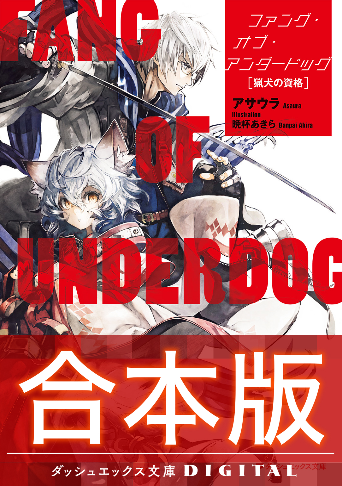
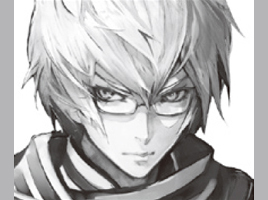
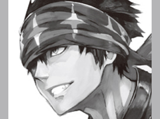
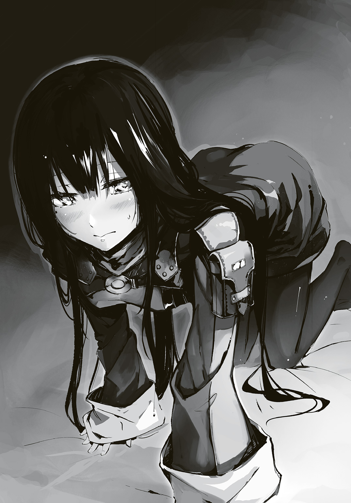

| 【合本版】ファング・オブ・アンダードッグ 全4巻 | |
| アサウラ | |

ファング・オブ・アンダードッグ 合本版

この本は縦書きでレイアウトされています。
また、ご覧になる機種により、表示の差が認められることがあります。


 ダッシュエックス文庫DIGITAL
ダッシュエックス文庫DIGITAL
ファング・オブ・アンダードッグ
猟犬の資格
アサウラ
●プロローグ 『雨、そして猟犬の先夜』
雨だった。地を叩いた雨粒が高く跳ね返るほどの、そんな夜の雨だった。
地に落ちている泥にまみれた刀の柄と、泥濘んだ地面についた己の傷だらけの両手と共に......少年は、その雨の跳ね返りを見ていた。
呼吸をし過ぎた肺が痛い。鼓動を打ち過ぎた心臓が止まりそうだ。体もくまなく痛い。全身が寒さではなく苦痛に震えていた。
「どうした、立て」
中性的な声がし、少年の視界の端に、草鞋を履いた足先が入り込む。そして、その足の主が持つ刀の細い切っ先も、また。夜だというのにまるでそれ自身が輝いているかのような刀身がそっと動き、切っ先で少年の顎を無理矢理に持ち上げていく。
少年の目に、小柄な男の姿が映る。濡れてはいても、この泥だらけの地であれだけ戦ったというのに、ほとんど汚れのない白い和装。細く、無駄という無駄を徹底的に削ぎ落とした体、そして長い黒髪を肌に張りつけた恐ろしく整った女のような顔をした、彼。
そこにある双瞳は、地に膝と両手を突く少年を冷たく見下ろしていた。
その冷たさの中にあるのは嘲笑でもなく、諦めでもなく......ただただ、深い哀れみだ。
「立て。剣を握れ。府津羅に、地に両手をつく無様な技はない。いつまで犬のマネをしている」
少年は瞳で立てないと訴えた。体中がぼろぼろなのだ。朝から幾百と打ち込まれ、幾十と泥に沈んだ。幼少期から体に刻まれてきた幾千の傷跡に、新たに無数の傷を増やしながら戦い、それでもなお両手をついて体を倒れぬよう必死に支えている――今、そんな状態の少年に立つことなど、出来はしなかった。
「お前はおれの弟だ。それなのに、どうしてそんなに弱い。どうしてそんな哀願するような目でおれを見る。そのザマで、そんな目をするのは負け犬だけだ。お前は負け犬か？ 無様に残飯を漁る、見窄らしい存在でしかないのか？ ......ふざけるな」
兄の足が少年の顔を蹴りつけた。
「幾万回と言い続けてきたように、お前に剣の才はない。お前は弱い。だが、おれの弟だ。そして、他に比類なき剣豪の血を持つとされる我が一族の末裔が一人だ」
兄は刀を鞘に戻すと、弟の胸ぐらを摑み上げ、額を突き合わせた。
「誇りを持て。そして、強くなれ。それはお前に限らず誰であれ出来ることだ。......負け犬に堕ちることはこの府津羅頼雅が決して許しはしない」
少年は毎日剣を振り、自らの体をいじめ抜くが如くに鍛えている。だが、目の前の兄――頼雅との距離は日々開くばかりだった。
少年は、あと半年ほどで一七になる。子供だから、兄の方が長く生きているから......そんな言い訳が通用しない年齢だった。昨年の段階で体は兄より大きくなり、今では五センチ以上上回っている。そのくせして、このザマだった。
負け犬になることを禁じられながら、兄に追いつくことも出来ない。
そんな閉塞感と虚無感が、雨粒と共に少年を包んでいた。
――強くなりたい。兄の、そして一族のしがらみから抜け出せるほどの、そんな強さを......。
意識を失う直前に少年が思ったのは、そんな切なる願いだった。
○
雨だった。地を叩いた雨粒が跳ね返って、傘の下にいても膝まで濡らすほどの勢いがある、そんな夜の雨だった。
傘を差す男の目前で、案内人達が悪しき神々の遺産と謳われる能力でもって、巨大な亀のような化け物の手足を斬り取っていく。
どの木々よりも大きなその化け物は、古の大戦争時に投入された、〝鵺〟と呼ばれる生物兵器である。
多種多様な形状、サイズの攻性生物である鵺......そんな中にあってこの見上げるほどのものは比較的大きい部類ではあるのだが、この様子ならばさほどの苦労もなくバラせるだろう。
案内人二人のどちらの能力なのか男は知らないが、青白い光の残滓を辺りに撒き散らしながら、目に見えぬ刃が鵺の硬そうな、虫を思わせる十数本の足を次々に切断していく。
甲羅から伸びている頭――人によく似たそれが雄叫びを上げるも、その頭に、坊主頭の男が飛びかかった。素手である。彼は十数メートル近く容易く跳び上がると、その巨大な化け物の頭の前で拳を振りかぶる。刹那、彼の手が青白く発光。そして、それを化け物の頭に叩き込んだ瞬間、猛烈な衝撃波が生まれ、周囲一帯の雨粒と空気、そして鵺の頭を吹き飛ばす。
百数十メートルは離れていた男の傘でさえも、その衝撃波で一瞬にして破壊され、骨組みだけが手に残っている有様だ。
鵺の頭は半壊し、先ほどまで蠢いていた全身はピクピクと痙攣するだけの肉塊となっていた。
「デカイのは殺しやすくていい。あの背中を......甲羅を割ってみる。検分を始めてくれ」
男の隣に、いつの間にか顎髭を生やした男がおり、そいつは言うなり空へと飛び上がると、全ての足を断ち切られ、頭を潰された鵺へと手をかざす。
その手の先に青白い光が生まれ、無数の漢字が一瞬だけ浮かび上がった。
骨組みだけの傘を持っていた男の目でかろうじて認識出来たのは、〈斬〉の字だけだ。
直後、男の前に聳えていた小山のような甲羅が、激しい音と衝撃を伴い、縦に真っ二つに叩っ斬られる。この大きさである以上、とてつもない血飛沫が上がるかと思われたが、男の予想に反して血らしい血はほとんど出ることもなかった。
男は骨組みだけの傘を投げ捨て、完全に死に果てた鵺の死骸へと歩み寄る。
今し方生まれた肉の谷間に体を滑り込ませると、化け物の中の構造を窺った。
「ふむ。これだけ巨大でありながら、やはり機能していることを窺わせるような内臓も生殖器もない。大戦時から自生している鵺ではなく、間違ってもそこから生殖行動の果てに生まれた子孫というわけでもない。......これは、最近作られたものだ」
顎髭と坊主の男は二つに分かれた甲羅の上に立つと、冷めた目で、断定した男を見下ろした。
「千年以上の時を経て、か......」
「判断は上がするだろう。オレ達は報告するだけさ。撤収だ。......と、その前に毒性もなさそうだし、こいつは潰して大地に還そうぜ」
坊主の男が言うなり、甲羅の片割れに拳を叩きつけ、また同様に顎髭の男も足下の甲羅の片割れに手をかざし......互いに青白い光を生み出す。坊主の足下の甲羅がまるで爆弾でも使用したかのように弾け飛び、顎髭の足下のそれは細切れになって辺りに飛び散っていく。
その光が失せた時、検分を行っていた男の周りには人の頭より大きな肉片はなくなっていた。
「いつ見ても陣士の能力というのは、凄まじいな」
二人の案内人――陣士達が地に降りると、置いていた荷物を拾い上げ、雨の森を進んでいく。
「今回のでちょうど一〇例目......ただの偶然なわけがない。それもデカ物ばかり......」
「その判断は上がするって言ってんだろう......あるいは、もうしたのかもな。〝総本山〟で来期から創設される特別役職ってのは、それを睨んだものでないわけがない」
「......眠り姫の猟犬か。酷な道だ」
顎髭が吐き捨てるように言うと、坊主共々不意に立ち止まり、背負ったばかりの荷物を再び地面に置く。二人の後を追っていた男は、何が起こったかわからず声をかけるものの、応答はない。再度声をかけてようやく、坊主が応じた。
「木陰に伏せていた方が......いや、逃げた方がいいな。総本山で合流しよう」
「何を言っている？ 総本山はここからどれだけ離れていると......」
辺りに妙な気配。男は顔を上げる。木々の間を無数の黒い鳥が喚きながら飛び立っていく。
「......〝烏〟か？」
男が呟くと、顎髭と坊主は「そうだ」と応じ......それは起こった。
ただの研究者であるその男でさえ感じる。周囲一帯の空気が激変し、全身に鳥肌が立つほどに張り詰めた。そして木々が巨人に踏み潰されるがごとく次々に倒れ、来る。まるで津波のようだ。だが、衝撃波も、爆発音もない。ただ、木々がドミノ倒しのように倒れ来る。
そのあり得ないような光景と合わせるように、十数の黒い影が音もなく地を走り、そして同数が羽ばたくこともなく空から、迫り来た。
「......ったく、少し派手にやるとすぐコレだ」
「酷な道だぜ、ただでさえな」
陣士達はその手に再び青白い光を浮かび上がらせ、その能力を発動させた。
爆音、轟音、そして、衝撃と跳ね上がる大量の鮮血が、空の雨雲さえをも震わせた。
「......これが陣の力、陣士の戦いというものか。神々の力とする比喩もあながち噓ではないな」
男は戦場と化した森を走りながら、独り、呟いた。
●１章『最終試験』
故郷を飛び出してから一カ月。どこまでも続いているような道を時に徒歩で、時に船で、時に馬車に乗り、少年が辿り着いたのは鬱蒼とした広大な森をドレスのように纏った山だった。
それは総本山と呼ばれる、陣士達が集い、暮らす一つの国のような土地だ。ほぼ未開拓で、多種多様な獣が跋扈する森を一日かけて抜ければ......現れるのは山を囲む長大で高さ二〇メートルを超える巨大な壁。その周りには堀のような川が流れており、少年が覗き込んでみると綺麗な水が流れ、魚が泳いでいた――と、その時、大きな魚が跳ね、そして空高く昇っていく。
少年の目は、魚の口に針がつき、そこから細い糸が長く長く伸びているのを見てとる。
飛び行く魚を追うように見上げれば、壁の上から釣り竿を伸ばしている者がいた。
「おっと、すまねぇ。人がいたか。飛沫がかかったか？」
壁の上からの声に「......いや」と応じながらも少年は顔をこすった。
今は秋とはいえ、山の水である。顔にかかった飛沫は氷の粒のように冷たかったが、それをどうこう言う気はなかった。石を投げられたとて、同じだっただろう。
魚が壁の上へと消えると、入れ替わるように人が現れ......壁の上から飛び降りた。二〇メートル以上の高さである。しかも川ではなく、それを越えて地面に向かって落ち来ている。
少年はさすがに冷静ではいられず、反射的に飛び来た人を受け止めようと両手を差し出した。
この高さ、落下する人間の速度、重量......計算するまでもなく、飛び降りれば無事では済まないとはわかっていたし、その下にいれば自分がどうなるのかも想像出来た。
だが、それでも少年の腕は飛来する人へ向かって伸びていた。
そして、その腕が落下者に触れる、まさにその時――青白い粉塵が少年の目前で弾けるように溢れ、そして猛烈な風が吹き荒れる。
「何者だぃ、お前さん」
煙草を咥えた無精髭の男が空中に静止しているのを、少年は尻餅をついて見上げていた。
「そっちこそ......陣士だったんですか」
少年の目前で浮いているのは、薄汚れた格好をしてはいたが、見窄らしくはない、そんな不思議な男だった。二十歳を幾らか過ぎた、そんな年齢のようだ。
首に四角いレンズのゴーグルを下げ、防寒具にも見えるゆったりとした革製のパンツやジャケットを羽織っているせいで大柄に見えるが、顔や首を見るとむしろ細身なのだと知れる。
人なつっこい犬、または少年のような......そんな柔らかで優しげな表情をしていた。
「この城郭の内側は総本山だが、そこには陣士しかいないからな、当然だ。......だが、落下してくる人間を何ら迷いなく受け止めようとする男なんざ、普通じゃねぇ。何者だい？」
「......陣士になるために、来ました」
「あぁ、そうか、今はそういう時期か。......おんやぁ？ 随分と傷だらけだな。それも古傷ばかり......体の出来上がり具合からすると奴隷ってわけでもなさそうだ。鍛錬の末の勲章か？」
少年は羽織っていたローブのフードを被り、慌てて肌を隠した。
体に刻まれた無数の傷跡は、恥辱の跡のようなものである。人に見せたくはなかった。
「てっきり烏なんじゃねぇかと思ったわけだが、その様子からするに違うようだな。......飛沫をかけちまった詫びだ。入り口まで連れていってやる。オレの名は〝ソラ〟だ。摑まりな」
ソラが差し出す手を、少年は尻餅をついたまま恐る恐る摑む。すると、突如として青白い粉塵が辺りに生まれ、引っ張り上げられた。空高く。
――飛翔したのだ。二〇メートルの壁を越え、森、そして壁の向こうの山の上に造られた都市を見下ろす高さにまで、ソラは少年の手を摑んだまま、一気に飛び上がっていた。
「ソ、ソラ！ ちょ、ちょっと待って......!!」
「ははは、オレはお前みたいにビビる奴が好きだぜ。......これが陣士だ。陣の力ってもんだ。お前はこれからその人生を犠牲に、この禁じられた力を手に入れようってんだ」
ソラは容易く飛んでいる。まるで全身のどこにも負担がかかっていないかのように浮き、飛んでいる。だが、少年の体は当たり前のように重力に引っ張られており、ソラの手にぶら下がっているだけだった。少年はたまらず、ソラと繫がる己の手に力を入れる。
「折角だ、よく見ておけよ。陣士になれなきゃ、総本山の中を見ることなんて出来ねぇぞ」
少年は飛翔しながら恐る恐る下を見る。それは、生まれて初めての体験だった。
足の下に、何もない。空の中。翼を持たぬ人が決して目に出来ぬ、神の光景だった。
足先から数十......いや、もう一〇〇メートルを超える距離の先に、山の表面を木々と共に覆う巨大な都市がある。どこぞの国の首都のような豪華な住居が並び、山の上に行くに従い古代文明の名残と思しき四角く高い塔――ビルと呼ばれたそれらが幾棟も建ち並び、山の頂上にはそれらに囲まれるようにして巨大な城が聳えていた。
こんな古代の遺物だらけの都市を見るのは初めてだったが、それよりも街を空から見下ろしていること自体が少年には刺激的な体験だ。ソラの手以外に頼るものが何もない不安はあれど、それ以上に、自分の知らぬ力、知らぬ光景に心が震えた。それは、紛れもなく人ではない何らかの力。そしてそれを容易く扱うソラという男......まるで新しい本を開いた時のような、新しい服に袖を通したかのような......何かが始まろうとしている、そんな感動がそこにはあった。
妙な閑静さを感じさせる街並みのエリアとは別に、ソラが向かっている〝入り口〟と呼んだ場所には活気が溢れていた。
巨大な壁の外、外と中とを繫ぐ巨大な門の前に拡がるのは、街だ。大勢の人が行き来し、声を張り上げるそこだけは、少年が旅の間に見てきた都市と同じ造りで、同じ活気がある。
「この総本山の玄関口、その外側にくっついている場所......そこが世界で一番金が飛び交い、目玉が飛び出る高級品さえもやり取りされる〝商業区〟だ。まぁここも含めて総本山と言う場合もあるが......ともかく一般人と陣士の両方が入り交じって生きる特異なエリアであり、そして、お前がこれから三カ月の教育期間を過ごす場でもある」
ソラは横に体育館らしきものとグラウンドまで備えた、一際大きな四階建ての建物の前で、ようやく少年を地上に再会させてくれる。数分の空中浮遊とはいえ、しっかりとした地面に両足が着いた時、少年はたまらず膝から崩れ落ちるのを止められなかった。
「目の前のデカイ建物が、学校だ。入学申請しとけや。......またな」
ソラがまた飛び立とうとしたので、少年は慌てて己の名を告げようとするのだが......。
「今のお前さんの名に価値はない。......入学審査後に、どこかで会ったら名乗ってくれ」
それだけ言って、また柔和な笑みを浮かべると、ソラは少年を拾った場所へと向かって飛んでいった。釣りを再開するのだろう。
辺りを行き交う大勢の商人と思しき人々が目をくれる中、少年は力の抜けていた体に活を入れる。そしてソラと繫がっていた己の手を見つめ、それを固く握り締めた。
初めて自分の身で感じた陣士の、陣の力。その感動を落としてしまわぬように。
少年は、手を握り締めたまま、学校と呼ばれた建物へと向かう。開かれている巨大な門を抜けると、いわゆる校庭といった趣の広場があり、そこには裸の男女がそれぞれ大剣を構えている巨大な銅像があった。それらの間を抜けて校舎へ。
『汝、裸の大剣となることを望むか？ その覚悟がある者のみ、この扉を開け』
扉の上にそんな言葉が書かれていた。この〝裸の大剣〟は陣士を示すのだろう。だから、少年はあえてソラと繫がっていた手で扉を開けた。......奥の受付のカウンターには老紳士が一人。
「......陣士になりにきました」
「試薬を使わせていただきます。陣士になるには才覚や努力ではなく、体の適性が大事でございます。......市場に流れている試薬をお使いになられた？ はい、ここまで来た者の大半はそうでございますな。しかしながら、アレは毒性を極端に弱めたもの。ここで使用いたしますのは、適性なき者には死に直面しかねないほどのものでございます。お覚悟は？」
老紳士がカウンターの下から注射器を取り出すと、少年は背負っていた荷物を床に落とし、ローブを脱ぎ、傷だらけの腕を差し出した。
覚悟は出来ていた。命を落とすことを躊躇うような生き方はしてこなかった。兄に、そうであれ、と激しく鍛えられてきたし、そうあろうともしてきたのだ。
注射器の中の透明な液体がゆっくりと体内に入ってくるのを眺めつつ、少年は訊く。
「この地には、古代の医療技術が今もあると聞いています」
「えぇ。この山は陣の技術と共に、ありとあらゆる古代のものが今なお生きており、医療技術もまた同様でございます」
「......この体中の傷跡は、消せますか？」
「専門家ではないので、何とも。ですが、ここの医療技術を頼って世界中から病人や怪我人が訪れ、その大半の者は笑顔で去っていきます。傷跡を消す程度ならば簡単ではないかと」
兄と過ごした時間、屈辱の跡、呪いたくなる血の束縛......それらをここで消せる。それだけでも来たかいがあったといえるのかもしれない。金は多少ある。
注射器が空になると、少年は受付カウンターの前で胡座をかいて座り、体を薬が巡るのを待つ。一時間、そのまま微動だにせず、少年は瞑想して過ごした。
しばらくの後、老紳士に声をかけられ、彼の皺だらけの手で体温を測られた。微熱とのこと。適性がない者であれば高熱に魘され、数時間と経たずに死ぬのだと、老紳士は話した。
「では、こちらの書類に必要事項をお書きに。......入学料？ 授業料？ いえいえ、必要ありません。むしろ学生の間は週に一度、生活費が学校側から支払われますので」
陣士達はその力で莫大な額の金を貪るが如くに稼いでおり、世界経済を自由に出来るほどの資産を持つという噂は、本当なのかもしれない。少年はそんなことを思いながらペンを走らせようとするのだが......書類には、名前と年齢、持病しか書く項目がなかった。しかもその名を書く欄には〝可能な限り本名は書かないように〟と注意書きがある。
窮した少年は老紳士に助けを求めるように、視線を送った。
「陣士は常に狙われる立場。その名から係累が知られ、残虐な者達に親族を嬲り殺しにされた事例も少なくありません。......とはいえ、今まで通りの名を書く剛胆な者も多いのですが」
あの兄が嬲り殺しにされることなどまずないだろう。出来る者がいるというのなら、むしろ見てみたいほどだと少年は皮肉げに思う。
だが、本名を書かないのが普通というのならば、少年はそれを破る気はなかった。
「どんな名が......いいんでしょう？」
「ご自分の名前を書かれればよろしいのです。何ら祈りも意味も持たぬ、ご自分が感じる、ご自分を示す音......そんな名でよろしいのです」
少年は、瞼を閉じ、瞑想するようにして己の名を胸に問う。
兄や血の呪縛から解き放たれ、本当の一個人としての、独りの少年――否、独りの男としての自分。それを示す、その名、その音は――。
１
「アルク......おい、アルク。貴様、卒業式だというのに、なぁに居眠りかましていやがる」
己の名を呼ばれ、はっとして俺は瞼を開いた。演説のような訓示が続いている。
――日本という国は末期、様々な技術を生み出し栄華を誇った。その中で、最も凄まじかったもの......それこそ、我らが扱い、君らが扱わんとする〝陣〟という技術である。
かつて、陣をきっかけとした世界大戦があったのは誰もが知るところだろう。世界地図を容易く描き換えられるほどの陣の力......。それによって世界は破壊の限りを尽くされた。多くの国も対抗せんとし、倫理を捨ててまで研究に打ち込んだが、結局は自らの遺伝子に手を入れ、日本人のみ持つとされた陣の適性を人工的かつ限定的に得ることが精一杯だったのだ。
日本が世界を滅ぼし、世界は日本を滅ぼした......あの大戦争からすでに千年を優に跨いだ現在でもなお、生物兵器として投入された〝鵺〟の脅威を始めとした戦争の傷跡は色濃い。
知っての通り、一度は石器時代近くまで退行した文明だが、かつての中世と呼ばれた時代の水準にまでこうして世界を復興させたのもまた陣の力だ。しかし、そうであったのだとしても、人々の記憶から世界を崩壊せしめた事実や強大な力への畏怖、そしてそれを利用することへの嫌悪感、背徳感を拭い去ることは今もなお出来てはいない。それは陣という力だけではなく、それを扱う我々、そして未来の君達に対してもまた同様であり――。
体育館の壇上の、見知らぬ男の喋りからするに、自分が立ったまま眠りに落ちていたのは数秒だろうと察したが......その数秒を運悪く体育教師に見つかってしまったようだ。
「三カ月の教育期間を終え、最終筆記テストも合格しての卒業式だぞ。ったく、敬意が足らん、敬意が。このバカモンが」
先日一七になり、健康診断で一七六センチになったことが判明した俺を容易く、体育教師は一〇〇人余りが整列した中から引きずっていく。俺は細身ながら昔から筋肉質なので見た目より重いはずなのだが......。この教師の体は見事なものだと、素直に思う。
この体育教師もまた、陣士のはずだ。それなのに見たままの膂力を有している。
俺は体育館から出てすぐの洗面所まで連れていかれ、耳元で怒鳴られた後、顔を洗ってから列に戻るべし、と言いつけられた。
体育教師の背を見送ってから、仕方なく俺は蛇口を捻り、眼鏡を外して冷水を顔に浴びせる。
訓示の声は、なおも聞こえてくる。如何に陣がおぞましい力であるのか、そして有用であるのか......。如何に陣士が世間から疎まれ、嫌われているのか......。そうでありながら、世界は陣の力をどうしても必要とし、求めてもいるのだということも......。
内容は常識として知っているし、その言葉も三カ月前の入学式のそれと一言一句違いはないようだったから、眠くなるのは当然である。
「三カ月か。......あの頃はまだ、俺の体に......」
一生消えぬとされた傷が無数にあり、逆にアルクという名に馴染みはなかった。そんな頃。
俺は冷水を浴びせた顔を、鏡に映す。そこに傷跡はなく、そして以前は自分でもはっきりと認識出来ていた卑屈さが鳴りを潜めた、しっかりとした男の顔があった。総本山へ来て初めて行った美容院なるところで切ってもらっている髪も、爽やかでいい......と思う。
傷跡を消してから、自分の顔が好きだと初めて思えた。
俺はジャケットの裾で顔の水気を拭うと、眼鏡をかける。
学校に入ったばかりの頃に、顔の傷跡を消すまでの誤魔化しにと購入したものだったが、勉学に勤しみ過ぎたのか、今ではわずかに度が入っていた。
どうせなので訓示が終わるまでここにいようと思い、俺は解けてもいないスニーカーの紐を締め直す。地元では草鞋ばかりだったが、この古代の技術を用いて作られたとするスニーカーはあれよりずっといいものだった。......値はかなり張ったけれども。
スニーカーだけでなく、今羽織っている和の趣向を持つジャケットもパンツも、全てこの街で手に入れたものだ。故郷から持ち込んだ物は、傷跡が消えたと同時にほとんど捨てていた。
俺は生まれ変わったんだ。今一度鏡を見、そこにいた己に言った。
いまだ陣の能力は得ていないが、陣士に必要だとされる毒物や罠の知識、化学、物理、人類の歴史等々の座学ばかりを三カ月延々と教え込まれながら......同時に、教育課程の一環として陣を受け入れられる体にするための薬を体に打ち続けてきた。おかげで子供のような体力だが、それも時間と訓練次第で元に戻るというから、心配はないだろう。
鏡の中にいるのは一族の落ちこぼれではなく、若き陣士のアルクという名の俺だった。
「......ん？ どうしたんだ」
訓示が終わったようだったが、同時にざわめきが体育館から聞こえてくる。体育館に戻ってみれば、生徒である老若男女約一〇〇人の大半がざわめき、辺りを窺うように見合っていた。
生徒には比較的十代が多いものの......入学資格に何ら制限がないせいもあって、年齢、性別、肌や髪の色もまちまちだ。服装もどこぞの民族性の強いものから俺のようにこの街で買い求めた古代人のもの、そして一応支給されている学校の制服――男女の制服はあるものの、正直デザイン的に三十路を越えていたりすると着るのはかなりキツいせいで、着る着ないは自由となっている――を着た女子、中にはほぼ全裸に近い男達までいるわけだけれど......まさに世界中から集まったと思しき、てんでばらばらな陣士の卵達が、慌てている。
何が起こったのかわからずにいると、ふと、視線を感じた。見やれば、列の中に埋没するようにしていた少女。大きな狐の耳と尻尾を生やした、和装の十代前半と思しき彼女が、黄金色の瞳で俺を見ていた。彼女は他クラスの子だったはずだ。うちのクラスに知り合いでもいたのか、たまに教室内に来ていたのを――外見がやや目立つので――何となく覚えている。
どこかドライな彼女と見つめ合った数瞬後、体育館内に「静粛に！ 殺すぞ!!」の声が響き渡った。壇上を見やれば、長い金髪で右目を隠した女が声を張り上げている。
総本山のトップにして、世界を個人で破壊出来る存在とされる伝説的な陣士、通称『眠り姫』と呼ばれる者の相方だ。名はイリスだっただろうか。
「知っての通り、我々陣士は二人一組で行動する。陣士は常に暗殺の対象とされるが故、商業区や総本山内ではともかく、個人での旅は常に危険を孕む。それを少しでも避けるため、または情報をこの総本山に持ち帰るために相方は重要な役割を持つ。そして、それはお前達も例外ではない。繰り返すが――これより、好きな相手と二人組を作れ!!」
――バカな!? 俺はその衝撃的な言葉の前に腰を抜かしそうになる。怯えた体が反射的に手を腰に伸ばそうになるのを、堪える。帯刀している時のクセだった。
好きな相手と二人組を作れ、だと......？ 冗談じゃない、この三カ月の間で親しい人間なんて出来ちゃいない。蕎麦屋のオッサン達ぐらいか？ 冗談がキツい。
......わかってはいた。陣士は通常二人一組で行動しているというのは。
だが、てっきりそういうのは総本山の方で相性や能力に合わせて組み合わせてくれるもんだとばかり......な、何だよ、好きな相手って!?
「慌てるのも無理はないが動じるな。......確かに入学時に個人情報を漏らさぬためにも必要以上に同期を始めとした他の者と親しくなるな、と言った。このわたし自身がだ。だが、他人を見るな、観察するな、と言った覚えはない。陣士たるもの洞察力は持っていて当然の能力だ」
一般的にいわれる学校とはかなり趣の違う、他人と協調性を要求されないここでの学校生活は俺にとって非常に楽なものだったのだが......最後に来て、これか。
「これから三カ月の休校に入る。その間の行動は自由だ。相方を探すも良し、今一度故郷に戻って覚悟を改めてもいい。......今ならまだ普通の人間として生きることも可能だ。陣は一度体に入れたらまず消すことが出来ない。覚悟がいる。絶大な力を手に入れる代わりに、総本山以外では気の休まぬ生活を送ることになり、壁の外では常に死が傍にあるものと思え」
逃げ出したい衝動が生まれる。俺が誰かと共に肩を並べている光景が、思い浮かばない。
「これより最終試験を行う。この三カ月の休校後に行う実技検査の前にパートナーを決め、総務部に申請すること。知っていると思うが総務部は学内や商業区にはない。陣士のみが入れる壁の向こう......城郭内にある。......つまり、休みの間に己の体に陣を入れろ。何を入れるかも、しっかり考えろ。使える陣、使えぬ陣、クセが強いが使いこなせば強力な陣......様々あるが、当初は体が陣に慣れていない以上、妙な陣を入れるとポックリ死ぬぞ。......いいか？ お前達はこの休みの間に、生涯使うことになるであろう陣を体に入れ、命を共にする相方を決めるのだ。......陣の入れ方については、教員を頼れ。もし陣を入れぬのなら放逐、陣を入れても相方を見つけられなければ今回は悲惨な仕事についてもらうことが確定している。......誰だ今不服を口にした奴は!? 我が君、罌粟様が決めたルールだ、彼女こそ総本山のルール！ 三回回ってワンと鳴けと言ったらワンと鳴くんだ！ 文句がある奴はこの場で脳天叩き割るぞ!?」
罌粟様、というのが確か眠り姫の本名だったはずだ。
「以上だ。ではこれより最後の授業だ。陣とは、そして陣士とは如何なるものかを見せよう」
俺を含めた全員が言われるがままにグラウンドへ出れば、そこには坊主頭の男と顎髭の男。
「ほぅ、これが今期の入学者共か。平均的に若いな」
「無駄口叩くなって。またイリスの奴がプッツンするぞ」
ほどほどにやれ。イリスのそんな言葉を合図に、坊主が凄まじい速度で青白い光の欠片を纏った拳を地面へ放つ。その途端、坊主を中心とした一帯が爆発し、轟音と共に大地が揺れた。
爆風と吹き上がった土をモロに受けた生徒から悲鳴が次々に上がる中、砂煙の向こうに深さ数メートル、直径は数十メートルにもなる大穴が開いたのを俺はかろうじて見て取る。
穴の底、即ち爆心地に立つ坊主は首を上げることもなく、粉塵の中を踊るように駆けた。何が起こったのかと思えば、粉塵を何かが連続で斬り裂き始めたのだ。それはまるで透明な剣士が長大な剣を振り回し、空気そのものを斬っているかのようだった。
一際大きく粉塵が斬られた際、見えぬ刃は地面にまで達し、そこに水道管か水脈かあったのかわからないが、水が盛大に吹き上がり始め、粉塵の勢いが落ちていく。
「......上か」
いつの間にか俺の隣に立っていたあの狐耳の女の子が〝ふーん〟という顔で空を見上げていたので、何となく俺も同様に視線を上げてみる。そこではあの顎髭の男が青白い光の欠片を纏いながら空中に浮遊し、粉塵に向かって掌を広げていた。
その掌からは脈打つようにして青白い光の欠片が断続的に生み出され続けているのだが、どうもその光が出る度に、粉塵が斬られているようだ。
「顎髭が〈飛〉を自分にかけつつ、〈気〉と〈斬〉......じゃな。ハゲは......なんじゃろう。〈爆〉は使ってるようじゃが」
狐耳の少女が独り言を口にしていると......イリスの怒声が飛んだ。
「バカか!? 誰が普通に戦えと言った!? ほどほどにだ！ しかもここに並んでいるド素人共でもわかる陣をわかりやすく使ってやれ、ぶっ殺すぞ!?」
イリスの怒声と共に、地上と空中で分かれて戦っていた陣士二人は、途端に動きを止めた。
飛んでいた顎髭が地上に降り立つと、半球状に凹んだグラウンドの底で、坊主と何か打ち合わせをし......そして、距離を取る。
「いくぞ、これぞ我が陣の力だぁ～」
やる気のない声を顎髭が出すなり、手を掲げた。するとそこに青白い光で八角の枠に囲まれた〈石〉の字が現れ、続けてそこに重なるように〈飛〉の字。掲げていた手を下ろして地面に触れさせると、光る字は無数の光の破片となって土の中へと吸い込まれていく。
そして......土の中から拳大の石が高速で飛び出し、坊主に向かう。
学生達が「おぉ！」と声を上げる中、坊主はそれを軽く首を捻ってかわしてみせた。
悠々とした動きで、坊主は穴の底から噴き出していた水に指先を触れさせると......今度は彼の手の先に光の字が浮かぶ。〈水〉と〈弾〉、そして〈撃〉。
「こっちも反撃だぁ～、いけぇ、俺の陣んんん～」
坊主の浮かべていた字が砕け、水に吸い込まれる。泥と混ざって濁っていた水は不意に空中に浮かび上がって球体となり、凄まじい速度で顎髭へと向かう。
今度は顎髭がかわすと同時に、手の先に〈土〉〈剣〉の字を浮かび上がらせると、地面に触れる。するとあらかじめ地中に剣があったのかと思うほど、綺麗な茶色の剣が抜き取られた。
土の剣を持った顎髭が坊主に向かって走り寄ると、坊主もまたそれを受けて立つように構える。その手にはやや濁って半透明な水の棒が握られていた。
互いに振りかぶり、土と水の得物がぶつかり合う。水の棒がたやすく両断された。
「やっぱダメだよ......なッ！」
斬られた水の棒から手を放すと同時に坊主は、土の剣を振りかぶる顎髭へと素早く手をかざす。〈水〉、〈爆〉の字が素早く現れ、そして斬り飛ばされていた水の棒が唐突に爆散して、顎髭諸共、土の剣を吹っ飛ばした。
お前それ狡くねぇか!? という顎髭の喚きと、坊主の笑い声が響く中、イリスが咳払いをして生徒の注目を集める。
「今のが、お前達が手に入れんとする〝力〟だ。場所が場所だけに力はかなり抑えたようだが、わたし達ぐらいになればさらに大規模な陣を扱える。......いいか？ 陣とはこの世の全てを操る命令だ。森羅万象を己の意のままに出来る力なのだ。神の力とされる所以もここにある。基本的な使い方は察しのいい者なら今のでわかったかと思うが――」
陣とは、自分が使いたい〝漢字〟を体に入れることから始まる。体に入れた漢字の意味を、陣士は生命力と引き替えに扱うことが出来るようになる。
そして陣は、基本原則として〈何を〉〈どのように〉〈どうする〉というように複数の陣を組み合わせる――これを陣を〝重ねる〟と呼ぶ――ことで、その力を発揮する。このため、通常一つでは発動しない。
今し方、二人の陣士が使用したように、〈石〉と〈飛〉で石を飛ばしたり、〈水〉〈弾〉〈撃〉で水の弾を撃ったりというようなものが基本と言える。
このため、新人は少なくとも二つないし三つを入れる必要があるが、陣は使用時以外でも生命力をある程度吸い続けるため、鍛えていない素人が同時に複数入れようものなら立って歩くことすらままならず、最悪の場合死ぬ恐れもあるので順次入れていくのが好ましい。
とはいえ陣によっては〝重い〟〝軽い〟と言われるように、生命力の消費具合に差があるため、きちんと選べば不可能というわけでもない。
注意しなければならないのは、陣を体に入れるというのは、焼き入れることである。陣を受け入れるための準備として毒物同然の薬剤を注射し、そこに数百度の焼き鏝を押しつけることで定着させ、生涯消えぬ陣を持つことになる。......つまり、考えなしに入れると後悔するのだ。
また、陣を使用する前に青白い文字が浮かんでいたが、これを〝発現〟、それが砕けて実際に効果が出ることを〝発動〟と呼ぶ。先ほど二人がいきなり全力でかました際に何も見えなかったのは、ベテランほど発現時間を短くし、どんな陣を使用しているのかを相手に気取られないようにするためである。
説明を終えたイリスはいまだクレーターの底で戦いを続ける二人に「やめ」の声をかけた。
「今期総本山では戦闘に特化した者達のみを求めている。常時人手が足りん医療・通信も受けつけているが、それ以外の者は戦闘に扱える陣をまず入れろ。理由は各々で調べるなり考えるなりするべし。......どうしても嫌だ、という場合は卒業資格は五年維持されるため、来期まで待つという手もあるが......悪いことは言わん。その際は陣を入れるな。その理由も含めて、全ては己らで判断しろ。......ではこれにて卒業式を終える。現時点をもって解散。三カ月後に、陣士として、同志として再び会えることを期待している」
イリスは青白い光と共に空中に浮かぶと、何かを思い出したように、俺達を見下ろした。
「お前達はまだ陣士ではないが、陣士たり得る者達だ。商業区はいいが、総本山から離れる時は警戒しろ。暗殺の対象になる可能性がある。......我々は〝裸の大剣〟だが、今のお前達はその刃すら持っていない。つまり、ただの真っ裸なのだ」
早く、良き陣を扱えるようになるといい。イリスはそう言い残して、俺達の前から消えていったのだった。
２
俺には生まれてこの方、友達と呼べる相手がいなかった。物心ついた頃には真剣を振り、両親が死んで潰れかけた道場を兄が立て直そうと躍起になっていたのを手伝い、時間があれば強要されて書見もしていたし......そうじゃなくても一〇に至る頃にはもう、顔といわず体といわず、ありとあらゆるところに傷跡があって、気味悪がって近づいてくる者はいなかったのだ。
せいぜい落ちこぼれ、母の浮気相手の子ではないのか、本当に府津羅の血か、と、散々笑われ、いじめられただけだ。道場が持ち直し、兄を慕って年齢も様々な門下生が再び増えだしても、結局腫れ物に触るようにしか相手にされず、彼らと共に稽古をすることも許されなかった。
その資格がない、と言われていたのだ。技はもちろん、心さえも未熟だとして。
屈辱と諦めだけが、傍にあった。
こんな自分に、果たして相方なんて見つけられるのだろうか......。
そんな不安を抱いたまま、俺は体育館の壇上を見やる。そこでは卒業式終了後、俺と同じクラスで、いつもリーダー気取りでうるさかったシンスケが「折角だからみんなで自己紹介をしようじゃないか！」と言いだしたことで始まった、謎の自己アピールタイムが進行していた。
「おい、ガキ共。お見合いじゃねぇんだ、好きな異性のタイプを言ったってしようがねぇぞ。組むのはな、同性同士が基本だ」
教員で唯一残っていた体育教師が怒鳴るように言った。何故ですか？ と誰かが声を上げる。
「陣士は常に命を狙われるってのに、男女じゃ常に同じ場にいられん。恋人や夫婦で組む奴もいるが、そういうのは大抵揉めて破綻するのがオチってもんだ。......真に優れた陣士は同性同士のコンビと言ったっていい」
それを踏まえて次の者は壇上へ、とリーダーぶりたがるシンスケがすぐさま声を上げる。
彼の歳は俺と同じぐらいの十代後半、男では珍しく学校の制服を着て、喉元までボタンをしっかり留めた、まじめそうな男だったが......俺の好きなタイプじゃなかった。......かといって、今壇上に登った三十路そこそこの角刈りの二人組も、俺は好きだとは言えない。
「俺の名は、ジョー。隣にいるタフガイはダン。パートナーの合意は入学直後にできていたのだが、一応他クラスの生徒達にも自己紹介はしておこうと思ってね。我々は――」
「――美しい！」
ハッ！ と、ほとんど半裸......というか、布面積のえらく少ないパンツ一丁の男二人は、自らの体脂肪の少ない体を見せつけるようにポーズを取る。
恐らく自己紹介がしたいのではなく、目立った場所に立って体を見せたかっただけなのだろう。......よくもまぁこの一〇〇人程度の中で同じ趣味の者が二人もいたものだ。
次！ というシンスケの声に「はい！」と少女の声。名残惜しそうに、一歩進む度にいちいちポーズを決めるジョー・ダンを押しのけつつ、壇上に登ったのは目の覚めるような赤いショートヘアの小柄な女の子だった。山の猟師が纏うような、着古した衣服に革ベルトなどを巻きつけたボーイッシュな女の子である。
四つのクラスがあるが、彼女は俺と同じクラスだったので、多少は知っていた。
身のこなしが相変わらず異常である。滑らかに、気配をほとんど発することなく歩いている。まさに野生の獣のそれなのだ。武芸なり何なりの心得があればすぐにそれが目につくだろう。
「アカです。一四です。ここに来るまでは両親と猟師してました。楽しくおしゃべり出来て、優しい人が理想です。よろしくお願いします。......あ、えっと趣味は家で一緒に暮らしている犬達と山に出ることで、あとは、えーっと......」
訛の強い口調で、彼女が慌てながらも言葉を紡ぐのだが......。
「アカ君！ 壇上に登るのなら話をまとめてからにしたまえ！」
シンスケが声を上げると、アカが「あ、ご、ごめんなさい」とションボリして壇を降りた。
......こういうのがあるから、この手の人間を好きになれない。言い分はわかるし、一〇〇人もいればそうすべきなのはわかる......けど、言い方というものがあるだろう、と思ってしまう。
アカが頭を搔きながら、えへへ......と苦笑いで壇を降りてくると、何となく目が合う。
人前で批判された後ってのは、それこそ周りからは腫れ物のように扱われる。けれど、本当はそういう時こそ、声をかけてあげるべきだと、俺は思う。
なので、軽く微笑んでそちらへと歩いていくと、アカもまた名を呼ばれた犬のように、小走りに寄ってくる。そして「失敗しちゃったとよ」と彼女の地元の言葉そのままに言った。
「大丈夫だよ、多分。うまくいった方じゃないかな」
「そう、なんかな？ ......えっと、アルカ、やなくて、アルク......君、やったよね、おんなじクラスの。優しぃとね」
俺は軽く首を振った。優しいというよりは、傷つくことに慣れてるだけだ。
「いい相方が見つかるといいね」
「うん。......アルク君が同性やったら良かっとんになぁ。......でも、実はもう、気になってる子がおるんよ」
誰？ と話を振ってみると、アカは視線で人混みの中の少女を見やった。それは先ほど、俺の隣で独り言を口にしていた大きな狐耳の少女だ。
「......あの、大きな耳とふっさふさの尻尾、凄く触りた......。......絶対気持ちいいとよ」
「アカってさ......見かけによらず、邪だよね」
うちも大きな耳と尻尾持って生まれたったんにぃ、と悔しそうにアカが言う。
古代、受精卵に手を加えて獣の耳や尻尾を生やすために遺伝子を改造する技術が作られたのだという。世界的に子をペットのように扱う親が当たり前だとされた狂気の時代の象徴だとか何とか授業で習ったが......ともかく、それはその子にのみ発現し、その子が親として子を生しても生まれてくる子供は元通り......のはずだったのだが、世界大戦の際に、世界各国がこぞって陣の力を利用するために遺伝子改造に手を出した結果、消えるはずだった因子が世代を越えてもなお内部で維持されてしまい、ランダムで表面化するようになったんだそうな。
「......では、次！ どうした、誰もいないのか!?」
三分の二を終えた頃になると、なかなか壇上に登る者が現れなくなってきた。恐らく皆、事前に情報を得てパートナーを決めていた連中なのだろう。後は俺のように根暗そうなのとかが......ん？
「アルク君、君も行ったん方がいいとよ」
アカはそう言って俺の背を押す。......何だか気さくで、犬のような子だな。
俺は少し照れつつも、アカに押されて、壇上に登った。
「えっと......アルクです。俺は――」
――あれ、アイツ......府津羅......？
俺が喋る中、声が聞こえた。小さな女性の呟きではあったが、それは一〇〇人が佇む体育館に不思議なほど響き渡った......気がした。
俺は言葉を続けられず、全身に鳥肌を立たせながら反射的にその声の主を見る。
......俺だけではない。会場内にいた大半の者が、そうだ。
メイド服の従者の女を従えた、マントを羽織ってフードを被った細身。マントの下は学校の制服だ。そして、フードを払って現れたのは金髪のポニーテールと、気の強そうな女の顔。
その顔を......俺は、知っていた。
「あぁ、やっぱりそうじゃない。あいつ、府津羅兄弟のダメな方だ」
いまだ壇上に登っていなくとも、他クラスだったとしても......俺はそのニヤリと笑う少女の名を知っていた。......同郷であり、ある意味では幼馴染みと言える、そんな相手である。
「......浜菊憐......どうして......」
浜菊は体育館中の視線を集めながら、前へ出ると壇上の俺を見上げた。
「二年ぶり、ぐらいかな？ ......クラスが違うとわかんないもんね。まぁ、あの気持ち悪い傷跡がなくなってたら、こういう場でもないと、さすがにね。......それで？ どうしてここにいるのかしら。府津羅......えっと、名前なんだっけ？」
――府津羅だと？ ――あの、府津羅か？ ――何でここに。――まさか、送り込んできたのか？ ――府津羅って、かつて猛威をふるったとされる陣士殺し最強の一派じゃないか！
体育館中がざわめく中、俺は歯を嚙み締め......アルクだ、と名乗った。
「あら、そう。よろしくね、府津羅。......私の名は、知っていると思うけど、浜菊憐。パートナーは私の従者の白妙菊。改めて、よろしく」
体育館中から突き刺さるような視線を浴び、俺は俯く。だが、そこには壇に腕をつき、俺を見上げている浜菊のニヤニヤした目があった。
耐えられず、視線を上げれば......無数の忌避の目。アカさえも不安げな顔で俺を見ている中......ふと、一つだけ痛みのない視線を感じた。......それは、あの、狐耳の少女のもの。
逃げ込むようにして、俺は、彼女の大きな黄金色の瞳を見つめ返した。
３
「それで、泣きながら逃げてきた......ってわけか。まぁいいや。とりあえず、喰おうぜ」
商業区の一角にある大衆酒場のテーブルだった。店員が持ってきた大きな皿には、それに見合うだけの二つの大きなハンバーガーや付け合わせのポテトとピクルスが載っていた。
「ち、違うんだよ、ソラ。別に泣いていたわけじゃ......あ、い、いただきます」
寮では豆をメインとした食事ばかりだったし、たまの外食も――服を買い直したり傷跡除去手術の関係で――安い蕎麦屋がほとんどだった。......だから、この手の食事は思わず涎が出る。
それまでの鬱々とした気分が吹っ飛び、ソラが手に取るのを待ってから、俺もバーガーに手を伸ばした。ずっしりとした重量感が嬉しい。バーガーの土台と蓋である、焼き色のついたバンズはとても大きいのだが......それ以上に、中の具材が大きい。とんかつチーズバーガーである。丸いバンズからはみ出る、楕円というよりは長方形に近い分厚いカツ。揚げたてを示すように、まだカツの端では透明な油の残滓が尖ったきつね色の衣の上で躍っている。
学校から飛び出した俺の顔を見るなり、ソラがこの店へと連れてきてくれ、注文してくれたものだ。......当然、奢りである。
いただきます。俺は、思わずもう一度呟いてからバーガーに齧りついた。
パリッとしたバンズの表面。その中はふんわり。そして、その先は......天国のそれ。下の歯は颯爽とカツに到達。粗いパン粉を用いて作られたカツの衣は、歯茎に刺さりそうなほど鋭利だ。しかも揚げたての熱を纏っているので、暴力的でさえある。一方の上の歯は一転、冷たい瑞々しさの中にいた。まずバンズの向こうにあったのは分厚いトマトだ。そして、その先に待ち受けていたのは玉ねぎの極薄スライス。それも塩水で晒したものらしく、塩味を纏いつつしんなりとしていながらカツの熱にも負けず、爽やかな冷たさを保っているのだ。
下の歯が歯茎への刺激を無視しつつ衣を突き進み、厚い肉に到達した時、上の歯もまたカツを間合いに捉えていた。そう、玉ねぎの先にあった剣山のようなカツの衣に貼りつくとろとろのチーズに達したのだ。恐ろしく、熱い。だが、そのまま嚙む。肉。豚のロースだ。チーズの下に隠れていたソースの風味が、溢れ出る肉汁と共に俺の口内へ躍り込んでくる。
その激烈な熱から逃げるように嚙み千切る。唇に感じるトマトの冷たさとカツの熱さ。
離れるバーガーと唇の間にチーズの橋がかかっていた。それを舌先に絡めて切り、咀嚼すれば......これはもう目眩がするうまさだ。ザクザクとした衣が口内で躍る。食む度に水気を生むトマトと玉ねぎ。それらがカツの熱さと口の中で混ざり合い、絶妙な温かさになっていく。そこに来る、カツの肉汁とソースの力強さ。
よくよく考えてみるとすでに昼を過ぎていたけど、今日は朝から何も食べていない。そのせいだろうか。チーズ、ソース、カツのパワーに体が震えそうになる。そしてそれほどのヘビーなコンボでありながら、喉を抜ける時には、トマトの酸味と玉ねぎのほのかな辛みが脂っぽさをさっぱりと洗い流してしまう。......だから、口の中のものが腹に落ちきる前に、次の一口が恋しくなってしまうのだ。
うまいな、これ。そんなことを呟きながら、俺は自分の歯形のついたバーガーの、嚙み切ったカツの断面からこんこんと透明な肉汁が滴り、下のバンズに染み込んでいくのをしばし眺めた。染みが大きくなったところで、もう一口かぶりつく。やはり、うまい。肉汁の染みこんだバンズは、それだけで霊妙なる味わいで......興奮が止まらない。
一口ごとに腹に溜まる重量感、体に染みこむ味わい。嫌な気分を拭い去る満足感。
「そうだ、喰え喰え。人間うまいもん喰っておけば、とりあえず笑顔にはなる。......大人になれば、そこに酒が加わるわけだが」
ソラは右手にバーガーを持ち、左手にはビールのジョッキを握り締めて、そう言った。彼はそれらを交互に口にしていく。
「んー、昼間の酒はしみじみうまいなぁ。......しかし何だ、逃げてばかりいてもしょうがないぞ、アルク。......っつぅか、マズイんじゃないのか？ 同期の陣士候補生が揃っている体育館から離れちまったら、優良株を他に持ってかれちまうんじゃねぇの？」
「だから、逃げてきたわけじゃ......。その、実は......ソラに、相方を頼めないかなって思って」
ソラがブフォっと盛大にビールを噴き出した。
俺がアルクの名で入学式を終えると、すぐにソラを探し出し、名乗った。その時に呼び捨てで言い合おうと決めていたし、彼が商業区内にいる時はそれなりの頻度で会ってもいた。
......つまり、唯一の知り合いと呼べる相手なのだ。
正直、頼りにしているところがあった。だから、というわけではないのだが......彼に、頼めないかと思ったのである。
何せ、イリスは同期内から探せ、とは言っていなかったのだ。
「ゲッホエホ......。残念だがな、アルク。オレは陣士の中でも、例外の一人なんだよ。単独だ。オレは〈飛〉の陣に特化しただけの、物品の運搬や、緊急時なんかにゃ踏ん張って一人二人を運んだりする......そんな程度の陣士だ」
「そんな。ソラは十分凄い能力者だよ。それに......」
俺なんかと一緒にいてくれる優しい人だから......そう言いそうになった。正直な気持ちではあったが、何だかそれを告げてしまうと気持ち悪がられそうな気がして、思わず口を閉ざした。
ソラは少しばかり哀しげに笑うと、ビールを口にする。
「優しいな、アルク。だがな、オレのダメさ加減は初めからさ。入学前の試薬、お前、確か微熱だと言っていたろ？ ......オレは四〇度を超えていたそうだ。ほとんど意識もなく、倒れずにその場で踏ん張っているのが精一杯だった。それからも一〇日は使い物にならなかったんだ。......つまり、ギリギリなんだよ。陣士の中の落ちこぼれみたいなもんさ。だから、五年前に卒業式を迎えた段階では、誰も組もうとする奴なんざいやしなかった」
触れてはいけないことに触れてしまったような、そんな気がした。
「陣士は遊びじゃない。ダメならダメで一生懸命やりました、いい思い出になりました、じゃダメだ。......陣士になる時点で命懸けだ。そして任務となれば命の遣り取りも多い。しかも一度なったら辞められない。パートナーも、一度組んだらよっぽどのことじゃない限り、離れられない。......お前はオレとは違う。きちんとした適性を持っているし、幼い頃から武芸で鍛錬を積んできたはずだ。薬で体は衰えていても、磨がれたセンスはそのままだ。......戦闘を含めた仕事をこなすに、十分過ぎる可能性を持っている。オレみたいなのよりずっと合う相方がいるだろうさ。それに、別に組まなくても独りでだって仕事は――」
いや、と俺はソラの言葉を遮った。イリスは、陣を体に入れ、二人一組となって総務部へ申請しろと言っていたことを告げると、彼はおかしな顔をした。
「おっと、システムが変わったのか？ ......そうか、あの猟犬を作るという噂は今期からか。どうりで、なるほど。......だが、そうなると尚更マズいな。アルク、すぐに体育館に戻れ。急いでパートナーを見繕った方がいい。......バーガー喰ってる場合か、ほら、もう行け」
「ちょっ、ちょっと待ってよ。まだ半分しか......」
「飯なんていつだって喰えるだろ。いいか、アルク。学校を卒業した後の陣士ってのは二つに分かれる。俸給を貰いつつ、総本山の仕事をするか、またはどこで誰と何をしているのかを常に報告し続け、さらには総本山に税金を納めながらフリーとして好き勝手する奴の二種だ。後者になる奴は大抵、元々商売人の類とかなんだが......前者を望む場合、陣士になった後に総本山の方で適性に合わせて勝手に決められる。お前が商人や世捨て人を目指さないのなら、今のうちにきちんとした仕事に就かないと、後々金で苦労するぞ」
「......何だか、世知辛い話なんだな」
そうだ、とソラはかなりの間をおいてから応じた。
「陣士は神じゃない。どこにだっている普通の人間でしかないんだ。......いつか、お前もその言葉を嚙み締める時が来る。......そうしたら、初めて一人前だろうさ」
ソラは、どこか遠い目をしてそんなことを言った。
４
ソラに急かされたものの、結局俺は体育館近くで立ち止まり......同期達のもとへ行くことは出来なかった。あの忌避の目の中に今一度飛び込むのは、浜菊に名を呼ばれたまま自己紹介を続けるより、辛いと思えたから。
職員室に行って担任に相談してみると、俺みたいに相方を見つけられない奴は毎年多いらしい。そういう奴らは期限ギリギリに、似たような残りもの同士で組んだりするのだそうだ。
そのため、落ち着かないだろうがとりあえず三カ月弱、適当に暮らしておけ、と言われた。
......だから、というわけではないけれど、俺はその急に出来た余暇を使って、最後にもう一度だけ故郷に帰ろうと決めた。府津羅の名と決別するため......そして、自分はアルクという名の陣士になるのだと、兄に宣言するために。
どんな顔をするだろう。あの兄もさすがに呆れるだろうか。それとも......有無を言わさずに、俺を斬るだろうか。わからない。だが、陣士になる資格を得たとする報告を兄に聞かせるのは、きっと痛快だろうという気はしていた。
兄は、とにかく俺を一流とまではいかなくとも、それなりの剣士にしようと躍起になっていたのだ。その思惑を、潰してやるのだ。
それが......これまで苦しめられ続けてきた、俺からの復讐......にしたかったのだが......。
「......ここまで来て、これか......」
俺は痛めた脇腹を押さえながら、大木の陰で身を潜めた。
深い山だった。学校を出て一カ月弱で辿り着いた故郷の地ではあったのだが......近道しようと、いつも籠っていた府津羅家所有の山を当たり前に抜けようとしたのが失敗だった。
今までなら良かったのだろうけど、今、俺は刀を持っていない上、陣士になるための準備段階として薬漬けになり、身体能力が子供のレベルにまで下がっているのだ。
それで、こんなのと遭遇すればヤバイに決まっている。――鵺だ。
「......もう少し化け物じみた姿をしていれば避けようもあったのに......クソ」
大木から顔をわずかに出し、向こうを見やれば......影が一つ。
黒いマントを羽織ったようなそれが、日が昇る前の早朝、薄暗い中、木陰に佇んでいたので、思わず声をかけてしまったのだ。
春ということもあり、例年続出する山菜採りに来て迷った人だと思ったのだが......鵺だった。
この辺りの山は、俺が物心ついた時から鍛錬として走り回り、一人で刀を振り、そして鵺は見つけ次第片っ端から叩っ斬ってきた、そんな勝手知ったる場所だと思っていたが......クソ。
肋の骨は折れてはいないが、酷く痛い。
「今の体で、武器は匕首だけか......。どうするかな」
正直刃渡り一〇センチほどの匕首だけとなると、懐に飛び込まざるを得ない。
だが、今の低下した体力だとどこまでやれるのか。
明るくなってきた森の中に佇む鵺。どこかで拾ったらしいボロ切れをすっぽりと被り、そこから両腕のように二本垂れているのは、四メートルはあろうかという触手だった。鞭のようだが、太さは一握りほどあり、近距離で喰らった時は十数メートルぶっ飛ばされた。
一か八かで間合いを詰めるしかない。
けれど、仮に飛び込めたとして匕首の刃渡りで、生命力の強い鵺を殺せるのか......？
俺は視線で辺りに何かないかと探した。......ある。折れた枝が一本。
俺は鵺の様子を窺いながら静かにそれを摑み、余計な枝を斬り落としてただの棍棒とする。
木刀などに使う木とは比べようもないほど貧弱だが、ないよりはマシだ。
俺は素早くジャケットの絞りに使っている革紐を抜き取って、腰から提げていた水筒の水で湿らせる。それで、棍棒の先に匕首をガッチリと縛りつけた。
即席の槍を拵えると、いよいよ勝負だ。
手持ちの装備じゃこれが精一杯な以上、時間をおいたところで状況が好転するわけもない。
木陰から出ると重心を下げ、そして槍を下段に構え、鵺に相対する。鵺もまた顔はないものの、俺の方に体を向け、人間のものに似た四本足でじわりじわりと距離を詰めてくる。
まるで真剣での立ち合いのようだ。そう考えると、段々と気が楽になってくる。
......兄に比べれば、鵺など、ただの蠢くナマモノでしかない。畏れる必要はないはずだ。
ふぅー、と長く息を吐く。まだ春先、しかも冬を思い出す朝でありながら、肌に汗が湧く。
じりじりと互いに間合いを詰めていく。......そして、潮合い。至った。
先に動いたのは鵺だ。触手の一本を大きく横に振って、鞭のように放つ。
俺は大きく踏み出して距離を詰めつつ、触手をかわすために飛び上がる。そこに鵺は、もう一本の触手を縦に振って打ち込んでくる。上空から来たそれを、俺は受けず、振り上げた槍、その切っ先で斬り上げた。手にした棍棒がメキメキと音を立てるものの、かろうじて頭上から来た触手を斬り飛ばす。
......が、それと同時に棍棒が折れ、匕首を巻きつけた先端部は空高く飛んでいってしまった。
もはやそれを拾いにいくことも、目でどこに落ちていくのかを追う余裕もない。
目前に迫る、鵺。俺は雄叫びを上げつつ、折れた棍棒の残り半分、やや尖った方を穂先として、体重を乗せて鵺の体に突き刺した。
吹き上がる血飛沫をかわしつつ、地に足を着けると、即座にそこを蹴るようにして前に出る。棍棒を押し、なおもえぐり込んだ。
今の自分の非力さに辟易しつつ、ありったけの力を込め......そして、ついにその鈍く硬い手応えが、抜けた。ドバッと水の入った革袋を突き破るような音と共に、鵺の体の反対側から棍棒の先端を突き出させ、地に押し倒した。俺は即座に地面を転がり、距離を取る。
武器を探す。石。ないよりはいい。拳大のそれを握り、構える。鵺は......動かない。
「......やれたか。昔なら、素手でだって勝てただろうに、クソ......」
顎から滴っていた汗を手の甲で拭うが......その手が、止まる。
......冗談だろ。立ち合いのように鵺一体に集中していて気がつかなかったのだが......周りを見れば、最悪なことに、今し方倒した奴と同じ形をした鵺が......五体、俺を取り囲んでいた。
木々の陰に隠れながら、こそこそと距離を詰めている。
改めて布を纏わぬその鵺を見やれば、奴らは学校の本で読んだ、バクテリオファージによく似た外見をしているのだと知れた。四本の足から細い胴体が上へ伸び、その先に大きな頭。チューリップにも似ている。本にあった写真と違うのは一メートル半ものサイズと、頭の下から生えている二本の触手といったところか。
「さっさと逃げてればよかったかな......って、そうもいかないか」
鵺は見つけ次第殺すのが府津羅流の暗黙の決まりだった。しかし......。
「今回ばかりは......キツいか」
五体の鵺が距離を詰めつつ、一斉に触手を振るう。――と、その時だった。
「......何を無様な」
そんな中性的な声がし、俺の体の芯が反射的に震えた。その声、その言葉に、まるで虐げられてきた犬のように、腰が抜けそうになった。そしてそれは......鵺達も同じだ。
――風。そう感じた時には、四本の触手が宙を舞い、二体の鵺が横一文字に両断されている。
白い影。黒い残滓。細く煌めく一陣の光。それが俺の周りを駆け抜けた時、残りの三体の鵺は、ただの肉塊へと変わっていた。
実は生き物ではなく、肉の塊を重ねていたのだと言われれば納得出来てしまうほど呆気なく、その三体の鵺の体は、各四つの肉塊となって俺の周りに転がったのだった。
「体力を落としただけでなく、刀すら持たずに......それでも府津羅か」
俺の前に立つ人影。白い和装、黒く長い髪を後ろにまとめた、女人のようにすら見える小柄な男。その手に下がるのは、あれだけ鵺を斬っても血はおろか、脂すらまとっていない細身の名刀、白光鳳。
府津羅流当代宗主にして開祖以来最高峰とされる遣い手、府津羅頼雅――。
「家に帰るぞ、愚弟」
――俺の、兄だった。
５
泥と汗にまみれたまま、道場の中央に座っていた。
茸を採っていたらしい兄は、鵺と戦ったくせに泥も血飛沫も浴びることなく、小綺麗なまま、胡座をかいて俺の前に座っていた。腕を組み、唸りながら。
数十人が一斉に稽古が出来るほどの広さを持つ、うちの自慢の道場は、二人だけで座っていると物寂しさを感じざるを得ない。外は明るく、まだ午前中の日差しが燦々と窓から降り注ぎ、道場横の竹林からは小鳥達の囀りが聞こえる......そんな静けさが、今は重苦しかった。
俺は、陣士としての適性と資格を得たこと、学校での教育を受け、そこで体内に陣を入れるための準備として体力を落とすとされる薬物を摂取し続けたこと、そしてけじめとして全身の傷跡を消したこと......五カ月前に置き手紙と刀を残して去ってからの出来事を、一通り話した。
兄は、一言も喋らず、難しい顔をしたまま聞いていた。
長い長い沈黙の末に、兄がようやく口を開く。最初に出てきたのは......俺の、昔の名。思わず返事をしそうになるのを堪えた。
「......兄さん、俺の名は......今は......アルクです」
「ふん。そうか、陣士は名を変えるものだものな。......アルク、か。歩いて総本山に行ったところから取ったのだろう？ 悪くはない。一歩一歩、地を踏みしめた積み重ねを、そして走るのとは違う着実さを感じさせる。うむ」
......いや、そんな理由はまったくないんだけどな。だが、兄はすでに自分の中で納得してしまったらしく、意味などなく単に音で決めた、とは言いづらくなってしまった。
この兄はいつもそうだ。自分の中で勝手に物事を決めつける悪いクセがある。
「......一応、訊くが......その衰えきった体力、元に戻るのか？」
当面は戻らないらしいが、陣を入れなければ次第に元に戻るとされている。だが、陣を入れると能力を手に入れる犠牲のように、体力は低下したままになるのだという。そこから鍛えれば多少は回復するそうだが、陣を入れる前の状態に戻すのはかなり大変らしい。
兄にそのことを話すと、相変わらずその女のような顔を歪ませながら、腕組みを固くする。
「アルク、お前は府津羅の人間だ。それはわかっているな？ ......そして、うちの門下生の何割かは陣士を殺すために剣を学ぶ。親父に至ってはその生涯で百人を超す腕利きの陣士を斬ったとされる。二四のおれ自身も今同じ道を歩んでいる。......わかるな？」
おかげで体育館では酷い目に遭った。そう言いたかったが、俺は頷くに止めた。
「その上でなお、陣士にならんとするか。剣を捨て、世界を滅ぼした力を得物としたいのか。蛇がカエルに、狼が負け犬にならんとするようなものだぞ」
俺は頷く。兄は、顔を一層歪めた。
「......何故だ？」
その疑問に、俺は応えなかった。俺の体に刻まれていた無数の傷跡を消した理由からも、わかるはずだ。......いや、わかってほしかった。
「......そういえば、今日は門下生が見当たらないですね、兄さん」
兄は「先月から遠方の地で鵺狩りを含めた合宿をやっている」と簡潔に答え、話を逸らすなと付け加えた。
「いいか、アルク。たとえ陣の力によって、山を薙ぎ、海を沸かし、空を裂けるのだとしても、強者ではない。......所詮それは陣士の力ではないのだ。かつて日本人なる者達が作り上げた遺産の一部を操っているに過ぎん。......それでもなお、お前は陣士になろうというのか」
兄からの窘めるような声が、視線が、辛い。重い。苦しい。
これまで虐げられてきてどんな気持ちだったのか、どれだけの決心を持って剣を置いて家を出たのか......言いたいことは、それこそ山のようにあった。思い込みの激しい兄を、正論だけで論破出来るとは思えないが、ぶちまけられるだけの想いは、間違いなく俺の中にある。
けれど、喉が張りつく。口が渇く。正座した膝の上に置いた両手が震えそうになる。視線は、もう、床を見ていた。
せめて陣を入れてくればよかった。そうすれば後戻り出来ない以上、兄もこんなことを言いはしなかっただろう。そして何より、陣士としての自信を持って相対することが出来ただろう。
どうしてそうしなかったのか。兄の問いから逃げるように、俺はそれを一生懸命に考えた。
......答えは、案外、すぐに見つかる。
あの場から逃げたかったのだ。忌避の目が、恐ろしかった。だから、早く総本山から逃げるように......。その逃げた先が、最初に逃げ出した故郷だというのが、我ながら滑稽である。
結局、俺には何もないんだろうか。剣の才を持たずに生まれ、兄から虐げられ、陣士として踏ん張る覚悟も持たず......俺はただ、逃げて逃げて、ただひたすらどこかもっと楽なところがあるんじゃないかと、アホのように夢想して、辛い現実から逃げ続けていただけなのだろうか。
......どこにもそんなものはないのかもしれない、とは考えることもなく......。
いつも俯いていた。周りには、自分ほど苦しんでいる者がいないように見えた。ひょっとしたら自分だけがこんなに苦しい思いをしているんじゃないのか。そう考えずにはいられない。
みんな、どうやってうまくやっているのだろう。どうしてあんなにヘラヘラと楽しそうに笑っていられるのだろう。いつも体に出来た傷跡を見ながら、そんなことを思う。違う親の子として生まれていたら、こんなことにはならなかったのか。兄より先に生まれていたら。もっと、兄が言うように必死になって頑張れば楽になるのか。苦しみの果ての楽とは、何だろう......？
陣士の力を知らぬ者はいない。先ほどの兄が言ったように、山を、海を、空を自由に出来る人ならぬ力を操る者達。それを神々の力と称する者もいれば、世界を滅ぼした悪魔の力だとする者もいる。どちらにせよ、人が扱ってはならぬ禁忌だとする者が大半だ。
だからこそ、陣士は危険視され、土地によっては見つけ次第殺害される。毒殺や闇討ち、その他諸々の方法で、命は狙われ続けるのだ。烏と呼ばれる世界規模の暗殺組織さえある。
一方の剣はどうだ。せいぜい大木を一振りで斬り倒すのがせいぜいだ。兄でさえ、岩を斬ることは出来ても、山や海、空を斬れはしないだろう。
兄で出来ないのなら、世界中の剣士の誰にだって出来ないはずだ。
だが、陣士は......出来る。為せる。そして、その適性が、自分にはあったのだ。
たまたま使いで出た街で見つけた陣士の適性を調べる試薬。それを自らの体に注入し、その結果が出た時......俺は〝見つけた〟と思った。自分の生きる場所を、自分が本来生きるべき道を......。たとえそれが人々から忌み嫌われるものであったとしても、俺にとっては光り輝いて見えていた。あの時の気持ちは、決して逃避ではなかった。そう信じたい。
十数年剣を振り続けても得られなかった、見えなかった〝何か〟をそこに見たのだ。
――言ってやろう。その時の気持ちを。この偏屈な兄にぶちまけてやろう。
「俺は......っ」
絞り出した声が裏返っていた。顔を上げると、兄と目が合う。息が......詰まった。
その目を見た時、固めた決心があっという間にぐらついた。自分の中で絶対と思える固い決心が、砂の城として崩れていく。だが、そのままにはさせなかった。その砂の城を必死に抱き留めるように、俺は息を大きく吸い、震えていた両の手を拳に固める。
......不意に、ソラの手を思い出した。
彼によって、空からの景色を見せてもらった時の、あの感動が胸に蘇る。
空から見た光景は、まさに世界をひっくり返したかのような衝撃だった。
あの開放感、これまでとは違う世界にやってきたという、あの興奮――。
あれが、陣の力だ。陣士というものだ。
そして、本来自分が生きるべきはずだった道なのだ。――きっと！
「兄さん、俺――」
睨みつけるような兄の目を、震えることなく、逃げることなく、真っ直ぐに見つめ返す。
「――陣士になる」
まるで真剣を互いの喉に突きつけ合っているかのような、そんな兄弟の視線の交わり。持て余すほどの息苦しさに、体中から汗が滲み出た。だが、震えなかった。逸らさなかった。剣の腕はもちろん、今ならば体力でも負ける。だが、心だけは......負けると決まったわけじゃない。
俺の決心は、最強と謳われる兄にだって、負けていないはずだ。その想い一つで、俺は兄の目に立ち向かった。
一秒が重苦しく、纏わりつく春の空気が樹液のように粘りつく。
小鳥達の声が、一斉の羽ばたきの音と共に消えていた。
長い、とても長い、沈黙の時間の果て......。兄が、瞼を閉じた。
その瞬間、緊張に固まっていた俺の体から一気に力が抜け、滲み出すかのようだった汗が一斉に噴き出し始める。
「......居合いをやれ」
唐突な兄の呟きに......俺は声、そして言葉でのやり取りというものをしばし忘れ、思わず「へ？」と素っ頓狂な声を漏らした。
「居合いだ、アルク。抜刀術、抜き打ち。府津羅流は、特別居合いに重きを置いているわけではないが、お前とて少しはやれるだろう？ それを最低限使えるものにしていけ。......さもなくば、この里からは出さん」
「......何故です？ 俺はもう剣は捨てたんです。陣士として生きていくと――」
「カエルの子はカエルだ。剣士の子は剣士だ。そして、俺の弟ならば何があっても剣は手放させん。たとえその体に汚れた陣を入れるのだとしても......」
また、兄の押しつけ。こちらの意見など聞いていないのだ。自分がやりたいようにやる。何を言っても無駄。そういう男だ。
だからこそ、今、陣士になるのを認めさせたことは嬉しかったのだが......。
「学校に戻らないといけないんだ。陣を入れる時間も必要で、何より、俺は二度と剣は持――」
風が、吹いた。
一瞬すら冗長と言える、刹那。その時間と呼ぶにもおこがましいほどの短い間に、五、六メートルは離れて座っていたはずの兄が、目前にいた。
抜かれた白光鳳。その切っ先は俺の首から紙一枚のところに佇んでいるのを――空気を通して金属の冷たさを感じる自らの首筋で、理解した。
噴き出ていたはずの汗が、一瞬にして引っ込んだ。
兄が、大きく前後に足を開いていた体勢を正すと共にゆっくりと剣を鞘に収める。
剣を抜く動作が、あまりに速すぎた。居合いは鞘に収まっている間が勝負だとすることは知っている。だが、今、兄は鯉口を切るどころか、胡座をかき、腕を組んでいるところから抜刀し、彼我五メートルの距離をあの刹那で消したというのか。
兄は、ここまで達していたのか。陣士は神の力かもしれない。だが、兄はすでに人が扱える力の最高峰に到達しているのではないか。そう思えた。
斬り落とされたと錯覚すらした首に手をやれば、指先が濡れた。血だった。剣は首に触れていないのに、俺の喉元には横一文字に髪の毛を貼りつけたような傷がある。しかも指でなぞるだけで血は止まり、そして傷が判らなくなるほどの、浅く鋭利な切り口......。
兄が、白光鳳が、その剣の速度で空気を斬り裂き、触れずに斬ったのだ。
それを理解した時、止まっていた汗が再び噴き出した。
「あら、帰ってきていたんですね。......まぁ、何という格好で。お洒落さんになって」
女性の声がした。俺は冷や汗を流しながら、そちらを見やる。道場の扉の前で履き物を脱いでいたのは菫義姉さんだった。兄と同じ身長ながら、兄よりも細くしなやかな体つきをし、長い黒髪が印象的な、女性。ニッコリと笑う彼女の顔は、相変わらず綺麗だった。
傷跡が......。義姉さんが汗だくの俺の額を小さな手ぬぐいで拭いてくれるなり、そう漏らした。彼女の顔が切なげに歪む。昔から勘の良かった彼女は、もしかしたらそれだけでこちらの決別の気持ちを察してくれたのかもしれない。
俺は何だか急に申し訳なくなって彼女から視線を逸らす。すると......開けられたままの扉の外に、着物姿の若い女がいるのに気がついた。歳は俺と同じか一つ二つ下と思しき青い髪をお下げにしたその子。無感情な瞳で俺を見ていて、不思議と俺もまたその子の目を見つめていた。
兄が俺達の視線の間に入り、その子に何か言って、道場の扉を閉める。
「居合いをやれ、アルク。いいな」
「どうして......やらないといけないんです......」
「やれ」
拒否することが出来なかった。断れば何をされるかわからない怖さが兄の背にはある。
「......ところで、お前、いつから目を悪くしていたんだ？」
勉強をし過ぎた、と俺は少しぶっきらぼうに答えて眼鏡を兄に投げ渡す。
俺の目よりも、眼鏡に興味があるのだろう。兄とは、そういう男だった。
６
居合いは流派によって様々だ。型も違うが、そこに込められる理念はさらに違う。
抜刀すると同時に斬る。唐突に襲われた際の対処――つまり護身術ともなり......逆に二日前、兄が俺にぶちかましたように奇襲の一手とも成り得る。また鞘に収めたままの構えなので、剣の間合いを敵に測らせないといううま味もある。
とはいえ、片手持ちの剣である以上その威力は低くなりがちだから、相手の虚を突くために、目か首のどちらかのみを狙い、別途とどめを刺すべしとする流派が多いと聞く。
俺や兄が使う府津羅流において、居合いについてはっきりとした使い道は明言されていない......が、首を飛ばすのはもちろん、人よりデカイ鵺や大木を斬り倒せるぐらいのものに仕上げるのが最低限とされていた。
「......冗談だろ。これが、今の俺の力か......」
わかってはいたが、その軟弱さを見ると肩を落とさずにはいられない。
道場裏手にある山の中で、俺が放った居合いの一撃は、ひと抱えほどの木の幹を半分斬り裂くだけでその刃が止められていた。......昔は居合いでも斬り倒せていたはず......。
俺が一三の頃から使っていたその刀を木の幹から引き抜くと、刃を確認してから鞘に戻した。
自然体で、瞼を閉じる。そして傷跡が全身にあった頃に兄から受けた教えを思い出す。
居合いは斬ろうと思った時に斬り終わっていなければならない......そんな無茶なことを言っていた気がする。要は殺意を、斬ろうとする意思そのものを発揮せずに、静かなままに斬れ、ということなのだろう。そして、その技が成功するか否かは刃が出るより前、鯉口を切った瞬間にはすでに確定している......これはつまりその時点で相手の虚を突いていればもはや対処出来ぬほどの速度で撃ち放て、ということだと思う。
どちらも難題だけど......今にして考えてみると、この二つ......特に前者の方は明らかに能動的な一撃としての居合い、つまり奇襲の技としての面が強い言葉なのだと知れた。
昔は何も考えずに兄にしろと言われたことを打ち据えられながら従っていただけだったが、今はその意味を考えるようになっている......。
――陣士になるんだ。そう思い定めたからだろうか。そして自分の意思で、初めて兄の束縛の外へ踏み出す覚悟を決め、実際にその一歩を踏み出した、その瞬間から俺は......。
「......雑念が多すぎるな。もっと、集中しないと」
瞼を閉じ、耳を澄ますように、心を澄ます。そうして己の体を感じる。血の流れ、呼吸のリズムを探り、そして肌で世界を観る。
息を吐く、瞼を開く、それらと合わせるように俺は刀を抜き放った。
しかし、その刃は木の幹、その寸前でピタリと止まる。
鯉口を切った瞬間に、斬れない、とわかった。俺はため息と共に刃を鞘に戻すと、空を見上げた。先ほどまで明るかったそこに、今は星が瞬いている。
一刀振るうのにどれだけ時間をかけたのか。そのくせして、斬れないとわかってやめた。
......斬れないとわかっただけ、マシになったのだろうか。
俺は半分だけ斬り込みの入った幹に背を預け、しばらく空を見ていた。
今、監視されてはいない。逃げようと思えば出来るかもしれない。だが......ここで逃げたら、陣士になろうとした気持ちが本当に逃避でしかないのだと、そう認めてしまいそうな気がする。
陣士になりたいとする、その気持ちが本物であればあるほど......ここでやるしかなかった。
兄は居合いを満足に出来るまで里から出さないと言ったのだ。逆に言えば出来てしまえば、堂々と胸を張って出ていける。逃げたのではなく、前へと進んだのだと、そう思えるはずだ。
「......少々遅れたが、約束の日だ、アルク」
山の中に、兄がふらりと現れ、そんなことを言った。兄が道場を出てきた時から気配は感じていたので、驚くこともなく、俺は立ち上がって兄に向かって歩いていく。
二日に一度、試しをする。それが約束だった。
木々の枝葉に隠れ、星明かりも疎らにしか入らぬ森の中。俺は腕を組んだまま歩み来る兄と相対する。――抜いた。兄が。俺の手は、かすかに持ち上がっただけで柄にも到達しなかった。首筋には、当然のように白光鳳の切っ先が佇む。
「二日程度でどうこうなるとは思っていない。......よし、帰るぞ、愚弟」
さらりと剣を収め、元来た道を引き返していく兄の背についていきながら、俺は日数を計算した。総本山とここは片道一カ月はかかる以上、どんなに時をかけたとしても、ここにいられるのもちょうど一カ月。だが、体に陣を入れること、そして相方を見つけることを考えると......一カ月などかけていられない。時間は、あまりなかった。
道場の隣に立つ家に戻ると、俺は風呂に入り、それから兄と共に義姉さんの手料理を食べた。相変わらず派手なところはないが、季節の趣のある料理の数々が、懐かしい。
兄は食事をしながらもよく喋るし、それを俺にも強要する。彼は俺の服や靴のこと、そして、商業区での食べ物などを小さな子供のように聞きたがった。
若くして道場主などをやっていると、あまり外に出る機会がないので、珍しいのだ。
「......そういえば兄さん、道場に来ている女の子は誰なんです？ 門下生は合宿でしょう？」
食後にそんなことをそれとなく尋ねてみたが、兄はわざとらしく音を立てて茶を啜った。答えない。訊くな。そういう意味なのだろうと理解した。
間違いなく兄と義姉さん以外にこの家、そして道場に誰かがいる。十数年を過ごした自宅だからこそわかるだけの微細な痕跡しか残していないが、確実にいる。日中、俺が山で居合いをやっている最中に、道場から兄以外のもう一つの洗練された気迫を時折感じる時があるのだ。
その感覚からするに、俺が戻ってきた初日に見たあの少女だというのは、何となく察していた。体は薬で脆弱になったが、感覚は鈍っていない。
美しい黒い瞳がとても印象的な、そんな女の子だった。......何者なのだろう。
７
俺の生活は単調だった。山に入り、ひたすら居合いの練習を繰り返す。その間の食事は干し魚を炙り、炒った大豆などを齧って過ごし、少しでも多くの時間を訓練に割り当てていた。
それが二日経つと、兄との試しがあり、それが終わると家へ帰って風呂に入り、義姉さんの飯を喰らい、そして自室で寝て、早朝にまた一人で家を出て......というのを繰り返していた。
三週間が経過してもなお、俺の刀は兄の前では抜けない。
兄の動きに応じて柄に手が届いても、鯉口を切るところまで達せられなかった。
意図的に先手を打とうとしても、その気持ちがどうも漏れているらしく、そういう時の兄は間合いに入ると同時に斬りつけてくるので、結局は抜けなかった。
さすがに焦りを覚える。正直、今日明日にでも発たないと総本山での申請に間に合わないかもしれない。陣を入れるといっても、まずは陣を選ぶところから始めなければならないのだ。そしてパートナー探しもそこからとなると......。
だが......逃げるわけにはいかなかった。逃避がどうのというのではない。今は、違う。
俺が焦りだした日を境に、兄の気配が山を包んでいた。
道場にいながらにして、山にいる俺を意識しているのがわかるのだ。逃げ出せば即座にバレるだろう。そして追いかけ、手足をへし折ってでも連れ戻すだろう。それは間違いなかった。
時間への焦り、兄への怯え......それらが剣を鈍らせている。そう感じた時、俺は居合いをやめ、しばらく基本の素振りを繰り返し、気分を変えるようにするのだが――。
「......そろそろどうにか形になったか？ アルク。......焦っているな、相変わらず」
夜、俺が素振りを繰り返して一汗かき始めた時になって、山へふらりと兄がやってきた。
素振りをしていた俺は刀を納める――と、同時に抜き打ちを放った。
完全な奇襲。柄は初めから握っていた、斬ろうとする意思は素振りの振ろうとする気の中に紛れ込ませた、体は十分に温まっている......今の俺が放てる最大かつ最速の一撃だった。
腰の捻りと共に鯉口を切り、鞘の中でその刀身を走らせ、その切っ先がついに空気を裂いた。
だが――。
「......奇襲を仕掛けて、その程度なのか、愚弟」
俺の一刀は、空振っていた。兄が俺の間合いに入ったと判断しての一撃ではあったものの、兄はゆっくりとすら感じる足運びで半歩下がるだけでかわしたのだ。
そして抜き放ったまま固着した俺に向かって、兄は一歩踏み込むと共に白光鳳の柄に手をかける。その顔にあるのは、諦め、そして哀れみだった。
その顔が、その目が、俺にとっては一番怖いもの。
俺の膝がこれまでの十数年の時間を思い出し、震え始める。
「府津羅流は本来、体が小さい、または身が細い者の流派だ。......最初に耳にタコができるほど教えただろう。力で斬るな、技で斬れ、と。なまじお前がうちの一族の者にしては珍しくデカく生まれたせいで力に頼りすぎているんだ。昔ならまだ誤魔化せていたのだろうが、今のお前は陣士の下準備とやらのせいでそこらのガキ以下の力しかないというのに......。仕方ない。今一度忘れぬようにしてやる」
兄が動く。そして、衝撃。俺の脇腹に横殴りの強烈な一撃が叩き込まれた。
抜刀せずの、鞘ごとの一撃だった。
靴の裏から地面の感触が消え、それまでなかった風を感じる――ぶっ飛ばされた。
そして、木の幹に当たり、地に落ちる。内臓が弾け飛びそうな衝撃に、俺は悶絶した。
胃がひっくり返って腹の中のものをぶちまけようとするのに、喉が詰まって出来ない。喉は何とか息を優先して通そうとしている――けれど、出来ない。出そうとするのと、入れようとするのとがせめぎ合い......おぞましいほどの苦しみが生まれていた。
兄の蹴りが俺の腹に打ち込まれ、詰まっていた喉が通り、窒息しそうな苦しさはあれど、腹の中のものをぶちまけることが出来た。そして、酷い匂いの空気をありったけ吸い込み......地面に倒れた。
「打たれる前、震えたな。無様な奴め。......今日はそのままそこで寝ていろ。今のお前ごときに喰わせるほど妻の飯は安くはない」
８
反吐をぶちまけてから四日、兄が来ることもなく、そして俺は一振りもすることなく、その時間の大半を刀の前で端座して過ごした。
一三の時に与えられた、そこそこのデキの、無銘の打刀だった。愛着も何もないが、とりあえず己の体の一部としては扱えるほどに使ってきてはいた。
刀が悪いのか？ 地面に伏しながら、そんなことを考えた時に、このままではダメだと感じた。刀の差で何かが決まるような場に、自分はまだ到達していない。
言い訳を探しているのが嫌だった。......ずっと探しに探して、結局最後はいつだって兄と府津羅の血のしがらみに行き着くだけなのだから。
端座したまま、二度、泣いた。一度目は自分の弱さに。二度目は、もう時間が足りず、陣士への道が閉ざされかけていることに。
そして、故郷に戻ってきてから二六日目、哀しみに暮れているくせに何も出来ない、いや、何もしようとしない自分の不甲斐なさに、三度泣きそうになっていた。
......そんな時だ。すぐ近くに誰かがいるのを不意に感じた。野生の獣でも、鵺でもない。人の気配。だが、恐ろしく薄い気配だった。
反射的に刀を持って振り返った俺の前にいたのは、あの青いお下げの女の子だった。うちの門下生が着るものと同じ紺色の胴着を着て、すぐ近くに立っていた。腰には、刀。
「こんにちは。マドカと申します。あなたと斬り合ってこい、と頼雅さんに言われました」
小鳥の囀りを思わせる、軽やかで、美しく、か細くもどこか芯のある凜とした......そんな声。
何故現れたのか、何故こんな近くに来るまで気がつかなかったのか、兄が俺を斬れと......？ 様々な疑問を浮かべながらも、俺は彼女の黒く大きな瞳を見つめていた。
酷く、澄んでいる。恐ろしく透き通った水で出来たような瞳......。
だからこそ、その瞳に俺が映っている。鏡のように濁りがないからこそ、そんな......。
「いや、あの、ちょっ、ちょっと待って。俺は......！」
マドカが抜刀して正眼に構えた。かなり楽に。見方によっては雑な構えのその型は、物の見事に府津羅流だった。府津羅流は他の流派と違い、基本の型とは別にもう一つ、崩した型を教えられる。そして、そこから遣い手の体格や生まれ持った才覚に合わせてさらに崩し、ようやく完成する特殊な流派だ。マドカの構えは教えられただけの崩しの型だが......様になっていた。
「君は、一体......」
「二カ月前に入門し、教えていただけることは全て学びきりました。本日あなたと斬り合うことが私の最終試験とのことです」
二カ月で府津羅流を......？ 信じられない言葉だった。元々どこかしらで剣術を学んでいたのかもしれないが、それだとしても......早すぎる。しかも俺と同じか一つ二つ下の少女が......？
だが、それ以上に......。
――あなたと斬り合ってこいと......。
それは、つまり......俺を殺せと、兄に言われてきたということじゃないのか。
たった一人の血の繫がりを持つ、弟の......俺を......。
「兄さんは......俺を......」
「斬れ、と」
マドカが、動く。速い。踏み込むと同時に真上に振り上げ、斬り下ろす。あまりに基本的なその動作を俺は反射的に後方へ下がってかわそうとする。
マドカの剣は斬り下ろし始めてから、なお......伸びた。
踏み込むことで、本来着くはずの右足を着かず、体勢を崩しながらも通常の一撃よりも体を前へ押し込み、十数センチ間合いを伸ばしたのだ。
俺はさらに後方へ下がり、それをかわす。目前で空振った刀の切っ先がピタリと空中で止まる。振り下ろしを途中で止め、剣を揺らすことなく、マドカはさらに踏み込み、刀身を横たえながらの突きへと繫げてくる。
俺は首を捻ってギリギリでかわす。胴を狙われれば危なかったが、マドカは首、または頭を狙っている......つまり、こちらを早々に殺そうとしているせいで、何とかかわせ――。
「なに!?」
突きを繰り出す際に寝かされた刃が、今度は横薙ぎに動く。三連撃だ。さすがにこれをかわすには地面を転がるしかなかった。
「......さすがです。今のは完全に捉えたと思いました。教えられていないのですが、府津羅流ではかわしの技もあるのでしょうか？」
マドカ、かわされたことを気に懸けつつも、また、平然と正眼の構えをとる。
「ま、待ってくれ。俺は、人と立ち合うのは......人に剣を抜くことを許されてな――」
幼少期から俺に剣の才がないことはわかっていた。
だからこそ、兄は人との立ち会いはもちろん、同じ場での稽古すら許してはくれなかった。
恥ずかしいから、と。......俺は兄さんにとって、府津羅家にとって、面汚しでしかないのだ。たとえ俺より弱い剣士がいたとしても、向こうは一般人が必死に強くなろうとしている最中。俺は......府津羅の血を持ちながら、その程度の腕しかないのだから、勝てたとしても恥を晒すことと同じである......そう、言われてきた。
だから、俺の相手は身内である兄だけ。
それ以外では一人で山に籠って鵺を斬り倒すばかりだった。
鵺を倒すのは好んでいたといってもいいかもしれない。山に出る鵺を屠るぐらいならば十分な腕を持っていたし、斬れば斬っただけ里の人達が褒めてくれた。俺が人に褒めてもらえる数少ないことだった。だから、ずっと......。
俺の存在が、兄さんにとって恥ずかしいものだから......人に剣を抜いてはいけない。どれほど理不尽であろうとも、どれだけ傷つけられようとも、剣以外でどうにかしなくてはならない。
府津羅の血のために、兄のために、恥をかかぬために、俺の剣は俯いていなくてはならない。
ならば、剣などいらない。剣士として弱くとも、恥ずかしくとも、陣士としてなら胸を張れる生き方があるんじゃないのか......。そう思って、俺は......。
だが、この一カ月、結局里で俺は剣を振っていた。今までと同じく、変わりなく。そして、自分で決めた、踏み出したと思えた陣士への道が閉ざされかけてもなお......兄の監視下にあるというだけで、脱走の挑戦もせずに......言われるがままに、ただ、ただ――。
マドカが、立ち上がって愕然としている俺に踏み込んでくる。袈裟斬り。俺の足は動かなかった。ただ迫り来る、切っ先を見ていた。
斬られる。兄が望んだままに、兄の思い描いた通りに......兄が、兄の、兄は――！
――剣を抜け。体の中で何かがそう叫ぶ。それは、俺の声。俺の何か。だが、兄との約束がある。たとえどれだけ傷ついても、人に剣は抜いてはいけない。ダメだ。抜け。抜けない。
兄は俺なんていらないと言ったのだ。それなのに、何故兄の言いつけを守らねばならぬのか。生きるために、抜くしかない。
兄の言うことは何だかんだといつも正しい。間違ったことを言ったことはない。俺はどれだけ傷つけられても平気だ。慣れている。兄のしごきはいつだって最悪だった。それに耐えてきた。......だから、どんなことがあっても......耐えられる。だから、抜けない。
抜けとする、俺の声。抜けないとする、俺の声。
二つがせめぎ合い、ぶつかり合い......そして、打ち消し合う。
心が、静かだった。真っ平ら。
何を想うこともなく、俺の目は迫り来る白刃とその向こう、扱うマドカの目を見た。
綺麗な目だった。俺を殺そうとしているのに、そこに殺意などまるでなく、ただ草でも刈るかのような、そんな静かで透明な瞳。そこに、俺が映っている。
涙を流していた。マドカの瞳の中で、俺は泣いていた。捨てられた犬のような顔をして。
――解き放て。
俺の声。それは、続ける。
――捨てられた犬に首輪など、ない。
兄にいらぬとされた時、俺を抑えるものは何もなくなった。
――ならば......抜け、アルク。府津羅の剣ではない。陣士になると決めた、俺の剣を。
ただ、生きるために――!!
斬る。
その覚悟を抱いた時、俺は目の前の大木が倒れゆく盛大な音を聞いていた。
枝葉が他の木々のそれらとぶつかり合い、折れ、弾け、幹と幹をぶつけ合いながら......倒れ行く大木は地に落ち、足の下を揺らす。
......斬っていた。すでに、斬り終わっていた。
斬ると決めた時、俺は抜刀し、そして右手一本で横薙ぎに払いきっていた。
全身が軋む。汗が噴き出す。止まっていた呼吸が、肺腑の痛みと共に再開する。
そして、俺は抜き放っていた刀を下ろすと共に、振り返った。
数メートル後方に切り離された青いお下げが落ちており、その近くで刀身のない柄を握ったまま尻餅をついて目を見開き俺を見ているマドカが、いた。
俺が、斬り払った......のか？ その実感がない。だが、一呼吸置いてから、ふと、まるで夢を思い出すように頭に湧き起こる二秒前の出来事の記憶......。
俺が、斬っていた。抜く、抜かぬの気持ちがぶつかり合い、その先に......無心になったところにわずかに混ざった〝何か〟。それによって俺は剣を抜き、そして、斬っていた。刀とマドカのお下げと、そして、勢いが止まらずそのまま離れた場所に聳えていた巨木までをも......。
「お、俺が......？」
「......お、お見事です。こうなると、仕方ありませんね。私も本日までに府津羅流を修得するようにと言われているので」
マドカが立ち上がると、前傾姿勢で構える。素手のまま。だが、そこには先ほど正眼で構えていた時より、はっきりとした彼女の意思を感じる。
俺の中で、何かが吹っ切れていた。それのせいか、呼吸を乱し、服を汗で濡らしながらも......俺は躊躇いなくマドカへ剣を構える。
不思議だった。陣士になるために衰えさせた体が重いのに、軽い。剣を人に向けるにことに、抵抗がない。どうにかしないといけないという気持ちが薄れ、どうにかしてやろうとする気持ちに変わっている。
何故なのかはわからない。だが、体が軽い。心が軽い。
目の前の美しい少女だけを見つめ、どう斬りかかるかを自然と考えている己がいる。
頭に残る、先ほどの光景。己の剣とは思えぬ速度、斬れ味。
......しかしあの、我ながら信じられぬ一撃を、この女はかわしていた。
刀を鍔元から斬られた時、それこそ信じられぬ速度と体の柔らかさで、首に向かっていた俺の斬撃から逃れている。......この女、ただの腕利きの剣士というわけではなさそうだった。
構えた剣の柄を握り直し、マドカと向かい合う。剣を振ることに躊躇いは、もはやない。
きっと俺はこの女を殺すだろう。そうでなければ殺されるだけだ。それ以外の何もない。
......緊張のせいか、体の芯がゾクゾクとして、疼く。マドカと殺し合うために見つめ合うのは何故か心地良さにすら似ていた。経験したことのない空気が俺と彼女を包んでいる。
「それがあなたの本当の姿、というわけですか。頼雅さんに少し似てますね。人の目を気にして震えながら吠える愛玩犬のような人だと思っていたら、意外と......」
「......何？」
「おかしな言い方ですが......今の方が、すっきりしていて、好きですよ」
その言葉に、完全に虚を突かれた。
菫義姉さん以外の女性とほとんど接したことのない俺の剣は、情けなくも、たった一言で......最後の〝好き〟の言葉で明らかにブレる。心のブレがそのまま、剣先に出ていた。
「......行きます」
俺の動揺を隙と見たマドカが身をさらに低く構え、その細い足に力を込め――。
「斬り合えと言ったが、殺し合えと言った覚えはないぞ、マドカ」
兄の声がした。互いに構えたまま、俺とマドカは山を登ってきていた兄を見る。
「道場へ戻れ、アルク。最後の試しだ」
二人だけの道場で、俺は兄と対峙していた。兄は腕を組み、俺は自然体で。
――剣を抜いた。兄が。......俺は、半ばまでだ。
何かを摑んだのか、何かを手放したのかはわからなかった。だが......確実にマドカとの戦いの中で何かが変わった、そう思っていたのだが......。
俺は首筋に刃を感じながら、剣を納める。そしてまた俯きかけるのだが......。
十分だ。そんな意外な言葉を兄は口にして、俺の視線が床に到達する前に顔を上げさせた。
「まさかお前、たかだか一カ月やそこらで最強たるおれを越えられると？ ふざけるな。何故おれがお前に居合いをやらせたと思っている」
そういえば、その考えは......なかった。今までやれと言われたことを何ら疑うことなくやってきたせいか、兄の言葉は無条件で絶対だった。だから......。
いや、それは、いいわけかもしれない。自分で考えようとしてこなかったから......？
「おれも親父も、陣士を斬る際はすれ違いざまの一瞬を抜き打ちで狙う。これが一番手っ取り早い。陣の力は確かに厄介だが、所詮遣い手は人間でしかない。我々の剣の前ではどれほどの破壊力を持つ陣を扱えたとしても、関係ない」
陣士を殺すのは常に暗殺を基本とする。だからこそ、俺達陣士の卵は、毒を始めとした暗殺への対処・対抗手段を座学で学んで己の命を守る。
だが、あの兄の居合いなら......殺意はおろか、意思を感じた時にはすでに刃が奔りきっている、あの技の速度ならば......確かに、防ぎようがない。
「お前が陣士となるのならば、居合いは学んでおいて無駄ではないだろう。剣で対抗するのではなくとも、自らも扱えるならその対処法も模索出来るはずだ」
「兄さん、それって......」
「お弁当、ここに置いておきますね。道中、歩きながらでも食べられるようにおむすびを――」
「菫、今は男同士の話をしている大事な時だぞ」
あら怖い、と微笑みながら義姉さんが道場の扉の前に風呂敷の包みを置いて去っていった。
弁当？ 道中？ 何を......？ 俺が疑問を視線にして兄に向けると、彼は背を見せ、いつ頃からか神棚に備えてあった一振りの刀を手に取った。
「持っていけ、アルク。......一七の祝いには少々遅れたが、お前のために購ったものだ」
わけがわからないまま、俺はその刀を受け取る。
やや長い打刀。抜いてみれば......しっかりとした厚重ねの刀身が現れた。
「銘はない。だが、希に見る良い業物だ。洗練されているが、美しさはいささか鈍い。まさに戦うために造られた剛刀だ。......手向けだ、持っていけ。これからのお前には必要だろう。敵は鵺だけではなくなるのだ」
「兄さん、さっきから......一体......？」
兄が手で、俺が腰に帯びていたそれまでの刀を寄こせと示す。俺はされるがままに、商業区で買った革帯に付ける帯刀用金具――元々匕首を提げるのに使っていた――から、それまで使っていた刀を外し、兄に渡した。
「......陣士になるのだろう？ 地図で調べたが、総本山とやらは今からでもまだ間に合う距離のはずだ。行け、アルク。我が弟。府津羅の男は最後の最後、その限界の、さらに一歩先に至ってしまってもなお、見事に事を成し遂げるものだ」
まさか......この一振り、居合いの強要、そして義姉が用意してくれた弁当......今の言葉......。全部、兄は......？
「言っておく。陣士となって、人ならぬ力を得たとしても所詮、おれには及ばん。それを忘れるな。驕るな。自らの心を律し......清く、正しく、真っ当に生きろ」
兄は腕を組み、らしくもなく少しばかり逡巡してから......まるで言葉を選ぶというよりは、言うべきかどうかを迷った末に、続けた。
「......信じている。だからこそ、伝えておこうと思う。......お前の中には鬼がいる」
兄が真っ直ぐに、俺を見つめていた。冗談でも何でもないと言うかのように。
「別に言葉そのままに何かが封じられているという面白おかしいものではない。......ただ、その言葉は忘れるな。いつか、わかるかもしれん。そしてもし、それを解き放とうというのなら......その時は世界中のどこにいようと、必ず俺がお前を斬りに行く。それが兄としての務めだからだ。......努々、忘れるな」
兄がはっきりとした殺意を俺にぶつけてくる。
俺はたじろぎながらも、与えられた無銘の刀を握り締め、耐えた。
「お前がこれから陣士になろうが何になろうが、ここはお前の故郷だし、おれはお前の兄であることに変わりはない。たとえ天地がひっくり返ろうとも、それだけは絶対だ。それも覚えておけ。......よし、おれから言うべきことは以上だ。陣士になれたのなら手紙か何かで報せろ」
――行け。そう言って兄は俺に背を向けて、床に座り直した。
俺は何と言っていいのかわからず、その背に無言で一礼し、道場を出る。
靴を履き、弁当を持つ。すると道場入り口横に、俺の自室に置いていたリュックサックが、中身の入った状態で置かれているのを見つけた。菫義姉さんが用意しておいてくれたのだろう。
それを背負うと、今一度道場の中にいる兄、そして母屋にいるであろう菫義姉さんに頭を下げ......走りだす。
途中、お下げと刀を失ったマドカ、そしてその横に旅装束を纏った中年の女がいた。
「いつかまた、世界のどこかで」
そんな言葉と共にマドカが深々と頭を下げたので、俺もまた頭を軽く下げて「あぁ、またいつか」と応じるも、足を止めることなくその場を走り抜ける。
あと一カ月で、総本山へ辿り着かなくてはならない。
何を思って兄さんが急にこんなふうに背を押してくれたのか、わからない。マドカをけしかけたのは何故だ？ 斬り合えというのは、殺し合えというのと同義だ。わからない。またいつもの自分勝手な思い込みや気まぐれかもしれない。けれど......何故だか、嬉しかった。
兄が、あの兄が、初めて自分がやろうとしたことを認めてくれたような気がして......。
それに、マドカ......。彼女から兄に似ていると言われたのが......いや、違う、かな。きっと好ましいという意味であっても、同年代の女性からあんな言葉を貰えたのも、正直嬉しかった。
俗で、恥ずかしい気持ちだとは思う。けれど、嬉しかったとする気持ちは、事実なのだ。
何かが変わった。その実感を、喜びを、俺は嚙み締めた。
俺は山の斜面を駆け抜け、獣道を走り抜けていく。慣れ親しんだ山とはいえ、低下した体力では正直しんどい。だが、この一カ月近くの間に剣を振り続けたことで、俺の体は少しばかり昔の体力を取り戻しつつあるようだ。その成長も、何だか嬉しいものがある。
草をかき分け、崖を登り、川を飛び越えた。地図上で真っ直ぐに、最短ルートを取る。途中で菫義姉さんの弁当を開き、柔らかに握られたおむすびを頰張りながら、足を動かし続けた。
木々の間を抜けていく。山の峰に到達した時、辺りにざわめき。鵺だ。あの二本の触手を持つバクテリオファージのような奴らが三体、立ち塞がるように現れた。
俺は腰に帯びた新たなる得物に手をやる。抜く。厚重ねで、しかも少しばかり長めのそれはとても居合いに向いた造りではなかった。
居合いを学ばせておきながら、居合いには向かぬ一振りを贈る......この雑さが、如何にも兄らしい。
向かぬ刀。......だが、それでも、あえて抜き打ちを放った。
それで一体を、残りは足を止めることなく第二撃で、二体同時に触手諸共一刀で薙ぎ払う。
「剣と決別するために戻ったのに......皮肉だな。まったく」
刃を鞘に納めた時、その剣はもう、俺の一部となっていた。
●
男......？ 頼雅じゃないのは間違いない。
中年女は訝しく思いながら走り去った若い男の背を見やっていた。
娘を引き連れ、道場を訪うも返事がない。中に頼雅がいるのは気配からわかっていたので、中年女は仕方なく扉を自分で開け、中に入った。頼雅が神棚に向かい、項垂れるようにして胡座をかいていたので、その背から幾らか離れて、中年女もまた座った。
「府津羅頼雅殿、この度は我が娘への府津羅流の教授......真にありがとうございました。しかしながら......」
二カ月前に娘を預けに来た際にも思ったが、黒く長い髪が纏めて垂らされた頼雅の細く小さい背は、まるで女人のようだ。あまりに頼りない。かつては陣士狩りに猛威をふるったとされる府津羅流とはいえ、時を経て、代を重ねてしまえばこういうことになるのだろう。
「約束を違えられては困ります。娘の修業中は決して人と、特に殿方とは接触させぬよう、お願い申し上げたはず。ですから、門下生の合宿費を講師料とは別に払っていたのですから......」
「......今し方出ていったのは、おれの弟だ」
「関係ありませぬ。娘のマドカは、わたくしと大切な御方の一粒種でございます。万が一にも傷物にされては......」
「それは、何か......？ 弟がその小娘をどうこうすると？ この、おれの弟が？」
そうは言っておりませぬが......と、中年女は言葉を濁していると、頼雅が、体を向けた。
胡座のまま、手には使い古された剣を握り締めたまま......俯いていた顔を上げる。
「......ひっ......」
その男の目を見た時、中年女の喉が塞がった。蛇に睨まれた蛙どころではない。口の中、否、喉の奥にまで剣の先を無理矢理に押し込まれたような、おぞましい恐怖が中年女を襲った。
「貴様、おれの弟を愚弄するか......？」
初めて見た時はたおやかな女人のような顔だった。だが、今、頼雅の目には剝き出しの殺意と憤怒が宿り、この世のものとは思えぬ恐ろしげな顔を中年女に向けていた。
息が出来ない。恐ろしいのに、その頼雅の顔から目を逸らせない。
「ふざけるな。貴様が娘と騙ったその小娘諸共叩っ斬るぞ。......烏風情が......！」
娘、マドカ......守らなくては。中年女はその言葉を聞いてようやく己の使命を思い出した。
錆びついた機械のような動きで、首を動かし、頼雅から背後へと視線を移す。
すぐ後ろに座っていたはずのマドカは、すでにそこにはおらず、音も気配もないままに道場の壁際近くまで飛び退いて身構えていた。その顔には玉の汗が浮いている。
あの子でさえ、こうなるのか。そんなことをどこか現実逃避ぎみに中年女が思っていると、視界の外で頼雅が立ち上がる気配があった。
それに気づいた瞬間、中年女は悲鳴を上げ、走っていた。裸足のまま何も履くこともなく、道場を出、地を蹴り、草木をかき分け、息が切れるまで走っていた。
頼雅が立ち上がる気配を感じた時はもちろん、走っている間さえも振り返ることが出来なかった。あの気配は紛れもなく死神のそれだ。殺される。それも容易く。抵抗する間もなく。
あれは何だ？ あれが府津羅流だというのか。
もはや剣がどうこういう問題ではない。あの男は、本当に自分と同じ人間なのか。
「オバハン、どこまで行く気だ？」
若い男の声が頭上から聞こえ、反射的に中年女は顔を上げた。
木から木へ飛び移りながらついてくる影。それが目の前に着地して、中年女の足を止めた。
若い男だった。大人と子供の境目で、体は少々小柄ながらしっかりとしている。だが、その顔は完全に少年のそれでしかなかった。
「斛、そういう失礼なこと言わない。しかも今は私の母上なんだから、お前の母上でもある」
当たり前のように、背後からか細い女の声が聞こえる。中年女が振り返ってみると、彼女が置き捨ててきた荷物を持ったマドカがピッタリとくっついてきていた。
「へいへい。それよりさ、迎えに来たんだけど、姉ちゃんら、どうしたんだ？ まるで逃げ出してきたみたいだぜ」
「そんなとこ。......あの府津羅流宗主には、ちょっと驚いちゃった。強いよ、あの人。凄く」
「ほう？ それじゃスンゲー技教えられたんだろ？ 後で試させてくれよ。オレの剣とどっちが強ぇかさ」
斛は楽しげに笑いながら、腰に帯びていた直刀の柄に手をやる。
そんな弟の仕草を無視し、マドカは飄々とした顔の中に、わずかばかりに不満を混ぜ込めると、青い髪の毛を引っ張り、その下に纏められていた斛と同じ黒髪を空気に晒した。長いそれが、木々の間を流れる風に舞う。
「やめとく。多分、私の腕じゃ極めるところまでいけなかった。出来損ないって聞いていた頼雅さんの弟の剣にも、到達していない。型だけ教えられただけって感じなのかも」
「姉ちゃんはそれで十分だろ。あとは自分なりに極めていけばいいんだ」
マドカは背負っていた荷物の中から手ぬぐいを抜き取ると、顔を擦る。
化粧で隠していた右目の下の泣き黒子が現れた。
「あ、失礼しました。今、母さ......あ、いえ、先輩の着替えを用意しますね」
「......な、なに？ マドカ、どういう......」
「汚してしまっているようですので。......あ、もう偽名はいいです。いつも通り、円でお願いします、先輩」
マドカ――円は、荷物から中年女の衣服を取り出そうとしていたが、何をしているのか、当の中年女にはわからない。汗が噴き出ていて、湿ってはいたが......。
中年女は、ハッとした。股ぐらに汗とは思えぬ、滴るほどの湿り気があった。自分でも気がつかぬうちに失禁していたのだ。
円や斛の双子と違い、中年女は才能を見出されて登用されたのではなく、血の滲むような鍛錬の果てに有能と呼ばれる域に達していた。だからこそ付け焼き刃ではない技と経験を持つ。そして現役を退いたとはいえ、数百名の人間に加え、十数名の陣士を屠ってきた暗殺者としての自信を今もなお抱き続けていたのだが......股ぐらの湿り気はそれを打ち砕くに十分だった。
睨まれただけで、裸足で逃げ出したあげく、このザマなのだ。
「府津羅流の剣はもういいや。でも、この二カ月の価値はあった。極めれば、人はどこまででもいけるんだってわかった。......強いなぁ、人間って。陣士なんかよりも、はるかに」
マドカは遠くを見る顔つきで、走り抜けてきた道を振り返っていた。
その顔を見て、中年女は思う。もう自分達の時代は終わったのだ、と。
すでに次の時代が来ている。新たなる烏の申し子達が巣立つのは、目前だった。
●
「あらあら。履き物すら置いて一目散に逃げていくだなんて......そんな怖い顔をするからですよ。もう、寂しいからって」
菫が道場にあがってくると、弟の剣を握ったまま俯いている頼雅の顔にそっと両手を伸ばした。その細い指先が、頼雅の顔を上げさせる。
「寂しさからではない。......あの烏風情、弟がマドカに手を出しかねんというようなことを言ったのだ。だから......」
そうではない。頼雅は思う。その怒りはあった。自分の大切なたった一人の弟を愚弄したのだ。相手が何であろうと、なますに斬り刻んでも構わないと思った。
......だが、今頼雅を俯かせるのは、そんなことではない。
「うまくやっていたとは言わない。だが、それでも不器用なりに精一杯やってきたつもりだった。......おれは、あいつの育て方を間違えたのだろうか。そして、これで良かったのだろうか」
大事な七つ下の弟だった。あれを頼むぞ、と父は言葉を残して逝った。当時まだ幼く、内におぞましいものを秘めている可能性のあった弟は、父の最後の懸念であったのだろう。だからこそというわけではないが、叩きに叩いて、弟の心を折りながら育てた。負け犬になるなと言いながら、負け犬然とさせてきた。......弟の中に秘められているであろう、鬼を抑えるために。
しかし、その身を、心を、負け犬に堕としたとしても......その牙までは抜けなかった。
本来ならば初めから剣を与えず、勉学だけに勤しませればよかったのかもしれない。......だが、出来なかった。剣しか、自分が人に伝えられるものがなかったのだ。何より、どこかで強くあれと願ってしまってもいた。男なのだ。府津羅の子であり、おれの弟なのだ。そういう気持ちが弟に剣を持たせてしまった。そして牙を抜かず、ただ眠らせるに止めてしまっていた。
叩きに叩き、苦しみと痛みに慣れさせた。そして、その牙が折れる寸前にまで追い込み、時には死の瀬戸際近くにまで押しやったこともあった。
それでようやく眠らせ続けることが出来たのだ。牙は抜かれたと本人すら思うほどに、深く。
しかし、剣の遣い手としてもう一つ上に行かせるため......陣士として剣による奇襲に耐えるだけの遣い手にするには、どうしても眠らせていたそれを目覚めさせる必要があった。腕の差があり過ぎる己より、烏の娘と斬り合うことで封じていたそれが解放されるだろうと踏んだのだが......目覚めたのは負け犬の牙だったのか、それとも鬼の角だったのかは、わからない。
府津羅流当代宗主たる己が斬ったのではないかと思うほど、居合いで斬られた大木の切り口は鮮やかだった。
「あいつは......どこにいくのだろう。陣士となって、一体何を......」
軟弱であれ、しかし強くあれ。その相反する兄としての気持ちが、教育が、弟の離反を招いたのかもしれない。剣を捨てるなど、さらには陣士になるなど、想像もしていなかった。
もし、陣士の力を得た上で、父が畏れた弟の中の鬼が解き放たれようものなら......その時は本当に斬りに行かねばならないだろう。
他の誰かに殺されるぐらいなら、必ずこの手で斬る。頼雅は、そう覚悟を決めていた。
「大丈夫、内に流れるものは違えど、紛れもないあなたの弟だもの。もう一七よ。道を間違えたりせず、きちんと自分の道、それもあなたやお義父様が願ったような、真っ直ぐに伸びた道を進むはず」
「......あいつには、おれの背を見ていてほしかった。おれの後をついてくるように、そばにいてくれれば......。そうすれば、何があっても大丈夫だと......たとえ奴が道を踏み外したとて、おれがすぐに......」
頼雅の目から涙がこぼれた。それがとめどめなく流れていくのを、菫の指先が拭う。
「......嫉妬しちゃうなぁ。あなたはいつもあの子が一番。わたしは二番。結婚しても、それは変わらない」
菫が頼雅の顔を胸に抱く。優しく、包み込むように。
「早くあなたの子供が欲しい。そうしたら、きっと、もっと大事にしてくれるわよね」
頼雅は「......すまん」と一言述べ、妻の背に腕を回した。
９
「陣を入れたいんです。何でもいいから、早急に。方法を教えてください」
商業区に辿り着くなり、俺は足を止めることなく学校の職員室に殴り込みをかけるが如く飛び込んで、声を上げた。
兄に背を押され、故郷を出てからすでに二五日が経過していた。
四名いた教師達が啞然としつつ、窓の外を見やる。今日は陣士になるための締め切りの日であり、すでに夕暮れだった。日没までと期日が決められているため、あと一時間もないだろう。
まだ相方を見つけることはおろか、体に陣も入れていない状態では、絶望的な状況だった。だが、絶望的だというだけで、絶望に暮れるにはまだ早い時刻でもある。
「あ、あぁ......アルク君だったな？ さすがに、もう無理だ。陣を体へ入れる方法は知っているだろう？ 耐えられん。いや、やれたとしても、恐らく身動きが取れんぞ。体に焼き印を押すんだ。それにパートナーもおらんのと違うか？」
わかっていた。だが、諦めきれなかった。何とか出来る。最後の最後、その一歩向こう側からでも、どうにか出来るのが府津羅だと兄は言った。
それに縋るわけではないが、まだ、どうとでもなると信じていた。
「これからもまだ機会はある。焦ってもいいことなどないぞ。何より今期はいささか酷だ。今回はやむを得なかったとして......」
別に今年だけが機会じゃないのはわかっている。だが、毎年陣士になるための入学審査が行われるわけでもない。過去の記録を見れば五年間新たな陣士を求めなかった時期もあるのだ。
ったく、しょうがねぇな！ そんな野太い声が上がった。それはあの体育教師だ。
「その様子からするに、必死こいて戻ってきたんだろ。そんだけ覚悟ありゃどうにかなるかもしんねぇ。ついてこい」
確かに俺の姿は、正直酷いものがあった。何せ、最短ルートでやってきたのだ。船での移動中はともかくとして、寝る間も惜しんで足を進めてきた。三日前には、水筒と刀以外の荷を捨て、身軽になって走り通してきたのだ。あからさまに小汚かった。
体育教師は歩きながら陣についてどこまで知っているかを尋ねてくるので、俺は卒業式でイリスから教わったものだけと応えた。
「そうか。......とりあえず覚悟は出来ているんだろうが......お前はこれから数十分で複数の陣を入れる必要があるわけだ。要約すりゃ......地獄だ」
体育教師は学校の裏手にある研究所が建ち並ぶ一角へと俺を連れていってくれた。薬物系の研究所が大半の中、衛士がいる建物が一つ。体育教師はそこの扉を蹴り開け、ズカズカと中に入っていく。そして、中庭らしき場所へ出ると、そこの窯に薪をくべていた老人に声をかけた。
「ジジイ、俺の教え子をあと三〇分で陣士にしてぇ。やってくれや」
「ほ？ 三〇分は無理だろう。一つ入れるのでさえ、ヘタをすればショック死しかねん。というか、何の陣を入れるかの選定も済んどらんじゃろう？」
「本人の望みだ。選定は......済んでないな？ よし、それじゃ二つだ。二つで使えるものを選んで適当にぶっ込んでくれ」
正気かぇ？ と、老人は困り顔のまま、研究所内に入っていった。
「いいか、よく聞けアルク。これから陣について特別講義をしてやる。......陣は薬物を体に打ち込み、そこに特別な焼き鏝を押し当てることで能力を定着させる。火傷はともかく、この薬物ってのが劇薬......いってみりゃ、猛毒だ。それ故に一つ入れるごとに体力が急激に低下する。だからこそ己の体力以上に入れれば衰弱死は免れねぇ。適性の低い奴は何年もかけて三つ、四つ入れるんだが、これは時間をおけば体がその陣に吸い取られる以上の生命力を生み出すようになっていくおかげだ。......高い山への登り方と同じだな。高山病にならねぇために、ガチで高い山へ登る前に、その中腹まで行って、下って、また登ってを繰り返して体を高度に順応させるんだ。陣は外せねぇから、登ったら登りっぱなしだが」
俺は体育教師の話を至極真面目に聞き、頭に刻み込んでいった。
「ほれほれ、時間がないぞぇ。適当に使えそうなのを二つ持ってきてやったぞ。どこに入れるんじゃ？」
時間がない。俺は上着を脱ぎ、二本の注射器を持ってきた老人に左肩を差し出した。
一〇センチばかり離して刺したその二本から、毒々しい赤い液体が俺の体に入ってくる。
「これで赤くなる部分が手の平ぐらいになれば頃合いなんじゃが......時間がないのぅ。仕方ない。裏技を使う。注射したところを思いっきり引っぱたきまくるんじゃ。無理矢理大きくせい」
おりゃあぁ！ と、体育教師の肉厚な平手打ちが俺の肩を襲う。......割と痛くて、引っぱたかれる度に声が出た。その間に、老人は焼き鏝を持ち出してきて、それの先を窯に放り込む。
「ほ？ いい感じに拡が......というより腫れておるのぅ。まぁ拡がってもおるから大丈夫か。ほれ若いの、この布を嚙んどけ。こっから地獄じゃぞ。......これより焼き入れを行う」
言われたとおりに棒状に丸めた布を嚙み締めたのだが......そのまま俺は倒れた。目眩がした。込み上げてくる、吐き気。そして......自分でわかった。信じられないほどに発熱している。
キツイだろう、続けられるか？ 訊きながら体育教師がさすがに心配して肩を貸してくれた。
俺は吐き気を抑え込みつつ、地面に落とした布を拾い上げ、言ってやる。いけます、と。
この程度の苦しみは......大したことじゃない。俺は、もっと痛くて辛い時間を知っている。
体育教師がニヤリと笑う。老人も笑っていた。俺は布を嚙み締め、肩を差し出す。
窯から抜かれて現れたのは、真っ赤に熱せられた焼き鏝。一つの焼き鏝に、一つの文字。よく見ると焼き鏝の先端には産毛のような細い針が数千本もついているのだと知れた。
それが、俺の肩に当てられ......嫌な音がした。
皮膚が焦げ、血が沸き、肉が焼ける。俺は布を嚙みきるほどに嚙み締め、腹の底から唸った。
あまりの衝撃に意識が飛びかける。唸り過ぎて鼻血が出た。
「根性を出せ！ アルク、もう一つだ！ ......ん、おい、ジジイこの陣、また微妙な......」
「ほ、いいじゃろ。それほど重くない、体に入れやすい陣じゃ。ほほ......行くぞ」
チッ、と体育教師が舌打ちするのを、混濁しつつある意識で俺は聞いていた。
また、焼かれている。逃げ出したくなるような痛みではあったが、俺は、兄との時間を思い出しながら、耐えた。
兄にしごかれた痛み、俯き続けた日々の苦しみ。そうだ。俺は、痛いのも苦しいのも慣れている。これぐらい何だっていうんだ。ただ毒を体に入れ、肩を焼かれているだけじゃないか。どうということはない。耐えられる俺は。
これはきっと、生まれ変わるための苦しみなのだ。
兄の、そして府津羅のしがらみから抜け出る、アルクとしての......俺の、本当の......。
気がつくと、俺は焼かれている左手で、腰に帯びていた刀の柄を握り締めていた。
兄さん、俺......陣士になる。あの時、五カ月ぶりに会った兄に、そう告げた。
あの時、苦しげに腕を組み、何かを考えていた兄。そして長い沈黙の後に、居合いをやれと言ってきた。あの時、すでに兄は俺の背を押そうと決めてくれていたのか。それとも刀と置き手紙を残して去った半年前からずっと......？ わからない。けれど、兄に背を押させた以上......陣士にならないわけにはいかない。そう思う。
剣から逃げ、その先で陣士にもなれず......お前はいったいなんなんだ？
そんな言葉は何があっても言わせない。
「......俺は絶対に、陣士に......なるんだ。そして、いつか、必ず、兄さんに......兄さんに......」
「そうじゃ。陣士になろう、アルク。ボクと一緒に......！」
老人の声かと思ったが、それは少女の声だった。俺はハッとして閉じていた瞼を開けた。
誰かに肩を借りて、歩いている自分に気がついた。体育教師ではない。あのガタイのいい男の広い肩ではない。......むしろ、小さく頼りない肩だった。
辺りは研究所の中庭ではなく、いつの間にか商業区の路上である。
俺は、意識を失っていたのか。期限は？ ――まだ、いける。薄暗くなりつつあったが......一歩一歩ゆっくりと、足を引きずるようにして進む道の先に、長細く引き伸ばされた俺自身の影がある。まだ、日は暮れていない。
そして、その隣には小さな人影。しかし頭には、大きな狐耳。
横を見る。あの、体育館で俺を笑うことなく見つめていた大きな耳と尻尾の、あの少女が......汗だくになりながら、必死に俺の体を支えてくれていた。
「ボクはユニ。......アルク、おぬしとパートナーになりたい」
夢を見ているのか。薬の副作用の幻覚か。俺なんかにそんなことを言ってくれる相手がいるというのか。パートナーになってくれと頭を下げることばかりを考えていた。それなのに......。
夢かもしれない、幻覚かもしれない、けれど......誰かに求められる、その感覚はこんな苦しみの中であっても、胸の中に焦りにも似たむず痒さを生んでいた。
嬉しい、と素直に思った。俺なんかでいいのか、そう思う。
けれど......一個、どう考えても大きな問題があった。
「......あ、いや、気持ちはありがたいんだけど......パートナーは......同性が......」
「えっと......ボクは......男の子じゃぞ......一応、その......」
噓だろ？ と、思わず言いそうになる。俺の肩を抱く彼女の体つきは十代前半かそこらの幼いもの。巫女のような服装のせいで体の特徴は隠れてしまっているが......顔に至っては完全に少女そのものだった。きめ細かい赤子のような肌に、長いまつげ、大きな金色の瞳。ややクセっ毛の白い髪から伸びる大きな耳が、愛らしい。
「信じるのじゃ、アルク。ボクは男の子じゃ。......えぇい、疑うでない！」
俺の体を支えるのに必死な少女は......いや、ユニは喘ぐようにそんなことを言う。
「時間もない。まさか、おぬしは次にいつ来るかわからない機会を待つのか」
いつか逃げ出したいと願いながら一七に差しかかる年齢まで何もしてこなかった情けなさを、俺はユニの言葉で今一度思い出した。
自分で陣士になろうと動きだすまで、機会などなかった。もし、なろうと思わなければ......いや、一歩踏み出さなければ、俺はずっと俯いたまま剣を振っていたのかもしれない。
......いつか来るかもしれない機会は、きっと来ない。
だから、自らの足で進んでいくのだ。自らの手で、摑み獲るために。
苦しくとも、辛くとも、一歩一歩、進んでいくのだ。
踏み出さなければ、何も変わらない。リスクがあったとしても、踏み出さなければ......。
「あと少し......。もう暗くなってきた。どうするか決めるのじゃ。ボクか、それとも――」
「......わかった、ユニ。組もう。......いや、俺と組んでほしい」
どこか勝ち誇るようなユニの黄金色の瞳が俺を、そしてどこか違う場所を見る。......上？ その瞳に、何かが映っている。空に浮かぶ、人影。......ソラ？
俺が薄暗くなりつつある空を見上げた時、そこにはもう、誰もいなかった。
「うむ！ 陣士になるのじゃ、アルク。ボクと一緒に」
何故ユニは俺に肩を貸しているのか、何故ユニは俺を待っていたのか、何故ユニはこんなにも必死で......いろいろな疑問があった。
ユニの性別もそうだが......しかし、今はそんなことよりやるべきことがあった。
今、地を踏みしめている足を前に出すのだ。一歩、一歩。ユニに担がれている左肩には今も焼かれているような痛みがある。指先に血なのか他の体液なのか、液体が滴っているのを感じながらも、それを拭うようなこともなく、俺はユニと共に足を進めていく。
日暮れ直前に辿り着いたのは......学校、そして研究所群の先......陣士以外は入れぬとされるエリアを囲む巨大な壁の門。城郭の内と外とを繫ぐ場。
そこには一人の老紳士が立っていた。俺が初めてこの地を訪れた時に受付にいた人だ。
「......本来ならば陣を拝見するところですが、その必要はないようですね。人に見えぬよう隠しなさい。如何なる陣を入れたかを知られるのは、陣士にとって好ましくないものですから」
老紳士の言葉に、俺は初めて自分の左肩を見やる。
......焼けて赤黒くなった肩で二つの陣が鈍く光っていた。
そこにあったのは〈炎〉と〈波〉の字。......これが、俺の陣......？
そして、そんな左肩を担ぎ、ずり落ちぬように手首をしっかりと握ってくれているユニの左手には、解けかけている包帯があり......その隙間から陣が見えていた。
手の甲に〈陣〉の字。そして、俺の手首を握り治す際に見えた掌に〈封〉の字。
「見事陣を入れ、パートナーをお見つけになられました。では、最後に問います。......汝、裸の大剣となることを望むか？」
老紳士の問いかけに、俺とユニは「「はい！」」と声を張り上げた。
「よろしい。現時点をもってお二人の最終試験を終了とします。ようこそ、陣士の世界へ」
老紳士の背後の巨大な扉が、音を立てて開かれた。
その瞬間、俺とユニはパートナーとして結ばれ、そして......陣士となったのだった。

●２章『初陣』
背後の巨大な門が閉じると、辺りは静けさを増し、引きずるように歩き行く俺達の足音だけが妙に響いた。
「とりあえず、このまま総務部へ行こうかの。多分、今の門を抜けたことで陣士としての資格はクリアだと思うのじゃが......一応最終試験はパートナーの申請を出さないと......うぁっ」
転倒しそうになるも、ユニは前に足を大きく踏み出して自分と俺の体を支えてくれる。彼の袴の先から覗く編み上げのブーツが石畳を強く叩いて、いい音がした。
人気のない建物群から頭一つ飛び抜けているそれらしき建物を目指す。
辿り着いて、扉を開けた時には自分らの影はほとんど見えないほどに暗くなっていたが、そ知らぬふうで行こうとユニと決めた。
建物内に入ると案内板があったので、それに従い地下に降りる。巨大な館ではあったが、地下には書庫と総務部しかないらしい......というか、どうやら同じ場所にあるようだ。
「......ん？ あぁ、いらっしゃ～い？」
扉を開くなり、木霊するかわいい声と目の前の景色に、俺達は思わず呆気に取られた。
それも当然だろう。階段がやけに長いとは思ったけれど......地下の総務部兼書庫は、あまりに広大な一室だった。
まるで巨大ホールのようなドーム状の造り。高い天井で地下なのに開放感があり、また天井はもとより至るところに温かみのある黄色い間接照明がついていて、暗さを感じさせない。
そんな場所には、天井に到達しそうなほどに高い本棚が何列も配置されており、迷路然としている。果たして何十万冊の蔵書があるのか、わからなかった。
そんな本棚に囲まれた部屋の中央には『総務部受付』の札が掲げられた円形状のカウンター。
広い室内なので、扉を開けてから中央に行くまでがかなりしんどい。ようやく辿り着けば、かすむ俺の視界に妙な格好の女が映り込む。
もさっとした桃色がかった長い髪、そこから伸びる猫のような耳。そして大きな丸眼鏡をかけた顔には、肉食獣が狩りで獲物を見つけたかのような微笑みが浮かんでいた。
彼女は何やら生地の厚く、高級感のあるマントというか、コートのようなものを羽織っているのだが......その下はまるで水着か下着のような格好で、目のやり場に困るほどだ。生まれてから一度も日の光を浴びたことがないのではないかと思わせるほどに白い肌も眩しかった。
惜しげもなく晒している引き締まったウェストも目を引くが、それのせいで球のように飛び出ている大きな胸がいやでも目立つ。背後から見れば胸がその背の両脇からはみ出しているのだろうと簡単に想像出来るほどだった。
そんな彼女はそれまで読んでいた文庫本を脇に置くと、カウンターの上に両手をついて身を乗り出し、俺達を興味津々な顔で見てきた。
「なは～？ これは期待出来そうなコンビ～！」
カウンターの前に椅子があったので、俺は倒れるようにその椅子に座り、そして疲労困憊という様子のユニも隣の椅子に尻を落とす。
「ねぇねぇ君達。陣士のコンビは同性が基本だっていうのは知っているよね？ ねぇねぇ？ ってことはさぁ、こっちの耳ッ狐は、男の子なわけだよね？」
「耳を触るな......んら！」
うるさい虫を払うように、ユニは耳の先をつまんでいた眼鏡女の手を払った。
眼鏡女はアリアドネだと名乗った。二十歳前後、胸のサイズを忘れれば、表情からは十代にも見えるが、これでも総務部部長らしい。
パートナーとしての手続きをするというので、俺達はまた入学時のように名前と年齢、持病などを書類に書いていく。......同じことをまた書かされるあたりにお役所感が漂っていた。
「ふ～ん、アルク君は一七歳、ユニ君は一四歳かぁ。それじゃ、二人共童貞だよね」
ピタリ、と俺とユニのペンが止まり、紙面から嬉しそうなアリアドネの顔へ視線を移す。
「だってぇ、ユニ君は年齢的にもアレだし、アルク君はカッコイイけど、何かうじうじでヘタレ雰囲気に童貞オーラ滲んでて女性慣れしてない気配がビンビンで......あ、いいのいいの！ バカにしているわけじゃないから！ むしろいいこと、超いいことだから！」
俺は顔が赤くなりそうで、また俯くようにして紙面にペンを走らせる。
......図星だった。妙齢の女性と喋ったことなど、ほとんどない。
「それにそういう人同士の方が、新しい世界を開ける可能性が......ぐふふ。それにこれだけ若いカップルだとこれからムキムキに育つかもなわけで......ふんふん」
マントの下から、やはり猫のような尻尾をもたげてきて、彼女が興味津々であることを示すようにくにくにと揺れていた。
「いい？ 男の子、ノン、漢はね、やっぱりこう、ゴツくてナンボなわけ。こっちのアルク君は細マッチョに仕上がっちゃってるけど、ユニ君は今からゴリゴリのマッチョに持っていくことも可能で......あ、何だったらこのアリアドネおネエさんが理想的なマッチョ化計画を――」
「......マッチョになど興味ない。というか、陣士が筋肉つけたって意味ないじゃろう」
「あららぁ？ 体力つけないと新しい陣を体に入れた時にへにゃへにゃになっちゃうよ？ それとも陣を入れても体力の低下率が低いぐらい、適性がハンパないとか？ ......んふふ、どっちみちねぇ～、体力はあって損はないとは思わない？」
何だか遊びたい盛りの子猫か子犬のようにアリアドネがユニに絡むのを横目に見つつ、俺は羽織ったジャケットの左肩に手をやった。肩全体が腫れ上がりつつあり、少し触れるだけでビリビリと痛......ん？ 何だ、この本......？
それとなく先ほどまでアリアドネが読んでいた本を手に取る。そこには『筋肉武士』の文字。......随分と不穏なタイトルだな......。
トコトコと本棚の陰から、小太りで一三〇センチもないような女の子が小走りに二つの小包を持ってきて、カウンターに置いた。
「部長部長、準備出来ましたよ。......じゃ、こちらのお二人の書類は四〇四番のフォルダに入れときますね。今期はこれで終わりですかね」
「多分ね～。もう日が暮れたでしょ？ ミウラ、あとやっておいて」
ミウラはコロコロとしていて女性的な魅力は皆無だが、人形のように愛らしかった。
彼女はその姿に似合ったかわいらしい声で応じて、また本棚の迷路の中に消えていく。
「......じゃ、ユニ君、アルク君、これね。この箱の中に支度金とか、総本山内のマップとか、生活アドバイス。あ、あと君達のアパートの鍵もね。とりあえずもう時間もないけど、今後のスケジュール表も入ってるから。そんでこっちの冊子が陣士としてやっていくために重要なことが書かれたものでね。目を通した方がいいけど、基本、内容っていえば......【むやみやたらに肌を晒すな。どのような陣を入れているかを知られるのは陣士にとって命取りであり、またその入れている場所を知られるだけでも時と場合によっては致命的たり得る】【常にパートナーと行動を共にせよ。単独行動の陣士ほど狙われやすいものはない】【陣士はその力と裏腹に、脆弱極まる存在であることを決して忘れるなかれ】【清く正しく健やかな陣士としての人生を送るべし】......ってのを延々と長ったらしく書いてあるだけなんだけど」
......何だよ、その最後のは。
「あ、最後に私からのすんご～く、大事なことを教えてあげるね。......重要かつ極秘なことだから、ほら、二人共、耳寄せて」
顔を差し出すアリアドネに俺達は耳を寄せるのだが......そうか、ユニの場合、頭にデカイのがついているから、少し普通とは違うのか。
こういう時、たいていは頰を寄せ合うようにするものだが、ユニは当たり前のように顎を引いて、軽くお辞儀をするようにしてピクピクと動く大きな耳を俺とアリアドネに向ける。
......ほのかに、ハーブのような、爽やかな匂いがする。彼の髪の匂いだろうか。
いい、二人共、一回しか言わないからね......？ と、アリアドネは重苦しい声を出すので、俺とユニはさらにグイッと耳を近づけ、息を呑んだ。
「男の子にも、穴はあるのよっ......？」
俺とユニは今、きっと同じ顔をしていることだろう。
〝......何だ、コイツ〟という気持ちで、二人して「んふっ？」と笑うアリアドネを見やった。
「陣士は同性で組むのが基本！ そして陣士が肌を晒すことは即ちリスク！ だから気軽に性交渉なんて出来ないけれど......でも、生涯を共にするであろうパートナーとなら......！ んまぁ素敵！ みんな幸せ、アタシも幸せ！ ひゃっほー――ガッ!!」
クソみたいに分厚い辞書が突如飛来し、アリアドネの後頭部をしたたかに打った。目玉が飛び出すほどの衝撃に見えたが、吹っ飛んだのは彼女の大きな眼鏡だけである。
「部長、またそうやってアホなことを......。ほら、受付作業終わったんなら裏で他の仕事しててください。たまってるんですから」
ミウラがトコトコと短い足を鳴らして現れると、細身とはいえ長身のアリアドネの首根っこを摑んで、引きずっていく。
「いやぁ！ まだ重要なことを教えてない～！ ミウラ、連れていかないでぇ～！」
「どうせまたわけのわかんないことでしょう」
「一線を越える時は、清潔にして、ワセリンとかローションとか、あとオススメの......！」
「はいはい衆道衆道。......男色家が多いかもっていう思いつきだけで陣士になって総務部乗っ取った部長の根性は立派ですが、そうやって興味ない若者をそっちの世界に引きずり込まないように。そんな暇あったら裏で地味で孤独な事務作業をしましょう」
「いやぁ！ あの二人は可能性が大なのぉ～！ そのままでもいいけど、個人的にはユニ君をゴリゴリのゴリラみたいなマッチョにして、アルク君と絡ませたいのぉ～！」
「いい加減古代の本読むのやめてくださいよ。っていうか、夢の世界を現実に構築しようとしないでください。......まったく、女として恵まれて生まれておきながら......。ほら、行きますよ。せいぜい休みの日にでも軟派なイケメンでも引っかけててください」
「もう衆道しか愛せない！ いやぁ――――――――――――――!!」
騒がしい二人を俺とユニは呆然と見送り、三〇分ほどそのまま待ってみたが、誰も現れず、何もなかったので、俺達はその場を後にした。
ここは出来る限り来てはいけない場所だと、何となく思った。
１
与えられた部屋はかなり優遇されていた。レンガ造りの二階建てアパートのワンルーム。部屋にはベッド、ソファ、テーブルといった調度品の他、風呂とトイレも備えられている。
しかも個室だ。恐らく人前で服を脱ぐのは陣士にとって非常にリスクがあるからだろう。
同室かと思われたものの、ユニは隣の部屋である。......アリアドネにおかしなことを言われたせいか、何だかユニを意識してしまいそうだったので、これはよかった。
別に〝男にも穴はあるのか、そうかそうか......〟とか呟いて、ニチャリと下卑た笑みを浮かべているわけではなく......ユニが、本当に男なのかどうか、ということに関してである。
どう見てもちょっと無愛想な女の子という感じしかしないし、耳を寄せ合った時の、あのクセッ毛から漂ったいい匂いも妙に気になってしまう......というのが正直なところだった。
倒れるように一晩爆睡した俺はベッドから起き上がると、半裸のままで頭を抱えた。
「男、だよな。偽る理由が......ないよな。他から断られたとかで......そうじゃなかったら、ユニが俺を好――」
......一カ月前、マドカに言われた言葉が、今も心に引っかかっているせいなのか、何だか恥ずかしい自意識過剰なことを考えてしまいそうになって、俺は思考を打ち切る。
意識を切り替えるように、窓の外を見やる。総本山内部。陣士達が住まう街は閑散としていた。ソラに連れられて上空から見下ろした印象そのままだ。人が少ない。そして壁一枚向こうではあんなに毎日がお祭りのような有様だった商業区があるというのに、まるで活気がない。
ミウラから貰った小包の中に入っていた『楽しい陣士の生活を送るために』というパンフレットにもあったが、陣士は仕事柄世界各地を回っていることが多いらしく、総本山にいる人数は少ないくせに、敷地は広く、基本的に人口密度はかなり低いらしい。
『人恋しくなった時は商業区へ行こう！ けれど商業区とはいえ、部外者も多い。油断は即座に死へと繫がるぞ！』とふざけた記述があったが......人が一人も歩いていない窓からの風景を見ていると、確かに商業区や三カ月間過ごした学校の寮が懐かしくなる。
道は広く、人の手によって植えられている木々も手入れされていて綺麗だ。建物も大きなものや、趣向を凝らしたものが多い。俺の生家のような瓦屋根の屋敷も少なくないし、中でも古代の都市を思わせる細く高い塔がいくつも聳えていて、厳かさがある。そして、窓からは総本山の頂も見えるのだが......そこには巨大な館、というか、城が見えていた。
「着替えて少し回ってみるかな......痛ッ！」
触れた左肩が痛い。そこには巻いた記憶のない包帯があるところをみると、昨夜ユニが巻いてくれたのだろうか。解いてみるといまだ生乾きの酷い火傷の状態で腫れ上がってはいたが、体調はすでにある程度回復している。熱も、あまりない。毒も一晩で乗り越えたようだ。
俺はベッドの下に隠すようにして置いていた、兄から貰った刀を手に取る。昨日よりいささか重い。半裸のまま、抜き打ちを放った。部屋の中で、他の物に当てずに、空だけを斬る。
......鈍くなっている。自分でそれとわかるほど、はっきりと。左肩の痛みは無視できているし、腫れて動きにくいというわけでもない。純粋に体力が落ちているのだ。
俺はため息と共に今一度刀を封じるようにベッドの下へと戻した。
剣を捨てるための帰郷だったのに、気がつくと新たなる剣を得て総本山に戻ってきた。妙なことになったものの......捨てるという選択肢は不思議と湧いてこない。
鵺に苦しめられたせいか、旅に出る時には有用だろうと少し思うし......うん。
玄関前に備えてある姿見に、肩を映した。赤黒い文字で〈炎〉と〈波〉の字。陣だ。
何でもいいからと頼んだが、案外悪くない気がする。
アレだろ、炎がドバーっと、こう、津波のように大地を包み込むわけだ。
「しかしこれ、どうやって使うんだ......？」
現状習ったのは毒などの暗殺への対処法や、数学、生物、化学、物理、人類史といった座学ばかりでこれといった陣の扱いについては触れられていない。陣の漢字が果たして何千種あるのか、どれをどう組み合わせるべきなのか......そういった知識は誰も教えてくれなかった。
......いやまぁ、使い方がわかったとしても、部屋で使わないけども。さすがに今ここで使うと、住居が焼失するだけでなく、半裸の俺まで火傷を負って......って、おい。アレ？ 何だ、コレ？ 髭が随分と伸びて......え？
顎を触ればソラのような、つまめるほどに伸びた無精髭がある。俺は反射的にベッドの回りに視線を走らせた。ベッド、使われていない包帯の巻と瓶に入った緑の塗り薬が置かれている他は特に......いや、ある。俺の予想を裏付けるものが。
ゴミ箱の中に、笹の葉が十数枚と竹串が数十本、そして......使用済みの血と黄色みがかった体液で汚れた包帯が丸められて入っている。二つ......ということは......。
「二日以上も、寝ていたのか、俺......」
焼かれた腕の腫れが引き始めているのも、それで納得出来た。翌日だというのなら、まだ酷い状態のままだったはずだ。
寝ている間、俺はユニに面倒を見てもらっていたのだろうか......？
うーんと首を捻るものの、答えが自らの中にあるとは思えず、仕方ないとしてとりあえず風呂に入ることにした。......我ながら体臭が鼻についた。
早速体と頭、そして顔を洗い、最後に洗面台にあったカミソリを頰に当てていると......誰かが近づいてくる気配。部屋の外の廊下を、コツコツと硬い靴底が叩く音がする。
それは俺の部屋の前に来るとピタリとやみ、そして......躊躇いなく扉が開かれた。
俺はシャワーを静かに止め、無意識にカミソリを握る手に力を入れたが、風呂場にも聞こえてくる声で、その力を抜く。ユニだ。
「アルク、食事を買ってきたのじゃ。......どうせまだ寝込んでいるのじゃろう？ 安心するといい、おぬしが食べられない分はボクが全部食べるでの」
髭はすでに剃り終わっていたので、俺は裸のまま、風呂場からそっと抜けだし、部屋を見やる。すると窓際の小さなテーブルの前にユニが立っていた。彼は何かが入っている紙袋を置き、水筒らしき物から湯気の立つ液体を湯飲みに注ぐ。部屋に拡がるのは......緑茶の香りだ。
そしてユニは俺の気配に気づくこともなく、紙袋から笹の葉でくるまれた何かを二つ取り出すのだが......その瞬間、おとなしく垂れていた彼女、違う、彼のフサフサな尻尾が途端にふぁさふぁさと左右に振られ始める。
笹の葉の包みを解くと、中から現れたのはみたらしとあんこの串団子、それぞれ四本ずつ。
「アルク、みたらしとあんこ、どっちが......ってどうせ食べられないの。仕方ないの、ボクが全部食べるかの。任せるのじゃ。......ふふふ」
言うなりユニは長い袖を捲ると、それぞれの団子をガシッ、ガシッ、と四本ずつ、左右の手の指の間に挟み、まるで長い爪のようにしてその全てを同時に持ち上げ、腕を交差させた。
「ふはははは！ まるで世界を手中に収めたような気分なのじゃ！ これだけでも総本山に来たかいがあったというものじゃの！」
尻尾の揺れは最高潮だ。高速で左右に振られていて、今にも千切れてしまいそうである。
ハグハグッ、ハグググ......うまうま......という、犬に肉でも与えたような音を立てて団子に喰らいつくユニをよそに、とりあえず俺は下着を穿く。
「あのさ、ユニ。俺が寝ている間、君は――」
大きな耳と左右に振られていた尻尾が途端にピーンっと伸びて、小刻みに動いていた彼の体ごと固まった。そして錆びついたオモチャのように、彼はぎこちなく振り返る。
「ア、アルク、お、起きたのじゃな......心配した、ぞ......？」
「え、あ、うん。二日も寝ていたんだな。ごめん。面倒をかけた......よね？」
焦り顔のユニが体ごと振り返るも、サッと両手を背後に隠す。
団子を喰っていたのを隠したいようだが、何故そうするのか、わからなかった。
......口の周りにはあんことみたらし餡がたっぷりとくっついているし......。
「あ、そ、そうじゃ、食事をと思って団子買ってきたんじゃけども......」
そう言ってユニが取り出したのは......七本のただの串と、団子が一つだけかろうじて刺さっているみたらしの串が一本だけである。俺はついに苦笑して、全部食べなよ、と勧めた。
上着を探せばベッド脇に畳んであるのを見つける。故郷からの旅で薄汚れていたはずなのに、嬉しくなるほど綺麗に洗われていた。手に持つとかすかにあのハーブのような匂いがする。
「何じゃ......怒らないのか、アルク？」
別に？ 団子が好きなんだな。そう返すとユニは恥ずかしげに頷き、最後の団子を口に含む。
「好きというか......ここのは特にうまい。じゃが商業区は物価が高いのが嫌じゃな。学校支給の生活費も多額じゃと思うたが、喰うに困らないだけで何かに使うとすぐに底をついたしの」
ユニが名残惜しそうにしつつも串や包み紙代わりの笹をまとめてゴミ箱に入れ、茶を啜ると、団子の値段を口にする。それには上着を羽織っていた俺の動きが止まりかけるほどだ......。何せ、団子一本が学校にいた時の俺の一食分である。よりわかりやすく言えば、月見蕎麦一杯に天かすのオプションを加えた価格だ。
支度金はそんなにあるのか。そう呟きながら先日ミウラから受け取った小包を開く。
『お金の使い方』とか『陣士で稼ぐ！』といったカラフルなパンフレットを除けて、支度金の入っている封筒を手に取ってみれば......うん、明らかに開封されているんだけど、これ、どういう意味だろうな......。
ベッド脇にあった眼鏡をかけつつ、ユニを見やる。
椅子に座った彼は、尻尾を横に回してお腹で抱きつつ、窓の外を遠い目をして見ていた。
「......その、ご飯食べるかと思って、買い出ししておいたのじゃが、起きないから、その......」
俺の目は自然とゴミ箱へと向けられる。そこにある数十本もの串が、ここで何が行われていたのかを教えてくれたような気がした。
ただ、寝込んでいる間の俺の面倒を見てくれていたのも、事実なのだろう。......だから、別にいいんだけど、と俺は口にする。
「ほ、本当か？ 支度金もさほどの額ではなかったから、その、つい......すまぬ」
ほっとした様子のユニの尻尾は、本人が気づいているのかわからないが、思いの外感情を示すようだ。腹に抱かれていた尻尾は、今は彼の膝の上でパタパタと跳ねていた。
見た目は狐だが、尻尾の使い方としては犬に近いのかもしれない。
ようやく笑顔を見せたユニに緑茶を貰い、俺も一息吐く。
「ともかく俺も陣士、か。......けれど、何をしたらいいんだろう」
俺は陣士になるのが目的で、そこから先を何も考えていなかった。
俺もまた椅子に座り、小包の中のパンフレットを漁ってみれば、予定表と書かれた紙を見つけた。今期は役職を決めるにあたり、特別な手法を採るとあり、それは――。
「何だ、役職って。しかも、それを決めるための陣士コンビによる、トーナメント......？」
「パンフレットにあったのじゃが、今期の新人は医療・通信の、完全な非戦闘役職を目指す者を除いた全員が強制的にトーナメント方式で戦うそうじゃ。その結果で役職を決めると」
そういえばソラが役職は大事だとか言っていたっけ。役職って、つまりは仕事か。
「陣士って何だか、世知辛いものだな......。俺のイメージは、こう、ドーッと凄い力で天地を動かし、何でも好き勝手出来たりっていう感じだとばかり。......まさか陣士になった直後にいきなり仕事関係であれこれするのはさすがに想像してなかった」
陣士が、と俺は言ったが、実は働くこと自体が、俺の頭になかったのかもしれない。鵺を駆逐するのは仕事という感じではなかったし、剣で身を立てる一族だから強くさえあればそれでよかったわけだ。強いことが即ち商売として成り立ち、生活の保障にもなる。
だが、そこを出た以上......極端な話、どれだけ強くともあまり意味がないのだろう。
......何故だろう。人ならぬ力を持つ存在になったはずなのに、最初に立ち塞がる問題が今後の生活基盤とか......。まともに働いた経験がない身からすると、考えるだけで目眩がしそうだ。
「大丈夫じゃ。幼少期より特別な教育を受けてきたボクがおる。陣については安心していい」
ユニは湯飲みを手に、どこか不敵な笑みで言った。
この少女のような少年......ユニが、何故俺を選んだのか、そしてその特異な教育がどんなもので、彼自身が何者なのか......っていうか本当に男なのか......まだ、わからないままだった。
訊いてみるか。そう思った時、部屋にノックの音。
出てみれば、えらく小さいまん丸い女性......総務部のミウラだった。
「あ、ユニさんも一緒ですね。トーナメントに関連して今夜説明会を行いますので、全員参加するように、とのことです。サボった奴は皆殺しだ、とイリス様よりお達しです」
２
結局、俺はユニに何も問うことなく日暮れを待って、説明会とやらの会場へと二人で向かった。何となく話がしづらい......というか、よくよく考えてみれば、今まで人と接してこなかった俺にろくな会話術などがあるわけもない。それにユニも団子と金についてはよく喋っていたものの、それ以外には割と淡白というか、あまり余計なことを話してくれないせいもある。
俺のユニに対する疑問は、二つ。お前は何故俺を選んだのか。そして、お前は、本当に男なのか。とはいえ、前者は一言二言で返答が出来るとは思えないし、後者の証明は......どうしろというんだ。まさか裸になって股間のモノを見せろとでも言うのか。それこそまさにホ――。
「一線は越えたかなぁ？」
なははは、と楽しげに俺とユニの間に顔を差し込んできたのは、総務部部長のアリアドネだ。会場である巨大なドームへ向かう途中の、暗い夜道だというのに、彼女の格好は相変わらずで、目を逸らそうとしても、自然と引きつけられる。
「えぇい、腕を絡めるな！」
ユニは俺達の首に絡めてきたアリアドネの腕を払うも、彼女は、笑っていた。
「えーいいじゃんいいじゃん！ なははは！」
ユニの不満を表現するように、彼の尻尾はピンっと斜め上に伸ばされ、毛も逆立っていた。
「キミ達、申請もギリギリだったのに、説明会にまで遅れたらイリス様に怒られるぞぉ。急げ急げぇ、なはははは！」
アリアドネは上機嫌に笑うと、俺達を追い抜き、その長い足でさっさと会場へと向かっていく。......そうして初めてわかったのだが、彼女が羽織っている大きなマントみたいなものの裾を、ミウラが後ろから持ち上げて地面で汚さないようにしていた。そして、よく見るとそのマントの背にはどこかで見たような国旗らしき模様があるけど......あれ、なんだっけ？
「......何なんじゃ、アイツは。ったく......」
苛つくユニと同様の疑問を抱きつつ、俺達はかなり巨大な建物へと足を踏み入れる。
そこは大声を出しても反響しないほどに広いドームだ。一面の芝生。裸足で歩くと気持ち良さそうに小綺麗で青々しい。高い天井には煌々とした照明もある。恐らく電気を使った照明だろう。総本山では地熱を利用する古い技術が今も使われているとパンフレットにあった。
そんな場所に俺達を含めて四十名ほどの同期生達とアリアドネ、ミウラ......そして石板で組まれた舞台があり、その上に相変わらずほぼ全裸でポーズを取っているダンとジョーがいた。誰も見ていないのに定期的にポーズを変えていくあたりに、彼らの強靭な心を感じさせる。
「あらまぁ、本当に陣士になったんだ。......それともそれすら陣士を殺し尽くすための偽装かしら？ ねぇ、府津羅の出来損ない」
ドームに入って最初に声をかけてきたのは、浜菊だ。すでに学校は卒業という扱いになっていたが、彼女は相変わらず制服にマントを羽織ったスタイルで、白妙菊を従えていた。
アルクだ、と俺は苛立ちを腹の底に抑え込み、今一度浜菊に名乗った。
「あらそう。私と菊はそのまま浜菊憐、白妙菊の名で登録してある。改めまして、よろしく府津羅。ん？ ......へぇ？ なに、アンタ達、男女で組んだの？」
うっ......と、俺は思わず息が詰まった。浜菊の視線から逃げるように、隣にいるユニを見やれば......どこか気まずそうな顔をして地面に視線を這わせていた。
「ち、違うのじゃ。ボクは、男の子で......だから、それでアルクと......」
「あっそ。でもどうせアレでしょ？ 誰とも組めなかったから、同じような府津羅と組んだとか？ アンタ、クラスの隅っこでいつもいつもノートにカリカリとペン走らせてて、何か怖かったもん。......少なくともクラスメイトは誰もアンタと組もうとはしないよね」
よせ、と俺は二人の間に割って入るように一歩前に出た。浜菊と距離が近くなる。
俺を見上げる挑発的な浜菊の目。しかしそれは俺同様に割って入ってきた白妙で遮られた。
彼女の長い前髪の間から覗く双瞳が、鈍く俺を睨む。
「ユニと俺は、仕方なく組んだわけじゃない。きちんと選んで、それで決まったパートナーだ。それにユニは......その、女じゃなくておと――」
「ユニ君は男に決まってるじゃん!? ゆくゆくはゴリラマッチョに、そう、ゴリッチョになってこの尻尾と耳そのままに獣が如くアルク君を......！ ね、ユニ君!?」
いつの間にか接近していたアリアドネが、背後からひょいっとユニを抱き上げるのだが......。
「こぉのぉ、抱き上げるな、放すのじゃぁ!!」
「この袴の下には将来アルク君をアヒィアヒィ言わせることになるモノがあっ――ガッ!!」
アリアドネの手がユニの股ぐらに伸びかかるも、ユニの編み上げブーツが彼女の顎を蹴り上げる。かなり見事に決まったキックは、アリアドネを仰け反らせ、ぶっ倒した。
フーッ！ っと地上に降りたユニは歯を食い縛り、「浜菊ッ！」と声を荒らげる。
「たとえボクらがどうであれ、お前はそうやって他者をバカにすることでしか自分の優位性を保てない哀れな奴じゃ！ だからお前なんて誰も相手にせず、いつも孤立して――!!」
浜菊の気配が不意に変わったのを俺の肌が察する。
ヘタクソな居合いのそれに似ていた。抑えようとしても、殺気が溢れるようにして前に出ているのだ。そしてそれに触発されて白妙もまた顎を引き、気配を強める。
......こいつら、陣を使う気かもしれない。得体の知れない圧力を二人から感じる。
「やめろ、浜菊。......これから説明会だ、トラブルはまずいだろう」
「だから何？ そのチビに舐められたまま引き下がれって？ は？ バカにしてんの？ 殺すよ？ 府津羅、アンタなんて正直陣士全体にとって不安要素なんだし、いい機会だからまとめて相手になろっか？ ん？」
ユニが身をかがめ、まるで飛びかかろうとするかのように重心を落とす。そして包帯の巻かれた左手を覗かせ、その手首を右手で摑んだ。......包帯の下が、わずかに光りだす。
「そっちがその気だというのなら、相手になってやる。お前のような自分のことしか見られない奴がいるから、陣士は狙われ続けるのじゃ。要らないのは、お前の方じゃ......！」
明らかにやる空気が生まれていた。浜菊、白妙、そしてユニは間違いなく仕掛ける潮時を待ち始めた。その間で、俺だけが状況におろおろしている有様だ。
「あらあら、やる気満々じゃん。......いいって、相手になるよ？ ん？ ほら、どうしたの？ 府津羅、アンタもお得意の剣術でも使えば？ 落ちこぼれの剣がどんなものか見せてみ？」
浜菊はクスクスと挑発するように俺の顔を見ながら、笑った。
「......調子こいたことを言ってると負けた時に惨めじゃぞ、浜菊」
「あら？ 負ける？ あたしが？ 冗談でしょ？ 勝つに決まってんじゃん。やってみなよ」
ケラケラと笑う浜菊と、今にも飛びかかりそうなユニに、俺はどうしたらいいのかわからずにいた。とりあえずユニの頭を押さえつけつつ、浜菊の顔を睨む。
「ユニも浜菊もやめよう。こんなこと無益だ。意味がない。無駄な争いは――」
「無駄が嫌いか。じゃ、いいよ。もし負けたら府津羅のケツの穴でも何でも舐めてあげる。やる気出たかな？ ん？ どう？ まだ足りない？ もっと何かしてほしい？ ん？」
浜菊が挑発的に長い舌先を見せる。幼さをわずかに残す整った顔つきの彼女だからなのか、そうした仕草をしても下品さはあまりないのが不思議だった。
「君達何をしている！ これから説明会だぞ！ 揉め事を起こすな！ 双方離れたまえ！」
声を荒らげ、ユニと浜菊の間に入ってきたのは......相変わらず皺のない制服のボタンを全て留めた、優等生然としたシンスケだった。
陣という人ならぬ力を持った者達が行動を起こそうとしているその間に入り込んできたというのに、シンスケは以前と同じく堂々として、ユニ達を非難した。
全員が陣士......天変地異を起こせる力を有した者達の争いを止めるなど、よほど己の腕に自信があるのか、またはバカなのかと疑わざるを得ない。
しかし、実際はどうやらその二つ共違うようだ。保証があったのだと、俺はすぐに察した。
シンスケの後方、二〇メートルといった所に、大きな箱のようなものを背負い、身の丈ほどもある大きくも細い布袋を手にした瘦せぎすの眼鏡の男が控え、事の成り行きを見守っていた。
そいつのレンズ越しの目の鋭さは戦いへの慣れを感じさせる。......浜菊達がシンスケを襲えば、即座に奴が動く、そういうことなのだろう。
眼鏡男が――まぁ俺もだけども――こっちの視線に気づいたのか、意識を俺に向けてくる。向こうは向こうで、俺の存在に警戒を強めたようだ。
武芸の心得がある、というのはそれだけで互いに知れた。陣士になったとはいえ、それ以前に備えた勝負勘は今なお役に立つであろうことは想像に難くない。初心者が振る真剣より、武芸者の扱う棍棒の方が何倍も恐ろしいものだ。
「活きのいいのが揃っているな。だがやるのは後にしろ。説明会を邪魔するなら土に還すぞ」
イリスがドームに足を踏み入れるなり、緊張した場の空気が一気に失せた。
浜菊もユニも、互いに引いたという様子であり、シンスケだけが何故か腰に手を当てて得意げな顔をしていた。......彼の中では自分の手柄になっているのかもしれない。
「アリアドネ、わたしが来るまで管理しておけと言っておいただろうが。叩くぞ」
ひぃーん、だってぇ！ と、アリアドネは地面に伏したまま、ユニに蹴り上げられた顎をさすりながら喚いた。ごついブーツだったから、少しばかり血が出ているようだ。
そんなアリアドネに無言のままミウラが近づき、顎に手をかざすと、そこに青白く〈傷〉と〈癒〉の陣が発現。それが砕け、細かな破片となった青白い光がアリアドネの顎に出来た傷に吸い込まれていき......ほんの数秒で綺麗なアリアドネの顎が現れる。
それを、俺を含めた同期生達は息を呑むようにして見やっていた。陣の力である。俺にはまだまだ珍しく、また他の連中にしてもそう見慣れてはいないはずのものだろう。
強いてそれを注視していない者と言えば、いまだ尻尾をピンっと伸ばしながら浜菊を警戒しているユニと舞台の上で自分らの世界に浸っているダンとジョーぐらいである。
「ひぃーん、傷害罪だよぉ。慰謝料代わりにユニ君はアルク君と濃密に絡んでよー」
「はいはい衆道衆道、そういうのはベッドに入ってから言ってください。仕事が待ってますよ」
......俺はアリアドネと目を合わせないようにした。
浜菊達が離れていったので、俺はユニの傍らに立って、ごめんの言葉と共に彼の頭に手を置いた。クセッ毛から生える耳がくすぐったそうにピクピク動く。
「何でアルクが謝るのじゃ。......それに、さっき、あんな噓までついて」
パートナーを組んだ経緯のことだろう。確かに、アレは......そう、確かに噓をついた。
「......浜菊が言っていたのは、その、本当じゃ。ボクはいつも......それで......うなぁっ」
俺はユニの大きな耳を摘むようにして、揉んだ。くすぐったそうに、彼は身を捩らせる。
ユニが怒ったように頰を膨らませるので、俺は苦笑して逃げるように背を向けた。すると、遠くの方から目を爛々と輝かせているアカがこっちを見ているのを見つける。
彼女は、自分と同じぐらいに小柄な、ややぽっちゃりしたツインテールの女の子に何か言っている。きっと「自分も触りたいんよ」とか言っているのだろう。
「......アルク、すまぬ。少し軽率な行動じゃった。おぬしが平静だったのは見事なのじゃ」
そんな背後からの声にも、俺はつい苦笑してしまう。俺は平静だったのではない。挑発されるのも、バカにされるのも、非難されるのも......慣れきっているだけだ。恥辱はいつだって傍にあった。でも、それを口にしたくなくて、俺はそれこそ平静を装いながら舞台を見やる。
そこでは登壇したイリスがダンとジョーを舞台下に蹴り落としていた。
ドーム内には三、四〇人ほどしか集まっていなかったが、どうも今期、無事に門を抜けられたのはこれで全員らしい。フリーランス希望の者もトーナメントには強制参加だというから、一〇〇人はいた卒業生のうちの......六割が脱落した計算である。
トーナメントは全て非公開で行われる、とイリスは壇上で説明を始めた。
何故なら陣士はどのような陣を持っているのかを知られるだけで、リスクがある。カードゲームで手札を見せるのに等しい。とはいえ、どうせ二つ三つしか陣を持っていないド新人なので現状それほどまだ気にすることはないだろうが、それでも一応......ということらしい。
「会場はこのドーム、そしてここからいくらか離れた場所にある山の麓の森だ。ここはもちろん、向こうの会場も陣の力で造られた人工のものだから、存分に破壊し尽くして構わん。野生動物もまだ棲み着いてない。......全力で殺しに行け。即死さえしなければ、先ほどミウラが見せたように、治療系の陣で生き長らえさせてやる」
つまりだ、とイリスは舞台の上で声を張り上げる。
「これから二週間、治療・通信の完全な非戦闘員八名を除く、この場の全員で殺し合うんだ」
イリスの言葉に、同期生達がそれとなく互いに顔を見合わせた。
卒業式の時に言われた言葉やパンフレットから察していたのか、皆、それなりに覚悟をした顔をしていた。
「今年は戦闘に特化した者しか求めないという少々特殊な仕様のせいでいくらか少ないが、仕方がない。......陣士として生きていくことに怖じ気づいたか、はたまた陣士の撲滅を目指す組織、烏の奴らに卵が羽化する前に殺されたのかもしれんがな」
ここまで来て怖じ気づくような奴はさすがにそうはいないはずだ。......そう考えると六〇人弱もの人間が今回は避けて、来期以降に懸けたということだろうか。それともやはり、烏にやられたのか。世界規模な反陣士組織とはいえ、そこまで徹底しているものだろうか......？
「優秀な結果を残した者には今期から用意される特別な役職が与えられる。もちろん俸給はいい。上級職に入ると言ってもいいだろう。......何せ、我が総本山のトップである罌粟様直下に配置される。また、希望すれば普段は総本山が厳重に管理している、特別な資料や陣もまた己の体に焼き入れられもする。勝ち上がることに、損は何一つないと約束しよう。フリーランス希望者の場合は税金の免除だ」
話を聞く限り、俸給が高いという以上のメリットが俺には見出せないが、他の連中からすると凄いことなのかもしれない。ユニにいたっては、何かを考えるような顔をしつつ、口元に笑みを浮かべているほどだ。
「特別な役職、か。......アルク......やっぱり、君と組んで良かったのじゃ」
何がだ？ と尋ねるも、彼は舞台の上のイリスを見つめるばかりで、応えてくれない。
舞台上で、イリスが不審に微笑んだのが視界に入る。
「......今、この中で単に就職に来たのではない、他の何かしらに目的がある......はたまた自惚れ者はトーナメントなどどうでもいいから自分の陣を使わずに隠そう、などと思っているかもしれん。だが、総本山を舐めるなよ、クソ共が。お前達が学校で毒同然の薬品を体内に入れていたのは陣を入れるための下地作りでもあったが......それと同時に、もう一つ特別な意味があったのだ。総本山の門を潜った時、陣士になれたと浮かれただろう？ ......バカな奴らめ。お前達は城郭内に居はしても、いまだ陣士にして陣士にあらず。――仮免だ」
さすがにその発言には会場内がざわついた。
陣を入れるための薬とは別に、もう一つ、ある薬品を俺達は打たれていたのだという。それは、総本山でも希少かつ特殊な薬品であり、それを使った後で入れた陣は一～二年後には使えなくなるのだという。......つまり、陣士ではなくなるというのだ。それで体質が変わるわけではないので、薬の効果が切れた後に今一度陣を入れれば陣士になれるが、最初に陣を入れて落ちた体力はそのままだという......。
「優勝者には、体に入れた毒を中和する薬を与え、陣士として、我が同胞として、正式に総本山へと迎え入れる。それがこのトーナメントの優勝報酬だ。陣士に相応しい適性を真に有することを、トーナメントで証明しろ」
幾人かが横暴だと声を上げる。しかし半数以上の人間は黙って腕を組んだまま舞台を見上げていて......恐らく察していたか調べるかしていたのだろう。
よくよく考えれば最終試験はパートナーを組むところまで制定されていた。陣を入れれば陣士だというのなら、たとえパートナーを見つけなくても試験の合否に関係なく陣士になれてしまうのだから......そこに、何かあると考えるべきだったかもしれない。少なくとも、卒業式の日、俺の話を聞いただけでソラは何かを察していたのだから。
俺は笑いそうになるのを必死に堪えた。陣士になった、新しい人生をついに......と、そう思っていたさっきまでの自分がバカらしく思えてくる。もし負ければ......俺の自分で選んだ人生の第一歩は、それみたことか、と兄に笑われ......いや、笑われるのは、いい。
兄が、あの俺の兄が、背を押してくれたのだ。
陣士になると告げた俺を、初めて認めてくれた。それを裏切ってしまう。物心ついた時から恐ろしくて、大嫌いな......兄の想いを無駄に......。それが、何故か、震えるほどに怖かった。
「なんとまぁ......やってくれるのぅ。この手の薬品はたまに使われると聞いておったが、今期は優勝者だけか。厳しいの。......アルク、何が何でも勝ちにいかなくてはならんくなったぞ」
あぁ、当然だ。俺は頷き、震えそうになる手を押さえるようにもう一度ユニの頭を撫でた。
いいか。イリスが舞台の上で最後に総括するように、言葉に覇気を込めた。
「卑怯を誇り、秘匿を武器とし、詭道を常とする。それが陣士である。使えるものは全て使い、考えられる最大限の工夫でもって、敵を倒せ」
イリスは舞台から飛び降りると、俺達の間を割るようにして歩いていく。
「狡猾であること恥じるな、命の遣り取りにおいては全てが赦される。...陣士同士が能力を使う時、それは確実に殺し合いだ。......今この瞬間より始まるトーナメントでも例外ではない」
あとは総務部に任せる、とイリスは言い残し、去っていった。そして代わりにアリアドネとミウラが登壇すると、大きな紙で一六チームの組み合わせ表が張り出される。
後日試合日の通達があるというトーナメント、その第一回戦。俺達の最初の相手は――。
「あ、アルク君達......うちらとやん......！」
――俺と同様に驚く、アカのコンビだった。
３
説明会が終わった時はすでに夜遅く、城郭内でこの時間帯に開いている店は少なかったので、俺達は商業区に出ることにした。
団子がいい、と夕餉なのにわけのわからないことをユニが言いだしたものの、金銭的な理由から彼の意見を退け、俺の行きつけだった蕎麦屋に落ち着いた。
月見蕎麦、またはかけ蕎麦に、サイドメニューのコロッケを載せるのが俺のオススメだと告げたが......尻尾を見るに団子を拒否したことに腹を立てているらしいユニはオススメを無視どころか、蕎麦すら頼まなかった。お揚げの載ったキツネうどんである。
キツネうどんと俺の月見蕎麦が卓に出された時......密かに尾けていたのか、赤髪の少女、アカとその相方もまた俺達の前に現れた。
「ねぇねぇ、アルク君。お願いがあるんよぉ」
アカは甘えるように、テーブルの陰に隠れるようにしゃがみ、鼻から上だけ出しながらそんなことを言う。何となくユニを見やれば、あからさまに嫌そうな顔をして麵を啜った。
「実はなぁ、どうしてもアルク君でないとダメなんよぉ。......お願いっ！ ユニちゃんに耳と尻尾触らせてくれるよぅ、頼んでぇよぉ。......前にお願いした時、断られたんよ」
「アカ、お前、それを本人の前で頼むのはどうかと思うけど......。なかなか剛胆だな」
俺は、触らせるぐらいいいんじゃない？ と、ユニに視線で告げるも、ユニは不満げに音を立てて出汁を啜った。
「嫌じゃよ、普通に。大体アカ、お前とボクらは一回戦で当たるんじゃぞ。......つまり、敵じゃ。そんな連中と馴れ合う気はないの」
「んー馴れ合わんのは寂しいんけど、別にえぇんよ。組もうって誘った時も言ぅたけど......ただ、そのふぁっさふぁさの尻尾を一度でいいから猛烈にもふもふしたぃんよ」
耳を触らせてほしいと頼まれた時の心理状態は俺にも想像できるが、尻尾の場合、どういうものなのかわからない。案外、相当に嫌なものだったりするんだろうか？ ......訊いてみた。
「......別に嫌というわけではないのじゃが......ただ、アルク、頭を誰かに頰ずりされたりするの、嫌ではないか？」
「いやまぁ、知らないオッサンとかにいきなりやられたら突き飛ばすと思うけど、アカとかなら別に......。事前にことわってきているわけだし」
うんうん、とアカはキラキラ輝く目で頷いていると、ユニがますます不満げに、ジトッとした目で俺を見てくる。
だが、その黄金の瞳に不意に策略の気配が漂う。ユニは丼を置いて、顎に手を当てた。
「そうじゃ、こうしよう。アカが体に入れた陣を教えてくれたら、好きに触らせてやるのじゃ」
ほんにぃ!? と、アカはごちそうを前にした犬のようにテーブルの上に身を乗り出した。
「うちのはね、〈速〉の陣と――はむぅっ！」
嬉々として喋りだしたアカの口を、背後から小太りのツインテールの女の子が手で押さえ、そのまま後ろに引き倒した。先ほどまでアカと俺達とのやり取りなど興味なさそうに、店の奥でざるそばを八枚ほど重ねていた彼女は、ぺこり、と頭を下げる。うらら、と名乗った。
「そういうの、よくないと思いますよ、ユニさん。......卑怯です」
「卑怯を誇り、秘匿を武器とし、詭道を常とする......イリスもそう言っていたのじゃぞ？」
ユニが言い放つと、うららは少しばかりイラッとした顔で「そうですね、わかりました」と言い残し、踠くアカの首根っこを摑んで引きずるようにして店を出ていった。
「その、さ、ユニ......今のはちょっと確かにうららじゃないけど、卑怯だと思うな」
「陣士になれなくても、構わんのか、アルク」
箸が止まる。もちろんそんなわけにはいかない、と俺は言おうとするが、それなら形振り構わずに......とすぐに言葉が返ってくるのがわかって、俺は口ごもった。
そう、てっきり陣士になれたと思って油断したところに、コレだ。必死になって勝ちにいかなくては、肩に入れた待望の二つの陣がただの重しにしかならない。
「ボクはこのトーナメント、勝たねばならんのじゃ。......アルク、おぬしとて、同じじゃろう？ 陣士になってやらねばならぬこと、したいことがあるはずじゃ」
俺は出汁の中で砕けたコロッケの破片と蕎麦の切れ端を見下ろしながら、言葉を探す。
俺にとってゴールは陣士になることで、そこからは正直何も考えていなかったといっていい。
では......そんな自分がしたいこととは、何だろう？ そりゃエビ天三本の天ぷら蕎麦を啜りたいとか、温泉に浸かりたいとか......そういう目先のことは言いだせばいくらでもある。
けれど、陣士になった今、したいこと、目指すべきことというのは何もない。......ただ......
「ただ、当たり前に、人や社会と関わって生きていきたい......かな」
今まで人や社会に関わらずに生きてきた。皆、当たり前のようにして生きているのに、俺はそれが叶わなかった。だから、『普通』というものに憧れがある。
あとは......やっぱり、兄に......陣士としての力を見せつけてやりたい、かな......？
俺の絞り出した願望に、ユニは苦笑した。
「陣士にとってそれは難問じゃ。陣士は人ではない、悪魔の化身じゃと烏の連中は思っているじゃろうし、世間からしても大きすぎるリスクを背負ってまで力を手に入れようとした荒くれ者みたいなイメージを持たれるのが普通じゃ。......いいか、アルク、陣士というものはの」
陣士とは、野を駆ける狼のようなもの。他の全ての動物の目には脅威に映る。それが社会という柵の内側で家畜然と生きている者達にはなおのこと。牙......即ち、圧倒的な攻撃手段を個で有している以上、そうなるのは当然なのだ、と、彼は得意げに語る。
普段は余計なことを喋らないユニでも、陣のことになると饒舌になるようだ。
しかし......野を駆ける、狼、か。もし、そうだというのなら今の俺は、きっと檻から抜け出た犬なのだろう。狼の牙など持っていない。家畜と野生の間に立つ、曖昧な存在......エサの捕り方すらも、わからない。
「他の連中もそうじゃと思うけど、ボクにはしたいことが......いや、しなければならぬことがあって、ここに来たのじゃ。そのためにはこのトーナメント、何が何でも優勝したい。二つ分の陣の負荷を受けたまま能力を失うなど、人生において大きすぎる損失じゃ」
何より、とユニは瞳の鋭さを増した。
「イリスの言葉は陣士の在り方について実に的を射ている。......と、同時に、あの言葉は参加者に、あることを促しているんじゃ。戦いじゃよ、アルク。このトーナメントは命や人生を懸けた勝負なのじゃ。......そしてそれはもう、始まっている」
「......あぁ。敵の陣を知れば、確かに対戦の時には凄く有利になるだろうし、対策も立てやすくなるってのはわかるけど......でも、やっぱり」
「まじめじゃな、アルク。ボクと組めて良かったと思うぞ、きっと。......ボクもその気じゃったけど、向こうも同時にその気じゃ。アカはともかく......うららは、すでにこのトーナメントのシステムを理解しておる」
気づかんか？ と、ユニはため息。
「すでに、やられたんじゃよ、ボク達は。......仕掛けたのはボクじゃし、アカの陣を一つ知れたとこまでは良かった。......けれど、反撃を喰らってしまったのじゃ」
そう言ってユニはテーブルの上にその包帯の巻かれた左手を伸ばし、何かを取って、俺に渡した。それは――。
「あのムッチリツインテール......相当じゃぞ、アルク」
あぁ、と俺は今一度うららの姿を思い浮かべた。アカ同様一五〇センチぐらいしかない身長で、ムッチリとした小太りのツインテールの彼女......ただ者じゃないな。
「これが陣士の戦いじゃ。アルク、気を抜くなよ」
俺はユニから受け取った二枚の伝票を持ったまま冷や汗をかいた。......うららはあの短時間で盛りそば八枚に、親子丼とカツ丼を喰らっていやがったのだ。恐るべき食欲だった。
......仕方なく折半となったものの、支払い時、「三日分の団子予算が飛んだのじゃ......」とユニは涙目になりながら、財布を開いたのだった。
４
総務部にはアリアドネとミウラしかいないのかと思えばそういうわけでもなく、もっと大勢の人間がいるようだ。朝、落ちた体力を一日でも早く取り戻すためにと、渋々――他の鍛え方を知らないせいもあり――部屋で刀を振って汗を流していた俺の所に眼鏡の女が現れ、今夜山の麓、森の会場で第一回戦を行うと伝えてきたのだった。
......マズイのは、俺はいまだに己の陣を使ったことがないままに、この時を迎えてしまったことだ。ヘタにやらかすと部屋はもちろん、城郭内を炎上させてしまう恐れがあったがために練習も出来ず......結局一発本番である。
夜、総本山は少々標高が高いためか、肌寒いので俺はマフラーを巻いて、アパートを出た。
ユニと共に総務部より渡された会場までの地図を見ながら街を歩いていると、嫌な奴と出くわしてしまう。......浜菊と白妙である。
「あらまぁ。ん？ その地図......ということは、府津羅のクズとそこのケモノもこれから試合なわけね。奇遇ね、私達もよ。ドームの方で、だけど。......まぁせいぜい府津羅お得意の陣士殺しの剣で勝ち残ってちょうだい。......だって、決勝にまで残らないと私達と当たらないんだから、勝ってくれないとそのケモノに躾が出来ないじゃない」
クスクスと浜菊は笑いながら気配を押し殺すようなメイド服の白妙を従え、俺達の脇を抜け、去っていく。夜の闇の中であっても、彼女のポニーテールの金髪は輝くように映えていた。
「そっちはせいぜい適当に負けるといい。ボク達にその捻くれた性格を矯正されるよりはずっとマシじゃろう」
浜菊が一度振り返るも、鼻で笑って去っていった。
「......ボク、アイツが嫌いじゃ。同じクラスじゃったけど......いつも自分より格下だと思う相手を探して、バカにして、優越感に浸っている。......それを恥ずかしいとも思っておらぬ」
だが、それを笑えないというのは、ユニもどこかでそれを受け入れているからではないだろうか、と何となく思う。......俺が、そうだから。
自分は所詮......そういう考えがどこかにあると、悔しくても浜菊のような奴を前にするとグッと我慢するか、ユニのように無理矢理にでも嚙みつこうとするしかない。
浜菊の言い分が的外れだと本人の中で本当に思えていれば、笑っていられるものだ。
「まぁ何にせよ、とりあえずはこの一回戦を勝ちにいこう。......アカか。友達ってわけじゃないけど、それでも......少ない知り合いだ。出来れば穏便に済ませたい」
「だからと油断するなよ。ボクは勝ちたいのじゃ。いや、勝たなければいけないのじゃ」
当然だ。こんなところまで来て落ちこぼれてなどいられない。
俺達は多くの建物が並ぶ街から数キロ離れた森へと足を踏み入れた。
「そろそろだと思うのじゃが、アルク。......ほら、見ろ。空に監査員がおるぞ」
ドームと、野外のそれぞれの試合会場には監査員と呼ばれるベテランの陣士が数人つくそうだ。それによって試合の判定をし、また治療も行うとのことだった。
ユニが指さした方角を見やれば、なるほど、確かに空中に人が三人......いや、四人浮いている。周りに明かりがないとはいえ、木々の間からでもかろうじて視認出来た。
「アカとうらら及びアルクとユニ、互いに試合会場内に進入を確認。これより一回戦第五試合、森の部、開催とする。制限時間なし。どちらかがギブアップするか、これ以上の戦いは無理だと監査員が判断するまで継続される。存分にやるべし」
上空の監査員が大音声で告げたので、俺とユニは二人共に「え？」と呆気に取られた。
......どうやら、すでにアカとうららは試合会場に到達していたらしい。てっきり一礼......は、しなくとも、顔を合わせてから始まるものとばかり思っていたので、さすがに慌てた。
「ど、どうするんだ、ユニ。陣士戦ってのは、まず、何をする？」
「知らぬ。ボクは、その......陣については専門家じゃけど、戦いとなると......多分、アルクの方が詳しいじゃろ」
「......ごめん、ユニ。俺、人と戦ったことがほとんどないんだ......」
え!? と、ユニは大声を上げ、目玉が落ちそうなほど瞼を開き、俺を見上げた。
「て、てっきり府津羅じゃから、対陣士戦とかには慣れていると......あ、刀も持っとらん......」
「鵺となら、よく......。それに陣士になった以上は、刀はもう......」
「じゃ、ボクは何のために......あっ」
ユニの耳がピククッと動き、森の奥へ向けられる。それは、獣耳を持たない俺でもわかった。......会話を聞かれ、場所を特定されたか。森の奥から何やら気配が迫ってくるのを感じる。
うららだろう。アカならこんなわかりやすい気配はしないはずだ。
「ともかくアカは〈速〉の陣じゃ、アルク。これはどちらかというと補助的な陣で......」
陣の基本は〈何を〉〈どのように〉〈どうする〉の三つを組み合わせて力を発動させる。
アカが言った〈速〉の陣は真ん中の〈どのように〉の部分に該当するものらしい。
「じゃからそれほど向こうの手の内がわかっているとは言えん。......じゃが、気になるのが、あやつ最初に〈速〉の陣を口にしたことじゃ。普通最初に出てくるのは〈何を〉の――」
その時、メキメキと異様な音が聞こえる。先ほど気配がした辺りで木でも倒れたようだが...。
何だ、と思って俺達は音の方を無意識に見やると......度肝を抜かれた。
大木が、夜空を舞っている――。というか、こっちに飛んできている!?
俺とユニは左右に飛び退き、慌てて飛来した大木をかわす。だが、大木が丸ごと一本である。その幹だけでなく、拡がった枝葉は辺りの木々を巻き込み、ぶつかり、へし折れ、凄まじい音が辺りに響く。そして、地面に衝撃が走り、粉塵が辺りを包んだ。
「おい、冗談だろ!? いきなり、こんな......！」
また、音。また空中から大木が......来る！
「アルク、接近戦で仕掛けるしかないぞ！ 遠距離戦では遅かれ早かれ負け――うわぁ!!」
粉塵の向こうからユニの声が聞こえ、俺は走り寄った。夜の森は気を抜くと木々にぶつかるが、山に慣れた俺の体は見えていなくてもぶつかる直前に木々を察し、何とかかわせる。
「ユニ、無事か!? ......うぉ!?」
ユニが目の粗い網に包まれ、木の枝からぶら下がっていた。獣を捕らえる罠である。そして、編み目から垂れたふさふさの尻尾に〝至福〟という顔で頰ずりしているのは......アカだ。
「あ～......最高ぉ～。人が手入れをしているふぁっさふぁさの毛質は最高やんね～」
「う～、やめろぉ～放せ～尻尾触るなぁ！」
負けか？ と、思い俺は空を見上げる。監査員は変わらず空中に浮いているだけで、何も言わない。ということは、まだ試合続行ということだ。
俺は懐に入れていたツールナイフを持ち、アカとの間合いを詰める。だが彼女は軽やかにバク転し、地面を蹴って木の枝の上まで一気に飛び上がった。
「アルク君、もうえぇんかな？ 会場が森になった時点でうちらの勝ちとよ。......うち、アルク君達とは今後も仲良ぅしたいんよ。これで終わりにせん？」
ツールナイフで網を切り、ユニを地面に落とす。彼は尻をさすりながらすぐに立ち上がった。
「うるさいのじゃ！ まだ死んでないから終わりではない！ アルク、気合い入れるのじゃ！」
アカの言い分もユニの言い分も、的を射ていた。アカは今の罠を仕掛けてユニを捕縛した。彼女が尻尾をもふもふしていないで、剣の一本でも使ってユニを下から突けばそれで終わっただろう。だから、すでに勝負はついたといえばついている。
だが、まだといえばまだだ。アカのミス・油断とも言えるし、ユニの尻尾がアカの殺意を削いだとも言える。......何にせよ、監査員が黙っている以上は継続だ。
「アルク、ボクらも陣を使うぞ！」
そうだな。これは陣士の試合。陣を使わずに終わるのは本末転倒だ。
俺は「あぁ」と声を上げ左肩に手を這わせた。
ここは試合会場、空にはベテランの陣士が監視している。どうなろうとも、大丈夫なはずだ。俺は自分の陣を使う決心を固める。掌を広げた右腕を、木の上のアカに向ける。
「アカごと森を焼き払うのじゃ、アルク！ ......アルク？」
はっ!! と、俺はかけ声を出すのだけれど......ん？ どういうことだ？ 陣が発動しないな。それどころか文字も発現しない......？ アレ？
「はっ！ とぅ！ セイッ!! ......なぁ、ユニ、陣ってどうやって出すんだ？」
「あはははは！ アルク君、おもしろいんねぇ～。絶対うち、仲良くなれるとよ～」
「笑うな赤いの！ アルク、ふざけている場合か。出すんじゃ、炎ッ、ドバッと」
「やってるっての！ そりゃ!! うおおぉぉおぉぉ!! ......あれぇ？」
「......へぇ、アルク君、〈炎〉の陣を入れたんかぁ」
「アルク、左肩に入れたんじゃから左手を前にするんじゃ、入れた部位に近いところからが一番出しやすい。出し方はイメージじゃ。同じ陣を入れた陣士が二人いたとしても、同じように発動するとは限らん。それぞれが持っている、または望むその陣のイメージによって効果がある程度変化するのじゃ。じゃからアルクの場合は波のような炎が森とアカを呑み込む感じに――」
「へぇ、アルク君は〈炎〉と〈波〉を入れたんかぁ」
うるさいのじゃ！ と、ユニは木の上のアカに、吠えた。
......うん、あのさ、俺の陣、今全部アカにバレたよね。
本当にユニは戦闘の経験がないのだろう。戦闘中の情報の扱いがヘタである。
そんなことを考えながらも、俺は言われたように波打つ炎で森を包むイメージを頭に浮かべ......左手をかざした。
陣を入れた左肩が、わずかに疼く。体内の何かがその焼き入れた陣に向かって流れていく感覚がかすかに......あっ、出るか!?
薄い、青白い文字が俺の左手の先に生まれた。八角の枠の中に〈炎〉の字。そこに重なるように生まれくる、もう一つの〈波〉の字。恐ろしくゆっくりで、うまく〈波〉の字が形成されない。そのくせして......全力で走っているかのように体が疲労していくのを感じる。
「おっと、アカンかな。......うららちゃん！ ここ!!」
アカが枝からどこかへ飛び退き......代わりに空からまた大木が降ってくる。俺とユニは再び粉塵の中を逃げた。
集中が途切れたせいで左手に発現していた文字は煙のように消え去っていたのだが......。
「出せる、出せるぞ、ユニ！ 俺の陣が！」
「出来て当然じゃ、感動するより先に発動するのじゃ。うららがいるのはこの方角じゃぞ！」
俺は左手首を右手で摑み、腰を据え、大木が飛来した方角へ腕をかざした。イメージ。そして、疼き。左手の先に、〈炎〉の字が発現。それに〈波〉の字が不安定に発現しつつある。
複数の陣を使うことを、〝重ねる〟というらしい。そして重ねれば重ねるほど、体力の消耗が激しくなり、また難易度も上がると聞いていたが......なるほど、という気がした。まるで曲芸をしているかのようだ。〈炎〉の文字はイメージだけで出るのだが、〈波〉は掌の上にクソ重たい棒を立たせてバランスを取っているような感じだった。
ゆっくりと〈波〉の字が描かれる。〈炎〉と〈波〉の二つの陣が重なり、無事に発現。
そしてついに、俺の人生における、初めての陣が発動だ。
二つの字が砕け、細かな破片となる。そして炎がドバーっと......出ないな？ アレ？
「......アルク、ちゃんと本気でやっておるか？ それとも、ふざけておるのか？」
「や、やってるって、本気で！ 今発現しそうな気配があった時、ちょっと感動したぐらいだぞ！ そう言うユニだって、陣を使えばいいだろう!?」
「ボ、ボクのは接近戦仕様なんじゃ。わかるじゃろ、飛び道具ではない。故郷で試したんじゃが、せいぜい二メートル程度の距離ぐらいじゃないと意味をなさん」
ユニの陣は〈陣〉と〈封〉。その意味するところはわかる。だが......。
「......じゃあさ、さっき尻尾をモフられていた時にかければよかったんじゃ......？」
ユニははっとした顔をして......固まった。うん、こいつアレだな。普段は賢そうな顔をしているが、いざという時に割と使い物にならないな。
ミスっておいて偉そうに......。そう俺が文句を言おうとしたまさにその瞬間......視界の隅で、暗闇の中、かすかに青白い光が見えた気がした。本当にかすかな、何か。夜の、それも森の中という暗い中だからこそかろうじて見えた、それ。
今し方俺の手の先にあった文字と同じ色。陣の発現。――アカだ。
来るぞ！ そう声を出そうと息を吸った時――すでに、来た。アカ。信じられない速度で、地を走り来る。それはまるで放たれた矢のようだった。獣がどうとかいうレベルではない。狼だろうが何だろうが、こんな速さはありえない......それほどの速度だった。
俺はユニを突き飛ばし、突進してきたアカの体をかわす。
彼女は俺達の間を駆け抜けるも、靴底で地面を抉りつつ急停止。俺に向かって方向転換し、飛びかかってくる。その手には、肉厚な剣......いや、違う。剣のようにも見える、小型ながら頑丈そうな、折りたたみ式のスコップだ。
しかしその縁は、月明かりに煌めく様子からして、研がれて刃と化しているようだ。
俺は倒れるようにして、その一撃をかわすも......アカが「ここっ！」と声を上げ、すぐさま大木が飛び来る。凄まじい音と衝撃。粉塵。その中を赤色と刃の鈍い光が再び迫る。
そこに至って、ようやく理解した。恐らくアカは〈速〉の陣を、己に対して発動させたのだ。ユニが先ほど〈速〉の陣を先に口にしたことを不思議に思っていたが、この状況を見ればその疑問も、そしてその理由もわかる。
普通に考えて陣を語るならば、そのメインどころとなる〈何を〉の部分を口にする。俺であれば〈炎〉であり、そうすることで大まかな陣の概要が伝わる。だが、〈速〉は本来補助的な〈どのように〉の部分に使われる陣だ。それを何故アカは先に言ったのか......。
簡単だ。つまり、その〈速〉こそがアカにとって己の陣の重要どころだったのだ。
アカは〈速〉を、恐らく〈己〉や〈自〉といった陣と組み合わせて使っているとみた。
「この陣の効果と森はまずい......向こうのホームグラウンドだ、ここは」
アカがひたすら俺を狙うのは、ユニが戦いを知らないという判断か。それとも森の会場で俺の〈炎〉の陣はヤバいと判断したからなのか。
俺は粉塵の中、迫り来るスコップとアカの体をひたすらにかわし続ける。
目で見えなくとも肌で感じ、避けていく。
「やるなぁアルク君！ 凄い凄い！」
楽しげなアカではあったが、声にわずかばかりの緊張を孕んでいるのを感じるに、向こうは向こうでそれなりに必死のようだ。
俺はひたすらにかわし続ける。陣を発動させる余裕がない。
......というか、もう一度やっても本当に炎が出るのかどうか、自信がなかった。
「くそぉ！ こんなに速いのに、どうして......!?」
アカがわずかに苛立ちを声に混ぜつつ、斬り込んでくる。だが、俺は泥まみれになりながらも、かわしにかわす。
最初は驚いたが......アカのスコップを見るのではなく、彼女一人を一つの刃として考えれば、さほどかわすのは難しくない。アカは確かに速い。だが、振られた剣の切っ先と比べればまだ遅い。第二撃を放つ際も、アカはその速度が徒となって、俺がかわしたとしてもすぐには止まれず、地面を抉りながら数歩オーバーランしてから再び高速で迫り直すということを繰り返していた。それだけの間があれば、こちらも体勢を立て直すのは難しくはない。
......だが、問題はこのままでは俺とアカのどちらかの体力が尽きるまで続――。
「うららちゃん、投げまくって!!」
大木が次々に飛来してくる。爆音にも似た音、粉塵。自爆覚悟にも見えるが、アカの速度なら頭上に来てからでもかわせるようだ。
さすがにこうなると......マズイ。木を除けた瞬間に、アカに来られたら負ける。
「ユニっ！ どうにかしてくれ!!」
返事はない。どこかで木の下敷きになったとは思いたくないけど......仕方ない。
俺は自らに落ち着け、冷静に、と言い聞かせる。使えるかどうかわからない陣は一端頭の隅に追いやり、己の体だけで戦う覚悟を決めた。
俺は地面を転がってアカを除けた際に、土を握る。
――うちの流派に、地に両手をつく無様な技はない。いつまで犬のマネをしている。
兄の声が......頭を過った。その瞬間、投げつけようと握っていた土を手放す。
俺はもう剣士ではない。何でもありな陣士だというのに......兄の言いつけを、破れない。
必死の形相になりつつ迫り来たアカに対し、俺は意味がないと知りつつ己のマフラーを投げつけた。砂に比べればどうしても遅く、牽制にもならない。
だが、意外にもアカはモロに顔にマフラーを張りつけさせ、呻きながら俺の脇を走り抜けていき......しばらくすると草むらか何かに突っ込んだ音がする。
「......え？ ......あ、そうか！」
俺はある可能性に思い至りつつも、この隙にうららのもとへと走る。
木々はまだ次々に空中を舞い上がり続けていたので、居場所はわかりやすい上、アカの声がする方向に投げていただけなので、彼女と離れてしまえば木々が飛んでくることもなかった。
アカに背後から迫られたら一撃で終わるかも知れない。その恐怖を感じながら、俺は走りに走った。普通の人間並みにしか走れない自分の足がもどかしい。故郷から学校へ戻った際にはある程度、体力を取り戻していると思ったが......陣を入れた今は、ダメだ。
走って行く先、森の暗闇の中で何かが青白く光った。俺の見間違いでなければ......それは〈陣〉と〈封〉の陣。ユニだ。すでにうららを捕捉し、仕掛けたのだ。
光が砕けて消えた時、揺れていた大木が空を舞うことなく、その場で倒れる。
うおおぉぉお!! そんなユニの雄叫びが続いて聞こえてくる。
見えた。ユニの背。そして、その向こうにいるあのツインテールは、うららだ。
ユニはうららに対して、木の棒で殴りかかっていて......え？
ユニ、ばしばしとひたすらうららを棒で引っぱたきまくる。うららが「痛い痛いっ！ やめて！」と頭を防御して、逃げているのだが......何だ、コレ。ただの子供の喧嘩じゃないか......。
「やめてって言っているんですよ!?」
うららが棍棒を振りかぶっていたユニに突進。するとユニが......冗談みたいに吹っ飛んで、木の幹に背からぶつかり、グッタリとして地に落ちた。
「あ、陣の力が戻っ......」
うららの胸の辺りに陣が浮かぶ。〈己〉と〈力〉、そして〈増〉の三つ。うららが俺の接近に気づくと、陣が砕けて体内に吸い込まれるのを待って、近くの大木を抱きかかえる。そして、足を地面にめり込ませながらドゴっという音と共に引き抜いた。
それが陣の力だとわかっていても、小柄な女の子が容易く木を引き抜く光景は異様である。
俺はうららがぶん投げてきた大木の下をスライディングでくぐり抜け、肉薄。そのままの勢いを殺さずにうららの鳩尾に掌底を叩きつけた。
うららをその体ごと吹っ飛ばすと、俺は足を止めずにユニのもとへ。
「無事か、ユニ！」
「い、一応......。あのムッチリツインテール......普通に力、めちゃくちゃ強い......あ、来るぞ！」
アカだろう。さすがにもう、見なくてもわかった。
「うららちゃ......くそ！ アルク君やんね、もう怒ったんよ！」
俺は振り返るなり、その声に向けてユニが握っていた木の棒を拾って投げつける。
ごく普通にアカの顔面にそれは当たり、彼女を仰け反らせ......そして......。
「ぎゃぼ......!!」
視界を失ったアカは、そのまま木にぶつかった。そして跳ね返って地面を転がり......伸びた。
呆気ない結末に、え？ と、ユニが目を丸くした。
「さっき気づいたんだけど、おそらくアカにとってこのフィールドは逆にヤバかったんだよ」
いくら丸めたとはいえ、投げつけただけのマフラーをアカは呆気なく喰らった。モロにだ。それが不思議だった。単に少しでも気を逸らせて隙が出来れば......と思ってやったことだったのだが......これが決まるというのは、普通、あり得ない。隙を見せている奴ならともかく、向こうは武器を持って俺を倒さんと真っ直ぐに迫り来ていたのだ。それなのに......。
そこまで考えた時、アカの陣に原因があると知れた。
アイツの陣は〈速〉。とにもかくにも移動速度が半端ではなかった。
そこにマフラーを投げれば、相対的に高速で飛来したように感じたことだろう。かわしたり、身をかがめたりする間もなかった、というわけだ。
「そうか、移動速度が何倍にも増したとしても、何倍も速く行動出来ているわけじゃない。......反射神経、そして思考は通常のままというわけじゃな」
「そうだ。しかも急には止まれない。摩擦や踏ん張る力は通常通りだ。......多分アカなりに気を遣っていたと思うけど、それでも急に何かが起こると障害物をかわせないんじゃないか？ って考えた。マフラーを顔に張りつかせた時も、草むらに突っ込んでたし」
そうだな。そんな女性の声が空から聞こえる。空に光の球体が現れ、辺り一帯が明るくなる。それで監査員の顔が見え、そのうちの一人がイリスだと知れた。
「勝利はアルクとユニのチーム。......勝因は、アルクの勝負勘といったところか。アカもまだ陣を使いこなしての戦いに慣れていなかったとはいえ、うららの陣との相性も悪くなかった。ユニの判断もいい。良い試合だったと言っていいかもしれんが......。アルク、お前な、これは陣士の戦いだぞ。陣を使え、陣を」
イリスが空から降りてくると、そんなことを言った。
「別にいいじゃろう。勝ったのじゃから。どんな手段を使っても、勝てばいい。それが陣士だとあなたは言ったはずじゃよ」
ユニが背中をさすりながら、半ば挑発的な目をしてイリスに言った。
総本山のトップの相方であるイリスに対して、礼儀も何もない。俺は慌てたが、当のイリスは不敵にニヤリと笑い、ユニの頭をわしゃわしゃとかきまわすようにして乱暴に撫でた。
「生意気な奴め。間違いじゃないが私達はお前達の陣の適性とその扱いを見たいんだ」
ユニは不満げな顔をしてイリスの腕を払うと、乱れた髪を直し、耳を小刻みに動かしていた。
アカとうららは並べて寝かされ、イリス同様空から現れた医者らしき男に診察を受けたが、大事はないとのこと。とはいえアカは鼻の骨が折れてるので、この場で治療が行われるようだ。
その医者であり陣士でもある男が言うには、切り傷や火傷なら直しやすいが、骨折や内臓破裂とかになると少々面倒なので、応急的にやれることをやっておくのだそうだ。
かなりの腕なのか、陣の文字が目に見えぬほどの速度で生まれて崩れ、光がアカの顔を覆う。
そうして数分とかからずに綺麗なアカの顔が光の下から現れてきたのを、俺は魔法を見るような気分で眺めていた。
これで、この二人は一生消えぬ重荷を無駄に背負い続けることになったのだと、そんなことを思いながら。
まだ、陣士になる可能性全てを失ったわけじゃない。薬の効能が切れた後に、また陣を入れれば、それはそれで使えるようになるというが......ソラは二つか三つを使うだけで限界だと言っていたように、二人が彼と同じぐらいの適性しかなければ、もう陣は入れられない。
そんな状態でも、アカ、君は俺達なんかと仲良くしてくれるんだろうか......そんなことを思っていた、まさにその時だった。
大気が震え、大地が揺れた。爆発にも似たドドンっという衝撃が轟き、森をわななかせる。
かなり、遠い。だが......見える。森の中からでさえ......はっきりと、巨大な影が。
「あの方向......まさか、屋内試合会場か!?」
思わず俺は声に出していた。
森の中から街にあるドームは見えない。だが、見えているものがあるのだ。
ドームのある辺りから、空高く真っ直ぐに伸び、天に昇らんとするような......とてつもなく巨大な、龍の影。
先ほどの音はあれがドームの天井をぶち破った衝撃か。
そして、今、あそこで戦っているのは――。
「......ふん、浜菊と白妙め。自信家だな。まるで己の力を見せつけるようじゃないか。よかったなお前達。あのチームとは決勝まで当たらんぞ」
イリスが楽しげに口にすると、彼女は再び空へと飛び上がり、ドームへと向かっていった。
数キロ離れても見えるほど巨大で、ドームの天井を突き破るほどの龍の生成......。
それが、浜菊と白妙の力だというのか。
「そ、そんな......まさか、あの影は......こんな偶然......奴が、あの陣を......？」
ユニがこれでもかというほどに目を見開き、ほとんど誰にも聞こえないような声で、そんなことを口にする。
俺もユニも、しばらくその数キロ先の影から目を逸らすことが出来なかった。
●３章『陣の力』
目覚めの瞬間は、いつだって怖い。
果たして本当に自分は現実で目を覚ましたのか、不安になる。
もしかしたら目覚めてなどいなくて、未だ夢の中にいるのに、起きた気でいるのではないか。それが怖い。夢の世界はどれだけ荒唐無稽であっても、夢の中にいる間はその世界が現実だ。
身が沈むほどに柔らかなベッドの上で、彼女が覚醒すると、まずは相方を探す。
その顔を見て、名を呼ばれれば、ある程度はその世界を信じられる。
たとえ夢の世界であろうとなかろうと、その存在だけは彼女にとって絶対の指標たり得た。
「イリス......どこにいる、イリス......？」
「おそばに。罌粟様」
罌粟と呼ばれた彼女はベッドから顔を上げる。総本山の頂上に建つ城の最上階。天窓からは燦々とした太陽の光が差し込み、その寝室は眩しいほどに明るい。そんな部屋で、テーブルに山積みとなっている書類から顔を上げる、長い金髪でいつものように右目を隠したイリス。
彼女は席を立つと、白を基調とした羽織物を手にベッドへ上がり、一糸纏わずに寝ていた罌粟の肩にかけた。
「......今回、わらわはどのくらい寝ていた？」
「三カ月と一〇日。そろそろお目覚めの頃かと思いまして、お待ちしておりました」
一年の四分の一を寝て過ごしている。また数カ月で同じかそれ以上の眠りに入ることだろう。そうして、そのうち永遠に眠り続けることになるのだ。
「ということは、すでに試合は始まっているな？」
「はい、予定通り見極めを経て残りし四十名が一回戦を終えております」
ベッドの縁に罌粟が腰掛けると、彼女の長い髪にイリスは櫛を入れてくれる。その心地よさを感じながら、めぼしい者の有無を罌粟は尋ねた。
「幾人か。一人はフリーランス希望ですが、浜菊憐。ここしばらくの中では抜きん出た適性を持ち、新人とは思えぬだけの出力と工夫を持っています。もう一人はアルク。......府津羅の末裔です」
ほぅ、と思わず罌粟は声を漏らした。長い人生で幾人かの府津羅流の遣い手と接触した記憶がある。どれも清々しい男達だ。その宗主ともなれば、好ましさしか抱かなかった。
自分に幾度もその刃と技を叩きつけてきたが、結局今でもその印象は変わっていない。
「府津羅であれば大丈夫だろう。力の使い方を知っている。......学校での内申点はどうだ？」
「内申点は可もなく不可もなく、ですね。テストの点数は平均点をいくらか上回る程度。目立つのを嫌う傾向が強く、こちらの思惑を汲んだのかわかりませんが一人でいることが多かったようです。三カ月の間で唯一に近い知り合いはソラという陣士ぐらいなもの。......噂に聞く府津羅とはかなり趣が違いますが......休校中に帰郷したので、最後の見極めとして探らせました。すると......どうも、現宗主が烏に技を伝えている最中だったようで......」

「府津羅の剣は望まれれば、烏にも伝える。戦い方が違う故、そんなに多くはないはずだがな。......しかし、曖昧な報告だ」
「はい。あまり近づくと見つかりかねないと危惧したようで、追跡者もそれほど近くには。......そうしている間に、若い烏の男と遭遇して戦闘に......。負傷したため、任務を放棄しその場を離れています。直刀を用いた相当の遣い手だったとのことです」
府津羅流は直刀を使わない。習いに来ていた烏か、その護衛か何かだろう。
「他に、警戒すべき、という点においてはもう一人。......ユニという者です。これは心理テストで高い攻撃性が認められたため、帰郷する彼女に最後の見極めを行うため、人をやったのですが......撒かれました」
「......ほぅ。撒かれるとはなかなかだ。こちらの動きを読まれていたか」
イリスがかすかに頷いたのを気配で感じる。見極めには相応の遣い手が動いたはずだ。それでも、ということは偶然ではない。あらかじめ警戒し、何らかの手を打たれていたのだろう。
「そして、再び我々の前に現れた時には......左の掌と甲に陣が」
「右利きか？ ......ということはそのユニの故郷とやらには陣に精通した者がいるな」
左手に入れるのは、実はある意味でポピュラーな手法だった。本来手の先に陣を入れると、それを隠すためにどうしても手袋等を必要とするため、不自然になり、陣士だとバレやすくなる。そのため、陣を入れる場所としては、顔の次に良くないとされるのだが......ある特定の陣を入れる場合においてだけ、推奨される手法だった。
それは、極端に体に負荷のかかる陣を入れる場合である。陣は漢字ごとに遣い手にかかる負荷に差がある。学校裏手の研究所で入れられるのは比較的使い勝手が良く、軽いものが多い。そうではない、クセの強い、または極端に重い陣はこの館の地下にて保管されていた。
そうした体に負荷が強くかかる陣――重い陣は利き手と反対の手に入れるのだ。そうすることで、どうしても無理だ、体がもたない、このままでは死ぬとなった時に切り落とせる。
「焼き入れてあったのは〈陣〉と〈封〉です。......現存していたのですね、初めて見ました」
「ほぅ？ わらわも久しく見ていないな。......だが、お前の得意とする陣とさほどの差はないと思うが。しかしまた面白いものを持ってきたものだ」
陣の中には、字は違えど似たような意味合いのものが幾つもある。多少効果の違いがあったり、陣の重さが微妙に違ったりするので、体に入れる際には陣士の頭を悩ませるものだった。
「追跡を振り切り、我々の把握していない場所で陣を入れ、そして平然と戻ってきたのです。......警戒は必要かと」
「〈封〉に〈陣〉か。それこそ、まるでわらわの意図を汲んだかのような......フフッ、面白い、注目しておこう。その者の故郷を探らせろ。発見次第使者をやる。......他には？」
「はい。首席だったシンスケと、そのパートナーのリーです。前者はともかく、この後者のリーはあまり適性が高くないために工夫を凝らしたようでして。組み合わせも実にいい」
イリスから二人の持つ陣を聞いた時、罌粟にはこのコンビの戦い方が見えるようだった。シンプルで、攻守のバランスもいい。......罌粟が求める適性も、二人共に十分だ。
優勝はここか、浜菊・白妙だろう。注目はユニ・アルクだが......かわいそうに、二人は必ずしも今回のトーナメントに特化した陣を持っているとは言えなかった。しかし......。
「アルクとユニは手元に置いておきたいな」
「見極めをクリアしたとは言えない二人です。......場合によっては他の六〇名同様に処分してしまった方がよろしいかと。烏はおろか、〝奴ら〟の手先という可能性が否定できません」
イリスは心配性だ。罌粟は小さく笑うと、彼女の長い金髪にその手を這わせた。
「罌粟様を守ることこそが、わたしの、そしてこの総本山の存在意義ですから......」
イリスは顔を赤らめながら、そんなことを口にする。
かわいい相方だと、罌粟は満足げに思った。
１
陣の力というのは、凄まじいのだと、改めて感じた。
「......信じられない。凄いな」
俺の呟きに、ユニは頷き、驚嘆の眼差しのままに次の試合が行われるドームを見やった。
一昨日の夜。対アカ・うらら戦の後、俺とユニは急ぐように会場に向かった。......その時、浜菊、または白妙かどちらかの陣の力によって、天井どころか壁も何もかもをぶち壊された廃墟を目の当たりにしたのだ。
細い鉄骨の上に幌をかけたような天井はもちろん、石組みのドーム外周の壁も、そしてあの芝生の茂った地面さえもぽっかりとクレーターになり、弾き飛ばしたであろう土くれは辺り一帯、広範囲にわたって降り注いでいた。
......その光景からわかる。奴らが使う陣はアカや俺達が使った陣とは根本的に何かが違っているのだ、と。
......とはいえ、それはそれで驚いたし、勝たなければならないとする俺達を失意のどん底に落としもしたのだが......今は、それとは違う意味で目の前の光景に驚いていた。
ドームが、当たり前のようにそこにあるのだ。一昨日から一晩と一日。つまりは三〇時間程度しか経っていないというのに、寸分違わぬ同じドームが再建されているのだ。
......強いて言えば......若干地面が低くなってる......？
俺は足下に転がっていた丸めの石を適当に放ってみる。すると自然とそれはドームの方へと転がっていった。やはり幾らか地盤が沈下しているようだ。周りに飛び散った土が大量にあることから見ても、完全に修復したというわけではないのだろう。
「これ、雨が降ったら水に沈むんじゃないのかな」
「別にいいんだよ、どうせトーナメントとやらが終わったら取り壊しちまうんだから」
ドームを見ていた俺達に、中年の男が話しかけてきた。このドームの製作者なのだという。
「元々トーナメントのためにオーダーを受けて造ったもんだ。それに当面雨は降らんと予報が出てる。......とはいえまさか一回戦で早速ぶっ壊されるとは思わなかったがな」
「これを一人で？ 陣の力で？ 凄いの......」
ユニが素直に驚いていると、中年は嬉しそうに笑った。
「建築が専門でな。これぐらいなら一晩ありゃ作れる。つっても地面に出来たクレーターを埋めて均すのは知り合いにやってもらうまで、手のつけようがなかったが」
「陣ってのは、凄いですね。俺のイメージとは少し違ってる」
「世間じゃ陣士は傍若無人に振る舞う迷惑で抑えの効かない奴......みたいに言われてるからなぁ。ある意味じゃ合ってるんだが。陣士が莫大な富を得ている理由は知ってるか？ ......そうか、それじゃ教えてやる。陣士の稼ぎ頭ってのは戦闘をする荒くれ者じゃない。陣士は戦争には参加しないってルールのせいでもあるが......本当に金になるのは、公共事業だよ」
どこぞの国から要請を受けて派遣され、そこでトンネルを掘ったり、穴を空けたり、川の氾濫を抑えたり......と、そういうものらしい。確かにそれらをやるとなると大勢の人間が危険と長時間の労働を強いられてしまう。......そんな時こそ、陣の力は絶大な効果を持つのだろう。
何でも中年は山の頂上に建つ眠り姫の城の改修にも自分は関わっているのだと自慢げに言っていたが、その価値は俺やユニにはわからなかった。
中年が楽しげに自慢話を始めたので、ユニと俺は食事に行くのでこの辺で......と話を切った。
午前の日差しを浴びつつ、俺達はあのとんかつチーズバーガーの大衆酒場へ。一度来たことのある店なので、少し余裕を持ってユニと共にとんかつチーズバーガーを注文する。
揚げたてを挟んだそれを頰張るなり、「......マズイの」とユニが暴言を吐いた。
慌てて俺は店内の周りの様子を窺うも、ユニの言葉に反応した者はいないようでホッとする。
「食事ではない、アルク。......ボクの陣が思いの外役に立たん。そしてアルクの陣に至っては発動すらしない。どうしてじゃ？」
「ユニの陣がうまく発動したとしても相手の陣を抑えるしか出来ないってのは、結局、決定打を与えられるわけじゃないってのがなぁ......」
せめて遠距離で〈封〉の陣を仕掛けられるのなら......そうでなくとも、せめて〈封〉を使いながら同時に攻撃的な陣を使えればかなり違うのだが......。
ユニ曰く、体力的にこれ以上陣を入れるのはかなりキツイらしい。
しばらく時を置いて陣が馴染み、さらに体が生命力を振り絞れるようになればまた新たな陣を入れられるが......どうあがいてもトーナメント中は無理だという。
「せめてボクが肉弾戦に強ければいいんじゃが......。クソ、あのムッチリツインテールめ。よく食べるだけあって、力が化け物並みに凄かったのじゃ」
痣が出来てたんじゃ、とユニは背中の辺りをさする。確かにユニがいくら体が小さいからとはいえ、タックルでぶっ飛ばされていたから、かなりの怪力を有していたのだろう。
「わざわざ重い特別な陣を入れて、このザマか。......困ったのぅ」
そうだな、と俺は同意しつつバーガーを齧る。相変わらず、うまい。
「俺の方は......何で発動しないんだろう？ 字の発現までは行く。けれど、発動しない」
「うむ。アルクのは特殊な陣ではない。それなのに......。何か原因があるはずじゃ」
もぐもぐとユニが不思議そうな顔でバーガーを喰らっていると、唐突に耳がピクピクっと動き、黄金色の瞳が驚いたように手元を見やった。小さな舌がちょろっと現れ、口周りについた透明な脂を舐め......そして、すぐにもう一口喰らいつく。
「......これ、おいしい！ パンとカツって合うんじゃな！」
あぁ、なるほど、そういうことか！ 喰ってすぐに「......マズイの」と話を始めたもんだから、少し焦ってたけど......単にユニの口が小さくて最初の一口じゃカツに到達していなかったのか。反応が鈍いわけだ。
「まぁ、団子には劣るけどの」
そんなことを言うも、俺はユニが無心に喰らいつく様子を見ていると、だんだん嬉しくなる。
ソラから教えられた店とはいえ、何だか得意な気分だ。
ユニが小動物のように喰らっているので、一旦話はやめ、俺は付け合わせのピクルスをつまみながら今一度店内を見渡した。今は昼前ということもあり、客はそれなりの数しかいない。だが、皆いろいろなものを食べていて、どれもうまそうだ。
お、何だ、あの鉄板に乗せられているの。ハンバーグだろうか？ いい匂いがここまで来る。
カウンター席に座っていた坊主の男と顎髭の男――卒業式で見た二人だ――が頼んだものらしく......それは店内の人間の注目を集めると共に腹の虫を刺激した。
坊主の男が「ん？」と顔を上げる。彼が見たのは出入り口。扉が開き、入店してきた客に坊主は手を掲げる。......ソラだった。
「そうだ、ユニ。先輩である他の陣士に相談してみるのはどうだろう？」
口周りにカツの衣をたっぷりとつけたユニが、ん？ と顔を上げた。
「......どうじゃろう、あんまり良くない気がするの。イリスも言っていたように、どんな陣を持っているかは切り札たり得るんじゃ」
「でも、信頼出来る人がいるんだ。それなら、大丈夫じゃないか？」
「......そんな奴がアルクにおるのか？」
「......ユニ、君は俺をどういう目で見てるんだよ。そ、そりゃいるに決まってるだろ。......一人しかいないけど」
嫌がらせを受けた犬のような顔をするユニに、俺は不満げな視線を返した。しばし続いたその対峙が苦しくなったので、俺は独断でカウンターの坊主と話していたソラへ声をかける。
ソラは「おっ！」という顔をし、カウンター席の二人と別れ、ビールとエビカツサンドを注文してから俺達のテーブルへとやってきた。
「久しぶり、ソラ。実は俺達、今悩んでいて相談が......」
ユニは半分ほどになっていたバーガーを齧りつつ「何だ......こいつか」と小さく呟き、ソラから視線を逸らした。
「......無事パートナーを組んだ、というわけか。よかったな」
えぇ、と俺は苦笑いするように微笑んだ。あの切羽詰まった状況でのやり取りを、果たして無事パートナーを組んだと言えるのかどうか少々怪しいけども......。なし崩しというのが適切だし、いまだユニがどういう奴なのかもわからないところが多い。その上、お互いの陣能力が微妙に嚙み合っていないというか何というか......。
ソラは大人びた、優しい目で俺のパートナーであるユニを見つめた。
そんな彼に、俺は自分の陣がうまく発動しないことを告げる。青白い字の発現までは行くが、そこから先の発動に達しないのだ、と。
「一応訊くけどよ、〈何を〉〈どのように〉〈どうする〉っつぅ陣の基本原理はわかっているんだよな？ ......そうか。うーん、イメージの仕方がわからなかったり、適性がやたら低いせいで発現しないっていう経験を持つ奴なら、オレを含めて何人か知っているが......発動しないってのは根本をしくじっているとしか思えねぇな。意味が成り立たない陣を重ねていたり、入れた陣では不可能な極端なイメージを浮かべている、とかな。ちなみにどんな陣を――」
「ソラ！ そうやって陣を聞き出すのは敵対の始まりじゃ。やめるのじゃ」
「怒るなよ、ユニ。......まぁ、それもそうだわな。陣士の難しいところだ。となると......そうだな、後考えられるのは、その場に指定した物質が足りない時か」
俺の顔に〝？〟マークでも浮き出ていたのか、ソラは小馬鹿にしたように笑い、喰いかけのバーガーを奪って齧りついた。
「つまり〈何を〉の部分だ。陣士が生み出せる......正確には生み出しているわけじゃなくて、操れるだけで本来その場にあるものらしいんだが、ともかく......オレ達陣士が扱っているのは実のところエネルギーだ。無から何かを作り出しているわけじゃない」
それぐらいはボクだって知っているのじゃ、と、ユニは不満げに言った。
「そのエネルギーを操りきれていない......という場合もあるが、それなら字の発現まではいかない。となれば......指定した物質が足りない可能性がある。わかりやすく言えば、指定した物質＝〈何を〉だ。たとえばオレはご存じの通り〈飛〉の陣を自分にかけて飛ぶわけだが、この場合の指定物質はオレ自身だ。〈オレを〉〈飛ばす〉。まぁ、必要に応じて補助的に〈速〉の陣を間に挟んで〈オレを〉〈速く〉〈飛ばす〉で、通常時のそれよりも楽に速く、飛ばすことが出来るわけだが......」
「あ、ちょっと待って。素朴な質問なんだけど、いいかな。......それさ、ずっと〈速〉を使った方がいいんじゃないの？」
「アルクがいくつ陣を入れたか知らねぇけど、いずれわかる。企業秘密だから正確な数字は教えねぇけど、仮に〈速〉を入れなくても、時速六〇キロに達することが出来るとしよう。だが、うぉおぉおぉって力入れてようやくだ。そこに〈速〉の陣を挟むと、よいしょって感じにすぐその速度かそれ以上に達するわけだ。......だが、陣を一つ多く使うことになる。それによって消耗が激しい」
「ボクだってそれぐらい知ってるのじゃ。個人の適性と陣の能力、そして組み合わせによって、二つの陣で踏ん張る方が楽か、三つで消耗激しくする方が楽かが変わってくるんじゃろ」
どことなく、ソラに嚙みつくように、ユニが言った。
「楽か、というよりはお得、または使い勝手がいいか、で考えた方がわかりやすいな。......このバランスは完全に個々人の経験で探っていくしかない。オレ達みたいなのは、商売柄飛行距離、速度、そして荷の重さから計算して導き出す公式みたいなもんが各々の頭に作られている。......まぁお前らで言ったら......仮に飛び道具を出せるとしよう。〈水〉〈弾〉〈撃〉とした場合、水の弾を撃つわけだが......この際イメージを強く持って放てば弾道を曲げることも出来る。......が、間に〈曲〉を挟むと消耗は激しくなるが、簡単に、大きく曲がる」
なるほど、と俺は素直にソラの言葉に感心していると、何だか視線を感じる。
ユニが苛立たしげな視線を向けていた。
「そういうのも知ってる！ じゃからイメージ力に長けたベテランの陣士ほど少ない数の陣で多彩に戦える......陣士として優秀な者は字が敵に見えないぐらい速く発現、発動させると言われておるのは、発現、発動の速さ以上に使う陣の数が減ってくるから、という理由もある！」
バカにされていると思っているのか何なのか知らないが、ユニが強い口調で述べた。すると、詳しいじゃねぇの、と、ソラは満面に笑みを浮かべてユニの頭を撫で、彼の大きな耳をくにくにと揉む。......すると、くすぐったいのか、一瞬「あっ......」と肩をすくめて声を漏らすも、ユニはすぐさま「んなぁ！」と声を上げて、その手を払っていた。
「本題からだいぶずれちまったな。......えーっと、あぁ、指定物質の話だったな。オレの陣の場合はオレ自身がそれに当たるし、水の弾を撃つっていうんなら、当然水だ。それがない、または極端に少なくてイメージしたものに達しなかったら陣は発動しない場合がある。オレ達はエネルギー保存の法則を実質的に無視出来るが、質量保存の法則までは無視出来ない。無から物質的な有は作れないんだ。だから――」
「だから！ それぐらい知って......あっ」
ユニがテーブルを叩き、そして、固まった。
三〇秒ほど経って、ユニは行動を再開する。慌ててバーガーを口に入れ、俺の手を摑んだ。
「行こう、原因がわかった、陣の練習じゃ！」
ユニに引っ張られるがまま、俺はテーブルを立つ。彼はカウンターの隅の籠に入っているマッチを一つ手に取った。
「まぁガンバレや。......折角オレを差し置いて組んだコンビなんだ、いい陣士になれ」
「え？ 差し置いてって......だって、ソラが組まないって......」
「ユニ、だったか？ ......そっちのお嬢ちゃんに言ったんだよ」
ボクは男の子じゃ！ とようやくバーガーを飲み下したユニが言って、彼は俺を店の外へと連れ出したのだった。
●
「随分とお優しいじゃねぇか。まさかソラの特別講義が拝聴出来るとは思わなんだ」
カウンターの坊主がグラスを手に笑った。顎髭の陣士と共にソラとは付き合いの長い陣士だ。
「オレも昔、先輩陣士に世話になったもんさ。適性が低すぎてヤベェ。どうしたらいいってな」
ソラはテーブルの上に残されていたバーガー付け合わせのポテトを摘んだ。
「聞いた聞いた。けどよ、それって確か金払って聞いたって言ってなかったか？」
顎髭が皮肉げに言って、ソラは苦笑した。
陣士として生きる場合、重要な要素に情報がある。敵対する陣士の陣を知るのは基本だが、それと共に陣の使い方、組み合わせ方などは極めて重要であり、その情報は高値で売買される。
何せ、陣は体に入れるために拷問のような毒の摂取と焼き印を必要とする上、一度入れるとまず外すことが出来ない。そのため、検討のために事前に特殊な陣の効果や組み合わせのアイディアは、金を払ってでも知りたいとする者は多いのだ。
「あの耳ッ狐が好みだったりするのか？」
坊主の冗談じみた声に、ソラは笑い、否定した。
そして、しばし自分自身何故あんなに親身に話してしまったのかを、考えた。
「......そうだな。オレは昔からダメ陣士だったからな。適性最低、技量なし、そんなだから金もない。理由はどうあれ、そんなオレを頼ってくれたことが思いの外嬉しかったんだと思う」
そして、最終日になっても、いまだアルクが城郭内に入っていないと知り、こうなったら自分が組むしかないと思い定めた時から......きっと、どこかで、彼を身内に感じ始めたのかもしれない。
陣士としては当たり前のコンビ。だが、故郷での仕事が出来ずに逃げ出すようにして陣士になったのに、その陣士としても完全な落ちこぼれであるソラは一度とて誰かとコンビを組んだことはない。それは、仕方ないと割り切っていたつもりだった。
だから......三カ月前、この店でアルクが組みたいと言ってくれたことに、ソラは驚いたと共に、嬉しく思った。
もしかしたら心のどこかで、ずっと自分は他の陣士を羨んでいたのかもしれない。だから最終日に総務部を訪ね、いまだアルクが申請していないのを知った時......〝仕方ないからオレが〟という、都合のいい理由を自分の中で無理矢理生み出したのかもしれない。
「まるで恋する子供のようだな。ったく、二一にもなって、何やってるんだか」
「あ？ どうした、やっぱり耳ッ狐が好きだって？」
「ちげーよ。......故郷にいる恋人に会いたくなったってだけさ」
「どこかは知らねぇけど、お前ならひとっ飛びだろう。行ってこいよ」
「......生憎と、うちの故郷は反陣士派が根強くてね。気軽に戻るわけにはいかねぇんだ、コレが」
「んじゃ連れてこいよ」
いろいろあるのさ、と、ソラは深くため息を吐き、そして、頰杖を突く。今日は強い酒を呷ろうか。そんなことを考えながら。
......ユニ達が残していった伝票に気づくのは、その五分後だった。
○
「ボクのミスじゃ、すまぬ。てっきり火はエネルギーそのもので、指定物質ではないと思っていたのじゃ」
ユニはバーを出て、城郭内に戻ると颯爽と総務部と一体化している書庫へと向かった。
絡んでくるアリアドネを華麗にかわし、古い資料を借りると、俺を引き連れ、あの対アカ・うらら戦を行った試合会場である森へとやってきていた。
「この本によれば、火というのは〝化学現象〟であり、具体的に言えば〝酸化現象〟なのじゃ。もちろん光や熱のエネルギーを発してはいるんじゃけれど、順番が逆じゃ。光や熱によって火が生まれているのでなく、燃焼によって物質がエネルギーを発して――」
「うん、ユニ落ち着いて。言葉はわかるけど、意味がわからない......」
対アカ・うらら戦の時もそうだったが、ユニは焦ると早口かつ多弁になり、周りのことが段々と見えなくなってくるようだ。
「あぁもう、つまりじゃ、アルク。ボクらのミスはてっきり〈炎〉の陣は火を生み出す力だと勘違いしていたことじゃ。でも、実際はその場にある炎を操るのがその陣の本来の力なんじゃ」
ユニの言葉を聞いて、俺は思わず指を鳴らした。
先日うららが木を引き抜きまくったせいで出来た広場のような場所にて、ユニは酒場から持ってきたマッチを擦る。それを地面に置いて距離を取った。
「アルク、やってみるといい。これで発動するはずじゃ」
なるほどな。全ての謎が解き明かされた気分だ。いくぞ、見せてやる。俺の陣の力を！
俺は左手をかざし、二つの陣を発現させる。そして、それらが砕け、手をかざしているマッチの火に向かっていき、ついに発動す――！
「......おい、アルク。本気を出すのじゃ。一瞬マッチの火が震えただけじゃぞ」
「え？ アレ？ いや、本気も何も加減がわからないから全力でやったんだけど......あれ？」
もう一度やるも、同じように火が震えただけだ。ぶっちゃけ息を吹きかけるよりも弱い......。
燃え尽きそうだったので、イライラしつつユニがもう一本マッチを擦って、火を足す。
そして、俺も今一度陣を発動させるのだが......んー、さっきより幾分マシになったかな？
「......アルク、ボクは今もの凄い徒労感と、若干の恥ずかしさに見舞われておるんじゃが......」
気が合うな、ユニ、俺もだよ。そんなことを胸の内で呟きながら、定期的にマッチを擦っていく彼を申し訳ない気持ちで見やる。
「で、でもさ、ほら、見てよ。段々マシになってきたと思わない？」
......マッチが次々に足されていき、火が大きくなっているので、少しばかり派手に揺らめいているだけなのかもしれない......。
俺は汗だくになりながらも頑張るのだが......やっぱり手品レベルのそれを超えられない。
「お、俺の能力はこんな子供の火遊びレベルなのか......」
「うーむ、そんな低レベルが全力じゃと適性審査の段階で落ちてしまう気がするがのぅ......。ん？ ......火遊び？ ......あっ！ そういうことか!?」
「え。何、どうした？」
「アルク、おぬし、これをどう思う？ 何と言う？」
ユニは地面の上で燃えている幾本ものマッチを指さした。
「燃えるマッチ。......え、違う？ えっと、火......？」
「そう！ これは、火じゃ！ アルク、おぬしの体に入れた陣は......〈炎〉なんじゃよ！」
あっ、そういうことか！ ってか、そういうことなのか!?
「本来科学的に言えばマッチの火でも炎と呼ぶ。じゃが、炎は火という漢字を二つ重ねて作られた会意文字。そこに込められたイメージはボクらが炎の漢字から連想するように、勢いよく燃え盛る火なのじゃ。じゃから......」
ユニと俺は慌てて枯れ木を集め、そしていろいろ悪戦苦闘した末、生木が多いせいで、やたらと煙の多い焚き火をおこしたのだった。そこにさらに細い枝や、倒れた木々の先で乾いていた葉っぱ類を放り込み、盛大な炎を作る。
「アルク、やってみるといい。これで発動するはずじゃ」
最初と同じ言葉でユニに促され、俺は左手を焚き火にかざす。
緊張していた。もしこれで発動しなければ、どうなるのだろう。
もし、本当は俺に適性がなく、それでうまく発動していないだけだったら......。
そんな不安の中、俺は焚き火の炎を操るイメージを浮かべた。肩に入れた陣に力が吸い取られていく感覚と共に、かざした手の先に〈炎〉と〈波〉の陣が生まれ、そして――。
２
俺達の二回戦はドームが会場だった。開始は夜とはいえ、中は電気の力で昼のように明るく、煌々としている。それもそのはずで、いつぞやの時は青々とした芝生が生えているだけだったはずのドーム内が、今や白い石の壁が無数に立ち並ぶ迷路のような有様となっていて、これが光を反射させて以前よりも明るく感じさせるのだ。
縦横三メートルの白い石板がランダムに地面から生えているように立っている。どう見ても人工物ではあるのだが、人間の手で造るにはかなりの手間を必要とする造りだ。
「フム、この石の壁......厚さは一〇センチといったところか。アルク、割れるかの？」
「学校に入る前なら。今は少し......厳しいかな。素手ではまず無理だ」
「......アルク、何が何でももう剣は持たんのか？」
ユニは何故か、そしてどこか不満げな顔をして、俺を見上げてくる。
俺はもう剣士じゃない。陣士だから......。そう告げて俺はユニの頭を撫でる。彼は擽ったそうに耳を動かし、不満げに俺の手を払った。
まだ対戦相手が来ていないらしく、俺達がドーム内に入っても監査員は上空で浮いているだけだったので、とりあえず内部を歩き回ってみた。それでわかったのだが、どうやら迷路を意図しての造りではなく、どちらかというと、上空から石板をバラバラとぶん投げて適当におっ立てた、という感じなのだと知れた。人が通れそうにない狭い場所や、傾きあった石板同士でトンネル状になっていたり......というのが至るところにある。
俺は助走をつけて跳び、一度石板の腹を蹴るようにしてその上に登る。基本乱雑に突っ立っている石板ではあるが、ドームの入り口付近と最奥にそれぞれ石板が山のように高く積み上がっていた。それを活かすのが有効か。......うーん、正直うららの〈力〉の陣が欲しくなるな。
ユニが下から俺に手を伸ばしていたので、彼を引き上げてドームの全域を見せてやる。するとやっぱり同じような感想を口にした。石板を投擲出来れば、かなり有効だろう、と。
「アルク、おぬしの陣、ここじゃ正味使いづらいかもしれんの。燃えるものが少ない」
「となると、地味に行くしかないか。......あ、ユニの陣って二人同時にかけられたりは？」
「それも無理じゃ。一人か、一部の効果を封じることしか出来ぬ。加えて実戦でやってわかったのじゃが、陣を封じると、なんというか、こう、ボクの体の中で何かが膨れ上がるような感じがあって、それを抑え込むのが大変じゃった。多分この膨れ上がる感じというか、圧迫感が相手の陣士の力で、それを抑え込めなくなれば自然とボクの陣は解けるものと思う。......伝わらぬか？ うーん......トイレを我慢している感じが近い、かも？ 辛いのはお腹とかではなく全身じゃけど。内側から爆破しそうな感じで、それで......うららに吹っ飛ばされた際に、一気にぶわぁって......」
「お漏らししちゃったってわけか」
ユニが顔を赤らめると、尻尾をピーンと真上に。そして反比例するように顔を俯かせて俺の臑をブーツのつま先で蹴ってくる。......割と痛い。
「ともかく、現状新人同士じゃからどっこいどっこいじゃと思うが、ベテラン相手では封じきれんやもしれ......アレ？ 誰じゃろう」
ユニの耳がピクピクっと動き、ドーム入り口付近へそれを向ける。
「雪駄の音が......女......？ 対戦相手はあやつらではないのか」
外見ぐらいでしか差はないと思っていたが、どうやら耳の機能については獣耳の方が優秀そうだ。俺には何も聞こえなかった。
「ん。まだ始まっていなかったか。よかった」
凜とした声を発した人物が入り口付近で、ふわりと浮き上がる。
遠目にもわかる豪奢な着物を纏った女性だった。俺は眼鏡をかけ直し、目を凝らす。
歳の頃は二十代前半......だが、十代後半にも見えるし、三十路ぐらいにも見える。年齢を感じさせない顔だ。
長い髪にかんざしを挿した彼女は、今まで出会った陣士のどれとも明らかに纏う雰囲気が違い......どこか、浮き世離れした神聖さが、あった。
監査員達が姿を認めるなり、慌てたように彼女の周りへと飛ぶ。そしてかすかに「姫様」という言葉が......。ということは、彼女は......総本山の代表にして永遠を生きる最強の陣士、眠り姫こと、罌粟......様、か......？
恐らく罌粟様と思われる女性は寄ってきた監査員を無視し、ドーム中央の上空まで来ると俺達を見下ろした。俺とユニは自然と一礼をする。
「アルクとユニ、わらわのことは気にするな。ただの見学だ」
何となく、俺達はもう一度頭を下げた。不思議と頭を下げたくなるような雰囲気がある。厳かというのとは違う、優しい感じがするのと共に尊ばなければならないような......そう、優しいお婆さんを前にしたような......うん、女性には相当失礼なたとえだな、今の。
「ほぅ、今宵はギャラリーが......我が君、眠り姫様の前で戦えるとは幸運の極みッ......！」
罌粟様に意識を向けている間に、奴らがドームに現れた。
ローブを纏った二人の男......ダンとジョーだ。
一回戦同様、上空の監査員が大音声で戦闘開始を宣言をする。
「アルク、とりあえず、石板から降り......何じゃ、あやつら。何をする気じゃ」
ドームに入ってくるなり、ダンとジョーの二人は何ら躊躇いなく傍にあった石板の山へと登りだした。一辺が三メートルの石板なので、一人が土台になり「ファイトー！」という謎のかけ声で相方を持ち上げ、先に登った方がもう一人を「イッパァーツ！」と叫んで引っ張り上げる......というのを繰り返していた。頂上を目指しているのはわかるのだけど......正直、飛び道具があれば一撃で終わりそうなぐらい油断と隙しかない......。
「アルク、おぬしの荷を貸しとくれ。......ちょいと行ってくる」
ユニは俺の腰に提げていた水筒を手に取ると、石板を降りてどこぞへと姿をくらます。一方で、ダンとジョーはついに一五メートルはあろうかという石板の山の頂上へと辿り着いた。
「アルクとユニだったかな。貴様らは幸運だ。篤と見るがいい!! これがダンと――!!」
「――ジョーの!!」
二人は纏っていたローブを投げ捨て、スパッツを穿いた裸体を現した。
「「陣の力だ！ セイッ!!」」
相変わらず鍛え上げられた筋肉を晒す二人がポーズを取る。その瞬間、二人の股間の辺りに青白い光が生まれ......いや待て、アイツらえらいトコに陣を入れたな!?
何らかの陣が発現し、砕ける。そして青白い光が男二人の周囲に散ると一斉に光の弾と化し......て、そのままだった。現れた光に一瞬身構えたものの、二人の周りを光の球体が浮遊するだけで、こっちに向かってくる気配がまったくない。
「あ、あの、えっと......ジョー。それ、どうなるんだ？」
俺は勇気を持って訊いてみると、かすかに彼が笑ったのがわかった。
「見てわからんのか!? 美しいだろう！ ......そう、俺達が!! ハッ!!」
「うん、あのな、言葉はわかるんだけど、意味がわからない......」
ポージングを変える二人ではあったが......光の玉は特にこれといって飛来する様子もなく、油を塗りたくったと思しき二人の筋肉の凹凸を見事に照らし出し続けていた。
ふぅ......。という罌粟様のため息が聞こえた。見上げれば彼女はどこか遠い目をしていた。
「......目の毒だ」
「そんなに我々のボディを欲していらっしゃるとは、幸運の極みッ!!」
「......悪い意味でだ」
※目の毒：見ると欲してしまうもの。または見ると害を与えられるもの。
何となく俺が言葉の意味を考えていると、ジョー達の足場である石板の山、その根元の辺りから炎が。おそらくユニが水筒の中にあった油を撒き、マッチで火をつけたのだ。
「ほぅ、火か。ははははっ！ わかったぞ、アルク、ユニ！ 貴様らの手はすでに見切った!!」
二人は組み体操のように、己らの肉体を絡め合い、ニコッと笑って白い歯を俺に見せる。
「この火で頂上にいる我々を焼き殺そうというのだな？ 火は上へ昇るものだからな!!」
「貧弱なボディではこの程度の戦い方しか出来んのだろう!? このジョーとダンのようなマッスルがない以上は、そうするしかないというのも理解出来るがな!! ふはっ！ ふはははははははははははははははははははははははははははははははは!! ――ギブアップだ!!」
「......え？」
「これぞ我らのボディの到達点よ!! ははははははは!! ギブアップだ!! どうした、早く火を消すがいい!! 我らを救助してみせろ！ 出来ないのか!? ん？ どうした、ホレホレ!! ははははははははははははははははははははははははははははははははははははははは!!」
ダンに続き、ジョーまでもが最高の笑顔で言った。
二人の体がうっすら汗を帯び始めているのだけれど......多分、足下がだんだんと熱くなってきたんじゃなかろうか。
俺は上空の監査員を見上げると、一人が困ったような顔をしつつ......勝負ありの声を上げる。
そうして......結局、俺達は陣を一つとして使わなかったどころか、攻撃らしい攻撃もせず、ただユニが油を撒いて着火しただけで、勝利したのだった。
「何だ、この試合は......」
呆れたような罌粟様の声に、俺は頷いた。
彼らの陣士としての人生を終わらせたかもしれないというのに......何故だろう、一回戦の時と違い、まったく罪悪感がない。まぁ、いいことだけども。
......これ、二回戦だけど、あのマッスル達はどうやって一回戦を突破したんだ......？
３
「ボクの調べじゃと、どうもダンとジョーは、不戦勝で二回戦に上がってきたようじゃ」
二回戦後、二日間も姿を消していたユニだったが、どうも情報収集に回っていたらしい。そしてそんな彼が言うには、一回戦で彼らと当たるはずだったイとベニグノの二人は、試合が始まる前に二人して食あたりか何かでぶっ倒れて病院送りとなっていたそうだ。
まぁそんなとこだろうとは思った。そうじゃなかったら、ダンとジョーは確実に一回戦敗退だろう。陣の目的が自らの体を照らすためだけとか、まったくもって意味がないもの......。来期以降にチャレンジすればよかったのに。
「まぁ、バカじゃったんじゃろ。......お？ アルク、この店とかどうじゃ？」
天気のいい昼過ぎだった。商業区の石畳の道が輝いてすら見えるそんな中に、古びた商店が一つ。雑貨屋らしい。
ユニはあまりためらいなくひび割れているガラス戸を押し開け、中に入っていった。
俺からすると、初めての店だとかなり緊張してしまい、こうはいかない。
その店にはその店の暗黙の了解というかルールがあるだろうし、こちらの期待しているものがなかった場合に買わずに出ていくのは悪いし......。だから食事処も安くて雑多な所が好きだった。誰も俺を見ていない。気にしない。だから、多少気楽なのだ。
実は三カ月も暮らしていたくせに、商業区内では両手の指で数えられるぐらいの店しか入ったことがなかったりもする。......服を揃える時と美容院が特にしんどかったなぁ。今でも店内に入ると息が詰まって変な汗が出るレベルだ。
「アルク、何してるのじゃ。早くしろ」
ユニに言われ、店内に入ってみる。ホコリっぽい店内に所狭しと本、武具、調理器具、日用品......等々のありとあらゆるものが乱雑に置かれている。その奥にあるカウンターに、商品またはゴミの一つとして置かれているような老婆がおり、細い目で俺をじっと見つめていた。
「ライターを使うのは、お嬢ちゃんじゃなくてそっちの眼鏡の子かい？」
「......男の子じゃよ、ボクは。使うのは、そう、こっち。出来れば......ん？ 何で、ライターが欲しいと......」
そう、俺達はライターを買いに来ていた。というのも、先日の対ダン・ジョー戦で、ユニが着火したわけだが、その時にマッチは焦っているとうまく火がつかなくて数本ダメにしたそうだ。それでマッチはあってもいいが、ライターも持っておこう、という話になったのだ。
老婆は何も応えず「ふーむ、そうだねぇ。アンタには、これがお似合いかな」などと口にして、こちらがオーダーを出す前にカウンターの下から小ぶりな商品を一つ取り出した。
思わず手が伸びる。銀色の、テカテカとしている細長いライターだ。機械的でありながら、口紅のような形にも見える。華奢に見えたが、持ってみると案外にしっかりした造りだとわかった。安心感に繫がる重量感と、握れば手に隠れてしまうその収まりの良さがいい。
そして、何より......お洒落である。うーん......ダメだな、俺。兄もそうだけど、田舎育ちのせいか、お洒落なアイテムを見ると、身構えると同時にすぐに欲しくなってしまう......。
「お洒落だろう。オイルライター。ダグラス、フィールドＳ。防水機能もある。元々はアメリカっつぅ国の製品だが、高価でね。一旦途切れた。その後、日本の企業が復刻させたっつぅもんで、それも日本の職人が丹精込めて造ったもんだ。......陣士にはそういうのがお似合いさね」
ユニが手を伸ばしてきたので、ダグラスを渡す。両手で転がすうちに、彼の尻尾がふさふさと左右に揺れた。犬と同じで、尻尾がこういう感じに揺れる時は機嫌がいい時だ。
彼は頷きながら俺の手へ返してくれる。
お許しも出たし、防水仕様というのもいい。俺はこれに決めた。
......そして老婆がライター一つの値段とは到底思えぬぶっ飛んだ金額を提示してきたが......支度金の大半とはいえ、手持ちはあったので、それで購った。
......アメリカで一旦途切れたのもわかるな......。
支払う際に「団子......」とユニが切なげな声を漏らしたわけだが......奴はアレか、また俺の金で団子喰う気だったのか......？
オイルと予備の石、そしてユニが使うというので安いマッチを買って、店を出た。
「......高かったけども、すんごく高かったけども......まぁ、いいんじゃないのかの。アルクのお金じゃしな」
隣を歩くユニの尻尾はゆっくりと揺れている。不満というわけではなさそうだ。
ポケットに収めていたダグラスを俺は取り出そうとするも、その手が不意に止まる。前から歩いてくる二人の姿に俺達の足も、そしてユニの尻尾の揺れも止まった。
「あら、奇遇。......え？ なに、あそこのクソボロい店で買い物？」
いまだに制服にマント姿の浜菊と、布に包まれた棒状の何かを持つ白妙だった。
俺は慌ててポケットの中でダグラスを放して、手を出した。
ユニがかすかにそれでいい、と言うかのように小さく頷く。
ライターを購った、というだけで陣を読まれる可能性がある。普通に考えて喫煙せず、現状旅に出もしない、そんな俺達が高いライターを買う意味を考えれば比較的察しやすいはずだ。
「別に、何じゃっていいじゃろ。浜菊には関係ないはずじゃ」
ユニの尻尾の毛がそれとなく逆立ちつつ、尻尾それ自体も宙に向かってピーンと伸びていく。
「まぁそうね。......アンタ達の次の相手、シンスケとリーでしょ？ 十中八九あの優等生が決勝の相手になるわよね。......まぁ誰が上ってきたって私の陣の前では無力同然だけど」
まるですでに決勝まで駒を進めたかのような浜菊の言い分だったが、一回戦で見たあの巨大な龍の影を思い出すに......あながち、自意識過剰とも言えないものがある。
「おぬし達、一回戦で何の陣を使ったのじゃ......？ あの龍のようなものは、まさか――」
ユニは出来るだけ毅然としていたいようだが、尻尾でその胸の内は浜菊にバレてしまうようだ。彼女は口元に酷薄な笑みを浮かべて、彼の尻尾を見やっていた。
「教えると思う？ バカじゃないの。言うわけないじゃない。......決勝まで来たなら遠慮なくぶちかましてあげるから、そこで見ればいい。アンタ達の陣士の資格が消えるのと同時に、ね」
「......そうさせてもらおうかの。決勝で会おう。おぬしらも負けぬようにな」
ユニがピリピリとした空気を漂わせつつ、歩きだす。俺もまたダグラスのことを悟られないよう、彼に続いた。
「応援してくれるの？ まぁ嬉しい。そっちもせいぜいイみたいな喰い意地の張った友人を持つことね。そうすれば......戦うことが出来るかも。それならそれで、あたしも嬉しいし」
浜菊の声に振り返る。彼女はすでに尻尾のように金髪のポニーテールを揺らしながら真っ直ぐ歩いていたが、白妙だけが振り返ってこっちを見ていた。
「どういう意味だ？」
「お嬢様はお前達にシンスケ及びリーときちんと戦っていただきたいと思っているのです。彼らはその能力をいまだほとんど外に出すことなく勝ち残ってしまっている。それ故に――」
「菊、余計なことは言わなくていい」
「......その布袋、薙刀か？」
「えぇ。ご存じのようにわたくし達の故郷では盛んでして。リーのものとは違いますが」
形状と揺れ方を見てそう思ったが......そういえば、リーも何か持っていたな。
「行くわよ菊。......それじゃ、また、残り物のお二人さん」
ギリッと、浜菊の言葉にユニが歯ぎしりした。
「アルク......何が何でも決勝まで行かなくてはの」
約束じゃぞ、と念を押され、俺は頷くと共に、ポケットの中でダグラスを握り締めた。
４
ダグラスをテーブルの上に置き、俺は一人、部屋で刀を振っていた。
陣を入れたことで体力は落ちに落ちているが、それがどこまで落ちているのか、それを見極めるためにはどうしてもこれが一番だった。天井の高さの関係で大きくは振れないが、それでも哀しくなるほどの体の鈍りははっきりとわかる。
一頻りの型を行うと、刃を鞘に納めた。代わりに表へ出てくるのはため息である。
己の脆弱さにしばし刀を杖にして項垂れていると、ふと、声が聞こえるのに気がついた。
隣......ユニの部屋からだ。耳を澄ましてみると......何だ、これ？
『......はぁはぁ......うっぐっ......うぅ～うぅうぅううんん......』
トレーニング......？ はっ、まさかユニの奴、アリアドネの言葉を受け入れ、ゴリッチョになるために筋トレしてるとか......？
そんなアホな考えが浮かんだ時、俺は無意識に部屋を出て、ユニの部屋をノックしていた。
反応はない。代わりにあのうなり声が聞こえる......。
ドアノブを握れば......鍵はかかっていないようだ。
勝手に入るのは我ながらマナーとしていかがなものかと思いつつも、ユニがガチでアリアドネに洗脳されている可能性を考慮すると......やむを得なかった。
何せ彼女とて陣士。もしかしたら〈操〉といった陣を持ち、ユニを操っている可能性もある。
......どうでもいいけど〝操る〟って〝操〟って書くから、むしろ性的なことから遠ざかりそうな気がしないでもない。
「入るぞ、ユニ」
「へっ!? アルっ!? あっ痛ッ――!!」
......その光景をどう表現したらいいのだろうか。
ベッドから足を投げ出すようにして横になっているユニ。それはいい。
幾らか乱れているものの、いつものように袴姿の和装を纏い、顔を赤らめ、口から八重歯を見せつつハァハァと呼気を荒らげているのだけれど......。ユニの奴、何をしていたんだ......？
「か、勝手に入ってくるでない、アルク......はぁ～......。そ、それで、何の用じゃ......」
体を起こし、やや乱れていた服装を直すユニに、俺はやや気まずい感じを覚えながらも先ほどのアリアドネの妄想を語る。即座に「何をバカな」と呆れられた。
「じゃ、じゃぁ、何してたんだよ。隣まで声が......その、なんか苦しそうな感じのが......それでちょっといろいろ考えて、慌てて......」
ユニが目を見開き、顔を一層赤らめる。
「た、ただ耳かきしてただけじゃ！ 変な想像をするでない!!」
うなぁ、っとユニは綿棒を投げてきたので、それを俺は指で挟むようにして受け止めた。
あ、ホントだ、使用感が......。
「ま、まじまじ見るな！ ......ったく、おぬしに驚いてちょっと痛かったぞ......」
くにくにと耳の根元を赤い顔で揉むユニを見ていて......ふと、思う。
......獣耳の構造って、どうなっているんだろう......？
「それは、ごめん。......ところでさ、ユニ。その、何だ。お詫びってわけじゃないけど......耳掃除、しようか......？」
は？ と、ユニが新しい綿棒を耳に差し入れようとして、固まる。
あぁそうか、頭の上についているから頭を搔くみたいに、腕を上げてするのか。
多分、そうすると腕が疲れるから寝てやっていたのかな......？
「あ、いや、べ、別に変な意味があるわけじゃなしに......その、単に、興味が......」
「耳掃除にか。......おかしな奴じゃの。いや、まぁ別にいいが......痛くするでないぞ」
俺はユニから新しい綿棒を受け取ると......何だか、鼓動が速くなってきた。
理由はまったくわからないけれど、何だろう......何か、これから目の前の少女のような少年の穴を覗くと考えると、息が乱れそうになる。
いや、別に変な意味があるわけではなく、何というか......怖いもの見たさ......？
ん？ でも、これ、どうしたらいいんだ......？
普通に膝枕をする感じにすると俺達とは位置が違うから、穴を覗けない感じがする。
「じゃ、頼むかの......アルク、念を押すが......痛くするのはなしじゃぞ。あと、左耳はもう終わったから、右耳だけでいい」
そう言って困惑する俺の前に、ユニはおずおずと立つと......顎を引き、額をこちらの胸に押しつけるようにしてくっついてくる。
あぁ！ なるほど！ 立ったままこうやってするものなのか！ 確かに身長差とかを考えるとこうして上から覗き込むようにするのが一番良さそうだ。座らせて後ろからやる方法もあるんだろうが、そうすると耳の形状から覗き込めなさそうだし......なるほど、勉強になる。
俺はカルチャーショックを覚えつつ、ドキドキとした気分でユニの穴を覗く――。
「へぇ......こうなってるんだ」
覗き込んだユニの耳は淡いピンク色。普通のそれよりも穴は大きめで全体的に柔らかそうだ。
また、構造も人間のように真っ直ぐなシンプルな穴というよりは獣のそれに近いようで、ゴミが入らないようにやんわりうねりつつも、穴が途中でＬ字状に曲がっていた。
かすかに、奥の方に耳垢らしきものがこびりついているのが見えるが......基本、綺麗な耳だった。垂れ耳の犬のような嫌な匂いもない。
「まっ......まじまじ見るな！」
俺は緊張しているのを悟らせないように静かに頷き、そっと、彼の耳に綿棒を差し入れる。
多分俺達のよりもデリケートな、ユニの穴。俺は出来る限り痛くならないよう、力を加減しつつ、ピンク色の、全体が粘膜のようなそこに優しく綿棒を這わせる。
「はぁっ......んっ、あっ......うぅうぅ～......」
綿棒がピンクの肉壁に触れる度に、ユニが呻く。痛いというわけではなさそうだが、体がかすかに動くので、ちょっと怖いものがある。
力が抜けるのか、震えるようなユニの足。下がったまま不安げに小刻みに、かつ、不規則に振られる尻尾、荒いユニの呼吸......。
......何だろう、何か、夢中になるな。昔から細かい作業が好きだったせいかもしれない。
道場の壁や床の隙間の汚れまで延々と掃除している気分に似て......何だか、ハマりそうだ。
「はぅ......深っ!? ふ、深くないか、アルク......んっ！」
「痛い？ ......違う？ なら......待って。そこに、大きいのがあるから」
丁度耳の穴が曲がっている角の部分に、大物が見えていた。そこにアタックしようとすると、ユニが「はぁっ！」と大きく息を吐き、体が震え、力が抜けるようだ。まるで尿意を堪えるように、ユニは内股になって、さらに落ち着きをなくす。
「ユニ、危ないから......その、もうちょっと落ち着いて」
「む、無茶言うな。やっぱり、その、自分でやるのとは違って......くぅ～っ。な、なら......」
ユニが俺の背に腕を回し、顔を押しつけるようにして抱きついてくる。そうすると足から力が抜けてもそれほど大きく動きはしないようだ。
ユニの荒い吐息を胸に感じながら、俺は再度、ユニの穴の奥に眠る大物にアタックする。
「よし、もう少しだ。あとちょっとで......全部、取れる」
「アルク、も、もう......もたん。ダメじゃ、腰が抜けぁ......はぁ......あっ、んっ、んぅっ!!」
ピンク色の穴の中の攻防。綿棒が壁にこびりつく耳垢を突き、こすり、絡め......そして、ついに......取った。
一度引き抜いた綿棒を反対にし、最後の仕上げに入る。
柔らかなその一体を優しく撫で上げ、小さな汚れまでも全てを取り除く。
妙な達成感があり、何だか掃除している俺の方まですっきりとして、気分爽快だ。
「よし、終わりっ。綺麗になった」
ユニはそれでも離れない。まだ力を入れたまま、俺に抱きついていた。
ユニ？ ともう一度問いかけてみれば......ようやく、彼は夢うつつの表情で俺を見上げ、ハッとしたようにその朦朧とした瞳が意識を取り戻す。

「あ、あぁ、すま......ぬ......ぬぁ!?」
ユニが離れるも、俺の胸と彼の口とに唾液の橋が......。ユニが慌ててそれを手で払った。
「す、すまぬ......。後は自分でやるから、もういい」
ユニは俺の手から綿棒を取るとゴミ箱に放り込み、棚から小瓶を取り出した。耳掃除の仕上げとしてのオイルらしい。
まぁどうせだし、最後まで......と、それもこちらでやると告げてみる。ユニは赤い顔のまま......しばらく躊躇った後、コクンと頷いた。
爽やかな匂いのするオイルを少量手にすると、それを両手につけてベッドに座ったユニの背後に回り、耳の内外、そして全体をゆっくりとマッサージするように揉んでいく。綿棒の時と違って、今度はそれほど激しく反応することなく、彼はただただ気持ち良さそうにしていた。
「......姉さん以外の人にやってもらったのは初めてじゃ。上手じゃな、アルク」
「俺も人にやったのは初めてだよ」
何だかよくわからない時間を過ごした俺達は、しばらく無言のまま、そうしていた。
ユニの顔は、ずっと、赤いままだった。
５
「ねぇねぇ、ユニちゃんユニちゃん......面白い話があるんよぉ」
どこかしらデジャヴを覚える展開だった。俺とユニが商業区の蕎麦屋で夕餉を手繰っていると、またアカとうららがやってきて唐突にそんなことを言い始めた。とはいえ、前回と違ってアカは初めから俺達のテーブルの椅子に座り、うららもその横に座る。
「もう敵ではないから同席はいいが......また伝票置いていったら怒るぞ。本気じゃぞ、ボクは」
「覚えておきます。アカさん、注文取っちゃいましょう。......カレー南蛮と鍋焼きうどん、ざるをとりあえず八枚でいいですか？ あといなりもつけましょう」
「......う、うららちゃん、そろそろダイエットせんとぉ......」
「先日の疲労がまだ癒えていないので。アカさんもそうでしょう。必要なカロリーです」
そうなのか？ と、俺が尋ねると、アカは「てへへ」と苦笑して頭を搔いた。
どうもあの〈速〉や、うららの〈力〉の陣を使うと体に相当な負担がくるようだ。陣によってあり得ない力を生み出すことは出来ても、体が耐えられない......そういうことらしい。
「そんなんでなぁ、どのみちうちらアルク君達に勝ってても、その後は戦えんかったと思うんよ。だから恨みも何もあらんとよ。怪我も起きたら治っとったし」
「でも、お前達、もう陣士には......」
思わず出た俺の言葉に、アカは苦笑し、うららは視線を外した。
「大丈夫とよ。まだ入れられるんよ、きっと。時間をかければ......って、あ、それと話は違うんよ！ んもぅ、アルク君はお喋り上手やんねぇ！」
......今、生まれて初めてそんなことを言われた気がする......。
実はなぁ、とアカはらしくもない、いやらしげな笑みを浮かべてユニを見る。
「ユニちゃん達の次の相手、シンスケ君とリー君でえぇんよね？ ......うん。実はなぁ、シンスケ君が一昨日うちらんとこ来てな、ユニちゃん達の陣のことを訊いてきたんよ」
なに!? と、ユニは声を上げ、キツネうどんの箸を止めた。
「アカ、お前まさか言ったのか!? ボク達の陣――!?」
ニヤリ、とアカは下卑た笑みを深くした。
「そんなんせんとよぉ～。ユニちゃん、友達やもんねぇ～。......尻尾モフらせてくれる友達やもん、売るようなことせんとよ～」
......あぁ、相変わらず、アカの奴、邪だなぁ。
ユニも事態を察したのか、あからさまに嫌そうな顔をした。
尻尾をモフらせなければ、どんな陣か言っちゃうぞ、とアカは遠回しに言ってきたのだ。
俺達の陣のことを知っているのは、そう多くない。監査員を除けば、アカとうららだけである。漏れるとしたら、まずそこだろう。
「......好きにするがいいのじゃ、ったく」
ユニが言い捨てると、アカはすぐさまユニの後ろに回り、椅子から垂れている尻尾に顔を突っ込む。「ふぁ～ふあぁ～」とわけのわからない声を上げていた。
「......アルク、すでに三回戦は始まっていると見た方がいいかもしれんの」
「だな。......シンスケの座学の成績はぶっちぎりだ。事前に調べてくるぐらいのことはするだろうと読むべきだった。優等生が必ずしも狡猾でないとする理由はない」
逆に一、二回戦共に相手が良かったのだ。アカ達は卑怯なことをせずに、真っ正面からぶつかってきた。ダンとジョーに関して言えば、見てくれは最悪だが、ある意味で実直な奴らだ。
......もし初陣が、仕掛ける気満々のシンスケ達や、龍を生成してみせた浜菊達だったりしようものなら......今頃俺達の陣士になる道は塞がっていたことだろう。
「リーも成績は良かったのじゃ。手を上げたりして発言したりはせんかったが、テストでは常にクラストップを浜菊と競っておった。目立たないが、やることはしっかりとやってくるタイプじゃから......」
「ふあぁ～、絶対ユニちゃん達の陣のことは言わんとよぉ～、秘密とよぉ～、ふぁ～友達やもんねぇ～ふぁ～モフ友やもんねぇ～いい匂いぃ～」
気がつくとアカは店の床だというのに、仰向けに寝そべり、思う存分尻尾をモフっていた。
ユニはそれにイラッときたのか、言葉を切ってバシバシと尻尾を動かしてアカの顔を叩く。
が、それはそれでアカは「あははは痛いとよぉ～痛いんよぉ～あはははは！」と喜んでいた。
......アカは邪なのではなく、単に変態なのかもしれない。
しかしながら、部外者がいるせいもあってか、作戦会議という雰囲気ではなくなってしまっていた。ユニは視線こそテーブルの上にあるが、意識は尻尾でアカを叩くことに集中して――。
......ふと、嫌な感じがした。誰かが自分を見ている、それも何らかの意思を持って。
自然と手が腰に向かうが......当然そこに刀などない。俺は口の中で唇を軽く嚙み締め、手は代わりにジャケットのポケットにあるダグラスを握り締める。
「やぁやぁやぁ、これは奇遇ではないか。商業区で級友達と出会うなんて」
シンスケだった。彼は浜菊同様制服を着て、両腕を広げて近づいてきた。最高の笑顔で。
俺は、その笑顔を知っている。......ずっと故郷で見せられ続けた笑顔だ。作った笑顔というのならまだいい。その仮面の下で、こちらを見下し、バカにしている、そんな笑顔だ。
かつて、幾度となく自分がそう思い込んでいるだけだと、相手を信じようとした。けれどダメだった。信じて近づけば、その度に裏切られてきた。
......だから、わかる。こいつは何かを狙ってここに来たのだ。
コンコン、とテーブルの下でユニが俺の靴をつま先で叩く。隣を見やればユニもまた、その黄金色の瞳に警戒を纏わせていた。わかっている、というように同じようにしてやり返した。
「この席、よろしいかな？ ......いやぁ、奇遇だな。あぁアカ君とうらら君も。......そこの店員、注文、いいかな？」
「何の用じゃ、シンスケ。ボクらと飯を喰いに来たのか」
「偶然さ。しかし、それも悪くない。次の対戦相手と健闘を祈って食事......いや、祝杯を上げるというのも乙なものではないか。酒は......無理そうな者もいるか。では、グラスを六つとジンジャエールをピッチャーで頼む。食事は後ほどに」
何を綺麗事を言って......とユニが言い募ろうとするのを、俺は、やめとけ、とテーブルの下で伝える。すると苛立ちが口から尻尾へ向かったようで、バシバシバシッと正座したアカの頰を往復ビンタのように左右にひっぱたいていた。アカはそれでも変わらずラリったように笑っていて......ちょっと怖い光景である......。
「おぉ、こっちだリー！ 見ろ、アルク君達と偶然出くわしてね。健闘を称えての祝杯を挙げようと思っているんだ、君も飲むだろう」
瘦身眼鏡の男は入店するなり、真っ直ぐにシンスケの隣に座った。
そいつは俺だけを眼鏡ごしの細い目で見据えていた。
こいつの目は、陣士の目ではない、そう思う。完全に武芸者のそれである。
鍛えてきた自らの腕のみを恃み、そうであるが故にまた自信がある。
たまに実家に現れていた道場破りなどの目が、まさにこれだった。
ユニを始めとした若い陣士達もいずれはこうなっていくのかもしれないが、少なくとも陣を入れて数カ月程度の者がする目ではない。
店員が蕎麦屋に不似合いなピッチャーに入ったジンジャエールとグラスを六個持ってくる。そして、うららが頼んだ蕎麦やらカレー南蛮やらもほぼ同時に届けられた。
「おっと......？ こんなセット頼んでないはずだが。あ、ユニ君達の食事かな。ははーん、二人前か三人前をアルク君が食べる気だな？ それとも意外にもユニ君が大食漢だったりするのかい？ なぁに、横取りする気はない。僕とリーも後で頼むさ。では、まずは乾杯しよう」
注文した当のうららはムスッとしたまま、黙っていた。
シンスケがグラスにジンジャエールを注ぐと、さすがのアカも名残惜しそうにしつつ、ユニの隣の席に着く。......が、その手はやっぱりユニの尻尾の先を摘んでいた。
これから戦う者同士、健闘を祈り......乾杯！ そんな浮ついたシンスケの言葉と共に、グラスは甲高い音を立てる。全員がグラスを口にする。ごく普通のジンジャエールだ。
「ん、うまい。......あぁ、すまん僕らのことは気にせずに先に食べてくれたまえ。......店員！ 注文を頼みたい！」
そう言われても、俺達のじゃない以上、喰うわけにはいかんのだよな......。
本来の注文者であるうららは、カレー南蛮とざるそば八枚を引き寄せると、左手に丼を持ち、右手の箸でざるそばをひと摑みで......え!? マジか、コイツ!?
一度にざる蕎麦全部摑み上げて、カレー南蛮を付け汁にして一口で!? 化け物か!?
さすがの状況に俺はもちろん、ユニ、シンスケ、リーまでもが目を見開いて啞然とした。
「......はは......うららちゃんはいつも通り、信じられん食べ方するとね」
アカがようやくユニの尻尾から手を放し、鍋焼きうどんを手に取った。
「あ、アカさん、それ、こっちに渡してください」
「え？ うちもお腹減ったとよ。足りんかったら、また注文を――」
「いえ......もう、それアカさんが食べられるものじゃなくなっているはずです」
その瞬間ユニの尻尾の毛が逆立った。彼の黄金の瞳が見開かれ、口元に薄く笑みが浮かぶ。
「......お前達、盛ったな？」
リーは入店から変わらずに俺を見据えて表情を消したまま。シンスケもまた笑顔のまま「何だい？」と口にした。
仮面のような笑みだからこそ、うららの驚異の食事風景を見ても、すぐに取り繕えるのだ。
「よくよく考えると、初めからグラスは六個じゃった。シンスケ、お前、リーが来るのがわかっておったな」
「何を言っているのかな。陣士はコンビで行動するのが基本だ。僕がこの店に入ったのを――」
「待って待って、待ってほしいとよ！ ......どういうこと？」
わー、という感じにアカがシンスケとユニの視線の間に手を振りながら差し込んだ。その隙に、うららが鍋焼きうどんを引き寄せ、ずずッと喰らう。
「毒です。それもかなり強いヤツを、出汁にこんもりとぶち込みやがってます」
――まぁせいぜいイみたいな喰い意地の張った友人を持つことね。
浜菊の言葉が頭に蘇る。そして、ダンとジョーが勝ち残った理由もまた。ベニグノ達はひょっとして、シンスケ達の対戦相手が喰うはずだったものを誤って口にしたのではないか。そして、それを浜菊はすでに知って......いや、不自然な勝敗の理由を調べたのだろう。
シンスケがテーブルの上で手を組むと、先ほどまでの仮面の笑顔を捨てて、不敵に微笑む。
「うらら君、君がどれだけデブへの願望を抱いているか知らないが、そのぐらいにしておきたまえ。お察しの通り、お手製の毒を入れた。三口も喰えば致死量だ。さっさと吐き出すといい」
シンスケが囁くように言ったのが合図であったかのように、店内の客数人が倒れ、嘔吐した。
店員や他の客が慌て始め、店は騒然とする。そして、誰もが目の前の状況に驚く間に、さらにまた人が倒れ、止めどなく騒ぎが大きくなっていく。
シンスケがチラリとリーを見やれば、彼は表情を作ることなく「どれを喰うかわからなかった。出汁とゆで汁、全部に入れた」と平然と口にした。
大騒ぎの店内。その中で、俺達のテーブルだけが不自然なまでに、静かに、そして、抜刀の潮時を待つかのような緊張感を漂わせていた。
俺はポケットの中でダグラスを握り締め、ユニは尻尾の毛を一本残らず逆立て、アカは周りの様子に顔を青くし、シンスケは笑い、リーは変わらず......そんな中にあって、最初に動いたのはうららだ。
彼女は次のざる蕎麦へ手を伸ばす。さすがのそれには、シンスケも吹き出す。
「おいおいどうした、うらら君。死ぬのならせめて腹一杯で死にたいのか？ デブの根性ここにありだな。ゆで汁だけでも十分な効果だぞ」
「お生憎です。死ぬつもりはありません。わたしが誰よりも強いのは腕でも頭でもありません。......お腹です」
うららが平然と食事をしていく中、シンスケが苦笑して席を立つ。
「ジンジャエールに入れるべきだったかな。ただ、さすがにそれで勘づかれて僕に先に飲めと言われるんじゃないかと怖くてね。臆病は良くないものだ。僕はまた一つ学んだぞ」
「......シンスケ。このまま逃げられると思っておるのか？」
ユニもまた、席を立つ。意識しているのかどうか知らないが、彼の左手、そこに巻かれた包帯の下がわずかに光りだす。アカもまた困惑しながら席を立ち、腰に帯びていた折りたたみ式スコップを手に取り、伸ばした。
「やめておきたまえ。いろいろ調べてみたが、商業区内で個人が他者に作用する、いわゆる攻撃性のある陣を使用することは糾弾される行いらしい。商業区自警団が動く程度ならいいが、総本山が動けばお互い面倒だろう」
「なら、陣を使わなければいい。......そういうことか」
俺もまた、ゆっくりと席を立った。リーもまた、席を立つ。
恐らくシンスケの体術の実力はそれほどでもない。せいぜいが一般人に毛が生えた程度。
......警戒すべきはリーの方だ。
「だから、何をしようというのだね。......正義の味方ぶるのか？ これは陣士の戦いなんだぞ、アルク君。イリス様はおっしゃった。卑怯を誇り、秘匿を武器とし、詭道を常とする。それが陣士である。使えるものは全て使い、考えられる最大限の工夫でもって、敵を倒せ......とな。復習が足りないようだな」
「だからといって、他の人達までを巻き込むのか！」
「ははははは！ それがどうした。大したことじゃない。城郭内に入ってしまえば、ここの自警団員は手出し出来ないそうだ。何よりトーナメント期間中であり、その間に起こると想定されていた問題の責任はルールを制定した議会、及び我らが君である罌粟様こそが負うべきだ。我々は定められたルールに則り、正々堂々勝負をしているに過ぎない。僕に文句を言いたいのなら、先に罌粟様のところへ行くといい。......まったく、これだから自分から物事を調べ、学ぼうとしない出来損ないは――」
ユニから殺気が溢れた。彼がテーブルをひっくり返し、その左手の発光を強くする。
まずい、ユニの陣が発現し――なかった。
ガンッと、ユニの頭に椅子が叩きつけられ、吹っ飛ばされていた。
椅子で殴ったのは、うららだ。
「食べ物を粗末にするのは最低です。ユニさん、私の夕餉どうする気ですか。......そして、シンスケさんとリーさん、あなた方も最低です。嫌いです。可能なら殴りたいところです」
「ほぅ？ 殴ればいいではないか？」
「お二人がどんな陣を持っているか知りませんが、少なくともリーさんからは即座に反撃が来そうなので......嫌です」
うららもどうやらリーが纏っている武芸者としての雰囲気に勘づいていたようだ。
リーもうららも互いに顔に表情が乏しいせいで、心情を読ませない。
「ふむ。......ということは、躊躇いなく殴りつけたユニ君は攻撃的な陣を有していない、というわけかな。なるほど、勉強になる」
シンスケの言葉に、俺も倒れたユニも鳥肌を立たせ、うららは目を見開く。
しまった、と全員の顔に書かれていた。
「ははははっ、これだからバカは！ カマをかけただけだというのに......おっと失礼。級友をバカ呼ばわりするのは良くないな。......うむ、安心したまえ。うらら君が漏らした情報程度で勝敗は変わらんさ。気に病むな。......ではそろそろ我々は行くとしよう」
次は試合会場で。そう言い残し、シンスケは騒乱状態の店を後にした。
申し訳なさそうに項垂れるうららの肩に一度手を置いてから、俺は倒れたユニにたかっていたアカを払い、彼を抱き起こした。アルク、と小さい唇が動く。
「浜菊を相手にする前に、まず奴らだ。......試合で返そう、ユニ。徹底的に」
店内で嗚咽と呻き、そしてパニックのような店員達の声が交錯する中......ユニは確かな目で、しっかりと頷いたのだった。
６
「ボクのストレスはすでに限界ギリギリじゃぞ。......早く来い、シンスケ、リー」
ユニは左手を拳にして、右掌を打った。そして鼻で大きく息を吸い、顔を上げると屋内試合会場の天井へ向かって言葉を吐く。
何故こうもユニが殺気立っているのかといえば、あの食事処の一件に対する義憤、反発、そして妙に勝ちに拘る彼の性格......等々いろいろな理由があるにせよ、一番の原因はうららとアカだろう。
うららはあれ以降、情報を漏らした責任を感じて俺達と二日間行動を共にし、毒味役を買って出たのだが......まぁ、そうすると半分ぐらい持っていかれるという......ね。四つ刺さった団子があっても、二つを持っていくのだから、ユニからしたらたまらないだろう。
その上うららにくっついてきたアカがユニに常時たかっていたのだ。
そのせいで、このやる気である。追い払うことも出来たが、うららの毒味は正味ありがたがったし、もし力ずくで仕掛けてきたのならアカとうららは俺達と共に共闘するとの約束をしてくれたので......そのままにしておいた方がいい、という判断があった。
その結果......ユニの全てのストレスはシンスケ達に向けられることとなった。
実際、今朝方に総務部から今宵ドームにて三回戦開催の報告を受け、すぐさまアカがドームの入り口を監視してくれていたのにはかなり助かった。
そして、開催時間より三時間前には監査員がドームの扉を開けた旨の連絡を受け、俺達はシンスケ達が何かを仕込む前に準備をすることが出来たのだ。
空中に浮いている四人の監査員がドーム入り口へと顔を向けた。
俺はユニの頭を耳ごと少々乱暴に撫でる。彼もまた俺のケツを引っぱたいた。
陣士になるために、そしてこの数日間のストレスをぶつけるために、俺の行きつけの蕎麦屋を休業に追い込んだ恨みを込めた戦いが......始まる。
「アルクとユニ及びシンスケとリー、互いに試合会場内に進入を確認。これより三回戦第一試合、屋内の部、開催とする。制限時間なし。どちらかがギブアップするか、これ以上の戦いは無理だと監査員が判断するまで継続される。存分にやるべし」
ユニは迷路の中に潜み、俺は即座に石板の上へと飛び上がった。手にはダグラス。
「残念だな、アルク君。せめて森の方の会場であれば君達にも勝つ可能性があっただろうに」
俺と同じように、離れた場所でシンスケは石板の上に平然と立っていた。
こうやって対峙すると、わかる。何故陣士が己の陣を隠そうとするのか。
頭では何となく理解出来ていたのだが、対峙して初めてわかることもある。
武芸者は己の技を鍛え上げるが故に、凄みを持つ。体の節々から消しようのない洗練が滲む。それ故にどの程度の相手なのかは対峙すればわかるものだ。それは人に限らず、獣や鵺でも変わらない。力を有するが故の所作、そして気配になるのだ。だが、陣士にはそれがない。体を鍛えて至る強さとは別のものである以上、外見からは陣の力が一切読めない。
だから、仕掛けるのに相当な勇気......いや、覚悟を必要とする。相手が子供であれ女であれ、どれだけ弱そうに見えても......内に何を秘めているのか、まったくわからないのだ。
俺は肩で大きく息をし、面倒な考えを消した。
わからないのなら、思い切る他にない。初っぱなから全力で当たってみよう。
俺はポケットに入れていた掌に収まるぐらいの瓶を取り出す。コルクで蓋をしてあるものの、そこからは油の染みた紐が一本顔を覗かせており、そこにダグラスの火を近づける。
「ほぅ？ 陣を使わずに、そういったもので勝負しようというのかな？」
これが俺の陣さ。俺はそう胸の内で呟くと火炎瓶を......ん？
――バィン。
かすかに......ほんのかすかに、何かが聞こえた。
振動を伴うその音を、俺は知っていた。――弓音だ。
入り口付近から弧を描いて、矢が来る。俺は少しばかり離れた石板に飛び移るのだが......。
「なに!? 読まれ――!?」
まるで俺が逃げる先がわかっていたかのように、上空から飛び来た矢は俺に向かってくる。一旦着火を諦め、体を反らして矢をかわし――損ねた。
曲がった!? 思わず声が出る。かわした。そう思った。だが、その直後に、矢は急激に曲がり、俺の左肩に突き刺さったのだ。
あまりのことに、そして直撃の衝撃に俺は石板の上から地面へと背中から落ちる。
慌てて引き抜こうとするも、狩猟用の〝返し〟の付いた矢で、肉に引っかかる。思いの外肉を抉る造りだったので、ツールナイフを取り出し、左肩の肉をわずかに斬り裂いて矢を抜いた。
「ははははははっ、どうした次々行くぞ！」
シンスケの声ではあったが、矢を放っているのはまず間違いなくリーだ。
彼が持っていた布袋の中身は弦を張っていない弓か。武芸者の気配もそれで納得がいく。
......となると、シンスケは囮か？
上空より矢が降り注ぐ。俺は傷口を押さえながら石板の迷路を走った。
毒が塗られているかとも思ったが、とりあえずは大丈夫そうだ。口にした毒から、うららがそれに対応する解毒剤を用意してくれていたが、使わずに済みそうである。
......クソ！ また一本喰らった。だが、今回は腿をかすめただけだ。
ギリギリでかわそうとすると、やられる。かなり余裕を持たないとマズイ。
俺は石板の迷路を走り、事前に隠しておいた鞄から、先ほど同様の小さい瓶を取り出すと、そこから伸びていた紐に着火。
それを握り締めつつ、矢が飛び来る方角を見やった。
矢が青白い光をかすかに有しているので、軌跡がわかりやすい。
......いた、リーだ。奴は、入り口付近の石板の山の陰に隠れるようにしつつ、矢を放っていた。かなり距離はあったものの、動く気配がないので、俺は今一度石板の上に飛び上がり、石板の山に火炎瓶を投げつけた。
中にはたっぷりと油が入っている。石板に当たって割れれば、ダンとジョーの二の舞になるはずだった......が......。
「甘いぞ、アルク君!! その程度か!!」
シンスケがいつの間にか山の前に移動しており、俺が投げつけた瓶に手をかざす。
陣、発現。そしてそこからの発動が異様に速い。瞬時に陣が重なって現れ、瞬時に砕ける。
瓶は空中で割れ、何もない空間で炎を上げながら、地へと落ちていった。
「シンスケ、お前の陣は......〈気〉と〈壁〉か」
「ほぅ、アルク君は動体視力がいいようだ！ ようやく君のいいところを見つけたぞ！」
ほざけ。俺は再び鞄から火をつけた瓶を投げつけるのだが......全て防がれた。そして、別の方向からも瓶が投げつけられる。それはユニからだ。だが、彼の投擲した火炎瓶でさえ、シンスケは〈気〉の〈壁〉で防ぐ。
気、つまりは空気を圧縮するか固定するかして壁としているのだろうが......鉄壁だった。
「ははははは！ 陣というのは、使えば使うほど体に馴染むのだ！ 僕のように卒業式の翌日には陣を入れ、日々徹底した訓練を行い続ければそんな火炎瓶の投擲など何ほどでもない！」
まめなシンスケめ。発現と発動が異様に速い上、相当に巨大な壁を形成出来るらしく......ユニと同時に投げ込んだとしても瓶がシンスケの守りを突破出来ない。
そうしている間にも俺へと矢が降り注ぐ。リーとしては俺を先に倒してしまいたいようだ。
おそらくユニが補助的な陣しか持っていないとバレたせいで、明確に俺を倒すという方針が採られているのだ。
「アルク、あの壁、厄介じゃな」
ユニが俺のもとへとやってこようとするが、合流するのを防ぐようにまたも矢が降り注いだ。
シンスケの陣は〈気〉と〈壁〉だと俺から告げると、リーの方は、きっと〈矢〉、そして〈曲〉か〈弧〉のどちらかだと返ってくる。
そうか、矢に陣の力を纏わせているわけか。......なるほど、考えてみればわかりやすい。
恐らく矢を飛ばすのは自分の力、そしてその飛ぶ先をわずかに陣の力でコントロールしているだけ。何となくだが、かなり軽い陣なのだろうという気がする。だからこんなに連射もしてこられるんじゃないだろうか。
陣の作用はほんのわずかだが、その効果はかなりのものだ。
......こういう使い方もあるのか、陣というのは。
――早く、良き陣を扱えるようになるといい。
イリスが、卒業式の際に残した言葉が俺の頭に蘇る。てっきり凄まじいパワーを持つ陣を使えるようになれ、という意味かと思ったけれど......良き陣とは、効率の良さを意味するのではないのだろうか。つまりは、このリーの陣のような、低コストで、高効果、そして弓矢が必要だという条件こそあれ、その汎用性はかなりのものになるはずだ。実際俺の陣は練習した限り、戦闘に使えるレベルで運用するとあっという間にヘトヘトになる。
「矢が切れるのを待つのは......うわっと！」
矢がユニの耳をかすめた。ユニは石板に体を押しつけ、いつもは天を向いている二つの耳をペタンと頭に張りつけるようにして畳む。......何気に便利だな、アイツの耳。
初めてリーを意識した時、奴が大きな箱を背負っているのを俺は思い出していた。あれが矢筒だとすればそれだけでも相当量だし、試合ならばあれ以上を持ち込んでいるかもしれない。矢が切れるのはあまり期待出来ないだろう。
そんなことを考えた途端、矢のラッシュは止まり、不意に静けさが会場を支配した。矢が切れたと思わせたいのか、それとも違う策に出ようというのか。
辛く長い持久戦、一方的なハンティング、俺達の体力と矢の本数、どちらが先に切れるかのチキンレース......そんな言葉が頭に浮かぶ。総合的に見て、俺達が劣勢なのは明らかだった。
「ははははっ！ どうだい、力の差は歴然だろう!? なぁに、負けて陣士になれなくともユニ君はその女のような姿を活かして男娼なりなんなりで口に糊出来るだろうし、アルク君、いや、府津羅君もまた猿のように鉄の棒を振り回していればいいじゃないか！ 何ら躊躇うことなくギブアップをするといい!!」
シンスケが高らかに声を上げる。だが、その声のトーンが急激に落ち、快活だった声が......粘り着くように、湿る。
「......とはいえ、僕らの陣を見た陣士殺しの一派など......早々に処分してやるがね」
陣士の能力が知られることは致命的だ。知った人間を処理するのは当然といえるのかもしれない。それが陣士殺しと知られた府津羅の名を持つ相手ならばなおのことだろう。
「俺は......」
府津羅じゃない、アルクだ。そう言いたかった。
......けれど、その言葉は喉に張りつき、口から出ていかない。
どこかで俺はまだ府津羅だった過去を捨て切れないでいるのだろうか。どうしても頭の片隅に兄の存在がちらつく......どうして、俺は......。
悔しくて、思わず俯き、瞼を閉じる。
暗闇の中に浮かぶのは、いつものように......兄の姿だった。
けれど......暗闇の中で聞こえるのは兄の声じゃない。
マドカの声がする。あの向かい合った時の、あの言葉。
......忘れられない、耳と胸に焼きついた彼女の声、彼女の言葉......。
それが蘇った時、兄しか見えなかった暗闇の中に彼女の姿、その澄み切った瞳さえも、蘇る。
「あぁ......くそっ、なんでだよ......」
右手が疼く。何もない右手を震えるほどに硬く握り絞める。
もう府津羅じゃない、そうシンスケに言いたいのに、どうして今、右手は......俺は、刀を欲してしまっているのだろう。
府津羅の象徴たる刀など......そう思う。
けれど、刀を握りたいとする相反する気持ちが胸に宿る。この気持ちはなんだ......？
瞼の裏に兄とマドカが浮かぶ。二人の姿は共に俺に刀を求めさせる。
けれどその理由は違――。
アルク！ と怒気の籠ったユニの声に俺はハッとして瞼を開く。
ユニの勝ち気な黄金の瞳が俺を向いていた。
「おぬしはボクが全校生徒中から選んだパートナーじゃ、この程度でヘコたれるでない。しっかりするんじゃ、ボクらは勝つんじゃぞ」
逸らさず、揺れず、真っ直ぐな大きな黄金の瞳。
それは今の言葉に噓など欠片もない、本当にそう思っているのだと告げているようだった。
......まぁ、全校生徒中から選んだとかいうのは若干噓が混じっている気はしたけれど。
それに気づくと何となく、クスリと笑えて、心に余裕が生まれた。
俺は瞼の裏に浮かんでいた二人の姿、そして胸に湧いた刀への葛藤を打ち消し、ゆっくりと頷いた。ユニもまた頷く。
「あぁ、当然だ。コケにされるのは慣れているからな、心配するな」
俺は言いつつ、石板の上から顔を出して奴らの様子を窺う。即座に矢が飛来するも、来るとわかっていればとりあえずは、かわせる。
見た限りだと、火炎瓶は空中で弾かれても、火のついた油は下に落ちて今現在、炎となって山を広く囲んでいる。このまま山ごとリーを焼き払うのは無理だと思うけど......でも、炎はまだ使えるはずだ。
「......俺が何とかシンスケの陣を引きつけられれば......」
「その間にボクがどうにかすればいい......というわけじゃな」
俺のかすかな呟きに十数メートル離れた場所にいるユニが反応していた。本当にあの大きな耳は伊達じゃないようだ。
「ははははは、どうだ、怪我をする前にギブアップしてみては!?」
シンスケの笑い声を聞きながら、俺は一発勝負を仕掛けることにした。
ユニ、聞こえていたら反応するな、と最初に言って、思いついた作戦を囁きながら......俺は手持ちの瓶、全てに火をつけ、辺り一帯に投げつけまくる。
割れて油を飛び散らせ、派手に燃え上がった炎はあらかじめ俺達が隠し置いていた鞄や箱の中の油詰めの瓶に及び、爆音と共に会場の所々で大きな炎が上がる。
炎が空気を熱し、熱された空気が芝生の水分を奪い、そこにもまたじわりじわりと火が拡がっていく。炎が、ごうごうと音を立て、ドームという密閉空間で縦横無尽に躍り始めた。
「......おっと、自滅行動か？ それとも、その炎を操る陣でも持っているのかな？」
読まれたことに苦笑しつつ、己の陣を発現させる。〈炎〉と〈波〉の陣。それを足下にまで及んでいた炎にかざした。八角の枠で囲まれた字が砕け......発動する。
「これが......俺の陣だ。行くぞ」
炎が、蠢き、波打った。意思を持っているが如く、人の背丈ほどもある炎が地を走る。
炎の波は石板の迷路を巡り、方々で勝手気ままに燃えていたそれらを取り込み、徐々にその勢いを増していく。
その勢いが三メートルの高さを大きく上回った時、俺は再び石板の上に飛び乗った。
放たれた矢をかわしつつ、リーと俺の間に炎を噴き上げさせ、紅蓮の壁を目眩ましとした。炎を挟んでは、ろくに俺が見えず、そう簡単には狙えなくなるだろう。
山の前に立つシンスケに向かって、俺は炎の壁を維持したまま、左手を伸ばす。
「来るか、アルク君！」
まるで巨大な投網を引きずっているかのように重い手。そして全身から抜けていく力。それに耐え、盛った炎を山へと向かわせる。
それはまさに赤い波だった。炎は石板の迷路を呑み込み、波打つ。そしてシンスケに迫った時、一際大きく、まさに壁のように高くせり上がり、彼を呑み込まんと襲いかかった。
「そんなもので......僕の陣を突破出来ると思ったのか!!」
シンスケの雄叫びが上がり、かざした手の先に陣を発現。〈気〉〈壁〉。
シンスケが発動した陣は見えはしなくとも、俺の炎がぶつかることで、その巨大さを如実に表した。上下左右に拡がる二〇メートルはあろうかという、目に見えぬ空気の壁だ。
これにはさすがに炎の動きが止められた。......だが、これでも、いい。――いいはずだ！
炎はその見えぬ〈気〉の壁の表面を走り昇った。そして、それは壁の端に達した時、一気に勢いを強め......槍の先のように細くなりつつも、さらに炎は高く昇り――その先端はついに、ドーム天井へと到達したのだった。
このドーム天井を構成するのは――布だ。
俺達の頭上を覆っていた白い天井に一斉に炎が拡がっていく。
「意外に凄い陣を使うじゃないか！ 自滅覚悟でドーム全体を炎で包む気か!?」
シンスケに褒められたのは嬉しいのだが......実は、それほど凄い陣ではない。というのも、一見ドーム全体を俺の陣が包んでいるように見えるのだろうが......その大半は勝手に燃え盛っているだけなのだ。天井のそれに至っては文字通りに完全に俺の手を離れ、制御出来ない状態である。
俺がしたのは三つだけ。一つは最初に炎に勢いをつけたこと。そして、リーとの間に目眩ましを維持しつつそれをシンスケにぶつけたこと。天井への着火は、思いの外デカイ壁が形成されたのを見て、それを足場にすれば天井の布まで届くんじゃないのか、届いて燃えだしたら派手だろう、とその瞬間に思いついただけである。
そして、今の俺がやるべき最も重要なことは......炎を無制限に広がらせないことだった。天井が燃えようが燃えまいが、どうでもいいのだ。
「ほぉ、読めたぞアルク君......リー君との矢との持久戦は分が悪いとして、今度は僕の〈気〉の壁と君の炎による、陣の持久力勝負ということか。面白い、相手になろう。......発現・発動速度と大きさだけが僕の訓練の賜だと思わないでもらいたい！」
シンスケが口元に笑みを浮かべる。それを見るに、言葉だけではなく実際に持久力にも自信があるのだろう。だが......そんな力比べなどする気はない。
重要なのは、石板の迷路だ。
派手に燃え盛らせてはいるのだが......実は一本だけ、燃えていないルートがある。
「......面白いな、シンスケ。やってみるか！」
炎を操るのは、キツい。体力の消耗が激しく、少しでも気を抜くとコントロール出来なくなりそうで......持久戦は、正直自信はなかった。
「行くぞ、シンスケ！ 俺の陣の力を見せてやる!!」
俺はありったけの声量で叫ぶと、炎を再びシンスケの壁にぶつけに行く。
そして、同時に山も狙う。どちらも、シンスケが雄叫びと共に壁で防ぐ。
......少し調子に乗り過ぎているか。......俺の膝が笑い始めた。ろくに動いていないのに、このザマだ。だが、矢が来るかもしれない。そう考えるとまだ膝を折るわけには――。
「......矢は......どうした......？」
矢が、来ない。
いくら俺とリーの間に炎を噴き上げさせて目隠しをしたとはいえ、俺はずっと石板の上にいる。一か八かでも撃ちまくればそのうちに当たると考えないものなのか......？
俺は危険を承知で、リーと俺の間にある炎を、どける。目を凝らせば......リーは矢をつがえた弓を構えていた。シンスケに向かって。
――完全に、読まれてる。
リーは、時が来るのを待っていたのだ。
一か八かで乱射するよりも、一撃で仕留められる、その時を。
そして......俺ではなく、シンスケに飛びかかるであろうユニを。
読もうと思えば読めたのかもしれない。防御担当のシンスケは炎全域に目を配る必要があるが、それに守られているリーからすれば客観的に状況を見られたのだろう。そうなれば、自ずと迷路の中に不自然に炎が及んでいない部分があることに気づけるかもしれない。
......そこから導き出されるのは、炎は虚仮威しの囮でしかないという当然の結論か。
何より......俺達にとってこの勝負は、シンスケを黙らせられるかどうかの勝負なのだ。
シンスケが数秒間陣の発動をやめれば、山ごとリーを炎で包める。俺とユニが仕掛けるべきなのはオフェンスのリーではなく、ディフェンスのシンスケ......そこまで考えれば、今のリーの行動に至るのは必然だったかもしれない。
止めなくては。そう思う。だが、もしそれを止めたら、俺達は負けるんじゃないのか......？
――しっかりするんじゃ、ボクらは勝つんじゃぞ。
ユニの言葉が、俺の頭を過った。恐らく「ユニ、狙われているぞ！」と俺が声を上げれば......この試合、まず、負ける。シンスケとユニ、この二人とリーの間に炎を上げさせ、目隠しをするというのも、シンスケの作る壁で炎が入り込めない以上、無理だ。
どうする。どうすればいい。矢を防ぐためには。勝つためには。ユニを守るためには――。
俺の問いに答えたのは、頭ではなく、体だった。
気がつくと、俺は炎を操ったまま石板の上を飛び渡り、真っ直ぐにシンスケに向かって走っていた。
天井が焼け落ち、火を纏う布の破片が紅い雪のように舞う。
煌々とした光を放っていた天井の照明が火花を散らしながら、次々に落ちてくる。
石板の上を、烈火の雪の中を、俺は走る。
「来るか、アルク君！ 炎をどう使う!? 見せてみたまえ!!」
行くのは俺じゃない。そして使うのは炎じゃない。
リーの頭がわずかに動く。
シンスケに迫る俺に狙いを変えるべきか迷うも、結局シンスケを狙ったままだ。
身構えるシンスケに、俺は雄叫びを上げつつ、左手を振るう。
シンスケを呑み込むように高くせり上がった炎の波が、今一度上から彼に襲いかかるも、空気の壁がやはり防ぐ。だが......それによってシンスケの視線を上に向かせることには成功した。
――そして、時が来る。シンスケの足場近くの石板の下から青白い〈陣〉と〈封〉の字を発現させながら、ユニが跳び上がったのだ。
彼もまた甲高く叫ぶ。陣を浮かべた左手をシンスケへ。距離は、有効範囲内だ。
「全て囮かっ!?」
シンスケが慌てるも、〈気〉の壁は上から迫り来た炎を防ぐのに使っている。
「リー!!」
シンスケの声に呼応するように矢が、放たれる。ユニへ高速に、真っ直ぐに迫る、それ。
ユニは放たれた矢に気がつきつつも、彼は彼でシンスケへ向かって跳び上がっているので、何をすることも出来ない。
......だからなのか、ユニはリーからの攻撃に勘づきつつも、シンスケを見つめていた。
その体に触れそうな距離で、手を伸ばし、陣を発現させんとする。
黄金の瞳には、矢を喰らう覚悟があった――。
......だが、そうはさせない。
矢が、来る。その矢とユニの間に、俺は、飛び込んだ。
俺の右の二の腕で受ける――貫通した。
矢尻が先ほどとは違う。近距離射用の重量のある、まるでナイフのような矢尻が付いた矢は、腕を貫き、衝撃と共に俺の胸に達する。体内に金属の刃が入り込む感触――。
「アルク!?」
ユニ、俺を気にするな。シンスケを――。
そう考えるも、傷が肺に達したのか、声が出ない。口から鮮血を噴き出しただけ。
だが、意識は保つ。せめて、あと一〇秒。シンスケとリーを炎に包むまでは、まだ――!!
歯を喰い縛り、なおも噴き出そうになる血を飲み込み、石板上から炎の中へと落下する。
痛いのも、苦しいのも......俺は、慣れている。死にたいと願うほどに身も心も苦しめられたことは、一度や二度ではない。大丈夫だ、耐えられる。
だからユニ、陣を――。
「ハッ、ダメだ!! そっちじゃない!!」
石板から落下しゆく俺は、ユニの発現していた〈陣〉〈封〉の陣が、砕けるのを見る。
彼の陣が、発現する。
けれど、その砕けた破片が向かったのは......シンスケではなく、ユニの視線の先にいた......俺の方だった。
それは、信じられない光景だった。
俺の体に青い光が入り込み、そして――過去のしがらみと苦しみが......消し去ったはずの全身の傷跡が......体の底から浮き上がるようにして、再び現れたのだ。
幾百の痣、幾千の傷。幾万の苦しみと幾億の痛み。体から消し去り、記憶の奥底に沈めたはずのそれらが蘇った時......俺は溢れ出る血と共に、炎の中で悲鳴を上げた。
７
そこは待合室だった。城郭内にある陣士専用の、古代の設備をも当たり前に取り揃えた、恐らくは世界で唯一の病院である。
赤い絨毯が敷かれ、革張りのソファがいくつも並ぶ。しかし、広く豪奢ではあっても、深夜ということもあってユニが一人座るだけではどこか寒々しくて仕方なかった。
心配してついてきていたアカとうららが去ってから、すでにどれだけ時間が経っただろうか。
ユニは振り子を揺らす壁の時計を見やった。現在深夜三時。
夜明けはもう、そう遠くない時刻になっている。
何故、こんなことになってしまったのか。ユニは幾度目かになる自問自答を繰り返す。
弓矢等と違い、陣は遣い手の意思――イメージに従う。だからこそ、あの時......陣を発現から発動へと移行する際、飛び込んできたアルクに――自分の盾として矢を受けたことに驚き、意識を向けた。それによって、陣はアルクへと向かってしまった......その理屈はわかる。
だが、それによって何が起こったのか。......何が、起こってしまったのか。
ユニは考えつつ、ソファの上で自らのボリュームたっぷりな尻尾を回して前に持ってくると、丁寧に櫛を通した。
頭の毛より、尻尾の毛の方がユニは手をかけているが、その理由がこれだった。不安な時、悩んだ時、自然と尻尾の毛繕いを始めるのがクセなのだ。
「あれだけの炎の中じゃったのに、一本とて焦げてもいない、か」
きっとそれだけアルクは気を遣ってくれていたのだろう。自分の代わりに矢を受けたのも、彼らしいとわかる。奇襲である以上、同じ手は二度と使えないから、アルクが矢について警告を出していたら、負けていた可能性が高かったことだろう。
監査員から告げられた反省点として、あれだけ炎を扱えるならドーム内をもっと炎で包んで酸欠や熱そのもので追い込むことも出来ただろう、とのことだったが......少なくともあの時点ではそんな考えは二人とも持っていなかったし、結果論でしかないとユニは思う。
だからこそ、あのタイミングで何とかして〈封〉をシンスケに仕掛ける必要があった。
ユニを助けるためアルクが選択したのは結果として、自らを犠牲にするものだった。
恐らく矢を一本喰らったとて、決着がつくまでの、わずかな時間は陣を操れると判断したのだろう。
考えてみるに、悪くはないと思う。矢が来るとわかっていれば、アルクならば急所を外すことぐらい可能だろう。至近距離で放たれる矢を体で受け止める覚悟さえあるのならば......だが。
ユニも途中で覚悟は決めたが、それはやむを得ない状況だったからだ。対処出来ないからと、急所が外れることに期待していただけに過ぎない。
音を捉えた耳が動く。出入り口からの足音。二つ。浜菊と薙刀が収まっているであろう布袋を持つ白妙だった。
彼女らも三回戦を終えているはずだが、その体には傷も汚れも、疲れもなかった。
「意識はまだ戻らないの？」
何の用じゃ、とユニは平静を装い、毛を弄りながら口にした。
「骨はボキボキ、内臓もかなりダメージを負って、即死しかねない状態だった......って聞いたけど、当たり？ その場での陣による手当てではどうにもならないからって、病院に運んで緊急手術だった......とも、ね」
「......だから、何じゃ。そんなことを訊きに来たのか。暇な奴め」
まさか、と浜菊はユニの隣に座って足を組む。白妙はソファの後ろに、立った。
「どんな陣を使ってそうなったのか......気になるじゃない。だって決勝でそんな強力な陣とぶつかるのなんて、怖いからね」
「教えるわけないじゃろ。帰れ。明日朝一で決勝の可能性だってあるのじゃ」
まずないだろう、とはユニは思いつつ言った。トーナメント表が発表されても、何故、試合をいつ開催するのかが伏せられていたのか、会場も二つあるうちのどちらなのか、それを当日にならないと伝えられないその理由......ユニにもわかっている。
イリスがあのドームでトーナメントの説明をした時、〝今この瞬間より始まる〟と言っておきながら、第一回戦は後日だとしたところからもそれは読めたはずだった。
これはつまり、その間に〝画策しろ〟ということなのだ。
そして、あの説明会の直後から戦いはもう始まっていたのだろう。
そうしたイリスの言葉の意味するところを一番に理解していたのは紛れもなく優等生だったシンスケである。ユニもまた多少察してアカの陣を聞き出したり、うららもそれに対して逆襲したりとやっていたが......明らかに本気の度合いが足りていなかった。
陣はかつてあった日本という国が作り出した技術だ。大戦争の最中、その力を逆に利用しようと世界中が躍起になった末に......世界は一度終わった。それから長い時間を経てもなお、人が扱っていい力ではない、この世から抹消しなくてはならない技術であるとして、力を恐れる世界の多くの人々は陣を、そしてそれを利用する陣士を躍起になって殺そうとしている。
その代表格なのが烏だった。彼らは使える手段、技能をありったけ持ち込んで陣士を殺す。毒を盛るなど朝飯前で、場合によっては一人の陣士を殺すために数百人の無辜の民を犠牲にすることすら躊躇わないこともある。
陣士になるというのは、そういう連中を敵に回すことになるのだ。それ故に、こうしたトーナメントでは現実に、つまりは実戦に近い方がいいのだろう。
今期の総本山が、戦闘に特化した陣士を求めている、というのならば、尚更だ。
「まぁ教えてはくれないよね。当然よね」
「......用件がそれだけなら、帰れ」
別にいいけどね、と、浜菊は長いポニーテールを前に持ってきて、ユニのマネをするようにして毛先を弄った。その姿に、ユニはバカにされているのだと察して怒りが込み上げてくる。
「どんな陣が使われたのか、聞き出さなければ負けそうで怖いのか？」
瞳を向けてくる浜菊の顔にあったのは、余裕。
この女、決勝ではそんなもの聞かなくとも勝つに決まっていると信じて疑っていないようだ。
だが......そのくせして、浜菊の瞳の奥にあるものは......どこか、自分達と似ていると、ユニは感じた。その瞬間に爆発しそうになっていた怒りが自然と失せていく。
ユニは自分の勘がかなりの割合で当たる自信があった。だとすれば、この女は......。
「違う。実は逆なの。......本当は教えてあげようかと思って来たんだよ。とても大事なことを......ね。ま、アンタに教えてもしょうがないけどさ。......本人に直接言うよ。ちょうど来たかな」
ユニの耳も力のない足音を捉えた。......アルクだ。
戦闘後のままの、己の血を浴び、服を焦がしたままの彼がよろよろと病院の廊下を歩いてくる。ユニはソファから飛び降り、アルクに肩を貸した。
陣を入れた直後のように、ぐったりとした彼の体をソファへ。
「あらあら、ボロボロじゃない。......今、どんな気分？ ん？」
項垂れるアルクの前に立って、浜菊は半笑いで言った。
「......シンスケはまだだ。リーの意識は、今、戻った。......失せろと言われたよ」
アルクが頭を抱えた。その腕に先ほど浮き上がった信じられないほどの傷跡は、ない。
「負けた奴らなんてどうでもいい。あたしが訊いたのは、勝ち残ったアンタの方よ、府津羅」
ユニとアルクは、シンスケとリーを下し、決勝に上った。だが、それは決して気持ちのいい勝ちではなかった。......血を吐きながら、全身に数え切れない古傷の跡を浮かばせたアルクあってのものだったから。
あれは陣士の戦いなのか。あれが、自分の持つ陣の力なのか。ユニにはわからなかった。
「......返答はなし、か。まぁ身も心もボロボロだってのはわかったけどさ。さっきユニ......だっけ？ その子にも言ったけど、どんな陣を使ったのか、聞きたいものね」
「......使っていない。何も、ただ、俺は......」
ユニはアルクの肩に置いた手に力を入れて、それ以上の言葉をやめさせた。
今のアルクの精神状態では全てを晒しかねない。
全てを使うのが陣士だというのなら、あれもまたユニ達の切れる札たり得るのだ。
「はぁ？ ......あぁ、教える気はないってことか。まぁいいわ。......それより、ちょっと聞いてほしいことがあるんだけど？」
浜菊は余裕の顔を見せると、頭を抱えているアルクに顔を近づけた。
「......浜菊家がどういう存在かは知っているよね？ あたしはそこの四人兄妹の唯一の娘で、お父様からは特別な寵愛を受けている身なわけだけれど......まぁそれはいいの。この浜菊家は、塩から兵器、希少動物まで取り扱う何でもござれの大商家......知ってるよね？」
浜菊は、唇が耳まで到達しそうなほどの笑みを浮かべつつ、アルクへと顔を近づける。
「......十数年前、アンタの父親、当時の府津羅家宗主が死した後、多額の借金を抱えたそうじゃない。それでどこぞの悪徳な連中に府津羅家代々のお墓とかもあるあの山も道場も、全て差し押さえられたわけだけど......浜菊家がお金を出して取り返したって......知ってた？」
「......何だ、それ......？」
「んー？ まぁ、知らないよね。知っていたら私にデカい顔出来ないもんねぇー」
ユニは、浜菊が何を言わんとしているのかこの時になってようやく察した。
この女、三回戦が終わると共に、早速仕掛けてきたのだ。......脅迫という手段で。
「地元に古くからある名うて剣士の一族だから、温情で今もタダで貸してあげているってのが実状で......本来の持ち主は私を含めた浜菊家。......アルク、後はわかるよね？ あなたが、あそこで細々と道場を営むお兄さん、そして府津羅家の名誉や先祖を思うのなら――」
浜菊の長い指先がアルクの顎を持ち上げさせ、唇同士が触れそうなほどに顔を近づけた。
「――決勝を辞退しなさい、府津羅のお荷物さん」
薄く開いたアルクの口の中に、冷酷な浜菊の言葉が注がれた。
●幕間『交わり』
夜、深い森の中で行う焚き火はいつも不思議だ。その明るさの中だけが実存世界で、それ以外の闇に沈んでいる世界なんて存在しないのではないか......そんなことを考えさせる。
けれどそれは目に頼った場合だ。瞼を閉じ、耳を澄ませて肌に触れる風や気配に意識を向ければ、世界はどこまでも広がっているのを感じられる。そしてそこには人や獣や、それ以外が息を潜めているのもわかる。
「姉ちゃん、肉が焼けてきたぜ。もう少しだ」
円は閉じていた瞼を開き、地面から立ち上がった。先ほど狩った鳥の肉をマメに焼いている双子の弟の斛に手を伸ばす。
「斛、あなたの剣を貸して。すぐに返すから」
お、ついに府津羅流のお披露目か？ そんなふうにおどけて口にしつつ、弟は鞘を払って渡してくれた。府津羅流は直刀を好まないが、構わなかった。
円は崩しの型で闇へ向かい、正眼で構えた。すると、一人の中年男が現れる。
「ほぅ、気配は消していたはずだがな。何者だ、お嬢さん」
男は背負っていた荷を下ろすと、腰に差していた両刃の剣を抜く。火と肉、そして女の気配に釣られて現れた様子からして、旅の者というよりは賊に近いのだろう。
「俺は紳士だ。肉を渡せとは言わん。......お嬢さんが遊んでくれればそれでいいんだがね」
円は応えず、間合いをジリリと詰めただけだった。男の構えもさまになっている。そこそこに手練れだろうが......弟はすでに興味を失い木の棒に刺した鳥の身の方に意識を向けていた。
円は男の瞳を見つめる。余裕の色しかなかった男のそれに、徐々に焦りが生まれてくる。
円の胸には何も浮かばない。これっぽっちもゾクゾクしない。それで円もまた興味を失った。
「何者だ、お嬢さ......いや、アンタ、一体――!?」
ため息と共に円は男の両手を一振りで斬り飛ばした。血飛沫がわずかに上がるも、服はおろか、彼女の長い黒髪にかかることもなく馳せ違う。
その切り口に男は愕然とするも、円が構え直すのを見ると、半狂乱になって逃げていく。
「荷物、忘れてる......まぁ、いいか。斛、欲しいものがあったら持っていこう」
「それより肉喰おうぜ。っつぅかさ、別に相手にする必要なかったんじゃねぇの、今の」
斛は剣を受け取ると、丁寧に刃を拭ってから鞘に収めた。
「命懸けの立ち合いをしたかっただけ。......また、あんな目を見られるのかなって思って」
焚き火の前に内股ぎみに膝を立てて座ると、円は膝と肘を突き合わせるようにして頰杖を突き、炎を見つめた。
やはりダメだった。根本的に違う。同じはずなのに、全然違う。
府津羅流宗主の弟、アルク......一つか二つ上の彼と立ち合った時の感覚とは全てが違う。
あれは、肌がひりつくほどの緊張と共に、得も言われぬ擽ったさがあった。あの緊張の数秒を思い出すだけで自然と胸が高鳴り、全身がきゅっと締まるような気がする。
最初はどうということのない臆病者を斬るだけだと思った。何故それが最終試験なのかわからないが、言われた通りに斬ろうと思った。だが彼が鯉口を切った瞬間、何かが一変したのだ。
文字通り抜き身になった、そんな気がした。アルクにあった、ぬめるようなまどろっこしい気配が一瞬にして消え失せたのだ。それから構え合った時のゾクゾクとした感覚は一六年生きてきた中で、一度とて経験したことのないものだった。
森で不意に狼に出くわした時のような、あの静寂。全力を懸けて見つめられた、あの衝撃。
......それが、忘れられない。
今も彼は、あんな目をして誰かと立ち合っているのだろうか......？ そんなことを想えばため息が出るばかりだった。焦りのような気持ちが湧き、胸がざわつくのは何故だろう。
「姉ちゃん、府津羅流を学んでから何か変だぜ？ そんなにダメだったのか？」
円は無言でまた立つと、腕のない男が走り去った方を見やる。先ほどまで響いていたわめき声が消えていた。代わりに......迫り来る、巨大な気配。風もないのに森が揺れている。
木々をかき分け、それが迫る。目を細めた円が闇を見やれば、人間の頭を二メートル台にまで膨らませ、そこに巨大な腕を四本取りつけたような化け物。鵺だ。そいつは大人の頭ほどもある巨大な二つの瞳で円を見つめながら、大きな口に腕のない死体を咥え、笑っていた。
真剣での立ち合いは、読み合いだ。相手をとにかく観る。目だけではなく、耳で、鼻で、肌で、そして心で相手の全てを知ろうとするところから始まり、そこに己の持てる全てをぶつけんとする。たとえ一瞬でも、それは濃密な交わりの時間だった。
「......少なくとも鵺じゃダメ。何も感じないもの」
円は両腕を大きく交差させるようにして振った。そして、吸い込んだ息をそっと吐いた時、鵺はすでに円に肉薄していた。だが、それは四つの巨大な肉片となって走り込んだ勢いそのままに、焚き火の明かりの中をぶっ飛び、そのまままた闇の中へと転がっていったのだった。
円はため息と共にまた、火の前に座って頰杖をついた。
「姉ちゃんにはお師匠様から貰ったそっちの方が合ってるよ。......ほい、肉」
結局焚き火の前から一度も尻を上げずに肉を焼き上げた弟から、鳥の半身を円は受け取った。
もしあの時、頼雅の邪魔が入らずに戦い続けていたら、どうなっていたのだろう。彼か自分、どちらかが死んだ。それは確実。けれど......それまでの間、どうなっていたのだろう。あの感覚がさらに深く、激しく、濃密になるとしたら......自分の心は、どうなっていたのだろう。
いつか、それがわかる時が来る。そんな気がした。
きっと、またどこかで会えるから。
〝いつかまた、世界のどこかで〟......そう言った時彼は頷き「あぁ」と応じてくれたのだ。約束とも言えない淡いやり取りとはいえ、何故だか円の脳裏にはしっかりと焼きついていた。
彼も同じだと少し嬉しい。円はそんなことを考えながら肉に唇を這わせたのだった。
●４章『相棒』
手紙はまだ、届いていない。そろそろ届くはずの手紙である。
自分が陣士になることを告げてもなお、同じ言葉を繰り返す両親に吐き気を催すのには慣れてはいたが......それでも、きっと、次の手紙には......。
「もう、いい。......着替える」
鏡の中で、白妙は櫛を止め、一礼をすると制服を用意してくれる。
浜菊は纏っていた寝間着を脱ぐ。下着姿となった己が――浜菊憐が、鏡の中にいた。
自分を抱く。この体は自分のものだ。誰にも渡さない。そのために......陣士になったのだ。
人はどれだけ強くなれば、望みを叶えられるものなのだろう。それが当たり前の望みであっても、生まれ次第で、こうも難しいものなのか。
「勝てば......仮免じゃない、本当の陣士になれば......きっと大丈夫のはずだよね......？」
白妙は答えない。答えのない、わからない問いかけには昔からそうだった。
浜菊は制服を着、金色の髪をポニーテールにまとめ、最後にマントを羽織った。
目映いほどの朝日の中を、布袋に包まれた薙刀を持つ白妙を引き連れ、アルク達の第三回戦試合会場になった屋内試合会場へと向かった。
白かったドームの天井は焼け落ち、細い金属の骨組みが剝き出しだ。外壁はさすが燃えたりはしなかったが、焦げている。かなりの火を使ったのだと知れた。
内部に入ってみれば焦げ臭さが鼻を突く。青々とした芝生だった地面は、今は黒が覆っていた。そして、二つあるはずの石板の山は入り口近くのものが崩れ、瓦礫と化しており、その周辺だけが不自然に焦げていない。
「お嬢様、こちらを」
白妙が見つけたのは、血痕だった。焦げた地面と焦げていない地面との境目の近くである。また、近距離射で使われる重く大きな矢尻のついた矢も見つけたが、折れていた。
「まるで獣が暴れたかのよう。......何の陣を使ったんだか」
厚さ一〇センチ、縦横三メートルの石板で構成された迷路のような会場だった。だが、その矢が折れた周辺は......それらの石板が砕けた状態で散らばっているのだ。押し倒したとて割れはしても、砕けはしない。何らかの大きな力が加えられたのは間違いなかった。
「火と、物理的な破壊力を有した陣......か。思いの外派手ね」
府津羅は小賢しい陣を使うような気がしていた。彼は幼い頃はもちろん、卒業式で再会した時でさえ印象は変わらない。いつだって俯き加減で、どこか歪んだ奴だ。まるで愛玩犬が知らない人間を前にしているかのような、そんな奴。誰にも嫌われたくない、怖い、出来れば逃げたい、そのくせして、心のどこかで人と触れ合いたいと儚く望む。しかも誰彼構わず媚びを売れるほどにプライドを捨て切れてもおらず、いつだってウジウジと中途半端。嫌がらせを受けても見せられる牙を持たないが故に苦しげな顔をするだけ。全てが曖昧模糊としている。
はっきりとしない奴は、好きじゃなかった。なよなよしていれば尚更だ。加えて、今でこそ消えているが、幼い頃から顔にいつも傷をつけていたのも浜菊の不快さを誘っていた。
傷ぐらいどうということはない。問題は、それだけの傷を作ってもなお府津羅という名にしがみつかなければならないというその境遇が、幼い憐から見ても哀れだった。そして、そこまでやってなお出来損ない、失敗作、姦淫の末の子ではないのか......そんなふうに周りから陰口を叩かれ、それを知っていてもなお、中途半端に微笑んでいるばかりなのが、気持ち悪かった。
まるで苦痛を当たり前として受け入れている姿が、自分とは違う生き物のような気がして、近寄りがたい空気を生んでいたのだ。
「とはいえ......結局、気がつくとアタシまで同じってのは、どういうことなのかしらね。まるでこうなるって幼い頃から察していたみたい。だからこそアイツを嫌っていたとか......」
白妙の視線を感じ、口を閉じる。最近、独り言が妙に増えた気がする。親から自分の将来を聞かされた頃から友達が減り、近くにいるのは白妙だけになったせいかもしれない。
白妙は余計な話はしない。わからないことへの返答もしない。......だから独り言が増えているのだろう。
フンッと、浜菊は大きく鼻から息を吐き、今一度砕けた石板を見やった。
これほどの石板を容易く砕く力で襲われたのなら、シンスケとリーはひとたまりもなかっただろう。陣の治療で最も厄介なのは病と、表面に現れない体内部の損傷だと浜菊も知っていた。
たまたまか、意図的かはわからない。だが、管理下に置かれている試合――即座に治療してもらえる戦いであってもなお、陣士にとっては怖気をふるうやられ方だ。そういった攻撃的なのは性格的にユニが用いるのではないだろうか。
個人情報を漏らさぬためにも必要以上に接触するなと言われていたとはいえ、ユニはいつもクラスの隅っこで本を読むか、耳をピクピク動かしながらノートにペンを走らせてばかりだったのは知っていた。その大きく、肉食獣のような黄金の瞳に似合わぬおとなしい文学少女なのかと思っていたが......直接喋ってみれば、そうじゃないのだろうとすぐに察せられた。何よりの違いは男だったらしい。
あれは根暗で、過激だ。牙は大きくないが、その分鋭く、そうであるが故に脅しで見せはしないものの、やる時は命懸けで喉元に喰らいつこうとする......そういうタイプだ。
ヘタに負けるぐらいなら、敵を笑わせるぐらいなら......当たり前に命を捨ててくる。相対すると一番面倒臭いタイプである。
「でも、リー達に付き添っていたのは府津羅か......うーん」
性格に関して言えばユニと府津羅はまったく逆かもしれない。そうした意味においては、何故あの二人は組んだのか？ たまたま残っていた二人が組んだだけではないのか。それとも府津羅が言ったように、本当に望んで組んだ相手なのか......。
そういえば、と浜菊はあの時に言われた言葉を思い出し、苦笑した。
――たとえボクらがどうであれ、お前はそうやって他者をバカにすることでしか自分の優位性を保てない哀れな奴じゃ！ だからお前なんて誰も相手にせず、いつも孤立して――!!
あれを言われた瞬間の殺意は、今もわずかに残っている。的を射ていたからだろう。いくら他者との接触を推奨されなくとも、ベニグノのように当たり前に友人を作っている者は少なくなかった。そんな中にあって浜菊は「推奨されていないから」と言い訳を得たことで、本当に白妙以外とはほとんど関わることなく生活を送っていた。
関わるとすれば、テストで高得点を取った時などに己の力を見せつけるために――。
「見透かされていた、か。......いや、単によく見て......見ていた？」
寒気がした。考えてみると何故人と関わりを多く持とうとしていなかった自分はユニの瞳の色を知っていたのか。思い出してみれば......不自然に彼とは幾度も目が合っていた気がする。
人と関わることがなかった浜菊は暇な時間はひたすら座学の予習・復習をするか......クラスの人間観察をしていた。どれが敵で、どれが味方なのか、そして自分がどれだけ優位性を保てているのかを知ろうとするために。昔からのクセのようなものだ。
もし、それがユニも同様であったとしたら？ お互いにクラスメイトを探ろうとしていれば、自然と目が合うものではないのか――。
「......だとしたら、案外私達は似た者同士だったりしたのかもね」
こうなってくるとユニの存在がいささか不気味だった。だがそれでも、まだ負けるとは思えない。府津羅が辞退すれば、それだけでまず間違いなく優勝だろう。
浜菊と白妙は商業区へ出ると、食材を買い求め、そして......そこにある郵便局を覗いた。
手紙はまだ、届いていない。
「万全を期しておいて......損はない、か」
手紙が届けば、何の憂いもなく戦える。存分に勝ちを誇れる。
買い物袋を持つ白妙に「でしょ？」と訊けば、彼女は頷いた。
白妙は何を言うことなく傍にいた。昨日も、今日も、そしてきっと明日もまた。陣士になると言い残して故郷を出る際、無言でついてきた彼女だが......もし、父からの手紙がこちらの期待するものでなかったとしたら、彼女はどうするのだろう？ もし浜菊家から縁切りされれば......彼女も自分から離れるのだろうか。わからなかった。考えたくもなかった。訊くのも怖い。
二人は家へと戻った。総務から与えられたアパートは早々に引き払い、城郭内にある家を二人で借りているのだ。
「お嬢様。いつまでもあなたにお仕えするのが私の務めでございます」
浜菊の不安を見透かしていたのか、白妙はキッチンへ行くなり、聞こえるか聞こえないかの声量で......そんなことを言った。気のせいだと言われれば、そうかと納得出来てしまうような......そんな、声だった。
浜菊は少しばかり嬉しくなった。そして、その気分のまま、家のポストを開ける。
手紙はやはり、来ていなかった。
１
俺は、陣士になる。幾度も口にした言葉が空虚に頭を過る。
自分はもう当たり前の陣士なのだと思った。けれど、実際にはまだ仮免。そして全身に蘇った傷跡には、俺はどこまで行っても府津羅なのだと今一度思い知らされた気がする。遠く離れた兄のため、府津羅のために、自分が決勝の辞退を考えている今、否定しようもなかった。
瞼を開くと、ようやく見慣れてきた自室の天井が見えた。
対シンスケ・リー戦を終えてから、俺の体は少し動くだけで軋みを上げる。そんな痛む体を押してベッドから起き上がると、腕を伸ばした。そこにはあの蘇った古傷の跡はない。リーの矢で出来た傷は、指の骨折と共に監査員の陣の力によって治療され、その跡すらもない。
あれは一体何だったのか。あれが、何の力だったのか。
ユニはある説を口にしたが......何故傷跡が蘇ったかまでは説明出来るものではなかった。
ベッドから降りると、その下に隠してある刀を取る。昨夜まで左肩に巻いていた包帯を丸めて空中に放り、それと共に抜き撃ちを放つ。団子状の包帯は、床に落ちてから二つに分かれた。
「体は大丈夫そうじゃな。そろそろ決勝の連絡が来てもいい頃じゃ。作戦会議でもしようかの」
買い物袋を抱いたユニが俺の部屋の扉を開けて、立っていた。
俺は刀をベッドの下にしまうと、服を着て、ボサボサになっていた頭を手櫛で押さえつける。
ユニはベッドに腰掛けると、買い物袋から笹の葉の包みを取り出した。
団子である。みたらしとあんこ。俺も食べていいらしいので、あんこを貰う。
四つ刺さっているうちの一つを頰張れば、値段が高いのも、ユニがこだわるのも、わかる気がした。......粒あんのそれは、上品に香るように、甘い。そして甘み以上に、何となく旨味が強い気がする。ほのかに塩味が......団子を茹でる際に塩を入れたか、あんこを付ける前に振ったかしているようだ。それがまた甘さと旨味を引き立てるようで、実にいい。
「実は病院に行ってきたんじゃ。リー達の方ではない。商業区のアルクが傷を消した病院じゃ」
俺は審判を受ける気分で、次の団子をまた口に放り込み、ユニの言葉を待った。
「アルクが受けた処置は陣の力を使わない、ごく普通の術式だと聞いておったし、病院でその手法を教えてもらったわけじゃが......やはり陣に反応する類のものではなかった。医者が言うには、もし何らかの影響で再び傷が出るとしたらそれは――」
●
「――精神的なもの？ そんなもので物理的に消した傷跡が蘇ると？」
ベッドに横たわり、イリスの膝に頭を乗せている罌粟は瞼を閉じたまま訊いた。
昼の日差しとイリスの太ももの温もりが実に心地良かった。
「ごく希に、深く、そして長くあった傷ならば薄く現れることがある、ということですが......」
十代の身でありながら、全身に無数の傷を持っていた府津羅の男、アルク。罌粟は何とはなしに彼の生い立ちを想う。機会があれば茶に誘ってみるのも面白いかもしれない。陣士にならんとする若者に過去を尋ねるのは野暮かもしれないが、好奇心が勝りそうだ。何せ、あの府津羅の末裔なのだ。話をしてみたかった。......たとえ、陣士になり損ねたのだとしても。
「しかし問題はそこよりも、〈封〉の陣の発動で、あのような効果があったのは驚きです」
罌粟はベッドの上にあった報告書を取る。それによれば、アルクは自ら盛らせた炎に焼かれ、肺腑に流れ込んだ血を吐き出しつつ、無数の傷跡を全身に浮かべ......暴れ回ったのだという。呼吸が出来なかったせいなのか、それとも溢れ出た力が行き場を失ったがためなのかはわからないが、アルクは半狂乱でシンスケとリーを叩き伏せたとある。その間十数秒。しかも素手。
「そうだな。しかし、昔からなかった手法ではないんだ。......結果として似た効果を利用していた者はいた。......外法だがな。人の理からはみ出す技術の陣、その使い方からすら外れている。......いや、〈封〉を用いて再現出来たということは、外れてはいないのかもしれないか。......ふむ、ユニとアルクは早速〝資産〟を手に入れたか」
陣の特殊な使い方の情報は〝資産〟と呼ばれる。陣の情報は高く売買されるし、命を長らえるにあたり、武器や防具よりもずっと意味を持つ。
「しかしこうなると決勝戦が楽しみだ。果たしてどちらが勝つのやら。......トーナメントにおける当初の目的は達せられたが、それでもこういう楽しみがあるからやめられん」
「それなのですが......浜菊憐がすでに仕掛けているようです。身内が貸しつけている山や道場を取引材料に、決勝を辞退するようにアルクに迫っておりまして......」
「浜菊、白妙は優秀だな。二人共に力を有し、一回戦からして躊躇いなく他者にそれを見せつけ、その上で策略を用いるか。陣士としては理想的だ」
「しかし同時に、浜菊は危うさを内包しています。調べさせたところ......」
「アルクとユニの方もそうだが、そういった場合にこそ二人の力が試される。何のための相方なのかを考えるにちょうどいい。陣士とは力を有するが故の不安定さを持つ。だからこその相方だ。......たとえわらわであっても、イリス、お前のような相方はどうしても必要なんだ」
はい、とイリスは嬉しそうに、優しく、柔らかに口にした。
○
ユニが傷の話を終えると、俺は次の試合について思っていることを告げた。辞退したい、と。
「本気か、アルク。......ふざけるな。ボクらは陣士になるのじゃ、世俗のしがらみから逃れるために名を自分でつけて、今までやってきたのじゃろ」
俺は項垂れたまま、自分のことを語るしかなかった。たどたどしく、自分の中にあるわけのわからない感情と共に、兄と自分と、そして府津羅の一族のことを。
ユニはその全てを、面白くなさそうな顔のまま、黙って聞いてくれる。
俺が物心ついた頃に両親は死に、七つ離れた兄が一生懸命に立ち回ったが、悪徳な連中に目をつけられ、府津羅家が代々所有していた道場や山さえも奪われてしまったこと。それでも近隣の村々の人達や、かつての門下生を始めとした大勢が助けようとしてくれたこと......。
浜菊の言葉を信じるなら、恐らく浜菊家が山や道場を押さえたのは、その時だろう。それしかない。気がつくとあれだけ慌てていた兄達が当たり前のように道場を再開させ、自分もまたごく普通に剣を振らされていたのだ。
ひたすら鍛えに鍛えた。強くなることで兄達が喜んでくれると思ったし、俺がきちんとした府津羅流の遣い手になれば貧しかった家計を助けることにもなるかもしれないと淡く思っていたのだ。けれど......実際には、俺の剣を見る度に兄は落胆し、ため息を吐いた。
強くなろうと思い、そうあろうと努力すればするほど兄は遠い存在となっていった。兄は幼い頃より天稟を現し、十代で父に達したと謳われ、二十歳を迎えた時には府津羅流史上最強、そして剣士最強の名すら自然と身につけ、それに異を唱えられる者など一人としていなかった。
俺が振り始めた剣は、何も、意味を持ちはしなかった。それでも兄は俺に府津羅の技を教え、しごいた。そして、体の傷は増えていった。府津羅の男だから、おれの弟なのだから、と。
「......虐待じゃな、そんなもの。性格破綻者じゃ。ボクなら石を投げる」
違う。そうじゃない。きちんと受けられなかった俺が悪いのだ。俺が、弱いのだ。弱いのが、悪いのだ。兄の手加減したやる気のない一撃すら、かわすのはもちろん、受けることすら叶わない、そんな俺が悪いのだ。
それに傷跡は兄の刀で作られたものじゃない。兄の鮮やかすぎる刃は相当に深く斬ってもその傷跡は、まず残らない。傷の大半は、他の道場の者や、道場破りでやってきて兄に手も足も出なかった連中が腹いせに喰らわしてきたものだ。俺は人と剣を交えてはいけないとされていたから、一方的に打たれ、斬られを繰り返していた。
どれだけやられてもやり返してはいけない。......俺が府津羅だから。府津羅の名と血を継いだ男が情けない剣を見せるぐらいならやられるに徹していた方がいい。
恥を晒すぐらいなら、やられていろ。そして無様に生きるぐらいなら、華麗に死ね。しかし、華麗さはお前には微塵もない。だから......死ぬな。ただ、耐えろ。やられていろ。
......兄はそう強く強く、幾度となく俺に言い聞かせていた。
一度、剣を使わなければいいのではないかと、素手で年上の子供十数人にやり返したことがあったが......その日の夜に、俺は兄に酷く打ちのめされた。殺してほしいと、何度哀願したかわからない。だが、兄は殺さず、生きろ、と涙を流しながら打ち据えてくるだけだった。
そして、俺がやられるを良しとして、耐えに徹した時だけ......いつも、優しかった。哀しそうな顔をしながら、笑って頭を撫でてくれた。
俺は兄にとって、恥ずかしい存在。だから、少しでも褒めてくれると......嬉しかったのだ。
「そうやって飼い慣らされていたのか、アルク。牙を抜かれ、愛玩動物が如く。犬の躾じゃ」
幾度、府津羅として生まれなければ......と思ったか。当たり前の家に生まれ、当たり前に、『普通』を生きてみたかった。剣を置きたいと願ったことは一度や二度ではない。けれど兄がそれを許しはしなかった。府津羅だから、と。府津羅の子でありおれの弟だから、と。
「悔しいし、嫌だとも思う。けれど、結局俺は府津羅でしかないんだろう......。だから......」
せめて、別れ際のことがなければ......と言い訳がましく俺は胸の内で思う。帰郷した際、何故か兄が背中を押してくれたことが......嬉しかった。兄は嫌いだけれど、それでも......。
だから......決勝を辞退するしかない。そう言おうとするも、ユニの声が遮る。
「おぬし......兄のことが大好きなのじゃな」
まさか、そんなわけない。大嫌いだ。死ねばいいとさえ思う......そんな言葉を連ねたが、俺の声は何故か嗚咽と震えを伴っていた。目尻から涙がこぼれているからか。
「ようやくわかった。ずっと感じていた......おぬしが持つ〝気持ち悪さ〟が何から来るのか」
その言葉に、俺はハッとして顔を苦々しく歪ませるユニを見た。
「何だよ、それ。お前も、俺をそういうふうに見ていたのか？ 傷もなくなったのに......それでも、そんなふうに思っていたのか!? 相方に......一人しかいない相手をお前は......!!」
「過去のおぬしを気持ち悪がった者の中にも、傷跡とは関係なしに言っていた者も多いじゃろうな。......フン。一度休学中に帰省したと聞いた時から何かを感じておったのじゃが......おぬしは、家や血から逃げようとしているくせに、いつもそこばかり気にしておった。兄を嫌っておきながら、ずっと兄のことを考えておった。......違うか？」
ユニは視線を床に落とし、ため息と共に続ける。
「陣士は強大な力を得られる一方、今の世ではリスクも大きい。陣の力を使って成し遂げんとする何らかの強い目的を持つ者か、ただのバカか、もしくはこれ以上悪くなりようがない、そんな底辺を這い回るしか出来ぬ負け犬しかなりたがらぬ。......アルク、おぬしはどれじゃ？」
「府津羅の剣よりも......ずっと強い力を......それで......だから剣を使わずに試合をして......」
「あえて剣を封じていたのは、おぬしの中で府津羅へのこだわりを捨てておらぬからこそじゃろう。使えるものは全て使うのが陣士の戦い方であるとする以上、使えるなら使うべきじゃ。......まぁいい。それで？ 強大な力を手に入れ、陣士になって、結局おぬしは何がしたいのじゃ？ ......答えられんじゃろう。普通に暮らしたいと以前望みを言われた時は、どういうことかわからんかったが......今、ようやくわかった。おぬしの本当の望みは......」
やめろ！ 俺はそう声を上げ、ユニの肩を摑むも、彼は、吐き捨てるように続けた。
「おぬしは、ただ......兄に認められたいだけじゃ」
......いつか自分が大きくなり、誰よりも強くなり、兄に俺の剣を褒められるのを妄想していた恥ずかしい日々の記憶が、ユニの言葉でありありと蘇る。いつか兄が危機に陥った時に俺が助けに入ったり、兄よりも強い化け物を俺が一振りで倒したり......。
そこまでじゃなくとも、腕を認められ、凄いじゃないか、やったな、見事だ、そんな言葉を兄からかけてもらえる日がいつか来ると信じていた。
だから耐えた。だから、頑張れた。でも......ダメだった。だから、俺は......。
「兄がおぬしを愛していたのか毛嫌いしていたのかはわからん。じゃが、おぬしは兄に愛憎入り交じったものを抱いておるのじゃろう。愛しているからこそ憎み、憎いからこそ強く意識し続けざるを得ない。まるで虐待されてもなお、たった一人の飼い主にすり寄る犬のように」
俺はユニの両肩を摑んだまま、膝をつき、項垂れた。涙が、床に落ちて染みを作っていく。
「違う......違うんだ。俺はただ......家の......血の、兄の......しがらみが......」
「しがらみなどない。......おぬしが、しがみついておるだけじゃ。この世界、人はもちろん、犬の生き方さえいくらでもある。......いつまでそんな狭い世界に閉じこもっておるのじゃ」
ユニが俺の手を払い、背を向けた。垂れた尻尾が少しも揺れることなく、彼は部屋から出ていこうとする。その背に俺は膝をついたまま、思わず手を伸ばしてしまった。
「おぬしはもっと強い人間じゃと思っておった。そして、良きパートナーになれると思ってもおったのじゃが......致し方あるまい。決勝は一人で戦う。......もし共に戦い、共に陣士になれるというのなら、そんな家のことなどちっぽけだと思えるぐらいの広大で、おぬしが想像したこともない世界を共に歩けたのじゃが......残念じゃ」
そんな言葉を残して、彼は部屋を出ていった。
残った俺は、床に這い蹲ったまま、泣いた。
２
暗い部屋で、俺は一人、ダグラスの灯す火を見やっていた。
火を消す。部屋は暗くなるも、窓から差し込む月明かりで、真っ暗というほどではない。
俺は、その暗闇の中で、また火をつける。
どうしていいのか、わからなかった。自分自身でさえはっきりと認識できなかった――いや、あえてしようとしてこなかった心の奥底を言い当てられた。それは自分がどれだけ情けなくて、女々しくて、哀れな存在なのかを証明されたようで......あの時のユニの言葉を思い出すだけで、涙が溢れ、吐き気を催すほどだった。
ユニに謝りたいと思う気持ちがある一方で、どうしようもないとする気持ちがある。
何より、何を謝ったらいいのかが、わからない。
俺を気持ち悪いと言った相方に、どんな言葉を連ねればいいのか。
俺は頭を抱えた。頭と腹の底がモヤモヤとする。兄を想う時とは何かが違う気持ち悪さだった。そしてどこかで焦っている。時間を置けば置くだけ、悪くなるというのはわかっていた。
......でも、どうしていいのかが、わからない。
床に座っていた俺はベッドの下の刀を取った。兄が俺のために購ってくれたもの。
......貰った時、驚きや混乱と共に嬉しさがあったのは、間違いなかった......刀。
それを杖に立った時、目に入ったのはテーブルの上の乾いた団子。ユニがあれだけ好きなものを、一口も食べずに去っていったということが、彼の気持ちを代弁しているような気がした。
兄も、ユニも......俺なんかを......どうして。
二人は、俺をどうしたいんだ。そして俺は......結局何をしたいんだろう。
堂々巡りだった。そのくせして気持ちだけが堕ちていく。
こうして決断を先送りにしているだけじゃ、どうにもならないんだろうな、きっと。
何かしていた方がマシかもしれない。多分。きっと。おそらく。
それもまた逃げているだけかもしれないと思いつつ、俺はダグラスをジャケットのポケットに収めると刀を腰に帯び、ふらつく足で部屋を出た。外へ行く途中で、隣のユニの部屋を通りかかったものの気配がないので、深夜ではあるが外出しているようだった。
俺はアパートから出て、人気のない真っ暗な公園の片隅で刀を抜き、振った。
......太刀筋がブレている。心がふらついているせいなのか。
俺はひたすらに剣を振りに振り、無心に至り、そこからなおも剣を振るい続けた。
型をし、それが一頻り終われば目の前に仮想の敵を用意し、それを斬った。
それが誰であるのか、何であるのかわからない。だが、斬った。そして斬ったら、また型をし、それが終われば......また、目の前の敵を斬った。
それは兄であり、浜菊でもあった。自分が嫌だと感じるもの、その全て。その中に、当たり前のように傷跡だらけの自分がいた。それも、斬った。躊躇いなく、叩っ斬った。
「......気持ち悪い、か」
ユニが言った言葉が胸に刺さる。思い出してみれば、確かにそうだったかもしれない。
ずっと、陣士になると口にしながら俺が想っていたのは家や兄のことばかり。だから、言葉と想いが重ならずに歪み、気持ち悪さを生んでいたのだろう。
それは総本山に来るより前から、ずっと......そうだったのかもしれない。
「あぁ......そうだな。きっと......そうなんだろうさ」
本当に斬りたかったのは自分なのだとそれで気づいたものの......何が出来るわけでもなく、水の中で踠くように、俺は剣を振り続ける。
自分が剣を振っているのは逃げているからではないのか。何かやることで、本題から目を逸らそうとしているだけではないのか。剣を扱うことこそが、府津羅として生まれた男児の務めだから。だから、剣さえ振っていれば全てが赦されるような、そんな気がして、だから、振って......。己が府津羅の子でしかないのだと自虐的な想いに浸りたいのか......。
軟弱な心が抱いた中途半端な覚悟。目の前に突きつけられた選択。自分で何かを考え、行動してきたことなど、ほとんどない。それこそ大きなことは陣士になると決心した、それだけである。それとて、試薬を使い、適性があるという後ろ盾があったからに過ぎず、そして......それさえも、結局は府津羅というものへの想いからだったのかもしれない。
自分は結局、決断出来ずに、ただ、剣を振っている。今も、昔も。様々な言葉を口にしながらも、気持ちも行動もはっきりとせずに、曖昧に、歪んだまま、俺は、ずっと......。
どうしたらいいのだろう。......きっと、正しい答えなどないのだ。何をどう選択しても良いことと悪いことの両方が一緒にあるだけなのだ。でも悪いことが怖くて、動けない。だから曖昧にしておきたいのかもしれない。そうすれば良いこともないが、悪いこともない。ただ、ゆっくりと気づくこともなく堕ちていくだけで、それはとても楽で......。
きっと今の俺は、傷だらけの時の卑屈な顔をしているのだろう。
自分でさえ、鏡を見るのを嫌がるような、あんな――。
――今の方が、すっきりしていて、好きですよ。
何故だかわからない。けれど、ふと、頭の中でマドカの声と、あの澄み切った瞳が蘇る。構え合った時のあの感覚は、今も体に焼きついていた。
彼女がそう言ってくれたのは、兄の言いつけを破った時だったと......そんなことを、思う。
何かを斬り捨ててしまいたかった。しがらみか、臆病にも兄にすり寄らんとする自分か、浜菊か、それとも......今のグダグダと選択出来ないでいる自分をか。
俺は、何をしたいんだろう。本当に俺にとって望むべきこととは何だろう。
――もし共に戦い、共に陣士になれるというのなら、そんな家のことなどちっぽけだと思えるぐらいの広大で、おぬしが想像したこともない世界を共に歩けたのじゃが......。
その広大な、想像したこともない世界とは何だろう。そこには何があるのだろう。
訊いてみたい。そう思う。そして、そう思ったと共に、陣を焼き入れた直後の朦朧とした意識の中で感じた喜びを想う。〝パートナーになりたい〟だなんて......誰かに求められた記憶のない俺に、そんなことを言ってくれたことの嬉しさは、今も忘れていない。
経験したことのない感覚。それは......いや、それだけで、もう違う世界だった。
知らない世界。もし、彼がまたそういう世界へ俺を連れていってくれるというのなら――。
――行け。兄が述べた最後の言葉、あの小さい背が脳裏を過る。
振り続ける剣の前に、ユニが立っていた。あの部屋を出ていく直前の、失望の色が浮かぶ顔、小さな体に不釣り合いな大きな耳と尻尾を持つ彼。
兄から貰った刀が彼の頭頂部に向かう。しかし俺は彼の髪に達する寸前で刀を......止めた。
その時になって俺はようやく切っ先を下ろし、顎から滴っている汗を拭く。
気がつくと、朝焼けの空になっていた。一晩中、振っていたのか。
「......何やってんだ、アルク」
近くに、ソラがいた。いつもの格好にいつものようにボサボサの頭で、相変わらずの無精髭を生やした顎先を、彼はポリポリと搔きながら......子供が美術館で妙な展示物をしげしげと見つめているような......そんなきょとんとした顔で、俺を見て......え？
「ソラ、どうして......ん？」
周りから拍手が起こっていた。見やれば朝焼け空の下、距離を取りつつ、十数人が俺を囲んでいて、手を叩いている。中には敷物を広げ、ツマミと酒を手に持っているような奴までいる始末で......どういうことだ、これ？
「一仕事終えて飯でも喰おうと思ったらよ、公園で妙に気合いの入った演舞を延々としてるバ......剣士がいるって話題になっててな。んでひやかしに来たら、お前で......何やってんだ？」
啞然として応えられずにいると、飯でも行くか？ と誘われたので、俺は野次馬の視線から逃げるようにして、ソラと共に商業区の、いつもの大衆酒場へと連れていかれたのだった。
店主から熱いタオルを貰い、トイレで体を拭いてから、ソラとテーブルを囲む。
「奢りでいいぜ。その様子じゃ、昼飯も喰えてないんだろ。好きに食えよ」
「寝起きにユニから団子を少し喰......え？ 昼飯？ 朝食の時間......え？」
ソラの腕時計を見ると......俺はさすがにぶったまげそうになった。日暮れの時間である。朝焼けではなく、夕焼けだったのだ。俺は一二時間以上も剣を振っていたということなのか。
ソラはビールと唐揚げとフライドポテト、そして野菜ジュースを注文しつつ、笑う。
「時間も周りも、なぁーんも見えなくなるほど、必死に何を斬ろうってんだよ」
そんなソラの笑顔を見ていると......俺の胸はざわついた。
......相談、してもいいんじゃないだろうか......？
この人なら、おそらく俺が総本山の中で誰よりも信頼している、彼ならば......。
でも、いいのか。相談するには、俺は自分の恥部を露呈しなければならないだろう。
......あぁダメだ。心臓が高鳴って、グラスを持っている手が震えそうだ。
相談以前に、そのことを持ち出した時点でソラが迷惑そうな顔をしたりはしないだろうか。よくよく考えてみれば、何が楽しくて俺の話をソラが聞くというのだろう。せめて、俺が飯を奢るからと......あ、でも手持ちの金はもう、ほとんどダグラスに使って......いや、今後の生活費を回せば......。
「あ、あのさ、ソラ。実は頼みというか、お願いがあるんだ」
「ん？ 何だ、面倒じゃないことなら......って、おい、ソッコーで諦めんなよ。せめて言うだけ言ってから諦めろ、気になるだろうが。考えさせろっての」
口にしづらい。心がもやもやして、そのくせして焦りのような緊張感が、体を支配する。
なんなんだよ。そうぼやきながら、ソラが胸ポケットから二〇本入りの煙草の箱を取り出し、一本咥える。俺はダグラスを差し向けた。
「お、悪い。んー、随分変わったライター使って......アレ？ お前、吸うんだっけ？」
首を振ると、ソラの目は「ははーん」と何かを察したように、細まった。
さすがはソラだ。経験が違うのだろう。吸わない陣士がライターを持っているという点から、陣に関連することだというのを察したのだ。
ダグラスから陣について話が流れ、そして気がつくと俺は自分の抱えていた悩みを自然と口にしていた。話が話を呼び、うまく繫がってくれる。......とはいえ、膝は震えていたけれど。
まるで裸で立っているような、そんな気分だった。自分の一番の弱いところを晒している。怖い、と素直に思う。刀を帯びずに鵺と対峙した時よりも、ずっと......。
ソラは煙草を四本灰にして、黙って聞いてくれた。
俺のこと、家のこと、浜菊とのこと、そして......最後にユニに言われた言葉。全て。
「......ふむ。ビールが足りねぇな。ついでにツマミだけじゃなくて、飯も喰おう。腹が減っていると判断が鈍る」
ソラはバゲット丸ごと一本を二つに裂いて作る巨大なサンドイッチと、サラダ、スープ、さらにポテトが付くサービスセットを二つと、ビールと野菜ジュースのおかわりを注文した。
「......まぁ言う通りかもな。気持ち悪いとまでは言わないが、お前はいつもどこか不安定だと思ってはいたよ。臆病なのかも、ともな。ブラコンとまでは想像していなかったが......けど、人間、誰しもそんなもんだろ」
「やっぱり......ソラも俺なんかと一緒にいて、嫌だったか」
「別に？ オレ自身がダメ人間だからな、むしろ同族として付き合いやすかったさ。けれど......そうだなぁ、お前はもっと立派になれるんじゃないか、とは思うかな」
ソラはラフに煙草を咥えていた唇をしっかり閉じ、深く煙を吸った。
「......なぁアルク。決断しちまえよ。もう散々悩んだだろ。なら、もういいじぇねぇか。後悔を恐れるな。散々悩みきったってんなら、人生もう一回やり直したって、きっと同じ判断しかしねぇよ。そしてそれはもう運命みたいなもんだと思ってとりあえず受け入れろや。大事なのは、それを踏まえてどうするのか。そんで......」
お前は今、どうしたいのか。
ソラはあえてその最後は、煙草で口を塞いで言葉にせず、瞳だけで伝えてきた。
俺は......どうしたいんだろう。俺にとって兄こそが全てだったんだと、今ならわかる。
俺には兄と府津羅の家しかなかった。ユニが言っていたように。だからこそ、それにしがみついていたのかもしれない。あの里の、あの道場と山だけの狭い世界で生きてきたのだ。
店の窓を見やれば、この数カ月暮らした商業区の街並みが見える。大勢の人がいる。見たことのない服、宝石、武器、文化......様々なものが世界には溢れている。それらを知った今でもなお、俺はまだあの家から一歩も踏み出していなかったのかもしれない。
兄に認めてほしかった。見返してやりたかった。いつも気にかけ、落胆して、そのくせして絶対に見捨てようとはしなかった兄を......安心させたかったのかもしれない。
全部、子供じみた考えだ。でも、それが俺の心の奥底だとも思う。
左腰に帯びた刀。兄からの、手向け。
そう、兄は間違いなく手向けと言った。背を押してくれた証拠のような、そんな一品......。
......あぁ、そうか。そうなんだろうな。きっと、そうなんだ。俺は......多分、兄が好きなんだ。大嫌いで、反発もするし、憎んでもいた......けれど、好きだったんだ。
ユニ、君の言う通り、俺は何を言っても心の底では、兄が好きなんだ。だから――。
「......決めたか、アルク」
ソラの微笑みに俺は頷く。多分この決断が......本当の意味で、府津羅の家からの一歩なのだ。
ソラが俺の頭をわしゃわしゃと搔き混ぜるようにして撫でる。
「よし、それじゃ飯喰ったら、ユニのトコに行って頭下げてこいや！」
笑顔のソラに肩を叩かれ、俺は今一度頷くものの......それはそれで一つ問題があるのだ。
「どうした、アルク、なよなよしやがって。......なぁに？ 謝り方がわかんねぇってお前......あっ？ 喧嘩したこともないってのか、お前......」
「......うん。友達、いなくて。それに兄さんとは喧嘩なんてするような関係でもなくって......」
もじもじと恥を承知で言うとソラは届いたビールと野菜ジュースを交換する。
「本当に自分が悪い、すまない、そう思うなら素直にそのまま言えばいい。姑息で巧みな言葉を使うぐらいならその方がいい。お前とユニがちゃんとしたコンビなら、それでいい。......まぁ勇気がねぇってんなら酒の力を借りるのが一番だ！ 飲め、アルク！ 酒は初めてか、ん!?」
うちは未成年の飲酒は禁止だよ！ と、店の奥から野太い女性の怒声が響き、ソラは静かにグラスとジョッキの位置を元に戻した。
「......いいか？ お前が陣士殺しで有名な一族の一人だとしても、自己紹介すらろくに出来ずに逃げ出したチキンだとしても、構わねぇって......期限ギリギリになってでもお前を待ち続けていた、そんな相方なんてもう二度と見つからないぞ。逃すなよ」
「いや......ユニは、別に。他に組む人がいなくて......それで仕方なく俺と......」
ソラはきょとんとし、そして、苦々しげに煙を俺に吐きつけた。
「お前もユニも、案外似た者同士なんかな。......きちんと話そうとしないのは何でだ？ ......お互いに言葉が足りない。それとも照れてるだけか？」
ソラはグイッと顔を近づけてくる。
「いいか、アルク。ユニはずっとあそこでお前が来るのを待ってたんだぞ」
「......噓だろ、それ」
「ユニは待っていたよ、間違いなく。......少なくとも期限ギリギリの一週間は昼夜問わずにな」
こうやって尻尾を腹に抱いて......とソラが手真似で示すのは、ユニが時間を持て余している時によくする毛繕いそのままの仕草だった。
どうして、そんな......？ 俺が疑問を口にすると、ソラはまた視線をどこかへと向け、煙草を灰皿に押しつけるとビールを呷る。そして......言った。
「......オレも......待っていたからだよ、お前を」
「へ？」
「お前がもし、本当に組める相方がいないってんなら、オレが組んでやるつもりだった」
「ちょっ、何で!? どうして......だって、ソラは断っただろ!?」
「だから万が一だよ、もしものためだよ！ ガチでどうしてもって状況なら、そん時は仕方ねぇなって考えたんだよ！ ......それに、いい加減一人でやるのも飽きてきたし、二人で組めばまた違う仕事もあるかもと思ったりもしつつ、その、何だ......」
最後の方、ソラはごにょごにょと言いつつ......「まぁいいだろ！」とその理由を語るのをやめた。俺も驚いて、焦るっていうか、何かちょっと照れてしまって、頷くのが精一杯だった。
「......だが、だ。総本山からお前はいなくなっていた。だから、陣を入れるためにあの研究所群に来るだろうと思って、待っていた。そうしたら、同じように待っている奴がいたんだ。......それが、ユニだよ」
俺は目を見開き、少し照れつつも強気な顔をして新しい煙草を咥えるソラを見ていた。しばし沈黙していたものの「火！」と強く言われ、慌ててダグラスを取り出す。紫煙が、舞う。
「暇潰しに声をかけた。そうしたら、アイツは言ったよ。アルク、お前を待ってると。そしてオレも同じだと言うと、自分がアルクと組むんだって、声を荒らげやがった」
「あ、ひょっとして......俺達が門へ行く途中、空に......」
「あぁ。......そんで、ユニがお前を支えてるのを見て、大丈夫だろと思って帰って寝た。爆睡したよ。......いや、オレのことはどうでもいいんだよ！ ......あ、ありがとうとか言うな、ハズイだろが！ それよか、ユニだ。誰とも組めないリスクを背負いながらも、アイツはお前が来ると信じて待っていたんだ。それほどまでに向こうはお前に懸けていた。......そんな相方、そうそう見つかりゃしない。大事にしろや」
「......どうしてユニは、俺なんかを選んだんだ」
会って本人に訊けや、とソラは俺の頭をグシャグシャとかき回す。俺はその手に抵抗しつつも......どうしていいのかわからない気持ちに困惑していた。
ど、どうしよう。そんな気持ちだ。迷いというか、今すぐ店を出てユニを探したいとする気持ちがある。訊きたい。どうして？ と。そしてそれ以上に、今は謝りたいという気持ちがある。けれど、どんな言葉で、どんな口調で、今の気持ちを伝えればいいのか、わからない。
全部がぐちゃぐちゃに混ざり合って、一つの形にならない。収まらない。でも、今は何よりも、決心したということを......俺はユニに伝えたかった。
「お、飯が来たぞ、アルク。何にせよ、喰えや。腹が膨れた方が頭はよく回るさ」
ウェイトレスが持ってきた二つのトレイには思いの外巨大なバゲットのサンドイッチがドデンっと載っていて、迫力があった。
「......ありがとう、ソラ」
「だからありがとうとかいいんだっての！ 喰え、喰って口塞げ！」
らしくもなく顔を赤らめるソラが巨大サンドイッチを持ち上げると、俺の口に押し込もうとするので、さすがにそれはと抵抗していると......誰かが、俺の名を呼んだ。
唐突に店に現れ、ズンズンと近づいてきたのは――うららだ。
「アルクさん、ここにいたんですか。緊急事態です。今すぐ行ってください。......大丈夫です、このセットはわたしが責任もっておいしくいただきます」
「いや、お嬢ちゃん、お前な、いきなり〝ここは自分に任せて先に行け〟的な台詞を吐いてるけど......いろいろおかしくねぇか？」
「アカさんとユニさんが追われて、商業区を出て、外の森へ逃げ込んでいます。追っているのは、浜菊さんと白妙さんの二人です」
ソラの言葉など聞こえぬのか、うららは淡々と俺のサンドイッチに手を伸ばす。
「アカさんはユニさんを逃がすためについて行っていて、わたしはアルクさんのアパートに行ったものの、いなくて困っていました。......腹が減っては何とやらで、とりあえず何か食べながら考えようと思って来てみたのですが......わたしの空腹は幸運を呼び込んだようです」
お前、なかなかだな......、と、ソラが呆れるのをよそに、うららが続ける。
「ユニさんが、商業区の郵便局にあった浜菊さんの手紙を奪ったまでは良かったんですが、運悪く二人と出くわしてしまって。それで、追われて......あのままでは殺されかねな――」
気がつくと俺は店を飛び出していた。頭で何か考えるより、体の方が反応が早い。背後からうららの声がして、逃げたのは西の方角だと教えてくれる。
俺は道を走り、次に建物の屋根に飛び乗り、そこを走り抜けた。夕日に色づき始めている西の空を目指すが如く、ひたすらに走る。商業区へは南と東から道が延びているものの、西からのものはない。そのため建物が消えるなり、即座に森だ。
木々の間に入ると気配を探る。耳を占めるのは鳥の囀りと木々のざわめき。声はない。だが、かすかに残る戦闘の気配を肌が感じ取る。
「ユニ！ どこだ!?」
かすかに応じる声。ユニ達が俺の名を呼ぶのがかろうじて聞こえた。声に向かって走る。
木々の合間から見えてきたのは、折りたたみスコップを構えるアカ。その背後にいるユニは肩に大きな赤い染みを作っていた。彼らと相対しているのは......薙刀を持つ白妙だ。
彼女が気配を察し、その長い前髪の間から俺の姿を捉えた時には、すでにこちらは鯉口を切り、抜刀していた。走り込みからの、抜き打ちである。
人に向けて刀を抜くことに、もはや、躊躇いはどこにもなかった。
地を滑るかのように距離を跨ぎ、それと共に刃を奔らせる。横一閃。捉えた......そう思ったが、刀の切っ先は白妙の長い前髪と鼻梁を浅く斬っただけ。
かわされた――いや、俺が、逸ったのか。刹那抜くのが早かったか。
白妙、刃風に煽られるように後方に倒れつつも、しっかりと薙刀の石突を下から振り上げ、俺の顎先を狙ってくる。俺は振り抜いた刀に自らの体を引っ張らせるようにして、地を転がり、そのままアカとユニを背に回して、下段に構える。同様に地を転がった白妙もまた一度距離を取って立ち上がると「ふっ」と大きく、そして切れのある息を吐いて構え直す。
......二メートルを優に超えているか。大薙刀だ。彼女の細い体には不釣り合いに見えるが、刃を下にした構えを見る限り、熟れている。
前髪を斬ったことで露出した彼女の双眼には、わずかばかりの覇気と殺気があるが......それは抑えに抑え込んで、それでもなお溢れたもの。漂わせる緊張感は半端なものではなかった。昨日からアホみたいに振り回していたせいで、体はほぐれているが......対シンスケ・リー戦の後遺症もあって、長期戦になれば不利になるのは確実か......。
俺は一息吐くと、動いた。薙刀の間合いに入るなり、足払いのようにその刃を振るわれる。跳べ、と誘っているのだ。宙に浮いたところで斬り上げようというのだろう。
......わかっている。だからこそ、俺は素直に跳び、同時に剣を振り上げた。
白妙は薙刀に体を振られることなく、俺の股の下でピタリとその動きを止め、そして、斬り上げてくる。しかしその刃が俺の足や股ぐらを捉えることはない。
俺は振り上げた剣を持つ左手で、頭上にあった木の枝を摑んだのだ。
跳びついた勢いを殺すことなく一度逆上がりをし、薙刀をやり過ごすと再び地に降りる。
靴底が地を捉えると共に、一気に距離を詰めた。どれだけ熟練していても長物は長物だ。そして、ここは森の中。障害物の多い場所では大きく長い得物の有用性は極端に落ちる。
白妙、後方へ下がりつつ振り上げた薙刀の勢いを止めずに活かし、縦に半回転させ、石突を前に。それを真っ直ぐに突き出してくる。
俺は首を捻るようにしてかわしつつ、その長い柄の半ばを摑む白妙の手を、斬り上げた。
刀に微妙な手応え。白妙は突き出していた手を柄から離してかわしたのだが......俺の刀はその薙刀の木製の柄に斬りかかり、半ばまで喰い込むも、その動きを止められた。
「茎!? こんな中心近くまで!?」
思わず言うも、すぐに自分で気づく。この薙刀――鉄心仕込みか！
「ナマクラに斬れる代物ではないのですよ、わたくしの愛刀は」
慌てて刀を引き、薙刀から刀を抜き取ると共に俺は間合いを取るために地を転がった。
刀は......大丈夫だ、刃こぼれもしていない。
......しかし、ナマクラか。......面白いことを言うな。
「アルク！ ......来てくれたのか」
「ユニちゃん喋ったらアカン！ 血が噴き出てまうんよ!!」
白妙を警戒しつつ、視界の端で二人を見る。アカはほとんど怪我はなさそうだが、ユニは細かいものを含めると相当に傷を負っていた。上着は三分の一ほどが血に染まっている。肩を斬られたのかと思えば、肩から胸にかけてまで斬られているのだと知れた。
「ユニ、すまない。遅れて悪かった。......もう、大丈夫だ」
もう、決心した。もう、大丈夫だ。だからユニ――任せておけ。
俺は胸の内でそう唱え、今一度白妙を見、息を吐きながら剣を構えた。
白妙が目を見開き、ごく当たり前に、正眼に構えた俺の目を見る。
「......これが......府津羅か......」
白妙、再びその切っ先を俺に向けて振りかぶるも......動きを止めていた。
俺は覇気を放ち、一歩前へ出る。白妙が、一歩下がった。しかしそれ以上は下がらない。白妙もまた大きく息を吐く。彼女の顎先から、鼻梁の傷より流れる血が汗と混じって一滴垂れた。
肌が、ひりつく。だが......マドカとの時に感じた〝何か〟はそこにはなかった。
息をゆっくりと吸いながら、俺は放っていた覇気を幾らか弱める。それを隙と見た白妙、仕掛けてきた。鳥のような声を上げると共に浅く踏み込み、薙刀の刃を振り下ろす。
俺は一気に間合いを詰めると共に刀を振り上げ、鍔元で薙刀を受ける。重い。......が、一度のけぞりつつも、筋力を頼りにそのまま全力をかけて弾き飛ばした。
互いに両手を挙げ、得物を振り上げている状態......しかし、間合いは刀のもの。
俺は吸っていた息を声に変え、気合いと共に刃を振り下ろす。
白妙、素早く薙刀を横にして両手で掲げ、柄で受け止めようとするが......俺のナマクラは何ら躊躇いなく、全力のままでそこに向かった。
刃が柄に喰らいつき、俺の手にわずかばかりの硬さを伝えてくる。
しかし、それが何だというのだ。どうだというのだ。
ナマクラは、そのまま鉄心仕込みの柄を両断、なおも刀の勢いは止まらない。白妙のメイド服までをも斬り裂き、地に接する前で止まった。
そのまま下腹部を突き上げるように俺は刀を押し込んだが、白妙は即座に後ろに跳んでこれをかわしてみせた。
「ナマクラ如きでも斬れるとは、お前の愛刀は柔いな」
白妙は舌打ちと共に石突のある方を捨てると、柄の長い脇差しのようになった得物を両手で握り、露になった乳房を揺らしながら距離を詰めてくる。
......さすがに動きがいい。鉄心入りの大薙刀は陣士となった体には負担だったのだろう。
予想外の動きの良さに、俺は斬り込む間合いを逃していた。白妙が舞うように体を回転させつつ、俺の首狙いで刃を横に払ってくる。それをナマクラで受け――なに!?
世界が揺れ、俺は吹っ飛んでいた。反射的に立ち上がるも、その際に足から力が抜けかける。
......この感じ、喰らっている。何かを、顔に。
立ち上がると共に構える。閉じた瞼の上に液体、汗......違う、この匂い、血だ。俺の。無理矢理に目を開く。世界が赤い。瞼はもちろん、眼鏡に血飛沫がかかって、赤くなっている。
「アルク、上じゃ!!」
ユニの声に俺は目や肌で感じるより先に、握っていた刀を振り上げ、受けの体勢を取り、それから見上げる。白妙が全身を前回転させつつ、その勢いを刃に乗せ、振り下ろしてきていた。
受ける。重い。白妙の全体重どころではない。重力と回転の力が加えられたそれは俺の足を腐葉土に沈める。だが、受け――ダメか！
今度は肩から血が噴き出し、俺は再び地を転がった。そしてそのまま距離を取る。
息を乱しながらも立ち上がり、構える。白妙も同様に息を切らしているが......俺の方が明らかに劣勢だった。今ので左肩を、最初ので耳、頰、顎にかけて斬られていた。
......受けた、確かにそう思った。兄も刃が生む風で皮や肉ぐらい軽く斬れるだろう。だが、白妙の薙刀は重さこそあれ、鋭さはそこまでじゃないはずだ。何が、どうなっている......？
わからない。わからないが......面白いじゃないか。いいさ。相手になってやる。
地に降りた白妙が息を乱しつつも薙刀を頭上にて構える。
......白妙、来るか。その余裕のない目をしたまま、来るのか。お前はお前で、ギリギリか。
その瞳にあるのは殺意と怒りと......怯え、か？ これだけ有利でありながら、何を怯える？
......人と刃を突き合わせて相対するというのは、こうも不思議なものなのか。言葉もない。何もない。それなのに、不思議と意思が行き交う。
白妙は白妙で俺の心を読んでいるだろう。......そうか、だから怯えるか。
俺は血で染まった眼鏡を捨て、剣をゆっくりと上げ、大上段で構える。
受けても受けられないなら、向こうが斬るより前にこちらが斬ればいい。たとえその後に斬られようとも。......その、覚悟を、こちらは終えていた。
白妙の動きが、止まった。俺も振り下ろす刻を探る。
次で、決まる。二人共にそれを確信していた。向こうも俺も、汗と混じる血が顎先から滴った。浅く深く、深く浅く......そんな吐息を繰り返す。
春の森が放つ濃密な緑の匂いに咳き込みそうだった。だが、そんなことで咳をしようものなら次に息を吸う時には、体に入ってくるのは空気ではなく、刃だろう。
緊張の中、世界が狭くなっていく感覚。俺と白妙だけの、世界。
そんな世界で脳裏に過るのは......また、あの透明な澄んだ瞳。マドカの眼差し。
あの瞳が、忘れられない。焼きついている。清冽な水のような、あの瞳。それが、離れない。
この感覚は何だというのだろう......？
白妙が「......ふっ!!」と覇気を吐く。瞳にわずかばかりの、苛立ち。まるで自分を見ろとでも言っているかのようだ。......マドカを想ったのを、悟られたか。
俺は汗と血を舌先で舐め取りながら、口元にわずかばかりの笑みを作った。
悪い、と俺は心の中で小さく唱えつつ、気合いを入れる。そして今度こそ全力をそこに――。
「......菊。もういいわ。下がって」
遠くからかけられた声が浜菊だというのは、わかった。だが、俺も白妙も互いの目から視線を外せない。ヘタな外し方をすれば、即座に来る。状況は、すでにそこまで達していた。
じり、じりり、と互いに靴底を地面にこすりつけるようにして間合いを離しつつ、刀の先を下ろしていく。......そして、互いに一気に後方へと跳んで、緊張の糸を切った。
いつの間にか、浜菊が近くまで来ていた。彼女は遠くを見るような目をして......手にしていた手紙を破り捨てていく。
「お嬢様、何を!? おやめください！」
「いいの、別に。......ゴミだもの。府津羅、いっそこれ、燃やしてくれる？」
こちらの陣がバレている？ はったり？ だが、今の浜菊の瞳には凄みも何もない。
強いて言えば......無気力......か？
俺は納刀すると浜菊の顔を見やりながら、顔の傷を指でなぞった。切り傷というよりは、細い何かで抉られたような傷で、触れた途端になかなかの痛みが走る。
「......ユニ、君は浜菊の手紙を盗んだのか？」
肩の傷を押さえつつ、ユニは力なく頷いた。耳も尻尾もヘナヘナだ。
「......そ、そうじゃ。郵便局で、浜菊と名乗って......それで......。いつも手紙を待っておったから、きっと何か重要なものなのじゃろうと......」
確か城郭内には陣士しか入れない関係上、届いた郵便物は、一度商業区内にある郵便局に留め置かれ、それから城郭内に持ち込まれるから一、二日余計にかかるとかなんとか聞いた気がするが......その隙を狙ったのか。
「そうね。そういえば、そうだったわね。......まぁ、見ての通りに、ゴミだったけど」
俺は俯き、深く息を吐いた。いろいろ言いたいことはあるけど、まずはするべきことがある。
「......謝ろう、ユニ。とりあえずは、それからだ」
じゃが！ というユニではあったが、俺が近くまで行って彼の手を取って立たせると、また俯いた。広範囲に斬られたせいで上着が派手に血で染まっているものの、傷自体は浅いようだ。
......それより、斬られた巫女服の隙間からうっすらと膨らむ胸元が見えるのは、気のせいだろうか。......鳩胸というヤツなのかもしれない。
「血が滾るか、クソガキ共!!」
空から怒声。俺達が一斉に見上げると、イリスが飛来していた。その横にはソラと......その手に首根っこを摑まれながらも無表情に巨大サンドイッチに齧りついているうららだ。
「確かに試合ごとに間を置いているのはそこで何らかの画策をしろという意味だ。だが、決勝だぞ？ お前達バカなのか、クズ共が！ 殺し合うのなら試合でやれ！ 罌粟様が楽しみにしている一戦をこんなところで中途半端に終わらせようものなら全員ぶっ殺すぞ!?」
イリス達が降りてくると、馬に乗ったミウラが息を切らせて駆けつけてきた。
「ミウラ、遅い！ ......ガキが。すでに潮時だというのならやればいい。予定を変更してやる、明日の昼だ、会場は森。ここまでやっておいて準備出来てませんとか昨日の疲れが、とか泣き言を言うなよ。存分にやり合え。以上だ、死ねッ!!」
イリスは言うだけ言うと、さっさと飛び去っていった。
ソラが呼んでくれたのかと思えば、そうではなく、彼女の方で事態を察知して勝手に飛んできたらしい。誰かが通報した......か、または監視されていたのかもしれない。
ミウラは急遽明日になった決勝の詳細を話し、ついでに俺とユニの傷を治療してくれると、来た時と同じようにまた馬に跨がって去っていった。
「あ～、うちも乗せていってほしかったとよ～。陣を使ったせいで、体ボロボロなんよ～」
アカがミウラの背に言っていたのだが......どうも白妙から逃げる際にユニを担いで〈速〉の陣を使ったようだ。
「ったく、しょうがねぇな。んじゃ、城郭内まで連れてってやるよ。......ほれ、行くぞ」
わ～、と声を上げつつアカがうららと共にソラに連れられていくと......場には、俺とユニ、そして浜菊と白妙だけが残ったのだった。
「......とりあえず、ユニがしたことを謝る。ごめんなさい」
俺が頭を下げると、ユニも何か言いたそうな顔をしつつ、頭を下げた。
「もう、いいって。......で？ 中身は見たわけ？」
「......一応は、の」
「そう。まぁ、そういうわけだから。わたしが、より力を得るのがわかったでしょう？ まぁ、棄権はしにくくなっちゃったから、明日は適当に戦ったらさっさと負けてちょうだい。面倒だから。......いいわね、府津羅」
浜菊は自嘲ぎみに、笑みを作った。白妙が、眉を八の字にして、悲愴さを顔に浮かべる。前髪が短くなったせいで、その感情の機微がよく見えるようになっていた。
「それじゃ、明日。菊、行くわよ。......せめて胸元ぐらいは隠しなさい」
浜菊は自分のマントを白妙に渡すとさっさと去っていく。白妙は俯いたまま、ついていった。
「......ユニ......少し、話がしたいんだ」
俺が二人を見送りながら言うと、隣のユニは小さく頷いた。
３
高い城郭の上を歩けば、そこからははるか彼方の地平線が見え、雄大な光景を拝むことが出来た。森や平野、川や畑も見えるのだが、今は空がいい。夕焼けだ。高い位置にいるせいなのか、それともたまたまなのか......沈もうとする太陽が、不思議と大きく見えていた。
俺とユニはしばらく城郭の上を歩くと、どちらからともなく足を外へと投げ出すようにして座った。二〇メートルの高さで揺らす両の足は、軽やかだ。
あれだけどうしたらいいのかわからないと思っていたクセに......二人で夕暮れを眺めていると、言葉は自然と口から流れ出す。――ごめん、と。
ユニは、何がじゃ、と俺が貸した上着の襟を両の手で摑み、俯きながらも応じてくれた。
俺はユニに出ていかれた後のことから順に話していくことにした。
意味もなく暗くなるまでダグラスを弄っていたこと、バカのように外で剣を振ったこと、ソラに会ったこと、酒場でのこと......そして、ソラから俺を待っていたという話を聞いたこと。
「どうして俺を待っていたのか、訊いてもいいかな」
ユニは言いづらそうにしながらも、自分の耳は伊達じゃないと口にした。
以前対シンスケ・リー戦の時にも感じたが、やはりその大きな耳のおかげで人よりも相当遠くの音を聞けるらしい。それで彼は今期全ての生徒を調べていたのだという。浜菊がノートがどうとか言っていたのはその記録を取っていた時のもののようだ。
「パートナーが必要なのはわかっておった。学校の伝統でその場で組むようなことが多いのも。じゃから同期生全員を調べ、そして......おぬしを見つけたのじゃ、アルク」
「気持ちの悪い俺を、か」
苦笑するも、ユニは首をゆっくりと振る。その時はそう思わなかった、単にどこか気の弱い、優しい男だと判断していたが......一緒に戦っているうちに、たまに妙な印象を覚えたらしい。
「何というか、団子に齧りついてみると、最初は甘くてうまいのじゃが、どこか傷んでいるような風味が......そんな嫌な感じがあったのじゃ」
使えるはずの刀を持たなかったり、妙なところで躊躇いを見せたり......そして、たまに目の前の事態とは関係ないことを考え、想っている......それが、彼にそう思わせたようだ。
「......じゃが、先ほど白妙との戦いの最中はそれがほとんどなかったの。特に最後の瞬間は......真っ直ぐに、ピンッとしていて、あぁこれが本来のアルクなのじゃろうな、と思った。助けに来てくれたのも嬉しかったし......格好良かった」
お世辞にも言われたことのない言葉に、俺は照れて夕日を見やった。
「もう、決めたから、かな。......ユニ、俺を連れていってくれるか。家と山と、剣しか知らないこんな野良犬のような、俺を」
ユニは投げ出した足と尻尾を共に振る。けれど、顔は少し、切なげだった。
「まぁ待て。その言葉は、ボクの告白を聞いてからにしてくれぬか。......正直に言おうかの。......ボクがおぬしを選んだ決め手は......府津羅じゃからじゃ。陣士殺しとして名を馳せた一族の末裔が一人だと、その身元がはっきりとわかった時、おぬししかいない、と思った」
「......だと思った。俺には、それしかないからな。......お前がやらなきゃいけないと言ったことと、関係があるんだろう？」
「そうじゃ、ボクはある陣を追って総本山に来た。......〈鵺〉の陣じゃ」
鵺は、かつての大戦時に作られた生物兵器であり、形もサイズも様々ながら、一様に人に害を与える存在だ。今もなお森や山で出くわす奴らは、大戦時の生き残りが自然繁殖を繰り返したものだとされているが......その〈鵺〉の陣ってのは、何だ？
「鵺は、〈鵺〉の陣で作られる兵器なのじゃ。......何故かそのことは世間では伏せられておるがの。その陣があれば鵺を生成でき、操ることも出来るとされている。......ボクは里から持ち出されたその〈鵺〉の焼き鏝を破壊または取り返すために、総本山に来たのじゃ」
その言葉に俺は眉根を寄せざるを得なかった。
学校で〝陣を入れるための薬剤と焼き鏝があるのは総本山だけである〟と聞かされていたのだ。だからこそ、陣士になりたい者は世界中からここへ集まる。
「うちの里では総本山すら持たぬ、危険とされる陣を古代より封じておったのじゃ。......それが、破られた。里自体も人には見つけられぬ所にあり、封じた寺院も複数の陣士が常に守りについておったのに、全て破られた。......外に持ち出されてはあまりに脅威となるそれを捜すために、封印の巫女とされるボクら四姉妹を始め、里の陣士の大半が世界に散っておるのじゃが......唯一まだ陣を入れていなかったボクが――」
「いろいろとかなり衝撃的な告白なんだが、少し待て。......今、サラッと出てきて驚いたんだけどさ......巫女に、四姉妹って......おい」
「巫......えっと、それは......巫祝じゃよ、巫祝!! それに姉が三人もおるから四姉妹とまとめてしまっただけじゃ！」
ちなみに服装等も全てお姉さんのお下がりだそうで、女性っぽく見られるのはそのせいなのだ、とそんなことまでユニは口にした。
まったく話の腰を折りおって！ と、ユニはぷんすかと頰を膨らませ、尻尾が苛立ちを表すかのようにダムダムダムと床を叩く。
「......気になったからさ。悪かったよ。ごめん」
「フン。人が絶対に漏らさぬ秘密を告げてやっておるのにのっ」
「今度満足するまでユニに団子を奢るよ。......前の、ダメにしちゃったしさ」
フン！ と、苛立った顔はそのままだったが......振り返ってみると、尻尾がファササササッと床を掃くように高速に振られていた。
いつもユニはおとなしく、物言いは年寄りじみているし、時に妙に分別臭いことも言うけれど......案外中身は見た目の年齢そのままなのかもしれない。
「ともかくじゃ、ボクが総本山所属の陣士になれば、そこの情報網が使えると思っての。......何より里の封印を破ったのは間違いなく陣士じゃ、その大半を管理下に治める総本山ならば何かしらの情報が......もしかすると、犯人そのものがおるやもしれぬ」
それ故に浜菊とのやり取りで身元がはっきりし、他に繫がりを持たずに孤立している俺は、陣士殺しの技と合わせ、ユニには最高の条件だったらしい。
「盗まれた陣をどうにかするのが、ボクら巫女......違う、巫祝を始めとした里の人間の使命じゃ。......いろいろと偉そうなことを言っておったが、こうしてみると結局は全部ボクの自己中心的な都合からじゃな。......すまぬ」
耳と共に俯くユニの頭を、俺は撫でた。
「いいさ。俺には府津羅しかないのは事実だから。それに......ただ陣士になろうとしただけで、そこから先を何も考えていなかったあの時の俺は、誰と組もうがどうだっていいって思っていたから。......お互い、似たようなもんだよ」
頭を撫でていた手で耳を少し揉むようにすると、ユニは擽ったそうに瞼を閉じ、「んっ」と声を出し、顎を上げる。思わず手を止めれば、ユニは穏やかな寝顔にも見える表情を俺に向けたまま、薄く瞼を開く。どこか、もっと......と懇願するようにも見えると共に、キスする前のような顔にも見えて......何故だろう、少しばかりドキリとする。
「まぁ、とりあえず何が何でもユニが優勝して陣士にならないといけないって思っていた理由はわかったよ。......でも、浜菊の手紙を盗む必要ってあったのか？」
「......浜菊が〈鵺〉の陣を持っているやもしれん。あの一回戦の時を覚えておるか？」
あの月夜に現れた巨大な龍の影......。あれが、鵺だというのか。
「あぁ、そうか。それでユニは情報を得ようと手紙を盗んだわけか。......あれ？ でも浜菊がもしその〈鵺〉の陣を持つのなら、監査員達もそれを見て......。いっそ全部を話した方が......」
「総本山とボクの里の方針が必ずしも一致するとは限らぬ。......もしかすると有用であるとして利用する方向に動いているやもしれん。可能であれば協力し合いたいところではあるのじゃが......現状全ては憶測の域を出ん。腹の底を探るにしても、交渉するにしてもまずはトップである罌粟と直接やり取りできるぐらいの重要役職に入り込まねばならないとは思う」

「......なぁユニ。その、お前が共に歩くって言った広い世界は、そういうことなのか？ その陣を追うことが......」
「んぅ......そういうわけではない。ボクは親族皆陣士の一族じゃからの。陣の力、陣士としての生き方を教えてやれると思ったのじゃ。陣士にとって田舎の里や道場は......狭すぎる」
仕事や遊び、何ら目的を持たずとも、多くの陣士は自然と怖い物知らずで世界を回るのだという。まるで若者が力を持て余しているかのように、旅に出るものなのだそうだ。
「逆を言えば、今の世、陣士でもなければ行けぬ極地も数多いからの。......世界には大勢の人がおり、いろんな考えや物が溢れておる。そんな広い世界を共に回れればと......そう思ったのじゃ。これも、旅に出ている姉さん達の受け売りじゃがの。じゃが、その教えを受けたボクについてくるのなら、それらを体験させてやれる自信はある」
ユニは一度考えるみたいに俯いた後、何かを決めたような真剣な目で俺を見る。
「......助けに来てくれた時、正直、心が震えた。何の得もないというのに、息を切らせて駆けつけ、助けてもらえるというのは......嬉しいものなんじゃな。知らなかった。......じゃから、というのはおかしいが......そう、今は、おぬしが府津羅であろうがなかろうが、関係なしじゃ」
ユニは大きく息を吸うと、声に力を込めた。
「ボクと組むと面倒もかなり多いと思う。じゃが......アルク、おぬしとパートナーになりたい」
ユニが俺を見ている。何かを期待するような、そんな目で。
そんな目をしなくても......わかっているよ。ユニ。
「......わかった、ユニ。組もう。......いや、俺と組んでほしい」
「うむ！ 陣士になるのじゃ、アルク。ボクと一緒に」
そうして、俺達は一度隣の相手と顔を見合わせ、笑みを作った。少女のような、少年のような、子犬のような、子猫のような......幼い子供のような、そんな笑みをユニは見せてくれる。
そして......吹き出して、二人で笑った。
二人共に、初めて会話した時のままに、言葉を紡いだせいだ。
「なかなかやるのぅ、アルク。ただの根暗というわけではないようじゃ」
「ユニこそ、よくすぐに応じたな。やるじゃないか」
一頻り笑い合った後、沈黙が俺達を包む。
夕飯前の商業区からの喧騒、眼下の森から鳥達の今日最後のざわめきだけが、聞こえる。
俺は自然とユニの頭に手をやり、その耳と共にクセッ毛を撫でた。
風が、吹く。冷たくも暑くもない、撫でるような心地良い風だった。
かすかにユニの香りが俺の鼻腔を擽る。ハーブのような、それ。
香水でも使っているのかと問うと、そういわけではないらしい。地元ではよく使われているという、薬草を漬けた液で髪を洗っているせいらしい。
そこいらのものよりずっと質がいいのだと自慢げに語るユニは体を寄せて、髪を見せてくる。
それで......何となく、緊張してしまう。別にユニの頭を見たところで何がどうというわけでもないのだけれど......近くに寄られると彼の上着、その裂けた箇所から素肌というか鳩胸が見え......何か、というか、何故か、焦る。
夕日の中ではかろうじてしか認識出来ないほどに、淡い、薄紅色のものが若干見え隠れしているわけなのだけれど......ここで変に意識したら負けな気がした。
いや、だって、ユニ自身が男だって言ったわけだし、それは信じるべきだろう。
さっきユニがミウラに傷口を治してもらう時は木陰に隠れていたり、鳩胸と呼ぶには若干何か違うような気がしなくもないが......ともかく、パートナーなのだ。信じよう。
う、うん、わかった。と俺は口にしてユニの体から少し離れる。
「......その、なんじゃ。アルク、明日の決勝......本当にいいのか？ ボクは自分の使命のためにも勝ちに行く。それに......もしかすると浜菊は〈鵺〉の陣を持っているやもしれん。そうなると相当な戦いを強いられもするじゃろう」
「いいさ。俺の剣は鵺殺しに関してだけは自信がある。それに......決めたんだ。お前と陣士になるって。......だから、実家がどうなろうと知ったことじゃない......って、わけじゃないけど、でも、兄さんは俺の背を押してくれたんだ。......行けってさ。なら、実家のことを気にせずに真っ直ぐに、自分が目指した陣士になるべきだとも思う」
結局兄を取っておらんか？ と首を傾げられたので、俺は、そうなっちゃうかな？ と同じように首を傾げ......そしてまた、二人して、笑った。
「うむ、やっぱりすっきりしたの。今のアルクの方がボクは好きじゃ」
ありがとう、と俺は返した。......そんな言葉が、すんなり出てきたことに驚きつつ。
「......フム。まぁ、だからというわけではないのじゃが......一応、提案があるんじゃ。うまくすれば、ボクらは陣士になれるし、府津羅家にも被害は及ばぬと思う。......じゃが、おぬしの意にはそぐわんやもしれん」
ユニはしばらく俯き、二〇メートル下の地面を見つめていたものの......覚悟を決めたように独り、うん、と頷く。彼は俺を真っ直ぐに見つめた。
「明日の試合中......浜菊憐を殺す」
４
朝日の差し込む部屋で、姿見に映る自分の姿はどこか滑稽に見えた。
毒を打ち、故郷を出、一カ月を超える旅をし、そしてそこでなおも毒を受け入れ続け、ひたすらに勉学に打ち込み、そして......さらなる毒を体に入れ、焼き鏝を押し当てた。
自分の肉が焼ける臭いを嗅ぎながら、これも全ては......と歯を喰い縛った。適性が高いとされても一〇日は立つことが出来なかった。まともに歩けるようになったのは二週間後である。
それらの苦しみを経て、ついに、陣の力を得たのだ。戦闘では十分に己の優秀さを見せつけることも出来た。自分はもうすぐ正式な陣士になる。それを誇示するように、今のように、いつだって制服を纏っていた。それが......今は酷く滑稽に思える。
誰に見せていたというのだ。誰に自分は陣士になると伝えようとしていたのだ。
鏡の中の小娘が涙を流していた。情けない女だと、浜菊憐は思う。それが自分ではなく、他人であるかのように、そう思った。
「所詮......何をしても、無駄だったということかな」
適性が高いとしても、優秀な結果を出しても、陣士になれるとしても......どんなに頑張っても、認めてはくれなかった。結局、自分はそういう存在でしかないのか。
「お嬢様、そろそろお時間かと」
涙を拭って振り返れば、メイド服を新しくした白妙が立っていた。鼻の傷には絆創膏。横一文字に斬られた前髪はさすがにどうしようもなかったようだ。手には、大薙刀。
「鉄心の拵えはありませんが......今のわたくしめの体にはこれが適正のようですので」
「......ねぇ、菊。教えて。あなたは最初からこうなるのがわかっていたの？ お父様の考えは何をしても変わるわけがない、と」
「お手紙を拝読しておりませんので、何とも申し上げられません」
答えがない、わからない質問には無言で通す。それが彼女だった。答えたということは――。
浜菊は自嘲しながら、家を出、街道を歩んだ。白妙は黙って後ろをついてくる。
「噓がヘタね、菊。......こうなるだろうとはわかっていた、というわけか。なら、今もなお、こうしてあたしに寄り添ってくれるのは、お父様の命だから？」
「......いえ、わたくしの意思です。たとえどのような場所であろうと、どのような事態に陥ろうとも、生涯お嬢様のお傍にいると」
「誰のために？」
「わたくし自身の矜恃と、お嬢様のために。何故なら――」
白妙は胎内にいる時から浜菊家に仕えることが決まっていて、生後すぐに浜菊家の屋敷で召使い達に育てられていた。浜菊家に仕えるためだけの哀れな人生とも言える。けれど......。
浜菊憐が生まれ、親族と医者以外で最初に会ったのは幼い彼女だった。
人は、赤子の頃の記憶など持てるわけがないという。
浜菊も、恐らくは夢だと思っている。けれど......朦朧とした、白濁したといってもいい、そんな世界で、浜菊は幼い少女に手を伸ばしたのをかすかに覚えていた。
......その前髪の長い少女がそっと、自分の手を握ってくれたことも。
今ならわかる。それは、自分が最初に感じた人の温もりだったのだと。
そしてそれは女児が生まれて落胆する父や母達とは違う、本当に自分の命を喜んでくれている......そんな祝福の温もりだったのだと、わかった。
だから、きっと、覚えているのだ。夢じゃない、そう思う。
「わたくしは――」
「――あたしのパートナーだから......でしょ？」
返事など期待はしなかった。そうであってほしいという祈りのようなものでしかない。
もはや、浜菊にはそれしか縋るものがないのだ。
さぁ、行こう。陣士の資格を懸けた戦いへ。
勝っても負けても、恐らく浜菊憐にとって最後になる戦いへ――。
「......はい」
その声に、浜菊は足を止めた。震えそうな気持ちで、振り返れば......城郭内の静かな住宅街、朝日が照らす石畳、そこに佇む白妙が、微笑んでいた。
わからない、意味のない質問は無言で通す。答えるとすればそれは噓か、もしくは――。
「お嬢様にそう思っていただけるのなら......〝はい〟と、喜んで返答させていただきます」
優しげな、それでいてまるで心の底から嬉しいプレゼントを貰った少女のような......そんな微笑みを浮かべていた。こんな笑い方が出来る女だったのだと、浜菊は初めて知った。
「......ありがとう。行こう、菊」
浜菊はまた、前を向く。足を進める。決勝戦が行われる会場へと進んでいく。
「はい、お嬢様。絶対に勝って、今期一番の陣士になりましょう。その証明をきちんとすれば、必ずやお父上も諦めてくれるはずです。ですから、お嬢様――」
憐でいい。浜菊はまた溢れ出した涙を拭いながら、そう口にした。
○
対アカ・うらら戦で使用し、最終決戦の舞台ともなるこの森は人工のものだと聞いていたが......日中の明るい中でよく見ると、何とはなしにそれを察することが出来た。
普通の木々に比べると不自然に生気がなく、どこか乾いている。
ユニに言わせると、陣の力で促成栽培された影響らしい。急激に新陳代謝を行わせて成長させるので、至るところに無理が出るのだそうだ。また、地中の栄養や水分を一気に吸い上げるので、本来は雨の時などに使用するのがいいらしいが......少なくともここ二週間はまとまった雨は降っておらず、地面も木々も乾いている。
うららが容易く大木を引っこ抜けていたのも、そのおかげかもしれない。
政略結婚？ 木の根に腰掛け、口周りをみたらしとあんこで汚すユニに俺は訊き直した。
俺の有り金全てを使って買った十数本の団子を物の見事に全て平らげると、締めに水筒から注いだ温かい緑茶を口にし、ユニはホッと息を吐いた。
「うむ。......手紙はそんな内容じゃった。どこぞの国の政治家じゃったか何だかのところに来年には嫁ぐのはもう決まったことだとか何とか」
何だそれ？ と俺は首を捻る。陣士になることと政略結婚がどう結びつくというのだろう。
「はっきりとは書かれておらんかったが、浜菊はそれに逆らっておるようじゃ。陣の力さえあれば家業の役に立てるし、何より陣士を妻に迎えようとするはずがないだろう、と前の手紙か何かで書いたようでの。......じゃが、父親の方はとにかく戻ってこい、駄々をこねるだけ無駄だの一点張りのようじゃ」
浜菊家は世界を股にかける大商人の家系だ。その舵取りは長兄が担い、それを弟達が支援する......そんな感じだった気はするけれど......確かによくよく考えてみると浜菊家では、嫁いできた者以外で浜菊の名を持つ女性は憐しか見たことがなかった。......ということは、あの家系、まさか女が生まれると全てどこかに送り込んでいたのだろうか。
俺は浜菊の鋭い目つきを思い出す。......素直に親や家業の道具になる性格じゃないだろうな。
陣士になれなければ、確実に嫁に出されるだろう。なれたとしてもユニの言葉を信じるなら......怪しいものではある。だが、浜菊が諦めるとも思えない。
「......手紙に、〈鵺〉の陣のことは？」
「何も。父親は陣そのものについて、どうでもいい、というスタンスじゃったから、多分知らんと思う。もし浜菊が〈鵺〉の陣を入れたとすれば持っている者を探し出したか、あやつ自身が持っているかの......お？」
空の上に浮いていた八人の監査員がにわかに動きだす。
浜菊らがやってきたかと思ったが、そうではなく、罌粟とイリスの二人が現れたようだ。
「アルクとユニ。お前達のお友達が観戦したいとうるさいそうだ」
罌粟の凜とした声が降ってきた。......多分、うららとアカか、せいぜいソラだろうな。
何となくユニと顔を見合わせ、笑い合う。そういう人達がいてくれることが、嬉しかった。
「浜菊達も来たか。......罌粟様、始めます。監査員、散れ」
イリスの声で監査員が散り散りになり、いつもの常套句を一人が述べた。
そして......ごく自然に、当たり前のように決勝戦が――浜菊を殺すための戦いが、始まった。
「さてと、負けられないな。......もう俺は一文無しだし、勝たなきゃ故郷にも戻れない」
「戻らせぬよ。アルク、おぬしはボクの相方じゃ。共に陣士になり、世界を廻ろう。約束した以上、嫌でもボクの使命に付き合ってもらうからの。......何より、団子じゃ。謝罪があれでは全然足りぬ。ボクの腹は煮えくり返ったままじゃ」
ニヤリと笑うユニに、俺も笑顔で返しつつ、彼の頭を撫でる。
んっ、と少し呻きつつ、またユニは瞼を閉じ俺を見上げ、あの顔をした。
「......さて、どこから来るんじゃろう？ ドームと違って、来る方角がわからんの」
「向こうはそういう駆け引きをする気はないようだぞ。堂々と真っ直ぐ、街の方角から来てる」
俺が言うなり、森に浜菊の声が響いた。
「府津羅、こっちよ。来なさい」
声に従い進んでいくと、森が開けた。というより、うららが木々を引き抜きまくったせいで微妙に広場のようになっているそこに、二人は立っていた。浜菊は相変わらずの制服にマント、そして白妙はおろしたてらしいメイド服に、新たな大薙刀を持っていた。
「菊が一騎打ち、つまりは前の戦いの再戦を所望しているの。......ちょうどあなたも刀を持っているようだし、それでどう？」
左腰に手を当てれば、そこには彼女の言う通りに刀が、ある。
使えるものは全て使い、考えられる最大限の工夫でもって、敵を倒せ......俺はその言葉の通りにするつもりだった。俺が使えるものが兄から仕込まれた剣術である以上、それを使うのだ。
......さらに言えば、俺とユニの陣はどうやっても今回は向いていない。浜菊に家の力を使わせないために、ユニが提案したのが彼女の殺害。浜菊を殺せば借金を盾にどうこうしろと家に言う者はいなくなる。それも試合の最中であれば、仮に問題になったとしてもイリスを始めとする総本山上層部へと責任が行く。――だから、殺す。しかし監査員がいる以上、勝敗がついたと判断した段階で試合を止められることを考えるに......即死を狙わなくてはならなかった。
俺は一度ユニと視線を交わらせると、深呼吸し、歩きだす。
白妙もまた腕を組む浜菊の脇を抜け、一人、前へ出る。
まるで森の広場こそが試合会場かのように、互いに介添人を背にして、一歩一歩進んでいく。
俺はこれから人を斬るのだ。そう思うと普段とは違う感覚が胸に湧き起こりそうになる。
だが、マドカと視線を交わした時ほどの肌のざわつき、体の芯が震える興奮は、やはりない。まだ刀を抜いていないからかとも思ったのだけれど......そうではなさそうだった。
先に足を止めたのは白妙。彼女は薙刀を掲げて、やや深めに構える。......その姿に、何かしらの策略があるのだと知れた。彼女の目には前回感じたギリギリの緊張感が、ない。焦りも怯えもない。わずかに殺気にも似たやる気を漂わせるだけだ。以前ならそれでも良かったのだろうが、前髪を切り落としたせいでか、彼女の心情はわずかばかり瞳から外に漏れていた。
俺はそこに何ら緊張感もなく、歩みを進めていく。柄に手をかけたりもせず、ただ普通に歩く。全ての感情は鞘の中に抑え込んだ。そして......彼我の距離約五メートルに迫った時、前に出した右足が地に着く。そこで――動いた。その右足を地に喰らいつかせ、身を低くくし、大きく左足を前へ。地面に突き刺すように左足の靴底を腐葉土に埋め込ませると、体を引っ張る。足首、膝、足の付け根、それぞれの関節が唸りを上げるほどに駆動。五メートルの距離が消失。腰を捻り、左右の手は鞘と柄へ。右足が前へ出ると共に......抜き打ち。放つ。
刃が奔った瞬間、首を飛ばす未来が見えた。だが......。
「足が、なに!?」
全て完璧に決まっていた。白妙は何らかの陣を手元に発現させていたものの、それが発動へ移る前段階で俺の刃は彼女の喉元に到達していた。斬り飛ばした。......そう、思った。
だが、刃の奔りが......直前で鈍ったのだ。
刃と共に大きく前へと出した右足が俺の想像を超える早いタイミングで、地に落ちたのだ。そのため抜き撃ちの速度が急激に落ち、刃筋が鈍った。
白妙、背後に仰け反り、首筋に赤い線を描くだけでかわしている。そして彼女の手元で発現していた正体不明の陣が発動し、俺の背後で何かが風を鳴らした。
全力を使っていたが故に、体勢が崩れると立て直せない。俺は残心とも言えない、剣を放ったままの無様な体勢で体を硬直させてしまった。焦る。汗が噴き出る。
だが、それは白妙も同じようだ。彼女もまた後ろに倒れ、慌てて体勢を立て直すだけで斬りかかってくる余裕はない。彼女の目には驚きが強く浮かんでいた。
一拍の後、互いに後ろに飛び、大きく距離を取る。わずかに俺の呼吸が乱れている。
白妙をやり損ねたというより、自分が技をしくじったことの方の衝撃が大きかった。
「腐っても府津羅......居合いはあらかじめ警戒すべきだったか。危なかった」
腕を組んでいる浜菊からそんな声が漏れたのを俺の耳はかすかに捉えた。
白妙と俺は互いに冷や汗を浮かべつつ、構えを直す。時間を置くと自分のミスに意識が引きずられそうだったので、俺は即座に斬りかかった。白妙、大きく下がりながら薙刀を左右に振り、その長い柄の先の刃で刀を払うようにする。それを剣の切っ先で払い落とし、距離を詰めようとするのだが......やはり、白妙はひたすら下がりに下がる。何かを見計らっているのか。
白妙が後方へ跳ぶと上段でかなりしっかりした構えに直す。勝負をかける気のように見えるが、何か怪しい。だが俺はあえてそれに乗るように、下段に構え、一気に距離を詰めた。
白妙、振り下ろす。俺は振り上げる。彼我の距離、二メートル未満。刀の間合い。勝てる。......そう思った。確信だった。
「陣じゃ!! よけろ!!」
ユニの声。しかし、陣の介在する余地など、どこにもないはずだった。
白妙の振り下ろす薙刀の近く――彼女の手元に二つの陣が重なって発現している。だが、それが発動に移る前に白妙の細い体を俺のナマクラは斬り裂く――と、思えた。だが......。
――ドクンっ。
バカな!? 心の中で叫んだ。足の下......地面が、脈打ったのだ。ドクンというだけの、わずかな脈動ではあったが、俺のバランスを崩すのには十分だった。斬り上げに力が入らず、また、バランスを取り戻そうと腕を縮めてしまう。斬れば、斬れる。だが、遅い、力も弱い。確実に、斬られもする。――これでは殺せない。深手の相打ち。浜菊を殺せない。
俺は舌打ちと共に、振り上げる剣を攻撃としてではなく、頭上から来る薙刀を受けるのに使った。薙刀の重い一撃を受け――られない！
背中に衝撃。背後から錆びた刃で斬られたような痛み。血が噴き出た。だが、薙刀は頭上でしっかりと受け止めている。
......陣の力か。
「菊、押し込みなさい！」
浜菊の声。うるさい、と俺は心の中で言うと、頭上の薙刀を押しやりつつ、白妙の腹部に蹴りを放って彼女を吹っ飛ばす。それと共に、俺は後方へ転がり、下がる。
「下がれアルク！ 立て直すのじゃ！」
火炎瓶が俺と白妙の間に投げ込まれ、炎が上がる。
俺は即座に陣を発動。薙刀を再び構えて今一度迫らんとする白妙の目前に炎の壁を作った。
背中の痛みを堪えつつ、俺は広場を離れ、ユニが手招きしている森の中へと逃げ込んだ。
傷を見せろ、とユニはかなり森の深くまで逃げ込んでから俺の背を見やる。
うっ、と彼が顔を顰めたのが気配だけでわかった。
「大丈夫だ、ユニ。戦える。......しかし何故だ。何故受けたはずなのに俺は喰らってるんだ」
「......酷いの。三本、肩から腰にかけてじゃ。まるで熊の......あっ」
振り返ると、ユニは耳と尻尾をピンと伸ばして目を見開いていた。
「そうか、白妙が使ってた陣は〈爪〉か？ 重ねていたのは〈気〉かそこらじゃろう。......それを薙刀を振るうのと同時に使うことで、目眩ましにしていたんじゃな。思い出せアルク。昨日、おぬしが急にやられだした時、白妙は回転しながら薙刀を使い始めたじゃろ」
そこまで言われてようやくわかった。......つまり、昨日の白妙はあのままでは勝てないとして陣を使ったのだ。それを悟らせないようにと体を回転させ、陣の発現を隠していたのだろう。
あの余裕のなさは、そういうことだったのか。命の危機である以上は使わざるを得ない、だが、街外れの森とはいえ、商業区で他人に作用する陣を使うことは糾弾されるべきものだからと隠して使ったのだ。
「大薙刀は囮、本命は陣による攻撃じゃ」
「待てユニ、それじゃあの地面を脈動させたのは何だ......？」
「地面......？ 後ろから見てる限りは別に何も......。浜菊も腕を組んだまま微動だにしておらんかったし、陣の発現は何も見えなかったぞ」
俺は、自分の足の下が間違いなく脈動した、その前の居合いの時も踏み込みの足がこちらが考えているよりも早く地面に着いてしまって失敗したのだと告げた。
「アルクが自分のミスを相手のせいだとしたいというわけでないというのなら――」
おい、と俺はユニの耳を摘み上げる。
「うぐっ。......ボクらはあらかじめ油の瓶や革袋を埋設したわけじゃが......向こうは向こうですでに何かを地面の下に仕込んで......。いや、でも陣を発動しているのは白妙だけじゃし......」
「......陣を発動しなくても、動くんじゃないのか。......鵺なら」
俺の言葉に、ユニは目を見開いた。
彼の話からすると〈鵺〉の陣は鵺を生み出すものだという。
俺の〈炎〉は一時的に炎を制御できるも、一度手綱を離せばただの炎と同じで勝手に燃え盛る。それと同じで、〈鵺〉の陣で生み出した鵺は放っておけば勝手に生きていこうとするんじゃないのか。そうじゃなかったら各地にいる鵺の説明がつかない。
俺とユニは自然と足の下――地面を見下ろしていた。この土の下で化け物が蠢いている可能性があるというのは、形容しがたい恐ろしさがあった。
あの、一回戦で見せたドームを破壊するほどの巨大な龍の影......それを考えるに、空中にいる虫を飛び上がって喰らう魚のように、一口で呑み込まれる可能性がどうしても頭を過る。
いくら鵺との戦いに慣れているとはいえ、さすがにあそこまで巨大なものを相手にしたことはなかった。そうでなくても大きな鵺を相手にする時は、俺は二メートルに及ぶ野太刀を背負うのだけれど......今あるのは少々長めの打刀だけで......ん？
――ドクン......。
俺とユニは足の下のその脈動に、顔を見合わせ......固まった。
勘違いじゃない。紛れもなく今、靴の下で動きがあった。それを俺達は互いに確認し合った。
「来るぞ、アルク!!」
俺とユニを分けるように、土が盛り上がる。俺達は一斉にそれぞれ違う方向へと飛び退った。
そこに飛び来る白妙。飛び退った俺よりもずっと高い位置――上空から薙刀を大きく振りかぶりつつ、迫る――！
空中で抜刀し、雄叫びと共にこちらも斬り上げる。だがそれはただの斬り上げであり、技もクソもない。空中で刀と薙刀の刃がぶつかる。甲高い音が上がり、火花が弾ける。
散る赤と黄の光の中に、青白い光が混じった。白妙の陣が発動している。〈気〉と〈爪〉。俺の目の前の空間に三本筋の歪みが現れ、首を捻った俺の右肩が抉られ、血が噴き出した。
空中で互いの得物で押し合うようにして、俺達は距離を取る。
......そうか。白妙の大薙刀はただの囮や虚仮威しというわけでもないのだ。薙刀による物理的な一撃を受ければ陣のそれは受けもかわしもできず、陣の爪を防ぐなりかわそうとすれば今度は薙刀が来る。一刀で、二連撃。しかも二つの間合いを同時に攻めているのだ。
これは相当にキツイな。不意打ちか、懐に一気に飛び込むか、はたまたリーのように遠距離から仕掛けるぐらいしか思いつかない。
「アルク、聞け！ 陣を使うぞ！」
ユニは言葉と共に火炎瓶を白妙に向かって投げつけた。
白妙はそれを〈爪〉の陣で空中にあるうちに破壊する。空中で割られた瓶から油は飛び散り、地に落ちると共に一斉に燃え盛った。
俺もまた着地と同時に〈炎〉と〈波〉の陣を発現させ、炎が広がりつつある地面に手をかざす。炎が、蠢き、白妙に波として襲いかかる。
「この程度の炎で、何が出来るというのか......！」
白妙は空気の爪で近くの大木を伐り倒し、盛って迫っていた炎の波を押し潰さんとするのだが......そこに、俺は斬りかかった。倒れ行く巨木を飛び越え、白妙に肉薄。俺の背後で巨木が地面と炎を叩く轟音と震動。炎が水飛沫のように飛び散る中......振りかぶった刀を白妙へ。
大きく振った俺の一撃は薙刀の刃によって受けられる。――さすがに爪の攻撃は、なかった。
「炎と剣、これで手数は一緒というわけですか、府津羅！」
「一緒？ 違うね、手数は一つ――」
「――多い!!」
白妙の背後から、ユニが飛びかかる。白妙は焦りつつ振り向きざまに薙刀を振るうも、間に合わない。ユニは陣を発動させると即座に地面を転がり、横薙ぎに来た薙刀をかわし、距離を取る。その間に青い光の欠片は、白妙の体内に吸い込まれていった。
ユニは、陣を「使う」と言った。俺に〈炎〉の陣を使わせるのなら「使え」と言うだろう。そう考えればユニは自分の陣を使うつもりなのだと、それで知れた。そして彼の陣の間合いはせいぜい二メートルもない以上、白妙の手をこちらで封じておく必要があった。
考えてみれば、それだけのこと。でも、何故だろう。......誰かと共に戦うというのは、いい。そして少ないやり取りで意思が通じ合うというのも、不思議な心地良さがあった。
白妙は逃げるユニに手をかざすも、〈封〉がそれを許さない。彼女の陣は発現すらしない。
「なっ!? バカな、何故......!?」
「行け、アルク!!」
陣が封じられたことを理解出来ずに驚愕して固まる白妙に、俺は斬りかかった。慌てて薙刀で対処しようとするが、集中力を失った白妙など、もはや問題ではない。――捉えた。
見開いた白妙の目。そこに俺の刃が映り......そして、白妙の姿が、消えた。
代わりに俺の視界に現れ、ナマクラの一撃を弾き飛ばしたのは......凄まじい勢いで迫り上がる土の柱だった。
弾き飛ばされたのに加え、足下が蠢いたせいで、たまらず尻餅をつく。
白妙が乗る土の柱は木々の枝葉の間を抜け、十数メートルの高さにまで一気に伸びていた。
なんだ......これ......？
「女性一人に、男女二人がかりとは酷いものね。府津羅」
浜菊が森の中を散歩でもするかのように、ゆっくりと歩いていたが......やはり、陣を使っている気配はなかった。それなのに土の柱は俺に向かって倒れてくる。
ケツを持ち上げるのは間に合わないと判断し、横に転がってかわそうとするのだが、土の柱は倒れつつ途中で身を捻らせ、逃げた先へと追ってくる。泥にまみれようが傷に土が入ろうが構わず俺はひたすらに身を転がすが、土の柱はなおも追尾してくる。木々の枝葉を弾き飛ばし、木々そのものを押し倒しながらついてくる。
チィッ！ なんなんだ、これは。これは鵺なのか？ こんな土の塊みたいな鵺がいるものなのか。鵺が不定形の化け物とはいえ、もっと、その......ナマモノなんじゃないのか!?
「ボクは、女じゃない!!」
ユニの声が森に響いた時、俺を追っていた土の柱の動きが止まり......崩れていく。
ただの土の柱が倒れるのと同じように......唐突にバラバラと砕け、重力に引かれて地面へと崩れ落ちた。
俺が泥だらけで立ち上がり、眼鏡をかけ直せば......浜菊の横手で土の壁が迫り上がっており、そこに火がついていた。ユニが火炎瓶を投げ、それを浜菊が防いだのか。
「それがお前の陣か、浜菊！」
「あら、バレたか」
残念という様子もなく、彼女は言った。
「浜菊の陣は〈鵺〉じゃないのか......!?」
ユニがマッチで火炎瓶に火をつけつつ言うと、浜菊は訝しげな顔をしてユニを見やっていた。
「ヌエ......って、〈縫〉？ どこの誰に聞いたのか知らないけど、お生憎。そんな陣じゃない」
とぼけているのではなく、本当に〈鵺〉の陣ではないのかもしれない。
ユニと俺は思わず顔を見合わせた。
では......この地面の下を蠢いているものは一体何なのだ。白妙は陣を発現も発動もさせている気配はない。それでも......いや、発動はしているのか。先ほど俺を狙って倒れてきた土の柱は、ユニが攻撃を仕掛けた途端ただの土の塊となって崩れ落ちた。そう考えると......。
俺は白妙を乗せ、迫り上がった土の柱が出てきた場所を見る。あの土の柱に向かって、地面全体がすり鉢状に凹んでいる。......ということは......？
白妙が飛び移っていた木の上から飛び降りると、浜菊の前に着地し、薙刀を俺に向ける。
「......すみません、わたくしの陣が......」
「うん、いい。多分、あの耳ッ狐の陣は、そういうのなんでしょ」
「浜菊、お前の陣は......一体何だ？」
「なにそれ、素直に訊いたら教えると思う？ ってかさ、府津羅......アンタ、例の約束、忘れたわけじゃないでしょうね？ ......決勝戦としての建前はもう十分でしょ。イリスもこれだけやれば殺しはしないはず。そろそろ降参しなさい」
「......一応確認するけど......拒否して俺達が勝ったりしたら、どうする気だ？」
「お兄ちゃん達が路頭に迷うんじゃない？ 知らないけど。それにまぁ、あたし達が負けるとは......ん？ あっ、なに？ え？ ひょっとしてあの約束のこと？ あたしがアンタのケツの穴舐めるっていうアレ、今になって気になっちゃってるの？ ん？」
浜菊は挑発するようにペロリと舌で己の指先を舐めてみせるのだが......脅す材料があるからなのか、今の浜菊からは緊張感がほとんど感じられなかった。
そこまで俺達を雑魚だと思っているのか。......ならば、それはそれで......いい。
俺は二人に歩み寄りつつ、刀を鞘に収めると俯き、脱力して肩を落とした。
「はい、立派。ん～......そうやってお兄ちゃんのため、家のために自分を犠牲に出来るなんて、なんていい子ちゃんなんでしょ。尊敬しちゃうなー。見習わなきゃー。凄いすごーい」
小馬鹿に、というより、馬鹿にすることすら面倒臭そうに、浜菊は鼻で笑って言った。
「......やめろよ、浜菊」
「あら、傷ついちゃった？ ごめんねー。家のお荷物クンが悔し涙流しながらでも頑張ってる姿って、何だか感動しちゃってさ。少しでも家族のために役に立ちたいんだよね、わかるわかるー。......はぁ、ホント、馬鹿でクソで反吐が出そうなぐらい素敵だなぁって」
浜菊が吐き捨てるようにため息を吐いて、顔を俯かせる。瞼を閉じて......。
そこを、狙った。
「お前がそうだからか、浜菊？」
言葉と共に放つ、全力の抜き打ちである。それも狙いは白妙ではなく、その後ろにいる浜菊の首。彼女が瞼を開く前に斬り飛ばす、そのつもりの一撃だった。だが――読まれた。白妙に。
白妙、薙刀の石突で浜菊の胸を打って後方へぶっ飛ばし、俺の切っ先を空振らせた。だが、白妙を無視し、俺は二刀目を放たんとして浜菊へと距離を詰める。
浜菊、ぶっ飛びつつも何とか着地しようと地に足を着けるが数歩よろめく。――そこで、見えた。奴の、陣が。二つ重なっている。〈土〉と〈波〉。だが、その発現した場所は――。
「アイツ、足の裏に陣を入れたのか!?」
靴底に貼りつくようにして二つの陣が発現していたのだ。それで、わかった。何故浜菊の陣の発現が見えなかったのか。何故、アイツがゆっくりにしか歩かなかったのか。
余裕をかましてたわけじゃない。常に陣を発動できるよう足を地面につけていただけなのだ。
「殺すのじゃ、アルク!! 躊躇うな、今しかない!!」
ユニの言葉を背に受け、俺はさらに距離を詰める。
浜菊、目を見開き、腹を突かれた衝撃に口から血反吐を吹き出しつつ、陣の発現している靴底を地面へ。地面が轟音と共に同心円状に波打った。
だが、それが俺の足下に到達するより先に、こちらは刀を振り上げ、浜菊へと跳ぶ。
「舐めるな府津羅ァッ!!」
蠢いていた地面が、さらに動く。俺と浜菊の間に突如、土の壁が迫り上がる。
俺は土壁を鍔元近くで斬る。切っ先で浜菊の頭蓋を両断するつもりだったが、かわされた。
「そうか、殺しに来るのは予想してなかった、私もまだまだ甘かったか！ なら実力行使だ！ 死になよ、府津羅!!」
土壁を破った先で、浜菊が血反吐を垂らしながら叫んでいた。その彼女の足を中心にして地面の下から溢れ出る青白い光が、信じられないほどの広範囲に拡がっていく......。
●
止めますか？ とイリスに尋ねられたが、罌粟は眼下の戦いを見つめつつ手を軽く上げるだけで〝待て〟を命じた。
森の中で殺意を剝き出しにした浜菊を中心にして、辺り一帯の地面が青白く光っていた。
アルクが危機感を覚えたのか、出の速い突きを放つも、間に合わない。地面が、そしてそこに根を張っている森の木々が蠢き......浜菊とアルクの間に巨大な壁を形成するように、土が噴き上がった。〈土〉と〈波〉の陣の力だ。その壁の厚みこそ数メートルだが、幅は七、八〇メートルもあり、高さは罌粟達が浮遊する三〇メートルにも達していた。それはもはや城壁か何かのようですらある。
アルクは土壁に吸い寄せられる地面に足を取られ、そのまま十数メートルの高さにまで引きずり上げられ、ユニはその光景に目を見開き、腰を抜かしていた。白妙は、すでに逃げている。
「わずか三カ月で、これほどまでに。やはり適性では浜菊が誰よりも群を抜いていたか」
罌粟の呟きと共に、土壁が大波と化した。アルクを巻き込んだ巨大な土の壁は意思を持つが如く、そのままユニを呑み込まんと覆い被さるようにして前進。その姿はまさに海の波と同じだ。全てを呑み込み、全てを押し潰す。ただ、水よりもはるかに衝撃は激しいはずだ。
ユニ、立ち上がると共に土の波に向かって手をかざした。〈陣〉と〈封〉。それが砕け、発動する。何をしたいのかわからなかったが、全てが遅い。木々を伴う土の奔流がユニと共に辺りの森を喰らい、そして......土石流のようなそれが全てを平らげてしまった。
「勝負あったようですね。優勝は浜菊憐と白妙菊の二人ということで。......監査員、アルクとユニを発掘してやれ。あの様子なら比較的浅い位置にいるだろう。まだ生きているはずだ」
「......イリス、待て。まだ終わってはいない」
は？ と隣に浮いているイリスは片方の目で、不思議そうな顔をした。
「しかし仮に自力で這い出たとて、実力差は明らかですが......」
「お前は若いから知らないだろうが......府津羅の男ならば、ここからだ」
罌粟の膨大な記憶に点在する府津羅の男達。その彼らの記憶が、罌粟に信じさせる。
まだ、終わってなどいない。誰もが終わったと思う、そんなところから盛り返すだけの力を有する一族。それが、府津羅なのだ、と。
かつて出会った幾人もの府津羅の男達。アルクは若さ故か、彼らに見合うにはいささか物足りず、幾度も居合いでしくじる様子から、その剣も未熟なようだが......それでもその一族の末裔だというのならば、連綿と受け継がれた魂の力を発揮することだろう。府津羅の名を捨て、アルクなる陣士になってもなお、府津羅の男であると証明することだろう。ならばこそ......。
「この決勝......もう一山ある」
●
「先ほどは申し訳ありません。助けるためとはいえ石突を......思いの外、力が......」
「構わない。むしろ感謝してるから」
木々も土も石も何もかもをまぜこぜにした土石流が如き波で平らにした大地。
そこにはもう森はなく、人影も浜菊と白妙、二人の姿しかなかった。
浜菊は口の中に残っていた酸味を唾と共に吐き出すと、口元を拭い、石突で突かれた腹部をさすった。肋が三本、内臓の一部にも傷を負ったようだった。
そこまで力を込めねば府津羅の一撃はかわせなかったということなのだろう。酷い痛みを持っていたが、それがなければ首が飛んでいたのは浜菊にもわかっていた。
恐縮して頭を下げる菊の肩を叩き、上空に浮かぶ監査員達を見る。
「菊、そういえばあなたの陣、あの耳ッ狐が死んだとしたら、もう使えるはず。試してみて」
白妙は地面に向けて手を翳すと、陣を入れた手首を淡く光らせる。〈気〉〈爪〉が発現する。
「......やっぱり死んだ、か。人を殺したのは、なんだかんだいっても初めてだったかな。案外なんとも思わないものね」
きっとそれは、今それよりも大事なことがあるからなのだろう。これから自分は実家へと戻り、父に陣士になったことを告げ、自分が商売に有用な存在だと証明しなくてはならない。
それが出来なければ......ろくに知らぬ中年男にこの身を捧げねばならぬのだ。
それが浜菊家に生まれた女としての務め、そして、それこそ女に生まれた者に出来る、家に対して一番の貢献だとして......。
理解は出来る。納得は出来ない。
本当は父や兄達、そして弟と共に浜菊家の一人として世に出たかった。
しかしその願いは一四の誕生日に不可能なのだと知らされた。
中年の男に引き合わされ、それが数年後には夫になるのだと聞かされた時、自分の不遇を嘆いた。こんな倍以上も年齢が離れ、初めて会うなり頭の先から足の先までまるで舐めるように見てきて、下品な笑みを浮かべるような......こんな見知らぬ男に抱かれるのなら死した方がましだと本気で思った。家で取り扱っていた陣士の試薬を口にしたのも、その時の気持ちに素直に従ったまでだった。癇癪だったのかもしれない。
けれど、試薬は死はおろか、苦しみすら与えてはくれなかった。
あれから二年。ただの女でないと、個として自立した人間であると訴えるように、陣士にならんとした。一国の軍をたった一人で相手に出来るとさえ言われる存在である。そんな陣士になれる資格を持つ己の有能さを証明してみせても......結局、何も変わらないのかもしれない。
〝裸の大剣〟と呼ばれる存在でもある陣士。圧倒的な攻撃力を有しながらも、それを扱う身はただの人間でしかないのだと彼らは言う。
遠くまで来たと、凄い何かになったような気はしていたが......所詮、自分は今までの浜菊憐として何ら変わりはないのかもしれない。巨大な土の波を自由に起こせるとしても......結局は、父の政略の駒に過ぎないのかもしれない。
相変わらず何もないのかもしれない。どんなに父や兄を敬愛していても、向こうは......。
「こうやって全力で何もかも吹っ飛ばしちゃうと、気持ちいいものね」
見上げた空は、広い。青い。どこまでも。
「......これでどうにかなるのかな。こんなことで......父は、私を......」
愛してくれるのだろうか。その最後の言葉だけは口には出さず、浜菊は胸に押しとどめた。
酷く哀しそうな顔をする白妙に、浜菊は首を傾げながら微笑んだ。白妙は首を振る。
「......我々は力を持ったことを証明いたしました。ですから、いっそこのまま陣士として――」
「そうね。〈飛〉の陣でも入れて鳥のように、自由に......。でも出来ない。あたしは所詮......浜菊家の女だもの。この体に流れる血は、与えられた名は、全ては......あの家のものだもの」
白妙が口を開きかけた。レ、と聞こえた。自分の名前を初めて彼女が呼んでくれるのかもしれない、そう思った鼓動の高鳴りは、唐突に起こった緊迫の事態が即座に覆い尽くした。
土が、盛り上がったのだ。浜菊達からはかなり離れている。だが、その土が盛り上がった後......地中から這い出てくる、影。
息を切らし、獣じみた顔をする、泥に塗れた男女二人の姿に浜菊達は数瞬、言葉を失った。
「馬鹿な......あの二人、あの波の下に潰されてなお......？」
「少し波の厚みが足りなかったかな。......ったく、やるじゃん、府津羅。あたしをそんなに殺したいか。それとも......何が何でもあたしにケツの穴を舐めてほしいのかな？ ん？」
浜菊は苦笑すると、足の裏に意識を集中させた。
「もしかしたらあの娘の方の陣の力かもしれません。わたくしめの陣を封じたのと同じように、今度は遣い手ではなく、陣の効果そのものを封じた可能性も」
もし、そうだとしたら波というよりは単に土が上から被さってきただけ、という形になるのかもしれない。だが、それがどうした、と浜菊は思う。土の下になるのは間違いない以上、次は波の厚みを増してやればいい。十分に生き埋めだ。
地中から這い出てきたアルクの顔は、どこか犬を思い出させる。
......真っ直ぐだった。真っ直ぐに浜菊を見ている。それは命令を与えられた忠犬のようだ。彼が持っていたまどろっこしさが失せている気がした。
思いの外、精悍な顔をした男なのだと、そこで浜菊は初めて知ったのだった。
○
「......手がボロボロじゃの、アルク。無茶をするからじゃ」
土から這い出るなり、ユニは泥と汗で汚れた顔のままで、そんなことを言った。
自分の手を見れば、三本ほど、指の爪が剝がれていた。土を掘ったんだ、仕方ない。
口の中の土を吐き出すと共にぼろ切れ然となった上着を捨てた。半裸である。
百メートルほど離れた場所で佇む浜菊と白妙に動きがあった。浜菊が前に出、そして......消えた。地面が迫り上がって動きだす。大地の波である。高さ一〇、厚みも今度はそれと同じぐらいはあるだろうか。幅に至っては一〇〇メートルにも及ぶ巨大なそれは、俺達が戦ってきた陣士の中で浜菊が最大適性を有しているのだとわからせるに十分だった。
大波が迫り上がるだけ迫り上がったところで、動きを止める。
「どうする～府津羅ぁ～。そっちの生意気な耳ッ狐と一緒に土下座するんならやめてあげるけど？ んー？」
地面に膝をついている俺とユニは、迫り上がった波とその向こうにいる浜菊達を睨む。
「ユニ、一応訊くけど、土下座する気があったりするか？」
「あると思うのならボクの相方としては失格じゃ」
だと思った。どのみち僕らは引き下がれないんだ。金もないし、ユニはここで足踏みをするわけにもいかない。......それはきっと浜菊も同じなのだろうけれど。
「......嫌だろうな。誰かのために、誰かのものになるなんて」
「浜菊か？ フン、おぬしとさほど変わらぬじゃろ。向こうは父、おぬしは兄じゃ。......しがらみに縛られてると思い込んで、しがみついておるだけ。......人は誰だって自由に生きていいはずじゃ。違うか、アルク？」
......もっと早くにユニとコンビを組みたかったよ。
そんなことを思わず言いそうになるも、照れと、状況がそれを許してくれなかった。
目の前に拡がっていた土の壁がわずかに動きだし、俺達を囲む気なのか、Ｕの字のようにゆっくりと狭まってくる。
「どーぉう？ 決断したなら、教えてー？ んー？ ......殺すか見逃すか選んであげるから」
きっと、浜菊の高飛車なところや、他人をバカにするのは、自信のなさから来ていたのだろう。他者より上だとしたかったのだ。自分は好き勝手に扱われる物じゃない、と、そういう気持ちから全ては来ていたのかもしれない。
もしユニの言葉通りに浜菊と俺が同じだとすれば、その違いは......俺は俯き、彼女は見上げたということだろう。立派だと、そう思う。自分の望みを叶えるために一歩でも二歩でも足を進めている。その姿は......俺にはどこか眩しく思えた。
「さて、どうしたもんじゃろうな。浜菊達の発動速度からすると陣を体に入れてから相当練習したはずじゃ。なれば、三カ月であれ以上のものを入れてるとは考えづらい。......お互いの手札はこれでもう全て開いたとみていいじゃろう」
浜菊〈土〉〈波〉、白妙〈気〉〈爪〉、俺〈炎〉〈波〉、ユニ〈陣〉〈封〉だ。
「近接戦闘は白妙、遠距離は浜菊......そうでありながら互いに援護し合える関係でもある。相性もバランスも良さそうだ」
ボクらもじゃ。ユニは鼻をこすりながら言った。......匂いがかなり強烈に来ている。
「アルク、おぬしの陣を使ってどうにかするしかないじゃろうな。まずは向こうが油断している間にこの土の壁から逃れ......あっ」
地面に座っていたユニが俺の手を摑み、それを支えに立ち上がろうとするのだが......立ち上がれなかった。それを見て、俺達は愕然としてしまう。
ユニの右足が、折れていた。袴の下がどうなっているのかはわからないが、ブーツの先があり得ない方向を向き、力がまったく入っていない。
「は、ははっ......折れたのは初めてじゃが、なんじゃ......案外に気づかないもんじゃな」
目を見開いたユニが混乱しているのか、膝の辺りを摑むと正しい位置に戻そうとするが、少し動かした途端に悲鳴が上がった。
先ほどまでは生き埋めから脱する際に、アドレナリンが出ていたのだろうが......。
「長考ウザっ！ ってことで時間切れね。府津羅と獣少女、土に還っちゃって」
土の壁が動きだす。俺は慌ててユニを肩に担ぎ上げ、走る。だが、そうすると彼の右足が揺れ、その都度、少女のような悲痛な声が上がった。だが、Ｕの字状の囲い、その上辺の部分が閉じようとしている以上、それを気にしている場合ではなかった。
俺達はかろうじて円形に囲まれる前に外へ脱出。背後では轟音を立てて花の蕾が閉じるようにして、土の壁が全てを呑み込んだのだった。
......状況はかなり悪い。
せめて森が残っていれば隠れることも出来ただろうが、薙ぎ払われて真っ平らにされた今......浜菊の攻撃は走ってかわす他ない。それなのに、ユニの足がこうなってしまっては......。
あの言葉が頭にちらつく。......降参。
それをするしかない。そうしなければ、俺はともかくユニは......だが。
「アルク、お、下ろせ。ボクはもう、限界じゃ。足が千切れそうじゃ」
背後では確実に殺すためなのか、地面が渦潮のように荒れくるっていた。
身を低くしてさえいれば、あれが収まるまでは浜菊達からこちらは見えない......はず。
ユニを地面に下ろすと彼女は全身を湿らすほどに発汗し、痛みにボロボロと涙を流していた。
......だが、彼の黄金の瞳はまだ浜菊達の方を見ている。
「ユニ、もう限界だ。ギブアップしよう。殺されるぞ」
「それはしないと言ったじゃろ。ボクらは陣士になるしかないんじゃ」
その真っ直ぐな、どこにも迷いのないユニの言葉に、俺は反射的に口を開いていた。
「約束する、ユニ。たとえ陣士になれなくても、お前の使命は必ず一緒に――」
当たり前に出てきたその言葉に、俺自身が驚いた。
家のしがらみを抜けるため、兄を越えるために陣士になろうとしていたのに......俺は......。
濡れた黄金の瞳が、俺を見上げる。ユニが、俺の次の言葉を待っている。
まるで告白だった。経験したことはない。けれど、これはそういうものなのかもしれない。
胸が高鳴り、口から内臓が飛び出そうだ。そのくせして頭では、ユニと出会ってからの記憶がめまぐるしく思い出されていく。共に戦った気持ち良さ、一緒に摂った食事、俺を置いて去っていく背中、一緒に眺めた夕日......そして、朦朧とする俺に「パートナーになりたい」と言ってくれた、あの瞬間、あの喜び――。
それらを今一度嚙み締めた時、俺の口ははっきりとした言葉を紡いでいた。
「必ず一緒にやり遂げる。俺達は......陣士になれなくても、パートナーだ」
ユニは、泣きながらの笑顔を見せる。......納得してくれたのか。俺は空に浮かぶ監査員へ声を張り上げようと息を吸うのだが、ユニの左足のつま先が俺の臑を打つ。
「っぐぁ!? な、何だよ、何すんだよ！」
「まだじゃ......まだ、終わりではない。策はある。......アルク、おぬしがそこまでの覚悟を抱いてくれるんじゃったら、きっとでき――」
地鳴りを上げ、渦潮のように荒れくるっていた大地が急激に静かになり、波打っていた地面が平らになる。そしてそこを白妙を前に出しつつゆっくりと歩み来る、浜菊。
「あれれ～？ 何だ、逃げていたかぁ。それじゃ、今度は本気で――」
「アルク、ダグラスを使え！ 辺りを炎で包むのじゃ、時間を稼げ！」
俺は考えるより先に尻のポケットに入れていたダグラスを摑むと着火し、そのまま風上に向かって投げつけた。すると案の定......いや、予想以上の炎がボゥッと音を立てて噴き上がった。
事前に森の至る所に油の入った大量の瓶を隠してあったのだ。それが浜菊の陣のせいで割られ、土の波でかき回され......一帯に油がばらまかれ、気化していた。
盛る炎を操り、浜菊達と俺達の間にラインを引くように背の高い炎の壁を作る。
「策があるってのは、何だ!? ユニ、どうする気だ!?」
「対リー・シンスケ戦を思い出すのじゃ、アルク。......アレを、今度は意図的にやる。ボクの理論が正しければ、出来るはずじゃ」
その言葉に、俺は思わず目を見開く。
「わかっておる。おぬしには酷なことを強いる。嫌な過去を掘り返すのじゃ。心身共に、来るじゃろう。......じゃが、今のおぬしなら、ボクをパートナーだと決心してくれた今なら――!!」
鈍い音。地響きが起こる。そして地面が動きだし、俺の作った炎の壁と相対するように土が迫り上がっていた。
俺はユニから炎へと視線を移し、かざしている左手に力を入れる。
壁として止まっていた炎は再び動きだし、さらに十数メートルほど高さを増す。そして土の波を呑み込み、その向こうにいるであろう浜菊達に喰らいつく......はず！
「へぇ、やるじゃん。アンタ剣よりこっち向きだったんじゃない？ でも、ま、無駄だけど」
土の波が動きを止め、崩れ去る。だが、変わりに浜菊達の足下が......高い塔のように、土の柱が地中から盛り上がり、一気に二人を炎よりも高い位置へと押し上げた。その伸びが止まるなり、今度はそこを中心に、同心円状に、土の高波が次々に起こり、炎を押し潰していく。地面が次々にかき回され......炎は、殺された。油を含んだ土でも上から覆い潰されればそれで、消えてしまう。油があっても酸素がなければ炎は燃焼できないのだ。
しかし......時間は稼げている。
「ユニ。言いたいことはわかった。だが、仮にそれが成功したとしても......俺のナマクラが到達する前に、向こうが勘づいてしまえば、お前を......」
「もちろん、来るじゃろうな。原理はともかく、対処法はすぐに察するじゃろう。......じゃが」
ユニは目尻に溜まっていた涙を拭う。折れた足の骨が肉に突き刺さっているのかもしれない。
「大丈夫じゃ。一か八かじゃが、方法はある。......アルク一人を苦しませぬよ。ボクもまた、同じだけの代償を払うつもりじゃ。......苦楽を共にするのがパートナーじゃからの」
そう言って、彼はニッコリと笑う。きっと悲鳴を上げたくなるような痛みに襲われ、泣きたくなるぐらい辛く、死すら近くに感じているはずなのに......それでも、彼は笑顔を見せている。
八重歯を見せ、黄金の目を細め、安心させるように。俺より三つも年下で、ろくな鍛錬も積んだこともない、少女のような顔の小さな耳ッ狐のクセに......。
ユニは言う。次に浜菊の陣が襲ってきた時に勝負をかける、と。それが何を意味するのか、ユニの言葉と状況を考えれば......理解出来た。つまり、ユニは――。
「聞け、アルク。始めたら決して振り返るな。前だけを見ろ。何も考えるな。ただやるべきことをやればいい。前はおぬしの状態が状態じゃったから十数秒と持たずに倒れたが......今なら三分、いや五分かそこらは戦えると思う。ボクも、それぐらい踏ん張ってみせる」
「ユニ、でもそれじゃ......！ 仮に勝てたって、お前......!?」
「......約束したじゃろ。陣士になろう、と。そして、広い世界を共に、と。持ちかけた方がそれを裏切るのは最低じゃからの。これぐらい......。ボクのその後は運が決めるじゃろう」
ユニは荒い息のまま、左手の包帯を解いていくのだが......その手は、震えていた。
彼はそれでもなお、笑ってみせる。
「......まだまだ奢りの団子が喰い足りん。大丈夫じゃ。......うららほどではないが、これでも喰い意地は張っているほうじゃ。生き残ってみせるぞ」
全ての炎を土で押し潰し、再び地上に降り立った浜菊がパンパンと手を叩く。
「はいはい頑張りもここまで。それじゃ......そろそろ死のうか」
彼女の足下を中心に青白い光が土の中に拡がり、辺り一帯を照らし出す。これまでよりもはるかに力が込められているせいか、大量の光が漏れているのだ。
そして、ユニの左手からも同色の光が生まれる。
その光を見た時、不思議と俺もまた、覚悟が出来ている自分を意識した。迷いはある。だが、もうやるしかないのだ。......俺が何を言ってもユニはやるだろう。ならば......やるしかない。
「お互い覚悟の時間じゃ。行くぞ。......浜菊を斬れ、アルク」
「あぁ。そうだな。そうしよう。そして......俺達は、陣士になるんだ。死ぬなよ、ユニ。絶対だ。初俸給で買う山積みの団子が待ってるぞ」
●
一〇〇メートルほど離れているとはいえ、ユニが陣を発現させたのはわかった。何が来るというのか。無効化の陣をかけても無駄なほど、今度は厚みを持たせた土の波だというのに。
浜菊は疑問を抱きながらも、己の陣を発動させる。巨大な土の波を発生させようとした......まさに、その時だった。ユニは、その光る左手をアルクの左肩に置いたのだ。
光の欠片がアルクの体に吸い込まれる――が、直後浜菊自身の陣によって作られた土の波がそれらの光景を隠してしまう。
「あの耳ッ狐、なんで相方に陣かけてんの......？」
思わず呟いたその時、隣の白妙が何かに気づいてハッとし、薙刀を構えながら前へ出た。
それを見て、浜菊も気づく。土と炎と草木と石と......それらをかき回した荒れ地に流れる風。そこに何かが混じっている。ずっと漂っていた油の匂いの類ではない。
それは、震えが来るほどの――覇気。
「下がってください！ ......来ます!!」
白妙が声を上げた時、土の波は府津羅達のいた場所へと襲いかかっていた。
浜菊は勝ったと思った。だが、そう思った次の瞬間には、目を疑った。
波の一部が、爆発するが如くにぶち破られたのだ。
そして、真っ直ぐに、凄まじい速度で何かが――来る。
「ふっ、府津羅!?」
それは信じられないような速度だった。人間の動きを超えている。
わけのわからない恐怖を覚えつつ、浜菊、第一波を急いで崩し、第二波を即座に放ち、走り来た府津羅を呑み込んだ――かに見えた。無意識に波は高さを犠牲にし、より厚みを増したものを放ったのだが......府津羅は土の波を今度は駆け上り、その頂上から跳び、さらに迫る。
そこに来て浜菊の目にもはっきりと見えた。
府津羅の顔に、いや、肌という肌に数え切れない傷跡と痣があるのを。
昔見た彼そのままの、府津羅の出来損ないとして笑われていた......その時の彼の姿だった。
白妙が前に出る。〈気〉と〈爪〉の陣を発現させ、即座に発動出来る状態にしておいてから、薙刀を振りかぶった。
白妙の腕は正面からの一騎打ちならば、どんな武芸者とてそれを破ることは出来ない絶妙なるもの......そう浜菊は思っていた。
だが、府津羅は止まらない。振るわれた薙刀を容易く斬り飛ばし、発現する爪が迸るより先に白妙の脇を駆け抜けた。
そして白妙は鮮血を吹き上げながら、地面に倒れていく。
一刀で、大薙刀とその遣い手をも斬ったというのか。
浜菊は白妙の名を叫びながら、目の前に壁のような土の波を反射的に作った。
だが、それを何かが貫いてくる。刃。刀の切っ先。突き。そして血走った目。犬の目ではない。紛れもなく化け物の類。もはや人の身でありながら、人ではないのか。
......府津羅が、来る。
○
それは、俺はもちろん、特別な教育を積んだというユニすらも知らなかった〈封〉の陣の、もう一つの使い方だった。
〈封〉と〈陣〉の組み合わせは陣の遣い手か、はたまた発動した陣の効果を封じるものだとユニも俺も思っていた。だが、実際には陣そのものを封じる効果があったのだ。
そしてそれは......陣に吸い取られ続けていた俺の生命力の返還をも意味していた。
俺は府津羅の名を捨て、陣士になると決めた。その際に傷跡を捨てた。
陣を封じられたことで、俺はきっと......府津羅の剣士に戻っているのだ。
陣を使うために鍛え、蓄えた力を伴って。
体がおぞましいほどに軽い。力が溢れている。走ろうと思うより先に体が動き、走り抜けている。そして不思議なほどに湧き起こる、闘争心。
しかし、それと引き替えにするように、体が軋みを上げ続ける。
アカの〈速〉の陣と同じだ。体がついていけていない。エネルギーだけが溢れ、体中の細胞がそれを使い切れずに踠き苦しんでいるようだ。
有り余る力故に手応えを感じないままに斬り捨てた白妙をその場に残し、俺はひたすらに浜菊に迫った。目前に現れた土の波を突きの一撃でぶち破る。だが、そこに浜菊はいない。あるのは直径二〇メートルはあろうかという塔のような、土の柱。浜菊はその上。逃げやがった。
その柱は真上ではなく、俺から遠ざかるように四五度ほどの角度で斜め上に伸び続ける。
俺は、そこに飛び乗り、柱の側面を駆け上った。時間がない。
一気にケリをつけなければ、俺の体も、ユニも、持たない。時間がない。
「人を捨ててまであたしの命が欲しいか、府津羅!! そこまでして家を守りたいか!?」
柱の側面を走り昇る。
土だけではなく、折れた木々や俺の陣の残り火までをも巻き込んだその一本の道を、ただ、ひたすらに走る。
立ち塞がる邪魔なものは全て斬り飛ばした。
走る。何もかもを斬って、捨てて、走る、走る。
柱が急激に上向き始めた。俺を落とそうとしているのか。だが――！
「答えなさいよ、府津羅!!」
怯えを含む浜菊の言葉を聞いた時、兄の言葉が頭を過った。
――府津羅に、地に両手をつく無様な技はない。
うるさい。黙れ。俺は――！
「俺は......アルクだ!!」
俺は刀を口に咥え、両手を土の柱につく。犬のようにして柱を駆け上る。
無様であっても構わない。何でもいい。時間がない。
柱が伸びに伸びる。それは遠目からは地から湧き出し、空へと昇る、身をくねらせる龍のように見えるかもしれない。あの一回戦を終えた夜に俺達が見たのは、恐らくこれなのだろう。
その土くれで出来た龍の背を、俺は犬のように走り続ける。
監査員達の浮遊していた高さはとうに超え、すでに雲が近くなっていた。
そしてこの戦いの終わりもまた......。
●
白妙は膝をつき、肩から脇腹までに及んだ傷を押さえながら空を見上げていた。いや、空ではない。彼女が見上げたのは塔のような、土の柱だ。
それはまさに天と地を繫がんとするかのような勢いで土をかき集め、伸び続けている。
〈塔〉や〈棒〉の陣ではない。
狭い範囲で極めて高い波を作るというやり方で浜菊が会得した技だった。
そこを駆け上る化け物じみた府津羅の姿に白妙は危機感を抱く。このままでは浜菊憐は......。
何故府津羅があのような化け物に成り果てたのか。思いつくのは、ユニが陣を発動させたことだ。あれは一体何の陣だったのか。わからない。彼女が持っているのは力を封じる陣だと思っていた。しかし、府津羅はまるでその逆に......。
「何にせよ、ユニを殺せば......！」
白妙は傷口から血が噴き出すのも構わず、斬られた大薙刀の半分を持つと、立ち上がった。腹腔は破れてはいない。溢れ出るのは血だけだ。すぐには死なない。
探す。ユニを。あの目立つ耳と尻尾を有した少女を。だが......。
「いない、だと......!? 何故だ!? 森へ逃げ、いや、足に怪我をして......まさか、土の下か!?」
浜菊憐の放った土の波。それに、呑み込まれたのか。府津羅があれだけの力を使えるのなら共に脱出も出来たはずである。そうではなかったとしても前のように波に己の陣をかけて効力を抑えれば、もしかしたら這い出ることも出来たかもしれない。何故そうしなかっ――。
白妙はそこまで考え、理解した瞬間、愕然とした。
「勝つために......わざと生き埋めになったというのか......!?」
府津羅があの力を使えるようになった原因がユニにある以上、自分達は必ず彼女を狙うだろう。足が負傷して動けないなら尚更だ。
そこまで考え、ユニは土の下に自ら沈むことで位置を隠し、自分や浜菊からの攻撃を防ごうというのだ。
窒息の苦しみや己の命と引き替えに、少女は府津羅を信じ、勝ちを取りに行ったのだ。
立ちすくむ白妙の手から薙刀が落ち、甲高い音が上がった。
○
土の柱は山の頂上をはるかに越え、薄い雲の中。
地平線の彼方までを見渡せる世界に到達した時......俺はついに浜菊を間合いに捉えた。
一体どれほどの適性を有していたというのか。まだ一六の娘が、たった三カ月で、わずか数百秒足らずで山をも越える高さの土の柱を作り上げるこの力......。
俺はその平らになっていた塔の頂上を赤く染まった素足で踏みしめる。
左右の靴はとうの前に壊れ、地上へと落ちていた。皮が破け、肉が露出しているのだ。
直径二〇メートルの狭い円形のフィールドで、俺はナマクラを構える。
高度のせいか、白く霞がかった強風が吹きすさぶ。
そんな中、浜菊はその金髪をはためかせながら眉間に皺を寄せ、歯を喰い縛っていた。
かなり気温も下がっているが、それでも俺も彼女も、顎から滴る汗が止まらない。
「菊を、よくも......」
地面からトゲのように鋭利な土が飛び出してくるが、遅かった。トゲの形となる前の段階で土を吸い上げる動きがあるために、たやすく察せられる。
円形フィールドを横切る高さ二メートルほどの波。さすがにかわせず、これは斬り破った。だが、次々に来る。もはや単なる時間稼ぎ以上の何でもない。少しずつ、間合いを詰めていく。
「......わかってる。きっとあたしは、もう......ここで......。山や道場の権利云々が単なる脅しで本気じゃなかったって、今更言ったって、無理でしょ？ ......わかってる。......でも、それでも......いいかもね。あんな男の物になるぐらいなら、望みが叶わないなら、これでも、ね。......ただ、当たり前に一人の人間として生きていたいだけなのに......」
項垂れる浜菊の両目からぽろぽろと雫が零れていた。
「あんな家に生まれなかったら......男に生まれてたら......違ったのかな。府津羅、アンタも......そうでしょ？ あたしと同じように、家のしがらみが嫌で、逃げるように、最後の可能性にすがるように......どうしようもない流れに抵抗したくて、陣士に――」
土の波を斬り、進み、そして......俺は剣先を浜菊へと突きつける。
「しがらみなんかない。ただ、お前がしがみついてるだけだろって......ユニは、俺の相方は言ってくれたよ。実際、そうだったと思う。......お前の相方は何も言ってくれないのか？」
今なら......今だからこそ、言える。家が何だ、血が何だ、それがどうしたって。
......俺は俺だ。お前はお前だ。それ以上の何だっていうんだ。
兄に教えられたこの剣術も、傷跡も、痛みや苦しみに耐えられる〝強さ〟も、そして嚙み締めたユニとの喜びも......全部、俺なんだ。俺のものなんだ。

それを否定したって何も変わらない。だから、呑み込むしかない。
そして利用出来るというのなら都合良く存分に使ってやればいい。
それが裸の大剣、神々の力の執行者、森羅万象を操る命令を下せる者――陣士という、存在なんだ。
そうなろうとしたのはお前もだろ、浜菊――。
「......菊......」
再び浜菊が力なく顔を上げ、二つの潤む瞳が俺を捉える。
「一度でも、名前を呼んでほしかった......かもね。どうかな？ もう、わかんないや」
浜菊、再び瞼を閉じる。目尻からは涙が、口からは「殺しなさい」の言葉が漏れた。
俺はナマクラを振りかぶる。これから目の前の女を殺す......そう思った時、握った刀が異常なまでの重たさに感じられ、膝が震え始めた。
怯えなのか焦りなのかは、わからない。だが、それを認識するより先に、斬る。そう決めた。
だから俺は雄叫びを上げてナマクラを浜菊の頭頂部目掛けて振り下ろす。
その時、俺の腕から傷跡が消えていた。それが何を意味するのか、わかっている。
ユニが......死んだのだ。
●エピローグ 『そして......』
土の塔は燃え尽きた線香のように、ほろほろと脆くも崩れていった。
しかもその天辺にいたというのに、空中に投げ出されることなく、柔らかに地上に降りることが出来たのは見事という他なかった。
〈封〉の陣の効力が切れた俺の体は、まるで腐ったゴムの塊のようだ。
三回戦で偶発的にかけられた〈封〉により、俺の体は凄まじい力を発揮し、衝動にかられて無我夢中で敵二人を叩き伏せた。その間十数秒。......それでもその後はまともに動けなかった。
今は、五分以上使っていたのだ。もはやナマクラすら持っていられなかった。
地上に降りた俺は刀を捨て、地面を犬のように這い蹲った。そして、手を土の中へ差し込む。土を搔き出す。手当たり次第に。
ユニが、死んだ。だが、まだ死に立てのはずだった。
「監査員！ 勝負は終わった、ユニを掘り出してくれ！」
空から七人の監査員が降り立つも、彼らは何かを話し合うばかりで、陣を発動させようとはしていない。何をしているんだ！ と、俺が声を上げれば――。
「我々の持つ陣では、ユニを発掘出来ない。せめてある程度場所を......」
辺り一帯は浜菊がひっくり返し、かき回し、そして二〇〇〇メートルはあろうかという土の塔を作った際に地面を吸い集めたせいですり鉢状に凹んでおり......もはやユニがどの地点で生き埋めになったのか、そして沈んだユニの体がどこまで移動したのかが、わからないのだ。
「だったら手当たり次第に掘り返せよ！ お前らにだって手は二本あるだろうが!!」
「口を慎みたまえ。我々は監査員として陣士にならんとする若者の評価を下す立場に――」
顔をしかめる監査員に、腹の底から噴き上がるような殺意が湧き起こる。だが......。
「監査なんて大層な名前つけておきながら......まったく。役立たずって役職名に変えたら？」
そんな声が響いた時、地が光った。すり鉢状に凹んだエリア一帯を覆う......巨大な青白い光。
――陣の力。それらが砕けた時、辺り一帯が地鳴りを上げて、沸いた。
大地が波打っている。それはまさに荒れくるう海のように、数メートルの波があらゆる箇所で起こり、地面を搔き混ぜていく。
立っていた監査員達が声を上げる。全員が虚を突かれて転倒し、泥にまみれた。
そんな中、「見つけた」という声。見やれば数十メートル離れた場所に、汚れた毛の塊が......ユニの尻尾だ。俺は這い蹲ったままそこへ向かうと、顔を出している尻尾の周りを掘った。
何枚爪が剝がれようとも、関係なかった。
そうした先に、彼はいた。泥だらけの、ユニ。赤子のように身を丸め、陣を入れた左手を抱きしめるようにして。......左手だけは絶対に守ると言うかのように。
案の定、息も心音もない。口の中の土を出させると、彼の胸を両手で押す。心臓マッサージ。そして、気道を確保し、小ぶりな鼻を摘んで人工呼吸する。土の味が俺の口にも拡がる。そしてまた、心臓マッサージ。
「医者を呼んだ。蘇生は陣士では手に負えない。今しばらくの辛抱だ」
多分罌粟の声だろうというのはわかったが、俺は応じる余裕もなく蘇生を試み続ける。だが、反応がない。還ってこない。
「ユニ、死ぬな！ 俺達は陣士になるんだろう!? 世界を......いや、団子が待ってるって言っただろ!?」
反応がない。還ってこない。だが、まだだ。まだ......諦めるか！
「みたらしか!? あんこか!? 何だ、笹団子か!? ゴマもいいか!? 言えよ、ユニ！ お前が好きなのはどれだ!? 何が喰いたい!? なぁ......ユニッ!!」
俺は声を張り上げると共に、ユニの胸に叩きつけるように掌を押し込んだ。
その時、ユニの口から泥状の土が噴き出す。そして出る、咳。蘇生した。
ユニ！ 咳き込み、肺の中にあった土を吐き出し、朦朧とするユニの顔を俺は覗き込んだ。
「......アル、ク......勝った......のじゃな。勝負は......浜菊を殺し......なっ!?」
「あ、何だ、生きてるんだ。残念。で？ 地獄を見てきた気分は？ ん？ 言ってみ？」
俺の横で、赤い目でユニを見下ろしていたのは......浜菊憐である。
「ごめん、ユニ。......俺、ギブアップした」
それしかなかったのだ。
ユニの陣が途絶えたせいでボロボロの体の俺でも、浜菊を殺すことは出来ただろう。
だが、切っ先が彼女に触れる直前に俺は剣を捨て、頭を地にこすりつけたのだ。
殺せば、殺せる。勝てば、勝てる。だが......ユニは確実に助からない。監査員の見ていないはるか上空で殺したとしても、勝敗を見極められる人間が誰もいないのでは......意味がない。
最短で決着をつけるにはどうしたらいいのか。
あの一瞬では、俺には、一つしか思い至らなかった。
「だから殺さずに、降参を......か。バカな判断をしおってからに、これだからおぬしは......」
ごめん、と項垂れると、ユニは仰向けのままで、その左手を伸ばしてくる。頭を撫でられた。
「まったく。ただ......嬉しくはある。団子は買ってもらうからの」
当然だ、そう言おうと思ったが......不思議と声が出ず、苦笑してしまった。
よくよく考えるとコイツが蘇生したのも、団子の好みを訊いた時だったのだ。
「......あと、あの約束もじゃぞ」
――お前の使命は必ず一緒にやり遂げる。俺達は陣士になれなくても、パートナーだ。
あの、約束のことだと、少しばかり赤くなってそっぽを向くユニを見て、すぐにわかった。
俺は頷く。そこに、何ら迷いはなかった。
ふと、俺とユニの顔に影がかかる。見やれば、真上に浮かぶ、罌粟とイリスだった。
「勝負あり、だな。勝者、アルク・ユニ」
え？ と、俺とユニは二人を見上げる。イリスの言葉を罌粟が継いだ。
「たかだか高度二〇〇〇メートル程度で総本山の外に出たつもりか？ 甘いな。わらわ達の監視エリア内だ。アルクがギブアップするより一二秒ほど前に白妙菊が負けを宣言している」
その言葉に目を見開いたのは今度は浜菊だ。彼女は慌てて辺りを見渡し、一点を見つめる。
そして俺もまた......見つけた。やや離れた場所で監査員の一人に肩を支えられている、白妙菊の姿を。俺が斬った傷は応急的に塞がっているようだった。
「憐様！ ご無事で!!」
白妙が監査員から離れ、そして肉が抉れ、爪も剝がれた手で浜菊を抱きしめる。
白妙はきっと、土を掘り返したのだ。指先を犠牲にして必死に。
だが、ユニは見つからなかった。かといって土の塔の上にいる俺達をどうすることも出来ない以上......ギブアップを宣言する他なかったのだろう。
浜菊憐を、守るために。
「申し訳ありません。わたくしめには、もう、それしか......憐様をお守りする術が......」
浜菊が白妙の肩に顔を埋め、そして背に腕を回して、抱きしめ返す。ぎゅっと。
「いい。わかってる。全部、わかってる。だから......ありがと」
なぁ、浜菊。......俺もお前も、面倒な家に生まれた。
でも、家や親兄弟に恵まれなくても......俺達はきっと大丈夫だ。
生きたいように生きられる力と、そして......全てから解き放ってくれる相方が、俺達にはいるはずだから。
「勝負は決した。トーナメントはこれにて終了とする。......優勝者である、アルク及びユニよ......汝、裸の大剣となることを望むか？」
罌粟の最後の問いかけに、ユニは半身を起こすと、膝をついていた俺に寄りかかり、手を握った。俺もまた握り返し、そして――「「はい！」」と声を張り上げた。
「よろしい。二人を我らが同胞、陣士として迎え入れることを宣言する」
その瞬間、俺とユニは仮免ではない......今度こそ、本物の陣士となったのだった。
●
そこは石造りの広いドーム状の部屋。窓はなく、明かりは部屋の隅に置かれたランプだけが頼りだ。石で組まれた無骨な壁や天井ではあったが、床にはそれとは対照的に、豪奢な赤い絨毯が敷き詰められており、ランプの明かりを受ける様は床全体が燃えているかのようだった。
そこに巨大な円卓が一つと、大きな椅子が一つだけ。それに座るのはやせ細った老人。幾重にも纏った着物のせいで着膨れており、首から上の細さが余計に際立っていた。
「ほぅ、眠り姫の猟犬、対陣士戦特化陣士......人に仇なす陣士を狩る者達か。......あの女、同族狩りを始めて何をしようというのか」
老人がかすれた声で言うと、肩はおろか胸元近くまで着物をはだけさせた女が扇子で口元を隠すようにしながら、彼の横に立つ。
「我々烏のマネ......といったところでございましょう。大旦那様がお気になさるようなものではございませぬのでは？」
「ふむ。......千年かかってようやく己らの愚行を律しようとでもいうのか。そうであればまずは先に自らの首を絞めればいいものを。......あぁ、律しているという建前を用意することで、存在を赦されようとでもしているのかもしれんな」
「実に愚かな考えでございますなぁ。......どうでございましょう？ その犬、我々で狩ってみては？ 陣士を狩る陣士を、烏が啄むというのも面白うございましょう？」
「それはいい。彼奴らに無能さを嚙み締めさせるのに、実に程良い。うむ、程良いな。......若いのが府津羅の剣を学んでおったろう。確か双子の......」
「円と斛にございます。わたくしめが育ててきた者達の中でも個人技は最高峰の教え子と言えましょう。特に姉の円は、わたくしの十八番を継いでおります故......今後が楽しみかと。まだ、技術を伝えただけでどちらも初心でございますが」
「ほぅ、天稟を持つとされるお前が言うか......。程良い。どれ、その双子の顔を見せい」
女が手を叩き、二人の名を呼んだ。しかし応答はおろか、足音もせず、いつまで経っても二人は現れなかった。しばらくして、老人は傍らに立つ女を見上げた。
「大旦那様、申し訳ございませぬ。......未熟な二人にございます。お許しを」
「控えておらぬのなら、別に構わんが......」
女は口元を隠したまま、笑った。彼女の目線は円卓の向こう側である。
「いささか近くに寄りすぎでして、卓の陰で大旦那様からは見えませぬ。円、斛、立ちなさい」
すると、二人の若者が円卓の陰から湧いて出るように、一切の気配なく立ち上がった。
老人は烏らしからぬ快活な瞳をした弟と、透明に澄み切った瞳の姉の二人をまじまじと見つめると、深く頷いたのだった。
「......実に、程良い」
●
波の音が、いつも響いていた。
長髪の男は細身の剣を日課というよりは、クセとして磨き、油を塗る。そうしなければ潮風ですぐに錆が浮くのだ。
「この窓からの景色も飽きたな。......アレはいつになったら使えるのだ？」
長髪の男が室内を見渡せば、白い石造りの部屋で分厚い本を読んでいた男は顔を上げることもなく、鷹揚に応じた。
「まだまだ先だ。ずっと先ではないが、まだ先だ。八体共に、まだまだだ」
このやり取りも果たして何回目だろうか。飽きがくる。
しかし、その日はいつもと違った。男が「そういえば」と本から顔を上げたのだ。
「聞いたか、総本山がついに動いたぞ。......対陣士戦に特化した陣士を役職として用意するそうだ。これは恐らく......」
「......ほぅ、オレ達を狙ったものか。さすがに察せられたか。粗製濫造を繰り返したあげく、野に放ち続けていたのはさすがにまずかったな」
「仕方ない。何事もいきなり本番は難しい。だが......間に合わん。こちらに到達する前に、準備が終わるだろう」
「だが、先なのだろう？」
「あぁ、まだまだ先だ。ずっとではないが、明日というわけでもない」
「罌粟の驚く顔が、待ち遠しい」
「そう言うのなら、お前も働くといい。少しは早くなる。折角の適性だ」
臭くてたまらん。そう言って長髪の男は自らの左手の手袋を脱ぐ。
そこにあったのは――〈鵺〉の陣だった。
「飽きたな、いろいろと」
明日も波の音を聞き、剣を磨き、そして油を塗るのだろう。その翌日も、さらにその翌日も。
終わる時が来るとすれば、それは最古にして最強の陣士たる罌粟が死ぬ時だ。
窓の外から海を眺める長髪の男は、それが待ち遠しかった。
〈了〉
あ と が き
みなさん、どうも、本作を仕上げたことで調子こいて夜中に豚肉をたらふく喰らったら軽い食中毒になってしまい発熱まで至ったタイミングで引越以来初めてアパート内でＧと遭遇してパニックになりながらも戦い抜いたその果てに何故か熱が下がるという奇跡があって奴は敵か味方かいまだに悩む最中にいるアサウラです。お元気ですか？ 私のお尻の粘膜はもう限界です。もうトイレで苦しみ呻きながら、ひたすら神に祈るのは嫌なんです......。
そういえばダッシュエックス文庫創刊ラインナップの一作ですし、雰囲気もがらりと変わった関係で、結構『初めまして』の方も多いかもしれませんね。そう考えるに開口一番で粘膜トークになってしまったわけですが......まぁ、何も問題はありません。実は上流階級の社交場ではこのような粘膜の話は日常的な挨拶として多々用いられておりハイセンスであることを示す指標のようなもの......つまり、皆さんも初めて会う人、特に異性には「いやぁ実は今、昨夜の影響でお尻の粘膜が......」とぶちかませば一躍注目の的になることでしょう。最後に「君は、どう？」と気遣いを見せれば完璧です。是非お試しください。責任は集英社ダッシュエックス文庫編集部の本作の担当様が持ったり持たなかったり、逃走したりスルーしたりします。
さて、本作はこれまで私が書いてきた作品とは少々毛色が違うので驚かれた方もいるかもしれませんが......実は、コレ、私の代表作の『ベン・トー』の前に作ったプロットだったりします。と言いますのも、当時は学園ラブコメ全盛期の中にあって、世界を旅するバディものを提案したのですが......まぁ、あからさまに流行と違うとされて、ボツになりましてね。
んで、担当様からそのままじゃアレだからせめて学園要素を入れろ、と言われたので直して持っていったら今度は「今クソ忙しいから」と宣い、とどめに「めんどくさいのは読みたくない」とか言い始め......（このあたりの詳細は『ベン・トー』一巻あとがきをご覧ください）。
本作はその時の名残が強くあったりします。......そのため、次回からはやや雰囲気が変わり、本来の旅ものになる予定だったり......。
また、元々本作のネタ自体はベルトスクロールアクションゲームを作りたいなぁ、と学生時代に考えていた時のアイディアや世界観が元になっていたりします。特殊技を身につけるに従い、基本能力が下がっていくため、自分なりのキャラクターカスタマイズやプレイスタイルを模索する、というものでした。しかしながら一度カスタマイズするとキャラをリセットしない限り特殊技を外せない......という内容のもの。当時『誰でも簡単にド派手な技が！』とかいうお手軽に遊ぶタイプのゲームが乱立し始めた頃で、それへの反発ネタだったような気がします。
また、その関係で作中でも使われていますが『陣を重ねる』ためには、陣の個数に応じたコマンドを素早く入力しなくてはならないものの......入力中は完全無防備のため、入力を速く打ち込むためにひたすら練習するか、はたまた重ねる陣の個数を少なくするか、基本技だけで進んでいくか......というような、ユーザー側の訓練や判断を要求する仕様になっていました。
何にせよ、時代を経て、こうしてその時のネタが形になったことは喜ばしい限りです。
では、そんな思い出話もこの辺にして、そろそろ謝辞の方をば。
あまりに美麗なイラストでこの本の価値の九割以上を担ってくださった晩杯あきらさん、この度は本当にありがとうございました。こちらのオーダー以上に汲んでくださり、最高に素晴らしいものに仕上がっているように思います。特にアルクとユニが最高過ぎです!!
ＳＤ文庫からＤＸ文庫へとリニューアルして編集部内も一新したはずなのに何故かただ一人だけ編集部に残ったんだか残されたんだかしてベン・トーから引き続き私の面倒を見ることになった担当様を始め、相変わらずご迷惑をおかけいたします校正さんや集英社の皆さん、そしてデザイナーさんや印刷所、さらには全国の書店の皆々様......この度は、本当にありがとうございます。今後ともどうかよろしくお願いいたします！
また本作の制作に当たりご協力いただいた同業者の更伊俊介さんとなめこ印さんにも、感謝。
そして最後になりましたが、お買い上げいただき、あとがきまでもお読みくださいました読者の皆々様......本当にありがとうございます!! 作品、そしてモノカキは皆様の応援なくしては生きてはいけぬ存在......来年以降も、どうぞ末長くよろしくお願いいたします。
そう間を置かずに次巻が出るのではないかと思いますので、その際にまたお会い出来ることを祈りつつこの辺で。それではまた！
アサウラ
著者紹介
アサウラ
東京在住になって早７年の道産子。
本作はこれまで書いてきたものとは少しばかり作風が違いますが、どちらの作品も楽しんでいただければと思います。
illustration
晩杯あきら ばんぱい あきら
富山県出身。
愛する地球を守るため、
今日もどこかで何かしらと戦い続けている。

この本は縦書きでレイアウトされています。
また、ご覧になる機種により、表示の差が認められることがあります。


 ダッシュエックス文庫DIGITAL
ダッシュエックス文庫DIGITAL
ファング・オブ・アンダードッグ ２
烏の嘴
アサウラ
●プロローグ『封鎖された都市と碧の剣士』
噂は聞いていた。遠方の土地の出来事と思い、ほとんど気にせずに「怖いね」と口にするだけだったのに、ついにこの地にまでその影響が及ぼうというのか。
夕暮れの川原に生える木々、その内の一本の根元で、男が一人ハエにたかられて死んでいた。
鼻と口を布で覆った幾人もの木こり達が次々に彼の周囲の木々を切り倒していく。
スモモは人垣の中で顔をしかめ、数十メートル先の男の死体を、皆と同じように見やった。
「そこ、近づくな！ 感染したらどうするんだ!?」
街の治安を守る警備団の一人が、槍を持った手で威圧的に野次馬を追い払っていく。
木こり達が死体の周りの木々を切り終えると、準備完了との声が上がった。
人々の視線の中で、顔を布で覆った役人が男に油をかけていく。
死体の処理が始まろうとしていた......まさに、その時だった。
男が蠢く。生きている。ハエを纏わせながら気を失っていたものの、顔に油がかかって目覚めたのだ。だが、全てが遅かった。油をかけていた役人は気がついたものの、野次馬の大半も、そして離れた場所で松明に火を灯していた役人も気がついていない。
「あの人、生きてるよ！ ねぇ!?」
目の良かったスモモは確信を持って声を上げ、油をかけていた役人も松明を投げようとしている同僚に慌てて手を振ってやめるようにジェスチャーするが、間に合わない。
スモモは近くにいた警備団の槍遣いに「あの人生きてる！」と声を放つ。その男は鎧を纏っているというのに素早い動きで野次馬から当の男へと向き直り、その目を細めた。
松明が、宙を舞っている。油の瓶を持った役人はすでに男を諦め、誤って延焼しないよう距離をとりだしている。もう、誰にも止められない。
「チッ、仕方ない」
男が目にも留まらぬ速度で槍を振りかぶり、そして、放つ。槍は凄まじい勢いで宙を駆け抜け......そして、男の頭を貫き、木の幹に突き刺さったのだった。
今度こそ紛れもなく死体と化した男が炎に包まれるのを、スモモは信じられないものを見るような目で見やっていた。
「生きていたとしても、あの噂の疫病をどうこう出来る手段がない以上、どうしようもないだろう。せめて楽に死なせてやるべきだ。......チッ、槍が一本無駄になったぞ」
燃える男から木に火は移り、それは巨大な蠟燭の炎のようになって辺りを照らした。木こり達は斧をバケツに持ち替え、川から水を汲み、役人達共々炎を囲むが、十分な範囲の木々を事前に切り倒していたので野放図に燃え広がることはなさそうだ。
「見世物は終わりだ。もうすぐ日が暮れる、警備団の誘導で街へ戻れ。念のため今着ている衣服は帰宅後、しっかりと洗うように」
人々は口々に疫病の恐ろしさを語りながら帰る中、スモモは一人、誰とも口を利かず、燃えている男の死に様を思う。放り投げられた松明が迫り、そして男の槍が飛び来る中......彼は何かを言おうとしていたように見えたのだ。
――違う、疫病じゃな......。
油が気管に入ったのかわからないが、ほとんど声になっておらず、悲鳴がたまたまそんなふうに聞こえてしまっただけかもしれない。
全部勘違いかもしれない。だが、男が死んだのは間違いなかった。
スモモが住むこの地から、馬車で北へ幾日かの所にある街、ナサノジの住人。疫病が発生し、周囲の街々によって強制的に封鎖され......そして、壊滅した街の者。荷物でそれを確認された瞬間から、警備団の槍遣いが言ったように、こうなるのは避けられないというのはわかる。
だから、せめて最後に何を言いたかったのかぐらいは聞いてあげたかった、とスモモは思う。
念のため風下を通らないように、遠回りしながらスモモ達数十人は帰路を歩み、そして、城壁に設けられた門を抜ける。
鐘が鳴っていた。城壁都市ヤリゼイサ、その城壁と共に街の象徴である、教会の鐘だ。
それは昼を知らせる時報ではあったが、今のスモモ達にはあの死した男への弔鐘を思わせた。
街の創建初期に建てられ、人々の心の支えでもあるその鐘の音は、悪いものを遠ざけ人々を守るとされている。
そんな邪悪なるものを払う神聖な鐘と、鵺が当たり前にそこらを跋扈していた時代に作られたという、都市をぐるりと囲む高さ十数メートルもの強固な壁......何百年と人々に平安をもたらし続けた守り神であるが、果たして古びたそれらで病の侵入を防げるか否かは、スモモにはわからなかった。
これより数週間後......その城壁都市ヤリゼイサは壊滅する運命にあったが、それを知る者は、この時、まだ誰もいない。
１
噂は聞いていた。遠方の土地の出来事と思い、ほとんど気にせずに「怖いね」と口にするだけだったのに、ついに自分にまで猟犬の牙が及ぼうというのか。
グプタはカウンターの奥でグラスを拭くバーテンダーにもう一杯バーボンを注がせ、ストレートのそれを一息に飲み干した。溢れるスモーキーな香りが喉を焼いて鼻から抜ける心地良さと贅沢を嚙み締め、彼は飲んだ数倍の額をカウンターに置いた。
受け取れないと言う律儀なバーテンダーに髭面のグプタはにこやかに笑う。
「後でまたもう一杯やりに来る。その前払いさ」
バーテンダーは困った顔をするものの、実はこの額の金に見合うとっておきのがあります、と小声で口にしつつ受け取ってくれた。
いい店だ。生きていれば、またこのカウンター席に座ろう。そう思った。
グプタはカウンターに立てかけておいた刃渡り八〇センチほどにも及ぶブロードソードを腰に帯びる。すると、それに合わせたようにカウンターの隅に座り、バーカウンターでコーヒーだけを頼んでいた変わり者も金を置いて席を立った。
グプタは彼の脇を抜け、店を出、そしてそのまま街から離れていく。
隣街へと続く人気のない暗い夜道を歩み、街を見下ろす丘の上に至って足を止めた。
いい月が出ている。こんな夜は見晴らしの良い、開けた丘の上がいい。うるさい虫の声も、その辺りなら多少はマシだった。
「意外に律儀なもんだな。てっきり、噂通り、すれ違いざまに斬りに来るのかと思っていたが」
グプタが振り返ると、一人の青年が月明かりに浮かび上がっていた。
身長は一七五センチ程度の、細身。剣を持つ者としては少々物足りない体格だが、纏った気配と体の動きからして相当に鍛えているのが窺えた。
力よりも技で斬る、そういう剣術なのだろう。
和の趣向のあるジャケットを羽織り、古代のデザインを踏襲した靴を履き、眼鏡をかけている青年。腰に、打刀としては幾らか長めのものを帯びているが......それより目を引くのは首に巻き、風にはためく碧いマフラーだろう。碧の猟犬、その噂に違わぬ姿だった。
彼はマフラーで隠していた口元を露にし、軽く目礼する。
「貴方を剣士だと見込んだので。小細工なしに戦うのが礼儀かと」
嬉しいことを言ってくれる。グプタは人として四〇年、陣士として一八年を生きてきた。しかし剣士としては三〇年以上になる。
だが、陣の力を得て以降、その素性を知れば誰も剣士とは見てくれなかった。
陣士は如何なる技や経歴を持っていたとて陣士でしかない。だが、この男は剣士と呼んでくれた。それは思いの外グプタの心を擽る。
「お前も剣士なのだな、罌粟の碧き猟犬よ。だからこそ、か。......いいだろう」
丘の上、十数メートルの距離を置いて二人の男が抜刀し、互いの刃を月明かりに煌めかせた。
眼鏡の男は雑に構えているように見えたが、グプタが気を放って様子を窺うに、そういう型なのだと知れた。崩れているように見えて、どこも崩れていない。如何ようにも動けるように、そして瞬時に全力を出せるように、あえて力を抜いているのだろう。何より、収まりの良い型はそこからの動きを読まれやすいものだが、それを嫌っているのかもしれない。
虫の声を乗せた風が吹いている。心地良い秋の風だった。碧いマフラーが揺れている。しかし男二人はピクリとも揺れなかった。
剣先を挟んで視線が絡む。変わった青年だと、グプタは思う。自分を狩りに来たはずの彼の目には、どこか敬意のようなものが込められている。
それはもう、縁はないと思っていたものだ。
......捨てた故郷が戦争をしていた。陣士の戦争介入は禁止されているにも拘らず、小さな祖国を救うためにグプタは参戦し、その力を使ってしまった。
せめて一介の剣士として参戦していれば、と今でもグプタは思う。
戦場において陣の力が行使されたとの情報により〝総本山〟が真偽を確認した後、敵国に対し、謝罪として多額の支援金を渡したのだ。
その時の金を利用され、祖国は経済封鎖を受けることになってしまった。
それにより民は国を捨て、また残った者は餓死の憂き目を見ることとなった。
全ては、総本山のせい......否、陣士であるグプタのせいで、だ。
グプタは総本山の管理を離れ、人として、そして陣士としての故郷を失って以降、はぐれ陣士として流れ歩いていた。
違約の果てに祖国を潰した張本人であるグプタを、敬意を込めた目で見てくる者が今、どれだけいるのか。誰もいはしないだろう。一時は守ったはずの祖国の者達でさえ、憎しみを込めて睨み上げてくることだろう。
そんな中、全てをわかった上でなお、こんな目をして剣で向き合ってくれる男がいる。
嬉しかった。この男なら、自分の気持ちを理解してくれるような、そんな気がした。
陣士でありながら剣士というだけではない。この青年は、自分と同じように傷を負って生きている。だからこそ、わかってくれる。......そんな、気がした。
傷の舐め合いの心地良さにくすぐったさを覚える。しかし、そんな気持ちとは裏腹に、グプタは全身に玉の汗をびっしりと浮かべ、うるさかった虫の音すら聞こえなくなっていた。
今のグプタに外野の音を聞く余裕など欠片もない。
このままでは剣を振る前に押し負ける。それを察したグプタは機が熟しきる前に、声を張り上げ、距離を詰めた。青年、緩く正眼に構えたまま、動かない。
グプタが振りかぶる。ブロードソード、その切っ先で青年の頭を狙う。真っ直ぐに、雷光が地に落ちるが如くの全力の一撃。
青年、剣の切っ先を下ろしつつ、急激に間合いを詰めてくる。その動きは驚嘆するほどに速く、伸びがいい。
月の光を浴びた二本の剣が、夜の闇に二つの軌跡を描き......そして、二人の男が馳せ違った。
互いに剣を振った体勢のまま、背を向け合ったまま、秋の風を浴びた。
「......名を」
グプタが訊いた。どこかで虫が鳴いている。それが酷く煩わしかった。
「アルク」
碧の猟犬......否、碧の剣士、アルク。
グプタはその名を耳で捉え、しっかりと胸に刻み......そして、地に伏した。
ファング・オブ・アンダードッグ
人物紹介＆用語解説
アルク
陣士。〈炎〉〈波〉の陣を有する。元々は剣豪一族の府津羅の次男坊であったが、故郷を捨てて陣士となった。愛刀は兄から贈られた通称『ナマクラ』。
ユニ
陣士。アルクの相方。〈陣〉〈封〉の陣、そして大きな狐耳と尻尾を持つ。故郷から奪われた〈鵺〉の陣を追う使命を帯びている。甘味が好物。
府津羅頼雅

アルクの兄。最強の剣士と謳われる府津羅流現宗主。既婚。愛刀は『白光鳳』。
ソラ

陣士。〈飛〉等の陣を有し、主に物や手紙の運搬を仕事としている。アルクの友人であり、彼の先輩という関係に近い。故郷に彼女がいるらしい。
罌粟

総本山のトップであり、最古にして最強の陣士。永遠の命を有する通称「眠り姫」。
イリス
陣士。罌粟の相方にして実質的に総本山のナンバー２。罌粟のためにその身の全てを捧げている。
円
烏。様々な技能を習得しており、その一つとして府津羅流を学ぶため頼雅に師事し、アルクと接触した。双子の弟、斛がいる。
【陣】
いにしえの日本人が編み出した技術。体に薬物及び漢字の焼き印を入れることによって、漢字一文字につきその字が表す能力を有することができるのだが、それには生まれ持った適性が必要となる。〈何を〉〈どのように〉〈どうするのか〉というように、複数の陣を組み合わせて使用するのが基本。世界が滅んだ大戦争のきっかけになったとも言われ、そのあまりの力により「神々の力」「悪魔の力」といった呼ばれ方をする場合もある。
【総本山】
陣士のみが暮らす世界唯一のエリアで、最古にして最強の陣士・罌粟が支配する土地。陣士になるための試験もここで行われ、合格者はそのまま総本山に住まうこととなる。
【烏】
反陣士組織。人に扱いきれぬ陣をこの世から消し去り、平和をもたらさんとしている。陣士は発見次第、殺害する方針を採るなど、極めて過激な武闘派である。
【鵺】
かつての大戦時に作り出された生物兵器であり、その大きさ、形は様々。本来自然界に存在しないそれら化け物の類をまとめてそう呼ぶ。人工的に作られたものだが、現在生きているものは基本的に、自然繁殖してしまったもの。
●１章『来訪者』
隠す気はないようだった。
どこから俺を狙っていたのか。考えられるとすれば、俺がグプタを斬ったあの辺りからか。
考えてみるにあり得る話だと、今更思う。
グプタはまるで自ら死を望むかのように、その存在を隠そうとしていなかった。流れ歩きながら、まるで追ってこいと言わんばかりに陣士としての痕跡を残していく。だからこそ、さほどの苦労もなく俺は彼と相対し、愛刀を抜くことが出来たのだ。
猟犬としての仕事は牙を剝いて相手に喰らいつくよりも、相手を間合いに捉えるまでが難しく、時を喰う。だからこそ......こういう表現は彼に対して礼を失する気はするものの......グプタは比較的容易い相手と言えた。
だが......それは〝彼ら〟とて、同じではなかったのか。
〝彼ら〟もまたグプタの命を奪わんと幾度か襲撃を仕掛けるも、退けられ、仕方なく監視しているところに俺が現れて仕事を為してしまった......そんなところだったのかもしれない。
木の根に背を預け、刀を肩に立てかけた体勢で眠っていた俺は瞼を開き、地面から尻を上げる。熾になっている焚き火に土をかけつつ、刀をベルトにつけた金具に通して、腰に帯びた。
外していた眼鏡をかけると......来た。
遠くから俺を意識しながら気配を放っていた男。いや、少年か。
森の中でいくらか開けたそこ、俺が今宵の寝床としていた場に現れたのは、思いの外若く、俺と同じ一七かそこら。一つほど下だろうか、ともかく、予想以上に若いのが来た。
「陣士は二人一組だろ。もう一人はどうしたんだ？」
夜の闇によく馴染む......そんな色で統一された衣服だった。頭に濃紺のバンダナのようなものを巻き、防御力よりも動きやすさを優先させた戦闘服。
如何にも〝彼ら〟が好みそうな格好である。
だが違和感が強い。もし、〝彼ら〟ならこんな堂々とやってくるとは思えなかった。
「総本山の陣士、碧の猟犬、アルクだな？ ......手合わせ願いたい」
「その前に訊く。......小僧、お前、〝烏〟か？」
反陣士最大派閥組織にして、最大の暗殺集団......烏。
陣士が、その拠点たる総本山を出れば常に彼らからの暗殺を警戒せねばならない。
だが、彼らはあくまで暗殺という手法を採る。俺が猟犬としての仕事を始めて以降、幾度か襲撃を受けたが、全てその類の攻撃だった。では、今回のこれもそうするための罠なのか。
「小僧と呼ばれるには歳が近いぜ。一六だよ、アルク。......斛だ」
自分から名乗る烏など、聞いたことがなかった。斛は腰に帯びていた剣を抜く。やや短い、片刃直刀の、細身の剣だ。軽くて扱いやすそうである。
俺はいくつも疑問を頭に浮かべつつも、ナマクラを抜いて、剣先を下げた状態で彼を迎える。斛もまた、右手に剣を提げたまま構えるでもなく当たり前に歩んでくるだけである。
足音はさすがは烏というように静かだ。だが、その姿は自然体。俺が使う、府津羅流の崩しの型よりも、ずっと。ただ拾った木の棒を持って歩いているかのようだ。
月明かりが差し込む暗い森の中で、俺達は剣先を下げたまま見つめ合う。
斛が不意に足を止める。眼を見開き、口に薄く笑みを浮かべた。
たいしたものだ。彼が足を止めたのは、俺の剣の間合い、そのギリギリ外。あと掌一つ分前に彼が踏み出せば、その瞬間に斬れただろう。
暗殺を主とする烏にしては、不思議なほど剣士としての鍛錬を濃くやっている。
それも金持ちの道楽や、子供が心身の成長のために行うものではない......誰かと殺し合うためのものを、だ。
烏は殺す技術しか使わず、学ばない。だからこそ、烏は仕掛けてその初撃で相手を殺せなければ即座に退く、そんな手法を好む。
だが、斛が身に宿しているのは殺し合いの技術。
違和感を抱きつつも、向こうがその気ならば相応に殺し合おうと、俺も覚悟を決めた。
陣士としてではなく、剣士として。
覇気を放つ。斛はそれを受けて即座に重心を落とすと共に柄を両手で握って頭上へ上げた。上段の構え。
いい構えだった。だが、妙に綺麗でもある。まるで打たれて磨かれたばかりの真っ新な刀剣を思わせる構えである。どこにも乱れがなく、曇りもない。綺麗、しかし......それ故に、脆くも見える。先程無造作に歩いていた時の方がいくらも脅威を感じられた。
......それで、わかった。
「どうして、烏として戦わずに剣士として相対する、斛」
「アンタは剣士なんだろう？ なら、こうやってやるのが礼儀ってもんかと。きちんと府津羅の剣も見てみたいしな」
斛が額に汗を浮かべながら強がるように、笑みを見せる。それで俺も思わず笑ってしまった。
「お前はやはり小僧だよ、斛。......けど、いいと思う」
恐らく斛は烏としての暗殺技術はしっかりと身につけてはいる。だからこそ、あの気配のない無造作な歩きを見せた時には底の知れない気配があったのだろう。
だが、それと同時に剣もしっかりと学んでいる。
......そして、それを試したくて仕方ないのだ。俺とグプタ、陣士でありながら剣士としての立ち合いを見て......自分もマネたくなったのかもしれない。
だから、烏ではなく剣士として、来た。その子供っぽさは、純真さは......相対すると気持ち良くなるような斛の心は、捻くれて育ってきた俺には好ましかった。眩しい、と言う方が正しいかもしれない。この夜の森の闇に囲まれながら、思わず目を細めてしまうほどに。
「......行くぞ、斛」
俺は剣先を右に下げたまま一気に間合いを詰める。兄からしこたま鍛えられたせいもあって、初動の速さには自信はあったが、烏である斛にはさすがに対処された。
俺が踏み込むと同時に、斛は掲げていた剣を振り下ろし、間合いを詰めさせる前にその直刀の切っ先でこちらの頭頂部を狙ってくる。......その素早い動きを、微笑ましく思う。本当に斛は俺とグプタの一戦をしっかりと見ていたのだ。
だからこそ、彼はあの時と同じように、間合いを一気に詰めてからの斬り上げが来ると予想し、即座に対処出来るように準備していたのだろう。
誰かにそこまで観察されるというのは、悪くない......と、少し思う。
斛の直刀が頭上に迫った瞬間に俺は左靴の踵を地面に打ち込むようにして急停止すると共に、切っ先を下げたままのナマクラを擡げた。
振り上げるような勢いで、金属の塊である柄の先――柄頭を斛の剣、その切っ先に叩きつける。
夜の闇に火花が散った。渾身の力が込められていたであろう直刀は弾かれ、その反動に引っ張られるように、斛が今一度頭上に得物を掲げてよろめいた。
俺のナマクラも弾かれるが、その際の反動を利用して、素早く右下段に引き絞る。
地を抉って体を止めた左足を軸とし、今度はそこに体を引っ張らせ、俺は間合いを詰めると共に、今度こそ本当に右下から左上への斬り上げを放つ。斛、焦りつつも左手を柄から離して下がる。だが、それでもナマクラの切っ先は彼の上着の一部を斬り裂いた。
俺はそのまま斬り上げたところから刃を返して斬り下ろす。顔を歪める斛は直刀を横たえ、峰を左手で支えるようにして受ける。火花。叩っ斬れるかと思ったが、刃が触れた瞬間に斛が腕、いや全身から力を抜いて柔らかに受けてこちらの斬撃の勢いを削いだ。
見事だった。だが、攻めの勢いは明らかに俺に残ったままだ。
受けきった次の瞬間、斛は素早く横たえていた剣で俺の刀を押しやり、鍔迫り合いにもっていく。
それでこちらを押す、はたまた押しやった際の反動で自分が後方へ飛んで距離を取り、状況を立て直そうとしているのだと彼の慌てる瞳は物語っていた。
斛が鍔元で押し込んでくる。俺はそれに逆らわずにあえて腕の力を抜いて引き、斛の思惑を崩す。と、同時に彼のがら空きになっていた腹部へと蹴りを放った。
斛、ぶっ飛びながらも地面を意図的に転がり、距離を取って立ち上がりつつ構える......が、その時、俺はすでに彼の頭上に飛び上がり、その頭頂部へと刀を振り下ろしていた。
体重に勢いの加わったその一撃は、先程のようには受けられないと悟った斛は、刀の柄からやはり左手を離して、こちらの刃をギリギリで身を反らすようにしてかわす。
俺が剣を振り下ろしつつ着地した時、互いの息を肌に感じるほどに間合いは詰まっていた。
俺は斬るでなく鍔元を押しつけるようにして今一度鍔迫り合いを誘う。斛が素直に応じると、今度は力を抜いたりはせず、逆に、全力で押し込んだ。
斛が突き飛ばされて後方に下がり、その背を木の幹にぶつけた。逃げ道を塞がれてもなお、斛は俺を見つめながら離れかかっていた左手で柄を握り直し、乱れのない構えを取る。
そんな彼の様子に、俺はナマクラの切っ先をそっと下ろした。
「やめろよ、斛。お前の本当の得意とする技はそういうんじゃないんだろう？ どうせ剣でやり合うなら、全力でやろう」
「......何故、そう思うんだよ、アルク」
「今までの剣は教えられたままで使ったことがないって感じだったよ。......本当は右の片手持ちで、体術と合わせるのがお前の技なんだろう」
斛はまずい状況になると躊躇いなく左手を離して状態を持ち直そうとしていた。それが気になったというのもあるが、それ以上に四肢の動き、その素早さや柔軟さが俺にそう思わせた。
彼は、かなり動ける。だが、両手で剣を握るとその動きは大きく制限されてしまう。
何より真剣で向かい合っていれば、自然とわかることだろう。
命を懸けた立ち合いの数瞬は、言葉を尽くした一晩よりも濃密に相手と交われる。
こりゃすげぇ、と斛は笑うと、顔に流れていた汗を左手で拭う。
「アンタとあのグプタだかいう陣士の立ち合いを見たらさ、心が騒いじゃってさ。一度はガッツリと剣を学んだ身だ、あんなふうに斬り合ってみてぇって。......ちゃんとやってたつもりだったが、ダメだな。勝てねぇわ。さすがに姉ちゃんが気にするだけはあるぜ、アルク」
......なに？ そんな疑問を俺は口にしようとした。だが、斛が直刀を握る右手をダラリと下げ、足を肩幅ほどに開いて重心を落とした瞬間、俺の口は閉じられ、反射的に、体に緊張が走って無意識に正眼に構え直していた。
――ここからが本当の勝負......それはわかった。
だが、心が乱れる。斛が子供っぽい目つきをやめて、それこそ磨き上げられた刃物のような鋭くも透き通った目をした時......それとかつて対峙したのを思い出したのだ。
......錯覚だろう。だが、かなり似ている。......彼女に。
心に焼きつくあの透き通った、無垢な瞳に......。
だが、もう言葉を交わすような余裕はなかった。
斛から唐突に打ち出された猛烈な速度の突きをかろうじてかわし、ナマクラを振るうも彼のあまりの速さにかすることもなく馳せ違――いざまに、脇腹に蹴りを喰らって俺は地を転がる。
覇気を放ちながら立ち上がるが、斛、即座に迫り来る。
斬り上げてきた直刀をナマクラで弾く。右手一本の弱い一撃だ。さほどの難はない。
そのまま詰まった間合いで今度は俺が突きを放つのだが、斛はかわすことなく、ナマクラの腹を左手の掌底で横から叩いて軌道をずらしてやり過ごしてみせた。そのままの動きで彼の左の肘打ちが俺の顔面に叩き込まれる。
眼鏡がぶっ飛び、鼻血が噴き出る。仰け反りかけるも、俺は踏ん張り、衝撃に体を任せない。
さすがのそれは斛の予想を超えていたようで、肘打ちを放ったまま、一瞬動きが止まる。そこに俺はありったけの力で頭突きを放った。斛も慌ててかわそうと仰け反ったが、間に合わずその顔面に俺の頭が強烈に打ち当たる。彼もまた鼻血を噴き出す。
斛が仰け反りながら距離を取ろうとするのを察し、俺は彼の足の甲を踏みつけつつ、横に流されていたナマクラを引き寄せ、その柄頭を斛の肋に叩き込む。骨を一本いったかいかないか。そんな手応えを感じつつ、こちらも立て直すために後方に大きく飛んで距離を置く。
しかし飛んだ瞬間、倒れゆく斛の直刀が振るわれ、その切っ先で右腕を僅かに斬られた。
距離を取った状態で、互いに構え直した。共に一撃を喰らって鼻血を垂らして向かい合う。その微妙に無様な状態に、思わず二人して笑いそうになるのを堪えつつ、覇気を放ち合う。
こういう立ち合いは、いい。剣を持つ者同士にだけ許された交わりだ。
初めてそれを知ったのは故郷の道場裏、山の中で......彼女とのものだった。
目の前の斛と、どこか似た瞳をした彼女......マドカ。
彼女が懐かしい。いつかまた世界のどこかで、と、約束とも言いきれない曖昧な言葉を最後に、別れたきりだった。
そんな彼女と不思議に似た瞳を持つ男が現れたのは、一体どういう意味があるのか......。
殺し合いの最中に、そんなことを思ってしまう。
「......何、余所事考えてんだよ、アルク」
斛に言われ、俺はハッとしてマドカへの思考を断ち切った。彼は鼻血を拭いつつ、どこか不満げに右手の直刀を寝かせた状態で引き絞るようにし、突きの構えを取ってみせる。
先程の斛の突きは恐ろしく速かった。彼の身体能力が遺憾なく活かされると共に、右手一本ということでその伸びもいい。気を抜くと即座にやられるだろう。
俺は正眼に構え、意識を斛へと向ける。笑う余裕も余所事を思う余力も何もかもを目の前の男に叩きつけるようにして、集中する。
辺りの気配を感じることすらやめ、斛を斬る、その一点に全てを集中させる。
そして、斛もまた、応じるように全力を俺に向けてくる。
相手を斬る、ただそれだけのために自分の全てを擲ち合う......その心地良さは、絶対のもの。
木々のざわめきも、小動物の気配も、虫の音も失せ果て、静寂だけが辺りを包む。
俺と斛だけの世界へと、全てが狭まっていた。
自分の全てを目の前の相手に捧げる。その気持ちを手から柄、そして刃へと行き渡らせ......その刻を待った。互いに潮合いが満ち、命をやり取りするに相応しい瞬間に向け、鼓動を打つ。
互いの顎先から汗が滴り、口元に自然と笑みが浮かび合――。
「――バカッ！」
耳に飛び込んだその透き通った女性の声に、俺と斛を結んでいた緊張の糸が断ち切られる。
狭まりきっていた世界が瞬時に広がり、あまりの情報量に俺も斛も慌てて辺りを窺う。
立ち合いを始めたのがかなり夜も深い時刻だったが、今は朝月夜の空が見えていた。そこに、何か影が浮かんでいる。まるで巨大なヒトデのような、それ。大中小、様々なサイズのが、複数。それが俺と斛目がけて降り注いでくる。
俺と斛、互いに飛び退り、距離を取りつつ頭上から迫り来た〝何か〟に刀を振るった。
人を斬るのに似た手応え。皮、肉、噴き出る血、そして骨。野太い男のような絶叫が上がる。
一太刀で二体を同時に斬り裂くも、次々に上空から降り注ぐ〝何か〟に対処出来ずに、地面を転がるようにしてかわしにかわす。立ち上がった際に、俺の足を誰かが摑む感触があったものの、見やれば......その、〝何か〟だ。
それは、壊れた人形を子供が遊び半分で組み直したような、あまりに不格好な肉の塊だった。
人間の手足を根元で繫げてヒトデのような形にし、その中央部に人の頭なら丸呑みに出来る程の巨大な口を持つ、そんな化け物――鵺だった。それが十数、いや、二十数体はいるか。
俺は地を払うようにして足を摑んでいた鵺の腕を斬り飛ばすも、木の上から降り来たもの、はたまた一度地に落ちてそのまま這ってきた鵺に次々に全身を摑まれかかる。
斬りに斬って血飛沫を上げさせるが、きりがなく......おっつかなくなってきた。
右手でナマクラを振るいつつ、ジャケットの内ポケットに仕込んであった匕首を左手で取り、鞘を口にくわえて抜刀。それで碧いマフラーの一部を切り離して、その先にしがみついていた鵺を引き離す。
匕首は総本山にあるよろず屋の婆さんのところで買った高級品で、値段相応によく斬れた。
辺りが鵺で埋め尽くされていく中、斛を捜す。彼は、俺よりも巧みに宙を飛び回り、鵺を屠っていく。こうなると身軽な方が有利か。
「遊んでばかりいるからこうなる！ もうっ!!」
またどこかから女の声が聞こえる。その声は、目の前にたかる鵺よりも俺の意識を捉え、辺りを窺わせた。
暗い森の中でありながら、不意に辺りがより一層暗くなる。月明かりが遮られた。見上げれば、そこには十数メートルに及ぼうかという巨大な鵺。そこらにいる奴らをそのまま巨大化させたような......それ。違うのはヒトデのように伸びる手足の間に膜があり、これが逃げ回る俺と斛を一網打尽にしようとするかのようだった。――避けられないか。
「姉ちゃん!!」
斛が声を上げる。わかってるっ、と闇の中から声が応じた時......それは起こった。上空の鵺が何の前触れもなく、十字に裂けた。まるで目に見えぬ巨大な刃で斬ったかのようだ。
俺の視線の中で、血飛沫と絶叫を上げながら四つになった鵺の肉片が落ちてくる。
「遊びはお終い！ 本気で行く！」
肉片が地に落ちて辺りを揺らす中、闇からその声が響く。巨大鵺の肉片を避けた俺の目に、信じられない光景が飛び込んできた。
周囲の木々が、ドミノ倒しのように倒れ、来る。まるでそこらの森は、実は事前に斬り倒した木々をただバランス良く立たせていただけだと言わんばかりに、波のように、轟音と共に次々に倒れ......その波が俺に向かって押し寄せてくる。
何が、起こっているのか。陣か。だが、烏は信念めいた頑なさで陣を嫌う。彼らが使うとは思えなかった。
巨大鵺の肉片の上に立つ俺は、倒れる木々のその根元を見やった。切り株はしっかりと地に喰らいついているのだが......その上の辺りを、斬られている？
そう思った時、かすかに月光を浴びて光る一筋の線が見えた。あれか......!!
「お師匠からいただきし技と〝振動鉄糸〟、たんと喰らえ」
俺は噂に聞いた、烏のごく一部にしか使えぬとされるその武器をかわそうとするのだが、足場は悪く、何より小型の鵺が俺の体を摑んでいた。
鉄糸が迫る。かわせない。ならば、斬り抜けるしかない。厚重ねで長く重いナマクラよりも、素早く応じられる匕首を左手一本で握り、全力で振り払った。
クソッ、匕首の刃が呆気なく切断された！ 俺は身を捩って首を獲りに来た鉄糸をかわす。
「アルクッ、それは斬れぬ！ 全てかわせ!!」
また甲高い女性のような声。しかし、先程までのものとは違う声だ。
幾本かの鉄糸が月に煌めきながら縦横無尽に辺りを飛び交い、鵺を、そして木々を切り払いながらも俺を狙ってくる。
俺はひたすらかわしにかわす。そうしている間に、森の空気に油の匂いが立ちこめ、倒れた木々の中から唐突に火の手が上がった。
俺は即座にその炎へと左手を伸ばし、その先に青白い光を浮かべる。
――陣である。肩に入れた焼き印が熱くなり、そこに力を吸い取られるのを感じながら〈炎〉と〈波〉の二つの陣を重ねた。それらが砕け、無数の破片となって炎と混じり合う。
「鉄糸使い、どこだ!?」
俺は左手を振り、空を焼くほどの勢いで炎を躍らせた。その光で夜を押しやる。
攻めなければ、負ける。暗闇の中に潜みし遣い手を倒さねばならない。
炎が世界を照らし、生木を焼き、煙を上げさせる中、俺から十数メートル離れた場所に着地した斛の直刀が煌めいた。だが、それは振るった煌めきではなく、納刀の動きの煌めきだ。
「次に会う時まで勝負は預けた。また殺り合おうぜ、アルク。剣士としてな！」
そう言うなり、斛は踵を返して鳥が舞うように森へ向かっていく。逃がすまいとするように炎の波で壁を作ったが、斛はそれすら軽々と飛び越えていった。
さらに炎を追わせようかと思ったものの......斛の向かった先に、もう一人、小柄な女性らしき姿を認め、思わず俺は炎の動きを止めてしまった。
「......陣士アルク。そう遠くないうちに、また......」
その声、その気配......それを俺は知っていた。
「マドカ、君なのか......？」
俺の声に、その影は一度立ち止まって振り返った気配があったものの......それは斛と共に、炎でも照らしきれぬ深い闇の中へと姿を消してしまうのだった。
代わりに炎の明かりの中に現れたのは、二人よりもさらに小柄な影。
「烏は飛び去ったようじゃ。......残った鵺を焼いたら炎をまとめよ。大火事になるぞ」
そいつは少女のような赤い袴姿で、キツネのようなモフモフの尻尾を揺らし、大きな耳をピクピクと動かして辺りを窺い、猫科の肉食獣のような鋭くも大きな黄金の瞳で俺を見ていた。
どう頑張ってもかわいらしい少女にしか見えないが、自称一四歳の彼はユニ――。
「それで？ マドカとはなんじゃ、アルク？」
――俺の、相方だった。
１
斛との立ち合いから夜通しで俺達は進み、翌日の昼には待ち合わせとなっていた場所へと到達していた。予定ではその次の日の夜が約束の日時である。
森を抜け、川を越え、いくつかの集落を横目にして辿り着いたのは古代の遺跡がいくつも残る廃墟だった。大昔は高層ビルとやらが立ち並んでいた大都市エリアらしいが、今では固めた大地を突き破って芽吹いた緑にその身を沈め、小山のようになっている瓦礫だけが、気位高げにその存在を主張していた。
「一日早いが、果たしてあの男は来ておるのかの」
リュックサックを背負っているユニはいささか疲れた顔で鼻を擦る。
彼曰く、大昔に大都市だったエリアはかなりの時を経てもなお、独特の匂いがするそうだ。
ユニは瓦礫が積み上がって出来た小山に上ると、その大きな瞳で、そして大きな頭上の耳で、辺りを窺った。〝彼〟を捜すのと同時に、敵を警戒しているのだ。
本格的な烏の戦闘部隊と遭遇し、その息の根を止められなかったとなれば、時を置いてから追撃が来るのは彼らの常套手段と言えた。だからこそ、ユニはそれを警戒しているようだが......俺としては心配していなかった。恐らく奇襲で来るとは思えなかったからだ。
烏は基本、夜の闇を好むというのもあるが......あの斛という男が俺に暗殺的な手段を採るとは思えない。少なくとも、まだ剣の勝負がついていないのだ。
彼は間違いなく次も正面から来る......そんな確信を俺は抱いていた。
「ふむ。まだ来てはおらんようじゃな。烏の気配もない。......では、アルク、この間におぬしに詰問でもしようかの」
「......何だよ」
「マドカとはなんじゃ？ そして、何故烏とあのような一騎打ちを？」
リュックから水筒を取り出しつつ、昨夜、俺が曖昧にしていたことを仕方なしに説明した。
マドカは故郷で府津羅流を習っていた女であり、そこを出る直前に斬り合いをした相手だと。
そして、一騎打ちに関しては......これは剣を持たないユニにはわかりにくいだろう。
実際説明しても、ユニは「合理性のない話じゃ」と小馬鹿にしながら、瓦礫の山からピョンピョンっと兎が跳ねるようにして降りてくる。
「それなりに技術と自信を持ってしまうと、どうしてもそれを確かめてみたくなるんだ。より強い奴と、はたまた自分と同じような奴と......自分はどこまでなのか、と。......何よりユニにはわからないだろうけれど、腕試しをしたくなるのは男の性なんだと思う」
「山で木でも鵺でも斬っておればよかろうにの」
「剣は、剣でしか計れないよ」
ふむ？ と、やっぱり納得しきれないような顔をして尻尾を揺らしながら俺の前を通り過ぎ......それから、「あ」と声を上げてピタリと動きを止めた。振り返るなり彼が履いている編み上げブーツのつま先が、俺の臑を蹴る。酷く痛くて、声を上げてしまった。
「ボクも男じゃ、アルク！」
ユニは不満げな顔をするのだけれど......何だよ、一度するっと流してたクセに。
俺はごめんごめんと、苦笑いしつつ、臑をさすった。
結局、半年もの間コンビでいるけれど、いまだにユニが男か女か、その真相は謎だった。
陣士はその体に入れている焼き印からどんな陣を扱うかがわかってしまうため、誰もが肌を見せることを嫌う。ユニの故郷では陣士を多く輩出しており、その結果陣士であろうがなかろうが、肌を見せることを極端に嫌うそうで......里を出たユニもまた同じだという。
「まったく、失礼にもほどがあるの！」
俺は今一度ごめん、と言いつつ、彼のくせっ毛の頭を両手でワシャワシャと撫でつつ、大きな耳を揉んだ。旅をして土埃にまみれても、彼の髪からはいつものようにハーブの良い匂いがする。こうするとそれが感じられて、ちょっと、いい。
ユニも頭を撫でられた犬のように、くすぐったいような、満更でもないような顔をしておとなしく撫でられているものの......頰は怒っているのをアピールするように膨らんだままである。
頭から手を離して、両手の指先で彼の膨らんだ両頰を押しやれば、「ブブゥーッ」と吐息が漏れて、お互いの笑いを誘った。
「アレ!? ......おいっちょっ!? お前ら早過ぎねぇか!?」
頭上の声に反射的に俺はユニの頰から手をどけ、ユニも一歩距離を取って上を見る。
......こういうじゃれ合いを第三者に見られるのは、恥ずかしいものである......。
声の主は、瓦礫の山の上に上空から真っ逆さまに落ちてくるものの......その頂上付近で暴風を生み出し、それで、ピタリと空中に止まる。
「アルクが烏の襲撃を受けた。急ぎ、この地から離れたいのじゃ、ソラ」
ユニが若干頰に赤みを浮かべて、早口に言った。
ソラと呼ばれた空から現れた男は四角いゴーグルを外すと、呆れたような顔で俺達を見つつ無精髭を撫で、それからボサボサの頭を搔いた。
「......ちぇっ、せっかく月夜に古の人々の生活を想いながら一杯やろうと思ってたのによ」
ソラが瓦礫の山に着地するなり、腰に下げていたポーチから酒瓶を取り出したのを見て、俺達は呆れてため息を吐く。
大方、前の仕事を素早く片づけて、合流時間までここで飲んだくれる気だったのだろう。
ソラは不満げにその場にしゃがむと、革ジャンのポケットから煙草を取り出し、一本を口に咥える。俺は、瓦礫の山に登って自前のダグラスでそれに火をつけてあげると、ソラが腰に巻いているベルトに、ワイヤーのついたカラビナを取り付けていく。それの端を俺のベルトにも接続する。
ソラが煙草を吸い終わる頃には、ユニも接続を完了し、俺達三人は押しくら饅頭でもするかのように密着していた。
「ったく仕方ねぇな。......そんじゃ、さっさと帰るとするか」
煙草を投げ捨て、それを踏み潰すと同時にソラは目にも止まらぬ速度で陣を発現させ、青白い光の欠片を生み出し......俺達を空の上へと誘った。
飛び上がる瞬間だけ痛くなるほどの衝撃があるものの、一度上空数百メートルまで上り、水平飛行に変わると、二人分の体重が加わっていることもあってか速度はややゆっくりで、風に煽られて苦しいということはなかった。
眼下に木々を眺めつつ、冷たい風の中をひたすらに飛んだ。
「そういやよ、さっきユニは〝アルクが襲撃を受けた〟と言っていたが......ありゃどういう意味だ？ お前ら、別行動していたのか？」
ゴーグルをかけつつ、ソラが尋ねてきたので、俺はグプタの一件について話した。
陣士は通常、コンビで行動をする。それが様々な意味で最も安全だからだ。
とはいえ、二人で行動しているとハナから陣士と疑われるのであえて別行動を取ることもあるが......今回はそれを警戒したわけじゃない。
グプタを狩れ、と命令を受けて以降、彼を追いかけ、彼を知り......そして、当の本人を見て......俺が決めたのだ。
彼は、俺が正面から斬る、と。
「ボクにはわからん理屈でそんなことをアルクが言いだしての。果ては、ボクの〈封〉を小細工などと呼んで......まったく」
「悪かったよ、ユニ。......まぁ、そんな感じで別行動をしていて、合流直前に襲われちゃって」
「なるほどな。ユニの方が襲われなくて良か......おいっ、ユニ、てめぇオレのポーチ漁るな！」
「何じゃ、干し肉に干し魚ばかりか。甘味はないのか？」
甘味で酒が飲めるか！ ソラが喚くように言って、俺の笑いを誘う。
徒歩なら半月強はかかる距離でも、ソラのような〈飛〉の陣を使えば三日とかからない。
俺とユニが〝眠り姫の猟犬〟と呼ばれるようになってから、ソラはこうして俺達の足として仕事をしてくれる。
それはとてもありがたいことであったが、それ以上に数少ない信頼出来る彼とユニの三人で、こうして一緒の時間を送れることが、孤独に生きてきた俺にはたまらなく嬉しい時間だった。
「甘味は総本山に戻るまで我慢だな、ユニ」
そんなことを言いつつも、俺は心のどこかで温かくも仄かに甘い、そんな気持ちを嚙み締めていた。
２
夜明け前の緊急会議だった。
「......全滅した？」
イリスは円卓に着くなり、嫌な報告を受けて顔を顰めた。
巨大な円卓のあるその部屋は天井も高く、かなり広かったが、一〇名の男女が座り、各自秘書を一人、二人連れているので、やや窮屈な印象となっている。
総本山と呼ばれるエリア内の山、その地下に設けられた会議室だった。古代の電子機器がいまだに生きているそこは、窓代わりに薄く巨大なモニターが壁にいくつも貼りつけられており、そこには辺りの地図をはじめとした様々な情報が映し出されていた。
円卓が光りだし、その天板に映像が現れる。総本山より数百キロ先にある国の、とある街のものだった。反陣士組織の活動が活発、または街そのものが反陣士思想に染まっていることを示す赤色の文字で書かれた街の名は、城壁都市ヤリゼイサ。
円卓に着いた者達がその天板の上に資料を並べつつ、次々に口を開く。
――いえ全滅かは未確認ですが、その可能性は濃厚です。音信が途絶えてかなりの時間が経ちつつあります。――例の街の疫病事件とはやや距離が近いな。......あぁ、それで、だったか。――ヤリゼイサに入るとの連絡以降の動きは、不明です。中に入れたのか否かも......。――いくら疫病だ何だといっても、反陣士思想を抱く小国の街にこちらから医師を送り込んだのは少々勇み足でしたな。兵はまだ補充が利くが、医師はそうはいかない。総本山で学び、古の技術を持つ一流ともなると尚更だ。――命だ。命に区別はつけられぬ。――リスクがあったのは百も承知、それ故に戦闘技能を持つ陣士......セルゲイだったか、彼を護衛として随伴させたのだぞ。――それが逆に仇になったのやもしれません。近くで中隊規模の烏が動いていた痕跡があります。しかし、その近辺には彼らの他に陣士はいなかったはずです。コンビで行かせたがために見つかってしまったのやも......。
イリスは瞼を閉じ、椅子の背もたれに体を預け、これまでの経緯を頭に思い浮かべた。
元々は二カ月前、疫病が起こった街、ナサノジに人を送ろうとこの会議室で決めたことから全ては始まっている。
古代の技術をいまだに維持しているのが自分達だけである以上、たとえそれが反陣士思想に染まった土地であろうが何だろうが人道的な対処を行う......それが総本山の基本方針である。
全陣士の意見を聞けば、自らに敵対する者達を救うために命を懸けることに不満を覚える者も少なくないだろう。むしろ、多いと言えるかもしれない。しかし、パートナーにして総本山のトップ、眠り姫とあだ名される永遠の命を有する罌粟が、陣の力は人を救うためのものであることを願っている以上、イリスは全力でそれを遂行するつもりでいた。
だからこそ、総本山から距離があり、そして何より相手が疫病という時間を喰らって肥大化する巨大な敵であったことから、状況を把握するなり、助けを求められる前に人を送ったのだ。
しかし、それでも間に合わなかった。医師・イリヤとその護衛であるセルゲイの二人が辿り着いた時には、すでに街は壊滅した後だったのだ。
ナサノジに疫病が蔓延する中、街全体を隔離する封鎖処置が周辺の街々の決議によって半ば強引に採られたものの......死に行く街から脱出しようとする者達が後を絶たなかったことから、集団ヒステリーが起こり、火を放たれたらしい。
その後、イリヤ達はサンプルを回収して帰路についたものの......その途中で、同じ疫病が発生したという噂を聞きつけ、城壁都市ヤリゼイサへと進路を変えたのだ。
明日にも街へ入る......という報告を最後に連絡は途絶えている。
ヤリゼイサは疫病の発生でナサノジ同様に、封鎖状態にあるのだという。とはいえ、こちらはナサノジのように周囲から燃やされたりしないよう、警戒して自ら城壁の内にこもって外部からの一方的なアクションを避けよう、という状態のようだ。大昔に建設された鵺対策の城壁が意外なところで役に立っている。
イリスは瞼を開き、今一度円卓上の地図を見る。件の烏の部隊が動いた気配があったという位置を表示させる。ナサノジとヤリゼイサの中間地点で、医師達が通ったであろう道でもある。
......だが、時期がおかしい。烏が動いたと思しき日は、医師達はとうにそこを通り過ぎた後なのである。逆ならば、わかる。医師達が襲撃を受けつつも、これを凌いでヤリゼイサに向かった、と考えられるだろう。
だが、逆とは？ 医師達が過ぎ去った後で、烏達はその嘴で〝何を〟突いたのか......。
烏が組織立って動くとすれば、確実に陣士と関連する事柄だろう。だが、総本山ではそのエリアに他の陣士がいることを把握していない。
陣士になるために必要な薬物と焼き鏝を遺跡から発掘するなどして、総本山以外の地で陣士になる者もわずかにいるのは把握している。だが、総本山が見つけ次第管理下に置くこともあって、その数はさほど多くない。それならば、総本山を裏切ったはぐれ陣士の方がまだ多い。
イリスは右目を隠す長い金髪を搔き上げかける。その瞬間、会議室内の目がイリスに注がれ、その視線の多さにイリスはその手を止めた。
「......他に、情報は？」
まだ、右目に見せてやりたくなる状況ではない。時期尚早である。
「医師、イリヤからの連絡の中には......疫病ではないかもしれない、と。焼かれた後に街に入ったとはいえ、死体や現場からは何も発見出来なかった、とのことです」
では、何故焼かれたのか。集団ヒステリーだとしても、周辺の街々に、はっきりとした危機感を覚えさせるような実態を伴う何かしらの症状がなければならないだろう。
......烏か。反陣士思想を植えつけるために、過去に幾度かあえて自らの手で無辜の民を手にかけ、陣士の仕業としたことがあるのは文献で知っている。
だが、それにしては烏が世間を扇動し、こちらを叩いてきていない。何より反陣士思想の強いエリアだ。捨て駒に使うには惜しいと考えるのではないか。
様々なことを考えた果てに、イリスは呟く。
「やはり......烏が何を突いたか......そこが焦点か」
会議室内が今一度静まり返り、誰かが次の発言をするまで数秒の時を要した。
――人をやるしかあるまい。医師達が生きている可能性もある。何よりヤリゼイサを救うためにも......。――だが、これ以上医師を失うのは総本山としてはあまりに痛手ではないか。――医師達の生死の確認、状況の調査、そして街の救助......何をするにしてもこれらを行うには、烏に対抗し得る戦闘に特化した者でなければならん。――だが、医師でもない者を疫病が蔓延するエリアに送り込むのは、病をいたずらに拡散させることになるやもしれん。――わかっているだろう。......陣能力を有していても、戦える医師などまずおらん。――だからそれ以前に医師を送り込むのはやめるべきだと言っている！ ――いや、しかし......!!
ダンッと、イリスは床を蹴りつつ立ち上がり、椅子を吹っ飛ばす。
「これからの総本山の方針を決めるための会議だ!! 建設的でない発言は控えろ、殺すぞ!! 次にグダグダ言った奴は一言につき指を一本へし折られるのを覚悟しろ!!」
そのイリスの荒々しい言葉により、会議室は静寂で満ちた。こうなってしまったイリスの前では誰もが怯えて震えるチワワも同様だった。
イリスは、たまに言葉通りにすることがあるのだ。しかも罌粟に次ぐ権力を有し、かつ、個人での実力は総本山内でも相当な上位に入る以上、逆らえる者などいない。
「こんなクソのような会議をする時間はわたしにはない。今一度現地、ヤリゼイサ及び烏の戦闘痕跡のあった土地の状況を近隣の人間を使って調べさせろ。陣士を送り込むか否かはそれから決める、いいな!?」
それに反論出来る者は誰もおらず、数秒の沈黙が続いた。決断の先送りでもあったが、リスクが高く、状況が不透明過ぎるとなれば、その判断も妥当と言えるだろう。少なくともイリスはそう判断し、円卓に背を向け、会議室を後にしようとしたのだが......。
「罌粟様......ッ!?」
イリスがドアノブに手を伸ばす直前にその扉が開き、姿を現したのは総本山のトップにして最強の陣士、永遠の命を有する眠り姫......罌粟、その人だった。
豪奢な着物を纏い、髪を結い上げた彼女は、薄く開いた瞼から黒瞳を覗かせ、円卓に着く者達を一瞥した。全員が直立する。
「みんな、聞け。今までにない状況だ。......議員達が揃っているのは都合がいい、念のため確認と万が一の際の対応を考えておくように伝えに来た」
罌粟は己の身分を忘れたような行動を取ることはあるにせよ、供を連れずに一人で、しかも唐突に現れたということは緊急性を有した重大な何かが起こったということなのだろう。
もはやイリスの頭から疫病の件は抜け落ち、罌粟が何を言わんとしているのか、命令を待つ犬が如くに集中した。
「かわいがっている子犬が偶然に見つけ、先程報告があった。......もしかすると、わらわは死ぬやもしれん」
３
眩しいほどの朝日を浴びつつ、俺とユニ、そしてソラは総本山へと帰還した。
山一つをぐるりと囲むようにして聳える高さ二〇メートルもの城壁、その内側が陣士達の安住の地、総本山である。山の麓には今も人が利用する生きた高層ビル群が立ち並び、山の上には罌粟様とそれに仕える者だけが住まう豪奢な城がある......そんな世界で唯一のエリア。
俺達は一度その上空を飛び越し、総本山の入り口である城壁に設けられた門の外で、下ろされる。そこは世界で最も金が動くとされる商業区と呼ばれるエリアで、ここでは陣士以外の人間も多く、活気のある街といった様相である。
無論、人が集まればそれらの欲求を満たすための店も多いわけで......ソラがあえて外に下ろしたのもそのせいだろう。
「......そんじゃ、総務部に報告頼むわ。オレは一杯やってから、寝る」
腰を叩くソラは、あくびと共に商業区の飲み屋が建ち並ぶエリアへと去っていった。
いくら〈飛〉を使いこなしているソラとはいえ、三日間、俺達をひたすらに運搬するのはかなりしんどいのだ。元々〈飛〉で人を運搬するような仕事をしている陣士はほとんどおらず、ソラも同様に、本来は緊急性のある手紙や物品を運搬するのが主な任務なのである。
「こんな門の前で下ろすぐらいなら総務部の前まで運んでくれてもいいのにの」
ユニが不満げに言って、風で乱れていた服と髪を直す。
「文句言うなよ、ソラもギリギリで頑張ってくれているんだ。酒場の前で下ろされなかったところを見ると、彼なりの妥協点としてお互いの中間に降りたんだろ」
「憤懣をぶちまけたい気分じゃ。......ボクがどれだけの間、我慢してきたと思っておる。一秒だって早く、この舌をとろけるような甘味に沈めたいのじゃ」
総本山を離れると、そこそこ栄えた都市でもないとユニが満足するような〝甘さ〟はない。果物類はあってもユニは、甘いけど酸味を含む果実よりも、どっしりとしたあんこのようなものを好んでいた。
「それじゃ先に茶屋でも行ってから、総務部に行くか？ 怒られるかもだけど」
ユニは懐から懐中時計を取り出し、時刻を見、顔を顰めた。
「朝六時過ぎか......総本山内でも商業区でも真っ当に開いている店があるとは思えんの......」
何をするにしても中途半端な時間じゃ......とユニは不満げに言って、ふさふさの尻尾をションボリと下げつつ、トボトボと門へと向かって歩きだした。
青い空の下、俺とユニは門を開けてもらい、総本山内へ。門から比較的近くに総務部と書庫が合わさった大きな建物があるので、そこに入る。
地下へ降りると、そこは何十万冊という書籍が納まるドーム状の広大な書庫だ。その中央にはカウンターがあり、その上で......猫耳の女が文庫本を手にしたまま突っ伏していた。
「あぁ～ん、そんな......漢達の入れつ入れられつの五段サンドイッチプレイだなんて......そんな、そんなのって......」
猫耳の女は、口元にいやらしげな笑みを浮かべつつ、ヨダレを卓の上に広げながら寝言を呟いていた。
「......何じゃ、この汚物は......」
ユニが気持ち悪いものを見るようにそのカウンターの上の女を見下ろし、その耳の一つを捲り上げる。
「そんなのって......切ないよおぉ。だって、端っこの二人はどうやったってみんなより快楽少なめで......あぁ、やっぱりみんな幸せになるためには......あと一〇人ぐらい連れてきてドーナッツ状に......つまりは漢達を輪にして繫げるのが一番......それが調和の和――」
「わっ!!」
「わっ!?」
ユニの声に驚いたアリアドネがカウンターの上でバタつき、ペン立てなどをその体で吹き飛ばしながら転がり......床に落ちた。
「ふぇぇ～、なになになに......!? あ、ユニ君にアルク君......」
大きな眼鏡をかけ直して俺達を見上げたのは、二十歳そこそこの女、総務部部長のアリアドネだ。相変わらずくしゃくしゃの髪に、高級そうなマントこそ羽織っているものの、その下は下着か水着のようなものしか身につけていないという状態で、細身ながら立派なサイズの胸と尻といった極めて魅力的な体を惜しげもなく晒しており......目のやり場に困る。
「読書しつつ眠りこけていられるとはイイ身分じゃのぅ、まったく......」
ユニはカウンターに山積みされた、古代の日本の作品......『筋肉シリーズ』と呼ばれる、侍やら騎士やら、様々なバリエーションのある衆道を主軸とした文庫の一つを、汚物でもあるかのように摘み上げる。
「勉強なのよぉ、昔の世界、それも日本の文化を知るには当時発売されている大衆向けの資料に目を通すのが一番の――」
「これが大衆向けだとしたら日本が滅ぶのも頷けるというものじゃな......」
「んもぅ、何言っているんだか。男女のそれは所詮生殖行動のためのもの......でも漢同士のそれは人類が辿り着いた最高の文化！ 何故なら、それはもう、ただただひたすらな純愛、そして果てしなき肉欲の結晶だから!!」
「......淫奔の極みじゃの」
キー！ と、アリアドネが漢と漢の熱き繫がりがどれほど素晴らしいものなのかと力説するのを、ユニはいなし、かわし、叩いていく。
そんな二人のやり取りを耳にしながら......俺はカウンターの裏から報告書の用紙を取り出し、今回の仕事の詳細を書いていく。といっても、帰還途中、ソラの休憩時間を利用してそちらに一通りのことを書いていたので、細かいところは〝添付した別紙にて〟で、済ませた。
イリスや罌粟様が目を通す際にはアリアドネの部下が綺麗な字で書き直してくれるので、これでいいのだ。
「あら、早朝から騒がしいと思ったら......お早いお戻りで。おかえりなさい」
トコトコと歩いてきたのは、人形のように小さな女性......ミウラだ。アリアドネの部下だが彼女の手綱を握っている人物でもあり、実質的な部長の仕事をこなしてもいた。
......では、今ユニと言い合っているアリアドネは日頃何をしているのかという疑問が湧くものの......詳細は知らない。俺が知る限り、四六時中カウンターに居座り、妙な本を読んでいるだけである。
ミウラは、ちょうど良かった、と持っていた小箱をカウンターの上に置いた。
「またアルクさんにお手紙が来てまして、今し方チェックが終わったところですよ」
箱の中には一通の手紙。兄からのものだった。
......別れ際に月に一度は手紙を、と言っていた通りに、兄は毎月送ってくるのだ。しかもそのうちの一通の冒頭は、自分が二通出しているのに俺からの返事が一通しかないことへの不満が連ねてあるという、酷いものである。
......何せ、故郷と総本山では届くのに一カ月と少々かかるのである。届いてすぐに返事を書いたとしても、その前に兄の不満の手紙が届くという有様だった。それを伝えても、「ならばお前もおれの返事を予想して二通出せばいいだろう」という、ちょっとした予知能力を使いこなせとでも言わんとするかのような返事が来ただけである。
そんな手紙に応じるには底なしの耐久力が必要だったりするわけで......何より仕事柄近況はあまり部外者に話せないので、書けることも少なく、旅先から返事を送るのも情報漏洩の恐れがあるために禁止されているので、どうしても月に一通がせいぜいだった。
「ったくユニ君は全然わかってない！ アタシの最近のお気に入りはユニ君とアルク君にソラを含めた三人が空を飛びつつ一つに、あぁやめてやめて手の脂を眼鏡に塗りつけないで！」
苛ついたのかユニが包帯の巻かれている左手の指先をアリアドネの眼鏡に押しつけていた。
そんなのを横目にしつつ、俺は受け取りのサインをして、開封済みの封筒の中から手紙を抜き取る。かつては陣士を狩っていた府津羅一族の末裔であることから、総本山の議会だかの判断で一応の監視がついており、手紙を検閲されていたりするのだ。
とはいえ、総本山の外での活動が多い身である。その気になれば誰とでも会えることからして、恐らくは、総本山はお前を監視しているぞ、とプレッシャーをかけているだけなのだろう。実際、内容に関して問われたことはなかった。
「......ん......？ なんだ、これ、どういう......なっ!?」
俺は手にした便箋を見て、思わず固まった。
「......こ、これは、まずいぞ。アリアドネ、確認したいんだけど、これ......」
アリアドネとユニが顔を赤くしながら、互いの大きな耳を引っ張り合うという酷い有様のところに無理矢理割り込み、手紙を見せる。
「ん？ ナニコレ、検閲済みだから別に問題ないよ？ なになに......旅先で見たことない巨大魚の料理を食べて......あら、アルク君のお兄ちゃんって味の表現が豊かで巧み......え？ 違う？ 最後のところ？ ......んー、大事なことを伝えたいから、そのうち直接に会って、ってあるだけじゃない？ あ、わかった。里帰りの申請かにゃ？」
「......いや、そうじゃなくて......」
その手紙は半月前、俺が出ていった後すぐに届けられたもののようなのだが......問題は、兄の性格と、送られた日時である。
兄は基本、待たない。能動的である。そして子供のように気が短いところもあるため、そのうちは、今すぐにでも、という意味である。それらを合わせて考えるに――。
「あ、おった！ おーいアルク君、ユニちゃん！ 罌粟様から緊急の命令、すぐに来いて言うとるんよー！」
書庫に現れるなり声を響かせたのは、赤毛のショートヘアに同色の瞳をした少女。
俺達と同期の、アカだ。
やっぱりか......と呟いた俺にユニ、アリアドネ、ミウラの視線が向けられる。
「......兄が、府津羅流現宗主府津羅頼雅が......ここに、来る」
歴史を見れば何百人という陣士を斬り刻んできた一族及び流派の末裔にして、現史上最強と謳われる剣士......その、来訪である。
「どうやら、甘味はまだ先になりそうじゃな......」
アリアドネの耳から手を離し、ユニがため息を吐いた。
４
まだ早朝ながら太陽が燦々と輝く中、俺は飛ぶようにして駆け、商業区へと急いだ。
あの兄が、府津羅であることを隠すようなマネも出来ない兄が陣士の安住の地を訪れるとなれば......ここに住む誰もが思うだろう。――殴り込みに来た、と。
どこにいるかの情報は聞かなかったが、兄が来ているのならば必ず騒ぎになっているはずなので、聞くまでもなかった。
城壁の門を抜けて、商業区の大通りを走っていれば明らかに朝に似つかわしくない騒がしさを感じる。酒場通りの方だ。俺は無意識に腰に帯びていた刀に手を這わせながら駆け......そして、見つけた。
通りの真ん中で人垣が出来、歓声が上がっている。俺は半ば強引に割り込み、トラブルの元凶であろう兄を宥めようとしたのだけれど......人々の視線の先にいたのは兄ではなかった。
「何やってるんだよ、ソラ!?」
囲まれて歓声を受けていたのはソラと見知らぬオッサン。それぞれ一升瓶を抱えて透明な液体を呷っている姿だった。辺りに立ちこめる匂いと、地面にすでにその他二人が一升瓶を持ったまま大の字になって失神しているのを見るに......彼らが口にしているのは酒だろう。
「肩がぶつかっただか何だかで揉めごとになったらしくてな。喧嘩になりかかったものの、あの首からゴーグルを提げた男が殴り合いは無粋だ、ここは酒場だ、故に勝負といえば......と宣った結果、一気飲み勝負になったそうだ」
隣にいた、冗談みたいにデカい骨付き肉に齧りつく小柄な男が教えてくれ、俺は頭を抱えた。
「気持ちのいい男だ、おれは嫌いではない。この街のらしさも出ていて、楽しいものだ。......そうは思わないか、愚弟？」
その言葉に俺は隣の男を今一度見やった。長い黒髪を後ろに束ねた女人のような細身で小柄、手には骨付き肉、腰には刀......。俺は驚きのあまり頭から足の先までを見渡してしまう。
「に、兄さん......!?」
「昨日、商業区とかいう、ここに入った。どうやって会おうか迷っていたが運が良かったようだ。......だいたい半年ぶりか、会いたかったぞ」
府津羅頼雅その人だった。俺の兄。最強の剣士。......だが問題はそんなことではなかった。
「どうした、アルク。兄が当たり前に傍にいることがそれほど驚くべきことか？」
得意げに微笑む兄であったが、俺が驚いていたのはそこじゃない......。
「兄さん！ なんて格好してるんですか!?」
兄は不思議そうにキョトンとして己の格好を見るが......そのダサさは半端なかった。
やたらサイズが大きいくせに足首までしか丈がない黄色いチノパンに白いソックスが顔を出し、何故か光を反射するテープが貼られているスニーカー。上はといえばこれまたサイズを間違えているのか狙っているのかわからないやたらとデカいアロハシャツである。とどめには、そのアロハシャツに髑髏柄のネクタイを合わせるというフルコースだ。
「いいだろう。ここには実に洒落た店があるな。昨日ついフルコーディネートしてしまったぞ」
ドヤ顔で胸を張るのだけれど......なまじ顔が整っている分、服との落差が激しく......これが兄だということに対して俺は涙が出そうになる。思わず、空を見上げた。
......多分、田舎生まれの田舎育ちで、剣のこと以外何もしてこなかったせいで......こういうの、全然わからないんだろうな......。
いつも白装束のような、和に徹した格好をしていてくれたのは単なる奇跡だったようだ。
「久しぶりの兄弟の再会に涙が出そうか。わからんでもない。おれもだ。......ムッ、また少しデカくなったか？」
言いつつ兄はハグをしてくる。相変わらず自分勝手というか、唯我独尊を地で行くというか......俺の気持ちなどお構いなしである。
「待ってください、兄さん、何で......何でこんな場所に......」
「いくつか理由はある。一つはお前の住む場所を兄、つまりは保護者として見ておこうと思った。そして手紙にも書いたが、直接お前に伝えたいことがあった。......まぁ後は、お前の面倒を見てくれている人に軽く挨拶でもするのが礼儀だろう、と」
こういう家族の余計な気の遣いようは割と迷惑なのだけれど......兄がここまで来た以上、俺に止める方法はないんだろうな......。
「ここのお偉方はすでに状況を把握してます。緊急召集がかかって......もしかしたら陣士の部隊が派遣されるかもしれない。だから、俺がまずこれから向こうと話をするので兄さんは......」
「心配かけたようだな。だが、大丈夫だ。おれの剣はそう簡単には負けんさ」
「いや、トラブルを起こされること自体が嫌なんです。......まぁその格好自体がいろいろトラブってる気もするけど......」
「どうだ、いいだろう？ 今から菫に見せるのが楽しみだ」
良くねぇよ、と心の底から思いっきり叫びたかったが、叫んだところでどうにもならないだろう。菫義姉さんからキツく言い聞かせれば、恐らくすぐに着替えた後に数日間凹んだりもするのだろうが......俺では無理というものだ。
「どうだ、せっかく久々に会ったんだ。おれが奢る、揃いの服を着て街を歩かないか？」
何で〝いいこと思いついたぞ〟みたいな顔してんだよ、この人......。兄の嫌いなところが、一つ増えたな......。
「あーいや、その......街を歩くも何も、まず兄さんは......」
「罌粟様がお会いになるそうです。どうぞ、こちらへ。府津羅頼雅様」
唐突に背後から女性に声をかけられた。振り返ってみると、そこにいたのは......小柄ながらむっちりとした体の、ツインテールの女の子である。同期のうららだった。
「罌粟様が会うって、え？ ちょっと待て、うらら。あの人、壁の外へ出る気なのか？」
「いえ、頼雅さんには特別に内側へ入っていただくと......あ、食事の用意もあるということですので、そちらのお肉はわたしが責任持って処分しておきます」
淡々と言って兄が持っていた巨大骨付き肉を奪い取ると、うららは大きな口を開けて肉に喰らいつき、解けたアイスでも喰らうように、あっという間に骨だけにする。兄が啞然とした。
「......陣士というのは、面白い者が多いのだな」
うららは陣士というよりは、まだ陣士仮免、見習いである。俺とユニが優勝した陣士になるためのトーナメント、その敗退者なのだ。
今はまだ陣を使えるが、時を経れば体力が下がったまま、ただの人に戻るという。
アカとうららは罌粟様に気に入られ、今、見習いとしてその意思に従って動き回る子犬と呼ばれる召使いのような状態でいた。
うまく功績を残せば正式な陣士へとなれるらしいのだけれど......まぁ、お菓子や飲み物のパシりをさせられたり、罌粟様の膝枕で昼寝してイリスから殺気を放たれるようなことをしていて、功績なんてものが出るとは思えなかった。
こちらです、と骨を齧りだしたうららに案内されて人垣に背を向けると、そこから歓声が上がった。振り返って見ればソラがぶっ倒れ、もう一人のオッサンが空になった一升瓶を持って両手を振り上げていた。
途中、朝から開いていた奇特な店で兄を着替えさせつつ、商業区の奥、医療機関や研究所等が並ぶ先にある、総本山の城壁に設けられた門の前へと俺達は辿り着いていた。
そこではテンションの低いユニと、その尻尾に顔を突っ込んで「ふぁー!! モフんモフんやぁあぁあぁ!!」とテンションの高いアカが待っていた。
「遅かったの、アルク。そちらが......いや、まずはこれをどうにかしてほしいのじゃが」
俺は早速アカを摑み上げてユニから離すと、近くの草地に放り投げた。
「悪い。兄さんがバンダナにチェック柄のシャツとだぼだぼのジーンズ、それにリュックサック、指貫グローブとかを買おうとするのを止めるのに必死だった......」
ユニは何のことかわからないようで首を傾げ、俺の後ろにいるやや不満げな兄を見やる。その瞬間、目を見開き、「ぅおっ」というように体を硬直させる。一瞬尻尾をピーンと伸ばすと、その後はおどおどするように小刻みにゆっくりと振っていた。
今の兄の姿は革靴にピッチリとした女性物のダメージジーンズ、それにシンプルな黒シャツを合わせただけの格好だ。腰には俺が使っているのとお揃いの金具で刀を提げており......まぁ、弟が言うのも何だけれど、元がいいのでこういうシンプルな格好の方がよく似合う。
なお、兄が不満げなのは「何故穴の空いた服を買わねばならんのだ」と喚いたことと、自慢のコーディネートが全力でヤバいと否定されたことに関連がある。
「アルク、何だ、この耳ッ娘は？」
「ユ、ユニという。そ、その......アルクの、相方をしていて......その、なんじゃ......の、のぅ、ア、アルク？」
「何でお前、そんなに緊張しているんだよ......」
「おぉ、そうか！ お前がアルクの！ ......ほう、アルク、お前また随分と若くてかわいらしい娘に選んでもらったのだな。手紙から想像していたものより数段上玉ではないか」
「上玉なんて、そんな......。う、嬉しく思うのじゃ」
「だから何でお前、顔赤らめて頭搔いてるんだよ。しかも女扱いされてるんだぞ」
「ん、どういうことだ、アルク？ この、ユニといったか。この娘、おなごではないのか？」
あーいやーまぁ、と言葉を濁していると、アカが戻ってきてユニの尻尾に飛びついた。ユニは相変わらず照れたような顔をしつつ、そのアカの顔を渾身の力を込めた尻尾で引っぱたく。
「あの、状況が面倒なのと皆様お待ちですので、さっさと門を潜ってもらっていいですか？」
うららが呆れ顔で言って手を叩く。その途端、巨大な門が開くのだが......そこから溢れてきた空気に、俺達は一気に緊張を迸らせた。......一人、飄々と門に向かう兄を除いて。
「ほぅ、これはたいした歓迎だ」
門の向こうにいたのは、俺も初めて見るほどの、一〇〇人にも及ぼうかという陣士の集団。
全員が緊張を走らせながら、門の向こうに静かに佇む罌粟様を囲んでいた。
「な、何だよ、これ......」
「当然じゃよ。陣士狩りで名を馳せた一族の末裔、それもあの若さで流派をまとめる者を......本来は陣士しか入れぬエリアに招き入れるのじゃ。その意味するところはアルク、おぬしが考えているよりも重いぞ」
総本山を囲む二〇メートルもの城壁は、敵の侵入を防ぐものではない、というのは知っていた。何故なら鵺がどれだけ群れを成して襲ってこようとも、陣士が幾人も常駐している総本山を侵すことなど出来ないし、烏であれば二〇メートル程度の壁など容易くよじ登るだろう。
つまり壁は、敵の侵入を防ぐものではなく......敵か否かを判別するためのものだった。これだけの障害となるとそこいらの一般人がイタズラ気分や誤って入り込むことなどない。壁を越えてくる陣士以外の者は容赦なく殺して構わないとするのが総本山でのルールであった。
門を潜って内側に入る非陣士は、歴史的に見ても極めて少ないとユニが教えてくれる。
「頗る優秀な医者や学者が入ることが何年かに一度や二度はある。じゃが、そうでないとなれば何十年だか何百年だかに罌粟が招き入れる特別な客人だけだそうじゃ」
ヘタをすると数百年ぶりの特別な客が俺の兄であることに、驚きと共に畏れ多く思う。
兄は当たり前に門を潜り、何十人もの陣士達に囲まれながら罌粟様の前に立った。
「自己紹介はいらないようだ」
「もちろんだ。ようこそ、府津羅流宗主府津羅頼雅殿。......わらわは総本山総括。御令弟、アルクの直属の上司、罌粟という。お越しいただきまことに感謝。どうぞ、ごゆるりと」
俺は二人の距離を思う。兄が立ち止まったのは、兄の居合いの間合い、その外に思えた。それが兄なりの礼儀のつもりだったのかもしれないが......殺す意思はない、とする、上からの目線のそれにも思えた。世界を滅ぼした日本を発端とする大戦争の、その当時から生きているとされる罌粟様、その人を前にしての傲慢さは弟としては冷や汗が出る。
「ふむ。眼鏡のせいかアルクはそうでもないが......そちは先祖代々の府津羅の目をしている」
「そちらこそ、曾爺様から聞いた通り、美しくあられる」
「曾爺......となると、恐らく最後に会った府津羅の、あの......。あれはいい男だった。まだ小僧だったが、実にいい目をしていた。......初見で愛を語られた時は噴飯ものであったが」
「死ぬ間際にその話を聞きまして。今だから言えるが一目惚れにして、初恋の人だった、と。しかしそれも納得がいくというものだ」
数千年を生きてきた罌粟様と、連綿と受け継がれてきた府津羅の血を宿す兄......二人の会話には、この世のものとは思えない時の流れが感じられた。
「府津羅の血との積もる話は後にしよう。まずは客間へとご案内いたそう」
罌粟様とイリスに案内されるように、兄が歩いていく。その様子を見ていると、横からユニが呆れ顔でこちらを見上げてくる。
「相方に言うことではないが......おぬしが自らを落ちこぼれと言ったのも納得がいくの」
「お前......今、顔だけ見て言っているだろう。何だよ、お前、兄さんに緊張しやがって。アリアドネが喜ぶぞ」
「男女に関係なく、美しいものを前にすると緊張するものじゃよ。初めて会う相方の家族でもあったしの。......さぁ、ボクらも行こう。同席するよう言われておるぞ」
フフン、と嫌な顔をするでもなくユニは歩いていく。その上機嫌に揺れる大きな尻尾と小さな背を見ていると、何とはなしに悔しく思うのは何故だろう？
兄が通されたのは、総本山の中心にして、山の上に建つ罌粟様の屋敷、その最上階にある客間である。天窓からは日の光が燦々と注ぎ、広い室内には豪奢な絨毯が敷き詰められ、美しいレリーフの彫られた長細いテーブルが主であるかのように、部屋の中央に置かれていた。
その両端に、罌粟様と兄は座り、食後の茶を啜る。
俺達はそんな二人を囲むようにして壁際に立っているのだけれど......窓の外に幾人もの陣士が浮かんでいるのがずっと見えていた。数十人の陣士がこの屋敷を囲んでいるのだろう。
野次馬としてではなく......剣を一本腰に帯びただけの俺の兄から、罌粟様、そして総本山を守るために。
その剣一本と遣い手が生み出す脅威、府津羅の名のインパクトを、俺は今一度はっきりと感じ......どこか心に誇らしさを抱きそうになってしまうのを、必死に堪える。
俺はもう、陣士なのだ。剣士でもあるが......総本山の陣士なのだ。
罌粟様達は府津羅流の話を続けていた。べらぼうに長い罌粟様の人生にうちの先祖はたまに関わっていたらしく......俺も兄も知らない話が次々に出てくる。何より驚いたのは、割と頻繁にうちの祖先は烏の精鋭と共に罌粟様の命を狙っていたということだ。
時折兄は、後ろに立つ俺のために補足として言葉を振ってくれたが、それによれば昔は今よりもずっと府津羅流は烏に近かったのだそうだ。
俺が物心ついた時には父も死んでおり、唯一いた肉親は兄だけだったせいか、何気に府津羅の歴史のことはあまり聞かされずに来たのだと、今更ながら思い知った。
罌粟様が笑いながら命を狙われた話をする度に、彼女の後ろに立っているイリスが顔を引きつらせ、辺りに殺気を放つので、広い客間は常時ピリピリしていて居心地が酷く悪い......。
「あの......罌粟様、そろそろ本題に入られては......」
「何を言う、イリス。府津羅殿は御令弟と、わらわに会いに来たのだろう？ なればこれこそが本題だぞ」
「確かにその通り。弟の生活環境を見ておきたかったというのもあるがな。とはいえ、この地に足を踏み入れた目的は他にもある......」
兄が不意に立つと、腰に提げていた刀に手を這わせる。
その瞬間、壁際に立っていた幾人かの陣士が一斉に青白い光を生み出すも、罌粟様が片手を挙げられ、彼らは待てをされた犬のように陣を発現させたままで、止める。
実際、兄が本気ならその光が生み出される前にケリはついていただろう。無駄なことだった。
兄が腰の金具から鞘を外すと、それまで座っていた椅子に立てかけ、そして、テーブルの脇を罌粟様に向かって歩み行く。客間に緊張が走り、取り囲む陣士達が帯びる青白い光がその輝きを増していくのだが......待てを命じる罌粟様の手は、下がらない。
「子犬、卓を......」
罌粟様が言えば、うららとアカが素早く現れて卓の端を持つと、茶菓子を片っ端から口に放り込みつつ、それを脇へとどかす。
椅子に座った罌粟様の前に兄が立つ。そして......兄が、膝をついた。
その光景に、俺は思わず、「え!?」と声を出してしまう。
兄が、あの唯我独尊を地で行く兄が......人前で膝をつく。その光景に俺は目を見開いた。
「おれと共に剣に生きるのでは飽き足らぬと、弟は陣士という生き方を選んだ。それを哀しく思うものの、自ら生き方を選択出来るほどに成長した証だと、今は納得もしております。......おれの大切な弟です。たとえどこかで何者かと戦い、そこで死に果てようとも構いませぬ。が、どうか......弟を、どうか真っ当に生きさせてやってください」
使い慣れぬ丁寧な言葉を放ち、絨毯にその額をつけた兄の姿に、俺は膝を震わせた。
罌粟様が椅子から立ち上がり、その椅子を瞬時にして音もなく青白い光で粉塵に還すという驚異の高速発現・発動させた陣を使ってみせ、そして......彼女もまた、絨毯の上で膝をついた。
客間の空気がそれまでの緊張とは違う、驚嘆で揺れた。
どこぞの国宝のようなおぞましいほどに豪奢な着物越しに膝を絨毯につき、その傷一つない人形のような指先を床に這わせる。
「......しかと、承りました。この罌粟、責任を持って御令弟を預からせていただきます」
同じように言葉を丁寧にして、罌粟様は三つ指をつき、兄とその頭を触れさせるように深々と頭を下げたのだった。
５
総本山内にある教会には高い塔にも見える三棟のビルが聳えており、神官に申請すればその上から景色を一望することが出来るのだそうだ。
俺も何だかんだで来たことがなかったので、一日だけ総本山内を自由に観光しても良いとされた兄の付き添いということで、日暮れ前にそこを訪ねてみることにした。
ちなみに総本山内での宗教は他人に迷惑をかけない限りは自由とされているが、この『スィガ教』以外の施設は今のところ見かけたことはない。
ある程度以上の力を持ったり、医療・福祉においての不満が減ると、反比例するように宗教はその力を失うと聞いたことがあるが......その関係なのかもしれない。
教会とあったが入り口には神社を思わせる巨大で立派な赤い大鳥居が聳えており......どの系統の宗派なのかわかりゃしない。その鳥居を抜けて建物に入ってみれば御神像――太古の世界で人々を導きし、音速で走ると伝承のある青いハリネズミの像に出迎えられる。
兄と共にしばし拝み、それから中を進んだ。
「おや、来たか。話は聞いている。上へはそちらの階段を使うといい」
ここの神官は一〇〇メートル離れていてもわかるほどに特徴的な格好をしていた。......何せ、誰も彼もが頭に四角い箱を被っているのだ。その箱は夢や希望、はたまた宇宙の星々を模したものであるとされているらしい。宗教は人類誕生以前の神々のストーリーや、空に浮かぶもの、特に星々に何かと関連づけたがるが......これもそれらと同じなのだろう。
「ヴァン様、お勤めのお時間にございます」
従者らしき男が現れて神官に声をかけると、後は好きにしてくれていい、と言い残して彼は去っていった。神聖な場だと思うのだけれど......割と自由である。
楽しいこと、面白いこと、新しいこと、興味があることにリスクを無視して一生懸命に無茶をする......それがここの教えとしてあるらしく、その関係なのかもしれない。
基本知識もなしに、宗教関連の建物に足を踏み入れるのはありがたみが薄れるのと同時に関係者にとって失礼にあたるのかもしれないな......と俺と兄は同様の感想を抱きつつ、三棟の一つの、一番高い棟の最上階へと上った。
夕暮れ空に、風が、吹いていた。
商業区こそ見えないが、総本山の壁の向こうにある広大な森を見ることが出来た。
俺が初めてこの地を訪れた際に迷い込んだ森であり......俺達の故郷がある方角だった。
「......ふむ、いい景色だ」
兄は軽く腕を組んで、長い黒髪を風に泳がせた。
「それで、兄さん......今更ですけど......何しに来たんですか」
「挨拶と、見学。それで半分。あとは、伝えたいことがあると言っただろう。......菫が妊娠した。だいたい今、六カ月を過ぎた頃だ」
「え!? あ、それは......お、おめでとうございます」
「半年と経たずに生まれ、おれは父となる。その前にお前に会っておきたいと無性に思った」
そうですか、と俺は慌てつつも頷く。身近な人間が妊娠、つまりは子を産み、そして親になるという経験がなかったので、何だか不思議な感覚だった。
兄はどこか哀しそうな顔をして微笑み、俺を見る。
「人を斬って......少し荒れたか、アルク」
「......わかりますか、兄さん」
「兄だからな。何より、共にいた頃は一度もおれ以外の人間と剣を交えたことがなかっただろう。違いは明瞭だ。纏う気配は明らかに変わっている。......とはいえ必ずしも悪い荒み方をしているわけではない。成長とも言える変化だ」
俺はそこで、この間斬ったばかりのグプタの話をした。
何故そんな話をしているのか、俺自身わからないままに。
けれど、あえて剣で立ち合ったと告げたあたりで......自分でもわかった。
俺は兄に褒めてほしいのかもしれない。どこかで「それでいい」と言ってほしいと......。
ユニに以前、おぬしはただ兄に認められたいだけじゃ、と言われたことがあったのを思い出して、少しばかり苦みを嚙み締めた。
「そういう立ち合いが出来るのなら、お前は大丈夫だ。斬る相手を想える限り、お前の剣は濁らない。......まぁ、剣を振るい続けるには、いささか硬いがな」
兄が言うには、どうしても長く剣を握っていれば生きるために、勝つために、守るために......手当たり次第に誰かを斬り刻まねばならない時が必ず来るという。その時にグプタに向けたような俺の想いは重しとなるのだそうだ。
「心を失くした剣は鈍る。だが、高潔過ぎれば脆い。......何のための剣で、何故人を殺めるのか。それを常に心に置け。おれの弟が無様な剣を振るうことを許しはしない」
荒れ過ぎるな、しかし高潔過ぎてもいけない。中庸を取れ、ということなのか。それともまた別の......。
「簡単には斬られるなよ、アルク。精一杯に生きて、そして死ね。叶うなら、剣を握ったままか、もしくは子に囲まれて死ね」
兄でも陣士が子を生すことは比較的珍しいということを知っているだろう。何せ常に命を狙われる身であり、総本山の外では商業区でさえもあまり気は抜けない。......まぁソラのように抜けきっている者も多いけども。
そんな陣士の男女が出会って家庭を持つには、世界中で数百人しかいない陣士同士で結ばれねばほぼ無理だろう。はぐれ陣士やユニの故郷のような、総本山外で陣を入れた者を除くと、知り合い三人を通せば全員に行き着くような狭い世界だ。そこから相手を捜し、家庭を持ち、当たり前に寿命を全う出来る者などどれだけいるのか......。
故に、剣を握ったまま、または子に囲まれて死ね、というのは陣士としてではない生き方を兄はやはり望んでいる、ということなのだろう。
「......斬られるのとは違うけれど、そのグプタの後にでくわした烏は、少し危なかったかな」
俺は斛との立ち合いについて触れ、そして振動鉄糸なる技で襲われたことを告げた。
「ほぅ、振動鉄糸か。使える者は烏の中でもそう多くないだろう。極めて細く丈夫な糸を振動させてあらゆるものを切断する技だ。......烏の上層部にはそれで街を薙ぎ払い、山をも切り飛ばせるほどの者がいるらしいが......」
「それのおかげで、この間買ったばかりの高い匕首を失いました」
「斬れば良いだろう、そんな糸ぐらい」
「あらゆるものを切断する糸なんでしょう？」
「斬れるさ。幾らか速く剣を振るえばな」
さも当然のことのように、しかしどこか得意げに兄は微笑んだ。
彼はそのまま俺に背を向けて歩きだすと、まるで立ち合いで対峙するような距離を取って、俺の顔を見る。
「どれ、お前の剣でも斬れるかどうか、見てみるか」
その言葉と共に兄は腰から愛刀、白光鳳を抜き、夕暮れの光をその刀身に纏わせた。
その瞬間、体の芯が怯える。まるで犬が飼い主の拳を見て目をしばたたかせて震えるかのように。......だが、俺は犬ではない。震えるところまではギリギリでいかなかった。
落ち着けと己に言い聞かせ、冷静さを維持する。
あの剣で斬られ、叩かれ、泥水に沈められたのは過去のこと。今の俺は......もう、違う。
乱れそうになる息をそれとなく整え、俺もまた、兄から貰った刀、ナマクラを抜いて構える。
兄と剣先を向け合う時は、いつも心身への苦しみが伴う。
それを俺は忘れていない......けれど、大丈夫だ。
兄を越えられるだけの剣は俺にはない。それもわかっている。
だが......昔のようにされるがままではない、言われるがままに振るのではない......俺の、俺だけの剣を兄に見せられるはずだ。苦しいだけじゃ......ないはずだ。
深く息を吐いて、湧き出そうになっていた冷や汗を抑え込む俺を見て......兄はどこか哀しげに微笑んだ。
「やはり血を浴びて、変わったな。......当然の成長か、それとも......」
兄はそこで口を閉じ、刀で続きを語る。
日が暮れ、月が高く上るまで、俺達兄弟の語らいは続いた。
剣は語るもの。立ち合いは交じり合い。命の遣り取りを経て、それを学んだ。
それを、俺は小さな子供が満点の答案用紙を親に見せるような気分で、兄に剣で告げる。
久しぶりの兄の剣に......生まれて初めて、俺ははしゃいだ。
６
イリスは幾度目かになるヤリゼイサ関連の会議にうんざりしつつも、ようやく新たな方針が決まったことで、多少は肩の荷が降りる思いだった。
ヤリゼイサの事件が判明してからはもちろんだが、それ以上にあの府津羅頼雅が商業区を訪れてから出ていくまでの三日間はイリスには胃に穴が開くような時間であった。
あの客間で、府津羅一族と罌粟との関わりを聞かされた時など府津羅兄弟揃って殺してやりたい気分に苛まれた。
自分の知らないはるか昔の罌粟の情報を知っている者がいる......それだけで、許せない。
何より衝撃的だったのは、罌粟が頼雅に応じるようにして床に膝をついて頭を下げたことだ。頼雅などという剣を振るうことしか出来ない男のために、何てことを......と。
とどめは別れ際である。総本山の見学を終えて、最後に商業区で妻への土産だとして簪などを買っているようだ、とアカから報告を受けた罌粟は、何と所有していた着物でまだ羽織ったことのないものを土産として頼雅に持たせたのだ。無論どこぞの国宝を軽く上回る特級の品だ。値段がつけられるものではない。
いや、それもまだいい。悔しく、憎く、腹立たしいが、それでもまだいいだろう。
その着物を罌粟からの使いとしてイリスが頼雅に手渡した際に、あることを尋ねたのだが......その回答がこの上なく彼女に怒りを抱かせた。
「アルク、ユニ、参りました」
地下書庫兼総務部へと現れた、旅支度を済ませたユニとアルクを見るなり、イリスはほぼ反射的に蹴りを放っていた。アルクがわけがわからないという顔のままで蹴り飛ばされ、床に尻餅をつきながらイリスを見上げる。
「アルクとユニ、これより新たなる任務を与える。疫病の蔓延により、封鎖状態にあるヤリゼイサへ向かえ」
疫病!? と、ユニが声を上げたが、イリスは無視して続ける。
「派遣した医師の情報では疫病ではない可能性が高い。だが、連続的に発生しているのを見るに何らかの原因があるのは確実であり、これの原因を探ってヤリゼイサの人々を救ってこい」
何故自分達が......とアルクが言うので、イリスは彼の体を今一度蹴りつける。
「烏の動いた痕跡もあり、戦闘に慣れた者でないと危険だ。......そしてその後の調査によって、まず間違いなく、総本山が把握していない陣士との戦闘があったと判断した。......つまり、はぐれ陣士だ。お前達の専門だろう。万が一遭遇して襲われた場合でも自衛可能な人選だ」
「で、ですが......俺もユニも専門家ではない以上リスクしかないような......」
「だから疫病ではない可能性があると言っているだろうが！ 人の話を聞け、殺すぞ!? 貴様の兄の分までみっちりたっぷりぶっ殺すぞ!?」
「ごめんね～、イリス様、生理中だから超機嫌悪く......あぅ!!」
カウンターの裏からひょこっと顔を出したアリアドネの頭を、イリスはゲンコツでぶっ叩く。再びアリアドネはカウンター裏にドサッという音と共に隠れた。
何故兄の分を......。そんな顔でアルクが見てくるので、イリスは唾を吐きかけてやりたい衝動に駆られた。
「......あの男、総本山、いや、商業区を去る際......〝あの客間で、もし貴様に殺意があったらどこまで斬れた？〟と訊いてみたら何と言ったと思う？」
「無論、一人残らず」
アルクが即座に、そして当たり前のように言葉を吐いたことでイリスの蹴りが飛んだ。
「もう行け！ ヤリゼイサの人々を救え、そして可能なら疫病で踠き苦しんで死んでこい!!」
資料はソラに渡してあるからぁ～総本山との連絡は密にね～、とアリアドネが床に伸びながら付け加える。
アルクとユニはやや不満げな顔をしつつ、トボトボと元気なく書庫を後にしたのだった。
最後にチラッとアルクが振り返ったので、イリスは中指を立ててやる。
自分で言っていて腹が立っていた。思い出したくもない、あの時の頼雅の言葉......。
――無論、弟以外一人残らず。
頼雅は罌粟すら斬れると言い放ったのだ。誰もが認める〝最強の陣士〟。そんな彼女を斬れると言ったのだ。何と生意気な、何とふざけた奴なのか。
何より弟、アルクを除いたのはまるで弟は罌粟よりも強い、はたまた罌粟は斬れても弟だけは斬れないとでも言うかのようだった。
弱いと見くびられたのはもちろん、世界で最も価値ある存在の罌粟をアルクなどという猟犬の紛いものより下と見たことに、イリスは腹が立って仕方なかった。
本当に死んでしまえばいい、そう思う。だからこそ議会がまだ危険だとするのを押し切って、たった二人だけで現地に送り込むのをイリスは独断で決めたのだ。
後の調査で、ナサノジから発見されたあるものの痕跡が原因だとするのならば......相当なリスクがあるはずだ。だからこそ、あの二人でいい。イリスはそう思っていた。
７
「動いたぞ。......確認した、間違いない。注進を入れろ」
木の上から腕の長さもあろうかという望遠鏡で空を見ていた黒装束の男が足下の――同様に木の枝の上にて控えていた同僚に告げた。
望遠鏡の中では、全身を革の衣服で包んだ男、そしてそれにくっつくようにして碧いマフラーの男と、隠れて見えにくいが小柄な小娘らしき者が一塊になって西へと飛んでいく。
少々距離があり、また速度もあって望遠鏡で追うのは大変だったが、特徴的なマフラーは見間違いようがない。動きがあれば即座に連絡せよ、と厳命されている『眠り姫の猟犬』だ。もう一人の小柄な奴は相棒だろうか？ 正式な情報は一人分のものしかなかった。
男は山や特徴的な木々の配置から、三人が飛び去っていった正確な方角を割り出し、同僚に告げる。同僚はその全てをメモに取り、復唱する。
「......あの方角だとすると、目的地はどこだ？」
男は望遠鏡の代わりに地図を取り出し、飛び去った方角の主要都市を見る。犬共とよく組む〈飛〉を持つ陣士が運んでいったということは、近場ではないだろう。となるとトスガ、ヤリゼイサ、ナサノジ......その辺りだろうか。ともかく、それ以上は商業区の外の森に配置された観測部隊である彼らには知りようもない。後は各地にいる烏の仲間達が同様にして観測し、そこから導き出し、追っ手が放たれることだろう。
何にせよ、面倒なことだった。調べるのなら総本山の城壁内に入り込めば相当な情報が手に入るはず......いや、調べるまでもなく暗殺とて容易であるはずだ。
それなのに何故か総本山・商業区には決して立ち入るな、と上層部より厳命されていた。その意味するところはわからない。訊くことすら、許されないほどである。
過去に何人かの若者が手柄を立てようと忍び込んだという噂はあったが、そこから先の話は誰も知らなかった。二四時間常に総本山を警備している陣士に発見されて殺されただの、極秘で侵入している烏の部隊に任務の邪魔だとして消されたとか......様々な噂はあったが、何にせよ、決して立ち入ってはならぬとされていた。
烏という組織が陣士そのものを排除しようとするのならば、まずは総本山を叩くべきであるのは子供にだってわかる。......それなのに、何故仕掛けないのか。答えを知る者を、少なくとも男は知らない。だが訊いて回ることは危険極まりないことを知ってはいる。
反陣士組織でありながら陣士を撲滅するための行動を起こさず、ひたすらに末端を潰し続ける組織......。総本山の近くで働き続けていると妙な違和感を覚え、果ては一つの疑問に辿り着くしかなかった。
「烏とは、何なんだ......？」
男は呟いたが、近くにいたはずの同僚はすでに注進のために走り去っていた。
誰も応えない、無意味な独り言......そのはずだった。
応えが来たのだ。しかし、それは声による答えではなく、矢という物理的な応えだった。
矢が男の首を貫く。放つ音などまったく聞こえなかった。音を吸う森の中とはいえ、烏である男の耳が、矢を放つ音が捉えられなかったということは相当な距離を置いている。
だが......濃密な森の中で？ しかも枝葉に隠れるようにしている自分を一射で......？
男は血を吹き出しつつ枝から落ち、地面に体を打つ。致命傷だ、というのはすぐにわかった。
溢れる血と、壊れた鞴のような音を出す自分の喉......。それに遠くから近づいてくるわずかばかりの声が混じる。
「......一人逃したが......良かったのか？」
「構わんさ。特別に罌粟様からオーダーを受けたとはいえ、烏殺しは我々の専門ではない。......何より彼らを守るための働きなど、反吐が出る。本来とは逆ではないか」
お前達は......。男は血を吹き出しながら声にもならぬ声で、言った。
――我が君の猟犬さ。
そんな応えと共に、男の頭に矢がもう一本飛来した。
８
スモモは目の前の光景を、悪夢を見るような気分で見ていた。
川の水を蓋つきの木製バケツに二杯たっぷりと汲み終えたものの......今やそのバケツは震えるスモモが足で倒して中身を零してしまっていた。
「どうして、こんな......私達ばかり......」
スモモはバケツを捨て、折りたたみ式の小さなナイフを両手で握って震えた。
夜が明けてまだ間もない薄暗い時刻だったせいもあって、水を汲みだした時は川の対岸に何者かが潜んでいるとは思いもしなかった。
空が明るくなる頃に、ようやくスモモは気づいたのだ。人がいる、と。最初は自分と同じように、城壁を抜け出して水を汲みに来たヤリゼイサの人間かと思った。だが......朝日を鈍く照り返す巨大な両目らしき黒いものを見た時に、それが化け物――鵺だと知れた。
スモモが悲鳴を上げるなり、鵺は幅四メートルはあろうかという川を軽々と飛び越えてくる。
スモモの前に立った鵺は二本足で立つ猿のように中腰なのでわかりにくいが、二メートルはあろうかという長身の人間に似た姿をしていた。
ただし、全身の毛はなく、石膏のように白い肌をし、逆にてらてらと光る両目は真っ黒だ。指の全てが野獣のような爪となり、口には長い牙、全身の筋肉も尋常ではない発達をしていて、これで背中に翼でも生えていればおとぎ話に出てくる悪魔そのものであったのだが......翼の代わりにそいつの背には二本の触手があった。太いものと細いものがそれぞれ一本ずつ、うねうねと蠢いており、まるで背中に二匹の蛇を背負っているかのようだった。
ヤリゼイサは元々鵺の多い地域を開拓するにあたって作られた街。昨今では鵺も減り、城壁も単なる都市のシンボルでしかなかったのだが......スモモは完全に油断していた己を悔いた。
とはいえ、それでも城壁の外に出る時は警戒していたし、人が普段出歩かないエリアには足を踏み入れないようにしていたのだ。だが、身に迫る疫病問題の方にばかり意識が向いていて、鵺への警戒が薄れていたのは紛れもない事実だった。
疫病で死ぬかもしれないとは思った。ナサノジのようにヤリゼイサに火がかけられて自分も焼け死ぬかもしれない、とも思った。だが、鵺に殺されるのは想像していなかった。
心臓が痛いほどに鳴り、汗が噴き出ながらも全身はガタガタと震えている。
スモモは羽織っていた粗編みのニットポンチョを左手でギュッと摑む。それで寒さが誤魔化せはしない。折りたたみナイフをどれだけ固く握っても恐怖は薄れやしない。
熊と遭遇した時の対処法と同じように、向かい合ったまま後ずさりし、何とか逃げられないかと考えもするが、先程四メートルの川幅を前動作もなく跳躍したその脚力を見るに、向こうがその気になれば一瞬で距離は詰められるだろう。
それでも、スモモは縋るような気持ちで後退りする。
あんな化け物に自分は生きたまま喰われるのか。ならばいっそナイフで己の首を......。
そんな考えに至り、スモモは自らの手でその刃の切っ先を首に向けるのだが......しかし、ナイフの切っ先は喉に触れたところでどうしても固まってしまう。刃の鋭い痛みを喉にわずかに感じただけで、もう手は動かなかった。涙が、溢れ出る。無意識に止めていた息が口から漏れた時、スモモの両腕は力なく下がり......そして、鵺は、動いた。
凄まじい速度で、迫る。真っ黒な両目に絶望で染まった自分の顔が映っているのを、スモモははっきりと見た。
「あぁ、やっぱり......刺しとけば良かったかな」
後悔の言葉が漏れた時、スモモはこれから起こることを覚悟し、自分の全てを諦めた。
だが、瞼を閉じる寸前、鵺が......唐突に横へぶっ飛ぶ。川へ落ち、水しぶきが激しく散った。
尻餅をついたスモモには何が起こったのかわからない。
川に落ちた鵺が即座に立ち上がり、今一度飛沫と共に跳躍して自分に飛びかかってくるのだが、その光景を影が遮る。――碧い、影。
鵺が野太い奇声を上げ、禍々しい爪を持つ両手、そして背の触手を広げ、迫る。
碧い影は動かない。鵺の爪がその影に触れたとスモモが思った時......風が吹いた気がした。
何が起こったのか、やはりスモモにはわからない。だが、鵺が両断され、巨大な肉片となってスモモの両脇に転がったのだけは、わかった。
......助かった？ そんな疑問を抱いた時になって、スモモはようやく目の前の影が人であることを理解した。その者が、振り返る。
「あ、あなたは......？」
振り返ったのは、細身の男。鵺を斬ったはずなのに一滴の血すら纏わぬ、見事な剣を手に提げた、碧いマフラーを巻く眼鏡の剣士。
「アルク」
碧の剣士、アルク。
スモモはその名を耳で捉え、しっかりと胸に刻み......そして、意識を失った。
●２章『城壁都市ヤリゼイサ』
城壁都市ヤリゼイサ、人口五千人ほど。高さ一〇メートルという城壁は総本山と比べるといささか頼りなく見えるものの、外側に対してはネズミ返しのような作りがあったりと、そこいらを跋扈する鵺の侵入を防ぐには十分な代物に思えた。
俺がソラから見せてもらった――というか総務部からソラに渡されていた――資料によれば、元々この城壁自体、大昔に陣士が構築したものらしい。陣で城壁となる基礎を作り、それを風雨による劣化を防ぐためにと表面をさらにレンガなどで覆ったものだそうな。
「陣士が作った対鵺用防壁......それが今や、反陣士派の人々を世間の集団ヒステリーから守るための防壁になってるのは、皮肉なもんだな」
恐らくかつては陣士に友好的だったであろう街でも時代を経て......いや、時代なんていう大げさなものじゃなくてもいいのか。街の教育関係に反陣士派の人間が入り込むだけでいいのだ。
仮にそっくり入れ替われば二〇年と経たずに街は反陣士思想一色になるだろう。子供ほど染めやすいものはないのだ。
街の外から中へ視線を移してみると、その光景には少しばかり空しさを覚える。城壁都市と名こそあるが、都市というほど栄えておらず、田舎の雰囲気が強い。誰もが都市と名をつけておきながらここを街と呼ぶのもそのせいなのだろう。何せ主な産業はなく、壁の外に広がる畑での農業や、他の街への中継地点としての趣が強いところなのだ。
平屋ばかりで二階建ての建物ですら珍しく......極めつけは城壁と名乗っていても城はない。
唯一目を引くのは、街の中央からやや外れた場所にある教会だろう。教会自体も大きいのだが、鐘を吊るした塔が街で群を抜いて高く、目立っていた。
万が一に備え、俺は城壁の上を歩きながら外側の様子を窺い、飛び降りられるか否かを考えてみる。......多分、いけるだろう。風化して出来たヒビなどもあるのでそれを利用すれば問題ない。見晴らしの良い田畑が広がる南側からでなければ、逃げるのは容易か――。
「そこ！ 壁の上に登ることは一般人には許可していないぞ、早く降りろ！」
野太い声を放ちながら城壁の上を走ってきたのは、簡素な防具を着けたガタイの良い槍遣いだ。ヤリゼイサの治安を預かる警備団で、現在指揮を執っている浩然だと彼は名乗った。
「警備団は監視のために城壁の上を歩くが、それ以外は禁止だ。他の街々に警戒を促す恐れがある。何故それがわからん」
知らなかったんだ、すまない、と俺は頭を下げ、壁の上とその下とを繫ぐ階段を降りだすのだけれど、ハオランが呼び止める。
「待て。おいお前......街の人間じゃないな？ 外の者か。いつから、どこに滞在している？」
「質問責めだな。宿を取っていたが懐が寂しくなって、今は教会に厄介になっているよ」
ハオランの目が鋭い。三十路前......かなり槍はやっているようだ。案外、他の土地へ出かけて武者修行でもしているのかもしれない。その体が放つ気配はなかなかだ。
「......武器を携行するような者はそう多くない。それも相当な遣い手となると尚更だ」
「ありがとう。でも、そこまでじゃないんだ。身を守るので精一杯の腕さ。......もう行くよ」
俺は再び階段を降り始め......おっと。
「......もう壁には登るな。次は見つけ次第処罰する。わかったか、眼鏡の剣士」
俺は冷や汗を浮かべながらテンポを崩すことなく、階段を降り続ける。
......ハオランの奴、一瞬とはいえ、本気の殺気を俺にぶつけてきたのだ。
今にも槍の強力な突きが来る気配を感じながらも、俺は無理矢理に平静を保った。背で殺気を感じられない程度の、未熟な剣士だというように。
階段を降り、活気のない街へと身を潜めてもなお、急ぐことなくゆっくりと歩き......それからようやく俺は振り返った。壁は相変わらず慣れぬ者には威圧的な存在感があるが、その上の人間はほとんど見えなくなる距離だ。
腕の高は知れないが、殺気を使ってこちらを試してくるあたり、警備団として長くやってきたのだろう。見知らぬ相手を疑ってかかるその細心さと傲慢さは、何となく俺にそう思わせる。
「......誤魔化せたかな。いや、目はつけられただろうな」
いささか面倒臭い状況になったのを感じつつ、俺は現在寝床としている街の中央にある大きな教会へと戻る。さすがにそこでは人の気配が濃かった。
教会の屋根の上に飾られた十字架を見ればわかるように、キリスト系の流れを汲むらしいが、教義は無数の宗派のごちゃ混ぜのようで、どちらかと言えば神の教えを説く、というよりは、純粋に人々の心の支えとなるための福祉施設としての役割が大きい教会のようである。
そうであるからこそ、街が自らの判断で封鎖を決めた際に、内部に取り残されてしまった余所者達を住まわせたり、お金のない疫病患者の面倒を見ていたりするのだ。
「あら、お帰りなさい。えーっと......あっ、アルクさん！」
教会の前で子供達と遊んでいた眼鏡のシスターがパンと手を叩いて、俺の名を呼んだ。
「ただいまです。......言われた通りでしたよ。街を回ってみても、何もないんですね」
実質的に田舎なヤリゼイサだ。多くは望んでいなかったものの......それでもここまでかと思うほどである。特にこれといった施設もなく、昔からあるような、背の低い木造の家々が城壁内で肩身を寄せ合うようにして並ぶばかりだった。
それでも市場に活気があればアレやコレやと買い喰いなり何なりが出来るのだろうが、大半の店は閉じ、どこに行っても人がいなくて、寂しく、空しいばかり。
疫病のせいで最初に老人が死に、次に子供が死んだ。そして死に及ばなくても大半の人間は酷い発熱や全身の痛みといった症状を訴え、家から出られないでいるのだそうだ。
街が一つの体であるのならば、そこに住まう人々は道という管を流れる血のようなものなのだろう。それが滞れば街そのものが朽ちていくのだ。
俺同様に疫病の影響を受けずにいるシスターと子供達の誘いを断り、俺は教会の中に入った。
秋もそろそろ中盤を過ぎた頃ではあったが、まだ日中はそれなりに暖かい。だが、昼過ぎのこの時間でも教会は暖炉に火を焚いて、患者のために建物全体を暖めているので、少しばかりムァッとくる。たまらず、いつものように俺は首に巻いていた碧いマフラーを取った。
イリスが珍しく似合っているとやたらと褒めてくれるので、今ではお気に入りの品である。この間切り離した部分も総本山の経費で丁寧に補修されたそれを、俺が大切に懐にしまっていると、トタタタっと軽快な足音が聞こえてくる。
吹き抜けになっているエントランスホールの二階に現れたのはワンピースに粗編みのニットポンチョを羽織ったスモモだ。彼女は手すりから身を乗り出して俺を見るなり、飼い主の帰宅を喜ぶ犬のように大急ぎで階段を降りて、俺の胸に飛び込んできた。
「剣士さま！」
細く柔らかな、淡い金髪ショートボブが揺れ、石鹼の匂いがする。一四だという彼女の肩は薄く、俺は壊してしまわないようにと出来うる限りそっと抱き留めた。
スモモの細い腕が俺の首を抱き締めるように......というか、絞め殺す勢いでギューっとしてくるので、俺は彼女を力尽くで引き離す。
「......スモモ、帰宅早々に殺しに来るのはやめてくれ」
「んもぅ、違いますよ！ また会えて嬉しいからです！」
「今朝も会っただろう」
「こんなご時世ですから、いつ最後になるかわかりませんからね。一期一会っていうんですか、アレですよ」
満面の笑みで俺の腕をギュッと抱き締め、スモモは割とヘビーなことをさらりと言った。
彼女らにとって、この街の惨状はすでに日常になりつつあるのだろうが......ネタに出来るほど、三日目の俺はまだ馴染めていなかった。
「......何やら随分と楽しそうじゃの」
二階から俺達を冷めた目で見ていたのは、巫女装束に身を包んだスモモ以上に小柄な耳ッ狐。彼女......じゃなくて、彼はフンッと鼻を鳴らすとどこかへと歩いていった。
「まぁ嫌な感じ。......あ、剣士さまはまだご存じないですよね。あの子、ユニっていう子で......えっと剣士さまが来てくださるより四日前だから......あ、一週間前に外から来たんですよ。何でも医療関係の研究者だとかで、疫病を調べに、ですって」
「へー。珍しい感じの子だと思ったよ」
「あ......剣士さまって、もしかしてあぁいう子が好みとか......？ 耳とか......」
あからさまにショボンとして腕を抱く力が抜けていくので、俺は苦笑して頭を撫でてやる。
「別にそういうわけじゃないよ。目立つ姿なのに、今まで見たことないなぁって思ってさ」
「あ、そうなんですか！ ......でもあんまりいい性格じゃないんですよ？ あの子、疫病を調べに来たってだけで患者さんを治療する気なんてこれっぽっちもないんです。フラッとたまに教会に現れては患者さんの様子を調べるばかりで......。それ以外はいつも街中をうろうろしているらしくって......何か、怪しい。気づきました？ あの子の左手、いつも包帯を巻いているんです。ひょっとしたら......」
偶然に城壁の外で救った縁から、スモモの導きで密かに拵えられた抜け穴を使い、俺は街の中に入っていた。
本来であればもう幾ばくか時間を置いてからソラの協力で空から入り込み、病の研究者として正門から堂々と入ったユニとどこかで合流する予定だった。コンビで動くとすぐに陣士だと疑われるので、あえて分かれての行動を基本としているのだが......勘づかれているようじゃそもそもに問題があるな。ユニも陣を隠すなら包帯よりは手袋の方がいいかもしれない。
「......包帯なら俺もよく巻いているよ。旅をすると怪我が絶えないからね」
何にせよ、今ので俺がすでに内部に入り込み、かつ、教会を拠点としているとユニに知れたはずだ。これで近々接触出来るだろう。
「いつかあの包帯をむしって見てやろうと思います。もちろん陣士だったら即座に警備団に突き出しちゃうんです」
グッと拳を作ってみせるので、俺はそれとなく彼女から視線を逸らした。
「人には見られたくない傷もあるし、万が一本当に陣士だったらスモモが危ないよ」
大丈夫ですッ、と、スモモはニンマリと笑顔を俺に向けてくる。
「その時は......危なくなった時は......剣士さまが、また、守ってくれるって信じてますもん」
その言葉、少しばかり赤みを含んだ笑顔、そしてまた腕をギュッと抱き締めてくるスモモの温もりに俺は苦笑する他ない。
今君が抱き締めている左腕、そこに俺は陣の焼き印を押したのだと彼女に告げたら......この子はどんな顔をするのだろう。
「......守って......くれますよね、剣士さま」
彼女は真っ直ぐに俺を見つめてくる。そこには俺が応じると信じて疑わない純真さがあった。そんな目で、そんな気持ちで言われたら......拒否出来る男なんていやしない。
「あぁ。......少なくとも今回の一件が解決するまで、必ず君を守る。安心してくれていい」
またスモモが飛びついてきて、俺の首を抱きしめた。
「ずっと......ずっと、信じていたんです。きっといつか、こんな苦しい世界を......ヤリゼイサを救いに救世主さまが現れてくれるって。毎日神様にお祈りしてました。ようやくそれが......」
「......買いかぶり過ぎだよ。俺はただ剣が少し使えるぐらいで」
そうは言ったが、俺の帯びた任務を考えるに......あながちスモモの指摘は間違いではなく、何とはなしに内心を見透かされたような気がして、ちょっとドキリとした。
......スモモの体が纏う柔らかな、未成熟な女の匂いにではない......と、思う。
「いいえ。剣士さまが鵺を斬り、あたしを救ってくださった時......はっきりと感じたんです。きっとこの方はあたしにとってとても大切な人なんだって。少なくとも、それだけは間違いありません。運命っていうんですか、アレですよ」
スモモは腕を緩めると、鼻先がくっつくような距離で俺を見てはにかんだ。顔は真っ赤で......思わず......また、ドキリとする。
「......剣士さま、どうか、スモモを守ってくださいね」
彼女の言葉、彼女の吐息が、俺の唇を柔らかにしっとりと撫でた。
応じようとした時、湿ったそれが口に入り込み......息を呑ませる。
鼓動が高鳴る。立ち合いのそれよりも、激しく。浮き足立つように。
「......あぁ、絶対に君を守る。信じてくれ――」
言い終わるか否かのタイミングで、チュッとわざと音を立てて俺の頰に唇を這わせると、スモモはようやく俺の首から離れた。彼女はもう頰だけでなく、顔全体が真っ赤だった。
「あ、それよりも聞いてくださいよ剣士さま！ やっぱりあたしの理論、当たってましたよ！ 来てください、ちょうど今お医者さまも来ていますし、お話を聞いてください！」
照れたのを誤魔化すように早口で言われ、俺はスモモに腕を引っ張られ、教会二階にある大部屋へと連れていかれた。
元々は神父だか何だかの説教を聞かせるための部屋らしいのだが、現在は椅子やら何やらは全て取り払われて二十そこらのベッドが並べられている状態である。
初めて俺が来た時は至るところから患者達のうめき声が聞こえていたのだけれど、今はそれがいくらかおとなしい。幾人かは半身を起こしているほどだ。
「やっぱり水だったんです！ 井戸の水、それが原因です！ あたしが汲んできた水でみんなちょっとずつ元気にな......あぅぐ......」
スモモが大きな声で言うものだから、俺は思わず腕に抱きついている彼女の口を手で塞いだ。しかし時既に遅く、患者を診ていた二人組の医者が渋い顔をして入り口に立つ俺達を睨む。
「静かに。一番の薬である休息を妨げるようなマネは褒められたものではないですよ」
白い布で顔を覆いながらも、白く長い髭をはみ出させている、やや大柄な老医者、イリヤ・メチニコフだ。彼はその傍らに立つ弟子だというセルゲイ・メタルニコフと共に疫病発生直後に自らの希望で街に入った旅の医者なのだそうだ。すでに二度この教会内で出くわしていたが、言葉を交わしたのは今日が初めてだった。しっかりとした、落ち着いた医者らしい声だ。
薄いレンズの眼鏡越しに、彼の目は迷惑げに細められ、スモモを見つめていた。
「でもでもお医者さま、現にこうして患者の方々が回復しているじゃありませんか！」
口元の布を外し、箒のような口髭を持つ、長身な三十路前後のセルゲイがいささか肩幅の余っている白衣を揺らしてスモモの前まで来る。白衣のポケットに両手を突っ込んだまま、腰を九〇度曲げるようにして彼女の顔にその高い鼻を突きつけた。
どこか根暗そうな淀んだ瞳にやや広い額の彼と、子供特有の無邪気さしかない瞳に吐息にすら揺れ動く髪のスモモが向き合うのは何とも極端な対比だと、何となく見てて思う。
「おぃ小娘よ、井戸は地下水脈のもの。それに原因があるのなら何故ナサノジと水源を別にするヤリゼイサで同じ症状がここで起こる？ そしてそうなら何故我が師であるイリヤ殿はいまだ原因が特定出来ずにいる？ とどめに、患者同様井戸の水を飲んでいる我々やお前に症状が何故出ない？ 言ってみろ、答えてみろ？」
「うぅ......そ、それは......。あ、でもほら、現にあたしが水を変えてからここにいる人達は元気になってるじゃないですか」
「それは我が師、イリヤ殿の懸命な治療の賜に他ならない。小娘の思いつきでこの疫病を治療出来ると思っているのか？ そもそもきちんとした知識もない者がこの部屋に出入りしていること自体が危険極まりなく、感染を広げる恐れがあるということを何故考えない？」
俺がこの街に入る一週間前ほど前、ふと、スモモが気がついたらしい。
疫病が発症し始めた時、最初に症状が出たのは街中で働く者達だったそうだ。城壁の外で田畑を持つ者達が倒れたのはその多くが最後になってからだったのだという。その違いは何か。原因は街そのものにあり、街の外で働いている者達は一日の大半をそこで過ごすから症状が出にくかったのではないか......とスモモは考えたのだという。
壁の内と外、その環境の違いは何か。最初に彼女が考えたのは人口密集地における人から人への空気感染。しかしそれだとしたらあまり人と接触しなかった老人達までも早期に倒れてしまった理由にならないのではないか。では、何か？ ......水ではないのか。街中では井戸を使い、外では川に頼る。つまりもし井戸の水に原因があるのならば全てに、それこそいつまで経っても悪化はしても回復しないという状況にさえ、合点がいく......。
元々孤児として教会で暮らしていた彼女は、自分の考えを確かめるため、そして何よりも病に臥せる人々を助けたいとする献身的な気持ちから毎日外へと出て、川の水を汲んではここの病人達の飲食に使用していたのだ。
一四歳だという少女にしては実によく出来た考察と行動力だと、素人の俺には思えた。実際、彼女が水を運ぶようになってから、ヤリゼイサ内で初めて回復する者が出てきたのだ。
三日前からやってきた外の人間からすると......まぁ、いわゆる客観的な視点、と言えると思うのだけれど、それからすると、スモモの理論が正しいように思えた。
「だいたい、小娘、お前はその水をどこから汲んできている？ まさか壁の外にまで汲みに行っているわけではあるまいな？ 万が一それが公になれば、この街とてナサノジと同じ道を辿りかねんというリスクを負ってまで？」
そ、それは......と、スモモは俯き、呻いた。
力のある農家が拵えた秘密の抜け穴は街の住人の大半は知らず、警備団が聞きつけようものなら即座に封鎖するに違いない。
街に火を放たれたとするナサノジの前例は、あまりにも怖い。それがスモモの何の裏付けもない思いつきで引き起こされるという最悪の事態は、彼女とて考えないでもないのだろう。
「セルゲイ、やめなさい。......スモモ君。何にせよ、何の予防措置もとっていない者があまりこの部屋に出入りするのは褒められません。今でこそあなたは感染を免れていますが、必ずしも耐性を持っているとは言えないのですから」
スモモと俺は堅苦しくも丁寧な言葉でイリヤに言われ、仕方なく踵を返す。
「んもぅ、お医者さまってどうしてあんなに堅物なんだろ。絶対水が原因だと思うのに」
人は自分で見つけた――と思い込んでいるもの――には強い執着を持つものだ。だからこそスモモは原因は水だとする考えに固執しているのだろう。そして、同様に専門家である医者としても素人の子供が思いついた考えは、どうしても軽んじてしまうのだろう。
......そう、見えた。傍から見ていれば。何も知らず、何も怪しんでいなければ、だが。
「待て、剣士。おい、待て。......お前、それは何だ？」
セルゲイに言われて振り返ってみると、彼の視線が俺の腰の辺りに向けられていた。
刀のことかと思ったものの、そうではなく、上着からマフラーの裾がはみ出ていて、危うく床に落ちかかっていた。スモモに抱きつかれた際に、上着の内ポケットから零れたのだろう。
「あぁ、マフラーです。中は暑いので」
「......碧の、マフラーか。いや、良い色をしていると思っただけだ。早く退室するといい」
箒のような口髭を指で撫でつけながら、セルゲイは俺を見る。思わず見返してしまい......それから、はい、と応じてその場を後にした。軋む床を進み、スモモが何とはなしに自分の部屋の方へ誘導するので、それにされるがままにしつつも......俺は訊いた。
「......スモモ、あの獣耳の子って、普段どこにいるのかな？ 出来れば会いたいんだけど」
「え？ 剣士さま、なん......え？ あの......やっぱり、気になって......好みとか......ですか？」
「......あ～、いや、その......少し......ね？」
俺の手を握るスモモが愕然とした顔で見上げてきて、何と言っていいのかわからず、頭をフル回転させる。けれど、ろくな考えなんてなくって......あっ、いや、あるな。絶妙なのが一つ。
「うん、正直に言う。凄く、その、実は一目見た時から気になってたんだ。......あの耳が！ 一度覗いてみたい、そして、出来れば思う存分に......耳かきしてみたい！」
はぁはぁ、と俺は少々アカのマネをするように呼気を荒らげて告げると、スモモは毒気を抜かれたような顔でポカーンとし......何だか汚いものを見るような目を俺に向けてくる。
「あ、そ、そうなんですか。......その、動物が、お好きなんですね？」
「え？ あ、う、うん、そうだな。うん、そうだ。獣の穴に昔から興味がね？」
......うん、何か今の台詞はかなりヤバイ気がするな。
ともかく、俺はユニが普段どこにいるのかを若干引きつつあるスモモから聞き出そうとするのだけれど......彼女が応じてくれるより先に、答えの方がやってきた。
「のぅ、スモモよ。この教会の塔にはどこから登るのじゃ？ せっかくじゃから景色を眺めてみたいと思っての」
コツコツと編み上げブーツの足音を響かせながらユニが、まるでどこかに隠れて俺達を待っていたかのように、現れた。
スモモはしばし俺とユニの顔を交互に見やった後、不満げな顔をして塔への登り方を教えてくれる。俺も見てみたいと言うと、当然のようについてきそうだったスモモを彼女の自室に追いやり、ユニと二人だけで塔へと向かったのだった。
教会の奥にある塔の上へと続く階段へ行ってみると、外からはそこそこ立派に見えていたが、内側は実質的にがらんどうで、内壁に沿うように螺旋階段があるだけだった。
建物四階か五階ぐらいの高さまで登れば、三、四人が立てそうな見晴らし台のようなところへ着く。頭上には錆びついた鐘。
街並は背の低い建物ばかりのおかげで、見晴らしはとても良かった。
「随分とあの小娘と仲良くしておるようじゃの、アルク？ 好みか？」
「余所者が珍しいんだよ、ユニ。それに助けられた感謝を、好意と勘違いしているだけだって。......何でちょっと俺を見下すような目で見てるんだよ......」
フン、まぁいい、とユニは不満げな顔をして視線を俺から外し、腕を組む。
「この教会の塔は、ヤリゼイサ建設初期に建てられたものなのだそうじゃ。街の旗にも鐘が描かれておるし、壁と共に街のシンボルなのじゃろうな」
ユニがそのクセッ毛と耳、そして尻尾を秋風に揺らして遠くを見やりながら、そんなことを語りだした。
「その割にはボロいな。内部も階段だけだ。ここだって、足下が軋んでいる」
「街自体がそうじゃ。木造の、背の低い建築物が並んでおる。そのくせして城壁はなかなかじゃろ？ あれは総本山の陣士が為した仕事じゃが、それ以外は関わってないんじゃよ。ここの建築の技術レベルはさほど高くない......が、それで良かったのじゃろうな」
元々辺りを開拓するための街であり、住処に拘るほどのゆとりはなかったのだろう。そして鵺の多くを駆除した後も、広く壁で区切られた街であるがために、上へと建物を伸ばす必要もなかったのだ。それが時代を経て人が増え、隙間を埋めるようにして街はその建物と人の密度を増していった......ということらしい。
ユニは階段を見やり、スモモがついてきていないかを確認した。
「もういくらかすれば古い建物を取り壊し、上へと伸びた建築物が増えていたことじゃろうな。......じゃが、今回の件で人が大幅に減った以上、それはまた遠くなるじゃろう。まぁ、それはいい。......おぬしが気になっていることに答えようかの、アルク」
俺は眼下を見、教会から出ていく二人の医者を見下ろしていた。老人の割に大柄なイリヤと、瘦せて身長の高い三十路前後のセルゲイ。イリヤはともかくなのだが......薄汚れたセルゲイの白衣は、彼の体にまるで合っていなかった。
「あの二人の医師は総本山が派遣したイリヤとセルゲイではない。偽者じゃ。何よりセルゲイは医師ではなく護衛じゃったから白衣など着んしの。顔の特徴こそ似せているが、頭の中は別物じゃな。免疫の基本的な質問をぶつけただけでしどろもどろじゃ。医学の知識など持ってはおらん。......じゃが、陣士じゃった」
ユニは治療中のイリヤに密かに、そして一瞬だけ〈封〉の陣をかけてみたのだという。その結果、彼は手にした注射器をわけもわからないままに握りつぶしてしまったのだそうだ。
そうか、と俺は腕を組んだまま遠ざかっていく二人の医師を見つめた。
「はぐれ陣士か、それとも......。何にせよ、対処は急いだ方がいいかもしれない。多分、俺の正体に勘づいた」
「それはまた......妙に、早いの？」
「グプタの時やその前にもあったんだが......隠密としての行動が多いはずだし、誰一人として逃していない。それなのに......何故か、俺を知っている奴が多すぎる。グプタには罌粟様の猟犬と知られ、それに〝碧の〟とまでつけられた。セルゲイも、これを見た時、明らかに表情を変えた」
俺は懐から碧いマフラーを取り出し、風に靡かせた。黄金色のユニの両目が訝しむようにして細められ、そして彼の大きな耳がピクピクと動く。
「ムッ、スモモが来るぞ、アルク」
「続きは後だな。俺もここを出て、ユニと同じ宿に部屋を取るよ」
「うむ、了解じゃ......が、その、何故おぬし、懐から綿棒を出したのじゃ......？」
「いや、スモモにユニの耳かきをしてみたいって言ってきたわけだから誤魔化すためにも実際にしておくべきかと」
俺は言い訳めいたことを述べる。......けれど、実際にはユニの耳掃除は俺の趣味になりつつあるのだ。大物を取った時の快感もそうだけれど、それ以上にあの穴に綿棒を差し込み、ほじほじ、いじいじとやるのは何だか無性にテンションが上がるというか......夢中になる。
「単に自分がしたいだけじゃろ......。べ、別にボクも嫌というわけではないが......」
もじもじと躊躇うユニの肩に手を伸ばすと、無理矢理抱くようにして体を密着させる。
「......ご、強引な奴じゃな......まったくもぅ......。や、優しくするんじゃぞ......？」
密着してからも数秒躊躇った後、彼は顔を少し赤らめ、俯き加減に俺に身を任せてくれる。
彼手製のハーブ石鹼、その爽やかな緑の香りがするクセッ毛を抱くようにして、俺は大きな耳の、ピンク色の狭い穴に綿棒をそっと差し入れたのだった。
「ちなみに、疫病の原因とやらはわかったのか？」
......いつ見てもデリケートそうな耳の穴だ。
俺は傷つけぬように、出来うる限り優しく、そっと綿棒を這わせていく。
「......うむ。恐らくはスモモの見立て通り原因は水じゃ。本物のイリヤの報告や後のナサノジの調査結果からある程度は予測されておったが......やはり、陣士の適性を確認する試薬が投入されたと見て......うっ、実際ボクらには影響が出てな......あっ、いいっ......んっ！」
俺の上着にしがみつき、ユニが喘ぐ。二人っきりの時にたまにする耳かきではあるが、相変わらず最初の時のままに、いや、最近はそれ以上に彼は息を乱す。
俺も鼓動が高鳴り、指先が逸るのを止められない。
ユニの膝がガクガクと震えてきたので、俺は左手を彼女の腰に回してしっかりと抱き留める。
「何故、そんな薬を......お？ ユニ、何だかねっとりした大物が......久々じゃないか」
「いっ、言うなぁ！ んっんぅ～!! 奥ッ......深いッ！ ダ、ダメじゃ、アルクッんっ!!」
「大丈夫だ、ユニ。痛くはしないから。任せろ。ほら、もう少しだから」
スモモが階段を登ってきている気配こそあったが......彼女はいつまで経っても見晴らし台の上には出てこなかった。
１
「アルクの奴、小さい娘が好みなのか？ この三日間、ずっと......」
斛は小型の単眼鏡で教会の塔の上で耳ッ娘を抱き締め、綿棒らしきもので耳掃除をしているアルクをしばらく見やっていた。妙な体勢ではあるが、頭上に耳を持つ者の場合、膝枕よりもあれがいいのかもしれない。
アルクは何だか真剣な表情で、一方の抱かれている耳ッ娘は恍惚といった表情だ。
口の動きからするにアルクに体を任せて喘いでいるのかもしれない。口の端がわずかばかりに光ったところを見ると涎が垂れている......？ 手すりで見えないが、耳ッ娘の腰辺りに伸びている左手が何かしているのだろうか。
そんな光景を、空き家の屋根裏部屋から監視している自分達が何だか情けなくなってくる。斛は単眼鏡を下ろし、ため息を吐いた。
注進を受け、昼夜を問わず、馬よりも速く姉とヤリゼイサへと駆けてきたが......それは何も彼の情事を覗き見するためではない。
この三日、ずっとこんなことをしている気がして、斛はうんざりした。
昨日までは、やはり小柄なショートボブの娘を腕に巻きつかせていたが、それはもう飽きて、今日からは新しい娘ということなのだろうか......。
女とは男が一途に想い、一生を捧げて守るものだと剣の師から教えられた斛からすると、アルクが段々とゲス野郎に見えてくる。それも年下というよりは幼い娘ばかりを......。
「そんなことがわかったところで、何になるってんだよ......。斬りゃ終わるってのに」
斛は空しさを抱えつつ、隣で同じように単眼鏡を手にしている姉の円を見やる。
彼女は斛と違い、熱心さすら感じるほどに、ひたすらにアルクを観察していた。
到着と同時に仕掛けようとした斛を止めたのも彼女だ。
状況を知りたい、もし彼が猟犬としての仕事を為そうと――悪しき陣士を斬ろうというのなら、それを見届けてからでもいいのではないか、という判断である。
とはいえ、それらは烏の判断として、一人でも多くの陣士を殺す――陣の存在を地上から根絶するための行動としてはとても正しいものだが......猟犬を狩ることを命じられている円と斛の二人にはあまり関係のないことでもある。何より疫病が蔓延している街に、何の備えもなく侵入してきた時点でかなりのリスクを背負っていると言えるだろう。
さっさと彼を殺してこの地から去るべきだった。自分達にまで病が及ぶ前に。
そして......アルクが病で弱る前に。互いに万全でなければ楽しい立ち合いにはならない。
「なぁ、姉ちゃん。やっぱり、さっさとやっちまおうぜ。いつ病が......姉ちゃん？」
斛はハッとした。隣で単眼鏡を覗く姉の顔がやんわり赤みを帯びている。
基本何があっても平然としている姉の白い肌、それが色づくのは、斛の記憶が正しければ病を患った時だけである。よくよく見れば普段は死体かのように静かな彼女の吐息は、わずかとはいえ、耳に聞こえるほどに乱れているようだ。
疫病。やられたのか。ついに。斛は姉の額に手をやろうとするものの......伸ばした手を摑まれ、そのまま斛は床に転がされた。姉が以前に学んでいた合気道の技だと気がついたのは、斛が床に伏して彼女の椅子にされてからだった。
何すんだよ!? と、声を上げるも、姉は斛の体の上に尻を載せ、ひたすらに単眼鏡を覗き続ける。いくら装備を纏っているとはいえ、基本身軽な姉だ。撥ね除けることぐらい簡単だったが、姉の沈黙が妙なプレッシャーとなって、斛を押さえる。
結局床に伏したまま、背の低い椅子として十数分耐えた。
......ふぅ、と、湿った吐息を吐くと共に姉はようやく単眼鏡を下ろすものの、尻は斛の上からどけない。斛が首を捻って見やれば、彼女はまだいくらか赤みを残した顔のままで、窓の外......恐らくあの教会を見つつ、そっと己の耳に手を這わせていた。
「......斛、耳かきとか綿棒、持ってない？」
「ねぇよ......どけよ......」
役立たず、と円は自分の耳を揉みつつ、斛の上で尻をモジモジとさせた。
自分以上に駆けられ、無数の戦闘技術を学んでおきながら、それでも硬くならない女の尻というのは不思議なものだ、と、背中の柔らかな感触に斛は思う。
体調に異状があるのではないかと訊いてみたが、問題ないと即答される。
首を捻って今一度見上げてみれば、斛の上に座る姉の顔色はいつものそれに戻っていた。
「......じゃ、さっさと殺してここを出ようぜ。危ねぇよ。今晩あたりに、オレが――」
不意に姉が斛から尻を上げ、再び単眼鏡を構える。斛も半身を起こして窓の外を見やれば......教会から耳ッ娘が出てきていた。だが姉が見ていたのはそこではなく、教会の二階の窓のようだ。アルクの部屋である。そこのベッドには雑囊が口を開いて置かれており、部屋の中で干されていた着替えが畳まれて納められていた。
出ていく気なのだろうか。だが......気になるのは、部屋の中央に立つアルクの背に、スモモとかいう孤児の娘が抱きついていることである。忙しい奴だ、と斛は呆れた。
アルクがスモモを引き離し、荷物を雑囊に入れていく。スモモが何か喚いているようだ。
「まさか......あの獣耳の子が......剣士さま......お願い......あたしを......抱い......ん？」
円が読唇術でスモモの言葉を囁く。大きく口を開けているので、そこそこの距離があっても読めるようだ。
しばらくするとアルクは困った顔をし、仕方ないというようにスモモへと向き直ると、彼女を抱き締めた。スモモの目元がわずかに光るのを見ると涙でも流しているのかもしれない。
「何だあの野郎。さっさと殺した方が世のためじゃねぇのか。何だったらもう今からでも――」
「......斛はダメ。この前やったでしょ？ しかも遊んだせいでしくじって。今度は私の番」
どこか冷めた目をした円は単眼鏡をしまうと、斛にはこの辺りを縄張りとしている烏の部隊に挨拶をしてくるように命じたのだった。
２
イリヤとセルゲイは宿としている主を失った病院の院長室で地図を広げた。
日は落ちたばかりだが、人の減った街の夜は森の中を思わせるほどに暗い。
イリヤは部屋の明かりだけでは足りぬとしてランタンを持ち出し、地図の近くに置いた。
地図にはいくつかの箇所にマルが書かれ、その横に数字があった。
「マルが場所で、横の数字が人数か？」
開け放たれた窓から男の声。イリヤが反射的に懐のナイフを意識しつつ見やれば、男が窓枠に足をかけ、中へと入ってきていた。長髪の優男。一カ月ぶりに会う彼だが、その腰に帯びた細身の剣や全身を包むようなマントからして、旅の剣士といった趣となっていた。以前はどこぞの神官のような古いマントを羽織った格好をしていたはずである。
歳は二十代半ばに見えるが、実際にはもう少しいっているのだろうと、イリヤは思っていた。
「お前達からのメモにあった抜け穴は見つけたぞ。大きな畑に向けて三つ、しかしかなり狭いな。いかにも素人が作りましたという感じで、まとまった数を出し入れするのは難しいだろう。......ほぅ、これが現状の数か、悪くない」
長髪の男が地図を覗き込み、その細い顎に指を這わせた。
「ヤリゼイサは井戸の数がかなり多く、どうしても薬は分散して投入せざえるを得ず、薄まってしまっている。もう少し予備の薬を用意しておけば確実に適性のある者を選べたが......とりあえず、我々が見て回り、何ら影響の出ていない者だけをピックアップした。恐らくこの中でも二割は使い物にならん」
セルゲイが言って、長髪は褒めるようにして彼の肩を叩いた。
「それでもこれだけいれば十分だろう。すでに計画は最終段階に入っている。どちらかといえば今回のは万が一の予備や補塡のためだ。......これぐらいなら馬車七台でいけるな。予定通り今回の傭兵団の準備も完了している。間違って近くで遊ばせてるオレのオモチャと遭遇したりしないよう、きちんとした場所に野営させた。......他に問題は？」
一つ、とセルゲイが口にして、箒のような口髭を撫でつける。
「......噂に聞く、あの碧の猟犬が嗅ぎつけた。わたしとイリヤを見る目は淡々としていたが、本物でないとすでに察したはずだ」
「それはそれは。ははははは......。見事に罠にかかった、というわけか」
あえて総本山の陣士の二人と入れ替わった意味があったというものだ。彼らを処理する際に、様々な情報を喋らせていたが、どうやってもどこかで総本山に勘づかれ、調査のための陣士が来るだろうことは想定していた。その際に、偽者であれ、街を徘徊しているのならば必ず接触がある......そう考えたが故に、二人は奪った衣服で変装をしていたのだ。
真に恐れるべきは、烏でもなければ街の警備団でもない。総本山の本格的な介入だ。
もし、彼らが全力を出してきたのならば、いくら反陣士思想が根強かろうとも、ヤリゼイサなど一瞬で制圧されて管理下に置かれることだろう。たかだか千人にも及ばない組織ではあるが、その資金力、古代の技術、そして何より組織的かつ効率的に様々な陣を入れさせた罌粟直属の部下達がいる以上......彼らに不可能というものはない。イリヤ達が所属する組織に比べ、歴史の長さも構成員の質も、全てが上回っている。
故に、対抗はしない。対応するだけである。
彼らの手が伸びた際にどれだけ早くそれが出来るかがこの作戦の成否を決めるのだ。
「音信の途絶えた医師を調べるための尖兵か。猟犬の仕事ではないだろうに。......しかし、いいところで顔を出してくるな。どうする？」
イリヤはふと、ひょっとしたらかの猟犬は疫病や失踪した医師ではなく自分達を追ってきたのではないか、と思いついた。運悪く烏とぶつかってしまい、セルゲイが陣を派手に使ってしまったのだ。その痕跡を見て総本山は犬を放ったのではないか。
そんなことを考えながらもイリヤはあえてグラスに注いだ酒を口に運んで黙り、白くもじゃもじゃの髭を拭う。
「......セルゲイが相手をすれば派手になるでしょうし、何より彼には仕事がある。かといって私では接近する前に斬られるのがオチ。......ということで、ここの警備団をはじめとした街の者達にでも動いてもらうのはいかがかと」
長髪がイリヤの胸元を見て、ニヤリと笑う。
「......お前の陣、使うのか？」
「この地は反陣士思想が強い土地ですが、情報を流すだけでこちらの思惑通りに動くとは思えませんので。......陣を使い、現在警備団を仕切っているかの者に扇動させ、襲わせます。怖いのはこれで近隣にいる烏に情報が漏れ、嘴を差し込まれることですが......」
「大丈夫だ、烏は問題ない。......何故って？ 道中、その烏にちょっかいを出していてね」
長髪は笑うと共に腰に提げていた剣をゆっくりと抜いた。両刃のロングソードだが、そこいらの武器屋で扱っているものよりはいくらか薄く、軽いもののようだ。しかし、その刀身は美しく、貧弱さの欠片もない。やや黒みがかって、木目のような波状模様を有するところからしてダマスカス刀剣だ。......恐らく、本物のダマスカス鋼を使用したものなのだろう。
大量の油でも塗っていたのか、刀身はぬらぬらとランタンの明かりを妖しく照り返しており......まるで今の今まで生き物を斬り裂いて血を吸っていたかのようだった。
ダマスカス鋼ならば錆びにくいはずだが、それでもあえてそれだけ気を遣うのがこの男の性分なのか、それともそれだけ大切な剣なのか。
長髪は懐から取り出した布で剣を拭った。
「もうクセでね。海辺を離れても、暇があると油を大量に塗ってしまうんだ。......このままではさすがに斬れが悪い」
「......まさか、やる気か？ 冗談を言う」
セルゲイが呆気に取られるが、イリヤは案外冗談ではないのかもしれないと思う。そんな目をしていた。剣は恐らく相当に使える。だが、それを活かしてはこなかったのだろう。
だから子供が買ってもらったオモチャで遊びたくて、うずうずしている......そんなふうに見えるのだ。
「大丈夫だ。自分の役割はわかっているつもりだ。......とりあえずは、ね。けれど、やらざるを得ない状況ってのもある。......今夜やるかい？」
「いえ、先の作戦で今夜は街の中が乱れますので、収穫は明日の夜以降がいいかと」
長髪は剣を鞘に収めると、ニッコリと笑ってパンっと手を叩いた。
「いいだろう。では、明日の夜、このヤリゼイサを地図から消そうじゃないか」
３
ヤリゼイサの外れでかろうじて営業していた宿、その二階の一室、歩く度にぎしぎし鳴るような古い室内に備えてあったランプに浮かび上がるのは、白い粉を纏い、凸凹の多い異形の物体だった。表面こそ白い肌をしているが、内側には黒い粒が大量に潜んでいるのが透けて見えていて、何だか不気味である。
手の中に収まるようなサイズのそれをテーブルの上から取ってみると、ズッシリと重い。しかし手触りはしっとりとしていて......あぁ、粉が落ちて、あぁ、膝の上が白く......あぁ。
「......アルク、おぬし、食べ方が雑だと言われんか？」
トポトポと、玄米茶の香ばしい匂いを立ち上らせながら急須でマグカップに茶を注ぐユニが呆れ顔で言った。
「この豆大福の粉......片栗粉だっけ？ 多すぎるだろ......」
「ヤリゼイサ唯一の甘味処、その自慢の品らしいぞ。寝込んでいたらしく、いつ行っても休業してての。いつになったら喰えるのかと毎日通っておったら、今日ようやく作ってくれての」
「病床の職人を無理矢理働かせるなよ......」
大福にかぶりつく。きめ細かく、柔らかで、赤子の肌のような、もちもちとした表面の食感が心地良い。歯を立てることに罪悪感を覚えるほどだ。
前歯でそっと、しかし、唇を添えるようしてやや引っ張りつつ、嚙み切る。
咀嚼するに現れる、素朴でありながらしっかりとした、餡の甘さ。しかも粒あんである。
思わず、持っている豆大福の断面を見つつ、笑ってしまう。
粒あんの柔らかくもぷちゅぷちゅとしたかわいらしい食感に、餅の中に大量にちりばめられていたコツコツという赤エンドウ豆の歯触り。それらの感触で、口の中が大変だ。
こんなに口の中が忙しい大福を食べたのは初めてである。それに粒あんは結構な甘さがあったが、甘みのない赤エンドウ豆と咀嚼していると意外と程良い甘さにな......ん？ あれ、何か塩気も？ 赤エンドウ豆を茹でる際に塩を多めに入れて味がつくようにしたのかもしれない。
......おぉ!? 何だか口の中のバランスがいい感じに！ 最初、口に入った時にはどっしりとした餡の甘みが来た。けれど、その後に餅部分を咀嚼し、赤エンドウ豆を食むと塩気が急に来て、それからまた塩味に引き立てられた餡の甘みがスッと現れ......。
忙しい豆大福......いや、忙しい塩豆大福だ。普通は餅や餡に塩を混ぜて塩大福とするが、あえて赤エンドウ豆にだけ塩味をつけたものだから食べていくうちに味が変化するのだ。
この味の変化といい、大量の豆による食感といい......忙しく、そして楽しい大福である。
「......うーむ、アレじゃな。何でもかんでも大量に入れればいいというものではないようじゃの。うまいのじゃが......何だか甘味という感じがせんの......」
口周りを白くしつつ、ユニは手に持った半分ほどの大福をじとっとした目で見やった。
「軽食的な考えなら凄くいいと思うけどな。塩気もあって、喰い応えがある。......確か大福って元々腹持ちがいい菓子ってことで、大腹餅って名前だったのが変化したんだよ。夕飯か夜食かわからない今みたいな時には、ちょうどいい」
ボクは甘味らしい甘味がいいのじゃ。そんなことを不満げに述べると、ユニはベッドの上で、不満げにパタパタと尻尾で掛け布団を叩いた。
俺達は指先を白くしつつマグカップに注がれた玄米茶を飲み、今後の予定に関して打ち合わせを進めた。原因が井戸に入れられた陣士適性審査薬であること、そして現状生き残っている者達は川の水を頼れば回復すること......それを研究者として入り込んだユニが市長に直訴すると同時に、俺は偽者のイリヤとセルゲイを斬る。恐らくはそれでケリがつくはずだ。
本来であれば捕まえて、イリヤ達にすげ変わった者達から情報を聞き出した方がいいのだろうが......生憎と俺もユニもそういった特殊技能を持ち合わせてはいない。時間をかければさらに被害者が出る可能性を考えるに、仕方なかった。
何せ、俺達がイリスから受けた仕事は〝ヤリゼイサの人々を救え〟ということだけだ。事件の解決はしても、真相究明といったことは他の人間が後々してくれる......と、思う。
そうとでも考えておかなければ、恐らく俺達は当面動けない。実際にイリヤ達が犯人かどうかもわからないが、限りなく怪しく、そして本物のイリヤをどうこうしたのは間違いないだろうし、総本山に所属しない陣士である以上......斬る理由として十分だと思えた。
俺はふと、腰に帯びたままのナマクラに手をやる。そして兄の言葉を想う。
......彼らが何者で、何を考えているのか、それぐらいは知った上で斬りたかった。
けれど、果たしてそんな事が出来るだろうか。そこまで余裕を見せられるだけの相手か否か。
少なくとも護衛でついていた本物のセルゲイを倒した相手、しかも二人だ。
「ユニ、お前の〈封〉はやはり一人にしかかけられないのか？」
「試してはおらんが、まず無理じゃろう。通常、体に焼き入れた陣は使用を継続したまま、もう一度別の目標に対して使うことは出来ん。そう考えるに、同じ組み合わせでもイリヤにかけ、奴の陣能力を封じたまま、その後にセルゲイにかける、といった使い方は難しいように思う。......恐らく二人をボクの射程範囲の二メートル以内にまとめられれば一度で同時に......いや、それも難しいか。体に馴染んではおるので、多少強い力を持つ陣士でも以前より長く押さえ込めはするじゃろうが、二人となるとその力は単純計算で倍かかるわけじゃし......」
となると、やはり二手に分かれたところで仕掛ける他ないだろう。複数人の陣士と同時に戦うのはかなりしんどいものだ。
ユニに言わせるとイリヤ達は常に行動を共にしているらしいが、果たして......。
「まぁ、そう難しく考えるな。ボクが直訴すればあやつらが怪しいというのはすぐにわかる。それで動揺もするじゃろうし、隙も見えてくるじゃろ」
「そこなんだけどさ、そもそもユニの直訴で通じるかな。......いや、だってやっぱりさ、若いと信用されなかったりするものじゃないか？」
「教会の人間に証言させるつもりじゃ。スモモがうまいことやってくれたおかげで、実際に回復してきておる者も多いしの。あの小娘含めて、生き証人じゃ。打開策がない中、水を替えるだけでいいのじゃから、信用されなくともやってみようとはなるじゃろ。今夜中に詳細をまとめて書面で出してみようと思う」
なるほど、と俺は納得し、手に残っていた大福を頰張った。もちゅもちゅ、ぷちゅぷちゅ、コツコツと、様々な食感と塩味と甘みが交錯する。
何故彼らは毒を入れたのか。何故それが陣士適性審査薬であったのか。何故イリヤ達と入れ替わったのか......。疑問はいくらでもあった。だが、それらを聞き出すことは叶わなそうだ。
今後の細かいことを決めた頃、冷めた玄米茶を飲んでいると不意にユニの耳が独立した生き物のようにピクピク動いたかと思ったら、彼はベッドから立ち、窓の外を見やった。
「街が静かじゃと足音が響くの。スモモじゃな。......アルク、本気で惚れられたか」
ユニと共に見てみれば、やや広くなっている宿の前の道を、不安げな足取りで少女が歩いていた。見間違うことなく、スモモだ。
俺はユニと別れた後......つまりは数時間前のことを思い出す。
教会を出ていくと告げた途端、スモモに泣きつかれたのだ。行かないで、と。
......どうもユニと俺はあの塔の上でよからぬ関係になったので、その後、愛を深めるためにユニの滞在している宿へ転がり込む気なのだ、と飛躍して考えたようだった。
......まぁ確かに、ユニの耳掃除の時の声は聞きようによってはそう聞こえるものかもしれないけれど......あからさまに展開が早すぎるとスモモは気づいてくれず......いくらそうじゃない、それにアイツ男だし、と言っても聞いてくれなかったのだ。
最後には、せめて一度でいいから抱いてほしい、とか言われたのでギュッと抱き締めてみたのだけれど......納得してくれなかったようだ。確かに妙な顔してたもんなぁ。
そのことを話すと、ユニは眉根を寄せ、理解出来ない、というような顔で振り返った。
そりゃそうだろう。俺もよくわからない。まだ幼い、それも女の子の考えというのは――。
「アルク......この田舎者のヘタレバカが......」
「な、何だよ......その言い方」
「男女間で抱いてほしいと言われて本当に抱き締めるバカがおるか！ そういう意味ではなく、抱くというのは、その......子作りの意味じゃよ!?」
「はははは、何を言ってるんだ。向こうはまだ一四歳だぞ。いくらなんでも......痛いッ！」
ユニが近づいてきたと思ったら、その編み上げブーツで俺の臑を思いっきり蹴り上げる。その唐突な衝撃に、俺は床の上を転げ回った。
「ったく。ボクはしばし消えるぞ。これ以上スモモに......いや、女に恥をかかせるな」
ぷんすかと怒るユニは、テーブルの上を片づけ、さっさと出ていこうとするのだけれど......ドアノブを摑んだまま、しばし固まった。
「......その、一応言っておくがの。ボクらは猟犬としての使命でここにいる。今は余計な、何というか、必要以上の人間関係を持てば後腐れが出る......やもしれん。......そ、それにここは反陣士思想の土地じゃ。いくらスモモがおぬしに好意を持っていても、それはただの剣士じゃと思っておるからじゃ。陣士であることがバレれば、恐らく誰も幸せにはならん。先程の計画も崩れるじゃろ？ ......じゃから、その......」
まどろっこしくユニが言いだすのだけれど......こちらの行動を制限しようとする言葉はどこか言い訳がましく、何やら俺に言い聞かせるようで......妙にストレスを感じると共に、結局何を言いたいのかがわからない。
「え、えぇい、わからんのか！ だから、その......スモモが何と言おうと......だ、抱くなよ？ 優しく、スマートに自分を大事にしろとか何とか適当なことを言って追い返すのじゃ」
何か想像しているのか、ほんのり頰を赤らめ、ユニは顔を伏せてドアノブを捻る。
ユニの尻尾が緊張を示すように、斜めにピーンと伸ばされていたので、閉まる扉に毛の先が挟まって「んなっ！」と声を上げたりしつつ、彼は自分の部屋へと戻っていった。
それからしばらくすると、コツコツという廊下を歩く足音が聞こえてきて......クソ、何だ、妙に鼓動が。ユニのせいだ。何で去り際にあんなことを......。逆に意識するだろ。
来た。ノック。躊躇うような、怯えるような、弱々しい音。
俺は部屋の扉を開ける。当然のように、そこには、スモモ。初めて会った時と同じニットポンチョを纏い、フードをすっぽりと被って、わずかばかりに震えながら俯いていた。
雨に濡れる捨てられた子犬を見ているかのようで、思わず抱き締めたくなるような衝動が起こるものの......脳裏にユニの言葉が過って、俺は自分を抑えた。
「あの、剣士さま、ごめんなさい......。入っても、いいですか？」
俺は無言のままで体をどかすと、スモモは部屋に足を踏み入れ......そして、そっと部屋のランプの火を落とす。
「お昼の時は......宥められました......でも、やっぱり......あの時にも言いましたけど......一度でいいんです、だから......」
月明かりが差し込む窓辺に立つスモモの背は、小さく震えていた。
命の恩人かもしれない。けれど、それだけだ。まだ出会ってたいした時間を経ておらず、城壁内に入ってからはほとんどつきっきりではあったけれど、でも......。
何故彼女は抱いてほしいなどと言うのだろう。
今、この街を包む閉塞感がそうさせるのか。疫病が蔓延し、被害が及びかねない近隣の街々から監視されているような状況......たとえ今は大丈夫でも、いつ病が自分の身に降りかかるかわからない......。そんな不安、そして、焦りが、彼女におかしなことを口走らせているのか。
何より、教会で孤児として育てられていたスモモからすれば......家族同然の近隣の子供やお年寄りが次々に亡くなっていくのを目の当たりにしていたはずである。
......そして、そうであるからこそ、祈るだけで満足せずに、必死に原因を探り、考え、水へと疑惑が行き着き、川の水を汲むという行動に出たのだ。
そんな彼女の不安が、焦りが......そして、家族を失っていく寂しさが、俺なんかにでもいいからと......。
同情だろうか。彼女の薄い肩を抱き締めたくなるのは。
......もし、俺がスモモの望むようにすれば、彼女の心が楽になるというのなら......それはいいことではないのか。けれど......正しいことなのか。本当に？
これまでのスモモとの時間を思う。明るい笑顔を向け、まるで俺を待ち望んでいた救世主のように敬い、気に入ってくれていた。知人の安否を確かめに来たという噓を信じ、亡くなっていて今はもう頼るところがないと言えば、すぐに教会の一室をも用意してくれた。
スモモは俺なんかに期待している......それはわかっている。彼女には外から現れ、鵺を倒し、自ら城壁の内へ入りたいとした俺は、この現状を打破する希望に見えているのだろう。
だから......教会を、そしてスモモのもとを離れようとした俺を、その自らの幼い体を使って繫ぎ止めようとしているのかもしれない。
ならば彼女を想うだのなんだの、綺麗事を捻り出す理由なんて何もなくって、ただ俺は......。
振り子のように揺れる心の中、スモモの肩に伸びそうになる手をユニの言葉が押しとどめる。何より......今は良くても、必ず後悔するだろう。何せ、今この街を襲っているのは疫病ではない。単なる陣士適性審査薬――つまるところは単なる毒物でしかないのだ。現状で、何ら影響の出ていないスモモ達に被害は今後もまず、出ない。
ユニが市長に伝え、井戸を封じれば恐らく死者は出なくなる。そして、それと関連しているであろうイリヤとセルゲイを俺が斬れば......解決すると言ってもいいだろう。
その時、スモモは今宵のことを良い思い出と取るか、過ちと取るのか......。
考えるまでもない、後者だろう。
同情で抱かれる、しかもそれはこの地に住まう人々が毛嫌いする陣士である俺にだ。
それに......正直、そういうことに関しては無知に等しいわけで......。うまく出来る自信がない。さすがに、そればかりは兄から何も教えられていないし......。
......あぁ、そうか。そうなのかもしれない。俺は......多分、自信がないんだ。
今の彼女の気持ちが楽になるのなら......スモモの体に腕を回しても悪くないのかもしれない。たとえ俺が陣士でも、この左肩の焼き印を見たとて、スモモならば受け入れてくれる、そんな気もする。けれど、動けない。それはユニの言葉が縛っているのでも、俺が潔癖だからでもなく......ただ、自分に自信がないからじゃないのか。
うまくスモモの気持ちに応えられないかもしれない、書物には記載されていない様々なルールというかマナー的なものがあるのではないか、そもそも何から始めてどのような展開に持っていけばいいのか......。何もわからない。
その手のシーンが登場する読み物の類も目を通したことはあるが......大抵、こういう時に男は女を抱き締め......というところで、次の場面へ飛んでいたわけで......。
......あぁ、そうか。だから、俺、ユニに言われるまで〝抱く〟のは〝抱き締める〟ことだと直結して考えていたのかな。何だか本当に、ガキっぽいというか、恥ずかしいというか......。
「剣士さま、どうしても......ダメ......ですか」
今、様々な理由をつけて、スモモを教会へ帰してしまうのは男として最低で、それこそ恥をかかせるということなのではないか。
いくらビビっていたって、そのうち勝手に自信がつくようなこともないだろう。孤独に生きるか、それともどこかで一線を越えなければならないはずだ。......それなら、今スモモと――。
俺は、我ながらまどろっこしい言い訳や理由を胸の内に浮かべては打ち消し......を繰り返し続け、かなりの間を置いてしまった。......しかし決意した。
行くしかない。やるしかない。どこまでいけるかわからない、けれど俺は――!!
俺は彼女の名を囁きながら、震えそうになる手で、その肩に両手を置いた。
「やっぱり、ダメ......ですか。で、ですよね、たかだか数日前に会ったばかりの、こんな小娘じゃ......い、いいんです、わかってましたから。で、で、で......でも！」
いい、わかってる。大丈夫だ。俺はこの事件が解決するまではここにいる。この街を離れるとしたら、それは全ての事件が解決し、君の心配も不安も、何もかもが消えた後だから。
そんな気持ちを込め、俺はいよいよ震えだした手に力を入れ、そっとスモモを振り向かせるも、彼女は俺の胸にその額を当て、体を預けてくる。
スモモの匂いがする。教会の人達、皆一緒にまとめて洗濯し、同じ石鹼で体を洗っているはずなのに......誰とも似ていない、スモモの香りがした。
「そ、それでも、お願いがあるんです！ せめて......！」
スモモがポンチョを脱ぎ捨てる。
「スモモ、大丈夫だ。大丈夫だから。もう全部、わかって――」
「せめて、耳かきだけでもしてください！」
......ん？ どういう......え？
......アレ、俺の想定していた無数の展開、そのどれにも当てはまらない言葉が......。
耳かき......？ 隠語か？ それとも世間一般ではそういうところからの流れで、〝抱く〟という展開に持っていくものなのか？
俺は全身から脂汗を吹き出しながらも、冷静かつ年上として余裕を見せ......違う、冷静かつ余裕があるように装いつつ「あぁ、任せておけ」と応じたのだった。
俺はスモモをベッドに座らせると、脱いでいた上着から綿棒入れを取り出す。サイズがダグラス程度の金属製のそれから一本抜き、スモモの隣に腰掛けた。たまに自分で使うことこそあれ、実質的にユニ専用耳かき道具となりつつある、使い捨てのものである。
ユニの時とは違った意味で高鳴る心臓と、いまだ〝抱く〟→〝耳かき〟の流れの整理が出来ていないせいで、全身から溢れそうな焦りを意識して抑えつけながら......そっと、スモモのフードを払う。さらさらとしたショートボブを軽く指で払い、その形の良い耳を露出させる。
その小さくて、品の良さそうな耳に、そして思いの外小さい、少女のものにふさわしい綺麗で狭い穴を見て......何故か、俺は生唾を飲んだ。
ユニのは外側もデカいが、穴も比較的大きめなのと、ややねっとりタイプのだから綿棒で良かったけれど......これは、新アイテムを使った方がいいかもしれない。
俺は綿棒入れとは別に持ち歩いている、一本の竹製の耳かきを取り出した。
細く、しなやかなそれならば、スモモの耳の穴にするりと入り込んでくれるように思える。
最初、無意識にユニと同じように頭を抱きながらやるようにしたものの......当然、頭上に耳がないスモモではこのままでは出来ない。
「えっと、膝枕的な感じで......いい？」
スモモはコクリと頷くと、靴を脱ぎ、ベッドの上でそっと横になり......俺の膝の上にその頭を載せる。ちょうど月の光がさす位置だ。これなら、ライトなしでもいけそうである。
俺は新アイテム・竹製耳かきのしなやかさや、先端の搔き出し部に引っかかりがなく、滑らかで、間違っても彼女の大切な肌に傷をつける心配がないことを指先で確認し......いよいよスモモの小さな穴に立ち向かう。
彼女の穴を覗き込み、また俺は生唾を飲んだ。
４
「じゃ、何か、ここにいるので全員だってのか」
ヤリゼイサから十数キロほど離れた山の中で、斛がようやく出会えた烏達はもはや二〇人に達しない小隊規模の部隊になっていた。しかもその大半が傷を負い、中には動けない者もいる。
深く木々が茂る山。そこにある洞窟がこの地域を担当している烏の臨時本部らしいのだが......酷く質素な有様だ。何より、斛が知識として頭に入れていた情報では、ここには特定の日付に連絡要員が控えている、というだけだったはずである。
斛がここより前に向かった、本来基地があるはずの場所は、燃え尽きた建物や腐敗した屍肉が飛び散っているばかりだったことからして何だか嫌な予感を覚えてはいた。
洞窟の奥にて、外に漏れぬほどのわずかな明かりを生むランプの光の中、一人の男が頷く。この本隊を現在まとめているリーダー格らしい。
「我々は総本山がナサノジに派遣した陣士二名を捕捉しようとしていた。一度撒かれ、その後ナサノジからヤリゼイサへと向かった痕跡を認めたため、その後を追ったのだが......そこで、別の陣士二名に出くわしたのだ。彼らに三割を越える被害を与えられ、我々は撤退した。恐らく疫病調査として派遣された陣士二名を守るための護衛なのだと思うが......しかし、問題はその後だ。傷ついた我らの基地に......鵺が押し寄せてきたのだ」
ヤリゼイサの城壁が本来の用途通りに防壁として活きていた時代に、この辺りは鵺の大半を駆逐し、人が住むに適した土地へと改良されているはずである。今頃大量の鵺が現れる、というのは斛にはいささか信じられなかった。希に一匹二匹が都会のど真ん中に突如として現れるといった事件は度々あるものだが......大量となると、話が変わってくる。
斛には見えるようだった。陣士を倒さんと意気込んで追いかけていったら、別の陣士に遭遇し、作戦が破綻し、部隊は総崩れになったのだろう。右往左往している間に数を減らされ、逃げ帰ってきたところに鵺の襲撃となれば......こうなるのも致し方ない。
反陣士思想の強い地域に優秀な烏が少ないせいもあるが、それ以上に古い体制を維持していたせいだろう。昔はとにかく数で押していたのだが、最近では質を求め、少数で大きな成果を出すようにと方針が変わりつつあるのだ。徐々に斛や円のような者達と入れ替わり、それまでの者は単なる後方支援としての仕事が専門になっていくはずである。だが、陣士の活動も少ないこの土地ではそれが後回しにされているのだろう。
疫病調査の陣士達、それの後を追っていた謎の陣士二名、その後に鵺の大群、そしてアルク......これらが何を意味するのか。
何もかもがわからない。だが、烏が一歩も二歩も出遅れていることだけははっきりと感じられた。全てはナサノジから始まっているようにも思え、斛はそのあたりの話を片っ端から聞いた。それによれば疫病発生時、中にいた烏は一斉に退散し、それからは街が消え去るまで傍観しかしていないようだ。
「......致し方あるまい。我々は対陣士のための部隊。医学は持ち合わせておらぬ。本部に注進はしたが、陣士に関係ないのならばと医者の一人も寄こしてはくれなかった」
「だとしても、火を放たれ、街が壊滅して全員がくたばるのを黙って見ていたってのはいただけねぇだろ。......烏だぞ」
言っていて斛もむなしさを覚える。烏は本来、人類を守るための組織だ。世界の崩壊という過ちを繰り返させず、平和な人の世を守るための実行力を有した組織である。だが、内実はただひたすら陣士を叩いて世からその存在を消すために躍起になっているだけだ。まるで陣さえなくなれば世界に平和が訪れるというかのように。
だからこそ今回のようなことが起こるのだ。手段と目的が入れ替わってしまっている。だが、わかっていても変えられない流れでもあるし、必ずしも間違っているというわけではないのだ。
重苦しい沈黙が場を包んだ時、片足を失って寝かされていた者がうめくように口を開く。
「ナサノジは、凄かった、酷かった......。高い壁が街を囲むみてぇに、炎が......あれじゃ救助のしようもねぇ。だいたい、助け出したとしてもその後の病が怖ぇし......」
ナサノジは焼かれた。だが、生存者がまったくいなかったのはおかしな話であった。今し方の話と合わせて考えるに街を取り囲むように油などを撒き、計画的に焼いたのか......。
近隣の街の住人による衝動的な行動というには計画的な匂いがする。そもそもいまだ誰が火を放ったのか、犯人はわかっていないらしい。
斛は嫌な焦りを覚えた。今、明らかに自分たちに事態の主導権がない。しかもその主導権を握っているのが誰なのかすらもわからない。そのくせして事態は刻一刻と進んでいるのだ。
「姉ちゃん......。本当に、大丈夫なのか？」
今すぐヤリゼイサへ戻り、姉を現場から引き離すべきかもしれない。
だが、あの姉のことだ、さっさとアルクを処理し、すでに街を離れている可能性もある。
胸が騒いだ。姉への心配。そして、アルクのこと。
すでに数十の人間を死に追いやった経験を持つ斛ではあったが、アルクには不思議と特別な想いがあることに気づいていた。
もう一度ぐらいきちんと剣を交わらせたいと思う気持ちがある。
暗殺ではなく、正面から斬り合いたいとする想いだった。
彼と今一度命を懸けて剣を交え、互いの全てを出し合う......それを思うと、心が震えるのだ。歯車が嚙み合うように、剣が触れ合った。その先に何があるのか、見てみたい。
姉の無事を願うと共に、どこか、その任務の失敗を願っている自分が嫌になる。
斛は混乱する胸と頭を落ち着かせるように、現状を書面にまとめ、医学に秀でた者をヤリゼイサへ緊急派遣するよう、数十キロ離れた地にある烏の大規模な拠点に要請を出したのだった。
現在実質的に烏の総指揮を執る〝大旦那〟の特命を受けている斛からの指示は大きな力を持つはずだ。明日の夜までには何かしらの動きがあるに違いなかった。
「......これで、最悪姉ちゃん達が病でぶっ倒れても何とかなんだろ」
斛は書面を持った烏の使いを見送りながら、そう一人呟いたのだった。
５
月明かりの中、人の太ももに頭を横たえ、耳を晒す。
ただ、それだけなのに......何故だか異常なまでに胸が高鳴っていた。
「......行くよ、スモモ。怖くないよ、優しくするから」
どこか緊張を孕みつつも、甘いアルクの囁き。それと共に耳にかかる髪を彼の指がかき分け、穴を露出させる。それに、何故か彼女は恥ずかしさを覚えた。
膝枕されているせいで見えないが......今、彼に穴の奥を覗き込まれているのをはっきりと感じる。普段から人に晒しているくせに、覗かれたことはない、そんな秘部を......。
おかしな形ではないだろうか、汚くないだろうか。そんな不安が胸に湧く。何せ自分で見たことがない。もしかしたらとんでもないことになっている可能性も否定できない。
「繊細な感じだね。......始めるよ」
アルクに後頭部を向けるようにして右の耳を晒していたが、逆向きの方がまだ彼を見られて安心できたかもしれない。失敗したと思いながらも、体勢を変えるのを状況が許しはしない。
......すぐに、それは来た。アルクの指が耳たぶを押さえ、そして......肌に触れていないのに、何かが穴の中にそっと差し込まれていくのを感じるのだ。
思わず、ビクッと体が動く。だが、動くと危ない。それはわかった。......ゾクゾクする。
コス、と音がして竹製と思しき耳かきが耳の穴の内壁――外耳道の壁に触れた。
はぅっ！ と、思わず声が出る。痛いわけではない。むしろ全身から力が抜けそうになるくすぐったさが走ったのだが、それに身を委ねまいと抗うように、体に力が入ってしまった。
「大丈夫だよ、怖くないよ」
「は、はい......はぁ......んっ！」
コシュ、コシュ、とゆっくりと耳かきが穴の内壁を擦り始める。
最初こそ体が震えたが、数回もするうちに体から緊張が抜け、その小さな穴から伝わる優しい刺激――快感に身をまかせていく自分に気がついた。
擦り上げては穴から耳かきが抜け、一瞬の空白の後、また入ってくる。その一挙一動に体がビクンビクンと反応してしまう。それが、何だか無性に恥ずかしい。
「いいよ、凄くいい。......いっぱい取れてる」
「うぅ......い、言わないで......」
やっぱり汚かったのだ。
そう思うと信じられないぐらいの恥ずかしさで顔が、否、体中が熱くなる。
自分で見たこともない汚い穴を男性であるアルクに晒し、その内部をされるがままにいじくられているというのは、今まで経験したことのない感覚だ。
恥ずかしい、嫌だ、でも......いい。凄く、気持ちが良かった。
耳かきの動きが速まっていく。お互いに慣れてきたことで、速度を上げているようだ。それがまた、いい。同じ刺激ではなく、徐々に速まっていくというのは新たなる刺激が次々に来るようで......ベッドの上にあった足に力が入り、最後にはピンッと伸びきっていた。
「......うん、よし。それじゃそろそろ本番行こうか」
「え？ 今の、え？ まだ本番じゃなか......はわっ、ちょっ......あ......ふ、深......いっ！」
「動かないで。大丈夫。......行くよ」
耳かきが、そっと、ゆっくり、しかし確実に奥に入っていく。まだ耳搔きのさじ部分が内壁に触れたわけではない。けれど、入ってくるのがわかる。背筋にゾクゾク来る。怖い、緊張、けれど......そんな深いところをコシュコシュされる快感への期待が胸に溢れ、声が出た。
「はっ、はあぁぁぁ......だ、ダメ......それ以上は、わ。わ、はぁッ......！」
「怖い？ 痛かったら言って、すぐにやめるから」
さじが......触れた。優しく、巧みに、柔らかに擦り上げられ始める。
耳から電流が走ったかのように、体中が震えた。瞼がギュッと閉じられる。声が出る。ベッドシーツを足の指が引っ搔くようにして引っ張った。
「凄いよ。......今までよりも、こんなに......」
やめて、汚いから見ないで。そう言いたいのに、口から出るのは乱れた喘ぎ声だけ。
開けられた口から涎が垂れていたが、それを拭うのも口を閉じることも出来はしなかった。ただただ両手はベッドシーツを力一杯に摑むだけだ。
気がつくとあれだけ最初にあった緊張や恐怖はなくなり、ひたすらに快感を貪りたいとする欲求だけが心を占めていた。
震えるほどに気持ちがいい。奥まで入り込んださじ、そしてアルクの巧みな指使いで織りなされる快感の連打。恥ずかしい、でも......凄く、いい。

体がもたない。内側から壊れてしまいそう。せめて一度休憩を、そう思うも、喉は喘ぎ声が独占する。そして、そんな考えそのものが、あっという間に快感に染められていく。
耳垢だけでなく、心さえも、アルクはそのさじ一つで持っていこうとしているのか。
擦り取った耳垢を取るために、さじが穴から抜かれた瞬間だけが冷静さを取り戻せる。そこで「待って」と言う他にない。
けれど......さじが穴から抜かれ、耳からアルクの手の温もりが離れた時、喉から出るのは深い深い腹の底からのため息であり、心にあるのは寂しさにも似た切なさである。
とてもではないが、待って、とは言えなかった。心では、もう、期待してしまっている。
だからこそ、再びアルクの手が耳に置かれ、穴にさじが差し込まれた瞬間......安心感を覚える。期待が溢れる。声が出る。はぁ......と快感を受け入れようと体が力を抜いてしまう。
「......あっ、あっあっあっあっ......あぁ......んん......」
コシュコシュコシュ......決して内壁を傷めないように優しく、まるでマッサージでもするかのような柔らかな力加減。痛くない。怖くない。ただただ気持ちがいい。そしてさじが撫でた後にはスッキリとした心地良さがある。
快感が増していく。たまらない。声が出る。涎が垂れる。ベッドシーツを握り締め、足の指でピンっと引っ張ったまま緊張が解けない。
意識が飛びそうになるほどの快感が止まらない......。
「......こんなところかな。うん、綺麗になったよ」
耳かきが穴から抜かれ、アルクの指が耳の周りを揉んでくれる。剣士だというが、その指の腹は思いの外柔らかで、穴の奥を擦られるのとはまた違ったまろやかな気持ち良さがあった。
――やっと、終わった。
自分で望んでおきながら、あまりの快感に思わずそう思ってしまった。
ただただ気持ち良さしかなかったが、その気持ち良さに体が参っていた。
垂れていた涎を拭い、ホッと息を吐いた時、ふと思う。
耳かきは、信頼なのだ。無防備な己を晒し、自分自身ですら見られない穴の奥を覗かせ、頭の中という急所の奥へと他人が手にした道具を入れさせる。......だからこそ、怖い。でも、そこに信頼が加わった時、その恐怖は快感......何なら快楽と言ってもいいものに変わるのだ。
あの耳ッ娘は、いつもこんなことをされているのか。そう思うと、胸にわけのわからない感情が宿りかかるも、それより何より体に残る快楽の余韻がそれ以上先へと進ませなかった。
どうでもいい、今はただこの心地良さに身を委ねてしま――。
「じゃ、次は反対ね」
「へぇあ!?」
耳の穴は二つあるということを彼女は完全に失念していた。これまでの人生で出したことのない素っ頓狂な声が出てしまった。
やめる？ とアルクが訊く。当然そこで頷くべきだと彼女は思うのだが......胸の奥底でまたあの快感に身を蹂躙されることを期待している自分がいるのも確かだった。
躊躇の末......頷かなかった。ただ「......して、最後まで」と震える声で言っただけだ。
立ち上がって体勢を変えようとしたが、足腰がガクガクしてうまく出来そうにない。仕方なく彼女は彼の足に頭を乗せたまま体を捩って向きを変えようとした......まさに、その時だった。
膝の主、竹製の耳かきを手にしているアルクと、ちょうど仰向けになった彼女の目が合う。
快楽に潤んでいた彼女の瞳に映る彼の顔は、硬い。目が見開かれている。
「......マドカ......？」
その言葉に、今度目を見開いたのはスモモに扮した円だった。
６
俺の膝の上からスモモが、いや、マドカ......いや、スモモの姿でありながらマドカの目をした女が信じられないような速度でベッドから転がり降りて、距離を取った。
殺気が来る。反射的に俺は耳かきから手を離し、ベッドに立てかけていたナマクラを取り、腰だめに構えて鞘から刃を僅かに覗かせたところで固まった。
状況が、理解出来なかった。あの匂いや声は完全にスモモのそれだった。だが、目だけは間違いようもなく......マドカのものだった。
俺は耳かきで興奮していた息を整えようとするが、気持ちの混乱は平静を遠ざける。
「どうしてマドカ、君が......スモモの格好を......」
「よくわかったね。......変装、かなり自信あったんだけど」
マドカは言うなりショートボブの髪を引っ張る。すると闇を紡いだかのような長い黒髪が唐突に現れ、俺は呆気に取られた。あのショートボブの下にあったとは思えぬ長さだが、それ以上に俺は先程まで耳かきをしていたのだ。......かわいらしい耳の穴に心を奪われていたとはいえ、髪の生え際まで見ていたはずである。それでも気がつかなかったとは......。
マドカが左手で顔をこすると健康的な肌色が消え、透明感のある白い肌が出てくると共に、右目の下に泣きぼくろが一つ現れる。それと同時にもう一方の手には、魔法のように、いつの間にか薄いナイフが握られていた。
二人を繫ぐ緊張感。俺の目はあの無垢で、清水を集めて作られたような透明感のある彼女の瞳を見つめる。半年ぶりの、それ。しかし俺は驚きで心を乱し、そして彼女は彼女で息も心も乱れきっており、以前のような心弾むやり取りはなかった。
「マドカ、君は......烏だったのか」
「待って。それ、偽名だから。......本当の名前は、円。そう呼んでくれる？」
「......円、か」
「うん」
烏が名乗るのか、と思ったものの......斛もそういえば名乗ったっけ。
俺がそれを口にしてみると、アレは双子の弟だと言う。それで、何とはなしにいろいろと合点がいった。
「私と弟の任務は罌粟の猟犬であるアルクを殺すこと。府津羅流とは関係なくて、単なる偶然みたい。......巡り合わせ、かな。......他に訊くこと、ある？」
烏が自ら情報を漏らそうとしている......？ あり得ない。明らかにおかしい。けれど......それは情報がどうこうではなく、時間を稼ごうとしているように俺には思えた。
何せマドカ......否、円の膝が若干震えているのだ。
耳かき後のユニがあんな感じになるけど、円も同じく敏感なのか。それとも他に目的が......。
「殺すんだったら、耳かきの前でも出来ただろうに」
「......アルクの、気持ち良さそうだから試してからでもいいかなって。実際、良かった。凄い......テクニシャンだね、アルク」
円がその白い肌にわずかに朱を滲ませて言うので......何だか彼女の瞳を見つめていられず、少し視線が下へと落ち......いや、待て。
「円......その、服、どうしたんだ。......まさか、君は!?」
彼女が着ているのは紛れもなくスモモのものだ。似ているのではなく、スモモのもの。匂いや毛羽立ち具合が、完全にそのままなのだ。
「さっき教会に忍び込んで盗んできた。明日洗う予定だったみたいだから、匂い、ちゃんとしてたでしょ？ ......スモモ、気になる？」
「......今回の一件が解決するまで必ず守るって、約束したんだ」
今日の昼の約束。軽いものではあったが、それでも少女と真っ直ぐに見つめ合いながら男がした約束だ。それは必ず守る。それぐらいは、俺にだって出来るはずだった。
あまりに整い過ぎて、人形のようにも見える円の顔が、わずかに苦みを含む。
「......そろそろ殺していいかな。今回逃しちゃうと斛がまた遊びたがるし」
「刀じゃなくていいのか、円」
「いいよ。府津羅流じゃアルクに勝てないのはわかってるから」
......もっと他に語り合いたいことがあった。この半年、誰かと剣で向かい合う度に君を思い出した。どうしてそうなるのかも、わからない。だから、一度きちんと君と話してみたい。そう思う。......けれど、円はそれを拒否している。
烏だったのだ。当然かもしれない。
「......巡り合わせ、か」
構え合っているのに、気持ちが混じり合わない。円の心は閉じたままだ。
向かい合っているというのに、自分が一人で壁に向かっているのではないかと思うほどに彼女の存在感がない。烏が暗殺する際に使う、気配を消す技術なのか。
何にせよ、この戦いは一瞬だ。部屋は狭い。俺が初撃の抜き打ちで彼女を斬れなければ懐に入られ、急所にナイフが突き立てられることだろう。
俺は覇気を放つもやはり円は微動だにしない。重心を落としたままナイフを右手に持って俺を見つめている。......そのはずなのに気配はおろか、視線すら感じられない。
こんなつまらなく殺し合わなければならないのか、俺達は。
それならせめて、半年前のように心を交わらせ、語り合うように対峙したかった。
陣士と烏である以上、致し方ないことなのか。それとも......。
何も感じない。まるで半年ぶりのマドカが、円が、そこにいないかのようだ。そんな寂しさに、俺は空しさを覚えつつも......覚悟を決めた。
斬るしかない。俺の剣は兄に鍛えられ、そして彼女に目覚めさせられたようなもの。その剣で、彼女を......。
斬りたくない。そう思う。でも、斬るしかない。
俺は自分の中で踏ん切りをつけるも、女々しく言葉を吐いた。
「......お互い無事に生き残るようだったら、次は左耳の掃除をしようか」
殺したくない。殺されたくない。まだ君と時間を重ねていたい。そんな気持ちを込めた、情けなくなるような言葉だった。どうしてそう思うのか、先にあるのはやはり殺し合い以外の何ものでもないはずなのに......俺はそんなことを言って――。
薄暗い中でもはっとするほどに白かった円の肌に見る見る朱が差し、彼女は驚いたように目を見開き、落としていた重心をわずかに上げた。
その瞬間、消えていた円の存在感が再び現れる。烏の術が崩れた。
何故？ そう思う間もなく、俺の体は動く。――斬る。その衝動が先に迸った。
兄から鍛えられたままに、円に目覚めさせられたがままに、俺の意思を無視するかのように、目の前の脅威を斬らんと抜刀する。
ダメだ、斬るな、殺すな。そう叫びたくなるも、体はこれまでの訓練通りに府津羅の居合いを放っていた。円、慌ててナイフで受けようとするのだが......それがどれだけ良質なナイフであれ、俺は斬り裂く。そして、彼女の首が飛ぶ。それが見えた。
案の定、ナマクラがナイフを断つ。その瞬間、円はナイフから手を離して、俺の足下目掛けて身を転がす。間合いを詰めると共に刃を潜り抜けてみせたのだ。
さすがにそれには俺は度肝を抜かれた。だが、考えてみれば以前にも刀を斬られつつも、彼女は見事にかわしているのだ。
円に懐へ入られた。床を這うような体勢からの、突き上げるような左の掌底が来る。俺は握っていた鞘、その鯉口で彼女の手首を弾くと共に、居合いで振るった剣に体を引っ張らせ、身をよじってかわす。だが、円、離れずに掌底からの後ろ回し蹴りでこちらの首を狙い、来る。
これはかわせない。鞘で受けるもそれごと首筋に蹴りが喰い込み、俺は部屋の調度品である椅子をぶっ壊しながら床を転がった。
円が壁に突き刺さっていたナイフの刃を引き抜き、投げつけてくる。
俺は尻を床につけたまま、鞘でそれを払いのけた。その隙に円が来る。
ケツを持ち上げながら、俺は右手一本で突きを放つものの、かわすどころか彼女はその上に飛び乗り、そこを踏み台として天井へと身を躍らせた。
天井に足をつけ、そこを蹴るようにして真上から高速で円が迫る。
彼女の体が縦に回転。激烈な踵落とし。ようやくケツを持ち上げたばかりの俺は、膝をついたまま、それを左腕で受ける他なかった。メシっと嫌な音がして全身が軋む。叩き潰されるような衝撃に、床板が悲鳴を上げた。
円が距離を取る。俺もまた立ち上がり、構えた。
見つめ合う。透明な瞳に、俺は今の気持ちをぶつける。
来い、円。やり合おう。ちゃんと、以前みたいに。そして、あの時の、続きをしよう。
最初は寂しくすらあったが、今ので互いにノッてきている。円は、俺の気持ちに応えるように、その瞳に徐々に意思を宿し始めた......のだが――。
破砕音と共にそれは訪れた。槍だ。それが窓を突き破って俺達の間の床に突き刺さったのだ。
円と俺は向け合っていた集中力を外へ向ける。気がつかないうちに、複数人の気配が宿を取り囲み、内部にもすでに入られている。しかも、あからさまに殺る気だった。
「烏か、円。お前の仲間なのか」
「救援は要請してない。街にいるのは私一人で、弟も邪魔だから外に出し......」
ドタドタと五、六人の足音が廊下から聞こえ、そして彼らが部屋の前で息を吸ったのを感じた時、俺と円は同時に窓に向かって走りだす。一拍後、大柄な男達が槌や斧で部屋の扉はおろか壁をもぶち破って部屋の中に飛び込んできたのだった。
俺と円は割れた窓から夜空へと身を躍らせる。空中に飛び出した俺達を待っていたかのようにして、地上より三本の矢が即座に来た。その全てを俺はナマクラで払いのける。
そんな俺の体を蹴り、円が宿の屋上へと飛び上がった。一方の俺は反動で宿の前の地面に落ちるものの何とか着地。......が、その時すでに俺は一〇人もの男達に取り囲まれていたのだった。
剣や斧を手にした彼ら。その統一された簡素な鎧は......この街の治安を預かる警備団だ。
何故彼らが......？ そんな疑問を抱くと同時に、槍を持った男が俺の前に立った。
「出てきたぞ！ 今回の事件の首謀者だ!! 総本山の猟犬がナサノジを燃やし、この地の井戸に毒を投げ入れたんだ!! この悪の化身たる、陣士が!!」
声を張り上げたのは、城壁の上で出会った、あの槍遣いの男。ハオラン。
何だ、こいつ......どこか、目が虚ろで......。
わけがわからない中、俺は宿の屋上へと逃げた円を横目で探すが、もう、どこにも彼女の姿はなかった。
「ハオラン、本当にいけるのか？ 陣士だろ、奇襲はもう......今からでも烏に助けを......」
取り囲んだ男達は、薬の影響はあまりなさそうだが、槍遣い以外全員が怯んでいた。
反陣士思想は裏を返せば陣の力への畏怖そのものだと学校で習ったっけ。世界を滅ぼすほどに危険なものだから怖い、自分は使えないことへの不平等さや恐怖が全ての根源にあるのだと。
......昔は、強い人はそれだけで尊敬されるものだと思っていた。けれど実際は、その逆で......いや、今はそんなことはどうだっていいのだ。
「俺は一連の事件の犯人じゃない、落ち着け。俺はただの......」
黙れ陣士が！ そう喚いてハオランは槍による突きを放ってくる。速く、力の入った一撃......だが、緩い。今日の昼、俺の背にあれほどの殺気をぶつけてきた男とは思えぬほどだ。
俺は槍の先端部をナマクラで上から叩いて地面を突かせ......俺は反射的に間合いを詰め、ハオランの首を飛ば――待てっての！
奔った刀を止めようとするが、間に合わなかった。だが、かろうじて速度が落ち、ハオランは首を捻ると共に地面に転がるようにしてナマクラをかわしてくれる。
苦い思いを意識しつつ、俺は後方へ飛んだ。
殺し合いばかりが続いているせいか、先の円の時同様、敵の隙を体が感じると内から殺意が滲み、刀が勝手に奔ろうとしてしまう。まるで自動で相手の命に吸いつくかのようだ。
......技を、剣を、俺は御しきれていないということなのか。
こんなこともあるのかと、兄に尋ねておくべきだったと、今になって後悔した。
「見たか！ この男、何ら躊躇いなくオレの首を刎ねに来たぞ！ これこそ悪鬼たる総本山陣士の所業に他ならない!! 総本山は人の命を命とも思わないその証明だ!!」
「......バカな、今のはそっちが攻撃してきたんだろ。何を......」
「今こそ力を合わせる時だ！ 疫病で、否、この陣士が井戸に投げ込んだ陣士の適性をみる毒薬、それのせいで死んでいった住民達の恨みを晴らそうじゃないか!!」
ハオランめ、えらく饒舌に強引な演説をする。今の流れを見ていれば明らかにおかしいと誰もが思うけど......俺を取り囲む警備団の連中は改めて得物を持つ手に力を込めやがった。
彼らの目を見やれば、恐怖こそあれ、考えるのを放棄しているのが知れる。
もう何でもいいのかもしれない。疫病で街が終わりかかる中、頼るものが何もなくなった時に明確な敵が現れたとするこの状況......。ハオランの明瞭な言葉は彼らの心に甘く響いたか。
やむを得なかった。外の人間である俺と警備団のハオラン、どちらを信じるかとなれば後者だろう。口ではどうにも説得出来ない以上、刀で斬り抜けるしかない。
俺はナマクラを構え、辺りに覇気を放つ。取り囲んだ者達は体調の悪さもあってか、わずかに退いた。......いける。あとは死人を出さずに脱出できるかどうかだが......。
「何だ......？ ......おい......噓だろ......」
多くの人が死したことで、活気を失っていた夜のヤリゼイサ。そのはずなのに......気がつくと、俺を取り囲んだ男達のさらに後ろでは、いくつもの明かりが灯っていた。それも小さなものが一つ二つではない。目を凝らせば遠くから近づいてくるものが多数あり、見る間にそれらは幾十にも及ぶ。それに伴い、幾百はあろうかという気配がゆっくりと近づいてくるのだ。
状況を飲み込めずに焦っていると、それらが警備団を、そして俺を広く取り囲むようにしてついに視界に現れた。――街の住民達だ。
やはり、数百。彼らは松明やランタンを手に、俺をおぞましいものを見るかのような目で見やってきた。
あぁ、そうか、そういうことか......。
何故、俺はそれに気がつかなかったのか。
集団ヒステリーは壁の外側ばかりではなく、内側にだって起こりえるのだ。
この街の城壁は外部からの干渉を防ぐと共に、内部からの逃走をも防いでいたのかもしれない。それは住民達にとっては病が蔓延する地に囚われているというストレスだっただろう。
不安で怯える中、こいつが元凶だと声高に言う奴が現れれば......それに縋りたいとする気持ちになるのも、わからないでもなかった。
......スモモが、俺に無条件の好意を寄せてくれたのとある意味で同じなのだ。
「待て違う！ 俺はヤリゼイサの人々を救うためにここへ来たんだ！ 元凶なんかじゃない!!」
「仮にそうだとしても総本山の陣士だろう、貴様！ それだけで死に値する！ そうでないというのなら、今この場で服を脱ぎ、ケツの穴まで晒して潔白を証明してみせろ！」
服を脱げば陣士とバレて何をされるかわからない。......だが、それ以前に俺がナマクラを捨てたと同時に警備団が攻めかかってくるのは火を見るより明らかだった。
「どうだ、できまい！ 見たかヤリゼイサの人々よ、今こそ立ち上がる時だ！ 死んでいった家族友人恋人達の復讐を今こそ!! 憎き総本山の陣士を我らの手で!!」
俺を取り囲む群衆の中からハオランに呼応する声が疎らに上がり始め、気がつくとそれらが徐々に揃いだし、数も増え......あっという間に目に見えぬ大きな力となって俺を襲った。
俺を取り囲む武装した男達、それをさらに取り囲む数百人に及ぼうかという街の住民......一人で向かい合うには、あまりに重い圧力だった。
......〈炎〉か。獣を払うように、炎で威嚇を......いや、ダメだ。
俺の有する陣、〈炎〉〈波〉は種火がなければ発動しない。
今からライターで着火して......って、ライターは上着の中だ。まだ部屋の中に......クソッ。
俺はナマクラを今一度握り直す。薬の影響で弱っている警備団だけならどうとでも退けられるだろう。そして、住民達がこれだけいたとしても、やってやれないことはないはず......だが。
「これだけの数を、敵に回すのか、俺は......」
所詮は烏合の衆。警備団を抑え込んだ後、俺が手当たり次第に斬りに斬れば一瞬で潰走させられるかもしれない。
だが、助けに来たはずの相手を殺すのか......。
救うべき相手に刃を向け、府津羅の技を振るうのか......。
――我らの手で！ 我らの手で!!
声を上げる者達が石を拾い始めた時......俺の頰を一筋の冷や汗が流れた。
「死ぬがいい、総本山の陣士！ 不幸をもたらせし悪魔よ!! 行くぞ!!」
そして、ハオランのかけ声に背を押されるが如く、住民達の容赦のない投石が始まったのだった。
●３章『収穫の夜』
目を覚ました時、俺の腕の中には薄着の少女が眠っていた。......腕の中、というより、胸の上で、という方が正しいか。
俺は起こさないように、そっと彼女の体を脇へ転がすようにして、ベッド代わりにしていたソファの上に寝かせて腕を抜き、やや焦げ臭いニットポンチョ、さらに俺の上着をも被せる。そして、ソファの背に立てかけておいたナマクラを腰に帯びつつ、低い天井を見やった。
正確には収納庫というか、地下室なので、天井ではなく床板である。
そこをコツコツと硬くも軽い足音がウロウロとしており......何とはなしに察しはついていたが、それでも一応ナマクラの柄に手を這わせる。
「うむ。周りには誰もおらんようじゃ、開けるぞ、アルク」
ギィ、と音を立てて床板の蓋が開かれ、現れたのは案の定、ユニだった。
......お？ 何か良い匂いがするぞ。奴が持っている紙袋からか。
「もう昼になる。外はもちろん、室内も明るいからここでランプをつけても目立たぬじゃろ」
ユニに言われ、俺は地下室の片隅にあったランプにライターで火を灯す。十分な広さのあるそこは半分近くを麦や米、芋、他には古い書物や雑貨、酒の入った木箱が占めており、その一角には質素なテーブルとソファが一対。その一つには少女――スモモが眠っているので、俺とユニは肩を寄せ合うようにして反対のソファへと腰掛けた。
「疲れは取れたか、アルク」
「あれぐらいじゃへこたれないさ。......腹は減ったけどね」
メシじゃ、とユニは紙袋から白い包みを取り出した。持ってみるとかなり熱く、俺は慌ててテーブルの上に置いた。
溢れ出る肉と......香味野菜の香り。ニンニクかな、生姜かな。両方か。
「あの塩豆大福の店じゃがの、店主がまたダウンしてもうしばらく作れぬ、昨日作った分は警備団に激励のためにタダで配ったと宣いおって......仕方なく、他の店でこれを買ってきたのじゃ。疲労回復にもなるじゃろ」
「あのさ、買い出ししてくれるのは嬉しいんだけど......いい加減、隙あらば甘味を食事代わりにしようとするのはやめにしないか？」
「何を言う。寿命はせいぜい六〇かそこらじゃぞ。ボクはもう一四じゃ......甘い物に舌鼓を打てる機会は限られておるじゃろう。無駄は出来んのじゃ」
......いや、六〇まで生きるんだったらこれから先、相当な回数甘味を楽しめるだろうに。冗談かとも思ったが、ユニの横顔を見るに多分本気なんだろうなぁ。
白い包みを解いてみると、ユニが買ってきてくれたものが顔を出す。
これはまた......ははっ、腹の虫を刺激する凄い匂いだ。
「ニラハンバーグのライスバーガーじゃそうじゃ。......ちなみに三つ買ったわけじゃが、おかげでボクは大喰いキャラということになったぞ」
確かに、これを三つとなると大喰いだろう。普通のバーガーに比べて、ライスバーガーである分、かなり重く、ボリュームを感じさせる。いや、ライスに挟まれているハンバーグ自体、かなり大きいか。
円い型にでも塡めて焼いているのか、ギュッと固められ、大きなコインのような形状でバンズ代わりに底と蓋を担っているご飯。これがまた、包み紙越しでもはっきりとわかるほどにしっかり焼かれており、一面がきつね色という、程良いお焦げがついていた。
それらに挟まれているのはニラハンバーグだというが......溢れ出る匂いは食欲に火をつける圧倒的なまでのニンニクと生姜、そして肉の香り。
思わず生唾が出る。......このニラハンバーグ、何て米に合いそうな匂いをしやがるんだ。
俺は指先の熱さに耐えながら、かぶりつく。バリッとしたライス表面のお焦げ、それを砕くと内側から熱気が溢れる。歯茎を焼きそうなほどのそれを感じつつ、歯をその先へ。
「これは、来るなッ......！」
思わず声が出る。それほどまでに、来る。なにが来るってこの、肉!!
確かにこれはパティというよりは、ハンバーグ以外の何物でもない。肉以外の具が凄い。
パティというと、本来はつなぎを使わない肉だけのものを指し、それ以外のものが入っているのはハンバーグなのだと、ソラが得意げに語っていた気がする。
細かく刻まれたニラ、ニンニク、生姜......これらをたっぷりと含んだハンバーグのパンチの強さは尋常ではない。つなぎは使っていないのか、口に含んだ時のハンバーグによくある柔らかなものではなく、弾力のある肉感は圧倒的だ。......これは豚と牛の合い挽きかな。そんな肉に閉じ込められていた香味野菜の風味が、咀嚼するに暴れ馬のように口内を迸る。強烈に食欲を刺激するそれらに、まったく引けをとらない肉のパワー。一口で口周りが肉汁で濡れた。
また、かかっているタレもいい。ニラハンバーグ自体に軽く塩胡椒はされているようだが、ピクルス及びケチャップ代わりに上に載る焦げ目のついた刻みネギがゴマ油、そして焦がし醬油の香ばしい風味を纏っていて、ニラハンバーグ、そしてライスに絶妙に合うのだ。
香味野菜が香る。焦がしネギと焦がし醬油がさらに香る。そして、肉汁にご飯でグッとくる。
実に男っぽい、パワフルな逸品で、昨日の塩豆大福から何も食べていなかった俺の体にはたまらない。
「うむ。屋台の鉄板で作っておっての。良い匂いじゃと買ってみたが、なかなか悪くないの。......肉汁が凄くて、少し重いが」
「いや、いいよ、俺にはちょうどいい。空腹にこんなに効くバーガーは初めてだ。......何だ、いらないなら俺がもらうけど？」
「残すとは言っとらんじゃろ。うららみたいなことを言うな」
「そうだけど......って、あ、このバーガーは、ユニにはヤバイんじゃないのか？」
口の端にニラをくっつけたままのユニがきょとんとした顔で俺を見る。
「いやさ、犬猫ってニラとかの葱類は食べたらダメじゃなかっ......痛い痛い、足を踏むなって」
「人を犬猫のように言うな！ 耳や尻尾は所詮先祖が入れたイミテーションに過ぎん！」
そうは言うけどさ......さっきまでおとなしくユニの小さなお尻で潰されていた尻尾が、今じゃ怒りを示すようにソファの手すりをダムダムダムダムと叩いていたりしていて......そういうふうに動くあたりが俺にいろいろ考えさせるわけで......。
でもそんなことを口にするとさらにユニは怒ってしまうので、俺はライスバーガーで口を塞いだ。......千切り香味野菜たっぷりのニラハンバーグは食感も面白い。
ったく、とユニはまたバーガーに齧りついた。
「......スモモはまだ起きんのか。これは冷めるとあまり良くないらしいのじゃが」
仕方ないよ、と俺とユニは対面のソファで眠るスモモを見る。
すやすやと眠っているが、あの可愛らしかった顔は、今は三分の一が包帯で隠れていた。
......昨夜、俺が住民達に囲まれた時に負った傷だった。
投石が始まると同時に、スモモは人混みをかき分け、警備団の男達をかわして、現れた。
そして両腕を精一杯に広げ、その小さな体で俺を守るようにして立ったのだ。
違う、剣士さまは悪い人じゃない、と。その際に腕や肩、そして額に俺の代わりに投石を喰らい、酷い痣になっていた。特に右目の上の傷は大きく腫れてしまっていて、他の箇所のもそうだが、一四の少女が負うにはあまりに痛々しい傷となっていた。
「......結局、守るって言ったのに、守られたのは俺の方だったか」
スモモが割って入ってくれたことで、投石はすぐに止み、最初に投げられた石も俺は全てかわしていた。
だから俺には、傷がない。それがまた、罪悪感を抱かせる。
「まぁ、アルクがあの包囲を脱出出来たのはこの小娘のおかげではあるじゃの」
――バカをするな！ 早くその陣士から離れろ！ ――違う、剣士さまは陣士なんかじゃない！ 元凶なんかじゃない！ この人はあたしを助けてくれた人なんだから！ ――えぇい、誑かされたか!!
そんなハオランとスモモのやり取りの間に、宿の別室にいたユニによって火が放たれ、それに警備団をはじめとした住民達が気を取られた瞬間に、俺は脱出を計ることが出来たのだった。......とはいえ、脱出しようとしたらスモモが俺についてこようとして、大変なことにはなったけれども......。結局、まるで俺が人質に取るようにして彼女を抱き上げ、一部が燃え始めた宿に突っ込み、裏口から脱出し、ユニが事前に下見をして見つけておいたこの地下室へと逃げ込んだのである。住民はすでに疫病で亡くなっているので、放置されているようだった。
なお、火事は宿の倉庫だけに留まるように油が撒かれ、また俺の上着や荷物、スモモのポンチョが回収されていたあたりは、いい相棒を持っていると、ちょっと思った。
「ユニのおかげでもあるよ。......放火は酷いと思ったけど。......えらくみんな動揺してたっけ」
「教会の塔に登った時にも言ったじゃろ、この街は木造住宅が多く、近隣が密集していると。そうなるとどうしても火事が怖いのじゃ。ヤリゼイサに井戸が多いのも、案外それに備えるためなのやもしれんの。......まぁそんな話はどうでもいいのじゃ。問題はこれからじゃ......」
ユニによれば、昨夜の段階で、俺達は先手を取られていた。イリヤとセルゲイが夜中に動き、市長をはじめとした者達に原因は井戸の水にあり、そこに投じられていたのは陣士の適性審査薬、そして......犯人は陣士である俺だと、そう告げたらしい。そして即座に警備団が動き、ハオランが先導して動ける住民全員による昨夜の包囲を計画したのだという。
「ボクらがやろうとしていたことを先にやられてしまったわけじゃ。善意の医師として街に入られ、毎日無料で街中の人々を診て回っていたという印象もあって信頼は絶大じゃった。......こうなると昨日今日来たばかりのボクが何かを言ったところでどうにもならん。当然、アルク、おぬしの疑いも晴らせんじゃろうな」
「イリヤ達が井戸へ薬を投入した犯人であるなら、原因が特定出来るのもわかる。その薬の情報を公開することで信頼を得ると共に俺をハメようとしたってのも、わかる。......だが、わからない。俺は結局陣を使っていない、それでも何故誰もが一様に俺を陣士だと鵜呑みにするんだ。......何より、何故あぁも彼らは陣士を討ち滅ぼそうと躍起になるんだ......？」
「前者はイリヤ達に寄せる住人の信頼感に加え、ハオランという男の行動が早くて冷静になる間がなかったというところではないかな。......後者は、街が持つ陣士への敵愾心に関係があるのやもしれん」
この地に根づいている反陣士思想は、城壁都市ヤリゼイサの成り立ちに深く関わっているのだという。二〇〇年だか三〇〇年だか昔、大きな都市と都市を繫ぐ計画が持ち上がった。しかし、それらを最短で結ぼうとすると、ルート上に鵺の棲息地がいくつも存在しており、とてもではないが道を通すには危険過ぎた。
そこで総本山が開拓に名乗りを上げ、旅の中継地点にして、開拓の拠点となるヤリゼイサをはじめとしたいくつもの街の基礎を建設し、そこに人々を移動させたのだという。ヤリゼイサの城壁も、その時に作られたものだ。
だが、何故か総本山はそこで援助をやめ、鵺を駆逐せずに放置。結果移住した人々は己らの命を懸けて化け物を相手にすることになってしまったのだという。
「総本山、つまりは罌粟の行動は昔からムラッ気があっての。歴史を調べてみても、唐突に方針が変わったように思える事例がいくつもある。......もしかすると『眠り姫』のあだ名のままに、あの者が眠りに入った際に別の人間が勝手に方針を変更しているのやもしれん。......総本山の中枢は、いまだに全容がつかめんのじゃ」
ユニは、彼が帯びている使命のために、暇があれば総本山及び罌粟様の過去を探るのを日課としているところがあった。それで総本山が敵となるか味方になるかを判断する気でいるようだったし、また、それと並行してきちんと仕事をなして実績を高め、いずれは罌粟様と直接交渉するつもりらしかった。
「ともかくじゃ。当然ながら誰も彼も勇敢な戦士というわけでもない。何年もの間、人々が苦しい戦いを強いられている間に、総本山、つまりは陣士への憎しみが蓄積されてきたのじゃ」
「俺達のような者ならともかく、一般人に鵺の相手なんて......命を懸けてようやくだろ」
「うむ。だからこそ、ヤリゼイサでは早くに教会が作られたのやもしれんの。苦しみの中では、人は、何にでも縋りたがるものじゃ。たとえそれが何ら恵みなど与えてくれぬものでも......縋りたいんじゃよ。スモモがおぬしを守ろうとしたのも、きっと......」
俺は静かに寝息を立てるスモモを見やる。彼女にとって俺の存在は身の危険を冒してまで信じ、希望を託すに足るものなのか。......そして、俺はそれに応えてやれるのか。
「......ま、ともかくそんな成り立ちじゃからの。ストレスがたまりにたまった最中、陣士だ、敵だ、我らの手で討ち滅ぼせ、と誰かが叫びだしたので、思わず乗ってしまったのじゃろうな。集団心理というヤツやもしれん」
バーガーを食べ終えると、ユニはぴょんっとソファから降り、「さて」と話を変えた。
「何にせよ、昨夜、アルクが囲まれた段階でボクらの任務は無事終了じゃ。今宵、夜の闇に紛れて街を出よう」
「なに？ 任務はまだ......だって、イリヤとセルゲイは......」
「ボクらがイリスから受けた任務は〝疫病事件を探り、ヤリゼイサの人々を救え〟じゃ。疫病の件は解決し、住民達は救われた。もうボクらの仕事はお終いじゃろう」
イリヤとセルゲイは？ そう尋ねようとするも、口に出すより先に自分で答えがわかった。......今回の任務には、二人の殺害は含まれていないのだ。
「事件の犯人を野放しにしていいものなのか？ ......何より、毒を入れた目的だってまだ......」
「駒は駒として働くものじゃ。何より今回のような状況では余計なことを為そうと時を喰えばこちらが危なくなる。......反陣士思想一色の地で、対陣士戦を行えばまた石を投げられるぞ」
俺はグッとバーガーの包み紙を握り、スモモの寝顔を見た。
ユニの言っていることはわかる。彼が正しい。
だとしても......それでいいのか、と疑問が湧くのだ。
「遅かれ早かれここもバレるじゃろう。何せ警備団を主軸に動ける者は誰も彼もが街を巡回しておぬしを探しておる......こんな異常事態の中で戦闘は苦しい。その上、昨夜変装して現れたという烏もそのいやらしい嘴を挟みに来るやもしれん。......どうやっても苦しいぞ、アルク」
「......わかった。......脱出しよう。今夜にもここを出る、それでいい。......ん？」
スモモの瞼が、うっすらと開いていた。
「......行ってしまうんですか、剣士さま。剣士さまは何も悪くないのに......」
俺は彼女の傍で膝をつき、弱々しく体を起こそうとするスモモの体を支えた。
「本当はこの街の人々を救いに来たんだけど......もう、解決されてしまった。だから......ね。それに、俺達は陣士だから」
悲痛そうな顔で、スモモは俺を見......そして、ユニを見た。
「うむ。ボクも陣士じゃよ。アルクと運命を共にする、パートナーじゃ」
苦々しくも、どこか、全てに納得がいったような顔をして、スモモは俯いたのだった。
１
「行けそうじゃ、アルク」
日がとっぷりと落ちた時、俺はユニの合図で床板を押し上げ、丸一日ぶりに地上へと出た。街にはさほど人の気配はないが、以前のように静まり返っているというわけでもない。
潜んでいた家の窓から外を窺うと、ランプを持った警備団が幾人か通り過ぎていった。
「......これぐらいの警戒状況なら十分に逃げられるな」
城壁の正面門は現在固く閉ざされているということなので、街に侵入する際に使用した抜け穴を使う予定だった。俺だけなら壁から飛び降りてもいいが、ユニがいる。
「行こう、ユニ。......スモモ、大丈夫？」
地下室から出てきたスモモは、相変わらず俯いていた。自分が身を挺して助けた相手が陣士であることがそれほどまでに落ち込ませているらしかった。
俺は陣士だ、けど犯人じゃない、むしろ救いに来た......そういくら告げたところで、彼女は最後まで俯いたまま。俺が陣士だという事実は彼女をいたく傷つけているらしかった。
目を赤く腫らした彼女は苦い顔で俺を見、そして、窓際で耳をピクピクと動かして辺りを窺うユニを見た。ユニもまた、ん？ というように気がつき、その黄金の瞳でスモモを見返す。
しばらくの沈黙の果てに、スモモの目尻から一滴の涙が、零れた。
「......あー、スモモよ。街の人間に会ったら、陣士アルクに騙されていたとでも言えば大丈夫じゃろう。さすがにおぬしに責任を取れと言うほどバカな奴はおるまい」
「スモモ、俺は......」
「......もう......行ってください。もう、いいですから。......もう、もう......どうだって......」
今にも泣きだしてしまいそうなスモモに突き放されるようにして、俺達二人はその家を出た。
息を殺しつつ移動するも、人は少なく、かつ、ユニの聴力が半端ないのでさほど危なげなく進んでいける。
「......陣士であるってことは、罪なのか」
思わず呟いた俺の言葉に、ユニは振り返って呆れた顔をした。
「今更なんじゃ？ そんなことも考えずに、おぬし、陣士になったのか？」
「俺にとって陣士になるってのはチャンスだったんだ。さほど深くは......。何よりうちの地元はあまり陣士を排除だ何だってのはなかったから。......強いて言えば、府津羅なら陣士と対等以上に渡り合える、恐れるに足らないって口にする年寄りは結構多かったけれども......」
「おぬしの地元はイカれておるの。......世間ではここほどではないにせよ、やはり陣士は危険視される存在じゃ。気まぐれで何千人も殺せる、そんな奴らじゃと思われておる」
「知識としてはわかってる。けれど、さっきのスモモの反応は......。だって、過去の住民ならともかく、今を生きてる人達は別に陣士に何かされたってわけじゃないだろ。烏のように世界のためだの人のためだのとおかしな題目を掲げていたりもしないスモモが......」
「アルク、強く抱いた恨み辛みというのはな、世代を経ようとも......というより、むしろ親から子へと受け継がれたそれらは、よりねちっこいものとなって残ってしまうものじゃ。ただひたすらに陣士は悪であり、危険で、排除するべきだという思想が幼い頃から当たり前として刷り込まれてしまう。......こうなると、その考えを覆すのは難しい。何せ、少なくともスモモ達は何もされていないのじゃからな」
原因がないから、解決も出来ない。ユニはそう言っているようだった。
「受け継がれてしまった思想は文化たり得る。たとえそれが間違っていたとしても、彼らにとっては正論に他ならん。じゃからスモモを責めたりしてはいかんぞ、アルク。あんな目で見られても、仕方ないと......」
「責めたりなんかしないって。それに何だよ、あんな目って。......ん、どうした？」
ユニが何かを思い出すような顔をして眉間に皺を寄せていた。
「いやの、うむ......今、話していて何とはなしに、嫌な想像を頭の中でしてしまっての。まさかとは思うが、その......急いだ方がいいやも、と」
ゆっくりするよりはいいかと、俺達は少しばかり速度を上げ、抜け穴がある街外れの納屋へと向かった。そこの床板を外せば、門へ遠回りするのが面倒だとした畑を持つ地主がこっそり開けた地下通路に入ることが出来るのだ。
城壁の近くは日当たりが悪いせいもあってあまり家々はなく、納屋は広場の中にポツンとあるような造りになっているので......目立つ。俺達は辺りを一際警戒して、その納屋の扉に手をかけたのだが......それは、来た。
誰かが全力で走ってくる気配。しかも道ではなく平屋の多いヤリゼイサの家々、その屋根の上だ。振り返ってみれば、俺へと飛び来る、槍を突き出したハオランだ。
俺は納屋の扉から手を離すと、即座にナマクラの鯉口を切って、槍の穂先を弾き飛ばした。
「やはりか！ まずいぞ、アルク、続々と来る!!」
続々って何だよ！ 俺は言いつつも、着地した汗だくのハオランに間合いを詰め、ナマクラの柄で思いっきりその顔面をぶん殴った。
前歯をぶっ飛ばしつつも、なお倒れないこの男に、俺はナマクラを振りかぶる。
口と鼻から血を垂らすハオランは痛みを感じていないかのような顔で、俺を見ていた。その目は瞳孔が開き、やはり虚ろ。まるで人ではない何かのようだ。そして、俺を取り囲んだ時同様......今もまた、以前のような覇気がなかった。薬でもやっているのか、それとも......。
背筋が寒くなるのを感じつつも、俺は刀をハオランの肩に振り下ろす。殺そうとする体の動きを意識的に制し、刃を返して峰打ちを放つ。兄から贈られた自慢の一振り、厚重ねのナマクラである。その一撃は彼の鍛えられた筋肉を凹ませ、肩の骨を完全に砕いた。
ハオランを地面に叩き伏せると、殺気交じりの人の気配が迫っているのを感じ取る。
ユニの言葉通り、続々と、だ。
――殺せ、陣士だ！ ――大勢の命を奪った犯人だ！ ――殺せ、殺せ！ ――人を殺し、少女を騙した陣士を殺せ！
声が聞こえてくるのだけれど......少女を騙すって、それって......。
――みんな急いで、あっち！
そんな甲高い金切り声が、迫り来る群衆の中からわずかに聞こえた時、俺は察した。
「......スモモ......？」
スモモ、君なのか。いくら陣士だからって、スモモ、君は俺達を......。
「やはりか、アルク！ 急いでトンネルを抜けるのじゃ、まだ先回りはされておるまい！」
ランプを揺らす警備団をはじめ、昨夜同様一般の住民達でさえも大量に、来る。
城壁の上を走ってきた三人の警備団から矢が放たれた。愕然としていた俺は反射的にそれらをナマクラで打ち落とし、ユニを先に行かせた。逃がすな、という声と共に再び矢が射かけられ、かつ、同時に街の中心部の方からやってきた人々の間から、槍やナイフのような刃物が手当たり次第にぶん投げられてきて、俺はたまらずナマクラでそれらを弾きながら納屋の中へ逃げ、その床板の下のトンネルへと飛び込んだのだった。
狭く、真っ暗ということもあり、ユニの尻尾を踏んづけて大きな悲鳴を上げられたりしつつも、俺達は何とかトンネルを抜け、城壁の外へと逃げる。そこは大きな岩がいくつも置かれており、その隙間が出口になっていた。岩から顔を出すと、先程城壁の上から矢を放ってきた三人がいつの間にか四人に増えて、今一度矢を放ってくる。俺はこれをナマクラで弾き、ユニを先に行かせ......そして、俺もまたじわりじわりと後退しつつ、闇に体を溶け込ませると即座に踵を返して全力で走り......ヤリゼイサを後にしたのだった。
「......ユニ、わかっていたのか、こうなるって」
「途中で気がついた。地下室でスモモのボクを見る目は、その、何じゃ......女の目をしていた」
「......何だ、それ？」
「一方的に思っていたこととはいえ、アルクは救世主ではなかった。それどころか陣士。しかも自分の精一杯の気持ちにすら応えてくれず......さらに、その......嫌っていたボクが相方だということで......合わせ技じゃろうな。......愛憎の、な」
「......何だよ、それ......」
「じゃが、それで良かったのやもしれん。ボクらを追い詰めるために情報を警備団に伝えたということは、昨夜のスモモの行動は気の迷い、はたまたボクらに騙されていただけと言える。......あの子は、これからもまたあの街でやっていけるじゃろう」
任務は結果として果たすことにはなった。
けれど、胸に宿る敗北感はこの逃走劇染みた成り行きのせいなのか。
それとも......俺を好きだと笑って抱きついてきてくれた、あのスモモに通報されたことか。
――みんな急いで、あっち！
群衆を扇動する、スモモの金切り声が、いつまでも俺の耳を離れなかった。
２
壊れた。生きてはいるようだが......あれでは使いものになるまい。
イリヤはそう判断すると、己の胸に手を当て、白衣の下で光を放っていた陣を解く。
「これで総本山の犬の件は解決したか。......こちらはいつ動くのだ？」
隣でイリヤ同様、病院の屋上から事の成り行きを双眼鏡で見守っていたセルゲイが訊いてきたが、わからなかった。それを判断するのは自分ではないのだ。
「......哀れなものだな」
イリヤもまた、セルゲイと共に双眼鏡で集結した住民達を見やった。
彼らは城壁近くの納屋、その前で歓声を上げていた。自分達の力で街を守った、陣士を追い払った、やればできるのだ、祖先の恨みを果たしてやった......と。
陣士は種族や身分ではない。どこの誰であれ、適性さえあれば陣士に成り得る。恐らく数年前まではただの人間であったろう若い陣士を追い払ったとして、それで積年の恨みを果たしただの何だのと言える能天気さが滑稽だった。しかも殺しも出来ず、追い払ったというよりは逃げられただけなのに、それを勝利だとして興奮している様は哀れという以外にない。
そして何より、井戸の水を飲んでおきながら平然と起き上がれ、猟犬を追い払わんとした者達は、当然のことながら......持っているのだ。適性を。言うなれば、こっち側に近かった。
そう言ってやるなって。そんな声が背後から聞こえ、振り返ってみれば長髪の彼だった。先程までどさくさ紛れで群衆の中にいたのを双眼鏡で捉えていたが、抜け出てきたようだ。
「追い詰められた者達が精神を保つにはあぁするしかないんだ。少しでも勝利したと思わなければ心が折れてしまう。こんな閉鎖空間で疫病だの何だのの脅威にさらされて、知り合いが次々に死んでいく中にあっちゃ......尚更だ。とはいえ、いささか盛り上がり過ぎだけどね。調子に乗った警備団が有志を募って追撃の部隊まで出そうとしている」
「はは......それはまた、よろしくないですな」
「うん。出来れば一、二時間ぐらい置いて、猟犬が遠ざかるのを待ちたかったけど......まぁさすがに、すぐさま引き返してくるほど彼らも無謀じゃないだろう。......収穫を始めようじゃないか。警戒はしっかり。最悪の時は、セルゲイ、君が動いてくれ。各々配置につこう」
承知。セルゲイのその言葉をきっかけとして、イリヤ達は病院の屋根の上から飛び降り、それぞれの仕事を果たさんと行動を開始した。
悲鳴と暴力による、夜の収穫祭の始まりである。
この名でいるのも今宵で終わりか。そんなことを考えながら、案外に気に入っていたイリヤの名を思い、彼は馴染んできていた長い付け髭を引き千切ったのだった。
３
斛の要請を受けて烏が派遣したのは医術を会得した烏の人間ではなく、一般の医師達だった。さすがに烏としての能力を有した上で、となると急ぎでは集められず、どこぞから医師を八名、助手を一〇名の計一八名を烏のコネと金の力でかき集めたらしい。
案内兼護衛として新たな烏の人員も一〇名ついてきたので、斛は彼らを指揮し、二台の馬車で一路ヤリゼイサへと向かって暗い森の道を駆けていた。月明かりもろくに入らない夜道を走らせるというのはかなり無謀なことではあったが、馬車を操っているのが烏の者で、道を知っている斛がその足で地を走りながら先導しているので、問題なかった。
一昼夜待ってみても、姉は帰ってこなかった。ならば、やはり壁の中なのだ。
疫病にやられた可能性が嫌でも頭を過る。あの、教会を覗いていた時の頰の赤みはその兆候だったに違いない。どうしてもっと早くに気づかなかったのか。
ヤリゼイサの城壁が近づいてくる中、斛が自責の念に囚われながら馬車を先導して走っていると、不意に目の前に立ち塞がる人影を察知した。当然、暗闇の中であるがため、人影というよりは、人の気配を斛の肌が感じ取ったのだ。
斛は即座に後方へ止まるよう指示を出し、腰の直刀に手を遣りつつ、一人、距離を詰める。
姉の円だった。
「姉ちゃん!? どうしてここに!?」
円は普段と同じ烏の戦闘服を身に纏い、呆れたような顔をして斛を見ていた。
袖口の広がった腕を最初垂らしていたが、それを擡げると、斛の額を手袋越しの指で突く。
「この辺の本部がある場所に行ったら、死体しかなかった。斛の行き先探してずっとウロウロしてた。移動する際、目印ぐらい残すように言ってあったよね？」
斛は合点がいった。自分とて生き残った烏がいないものかと探し回った結果、ようやくあの洞窟に辿り着いたのだ。入れ違いになっていただけで、姉は今日の朝には壁の外にいたらしい。
「......ってことは姉ちゃん、アルクは......？」
「失敗した。邪魔が入っちゃって」
ホッとしてしまった自分を意識しつつも斛は「これでオレが殺せる」と胸の内で唱える。
斛は引き連れている医師団について説明するのだが、姉はさほど興味なさそうな顔をしつつ、左耳に手をやっていた。
「姉ちゃんが無事だとしてもヤリゼイサの住民に役立つと思って......姉ちゃん？」
「斛、耳かきか綿棒、持ってない？ 昨日からずっとムズムズしてて」
「......ねぇよ。人の話聞けよ......」
「役立たず。......医師団って、これだけ？ 馬車だと思うけど、結構な集団がもの凄い勢いでヤリゼイサに向かって走ってる気配があったんだけど」
斛は眉根を寄せた。ヤリゼイサが封鎖されているのは近隣に知られているからして、どこぞの旅の一団が向かうとは考えにくい。何より、闇の中で馬車を走らせたというのか。
「姉ちゃん、それって――」
斛の言葉を遮ったのは耳を劈く爆音だった。すぐ近くに落ちた雷鳴のようなそれに草花が、木々が、森が震え、さすがの斛達も首をすくめた。
円だけが動じることなくヤリゼイサの方角へ視線を向けており、斛もまたそれに倣って見やれば......粉塵が上がっている。あの辺りはヤリゼイサの正面門の辺りか。
ここ最近は固く門が閉ざされているはずの場所......恐らく爆薬か陣で破壊したのだ。そこを破壊したということは、先の馬車と合わせて考えるに何かが侵入しようとしているのか。それとも......疫病の街からの脱出か。
「烏とアルク、それ以外に何かいるのかも。馬車の一団が烏じゃなければ少数での行動を基本とする総本山の陣士とも思えない。警備団の槍遣いも何だか妙だったし......どうする、斛？」
「当然、介入する。烏は人類を救うための組織だぜ」
「斛のそういう真っ当なとこ、嫌いじゃない」
姉に褒められはしたが、心の奥底で斛は、今度は自分の番だと思っていたりもした。
姉が失敗したのだから、アルクの次の相手は自分......そう考えるものの、それぞれ失敗したなら遊びは終わり、次は二人がかりで本気で行く......そう言われそうな気もしていた。
医師団は待機させ、斛は護衛及び御者として二人を残し、残り八名の烏を引き連れ、ヤリゼイサへと走った。隣を行く姉は、袖口に手をやると共に唇に舌を這わせる。振動鉄糸の準備だった。それは即ち、姉が本気を出すということに他ならない。
姉の振動鉄糸は全てをたやすく切り裂く、この世のものとは思えぬ驚異の技術だった。
腰に帯びた直刀が、疼いている。姉より先にアルクと接触してしまいたかった。
「......何だ、一体何が起こってるんだ」
かすかに聞こえ始める悲鳴、しかしそれ以上に斛は肌で嫌な気配を感じる。
そうして分隊規模の部隊を引き連れた斛達が、ヤリゼイサ正門前で見たのは、完全なまでに破壊された門だ。木と鉄で出来た分厚い門そのものが完全に破壊され、城壁の外側へと破片を撒き散らしていた。内側から破壊されたように思えるが、しかし、馬の蹄は外から内へ向かったもの。内部から手引きして、馬車の一団を引き入れた、ということなのか。
門の周辺は地面が抉れ、敷かれていた石畳のブロックも十数メートルほどにわたって辺りに散っていた。大半は砕け散ったようになっており、地面の穴と門を見るにかなりの量の火薬を使用したように思えたのだが......不思議とその種の匂いがない。
わけがわからないまま門を潜り抜けると、いきなり先頭を走っていた斛に槍が突き出されてくる。威嚇といったものではなく、必殺を期したものだった。
斛は即座に槍を直刀で斬り飛ばし、持っていた男の股間をブーツの先で蹴り上げ、柄頭でその額を打つ。さらに二人いたが、そちらは姉が音を立てることもなく処理しており、後続していた烏達が目を見開いてその技におののいていた。
斛は倒れた男を見下ろし、そして、街を見やった。
「何だよ、何が起こっているんだ......？」
壁の内側は至るところで戦闘の気配がはびこり、女子供の悲鳴や男の怒声が響いていた。
斛は近くの家の屋根の上へ飛び乗って辺りを窺う。見えてきた光景は耳や肌で感じた気配そのままのもの。武装し、薄汚れた男達が住民達を追いかけ回している。
傷を負って路上に倒れている者、縛られて引きずられる者、男達に囲まれて暴行を受ける少女......血が沸騰しそうになるような光景が見渡す限りのありとあらゆる場所で広がっていた。
盗賊団か傭兵団といった男達が二〇〇以上の数で暴れくるっている。弱った街を襲っているだけなのか。疫病が怖くないというのならそれもありえる。だが......明らかな違和感があった。
略奪、暴行、強姦......ありとあらゆるものがあるくせに、どこにも〝死〟がなかった。
死体がないのだ。強いていえば男達と戦ったのか、矢が突き立てられている警備団の者が幾人か死にかかっている程度である。
「どうなってやがる、この状況は......ッ!?」
街が襲われてる。それはわかった。武装した男達を抑え込むべきだ、というのも、わかる。
だが、一つ一つには対処可能だとしても、辺り一面のそれは何をすべきなのかを迷わせる。
損害を無視して戦闘を始めたとしても所詮は二人の姉弟に八羽の烏......とても対処仕切れる数とは思えなかった。
経験したことのない状況。何より、暗殺を主とする烏である。このような状況への対処など斛ですら想定していなかった。斛の背中に冷や汗が流れる。
頭ではわかっているのだ。たとえ途方に暮れたくなるような状況であれ、愕然と立っているぐらいならば目についた悪漢共を一人ずつ潰していった方がいくらもマシだということぐらい。だが、欲が出る。もっとうまく、巧みに解決出来る方法があるのではないか。だから考え、だから、遅れていく。それを感じていながらも、頭は奇跡のアイディアを求めてしまう。
実戦経験の少なさが醜態を生むのかもしれない。
斛は、円共々きちんとした正規の任務は今回が初めてなのだ。訓練として罪人をはじめとした者達を斬り刻み、さらに対陣士戦を想定した戦いをもやりはしたが、自分で考え、判断し、行動して結果を生まんとするのは初めてだった。
「斛ッ！」
姉の声、屋根の上で固まっていた斛は路上にいる姉を見る。彼女は斛を見つめながら、その唇に指先を這わせ......そして、投げキスをするように、腕を振るった。
それが何を意味するのか、斛には嫌というほどわかっている。
斛は腰の直刀の柄を摑み、抜刀すると共に振り返る。
そこにはナイフを手にした小柄な男。そこら中にいる男達の一人だ。
斛は抜き様に、その男の腹に刃を向かわせるものの......その前に、男の首が飛んだ。
――振動鉄糸。姉の技だ。
噴き上がる鮮血をかわすようにして斛は屋根の上から降りると、姉のもとへ。
「姉ちゃん、助かっ――イデェッ！」
デコピンを喰らった。
姉は振動鉄糸を使うための手袋を装着しており、見た目にはわからないが、その指先は特殊な金属製であるため、それで弾かれると頭蓋骨に響くような、おぞましい痛みが来る。
「役立たず。呆気に取られすぎ。......街、救うんでしょ？」
姉は相変わらずの能面ではあったが、その澄んだ瞳だけは弟を窘めるような、そんな色を浮かべていた。
ごめん、と思わず斛は俯くものの、その際、視界の端で姉の指先が再びデコピンの形で迫っていたので、斛は慌てて距離を取る。姉は斛に対しては割と容赦がなかった。
「逃げないでよ。......いいけど。じゃ、どうしようかな。......まず斛は、敵首魁を探して討って。これだけの規模となれば必ず指揮系統が存在するはず。他は人を襲っている者を選別して優先的に処理する。略奪している者は放置で構わない。......これで、いい？」
「いやダメだ。オレと姉ちゃんはいい。だが、他の奴らは戦闘じゃ使えねぇ」
その瞬間、あからさまに八名の烏達が不快だというような気配を発したが、致し方なかった。
連れてきた烏八名は所詮医師団のエスコートとしてやってきた戦闘力よりも俊敏性や情報伝達の技術に長けた者達である。暗殺技術の基本ぐらいは持っているだろうが、正面からやり合えるだけの実力はないはずだった。確実に死者が出る。それも一人二人ではなく、だ。
たとえこんな状況であっても、仲間を死なせたくはなかった。
「お、お言葉ですが、我々とて訓練を積んだ身、人を殺める術は持ち合わせております！」
二十歳そこそこの、つまりは斛や円よりも年上ながら階級は下の一人が不満を爆発させるように声を出した。
「いやそうじゃねぇ......そうじゃねぇんだよ」
苛つく斛に、わざと聞こえるように、円がため息を吐く。
「言い争う時間が一番無駄。私は単独、他は四名一組で行動、それでいい？」
斛はやむなく頷くと、即座に地を蹴り、今一度建物の屋根に飛び上がる。そして屋根から屋根へと走り、跳びながら街を見渡した。
立ち止まって刀を振れば助けられるであろう人々がいても、斛は歯を喰い縛って無視した。
自分が為すべきことは彼らを救うことじゃない。街を、そして全ての人々を救うことだ。
助けを求め、泣き叫ぶ声を耳にしつつ、それらは姉達が対処してくれると信じるだけだった。
どこだ、どこにいる。そもそも存在するのか、本当は誰も指揮など執っておらず、自分は幻を追って己という有効な手駒を一つ無駄にしているだけではないのか。
そんな考えが頭を過るものの、それすらも置き去りにするように斛は駆けに駆けた。
「......アレは......？」
斛の目が捉えたのは、教会の鐘を下げる塔だ。その上に人が立っている。斛が目を凝らす。
白衣を着た男。確かセルゲイとかいう医者だったはずだ。奴が？ だが、指揮を執っている気配はない。高い塔の上に一人立ち、事態の成り行きを黙って見守っているだけに見えた。
......恐らく、違う。避難しただけなのだろう。斛はすぐさま他に意識を向けた。
そうしている間に斛は一際大きく泣き叫ぶ声が聞こえてくるエリアがあるのに気がついた。街の中央広場か。そこだけは円形状に商店が軒を連ね、祭りなどの際に活用されるようにと石畳の大きな広場がある場所である。
斛は慌ててそちらに向かい、そして異様な光景を目にしたのだった。
姉が見たであろう二頭立ての大型四輪馬車が七台整列し、そこに次々に人間が放り込まれているのだ。老若男女関係なく、全員が縛られ、猿ぐつわをされて放り込まれている。
縛る者、猿ぐつわをする者、馬車に積み込む者......そんなふうにして役割分担され、明確に作業の流れが作られていた。手際がいい。
その様子は奴隷とするために人を攫っている、というように見える。だが、奴隷商は烏はおろか、総本山でさえもそれを非難して制裁を加えており、世界中どこであれ、おおっぴらな商売など出来ないはずだった。だが、それでも需要があり、供給があるのは斛も知っている。
ただし、普通は働き手となる若い男か、使い道がいろいろとある若い女のどちらかに限られる。それなのに老人や幼い子供はおろか、半ば死にかかっているような者達まで馬車の荷台に放り込まれているのだ。それは、明らかに異様だった。
まるで手当たり次第だ。そんなものがありえるのか。
混乱する中、斛の目はついに捉えた。馬車の間を行き来する男が三人。彼らだけ武器も携行せず、体も一回りほど小さく、荒らくれ者の気配を有していない。手にしているのはフォルダとペン。そして馬車に積み込まれていく人数を数え......よく見れば、指示を出して馬車に詰め込んだ者をわざわざ下ろすように言っていたりもする。
「ダメだ、こいつはリストにない。確かに元気に見えるが......使いものにならない。下ろせ」
選別しているのか？ だが、斛の目にはその下ろした者達の共通点はない。
そして、そんな彼ら三人と時折言葉を交わしている男が一人。
他の者達のように薄汚れていない、小綺麗なマントを羽織った長髪の剣士。彼の顔にはまるで雑談を楽しむかのような微笑みがあり、この状況下で妙に穏やかな気配を纏っている。
その表情は状況からすると異様であり、その物腰は武芸の嗜みを感じさせた。爪を隠せるだけの能を有した鷹である。それは明らかに際立っていた。
「......見つけた！ ついに！」
腰に帯びたポーチから斛は飛刀を抜く。先端を肉厚にした、ナイフの刀身だけのようなそれを左右の手に二つずつの計四本持ち、放った。人間の数を数えていた男達三人の頭にそれらは音もなく突き刺さるものの、長髪の剣士にだけはかわされた。まるで意に介した様子もなく、かわされたというよりは歩いていたので外れてしまった、と思えるほど、自然に。
だが、斛はそこまで自分の腕が悪いとは思えない。歩く速度を読んで放ったのだ。確実に飛刀はかわされた。明らかに腕が他とは違う。
縄を使って人を縛り上げている者達が状況に気づくより先に、斛は直刀を抜き、屋根の上から広場の長髪へと声もなく飛びかかった。
長髪は広場の中央、馬車に囲まれた中。商店の軒からの跳躍は長距離を強いられたが、斛は背に翼があるかのように、意に介さなかった。
無駄な筋肉をつけずに身を軽くし、必要とされる筋肉だけは徹底して鍛える......その烏としての基本を斛は極めている。
右手に握った直刀、その切っ先が長髪の後頭部を狙った。だが、振り向きざまにかわされる。
直刀は長髪のその髪の中を抜けた。斛、石畳に音も立てずに着地。間合いは詰まっている。長髪の得物は鞘に収まる長剣だ、体術と刃渡りの短い直刀を武器とする斛に分があった。
躊躇わず、第二撃を放つ。左手の拳。マント越しに、入る。だが、硬い。下に鎧でも着込んでいるのか。斛は男の顔に向かって直刀を振るものの、それは仰け反られてかわされた。
「技が荒いな、そんなに急ぐこともないだろう。落ち着け。......烏かな？」
斛にもわかっていた。早急に斬らなくては、その思いが気を逸らせ、技を稚拙にしている。
うるせぇ黙れ、そんな気持ちを込めて右手一本の突きを放つ。長髪、下がりに下がって、かわす。その頃にはさすがに周りに斛の存在が知れ、無数の男達が喚いて得物を持ち上げた。
長髪は間違いなくやり手だった。それに加えて周囲を囲まれた状況での戦闘は正直苦しい。
「まだ若いが筋はいい。烏にも腕の立つのがいるのだな」
長髪は後方に下がりつつにこやかに笑った。
斛は今一度飛刀を放つも、それは長髪がマントを素早く靡かせ、弾き飛ばした。
「お前の仕事はオレを屠ることか？ ......いいだろう。相手をしよう。しかし、ここではお互い都合が悪いな。......馬を一頭もらうぞ！」
長髪は懐から短刀を取り出すと、馬車とは別に、商店の軒先に繫がれていた白馬の縄を切り、その上に素早く跨った。
「来るのだろう、烏の少年？ オレは逃げるぞ、追いかけ、首を刎ねてみせろ」
馬が走りだす。それと同時に周囲の男が斛に襲いかかってきたが、それらは馬車の上に飛び乗り、かわした。そして長髪を追おうとした時、斛の足元に誰かが縋ってくる。
「......た、助けて、お願い......!!」
馬車に放り込まれていた一人の少女が、猿ぐつわの隙間から叫んだ。
だが、ぐずぐずはしていられない。首魁を討つのが今の斛の役割だ。馬車の上の人々を救うためにここで大立ち回りを演じるわけにはいかなかった。
「お前達は烏の仲間が......姉ちゃん達が必ず助けに来る！ 待っていろ!!」
頭に包帯を巻いたショートボブの少女の左目からは涙が溢れていたが、どうしようもなかった。
斛は馬に乗った長髪を追うため、駆けだす。その際、今し方縋ってきた少女をどこかで見た気もしたが、よく、思い出せなかった。
斛は出遅れてしまい、長髪を見失っていた。だが屋根の上に飛び乗って辺りを見渡せばすぐに見つけられる。軽快に走る蹄の音は石畳の街道と相まって阿鼻叫喚の中でも一際目立つ。
距離があろうとも、斛の鍛えられた足と道を無視した屋根の上の走行ならば追いつける。
馬は城壁の方へと向かっているようだった。
逃げるつもりか、それとも単に自分を馬車から遠ざけたいのか。斛の脳裏に様々な考えが湧くが、答えに至るより先に馬は城壁に辿り着いていた。
そこには古びた納屋があるだけで、やや開けた場所である。やり合うには適切と言えた。
長髪は地に降りると馬の尻を叩いてどこかへと追い払い、剣を抜く。
斛は現れた剣、その刀身に目を疑った。
「木目のような波状の模様......まさかウーツ鋼か」
「硬く、錆びにくい。何より美しい。いいだろう？ ただ、ダマスカス鋼と言ってくれ、その名の音が好きなんだ」
ダマスカス鋼には二種あり、一つはウーツ鋼とも呼ばれる極めて高品質なもの。もう一つはそれを再現しようとして見た目こそ再現出来たものの、品質までには至らないもの。
世に流れている大半のものは後者だ。
剣の師が一振りだけ本物を所有しており、それがたいした素材だというのを斛は知っていた。
始めようか。長髪はそんな言葉と共に、剣を無造作に構えた。斛も自然と構えた。
覇気がぶつかり合うようなものではない。押せば、押せる。幾らでも押せる。そんな気にさせるような気配だったが......しかし、ダマスカスの剣が暗闇に妖しく光り、斛に警戒を促す。
その美しさから金持ちのコレクターが必死に集めたりもするのだが、この男がそのタイプとは思えなかった。確かに気品があり、何不自由なく育ってきたような雰囲気こそある。だが先程の、斛の一連のラッシュを凌いだ事実もある。
魂とも言われるが、刀剣は持ち手を表すとも言う。その遣い手がどんな剣を、どのように使っているのか......それで多くのことを知れる。今、向かい合う剣は、何を語っているのか。斛は左手を前に出し、右手は直刀を引き、それを思う。
構えを取ったことで斛を支配していた逸る気持ちが薄れ、冷静さがようやく戻ってくる。だが、落ち着けはしない。時間がないという状況は変わらないのだ。自分が一刻でも早く目の前の男を斬れば、その分早く事態に収拾がつき、住民達の苦しみは少なくなる。
だが、斬り込む隙が見当たらない。柔らかなくせして、何かが硬い。覇気を放っても引いても、長髪の構えに乱れはなかった。
「どうした、怖じ気づいたか？ ......お互いにゆっくりしている暇はないだろうに」
「お前は、いったい何なんだ？ 何を目的としている？」
斛の頰を、一筋の汗が流れ落ちるのを感じつつ、尋ねた。
「今宵は待ちに待った収穫だよ、間引きは終わり、得るべきものが明確になったことで、人を雇って刈り入れに来ただけさ。......とはいえ、総本山が、いや罌粟の犬が現れてしまったので、少しばかり焦っているけどね」
犬は、恐らくアルクだ。それはわかる。だが、それ以外が斛にはわからなかった。
斛の疑問を感じ取ったのか、長髪は小さく笑うと、補足するように言葉を足す。
「陣士適性審査薬の影響を受けなかった住民達、即ち陣士の適性を十分に有する者達......その収穫だよ」
「......何？ それじゃ、まさか、疫病ってのは......!?」
――来た。突き。虚を突かれながらも、斛はそれを直刀で叩き落とし、間合いを詰め、流れるような動きで長髪のマントを、そして彼の脇を斬る。
「クソッ......！」
やはり硬い何かに当たり、直刀が震える。鎧というよりは分厚いガラスの壁を叩いているかのようだ。何かを仕込んでいる。それを察し、ならばと剝き出しの首から上に狙いを変えた。
大きく振りかぶる。その斛に威圧されるように、長髪は下がりつつ、剣を寝かせて受けようとした......その剣の腹を、斛はつま先で蹴り上げる。
長髪の目が見開かれ、頭上へと上がった斛のブーツを感嘆の顔で見やっていた。
「なるほど、そう来るのか」
刀剣はわかりやすい武器だ。攻撃の意志そのものである。だからこそ戦いとなった時に目を引きやすい。
だが、人を傷つけ、殺すのは何も刃物だけではない。
体術と刀剣を合わせた戦術を採る場合、真に重要なのは前者だった。
斛、蹴り上げた足をそのまま踵落としへと繫げ、長髪の顔を狙った。しかし、長髪は身を捻ってかわす。足をもつれさせながらのギリギリのかわしである。
踵落としの足を地面に叩きつけて地を摑み、斛、先程振りかぶっていた直刀をここに来てついに振り下ろす。頭蓋を両断せんばかりの、一撃。
「......バカな......」
斛の直刀は長髪の頭を捉える。だが、その刃は彼の頭に触れるか触れないかのところで、止まっていた。そしてまたあの手応え......。分厚いガラスのような、滑らかな表面の物体に刃を叩きつけたような、そんな硬さに、直刀が震えた。
どれだけ力を込めても、それ以上は微動だにしない。
何故？ そんな疑問が頭を駆け巡った時、斛はようやく気がついた。
斛の直刀が振り下ろされるまさにその瞬間、かすかにこの男の体から青白い光の粉のようなものが見えた気がした。それは薄く、即座に消えた......しかしそれで十分わかることがある。
――この男、陣士だ。
「......〈気〉〈壁〉、か......!?」
「察しがいい。それら極めてシンプルな陣に〈硬〉を加えたものだよ。だが、これが軽いくせに、なかなか使える」
斛は直刀を引くと共に、詰まった間合いから左手の掌底を放つが、長髪の腹部に入るもまた壁を叩く感触が伝わってくる。
「小規模に素早く使えるようになれば、盾を有した手が一本生えたようになる。そして......」
たとえどれほど早く繰り出したとしても、陣は発光するものだ。鮮やかな赤で浮かび上がる焼き印、そして使用時に出る空中に形成される青白い陣......斛の目に捉えられないわけがない。
となると、恐らく服の下に焼き印を入れ、発現の際もマントで陣の青白い光をしっかりと隠しているのだろう。......陣士としての戦い方を知っている。
対陣士戦の戦術に切り替えなくては......そう思うものの、斛は焦る。
本来詰まった間合いは斛の最も得意とするところであったが、冷静さが完全に失われた今、彼の体は立て直しを必要としていた。
斛、放っていた掌底を引き、後方へ飛ぶ。が、ブーツが地を離れかかった瞬間、斛の体の脇を一瞬青白い光が抜けていくのをかろうじて視界の端で捉えた。――発現した陣だ。

何をする、何をされる......その疑問を抱くと同時に、斛の背が壁に当たった。
振り返って見ても、何もない。......透明な、空気の壁。
「二メートル程度の範囲ならどこへでも出せるのがまた、いい」
長髪が詰まった間合いで、腕を畳みながら器用にロングソードを振りかぶる。
かわそうとしても壁を作られれば動きを封じられる、攻撃をしても同様......ならば、どうすれば......。
心が乱れ、斛の体もバランスを崩している。この状態から何が出来るのか。受けられるか。ロングソードの一撃を片手で？ ヘタをすれば直刀ごと叩っ斬られる。......無理だ。
どうやっても一撃は受け入れるしかない、そう思えた。
だからこそ、斛は相打ち狙いで蹴りを放つ。押し飛ばすように、背にある壁に体を預けるようにしてブーツの底を打ち込んだ。やはり、硬い感触。防がれた。
だが......そう感じたとほぼ同時、いや、いくらかそれより早く、斛の背を押さえていた壁の感触が消えたのだ。
「そうかっ!!」
斛の体が蹴りの反動で、後方へ飛ぶ。だが、そこにダマスカス刀剣が迫った。
切っ先が斛の胸から腹にかけて斬る。だが、骨までは斬られていない。肉は断たれたが、骨の半ばまで切り込みを入れられただけだ。まだ、浅い。また、戦える。
鮮血をこぼしながら、斛は地を転がって距離を取り、直刀を即座に構えた。
痛みを感じないほどに斬れ味がいい。さすがはダマスカス鋼の剣、ヘタに直刀で受けていれば両断されていただろう。
斛は自分の判断力を褒めてやりたい気分だったが、そんなことをしている間はなかった。
今はまだ斬れ味が良すぎて血の出はさほどでもないが、零れ落ちるように傷口から血が流れるだろう。流れきる前にケリをつけなくてはならない。
倒し方がわかった今......ここで退くのも死ぬのも、斛の男として、そして剣を扱う者としてのプライドが許しはしなかった。
斛、二つの飛刀をアンダースローで放つと、それに追いつくほどの速度で地を駆けた。
長髪の顔から余裕が消えていた。飛刀を彼はマントを激しく靡かせることで防ごうとするも、同時に斛は袈裟斬りで迫る。
長髪は舌打ちをし、マントから手を離して両手で剣を握る。
袈裟斬りはロングソードで防がれ、飛刀は空気の壁が防ぐ。即座に斛は剣を押し込んだまま、長髪の下半身狙いで蹴りを放つ。防がれる、空気の壁だ。だが、それで良かった。
「オレの投げた飛刀は二つだぜ？」
「なっ......に」
長髪がこれでもかと目を見開くも、それと時を同じくして彼の肩口に飛刀が突き刺さる。直上からの、一撃である。
アンダースローで放った飛刀の一つは水平に投擲し、もう一つは弧を描くように空へと放ったのだ。一投で、二種類の投擲である。
「その陣、確かにすげぇ面倒くせぇよ。......けど、お前、一枚しか壁作れねぇだろ」
先程蹴りつけた瞬間、長髪は斛が後方へ下がれないように設置していた壁を消し、蹴りから身を守るために空気の壁を作り直した。もし、長髪があえて蹴りを受け入れていれば、斛はそこに辿り着けなかっただろう。それ以前にダマスカスの剣で絶命していたはずである。
蹴りのダメージを恐れたが故に、長髪は自らの手札を晒してしまったのだ。
長髪は壁を一枚しか形成出来ない。つまり、三手以上同時に攻撃出来れば......それは、入る。
余裕だけだった長髪の顔に、ついに焦りが浮かんだ。
斛、密着状態から覇気を込める。傷口から血が噴き出すが、気になどしていられなかった。もう離れるつもりなどない。相手の手が見えた瞬間、勝ちも見えたのだ。
あとは自分が絶命するのが先か、奴に渾身の一撃を叩き込むかの勝負だった。
「行くぞオラァ!!」
足を引き、直刀を今一度振りかぶった。そして同時に左手で飛刀を抜き、それを短刀として、直刀と共に首を刈り取るようにして、振るう。直刀は剣で、飛刀は陣で受けられた。そこへ、鳩尾狙いの蹴り。――入る。肋を砕いた感触がブーツを通してはっきりと伝わってきた。
長髪、ぶっ飛び地面を転がるも即座に体を起こし、膝立ちながらも剣を構えたのは立派だった。だが、遅い。
斛、すでに一枚飛刀を放って、長髪の頭上へと跳び上がっていた。飛刀は、水平のそれ。
長髪が剣を上へ向けてきたので、空気の壁を側面に展開させたようだった。
理想的な状況に、斛は頰が緩みそうになるのを堪えつつ、右手一本で直刀を振るう。
飛刀が弾かれ、直刀が受けられた。その瞬間に、斛は空いていた左手で長髪の肩に刺さったままの飛刀を叩きつけ、体内へと深く押し込む。血が噴き出し、長髪の呻きが上がった。
長髪は咆哮を上げ、直刀を受けていたロングソードを大きく振るい、斛ごと吹っ飛ばす。
「行くぜ、まだまっ――チィッ!!」
目の前に斛から噴き出た鮮血が浮いていた。
空気の壁。見えないはずのそれが斛の血で視覚出来ているのだ。
斛と長髪の間合い二メートル程度の間に一枚の、大きな壁。
「慣れないことはするものじゃないな......。剣士ごっこで死にかかるとは......本物相手には無理があったか。おかげで剣の自信が完全に打ち砕かれたよ」
斛、何とか回り込もうとするも、壁は斛を追跡するようにして長髪との間にあり続けた。
膝をついていた長髪は肩の飛刀を引き抜くと、剣を支えに立ち上がる。
「......深くやられたな。これは急いできちんとした治療をしないと......」
「オレが逃がすと思ってんのか!?」
「悪いが逃げるよ。......陣士は陣士だ。初めから陣で戦うべきだった」
長髪が剣を鞘に収めると、その手を掲げた。革の手袋の隙間から光が漏れ、はっきりと判るほどその手が赤く発光していた。
青白い光ならば陣の発現・発動だが、赤い光は焼き印そのものが発光している証であり、そこに焼き入れられた陣が強く活動していることを示す。
つまり、すでに陣は発動しているのだ。
しかし今の戦闘中、どこにも陣が発動した気配はなかった。空気の壁は服の下、つまりはマントの内側で素早く発現・発動していたのだろうが......手首から陣の青白い光が出たのなら斛の鍛えられた目で捉えられるはずだ。
まさか、戦闘前から発動していたのか、ずっと......？
斛は慌てて空気の壁をかわして長髪に向かおうとしたが、その壁が、抜けない。隙間もない。飛刀を上に放って横から斬り込んだが、容易くかわされ、斛本人は壁に防がれる。
そうしている間にも血が止めどなく垂れ続ける。
力を込めれば込めるほど、早く動けば動くほど、流れる血の量が増えていく。
「では、さらばだ、烏の少年。君が生きていたらまた会おう」
長髪が走りだす。空気の壁が消え、追いかけようとするも、思わず斛はバランスを崩した。
血が減りすぎたか。そう思ったものの、そうじゃないと地についた手で察した。地面が揺れているのだ。
「......おい、こりゃ、どういう陣だよ......」
陣で地面を震動させたのかと思えば、そうではなかった。
斛の傍に巨大な影があった。巨大な、首のない男が......いや、人ではあり得ない体格の何かが立っていた。肩までの高さで三メートルを越え、その肉厚さはゴリラをはるかに凌駕していた。生っ白い肌を晒したそれは......恐らく、鵺だ。
しかもそれは一体だけではない。城壁の上にさらに二体が現れ、斛のすぐ脇へと飛び降りてきた。ズシンと、地面が揺れる。
斛が地についていた手と膝を上げた時、悪い夢を見ているような気分に囚われる。
首のない、白い巨人。それが斛の行く手を遮るかのように三体、並び立つ。その光景は、まるで見知らぬ博物館に迷い込み、おぞましい彫刻を見上げているようだった。
それぞれが同じように石灰のように白い肌をし、首がなく、巨大である。そのくせして、微妙に個体差が――体格が違うのだ。並ばれると、そういったアートにしか見えなかった。
「......クソッ、血を流しすぎてるな」
集中力が途切れ始めている。血のせいか。
傷口を手で押さえるが、その程度で収まるものではない。縫合用の糸と針は持っていたが、当然のことながら鵺達が待ってくれることもないだろう。
この状況をどうにかしなければ死ぬ、長髪も追えない。......だが、出来るのか。
鵺の一体が拳を振るい、斛を狙った。思いの外素早いが、避けられないほどではない。軽く跳躍して、かわした。
こうなればこの巨人達から一度逃げ、それから長髪を追おう、それが一番無駄がな――。
「なに!?」
今まさに逃げ出そうと力を込めた斛の足、その太ももに飛刀が突き刺さった。足に込めていた力と衝撃に斛はバランスを崩して地を転がる。飛刀は、斛のものだった。
「......ははっ！ やれば当たるものだな！ 預かっていたものを返したぞ！」
平屋の屋上で、長髪が笑っていた。
逃げたと見せかけ、一撃仕掛けるタイミングを見計らっていたのか。
「ちくしょう！ 何で、こんな......！」
地を転がった斛は即座に飛刀を引き抜き、膝をついて直刀を構えた。
太ももに突き刺さったそれは、感覚からするに骨には達していないが、素早い動きは完全に封じられた。
烏の、そして斛最大の武器である俊敏さが失われ、血を尚も垂れ流す今、目の前の鵺三体はあまりに強烈な重圧としてのしかかってくる。
「もう駆けられねぇか。......後は姉ちゃんに頼むしかねぇな」
だから、せめてこの鵺ぐらいは自分が押さえなくてはいけない。
三体でなくとも二体、いや、せめて一体だけでも倒しておきたい。
斛は直刀を握る手に、力を込めた。傷口から血が溢れる。
柔らかに、ゆっくりと薄くなる意識を頭で感じつつも、闘志を必死に心で燃やした。
「来いよ、鵺どもが！」
地を揺らし、二体が同時に来た。
それぞれが虫を捕まえる子供のように、無邪気に斛へと両手を伸ばしてくる。
斛は一体に向かって片足で跳び、両手で摑んだ直刀を体重をかけて振り下ろした。刃が鵺の体を斬り裂く......が、十数センチ斬り込んで、終わった。空中に浮いた斛の体が、捕まえられたのだ。まるで子供を高い高いとあやすかのように。
巨人は斛を掲げたまま......その腕におぞましいほどの力を込めてくる。
肋が砕け、傷から血が噴き出し、口からは苦しみの咆哮が上がる。
案外に呆気なかった。こんなものなのか、この程度なのか、自分は。
死ぬ。それをはっきりと斛は感じた。
いつかはそうなるだろうとわかってはいた。
だが、まさか鵺に殺されることになるとは、さすがに考えてはいなかった。
「姉ちゃん......ごめん」
その言葉を最後に、斛の意識が薄れていく。
直刀の柄から手が離れかかった......まさに、その時だった。
体を浮遊感が包む。落下している。
斛が地面に叩きつけられると同時に、すぐ脇に白く太い腕が二本、転がった。
白い血を噴き上げる鵺が声なき声を上げ、後ずさるのを、斛は倒れたまま見る。
そして、そこから続く光景も、また。
夜の暗闇の中、閃光が走る。巨人の手が飛び、足が飛び、胴が裂かれて白い血が空高くに噴き上がっていく。瞬く間に二体が肉塊へと変えられ、そして最後の一体が、次は自分の番だというのを察し、その両腕を拳に固め、迫り来る。
そんな鵺と斛の間に、一人の男が刀を手に、立つ。
あれだけの巨体を斬りに斬ったというのに、脂が巻くどころか血の一滴もつかず、長く分厚い刀身はまるで研ぎたてのように鮮やかだった。
「何で......どうして......何考えてんだよ。オレを生かしておいて何になる......オレはお前を斬るために......」
斛に背を見せる剣士は、刀を構えた。その首に巻かれた碧のマフラーが夜風に躍る。
「だったらせめて、俺の剣で死んでくれ」
陣士......いや、剣士アルク。
彼は斛を守るように碧を漂わせ、剣を振るった。
●４章『その嘴、鮮やかに』
住民達から辛くも脱出した俺とユニは、ひたすらに畑の中を突き進んでいた。
元々あの納屋にあった抜け穴は、大きな畑を持っている農家が、街の門へ回るのは面倒だとして造ったものらしい。
おかげであのトンネルを抜けた先は辺り一面ひたすら畑で、走りづらいことこの上ない。
どこかに農道はあるのだろうが......如何せん、月明かりの中ではよくわからなかった。
「こっちじゃ、アルク。水の音が聞こえる」
ユニはその大きな耳で水の音を捉え、俺を先導してくれていた。しかもコンビを組んでから知ったのだが、何気に夜目もかなり利くらしく......やっぱり犬や狐、そういった獣を思わせた。
「川には落ちるなよ」
「バカにするな。......もう着いた」
川辺に到着すると、ユニはヤリゼイサの方を向き、その頭の耳を後ろから掌で支えるようにして瞼を閉じる。音を探っているようだ。尻尾が垂れ、耳がピクピクと小刻みに動いていた。
「......うむ、とりあえず追っ手は今のところなさそうじゃな。一息つこうかの」
俺達は靴にこびりついていた土くれを落とし、川辺に生えていた大きな木の根元に座った。
二人共に肩から提げていた荷を下ろすと、俺達は同時にため息を吐く。
「今夜のうちにもう少し距離を取ろうかの。それで次の定期連絡でソラと合流。総本山まで今しばらくじゃ」
今回は任務達成にまでどのくらいの時を必要とするか判断がつかなかったため、俺達を下ろした場所で一週間ごとに二日、ソラが待機していることになっていた。可能であればその都度現状を報告して俺達はまたヤリゼイサへ戻り、ソラはそれを総本山へ伝える。任務が終わればピックアップ、二週間連絡がなければ失敗したとして総本山が次の手を打つことになっていた。
「......終わったのか、これで」
「一応はそういうことになるかの。......セルゲイとイリヤが気になるのか？」
それもあるけど、と、俺はこちらを覗き込んでくるユニの顔を見る。
「面と向かって非難されたのは初めてじゃものな。......陣士となる覚悟というのは、世間から憎まれる覚悟でもある。わかっておったろう、アルク」
「わかってたさ。......ただ、こんなにもか。陣士であるというだけで、ここまでか」
「おぬし自身はさほど陣士に対して悪いイメージを持っておらんかったせいじゃろうな。......府津羅流とかいう剣士集団の傲慢さは凄まじいの」
府津羅流ならば陣士にも対抗出来る......冗談ではなく、兄や門下生は真顔で言っていたのだ。そのせいで世間が感じるほどに陣士という存在を脅威には感じず、畏怖の念を抱かなかったのだろう。
とはいえ、伝え聞いた話からするに、陣士の力は凄まじく、子供ながらに剣で対抗するのは無理だろうと感じていた。だからこそ、剣の才がなかった俺は陣士を目指し、全てを変えようと思ったのだ。剣はダメでも陣ならば、剣を超える力を簡単に、一発逆転を......そんな子供染みた考えだった。蓋を開けてみれば、結局、世界は辛いまま。
......逃げた先に安楽の地などありはしない。
多くのものを犠牲にして、陣士の資格を得たと思ったら同期の仲間達と殺し合いをし......そして、世に足を踏み出せば素性を隠し、バレれば重罪人のように逃げる他ない。
自分を好きだと、抱いてほしいとまで言ってくれた女の子でさえ、陣士だと知った途端にあのざまだ......。
「......陣士になったことを後悔しておるのか、アルク？」
「そうじゃない。そういうわけじゃ......ないんだ」
「どっちにしろ、もう元には戻れぬよ。故に、判断は正しかった、またはそうするしかなかったと信じ、何じゃったら思い込むと言ってもいいが、ともかく振り返ることなく突き進むべきじゃ。......そろそろボクらの体力の戻り具合も程良い頃合いじゃ。総本山に戻ったら新しい陣を入れるのもいいやもしれんの」
そうだな、と俺はユニの慰めの言葉に気のない返事をし、ヤリゼイサの方角を見やった。
俺は腰に差していたナマクラを金具から外し、肩にかける。
「失わないと近くにある大切なものはわからないって言うけど、あれって、的を射た言葉だな」
「何の話じゃ？」
陣士になったら全てが変わると思っていた。
確かに俺の日常は一変した。けれど、俺は変わらずに剣を腰に帯び、兄から授けられた技を使っている。それも、故郷で剣だけに打ち込んでいた時以上にだ。
そして、離れた今になって、兄がどれだけのものを俺に注いでくれていたのか......それもわかった。才はないと言われ、哀れみを抱かれながらも、兄は徹底して俺を鍛えてくれていたのだ。鵺、剣士、陣士......そうした者達に対抗しうるだけの力を備えておいてくれたのだ。
陣士になってから、初めて俺は人に剣士と呼ばれ、剣の技を認められた。
特殊な力と引き替えに――生涯消せぬ重しを体に背負ったことで、俺という人間が本来到達出来たであろう剣士の高みへ至る可能性を捨てた、今になって、だ。
確かに人と......マドカと剣を交えた時をきっかけにして、技は冴えた。府津羅流がそもそも力には頼らずに技で斬るというスタイルだからその影響は少ないように思えるけれど......それでも、やはり、いざという踏ん張りの際に、体力が衰えているのを感じる時がしばしばある。以前のように日が昇って落ちるまでの間、鵺を斬り裂きながら野山を走り回ることや、馴染みの農家から買った米俵を二つ担いで家まで運んでくるようなことも、陣を入れた直後はもちろん、体力が回復してきている今でも到底出来はしないだろう。
そんなことを口から出るに任せて語っていると、ユニが呆れたような目で見てくる。
「......じゃから、何の話じゃ？」
「えっと......その......うん。俺は陣士になったことで、体力の他にどれだけのものを失ったんだろうなって」
「多くのものじゃろうな。......じゃが失っただけでもあるまい。得たものもあるはずじゃ。陣の能力、総本山からの高い賃金......他にもあるじゃろ」
他に何があったか......それを考えた時、ハッとするようにして俺はユニを見た。
「......兄さんと笑って話せるようになった！ 剣を交えて、それで......！」
あの日......総本山の教会で、月が空高く昇るまで、俺と兄は剣を交わらせた。
相変わらず兄は強く、俺は弱かった。何度も何度も白光鳳に首筋を撫でられ、倒れ、這い蹲った......けれど......その時間は楽しかった。
心の底から、楽しかったのだ。
以前まで、俺は兄と向かい合って剣を抜く時、いつも震えていた。
しっかりやらなければ、兄を少しでも失望させないように......と。
でも、あの時は、その時だけは違――痛いッ!!
「何で蹴るんだよ！ お前のブーツ、結構ゴツイから痛いんだぞ！」
「このブラコンが！ おかしな方向に症状をこじれさせるな！」
「何でだよ。陣士になって、それで得た大きなもので......」
「おぬしのブラコンが次の段階に入ったことなどどうでもいいわ！」
何でかわからないが、ベシバシベシバシと、ユニは尻尾で俺の脇腹を叩いてくる。顔を見やれば頰を膨らませていた。
しばらくユニはそのまま俺の方を見ようともせずに、ふぁっさふぁさの尻尾で暴力を振るい続ける。そのうちに尻尾が痛くなったのか、それとも飽きたのか、「......ったく」と一言吐き捨てて、尻尾を自分のお腹の方へと回して、手ぐしで撫で始めた。
「どうせスモモのことを考えて落ち込んでおったのじゃろ」
「まぁ......その、ね」
「......なんじゃ、まさかおぬしもあの小娘を、その、アレじゃ......好いておったとかか？」
「別にそういうわけじゃないけれど、でも......好いてくれた相手だから、かな」
「命を助けた感謝の気持ちと好意を勘違いしている、とおぬしは言っておったのにの」
それでも......俺に好意を向けてくれた女の子って、スモモが初めてだったのだ。
抱きついてきたり、腕を絡められたり......そんなのは誰にもしてもらったことがなかった。
人の体温をあんなふうにして感じたのは、初めてだったのだ。
だから、どうしても意識してしまう。
そして、そんな相手が率先して俺達を追い詰めようとしたことが......俺の心を重くする。
嫌われるのも石を投げられるのも、罵声だって、今更堪えるようなことはない。
けれど、スモモにそうされたということだけが......辛かった。
多くの時間を重ねてきたとは言えない。そして俺とスモモの関係は彼女の好意に頼ったものだった。思い出だって、ろくにはない。
けれど......情けなくなるぐらいに、未練がある。
俺を見つめ、そして信頼の言葉を口にしてくれた彼女の赤い顔が瞼裏に焼きついている。
俺は胡座をかき、俯いた。
「陣士になれば、世間から好かれることはない。結婚や子を生すことは諦める......そんなの、今までと同じだって思ってた。ちゃんとわかってはいたんだ。......頭ではね」
「......このヘタレめが」
ユニが体重を預けてきたかと思えば、そのまま胡座をかいた俺の足の上に横になる。そして、俯いた俺の顔を見上げてきた。
「元気出せとは言わんが、さっさとそんな未練は断ち切ってしまえ。おぬしとスモモの間には勘違いこそあれ、男女の縁などなかったのじゃ」
黄金の瞳が酷く優しい。けれど慰めすら、今は少し痛く感じる。
「そうは言っても......身内を除けば初めて向けられた好意なわけで......。それがあっという間に......何も残らなかったどころか、むしろ悪い方に......」
「陣士になるのにおぬしが多くを犠牲にしたのは紛れもない事実じゃろう。......じゃけれど、得たものもあるじゃろ」
膝の上からユニは俺を見上げ、さっきと同じ質問をぶつけてきた。
けれど、俺はそれに答えられずに黙っていると......彼はそっぽを向く。
「......ボクが、いるじゃろ......」
何のことかわからず、俺は、一瞬固まった。え？ と声だけが漏れ落ちる。
黄金の瞳が、キッと怒ったようにして俺を今一度見据える。
怒っているように思えた。けれど、尻尾はしなっとしていた。
「総本山の門を叩いたことでおぬしは多くを失った。けれど......おぬしはボクというパートナーを得た。生涯を共に歩み、運命を共有する相棒じゃ。......それだけでは、まだ足りぬか？」
驚いた俺は固まりつつも、思わず照れてしまいそうになる。
......多分、ユニが赤い顔をしていると思ったから。
暗くてわからないけれど、膝の上のユニの体温が上がったのが服を通して伝わってきたのだ。
「じ、自分で改めて言うのも何じゃが、幼い頃から総本山並の施設で教育されてきたし、生まれ持った適性もかなり高いはずじゃ。それは重いとされる〈封〉の陣を身に宿しておることからも証明されておるし......その......」
そんな言葉に、俺はユニの頭を撫でるように、その大きな耳を揉んだ。
「......考えてみれば、それが一番か。この半年、近過ぎて思い当たらなかったよ。ごめん」
ユニの優しい慰めだ。さすがにここまでされると、痛みを覚える前に心がくすぐったくて、身悶えしそうになる。
......考えてみれば、総本山に来てから初めて知り合い以上の、ソラをはじめとした友人と呼べる人達が何人も出来た。それは故郷にいては得られなかったものだろう。

狭い故郷という殻の中で、ひたすら鵺に刀を振って兄に泣かされているだけで俺の人生の大半は終わったはずだ。
俺は一歩踏み出したからこそ、多くを失い、多くを得、そして多くを知れたのだ。
「そうだな。......うん、そうだ。ありがとう、ユニ」
もう大丈夫だ、と、そう言うように、俺はユニの耳を撫でる。
「ん。わかれば......いい。......なんじゃ、このまま耳かきでもする気か？」
「さすがにそこまでいくと気を抜きすぎだ。まだ、逃走中だし......暗いしね」
俺はそう言って彼の耳をマッサージするようにして、ゆっくりと揉む。ユニはくすぐったいような、気持ちがいいような、そんな顔をして、瞼をキュッとして、尻尾をパタつかせる。
「陣士になるって、力を得るって......大変だな」
ヤリゼイサの方角を見る。昼なら城壁が見えるのだろうけれど、今は夜空に混じり合って、よくわからなくなっていた。
「んんぅ......その、な、アルク。言うべきかどうか、迷っておったんじゃが......やっぱり、言っておこうかの。......スモモがボクらを追い詰めたのは、何もおぬしやボクが陣士だからだけではないと思うぞ」
「何言ってるんだ。だったら、他に何が......。あ、俺が、その......あの時、だ、抱かずに抱き締めたから......？」
「違うわ、ボケが。それだったら囲まれた時に身を挺してまで庇わぬじゃろ。......そうじゃなくて......恐らく、ボクがアルクのパートナーじゃからじゃ」
俺は意味がわからず、ユニを見下ろす。
彼は身を捩り、俺の腰にその鼻先を押しつけるようにして顔を逸らした。
「......陣士だということにショックを受け、さらにはボクがアルクの運命を共にするパートナーだと聞かされたせいじゃ。あの状況ならばスモモがいろいろと勘違いしてもおかしくはないやもしれん。抱かぬかったのも、それのせいか、とな。......アルクは気づかんかったかもしれんが、少なくとも、あれ以降のボクを見る目はおぞましかったぞ」
「じゃ、何、それって......................................................嫉妬ってこと......？」
「こじらせた生娘の恋心ほど厄介なものはないのじゃよ。......愛おしさはちょっとしたきっかけで同じだけの憎しみに変わる。そのクセして憎しみは愛おしさにはまず成り代わらん」
ユニが俺のショックを癒そうとして、無理してそんなことを言ってくれているのか、それとも本当にそうなのかは......わからない。
自分の中にある卑屈さは、前者だとしながらも、心は後者であることを祈ってしまっていた。
そんな自分を女々しく情けないと思いながらも......でも、そうだといいな、と思ってしまう。
それぐらいに、スモモの笑顔が忘れられない。
純真無垢に、ただただ俺を頼ってくれた彼女の、あの......はにかんだ顔が。
俺なんかを救世主だのなんだのと......。兄をはじめとした俺を知る者が聞いたら失笑してしまうようなことを、真っ直ぐな瞳で、言ってくれたのだ。
その時の笑顔だけでも、いい思い出としたかった。
俺とユニはそのまま無言で、ただ耳を揉むという行為でしばらく時間を潰し、身も心も落ち着くのを待つ。
秋の夜だ。さすがに体が冷えてきたので、そろそろ行こう、と俺が声をかけようとした......まさにその時だった。
「ムッ？ なんじゃ？ うっすら、何かの音というか気配が......馬車......？」
ユニの耳が何かを捉えたらしく、彼は膝の上から頭を起こすなりその耳を激しく動かした。ヤリゼイサの方角である。
俺が尻を上げると同時に――爆音が轟く。
その雷鳴のような音......距離を考えるに、かなり、デカい。
「なんじゃ、今の!?」
ユニが愕然とする隣で、俺は鞘を再び金具に通し、碧いマフラーの土を払った。
「爆薬を使ったのじゃなければ......陣だろうな。イリヤとセルゲイか」
「まさか......行くつもりか、アルク」
俺は下ろしていた荷を獣に持っていかれないよう木の枝に引っかけ、頷いた。
「イリヤとセルゲイを倒せとの任務は受けておらぬぞ」
「ヤリゼイサの人々を救う......それは、俺達の任務だろ？」
「......行ったところで住民やスモモは諸手を挙げておぬしを歓迎はせんじゃろう。ヘタをするとさっき同様に......」
「......わかってる」
「繰り返すようじゃが、愛は憎しみに変わっても、憎しみはまず愛には変わらん。......ドラマチックな展開を期待しているのなら、やめておくべきじゃ」
むくれるような顔をするユニに、俺は小さく笑ってみせた。
「構わないさ。......ずっと言ってるだろ、疎まれるのも、嫌われるのも、石を投げられるのだって、もう慣れてる」
「......凹んでおったくせに」
「スモモのことにショックを受けただけさ。......でも、もう大丈夫だ。約束を守りたい」
――少なくとも今回の一件が解決するまで、必ず君を守る。
額を付き合わせるようにして、スモモに俺は言ったのだ。約束したのだ。
ならば、そうしなくてはならない。それが、男というものだ。
たとえ、彼女が俺を毛嫌いしていたとしても......そう、約束したのだから。
「見返りを期待しているわけじゃない。エゴだよ、ユニ。......俺が、そうしたいんだ」
ふむん、とため息を吐きつつ、ユニは小さく頷く。
彼もまた荷物を枝の上に引っかけるようにして、置いた。
「......ならば付き合うしかないの。ボクらは同じ道を歩むのじゃからな」
ありがとう、と短く礼を口にして走りだす。だが、やはり畑の柔らかな土で、かつ暗いので全速力には程遠い速さだ。もどかしさを感じつつ走っていると、壁に近づくにつれ、徐々に喧噪を感じ始める。
肌が感じる阿鼻叫喚。毛の先がざわつき、チリチリと体の芯が焦るような、その感じ。
ユニはその耳でよりはっきりと感じているらしく、後ろをついてくる彼を振り返ってみれば苦々しい顔で息を切らせていた。
「はぁはぁ......なんじゃ、まるで街全体が襲撃されておるかの......よう、じゃ......？」
何故かユニもまた振り返る。そして、足を止めた。
どうした、と俺も足を止める。そして、度肝を抜かれた。
......鵺だ。それも何かを目指すように、白い首のない人型のそれが三体、俺達を追いかけてくるのだ。
「何でこんな時に!? クソッ！ ユニ先に行け。アレは俺がやる！」
俺は立ち止まり、ナマクラに手をかけて構えた。その脇をユニが走っていく。
そして呼吸を整えていると......ふと、あることに気がついた。
鵺三体は、俺達を追っていないのだ。追っているように思えたけれど、近づいてくるに微妙に道がズレていた。
「な、何なんだ、いったい......？」
柄に手を這わせたままの俺の横、十数メートルを三体の鵺は決められたコースでもあるかのように走り抜けていく。
「なんじゃ、あやつら......まるで呼ばれた犬みたいに真っ直ぐ......」
「ユニ、何してる！ 行くぞ！」
鵺の不可解な行動に立ち止まってしまっていたユニに追いつき、俺は彼の手を取り、ヤリゼイサを目指した。巨人の方が足が長いせいもあって、距離は徐々に開いていく。
抜け穴の出口である岩へと辿り着いた時、鵺はすでに高さ一〇メートルの城壁に貼りついていた。さすがにあの高さはどうにも出来ないだろうと思ったが、一体を踏み台にして二体が壁の上へと手をかけ、登っていく。そして登ったうちの一体が、残った奴に手を貸し......そして、三体の鵺が城壁内へと侵入を果たしたのだった。
「壁があるというのに、それでも......ひたすら......」
「どうしたんだよ、ユニ！ しっかりしろよ！」
「も、もしかするともしかするやもしれん！」
「だから、何が!?」
「......〈鵺〉の陣が、ここに......」
抜け穴の蓋をこじ開けようとした体勢のまま、俺はユニを見つめてしまった。
「......セルゲイとイリヤが......？」
「わからぬ。もしかするとたまたま鵺が来た可能性もある。......ともかく行こう、アルク！」
壁一枚を挟んだだけの場所であることで、すでにはっきりと泣き叫び、助けを求める声や、野太い怒声が響いていた。
俺達は今一度狭く真っ暗な抜け穴に身を沈め......そして、城壁の下を抜けた。
そこで最初に目にしたのは、三体の鵺と相対する傷ついた男の姿。
その男の辺り一面に飛び散っている大量の赤色が血であることは匂いで察した。
まともに意識を保つことすら辛いであろう状況でありながら、その服のほとんどを自らの体液で赤黒く染め、額に巻いた長いバンダナをはためかせる少年の面影を残す男は......膝をついたままで直刀を構え、鵺に立ち向かわんとしている。
その姿に、俺は見覚えがあった。
――斛だ。円の双子の弟、そして月夜に心地良く剣を交わらせた男。
「来いよ、鵺どもが！」
叫ぶ斛に、二体の鵺が捕まえようとその手を伸ばして距離を詰める。そこで、斛は跳んだ。右足を負傷しているようで、左足一本での跳躍。それでも鵺よりも高く飛び上がり、一体に稲妻のように直上からの一撃を放つ。
命を捨ててでもその一体だけは倒すとする意志が込められた、一振り。
......それが人間ならば決まっただろうが、相手は鵺だ。大きく、腕が長い。一方の斛の直刀はやや短い。その間合いの差が決定的だった。
直上からの一撃は十数センチ相手の体を斬ったところで、斛の体ごと鵺に止められてしまう。まるで大人が子供を高い高いとあやすかのようだったが、それで口から出るのは笑い声ではなく、絞り出すような絶叫だった。熟れた果物を潰すかのように、彼の体から血が噴き出す。
「――斛!!」
俺はすでに納屋から駆け出し、ナマクラを抜いていた。
初撃で斛を捕まえていた鵺の両腕を跳躍と共に一振りで斬り飛ばし、重力に引かれると共に俺へ手を伸ばしていたもう一体の腕をも飛ばし、おののいたところでその膝を断つ。そして倒れてくる鵺の自重を利用して、奴の腹を横一文字に斬り裂き、白い鮮血を噴き上げさせた。
それを浴びることなく即座に空中に身を躍らせ、両腕を失って後退っていた鵺へ直上からの一撃。それは股下へと達し、三メートルの鵺を、両断した。
俺はマフラーを緩め、大きく息を吐く。まだ納屋を出てから一呼吸だった。......あと、一体。
「何で......どうして......何考えてんだよ。オレを生かしておいて何になる......オレはお前を斬るために......」
斛の声を聞きながら、俺は下段に構え、迫り来る最後の一体へと覇気を放つ。
「だったらせめて、俺の剣で死んでくれ」
放たれた鵺の拳をかわして、懐に飛び込み、その中年男のように弛んだ胴を薙ぎ払いつつ横へ抜ける。柄から伝わり来る鵺の脊椎を断つ硬い感覚の直後、ナマクラの刃が白い体を抜けて夜風を浴びた。
背後で崩れ落ちる音と気配を感じながら、ナマクラを鞘に納める。
「......俺達の勝負はまだついてないだろ、斛。こんなところで死ぬのはなしにしよう」
斛が地面に手をつき、体を起こす。胸から腹にかけて大きな傷があり、これが血の出所か。右足の太ももにも槍か矢でやられた傷があった。
......太ももはともかく、胸の傷がいささかマズい。傷を負った後に相当激しく動いたのだ。斛の体格からするにこの出血量は致命傷になるかもしれない。
俺は上着から消毒剤の小袋を取り出し、斛の傷口に振りかけようとするが......何故か手で押しのけられるように、拒否された。
「何考えてやがる、陣士だろ、お前!? オレは烏だぞ!?」
「あぁわかってる、だからそれがどうしたんだよ」
「オレと姉ちゃんはお前を殺す任を帯びて......だから、オレは敵だっつってんだよ!! 何治療しようとしてやがんだ!?」
出血量からするに意識を保っているのも辛いだろうに。何強がってるんだ、こいつは。
俺は段々と苛立ちを覚え、つい、声を荒らげてしまった。
「たかだか敵ってだけだろう!?」
さすがのそれには、斛も呆れ果てたように閉口した。その隙に俺は消毒剤の粉末を傷口にぶっかけ、縫合セットを取り出すのだが......それはやっぱり拒否られた。自分で持ってるとのことで、実際彼の戦闘服のポーチから同様のセットが出てきた。
......何気に同じメーカーのセットであり......何故だかちょっとだけ、嬉しかった。
「......イカれてんのか、お前は」
酷い言われようだったが、そんなことより、と、俺は彼の太ももの傷に消毒剤をかけつつ、状況を訊く。代わりに、俺がヤリゼイサの人々を救う任を帯びていること、そして、セルゲイとイリヤの二名は偽者で、総本山が関知していない陣士であって、今回の疫病事件は薬物被害だということなどの一通りの情報を伝えた。
「......そんで、追い詰めたと思ったところで鵺が現れやがった。まるでご主人様を守ろうとするみたいにな。長髪もその偽医者共の仲間だろう」
両手で頭を押さえたユニが、血の気が引いた顔をして、言葉を交わす俺達に近づいてくる。
「恐らくその烏の言うことは本当じゃ。......街の至るところで嫌な悲鳴が上がっておる」
ユニは頭を押さえているのではなく、伏せた耳を押さえているのだとそれで知れた。
俺でも耳を澄ませば泣き叫ぶ声が聞こえるのだ、ユニの耳にはもっとおぞましいものが聞こえているのだろう。
「アルク、オレのことはもういい。行ってくれ。姉ちゃんもさすがに今は攻撃を控えるはずだ。殺されそうになったらオレの名を出せ、一時休戦だっつってな」
「了解した。ユニ、斛の手当てを手伝ってやってくれ。頼む。......斛、お前の任は俺が引き継ぐ。敵の首魁を討ってくるよ」
座りながら自らの胸に針と糸を通す斛は、一度それから手を放し、血を拭った。
そして、片膝をついていた俺の胸を拳で軽く叩く。......頼んだ、と言うように。
それが、嬉しかった。
「ボクの使命も忘れるな。......ようやく摑んだ敵の尻尾じゃ。せめて殺せ」
任せろ。俺は今一度ナマクラを抜き、略奪が行われ続けるヤリゼイサ中心部へと体を向けた。
「以前にも言ったがこの街は火に弱い。......おぬしの陣は使わん方がいい。ヘタをすると城壁の内側は地獄になるぞ」
「......確かにそろそろ新しい陣を入れるべきだな」
俺は呟きながら、腹に力を入れた。
斛の役目である敵首魁の討伐、ユニの使命である〈鵺〉の陣の追跡、総本山から受けたヤリゼイサを救えとする俺達の任務、そして、スモモを守るとする俺の約束......。
身一つ、刀一本でやり遂げるにはなかなか酷に思える。
だが、それら全てが同じ一本の道で結ばれてもいる。
背負ったものは多いが、やるべきことは一つだった。
敵を斬り、人を救う。それだけでいい。剣士としての生き方、それを為すだけでいい。
簡単じゃないか。
俺は自らに発破をかけ、駆けだした。城壁から離れ、住居などの間に身を滑り込ませると、縛り上げた少女の髪を摑んで引きずる男と出くわした。
彼は俺のナマクラを見るなり、少女を捨てて手にしていた青竜刀を構える。
だが、名乗り、お互いを知り合うような余裕は共に持ち合わせてはいなかった。
名も知らぬ、何も知らぬ、そんな相手を斬るのだと思うと、どこかむなしさに似た気持ちが襲ってくる。心が重くなる。剣が鈍りそうだった。
けれど、涙を流して俺に助けを求める少女を見て......そんな気持ちを捨てた。
総本山での兄の言葉を思い出し、そして嚙み締め、今は、そういう時なのだと思い定める。
そうすれば兄が胸の内で、大丈夫だ、それでいいんだ、と言ってくれているような......そんな気がした。
「目を閉じていろ」
俺は、走り込んだまま勢いを止めずに男の脇を抜く。
首が、飛んだ。そして少女の上を飛び越す際に彼女の手の縄をも裂く。
彼女に隠れていろと言い残し、足を止めずに走りに走る。
「何だてめぇは!? おい、ヤベェぞ！ ヤマダがやられた!!」
走り行く先で男が声を上げ、両手に持った斧を構える。彼の後ろにロングソードを持った男が二人。
ここで相手をして時間を取られるのと、避けて先を急ぐ場合とどちらがいいか一瞬躊躇したが、さほど時間的に変わらないと判断。俺は、突っ込んだ。
斧が一つ投擲されるも、それは軽くかわす。そこに斧使いが跳び上がって一撃を放ってきた。
俺は身を低くすると同時に瞬間的に加速し、彼の足の下を抜け、靴底で石畳を砕くようにしてブレーキ。振り返り、背を見せている斧使いを剣で突く。そして、突き刺したまま、そこから身を捻って体だけ正面へ向き直る。剣士が一人、得物を振りかぶっていた。そこへ、居合いのように、斧使いの体を鞘代わりとして刃を走らせ、腕、腰、足......それらの力と技で、剣士の両腕を払った。肘から先を失って動揺する彼の胸に足をかけ、俺は高く跳ぶ。上空から迫り来る俺に、最後の一人が得物を横たえて一撃を受けようとするのだが......その刃ごと、彼の頭蓋をナマクラで両断した。
その体を蹴りつけ、俺は得物を抜く。そしてまた、走った。
斬って、走った。走って、斬った。立ち塞がる者、刃の届く範囲の全てを斬り裂きながら、俺は走りに走った。
首魁の男はどこにいる。〈鵺〉の陣を有する長髪の男はどこだ。
そして、スモモ。......君は、今、どこにいる。
１
「......何なんだよ、アルクは。陣士らしくねぇ。......何で烏を助ける」
斛は悪態を吐きながら、胸の傷を縫い合わせ、最後に傷の治りが早くなる緑の軟膏を塗った。
「あやつは陣士でありながら府津羅とかいうところの剣士なのじゃ。......陣士になって、ようやくその意味を......いや、片道切符で離れてみて、初めて府津羅の剣士という自分の価値を客観視できた、というところなのじゃろな。帰れぬ、戻れぬ、それがわかっていながらも、恐らくあやつは今、人生の中で一番剣と共にある」
耳をペタンと伏せたまま、斛の太ももに硬く包帯を巻いてくれていた耳ッ娘がボヤくように言った。アルクの相方で、ユニだと名乗った。
「何だそれ？ だからって、オレを助けることには繫がらねぇよ」
「ボクはアルクに言われたからじゃ。出来ることなら一刻でも早く現場に向かいたい」
半裸になった斛の胸に包帯を巻いていく。手持ちだけではとても足りなかったので、ユニが持っていたものと繫いで使った。
「あやつはヘタレでの。昔は恋人どころか友人もおらんかったそうじゃ。それが半年前に陣士となってようやく友と呼べる者ができた。......とはいえ、ボクを含め、たいした数ではないがの。自分に自信のない人見知りなのじゃ」
「......だから、何の話だよ」
「おぬしの疑問への回答じゃよ、多分」
親代わりでありながら酷く憎んでいた兄がいた、しかしそれが今では笑って話せることを嬉しそうにアルクが口にしているのだと、意味のわからない話をされて、斛は戸惑った。
「アルクは剣を通してしか語れんのかもしれん。......いや、もしかするとあやつの育ての親である兄がそうなのやもしれん。だからこそ、兄は兄なりに必死にコミュニケーションを取ろうとしたものの、うまくいかなかったのやも......。どちらにせよ、それが人を斬った今になって......そう、剣士としての高みに登ることを捨てて陣士となった今になって、ようやく......まぁ何にせよ、皮肉な話じゃがな」
それで斛もようやく、ユニが何を言おうとしているのか察した。
「......奴にとって、立ち合いは命を懸けた戯れ......そしてそうだからこそ、アルクはオレを？」
「友達とは言わんじゃろうが、それと近い、または同等に大事な相手だとは無意識に思っておるのじゃろうな。......剣で、尋常に立ち合った相手のことは、アルクは親しい友人を思い出すように口にすることがある」
斛は、何とはなしに先程鞘に納めた己の直刀、そして剣の師を想った。
そんな斛を知ってか知らずか、ユニが鼻で笑う。
「まぁ、暇を持て余していた犬が敵であれ何であれ、相手をしてもらえたのが嬉しくて尻尾振ってるだけやもしれんがの」
「......行きずりで抱いた女を運命の相手だと童貞が勘違いするようなもんか」
斛は言いつつも、そうすると自分は女、アルクに抱かれた方かと連想していささか嫌な気分になった。抱く方でも嫌だったが。
「抱いた以上責任を取ろうとするマジメな男、とでも言ってやってくれ。遊びで女を抱くなど、言語道断じゃ」
「オレも同じさ」
ユニが黄金色の瞳で、おかしなものを見るような顔で斛を見た。
「......剣を持って戦うのは、バカばかりなのかの？」
何を言っているのかわからなかったが、一拍して、言葉を誤って取られたのだとわかった。
単に、女は遊びで抱くものではないと、そう同意したつもりだったが、斛もまた剣を交わらせた相手を友達のように思う男だ、とユニには受け取られたらしい。
違う、そうじゃねぇよ......そう言おうとしたが、しかし、考えてみるにあながち間違ってもいないような気もして、斛は口を閉じた。
もし逆の立場だったらアルクと同じことをしたかどうかはわからない。だが、こんなところで死んでんじゃねぇよ、とぐらいは思ったことだろう。
そして、また剣で交わるのを楽しみにしていたのも......間違いではない。
命を助けられたせいか、それとも初めて真っ正面から剣で向かい合ったせいか......。どちらにせよ、アルクの気持ちとさほど差はないような、そんな気がした。
「相棒のお前も、剣で立ち合ったのか？」
「まさか。ボクとアルクは最初は利害関係じゃった。それから剣ではなく、時間を交わらせた」
剣と時間、アルクにとってはそれが同じだけのものなのか。
言わんとすることは斛にもわかる気がした。ただ無意味に同じ時間を過ごすより、自分のありったけで剣を交わらせた方が互いを理解出来る......それは、何となく、わかった。
剣と時間か......と斛が思わず呟いた時、ふと、今はゆっくりと喋っている時間などないのだと、思い出した。血を失い、思考が浅くなっている。
太ももの傷に取り組んでくれているユニは喋りながらも止血し、消毒し、包帯を巻く手を止めない。急いでいるのはその指先の動きでわかった。
何と言っていいかわからず、斛はユニの頭、そしてその大きな耳をわしゃわしゃと乱暴に撫でた。何をする!? と、ユニは八重歯を見せて喚く。
「オレはもういい、これだけされりゃまず死にはしねぇよ。お前はお前のすることがあんだろ。さっさとアルクを追え。オレも中央広場へ向かう」
「じゃったらそう言え！ いちいちボクの頭をグシャグシャにするな！ ......ったく。広場に向かうなら、一緒に行くぞ」
「先に行け。オレは、どうやっても遅れる」
恐らく戦闘はもちろん、素早い動きも厳しいだろう。せいぜい人並みかそこらが精一杯だが......まだやれることはあるはずだった。
仕方ない、わかった、とユニは言い残し、街へと走っていく。
その毛並み豊かな尻尾が揺れる様を見つつ、斛は立ち上がった。ユニに巻かれた太ももの包帯はかなりしっかりしており、多少の無茶は効きそうだ。
「......陣士に助けられたか、烏の名折れだ。だが、今回ばかりは仕方ねぇか。......ありがとよ」
思わず口から零れた言葉だった。囁くような、口の中で消えてしまうようなそれ。
......だったのだが。
「ちゃんと伝えておくぞ、アルクが喜ぶ！」
遠く離れたユニが振り返り、ニヤリと笑っていた。
まさか聞こえたのか。斛の疑問に答えるように、ユニは己の耳を指さした。あの耳は見た目だけでなく、どうやら獣並みの聴力があるというのか。
「え、あ......いやおい、ちょっと待て、おいっ！ おぉいっ!!」
何だかわからないが無性な焦りと恥ずかしさが胸に湧き、斛は傷口が開かないギリギリの速度で走り行くユニを追ったのだった。
２
キリがなかった。円は悪態を吐きたくなる気分のまま、分厚く大きなナイフの血を払い、足のナイフホルダーに納める。
円が得意とし、そして最も認められている振動鉄糸の技は今回のような状況では使いづらい。
陣形を組むなどで一塊になっている相手や、誰彼構わず、手当たり次第に全てのものを......というのなら、これほど優れた武器はないだろう。だが、住民達を避け、街の至るところに散り散りになっている連中を倒すとなるとまったく向いていない。小回りが利かないのだ。
ナイフをしまうと、円は商店の中で首をかっ切られて床をのたうち回る男に迫った。
「あ、あの......あ、あ、ありがとうございます！ ありがとうございます!!」
シスターと思しき女が、商店の奥で、泣き叫ぶ子供達を抱き締めながらそんなことを言っていた。服は破れていたが、怪我はなさそうである。
円は先程ナイフで倒した男達を見やる。三人の男達のうち、一人は縄を持っており、二人がベルトを外しているところを見るに、危ないところだったようだ。
「助かりました、なんてお礼をしたら......!!」
別に助けようと思って円はこの商店に飛び込んだわけではない。たまたま刀を提げていた男が入っていくのを見つけて、追いかけてきただけである。
「子供、泣きやませて。もっと奥で隠れていた方がいい。苦しみたくなければ」
円は絶命していく男の手から刀を取る。やや錆が浮いた打刀だが、ないよりはずっといい。
「おーい、お前らも楽しんでばかりいねぇでさっさと運び出せよ。一〇〇人は運ぶってんだから、もっと......って、おい!?」
髭面の男が腹を搔きながら商店を覗き込み、円と目が合った。
男は即座に背負っていた剣を抜こうとするが......円の方がはるかに速い。
髭面の首と剣を抜こうとした腕、それらを根元から一撃で斬り飛ばし、円は商店を飛び出す。
道に出ると住民を担いでいる二人の男達を見つけた。円は構えることもなく、素早く近づき、彼らの命を絶った。その後ろにいた男もついでに斬ろうとしたが、彼が纏う気配に円の足が止まる。手練れである。
円が無造作にも見える崩しの型の構えを取る。
呼応するように男は片刃直刀の分厚く長い剣を、上段に構えた。
「......烏か？ らしくない技を使っているな」
「府津羅流」
それだけ言い放ち、潮合いを待つことなく仕掛ける。余裕がある時ならアルクと立ち合った時のように時間をかけても良かったが、今はダメだ。
上段からの強烈な斬り下ろし。巨大な得物を使っているくせに、速い。これでは受けるのも弾くのも無理だ。
そう思いながらも、円は舌打ちと共に間合いを詰め、跳躍しつつ刀で受ける。刃が触れ合った瞬間、円の握る刀が両断され、男の顔に笑みが浮かぶ。......そこを、そのまま斬った。
直刀を受けて、刀を叩っ斬られながら、馳せ違いざまに、鍔元に残った十数センチの刃で男の両目を斬り裂いたのだ。
互いの位置を交換。男は視界を失いながらも円に向かって剣を構える。
「見事だ！ あえて刀を捨ててくるとは！ だがまだ......だ......？」
「ごめんね。今は剣で勝負するほど、暇じゃないから。また今度」
円は男の首筋に飛刀を放つと、すぐさま駆けだした。
せっかく手に入れた刀を失ってしまったのは腹立たしかったが、あれほどの遣い手が交じっていたのでは致し方ないと割り切る他ない。
「......しまった。今の奴こそ振動鉄糸を使えば良かったんだ」
複数の流派の技を円はその身に宿していたが、まだそれらを合わせての複合的な戦術を採るに至っていないのを自覚した。技の一つ一つは完璧に体が覚えている、だが、戦闘中に頭が流派を切り換えられないのだ。
「......まだまだ、か」
ともかく、今は刀だ。府津羅流だ。
しかし和の流れを汲む刀は他の刀剣に比べるとその特殊な製法ゆえ、かなり高価である。こんな傭兵崩れのような連中が何本も持っているとは考えづらいが、それでも目は得物を探した。
この状況ならば円の有する技術の中で府津羅流が一番効率が良かった。
だが、刀はない。敵は多い。ナイフで処理するしかなく、そのためには間合いを詰めなくてはならない。しかしそうなると体術で戦うのと同様、消耗が激しい。
一度敵の落とした剣を拾って使ってみたが、やはり刀と比べると技の利きが甘く、斬れ味が悪いので力を使わざるを得ず、疲労に繫がりやすかった。
槍なども、同様だ。円の体格で使うにはそれらの武器は重すぎる。
状況の苦しさがストレスになり、それは気がつくと弟への不満へと繫がっていった。
敵が潰走しない、首魁を討てと言ったはずなのに、どこで油を売っているのだろう、何て役立たず、使えない、ダメな奴、クズ......これだから斛は。
見つけ次第引っぱたいてやろうと思いつつ、平屋の屋上を走っているとあるものを見つけた。それはあの教会の塔の上、医者の片割れが白衣をはためかせながらどこかを見ている。
助けを求めているのかもしれなかったが、襲われている様子もないので、円は放っておこうと決めた。だが......その視線の先が気になった。
位置的に街の中央広場の辺りか。何故彼がそこを見ているのか。そこに、注目すべきものがあるから？ それは何だろう？ 円は疑問を抱きつつ、そちらに方向を変え、駆けだした。
そうして見えてきたのは七台の馬車に人を運び入れている異様な光景だった。まるで奴隷商人が大口の買い物をしたかのようである。
ただ、馬車を取り囲む様子はどこか慌ただしい。
――一号車にあと何人積むんだ!? そろそろいっぱいだろ、これ！ ――知るかよ、数えてる奴がもういねぇ！ 殺されちまったよ！ ――誰か代わりに数えろ！ そこに記録があんだろ！ ――これか！ 誰か文字とか数字とか読める奴は!? ――ってか片っ端から積むな、指定された人間を選別しろよ！ ――その選別出来る奴がもういねぇんだよ！ 資料に何て書いてある!? ――だから読めねぇよ！ ――雇い主はどこ行ったんだ!? ――何でもいいから活きが良さそうなのから運び込め、それでいいだろ！
住民と思えない小汚い小男三人が広場の脇に寝かされており、その額には一人一本、飛刀が突き刺さっていた。円が扱う飛刀と同じものである。斛のものだろう。
案外、斛も仕事をしていたのかもしれない。何より雇い主はどこ行った、という男達の発言からするに、逃げた首魁を追いかけているのか。だとしたら褒めるの半分、説教半分だ。
中心人物やトップの人間を殺すのは、人前がいい。逃がした先で誰にも見られずに殺したとしても、その死を知らなければ残った連中はなかなか崩れない。斛がここまで首でも運んでくればいいのだが......。
弟に過度な期待をしても無駄だろう。そう割り切って円は中央広場に単身躍り込んだ。
広場中央の空馬車の上に着地すると同時に、両腕を振るう。振動鉄糸。両手で扱う二本のそれで馬車の上、そして広場にいた男達の首、胴、腕......瞬時に切り飛ばす。場は開けているし、住民は縛られて寝かされているので、何も遠慮はいらなかった。
放った振動鉄糸を収納すると、円は太もものホルダーからナイフを抜き、縛られて馬車に運び込まれていた、警備団と思しき男数人の縄を切った。彼らに有無を言わせずに人々の解放を指示すると共に、円もまた手当たり次第に縛られた者達の縄を切っていく。
大規模な盗賊団が街を丸ごと襲うということはないわけではない。疫病被害で多くが死に、生き残った者達も体力・気力共に消耗していたところを感染リスクを承知で略奪に現れるのもわかる。実際、警備団が門を固く閉ざしていたのはそういった被害から街を守るためでもあったのだろう。だが、感染の恐れのある人々を拉致する意味だけがわからない。
「......ん？ あなた、確か......」
頭に包帯を巻き、全身に痣を作ってこそいたが、円が今し方縄を切ったのは紛れもなくスモモだった。泣きはらした目をして円を見つめ、思わず円も見つめ返してしまった。
アルクが守ろうとした少女にして、アルクを守ろうとした少女。
それを思うと何だかじわりと不愉快な気分が湧いたので、円はすぐにそっぽを向き、大柄な男の縄を切ろうとした。何も考えまいと円は意識して思考を抑えた。
大柄な男が円を見て、微笑んだ。
「......助けていただき、ありがとうございます。あなたは烏ですか？ それも強い......？」
「うん。強さはそれなり。お師匠様とかに比べたら全然。でも、そこいらの奴らよりは......あれ、あなた猿ぐつわを......縄もこれ、解けて......え？」
大柄な男の掌が円の額を摑んだ。その手から湧き出る青白い光。陣だ。
――しまった。
スモモを意識すまいとして思考を抑え込んだ、そのせいで集中力が途切れていたのだ。
「保険はかけておくものですね。まさか烏の介入がここまでとは」
長い髭も、薄い眼鏡も、ない。だが、その体格、顔つきは間違いなかった。あの、医者だ。
「イリヤ......メチニコフ......」
「いいえ。それは偽の名。私の名はレフ......お前のご主人様です」
陣士だ。ということはセルゲイも？ いやそれよりも逃げなくては。対抗しなくては。殺さなくては。陣士を倒すのが烏。仕事。殺せ。逃げろ。早く......。
円の思考が回る。空回る。体が動かない。ついてこない。目だけがイリヤを見ている。イリヤ・メチニコフ。医者。陣士。......我が主......。
スモモが甲高い悲鳴を上げ、先程円が解放した警備団の男達が異変に気がつき、手にしていた刃物でレフに飛びかかる。
レフが笑う。円は頷き、そして振動鉄糸を解き放った。
３
体力も時間も、かなり使ってしまった。汗が流れ、苦しいほどに息が切れている。
いったいどれだけの人間を斬ったのか。刃の届く範囲ならばと思っていたが、気がつけば視界に入った全ての男達を斬ってしまっていた。
仕方ないとはいえ、さすがにナマクラに脂が巻いている。
今し方倒した男の服で、ナマクラを挟み、脂と血の汚れを擦り取る。打ち粉でも打ってやりたいが、それらは置いてきた鞄の中で、その時間も当然ない。
応急的に磨いた刃を見る。万全というには程遠いが、今しばらくは踏ん張ってくれるだろう。
兄の愛刀・白光鳳とは違い、厚重ねで長いナマクラだ。最悪、鈍器のような使い方も出来るので、いざとなったらそうするつもりだったけれど......出来れば兄から貰った刀にそんなマネをさせたくはなかった。
手当たり次第、見つけ次第に斬っていては持たない。俺にはやるべきことがある......それはわかる。けれど、目の前で助けを求めている者がいると、ナマクラを奔らせてしまう。
俺は割り切るよう自分に言い聞かせつつ、再び走りだす。
さすがにそろそろ中央広場が見えてくる頃だった。
「人手が足りねぇってんだから仕方ねぇべ!! 行くぞ!!」
そんな訛った声で男が俺の目の前に現れるも、こちらを見ることなく仲間らしき男を一人連れてどこぞへと走っていく。彼らの後を追うようにして走っていけば、そこは中央広場である。
そこでは七台の馬車が停められ、人が担ぎ込まれており、斛から聞いた通りの光景があった。
だが、一体ここで何があったのか......。
中央広場の至る所に首や胴、腕が見事な切り口で切断された男達の死体が転がり、石畳が血で濡れていた。しかも、何本と切られた縄も散らばっているものの......馬車の上にはそれらとは関係なく縛られ、荷物のように積み込まれている何十人もの住民達がいた。
その周りでは、怯えた様子で整列させられている人々や、運ばれてきた住民を縛り上げる男が幾人かおり......その中に、彼女が立っていた。
「円!!」
何故彼女がそこにいるのか、今まさに住民達を助けようとしている瞬間だったのか......わからないものの、俺は彼女の姿を見つけた瞬間に思わずその名を叫んでいた。
だが、円は振り向かない。距離は二〇メートルもないのだ、聞こえているはずである。
彼女の代わりに、周りの傭兵崩れのような男達が顔を上げるも、円の隣にいた大柄な男が何か言うとすぐに作業に戻った。
その大柄な男は俺を見て、にこやかに微笑む。
その彼の顔をどこかで見たような気もしたが......思い出せない。
「......やはり、戻ってきてしまいましたね。烏、彼のお相手をしてあげなさい」
円が俺を向く。間違いなく、円。そのはずなのに、まるで別人のような目だと、距離があってもそう感じ、思わず息を呑んだ。
感情を隠している、というより、意識がないような、ただ呆然としているような......。
その目を、俺はどこかで見たような気がした。どこだ。つい最近だったはずだ。
円はそんな目のまま、手袋をした指先を唇に向かわせると、大仰な投げキスを俺に――。
「アルク横へ飛ぶのじゃ!!」
その声に、俺はわけもわからず横へ跳んだ。俺が立っていた地面、石畳に数メートルの長さに及ぶ裂け目が入る。――振動鉄糸だ。
「待て、円！ 今俺は斛と――クソッ!!」
キスを投げた手を円が振るう。目に見えぬ刃が下段から斬り上げるが如く、鉄糸が首を狙ってきたがその手の動きから察してかわす。マフラーの先と、後ろにあった家の煙突と屋根の一部が竹を割ったかのように鮮やかに切られて、地に落ちた。
円が棒立ちのまま、伸ばした腕の手首を動かすだけで辺りに次々に裂け目が入り、また、家その他諸々が切られていく。
俺は円の腕の動きと、たまに月明かりで目視出来るので、それで何とかかわした。
「アルク、一度下がれ！ 姉ちゃんの様子が変だ！」
斛の声。俺は言われるがままにそれに従い、踵を返すと一目散に走って距離を取る。
俺が足場とした所が次々にクラッカーが砕けるように刻まれていくのを見るに、振動鉄糸の有効距離は二、三〇メートルか。......圧倒的な間合いだ。
円は棒立ちのまま追ってくる気配がない。俺は振動鉄糸から逃れ、広場からやや離れた民家の窓をぶち破って屋内に隠れた。そこに息を切らすユニと包帯に血を滲ませる斛がやってくる。
「斛、どういうことだ。話なんか全然聞いてくれないぞ」
「こっちが訊きてぇよ。姉ちゃん、まるで魂が抜けたみたいだったぞ」
慌てる斛だったが、俺からすると以前とさほど変わらず、単に話が通じてないだけに思えた。だが、斛に言わせると円が振動鉄糸をあれほど雑に使うわけがないらしい。
「姉ちゃんがまともに振動鉄糸を使ってればアルクはもうここにはいねぇはずだよ」
考えてみればユニの声がなければ俺はあの手の動きをただの投げキスか何かだと思って棒立ちだったかもしれないと考え......斛に言い返したい気分を呑み込んだ。
油断していたせいでもあるけれど、薄暗い夜に振動鉄糸はほぼ見えない。意識していなければ......アレ？ それじゃ何でユニは警告出来たんだろ？
「......〈操〉という陣がある」
低い声を出したユニに、俺と斛の視点が集まった。
「汎用性も高いが比較的珍しく、しかもかなり重い陣じゃ。......アルク、覚えておるか、リーがおったじゃろう。あやつは〈弧〉だか〈曲〉だかの陣で矢の軌道を曲げ、巧みに扱っておったが、それの上位互換のような扱いが可能じゃ」
久々の懐かしい名ではあったが、俺は即座に細目細身の弓使いを思い出す。
「そして、ボクのあねう......じゃなくて、里に遣い手がおったので聞いた話じゃが、〈人〉だかなんだかの陣と合わせると、その者を意のままに操れるらしい。生物に直接関わる陣はどれもそうじゃが、こちらも相当に重い陣じゃ」
まさか、と斛は顔をしかめるが、ユニは構わず話を続ける。
「とはいえ、ボクやアルクのような陣士の場合は、極端に力の差がなければせいぜい数分と持たずに陣が解け、また解けないまでも遣い手に逆らうことも出来るそうじゃが......そうでないとなると、いろいろ制約はあったように思うが、操るのは可能じゃったは――んなぁあ!!」
「どうすればそれが解ける!? どうやれば......!!」
斛はガッと身をユニへ乗り出し、両手をその細い肩に――。
「何でボクの耳を摑むのじゃ!?」
――置かず、何故かユニの大きな耳を両手で摑んで引っ張り上げる。ユニのブーツが斛の鳩尾を蹴り上げ、彼は自由を取り戻した。
「えぇいもう！ 遣い手を倒すのが手っ取り早いじゃろ、もしくは......あ！ 来るぞ！」
敵か？ 円か？ 斛と俺が同時に尋ねるも、来たのはそんなものではなかった。
振動鉄糸の一撃である。ユニに服を引っ張られて床を転がると、その上を何かが一閃。
一瞬何が起こったかわからなかったが、壁に掛けられていた油絵の下半分が床に落ち、そしてカーテンがひらりと舞って、俺はその意味をようやく理解した。
「い、家を輪切りにしたのか!?」
俺が呆気に取られる間に、ユニと斛は同時に「「崩れるぞ！」」と声を重ね、切れ目の入った窓から飛び出していく。俺も後を追って往来へ出てみれば......散歩でもするかのように、円が当たり前に歩いて近づいてくる。その目は虚ろ。どこを見ているのかもよくわからない。だが、彼女の右手が動き、俺達を狙ってくる。
「おい、耳ッ娘！ 陣士をぶっ殺すのと、もしくは何だ!? 姉ちゃんを正気に戻すにはどうしたらいい!?」
「ボクを奴の二メートル以内に連れていけ！ そうすれば、どうにかする!!」
ユニの持つ〈封〉と〈陣〉の陣を組み合わせると、遣い手の陣を封じる他に、陣の効果を封じるという、二つの効果がある。それを使えば確かに円を正気に戻せるはず......だが......。
「二、三〇メートルの鉄糸の間合いをどうする!? この暗闇じゃ全然見えもしないぞ！」
俺は叫びつつも円の腕を見ていた。唯一鉄糸の動きを予測出来るのはその腕の動きからだけだ。だが、それでさえ、おおよその予測でしかない。
どうする。どうすればいい。〈操〉の陣を持つ奴を探して殺すにしても、誰がかけたかもわからない――恐らくセルゲイ達だろうが、奴らがどこにいるのかがわからないのだ。
「アルク、ユニ、もう一度下がんぞ！ そろそろ間が出来る頃合いだ！」
斛が言った通り、円の腕の動きが不意に止まり、振動鉄糸の攻撃が止んだ。
その瞬間に俺達は円に背を見せ、全力で走って距離を取る。途中にいた傭兵崩れ共を斬り殺しつつ、なお、走った。
４
「振動鉄糸というやつか。なかなかの技術だ」
イリヤこと、レフのもとに、相変わらずの白衣に箒髭を付けたセルゲイがやってくる。レフ同様に、案外医者の変装を気に入っているのかもしれない。
「えぇ。思いがけない拾いものです。......あなたは動かない方がいいでしょう。あの人形にはただ総本山の陣士を殺せ、邪魔なものも殺していい、と命じただけなので連携を取らせられませんし、不必要に陣を見せるのも面白くないでしょう」
「それもそうか。......彼は？」
「先程烏を一人引き連れて走り去った後、見ていませんよ。まぁ、死んではないでしょう。それより仕事を。......あなた、そこの子供は乗せなくていいですよ」
レフは傭兵達に指示を出し、選別をしていく。
馬車で運ぶべき者、置いていくべき者......それらのリストを作ったのは、実際に壁の内側で家々を回って住民達を調べ尽くしたレフ達である。人のいい医者を演じ、時間をかけたことで薬への適応の有無は顔を見ればすぐにわかった。
ほぼ確実に使えるとしてピックアップした住民は一〇〇と数十。
だが、体力だけが取り柄の傭兵達では殺すのはもちろん、報酬の一部である略奪に勤しむあまりに見逃してしまう人間も多いだろうとして、馬車はあらかじめ七台しか用意していない。せいぜい運べて一〇〇。余計なものを積んでいく余裕はなかった。
きちんと言うことを聞く部下がいればこんな大雑把なことをしなくても済む......いや、せめてまともな損得勘定が出来る相手であれば楽なのだが、そうはいかないのが世の常だ。
傭兵達を運んできた馬車に住民を積み込んでレフ達は離脱する、その後は好きなだけ略奪なり何なりすればいいというのに、彼らは獲物を見つけるとまず襲ってからでないと言うことを聞いてくれない。
「まぁ、獣同然の者達に損得勘定は無理というものですかね」
馬車の間をレフはゆっくりと歩いて回っていると、猿ぐつわが外れかかっている少女――スモモがいたので、一度解いて口をきちんと塞ごうとしたのだが......。
「じ、陣士だったの......!? お医者さまじゃ......!?」
「賢い娘のスモモ。えぇ、そうです。私達は医者ではなく、陣士。そして疫病事件の犯人でもありますがね」
目を見開き愕然とするスモモの頭をレフは撫でてやった。
「あなたが水に原因があると言いだした時は驚きましたよ。優秀ですね。折角医者を疫病に見せかけて殺したりと下準備したのに、子供に見破られたのはまったくもって予想外でした」
「それじゃ、剣士さ......アルク達は......」
「彼らは総本山の陣士。仲間ではありませんよ、我々とは敵対組織といったところですか。あなた方は我々の戦いに巻き込まれている、というような状況です。まぁ、風に靡くしか出来ぬ力なき葦には仕方のない運命とでも思ってください。運命を描き、歴史を記すのはいつだって力を持つ者だけです」
スモモが愕然とした顔をし、まだ何かを言おうとしていたがレフはそれを待たずにその口を封じた。
レフは再び馬車の周りを歩き、人数を計算する。監督に選んだ三人が死んだ後、手当たり次第といった乱雑さで馬車に人が放り込まれたために、今一度整理する必要こそあるが......目的の人間は大方集まってきているようだ。あとはどのタイミングで見切って出発すべきか、だ。
レフはそれを打ち合わせしたかったが、長髪の彼はまだ戻ってきていなかった。
死んではいないだろう。死んでしまえば、大き過ぎる損失だ。間近に迫っている計画に大きな支障が出てしまう。
だから大丈夫だ、生きている。世界の運命を描くのは、我々なのだから。
レフはただただ、そう信じた。
５
この際、隠し事はなしにせんか？ ユニは斛にそう提案し、自分の〈封〉という陣を使えば、一時的に円の操り状態を解除出来る、そうしている間に大本たる陣士を倒せばいい、と己の陣を明らかにしつつプランを提案した。
「ボクとしては鵺を呼び寄せた長髪の男を捜したいんじゃ。こんなところで時間を喰っている暇はない。......斛よ、振動鉄糸について教えてほしい。どうして間がわかったんじゃ？」
了承するより先にそれを聞かされた斛は苦々しい顔をしつつも、仕方ないというように口を開いた。
「......わかった。あぁ、そうだな......姉ちゃんが操られてるのも、ヘタに逃げ回って時間を費やすのも惜しい。聞け、ユニ、アルク。振動鉄糸は――」
見た目にはわからないが――そもそもろくに見えやしないが――円の袖口から伸びている振動鉄糸は、その名の通り、極細の鉄糸が極めて高速で振動し、それによって物質を切り裂いている、ということらしい。
それを為しているのは、鉄糸の先に付いているイヤリングのような小さな金属と石から成る部品なのだそうだ。あの投げキスのような仕草はそれを、弧を描くようにして投げ飛ばし、鉄糸を伸ばすためのもの......ただし、本気で仕掛ける時はあんな動きはせず、動き回りつつ、両腕で何かを抱き締めるようにして左右の袖から計二本の鉄糸を素早く放つのだという。
恐らく、俺が最初に振動鉄糸に襲われた、あの時のような動きだろう。確かに強い月明かりでわずかに光ってくれたからこそかろうじて反応出来たものの......アレは縦横無尽に、三次元的に二本の鉄糸が荒れくるうようにして鵺を切り裂き、俺を襲ってきていた。
それに比べればさっきの攻撃は稚拙と言える。
「つまり、アルクを相手にあれをやったってことは、操られている姉ちゃんは全力じゃないんだ。嫌々従うっつぅか、やる気ねぇっつぅか......オレの足がまともなら、間を見て、いくらでも懐に入れたんだけどな......ちくしょう」
「じゃからその間とは何なんじゃ、斛」
「......息継ぎの間だよ。クソ、これ喋ったってバレたら、オレ、殺されるんじゃねぇのか」
振動鉄糸の振動を生み出すのは先端部、だが、それは勝手に振動しているわけではないのだという。円が喉と唇で耳には聞こえない音を発し、それによって先端部が共振し、内部にある金属片だかを経由することで、鉄糸が物を切断するのに適した振動数へ変換されるのだそうだ。
「倍音だか超音波だかわかんねぇけど、それを口で発せられる奴が極めてレアで、しかも指先でその振動を調整させたりするのは神業レベル......つまり、姉ちゃんは結構凄ぇんだよ」
「......なるほど、それで振動鉄糸が動く時はあんな嫌な音がするのじゃな」
ユニが納得がいったというように、うむ、と頷くものの、そんな彼の顔を俺と斛は思わず見つめてしまった。
「耳ッ娘......お前の耳どうなってやがんだ。人間の可聴域じゃねぇんだぞ」
ユニの耳は伊達じゃない。それを説明してやりたがったが、それより先に振動鉄糸が来た。
俺達は今一度距離を取るために走り出す。
「斛、左右に平屋のある狭い道を探すのじゃ！ アルクが囮になってそこに引きつけ、鉄糸をどうにかしている間にボクが屋根の上から円に飛びかかって陣をかける、これでどうじゃ!?」
わかった！ 斛が太ももの包帯を赤く染めつつ、平屋の上へと飛んだ。
ユニも俺から離れさせようとしたものの......彼はなおもついてくる。
「アルク、まだじゃ。聞け、プランはあと二つある。一応の。......今し方斛に告げたのは第一じゃ。第二はおぬしの陣を使う。〈炎〉じゃ」
「それは、でも、街が......。だいたいそれじゃ円は......」
「一部は確実に焼くにことになるじゃろ。じゃが、このまま逃げ惑っているよりは人的被害は少ないはずじゃ。こうしている間にも住民は......。そして第三のプランはボクの陣をおぬしにかけての、アレをやる」
ユニの〈封〉と〈陣〉を陣士にかけると、その陣士が有していた陣が封じられるわけだが......その際、平時にかかっている陣の重さごと消えるのだ。
陣は使わなくとも体力を無尽蔵に吸い続ける。それ故に、いきなり複数の陣を入れれば、生命力が枯渇して死ぬ。だが時間をかければ人体は必死に生命力を絞り出すようになり、最初は苦しくとも段々と普通の生活を送れるようになっていくのだ。
つまり、体に重しをつけるようなもの。最初は苦しくとも、徐々に体が慣れてくる。
それは体が鍛えられ、力をつけたからだ。ユニの〈封〉と〈陣〉は、陣に生命力を吸われることに慣れきった体から一時的に陣そのものを消し去るような効果が出る。
結果、体は行き場を失った生命力で溢れかえり、信じられないほどの力が出るのだ。
だが、これには三つ問題があった。一つはユニの消耗が激しく、数分しか持たないということ。二つ目は、かけられた陣士――つまり俺の体が溢れ出た力に耐えきれず、ボロボロになって、結局こちらも数分しか持たないということ。
そして三つ目は......第二プラン共々、どちらも円を殺すためのものだということだ。
「そうじゃ、じゃから斛の前では言えんかった。......じゃがこの状況、そして円は烏、それらを考えれば迷うことでもない。逆上する斛を敵に回したとしても、今のあやつなら......」
「ユニ、やめろ。円も斛も、殺すなら尋常な勝負で斬ってやりたい。こんな状況じゃ......！」
やれやれというように、ユニが呆れつつも、笑ってみせた。
「そう言うと思った。じゃから、一応と先に付け加えたのじゃ。......じゃが、実際問題として、どうする気じゃ？」
それを言われた時、俺の中で答えはもう、決まっていた。
俺は明確に、それしかない、と気持ちを込めて言う。
「......鉄糸を、斬る」
「なに!? 相手は全てを切り裂く、振動鉄糸じゃぞ!?」
驚くユニだったが、彼がその続きを口にする前に、平屋の屋上から斛が顔を出す。
「アルク、そのまま真っ直ぐ行って、突き当たりを右に行け、ユニはこっちだ！ 来い！」
「えぇい、あとは成り行きか！ 死ぬなよ、アルク！」
そう言い残し、斛へとユニはその手を伸ばし、屋根の上へ。
俺は斛に言われたがままに道を進む。そこは確かにユニのオーダー通りのような道。平屋で囲まれた裏路地で、ここなら簡単に軒先から路上の円へ飛びかかれるだろう。
......振り返って見れば、やはり円は俺だけを追ってきていた。
虚ろな目で、まるで寝ぼけながら歩いているかのような、彼女。
ナマクラを構えてみても、剣で立ち合った時のような心躍るものはなく、宿で向かい合った時の一人で構えているような焦りもなく......何も、感じない。まるでただ動いているだけの無機物のよう。
......傭兵崩れ共を斬った時のように、円を斬りたくはなかった。
俺は眼鏡をかけ直し、円と二〇メートルほどの距離で向かい合う。
恐らくこの状況で最も確実なのは、飛び来た鉄糸の先端部のパーツを見つけて斬ることだろう。だが、円は己の武器の弱点を今の状態でもきちんとカバーしている。
彼女が弧を描くように放つのは、恐らく鉄糸を放つ際に俺の剣の間合いにその先端部が入らないようにしているのだろう。
......そうなると、やはり、斬るしかないのだ。全てを切り裂く、鉄糸を。
円が歩きながらその潤む唇に指先を持っていく。それに呼応するように、俺もまたナマクラを掲げ、重心を落としつつ、上段で構えた。
「......来い」
今は夜。しかし俺は夕暮れの情景を胸に描いていた。総本山で兄と剣を交えた、あの時間を。
兄は言った。――斬れる、と。かろうじて、と言葉の最後につけられたが、それでも兄は斬れると保証してくれた。
ならば、斬ってみよう。そう思う。しくじればナマクラは切断、そして首が飛ぶだろう。
だが、そんな恐れは捨てる。
余所事思わず、心身を軽くし、ただ斬る。その一点に全てを懸けた。
胸に興奮は湧かない。
ただ、鏡を見るように、自分の腕がどこまでなのかを知ろうとするだけでいい。
兄の腕と白光鳳ならば、如何様にも斬れる。
だが、俺の腕とナマクラはいまだそこに達していない。
だからこそ俺の剣......その持てる最大の速度で、最大の技で――俺のありったけのもので斬り抜けねばならなかった。
......斬れる、と兄は言ったのだ。あの夕暮れの中、足腰立たなくなっている俺に、笑いながら......褒めるように。
それを疑う気持ちはこれっぽっちもない。
兄は斬れると言った。ならば、斬れるのだ。
「......来い」
今一度俺が声を放つと、呼応するように円の投げキスが来る。
俺の視界の端にまさに石つきの洒落たイヤリングにも似た、小さい宝飾品が飛翔するのが見える。当然、俺の間合いの外......頭上を越えていく。
来る。それを肌で感じ、俺は構えを崩すことなく横へステップ。
空気が裂かれ、俺が立っていた場所、まさにその地面に深く切り込みが入る。
それを視界の端で見て取った瞬間に、俺は円に向けていた体を約九〇度、方向を変えた。
月の明かりに、鉄糸が煌めいた。
振動鉄糸、地面を跳ねるようにして俺の首を狙って切り上げてくる。
先程俺を襲った時、そのままに。――予想通りに。
その瞬間、俺は咆哮を上げ、全力の一撃を振り下ろす。
俺の剣で振動鉄糸を斬るには、これしかないのだ。
俺の最速は斬り下ろしだ。その速度をさらに上げるためには、迫り来る鉄糸に向かって真っ正面から剣を放つしかない。つまり......相対速度的に加速させるのだ。
少しでも緩い一撃となればナマクラは切断される。刃筋がくるっても同じだ。
最大の速度で、鉄糸に対して直角に......斬る。それしかない。
様々な未来が見えた。だが、それらには瞼を伏せる。
俺はただ、月に煌めく極細の一筋に、刀を振るう......その行為に全てを注いだ。
フッ。息を吐く。剣を放つ。兄の言葉を支えに、俺のありったけを目に見えぬ鉄糸に向ける。
ナマクラの切っ先が下がり行く。それは刹那の間。手応えは、ない。
切っ先はなおも下がり行く。手応えは......やはり、ない。
刀はすでに水平近くまで振り下ろしている。仕損じたか、鉄糸は首を――。
――あ。
思わず、胸の内で呟いた。
全力を懸けた一撃の最中、鉄糸の感触を得たのは柄を握る手ではなく......俺の首だった。
首筋に何かが触れた、そんな感触と共にほとんど痛みもなく、血が出る。
だが、ナマクラは、まだ、切断されていない。
俺は、地面まで切り裂かんとしていたナマクラの動きを止める。
その切っ先、刀身の左右にうっすらと筋が......。
切られた......？
......いや、斬ったのだ。
振り下ろしたままに固まり、俺の首から零れた血がマフラーに染みていくのを感じる。
だが、首は落ちない。残っている。
斬った。その後の鉄糸に残った振動でナマクラに傷を刻み、マフラー、そして俺の首――その左右の皮膚を裂いたのだ。
「今だ、行くぞオラァ!!」
斛が声を張り上げ、屋根の上から飛刀を放つ。円はそれに対応しようと腕を振るうも、振動鉄糸はすでに効果を失っており、鉄糸は刃を撫でるだけだ。
だが、彼女は慌てることなく飛刀を地に転がってかわした。そこに、軒先からユニが飛びかかる。その手には青白く光って発現する〈陣〉〈封〉の二つの陣。
いける、そう思った。
だが、操り人形の円でも本能的に体が反応するのか、彼女は鉄糸を失った右手で太ももに装着していたナイフホルダーから肉厚な得物を抜く。そしてさらに左手を振るう。
そう、振動鉄糸は、二本あったのだ。
「ユニ!!」
俺は駆けだす。だが、遠い。ユニもまた空中にある以上、避けようがなかった。
彼は一か八か手を伸ばし、陣を発動させる。重ねられた陣が砕け、細かな破片となるも......間に合わない。そう見えた。
だからこそ、俺は手にしていたナマクラを全力で投げつける。
すまん、頼む、とぶん投げることへの謝罪と共に、祈るように俺は愛刀へ告げる。
ユニの袖があらかじめ切られていたのではないかと思うほど、鮮やかに裂け目が現れるのと同時に、ナマクラの柄頭がユニの脇腹を強烈に打った。
体重の軽い彼は大きく横に飛んで地を転がる。
鉄糸は凌いだ、陣のかかりは――ダメか！ 発動前に間合いから外れてしまったか！
円はナマクラを喰らって地面を転がっているユニへ体を向け、その左手を擡げる。
そこに、俺は突っ込んだ。
円の細い体を抱き上げるようにしてタックルし、彼女諸共近くの家の窓をぶち破って室内へ飛び込む。薬屋か何かの商店だった。
円を床に押し倒すも、俺の背後で商品棚や様々な瓶が砕け散っていく。暴れる大蛇の尾が如く、振動鉄糸があらゆるものを破壊しているのだ。
「円、目を覚ませ、いい加減！」
鉄糸を振るおうとする彼女の手首を摑んで床板に押しつけて動きを封じる。円は即座に右手で逆手に持ったナイフの切っ先を向けてくるので、俺はそれもまた手首を摑んで床に叩きつけた。
手がダメなら今度は足だというように、円の下半身が動きだすので、そこに俺は自分の足を絡めるようにしてその動きを抑えた。
体の四肢、そして全体重をかけて円の体を床の上に押さえ、ついにその動きを封じる。
「ユニ！ 早く来い!!」
体格差はあっても円は並の鍛え方ではない。今にも拘束が解かれそうだった。
暴れる彼女の体を必死に押さえつつ、その顔を見る。体は必死に動かしているのに、その人形のように綺麗な顔は淡々として、目は虚ろ。
そこに、俺は映っていなかった。
それを苦々しく思っていると、円の潤んだ唇が動く。息を吸った、そして......その唇を閉じるも、かすかに隙間を開け――。
俺の顔を円の吐息が撫でる。耳には聞こえない。だが、察した。振動鉄糸。来る。だが、どうやって。手は押さえて――しまった、手首を押さえてもダメなのか!?
袖口から、つまりは手首から鉄糸は伸びている。だが重要なのは――振動しているのは、彼女の指先から先端部までの部分だ。
だから手首から先、指先だけの動きで円は振動鉄糸を使えるのだ。
――来る！
円の手首が捻られ、指先がまるで獲物を見つけた蛇の頭のようにして俺を向いた。
背後の破砕音を感じつつ、俺は彼女の手首を離してその指先を押さえようとしたのだが......それがいけなかった。
手首から手を離した瞬間、円の左腕が素早く動いて俺の拘束から逃れた。――やられる。
何か、何か手はないのか!? 俺は背後で物が切られ、音を立てて崩れていくのを感じながら刹那の時間、考える。体の中で動かせるのは右手だけ。だが、彼女の腕は今し方そこから逃れられた。次に捕まえた時にはすでに俺の首は落ちているはず。
他に、何か、一瞬で振動鉄糸を押さえ込める、何か――ないのかよ!?
俺は無意識に円の顔を見る。せめて、最後に見るのは、あの透明な瞳であったらと思ったのだけれど......やはり、彼女の顔にあるのは虚ろな眼だけだっ――。
その瞬間、俺の脳裏に斛の言葉が蘇った。
――倍音だか超音波だかわかんねぇけど、それを口で発せられる奴が極めてレアで......。
考えるよりも先に、吐息を放ち続け、かすかに震わせている潤んだ円の唇を見る。
......そして、そこに俺は自分の唇を重ねた。
ナイフを持った手を押さえつけ、足を絡めて床に押し倒したままの、口づけ。
背徳的な接吻。けれど、そこに色香はない。
ただ、必死だった。
唇を重ね、口内に吐息を注がれながら、俺は円の柔らかさを感じた。
「んんっ！」
円が首を動かして逃げようとし、唇や彼女の前歯が俺の頰を撫でるも、すぐにそれに追い縋って、彼女の唇をまた、貪る。
何度も何度も、それをした。
暴れる彼女の体を力尽くで床に押しつけながら、まるで犬の喧嘩のように、彼女の柔らかで、温かい唇を、ただひたすらに追いかけ回し、湿った音を響かせる。
唯一自由の利く彼女の左手が何度も何度も俺の背を叩くが、それでも、俺は唇を離さない。空いていた右腕で彼女の頭をガッチリと抱え込み、逃げられないようにして、これ以上ないぐらいに全力で、キスをした。
吐息が、体温が、混じり合う。
頭を腕で押さえつけてもなお円は暴れる。それは互いの息を乱れさせながら忙しなく続き......そして、急に円の全身が激しく動くも、それは不意に消え、おとなしくなった。
円が俺の背を叩くのをやめ、押しつけていた彼女の四肢から力が抜ける。俺達は唇を重ねたまま、荒い鼻息を......ん？
円の左手が今度は俺の肩をギュッと摑み、遠ざけるようにグッと押してくる。だが、逃がさない。彼女は力なく首を左右に振ろうとするも、彼女の前髪がかすかに揺れるだけだ。
「......もはや犯罪の現場じゃぞ、アルク」
その声に、わずかに震えている円の唇を塞いだまま、俺は横目でいつの間にか傍にあった編み上げブーツを見......あっ。
俺は唇を離して、顔を上げた。ユニだ。左手には陣の発現を示すように焼き印が赤く光っている。......ということは......。
俺は押さえ込んでいた円の顔を見る。そこには、強い困惑の色を浮かべる透明な瞳が俺を映していて......。
うおっ、と、俺は磁石が反発するように円の体から飛び退った。
「......な、なに......？」
ゆっくりと立ち上がった円がジリリというように俺と距離を取り、その唇に手をやった。
「姉ちゃん、アルク、無事か!?」
斛が割れた窓から飛び込んでくるも、俺達の間の妙な空気を感じて一瞬たじろいだ。だが、円の顔を見て〈操〉の陣が解かれているのを察したのか、ホッとした息を吐く。
「良かった......けどよ、何だ、この雰囲気？」
「えぇい、今はそんなことをやっている場合ではないのじゃ！ 円、今ボクらは共同で動いておる、情報が欲しい！ おぬしに〈操〉の陣をかけたのは、どんな陣士じゃ!? 長髪の剣士か!? ......なに、記憶がない？ ならば最後に見たのは何じゃ!?」
「......大柄な男の、あの、イリヤとかいう医者。でも髭とかがなかった......。急に頭を摑まれて、陣士だってわかって、それで意識が......。ねぇ、どうして、私、今......アルクと......？」
「ひ、必要なことで......俺も焦って、その、あの......仕方なかったんだよ」
円と目が合う。立ち合いの時とは違うが、妙な緊張感と気まずさを覚えた。
「アルクは投げ飛ばした刀を拾ってくるのじゃ！ その間にこっちは話を聞いておく！」
〈鵺〉の陣を追えずに時間を浪費したことを苛立っているのか、ユニは声を荒らげた。臑を蹴られそうにもなったので、俺は慌てて斛と入れ替わるように割れた窓から外へ飛び出す。
「あ、待てや、アルク。......さすがだったぜ」
斛は指先で何かを摘んで見せてくれる。......振動鉄糸の先端部の、ジュエリーだ。
俺は当然だというように頷き、そして、まだ唇に手をやっている円と目が合う。......でも、気まずくて俺はすぐに顔を背け、ぶん投げてしまった愛刀を探しに行くことにしたのだった。
そうして走っていると......無意識に、俺の手もまた、自然と唇に向かってしまう。
そこに残る湿り気、温もり......彼女の残滓。そして彼女の唇にも、俺の......。
鉄糸を斬った時よりも鼓動が激しくなる。
自分がしたこと、それもその相手が円だということが、どこか信じられない。
考えてみれば、生まれて初めての......接吻だったのだ。
......酔っ払った兄に無理矢理されたのを除けば、だが。
●５章『共同戦線』
刀を拾って戻ってくる頃には、すでに円は現状を聞かされ、操られている彼女を救うために共同戦線を張っていたことをユニから聞かされたようだった。
またぶっ壊した窓から入っていくのも何なので、飼い主に散歩を懇願する飼い犬よろしく窓枠越しに中を見ていると、円がちらりとその目を向けてくる。が、すぐに逸らされてしまう。
俺も見つめ合うのは気まずかったけれど、でも、何だか......何かなぁ......。
「では、その鵺を呼んだ長髪は見ておらんということじゃな。......クソッ」
「......なんか、その使えない奴、みたいな目で見られるのは......ムカツクかも」
「烏の分際で簡単に陣士にやられおった上に、操られる愚を犯すことを非難しただけじゃ」
ピリピリする二人の間に斛が入り、二人の視線を遮った。
「言い争っている場合じゃねぇだろ！ 時間が惜しい、今こうしている間にも街はヤベェことになってんだぞ！」
「......とりあえず、長髪の陣士を捜さねば」
それよりも、と俺は口を挟む。
「先に囚われた人達を解放しよう。......わかってる。けど長髪を含んだイリヤ、セルゲイの陣士達がこの一件の中心人物だとすれば必ず阻止に現れるはずだ。結果にさほど差はないだろ」
「......おぬしはただスモモを助けたいだけじゃろが」
ユニは不満げな黄金色の瞳を俺に向けてくるが、俺は顔を逸らすだけでやり過ごした。
またユニが言うには、円にかけられている〈操〉の陣は封じているだけでいまだ発動しているため、イリヤを倒すまでは陣をかけたままでいなければならないらしい。
......つまり、ユニは陣が使えない、ということだ。
これで斛とユニはほぼ戦力外であり、三人の陣士に立ち向かえるのは脂の巻いたナマクラを持つ俺と、振動鉄糸一本と大振りのナイフの円だけ。
他にも烏の二つの部隊が動いているそうだが、そちらは対陣士戦の戦力としてはまず使い物にならない、命の無駄遣いをするだけだ、と斛が言った。
「陣士三人を同時に相手にするのは、恐らく相当じゃ。......じゃが、円にかかった陣が今も発動しておる以上は、ボク同様にあやつもろくに他の陣を使えんじゃろ。......アルク、おぬしの気持ちもわかるが、出来ればイリヤを先に倒し、ボクを自由にしてくれ。ボクは、長髪を追いたい」
俺は頷き、ならばこそ一刻も早く行かなくてはと踵を返すものの、円に止められた。
自分にかけられている〈封〉の陣について彼女が訊く。一度かかってしまえば距離があっても問題はなく、ユニの体力が続く限りは発動している......が、意識を失う、死ぬまたは瀕死となればどうしても陣は解けるのだと聞かされると、斛を護衛につける、と即断した。
「動けなくても飛刀ぐらいは放てるでしょ。私の手持ちも渡しておく。......陣士は私とアルクで、ケリをつける。その間、耳ッ娘を守ってて」
「......信じても良いのか、その話」
鋭い視線でユニが円を見るも、彼女は平然と受け止めた。......が、声を上げたのは、斛だ。
「当たり前だろ。怪我は重いが、オレはまだいける。お前一人ぐらい、必ず守ってみせるさ」
ユニが訊いたのは、烏と陣士による共闘の協約を信じてもいいのか否か......ということだったのだろう。確かにイリヤを倒した直後に裏切られる可能性が否定出来なかった。
だが、彼ら姉弟なら信じられる......そう、思う。
それは自分がそう信じたいだけかもしれない、という想いがそう思わせるのか。
......けれど、今彼らを疑っていては全てを失うのは間違いないだろう。俺達だけでは、状況を打破出来ないのだ。
大丈夫だというように、俺がユニに視線を向けて頷いたのをきっかけとして、円が家を出る。俺もまた、空中を舞うかのような、彼女のその豊かな黒髪の後を追う。
俺達はそれぞれのパートナーを交換するようにして二組のコンビとなり、ヤリゼイサの街を救うために、走った。
円の横に並んで走ると、横目で視線を向けられたので、同じようにしてこちらも視線を送る。......何か、また、逸らされた。
「アルクが前衛、それでいい？」
問題ない、と口にして、俺はナマクラの切っ先を下げたまま、その柄を両手で握る。
近づいてわかったが、先程より中央広場に人の気配が濃い。それも人質というよりは、ヤリゼイサを襲っていた男達が集まったという気配だ。
彼らが集められたわけではなく、自然と集まったのだというのは、場の混乱が物語っていた。
――やることはやった、もういいだろう!? ――ヤンとハンの二人の首が目の前で飛ばされたんだ、わかるか、目の前だぞ!? 見えない剣で斬られたみたいにだ！ ――契約じゃ夜明けまでだったが、これじゃ朝になる頃には壊滅しちまう！ ――それに雇い主のあの優男が今やっているアレは明らかにその気じゃねぇか！ 朝まで持たせる気なんざねぇだろ!? 俺達ごとか!? ――これ以上は限界だ、我が傭兵団はここで撤収させてもらう、雇い主にそう告げろ!!
「撤収したければしても構いません！ しかし、この七台の馬車が無事街を出るまでは支援を願います、そうすれば報酬は約束通りのものを支払いますよ！ もう出発しますから！」
縛り上げられた住民達でぎゅうぎゅう詰めの大型馬車、その御者台で、大柄な男が集った連中――傭兵団の生き残り、計一〇〇人ほどの連中に言い聞かせていた。
あの声......あれが、イリヤか。隣を走る円を見やれば、そうだ、というように頷いてくれる。
「好きにやっていい。こっちが合わせるから」
円が加速し、家の屋根へと軽々と跳躍すると、夜の闇の中にその身を沈めた。
「では私の乗る一号車から順に出発を、そして傭兵団はその道の露払いを......ほぅ？ 総本山め、烏から逃げ回って再び来ましたか！ 皆さん、仕事です！」
俺が広場に躍り込むのと同時に馬に鞭が打たれる。それはまるでサーカスの猛獣使いの仕草のようで、音に合わせるように傭兵団が一斉に俺へと視線を向けてきた。
一〇〇人を超す人数のそれは、もはや圧力と言うに相応しいほどのもの。
驚き混じりの敵意の塊であるそれを受けるには、俺の身はあまりに小さかった。走り込んでいた勢いが、反射的に弱まりかける。
けれど、そんな俺を見つめる人々の中に、多くの懇願する視線を感じる。馬車に乗せられた住民達のそれ。そして、その中にある彼女の視線を、俺ははっきりと感じた。
走りだした先頭から二番目の馬車、そこからの視線......スモモの視線。
一〇〇を超える傭兵団から敵意の視線、一〇〇もの住民から助けを訴える視線......それらを浴びつつも、俺はただ一人のスモモの瞳を見つめていた。
体を縛られ、猿ぐつわをされ、薄汚れた包帯を頭に巻いた少女――スモモの潤んだ瞳を。
――剣士さまが、また、守ってくれるって信じてますもん。
――みんな急いで、あっち！
相反する二つの彼女の言葉が脳裏を過った。
俺を剣士だと思っていた頃と、陣士と知れた後の彼女。
どちらも同じスモモの本当の気持ち。
わかってる。彼女に罪はない。陣士であることを伏せていたのは、俺の方なのだ。
悪いのは、陣士だった俺の方だ。
スモモ、君を恨んだりはしていない。だから......約束を果たすよ。
――必ず君を守る。
俺は言った。赤い顔をした君と額をくっつけるように、吐息を交わらせるように、見つめ合いながら、そう誓ったのだ。
だから、征こう。
躊躇いなく、後悔なく、ただ、突き進もう。
奔れ、ナマクラ。
馬車が行く前に、スモモが遠くなってしまう前に。
――たった一人で切り込もうってのか!? ――バカが！ たとえ陣士でもこの人数を相手にか!? ――行け、怖いのは烏だけだ、奴はそうじゃない!!
止まりかけていた足で、俺は今一度地を蹴る。石畳に靴音を響かせ、一〇〇人の集団の中に、一人、斬り込んだ。
横に引き絞っていたナマクラを解き放ち、一薙ぎで走ってきた三人の首を飛ばし、そのまま後続していた剣士の間合いに飛び込むとその体を蹴り飛ばして数人を巻き添えにして転倒させ、その間に挟み撃ちを狙いにきた左右の連中へ刃を向ける。重心を限界まで落として横に払い、左右二人の膝を断つ。
崩れた連中には脇目も振らずに、俺は集団をひたすらに斬り進んだ。
名も知らぬ、人となりも知らぬ、何も知らぬ......ただ俺の邪魔する者達を斬って斬って、斬りまくった。
刃をかわし、肉と骨を断ち、命を踏みつけ、飛び散る鮮血を体に纏い、断末魔を背にし、走り行く馬車を追う。
血腥い夜の風を吸い、覇気にして空へ放つ。
気がつくと、俺は咆哮を上げながら刃を振るっていた。
――こ、こいつ強いぞ!? ――たった一人にいつまでやられる気だ!? ――矢は放つな、味方に当たる！ 重装甲歩兵を前へ出せ!!
傭兵団の指揮を執っているらしき初老の男の声に合わせ、俺の行く手を塞いでいた群衆が道を作るように左右へと分かれた。その隙に俺は走る速度を上げる。
その先にいたのは、全身が隠れるほどの大きな盾を前に出した十数人の集団。盾の隙間から槍を突き出し、全員が足並み揃え、俺との距離を詰めてくる。密集陣形だ。
その整えられた動きを見るに、精鋭だ。この傭兵団の切り札か。
「――跳んで！」
夜の風に、透き通った声が響く。
俺はその声に背を押され、ファランクスへと突っ走る。突き出されてくる槍をかわし、その一メートル半はある盾の上方を蹴りつけるようにし、そこを踏み台にして高く高く跳躍した。
俺の足の下で風が薙いだ。ファランクスを形成していた精鋭達が、手にしていた盾諸共その首が飛ばされ、夜空に血の花が盛大に咲く。
その巻き添えを喰うように、吹き上がる液体に目を見開き固まっていた連中の首や腕、胴までもまた、見事な切り口で切断され、夜を一層鮮やかにする。
空中へ跳び上がった俺は、まるで赤い麦畑の中にいるような錯覚を起こした。
それほどに、人々の鮮血は重力から逃れようとするかのように、細く、大量に、ある意味では美しく空高くへと吹き上がる。
「〈斬〉の陣......いや、まさか振動鉄糸!? 烏の精鋭か!? えぇい、恐れるな！ 振動鉄糸はその先端の石を押さえれば動きを止められる、切れるのはその途中の部分だけなのだ、全員陣形を密にして犠牲を覚悟でその先端部を体で受け――え？」
初老のまとめ役が目を見開き、顔を上げる。そこに飛び来た俺は全力の振り下ろしを放った。
彼の眉間に刃を沈め、そのまま首、胸、腹、股下へとその切っ先を背から飛び出させながら。
......すでに斬れ味の落ちているナマクラでは鮮やかにはいかない。
初老の男の両断は、もはや、力ずくだった。
斬るというよりは、筋力に体重を合わせ、無理矢理に押し潰しながら叩っ斬ったというに相応しく、彼の肉や骨、そして臓物は潰れて弾け、おぞましいほどの血が辺りに飛び散った。
熱いそれを頭から浴びつつ、地に足をつけた俺は刀を払う。
彼の体が左右に倒れる生々しい音が、狂騒の中だというのに、やけに響いた。
「......邪魔だ」
一瞬の静寂の後......絶叫が轟き、蜘蛛の子を散らすようにして傭兵団の潰走が始まった。
男達は荷物になる得物を捨て、かき集めてきたであろう金品の入った袋だけを持って、あらゆる方向へと散っていく。
これで、俺を遮る者が消えた。だが、初めから距離を取っていた弓を持つ者達が味方の被害を無視して、次々に矢を放ってくる。
俺は直接狙ってくる矢だけを刀で弾き、山なりに放ってくるそれは無視した。信じるまでもなく、当たり前のように、円の振動鉄糸が闇夜に躍る。
まだ動きだしていない馬車の御者台へと跳び上がり、鞭を持っていた男の頭蓋を叩き割り、そのまま馬と馬車を繫ぐチェーン・ハーネスを斬る。
それを四台続けざまに行い、すでに走りだしていた五台目に容易く追いつく。大勢乗っているせいで二頭立てでも小走り程度の速度しか出ていないのだ。
追い抜きざまに御者の首をかっ斬り、チェーン・ハーネスを斬る。馬は逃げ、馬車は慣性で勝手に走るも速度がないのでそのうちに止まるだろう。
乗せられていた人々が何かを喚いているが、縄を切ってやる余裕はなかった。
あと、二台なのだ。しかもその先頭の馬車、一号車にはイリヤが、そしてそれに続く二号車には、スモモが、いる。時間がなかった。
俺はすぐさま御者台を飛び降り、駆けだした。
通りに並ぶ家々の屋根を見事な走りで円が駆け抜け、俺を追い越していく。彼女の目は二号車ではなく、その先、イリヤが乗る先頭の馬車をすでに見ていた。
それで構わなかった。イリヤは円が殺し、スモモは俺が助ける。......いい役割分担だ。
俺は二号車の馬車に追いつく。荷台の上から人々の恐怖に染まった視線が向けられるも、その中にいたスモモに俺は顔を向けた。
「助けに来たよ、スモモ。約束通りだ」
赤く腫れた目でスモモが俺を見ている。何を言うでもなく。
その猿ぐつわや縄を切ってやりたかったが、それより先にやることがあった。
俺は御者台に飛び乗ると、ひたすら鞭を馬に打っていた御者が目を見開いた。その鞭を慌てて俺に向けるが......これほど近い間合いで、鞭など何の意味もない。
俺は鞭の半ば程を左手で摑むと同時に引っ張り、右手に持った剣の切っ先で御者の喉を突く。
御者台から転げ落ちた彼は地面を転がり、後輪の下敷きになって肉が潰れ、骨が砕ける音を響かせると共に車体を大きく揺らした。チェーン・ハーネスを斬ろうとしていた俺は思わずバランスを崩して、御者台の上で膝をつく。
「......烏の小物どもに構っていたら、このザマか」
慌ただしく走る馬車の先に一人の男が立っていた。
細身の体に合わぬ大きな白衣を纏い、そのポケットに左右の手を納めながら、呆れた顔をして夜風にその裾を揺らす、彼。箒髭、やや広い額、深い井戸を覗き込んだような淀みを有した目......セルゲイ・メタルニコフ、その偽者だ。

馬車は真っ直ぐにセルゲイを踏み潰さんとするかのようなコースを取っていたのだが......。
彼の周囲五メートルほどの地面が瞬間的に発光。
石畳の下、ブロックの隙間から漏れるその青白い光......陣だ。
「損失を恐れた結果、ここまで悲惨な結果になるとは。おれ達は甘かった」
その言葉と同時に青白い地面が激しく爆散し......俺達は空へと投げ出されたのだった。
１
後方から爆発音のようなものが聞こえたが、振り向く余裕は円にはなかった。
一号車と呼ばれていた先頭の車両にようやく追いついたのだ。これだけ馬がいいらしく、かなり速度が出ていて、間合いに捉えるのにいささか時がかかってしまった。
円は屋根の上から路上へ降り、走る馬車の後方に着くと、振動鉄糸を振るって左右の後輪を払った。
丸い形を失い、弓張月状となった後輪は二回転も出来ずに回るのをやめ、馬車は粉塵を上げながら尻餅をつく。急激にかかった負荷に馬が悲鳴のような嘶きを上げるも、数メートルほど引きずった後、その動きを止めた。
追いかけていた円はなおも足を止めることなく、高く跳躍。馬車を飛び越す。
そして空中で身を捻りつつ、御者台にいる御者とイリヤ――レフに、鉄糸を伸ばす。
急停止で落ちかかっていた御者の胴を薙ぎ、そのまま隣にいたレフも輪切りに出来るかと思ったが、彼はすでに御者台から住民達が積み込まれている荷台へと飛び移っていた。
斛ほど住民を助けることに固執している円ではなかったが、それでもさすがにそこに鉄糸は向かわせられない。彼女は舌打ちと共に、馬車を飛び越し、二頭の馬の前に着地した。
「よもや、あなたが来るとは。......おかしいですね、私の陣はいまだ発動しているはずですが」
住民達――それも、子供の多い馬車の中で、レフは眼鏡をかけたあのシスターの髪を摑んで盾とし、疑問を口にした。
よく見ればあの時彼女と一緒にいた子供の一部が積み込まれているのを見るに、あの後すぐに隠れることが出来なかったのだろう。運がないのか、要領が悪いのか、それとも単に泣き叫ぶ子供を黙らせられなかったのかもしれない。
レフは猿ぐつわ越しに泣き叫ぶシスターを盾にしたまま、己のシャツの襟を広げ、その胸を見た。恐らくそこに〈操〉か〈人〉の陣があるのだろう。ちゃんと今も発動していることを目で確認したかったのだ。
「......それ、解除してほしいんだけど」
円は一度振動鉄糸を袖に納め直し、ホルダーからナイフを抜く。
馬車に積み込まれた二〇人前後、その半数を犠牲にする覚悟があればレフは即座に殺せるだろう。そうでなくても盾にしているシスターを犠牲にするだけでも何とかなる。だが、一度助け、礼を言われたせいか、何とはなしに殺しにくい。
斬奸に犠牲はつきものであり、それが陣士であるのならばなおのこと。そう教えられてはいるが、躊躇いを失うには円はまだ若すぎた。
どうするか。円は考えつつ、ナイフを逆手に持ち直した。
ユニの言葉を信じるならば〈人〉と〈操〉といった二つの陣はかなり重いものであり、レフの様子からするに今も発動している状態だ。
並の陣士ならばせいぜい重い陣を一つ、それを軽い陣で補佐する、もしくはその逆といったことをするものだというのを、円も知っている。
重い陣を最低でも二つ同時に運用している今、さらにレフが攻撃性の陣を扱えるとは思えない。人質を取って身を守っていることからもそれは明らか......に、思えなくもない。だが、それこそがはったりという可能性もある。
何より今、円にかけられている陣は、レフの一存でいつでも解除可能だとするに、再度陣をかけ直されることを考慮しなければならなかった。
レフもユニも、陣をかけるには二メートル程度の間合いに対象を置く必要があるものの、その後はどれだけ離れても意識と体力が続く限り効果は持続するものらしい。
そう考えると、円に陣をかけ直されるのはまずかった。
一度〈操〉を解かれると同時に、恐らくユニの陣も解かれてしまう。
ユニの陣は、円にかかっているのではなく、円にかけられたレフの陣にかかっているのだ。
そのためナイフを手にしたものの、あくまで振動鉄糸によって遠距離からレフを倒すしかない。飛刀を全て弟にくれてやったのが痛かった。
「やはり発動している......妙ですね。......どれ、少し力を強めてみますか」
レフが言い終わるくらいのタイミングで円の意識が一瞬飛びかかる。立ち眩みのようなそれに、体が脱力し、転倒しかかる。しかし、すぐに意識は返ってくる。
一瞬レフに乗っ取られるも、即座にユニの陣が同じだけの力を使い、その影響を振り払ったのだろう。
「ふむ、私の陣がまったく効いていないわけではないようですね。総本山の陣士、アルクとあの獣耳の娘、どちらかの能力で相殺されている、というところですか。......解いてしまってもいいが、しかし、そうすると向こうの枷もなくなる......難しいところです」
解除されるまでは油断出来ない。しかし、解除されれば再度かけ直されるか、攻撃性のある陣を使われる可能性が一気に高まってくる。それはリスク以外の何ものでもない。
理想としては陣をかけられたままレフを殺し、それによって〈操〉を解除することだった。
下調べを終えていない陣士との戦いは、常にそうした〝何が出てくるかわからない〟リスクを背負ってのものになる。仮に調べ上げたと思っていても、とんでもない隠し球を持っている場合だってある。だからこそ陣士には暗殺が用いられ、対陣士戦を行う場合も奇襲による一撃離脱が最も適しているとされていた。
どうする。円は己に問う。見捨てるべきか否か。
迷う、というよりは諦めがつくのを待っている気分だった。恐らく彼女ごと殺す。殺した際に、仕方なかった、と思えるように一応悩んでいるだけだ。
斛ほどに円は甘くはなかった。割り切りは、悪くない。
「......そろそろ、いいかな」
何？ と、訝しむレフに向かい、円は左手の先を唇に這わせた。指先で隠すようにしつつ、唇を軽く舌先で湿らす。
ふと、レフの〈操〉の陣から逃れ、正気に戻った瞬間が頭を過る。
全身を押さえつけられながらの、アルクからの口づけ。
眠りを覚ますキスにしてはあまりに力ずくで、酷く荒々しかった。
耳の穴を犯された時のスマートさとはまるで反対だ。
けれど......何故かこれはこれで、嫌だという気はしない。
山で剣を交わらせた時――彼との初めての交わりを何とはなく、円は思い出していた。
そんな唇と舌先に感じた、初めての他人の熱とアルクとの時間を想った時、一瞬、頭と体の動きが止まったのを感じる。レフが今一度力を込めたのか。
円が割り切ったのをレフだけでなく、シスターも察したのか、彼女は猿ぐつわをされた口で必死に泣き喚く。それに呼応するように馬車の子供もまた声にならない声を上げた。
「......さすが烏、目的のためならば被害は気にしない、というわけですか」
「弟は違うけど。......あなたは、どう？」
円は左腕を横へ払うようにして振るう。振動鉄糸を放ち、首を飛ばす......そのつもりだった。だが、それより先にレフが後ろに倒れるようにして馬車からわざと転げ落ちる。
鉄糸がシスターの髪を裂くも、即座に上方へ円は腕を振り上げる。それによって首こそ落ちなかったが、シスターの猿ぐつわと耳が飛んだ。開かれた口から耳を劈く甲高い悲鳴が響く。
円、即座に第二撃に移ろうとしたが、新たに迫り来る敵の気配を察し、動けなかった。
「おっと、これはいい場面だったかな。レフ、まだ生きているな」
馬車が向かっていた先、正面門から白馬に乗った長髪の剣士が駆け込んできていた。
斛の言っていた陣士だろう。優男だ。血の気が失せてはいるが、斛ほどではない。血の滲んだ包帯を巻いているのが襟から見えていた。
円は即座に狙いをそちらに向ける。鉄糸が舞う。
「振動鉄糸は面と向かい合って使うものでもなかろうに」
優男は優しく笑ったまま、馬の動きを止めた。まるでその首を差し出すかのようだったが――そうではないというのを、円は指先に伝わる感触で察した。
「......ウソだ」
やられた。二度目だ。今日一日で、二人に二度、破られた。
一度目は操られながらの稚拙な技だから我慢出来る。だが、まさかまたなのか。
また、振動鉄糸が弾かれた。
しかも長髪は何をするでもなく、馬に跨がったままで......振動鉄糸の先端部を弾いたのだ。
「そんなに驚くなよ。もう一人の烏にバレてるから言ってしまうが......単なる〈気〉と〈壁〉の陣だ。間合いギリギリで放たれれば、先端を弾くのはかなり容易い」
確かに間合いすれすれの一撃だった、しかし、何故それがわかったのか。夜の振動鉄糸は月明かりでもうまく当たらなければ、まず見えない。
先端部とて同様だ。それでありながら、何故円の間合いを見切られているのか。
「遣い手にもわからないだろうが、振動鉄糸は使用時に人の耳では聞こえない、可聴域以外の音が出ているんだ。特に......先端部からは嫌になるほど、耳障りなのがね」
長髪はその頭にそっと手をやる。
すると、長い髪の中に隠されていた兎のそれに似た大きな垂れ耳が現れた。
「だから......簡単にわかるさ」
円は即座に鉄糸を引き戻し、袖に納めた。全身に冷たい汗が湧くのを感じる。
「レフ、今回の収穫は失敗のようだ。烏と総本山に手を組まれては、やむを得ない。撤退しよう。......準備はやっておいたから、君はもう行け」
「はい。しかし、セルゲイが......」
「それはオレが行こう。君は希有で大事な遣い手だ。こんなところで失うわけにはいかない。全てオレに任せて、先に行け。......合流したらオレの怪我の治療を頼む」
烏の娘、見ろ。そんな言葉を掲げ、長髪は拳を掲げる。その手は革の手袋に覆われていたが、縫い目の隙間から赤い光が溢れ、円を身構えさせた。
普段は赤黒いだけの焼き印が赤く発光するのは、何らかの陣が発動しているのを示す光だ。
これほどまでの光の強さを、円は見たことがなかった。
レフは馬車を引いていた馬のチェーン・ハーネスを素早く外し、ほぼ裸馬のそれに跨がると、器用に走りだす。
そんな隙だらけの男など即座に殺せる......そのはずだが、白馬の男の気配がそれを許さない。
長髪は、微笑みのまま拳を突き上げ、赤い光を放ち続ける。ただそれだけなのに、彼が纏っている圧倒的なまでの余裕と自信が円にプレッシャーをかけるのだ。
......辺りに何かの気配が迫っていた。ガチャガチャと耳障りな硬い音を響かせながら平屋の屋根の上、そしてドスドスと重苦しい足音を立てながら家の隙間より現れたのは二種の、鵺。
人間の手足と首だけを数十本集めて根元で繫いで海栗のように刺々しく丸めたもの、首のない三メートルほどの白い巨人のようなもの......それら鵺が各一〇体ほど、長髪を取り囲むようにして現れたのだった。
「今宵、用意出来たありったけだ。振動鉄糸を扱えるほどの烏にとってはさほどのものではないだろうが、時は喰うだろう？ 受け取ってくれ」
長髪は拳を円に向ける。それに合わせるように鵺が一斉に円へ意識を向けた。そして長髪は白馬で中央広場への道を駆け始める。
追えば追える。だが今はそれよりも自分に向かってきている鵺、そしていまだ自分にその陣をかけたままのレフを追うべき時だった。
斛が守っているとはいえ、ユニが意識を飛ばすか死ぬかすれば、また自分は操り人形なのだ。
円、動きの速い海栗状の鵺を跳躍でかわし、入れ違うように平屋の屋根の上へ身を逃がす。
馬上のレフは、すでに遠い。しかも目指しているのは、破壊されている正面門であり、そこからはナサノジをはじめとした街へ続く整備された道が伸びている。
悪路や山道、入り組んだ街中ならば円の方が速いが、果たして馬と平地の道で真っ向勝負し、追いつけるか否かは際どいところだった。
だが、追うしかない。円は迫り来る鵺をかわして今一度道に降り、石畳の上を走りに走る。
気配を察したのか、馬上のレフが振り返り、その口元に笑みを作った。その瞬間、円の意識が飛ぶ。次に気がついた時には地面に体を激しく打ちつけていた。陣を強められたのだ。
しかし、転がった勢いを利用して即座に立ち上がり、額からの流血を無視してなおも駆ける。
......遠くの方で連続する激しい爆発音が聞こえていた。アルクはアルクで陣士とぶつかっているのか。ならばやはり援護は期待出来ない、自分で行くしかない。
また、意識が飛ぶ。その間コントロールを完全に失ってしまうがために、受け身も何もできない。刹那の空白の次に来るのは、全身を叩く石畳の痛み。
わかってる。知ってる。けれど、それを気にしている場合じゃない。
レフとユニ、陣士達の掌の上で躍らされている駒であることへの不満。
陣士を守らせている弟への哀れさ。
......ここでレフを逃がせば、大変なことになる。
「......わかってる。知ってる......」
だが、円とレフの距離は徐々に離れていった。転倒から立ち直るまでの時間の消耗、全身を石畳で痛めつけたために円の速度そのものも落ちてしまっている。全身がボロボロだった。
それでも、駆ける。追う。だが、遠ざかる。そして、また転倒しかけた時......円の視界の中のレフ、その脇に人影を見た。
先程蹴散らした傭兵団の逃走者か。......違う。あの場から得物を捨てて金品だけを持って逃げた者達はとうの昔に追い抜いてきている。
その人影はレフとすれ違う、まさにその瞬間、馬上へと飛びかかった。レフに体をぶつけるようにして、二人そろって馬から転がり落ちる。
人影は仰向けになったレフに馬乗りになり、手にしたナイフを幾度も振り下ろす。野太い悲鳴が聞こえ、それが唐突に失せると共に刃もまた折れたのが、円の目にもわかった。
円は追いつくと同時に振動鉄糸を放つ。レフの手に青白い陣がいくつか重なっていたのだ。その腕を素早く飛ばした。
「......やった、やっぱり......こいつ、陣士だ、やった......」
馬乗りになっていたのは、あの斛が率いてきた二十歳そこそこの烏の一人。戦闘に適さず、後方支援や情報伝達を主とする役割に回されたであろうくせに、この一件に介入する際、戦闘で使えないとした斛に口答えした男である。
呻くように言葉を紡ぐ彼は右手の指先をレフの喉に開けられた傷口に突っ込み、無理矢理にその傷口を広げようとしていた。
よく見れば、彼の左腕が途中から獣に咬み切られたようにずたずたになっており、その先がなかった。荒縄で縛って止血しているようだったが、とてもまともな治療ではない。強引に血と共に命が流れ落ちるのを防ごうとしただけだ。
何よりわからないのは、何をどうしたのか、全身がボロボロだった。服はもちろん、皮膚も破れ、あらゆるところで肉が細かく抉れている。
いったい彼が何と戦ってこうなったのか、円にはわからない。
しかしレフが死に、自分にかかっていた陣はついに解かれ、そして......それを為してくれた烏もまたもうすぐ死ぬということだけはわかった。
「初めて......おれ、初めて......陣士を殺せた......おれには無理だってずっと......同期や後輩の奴らにも言われてて......それで、つい......斛様に......」
その男は泣きながら、絶命したレフの傷口をなおも右手で抉り続ける。
「ありがとう、おかげで助かった。もう、休みなさい。......あなたを見くびってた斛にはしっかり私から言っておく」
円はその男の肩に手を置く。彼が円を見る。嬉しそうに、笑っていた。
そして、そのまま円にもたれるようにして、彼は死した。
円は彼の肩を抱きながら、その瞼を撫でるようにして閉じさせ、そっと地面に寝かせる。
「助けられた。......おやすみ」
彼の死にざまは斛にちゃんと伝えあげよう。
そう心に決めて、円は顔に流れる血を拭いつつ、立ち上がる。
看取っている間に円は約二〇体もの鵺に囲まれていたが、恐怖などこれっぽっちも感じない。
円は右手のナイフを持ち直し、左手の指先をそっと唇へ持ってくる。
鵺達が地を走り、はたまた家々の軒から跳躍し――一斉に迫る。
「......あなた達も、もう寝なさい」
夜の街を、長い黒髪が舞った。
２
地面の爆散に馬の半身が巻き込まれた。
馬が血肉を撒き散らしながら仰け反るようにして宙に浮き上がり、それに引っ張られるようにして大型馬車は人々を振り落としながらひっくり返った。
あまりの出来事に俺も対処出来ずに地面を転がるも、かろうじて受け身を取り、石畳の上で即座に膝をつきつつ、構える。
辺り一帯に悲痛なうめき声が上がる中、パラパラと空から土くれが降り注いだ。
「今回の収穫は失敗だ。誰のせいだ？ お前のせい？ 烏のせい？ 違うな、我々が甘かったのだろう。ナサノジがうまく行き過ぎたとも言える」
俺の視界の先、爆心地......というよりは、地面にぽっかりと空いたクレーターの中心部に柱が一本、お立ち台のような状態で土が残り、そこにセルゲイが立っていた。
その鬱々とした瞳は呆れや諦めのそれに似ていたが、しかし、彼の纏っている気配は明らかな殺意であった。
......使った陣は、〈爆〉か。以前、総本山でソラの友人だとかいう坊主頭の陣士が使っていたのを見たことがある。
俺はセルゲイに構えたまま、横目で馬車からこぼれ落ちた住民達を見やる。縛られていたがために誰もが受け身を取れなかったのか、のたうち回る者、意識がなくグッタリしている者、ひっくり返った馬車の下敷きになって四肢を押し潰されている者、半身がずたずたになった二頭の馬......悲惨な状況ではあったが、まだ、それほどじゃない。
身の軽かった子供やスモモは馬車から多少離れたところで倒れていたが、生きているようだ。彼女らの薄く開けられた目が、俺達を見ていた。
出来るだけ場所をずらしたい。だが、セルゲイを引っ張れるのか。
「総本山の陣士、罌粟の犬、碧の猟犬......確か、アルク、とか言ったかな？」
「......そうだ。そっちは？ セルゲイではなく、本当の名だ」
「ミーシャ。......死ね」
セルゲイことミーシャが白衣のポケットから手を抜き、俺にその掌を向けた。青白い光。陣、発現。重なる〈石〉〈放〉の字。
それを空中で発動させるのか？ そんな疑問を抱くも、それは俺の読みの浅さ故だった。
音もなく、来た。おぞましく速い石弾――石畳のブロックだ。
地面が爆発して空高くまでに噴き上がっていたそれに陣をかけ、弾と化したのだ。
頭に喰らえば致命傷になりかねない石弾が、次々に俺を狙った。
......それだけならばまだいい。問題は土が含んでいたであろう小さな石までが飛び来るのだ。これが、夜の闇の中ではまったく見えなかった。
横に跳んで、かろうじてかわす。だが、俺の近くにいた住民が数人巻き添えを喰って激しい呻きを上げた。一人に至っては下半身がミンチになって地面に広がってしまう。
「くそっ、これは......！」
急いでケリをつけなければ、被害がどんどん増えて......クソッ!!
俺は石弾の一撃を凌いだと同時に、ミーシャへ向かって飛びかからんと距離を詰める。
彼の服、その胸元からわずかに鮮やかな赤い光が漏れているのを見るに、恐らく何らかの陣がすでに発動している。......だが、それが来るより先にこちらが斬れば......！
「何故陣を使わん、猟犬。使い方を忘れたか？ それともわざと隠しているのか？」
爆心地、その細い土の柱の上に立っていたミーシャの足下に、陣が発現する。一部は土に隠れているが、それでも、それが〈土〉〈爆〉の二つだというのは知れた。
それら陣が砕け、青白い破片となって地に吸い込まれ、そして......今一度、地面が爆発した。
クレーター状になったそこの土が再び激しく噴き上がり、俺の接近を防ぐ。
飛びかかろうとしていた俺は急停止、顔に飛び来る土や小石を腕で防いでいると......猛烈な勢いで飛散する粉塵の向こうで青白い光が見える。
再び、来る。石弾。先程よりも広範囲、〝線〟でなく〝面〟で押してきた。向こうは向こうで俺の位置を捉えきれていないのだろうが......しかし、これは......手当たり次第か。
次々に噴き上がる土、それに含まれているブロックを含めた細かい石を豪雨のように、俺へと放つ。その都度辺り一帯から次々に悲痛な呻きが上がる。......縛られていた人々が、全身の服を、肉を石に抉られ、潰されていく。特に縄を切ったか抜けたかして現場から逃げようと立ち上がっていた人達は、完全な肉片へと成り果てていた。
俺は通りに面した家の窓から内部へ突入して難を逃れたが......しかし、木製の壁では石弾は防げない。窓はもちろん、壁でさえブロックは突き破って室内に飛び込んできていた。
「......こ、これは、剣でどうこう出来る相手じゃないぞ」
飛び道具の有効性はわかる。だが、それ以上に陣の運用の仕方がうまかった。
ミーシャの陣は少なくとも〈土〉〈爆〉〈石〉〈放〉の四つ。〈爆〉こそやや違うが、他はどれも一般的で軽めの陣だったはずだ。陣士になってからの半年でそれらの遣い手を幾人か知っているし、その発動を見たこともあった。
〈土〉に〈波〉を合わせただけで、とんでもない使い方をした同期の陣士もいたが......それでも攻略できぬ陣ではない、と思っていた。
しかし、このシンプルな四つの陣でミーシャは見事なまでに防御し、かつ近距離攻撃と遠距離攻撃を為している。しかも遠距離のそれは点ではなく、面での攻撃だ。これではとてもじゃないが剣の間合いに踏み込めない。
何か手が必要だった。
「......と言っても、多分、他にもまだ陣を隠してるんだろうな......」
ぶち破って飛び込んできた窓から、身を隠しつつ外を見やる。クレーターにミーシャがいない。辺りを探ると、縛られて路面を転がる住民達の中を彼はまたポケットに両手を入れつつ、キョロキョロと視線を動かしながら歩いていた。俺を捜しているのだろう。
「おい、猟犬、まさかこの場では使えぬような陣しか入れてないのか？ ......愚かしいな、五行思想、五大、そして四大元素......それら基本すら総本山では教えられないのか？」
知ってはいる。ただし、その知識を得たのは陣士になってから、書庫で雑談交じりにアリアドネから聞かされたものだ。
これらは古代にあった国々、中国、インド、そしてギリシアにおける思想であり、世界が何から構成されているのか、という哲学である。五行思想は水、木、火、土、金。五大は水、火、風、空、地。四大元素は火、風、水、土。
木、金、風、空、の差こそあれ、それらの基本はかなり近い。文化交流がない時代に複数の国で生まれたその思想が陣士において何を示すかと言えば、それらは『どこにでもあるもの』であり、陣士において、これらを扱う陣は汎用性が高くて便利である、ということだ。
陣は物質的に無から有を生む力ではない。森羅万象を操る能力だ。そのため『どこにでもあるもの』というのは、極めて重要な意味を持つ。どれだけ優れた陣士といえども、砂漠で〈水〉の陣を持っていてもどうにもならないのだ。
「......もったいぶるな、犬め。それとも使うのが恥ずかしい程度の力なのか？ ほれ？ どうした、見せてみろ？」
ミーシャはあからさまな挑発をしていたが、俺は無視した。
乱れた息を整えつつ、血と脂で汚れているナマクラの表面をカーテンで拭き取り、策を考える。......どう考えても、こちらも飛び道具が必要だろう。
俺は荒れた部屋を見渡す。......ソファに、本棚。クローゼットには、女ものの服や子供の服......親子が住んでいたようだ。棚という棚はひっくり返され、ベッドの上は赤く染まり、床のところどころに血に濡れた大きなブーツの足跡があり、そして玄関へと続く何かを引きずった血の跡......。略奪を受けたのか。
余計なことを考えそうになる思考を振り払い、俺は台所に行き、そこにあった三本の包丁を取る。
「どうした、猟犬アルク、逃げたのか？ それもいい。だが、レフ達を追われても困るのだよ。......出てくるまでここの住民を殺すが、構わんか？」
俺は再び、窓際に身を隠しつつ、外を見やる。
ミーシャが手にブロックを持ち、地面を這い蹲る住民の頭の上で、その手を放した。ゴフッと鈍い音がし、僅かに血が出、そして縛られている体が痙攣し始める。
それを見てしまったが故に、焦る。だが、落ち着けと俺は自分に言い聞かせた。
三本のナイフはどれも料理用の、薄っぺらいものだ。柄の方が重い。当然このままでは投げナイフなどには到底使えない。
俺は急いで、ナマクラを小さく振るって柄とナイフの刃を斬り離していく。......円から俺も飛刀を分けてもらえば良かった。所詮は調理に使うナイフだ、刃は薄く、軽い。仮にうまく突き刺さったとて、致命傷は狙えないだろう。
即死させられなければ、あの陣が来る。広範囲に同時に広がる面攻撃。投擲した直後に放たれれば......恐らく、喰らう他ない。
最悪、投げたナイフすら奴の陣に弾かれてしまうかもしれない。
......良くて軽傷と引き替えに、こちらはミンチ。そんな可能性しか頭に浮かばなかった。だが、今のままでは勝つことはおろか、傷すら負わすことが出来ない。
......考えろ、速く、深く。奴の陣を打ち破る策を......。
「いいのか、アルク？ 二人目だぞ？ 何なら猿ぐつわを外して悲鳴を聞かせるか？ ......自らの身が何より大事か、犬めが。......おっと、お前は......。どれ」
きゃあっ、と子犬のような声が聞こえる。
その声に聞き覚えのあった俺は、三つ目のナイフを斬ると同時に、窓の外を見た。
......やはり、スモモだ。ミーシャの手にはツールナイフが握られており、それでスモモの猿ぐつわを切ったようだ。......その際に彼女の顔ごと深く切り裂いたのか、目尻から顎にかけて縦に一本の筋が引かれていた。
それを見た瞬間、弾けるようなスモモの笑顔が俺の脳裏を過り、血が沸いた。雄叫びを上げて斬り込みたくなる衝動が体を支配する。
「泣いて助けを請わんか？ お前はアルクと親しかったな？ ほれ？ どうだ？」
ミーシャがスモモの髪を摑み、無理矢理に膝立ちの状態にした。
「や、やめて......お願い、やめて......！」
「お前にはずっとイライラしていたのだ。小生意気に余計なことを勘ぐり、我々の計画の邪魔をしようしたクソガキが。レフの奴が穏便に済まそうとしなければ、早々に殺してくれてやったものを。......どうした？ 奴の名を呼べ、生かしておいた恩を返せ」
「な、何で、あたしが......あたし達がぁ......。何もしてないのに......何も、何も......」
「そうだ、何もしていない。何もしない、何も出来ん者は、微風にすら靡く葦でしかない。ならば、いなくとも良い。我々の世界に勝手に生えている雑草だ。......なのに、せっかくお前達に重大な仕事をくれてやろうとしたのに、ふいにしたんだ、わかるか？ ほれ？ どうだ？ わからんのか？」
スモモは髪を引っ張り上げられながらも、首を捻り、ミーシャを睨んだ。
「自分勝手に、そんな......言って......あたしは......アンタ達のものじゃない......！」
「よちよち歩きのガキが親に向かって言うようなものだぞ？ 一人でまともに生きていけない弱者が、お前の、いや、この世界の世話をしていただいている我々にそんな目を向けるのか？ 何だ、反抗的な葦め。雑草め。無力で、無気力な小娘が」
ミーシャの足がスモモの小さな体を蹴りつけ、彼女は再び地面に転がされ、身を守るように小さく丸まった。そこをなおもミーシャが蹴り続ける。
「この世界は陣士の力で成り立っているというのに、どうして礼を言わん？ 生かしておいてもらっていることに何故感謝せん？ ほれ？ どうなんだ？ 言え。せめて助けを請え。悲鳴を上げろ、どうした？」
スモモは声を上げなかった。猿ぐつわはないのに、ひたすら蹴られる苦痛に耐えて、呻くだけ。その顔は涙と血で、ぐずぐずだった。
「......もういい。もう、十分だろうが......」
今の俺では、良くて相打ちだ。向こうは軽傷、こちらはミンチ。
......だが、もういい。それでいい。十分じゃないか。
俺はナマクラを鞘に納め、ナイフで作った飛刀を三枚持つと、窓から飛び出そうとしたのだが......家の裏口、その扉の開く気配に動きを止めた。
「慌てるな、スモモはすぐに殺されはせんじゃろ」
扉から顔を覗かせたのは、ユニだ。声を出すな、と一言述べると、彼もまた窓際に立ち、その耳をピクピクと動かした。
「どうして、ここが......？」
「もし万が一にもアルク達が止められんかったら馬車は当然、正面門へ向かうじゃろうと思っておったからの。別れた後、すぐに斛と先回りしていたのじゃ。......長髪の陣士がおらんのが残念じゃな」
「そうじゃない、何故俺の位置が!?」
「静かにするのじゃ。偶然ではない。半ば手当たり次第じゃよ。......音と気配でアルクのだいたいの位置はわかったが、三件外したわ。......しかし、おぬし......何という格好じゃ」
ユニに言われて自分の姿を意識した。頭から返り血を浴びていることを言っているのだろうが、そんなことを気にしている場合ではない。
「アルク、少し待つのじゃ。通りの向こうに斛が向かっておる、配置につくまでの辛抱じゃ」
「......なに？」
「合図が来る手はずになっておる。......しかしあやつも烏の男じゃの。失血で死ぬやもしれんというのに、姉とおぬしだけに三人の陣士と戦う重荷は背負わせられんと言ってな」
「あと、どれくらいかかる」
俺は全身から汗が噴き出すほどに焦りつつ、スモモを見る。
かつては俺の首筋にすり寄せられた彼女の小さな頭に、今ミーシャの硬い靴底が押しつけられていた。
「使えんガキだな？ ......もう、アルクは逃げ去ったかもしれんぞ？ まったく」
ミーシャがスモモから足を下ろすと、そっと、石畳のブロックを一つ、持ち上げた。それを見たスモモの目が見開かれ、そして......。
「や、やだ、お願い、やめて......た、助けて......」
「ようやくか？ 小娘。だが、遅かったな。後悔したか？ ほれ？ どうだ？」
這って逃げようとするスモモの体を踏みつけると、ミーシャは手にしたブロックをスモモの頭上で掲げた。
ボロボロと、スモモの大きな目から涙が止めどなく、溢れる。
「だ、誰か......誰か、助けて、助けてください......お願い、助けて......！ 助けてよぉ......！」
その窓の外の様子に、ユニが唸った。
「恐らくもう少しなのじゃが、斛の足があの有様じゃ、少し時間が......。せめてボクの陣が使えれば、まだいくつか方法があるのじゃが......」
ミーシャが冷たい目で辺りを見渡しつつ、助けを呼ぶスモモの頭をつま先で小突く。
「どうやら誰も助けには来ないようだぞ？ どうした？ お前のような小生意気な小娘は誰も助けたいとは思わんのか？ 股を開いてもやっぱり見捨てられたのか？ ほれ？ どうした、もっと腹の底から助けを求めろ、どうした？ ほれ、ほれ」
ミーシャの靴先がスモモの腹を激しく蹴りつけ、彼女の助けを求める声に吐瀉物が混じった。
「......挑発じゃ、アルク。おぬしを呼び寄せようとしておるだけじゃ、そう簡単に殺しは......」
わかってる。......わかってるんだ。頭ではわかってる。
ミーシャがいたぶるのを楽しんでいるわけでもない。彼はひたすら視線を辺りに配って、俺を捜している。
挑発だ。親を誘き寄せるために、子をいたぶるだけ。狩りの手法の一つとして似たようなものがある。
挑発だ、わかってる。大丈夫......。
けれど、俺は苦しみ踠くスモモから目を離せなかった。
脳裏に彼女の言葉が繰り返される。
――ずっと、信じていたんです。きっといつか、こんな苦しい世界を......ヤリゼイサを救いに救世主さまが現れてくれるって。毎日神様にお祈りしてました。
......あの子が何をした。
この街で、あの塔の教会で、ひっそりと生きてきただけじゃないか。
疫病の苦しみからみんなを守ろうと毎日祈りを捧げてきただけじゃないか。
それなのに何だ。何なんだ、この有様は。
何で、どうして、こんな――。
「そんなものか？ もっと声を出して助けを請え、ほれ」
ミーシャがブロックを落とす。それは、スモモの右膝の上。彼女の悲痛な声が上がる。
「ふむ、若いせいか意外と丈夫だな。......どれ、もう一本やってみるか」
ミーシャがさらにブロックを拾い上げる。見上げるスモモは首を振った。
「もう、やだ......もうやだよぉ......た、助けて......お願い......誰かぁ......誰かぁ！ ゃあぁあああぁああぁぁあぁあああっぁあああっ!!」
ブロックが落ちる。......膝から先が、おかしな方向に曲がった。
それを見つめる俺の視界の端で、ユニが顔をしかめ、視線を逸らしたのが見えた。
「お、折れたか。膝だぞ、小娘、膝だ。二度と歩けないかもしれんな？ かわいそうだな？ お前はかわいそうな運のないクソガキだ。あの男に近づきさえしなければ良かったのに、あの男がヤリゼイサに来なければ良かったのに。どうだ？ お前もそう思うだろ？」
スモモは答えない。ただひたすら泣き叫んで声を嗄らすだけで、もはや言葉らしい言葉を発しない。それを見下ろしていたミーシャは落胆の息を吐いた。
「......やはりあの犬はお前がどうなろうと知ったことではないようだな？ あんなに仲睦まじかったのにな？ あの男は所詮そういう奴なのか？ それともお前がその程度の魅力しかないからか？ 使えんガキだ、もう死ね」
ミーシャはポケットからツールナイフを取り出すとしゃがんでスモモの喉にその切っ先を当てる。彼女の細い喉に傷が生まれ、そして――。
「......た、助けて、剣士さま、助け......剣士さっ――あ、ぁあぁぁああぁああぁあぁぁああ!!」
「耐えるんじゃ、アルク。今出ていけば全てのチャンスを失――お、おい！ 待つのじゃ!!」
俺は、家を出た。
３
足がいよいよ使い物にならなくなってきた。
縫合もした、包帯もしっかり巻かれた。それでも、力が入らないのだ。恐らく足の怪我というよりは、血そのものが足りていない。
だが、斛はそれでもなお、走っていた。普段の何分の一もの速度、操られていた姉から逃げる時の半分にも及ばない全力疾走。走った箇所に目印のように血の跡がついていたが、構っている場合ではなかった。追ってくるような奴がいると思えない。傭兵団はすでに武器を捨てて散り散りになり、城壁に設けられた門からの逃走に忙しいはずだった。
あとは、陣士を殺せば、ケリがつく。
斛は息を切らせ、ミーシャだと名乗った男の近くにある家、その屋根の上にようやく登り終えた。気を抜くと意識を失ってしまいそうだ。
だが、やるしかない。斛はポーチの中に残った飛刀を見る。姉から貰った分も含めて、あと三本。ユニとの道中、逃げ惑いつつも襲ってきた傭兵達や、外の状況を気にもせずに腰を振っていた連中に使ってしまっていたので、残りが心許なかったが......しかし、やるしかない。
どうせこのまま果てる命ならば、その全てを使い切ってから死んでやろう。そう思った。
「だ、誰か......誰か、助けて、助けてください......お願い、助けて......！ 助けてよぉ......！」
ミーシャに捕まっていた少女、スモモがそろそろ限界だ。恐らく顔に入れられた傷は一生消えずに残るほどのものだろう。酷い有様だ。
早く合図を送らなくては。そう思い、斛は口元に指を持っていく。指笛がユニとの合図だ。小さくとも彼女には十分に聞こえるのだという。烏で情報伝達手段として鳥の鳴きマネを覚えさせられるので、その技で可能な限り甲高く音を出すことになっていた。
しかし指を口に触れさせた瞬間、斛の意識が飛んだ。失神しかかったのだ。
一瞬か、数秒か、数十秒か......わからない。だが、さほどの時間ではないはずだ。スモモはまだ悲鳴を上げている。膝がおかしな方向に曲がっていたが、生きている。
「クソッ、しっかりしろ、オレ！ えぇい！」
斛は素早くポーチ類を下げるのに使っていた革のベルトを外し、太ももを縛りつけた。
「もう少しだ、もう少しだけ持ってくれ。そうしたら......」
キツく引き絞る痛みに斛は呻きもせずに耐えた。赤黒く、ひたひたになっていた包帯から血が滴る。ユニの手に巻いていた包帯すら使って縛ったものなのに、この有様だった。
「......た、助けて、剣士さま、助け......剣士さっ――あ、ぁあぁぁああぁああぁあぁぁああ!!」
自分が死ぬのはいい。もう、いい。だが、やるべきことやってから、死なせてくれ。
斛はスモモの悲鳴を聞きながら激しくそう願う。
痛みで意識が覚醒している間に、と斛は再び指を口に持っていったのだが......それが、また、止まった。
今度は失神していたのではない、呆気に取られたのだ。......アルクが、道へ出てきたのだ。
しかも奇襲の類ではなく、隠れる様子も素早くもなく、それどころか鞘に得物を納めた状態の手ぶらで、ただ、出てきた。
「あの耳ッ娘の奴、合流出来なかったのかよ......!?」
いや、と斛は気づく。アルクが出てきた部屋の窓、そこにわずかにあの大きなキツネのような耳の先がピョコンとはみ出ている。
合流した、だが、スモモが嬲られるのをアルクは見ていられなかったか。
「......オレですら助けるお前だもんな......そりゃ、そうか」
道の左右からの同時攻撃による挟み撃ち。それがユニの提案した作戦だった。
こうなったら斛の方がアルクの攻撃に合わせるしかない。
「遅れたオレのせいでもあるしな。......責任は取るぜ、必ず」
斛は飛刀を二枚、右手の指の間に挟み込むと、状況を注視した。
理想はミーシャに攻撃をする際か、逆にアルクが攻撃される、まさにその瞬間だった。
ミーシャは出てきたアルクを見て、ニヤリと笑いつつ、スモモの首に先端を埋めたナイフを指先で揺らして弄んだ。そのナイフの位置からするに、ミーシャは彼女を殺す気などなかったのだと斛は気づいた。ナイフがあるのは男で言うところの喉仏の近くで、そのまま刺し込んだところでまず致命傷にはならない。......つまり、アルクは誘い出されたのだ。
「剣士さま......剣士さまぁっ......！」
アルクの姿にスモモの目から止めどなく涙がこぼれ落ちていく。何度も何度もアルクを剣士さまと呼び、泣き続けていた。
「ほぅ、ようやくか。どうせ出てくるのならもっと早くに出てくればいいものを。それともこの娘が苦しむのを楽しんでいたのか？」
「......何をすればいい、ミーシャ」
「ふむ、別に自決しろとは言わん。そこに立っていれば......何だ、随分と嫌な目をしているな」
月明かりの中に出てきたアルクを見て、斛は思わず息を呑んだ。
あの、どこかおとなしそうな、文学青年の面影すら感じたアルクという碧の陣士は、今や、その全身を赤黒く染め上げていた。恐らく、そのほとんどが返り血だろう。だが......。
まるでバケツ一杯の臓物と血液を頭から被ったかのようだ。顔も死人が撫で回したように血で汚れ、眼鏡も血でくすんでいた。
しかし最も印象を変えているのは、彼の目だ。
血がどうというのではない。血に濡れて下がった前髪の隙間から覗く、汚れたレンズ越しの瞳はあまりに禍々しい獣のものになっていた。
剣を交わらせた斛にでさえ、息を呑ませるような、そんな目。......凄みがあった。
「何でもする。......だから、スモモを解放しろ」
ミーシャは肩をすくめてみせると、手にしていたナイフを僅かに動かして抜き、アルクを見つめたままで後方へ六、七歩、下がってスモモと距離を取る。
スモモは血に咳き込みながら呼吸を乱れさせ、アルクを見て顔をくしゃくしゃに歪ませる。
「お前が出てくれば、それでいい。......そのままでいい、動くな。なに、すぐに済む」
アルクが歩き、スモモの前で膝をつく。彼の唇が「ごめん」と言葉を紡いだ。スモモはただ、咳き込み、そして先程までとは打って変わって顔を歪ませて荒く息をするだけで何も言わない。
何故なのか、それは一部始終を見ていた斛にはわかっていた。
「出てくるのが遅くなって、本当に、ごめん。スモモにこんな傷を......本当に......スモモ？」
スモモが何か言おうとしている。咳き込みながら、必死に口を動かしている......だが、声が出ない。それでスモモ本人、そしてアルクもまた気がつき、愕然とした。
アルクの手がスモモの喉に伸び、顔に絶望を浮かべた。そして彼女もまたそれを見て同じ顔をする。
ナイフを抜く際、ミーシャの手はスモモの声帯を切っていたのだ。抉るように切っ先を動かして引き抜いたところを見るに......恐らく、彼女の子犬のような声は二度と戻ってくることはない。おかしな方向に曲がった膝、顔、そして声......幼い少女には、あまりに重い傷だった。
「ミーシャ、貴様ッ!!」
アルクの叫びに、ミーシャが最高だと言わんばかりに、笑う。
「死ね、罌粟の犬」
ミーシャが拾い上げたブロックを空中へ放る。そして、目前に陣を発現。〈石〉〈放〉。その瞬間、斛が残っていたありったけの力で飛刀を放った。
陣が砕け、ブロックを包み、解き放たれた弓矢が如くにアルクを狙った。そしてそれと同時に飛刀が真っ直ぐにミーシャの背へと飛ぶ。
その瞬間、斛は信じられないものを見た気がした。
血のせいか、それとも疲労のせいか。放った飛刀のコースがわずかに急所をずれているのが、指から離れた瞬間にわかった。重傷には至る。だが、即死はしない。そうなれば......。
しかし斛の驚きはそれだけではなかった。アルクもまた、次の瞬間には動いていたのだ。それも、しゃがんだ状態からの抜刀術。地を這うが如くに身を低くし、飛び来たブロックをかわすと同時に六、七メートルの距離を刹那でアルクが跨いだ。
彼の腰に帯びた通常の打刀よりも掌一枚分は長く、厚重ねのそれが鞘から解放され、白い煌めきをもって闇夜に奔る。
怒りに染まったアルクの目は、完全にけだもののそれ。もはや人ではない、何か。鬼かその類。その彼が放つ一撃はたいした技だと、素直に斛は思う。完全に彼の刀、その切っ先はセルゲイの首を捉えていた......そう、見えていた。鞘から抜けきる直前までは。
斛の飛刀、それはアルクの攻撃より先にミーシャの腰に突き刺さった。
ミーシャが痛みではなく、飛刀の衝撃にその体を仰け反らせる。......そして、ギリギリで捉えていたアルクの剣の間合いから首が外れた。
アルクの刀が一閃した。陣を放つために伸ばしていたミーシャの右手、その肘から先が鮮やかに斬り飛ばされ、そして彼の首に赤い筋が生まれる。薄皮一枚。
誰かが声を発するより先に、地が鳴いた。ミーシャの陣。〈土〉〈爆〉。激しい音と衝撃、そしてアルクは噴き上がる地面と共に空高く吹っ飛ばされた。
粉塵が辺りを包み、斛もたまらず目を細める。そのかすれる視界の中で、斛から二件隣の家が爆発するようにして粉々に砕け散って空へと――。
「マジかよ!?」
今度は隣の家が吹っ飛んだ。当然そうなれば、次は斛のいる家だ。彼は足が引き千切れるのを覚悟で、飛ぶ。
靴底が軒先を蹴ったと同時にそこが砕け散った。跳躍は浅くなり、斛は馬車がひっくり返っている路上へと落ちて体をしたたかに打つ。
ミーシャの暴走するような陣は辺り構わずだった。彼は飛刀を放った暗殺者――斛を倒すために家ごとその下の地面を吹っ飛ばしまくっている。
陣によって爆発し、辺り一帯へと飛び上がっていく土に石、そして家の材木。飛び上がったそれが重力に引かれて地に降るもすぐに次の家が噴き上がる。上へ下へ右へ左へ......あらゆる方向に飛び交い、入り交じる砂、石、木材......辺り一帯はシェイカーの中のような状態だった。
「ちくしょぉおおぉあおあぁおらぁぁあぁあぁ!!」
斛は雄叫びを上げつつ、地を走った。足が痛む。血が噴き出す。意識が遠のく。だが、彼はそれでもなお、吹きすさぶ粉塵の中をひた駆けた。
視界などない。記憶と感覚だけで、倒れていた少女、スモモのもとへ。
自分のミスだ。自分が遅れたせいだ。自分がしくじったせいだ。それで少女は受ける必要のない苦痛を受けてしまった。その苦味。そして、あのアルクをあそこまで怒りに震えさせてしまった。その悔しさ。それが、斛に命を懸けさせた。
すまない、と彼女に謝り、そして頼むと、せめてあの子だけでも、と斛は己の命を捧げるつもりで神に強く祈る。
――いた。斛は少女を縛る縄に手をかけ、走るのを止めずに一軒の家――ユニがいるであろう、そこへと飛び込む。
そこには耳を畳んでしゃがんでいたユニがおり、ぶつかった三人は絡み合うようにして床を転がって、そのまま衝撃が収まるのを待った。
十数秒にも及んだ時間の果てに、爆発音が消え、ミーシャの雄叫びが街を震わせた。
頭を上げようとしたユニの耳を摑んで床に押さえつけ、斛が窓際から外を見る。辺り一帯が戦火を浴びたかのように、悲惨な状況だった。家々は粉々になって地面に出来たクレーターを埋め、まるで廃墟を取り壊した後のような状態が数十メートルにわたって広がっており、その所々で連れ去られようとしていた住民達の首や足が露出していた。......巻き込まれたのだ。
地獄のようなさま。そこで陣を使いすぎたせいなのか、何らかの陣を使用しているのかはわからないが、ぼんやりと青白い光を纏うミーシャが肘から先を失った腕にそれまでしていたネクタイを左手と口で縛り上げつつ、歯の隙間から苦痛に呻いた。
「......おい、噓だろ」
瓦礫の中から、ぬらり、とアルクが立ち上がり、ミーシャと相対する。
マフラーはすでになく、上着は襤褸雑巾の状態であり、その下の肌もまた同様の有様だというのは容易に想像がついた。だが、それでもアルクは、眼鏡をかけ直し、刀を構える。
――殺してやる。
言葉などない。だが、斛の視界の中で、彼の目はそう明確に言っていた。
また、彼の立つ場所が、先程斛がいた場所とほぼ同じであることからするに、恐らくアルクは相当な高さまで飛ばされて落下したはずだ。体がどこもおかしくなっていないわけがないだろう。構えが、明らかに荒い。だが、それでも猛々しいまでの殺気が巻きついていた。
斛は、息を呑んだ。
「おのれぇ犬めが！ おのれぇ烏めが!! やってくれたな、おのれぇあぁあ!!」
ミーシャは左手で後ろ腰に刺さっていた飛刀を抜き去り、血を垂らした。膝をつきかけるも、手負いの獣が如く唸り声を上げて踏ん張り、アルクを見据えた。
せめて脊椎をやれていれば、と斛は悔しさを滲ませる。重傷ではあるが、まだ致命傷に及んでいない。奴はまだ、戦える。
「もう一度、やれるか......？」
斛はポーチの中から最後の飛刀を抜く。しかし、と横を見る。ユニと、気を失っているスモモがいる。もし次でしくじって先程と同じ状態になれば、自分はもちろん、この二人とて危ないだろう。だが斛の体はもう、まともに移動出来る状態ではなかった。
「......わかっておる。ボクらが邪魔なのじゃろう。スモモを引っ張り、裏口から出る」
「すまねぇな。......お前さんの陣はまだ使えねぇか？」
「まだじゃ。よくわからんが先程から脈動するように強弱が......。ボクが言うことではないが......死ぬなよ、斛。アルクが寂しがる。あぁ、ボクの護衛の任もまだ半ばじゃぞ」
スモモを引きずっていくユニがフンと笑うと、斛も笑い、そして飛刀の投擲準備に入る。
飛びそうになる意識を、唇を嚙んで体に縛りつける。次に気を失えば今度こそ還ってこられる気がしなかった。
傷ついたスモモ、そして窓の外に広がるいくつもの死体、そして別人のようになりつつあるアルク......自分がここで死ぬのはあまりに無責任だ。
自分の不甲斐なさを嚙み締めるように、斛は、歯を喰い縛る。すまねぇ、と心で繰り返した。
そんな時、不意に強い視線を感じた。ミーシャ越しに、アルクが斛の存在に気がついたようだ。彼の目はスモモの安否を尋ねているように思えたため、斛は大丈夫だというように頷いてやった。その瞬間、明らかにアルクの気配から猛々しさが薄れた。
飛刀を見せれば、今度は小さくアルクが頷き......彼は荒かった構えを自然と直し、一分の隙もないものへとすると同時に、ミーシャへ覇気を放つ。
しばらくの睨み合いの末、アルクが先に動いた。間合いを詰め、剣を振りかぶる。そして斛もまた飛刀を放った。今度は完全に同時である。しかし、何故かミーシャは陣を使わず、微動だにもしない。そうしている間に飛刀とアルクの一撃が入――らない。
カキャンッと、乾いた金属音がして飛刀が弾かれ、アルクの剣はミーシャに一メートルほどのところで止められた。
斛の脳裏に長髪の〈気〉〈硬〉〈壁〉の陣が思い出されたが、挟撃による同時攻撃だ。あの陣の構成なら、それで通る......つまり、違う陣。ミーシャの隠していた陣――。
「......そこにいたか、烏めが」
振り返ったミーシャ、その禍々しく血走った目が斛を捉える。
化け物に見つかった、そう斛は思った。
４
ナマクラがミーシャから一メートルのところで何かに触れ、止められた。柄を伝わってくる感触は......何だ、硬く、ざらついて......？
「......そこにいたか、烏めが」
ミーシャが斛を見つけた。その次の瞬間、奴の足下が青白く光り......そして斛のいた家が地面諸共粉々に、そして空高く、ぶっ飛んだ。
斛の脱出した姿は見えなかった。窓際にいたとすれば恐らく家と共に......。
「斛ッ!! クソッ!!」
俺は歯嚙みしつつ刀を引き、今度は下段から薙ぐが......やはり、ダメだ。何かに当たる。刀身のところどころで傷がつく嫌な感触があった。
「......油断ほど危ない毒はない。これだけの傷を受けたのは初めてだぞ。レフの〈癒〉の陣が......えぇい！ 合流まで持ち堪えられるかどうか際どいか！」
血走った目をするミーシャが俺を見る。喉からわずかに血が流れていた。
先の居合いの一撃に、わけもわからないままに俺は全力をかけていた。しかしそれでもまだ足りなかった。飛刀の影響とも言えるかもしれない。だが、あの間合いの長さでは、切っ先で引っかけるようにして斬ることしか出来なかった俺の技の未熟さが最たる原因だった。
足下が光る。後方へ飛んで〈土〉〈爆〉の攻撃を避けたのだが......噴き上がる土の向こう、かすかにミーシャは切り口の見える右腕を向けてくる。〈石〉〈放〉の陣、発現。そして、発動。
石畳のブロックはもちろん、空高く噴き上がった土の中にあった石という石が俺に向けて大量に飛び来る。横に飛んでかわす。流れ弾を受ける家は、数十メートルの距離があってもなお、砂糖菓子のように、粉々に砕けていた。
俺は懐から三枚のナイフの刃を取り出し、それぞれ足、腹、頭へと放つ。斛の一撃に比べればお遊びレベルのそれとはいえ......ミーシャは微動だにせずに、一メートル手前で、やはり弾いた。
あそこに、何かある。脳裏を過ったのは俺の同期であるシンスケの〈気〉〈壁〉の陣。だが、さっきは斛と挟んで同時だった。一枚の壁で前後を同時にカバー出来るとは思えなかった。
それに発動も見えてはいな......さっきの〈爆〉の最中にどさくさで使ったのか!?
何だ、一体何の陣を使った。何をどうすれば、飛刀を弾き、俺のナマクラを止められる？ そしてあのジャッという嫌な手触りは何だ？
先程までの怒りに茹で上がっていた心を必死に冷ましつつ、ろくに回りもしない頭を酷使する。対陣士戦の経験も知識も薄い俺では、打開策が見いだせない。
......ユニ、どこにいるんだ。助言をくれ。
俺はミーシャが放ち続けてくる石弾をかわしにかわす。時折足下にあった石を投げてみるが、どうやっても一メートル程度のところにある強固な壁が突破出来ない。
逃げ回りつつ、動かずに首だけ回して俺を見てくるミーシャを見返していて、ふと気がついた。三枚放った俺の刃のうち、足下に放った一枚が、弾かれずに空中で止まっているのだ。......つまり、やはりあれは〈空〉〈壁〉ではない。では、何だ？
「ちょこまかと！ ならば......!!」
一瞬ミーシャが青白く光った気がした。何だ、そう思う間もなく、俺の体が吹き飛ばされる。石が来たのではない。すでに先程の〈爆〉で噴き上げた石は弾として使い切り、使われなかったものは地面に落ちている。
何より弾が見えなかったのだ。何かが来た、それをかすかに視界、そして体で感じただけ。
全身をくまなく、そして極めて細かく、何かが打ったのだ。
転げ回った俺は体を見る。服が破れ、露出していた肌はまるでヤスリにかけられたように細かく削られていた。そして、よろず屋で買った、古代の遺物から作られた極めて硬いと婆さんに勧められて買った眼鏡が、わずかに霞んでいる。
指で撫でれば、細かい傷が無数に出来、それで視界が悪くなっているのだと知れ......そして、レンズに残っていた残滓でミーシャの陣が知れたのだった。
「......砂......だと？」
ミーシャを囲むようにして地面が爆発し、また土が空高くまで噴き上がる。そしてその向こうで陣が発現。石弾が来る中、俺は体勢を立て直しながら目を凝らし......ついに、それを見た。ほとんどの陣は読み取れないほどに発現・発動が速い、だが、最後の一つだけは字画の少なさもあってかろうじて読めた。......〈止〉だ。
石弾が来る。それをかわしつつ、俺は地面を転がっていたガラス片を拾ってぶん投げるが、やはりミーシャから一メートルのところで砕けた。そして彼の体の周りが一瞬青白く光ったと思えば......また、あのヤスリで削り取るような目に見えない一撃が来る。
「そうか、砂を......。陣の連携かっ......！」
地面を転がりつつ、俺は吐き捨てた。
〈土〉を〈爆〉で噴き上げ、露出した〈石〉を〈放〉で弾にすると共に、〈砂〉を空中に〈止〉で固定して盾に......そして最後にはその〈砂〉をも〈放〉で武器として......。
五行思想、五大、四大元素、そのどれにもある、つまりはどこにでも存在する〝地〟をベースとした陣の組み合わせである。全ては〈土〉から始まり、そこに含まれる要素を彼は無駄なく使いつくし、シンプルでありながら見事に攻撃・防御へと変換していた。
陣は重ねて、つまりは組み合わせで使うものだというのは知っている。......けれど、重ねた陣で生み出した影響を、残さず次に重ねた陣で利用する......こういう戦い方があるのか。
「はぁはぁはぁ......さすがにタネが割れたか？ ......指定した物質を集積して作る〈壁〉よりも空中に固定するだけの〈止〉は軽い。だが石よりも小さく、ろくに目に見えぬほどの砂を無数に空中に止めておけば攻撃を防ぐには十分だ。密度が低い分、視界も通る。どうだ？」
......ということは、隙間があるのだろう。だが、それを突いたとて、ナマクラでは到達出来ない。砂の防御の厚さはナマクラの刃渡りよりあるのだ。何より斬り込もうとした瞬間に〈土〉〈爆〉か〈砂〉〈放〉を使われればその瞬間に決着がつく可能性がある。
こうなってくると飛刀や円の振動鉄糸が有効に思うが、そのどちらもこの場にはない。仮にあったとて、その時はミーシャはまた手を変えてくるのだろう。
彼は俺を探り、俺を殺すのに必要十分なだけの戦い方をしている。
......経験の差、それを如実に感じた。
土から連続する猛烈な攻撃をさけながら、手を探す。
ナマクラよりも間合いが長く、空中に止まる砂をものともせずに隙間を攻められる、いまだ奴に読まれていないもの......。
――ある。あるには、ある。だが、それをここで使うのか。
逃げ惑いつつ、辺りを見渡せば場としては十分な条件が整っている。
だが、その中には恐らくいまだ生きている住民も幾人かはいるはずだった。そんな中で......。
「アルク！ 一度下がれ、立て直すのじゃ!!」
ユニの声。それにミーシャが即座に石を放つが、かなり距離を取っていたがためにさけるのは難しくないだろう。
俺は辺りの家々が破壊されるのを覚悟で住宅街へと身を隠し、ユニの名を小さく呼んだ。
「ムッ、ここにいたか、アルク。スモモは少しいったところの商店の地下室に......えぇい、落ち着くのじゃ。相変わらずおぬしは戦いに魅入られすぎじゃ。剣ならば相手を見るだけでいいが、対陣士戦では相手よりも場を見よ」
なに？ と、俺は現れたユニの顔を見やる。彼は苦々しい顔で見返してきた。
「この戦い、少なくともセルゲ......ミーシャか。あやつとの勝負はついた。放っておいても遅かれ早かれあやつは倒れる。斛の飛刀が十分に効いておるじゃろ」
「だが、逃せばまた俺を誘い出すためにスモモのように住民が......」
「可能性としてはあるが、ミーシャはほぼ動けんのじゃよ。......怪我のせいではない。あやつは自身の〈砂〉の陣のせいで、動けんのじゃ」
その言葉を聞かされた瞬間、俺はハッとした。
「そうじゃ。空中に砂の粒を止めて攻撃を防いでいるだけで、砂を自由に操っているわけではない。......奴自身が、砂の檻の中におる。が、飛刀の恐怖が頭にある以上奇襲を警戒し、そこからはまず出――」
絶叫が上がり、俺とユニは窓から通りのミーシャを見る。彼は地面に半ば埋まっている住民に「かかって来い、犬めが！」と声を張り上げながら、地面の石を次々に放ち続けていた。
「......すまぬアルク、前言撤回じゃ。あやつ、立ったままでも〈石〉の陣は使えたか」
恐らくミーシャは〈土〉〈爆〉は下半身に焼き入れ〈石〉〈放〉〈砂〉〈止〉は上半身に焼き入れているのだろう。陣を入れた部位の近くで発現するのが一番やりやすくて、出も早いが、訓練次第では焼き入れた陣から一～二メートル範囲であればどこへでも発現させられるのだ。
「ユニ、一つ方法はあるんだ。だが、それにはリスクが......」
「わかっておる。現状それしかないじゃろ。必要以上に広がらんように短期決戦で、しかも絶対に負けられんぞ。おぬしがいなくなると誰も制御出来ん。......とはいえ、それでも決定打には成り得んかもしれん。おぬしもわかっておるじゃろう。半年前にも似たようなやり取りをしたが......その手法では即死が狙えん。反撃を覚悟する必要がある。......せめてボクの陣が使えれば......いや、今回は使えたところでアルクにかけても剣が届かねば意味が......おっ？」
ユニが左手を見る。そこに巻かれていた包帯は斛の太ももの怪我に使われたせいで、今では〈陣〉と〈封〉の陣が剝き出しなのだが......使用時には赤く発光するそれらが、今は赤黒い色をしていた。......レフの陣が解けたのだ。
それは、ユニの陣という切り札が、今、俺達の手札へと配られたことを意味した。
「やれやれ......アルクと同じ道を歩む以上、付き合うしかないの。ボクも軽く命を懸けるか」
５
腰と右腕の怪我が酷い。レフの〈癒〉の陣が早急に必要だった。
ミーシャは歯を喰い縛りつつ、辺りを見渡す。今すぐにでも逃走したいが、レフを追う前に、どうしても猟犬を倒しておかねばならない。手持ちの陣を全て知られた上、希有なレフの陣まで知られたのだ。彼らが総本山にその情報を持ち帰れば、次は確実に対抗手段を持った陣士が喰らいついてくるだろう。
陣を見せたならば確実に息の根を止める。それが陣士として生き長らえる秘訣なのだ。
ミーシャは足下を転がっている数個の石に〈石〉〈放〉の陣をかけ、地面を這い蹲っている住民をひたすらいたぶる。猿ぐつわはすでに顔の肉ごと抉り取っているので悲鳴はよく響いた。
〈曲〉などの陣を持たないため、直線でしか攻撃できず、地面に転がる石では攻撃範囲が狭い。しかし、這い蹲った住民をいたぶるだけならば、十分だった。
「......出てきたな、アルク」
刀を鞘に納めたアルクが、ゆっくりとした足取りで現れる。総本山の陣士は正義漢ぶった者が多いので、こういった誘き出しの手法は有効だ。
ミーシャの体はボロボロだが、アルクもまた全身が襤褸雑巾のようだ。だが、まだ重大なダメージは負っていない。〈砂〉で致命傷が与えづらいのは当然だが、それ以上に身に宿した戦闘能力が異常なのだ。見えないものすらかわす、その直感は武芸者としての高みを感じさせた。
アルクが歩み寄る。距離が詰まる前にミーシャは周囲の地面を軽く爆発させ、今一度砂を辺りに舞わせて空中に固定。居合いに備える。だが、アルクは一〇メートルの距離で膝をついた。
「......ほぅ？ 命を差し出すつもりか？」
「まぁ、そんなところかな。......とはいえ、その前に俺の陣を見てもらおうかと思って」
アルクの手に何か握られていた。銀色の、小型の何か。それが何であるか、火花を散らした瞬間にわかった。ライター。細身の、まるで化粧品のように綺麗なデザインのそれ。そしてもう一方の手には小瓶。それらを合わせて彼は、目の前の地面に叩きつけた。
炎が上がる。夜の街に、灯りが点った。
まさか、とミーシャは目を見開いた。よりにもよってその陣を持っていたのか。
即座に地面を爆発させ、粉塵の向こうに見える灯りへ向かって石弾を放った。だが、来る。間に合わない。石弾をやすやす飲み込み、空中に固定した砂をものともせずに、ミーシャの体へ地に波打ちながら――猛烈な炎が迫った。
空中に止めた砂はあらゆるものを防ぐ。それは網にも似ている。だが、水は網で捕まえられないように、炎もまた同様だった。炎は質量を持った物質ではない。熱と光を生む現象なのだ。
ミーシャは〈砂〉〈止〉の陣を解除し、後方へ飛んだ。地を波打ちつつ、炎はなおも迫る。打ち消すために今一度〈土〉〈爆〉の陣を放ち、地面ごと炎を吹き飛ばしたのだが――。
「チィッ！ 燃え広がるか!?」
飛び散った火が、辺り構わずにその勢力を増していく。
ヤリゼイサの街は木造住居ばかり。さらにそれを今し方ミーシャ自身が粉々に破壊したことでより燃えやすくなっているのだ。舞い上がった粉塵は、炎がもっとも好む喰い物だ。
炎が地を走り、ミーシャを逃がさぬとするように辺り一帯を取り囲んだ。
「......追い詰めたつもりか、アルク？ これで？」
額から血を流しながらアルクが立っていた。石弾を喰らったのだろう。
砂は炎を止められないが、また同時に炎は砂や石も封じられない。そして今までは逃げるに徹していたが故にかわせたものを、炎を扱うために集中するあまり、体が動かないのだろう。
相打ちを狙ってくるかもしれないが、瞬間的な攻撃力ではミーシャが圧倒的だ。屋外で、人の意志が入らない炎はさほど恐ろしいものではない。殺してしまえば、どうとでも逃げられた。
「追い詰めたわけじゃないんだ。......ただ、少しばかり炎を強めたかっただけさ」
辺りで燃えていた炎が吸い寄せられるように、一斉にアルクの周囲へ集まる。〈火〉か〈炎〉、それに〈波〉を重ねているのだろう。石弾などと違い、炎は飛び道具ではないからこそ出来る芸当だ。彼の体と繫がっている以上、消耗は激しいだろうが細かくコントロールが利く。
距離は依然一〇メートルのまま。さすがにこの間合いでいきなり居合いが来るとは思えないが、警戒は必要だ。〈砂〉による防御は必須だった。
やはり、相打ち狙いでありったけの炎をぶつけてくるだろう。喰らうか、喰らわないか、際どいところだ。〈波〉の陣ならば地面を爆破させれば今し方のようにその多くを蹴散らせるだろうが、それでも恐らく火の手はなおも延びてくる。とはいえ、それを喰らいつつも、噴き上がった石弾で決着をつけられるはずだ。向こうが死ぬのが先か、ミーシャの体に火が及ぶのが先か、微妙なところだが......まず勝てる。その確信はあった。
「準備はいいか。......そろそろ行くぞ」
「お前の死ぬ準備か？ アルク？」
右手でアルクは眼鏡をかけ直すと、口元に余裕のない笑みを浮かべた。そして、それを合図にするかのように......炎が地を波打った。
弾むそれは、地上数メートルに及ぶ巨大な炎へと変貌し、ミーシャの視線を頭上のそれへと引きつけようとする。だが、それを無理矢理意思の力で押し堪え、彼は炎の向こうを見据えた。アルク。膝をつき、裂けた服から覗く左肩の一部を赤く発光させている。
ミーシャ、足下にまで及んだ炎、その下の地面を盛大に爆破。目の前で花火が爆発したかのように炎が散る。肌が焼ける熱風を感じつつも、即座に〈石〉〈放〉の陣を全力で発現、そして発動。逃げ道がないように広範囲にわたって石を叩きつける。数発が炎の第二波を送り出そうとしていたアルクを捉えた。顔こそ右腕でガードするも、彼の体はその全身に石を浴びて宙に浮き上がり、そして炎のコントロールを手離した。
「死ね、猟犬。いつの時代、どこの世界とて犬は投石で殺されるものだ」
肘から先を失った右手を突き出し、ミーシャはそこに今一度〈石〉〈放〉を発現させる。飛び上がる石ではなく、今度のは空中から重力に引かれて落ちてくる石に対して、それを発動する。陣が砕け、青白い粒子となって......そして、消えた。石が当たり前のように、地に落ちる。
「......なに？ どうした？ おい、どう――」
ミーシャの体に尋常ではない違和感が走った。体の細胞の一つ一つが暴れ回り、全身が爆発したかのような痛みが走る。強烈な吐き気にも似た衝動が走り、ミーシャはたまらず絶叫した。
頭が混乱する。だが、そのくせして視界は今までにないほどに鮮明になり、炎の向こう側で地面を転げ回るアルクの一挙一動までがゆっくりとすら感じるほどに見えた。......そして、守りの要としていた空中に止めたはずの砂が重力に引かれて落ちていくのも、また......。
目だけではない。五感が信じられないほどに冴え渡る。
それで、ミーシャは叫びながらも背後の気配に気がついた。
首が引きちぎれそうな勢いで振り返る。そこには、あの、アルクと共に街から逃げ出した獣耳の娘。確か流行り病の研究者のユニだとか名乗っていたのを即座に思い出した。
そうか、この娘がいたのだ。総本山の陣士はほぼ二人一組、それは猟犬とて例外ではないのだ......それに彼は今になって気がついた。
アルクと共に逃げるのを目撃していたのに、何故意識に上らなかったのか。
どうして、何故......。そんな後悔にも似た疑問を抱くものの、それは彼女がミーシャに向けている左の掌を見た瞬間に消え失せた。
〈封〉の陣。初めて見る陣だったが、しかし、今の己の有様、その鮮やかに赤く発光している焼き印を見るだけで、状況は知れた。陣が封じられたのだ。その反動がこの体の状態か。
頭が回る。炎は砂の防御に対して有効な攻撃手段であるからこそ、囮たり得たか。十分な攻撃手段であること、そして夜中の大きな炎......その派手さがミーシャの意識を引きつけたのだ。
だが、封じられたとしてもいまだユニとの間合いは二メートル程度。殺せば――。
ミーシャは白衣からツールナイフを取り出し、ユニへと切りかかる。体が雲のように軽い。速い。その反面ユニは、そして世界の動きは、遅い。時間が蜂蜜のように、とろりとしていた。
一歩で大きく距離を稼ぎ、刃渡りわずかなナイフと伸ばした腕、その間合いにユニを捉えた。
彼女の大きな目が開かれ、驚いた顔をしてミーシャを見る。
まさか陣を封じることへの反動を知らなかったのか。わかっていても、どうしようもなかったか。だとしたら何と滑稽か。ミーシャは叫びながらも笑いたい衝動に駆られた。
横に払った一撃はかわされた。ユニが腰を抜かしたせいで、外れた。ならば、と彼女の小さな体に覆い被さるようにしてミーシャは飛びかかった。ナイフを逆手に持ち替える。
ユニは八重歯を見せつつ歯を喰い縛って、左手を背側へ。右手を捨てる覚悟で喉と顔を守る。ナイフの刃渡りでは腕に突き刺さっては致命傷には成り得ない。
ミーシャは手首を捻る。突き刺すのやめ、首筋を裂くことにした。大量の失血で意識が飛べばその瞬間に〈封〉の陣が解けるはずだ。
勝てる。体に異常を来してから三秒と経たない中で、一度は失いかけつつも再び得た勝利の確信だった。体が考えるより先に動く。頭がめまぐるしく回る。そのくせして全身には激痛しかない。叫び声は上がったままだった。
死ね。そして、解放しろ。叫びながらミーシャは声にならない声で言葉を放ち、そして......ナイフを握った左手をも失った。
何かが光った。そして、左手が消えた。何だ？ そう思うと同時に、今し方かすかに視界で捉えたのは――直刀ではなかったか。
ユニの上に落下しつつ、ミーシャは横目ですぐ脇を抜けていく男を見る。
「......生憎、まだ護衛の任は半ばでな！」
烏の小僧。全身くまなくと言っていいほどに傷を負い、血を空中に撒き散らしながらも口に不敵な笑みを浮かべ、ミーシャの腕を斬り飛ばした。
烏の小僧がそのまま地面を転がり、ミーシャもまた、腕を失ってバランスが崩れたせいで無様に顔面から地面に突っ込んだ。
顔の皮が擦られ、削られていくその感覚はおぞましかった。敏感になった皮膚感覚が信じられぬほどの苦痛を与えてくる。悲鳴を上げたかった。しかし叫び声は出したまま......これ以上の声は上げられない。
ミーシャの体の下からユニが這い出る感触、そして......。
「今じゃ、アルク！ 来い!!」
ミーシャは視界の端に、赤い波が迫るのを見た。炎の、波。
燃えるのか？ 焼かれるのか？ この尋常ならぬ敏感な痛覚のままで？
ミーシャは眼球が零れ落ちるほどに目を見開き、そして、炎に包まれた。
目が焼け、肌が焼け、そして空気のかわりに吸い込んだ炎が喉を焼いていく。
６
ミーシャの耳を塞ぎたくなるような断末魔の叫びは喉に入り込んだ炎によって封じられた。声帯が、そして、肺が焼けたのだろう。
俺は辺りの炎を彼に集中させる。早く殺すためもあるが、しかし、それ以上に周りに炎を広げないためだ。壁に囲まれ、木造の住宅ばかりで肩身を寄せ合うようにしているこの街は、一度火事になれば大変なことになる。今は消火作業につける人間もいないのだ。
「......陣能力保有者の力の強弱によって、封じた際の反動もまた変わる、というわけかの」
ユニが顔に冷や汗を浮かべながら口にした。......確かに、〈封〉の陣をかけられたミーシャのあの動きは俺が経験したものよりも凄まじかった。せいぜい同じぐらいだろう、と俺もユニも考えていたのは軽率だった。
「斛のおかげか。......あっ！ まずいの、こやつ、今にも死にかねんぞ！」
直刀を鞘に納めることも出来ずに斛は倒れていたが、その目はユニを見て、そして俺を見た。
「あれぐらいで死ぬかよ。......アルクだって、生き残れたんだ、オレだって......」
ミーシャの〈爆〉による攻撃を受けたことを言っているのだろうが、斛の命を吸っているのは明らかにそれではなく、太ももと胸の傷だ。
ユニが急いで手当てに入るので、俺もまた炎をコントロールしつつ、斛の横で膝をつく。
「ムゥ、暗くて傷口がわからん。アルク、少し炎をこっちに......うむ、明るくなったぞ」
え？ と、俺は思わず口にした。俺はまだ、何もしていない。
だが、確かに辺りが明るくなり、俺達の影が濃くなっている。
仰向けの斛の目が見開かれる。その瞳を見て......俺とユニもまた見上げるように振り返った。
燃えているミーシャ。普段は陣に吸い取られるはずの力が体内で行き場を失って暴れ回り、それが彼を生き長らえさせ......そして、今、俺達を見下ろしていた。
腕のない彼は絶叫するように口を開け、俺の喉元を狙ってくるのだが......その首が突如として宙を舞う。駆け抜けていく風、そして白馬。
「苦しまずに逝け、同志よ。......残念だが......しかし、ちょうど良かった。火種が欲しくてね」
俺達の脇を抜け、ミーシャの首を刈っていったのは、白馬に跨がり、兎のような耳をした長髪の男。革手袋を着けたその男の手には、見事なダマスカスの剣が握られていた。
彼は数十メートルの距離を取って、馬の足を止めた。
「長髪......おぬし......まさかっ!? アルク!!」
相棒が言わんとしていることは、わかっていた。俺は即座にありったけの炎をかき集め、それで作りだした波を白馬の男へと向かわせる......だが、それは彼の剣の先で止められた。
陣だ。炎が剣先に触れるか否かの瞬間に〈火〉〈壁〉の陣が発現したのだ。
......俺が操っていたはずの炎が、一瞬にして向こうに主導権を奪われた。
俺は即座にナマクラを抜き、距離を詰める。だが、分厚く、そして数メートルにも及ぶ大きな炎の壁がその行く手を遮り、俺の足を止めさせた。
「残念だが、手合わせしている時間がない。そこの烏から喰らった傷が深くてね。腕が上がらなくなる前に、レフに治療させないと。......また会おう、総本山の陣士」
「何を言うておる！ このチャンスを逃がすものか!! おぬしが〈鵺〉の陣を......!!」
ユニが叫ぶと、長髪の男は指先を口に咥えて手袋を脱ぐ。
そこにある、〈鵺〉の陣をはっきりと見せた。
「......そうか、君はあの里の者か。確かに封印の巫女の面影がある。いやはや、だとしたら時間がないのが尚更残念だ」
「だから逃がさぬと言っている!!」
君一人で？ と、炎の向こうで長髪が笑い、そして顎でどこぞを示す。それは彼が斬り飛ばしたミーシャの首の落ちた先だった。そしてそこから延焼したと思しき燃える家が......。しかも、それは次々に隣へ隣へと不自然な速度で次々に広がっていた。
「元々最後には街を燃やすつもりで油を撒いていたのさ。どうする、他に陣士がいないのなら、アレをコントロール出来るのは俺とそこの彼しかいないぞ？」
仕掛けようと思えば、仕掛られるかもしれない。だが......。
「傭兵団に殺された者も多いだろうが、この街にはいまだ人は大勢いる。まともに動けたのはせいぜい二〇〇人程度、薬の影響でいまだベッドから起き上がれない者がほとんどだ。......どうする、総本山。お前達が灯した火をきっかけに、数千人の人間が死ぬぞ。それを受け入れてまで、オレを追うのか？」
俺はナマクラの切っ先を下ろす。アルク！ とユニの悲痛な声。
反する、いい子だ、と長髪の優しげな声。
「大丈夫だ、君らが罌粟に仕えていればすぐにまた会える。......近々、会いに行く予定なんだ。我々『リベルテン』の代表が一人として、ね」
リベルテン......ラテン語で解放奴隷、自由を得し者の意味だったか。
彼は炎におののく白馬を手綱でうまく扱い、肩をすくめてみせた。
「......名を」
俺の言葉に、長髪は振り返るとニッコリと笑って、剣を鞘に納める。
「ファリス」
彼は馬の腹を蹴ると、馬はまるで炎の中に消えるようにして、駆けていく。
その先にあった教会に火の手は早くも及び、あの鐘を吊るした塔が燃え、そして崩れた。
地面に叩きつけられた鐘の耳を劈く断末魔が、ヤリゼイサの街に響く。その音を聞きながら、俺とユニは去っていく男の背を見ていた。
リベルテンのファリス......その名を胸に、刻みつつ。
●エピローグ『夜明け、勝利の敗走』
次に意識を失ったら死ぬ。そう確信していたはずだが、意識の空白の果てに、斛は瞼を開き、そこにあった天井の木目模様を見て自分が生きているのだと知った。......ベッドの上だろう。体を起こそうとして頭と半身を少し上げた瞬間意識が飛びそうになり、斛はまた枕に沈んだ。
起きた？ 姉の顔が視界の端に現れる。意識してみると体の半身が妙に温かい。シングルのベッドで姉と一緒にくっついて寝ているのだと、それで知れた。
姉は掛け布団を直すと、彼女もまた斛の枕の半分を奪い、当たり前のように横になる。
自分は怪我人だぞ、と非難の目で見やるも、円は瞼を閉じたまま、どく気配はなかった。
「血が足りない。......誰のせいだと思う？」
斛は己の腕を見る。管が延び、それは天井から吊るされた赤い液体の入った瓶に繫がっていた。ほとんど空だが、汚れ具合からするに最初は相当な量が入っていたのだろうと斛は察した。
「姉ちゃん、ありがとう。......こんなに......」
斛と円は二人共に少し変わった血液の型を持っており、輸血等は姉弟間以外ではまず出来ないほどだった。もっと簡単に血液の型を調べられれば何人も見つかるのだろうが、それが出来る施設が世界中を見てもそう多くないのだ。
「貧血で戦う気力もない。......アルク達を殺すのは、またにした」
その言葉に斛はハッとして体を起こした。目眩がするも......今度は、いける。
ただならぬ気配に昨夜斛が連れてきた医者の一人が飛んできたが、それを押しのけて立ち上がる。が、やはりふらついた。素早い動きで姉が支えてくれる。
「姉ちゃん、アルクとユニはどこだ......？」
小柄な姉は何も言うことなく、斛に肩を貸すようにして、どこかへと連れていってくれる。
病院の廊下をはじめ、至るところで怪我人が寝かされているのを尻目に、辿り着いたのは、三階の屋上だった。そこにも寝かされている人が多く、足の踏み場もないほどだったので、円と斛は『乗り越え禁止』の文字が書かれた柵の外まで行って、ようやく落ち着いて一息つく。
見上げた空は色味が薄く、西の空にはいまだ夜の名残があった。夜明けなのだ。
視線を空から眼下へと向ければ、病院前の往来には、道の左右にシーツが敷かれてこそいるものの、ほぼ地面に直接寝かされている何百という数の人々がおり、死体置き場のような状態だった。起きている人間も多いが、無気力にただ座っているか、赤ん坊のように泣き喚いているかのどちらかだ。
どうやら、自分が烏だからと特別な扱いを受けたらしい。斛は苦みを嚙み締めた。
空と人を見てから、ようやく斛は街を見る。元々二階建てすら珍しいヤリゼイサなので、かなりの範囲を見渡せるのだが......どこを見てもあまりに悲惨な有様だった。家並の三分の一は焼け果て、街のシンボルでもあった教会も焼き崩れ、塔は倒れ、鐘が道ばたを転がっていた。
そして、その近くの広場のようになっているところが特に酷い。
「......あそこ、オレ達が最後に戦った場所か」
地面にいくつも空いた穴で、それが知れた。
広場ではなく、元々は家々が並んでいた場所であるが、その辺り一帯は完全に燃え尽き、まるで火災の発生源であるかのように見えるのだが......そうではなく、あそこが終末点なのだと、斛はバケツを持つ人垣ですぐに察した。
人垣が見つめる先にいるのは、アルクとユニ。遠目にもわかったが、姉の単眼鏡を借りて覗いてみれば......アルクが土下座をするように、膝と手をつき、顎先から汗を滴らせていた。ユニは、彼の汗で濡れた包帯を交換しているようだった。
「セルゲイを倒した直後からだから......三時間ぐらいかな。アルクが炎をあの場に集めてた」
そしてそれを動ける人間がせっせと井戸の水で消火していった......というわけか。
斛には見えるようだった。アルクは〈炎〉〈波〉の陣で、炎を一点に集めて火が街全体に燃え広がるのを防ごうとしていたのだろう。しかし、集めても集めてもわずかな炎を種火に、次々に燃え盛り......今の今までただひたすらに陣を使い続け、そしてようやく......。
だが、斛はすぐに疑問に思った。ついに火が消えたというのなら、何故誰もアルクに労いの言葉の一つもかけない。何故、誰も彼の近くに行かない。何で......みんな、憎しみの籠った目でアルクを見ているのだ。何故アルクはあんなにもボロボロのままなのだ。ユニが巻いたと思しき包帯はある。だが、それ以外の多くの傷がそのままなのだ。遠目にもミーシャの砂の攻撃を受け、ぐずぐずとなっている箇所がはっきりと見えるほどだというのに......何故誰も......。
そんな困惑を抱いていると、ようやく一人、大柄で左肩を傷めているのか、腕を吊っている警備団員らしき男がアルク達に近づいていく。
その途端、単眼鏡を円に奪い返されたが、読唇術で会話を口にしてくれる。
――もういい。もう終わったよ。だから......もう、出ていってくれ。
その言葉に、何を誤読したのかと思わず姉の顔をマジマジと見つめてしまったが、しかし、彼女はふざけている様子もない。
――いっ、いきなり何を言い出すのじゃ!? アルクは......！ ――だから何だよ。おれ達は頼んでなんかいねぇよ。――貴様ッ!! ――じゃあ頼んだら、井戸に毒を入れないでいてくれたのか、ヤリゼイサを壊さないでいてくれたのか、街に火をつけないでいてくれたのか、何百人もの逃げ遅れた人間を焼き殺さずに助けてくれたのか、陣士様はよ。――違う、毒も火も、ファリスどもがやったのじゃ!! ――どうだっていい、おれ達からしたら......お前らはまとめて陣士だよ。自分勝手に現れては数人で好き勝手暴れ回って、自分達で決着つけて、そして今度は何だよ、英雄扱いでもしてほしいのか？
尻尾をピンッと伸ばしたユニが警備団の男に飛びかかりかけるも、それはアルクが抱きつくようにして、押しとどめる。
――謝れ！ 貴様、陣を何時間も、あれほどの炎をたった一人で操るのは命懸けのことなのじゃぞ!? ゆかりもない街のためにアルクは......!! 他にかける言葉があるじゃろう!? 敵に操られた上、アルクに峰打ちで助けられ、その上先程まで何もしていなかったおぬしは他に言うべきことが......!! ――じゃあ、お前が街を救うだの何だので炎の通り道にした家の一つは、おれの家で、そこには井戸の水で寝込んでいた弟が黒焦げになって転がってたって言ったら......罵倒してもいいのか？ ――なっ!? それは......！ ――わかってる。あの襲ってきた連中にさっさと殺されていたのかもしれねぇ。ベッドじゃなくて床の上だったしな。だが、もしかしたら、焼き殺されまいと必死に這い蹲って逃げようとしている途中だったのかもしれねぇ。そう思ったら......正直、間違っててもいい、返り討ちに遭ってもいいから、お前らをぶっ殺したくて仕方ねぇんだよ。だから......。
「姉ちゃん、もういい。......やめてくれ」
斛は吐き気を覚え、立っていられずにその場にしゃがみ込んだ。わかってる。全部、そうなるってのはわかってる。だが......。斛はかすむ目を揉みつつ、胸の内で呟いた。
ふらつくアルクをユニが支えながら、頼りない足取りで二人がこちらへと向かってくる。身長差があるためバランスが悪く、数歩も歩けばアルクが膝をついてしまう。......人垣はそれを見ているのに、誰も手を貸そうとはせず、関わりを持ちたくないというような、そんな顔で距離を置いて見やるばかり。アルク達に近づかれれば、皆、逃げるように離れていった。
彼らが何度も何度もバランスを崩して地面に膝と手をつけながら、病院へと向かってくる。大勢の人々が寝かされている場所に来ても、誰も彼らに声などかけず、目を合わせもしない。
そんな時、不意にアルクが道を逸れ、人混みの中へと転びながらも一人、歩んでいく。まるで見つかった害虫か何かのように、怪我人達は一斉に散りゆくのだが、足に添え木をされて動けないでいる少女と、その介護をしていた女性だけは逃げなかった。スモモと耳に大きなガーゼを当てたシスターだ。......彼らの声はかろうじて斛にも聞こえた。
――よ、良かった、無事で。
アルクが言った瞬間、シスターが立ち上がるなりその拳でアルクの顔を殴りつけた。
風が吹き、途端に声は聞こえなくなる。ただ、会話は続いていた。尻餅をついたアルクの前に立ったシスターが泣きながら声が嗄れるほどに何かを喚き散らしている。
ようやく聞こえてきた言葉は、斛でさえ耳を塞ぎたくなった。
――教会もなくなって、家族同然の人達がいっぱい死んで、街はもうダメになっちゃって......スモモちゃんはあなたのせいで顔を切られ、もう二度と歩けないかもしれないって言われて、あんなにかわいかった声すら失って......どうしろっていうんですか......！ ――そ、総本山なら技術が高いし、陣でちゃんとした治療が......。――ふざけないでください!! もうここの住民達は陣士なんかに関わりたくなんかないです!! 今だって、本当は......!!
「......斛、飛刀、残ってない？」
「ねぇよ......何する気だよ......」
役立たず、と姉に呟かれたが、今回ばかりはそれを受け入れるしかなかった。
結局、何も出来なかった、そう思う。今回の事件を解決したのは、結局、アルクとユニだ。命だって救われてしまった。そして、最後の尻ぬぐいまで彼らがした。
......その結果、全ての責任を彼らが背負うことになってしまっている。
住民達にとって犯人が死のうがどうしようが、どうでもいいのだ。苦しめられた恨みを、そして与えられた哀しみと耐えられないほどの痛み、これから冬を迎える絶望の責任を誰かに押しつけたいのだ。誰が犯人であってもいいのかもしれない。
振り上げた拳の行き先がなくなってしまったところに、アルク達が残っていた。本来ならば感謝される行いをしたはずなのに、彼らがただ陣士というだけで叩く理由になってしまった。
彼らが余計なお世話をしなければ助かった命があったかもしれない、スモモだって必要以上に痛めつけられなかったかもしれないと都合のいい理由を与えてしまったのだ。
やり場のない感情に爆発しそうになっていたヤリゼイサの住民には、たったそれだけで十分なのだ。ミーシャが彼女らを葦と呼んだ理由が、少しばかりわかってしまうのが、嫌だった。
大粒の涙を流しつつ、もはや支離滅裂な言葉でアルクを罵倒し始めたシスターの足に、顔や喉を包帯で覆ったスモモが這うようにして近づき、その足にすがりつく。
――スモモちゃん、あなたは下がってて!! これ以上こんな化け物と関わっちゃダメ!!
スモモもシスターを見上げつつまた泣いていた。何か叫んでいるが、喉の包帯に血が滲むだけで声になっていない。
――この化け物ッ、謝罪しなさい、この子に!! この街の全てに!!
とんでもない言葉。論理も何もかもがくるってる。それだというのに......アルクは抵抗することもなく、膝と手をつき、そして、額を地面につけた。
「......すみませんでした。自分の力不足で、多くの人を、街を傷つけてしまいました。......ただ、俺は本当にスモモを、街を、守りたかった。本当に、ただ、それだけで......ごめん」
ろくに聞こえなかった会話が、一番聞きたくないところだけが、明瞭に聞こえてしまう。
スモモがシスターを離れ、土下座するアルクのもとへ這っていこうとするが、それを周りの住民達が「よせ」「落ち着け」「混乱するな」と声を荒らげ、一斉に摑みかかって止める。
スモモが叫ぶ。声帯を切られた今の彼女に声はない。だが......違う、違う、やめて、お願い......読唇術なんて出来ない斛でさえ、彼女の言葉はわかった。
そうだというのに、現場の人々は誰もそれを見ていない。アルクは地面を、人々は謝罪する彼を......誰もスモモを見ていなかった。ユニでさえ袴を握り締めながら、俯いて泣いていた。
スモモの涙が飛び散り、声なき声を上げ続け、彼女の指が地面を引っ搔く。しかしそれでも彼女の手はアルクのもとへ届かない。
「......本当に......ごめんなさい」
自分に関係のない街、少女のために自らの身を差し出すようにして戦い、立っていられないほどに消耗するまで人々の暮らしを守ろうとした男が、どうしてその少女や八つ当たりで理性を失ったシスターに土下座しなければいけないのか。
本来であれば感謝しろ、と先程のユニのように怒鳴り散らしたって許される。罵詈雑言をぶつける輩には剣を抜いたっていいはずだ。それぐらい出来るだろう、アルク。斛は胸の内で苦々しく呟く。どうしてそんなに、全てを受け入れる。虐待され続けた犬のように、何故そうも耐える。諦めか、それとも......。
この街から出てってください!! 金切り声で言われ、アルクはまたふらつきながら、ひっくひくと涙で息を詰まらせるユニと共に歩いていく。......病院に寄るのはやめたようだ。
彼らはただ、朝日の中を、真っ直ぐに正面門へと向かって、歩いていく。
人々が抱く、忌避の目の中を一歩、また一歩と......。
「斛、飛刀は......」
「だから、ねぇって。何す――」
姉が何をする気か斛にもわかった。怪我人の群衆、その中の一人が石を摑んでいたのだ。
まずい、と斛でもわかった。しかし次の瞬間には石が早くも宙を舞い、アルクの体をしたたかに打ち、彼は地面に倒れてしまった。
それが、きっかけだった。最初は徐々に、そして途端に盛大に次から次へと石やゴミ、ありとあらゆるものがアルク達に向かって投げられ始める。
あの最初の一発で、群衆のタガが外れたのだ。泣く者、怒る者、目茶苦茶に喚く者......様々だが、彼らが口にするのは『出ていけ』の一言だ。
昨夜の戦闘ではたいした怪我がなかったはずのユニの額からも血が噴き出す。それでも彼女はそれを拭うこともせず、アルクの肩を抱いたまま、泣きながら......逃げるように、歩いていく。命懸けで街を救った者達が、街を追い立てられていく。
その後を、群衆の足下を......スモモが必死に這っていた。さっきまで彼女を押さえていた連中はシスター含めて石を投げることに没頭し、誰もスモモを見ていない。
彼女は人々に蹴られ、踏まれ......それでもなお、這った。這って、アルク達を追う。声なき声を叫ぶも、誰も聞いてなどいなかった。
スモモとアルク達の間に大勢の住民達が暴徒の如く入り込み、少女の道を完全に塞いだ。
彼女は空を見上げ、何かを叫び、そしてその場に泣き崩れるのだった。
「斛、ちょっとお花を摘みに行ってくる」
姉が音もなく、どこかへと消えた。斛は頷きもせず、ただ、人々を見る。
人はこんなにも愚かに、恥知らずでいられるものなのか。
悔しさにも似た感情を斛は嚙み締めた。自分の体の自由が効くのなら......石を投げた連中全員を叩っ斬って......いや、それでは彼らと同じ哀れな存在に堕ちるだけなのか。
ならば、せめてあの二人を守る盾に......たとえ彼らが敵であろうとも代わりに自分が――。
「あぁ、ちくしょう......そうかよ、そういうことかよ」
しゃがんでいた斛は屋上の床を拳で叩く。その手に、血が滲んだ。
少なくともアルクは感謝が欲しいわけではなかったのだろう。
きっと、彼はただ当たり前に街を、そしてあの少女を救いたかっただけなのだ。
一度立ち会っただけの斛でさえ友人のように助ける、そんな男なのだ。
損得じゃない。あまりに純粋であるが故に、彼は......。
瞼を閉じる。鵺に囲まれ、死を覚悟したあの時......颯爽と現れて窮地を救ったアルクの背が、斛の瞼裏に焼きついていた。
――たかだか敵ってだけだろう!?
あの時のアルクの台詞はとんでもないと思った。
だが......今なら自分とて、あの時の彼と同じく腹の底から口に出来る、そんな気がした。
１
破壊された門をアルク達が潜ると、さすがに石が飛んでくることもなくなった。遠くの方で様々な感情の高ぶった声が聞こえていたが、そこに意味を成す言葉はなかった。
「大丈夫か、ユニ。......戦闘じゃ怪我しなかったのにな。......ごめん」
アルクの体を支えているユニの頭からは血が流れていた。けれど、彼は拭いもせず、ただ大きな黄金の瞳からぽろぽろと大粒の涙を流しながら、唇を嚙んでいるだけだ。
「どうしてじゃ、ボクらが一体どんな悪いことをしたというのじゃ......。ただボクらは......」
「ごめんな、付き合わせちゃって。もしかしたらこうなるかもって思ってたけど......でも」
「謝るな、おぬしは謝るな！ ......あぁ、もう!!」
二人はしばらく道を進んだ後、ヤリゼイサの城壁に沿うようにして進路を取り、裏手の畑のある方へと向かっているようだ。
歩き続けられなくなったようで、道端の木の陰で一度二人は腰をおろす。ユニが頭の血を拭うと、彼の長い袖で、アルクの顔の汗を拭ってあげていた。
ありがとう、とアルクがユニの頭を撫でる。さすがの彼も笑う。どこか、寂しそうに。
「......スモモの恋も得られず、街の守護者としての感謝もなく、〈鵺〉の陣士も捕まえられず......それでこのザマとはの。骨折り損のくたびれもうけとはまさにこのことじゃな。得られたのは疲労と怪我、そして大勢からの憎しみだけじゃ」
「任務だったんだ。それに約束を......俺が守りたかったから、そうしたんだ。見返りが欲しかったわけじゃない。エゴだよ、きっと自分勝手な酷いエゴ......彼らには余計なお節介だったとしても、仕方ない。......ユニには辛い思いさせちゃったよな」
「......同じ道を行く。それがパートナーじゃからの。......次はボクの我儘に付き合ってもらうぞ。総本山に戻ったら覚悟するのじゃ。......そろそろ汁粉が解禁になる時期じゃからの」
うららと行きなよ、と、アルクは苦笑しつつ、腰を上げる。支えるユニの尻尾は、どこか上機嫌に散歩する犬のように、左右にふぁっさふぁっさと揺れていたが......見ていると空しくなるような空元気の振り方だった。無理して、そう、振っているのだ。
二人がどこに向かうのかよくわからなかったので、後をつけていた円は歩みの遅い二人をそっと追い越し、先回りしてみた。すると川辺の木々に鞄が引っかかっているのを見つけ、二人はこれを回収するために移動しているのだと察した。
両手一杯に抱えた消毒液や包帯、ガーゼ......その他諸々をここに置いていけばいいかとも思ったが......物が物なので地面に置くのは躊躇われる。
どうしたものか。円は考え、首を傾げていると「何じゃ、あやつは」と見つかってしまった。
円？ とアルクに声をかけられ、円は少し迷った末に、包み隠さず彼らの前で、両手一杯に抱えた物を「んっ」と背伸びし、胸を突き出すようにして差し出してみた。
二人はキョトンとした顔をするものの「あ、ありがとう」と困惑しつつ、受け取ってくれた。
「......弟がお世話になったし、私も助けられた。だから......ありがと」
円はひび割れたレンズ越しのアルクの目を見る。純朴そうな鍛えた体とは裏腹に、小さな犬のような、そんな目をした彼。......何となく見つめていられなくなり、円は視線を外した。
「あと、スモモ。......声出てなかったけれど、最後、叫んでたよ。剣士さま、ありがとうって」
ちらりと見やれば、アルクはまたしばらくきょとんとしていたが......寂しげに笑う。
「......噓でも、嬉しいよ」
噓ではなかった。最後の空に向かって叫んだ、彼女の精一杯の祈りのような言葉はそれ、そのままなのだ。声にならない、届かない、だからこそ彼女は神に叫んだのだろう。
その前のだってそうだ。
違う、剣士さまは守ってくれた、謝らないで、お願い、頭をあげてください、と必死に何度も何度も言っていたのだ。
噓じゃない、と今一度言っておくが、アルクは寂しく微笑むばかり。円は少しムカついた。
「それじゃあ。......次は多分、殺すから」
円はそれだけ言い残すと、音もなく、そして素早く駆けだし、高さ一〇メートルはある城壁を容易く上って、そして何となく身を隠しつつ、アルク達を振り返った。
彼らはしばし見つめ合った後、どちらからともなく木陰で治療を始める。そんな中で、アルクがユニの頭に包帯を巻きながら、微笑んだ。
――骨折り損のくたびれもうけじゃなかったな。――この包帯か？ どうせ円の奴が病院からパクってきたものじゃろ。
まさにその通りである。円は余計なことを言うユニに少しばかりイラつきつつ、二人の唇の動きを読み続ける。すると......。
――そうじゃない。......円から、礼を言われたことだよ。ありがと、だって。嬉しいもんだな。――実はの、斛もおぬしに、ありがとよ、と言っておったぞ。
アルクが満面に笑みを浮かべ、嬉しそうにユニの耳を揉み、彼女が喚く。しかし、尻尾は楽しげにふぁっさふぁっさと素早く揺れていた。まるで速まる円の鼓動のように。
姉弟揃って同じことを言っていたせいか、何故か妙に恥ずかしかった。
治療を終えた二人が、肩を並べ、どこかへと歩いていく。
円は隠れるのをやめて二人を見る。......そっと左手の指先が唇に向かった。
城壁の上とはいえ、二人は振動鉄糸の間合い。やれば、殺れる。だが......。
――次は多分、殺すから。
そう約束してしまった。だから、次だ。今じゃない。また、どこかで相まみえた時を楽しみにしておこう。円はそう決め、そのまま、なんとはなしに指先で己の唇を撫でる。
「......そういえば、初めてだったっけ」
風が吹く。もうすぐ終わる秋の風。木々がざわめき、円の黒髪が舞う。
唇に当てていた左手で髪を搔き上げつつ、遠ざかっていくアルクの背を見つめる。
耳掃除の約束、あれも彼は覚えていてくれるだろうか。
そんなことが、気になった。
２
波の音が、いつも響いていた。
ファリスは白い石造りの塔――灯台の上で、ダマスカスの剣を振っていた。ようやく本調子と言える仕上がりになってきた。烏によって肩に受けた傷は帰還後に〈癒〉の陣を使わせたが、行動を共にしていたレフが死亡したことで治療までに時を喰ってしまった。おかげで感染症にかかり、完治までに一カ月、そして体力を戻すのにさらに一カ月かかってしまっていた。
もう、窓から見える景色は冬である。荒れる海に、雪が降っていた。
ここにいたのか。分厚い本を手にした男が階段を昇ってくるなり、そんなことを口にした。
「待ち焦がれていたからな。まるで親が子の晴れ舞台を待っていた気分だよ。......結局ヤリゼイサの分がなくても間に合って、本当に良かった」

「いよいよだ。長かったが、ようやくだ。八体共に、いよいよだ」
このやり取りをどれだけ待ち焦がれていたことか。とはいえ、病床で苦しんでいる時にこの時が訪れなくて本当に良かったと、ファリスは思う。
「号令はファリス、君に任せよう。ここには一体だけだが、それに呼応して全てが動く」
ファリスは剣を鞘に納めて手袋を脱ぐ。すでに〈鵺〉の陣が鮮やかに赤く発光していた。
ファリスは巨大な窓の前に立ち、そして、光る拳を掲げて叫ぶ。――飛翔せよ!!
海が荒れる。大きな波がくりかえし岸壁を叩き、その飛沫が灯台の上にまで届きそうだ。地響きのような震動の中......それはついに、海面へと現れてくる。まるで地球という母体から今この瞬間に生み落とされた新たなる大地のようだった。
巨大な、何か。島のような、肉の塊。直系二キロにも及ぶ巨大というにはあまりに巨大な、それ。
海を暴れさせ、それは辺りに嵐のような風を起こしつつ、空へと昇っていく。
「さぁ、オレ達も総本山に行くぞ。罌粟にそろそろ別れを告げにいこうじゃないか」
それから数十時間後、総本山議会は空を舞う極めて巨大な肉の塊八体の存在を把握。
総本山を取り囲み、大地を腐らせながら飛行するそれらを緊急性を有する攻撃対象と認定。
同日、議会はこれに稼働可能な全陣士の投入を決定した。
〈了〉
あ と が き
みなさん、どうも、ダイエットしようと思い決めればきちんと運動して着実に瘦せいくものの締め切りを迎える度に全てが帳消しになる呪いをかけられているアサウラです。一年ぐらい原稿書かずにいたら確実にスーパースマートボディなアサウラが世に降臨することでしょう。
ところで今更ではあるのですが、本作の前巻、つまり一巻はダッシュエックス文庫創刊ラインナップということもあり、秋葉原の方でサイン会をさせていただきました。
その際に初めて晩杯さんとお会いしたり、いろいろあったのですが......中でも〝セクシー女優〟の乃亜さんがいらっしゃったことが大変衝撃的でした。しかもゲストとかではなくごく普通に一般来場者としてお越しいただきまして......。大変嬉しかったです......特に担当様が。
実は数年前、私が某ゲームの仕事をしていた際に乃亜さんと知り合っていたんですが、そういったこととはまったく関係なく、担当様が乃亜さんの大ファンでして。それも話を聞くにデビュー直後から、つまり一〇年ものという筋金入りのガチファンだそうで、会場内に乃亜さんがいると知るや否や落ち着きをなくすほど。しかしながら私が「うちの担当がファンなもので、是非とも握手だけでも......」と話をせっかくふったものの、何故か拒否。イベント後に話を聞くと「仕事でやっているイベントだし、お客さんが見ている中ではできねぇよ」とのことでした。公私混同は出来ぬという立派な社会人らしいお言葉だなぁ、と感心しつつも、人に見られている中では出来ない握手とは一体どんな握手なのかと疑問を同時に抱いたりしていると、自分がどれだけ乃亜さんのファンなのかを熱く語りだし、何とか握手出来るような場をセッティング出来ないかと約二回マジ臭いトーンで言われたりしました。
そんな担当様と私も何だかんだと今年で九年の付き合いになります。長いものです。今では阿吽の呼吸で「この話は絶対にあとがきとかに書くなよ」と念を押された場合は「ちゃんとあとがきに書くんだぞ」というメッセージだとして正しく受け取り、以前のように「これ書いて大丈夫か......？」と疑問に思うこともなく、結婚する際に処分したはずの乃亜さんのＤＶＤコレクションを実は今でも集●社というどこかで聞いた気がする会社のロッカーにて密かに、かつ脈々と保存しているという話はさすがに伏せておくかと的確な判断をしつつ、担当様の奥様とそのご親族にもお読み頂いているという本作のあとがきを今こうして書いていたりします。
何事も続けていくと腹回りの贅肉と共に成長するものだなぁ、と感慨深く思ったりしますね。
それに関連して、というわけではありませんが......皆様のおかげで、ＦＯＵは無事に二巻発売にこぎ着けられました。本当にありがたいことです。世界観などを作ってからは数年、陣のシステム自体は漢文を習っていた高校時代のものですから一〇年以上前になります。そうです、担当様が乃亜さんにハァハァ言いだした時より少しばかり前ですね。ネタってのはその語源が種から来ているように、使えそうになくとも大事に持っていれば時間という栄養を得て、忘れた頃に芽吹いたりするもののようです。
今、それ系の仕事を目指している若い皆様、是非ともメモを。どうせ使う機会なんて......と思っていても、信じられないようなタイミングで芽吹いてくれるやもしれませんぜ？
ではでは、そろそろ謝辞の方に移らせていただきます。
男は格好良く、女は美しくかつスタイリッシュな素晴らしいイラストを前巻に引き続き描いていただきました晩杯あきら様、この度も大変ありがとうございました。特に表紙の斛と円は大変素晴らしいものになっていて、最高です！ 今後ともよろしくお願いいたします！
ニヤニヤしつつ「娘が最高にかわいい」と口にする子煩悩に成り果てた担当様にももちろん感謝を。会社のロッカーは家族には手が出せない絶対のプライベートスペースなので実にうまい隠し場所だと思います。ところでロッカー内のＤＶＤはいつどこで見ているんでしょうか？
また校正様をはじめとした集英社の皆様、そしてデザイナー様、印刷関係の皆様、そしてこの本を並べてくださっている書店員の皆々様......ありがとうございました！
そして今回も最後になりましたが、この本をお買い上げいただき、こうしてあとがきまでお読みいただきました皆々様......本当にありがとうございます!!
今後ともどうぞ、末長いお付き合いをよろしくお願いいたします。
ではでは、紙幅も一杯なので次があることを祈りつつこの辺で。それではまた！
アサウラ
著者紹介
アサウラ
北海道で生まれ育った道産子。上京して７年、ついに今冬、ユニ●ロのヒートテ●クに手を出した。東京の生活にやっと適応したのか、単なる老いなのか......。
illustration
晩杯あきら ばんぱい あきら
富山県出身。
愛する地球を守るため、
今日もどこかで何かしらと戦い続けている。
この本は縦書きでレイアウトされています。
また、ご覧になる機種により、表示の差が認められることがあります。


 ダッシュエックス文庫DIGITAL
ダッシュエックス文庫DIGITAL
ファング・オブ・アンダードッグ ３
沈没の空
アサウラ
ファング・オブ・アンダードッグ
人物紹介＆用語解説
アルク

陣士。〈炎〉〈波〉の陣を有する。元々は剣豪一族の府津羅の次男坊であったが、故郷を捨てて陣士となった。愛刀は兄から贈られた通称『ナマクラ』。
ユニ

陣士。アルクの相方。〈陣〉〈封〉の陣、そして大きな狐耳と尻尾を持つ。故郷から奪われた〈鵺〉の陣を追う使命を帯びている。甘味が好物。
府津羅頼政

アルクの兄。最強の剣士と謳われる府津羅流現宗主。既婚。愛刀は『白光鳳』。
ソラ

陣士。〈飛〉等の陣を有し、主に物や手紙の運搬を仕事としている。アルクの友人であり、彼の先輩という関係に近い。故郷に彼女がいるらしい。
罌粟

総本山のトップであり、最古にして最強の陣士。永遠の命を有する通称「眠り姫」。
イリス

陣士。罌粟の相方にして実質的に総本山のナンバー２。罌粟のためにその身の全てを捧げている。
円

烏。様々な技能を習得しており、その一つとして府津羅流を学ぶため頼雅に師事し、アルクと接触した。双子の弟、斛がいる。
斛

烏。やや短めの片刃直刀の剣と体術を合わせた技を得意とする。双子の姉、円がいる。
【陣】
いにしえの日本人が編み出した技術。体に薬物及び漢字の焼き印を入れることによって、その漢字一文字につき一文字の能力を有することができるのだが、それには生まれ持った適性が必要となる。〈何を〉〈どのように〉〈どうするのか〉というように、複数の陣を組み合わせて使用するのが基本。世界が滅んだ大戦争のきっかけになったとも言われ、そのあまりの力により「神々の力」「悪魔の力」といった呼ばれ方をする場合もある。
【総本山】
陣士のみが暮らす世界唯一のエリアで、最古にして最強の陣士・罌粟が支配する土地。陣士になるための試験もここで行われ、合格者はそのまま総本山に住まうこととなる。
【烏】
反陣士組織。人に扱いきれぬ陣をこの世から消し去り、平和をもたらさんとしている。陣士は発見次第、殺害する方針を採るなど、極めて過激な武闘派である。
【鵺】
かつての大戦時に作り出された生物兵器であり、その大きさ、形は様々。本来自然界に存在しないそれら化け物の類をまとめてそう呼ぶ。人工的に作られたものだが、現在生きているものは基本的に、自然繁殖してしまったもの。
●プロローグ『湖の呪いと空飛ぶ肉塊』
「お客さん、ほら、覗き込んでみるのじゃ。これがうち、ヤン・バーミ村の湖、その名物さね。境目が見えるだろう」
小舟を操る老婆に言われ、俺は恐る恐る船から身を乗り出して湖面を見やった。
山脈に囲まれたその巨大湖の水は恐ろしく澄んでおり、空のような鮮やかなブルーを含みつつ、深い底さえもはっきりと見せていた。
しかしながら、船が進むにつれて水の色が明らかに、そして急激に変わる。
それまで夏の空を思わせる青だったのが、線を引いたように、あるところから震えが来るほどに濃い青、むしろ黒に近い色へと変わる。
船の上に立って足下から遠くへと視線を移していくと、その境界線は緩やかなカーブを描いており、鮮やかな青い湖の中心部に円形の濃い青色があるのだとわかった。
老婆が言うには――山の上から見下ろすとよりはっきりと判るらしいのだが――中心部に黒にも見える円、それを囲む薄い青の楕円という形から、この湖は巨大な人の眼のように見えるらしい。それ故に、『眼湖』の名がついたのだそうだ。
別に水の色が違うのではなく、黒い円の部分は『水の井戸』や『魚の落とし穴』、はたまた『ブルーホール』と呼ばれるように、底まで数千メートルというおぞましい深さがあるために、そう見えるものらしい。
水に慣れぬ俺のような者からすると、船の上にいても震えがくる。まるで断崖絶壁から身を乗り出して下を見ているかのよう。
湖畔の村の者達はここを当たり前に生活の場としているのだというが......。
鳥が空を恐れないのと同じようなものなのかもしれない。
「お、あそこだ、お客さん。うちの子達が上がってくるよ」
老婆に言われ、俺は湖の中心近くに浮かぶ中型船を見やる。そこでは何人もの水夫が、丈夫そうだが魚などその隙間からすり抜けてしまいそうなほど粗く編まれた網を引き上げていた。
魚を捕るための網ではなく、あれは人を捕るための網なのだと、老婆は笑う。実際、網を引き上げるにつれて、それにしがみついている者達が次々に現れ、船へと乗り込んでいく。
皆、白く薄い、濡れれば透けてしまうような布を纏っただけの女性達......海女だ。
その光景は男達がまるで網で人魚を掬い取っているかのようだ。
そんな幻想的な光景を見ていると、不意に船の下から何かが来る気配を感じる。
思わず腰に帯びた刀に左手を添えるも、すぐにそこに害意がないのを悟って力を抜く。
水面から若い女が飛び上がるようにして、小舟にその半身を乗せた。
「こらぁ紫苑！ 婆様のとこじゃなく、ちゃんと漁船に戻ってこいと言っとるだろうがぁ！」
漁船から一人の水夫が大音声を張り上げていた。目前に現れた若い海女は髪を搔き上げると漁船に向かって手を振り、「ごめん！」と快活な声を投げ返す。
「......紫苑......？」
思わず呟き、今船縁に尻を乗せて小舟を傾ける女性を見やる。
年の頃は二十歳前後のようだが、肌艶は十代の少女のそれのように張りがあり、その大人の女の体とは裏腹に、かわいらしい顔をした女性だった。
......薄く白い服は当然のように肌を透けさせ、特に、かなり大きめの胸にぴったりと張りついていて......視線のやり場に困る。
紫苑はウェーブのかかったセミロングの髪を搔き上げる。
そして露になる大きな瞳をこちらに向けながら、腰に下げた籠を見せてくれた。
「すっごくいい貝が獲れたから、急いでお客さんに見せたくてね。ほら、お客さん、これ見てよ。村に戻ったらもう一人のお客さんと一緒に昼食だよ、楽しみにしててね」
明るい笑顔を見せるその海女――紫苑を、俺は少しばかり切ない気持ちと共に見つめていた。
とても綺麗で、快活で、好ましさしか湧かない......そんな女性だと思った。
話に聞いていた通りに。
船が陸へと戻った時には、すでに炭が熾され、俺ともう一人の客人のために昼食準備が始まっていた。
と言っても、今し方の漁で穫ってきた貝、それから少量の魚が出されるだけである。
ここで獲れる魚は売り物としてはあまり価値がないため、地元の村人や俺のように湖の見学や貝料理に惹かれて来た宿泊客が、その日喰う分だけを獲っているらしい。
「もう一人のお客人はまだ寝とるんかねぇ」
先程の船頭だった老婆がレンガで組み上げられた、浅い風呂のような、長方形の大型竈の炭を鉄の棒で均し、これまた大きな網と鉄板を乗せた。
もう一人の客人は俺が訪れる前日に船に乗り、そのまま船酔いでぶっ倒れたのだと、老婆は笑う。なのでいまだ名産の貝も食べていないのだそうだ。
そうこうしていると、大きな籠を抱えた紫苑が歩いてくる。さすがに陸の上では透けるような薄布の服ではなく、サンダルに白いワンピース、上には古代風のデニムジャケット、そして髪は空色のターバンと絡めるようにして、纏められていた。
普通の服を着ていてもその胸はもちろんのこと、柔らかそうな全身が如実にわかる。
さっきの濡れた肌を思い出させ、何だか照れくさくなって俺は視線を逸らしてしまった。
「......お客さん、悪いがね、あの娘は今回の観光ツアーにゃ含まれとらんよ」
「いや、俺は別にそういうつもりは......！」
思わず慌てて弁解しようとしたが、老婆はただ笑った。
俺が今回、金を払ったのは午前に行われる海女達の漁の見学及び、そこで獲れた食材食べ放題の昼食がセットになったツアーだ。
追加料金を支払えば夕飯と午後の漁――今度は海士、つまり男達が湖に潜るのを見学出来るのだというが......。
「まぁ、大抵の男客は午前の部しか来んがね。午後の方が大物が揚がるんで、それを期待して来る者もいないわけじゃないんだが」
......あの、網によって人魚達が湖から引き上げられているような光景を思い出すに、それはそうだろう、と思う。
あれが鍛えられた男達の裸体に代わるとなると......なかなかにハードな光景だ。
「紫苑はね、いい娘なんだよ。だがね、あの娘にはもう約束した男がいるんだ。顔は悪いがいい男でね、心優しい、実に素直な男さね。紫苑にはちょうど良い」
祖母というわけではないそうだが、老婆はニンマリと心から嬉しそうな笑顔でそんなことを言った。嬉しくて嬉しくてたまらない、というような、そんな笑み。
......少し下卑た笑みに見えるのは、彼女に見惚れた――と思い込んでいる――俺を嘲笑う気持ちがあるからなのかもしれない。
「......そうですか、それは良かった」
老婆が不思議そうな顔をしたので、俺は慌てて眼鏡を掛け直す素振りをして誤魔化した。
「あぁいえ、その......一途な女性って、いいものですから」
言って、俺は眩しいものを見るように目を細めつつ、今一度籠を持つ紫苑を眺めた。
それに向こうも気づくと、弾けるような笑顔を見せ、小走りになる。
彼女が持ってきた籠の中にはどっさりの二枚貝......牡蠣だ。この地の特産物で、この湖だけで育つ世にも珍しい牡蠣なのだという。
「紫苑や、お客さんがお前さんを気に入ったらしい。この後の仕事はいい、ここで給仕しな」
え、いや、あの......と俺は少し狼狽えたが、紫苑はニッコリと笑みを見せてくれる。
「やった！ お客さん、ありがとう。ちょっと待ってて、他の食材も持ってくるから」
そうして用意されたのはどっさりの香味野菜や名もわからぬ大きな魚等々。一人で喰うにはさすがに多いと思えたが......魚が網で焼かれ始めると、その匂いを嗅ぎつけたかのように、宿の方からのろのろと寝起きらしい少女のような少年が現れる。
ショートのクセッ毛に大きなキツネの獣耳。巫女のような赤袴のお尻からはボリュームたっぷりなふぁっさふぁさの尻尾が飛び出し、歩く度に揺れていた。
彼は一度俺の顔を見るも、すぐに網の上へと視線を移した。
「ちょうどいいところだったようじゃな。昨日から何も食べておらぬので、腹が減ったぞ。......あー、おぬしも見学客か？ ボクはユニじゃ、そちらは？」
アルクだ、そう名乗ると彼は当たり前のように俺の隣に座った。
こちらの海女さんは紫苑だと、俺がそれとなく紹介すると、ユニは耳と尻尾をピクピクと反応させつつ、その顔を興味深げに見やっていた。
そうして、竈の回りに座る俺と老婆、そして牡蠣の殻を剝いていく紫苑......その四人で静かに昼食が始まったのだった。
「お客さんには、まずこれを。岩塩とレモンの汁を少しかけたものだよ」
「......淡水の貝を生で喰えと言うか、紫苑......。なかなかリスキーな食べ方を勧めるではないか」
手渡された大きな牡蠣と箸を手に、ユニは耳を力なく伏せた。
俺にも手渡されたが......確かに冷静になって考えてみるとなかなかに怖いものがある。
故郷の里が海から遠いせいもあって、生で牡蠣を食べた経験はなく......即ち、あたったことはないのだけれど、噂で聞いた牡蠣の食中毒は凄まじいものがある。
そうでなくても淡水の食材は火を通さないと寄生虫の危険性があるはず......。
「確かに、他の土地ではそうだろうがね。でもね、この湖の水で育った物ならどれも生でいけるんだよ」
老婆が言うには、この湖の水には目に見えぬほどの小さな古代の遺産が大量に含まれているらしい。
それによって湖水は常に清浄を保ち、そのくせして特定の生物にとっては栄養価が高く、それらの水産物はとても効率的に、かつ、大きく育つのだという。
「この眼湖の瞳の部分......いまだ底の知れぬ深さの穴は、元々古代の大戦争の時の名残だと言われておる。そこに何年もかけて水が溜まり、湖になり......それをワシらの先祖が飲み水にも出来て、食料も獲れるよう、当時残っていた技術をかき集めて改良したとの伝承があるでの。......まぁ、何にせよ、湖の恵みだよ」
そうまで言われてしまっては、食べないのは臆病者だ。
幼い頃から野山を駆け巡って、そこら辺のものを喰っていたりもしたので、同期のうららほどじゃないにせよ、多少胃腸は丈夫な方だし......いくか。
俺の手の上に乗った牡蠣はちょうど掌と同じぐらいのサイズ。
殻はやや厚め、身も肉厚でかなりの上物に見える。身の上には岩塩が少々振りかけられているが......これは通常の牡蠣と違って淡水育ちだからだろう。
普通の塩でなく、岩塩ってのがまた内陸の牡蠣らしくていいな。
身はすでに殻から剝がされているようなので、ユニが横で心配気な顔をしているのを尻目に、俺は意を決し......そのぷにぷにの身を啜った。
じゅにゅるっと、口内に滑らかに躍り込むその身。
レモンの酸味がまず俺の口をすぼめた。そして......磯の香りがなく、何だか違和感を覚えるのだけれど......すぐにじんわりと岩塩が溶け出して塩味を感じさせてくれる。
口いっぱいの牡蠣を、食む。海のものに比べればやや柔らかく、水気を多く含む身。けれど......それが、俺を唸らせた。
恐ろしく......クリーミーだッ!!
何だ、これ、凄いぞ！ もの凄くまろやかに、濃い旨味が滲む......というより、溢れ出している！ 柔らかなせいもあって、まるで身が溶けているかのよう！
タラの白子を生で喰った時のようでもあるが、あれより味はサラリとしていて、生臭さは皆無。柔らかに、まろやかに、優しく......そのくせして、身が大きいのだから食む楽しみも失われていない。
レモンの酸味もあって、さっぱりすっきりと喉の奥に滑り降りていく。
まだ口内にあるうちからもったいなさを感じていたものの......大きさからか、喉元を通り過ぎた時にははっきりと満足感がある。
火を通した牡蠣と比べるのも何だけれど......あれより、格段にうまい。というか、もはや似て非なるものである。
俺が早速お代わりを貰う様子を見て、ユニもまた恐る恐るというように口に運んだ。......あたるとしたら明日以降だから、俺が喰う様子を見て安心出来るようなものではないだろうに。
瞼をギュッと閉じ、ユニの口がモグモグと動く。その動きが止まった途端、耳がピンっとおっ立ち、彼の椅子から垂れていた尻尾が左右に素早く振られ始める。......勢い余って俺の体を叩きまくっているのだけれど......この感じからすると大変お気に召したようだ。
俺とユニは、次々にお代わりしていった。
途中で他の調味料も試したが、臭みがまったくないせいもあって俺はシンプルにレモン抜きの岩塩だけってのが良かったが、ユニはポン酢醬油を気に入ったようだ。
酒を振る舞われそうになるも、二人共に飲めないと告げると老婆は残念そうに自分だけでぐいっと飲んでいた。年齢はいっていそうだが、結構酒はいけるクチらしい。
「牡蠣を喰うのに酒を飲めんとは、何とも哀れだのぅ。......まぁ、また飲めるようになったら来るといい。村も牡蠣も逃げはせんさ」
途中で牡蠣の網焼きに切り替わる。バチッバチンッ！ と炎に炙られて殻が弾ける音を聞きながら焼けるのを待てば......良い匂いが漂い始める。
......この焼き牡蠣がまた、いい。凄くいい。
熱を受けると、牡蠣の甘みがひき立つ。また、熱せられるに牡蠣の身から汁が滲むのだが......これがまた、得も言われぬうまさなのだ。吸い物に使う貝出汁を、しょっぱくせずに濃密に煮詰めたかのような......そんなあり得ないうまさで、たまらない。また歯ごたえも熱が通って一般的な牡蠣のそれに近くなり、もしゅもしゅとした食感も楽しめる。
そして......生にはまったくなかった、香ばしさが最高の調味料として参入している。
炭火が生む炎を直接受けて殻が焼かれ、身が炙られたことによって外縁部に良い具合に焦げを作り、口に含んだ時に思わず唸るような悦びを作るのだ。
これも塩を軽くかけるだけで十分過ぎるほどにうまいが、俺は柚子胡椒を、ユニは酒と少量の味噌を殻の上に滲むスープに溶かして喰らうのが気に入った。もみじおろしもかなりいい。
こんな牡蠣尽くしをいただきながら、途中で魚の身の方も喰らったが......これは脂こそ乗っていたが......うまいといえばうまいのだけれど......どうしても牡蠣のうまさの前には霞んでしまう。何とも贅沢な残念さである。
餓鬼のように貪る俺とユニを見て、老婆と紫苑は笑う。
「あんまり喰ってると、メインが喰えなくなるよ」
なん......だと......？ と俺とユニは、タオルで焼き牡蠣を持ちつつ老婆の顔を驚愕と共に見やった。まさか、これ以上のご馳走が出るとでも言うのか。
そして、すでに若干お腹いっぱいになりつつあったり......。
牡蠣を貪るのに忙しかったせいもあるが、いつの間にか竈の上の半分――網ではなく、鉄板が乗せられていた方には金属製の箱のようなものが蓋代わりに被せられていた。
鉄板の両端には取っ手があり、紫苑は分厚い耐熱手袋をして、これを火から下ろした。
そこで蓋を開ければ......大量の湯気と共に酒・醬油の仄かな良い匂いが漂う。
濛々とした湯気の下には大量の牡蠣。身はぷっくりと膨らみ、焼き牡蠣以上の極上を思わせる琥珀に似た色合いのスープを殻の上に湛えていた。
......そうか、殻の片面を剝いだ牡蠣を並べ、そこに酒と醬油をふりかけた蒸し牡蠣、というわけか。これはうまそうだ。
焼き牡蠣の殻を専用の籠に放り込み、タオルを巻いた手を鉄板の上に伸ばそうとするものの......何故か止められる。そして紫苑は牡蠣の身の上に白髪葱、そして季節外れになりつつある千切りミョウガを散らした。
これで完成というわけ......でもない、のか？ また手を伸ばそうとしたところを止められた。
「お客さん、少し離れてて。危ないよ」
紫苑はそう言うと竈の隅っこで炭火にかけられ、湯気を上げる金属製の手鍋を持つ。何かが煮えたぎっており......ソース的なものかと思えば、違う。
油......煮えたぎったゴマ油だ。
彼女はそれを、薬味の載った牡蠣にぶっかける。ジュバァっと、凄まじい音がして白煙が上がり、牡蠣の身が、湛えていたスープごとゴマ油に跳ね踊り、香ばしさを辺りに強烈に放った。
むわんと......凄まじく腹を空かせる、いい匂い。
ゴマ油に、焦がした醬油の香りが混じるとどうしてこう......食欲をそそるのか。
「これで出来上がり、今皿に取るね」
手が火傷しないようという気遣いなのか、ちょうど殻がハマるように中央に凹みのある木皿の上に牡蠣が座らされ、そして油でヘナった薬味が乗せられ......俺の手元へとやってくる。
腹はすでにそこそこにいっぱいだったが......香りに引き込まれるように、俺はその熱々の牡蠣の身に箸を向けた。
口に近づけただけで香るゴマ油の香ばしさ。それを吸いつつ、口に躍り込ませるのは蒸され、そして油で表面だけ揚げられたようなその牡蠣の身。
......むっちりだ。そのくせして中心部はギリギリ火が通っている、という絶妙な具合。
そのため、むっちりでありながら、とろける。歯ごたえありつつの、クリーミーなとろけ。
さらにゴマ油によって引き出された白髪葱とミョウガの風味が鼻から抜ける。
油を使っているのでややこってり、けれど、これら薬味のおかげでしつこくない。醬油の味わいも、これとは絶妙なまでに相性がいい。
殻に残った油を浮かべる牡蠣の汁も、口に身があるうちにズズッと啜る。
唇をちょっと火傷しかけたけど......そんなものは些細な問題だ。
「うぉ......これ、凄いな......」
熱々の汁を、口内のとろけた牡蠣の身で受け、食み......渾然一体と化した時の味の力は半端ではない。まるで顔面を殴りつけられたかのような、衝撃にも似た力強い味わいだ。
ゴマ油が支え、牡蠣のクリーミーさが包み、醬油が締め上げ、薬味がケリをつける......それは、濃密にして鮮烈。
――これを飲み込むのか、俺は......？
そんな疑問のような言葉を胸の内で呟く。食事なのだから当然なのだけれど......それぐらいに、贅沢な味なのだ。食材がどうとか、そういうんじゃない。
こんなにもうまくてとろける素晴らしいものを、飲み込むことで終わりにしてしまっていいのか......？ そんな、気持ちだった。
だからこそ、飲み込むのにも気合いがいる。
口を収縮させ、喉へと送り込む際......俺の体はギュッと縮まり、力が入る。
女のように内股になり、空を見上げるようにして......極上の味わいを胃に落とす。
喉を滑り、腹に納めた時に来るのは......最高の、満足感。
「これは――!!」
「――うまいの!!」
俺とユニは互いに笑顔を向け合い、即座にまたお代わりを貰う。
腹が満ちかけていたのが噓のように『食べたい』と思ってしまう。
こりゃ話に聞いていた通り、シーズン時にはツアー客が押し寄せるわけだ。海女達の姿を見る以上に、この味には価値がある。
「......ふむぅ、恐らく元々は古代にあった中国という国の料理なのじゃろうな、これ。......はふあふ......確か清蒸とかいう料理じゃったか。......ズズゥ......調味料や薬味も違うが、基本は同じじゃ。魚が一般的な食材じゃったはずじゃがカニや貝も使われるものじゃから......アレをシンプルにアレンジしたものといったところか」
ユニが牡蠣をはふはふやりつつ、そんなことを言った。
紫苑達曰く、昔から食べている料理なのでこれといった名前すらないらしい。
時代を経て、調理法や調味料等々の差が生まれ、果ては名をも失い......それでもなお、人はその味を求め、作り、食す。恐らく、これからもずっと......。
その悠久の流れは実に壮大だ。昔、人は月にまで行ったというが......まるで夢物語。その足跡すら世界から失われてかけている。様々な文化や技術が多くの命と共に消えていったというのに、それでもこうして料理だけは残っている。
商業区では総本山が保管していた技術や資料、金銭次第では調理器具すらも授与される関係もあって、比較的太古の料理がそのまま残っているけれど......こんな地方でもなお、古代からある料理法が残っているのは......何だか不思議だった。
そう......不思議ではあるのだ。だが、同時に、どこか納得も出来てしまう。
料理は人と獣を分ける判断基準だ......そんなことを言ったのは誰だったか。
普段はもちろん、旅や仕事をしている時でさえ、人は食事をする。当たり前のこと。けれど......少しでもうまいものが喰いたいと思うのもまた、当たり前のこと。それが人というもの。そう考えると、納得できる。
世界がどんなになっても、いろんなものを失っても......人は料理の技術を守り、子から子へと伝えてきた。廃墟と化した世界であっても、野生に返った鵺に怯えながらでも......人は誰もがうまいものを食べたいと願ってきたのだ。
たかだか一七やそこらの俺からすると、時代の移り変わりはまるで巨大な川の流れを見ているかのようで、圧倒されるものがある。
そしてそんな大きな流れの中でもなお、まるで一艘の船のようにその場にあり続ける文化というものについては、文化そのもの、そしてそれを受け継ぎ次の世代へ残そうとしている人達に、尊敬を覚える。
そんなことを考えつつも、気がつくと犬のように、胃袋の隙間に押し込むが如くに牡蠣料理を喰らった。老婆や紫苑もまた殻を剝いてくれつつ、時折口にし、笑顔になる。
俺達もまた、笑う。紫苑の優しげな笑みは眩しいほどだった。
......なるほど、これは確かに上物だ。
「あれ？ やけに大きいと思ったら......珍しいや、この牡蠣、気玉を持ってる」
紫苑が一際大きな牡蠣から金属のヘラを使って取り出したのは、小指の先ほどのやや白みがかった透明な球体であった。
真珠にも見えるけど、そうではなく、この湖の特産物の一つである『気玉』なるものらしい。
「まず外に出荷はせんがな。湖に潜る時に使うもんだよ」
ここの牡蠣は淡水で成長出来る以上に、この特性が一番の違いなのだという。
産卵期には湖に卵、そして幼体......つまりは牡蠣の赤ん坊が大量に浮遊し、生涯居座る場所を決めるらしいのだけれど、その際、湖の深みに住み着いた牡蠣が、この気玉なるものを作るとのことだ。
水中の酸素を集めて固めているものらしく、これを砕くと中から高濃度の酸素が出てくるのだとか。何せ深いところの牡蠣しか作らないので、今し方紫苑の指先につままれているような、小さいものでも貴重な品らしい。
「だから私達のように水中で活動する人間はこれをお守り代わりに一つ、持っていくんだよ。息が苦しくなって、どうやっても水面まで持ち堪えられないってなったらこれを口に含んで溢れてくる酸素を吸うんだ」
そう言って紫苑は服の下、胸の谷間に埋もれるようにして首から掛けていた小袋を取り出して見せてくれる。中には眼球ほどの大きな気玉があり、これだけあれば相当な深みからでも還ってこられるのだそうだ。
大きな気玉と共に小さいのもその袋に入れようとするのだが......その手が止まった。
彼女の目が遠くを見、そして笑みに細められる。見やれば手足と共に顔が少し長い、悪く言えば、少々馬面っぽい男が微笑んで駆けてきていた。
「あぁ紫苑、ここにいたんだね。......あっと、お客さん、こ、これは失礼しました！」
長身なのだが、俺達に気づくなり腰を九〇度に曲げ、すみません、と頭を下げてくる。
素朴な雰囲気で、人の好さそうな男だと一目でわかる、そんな奴だった。
「この男、何者じゃ？」
牡蠣を啜りつつ、ユニが問う。すると紫苑と男は互いを見やり、そして照れるように頰を赤らめ、笑い合う。男は尾長と名乗った。
「お恥ずかしい話、年明けにも祝言を上げる予定でして」
その言葉を聞いた時、俺は思わず表情が固まった。
しかし、ユニはその意味するところを理解できず、首を傾げる。
「......ん？ 誰とじゃ？」
「や、やめてくださいよ、お客さん。不釣り合いだってのはわかってますけど......僕と、この紫苑とです」
ようやく俺同様に固まったユニをよそに、尾長は紫苑と仲睦まじげに喋り、彼らは首から提げていた小袋から気玉を取り出し、交換した。
海士と海女が男女の関係である場合、漁に出る前に行われる無事を祈るおまじないなのだというのだが......。
海士と海女が......。そう呟く俺に尾長はやっぱり腰を低くして、言う。
「はい。このヤン・バーミの村で生まれた子は湖なしには生きられません。ほとんど子は海士になるんです。......え？ 海士以外......そうですね、お医者か先生か、そんぐらいですか。でも、そういうのは別の土地で学んできた偉い人がなるもんでして。あとは職人の家系とか......」
尾長の言葉を聞いていると、彼がとてもいい人間なのだと感じる。いくら客とはいえ、明らかに年下の俺やユニに対してまるで目上のようにして気を遣い、そしてなお、言葉の端々やその所作の一つ一つに腰の低さが現れている。そのくせして卑屈さがないのが、好感に繫がっていた。
ヤン・バーミの村民の特性なのかもしれないが、とにかく、俺の好きなタイプである。
......けれど、今の話を聞いてしまうと、どうしても彼と仲良くなれる気がしなかった。
「それじゃ紫苑、行ってくるよ」
「うん、気をつけてね。大きいの、取ってきて。......あ、この小さい気玉もおまけだよ」
湖港の船が午後の漁の準備に入っていた。これから海士達による魚の落とし穴での漁が始まるのだろう。男が潜り、今度船を操るのは若い女達だ。
紫苑が俺達の相手をするように言われた際に喜んでいたのは、船に乗って網の引き上げをしなくていいから、ということのようだ。
「水中で尾長が網を摑んでるって思えば、苦じゃないけども。......でも、私は潜っている方が好きなんだ。ゆっくりと、青の中に沈んでいくその感じが。怖いけれど、どこか満たされる感覚と、水面に上がった時に仲間が待っているって信じられる、あの感じが......。海の海女みたいに、潜るのが女の役目で、男は船の上にいてくれればいいのに」
この湖は一年を通して温かいため、皮下脂肪の少ない男であっても長時間水中での活動が出来るのだそうだ。また湖なので荒い波もなく、船の操作も容易いことから男女が交替で潜ることができるという特殊な漁の形態が生まれたのだという。
「それもまた湖の恵みさね。文句言わずに享受しとりゃえぇんだよ。湖なしではワシらは生きられん。......たとえ、それが呪いと引き替えになったとしても、ありがたいものさ」
呪い......その言葉に、俺もユニもあえて反応はしなかった。というより、出来なかったのだ。
出航する船に手を振る紫苑の姿に、そして予想していなかった状況に言葉を失っていたから。
１
ヤン・バーミ村を出た俺は、先に出立したユニと途中で合流し、月明かりの中を重苦しい空気を纏って歩いていた。......別に、すぐ近くに街道が通っているのに、あえて森を進んでいるから空気が重苦しいというわけではない。
「......で？ 結局どうする気じゃ、アルク。まさかの展開じゃぞ。......先に言っておくが、ボクからは言えん」
ずるいな、コイツ......。先にそう言われてしまえば、もう俺が言うしかなくなるじゃないか。
俺は曖昧に応じながら、腐葉土を踏みしめ、夜の森を進んでいく。肩から提げる雑囊が重く感じ、地に靴底が吸い付くかのように遅い足取り。憂鬱だった。
「あのさ、ユニ、ここは一つじゃんけんとかで......」
「バカを言うな。おぬしの方が仲がいいじゃろ。ボクは嫌じゃぞ。だいたい......ムッ？」
隣を歩いていたユニの大きな耳がピククッと動き、彼は背筋を伸ばして目を見開いた。
「......アルク、前方に何かおるぞ。獣ではない。二足歩行、人じゃ。一人」
腰に帯びていた愛刀・ナマクラに左手を這わせつつ、ユニをその場に残して俺だけ変わらずに前へ進んでいく。ヘタに気配を殺せば、その瞬間に敵対行動だと相手に取られ、戦いとなる恐れがある。警戒しつつも、当たり前に進んでいく。
単に山に住む者であればいいのだけど......果たして。
進むにつれて俺もまた、前方にあった気配を察する。......こちらに向かってきていた。
人。気配を隠す素振りはない。そろそろ目視出来る距離になった時、俺は柄にさりげなく右手を置きつつ......そして、立ち止まる。
覚えのある匂いがし、そして......月明かりの中に現れたのは見知った顔だった。
「......ソラ？」
森の中を咥え煙草で歩いてきていたのは、首からゴーグルを下げ、全身を革製品で覆ったボサボサ頭に無精髭の男......先輩の陣士にして、今回の寄り道の提案者である、ソラだ。
「おっ、アルクか？ やっぱりな、お前らならあえて森を通ると思ったぜ」
「な、何でこんな場所に？ 合流ポイントはまだ先だし、何より明日の......」
「そんな驚くなよ。......単にちょいと暇を持て余し気味だったんでな。だったらお前らが通りそうな道を逆に辿れば早めに合流出来るかと思ってよ」
ユニを呼び、ソラが再び暇を持て余して云々の話をすると......俺の相棒はあからさまに嫌そうな顔をした。彼とて察したのだろう。
......待ちきれなくて俺達を迎えに来たのだ、ということが。
ソラが時を持て余したとなれば、普段ならばどこぞから手に入れた酒瓶と共に夜を過ごしていたはずだ。それがこの状況、しかも素面ときている。ただごとではない。
ソラは短くなった煙草を捨て、踏む。
「それで？ どうだった......オレの故郷は」
聞いていた通り牡蠣が最高に美味しかったよ、と俺は笑い、隣のユニをそれとなく小突く。う、うむ。あの最後に煮えたぎった油をかける清蒸風料理は絶品じゃったな、とやや早口に言って、今度はユニが尻尾で俺のケツを引っぱたいた。
「あぁ、あの牡蠣でヤン・バーミはもっているようなもんだからな。そうだろそうだろ。......で、その......よ。会えたのか、紫苑には？」
ソラは俺達から視線を逸らし、普段ならば滑らかであるはずなのに、今回に限ってはぎこちない動きでジャケットのポケットから新しい煙草を取り出す。
パシンッと、またユニの尻尾が俺のケツを叩く。
俺に、言え、と告げているのだ。......くそぅ、こういう時のユニの尻尾は便利だな。
俺はダグラスを取り出すと、ソラの咥えた煙草に火を点す。
「......あぁ、その......綺麗だったよ。明るくて、丁寧で。何て言うか、素のままで魅力的っていうか......その、うん。ソラがベタ惚れしてるのもわかる気がした......よ」
当たり障りのない真実だけを取り敢えずジャブとして放ってみると、ソラは煙草を揺らして口元に笑みを作りつつ、照れるように顔を逸らした。
「うむ、胸に限らず、尻などもなかなかに大きかったしの。その、アルクが凝視していて隣で恥ずかしかったぞ」
おいっ、と俺はユニに視線で苦情を訴えるが、彼の黄金の瞳は〝早く言え〟と返してくる。
「あぁ、いくら水温が安定してるっつっても、どうしても長時間の潜水をするとなると多少肉が必要だからな。そのせいで村じゃ飯をアホほど喰わされるんだ。......そうか、アルクが見惚れるぐらいに、いい女だったか。変わりなさそうで良かった。......となると余計に気になるが、まぁいい。それ以上は後だな、まずは行こうぜ」
ソラは上機嫌に煙草をふかしつつ腰に巻いたベルトからアタッチメントの付いたワイヤーを出す。俺とユニは気まずい気持ちのまま、雑囊から取り出した太めのベルトを腰にしっかりと巻くと、ソラのワイヤーと接続する。
髪の毛のように細い鉄糸を数本縒っただけの頼りなさげなものだが、その細い一本だけで一〇人程度の人間を引っ張り上げられるぐらいの強度があるので、それ数本となれば俺やユニの体重を預けるには十分過ぎるほどの代物だった。
「あっ、少し待つのじゃ。新アイテムを......」
ユニは懐から親指の部分のない毛糸の手袋を二つ繫げたようなものを取り出す。耳当て......というか、ユニ専用耳袋である。彼はそれを耳に装着すると、顎の下で紐を結んだ。
ソラが陣を発動させる。〈己〉〈飛〉。の二つの陣が重なり、砕け、細かな破片となった途端、ソラが上昇する。それに接続されている俺達もまた、一瞬のグッと来る衝撃を受けつつ、夜空へ。一〇〇メートルほどの高さまで達すると、今度は水平飛行へと切り替わる。
......この急上昇と進行方向が直角に変わる瞬間だけが、引っ張られている身としてはちょっと辛い。息が止まる。そして、その間ですら密着するユニの視線は俺に〝早く言わんか！〟と訴えつつ、尻尾で足やら尻やらを叩かれまくるので......なお、辛い。
「なぁ、ソラ。......故郷に帰ろうとは思わないのか」
「ん？ 言ったろ、あそこは反陣士思想が強い。あの地域一帯がそれじゃさすがに......な。オレの陣は胸に入れちまったせいで、上着も脱げねぇ。湖ありきの村でそれじゃ、すぐにバレる」
「......じゃ、紫苑を外に連れ出してそこで会うとか」
ソラは飛びつつ、首から下げていた大きなゴーグルをつける。それでも、どこか彼が哀しげな顔をしたのは、わかった。
「あの村で生まれ育った者は全員、湖の呪いに囚われている。離れられねぇんだ......紫苑ももちろんその一人さ」
それ以上、ソラは何も言わずに飛び続けた。俺もまた、何も言えず、瞼を閉じる他ない。......ユニの尻尾がひたすら叩いてくる痛みを感じつつ。
「......ヘタレめ」
......だったら自分で言えよ、と俺はユニの呟きに胸の内で反論した。
ソラの恋人の紫苑が、他の男と婚約してるって。
ソラは村に戻ることができない。そして、紫苑は村を離れることができない。
それ故に二人が会うことはまず、ない。もしかしたらこのままなぁなぁになって状況が変わるかもしれない。
誰も傷つくことなく、何とはなしに、ダラダラと終わっていくのではないか......そんな希望というには酷い望みが、どうしても俺の口を閉ざすのだ。
幼い頃から兄妹のようにして育ち、物心ついた時には互いを異性として意識し、そして子を生せる年齢になれば結婚する......その約束をしたというソラと紫苑......。
ソラが村を離れたのが六年前というから、心が変わるには十分と言えるのかもしれない。
けれど......その現実は、陣士になって働き、村に仕送りを続けていたソラにとって......あまりに残酷と言えた。
ここしばらく手紙が一方通行になったからと、気心の知れた俺達が仕事帰りに寄り道して様子を探るよう頼まれたわけだけれど......やっぱり断るべきだったのかもしれない。
彼が傷つくのが嫌だった。そして、その切っ掛けが自分の口から出てしまうのも、嫌だった。
友人だからこそ言うべきなのかもしれない。けれど、友人だから言いたくない。
「......なぁ、ソラ。俺達以外に、誰か紫苑の様子を見に行かせたりとか、したことあるのか？」
数時間の飛翔の間、寝たフリをしながらずっと考え......夜明けと共に俺は口を開いた。
「ん？ どうした、いきなり。......いや、出荷された牡蠣を勧めたことはあったが......ヤン・バーミに知り合いを送ったのはお前達が初めてだ。生憎と友達は少ない方でな」
酒場では多いんだが、酒なしで付き合う相手となるととんとさ。彼は笑いながら付け加えた。それも陣士となるとさらに少なくなるのだという。きっと仕事柄どうしても総本山には長居できず、かといって休みは商業区でばかり飲んでいるからだろう。
なぁソラ、と俺は覚悟を決めて紫苑の今の状況を伝えようと思ったのだが......突如として飛行が激しく乱れて、俺は歯を喰い縛り、眠っていたユニがわけもわからず喚く。
鳥の一群が横合いから突っ込んできたのだ。
数匹なら広い空中でまずぶつかることはない。しかし、それが数百羽に及ぶ一群となると、そうはいかなかった。甲高い鳴き声と羽音に包まれる。
「喚くな、舌嚙むぞ！」
ソラが俺とユニを抱き締めるようにして抱え、曲芸飛行。側面から飛び来る投石のような群体の間を縫いつつ、隙を見て鳥達と同じ方向へ進路を変える。さすがにそうなればソラの方が速く、ぶつかってくる鳥はいなくなった。
「何だこりゃ!? イナゴの大群じゃあるまいし！」
ソラが鳥とぶつからぬよう、ゆっくりと高度を上げていく。
三〇〇メートルほどの高さにまで達するとさすがにそこまで来るのは鷲などの一部の鳥だけなので、ぶつかってくる奴はいなくなった。ようやく空中で停止して一息つく。
「ったく、何なんだよ。......おい、お前ら、怪我はねぇか？」
ソラは懐から小さな地図を取り出しつつ、腕時計に備わっているコンパスを見る。
細かに位置を確認するのは彼のクセだった。無精髭やぼさぼさの頭、酒の飲み方からガサツな男に思われがちだがその仕事ぶりは案外に丁寧な男なのだ。ぼさぼさの頭は風の中を飛んでいるから、髭は仕事が忙しくてあまり家で寝起きしないため......彼のむさ苦しく見える姿は仕事への真摯な態度の表れだ。......酒の方は知らないけど。
俺とユニは空中で互いの体を見やる。さすがに鳥もバカではない。一応向こうも避けようとしたので擦り傷こそあれ、さすがに嘴が突き刺さったりはしていなかった。
「何じゃ、今の。一種ではなく複数種があんな群体で飛ぶことがあるのか」
「普通はねぇはずだ。あるとすりゃ地震や噴火なんぞの災害を予知し......」
ソラが鳥の飛来した方角を見やり、固まった。
ユニもまたソラと同じ方向を見やると、耳と尻尾をピンっと伸ばし、黄金の目を見開く。
「なん......じゃ、あれは......？」
彼らの視線を俺もまた、追う。それには思わず呆気に取られ、見間違いかと思い、俺は思わず眼鏡を上げて見てみるのだが......レンズの汚れとかではなさそうだ。
「......デケぇ、相当だぞ。像のかすれ具合からするに距離はかなり......おい、おいおい......信じられねぇサイズだ！」
俺達が見ているものこそ、鳥が逃げ出した原因なのだろう。
それは......島が一つ、空高くに浮かんでいるかのようだった。
色味の薄い初冬の朝空、そこに蓋をするかのように極めて巨大な何かが、浮いていたのだ。はるか彼方、遠くの山を見るように青みがかっている様子からして数十キロ以上も先。そして......高度は雲のはるか上、数千メートルを越えている。それなのに......デカい。冗談みたいに、不自然に......デカ過ぎるものが、大地に影を落としている。
あまりの巨大さに、距離感が本当に俺の見立てで合っているのかすらわからなかった。
ただ、ソラもユニも固まったまま空飛ぶ島を見やっているのを見るに、恐らく間違っていないのだ。直径およそ数キロ、厚さは数十メートル......そんな、ハンバーグのパテのような塊が......空に浮いていた。
「総本山に急ごう、ソラ。......あんなものが飛んでいるのは、まともじゃない。何かが起こっている」
今世界で何が起こっているのか、それを知るには総本山に戻るが一番早かった。
三日後、総本山に帰還した俺達を待ち受けていたのは――稼働可能な全陣士投入という、総力上げての対空戦、その幕開けだった。
●１章『急転』
地下、数百メートルに設けられた総本山の意志決定を行う会議室......そこは今、慌ただしさと息を呑む緊張感に満ちていた。
天板が地図を映すモニターとなっている巨大な円卓を、イリスを含む議員達一〇人が見下ろし続ける。次々に議員の秘書が出入りし、書類が円卓の脇の机に山積みになっていくものの......それでも彼らは動かなかった。
イリスはチラリと室内を見回す。窓の代わりに、壁に無数に貼られた映像パネルには極大望遠カメラで捉えた空飛ぶ島――『飛翔体』と呼称が決定した物体が映し出されている。しかし距離がありすぎる上、途中で雲を挟んでいるために像は薄く、詳細まではわからない。
だが、議員の誰もがすでに状況を察していた。認めたくないが、予測されていた事態でもある。ただそれが想定よりもぶっ飛んでいたせいで、正確な情報を待つことになったのだ。
――扉はまだ開かんのか。――焦るな、若いの。何せ数十年ぶりだ、時間がかかるのは仕方ない。今のオペレーターには初めてのことなのだ。――だが対処が遅れればそれだけ......！ ――その扉の先はすでに何千年も前のもの......罌粟様と同期生だ。それはそれで無理はできないのさ。――どうせ予想通りだ。部隊を編制してもいいのでは？ ――まぁ待て。この数日、全国に散っていた陣士達が緊急帰還して情報を持ち寄っているが、それらによると六つは堅い。そうなると編制は慎重を有する。何せ数が......。
『扉、開きます！』
室内に取り付けられていたスピーカーから、オペレーターの声が響き、議員達は口を閉ざして円卓を見る。一瞬黒くなる天板。そこに『Connect』そして『ON-LINE』の文字が現れ......高度三〇〇キロの低軌道から見下ろす大地の映像が現れた。
はるか昔、世界が滅んだ大戦争、その末期に打ち上げられた、人々の再生を託されし人工衛星群からの映像である。
総本山を中心とした数百キロの映像には、ところどころに欠落があったものの、致し方なかった。技術の粋を集めて作られた自己修復及び自己エネルギー補完機能を有する人類最後にして最大の発明品であったが、耐用年数を大幅に超えているのだ。
当時の天才達は戦後四百年から五百年で滅びかかった世界は今一度宇宙に手を伸ばせるだけに再生すると読み、そこに至るまでの道標となるべく用意した驚異の人工衛星ではあったのだが......現状、その予想は大きく裏切られ続けている。
「......八つ、か」
長い金髪で右目を隠しているイリスは口元に笑みを作りつつ、映し出された映像を見つめる。
人工衛星が持つカメラは極めて高い分解能によって、地上からの映像より鮮明に飛翔体の姿を映し出していた。
個体差は激しく、直系約二～五キロの円形型、厚さはそれぞれ三〇メートルほど。コイン......いや、若干中央部が凹んでいるから、焼く前のハンバーガーのパテのように見える。イリスはズームした飛翔体の映像に、そう思う。
議員達がその醜悪な飛翔体の正体に呻いた。
飛翔体は、まるで巨大生物の臓物だけを寄せ集めて団子にしたような、そんな肉の塊なのだ。化け物だってもっと生物染みているものだが、飛翔体はどう見ても肉片の寄せ集めでしかない。それら八つが総本山を取り囲むように、蠢きながら飛んでいる......。
飛翔体の周囲がわずかに青白く光の粉塵を散らしながら飛んでいるのを見るに、陣の力で飛んでいるのだろう。全体を包んでいるわけではないので、周囲の部位、それも複数の箇所にそれぞれ〈飛〉か〈浮〉の陣をかけているようだ。だからこそ、中央部が重力に引かれて凹んでいるのだろう。
「これほどまでの巨体は大戦時以来だろう。〈鵺〉の焼き鏝がどこぞから流出したという情報は本当だったようだ」
これは鵺だ。イリスはほぼ確信して、そう言った。
衛星の映像を皮切りにオペレーターが次々に飛翔体の情報をスピーカーから流し、円卓に表示させていく。
高度約八〇〇〇メートル――高高度、対流圏だ。そこをまるで訓練された犬のように、総本山からちょうど三〇〇キロの距離を置き、囲むようにして等間隔に配置されていた。
また、八つの飛翔体は様々な場所から飛来したものの、定められたダンスを踊るかのように、四時間前から八つ全てが時速〇・五キロ程度の低速で総本山を周回する軌道を取っている......とのことだった。
『また、詳細は不明ですが、現地に向かった調査班より飛翔体の飛行ルート周辺の草木、水が急激に汚染されている模様、との報告です。......映像、今届きました。フロントモニターに表示します』
イリスの視線の先にかけられていた大型モニターに調査班の録画映像が出る。飛翔体の下方からの映像である。望遠レンズを使っても、かろうじてその醜悪な姿が見える程度だ。
そのカメラが何か、塵のようなものを捉える。それはまるで近くの焚き火から流れてきた灰のように小さく、無数。撮影者はカメラをズームアウトさせ、己の手を映す。グローブを外し、一ミリ程度の赤黒い塵を指でつまむ。するとやはり灰のように崩れ、そして、みるみるうちにその指先が赤く腫れていき......映像はそこで途絶えた。
『映像はここで終わりですが、報告によりますと恐らくあの塵は飛翔体の肉片ではないか、とのことです。さほど強い毒ではないものの、肺に入ると重篤に及ぶ恐れがある、とのことです。現在塵及び汚染されたと思われる土と草、水のサンプルを持って帰還を目指しています』
議員の視線がモニターからイリスに集まる。イリスもまた、彼らと同じ予想をしている。
これは何らかの偶然ではない。明らかに、誰かしらの意図による総本山への攻撃だ。
いや、総本山攻撃への布石か。
「調査班は帰還次第隔離。精密検査を受けさせろ。毒の正体を突き止めるのはもちろんのこと、ワクチン、解毒剤、その他もろもろ可能な限り作らせろ。調査班の指先もサンプルとして使え」
イリスは立ち上がると右目にかかっていた長い髪を搔き上げ、閉じられていた瞼を開いた。
左の青い目とは違う、白目すらない真っ赤な眼球を数年ぶりに空気に晒す。
この憎き眼球に見せてやるに程良い危機的状況だ、恐らくこれからしばらくの間、総本山は地獄になる。
その惨状を最小限に抑えるのが自分の役目だ。
「わたしの権限において総本山の非常事態を宣言する。重要度の高い任務に当たっている者を除き、可能な限りの陣士を招集。一応超長距離戦における対空攻撃陣能力を有する者は最優先だ。八つの攻撃チームを編制し、事態に当たる。こちらの人選はわたしが直接やろう。総本山の警備に当たっている者を増員し特別防衛部隊を編制、内外へはもちろん警備担当同士の監視も強化」
――ということは、来ますかな。ついに。――罌粟様は睡眠期に入られている。確かにタイミングとしては申し分ない。――まさか我々の代でこういった事態にぶつかるとは。――『リベルテン』、懐かしい名だ。大地を冒してまで自由と苦痛と滅びが欲しいのか。――我々は罌粟様を中心とした〝柵〟だ。それあらばこそ、その向こうを見てみたいと人は思うのかもしれない。その気持ちは人に限らず、生物において進化の原動力とも言える。抑えられるものではないのかもしれない。――では我々は進化を、人の生物としての発展を抑え込んでいると？――否定はできまい。――悠久の平和、それこそが......。
「そんな子供じみた議論を今更している場合ではない！ 両手足を引き千切られたくなければ、各々持ち場に戻り、今後想定される全ての状況に備えろ!! 貴様らなど頭と口が動けば事足りる、それを忘れるな!!」
イリスが声を張り上げ、赤い右目で彼らを睨めば、全員が椅子から転げ落ちるようにして席を立つ。そしてイリスもまた会議室を後にした。後ろに女性秘書がついてくる。
「内側を固め次第、商業区の避難場所を用意してやれ。それが確立された後に避難勧告を出す。......それから〝猟犬〟は全て戻ってきていたな。走らせろ。自己の判断で狩りを為せ、それだけ伝えておけば十分だ」
「はっ。......して、どこを走らせれば？」
「総本山内だ」
秘書の顔が固まるのが気配でわかった。先代の秘書から変わったばかりであったために、実状を理解しきれていないのだろう。
だが、これのために猟犬は用意されていた、そう言ったとて誤りではないのだ。
優秀にして忠実な猟犬は主人の指示を待つことなく獲物を狙う。現状用意できた八匹の猟犬は十分にその役割を果たすことだろう。そのための権限はすでに与えてある。
「府津羅のクソ末裔は攻撃班に組み込もう。可能な限り地獄が見えやすいところにしてやる」
疫病事件のあったヤリゼイサにおいて、烏の精鋭、さらにはリベルテンとぶつかってなお生還したアルクとユニ。思えば、彼らが〝ファリス〟と名乗るリベルテンの兎耳男と接触したところから嫌な予感はしていた。
彼らが総本山の陣士に対して組織を名乗る......それはこれまでの数十年間のように身を隠す必要がなくなる、とする自信の表れだったのかもしれない。
罌粟が府津羅流宗主府津羅頼雅と会食して以来、イリスにとってアルクという存在は目の敵だった。罌粟が頼雅を気に入り、その流れで本来は捨てる予定だったアルクをも気に入ってしまった。
罌粟は優しい。冷徹な判断が出来るものの、直接会ってしまうと誰であれ気に入ってしまう。まるで幼い少女が捨て犬を片っ端から拾ってくるかのような悪癖である。
「適当なところで野垂れ死にさせるつもりが思いの外役に立つ。それがまた腹立たしい」
秘書を伝令に走らせると、イリスは一人そんなことを呟きながら地上へ出て、罌粟の館へと向かう。途中で右目を前髪で再び隠した。
この憎き瞳に見せるものではない。
最上階、燦々とした陽の光を取り入れる大きな天窓が特徴的なその広い部屋には、大きなベッドがあった。その中央に横たわる二十歳ほどに見えるが、実際には千年を優に超える時を生きてきた美しい女性、罌粟。
イリスは彼女の頰に唇を寄せ、それからシルクのシーツを裸の彼女の体に掛けた。
抱き上げる。その重量感に、そしてシーツを通して伝わってくる温もりに、こんな状況でありながらイリスは微笑みが浮かんでしまう。
「必ずこのイリスがお守りいたします。罌粟様、そしてあなた様が守り続けるこの世界......人類の永続のために」
イリスが罌粟を抱きながら寝室を出ると、〝子犬〟と呼ばれてかわいがられている二人の小娘と鉢合わせる。赤毛の少年のようなアカと、ややむっちりとした大喰いのツインテール娘のうららだ。
舌打ちしつつ、二人についてこいと告げると、イリスは罌粟を館の地下室へと運び、さらにそこから隠されていたエレベーターへ乗り込み、いくつものエアロックを越え、通常、生身では地熱で焼かれ、気圧に潰される地下二〇〇〇メートルへと下っていく。
その状況に、何も知らないアカは辺りを見回しながらそわそわし、うららは地蔵のように仏頂面のままで懐から取り出したひまわりの種をボリボリと喰らい続ける。
「なんね、なんね、ここ。こんなんあるなんて聞いたこともなかとよ......」
アカの訛った言葉にうららは頷く。リスのように頰を膨らませるほどにひまわりの種を喰らっているので、声が出ないのだろう。
よくもまぁ水もなしにこんなにも食べられると、イリスは呆れた。
「お前達にはこれからしばらくの間、罌粟様の傍から離れるな。近づく者全てを殺せ。命を懸けてだ。......今回の騒動の全てが終わった暁には、お前達を正式な陣士にしてやってもいい」
これから陣士の総数は大きく減ることになる。信用出来る者は多いに越したことはない。
ほんにぃ!? と、アカは目を輝かせる。そもそも騒動の内容を知らないのだから、こんな無邪気な反応なのだろう。この世界の真実、そしてこれから向かう先のことを知れば彼女らはどんな顔をするのだろう。それを思うと少しばかり楽しみだった。
イリスは総本山の最深部にして、人類の英知の忘れ形見......その場所の奥に、罌粟を運んでいく。
彼女が次に目覚める時、果たして自分は傍にいられるのか。イリスは鈍く揺れるエレベーターの中でそんなことを思う。
もしいなくなれば、罌粟はアカかうららのどちらかから後釜を選ぶかもしれない。
ちらりと二人を見やれば、陣士見習いから正式な陣士になれるとわかって喜ぶアカもまた、ひまわりの種をボリボリ喰らい始めている。その様はまるで、ばかデカいリスが一匹増えたかのようだ。
......生き残らなくては。イリスはその光景に今一度強くそう思った。
１
「......まるで、総力戦じゃな」
総本山に戻ってきた俺とユニを待ち受けていたのは、聞いたこともないような規模での作戦だった。
俺達が見たあの飛翔体は、八つ。総本山を取り囲むようにして飛んでおり――とはいえ三〇〇キロほど離れているが――それを同時に撃墜する気らしかった。
そのため八つの班を編制するのだが、一班が十数人という規模になるため、攻撃班だけで一〇〇名を超える。
総本山の陣士は合わせて千人程度。その一割でしかないとはいえ......総本山が攻撃される際への備えとしての防衛用人員、総本山内で組織機能の維持に欠かせない者達、医療等の非戦闘陣能力保有者、はたまた遠方に散っていて集合出来ない陣士達の人数を考えるに......今回の任務は実質的に戦闘に耐えうる陣士の総員を投入することになるようだ。
「んー、あながちその表現も間違いじゃないと思うけどぉ......まぁ、大昔にもこんな感じのが何度もあったらしいから、大丈夫じゃないのぉ？」
総本山を囲む二〇メートルの防壁、その内側にある総務部兼巨大地下書庫にて、やる気のない声が響く。総務部部長のアリアドネである。二十代そこそこの彼女はいつものように水着に似た服でそのたゆんたゆんの胸を惜しげもなく晒し、高級そうなマントを肩に羽織りつつ、司書用のカウンターの上で〝ぐでっ〟となっていた。
いつもはピンピンの猫耳も、どこか元気がない。大きな眼鏡も指紋がついたままである。
「なんじゃ、この気の抜けた風船のような女は。腑抜けているにも程があるぞ」
ユニは包帯を巻いている左手でアリアドネの耳の先をつまみ上げ、手を放す。ふにゃりと、萎れた草木のようにすぐさま垂れ下がった。
「まぁ、そっとしておいてあげてください。部長、イリス様から当面の衆道本禁止令が出されちゃったんでこんな有様なんですよ」
トコトコと現れたのは人形のように小柄なミウラだ。彼女は指定の場所へ急ぎ向かう旨の指令書と作戦の詳細が書かれた書類の束を渡してくれる。今後の行動手順もまたそれに書かれているというので、移動しがてら読むように、とのことだ。
「あぁ～ん、衆道本読めないならアタシは何のためにここにいるのよぅ～」
いや、働けよ。思わず口を衝いて出そうになるのを堪えつつ、俺はメンバー表を見た。
ソラの名があったものの、それ以外は誰一人として知らない。
太文字で書かれているウドンとソバという冗談みたいな名をした超長距離対空攻撃陣保有者を護衛するのが俺とユニの仕事らしい。
「なぁミウラ。俺達は二人を何から守ればいいのかな？ 敵は空中を飛んでて手出しできないし......烏とか？」
「なんじゃ、攻撃性の陣を有しておきながら自分の身も守れんのか、こやつらは」
えっと、とミウラが口ごもっていると、やる気のないアリアドネが尻尾をいじいじしながらぼそりと口を開く。
「イリス様がホットラインを開いたらしいから、多分それはないと思うけどぉ～......まぁ、目につくもの全てじゃないのぉ～？」
「えっとその......とりあえず、部長が言ったように、全部です。本作戦はウドンとソバを守るのが最優先です。最悪、命を懸けてください。人員はギリギリなので、二人を失うと八体同時攻撃は不可能になります」
八体同時ではなくとも、攻撃班を編制したら順次撃破すればいいような気もしたが......ミウラに言わせると、現状は規則正しく総本山の回りを周回しているだけだが、数が減ると急に動きだすシステムかもしれない。なので、やるなら念のために一気に......ということらしい。また総本山からピッタリ三〇〇キロメートルを等間隔で飛ぶ八体の飛翔体間の距離は二三五キロメートル以上ある計算になるため、強力なチームで順次回らせるにしてもかなりの日数を喰ってしまうからだという。
何とはなしに釈然としない気持ちを胸に、俺とユニはバイバイするように尻尾を揺らすアリアドネ達と別れ、指定されていた場所――総本山の一角にある広場へと向かう。
「ふむ、今回はどちらかと言えばボクらがソラのおまけという感じかの。この前までいたソラの故郷、ヤン・バーミにかなり近い地域じゃ。土地勘のある者を当てておるようじゃな」
道中、作戦の詳細が書かれた書類の束に目を通しているユニが、首を捻る。
「......なんじゃ、この作戦。これでは本当に総力戦じゃぞ。たかだか巨大な肉の塊が宙を舞っているだけじゃというのに、どこぞと戦争をするかのようじゃ」
「直径二キロから五キロ、厚さ三〇メートルの肉塊だから脅威と言えば脅威じゃないか。落ちてきたら街一つが潰れるだけじゃ済まない。それに毒をばらまきながらとあっちゃ......」
「そうではない。......肉塊の脅威はわかる。じゃが、何故総本山は防衛にこれほどの人員を割く？ 攻撃用人員とほぼ同数か、現状もまだ続々と各地より陣士達が帰還しているのを見るに、ヘタをするとそれ以上の陣士が総本山の防衛に当たることになる。肉塊が......飛翔体か、あれが全て真っ直ぐに総本山へ向かってきたとしてもここまでする必要はないじゃろ。商業区の人間まで総本山から遠ざけるというのはやり過ぎじゃ」
俺達が戻ってきて間もなく、総本山全域に非常事態宣言がなされ、商業区の人間は総本山主導で避難することになっていた。
文句を言う間もなく、陣能力フル活用で人や物が次々に遠方の避難場所に運搬されていったので、ユニは帰還後にお汁粉を一杯しか食べられていなかった。
それが不満なのかと思い、俺は彼のクセッ毛を撫でつつ耳を揉む。すると照れるような顔をして俯くものの......パシッと手を払われてしまった。
「まじめな話じゃ。......いささかきな臭いの。イリスをはじめとした総本山のトップ連中は恐らく現状ではなく、これから起こるであろう何らかの事態を想定して動いておる。しかし、その割にはボクらには情報が降りてこん......アリアドネとミウラは何かを知ってはいるようじゃったが......」
「そんなに警戒することもないだろう。とにかく俺達はウドンとソバを守ればいいんだ」
「ダアホめ。陣士は詭道を常とする生き物じゃぞ。言葉を額面通りに受け取っておったら利用されて終いじゃ。たとえば、超長距離対空攻撃陣保有者を八つの班に配置するだけでいっぱいいっぱいなわけがない、実際にはもっといるはずじゃ。......防衛用人員として配置されているのは当然じゃが、それ以外にも伏せている連中が大勢いるのじゃよ。わかるじゃろ、ボクら陣士は己の陣を人には教えん。たとえそれが身内のように親しい陣士であってもじゃ。弱点を晒け出さぬために、切り札とするために、そして安易に利用されぬために」
「......うん、いや、わかるんだけどさ。たとえその上層部の真意がわかったとしても、結局俺達がする仕事に変わりはないだろ」
隣を歩きながらユニがジトッとした目で見上げてくる。
「おぬしは割り切りがいいのか、単なるバカなのか、たまにわからなくなるの......」
自分でもそのどちらなのかはわからないが......とりあえず、今のはバカにされた気がしたので、俺はユニの耳を揉むふりをしつつ、隙を見てその大きな耳の穴に指を差し込む。「うなぁっ!?」とユニが突如として妙な声を上げ、編み上げブーツでつま先立ちになり、全身を硬直させる。指先でふにふにと穴の内壁を揉むようにしてやると、それに合わせてユニの口から「あっあっふっあっあぁっ......」と声が出る。
ぬぽりと抜けばユニの硬直も解けて気の抜けた風船のようになるも、直後にキッと睨まれる。
「な、何をするんじゃいきなり......!!」
ベシバシと引っぱたくと、ユニは差し込んだ俺の指先を己の袖で拭う。
非人道的な行いじゃ、とユニが顔を赤くして喚くので、俺は逃げるように足を速め、広場へと向かった。
そこでは......何というか、世にも珍しい光景が待ち受けていた。
陣士、陣士、どこを見ても陣士。当たり前といえば当たり前なのだけれど、陣士が一〇〇人ほどの数で雑然と集まっている。
年齢、性別はもちろん、服装も様々な国や、過去の時代のものを模倣したものなどを着込んだ無駄に個性のある連中が揃い......そして、番号の書かれたプラカードを持った奴の回りに集まっている。
よくよく考えてみれば世界中から陣士にならんとして集まった面々なのだ。
どこかで見た人、以前仕事先で出くわした人、ソラの友人の坊主と顎髭......そんな陣士達に軽く挨拶しつつ、俺は割り当てられた攻撃第七班を探す。
......見つけた。大きな眼鏡をかけた小柄な娘が〝七〟と書かれたプラカードを掲げている。
「......どうしたんじゃ、アルク。ほれ、七班はあそこじゃぞ。何をきょろきょろしておる」
追いついたユニが、まだ怒っておるぞと言うかのように、尻尾で俺を引っぱたきながらそんなことを言った。
「いや、同期でもいるかなって思って」
一緒に〝学校〟と呼ばれる陣士登用のための教育機関に入ったメンバーだ。一〇〇人ほどが卒業したものの、医療・通信専属の人間を除き、戦闘特化型の陣士になるための試験としてトーナメント戦に参加したのは三〇人少々。その中から正式な陣士になれたのは俺とユニだけ。他のメンバーは諦めたか、陣士見習いとして総本山内外で働いているらしい、と、うららから聞いていた。一～二年の間に大きな手柄を立てなければ陣能力は消える、そのくせして陣を入れたことの副作用だけは残る......そんな酷い毒を仕込まれての、見習いだ。
アカとうららのコンビは罌粟様に取り入って小間使いとなっていたが、他のメンバーは総本山内外でも見かけたことがなかった。
正直、俺なんかよりもずっと優秀な人間も多かったから、とっくにどこぞで手柄を立てて正式な陣士になっていると思うのだけれど......いないっぽいかな？
「ダンとジョーの筋肉裸体コンビなら、商業区避難の際に住民達を先導しておったぞ」
「......いや、あの二人は別に興味ないっていうか、むしろあんまり関わりたくない......」
「うむ、ボクもじゃ。......ん!?」
ユニが急に俺の碧いマフラーをガッと摑んで立ち止まる。
彼の大きな耳がピンと伸び、辺りを窺うように左右が非対称に激しく動く。
何事かと思ったが、ユニは黄金の瞳を曇らせ、首を捻った。
「......今し方、昔聞いた音がした気がするのじゃが......かなり遠かったが......いや、しかし総本山の中で......何を......」
ユニが何を言っているのかわからず、彼の顔を見て続きの言葉を待っていると......不意に声をかけられた。
「アルクさん、ユニさん、第七班はこちらですよ！」
七番のプラカードを持っている女の子がぴょんぴょんと跳ね、腰ほどまである外套と、膝ほどまであるスカートを揺らしていた。
大きな丸眼鏡をかけた、黒髪おかっぱにベレー帽を乗せたまじめそうな若い娘だ。ケープから見え隠れしている大きな雑囊が重そうに揺れていた。
どこぞの制服を模したものなのか、どこか美術学校の生徒を思わせる格好の女の子だった。
辺りを目と耳で窺い続けるユニの手を引き、彼女のもとへ近寄ると......恐らく第七班だとされる面々――老人二人と、三十路前後の四人からギロリと睨まれる。が、彼らが俺のマフラーを見るなり、皆それぞれに小さく笑う。苦笑や、鼻で笑うような、そんな嫌な感じ。
女の子が総本山ではまず見ることのない敬礼なんぞをする。
「アルクさん、ユニさん、お久しぶりです。二級通信士ブルー・ピンパーネルです。今回第七班の総本山間連絡及びガイドを担います。任務完了まで、よろしくお願いいたします」
「あ、よろしくお願いしま......お久しぶり？ どこかで......」
「え？ あたしです、ピンパーネルですよ？ ホラ、同期卒業生の......ひょっとして、覚えて......え？」
「アルク、このピン......ピンパーネルか、こやつは通信の専門じゃったからトーナメントに参加してなかったのじゃよ。学校の卒業時には確かにおった。パートナー探しの際に一応調べた記憶があるのじゃ」
「あぁ、どうりで記憶にまったくな――」
「......一緒に食事したことありますよ......？」
ざわり、とした。
......何だろうな、辺り一帯は凄いざわざわしているのに俺の周辺二メートルぐらいだけが冷たく、重苦しい沈黙に包まれたぞ......。
落ち込むように俯くピンパーネルに、こやつマジか......と軽蔑するような目で見上げてくるユニ、そしてこの展開を面白がっているらしい第七班の面々。
まぁその......ピンパーネルとの食事なんてまったく記憶にないっていう......ね......。
自慢じゃないがソラを除けば友達皆無だった俺だ、女の子と食事に行ったっていうならさすがに覚えていると思うんだけれど......誰かと勘違いしているんじゃなかろうか。
俺は冷や汗を吹き出しながら、どこで食事したっけ？ と尋ねてみる。すると、俺が行きつけだった蕎麦屋の名を上げられ......ぐうの音も出ない。
確かに学校に行っている時に外食をするとなると、そこしか考えられないから......。
「ボクの相方は女と食事に行ったのも忘れてしまう薄情男じゃったか。それは知らなんだ」
「お、おい、よせよユニ。......物覚えは悪い方じゃないんだけれど......いや、その、参ったな」
「あ、やっぱり覚えてない......です、よね。い、いえ、いいんです！ そ、そういうの慣れてますから！ 昔から友達だと思ってた相手とかに、よく、初めましてって言われるぐらい影ちょっと薄めだったりとかしますから......！」
割と悲惨な人生歩んでそうだな、この子......。しかし、そんなピンパーネルの人生よりも、俺としては、どうしても自分がこの子と食事に行った記憶が欠片もないことの方が気になるというか......怖く感じてしまう。
「あ、あのさ、ごめんピンパーネル。......本当に、記憶がなくって......ちなみにどんな流れで一緒に食事を？」
ピンパーネルは雑囊の中から出した附箋だらけの分厚い本を開くと、ページを幾枚か送る。
「えっと、学校で物理学のテストがあった日の夜......お店で会いまして、同期だしってことで同じ卓に座りまして......それで......」
うーん、確かにあの蕎麦屋のカウンターは結構いつも埋まっていて、一人で行っても相席でテーブルに着くことが多かった。それで知り合いを見つけたら一緒の卓になるのもわかる気がするし、何より確かに物理のテストの後にも行った気がする。
だけれど......うーん、参ったな、本当に記憶が欠片もないぞ。
「あ、い、いいんです、いいんです！ 気にしないでください！ あたし、慣れてますから！ あ、改めて今回からまたよろしくということで......!!」
空元気でしかない彼女の声に、回りから突き刺さる視線の鋭さが増した気がした。
......他の班の人間もこの会話を耳にして同様の視線を向けてきているようだ。
「ご、ごめん......。あの、できれば思い出したいから......その、どんな会話とかしたかな？」
「......女々しい男じゃの、アルク」
うるさいな......。さすがに気になるだろ......。
「会話ですか、えっと......〝あっ、あの、ここいいですか？〟〝あっ、どうぞどうぞ〟〝あっ、ありがとうございます〟〝あっ、店員さん月見蕎麦一つ〟〝あっ、あの、あたしはとろろ蕎麦を〟......と、いう感じに、仲良くしていただいたんですけど......えぇ」
「......だけ？」
「あっ、はい。こんなにもいっぱいお話ししていただきました......。えぇ、すみません、印象に残らない女で」
ざわり、とした。
「......のぅ、アルク。この小娘、なかなかに......なかなかじゃぞ」
「う、うん。俺が言うのも何だけれど......凄いな」
「うむ。そしておぬしらは、アレか、喋る際には頭に必ず〝あっ〟を付ける文化圏なのか」
......知らないよ、そんなの。
ピンパーネルに言われてみたら、そりゃ言っているような気もするけど......いや、言ってるか。特に、ユニとコンビを組む前、一人で行動していた時とかかなり頻繁に......。
「ま、ま、ともかく！ 今後はよろしくお願いしますね。......えーっと、ソラさんは現在馬車を受け取りに行ってますので、これで残るうちの班員はあと四名です」
何となく怖い人間がガイドになったな、うちの班......。
「なんじゃ、馬車で移動なのか。てっきり〈飛〉の陣を使うものとばかり......。それでは早くとも五日はかからんか？」
「いえ、馬を潰すつもりで四日で行きます。確かにソラさんやあたしの陣能力を使えば多少は早く行けますが......全員が一塊で移動するように、と言われているのでどうしても無理が」
護衛のため、ということなのだろう。
荷物の重量を考えるとソラはせいぜい三人で飛ぶのが精一杯だと言うから、確かに一二名もの陣士を同時にとなると他に何人も〈飛〉を持つ陣士がいないといけない。
「......府津羅流を使う猟犬アルクとその相棒、二人の噂は知っている。まぁせいぜい出来うる範囲でいいのでワシらを守ってくれ」
やせ細っていて、ガイコツにしわくちゃの皮を張り付けただけのような老人――ウドンだと名乗る彼が言うと、他の班員がいやらしげに笑う。
......何故笑われているのかわからず、俺とユニは視線を交わした。
染みだらけな肌のソバもまたやせ細った老人だったが、こちらはムスッとしたまま俺を見ている。彼の視線が向いていたのは、俺の愛刀だ。
「噂に聞いたんじゃがのぅ、猟犬は府津羅流を使うらしいではないか。府津羅雅晴を？」
「雅晴は、俺の父です」
パシンっとユニに尻尾でケツを叩かれる。余計なことを言うでない、と、見上げてくるユニは視線で言った。
個人情報を漏らさないため、そしてそれまでのしがらみから逃れるために陣士となる際には新たな名を持つ。それなのに......ちょっとうっかりしてしまった。
「ほぅ？ ということは、あの女人のような男の息子かのぅ？ 奇妙な縁じゃ」
ソバはウドンと共に若い頃の父と少々関係があったらしい。
聞けば、二〇年ほど前、仕事で近くまで来ていたので、噂に聞いた府津羅流とやらを見てみようと俺の故郷を訪れ、大胆にも陣士だと名乗った上で道場で数日過ごしたのだという。
「嫡男の顔は見たが、おぬしではなかったな。目が、顔付きも違う。もっと女子のような、府津羅の一族らしい顔をしておったわ。......おぬしはむしろ......」
「俺が生まれてすぐに亡くなっているのですが、母に似ている、と兄からは、よく」
「......奥方か、ん、というより......おぬしは......あ～何じゃったろうかのぅ。最近とんとボケてきてしまって......」
ソバは禿げ上がった頭を指先でキュッキュとこするようにして何かを思い出そうとする。ウドンから二人の名の由来を聞いたりして長時間待ったのだが......結局何も出てこなかった。
なおその由来とは、五〇年ほど前、二人が学校に通っている時にうどんと蕎麦のどちらがうまいかで殴り合いになり、それをきっかけに仲良くなったのでパートナーを組む際に二人して名前の変更を申請したのだという。
そんな雑談をしつつ、互いの自己紹介を終え、それでもなお時を持て余し......ついに集合してから一時間ほどが経とうとした頃、二頭立ての四輪幌馬車が八台、広場へと入ってくる。
各班が何となくそわそわしつつ、ピンパーネルと同じ服装をした者達――通信士の制服らしい――に促され、皆、続々と馬車に乗っていくのだが......。
「あれ？ オレらの班も揃ってねぇけど、他の班も少なくねぇか？」
ソラが御者台の上で煙草を吹かしつつ、そんなことをボヤく。
言われてみれば七班は一二名の班でありながらまだ俺、ユニ、ソラ、ピンパーネル、ウドン、ソバ、そして大剣を背負った褐色肌に銀髪のフォー、モヒカンのサメハル。さらに女性コンビである胸の大きなメンラー、細身ながら手足が長く、身長も俺と同じぐらいはあるメンレイの一〇名しかいない。他の班に至っては八名程度でありながら馬車に乗り込み、出発していくところもあった。
ピンパーネルが附箋が飛び出しまくっている分厚い本を開く。
「刻限に至り次第人数が揃わなくても出発するよう、書かれていますね？ まぁウドンさんソバさんがいる以上問題はないでしょうし......」
ピンパーネルの本は日記であると同時に仕事用のノートでもあるのだろうか。何だかいろんなものが書かれているようだ。
......と、その時、不意に強い視線を感じて俺は出発していく馬車の一台を見る。
隣の班、恐らく六か八班の馬車、その御者台。
俺が視線を向けた時には、すでに馬車は走り出しており、御者台はほとんど見えなかったものの......どことなく見覚えのある白と黒のスカートの端が見えた気がした。
ピンパーネルは本をバタンと音を立てて閉じると、俺達八人の陣士に馬車へ乗るよう促した。
「では、第七班出発します！ 皆さん、仲良くしましょうね！」
大量の食料や防寒用毛布が積まれた幌の下、ピンパーネルが腰に手を当ててそんなことを言った。
こうして老人二人に、俺とユニ、ソラとピンパーネル、そしてその他四名のムスッとした男女の陣士達......幌の中はどことなく不穏な空気のまま、四日間の旅を開始するのだった。
......まぁ、不穏さの主な元凶はピンパーネルなのだけれど。
「あっ、シンスケとリー」
総本山の二〇メートルの防壁に設けられた門を通り抜ける時、その壁の上に二人の姿があった。
瘦身の男が手にしていた大きな弓で、あの二人だと知れた。
学校の最終試験であるトーナメント第三回戦以来......数カ月ぶりの二人の姿だった。
彼らは出立する俺達の馬車を一頻り見下ろすと、興味を失ったかのようにして踵を返し、どこかへと去っていく。
彼らもまた、総本山で頑張っている。きっと正式な陣士になるために......。
そう思うと、何だか身の引き締まる思いがした。
「やはり、リーか......」
ユニが、耳をピクピクとさせながら、どこか鋭い目つきで、ふと、そんなことを口にした。
２
一日で一〇〇キロ前後走る行程の旅だった。そのため馬の休憩時以外は基本的に揺られっぱなしなので、馬車が停まると全員が痛む尻を休めるために幌から抜け出て大地に足をつける。
また、馬が休憩している間も人間は忙しい。
ソラは〈飛〉の能力で進路の状況を確認するために先行し、ピンパーネルもまた〈飛〉の陣で木々の上にまで浮かび、総本山と定時連絡――陣能力による通信らしいが、障害物がない方が通りがいいらしい――を行う。それ以外の陣士は交替で馬の世話だ。
......ちなみにウドンとソバはさすがに年齢的に体力の不安があったので、馬の世話番にはならず、休憩時間の間は空中に浮かんでいるピンパーネルのスカートを下から覗き込む仕事に勤しむだけである。
朝霧が満ちる深い森の中、えらく質のいい馬体をブラシでマッサージしていると、のぅ、とユニが草を食む彼らの鼻先に栄養価の高い飼料を撒きつつ、声をかけてきた。
「あの飛翔体と出くわし、その後に緊急任務のコレで、何やかんやでうやむやになってしまったが......ソラにいつ伝える気じゃ。紫苑のこと」
麻布の飼料袋の口を締め、ユニは馬の鼻先を撫でてやる。それがくすぐったかったのか、馬にベロリンと巨大な舌で掌を舐め上げられ、ユニは耳と尻尾をピンっとおっ立たせ、全身の毛という毛を逆立てて震えた。そして、その手をそっと俺の服に......って、おい。
「......ユニさ、こう言っちゃなんだけど......今、馬の顔見て、尾長を思い出したんだろ」
馬はハーネスを外し、馬車から離れて小川近くまで来ているのだけれど......一応辺りに人がいないことを確認してから、小声で言った。
「何にせよ、じゃ。......ソラと紫苑は六年間ずっと文通しておった、ソラからは仕送りつきじゃ。それが最近何の前触れもなく一方通行になった上、尾長という男と婚約しておった......それは確かに酷い話じゃが、それを伏せてソラに仕送りさせ続けることも酷いとは思わんか？」
まったくもってその通りなんだけれど......だったら、ユニが言ってくれよ......。
そう告げると、彼はそっぽを向いてもう一頭の馬の方に飼料を持っていく。野草よりも飼料の方がうまいのか、飼料を撒けば優先的に食べていた。
紫苑を思い出す。何というか、これっぽっちも擦れてない。そして底抜けに笑顔が明るいというか......あぁいう年上の女性っていいなぁって、俺なんかでさえ思うぐらいだ。
......つい、あの濡れた髪と海女の薄い服を肌に貼りつけさせた彼女の姿を思い出しそうになり、俺は頭を振って、ソラに心の中で謝った。
何にせよ、魅力的な女性だ。そんな人が他の男に言い寄られないはずがない。
......当たり前といえば当たり前。男なら不安になるだろう。けれどソラが、便りが途絶えるまで紫苑の様子を誰かに窺わせようとしていなかったというのは......きっと、それだけ信頼というか、通じ合った関係だったのだろう。
......そんな相手が、裏切っている。そんなこと、どうやって言えばいいというのだろう。
「ん、どうした、お前。......なんだよ」
立ちすくんでいた俺の体に馬が鼻先を寄せてくる。悩んでいる俺を気にかけてくれたような気もしたが......ブラシを動かせ、という催促だと気がついて思わず苦笑した。
手を動かす。友へ絶望を与える言葉を探しながら、堂々巡りの思考の中で、馬体をマッサージするようにゴシゴシと。どこか馬に相談しているような、そんな気分で。
どこかで鳥が鳴いていた。静かな、森の朝。朝霧は冷たく肌を湿らせるが、馬の世話をしていれば震えることはなかった。
悩みがなく、不穏な任務の重圧がなければ、こうして馬と共に旅をするのも楽しいものなのだろうな、きっと。......ん？
草を食んでいた馬が急に顔を上げ、辺りを見回すようにしつつ小さく鳴く。
ユニが小さく俺の名を呼ぶのと、それは同時に訪れた。
小川を挟んだ木々の間からこちらを見ている影。
それほど大きくはな......いや、ちょっと大きいか。全身を黒く長い毛で覆った巨漢を這い蹲らせたような、遠目には熊か長い毛の生えた牛――ヤクのようにも見える。
しかし、ゆっくりと木々の間から出てくるに従い、人間の巨大な腕にも見える足が六本出てきて......普通の生き物でないことは知れた。野生の鵺だ。
目があるのかないのかすら定かでない毛で覆われた顔。子供の頭ならば丸呑み出来そうな口が開いて、白い歯を見せた。
馬の息もなかなかに獣臭がするものだが、その鵺の息は小川を挟んでいるのに鼻に来る。
あからさまに怯えだした二頭の手綱をユニに握らせ、俺は小川を挟んで鵺と見つめ合う。
思わず、ため息が出た。
鵺にではない。ソラと、そして解決策が見つけられない情けない自分自身に。
「アルクさん！ ユニさん、危ない!! 鵺ですよ、鵺!! 逃げて!!」
上空から響いたピンパーネルの甲高い声が合図だった。
鵺の六本の足、その指先が地面をグッと摑むと同時にその足の筋肉が収縮し、頭が下がる。その直後、鵺は小川を飛び越えつつ馬を狙って跳躍。
俺もまた、柄に手をかけ、跳ぶ。愛刀・ナマクラを抜刀。空中の抜き打ち。
肉を断ち、太い骨をも断ち、それで一抱えはある巨大な頭を太い首から斬り飛ばす。
冬の川に足を突っ込みたくなかったので、俺は空中で身を捩り、鵺の体毛を左手で摑んだ。
鵺の体が持っていた慣性に引っ張られ、俺は元いた小川のほとりに鵺の体と共に落ちる。
その巨体と獣臭にいななく二頭の馬を必死に押さえているユニを視界の端に捉えつつ、痙攣する鵺の体から飛び降りれば......第七班のメンバーである、モヒカン頭のサメハルと銀髪に褐色肌のフォーのコンビが木陰から腕を組んでこちらを窺っているのを見つけた。
「何だ、府津羅の技をたっぷりと見られるかと思えば、拍子抜けだぜ」
サメハルは眠そうにぼんやりと言って、モヒカンの毛先を指で弄りながらボヤいた。
「いやいや、見事やからやって。まさかあれほどの鵺を陣を一つも使ぅことなく一太刀やもんな。......技のキレ、半端やないな。血の一滴も浴びとらんとは」
フォーは大剣を背負っているので、剣に関しては多少見る目を持っているのだろう。
そういう人間の前で剣を使うのは少々恥ずかしいものがあって、俺は照れるように小さく頭を下げた。
「うむ、立派な府津羅流ではあったが、それ以上にバランスがいい。宗主は技に寄せすぎて脱力したような、あまりに綺麗な剣を多用していたが、おぬしは力と技のバランスがいい。腕としては前者じゃが、戦に使うには後者でいいじゃろうて。他に対する圧力にも......む？ これ、以前にも誰かに言ったか」
ソバとウドンもまた、木々の間から顔を覗かせていた。その脇には、メンレイとメンラーの女性陣士コンビの姿もある。
......何となくスタイルのいい女性陣士のせいか、ソバとウドンが金持ちジジイで女を侍らせているように見えてしまう。実際、馬車の中ではそんな感じだったし......。
......まぁ、メンレイとメンラーに言わせれば、老人介護の精神だとのことらしいけれど。
「ちょっ、ちょっと皆さん！ 見ていたんなら何で加勢してあげないんですか!? あっ、ちなみにあたしは攻撃系の陣を持ってないから仕方ないんですけど!?」
ピンパーネルの過去に何があったのかわからないが、人を非難しつつも、自分に矛先が向かないように先手を打つあたりいろいろと大変な人生を歩んできたんだろうな、とちょっと思う。
「たかだか野生の鵺の一匹や二匹狩れずして、爺さんどもの護衛には当てられんやろ。それに何より府津羅流を使う〝碧の猟犬〟やで、心配する方がどうかしとる。さて、ほんじゃ馬車に戻って飯にしよか。今回も干し肉や」
「待ってくれ、フォーさん。......その噂って、どこから聞いたんだ？」
「ん？ なんや。府津羅の末裔が陣士になった、府津羅流を使う碧の猟犬......そないな噂、総本山内で知り合いが一人二人でもいる陣士なら誰でも知っとるやろ。剣を使う身なら尚更や」
あたし知りませんでしたけど、とピンパーネルが寂しそうな顔をするのをスルーしつつ、俺は首を振った。
「そこじゃない。〝碧の猟犬〟の方だ。俺は確かに碧いマフラーをよく巻いている。けど......」
前々から不思議だったのだ。悪しき陣士を狩る、それが『眠り姫の猟犬』と揶揄される俺とユニの仕事だ。陣の絶対的な力を悪用する者達を成敗する......その仕事はこの数カ月の間にかなりの数をこなしてきてはいる。だが、その対象者は現状一人として逃していない。全員、斬ってきた。それなのに......何故か多くの対象者が俺を〝碧の猟犬〟と呼んできたのか。
俺がマフラーを好んで着用することを知っているのは、せいぜい総本山の人間だけ。外では旅の剣士を装う。それなのに、何故か誰もが〝猟犬〟に〝碧の〟と付けてくる。
ここ最近ずっと疑問に思っていることだった。
「さぁてなぁ。どこぞで聞いたとしか覚えとらんなぁ。......それより飯にしようや。もうそろそろソラも戻ってくるやろ」
フォーは大剣を見せるように俺に背を向け、馬車へと戻っていく。相棒のサメハルも、そしてウドン達もメンレイのケツを触って頭をひっぱたかれながら。
小川のせせらぎの中、俺とユニは不穏な予感を覚えながら佇んだ。
......あ、ピンパーネルもぽつんと残されていたか。
３
出発してからちょうど三日目の夜だった。
あと数時間も走れば目的地、つまるところ飛翔体が通過するルート、その直下へ到達する。
四日目の正午ジャストに八体同時攻撃。それで、落とす手はずになっていた。
すでに空には木々の間からでさえ飛翔体が見える。星空にまるで穴を空けたかのような漆黒。肉の塊。常軌を逸した巨大な、鵺。空を見ていると胸が苦しくなるような圧迫感を覚える。
見かけ上はさほど大きくはないのだが、上空八〇〇〇メートルを飛行する直径五キロの物体だと頭に数字が入っているせいで、その肉塊に脅威を覚えてしまうのだ。
それのせいだろうか。おかしなもので、俺が鵺を一匹斬った以外は、これといった障害もなく進んでこられた。反陣士思想のエリアなので人気のある場所は避けているとはいえ、それでも野生の獣や鵺にも出会っていない。
あの、初めて飛翔体と遭遇した時にぶつかった鳥の大群を思うに、動物たちはあの巨体に、そしてそれから撒き散らされる毒物を避けるために土地を離れているのかもしれない。
ピンパーネルによればすでに総本山で毒物の見極めを終え、中和剤の精製に入っているのだとか。それが大量生産されれば汚染された土地も、数カ月と経たずに浄化されるそうだが......その間、動物にとっては死の土地となってしまうようだ。
また俺達の班は予定より早めに進んできていることもあって、早々に落としてしまった方がいいのではないか、との意見が出たが、やっぱり、八体同時攻撃が優先されるのだそうだ。
対陣士戦と同じだと、ピンパーネルは言う。何が出てくるかわからない、故に、初撃に全てをかけるのが最も確実で、安全なのだ、と。
結局、俺達は余暇を潰すために、近くの森の中で少々長めに休憩を取ることになった。
移動ばかりで、特に何かしたわけでもないのに結構疲労が溜まっていた。若い俺達でこうなのだから、老人であるウドンとソバには相当にキツいはず、今夜はゆっくり休ませて明日の決戦でありったけの力を発揮してもらう......それが目的だった。
総本山から見ると南に下ってきたとはいえ、それでも夜はさすがに寒い。冬なのだ。
かなり消耗している馬の世話を終えると、俺とユニ、ピンパーネルとソラの四人は焚き火を熾すために枯れ木を拾って森を歩いた。
......何故かはわからないけど、いつの間にかこの四人が雑用係になっていて、交替制のはずなのに、結局ほとんど他のメンバーは馬の世話とか食事の用意をしなかったな......。
暗いのもあるが、それ以上に俺達が到達する前に雨が降っていたらしく、良さそうな枯れ木がなかなか見つからない。
それぞれが野営地から少し離れた場所まで枯れ木を探して歩くのだけれど......ピンパーネルがやたらと俺にくっついてくるのはいったい何なのだろう......。
「ですからね、あの牛みたいな胸したメンラーは絶対心の中であたしのこと見下しているんですよ！ そりゃあんないい胸して、髪はゆるふわで思わず同性なのにクンカクンカ嗅いじゃうぐらいいい匂いしまくりですし、わかるんですけどね！ ......でも、でもそれって酷いじゃないですか！ あっ、メンレイの方は胸はぺちゃんこですけど、あの太くてコシのある艶々な髪とかモデル体型のせいで、こう、鼻が天狗ですからね、もう、本当見下してくるから嫌いで！ お爺ちゃん達なんかいつもデレデレで、サメハルさんとフォーさんも馬車の中じゃ暇さえあればいつも二人の体眺めてて......本当最低だと思いません!?」
――ピンパーネル、あれは女の嫉み、僻み、自己弁護の塊じゃな。
......ユニがこの前ボソッと呟いた言葉の意味が、今ならわかる気がする......。
あれかな、俺につきまとってこんなことを言ってくるのって、あの二人にさほど目を向けていなかった......というか、ソラと二人で御者台にいることが多かったせいかな。
「ね、アルクさんもそう思いますよね!?」
「え？ あ、う、うん、どうだろうね。......気にすることはないんじゃないかな？」
「ですよね！ はい!! 気にしません!!」
ピンパーネルが遊び相手を見つけた犬みたいにニッコリとするのだけれど......。
正直、最初はかわいらしく思えたが、何となく、その、ちょっとだけ、うざったい。俺でこれってことは、多分、他のメンツはもっとそう思ってるんじゃなかろうか......。
俺が人のことを言えた義理ではないけれど......ちゃんとした友達は少なそうだ。
「おぉい、府津羅の。碧いの。......お、ここにいたか」
声をかけてきたのは......多分、ソバだ。夜の森という以上に、ちょうど先程から飛翔体が月を隠してしまっているので、かなり暗く、ウドンとの見分けがつきにくい。
彼は珍しく一人で近寄ってくると、俺の傍らにいたピンパーネルを見、しっしっ、と犬を追い払うように手を振る。
彼女はムスッとすると、チラリチラリと振り返りつつ森の奥へと入っていった。
「あの小娘、幸が薄そうじゃのぅ。自らの幸を自らの性格で腐らせておる」
「わかる気がします。......それより、どうしたんですか？ 一人で」
「んむ。......いやなに、昨日ようやく思い出してな。尋ねるべきかどうか迷ったのじゃが、明日の戦いでワシらがどうなるかわからんし、まぁ訊いておくかと」
そんなことは......と口をついたが、考えてみれば無理もない。
どんな陣を使うつもりか知らないが、この瘦せた老人二人が八〇〇〇メートル上空の巨大飛翔体を地上から落とそうというのだ。長い時間をかけて陣を馴染ませているとはいえ、どれほどの力を消耗するのか想像もつかない。
さらに、毒だ。射程を短くする関係なのか、俺達は飛翔体の真下に入ることになっている。
飛翔体が放つ毒は、肌に触れれば体が腫れ上がったり、体内に入れれば激しい嘔吐、高熱などの症状が出るものの......まず命に関わらないから問題ないとはピンパーネルから聞いた。とはいえ、それは陣士となる際に、毒による暗殺に備えて大量のワクチン剤や対毒物用の薬品だかナノマシンだかを体内に摂取しており、それがまだ活きている場合だ。
並みの人間ならば、命に関わる。
老人であるソバ達の場合だと基礎体力が低い上、毒分解のための薬剤やナノマシンがまだ俺達同様に体内で活きているのかどうかは正直怪しく思える。
本人もそれらを自覚してのことなのかもしれない。
「まぁ世辞や慰めはいい。この歳まで陣士として生き残ってこられたのが奇跡じゃしな。あえて堂々と遠距離攻撃を専門と公表し、その関係の仕事しかせんかった故じゃったが......まぁそれはいい。問題は府津羅の、おぬしじゃて。府津羅雅春の息子にして、現宗主の府津羅頼雅の弟、雅春の妻似......そう言っておったな？ 確かか？」
「えぇ、そうです。......付け加えるなら、一族の出来損ないってのがありますけど」
「ふぅむ。いやなに、記憶がやはり曖昧なのじゃがな。一つだけ言えるのは、雅春の妻は大層いい女じゃった。......じゃが、おぬしには似とらん」
「それは......誰かと勘違いしてるのでは......」
「それはない。何せウドンと共にあの娘の尻を揉んだせいで、雅春に刀を抜かれて山を全力で逃げ回ったからのぅ。思うに、あの時こそ我らが七〇年の人生で一番死に近い瞬間じゃったわ」
......人の母親にセクハラした爺さんを目の前にして、息子はどういう態度をとればいいのかわからず、俺は彼の続きの言葉を待った。
「まぁともかくじゃ......雅春の妻は、細腰の小娘のような病弱な女じゃった。目が細く、笑うとその目がなくなるような、そんな......な。無論、女人のようだと言われる府津羅の男よりもずっと細く、小柄じゃった。......では、おぬしは？」
俺は今、兄よりも一〇センチ近く大きい。そして、父よりもすでにデカいはずだ。だが......それは山でいろんなものを喰ったり、走り回ったりしてきたせいだろう。
それを告げると、ソバは首を振る。
「そうかもしれん。そうではないのかもしれん。......まぁ、それだけじゃ。年寄りの戯言と思って頭の片隅に置いておくも良し、忘れるも良しじゃて。もし忘れんのだったら......一度おぬしの故郷から少々離れた場所にあるドトルという地を訪れるのもいいじゃろう」
「そこに、何が？」
「何もない。今はな。......しかし、十数年ほど昔には、いろいろあった、と聞いておる」
余計なことを言ったやもしれんな、と述べてソバは俺に背を向けて歩きだしてしまう。
どういうことなのかを問おうと、俺は枯れ木の入った袋を地面に落としてソバの名を呼ぶ。しかし、それはもう一つの呼び声と重なって消えた。
「お爺ちゃ～ん、どこよ～？ 歳なんだから、冷えるわよ～」
メンラーだ。彼女は毛布をマントのようにして羽織りつつ、森の中を彷徨っていた。
「おぉう、こっちじゃこっちじゃ、メンラーよ！ ったく、大仕事のためとはいえ、こんないい女をあてがってくれるとは総本山もやってくれおるわい！」
小僧のように嬉々としてメンラーのもとへ駆けていく。俺の呼び止める声などまったく聞こえていないようだ。
豊満な胸にソバが頭から飛びつこうとするも、毛布を脱ぎ捨てることで見事にメンラーは彼をかわす。しかもその瞬間に、ソバのツルッパゲをひっぱたいて地面に転がすあたり、いい動きをしていた。
頭から毛布を被った形のソバは「ふほっふほぅ！」と妙な声を出しつつ踠く。
......多分、ピンパーネルじゃないが、メンラーが羽織っていたので良い匂いがするのだろう。
そんな七〇を越えた老人とは思えぬソバを見やりつつ、俺は胸の中の妙な気持ちを意識した。
......兄は、俺を母似だと言っていた。一度や二度ではない。父には似てない、とも。
間違いない。兄の言葉は全部、俺の胸に色濃く残っている。
だが、考えてみると母の話はあまり聞いたことがなかった。
そして、ソバは似ていないと、言った。
では兄が噓を？ そんなわけはない。あの兄が意味のないことを言うとは思えなかった。
では、ソバの言葉をどう解釈すればいいのだろうか。
俺は木々の間から星空を見上げる。......澄んだ空気に映える星。
その光景は、昔を思い出させる。剣を学びつつも誰とも交わらせてくれない、そんな孤独を山で嚙み締めていたあの頃を。いつも、こうしていた気がする。
空には、嫌なものなんて何もない。俺を苦しめる全てと無関係な......そんな世界。
そう思えて、空を見上げていると心が楽だった。
「......今じゃ、視界の端に飛翔体が入るか」
飛翔体を落としたら、今一度故郷に帰ってみるのも悪くないだろう。本当は義姉さんが出産して、落ち着いたぐらいを考えていたけれど......その前でもダメということはないはずだった。
「なに難しい顔してんの、府津羅さん。そんなんじゃ色男が台なしだよ」
メンラーに声をかけられ、俺は思わず笑いそうになって顔を伏せる。色男と来たか。さすがに無理のある表現だと思う。そういう言葉は兄のような男に言うべきも――。
その時、俺の目は地面に伸びる自分の影を見ていた。腐葉土と枯れ木の袋の上を歪んで長く伸びる、その影。......まるで太陽が沈む前の夕暮れのように。
飛翔体で月が覆われた、森の中の夜なのに。
月の隠された夜に、影など出来るはずがないのだ。そして......影と光は表裏一体である。
俺は振り向きざまにナマクラの柄を摑む。――陣の発現、それを予感した。
だが、発現と思われた光はすでに発動の光だったのだ。砕けた青白い光の欠片が俺の体に吸い込まれ......そして、抜刀するより先に、俺は転倒した。
何かに、強烈に首を絞められている。反射的に柄から手を放し、右手の指を喉と何かの間に差し入れて対抗するが......凄まじい力だった。
「あらまぁ。武芸の心得がある奴って凄いのね～。あのタイミングでよく指を差し込んだわ、初めてよ」
視界の端に胸を揺らして腕を組むメンラー。その彼女の瞳は興味深げに転倒した俺を見やっていた。
「でも、無駄よ。私の陣は、指先の力だけでどうこう出来るものじゃないわ」
何だ、何で喉を絞められているんだ!? そして何故メンラーが俺を攻撃し――ソバは!? ソバは、どうなって......!?
俺が地面を踠きながら視線を巡らせれば、先程毛布に包まれながら踠いていた彼は......毛布を被ったまま、地面に静かに横たわっていた。
それ以上見なくともわかる。やられたのだ。さっきの声は首を絞められての......そうか、首のこれ、俺のマフラーか!?
「メンラー......何を!?」
「五行思想、五大、四大元素......世界を構成するとされたどれにも含まれてはいないけれどねぇ？ これがなかなか使えるのよ。......世界にはなくとも、人は常にそれと共にある。......布がね」
メンラーが笑いながら胸元を大きく広げると、その谷間、右の乳房の側面に赤く光る〈布〉の陣を見せてくる。
〈布〉に〈縮〉、いや〈絞〉を組み合わせたか。この女の陣、完全に対人戦仕様か......！
〈布〉。俺の知らない発想だった。
二カ月前、ヤリゼイサで五行の一つである〈土〉を巧みに使った難敵と正面切っての対陣戦を行った。そしてその力をまざまざと見せつけられたが......こういう発想もあるのか。
「ウドンも今頃メンレイが処理してるわ。だ、か、ら......これで第七班のお仕事はおしまいよ。フォーとサメハルは一足先に逝ってるから、向こうで反省会でもしてね」
クスクス笑うメンラーの声を聞きながら、俺は左手で懐から匕首を抜き、それで斬ろうとするのだが、硬く締まったマフラーはまるで木製の何かのようで、刃を押しつけるだけではとても斬れない。
「無駄よ。柔らかい布でもギュッと一箇所に圧縮しちゃうとまず斬れないわよ～。しかも自分の喉に向けてやるんじゃ力も入らないでしょう？ 無理せず指抜きなさいな。楽になるから」
いくら指を差し込んだとはいえ、ゆっくりと意識が遠のき始め、俺は膝をつき、四、五メートル先のメンラーを見る。
「派手なだけが陣の使い方じゃないのよ、むしろ派手な陣はこういう戦術を敵や同僚、総本山から隠すためのカムフラージュ程度に考えなきゃ。......うーん、いいわねぇ、こうしていっぱいお話しできるって。いつもすぐに死んじゃうし、生きてる人間に手の内晒すわけにもいかないしぃ」
楽しくて仕方ないというように、メンラーが笑う。胸が揺れる。
斬れない。ならば、肌を焼く覚悟で燃やすか。ダグラスを......いや、ダメだ。無理だ。圧縮された布では内部の空気の量が少な過ぎて一気に燃えるようなことはないはずだ。木材の塊に火をつけたとて簡単には燃えないのと一緒だ。焼き切れる前に、こちらが死ぬ。
ならば......俺が今為すべきことは一つしかない。
そしてあるとすれば、チャンスは一度だけ。失敗すれば確実に命を失う。
「お前は、何故......」
俺はメンラーに対して跪き、頭を垂れた。もうダメだ、そんな絶望感を纏わせつつ。
「無理して喋らないの。苦しいだけよ？ ......そうね、でもまぁ冥土の土産に一つだけ教えてあげるわ。私はリベ――」
――抜刀。マフラーから指を抜き、首が一気に絞まると同時にナマクラを抜き放ったのだ。
メンラーとの距離は約四メートル。......今の俺ならば十分に届く間合いにして、瞬き一つで跨げる距離。メンラーが目を見開いた時、俺のナマクラはすでに奔り終え......彼女の大きな右の乳房が夜空を舞っていた。
目を見開き、後ろによろめくメンラーの傷口から血が零れるより早く、俺は振り抜いた剣を返し、彼女の頭を狙う。だが――クソッ、酸欠で踏ん張りが利かないか！
自ら放った居合いの勢いに引っ張られるようにして、俺は地面を転がる。だが、その時にはすでに俺の首の締めつけがなくなっていた。息を吸う。緑の香りを濃密に含む冷たい空気。その味に、かすれていた俺の意識が明瞭にな――。
「ぎぃゃああぁああぁあぁあっぁああぁああぁああああぁあぁぁぁぁあああああ!!」
尻餅をついたメンラーの咆哮が響き、彼女の楕円の切り口となった胸から血がとぷっと今になって溢れるようにして垂れた。
「まだ一年未満の新米の俺が言うのも何だが......死んでない人間にべらべら情報を漏らしちゃダメだろ」
彼女は言った。いつもすぐに死んじゃうし......と。ならば陣をかけた後に反撃を受けたことなどろくにないはずだとそれで知れた。
......故に、居合いによる一発勝負の賭けを、俺は勝てると踏んだ。
「猟犬として世界を巡り、幾人もの陣士を倒した経験を持つが故に言える。......陣士はその力を驕り過ぎだ。それこそが隙に他ならない」
余裕こそが、隙。それはわずかなものだが、俺のナマクラが入り込むには十分な隙なのだ。
咳き込みながら俺はずれていた眼鏡を直し、ナマクラを構える。女性を殺すのはいつも気が重いが......しかし、敵だ。陣で攻撃された以上は、殺さなければならない。
陣士は手の内を見せた相手をそのままにはしない。必ず殺しに来る。隠し陣なら尚更だ。
故に、その前にこちらが畳みかけるのだ。
メンラーが何者かわからない。だが、聞き出すような隙を見せる気もなかった。斬りに行く。
涙と鼻水とよだれで綺麗な顔をぐちゃぐちゃにするメンラーが右手を伸ばす。そこに〈強〉〈風〉の陣が発現、発動。青白い細かな光の欠片が空気に溶け込むなり、突如として誰かが体当たりしてきたかのような突風が吹きつけ、俺を吹っ飛ばす。
体勢を立て直すも、すでにメンラーは背を見せて走り出していた。
追いかければすぐに追いつく。だが、彼女の手にはすでに〈強〉〈風〉が発現しており、近づけばまた吹っ飛ばすぞ、という意志が窺える。
ならば......それを他に使わせるまでだ。
俺は、一度距離を詰めつつ、大木の一本を斬った。
巨木は乾いた枝葉を他の木々と擦れ合わせ、盛大に音をたててメンラーの頭上に倒れ行く。
メンラー、陣、発動。木に吹きつけるかと思えば......自分に風をぶち当て、かわしてみせた。
彼女は地面を転がり、垂れる血に呻きを上げながら、なおも逃げようとするのだが......そこに俺は飛びかかった。
陣の発現はない。いける。斬れる。そう思うのだが......メンラーの体が突如として空中へと飛び上がる。自分で飛んだというよりは、何かに吊り上げられるかのように。
さすがに斬れず、俺は地面に着地。見やれば......星空に、二人の女の影。
「なんて酷いことを。......胸を、こんな......クソ、犬めが！」
メンレイだ。彼女は空中に足場でもあるかのように木々の間に佇み、泣き喚く相棒の胸に手を這わす。何らかの陣が発動すると、とぷとぷと止めどなかった胸からの出血が止まる。
〈癒〉などの回復系の陣にも思えたが、出血が止まる際にメンラーが一際大きく声を出したので、恐らくそれではないのだろう。一時的に血を止めたのだ。......どうやって、だ？
「ウドンとソバを処理し終えた以上、撤収しても構わないが......犬畜生め、お前は殺すぞ」
メンレイが地上へするりと降り立つと、その手をこちらに向ける。
陣の発現、発ど――えらく速いな、おい!? 字がまったく見えない!?
だが、何かが来たのを肌で感じる。まるで無数の矢、それも恐ろしく速い何かを、複数。
剣で斬ったり弾けるものか確信を持てず、俺は横に跳んでかわす。すると今度はそこにまた何かが来た。それは風を切る音もしてわかりやすかったために、俺は首を捻ってかわす。拳大の石。
ということは〈石〉の陣？ いや、それにしては......地味だ。
以前にセルゲイ、いや、ミーシャという陣士と戦った身からすると、〈石〉の陣を扱えるならもっと来るはずだ。こんな牽制のような一撃で済ますものではないはず。そう思わせることに目的が？ いや、メンラーのやられ具合を見て激昂したところからして、そこまですぐに冷静な戦術を立てられるか？ ......やはり〈石〉ではないと見るべきか。
メンレイが腕を振るう。また、あの音のない、何かが来る。
冷たい空気の中で汗ばみながらも、俺はかわそうと足に力を入れるのだが......強風が来た。
空中に浮かぶメンラーからの攻撃か。思わず体が硬直するも、これが狙いなのだと察して地に身を投げ出した。
マフラーの端にメンレイが放った何かが当たる感触。少量の砂粒が当たったような軽いもの。
だが、その何かに当たったマフラーの端が急激に引っ張り上げられ、俺の首を絞める。
慌ててマフラーを解いて、地を蹴る。逃げる。
さすがに陣士二人を同時に相手するのは無理があった。
......メンラーを先に処理しきれなかったのが悔やまれるな。
「お、おい、何だ、これ......」
逃げた先は馬車を停めていた森の中の広場。そこでは悪夢のような光景が待っていた。
ウドンとサメハル、そしてフォーの三人が空中に張り付けにされていたのだ。両手を広げ、足をだらりとぶら下げ、頭を項垂れさせながら。そして地面には大量の血溜まり。
メンレイのそれは空中に物体を留め置く、そんな陣なのか。
だが何故だ。何故まだ張り付けられている？ 殺したのならもう陣を解けばいいはずだ。
けれど......そのままの状態で放置？ 無駄に陣の力を使って......？
「い、犬......あの女......う、裏切......」
フォーだ。まだ、生きている。俺は彼に駆け寄るものの、手の届かない高さで......どうしようもなかった。何より言葉を吐くごとに血を噴き出している様子からして肺をやられている。
「フォー、はっきり言う、恐らくあんたはもう助からない。だから教えてくれ。メンレイは何をどうやってこんな状況を......くそ!?」
草木がわななき、そして、来た。辺り一帯を風が吹き抜け......そして目に見えぬ刃が俺の全身を無数に斬り裂く。――鎌鼬だ！
〈風〉の陣の応用、または〈斬〉でも重ねたか。メンラー、まだやれるってのか。
全身の傷口は浅い。短刀で軽く斬りつけたようなもので、放っておいてもいい程度のもの。
問題なく戦え......ん、なんだ!?
ドサビチャと音を立ててフォー達三人が血溜まりに落ちてきた。
......メンレイが陣を解いた？ いや、これは......クソ、ダメだ、俺の頭じゃ状況に振り回されるだけだ。ユニの知恵が欲しい。
ユニは、俺の相棒はどこに行った？ まさか、もう......？
「犬畜生めが......手こずらせる」
メンレイが一人、森から広場へと歩み出てくるのを見つつ......鼓動が高鳴るのを押さえる。
大丈夫だ。さっきユニは俺と共に森に入っていった。
そしてメンラーは俺と戦うまで〈布〉〈絞〉の陣に絶対の自信を持ったままでいた......つまり、先にユニの陣を見たとは思えない。恐らくユニはソラと共に森の奥に入っていったのだ。
今、声を聞きつけてこっちに向かっている、そんなところだろう。まだ......生きている。
大丈夫だ。ユニはまだ生きている。......熱くなるな。冷静さこそ、対陣士戦では重要だ。
相手よりも場を見ろ。ユニにそう言われていたのを思い出し、メンレイに剣先を向けつつ辺りを見る。血溜まりに落ちたウドン達。二人は死んでいるが、フォーはまだ生きている。
彼は助けを求めるように血反吐を吐き出し、倒れたままに俺へと手を伸ばしていた。
......その手を取ってやりたい。せめて死ぬ時は誰かの温もりを感じたいと思うものなのだろう。だが......見逃してくれるほどメンレイが緩い女だとは思えなかった。
......ん？ 何だ、フォーの奴、何を指でつまんでいる？
「い、犬......こ、これ......だ......い、い、い......」
勝機。それを、フォーは俺に渡そうとしていた。
彼の褐色の手は血に染まり、その指先は......何かをつまんでいた。かすかに見えるのは......赤い一筋の何か。まるで手の毛細血管を一本引っ張り出したかのような......えぇい、やるか!!
リスクを覚悟で俺はフォーの手を取る。その瞬間、メンレイの陣の正体が遂に見えた。
メンレイが青白い光と共に、こちらに手を伸ばす。
俺はその場から飛び退く。フォーの体がわずかに震え、そして倒れ、痙攣した。
「フォー、すまない！ だが、仇は必ず!!」
空中に浮いていた男達、傷口の血を止めた力、目に見えぬ音もない攻撃、石の投擲......それらを為した謎の力、フォーはその全てに解答を与えてくれたのだ。
陣の正体が知れた瞬間、形勢はひっくり返った。
「仇？ 冗談だろ？ あんたはメンラーの胸の仇としてアタシの手で死ぬんだ！」
フォーにトドメを刺さなかった。いや、メンラーの悲鳴を聞いてトドメを刺す前に俺達の方へと急いだのか。......どちらにせよ、それが敗因だ、メンレイ。
俺が懐から取り出したのは、小瓶とダグラス。
どちらも手にすっぽりと収まる。
「もらった!!」
メンレイが両腕を振るう。すると、全周囲から何かが来る。肌で察しても、さすがにどうしようもない、それ。
体中が急激に絞り上げられるような痛みと共に俺の両足はピッタリと閉じられ、そして上下逆さまに宙へと吊り上げられた。
「本来なら即座に殺す。けどね、メンラーにあれだけの苦しみを与えた以上はただでは――」
「広場自体が大きな罠になっていたか。フォー達は他の班員を呼び寄せるエサってわけだ」
「逆さまにぶら下がりながら、余裕だね。府津羅流ってのは腕を封じられても使えるのか？」
確かにナマクラを握る右腕は宙に浮いた直後に動かないように、一瞬にして拘束されていた。
「......離れてから初めてわかったんだ。府津羅流ってのは、陣士にとっては相当なインパクトのある流派なんだって。対陣士戦においても十分に使える技であり、同時に隠れ蓑にはちょうどいい。......メンレイ、お前は忘れてるんじゃないのか。俺だって......陣士だ！」
左手の内に握っていた小瓶を握り割る。中に入っていたのは原油から作られた重質ナフサ。それを吸い込み、ひたひたとなった手袋を纏った手で俺はダグラスのフリントを回す。飛び散る火花を種火とし、俺の左手が盛大に燃え上がる。
そして、〈炎〉〈波〉の陣を発現。
メンレイの目が見開かれ、彼女が手を振るうが全ては遅い。
俺の燃え上がる左手から炎が四方八方へ、線となって伸びていく。
俺の体を縛り付けていた無数の糸を炎が走ったのだ。
俺は地へと落ちると、手に炎を纏ったまま、ナマクラを握る。
俺の手を離れて伸びていった炎は、辺り一帯に張り巡らされていた糸の罠を辿って広場周辺の木々を焼き始めた。
冬の乾いた空気の中、枯れかけた木々の葉を燃料に次々に広がり......そして、あっという間に炎で囲まれたリングを形成。メンレイの顔に焦りが色濃く浮き出た。
「前に、鉄糸を使う烏と戦った。......糸使いなら彼女の方が何倍も上手だな」
先程フォーが差し出した指先には、手首から生える血に染まった糸があったのだ。
それだけ見れば、彼女が何の遣い手であるのか......わからないわけがない。
メンレイの武器は衣服などに使われるごく普通の糸だ。鉄糸に比べれば貧弱極まりないが、なるほど、と思わせる。
メンラーが言っていたように、五行思想の元素等には含まれないものの、対人戦を想定した場合、服、即ち布、そしてその布は糸から形成されている以上、用意するまでもなく必ずその場に存在し、常に敵の急所の近くにある。それを操るのは極めて有用だろう。
......二人はあからさまに暗殺用の陣士なのだ。猟犬ではないはずなのに、まるで対陣士戦を想定したかのような、そんな......。
「なめるな、アタシがただの糸使いだと!?」
多分、それ以外もあるのだ。そしてそれがあるからこそ、護衛として第七班にいる。
......だが、先程から〈糸〉を多用するに、恐らくそれほどではないのだ。
俺はナマクラで斬り込む。メンレイは、背後がすでに炎の壁になっているために下がれず、俺の剣を受けるしかない。
袖口から取り出した糸巻きをその手に握り、一瞬にして空中で布を編み、柔らかに、包み込むように剣を受ける......が、俺の左手の炎はまだ活きていた。左手で鍔元を叩く。
〈炎〉〈波〉の陣によって意志を持った炎はナマクラの刀身へと移り、その表面を走り、剣を包んだ布、そしてそこから伸びる糸を即座に燃やし、彼女の手元へと迫った。
「ちぃっ、こんな......！ メンラー!!」
炎の向こうに控えているはずの相棒の名を叫びつつ、メンレイは地面を転がる。
来る。強風。しかし、炎越しのそれ。俺を吹き飛ばしはするものの、炎の勢いをより強める。
メンレイが雄叫びを上げつつ、胸元に陣を重ねた。それなりの速さで発動したが、〈糸〉と比べるとかなり遅い。字がシンプルで、しかも以前に遣い手を見ているがために読み取れた。
〈己〉〈力〉〈強〉の三つ。――うららと同じ陣の構成だ。
メンレイが拳法の構えを取る。しかし、その顔に一切の余裕はない。
......いくら力を強めたとしても、剣を持った相手に素手ではしんどいだろう。
彼女があえて、隠していた陣をメインに使ってきた理由が知れた。
深く構えた彼女に対し、俺はさすがに皮膚が焼け始めていた左手の手袋を投げ捨て、いまだ炎を纏っているナマクラの切っ先を地すれすれに下げ、距離を詰める。
斬り上げた。メンレイが大きく飛び退ってかわし、かつ、その着地で全身を縮こまらせる。バネのようして力を溜めたのだ。そして、来る。獲物に飛びかかる猫のように、伸びのいい拳。長い四肢を巧みに使っている。
〈力〉の陣がなくとも、喰らえばどれだけうまく受けてもぶっ飛ばされる。それを予感させるぐらいに見事な一撃だ。綺麗でさえある。
だからこそ、俺は、斬った。
斬り上げていた剣の刃を返し、半歩下がりつつ一気に振り下ろす。刃がメンレイの拳、その中指と薬指の間に滑り込み、掌、手首、そして肘までを二つに裂く。
メンレイは即座に足を地面に叩きつけ、バックジャンプ。肩に到達する前に身を引いた。
......腕を捨てる気であのまま来れば、半分に裂けてるとはいえ、その強化された拳の一撃を受けざるを得なかったが......メンレイは、覚悟が足りていない。
まだ何も失うことなく生き残る気でいる。......それは、隙だ。
身を引いたメンレイが歯を喰い縛りながら〈糸〉〈刺〉の陣を発動。裂けた右手を左手で押さえ、滅茶苦茶ながら高速で縫っていく。
恐らくメンラーの傷の出血を止めたのも、そして目に見えぬ音もしない攻撃も、フォー達を仕留めたのもそれなのだ。......ということは、恐らく全ての手札を出しきったはずだ。
縫っている間は、彼女の〈糸〉系の陣は使えない可能性が高い。
俺は足を止めることなく間合いを詰め、そして右手を縫うのに必死な彼女に斬りかかった。
「えぇい!! 犬があぁあああぁああぁぁ!!」
強化したメンレイの足が地を蹴り、猛烈な勢いで自ら炎の中へと飛び込んだ。
多少焼けるのを覚悟で、逃げる気か。だが......！
俺は〈炎〉〈波〉の陣を発動させ、辺り一帯の炎をかき集め、逃げる彼女に覆い被せた。
猛火でメンレイを、そして彼女の行く手を燃やす。
枝葉を焼き、木を焼き、空気を焼き、そしてメンレイを焼く。目を開けていないのか、体を焼きながら森を走る彼女は自ら大木にぶつかり、転倒。すぐさま起き上がろうとするも、その際に彼女は喘ぎ、そして息を吸った。それが炎の中で何を意味するのか、〈炎〉の陣を使い、すでに幾人もの陣士を焼いてきた身としては嫌というほどわかる。
口内、そして喉と肺に炎を自ら招き入れたのだ。
彼女は膝をついて空を見上げ、胸元をかきむしる。
......もう、十分か。俺は炎を二つに割って己が進む道を作ると、ナマクラを奔らせる。
メンレイの首は、軽い音と共に地面を転がった。
ナマクラを鞘に納めて纏っていた炎を消し、軽い火傷を負った左手を見る。
陣で操っていたとはいえ、炎を纏った割に焼けたのは表面だけだ。放っておいても跡が残るようなものではないだろう。
......何だかんだで〈炎〉の陣の使い方がうまくなっている。手もそうだが、前はこんな、伝説のモーセの海割りのように、炎を割って道を作るといったことはできなかった。
炎は飛び道具ではなく手元から伸びているものなので常時コントロールが利くことの大きな利点だろう。遣い手がうまく扱えれば、如何様にも動いてくれる。
リーのように矢に陣を纏わせた場合、手元を離れた後は恐らく事前に想定した通りにしか動かないはずだ。〈操〉の陣を使っていた陣士もいたが、それとて事前に命令を出した後は細かい操作をしていなかった。
「......あっ、メンラーがまだいたか。油断した」
俺は辺り一帯の炎が際限なく広がらないように広場の一箇所に集め、巨大な炎の柱を作り、辺りを照らす。柄に手を這わせ、辺りの気配を探るのだが......いない？
「炎を消しても大丈夫じゃ。メンラーはすでに逃げ去っておる。ソラが追ってはいるが......手負いといえど、ろくな攻撃手段を持たぬソラでは捕まえることは不可能じゃろうな。......ともかく、第七班、実質的に壊滅じゃ」
ユニが残り火に尻尾を焼かれぬようにと、その先を摑んで持ち上げつつ、現れた。
その後ろにはピンパーネルもいたのだが......彼女は目を見開き、震えていた。
「そんな......こんな......何で、どうして......」
彼女はよろよろとメンレイにやられたウドン達の死体に近づくも、途中で腰が抜けて膝をつき、そして口に手を当てて嗚咽を漏らした。
通信士は総本山内か、もしくは陣士に対して好意的な国にある総本山の出先機関で情報の伝達をするのが仕事だ。戦闘はおろか、鵺の跋扈する土地を歩く経験すらめったにないはずだから......こんなものかもしれない。
〈炎〉の陣に慣れてきたが、血と死にもまた、俺は慣れてきている。
ピンパーネルを見つめつつ、そんなことを俺は思った。
「やっぱりダメだったわ。強風の陣攻撃受けて墜落しかかるし、やたらに逃げ足が速いの何の。いやぁ参ったぜ」
戻ってきたソラの第一声はそんないつもの調子ではあったが、全身に細かい傷を負っていた。恐らくメンラーの鎌鼬を受けつつなお追ったのだろう。
戦闘用の陣を持たない彼にすれば相当に無茶したのだ。
俺はソラを労うように、彼が咥えた煙草にダグラスで火を点した。
「故郷に近いし、割と地元と言ってもいい場所だからどこに行くのかの目ぼしぐらいつけられればと思ったんだがなぁ......」
「まぁ難しいじゃろうな。メンレイとメンラーがあえてこの三日おとなしくしとったのは、総本山から距離を置くのもあったじゃろうが、恐らくはボクらの実力を見極めようとしたのじゃ。誰が攻撃性の陣を持っているのか、いないのか。じゃからこそピンパーネルやソラは攻撃対象にならず、ボクもまた際どく逃げられたというところじゃろ。......つまり、用意周到に練られた上での行動じゃった、と見るべきじゃ。ならばこそ、逃げ道の確保ぐらいしておるじゃろ」
「みなさん！ 雑談してないで、きちんと手を合わせてください!!」
ピンパーネルがヒステリックに言うと、ソラはポリポリと頭を搔く。
その顔には、何だこの状況？ という当惑が現れていた。
「一応、供養してから葬ってやろうって。ピンパーネルが......ね」
「いや、供養したいってのはわかるんだが、オレが言ってんのは......その、何だ。何か、血の匂いの中にスゲーいい匂いがしねぇか？」
ソバの遺体もまた広場に運び、さらには首を落としたメンレイの遺体をも、死すれば皆同じとして並べ、ピンパーネルは手を合わせつつ、念仏を唱えているのだけれど......その際に使用している線香にちょっと問題があった。
あたし、疲れた時や嫌なことがあった時にはこれがないと眠れないんで旅行の時はいつも持ち歩くんです、と言って先程取り出した線香なわけだけれど......アロマ線香っていう、ね。
シナモンをベースとしたいい香りが辺りを包んでいて、供養している感じが皆無だった。線香自体も黄色く着色されてるし......。
「......南無阿弥陀仏南無阿弥陀仏......と。はい、お終いです。埋葬してあげましょう」
「ピンパーネルよ、その前に総本山に報告した方がいいと思うんじゃが。メンレイとメンラーは裏切っておったという事実もそうじゃが、飛翔体を攻撃できんとなった以上、次の指示が必要じゃ。おぬしは通信を、埋葬はボクとアルクとソラでやる。......む？ どうした、ソラ？」
ソラが煙草を咥えたまま表情を消していた。彼は慌てて並べた死体を見やり、ソバにかかっていた毛布を剝ぎ取る。苦悶の表情が濃かったのでそのままにしていたものだ。
「おい、ソバのジジイまでくたばってんのかよ......!?」
「あぁ、そうか被害状況を見るのは初めてだったか。うむ、そうじゃ。ここにいるボクら以外は全員......お、おい、ソラ？」
ソラが青い顔をして馬車へと入っていくのを見て、ユニが困ったような顔をして俺を見てくるのだけれど......わけがわからず首を傾げるしかなかった。
「まぁいいよ。俺とユニだけで埋葬は十分だ。ピンパーネル、通信を」
俺は馬車の側面に取り付けられていたスコップを一応手にし、森の中へと入る。ユニには墓石代わりになりそうな石を探してもらうことにした。
その間に全員を埋める穴を掘る。地中に張った木々の根を傷つけぬよう、丁寧に土を除け、深めのものを用意した。木の根のガードもあるし、五メートルほどもあれば狼に掘り出されて漁られることもないだろう。
メンレイはさすがに同じ穴に入れるのは気が進まなかったので、その隣に別の穴を用意した。
「石、こんなところかの。......お、なんじゃ、メンレイは別か。いや、いいと思うぞ」
死体を中に納め、スコップで土を被せていく様子を見て、ユニは「ふむ」とその小さい顎に手を当てた。
「そうか、あっという間にえらく深い穴を掘ったなと思ったが......使ったのじゃな。アルク、さっきの戦いでも使ったのか？」
「いや。まだ本番で使う自信がなかったってのも正直あるけれど、それ以上に隠し陣として取っておきたかった」
「そうか。馴染み方も良さそうじゃし、体力の低下も素人目にはさほどわからん。ソラですら判別はつかんじゃろう」
「全力を出そうとするとやっぱり体が重いけどね。前の時みたいに酷いことになるのかと思ったら......案外なんとかなった。体が陣に適応しているんだと思う。それに、一つしか入れなかったのが良かったよ。二カ月も経ったし、十分に戦える体にはなっているよ」
ユニが運んできた石をフォー達四人とメンレイ、それぞれの穴の上に置くと、アロマ線香に火を点して、今一度手を合わせた。
「さて、戻るかの。次の方針が決まっていればいいが......」
ユニは空を見上げる。いつの間にか夜明けを迎えつつあった。
空は昼と夜が混ざり合っている。その中を漂う飛翔体。空に穿たれた黒点。
俺達とアレとの関わり合いはここで終わり......そうなりそうだ。
広場に戻ってきた俺達を迎えたのは、馬車の大きな車輪に背を預けて地に座り込んで地図を見ているソラと......そして、青い顔のままで呆然と立っているピンパーネルの姿だった。
「どうした、ピンパーネル？ ソラも......ソラ？」
ただならぬ雰囲気に俺とユニは顔を見合わし......そして、ピンパーネルの言葉でそのまま俺達もまた、目を見開き、固まってしまった。
それは、あまりに予想外の言葉だった。
「......総本山が猛攻を受けています。大量の鵺が押し寄せ、壁の内部ではクーデターが......攻撃班の支援は不可能だと......」
クーデター、その言葉の意味を理解するのに、俺と相棒は数秒もの時間を要した。
●２章『暗中模索』
元々ただの人間とそうでない者を区分けするための意味でしかない総本山の防壁であったが、それでもそれなりに意味があったようだ。
押し寄せた千を超える鵺の大群もそこで一度足止めを喰らったので、防衛部隊の陣士がまとめて駆逐するのに役立ってくれた。
おかげで総本山内に入り込んだ鵺は三〇〇程度である。もはやどうとでもなる数だ。
問題は、内部に入り込んでいる裏切り者の陣士達の方だった。
炙り出すために、そしてそれらを駆除するための猟犬を用意していたものの......その数や計画が整うより先に仕掛けられたのは、イリスとしても痛いところだった。
リベルテン。数百年とも、数千年とも言われる時間、罌粟に仇為し続ける者達。自由という甘美な毒を得んとした愚かな者達。
本来であれば猟犬に悪しき陣士として、外に出た裏切り者達を処理させる予定だった。
そのためのカムフラージュとしてアルク達を〝碧の猟犬〟などという、さもそれらしき名を噂として流して目立たせ、主軸である猟犬達の行動を隠すための目眩ましとさせていたのだが......結局、間に合わなかった。炙り出して処理出来たのはわずかな数だけである。
今までは数十年単位で動くのが奴らだと思っていたが、今回はその活動を捉えてから数カ月。よっぽどうまく隠密に動き続けていたか、それともわずかな月日だけで準備を整えたのか。
何にせよ、彼らはこちらの予想を上回った。その結果として総本山は現状半壊しているが......まだ、表面部分だけだ。地下に入られなければ、どうとでもなる。罌粟直属の陣士数人で十分に対処出来るだろう。
夜明け空の下、イリスが総本山にある高層ビルの一角に立ち、燃え盛る家々、木々、そして陣士達を見ていた。
戦闘に特化していない者達は五メートルを超える巨大な鵺などろくに見たこともないのだろう。逃げ惑うばかりで、遅かれ早かれだと思えた。
自分が行けば彼らを助けることはできる。だが、それは自分の仕事ではない。やるべき仕事は、罌粟を、そしてこの総本山を守ることであって、彼らを守るものではないのだ。
そして......可能であれば、リベルテンに彼女がいるのかいないのか......それを問いたかった。
眼下では防衛部隊の陣士二人が現れ、すでに十数人を喰らっている巨大な鵺に飛びかかっていくも、そこに裏切り者......いや、総本山に入り込んでいたリベルテンの陣士が介入する。彼らは激しくぶつかり、衝撃波を放ち合った。
そんな光景を眺めていると、ブブブブと耳障りな音を立てて、遠くから何かが飛来する。
「......来たか。わたしがイリスだ。総本山の現在の責任者でもある」
その耳障りなものは羽音だった。四メートルはあろうかという巨大な蠅......それが第一印象。
しかし、よく見るとその蠅のような鵺の体はぶよぶよと太った裸の男のようだ。それに翼が生え、たるんだ体から手が一対、足が二対。そして......その背に、男が一人。
凄まじい速度で羽を動かしている蠅は、高層ビルのイリスと同じ高さで数メートルにまで迫ると、そのまま空中で停止した。
「お初にお目にかかる。......今回の侵攻の指揮を執っているファリスだ」
不細工な蠅の背に立つのは、優男だ。長い髪と兎のような大きな耳が風に揺れている。
手には剣......見事なダマスカス刀剣だった。
「ファリスとやら、今回はどこまでやる気だ？」
「いけるところまで。出来ればいい加減地下への扉を開きたいと、老人方は」
「老害だな。殺せ。許可してやる。手を貸してやってもいい」
「罌粟と違い、リミッターのない再生ナノマシンを体内に飼っていればボケなくていいんだがね。さすがにあの技術は現存しないのだろう？」
思いの外、知っている。罌粟の永遠の命が、本来は老化防止のための医療用ナノマシンの改造型であり、彼女の体内で飼われているのはその制限を外したもの。......それを知っているのは総本山では恐らく歴代の罌粟の相方と、一部の研究者達だけだ。
再生の制限を意図的に排除されたそれは、永久に罌粟を若い姿のままで維持するはずであったが、再生された細胞の老化速度が加速度的に上がり、また同時に再生能力も落ち続けていた。
通常の再生サイクルでは賄いきれないと判断した時に長い睡眠期に入るようになってしまっている。それを可能な限り短くするための研究はすでに数百年にわたって続けられていたが、ファリスが言ったように、同じものの再現はおろか、修復すら現状出来ていない。
「ファリスとやら。一つ訊かせてくれ。......わたしの右目と同じ眼球を左目に持つ女はリベルテンにいるか？」
真っ赤な瞳でファリスを見つめれば彼は爽やかにすら見える笑みを浮かべた。
「えぇ。さらに言えば、あなたの左目そっくりの右目をしていたかな」
それだけ聞ければ十分だった。イリスは事前に出してきた指示に何の遺漏もないことを頭の中で再確認すると......赤い右目を発光させた。
眼球に焼き入れられた小型の特殊な陣、使いたくもない......だが、有用なのだ。
それを赤く発光させ、そして......イリスを囲むように数十の陣を同時に発現させる。
数年ぶりに使う、イリスの全力である。
「さすがは罌粟のパートナー。おぞましい数の陣......やるものだ。では、こちらも！」
ファリスは剣を高く掲げる。それを握る手の甲が発光。〈鵺〉の陣がはっきりと見て取れた。やはり、どこぞに封印されていたそれが流出したのだ。
だからこそ、この総本山の予想を大幅に超える、あまりに早い攻勢が行われたのだろう。
「始めよう、イリス。......ついに、罌粟と人類の決別の――」
その時、青白い光を纏った一本の矢が高速でファリス目指して飛来した。
リー。シンスケの相方にして、罌粟に絶対の忠誠を誓いし者が一人。
アルクのような表舞台を歩かせる目眩ましの紛い物ではない、真の猟犬の牙。対陣士戦特化陣士による極めてシンプルな、そしてそれ故に対処が難しい超長距離暗殺陣を宿した矢。
その矢がもたらす結果を見るより先に、イリスは己が発現させていた数十の陣、その全てを発動させる。
血が混ざりに混ざった昨今、天変地異を起こせるだけの陣士はもうそう多くはない。
だが、イリスの血は今なお、過去の大戦時の陣士達に近いだけの適性を有していた。
木々がざわめき、空気が震え、大地が蠢く。
そういえば、あと数時間で飛翔体撃墜の時刻だったか。
そんなことをイリスは飛びそうになる理性の片隅で、ふと、思った。
１
「クーデター、そして攻撃班へのこれ以上の支援不可能、そのメッセージを最後に通信は途絶えました。ただ悲鳴のような、送信者の苦痛というか、そういうのが伝わってきて......」
ピンパーネルは青い顔をして、その場にしゃがみ込んだ。
彼女が言うには〈言〉〈輩〉〈伝〉〈受〉などの陣を用いて総本山にいる一級通信士――同じ〈輩〉の焼き印を使用した者同士で、互いに陣を発動させていれば通信できるらしい――とやり取りしたとのことで、他者の妨害は受けてはいないはず、とのことだった。
つまり、総本山ではクーデターが......総本山にある通信士の詰め所すら巻き込む大規模な陣士戦が展開している、と見るべきだった。
「ふむ。ということは、何じゃ。......まさかと思うが、あの空に浮かぶ飛翔体は総本山内部にいる戦闘可能な陣士を誘い出すのが目的だったのかの。非戦闘陣士として内部に残りつつ、密かに攻撃用の陣を持つクーデター側の陣士が大勢いた......と見れば、ありうるか」
ユニが冷静にそんな推測を口にするが、焦っているが故だというのが尻尾を見ていればわかった。ふぁっさふぁさの尻尾が下がったまま小刻みに左右に揺れている。
「飛翔体はさながら示威行進じゃ、大地を腐らせながら移動することでじっくり検討する暇を与えず......かといって無視するにはあまりにデカ過ぎる。落ちるだけで街が一つ地図から消えるほどの代物じゃ」
「メンレイ、メンラーもそのクーデターの一味......そう考えればいろいろ辻褄が合う。あえて三日目まで待ったのが俺達の特性を見極めるためという以上に、万が一彼女らが負けた場合でも俺達をすぐに総本山に戻れぬよう遠ざけるためだったと考えれば......。けど、何故だ？ 陣士にとって世界唯一と言っていい安住の地を陣士自身が潰そうとするなんて......」
「ボクの故郷のような隠れ里は世界に幾つかはあるやもしれん。じゃけど、総本山を失えばいまだ太古の技術が集積されている以上、それは世界にとってあまりに大きな損失じゃ。一昨年にあった黒死病の流行とて総本山が動いたからこそ最小限の被害で終息したと聞いておる。......あの場で本格的な対陣士戦をやるだけで恐らくは相当な被害になるじゃろうし、内部に入った人間がそれを理解できぬとも思えん。......となるとやはり、総本山の乗っ取りかの？」
ピンパーネルは今一度空に飛び上がり、通信を試みたようだが、ダメだったようだ。首を振りながら降りてくる。
三〇〇キロ弱の彼方、そこで今何が起こっているのか......この時点で俺達は知る術を失っていることが確定した。
「しかし、大量の鵺が押し寄せている......というのが気になる。あの周辺の鵺はほぼ完璧に駆逐されておる。......故に、連れてこられた、と見るべきじゃろうな。......リベルテンか」
ファリス。あの男の可能性は俺も頭にあった。
手に焼き入れられた〈鵺〉の陣を、忘れたことはない。
「実際リベルテンの報告をした際も何か動きがあるかと思ったが、何もなかった。......今更じゃが、総本山ではすでにこの事態を想定していたのやもしれんの。......だからこそ、防衛部隊としてかなりの数の陣士を配置しておったのやも......」
対処法を探すためにあの分厚い本を開いてページを捲っているピンパーネルに聞こえぬよう、ユニは小さい声に切り替える。
「出立の際、ボクの気のせいでなければ......リーの弓弦の音がした。総本山に姿のなかったあやつが普段どんな仕事をしているかは知らんが......人数に達しないままに出発した多くの班と合わせて考えるに......ひょっとすると......」
「内部にリベルテン側の陣士がいるのを想定していた？ 全てから守れというのは......」
班員に潜む裏切り者から守れ、ということか。いや、もしかすると裏切り者の可能性がある人間を班員として送り出していたのかもしれない。ユニはそれに加えて、実は、リーはその裏切り者だと確定した奴を秘密裏に処理していたのではないか、と可能性を口にした。
「ユニの言う通り、考えれば考えるほど、総本山は......うおぉっと!?」
大地が蠢いたかのような震動――地震だ。
足下からのそれに思わずバランスを崩す。そして突風が吹き荒れたかのように辺り一帯の木々が震えてわななく。
ドドドと、大地が鈍い音を立てて俺達の耳を埋めた。
震動は数秒間にわたって続いたかと思えば、一拍置いてまた強い衝撃が来る。それもまた数秒で終わるも、その後は鈍く、長く、弱い震動が地面を揺らした。
「......まさかと思うがの、今の地震、本格的な陣士戦が開始された余波だったりするのかの」
耳を伏せつつ、ユニはそんなとんでもないことを言う。
確かに、おとぎ話の中に出てくる陣士の力は世界の形を変えるほどのものだが......俺が陣士になってわかったのは、古い世代ならともかく、昨今の陣士には天変地異とされるほどに強力な陣能力を持つ者はそう多くない、ということだ。
日本人、そして遺伝子を改造された兵士達の血は他の者達と混じり合って薄れてしまい、そこまでの適性を持っていないということもあるものの......それ以上に、強力な陣の焼き鏝を総本山が世界中からかき集めて施設の中に封印し、許諾を受けなければ焼き入れられないからだ。
「何にせよ、この状況はすでにボクらの手に余るの。......ピンパーネル、こういう時はどう動くのじゃ？」
分厚い本のページをひたすら捲っていたピンパーネルが眉尻を下げつつ顔を上げる。
「作戦遂行が不可能となった場合は総本山との連絡を密にし、指示を仰げ、と。......しかしそれが途絶えた今ですと、えっと......多分、以前別の任務の際にあったこれを参考にしていいかと......最寄りの総本山の出先機関にて待機、です」
待機と言っているが、実際には退避というのが正しいのだろう。特に俺達が今いるのは反陣士思想が強い地域だ。
陣士にとって好意的なエリアに逃げ込まなければいつ烏が来てもおかしくない。
「幸い馬も馬車も手をつけられていないし、移動しようか。ここにいるとメンラーが仕掛けてくるとも限らない。この地域は確か......あと三〇キロも引き返せば危険エリアから抜けたはずだ。ソラ、そうだよね？」
馬車に背を預けていたソラが顔を強ばらせて首を振る。......あれ？ もっと遠かったっけ？
「おい、眼鏡ッ子！ 今すぐ隣の、六班と八班に連絡を取ってくれ、そちらの任務が終わり次第、七班担当の飛翔体を落とせるかどうかだ！」
「どうした、ソラ」
ソラは立ち上がると声を張り上げた己を落ち着かせるように、震える指先で煙草を取り出す。
「......このままだと飛翔体が、オレの故郷をかすめる」
「確かヤン・バーミは飛翔体進行ルートの内側じゃったろう？ 風次第じゃろうが、かすめるだけなら問題はないはずじゃぞ。多くを吸い込まねば大丈夫じゃ。何より飛翔体ルート上の避難勧告はすでに行われておるはずじゃし、中和剤、浄化剤も総本山で......いや、そちらがどうなるかは少々怪しくなってきておるが」
「いや、ダメだ。かすめた時点でオレの故郷は......少なくとも、紫苑は死んじまう。......地図上で何度も飛翔体のルートを確認したが、湖に流れ込む川の上を通りやがる」
ピンパーネルが眉根を寄せて首を捻る。
「水源が侵されるにしても避難してしまえば......」
「避難できねぇんだよ!!」
思わずというように叫んだ、らしくない友の姿にピンパーネルだけでなく、ユニと俺もまた思わず硬直した。
「あ......すまねぇ。だが、本当だ。村の人間のほとんどはあの湖から離れられねぇんだ。湖の呪いにかかっちまってる」
湖の呪い、それは総本山に帰還する途中で聞いていた。
あぁ、そうか。考えてみれば......あれがある限り、湖が毒に冒されれば確かに紫苑達は死ぬ。
ピンパーネルがそ～っと手を上げる。
「あの～......大変申し訳ないんですが、具体的な話が何も見えてこないんですけど......その、出来ればわかりやすく嚙み砕いた感じに説明を......すみません」
割と図々しい感じに喰い込んできた彼女に、ソラは舌打ちしつつ口を開いた。
ヤン・バーミの村は辺りの山から川の水が流れ込む湖を生業の場として生活してる。
その湖は飲料水をはじめとした村人達の水源であり、食料庫であり、命綱だ。
湖がもたらす恵みがあるから人は生きていける。
......だが、それと引き替えにするかのように湖は村人達に呪いをかけたのだ。
「湖には大戦後に水質浄化のためのナノマシンだかが投入されて、それがいまだに活動を続けてる。おかげで水は澱むことなくいつだって綺麗なまま......だが、綺麗過ぎるんだ」
何代にもわたってその湖の水を飲み続けた結果、村人達は体に、そのナノマシンを取り込んでいるらしい。ナノマシンは体内で増えることはないものの、活動を止めないために人間が本来飼っている菌類の多くをも駆逐してしまう。その結果、村人は誰しもが体内細菌が極めて少ないか、ほぼ皆無なのだという。
「それってむしろ清潔感があっていいような気がしますけれど......？」
「それは間違いじゃ、ピンパーネル。人間に限らず、動物というのは体内に多くの菌を住み着かせておってな、それらと共生することでボクらは生きることができるのじゃよ。何より数えきれんだけの菌と共に生きることで、本当に悪い菌に対する抵抗力を持つ......つまりは免疫じゃな。もし実質的に無菌状態で何世代もやってきたとなるとその力は恐ろしく弱いじゃろう」
ソラが頭を搔きむしりながら頷く。
「ユニの言う通りだ。人は菌なしには生きられねぇ。......村では昔から実験が行われてたよ。湖の水じゃなくとも、不純物の一切ない純水ならどうだ、とかな。飲む分には問題ないんだが、喰い物や空気中を浮遊する菌にやられて結局実験はすぐに中止さ。菌を住まわせる試みもダメだった。無菌状態の体ってのは生まれる前のガキと一緒だが、ガキは生まれる瞬間に産道やら何やらで母親から菌を分け与えられて住み着かせる。......当たり前だが、紫苑達にはそれができねぇ。だから菌を住まわせる代わりに、あの湖の水を常時飲み続けて体を浄化するしかない」
「つまり、人間が多くの菌との共存が当たり前であると進化したように、湖のナノマシンを経口摂取し続けるのが当たり前だというように体が出来てしまっている、ということじゃろう」
それ故に村人は、紫苑はあの場から離れられない。
それが、豊かな恵みと引き替えに与えられた湖の呪い。
ナノマシンが飛翔体の毒物を無毒化できるのではないか、とする可能性も思いつくが、それができないとはっきりした時にはヤン・バーミは手遅れになる。こういう場合は悪い想像で動くべきであり......ソラが何とか飛翔体に対処せねばならないというのは嫌でもわかった。
「ソラ、地図を広げるのじゃ。今一度状況を確認しつつ、可能性を探ってみよう」
大きな地図を中心に俺達は車座となる。すでにソラが書き入れた線やその距離、そして到達予測時間の計算等々が入っていたので、一目で状況は読み取れた。
飛翔体は八体。総本山から綺麗に三〇〇キロ、高度約八〇〇〇メートルを時速〇・五キロで円周飛行中。第七班担当の飛翔体の現在位置からヤン・バーミの水源の一つである山への距離はこれまで通りに周回ルートを通るとすると三七キロ......つまり、約七四時間後には到達する。
また、件の川は地図を見るだけでもはっきりとわかる巨大なものであり、高低差を考慮すると大規模な工事をしたとしても水の全てを食い止めるのは難しいだろう。
そうなると......やはり、飛翔体をどうにかするしかなさそうだ。
「風の影響を考慮して多少の余裕を持たせるとなると、どんなに遅くとも三日後の今ぐらいまでには何らかの対処をしないとまずいか。進行方向先の飛翔体を担当しているのは......第六班だな。彼らに担当飛翔体処理後にこちらに来てもらうのが現実的か」
「うむ、アルクの案が妥当じゃろな。ソラと同等以上の〈飛〉の遣い手がいれば移動時間を除いても三〇時間程度の余裕はあるかの。......あくまで、他の数体が落ちてなお、飛翔体が今まで通りに飛ぶことを前提としてじゃが」
ピンパーネルが分厚い本を開き、第六班のメンバー表をソラに渡した。
〈飛〉の陣を持ち、荷物や書類、手紙の運搬をしている者ならばわかるというのでソラに確認してもらえば、いるそうだ。......ならば、何とかなる。
「ですが、問題が。というのも六班のガイドは友達っていうか、まぁ先輩なんですけどね、ともかくよく知っているんですけれど......彼女も二級通信士なんです......」
......友達、ね。まぁ、ここであまり深く追及するのはやめておこう。
通信士には階級があるらしく、総本山に控えているのが一級で、こちらは睡眠時間以外の全ての時間で通信可能な状態......つまり、陣を発動しっぱなしでいるらしい。それが出来ないのが二級以下なのだそうだ。つまり、六班の通信士が陣を発動している時でないとこちらからはコンタクトが取れないのだという。
とりあえずやってみますね、とピンパーネルが〈飛〉〈己〉の陣を発動させて、木々より高い位置に昇り、通信を試み始める。俺達は彼女を見守るも......上を見たところで彼女のパンツしか見えないので、全員が地図に視線を落とした。
「しかしながら......もし連絡が取れなかったら、かなり厳しくなるの。......飛翔体間は周回ルート上では二三五・五キロ、直線距離でも約一九〇キロはある。飛翔体の進行速度を考えるに、仮に三日後の現時刻の到達ポイントを目指すにしてもソラを六班の所へ向かわせる時間が必要じゃから全力を出させたとしても恐らく半日ほど足りん。しかもあくまで六班が作戦とまったく同じポイントに丸一日は居続けなければすぐに合流もできんときている」
ユニの言葉に、ソラも俺も、そしてユニ自身もまた状況の苦しさを感じ始めていた。だが他に打つ手がない以上は、それに賭けるしかない。
「......あ、やった、繫がった！ 皆さんラッキーです、繫がりましたよ!!」
ピンパーネルのそんな嬉々とした声を聞き、俺達は祈るような気持ちで彼女のパンツを見上げるのだが......。
「え？ そんな......それじゃ......!? 実質六班も......壊滅......」
俺とユニが呻き、ソラが頭を抱えた。
２
六班は超長距離対空攻撃陣保有者コンビ自体が裏切り者であったのだという。結局、護衛の役割だった陣士が彼らを処理したものの、通信士とそのコンビの陣士を除いた全員が死亡していた。
そして総本山のクーデターを六班も聞きつけており、次にどう行動すべきかを相談しようと一晩中近隣の班に通信を試みていたらしい。
一方で、八班とは通信が全く出来ないでいた。通信士が陣を発動させているタイミングで通信を試みなければ繫がらないわけだが、六班が一晩中試してなお繫がらなかったらしいので、六班同様に壊滅したか、少なくとも通信士がやられたかしている可能性が高かった。
こうなると八班から超長距離対空攻撃陣保有者に来てもらうよう要請を出すことすら出来ない。〈飛〉の陣で直接行って伝えるにしても往復するには時間が足りなかった。
また、総本山がクーデターで壊滅しているとは思えないが、少なくとも一級通信士が仕事ができない状況である以上、支援も望めない。
万事休す。七班の全員がそれを感じていた。しかし、それでもソラはわずかな可能性に賭け、毒物のサンプルを収集するために一人飛翔体のもとへ向かい、俺とユニ、そしてピンパーネルは一足先に馬車で眼湖へと向かったのだ。
湖のナノマシンが毒物を無効化できるか、テストをするのだ。
クーデター、そしてヤン・バーミ村の状況を聞いてから二〇時間ほど、本来であれば飛翔体を撃墜しているはずの時刻から一四時間ほどが経過した真夜中......俺達は村からかなり離れた湖のほとりに到着した。
総本山から南へ二九〇キロほど。俺の故郷ではもう雪が舞う時季ではあったけれど、この辺りは少し肌寒いといった程度だ。
また、水辺は気温が下がると相場が決まっているが眼湖の場合はその水温が高いせいか、真夜中であってもさほど寒いとは感じなかった。
「わっふぅ！ さすがに水浴びしちゃうと寒いですねー！ あぁ、毛布がぬくいです！」
そんなふうに大騒ぎしつつ、濡れた髪のままピンパーネルが馬車の風除けの垂れ幕を捲って中へと入ってくるなり、毛布にくるまった。
「別に水浴びせんでも、よかろうに......」
そんなことを言いつつ、馬車の中で次は自分の番だとしてユニが腰を上げる。
「でもまぁ、あれだけ綺麗な湖だと入りたくなるのもわかるけどね。よし、行こうか」
「......ム？ 何故アルク、おぬしまでケツを上げる？」
「いや、俺も水浴びを......」
「ボクが先じゃ」
「いや、だから俺も一緒に水浴びを......」
「一緒に!?」
ピンパーネルが鼻息荒く声を上げ......あぁそうか、ユニが男っていう話はしていなかったか。
それについて俺が説明すると、彼女は訝しげな顔をしつつユニの股ぐらに手を伸ば......あ、弾かれた。
「痴女かおぬしは!? ボクの性別がどちらであっても問題あるじゃろ!!」
「あっ、いえ、その、あまりに男の子っぽくなかったというか、ずっとかわいい女の子だとばかり思っていたので......す、すみません」
ユニがガルルルと唸りを上げる犬のような顔をし、尻尾も不機嫌さを表すように不規則に揺り動かされる。
「そもそもアルク！ 同性であってもボクの里では肌は見せんのじゃと以前にも言ったじゃろ！ なんじゃ、おぬし、さも当たり前のように〝すくっ〟と立ち上がりおってからに!!」
「わ、悪かったよ。ただ、一応ヤン・バーミ村含めてこの辺りは反陣士派の強いエリアだからさ。単独行動は危ないんじゃないかと」
俺は努めて冷静を装いつつ、言い訳がましくないように言い訳を述べる。
それで何とかユニを納得......いや、その前にもう一個問題が出てしまったか......。
ピンパーネルが、馬車の隅っこで膝を抱えて小さく、暗くなってる......。
「き、危険なんですね......へぇ、あたしの時は何も......。いっ、いえ、いいんです！ 全然！ だってあたしはソロの陣士で、アルクさんとユニさんはコンビですしね！ あっ、でも通信士はその仕事柄基本ソロなんですよ、えぇ！ 別にあたしに友達がいないとかそういうんじゃないんですからね！ だ、だから......いいんです、えぇ、いいんですよ、あたしなんて......」
「......のぅ、アルク。この小娘、やはりなかなかに......なかなかじゃな」
馬車の中なので、思いっきりピンパーネルに聞こえているはずなので俺は頷くわけにいかず、曖昧に二人から視線を外した。
居心地が悪くなったようでユニはハーブなどから作った天然成分一〇〇％の石鹼を手に出ていくと、馬車の中はまた暗くなったピンパーネルと二人取り残されてしまい......仕方なくナマクラを肩に立てかけつつ、寝たをふりをしてみる。
......少しまた、揺れているか。時折感じるこの地響きが一体何を意味しているのか。瞼を閉じてしまうとついつい考えてしまう。
単なる地震であればいいのだが、そうでなければ......数百キロ離れた場所にまで轟く衝撃を幾度も繰り返すほどの激戦が今でも総本山で......。
〝大丈夫だ、君らが罌粟に仕えていればすぐにまた会える。......近々、会いに行く予定なんだ。我々『リベルテン』の代表が一人として、ね〟
リベルテンのファリス、胸に刻んだその名の男......あれからまだ二カ月ほど。
辻褄としては、合う。だとすれば今、あの男は総本山にいるのだろうか。
また、地面が揺れている。今度は少しデカい。馬車の中を照らしているランタンが震えた。しかし、すぐにそれは終わり......妙な静けさが辺りを支配した。
「よいぞ、アルク。おぬしの番じゃ」
濡れた髪と尻尾にそれぞれタオルを巻いたユニが馬車に入ってくる。
結局彼も水に入ったようだ。
俺はいつも二人の時はそうしているように、懐から綿棒入れを取り出すのだけれど......ユニは何かちょっと嫌そうな顔をして、チラリとピンパーネルを見やった。
......彼女の前で耳搔きするのは、ちょっと恥ずかしいのかもしれない。
ん、とユニは手を伸ばしてきた。自分でやるからいい、ということのようだ。
俺は少しばかり残念な気分で綿棒と石鹼を交換し、タオルを手に外に出る。
肌寒いというのに、ユニとピンパーネルの二人が水に入りたくなるのもわかった。
月と満天の星。それが湖面に映り込んでいて、この上なく綺麗なのだ。湖に入れば、それはきっと星空の中を泳ぐような、そんな気分になれるんじゃないだろうか。そんなふうに思う。
「......とはいえ、かなり大きく見えて気になるけれども」
星空の中に、穴がある。そんなふうに見える飛翔体の黒い姿。それは湖にすら映っていた。
俺は一度馬車を見やってから、服を畳んで眼鏡やナマクラ等と共に近くの石の上に置き......そして、思い切って湖の中へと飛び込んだ。
生ぬるいと感じるような、気温よりやや高めの水。水面に顔を出すとそこだけ寒く感じる。
......うーん、陣士になってから屋外で全裸になることがなかったせいか、妙に良い気分だ。
水浴びというより、少し泳ぎたい気分になる。
例の魚の落とし穴は湖の中央なので、まず大丈夫だと思うけれど......少し用心しつつ、俺は湖底に足を触れさせながらゆっくりと泳いだ。
最初は浅かったものの、どうやら二〇メートルも行けば徐々に深くなっていく。足がまったく届かなくなるぐらいまで行ってから、俺は存分に泳いだ。海と違って波に攫われることもなく、水の中はただただひたすらに気持ち良い。
見上げれば満天の星ときている。
俺達の置かれている状況はとてもいいとは言えなかったが、今この瞬間だけは清々しい気分を存分に味わった。三つの陣を持つ俺の体でどれぐらい泳げるものなのか、それを試すように一頻り泳いでいると......段々とあの魚の落とし穴の方へと何となく向かっていった。
船の上にいて足がすくむような気分だったそこに、泳いだ状態で行けばどうなるのか......それを確かめたかったのかもしれない。
......が、よくよく考えてみると......夜だと境界線ってわからないんじゃなかろうか。
実際水面を見ても、黒一色。そこに星空が映るばかりであの青さはどこにもない。
これでは湖の中心に来てもわからなさそうだ。
「......仕方ない、戻るか。えーっと、ヤン・バーミがあの灯りだから......」
馬車は一応万が一に備えて村から見えないように木陰になる場所に止めていたので、幌越しにランタンの灯りが見えるようなことはない。
そのためヤン・バーミの灯りの位置から計算するしかないのだけれど......。
ヤン・バーミは漁村らしく夜は早いとみえて、ほとんど灯りはなく、わずかなもの。星が二つ三つ地上に転がっているかのようだ。
それを見ていると、ふと、何か気配を感じた。何かが、来る。空や水面ではない。水中か。魚？ いや、にしては気配が大きい。......鵺？ そんな話はこの前来た時には何も......。
俺は今、丸腰どころか丸裸だ。
慌てて、それも出来るだけ静かに逃げるように泳ぎだすのだが......ダメか。向こうの方が速い。俺のバタつかせる足先、そのすぐ近くにまでその気配の主が迫っていた。
息継ぎも忘れて泳ぎ続けるも、さすがに無理がある。
息を吐き出しきったところで、顔を一瞬だけ上げて一気に空気を吸う。そして再び――。
「あれ!? お客さん!?」
その女性の声には聞き覚えがあった。
俺は沈めた頭を再び水面に出して、目を見開きその奇妙な再会に......啞然とする。
「紫苑......!?」
水面から俺と同じように顔を出していたのは......ソラの幼馴染みの海女、紫苑だった。
濡れた髪を額に張り付かせ、向こうは向こうでパチパチと目をしばたたかせる。
「お客さん、どうして......え？ 先週確か......」
「あの、そうなんだけど......いろいろあって、今ちょっと戻ってきたっていうか、その......」
俺は慌てて言い訳を口から出るに任せて並び立てた。
かなり不自然な感じになったが......近くを旅していたらちょっと迷ってしまい、またぐるっと回ってきて湖の畔で野宿、それで水浴び代わりに泳いでいたら......という具合だ。
正直胡散臭いにも程があったが、水中で立ち泳ぎしながらではこれが精一杯だった。
しかし、紫苑は「そうなんだぁ」とさも普通に受け入れてくれる。......いい人だ。
「だったらいっそ村まで来てくれれば良かったのに。......え？ お金がない？ さすがに屋根のあるところぐらいはいくらでもあるって」
まずい。このままでは紫苑に村へ連れていかれそうだ。そうなるといろいろと問題が......。
「そ、それより紫苑は何で湖に？」
「誰か泳いでるみたいだったからさ。また小さい子が泳ぎの練習がてら大人のいない時間に泳いでるのかもって思って。......よくいるんだ。少しでもうまくなろうとする子とか、度胸試ししてたりする子とか。......でも危ないから止めに、ね」
「あ、なるほど。......ごめん、じゃ何か変に騒がせちゃったね。こんな時間に......」
「いいんだよ。無茶するのが子供の仕事、その無茶を窘めるのが大人の仕事ってね。それに浅瀬ならまだいいんだけど......ここ魚の落とし穴の上だし」
えっ!? 思わず声が出る。今、自分の足下には数千メートルを超える、文字通りに底知れぬ深みの上にいるのだと理解した瞬間、体中がゾクリとして......そして......あ、マズイ。
何か、足がすくんで......うわっ!!
立ち泳ぎをちゃんとしているつもりが、急に力が入らなく......というか、うまく泳げない!? 沈む!?
「え？ ちょ、ちょっとお客さん!!」
頭まで水に沈んだ時、俺の腕を温かな何かが摑む。それにグイッと引っ張り上げられ、俺は咳き込みながら水面に顔を出した。
「お客さん、落ち着いて。底があってもなくても関係ないからさ。ほら、私に摑まって」
ごめん！ そんなふうに言って俺は慌てて紫苑の肩に手を置くのだけれど......こすったらキュッと音がしそうな滑らかな肩に触れて、思わず固まった。
てっきりあの白い海女の格好かと思えば......紫苑、裸じゃないのか!?
反射的に手が離れかかると同時に、また、沈む。すると今度紫苑は俺を引っ張るのではなく、抱き上げてくれる。だが、それによって俺はなお、慌てふためいた。全身に感じる柔らかく、それでいて張りのある、経験したことのない温かな感触に様々なことが頭を過る。
何てことをしているんだ、自分は！ っていうか、よくよく考えてみれば俺の左肩の焼き印を見られているんじゃないのか!? それより何より、ソラに申し訳が......！
「お客さん、落ち着いて！ ほら、しっかり腕回して、ほら!!」
慌てる俺を正面から抱き締めるようにして、紫苑が腕を回す。
体が密着し、彼女の豊満な胸が押しつけられるのを感じ......狼狽のあまり逆に体が動かなくなる。頭と心臓がアホのように動いていたが、体からは力が抜けた。
「大丈夫、大丈夫。怖くない怖くない。人はちゃんとしてれば浮くんだ、大丈夫だよ」
すみません、と俺は紫苑に抱きつかれていることで、顔が紅潮するのを感じる。
本当に彼女もまた一糸纏っていないのを全身で感じた。
......逆に言えば、俺の体のことも彼女はわかったはずだ。
裸の女性と抱き合ったことなど、当然のように......俺には、ない。
信じられないほどの妙な感覚。それが何であるのか、数秒を経て理解する。
......この感覚は、そういう感覚なのだ。
男として少しは喜ぶべきかもしれない。けれど、心にあったのは申し訳なさだった。
紫苑はソラの幼馴染みで、恋人なのだ。それなのに......。いや、今は尾長の......よくわからないけれど、何にせよ、今自分は相当に最低なのだと知れた。
生ぬるく感じる水の中、紫苑の肌の温もりとその柔らかさは明瞭に感じ取れてしまう......いや、感じ取ろうと意識してしまう。......そんな男としての己の浅ましさが嫌になる。
自分で泳ごうと思うものの、その自己嫌悪のせいなのか、足がうまく動かず紫苑は腕を解こうとはしない。無駄に動けば動くほど、紫苑の体がこすれて余計に......。
「大丈夫大丈夫、慌てないで。......少し、話でもしてよっか？」
恥ずかしさに顔を隠したくなる。情けなさに吐き気がする。でも、このままでは沈んでしまうので......俺は唇を嚙むようにして、紫苑の体に腕を回した。
......人の体って、何でこんなに......こんなに、気持ちの良いものなんだろう。
そう思ってはいけないのに、思わずにはいられない。温かさも、感触も、何もかも。
絶対にそう思っちゃいけない相手なのに、俺は......。
「......ごめん」
紫苑は俺を抱き締めながら、大丈夫大丈夫と囁きながら頭をポンポンと叩いた。まるで泣いている子供にするかのように。
......けれど、俺が謝ったのは紫苑というよりは......友達とそして尾長にだった。
紫苑は子供を寝かしつけるように、器用に立ち泳ぎしたまま俺を抱き締め、そして故郷のことなどを訊いてくる。普段なら適当にはぐらかすけれど......何となく、俺は素直に府津羅のことを含めて話してしまった。
......話しやすい、そんな人だ。そういえば、ソラも、そうだったな。こちらに警戒心を抱かせない、フランクというか、人なつっこい犬みたいな感じで......。
あぁ、あぁ......ソラ......ごめん、本当に......。
俺の頰やうなじに張り付いている紫苑の髪の感触にすら、申し訳なさを感じてしまう。
俺は歯嚙みしそうになりながらも、足がようやく自由に動くようになったのを確認して、そっと紫苑の肩を押す。紫苑もそれで大丈夫だとわかったようで、腕の力を抜いてくれた。
「ごめん、重かったよね」
「なぁに、こっちは海女だからね。これぐらい。それに伊達に大きくないからさ、普通の人より浮力があるんだ」
そんなふうに冗談じみたことを言って、紫苑は水面に浮いている自分の胸をぺちっと叩いてみせるのだけれど......見ること自体が悪いことの気がして、俺は視線と話を逸らした。
「それに長々時間かけさせちゃって......明日の早朝からまた漁だろう？ 村の様子からするに、普通はもう寝ているんじゃないの？」
「え!? あ、そ、う、うん......まぁ、その、ちょっ、ちょっととね」
今度は何故か紫苑が慌てて、鼻のところまで水に浸かった。
「もう寝るところだったんだけど、その前にちょっと汗を流そうと思って......あ、いや、その！ ......い、今のは忘れてほしい......かな？」
その言葉を聞いた瞬間、さすがに愚鈍な俺でもわかった。
......頭が、心が混乱しそうになる。動悸がする。
そのせいで、俺は思わず「ソラは......」と口にした。
「え、空？ あぁ、あの遠くを飛んでる飛翔体かな？ ......うん、毎日こっちに向かってきているみたいだから、みんなちょっと不安がってるよ。昨夜あたりから妙に地震も多いし、悪いことが起こらなければいいんだけれど」
......そうか、ソラは偽名か。ついうっかりした。......でも、だからこそ、助かった。
紫苑は村に誘ってくれたが、さすがに服や荷物もあるからと、断った。
「そう？ あっ、さっきの気にしてるのなら大丈夫だよ。湖じゃ人命救助が第一だから、尾長もそういうのはちゃんと理解してくれるし......」
「ありがとう。そういうわけじゃないんだ。大丈夫。だから......それじゃ......！」
ユニ達と別行動をするわけにはいかない。けれど......それ以上に、紫苑と尾長の話を耳に入れたくなかった。わけのわからない気持ちが胸の内側で渦巻いている。
そのくせして、紫苑に抱き締められた感触――彼女の体の感触が否応なく俺の体に焼きついたように残っていて......。
俺は息を大きく吸い、そして水中で腹の底から叫び声を上げた。
３
湖から上がって水気を払った時、ちょうどソラもまた馬車のもとへとやってきた。
彼は革製のマントを羽織り、ターバンで顔を含めて頭全体を覆って、目元にはいつもの四角いゴーグルという北国の吹雪にも耐えられそうな格好。それらは寒さというよりは、飛翔体の毒に対する防備で......いや、待て、それより俺まだ全裸だ。
反射的に俺はタオルで女のように体を隠し、岩の陰にしゃがんでしまった。
「お、水浴びの最中だったか、アルク。何だよ、恥ずかしがるなよ。男同士だろうが」
ソラは装備を脱ぎつつ、いつものように言う。
い、一応陣士だからさ。そんなふうに曖昧に応えるのだけれど......本当に隠したいのは体ではなく、さっきの出来事、そして紫苑の体を快なものと感じてしまった俺の気持ちだった。
「近くまで行くと、やっぱすげぇ威圧感だったわ。飛翔体。......あと、八班もダメみたいだな。飛びながら確認したが、八班担当の飛翔体もまだ普通に飛んでやがる」
苦々しいソラの言葉に、俺もまた顔をしかめた。......嫌な状況だ。
俺が服を纏うと、ユニの声が投げかけられる。
「ム、ソラが来たか。アルクも随分と長かったが、水浴びは終わったな？ では早速実験じゃ」
「あぁ、おっぱじめようぜ。......取り越し苦労であってくれることを祈りたい」
ソラは懐から封のされたウィスキーの酒瓶を取り出した。中に入っているのは酒ではなく、灰の欠片のようなもの。飛翔体が撒き散らす、毒物だ。
俺達は馬車に乗り込むと、ランタンの灯りの下、車座となる。
......何となく、ソラと俺との間に距離が出来てしまったが......たまたまだと、思う。
酒瓶からカサカサの、ともするとスナック菓子のクズのようにも見える赤黒いそれを紙の上に取り出し、俺の匕首の先で粉末になるように砕く。それを極めて少量、湖の水を汲んだ酒瓶の中に入れ、軽く搔き混ぜた。
「しばらく置いてその後にテストじゃ。その間に、ソラ、おぬしのマント類を念のため布か何かで拭っておいた方がいいじゃろな。どれ、ボクとピンパーネルでやっておこう」
ソラに休めと言い残して、ユニはピンパーネルの腕を引いて馬車を出ていく。その際に、まだしっとりしている尻尾にパシッと肩を叩かれた。
......ちゃんと紫苑と尾長のことを言え、と、そういうことなのだろう。
幌の下、ランタンの鈍い灯りの中に男二人だけ。以前ならユニと同じか、それ以上に楽しい気分でいられるような、そんな感じだったのに......今は何となく気まずい。
「......汗でも拭うか。少し踏ん張っちまったから蒸れたぜ」
ソラが言って馬車から出ていったのでホッとしたのも束の間、濡らしたタオルを持って彼はすぐに戻ってきた。
女の前で脱ぐのもな、とソラは笑って幌の下で服を脱いだ。
「水には入らないのか。故郷の湖なんて、久々だろ？」
ソラが俺に背を向けつつ、タオルで体を拭く。脱いだ際に見えたが鳩尾に〈飛〉、挟むように背中の中央に〈己〉の陣。自身に効果のある陣を使用する際は体の中央部付近に焼き入れると安定しやすいと聞いたが、まさにその通りの場所である。
「......水が怖いのさ。笑えるだろ？ ヤン・バーミに生まれながら、今はもう泳げもしねぇ」
ソラは訥々と、自嘲するように語ってくれた。
彼もまたかつては海士となるのを当たり前とするように幼い頃から水に入っていたらしい。
ある時、彼は三人の男友達と共に魚の落とし穴に潜ったのだという。
誰もが自分は凄いんだという、男の子じみた妄想や自意識過剰な自信を持ち、魚の落とし穴の底を見てやろう、と、度胸試しをしてしまった。
村では怒られるものの、誰もが一度は考え、実行するものらしい。
しかし、問題はそこで起こった。普通であれば自分の限界を悟り、はたまたどこまでも続く深い穴の中に沈み行く感覚に恐怖し、すぐに浮上するのだという。
ソラ達もまた同様だった......けれど、引き返す前に、一人が溺れた。
突如パニックに陥り、ソラともう一人の友人が彼の体を摑み、浮上しようとしたものの......気玉を齧ってもなお、水面に到達出来なかったのだという。
「気がついたら、大人に助けられて陸に引き上げられてたよ。......最初にパニクった奴は死んじまってた。......それからさ、水に潜れなくなった。笑えるだろ。湖に頼らなきゃ生きていけない村で、水に入れないんだ。だから、出たのさ」
「......でも、村を出たら生きていけないんじゃ？」
「オレの母親は医者の助手として外から来た看護師だったんだ。おかげで何とかなった。......まぁ、村を出て一年は毎日体調不良でゲロゲロだったけどな」
そして、金もなく、村に戻る旅費もなく、働けもしない......そんな時に、陣士適性を調べる試薬を摂取するだけで金が貰える仕事に出くわしたのだという。
「後でわかったんだが総本山じゃそんなキャンペーンなんぞやってなかったらしいから、多分、他の何かなんだろ。......ともかく藁にも縋る思いで試薬を飲んで金を貰った。十分な適性がある奴はさらに金が貰えて、別の場所に連れていかれたが......オレはギリギリでダメさ。適性はあるが、使い物になるほどではないってな」
頭の中で、ふと、ファリスの顔が思い浮かんだ。あのヤリゼイサの事件、あの時ファリス達は試薬を水源に投入し、それを摂取して体調不良にならなかった者――陣士の適性を持つ者を優先的に拉致しようとしていた。ソラの話はもう何年も前というが......。
「もう死ぬかどうか、という状態だったからな。おかしくなってたんだろ。......いや、反発かもしれねぇ。適性がないわけじゃないってんなら、って、あれだけ悪の集団のように言われてた総本山に死にかけながら行って、陣士になったのさ。あの頃はお前らの時と違って来る者拒まずってんで、簡単になれたよ」
「あのさ......もしかして、ソラがソロでいるのって、陣士が嫌いだったから？」
「ははは、どうかな。なくはない、と思うぜ。ただ、やっぱり主な要因は当時のオレが陣士として出来損ないの適性しかなかったからだろうな。そういう地域で生まれた以上は少なからず嫌悪感はあったし、頭下げて仲良くしてくださいって言う気もなかったことの合わせ技さ」
だからこそ、陣士になってしまった以上戻るに戻れなかったのだ。
自分ですらそうだった以上、村人は......と。
けれど、故郷を捨てても、紫苑への気持ちだけは残った。だからこそ商業区の局留めで手紙をやり取りし、儲けた分の給料から仕送りもしていたのだという。
「紫苑から返事が来なくなったのは、向こうも何かを察したからかもな。いつまで経っても会いに来ないくせに、この辺境の地にあっちゃ結構な額の金が毎月送られてくるんだ。勘づかなくとも、気味悪がるのは当たり前かもしれねぇ」
紫苑がそんなふうに考える人間には思えなかった。けれど、そうなると彼女はソラからの仕送りを受け取っておきながら尾長と夫婦になろうというのか。
哀しみ、戸惑い、怒り......そんな感情が俺の胸の中で一つになり、言いようのない気持ち悪さを生んでいた。
早く伝えた方がいいかもしれない。でも、何て言えばいいのか......。たとえ紫苑がどんな女性であろうとも、彼女に対するソラの気持ちを裏切ることに違いはないのだ。
「なぁ、ソラ......あっ、いや、その......」
思わず声をかけてしまったものの、頭の中で整理はまだついていなかった。
慌てて誤魔化そうとするものの、下を履いたソラが「どうした、アルク？」と振り返っていて......えーっと、どうする!?
「ソ、ソラ......じ、実は......」
うん？ と、陣の焼き印の痕を晒しつつソラは微笑み、隣に座ると煙草を咥える。
俺は反射的に懐に手を突っ込み......そして、取り出した。
「耳搔きしようか!?」
俺が手にしていたのは使い捨て綿棒に、円専用の他、予備にしてあった新品の竹製耳搔きが収まった俺特製耳搔きセットである。
......気のせいか、「ヘタレめ」とユニの悪態がどこかから聞こえた気がした。
４
ソラのマントや手袋を拭い終わってもなお、ユニはピンパーネルを放そうとせず、また馬車に戻ることも良しとしなかった。
ピンパーネルは思い出す。七班が合流した際、ユニは影の薄い自分のことをはっきりと覚えていたのだ。アルクと違い、一緒に食事したこともない、そんな自分を......。
しかも、てっきり女の子だと思っていたら、実は男の子だというではないか。
そこに来てこの状況。人気のない湖畔、美しい湖に満天の星と飛翔体。シチュエーションとしては最高だ。......飛翔体は余計か。
ともかく、これは告白の可能性が高い。いや、確定と言ってもいい。こんな場面がまさか自分にやってくるとは。ピンパーネルは興奮というよりも、緊張で思わず震えた。
何せ一生縁がないものとばかり思っていた事態だ。お友達は大勢いるが、親友と呼べる人はまだ皆無。それをすっ飛ばしてまさか、自分に彼氏ができようというのか！ しかも少女にしか見えない年下の少年だ!!
悪くない、いや、むしろ凄くいい。だからこそ、緊張してしまう。しくじりたくない。年上のオネエサンとしての余裕を見せなければいけないだろう。
ユニが石の上に座り、尻尾に櫛を入れ始めるのを尻目に、ピンパーネルは常日頃から手放さない手帳――という名の分厚くデカい本――を開く。
附箋だらけのそれではあったが、さすがに告白された時の対処法に関する記述はどこにもない。予想外過ぎて、予習の〝よ〟の字もできていない。これはまずかった。
こういう場合どうするべきか？ ピンパーネルは自問自答する。
わかってる。こういう場合、類似状況下の対処法を参考にするのだ。
ピンパーネルの手帳の中にいいのがあった。『突如殺人鬼に襲われた場合の対処法』だ。
突発的なドキドキイベント、結果次第では今後の人生において大きく影響しそうなこの感じ......同じものと言っても過言ではない。ピンパーネルは拳をグッと握り締める。これでイける。
「......ヘタレめ」
ユニが突如としてそんなことをため息混じりに呟く。彼の耳がピクピク動いているところを見るに、明らかに自分の反応を待っていると知れた。ピンパーネルは手帳を見る。
☆警告、挑発、脅しがある場合、あくまで殺人は手段または結果であって目的ではない場合が多いです（例：金品の奪取、わいせつ目的、ストレス発散、暴力による優越感等々）。殺人行為そのものが目的である場合、殺人鬼はあまり余計なことを喋らず行為に及びます。よって、何かしらの発言があった場合、まず安心し、相手に逆らわず、低姿勢で同意して、気を落ち着けさせれば生存確率は高くなるでしょう。間違っても相手の意見を強く否定してはいけません。戦闘に発展する恐れがあります。
......となれば、今言うべきことは一つしかない。ピンパーネルは息を吸った。
「あたしはヘタレじゃありません!!」
自分が望むのはむしろ優しく受け入れるような結果......つまり婚約。
ならば相手の意見を否定すればいいのだ。
「......ムッ、な、なんじゃ、おぬしは......。いや、おぬしのことを言ったのではなくて......」
「いいえ、あたしですよ！ あたしの他に誰がいるんですか!?」
よし、圧倒した。意見を圧倒的に否定してやった。これはもう確実だ。
エンゲージである。チャンスは必ず摑む、それがブルー・ピンパーネルという生き物なのだ。
ピンパーネルは胸の内でガッツポーズを取って、さほど大きくはない胸を張ってユニを見やる。ユニは、どことはなしに気持ち悪いものを見るような顔をしていたが......なかなか愛を語りださない。......緊張しているのかもしれない。彼の方こそヘタレではないか。
「いやあのの......？ ピンパーネルよ、ボクはただ......」
愛を語りたいだけ。そう、わかってる。わかってるよユニさん、いえ、ユニくん！
ピンパーネルは突如として訪れた一足早い春にニヤニヤしてくるのを止められない。
......と、そんな時だ。
――クッ!? よ、よせ、アルク......!! お前、そんな......うぉおぉおぉお......あっ、あっ！
何やら不穏なソラの声が聞こえてきて、ユニ共々ピンパーネルはそちらへとつい顔を向けてしまう。ユニがため息一つ残してそちらに向かっていくので、ついていくと......。
――お前、いつの間にそんなテクを......クッ、も、もうやめ、や、や......あぁあぁ！ ――ソラ、随分とご無沙汰だったんだね。随分と溜まっているよ。――アルク、お、おい......ああぁ、ふ、深いぞ、それ!! ――一番深いところからね、うん......もうたっぷりだ。掘りがいがあるよ。――うっ、くっ、があああっ......ああぁあぁっ......あっ!! ――ふぅ、まだまだ。――アルク、てめぇマジでいつの間にこ、こんなすげぇのを......おぉおぉぉお......!!
ピンパーネルがユニと共に見たのは、馬車の幌に映る男二人のシルエットである。
といっても、食料などを入れた箱があるのではっきりとはわからないのだが......指先までピンっと伸ばしているソラと思しき素足のシルエットや、漏れ聞こえてくる声からするに......これは、アレだ。アレしかない。
「......そこはかとなくおぞましい状況じゃな。仕方ない、もう少し向こうで時間を潰すかの」
――うっ!! ......はっ、はぁはぁ......お、終わったな。スゲーな、アルク、お前......。――さぁ、次は反対だ。――なに!? お、おい、よせやめろ、なんかお前のテクヤベぇって！ お、おい、クソ......強引な奴め......待てよ、お前の股間に顔埋める趣味はねぇって！ ――それじゃ体位を入れ替えよう。反対に......それで......よっと。――あ、あぁ......それなら......うっ!! あぁあああぁ......。クソ、力が抜けやがる......！
「アルクさん、何て言うか、意外と......そっち系なんですね......」
「その押しの強いとこが普段から出ればいいのじゃがな」
ユニが遠ざかっていく。告白の続きはさすがにお流れのようだ。
ソラとアルクの痴態を前にしてしまっては純朴な少年には刺激が強すぎるし、それを無視して愛を語るのも強引に過ぎるというものだろう。
ユニがどこかへと消えた後も、ピンパーネルはそのまま顔を紅潮させ、息を荒らげつつも滅多に見られぬ珍しい影絵劇場を見、男達の声を聞いていた。
そして数分の後、空中に向かってピンッと伸ばされていた足が静かに下り、ソラの荒い息だけになったのを見計らい......ピンパーネルはさも何も知りませんというように馬車に戻る。
いろんな緊張を胸に垂れ幕を捲り上げれば......目に飛び込んできたのは、荒い息で汗ばんで倒れるている半裸のソラの姿だった。
そうか、これが事後というものなのか。
ピンパーネルはその衝撃を手帳に日記として書き残した。附箋つきで。
５
酒瓶に湖の水と飛翔体の毒を投入してから二時間が経過した。
幌の下、緊張した面持ちの面々が車座となり、液体を注いだ二つのグラスを見つめる。
一つは酒瓶から注いだ毒物入り湖の水、もう一つは他から水筒で持ってきていた俺達の飲料水にほぼ同量の毒を入れたものである。つまりは、どちらも毒入りの水というわけだ。
それらにソラが左右の人差し指を同時に差し入れ、数十秒。
抜き出した指先は......両方ともに、赤くなっていた。
沈黙せざるを得なかった。湖の浄化ナノマシンは、飛翔体の毒に対処できない。いくら古代に造られたものとはいえ、万能ではないのだ。
......ダメじゃな。そう、沈黙を打ち破ったのはユニ。だが、その言葉を否定するように、悔しげに唇を嚙んでいたソラが、突如としてグラスの水を呷った。
彼の喉がゴクリと動いたと同時に、俺は肩にかけていたナマクラを抜刀せずに遣う。鐺――鞘の先を突きの要領でソラの鳩尾に叩きつけ、その体を馬車の外にまで吹っ飛ばす。
ピンパーネルが悲鳴を上げる中、俺とユニが馬車の外に出てみれば、ソラが体を痙攣させながら吐瀉物を広げていた。
ソラは自らの体内で毒を含んだ水がどう反応するか、ダメ元、いや、ヤケクソでテストをしようとしたのだろうが......。
ユニがため息と共に頭に手をやり、月を見上げた。
「少し力を入れすぎたようじゃな、アルク。......まぁ、あのまま胃に収めさせるよりはいいじゃろうが。......ピンパーネル、来い、ソラの口と喉を洗浄するぞ」
「......ヤン・バーミは終わる......か」
「わからんよ。もしかすると毒が入り込むにしても濃度が薄くて何ともないやもしれん。またはナノマシンが夜間は活動せんものなのやもしれん。......可能性はいくらでもある。しかし、現実は大抵辛い結末を用意するものじゃし、ボクらはそれを想定して動くべきじゃとも思う。......夜が明けたら、ヤン・バーミにその話をしに行こう。あとはなるようにしかならん」
あなた方は苦しんで、死ぬ。そう言いに行くのか。ソラの故郷の人達に、紫苑に......。
俺とユニ、そしてピンパーネルは意識のほとんどないソラに湖水を飲ませ、そして吐かせを数度繰り返し、馬車に運び入れる。
その間も俺は可能性を探るが......やはり、どれも現実味がなかった。
一番可能性が高そうに思えたのは、湖の水を可能な限り別の場所に移動させ、その水で総本山の助けが来るまで村人の命を維持するということである。しかし、人は一日二リットル、最低でも一日一リットルの水を必要とする以上、約二〇〇人の村人全員に十分な日数分の水を確保するのは現実的ではなかった。また、ナノマシンが数千年に渡って湖を浄化してきたということは確実に自己増殖するはず......ならば、他の池や湖に水を移植することで増加を見込めるのではないかとも思ったが......どのみち、間に合わないことに気がついた。
近くに湖も池もない。川等に移しても流れてしまえば無意味だったし......何より、どのくらいの速度で増加するかもわからない。
ピンパーネルにソラを任せ、ユニは俺を外へと誘うと湖の畔を何とはなしに歩いた。
「自己増殖するナノマシンは扱いをしくじれば、とんでもないことになる。人間の体に巣くう癌と同じように、ヘタをすれば手のつけられないものになるからの。当時の設計図やその仕様書などがあれば話は違うが......。それに、もしかすると湖のどこかに総数調整や浄化作用の指示を出す施設か機器があったりするのやもしれん。......無論、どれも可能性はある。じゃが、どれも賭けるにはリスクが高く、時間もない」
じゃがの、と、一歩先を歩いていたユニが急に立ち止まって振り返った。
「いろいろ問題はあるにせよ、一人だけなら比較的高い確率で助けられるやもしれん。人がまともに生きるには一日二リットルの水が必要じゃから、二〇リットルも湖水があれば一〇日は持つし、試料としても十分じゃろ。つまり......」
「ソラに水と共に紫苑を総本山に運ばせる......！ そうか、三日もあればソラなら戻れる！」
「うむ。それぐらいはやれるじゃろう。......じゃが、問題はある。総本山が現状どうなっておるのかわからん上、紫苑は陣士ではないから壁の内側には入れん。医療機器は世界的に見ても高水準じゃが、最高とは言えん商業区のものに限られる。何より、ソラの話からすれば生まれてからずっと無菌状態だった紫苑の体がどういう状態なのかもしわからんし、仮に湖のナノマシンの構造を総本山が即座に解析したとしても代用品が間に合うかどうかは際どいように思う。......そして何より......」
「ソラと紫苑、そして尾長の関係、か。ソラはすでに数カ月手紙が来てないって言っていたし、紫苑は尾長と婚約している。彼との関係は良好だった......」
あの紫苑の体の感触と、そして今夜彼女は尾長と......そんなことが頭に浮かんでしまい、俺は思わず足を止めてしまった。ユニが振り返る。
「女はしたたかな生き物じゃ。命がかかっている以上、紫苑は簡単にヨリを戻すやもしれん。......じゃが、果たしてそんな女を助ける意味があるのかの？」
恐らく飛翔体の毒により今現在も無数の命が失われている。俺達は肌に触れても赤くなるぐらいだが、一般人では腫れ上がり、体内に含めばさらに酷いことになる。
恐らく動植物はもちろん、相当な数の人々が踠き苦しみ、そして死んでいることだろう。
本来であれば二〇時間ほど前に飛翔体八体全てが落ちているはずだが、少なくとも今、南側の空にいる三体はこの瞬間も大地を冒し続けている。
......これは、きっとエゴの問題なのだ。多くの人を救う......それは罌粟様の方針としてはある。けれど、ヤン・バーミ、そして紫苑を救うというのは、ソラをはじめとした俺達の自己満足でしかない。
陣という大きな力を持つが故に、俺達にはその気になれば、それが出来てしまう。
だからこそ、ユニは問いを投げかけているのだろう。
――本当に紫苑を助けるべきなのか、と......。
義務はない。見殺しにしたって誰からも責められはしない。むしろ総本山の現状を考えるに、ピンパーネルが言うようにおとなしく出先機関に向かってその後の指示を待ったり、総本山に真っ直ぐ帰って防衛部隊と共にクーデターに対処すべきなのだ。だからこそ......。
「俺達に判断はできない。やっぱりソラに全てを話そう。その上で、今後の方針を決める」
なかなか言い出せなかったことへの謝罪と共に。僕は胸の内でそう付け足した。
ユニと共に馬車に戻ると、ソラは意識を取り戻しており、俺達に「すまねぇ」と頭を下げるのだけれど......。彼の気持ちは痛いほどにわかるため、責める気もなかった。
それから今度は俺が頭を下げ、そして......実は黙っていたことがあると詫びた。
「......ソラ、尾長を知っているか？」
彼は訝しげな顔をしつつ頷く。同い年で、幼馴染みの友なのだという。
「昔はよく紫苑とかと一緒になって遊んだよ。そんなに子供が多い村じゃねぇのに、運良くオレには同年代が多くいてな。それで......あぁ、懐かしいな。いい奴だった。......何だ、尾長とも会ってたのか？」
俺が頷くと、ソラは途端に嬉しそうな顔をする。けれど、それは一瞬。思い出した懐かしい友はこれから毒で苦しんで死ぬ......そのことを意識したのかもしれない。
ソラは幌馬車の天井を見上げつつ、遠い目をした。
「......尾長は、いい奴だったよ。あいつも紫苑に惚れてたくせに、オレが付き合いだしたって知ったら、泣きながら応援するって言って......それで......。聞いてくれよ、アルク。アイツさ、告白しようと思うんだ、作戦を一緒に考えてほしいってド真剣な顔で言ってきてよ。......オレ、その三日前から紫苑と付き合いだしたばっかでな、死ぬほどバツが悪くて」
苦笑するソラ。その尾長との思い出を語る声音はどこか朗らかだった。
それが......俺の口を重くしていく。苦しいほどに。
「......もう、全部が遠い昔のように感じる。まだ六年かそこらだってのに......懐かしいな」
彼は、帰りたがっているのかもしれない。
陣士になる前に、そして愛すべき人と友がいた生まれ故郷に。
そのどちらも絶対に叶わない。ただの人間に戻れはせず、村もまた失われる運命にある......それを理解しているからこそ、すぐ近くに村がありながらも彼は全てを遠くに感じ、懐かしいと口にした。そんな気がする。
......それならば、言えるか。言っても、大丈夫か。これから失われると思われていたものが、実はすでに失われているのだと、愛すべき人も友も、あの村にはもういないのだと。
彼らはソラを裏切っていると......。
いや......結果としては何も変わらないのかもしれない。けれど、物理的に失われても、心に遺るものだってある。それを傷つける。確実にそうなるだろう。
黙っていれば、飛翔体の毒が全てを冒し、死によって消し去ってくれるかもしれない。ソラが今以上に心を痛めることはないだろう。けれど、そうなればソラはこれから何も知らずに綺麗だった頃の思い出だけを抱いて生きていくのか。
自分ならどうしたい。知らない方がいいのか。それとも全てを知った上で看取りたいか......。
逡巡する。頭の中で堂々巡りが繰り返される。
今俺の中にあるのは、ただ、ソラを傷つけたくないとする想いだけ。
でも......それって、エゴじゃないのか。......本当は、俺が傷つきたくないだけじゃないのか。
傷つくソラを見て、自分が傷つきたくないだけじゃないのか。
......傷つける役を自分がやりたくないだけじゃ――。
「アルク、大丈夫か？ ......どうした」
ソラに言われて、俺はいつの間にか自分が俯いていたことに気づいた。
「......いい、友達だったんだ、尾長って」
俺は誤魔化すために、適当な言葉を絞り出すのだけれど......
「ん？ あぁ、そうだな。同い年で、向こうの方がデカかったってのに、弟分みたいな奴で、何をするにも一緒で......あぁ、一番の友達だったさ」
だった、か。自然と過去形になっているのは、かつてはそうだった、ということなのか、それとも失われるのが決まったからこそそう言うのか。
「......ソラ、戻りたいか。故郷に、陣士になる前に......」
ソラは困惑した顔をするも、わずかばかりに首を捻り、そして......小さく、頷いた。
その瞬間......俺の意志を無視するように、突発的な嘔吐にも似て、口から言葉が噴き出した。
「紫苑は尾長と婚約している」
......は？ と、やたらと長く感じる間を置いてから、ソラがらしくもない惚けた声を漏らした。半笑いにも似た顔で。
「何だよ、それ。......冗談よせよ、アルク。紫苑も尾長も......いや、そんなわけ......」
言っている途中で途絶えた手紙と今の話が結びついたのか、ソラは口元に半笑いを浮かべたまま、目を見開いて固まった。
そんな彼を見ていられなくて俺は目を逸らすのだけれど......最初に零れ落ちた言葉は次の言葉をも引っ張り出していく。
「仲は、良さそうだった。尾長が漁に出る前に、気玉の交換もしてて、俺達が見ていたら二人して顔を赤らめていて――」
仲睦まじかった二人の様子のことを告げ、そして、ピンパーネルやユニに聞かれるのが辛かったものの......先程、実は偶然にも紫苑と水の中で会ってしまったことも添えた。
汗をかいたから、と紫苑が湖にいた理由も含めて、全部を。
動悸がする。自分の体が自分じゃないような感じで、俺は言葉を......黙っていた全てを連ねてしまった。
言い終わった時、俺は自分の呼吸が乱れているのを意識し、やってしまった、という感覚が頭と心を占める。
何で、どうして......そんなことを考えようとする自分を押さえる。それより先にやるべきことがあった。俺はもう一度手をつき、頭を下げる。ごめん、黙っていてごめん、と。
「何て言っていいかわからなくて、それで......ごめん。本当に......」
......酷いことをしてしまった。友達に、ソラに......もっとうまく伝えられたはずだろうに。一番酷い手段を執ってしまった気がする。失敗だ。
......でも、何で......？
「......気を遣わせちまってたようだな。今のオレにもそんなふうに思ってくれる奴がいてくれて嬉しいよ......すまねぇな、アルク」
ソラが肩を叩いて、馬車を降りていく。
彼は寂しげな、しかしどこか優しげな笑みを浮かべていた。
「ソラ、待ってくれ！ ......な、なんだよ、ユニ」
追おうとした俺の上着をユニが引っ張った。
「一人にさせてやれ。傍にいてやることが必ずしも優しさではない。......明日の朝までに心の整理をつけさせてやるのじゃ、何をどうするにせよ、辛い決断になるのじゃからな」
......それにしても、と、ユニは少し躊躇いながら続ける。
「言うと決めた途端、随分と勇ましく全てをぶちまけたものじゃな。ヘタレでいるのもどうかと思うが、粗暴なのも問題じゃぞ、アルク。何事も中庸じゃ」
俺だって......何であんなふうに言ってしまったのか、わからないんだよ。ユニ。
そう、心の中で反論しつつ、言ってしまった原因と心の中にあるもやもやした気分の正体が何であるのか、俺は自問自答した。
６
夜が明けてから少し時を置いた頃、ソラはションベンしてくると言い残して、一人ヤン・バーミへと向かった。飛べばあっという間だが、あえて歩くことにした。
陣士であることをあくまで隠していたいのか、オレは。そんな自嘲的なことを考えつつ、歪む口元に煙草を差し込み、まるで本当に散歩のような軽い足取りで村へと向かった。
本当は夜のうちに向かう方がいい、とは思っていた。だが、アルクが昨夜遭遇した紫苑の様子からするに......見たくないものを見せられるかもしれないと思い、結局朝を待ってしまった。
村はそろそろ朝の漁の準備をしている頃だろう。
あまりに当たり前の歩みだったせいか、それとも村そのものが平和で間が抜けているせいなのか、ソラは村に入った後も道を堂々と進むことが出来た。革製品多用の服は見慣れぬ格好だろうが、季節が冬ということもあり、旅行者か何かだと思われているのかもしれない。
だから、何の苦労もなくソラは尾長の家の前にまで辿り着けてしまった。拍子抜けである。
その小さな家は自分が村にいた時と何も変わって......いや、変わっている。少し小綺麗になっているかもしれない。玄関先に以前は花壇などなかった。確か尾長の家は年老いた母が一人だけ......あれからの年月を考えると、急に元気になったとも思えなかった。
やはり、という諦めとわずかばかりの嫌な予感を覚えつつ、ソラは革手袋の手を拳に固めて持ち上げた。ノックしようとした、まさにその時......中から声が聞こえた。
尾長と、その母、そして......紫苑の声。母の体を気遣う男女の言葉は若夫婦そのものであり、ソラのノックを止めるのには十分な力があった。そして、気玉の交換をするやりとり。
最後に命を救う気玉、それを交換するということはこの村では男女の関係を何よりも示すもの。それ以外では親子でしかやらない。
「そうか。本当に。......アルクを疑っていたわけじゃねぇが......そうなのか」
ソラは尾長の家に背を向け、また、歩きだした。
馬車に戻れば、アルク達全員がすでに起床し、ソラを待っていた。
恐らくソラではなく、その決断を待っていたのだろう。
「当たり前に、今の状況を伝えてやってくれ。何も知らずに苦しんで死ぬよりはマシだろう。覚悟とかさ。他の村に友人がいる奴も少なくない。遺書ぐらい用意する時間はある」
でも紫苑だけは、とアルクが口を挟みかけるも、ソラは持ち上げた手でそれを制した。
昨夜、一か八かの可能性ではあったものの、一人だけなら何とかなるかもしれないという話はユニから聞いていた。けれど......実行することはなさそうだ。
紫苑は自分だけが助かるとしても決して頷きはしないだろう。
尾長とそうだというのなら、決してだ。
彼女のことは誰よりもわかっていた。......少なくとも、六年前までは。
７
俺が操る馬車はヤン・バーミへと入り、その港まで真っ直ぐに進んだ。
時刻的にそろそろ朝の漁が始まりそうな気配であったが、まだ出航はしていないようである。
あの白い衣装を纏った海女達が港の近くに大勢おり、船の準備をしていた男達共々、視線を向けてくる。その中に、紫苑と尾長もいるのを御者台の上から確認しつつ、馬車を停めた。
そういえばちょうどここか、あのやたらうまい牡蠣料理を食べさせてもらった場所は。
そんなことを考えながら、俺は御者台の上に立つと、一度青い空を見上げる。
夏ほどに色濃くはないが、それでも快晴で、ちゃんとした青空だった。
「おやまぁ、いつぞやのお客さんじゃないかぃ？」
あの老婆が不思議そうな顔をして近づいてきたので、俺は頷く。
そうしていると船に乗り込もうとしていた紫苑が近づいてきてくれる。
......何かを察したのか、その後ろに尾長が後頭部を搔きながら一歩遅れてついてきた。
妙な気配に、村人達が注視してくれるので......程良さそうなタイミングだった。
俺は大きく息を吸い、そして言った。
「総本山の陣士、アルクだ！ これより村人全員に関する重大な案件を伝えたい!!」
重大な案件というよりも、総本山の陣士、その言葉に老婆や紫苑達が息を呑んだのを感じた。
馬車からユニとピンパーネルが例の毒物を入れたウィスキーの酒瓶を持って降りる頃には、海女達を含めた村人が俺達の馬車を取り囲んでいた。......やや距離があるのは、陣士に対する恐れのせいかもしれない。老婆と紫苑、そしてその傍らの尾長だけが他より少し前に出ていた。
「なんじゃ、随分と臆病な村人じゃの。陣士だとわかった途端ビビってからに」
「は、はい、すみません。......その、実は昔、この辺りで......」
尾長が言うには、どうもこのエリアが反陣士思想に傾いたのは比較的最近――と言っても数十年も昔の話らしいが――のことらしい。途中から老婆に話の主が変わって説明してくれたところによると、当時も今と同じように漁で潤っていたものの、数人の陣士が現れて暴虐の限りを尽くしたらしい。村人の多くが殺され、村は半壊。さらに女子供が攫われたのだという。
......当然、湖の呪いがある以上、帰ってこられた者は一人もいない。
「それを過ぎてからはずっとこんなさ。親から子に、陣士のおぞましさを伝えているんだ。どうだい、わかったかい、お客さん」
以前は見ることのなかった老婆の憎らしげな瞳を見るに、恐らくこの人はその事件を実際に体験しているのかもしれない。
俺達はそんな陣士とは違うと告げつつ、正体不明の飛翔体について触れた。
あれが八体、総本山を中心に周回するように飛び回っており、毒をバラまいていること。そして、それが眼湖に流れる川の上を飛翔すること。また、総本山は被害が広がる前に落とそうと試みたものの、失敗してしまったこと。
......そして総本山が無事であれば一、二カ月で毒を中和させることも一応可能ではあること。
当然、眼湖の浄化作用について声が上がったが、昨夜の実験のことを告げた途端に村人達がざわつき始める。どうやら全員呪いについてはわかっているようだ。
「そ、それじゃ......おきゃ......ア、アルクさん？ 僕らは全員......死ぬ、と？」
尾長が眉根を寄せて言うので俺は彼に視線を向ける。......思わず目が鋭くなるのがわかった。
「俺達が行ったのは限定的な実験でしかない以上、絶対ではない。もしかしたら、万が一、運が良ければ......問題ない可能性はもちろんある。けれど......覚悟はした方がいいだろう」
ざわつきは沈黙になり、沈黙は沈鬱さへと変わっていく。幼い子供もいたが、彼らもまた大人の様子を敏感に感じ取り、同様だ。そんな中、あの老婆が声を上げる。
「それで......陣士のアンタらはそれを報せに来たのかい？ それとも、あのお空のバケモンを落とし損ねた失敗を謝りに来たのかい？ ワシらはこれから全員死ぬってご丁寧にわざわざ言いに来てくれたのかい？ ......どうなんだぃ!?」
おばあちゃん！ と、紫苑が慌てたが......今更その種のことに関して反応する気はなかった。
かつて経験したヤリゼイサの一件は、明らかに俺を強く......いや、ふてぶてしくしている。一つ一つの皮肉に関わるほど、こちらも丁寧ではいられない。
「ボクらは覚悟をしておけ、と言いに来たのじゃよ。水を可能な限り確保したところで、この村の二〇〇人だかを生き長らえさせることは不可能じゃろう」
「もうすぐ死ぬワシらを嘲笑うため来たのかい!? これから死ぬしかないワシらがどんな顔をするのか、陣士様には珍しいんかい!? これだ、陣士って生き物は!!」
紫苑と尾長が老婆の口を手で塞ぎ、俺達に迫っていたのを止めてくれるが......しかし、放たれてしまった言葉は村人達の耳へと入り、ざわめきとなって彼らからまた漏れ始める。
......ざわつきは、まるで波のよう。その一つ一つに絶望が混じっている。
もうしばらくすれば、また、俺達の頭上に石が降り注ぐことになるのかもしれない。
どこか諦めのような気分でこの状況を受け入れつつある己を意識していると、案の定、村人の絶望に怒りの色が混じり始める。そしてその行く先が任務に失敗したのを悪びれもなく報告しに来た俺達へと徐々に向けられていくのを感じる。
それを嫌だと、哀しいと思うと同時に......頭の奥底ではまた違うことを考えている自分を意識してしまう。
――数人も斬れば一瞬でおとなしくなるだろうか。どうせみんな......。
気がつくと左手がナマクラを摑んでおり、右手もまたそこに向かいそうになっているのに気がつくけれど......止めようとは思わなかっ――。
「恥ずかしいマネはやめろよ」
その声に、俺の手は磁石が反発するように刀から離れた。うるさいほどに鼓動が鳴っている。
声の主を見やれば......馬車から降りてきた、ソラだった。
――天!? と、紫苑が声を張り上げ、老婆が目を見開き、尾長が青い顔をし......そして、囲んでいた村人達に先程とは違うざわめきが起こる。
「念のため来ておいて、良かったぜ。陣士の、ソラだ。......なぁおい。ヤン・バーミ出身のオレから言わせてもらえば、今のお前らはクソ恥ずかしいんだよ。縁もゆかりもない総本山、そしてこいつらは、善意で身を危険に晒してまで助けようとしてくれたってのに、何ブー垂れてんだ？ 元々自分らじゃ何もできなかっただろ。わけもわからず水を浴びて火ぶくれみてぇになるか、水を飲んで内側からただれていくかのどちらかだった。それなのに......恥を知れや」
ソラの突き放したような言葉は村人達に突き刺さるように効いている。
ざわめきは、完全に失せ果てた。......その一方で俺の鼓動の高鳴りはまだうるさいほどだ。
無意識の防衛本能だったのかもしれないが、武装もしていない一般人を斬ってしまえばケリが着く......と一瞬でも考えた己が恥ずかしかった。怖かった。
犬は一度でも頭を叩かれれば、人が手を上げた時に怯える。そして、首をすぼめて瞬きを繰り返すか、叩かれまいと牙を剝く。俺は今、完全に後者だった。
......いや、どちらにしても歯嚙みするほどに恥ずかしいことだ。弱者ならどちらであっても構わない。けれど、俺はそうではなかった。だから......恥ずかしい。
「貴様、天か!? はんっ！ こりゃ驚いたね、湖から追い出された負け犬が、まさか陣士のような畜生に成り下がっていたとは！ やはり呪われた血筋かっ！」
「うるせぇよ。ったく、このババァは相変わらずだな。......あぁ、大昔の陣士に何されたかなんざ耳にタコができるほど聞かされたから今更いらねぇぜ。それよりあと丸一日以上はあるんだ、その時間を怒鳴り散らしたり泣いたりするよりもっと有効に使った方がいいと思うがな」
村人達に背を向けると、すまねぇな、とソラは小声で囁きながら煙草を咥えて俺に向けてくるので、その先に火を点した。
紫煙を吐いてもなお、彼は村人達を――紫苑達を振り返らず湖を見やっていた。
村人達は絶望をその顔に浮かべながら、徐々に散っていく。泣いている者も少なくなかった。
一人、なおも喚き続けていた老婆は途中で過呼吸のようになって膝をついたので、医者らしき者が連れていき......馬車の周りには青い顔で俯いたままの尾長と、口に両手を当てて目を潤ませている紫苑だけが残っていた。
ボクらも去るべきではないか、とユニが視線を送ってくるけれど......馬車がなぁ。
ソラの奴、馬車に手をついてるから急に動かすと危ないし、馬を放置するのも......。
「すまねぇ、みんな。ちょいと親父とお袋の墓参りに行ってくるわ。村人からはもう何もされねぇとは思うが、一応用心しておいた方がいい」
紫苑がソラの背に手を伸ばす......けれど、それが触れる前にソラがその手をかわすようにして歩きだしてしまう。紫苑は残された紫煙の中でしゃがみ込み、啜り泣いていた。
酷いようにも見える、けれど状況が状況だ。
立ちすくむ尾長の隣を通り過ぎる時、ソラが彼の肩に手を置いた。ビクっと怯えるように尾長が体を震わせたところに、ソラが小さく「すまねぇな」と唇を動かしたように見えた。
皮肉を言ったにしては、ソラの顔はあまりに沈痛で......今のは、何だ......？
ソラが立ち去ってからしばらくして、紫苑はよろよろと頼りない足取りで家に帰っていき、場には俺達と尾長だけが残っていた。
その彼もふらりと消えたが、すぐ後に籠に果物とパンを入れ、戻ってきた。
先程の村人の様子を見ていたピンパーネルが固まりつつ、俺の耳にその唇を寄せた。
「......あ、あの、あんまり言いたくないんですけれど、これ、毒入っているパターンじゃ？」
ユニはまぁ大丈夫じゃろ、と彼女に告げ、そして顔色が悪いままの尾長から籠を受け取る。
確かにここのところ食事どころではなかったがために俺達は空腹だったし......何だか、ここでビビるのは情けないというか......屈辱的な気がしたので俺はパンを一つ摑むと、齧りついた。
当然毒物の類は怖いが......烏でもない普通の村人が持っている毒など高が知れている。そう思って咀嚼していると......甘い。
あんパンだ。この辺りであんこ入りのパンとなると、ちょっとした高級品だろうに。
そっと脇からユニの手が伸びてきて俺のあんパンを奪っていく。そして久々の甘味だったせいか、ユニはまるですするようにあんこを一気に喰らうとあんパン......というか、あんの抜け殻と化した萎れたパンを俺の手に戻し......いや、おい、ユニお前、これは酷いだろ......。
「うむ、うまいの。......で？ 尾長よ、おぬしは何もせんでいいのか。紫苑が泣いておったぞ」
ユニが口周りについていたあんを指先で取って舐めつつ、皮肉げにそんなことを口にする。
「天君の前じゃ、僕なんて......。まさか陣士になって、こんな悪い報せと一緒に戻ってくるってのは考えもしませんでした......」
「確かソラの友人じゃったな。......どうじゃ、女を寝取った友人の顔を改めて拝んだ気分は。ソラの仕送りはかなりの額があったじゃろ、くすねて家でも建て......うなあぁあ、みっ、耳を引っ張るなアルク!!」
「く、くすねてなんていません！ 以前まで送られていた仕送りは僕も紫苑も使ってもいない！ それに紫苑はお金以上に、手紙を宝物みたいにしてて......婚約した後も、それは......」
「フン！ 善人ぶるな。おぬしはソラにとって恐らく一番大事なものを壊し、うば......ぅなぁあっ！ さっきからなんじゃアルク！」
やめろ、と告げているつもりだった。......それぐらい口で言えばいいってのはわかっている。
本当は俺だって尾長を皮肉って、少しでも傷つけてやりたい気持ちはある。けれど......さっきのソラの言葉ではないが、それが稚拙で、恥じ入るべきことだというのも......わかっている。
二律背反する気持ち。ただ、尾長を嫌う気持ちの方が少しばかり上回っているせいで、俺はユニをしっかりとは止められなかった。
「わ、わかっています。わかっちゃいました。......でも、僕は僕なりに......いえ、言い訳ですね、この場合。良かれと思って、これも天君への恩返しのつもりで......いや、これも言い訳か。僕は、ずっと紫苑を......だから、天君が紫苑と離れた後に、悲しんでる彼女に......。どうして、こんなことになってしまったんでしょうね」
嫌な、生ぬるい風が吹いていた。
嵐の前のようでもあったが、空は快晴だ。湖から出る熱と湿度でこんな風が吹くのだろう。
誰も何も言わず、俺もボーッと空を見上げていると、村のあちこちから声が聞こえるのに気がついた。大抵は泣き声。でも、中には怒声も聞こえる。......人は後々のことを考えて感情を抑えるのだ、と聞いたことがある。もう死ぬとわかった以上、彼らに躊躇いはないのだろう。
また、そんな村人達とは違い、粛々と壺や桶に水をくみ始める者達もいた。
無駄だと笑うことは出来ない。もしかしたらと考えるのは当然だし、奇跡というのはいつだって起こりえるものだ。彼らの努力が案外実を結んだりもするかもしれない。
変わらずに漁に出ていこうとする年配者達の姿もあって、この村の逞しさを感じさせもする。
みんながみんな、彼らのように勇敢であれば、世界は平和なのだろうな、と、何となく思う。
「......僕は、いったい......僕はどうしたら......いいんだろう」
尾長は頭を抱え、馬車の車輪に寄りかかるようにしてしゃがんでいた。
紫苑と一緒に住んでいるのだろうか。それで、戻る場所がないのかもしれない。
しんみりとした気分になっていた時、あの～、とピンパーネルが恐る恐るというようにペンを持った手を上げた。何故か手元にはあの分厚い本が開かれ......記述していたようだ。
数日一緒に過ごしてわかったことだが、ピンパーネルはことある毎にメモを取るクセがあるらしい。通信士としての仕事柄のクセなのか、こんなある意味で生真面目な性格だからこそ通信士になったのかはわからないものの......こんなところまで記述しているのはさすがにマナー的にどうなのかと思う。
「あ、脇からすみません。ちょっとさっきの尾長さん？ の言葉で気になったんですけれど......ソラさん、あ、天さん？ が離れた後に悲しんでる紫苑さんに言い寄ったわけですよね。ということは、六年も前からということですか？ 超部外者が言うのもなんなんですけど、何だか腑に落ちないというか、変な時差があるように思えて」
「あぁ、それは言葉の綾です。確かに村を出ていったのは六年前ですが、天君が紫苑から離れた......その、手紙を寄こさなくなってからです。もう八カ月前ぐらいでして」
「なに？ その話、おかしいぞ。ボクらがこの間村に来たのは、紫苑から長らく手紙が来なくなってしまったからと、様子を見に行くようソラに頼まれたからじゃ。八カ月前......じゃと？」
へ？ という顔を全員が浮かべたまま、俺達は生ぬるい風を沈黙と共に浴び続ける。
村のあちこちから聞こえてくるわめき声や泣き声が不思議と大きく聞こえた。
そんな中、ユニが鼻をスンスンと動かす。
何かを嗅ぎつけたらしく、彼は視線を村はずれの方から上がりだした煙に向ける。
まさか。その言葉を残し、尾長が何も言わずに走りだしたのは、それから間もなくだった。
８
村から小規模な畑のあぜ道を一キロほど行くと、ヤン・バーミ村の墓地があった。
墓地とはいっても、草が刈られた広場のようになっており、そこの土の上に直接小さい四角柱の墓石を置いてあるだけの質素なものだ。
しかしソラはそこには向かわず、その脇の道をなおも進む。
「てっきり、もっとボロクソで、最悪掘り返されでもしてんじゃねぇのかと思ったけど......案外荒らされもしてないのな」
ソラは墓地の外にある墓石の上にあった木の葉を払い、ピンパーネルの荷物からくすねてきた黄色い線香に煙草から火を移した。
シナモンの良い匂いがして、ソラは思わず笑ってしまう。
「見た目も匂いも華やかだが、まぁ、花の代わりにちょうどいいだろ。なぁ、親父、お袋。......ん？」
線香を地面に立てようとした時、そこにはカサカサに枯れて土気色になっている花弁がたくさん落ちているのに気づいた。この辺りには花弁を残すような花は咲かないはずだが......。
ソラは眉根を寄せつつ、墓石をまじまじと見る。
よく見れば低い位置にこすりつけられたような靴跡がある。最初気がつかなかったのは、恐らく誰かが磨いたせいだ。
ソラはなおも墓石の根元辺りを探ってみれば......やはり、最近軽く均した跡がある。掘り返したというよりは、倒れた墓石と、その際に抉れた地面を誰かが直したのだろう。
線香と煙草の煙の中、ソラはしばらく両親の墓の前でしゃがみこみ、あらゆる可能性を考え、危うく手を合わせるのを忘れるところだった。
「ま、いいか。親不孝で悪いな、親父、お袋」
ソラは最後の仕上げとするように、尻ポケットに収まっていた白銀のスキットルからウィスキーを墓石に垂らした。夏であれば虫が寄ってきたりもするので好ましくないが、今の季節なら問題ないだろう。それに、少量だ。残りは今夜にでも飲むつもりだった。
さて、行くか。次にこの地を訪れるのはいつになるのだろう。そんなことを考えるものの、これから死が染め上げるであろうヤン・バーミを訪れる自分の姿は想像できなかった。
もう、二度と戻ってこないんだろう。そんな気がした。
ふと、どこかから自分の名を呼ぶ声が聞こえた。古い方の名。天。
「大変だよ!! 尾長さんがおばば様を......!! 陣士達がそれを......!!」
息を切らしながら走ってきたのは村の子供だ。さすがに名前が出てくるようなことはなかったが、その子の顔からするに嫌な予感がソラの全身を寒気のように走った。
ソラは子供を抱き上げると、〈己〉〈速〉〈飛〉の陣を発動。一気に木々より高く飛び上がると、経験したことのない状況に泣き叫ぶ子供を無視し、全力で村を目指した。
徒歩一五分はかかる道を一分とかからずに飛び越え、一〇人ほどが集まっている老婆の家へ。
人垣の中で、おろおろとしているピンパーネルと顔をしかめたユニを見つけたので、ソラは上空から音もなく降りる。
近くにいた村人が鵺でも見たかのように怯えて距離を置く中、腰の抜けた子供を地面に座らせつつ、「どうした？」と視線をユニに送る。
しかし返答より先に、ソラの視界に原因と思われる男達の姿を見つけられた。殺してやる、と喚き散らす尾長と彼を地面に押さえつけているアルクの姿である。縄か何かを、とアルクが声を上げていたが野次馬達は誰もが困惑しているだけで動く様子がない。
爪が剝がれるのも構わずに地面を引っ搔いている尾長の首筋に、アルクは舌打ちと共に手刀を放って、その意識を飛ばした。
「何があった、アルク。尾長がいったい......ババァ？」
酷く苦い顔をするアルクの視線の先には、医師と看護師の二人が老婆を囲んで慌ただしく処置をしていた。その横には、焚き火の跡。土をかけられて火は消えているようだが、まだうっすらと煙が昇っている。
「尾長が老婆を殴りつけ、そのまま首を絞めたのでな。アルクが止めた。......まだ、生きておる。しぶとい老婆じゃ」
ユニが何を言っているかわからず、ソラは老婆のもとへ向かうのだが......彼の目は彼女よりもその脇にあった焚き火跡に釘付けになった。
燃えかすとなった枯れ木と共にあったのは......己の、手紙の切れ端。
紫苑への想いを綴った、それ。
尾長と紫苑、幼馴染みの二人。あの反応。そして今し方の尾長のヒステリックな有様......。
――あぁ、やっぱりこういうことなのか。
尾長は、少なくとも六年前までは人を殴ったことなどない優しい男だった。どんな観光客にでさえペコペコと頭を下げ、それを苦痛に思ったりもしない......そんな奴。同い年で、村で一番の身長になっても、いつまで経っても〝天君〟と子供のように呼んでくれていた。
ソラの気持ちも、紫苑の気持ちも十分すぎるほどに知っている......そんな、幼馴染みだった。
だから、まさかとは思った。
そして、六年という時間を合わせて考えるに仕方ないとも心のどこかで割り切れた。
それでも、もしや、とは思ってはいた。
案の定、こういう結末が待っていたのか。
「......アルク、すまねぇ、尾長を馬車まで運ぶから手伝ってくれ。オレ達のために殴ってくれた奴を牢には入れたくねぇ」
アルクは小さく頷くと軽々と一人で尾長を担ぎ上げた。二カ月前に新しい陣を入れたはずだが、その膂力はすでに初めて会った時にまで戻っているようだ。よほど陣が軽かったか、体と相性が良かったか。......もしくは猟犬の仕事をしつつも己の体をいじめていたのだろう。
アルクが一人で運んでしまったので、ソラは土がかけられていた焚き火跡にスキットルから残っていたウィスキーを回してかけ、手紙の切れ端にマッチを近づけて火をつけた。
何もかも、残さないように。
「......今更だっての。早く燃えちまえよ」
終わってしまったこと、取り返しのつかないこと......そんなものを振り返ることほど、無駄なことはないはずだ。ソラはそんなことを思いつつ、火を見つめる。
全てを灰にしてから、ソラは馬車へ戻った。アルクの手刀はよほど見事に決まったようで、馬車に運び込んだ尾長はいつまで経ってもなかなか目覚めなかった。
尾長が呻く度に、馬車の中のユニとピンパーネルは非難の目を送ってアルクを俯かせていたが、ソラからすると手刀というより、精神的なショックで気を失っているのだろうと知れた。
不意にユニの耳がピククッと動く。
「紫苑が近づいてくるようじゃが、ソラ？」
「煙草、吸ってくる。尾長が起きたら暴れるか騒ぐかすると思うから、注意しておいてくれ」
馬車を降りるとユニが言う通りに紫苑が近づいてくるのが見えた。
手に大きな籠を持っているのを見るに、アルク達のために食事を用意していたのだろう。それで騒ぎを知らなかったか、尾長を取り押さえてくれたことへの礼のつもりかもしれない。
ソラは彼女に気づかれないよう、静かに馬車から離れ、頃合いを見て陣を発動させ、空を飛んで村外れの自分の家へと向かってみた。
他に行く場所が思いつかなかったが......やめておけば良かった、とすぐに思った。
家は別の家族が住んでおり、窓から覗いたところでは幼い子供を抱き締めながら若い夫婦が声を嗄らして泣いていた。
自分は、何のために陣士になったのか。
呪われた血を内に持つと散々詰られて育ち、陣を毛嫌いしていたはずなのに......。
いや、毛嫌いするように育てられたからこそ、反発したのかもしれない。
そして何より、出来損ない、いらないとされたことを見返すようにと、少しでも早く一人の男として自立したかったのだと今ならわかる。
その結果、自分にとって一番大切な存在と離れてしまうというのに......。
それに気づけなかったのが六年前の己の幼さであり、愚かさだ。
ソラは家の傍に生えていた木の上に昇ると、煙草を咥え......混乱しそうになる頭をできうる限りに落ち着かせ、考える。
紫苑からの手紙が途絶えたのではなく、自分からの手紙が途絶えたのでももちろんない。
互いに出し続けていた。ただ、恐らく数カ月前から手紙は相手に届いていなかったのだろう。
村の生き字引であるあの老婆が全てを隠し、子を生すに十分な年齢になった紫苑に尾長をあてがった......そんなところか。
自分を失ったと思った紫苑の傷に尾長の優しさは甘く染みたことだろう。尾長に紫苑を想う気持ちはずっとあっただろうし、むしろソラのためと思ったりもしたかもしれない。
全ては数十年前の復讐。呪われた血筋の運命なのか。
これが？ この全てが？ だとしたらそれはあまりにも......。
風に乗って、尾長の慟哭が聞こえてきたのはそれから間もなくだった。
昨夜は一睡も出来なかったので木の上で一眠りしようと思ったが、結局瞼を閉じたまま時を潰して夜を迎えただけだった。
ソラは歩いて馬車へ向かう。
村の中を通りたくはなかったので、遠回りになるがあえて湖の畔を選んだ。
月のある時間帯の湖面はキラキラと輝き、とても静かだ。
村も日中の騒がしさを失い、妙に静かで普段の平穏を取り戻しているかのよう。しかし、それは単なる諦めの静けさなのだろう。
見上げる夜空。綺麗な星々に大きな月、そして......黒い影。
飛翔体。徐々に大きくなっている。終わりが近い。
「ここのところ珍しく晴れが続いてて、みんな浮かれてた。冬なのに珍しいって」
湖に体を向け、湖面に映っていた星空を見ていたソラが振り返ってみれば、紫苑がいた。
「尾長とおきゃ......陣士の眼鏡の子から聞いたよ、天。......全部」
案外お喋りな奴だな、と思ったものの、きっとアルクは自分のことを弁解しようとして言葉を重ねたのだと何となく察した。あいつは、そういう男だ。
「全部、おばあちゃんの仕業だったわけだけれど......」
オレの血のせいさ。ソラは生まれてから思い続けていたことを口に出し、また湖面に視線を戻した。隣に紫苑が立ち、同じように視線を遠くする。
長い沈黙が続いた。
いくら大きな湖とはいえ、海辺と違って大きな波の音がないせいで、沈黙は酷く重い。
紫苑が大きく息を吸い、腹に力を入れたのがわかった。
「ねぇ、天。私さ、これで良かったと思ってるんだ。たとえおばあちゃんの悪巧みだったとはいえ、天への嫌がらせのためだったとしても......これで。天には悪いと思ってるけれど」
ソラは煙草を取り出して咥え、紫煙を上げた。
紫苑の知らない、ソラになってから酒の味と共に覚えたもの。
「......私、尾長を愛してるんだ」
「そうか」
「天より......ずっとね」
「それを聞いて、安心したよ」
「天だって、私なんかよりかわいいガールフレンドの一人や二人ぐらいできたんじゃない？」
「どうかな。オレ、知っての通りあんまりモテないからさ」
二人して少しだけ笑って、また重苦しい沈黙を迎えた。
先に耐えられなくなったのはソラだ。明日からどうするのかを尋ねた。
何もせず、尾長、そして彼の母と共に最後の時間を紫苑は過ごすのだという。
「人の終わりなんてそれでいいと思わない？ 特別なことをしなきゃならないってわけでもないよ」
言えてる。ソラは紫煙を苦笑いで吐きながら言い、吸い殻を携帯灰皿の中に放り込んだ。
「勝手だと思うけれど......一つ、お願い。最後に尾長に何か言ってやってほしいんだ。知ってると思うけれど、彼、繊細だから自分を責め続けてる。今はお医者様から注射を打ってもらって、寝てる。朝方までには目覚めると思う」
「わかった。......それが終わったら、村を出ていくよ」
「良かった、最後まで見届けるなんて言われたら、嫌いになるところだったよ。......尾長はまだ馬車。私、いない方がいいでしょ？ 家に帰ってるね」
紫苑が踵を返す。その方向は尾長の家の方角だった。
「親父とお袋の墓の世話、ありがとな」
「世話をしたのは尾長、私はお花だけだよ」
多分、本当にそうなのだろう。ソラはそう思った。
「......さようなら、ソラ。大好きだったよ、昔はね」
オレもさ。そう言おうとしたが、その言葉はソラの喉に引っかかって声にならず、ため息となって夜空に散っていった。
９
馬車を出た紫苑の後を、俺とユニは不安に思って追っていた。
てっきり尾長と同じく、あの老婆を殺しにでも行くのかと思えば......彼女が向かった先は、湖を見やっていたソラのもと。そして......俺達はそこで、見たくないものを見てしまった。
ソラに背を向け、何の未練もないかのように冷たい足音で立ち去る彼女の姿に、思わず歯嚙みした。
人気のない民家の屋上、その煙突の陰に隠れていた俺はたまらず拳を握り締める。
「何だよ、あれ。あんなのって......あんな言い方、しかもあんなあっさり、簡単に終われる関係じゃないだろ！」
「落ち着け、アル......えぇい、ナマクラに手を向けるな！ 紫苑を斬る気か!?」
だって！ と、声を上げそうになるけれど、ユニの小さな手が俺の口を塞いで止めていた。
「純粋無垢な小僧じゃの。言葉を額面通りに受け取るな、たわけが。......簡単に終わったように見えたのは、ボクらが部外者だからじゃろうし、紫苑も限界じゃったからじゃ」
ユニがクイッと細い顎で指し示した先では、紫苑が歩いていた道......のはずなのだけれど、いない？ 眼を細めて彼女を探してみれば、道外れにある木陰でしゃがんでいる彼女の姿。
頭に巻いていたバンダナを取ってまるめ、それを口に当て......むせび泣いていた。ぼろぼろと大粒の涙が彼女の目尻から零れ、頰を伝い、その顎先から止めどなく落ちていく。
肩を上下させ、息を止めるようにして声を上げまいとしているのが嫌でもわかる。
......泣くには、今、この村は静かすぎる......か。
「紫苑も、今でもソラを......？ でも、それなら......何で、好きな男女が一緒になれないんだ。おかしいだろ。......お互いに、どうして......」
「好きだ好きだで結ばれるほどに二人は子供ではないだけじゃろ。......真相はどうあれ、もう全て手遅れじゃ。尾長と婚約を結び、まだ日が浅いとはいえそういう生活を送ってしまった時間と男女としての想いは、今更取り消せん。......そしてソラもそれをわかっておるはずじゃから、紫苑から特別何かを言う必要はない。ただ、せめてこれからのソラの人生が少しでも楽になるようにと彼女なりの気遣いとケジメじゃったのかもしれん。......わかるか、アルク？」
......何だか酷くバカにされている、というより、子供扱いされている気がして腹立たしかったけれど......俺は頷く他なかった。
もし、自分がソラの立場だったら......本当にこれで満足なのか、と考えてしまう。そして悔しさが込み上げてくる。
だって......これで、もう、終わりなんだ。もう、そう日を置くこともなく村は滅ぶ。紫苑は、死ぬ。それなのに、これでいいのか。こんな終わり方で、こんな最後の言葉で......。
わかる。わかっている。想い合っていた二人、決して悪人ではない尾長......理由こそ俺達には知る由のない老婆の悪意が入り込んだことで、全てがおかしくなった。だから、ソラが紫苑達を恨めはしないし、紫苑も同様......でも、それで、これで、こんなんで......。
「他人の色恋沙汰にこれ以上口を挟むのは無粋というものじゃろうな。アルク、そう思わんか」
ユニがそれだけ言い残すと、おっかなびっくりに屋根を下りようとするも、失敗して地面に尻を落とし、尻尾の付け根をさすりつつ馬車へと戻っていった。
俺は彼と共に行くことが出来ず、紫苑のむせび泣く、かすかな声が消え、彼女の気配が遠ざかっていくまで、屋根の上から星空とそこに穿った穴のような飛翔体を見上げていた。
......あれがなければ、この事態が明らかになることはなかったのかもしれない。ソラが村から遠ざかるだけで......。
でも、あれのおかげで全てに、強制的にケリがつく......そんな気もした。
静寂の夜に沈みながら、屋根の上で仰向けになった俺の頭の中は止めどなく働く。
どうすれば良かったのか、どうしたらいいのか、どうすれば......自分なら嬉しいのか。
けれど、結局どうしようもないのだと、気がついてしまう。出口のない迷路を、ひたすらに走り回っているだけなのだ。空回り。仕方ないのだと、諦めに似たため息を空へ放つしかない。
「覗き見はいい趣味じゃねぇな、アルク」
突如近くから発せられたソラの声に、俺は飛び起きる。
気がつくと俺のすぐ近くに、ソラが気配もなく浮遊していた。
屋上に足をつけると、彼は隣に座って煙草を咥えた。手持ちが残り少ねぇや、と笑う。
ダグラスで火を点し、紫煙が拡散してもなお、場には沈黙しかない。
ソラが根元近くまで吸い終わった時、ようやくその息苦しい時間が終わった。
「......いい女だったろ？」
ソラのそんな言葉に、俺は数秒固まり、そして......二人で、一緒になって笑った。
笑うことじゃないような気がしたけれど......でも、酷く笑えた。
「ソラ、俺が言うのもおかしいかもしれないけれど......これでいいのか？ これで村を去って」
「他に方法がない。なら、仕方ないさ。紫苑だけ連れて総本山に戻ろうつったって、アイツは絶対頷かねぇよ。尾長と一緒に死ぬって言うさ。......それに、そう言わないような奴をオレは一〇年以上惚れ続けたりもしねぇ」
「じゃ......あの、老婆は......いいのか。原因は......」
「どうせ、放っておいても死ぬ。原因はオレの血筋だ。......何より、あんなんとはいえ、最後の身内だしな」
その言葉に、俺は固まった。同じ村の人間のことを身内と呼ぶのか？ と、問うものの、それだとしたら〝最後の〟というのはおかしいと、言っている途中で自分で気づいた。
「そうじゃねぇよ。......オレの父方の祖母なんだ、本当の」
「なに!? だ、だとしたら余計おかしい。それじゃソラは孫なんだろ、それなのに......なんで、あんな......!?」
ソラが優しく微笑みながら、次の煙草を取り出す。
よく吸う彼ではあったけれど、今夜はやけに多い。さっきから吸い続けだ。
「数十年前に村で好き勝手やった陣士......そのうちの一人が、オレの祖父なのさ」
望まぬ妊娠。気がついた頃にはもう堕ろせる時期は過ぎ、さらには村には人があまりに減ってしまっていたために周りから寄ってたかって生むように言われたのだという。
......たとえ鬼子であっても、村には必要な頭数だとして。
そうして、男の子が生まれた。それがソラの父なのだという。
無理やりに生まされたその子を母は嫌悪し、また必要だとした村人達からさえも顔を見るだけで唾を吐かれた。それでもなお、呪いがある以上、村を離れることができずに、彼はこの村で虐げられながら生きていったのだという。
「結局親父が外から来た看護師とくっついたのも、村の人間は親父を嫌っていたっていう証拠なんだろうな。......実際、くたばった時も村の共同墓地には入れてもらえなかった」
そしてソラが生まれたのだ。さすがに世代を二つ経たことで村人達からの憎しみは薄れていたものの、祖母であるあの老婆からのものは何も変わっていなかったのだという。
「オレのツラがさ、親父以上にその陣士に似てるんだと。......まぁでも、物心つく前から紫苑や尾長が傍にいてくれたから、どうでも良かったけどよ」
彼が苦笑いで語ったそれらの話は、俺を固まらせるに十分だった。
......じゃ、何か？ 今回の一件は、あの老婆の数十年越しの嫌がらせだというのか。
ふと、初めて村を訪れた時に〝あの娘には約束した男がいる〟と言ってニンマリとゲスな笑みを浮かべた老婆の顔が思い出された。
あれは、つまり......そういうことなのか。全部、そういうことだったのか。
「親父はそれでもババァを大事にしていたからな。仕方ないって。そして、自分が生まれたのも、ここで生きているのも、きっと何か理由がある、使命があるって言って......そして、死んでいったよ。最後はクソみてぇな病気だった」
ソラが立ち上がると、屋根の上から飛び降りてどこかへと歩いていく。
「なぁソラ......俺に何か出来ることはないか」
「その気持ちだけで十分さ。もう、今更誰にも何もできねぇ。時間を跨ぐことも、あの飛翔体を落とすのも......不可能だ。そうだろ？」
過去に戻って尾長と結ばれる前の紫苑に会いに行くのも、超長距離対空攻撃陣を今から用意して村を守ることも、もはや出来ない。......だから俺には、何もできない。
そう惨めな気持ちになると同時に、ソラがなおも紫苑を好いているのだと知れた。
彼は、たとえ尾長とくっついていたとしてもなお、彼女を守りたいのだ。
いや、もしかしたら彼女達を、かもしれない。
きっとそうだろう。ソラなら、そうなのだろう。
......そういう人間だから、俺は、彼が好きなのだ。
ソラの去っていく足音を聞きながら、俺はまた屋根の上で仰向けになったけど、先程よりも心のもやもやは濃くなっていて、頭を抱えて呻きたくなる。夜空に向かって叫びだしたくなる。
けれど、俺がそれをするのは間違っている。
それをしたいのはきっとソラであり紫苑であり、そして尾長なのだ。
俺は所詮、部外者でしかない。だから何も出来ない。......だから、辛かった。
こんな気持ちのまま朝を待つのには耐えられず......俺は人気のない湖の畔へ向かい、そこで抜刀。
見る者のいない静かな夜。
かすかな風に踊らされる小さな小さな波の気配を感じながら......ナマクラを奔らせた。
府津羅流の演舞。陣士になってからは、暇があるとこれをやっていた。
そして、今のように迷った時、心が乱れた時も、また。
決まったことをひたすら集中して行うというのは、心を楽にしてくれる。特に体を動かすことは迷路の中をぐるぐる回っていた思考を強制的に切り替える力があるものだ。
剣を振る。空を斬る。靴底で地を蹴り、身を躍らせ、剣を舞わせる。
一年前の、剣しかなかったと思っていた時のそれより、太刀筋ははるかに滑らかだった。
ぎこちなく力で押さえつけるようにして振っているのとは違う、まるで空間に隙間があり、そこを刃が滑り抜けているかのよう。
力なんて必要ない。刀が勝手に動く。体はそれを支えてやるだけ......それぐらいの心持ちでいい。
兄が随分昔にそんなことを言っていた。あの頃はまったく意味を理解出来ていなかったが、今なら少し、それがわかる気がした。剣士ではなく、陣士となった今になって、ようやく......。
陣を焼き入れた左肩が疼く。けれど、太刀筋は決してブレさせない。
剣を捨てる気は毛頭なかった。使えるものは全て使うのが陣士というものだ。有用であれば活用する。それが、今の俺――陣士としての在り方。
それに、昔はこれっぽっちも理解出来ていなかった兄の言葉が......今になってようやくわかってくるのが、楽しいのだ。
ナマクラを振る。府津羅流の技。それはどこか、兄と笑いながら語り合っているかのようでもあって......何だか心でニヤニヤしてしまう。
昔の俺に伝えてやりたい。兄が憎くて憎くて仕方なかった頃の俺に。
あの人は間違っていない。ただ、不器用で、天才過ぎたのだ。
府津羅の落ち零れである俺が兄と語り合うには、才能の代わりに、最低でも今ぐらいの腕と経験が必要だったのだ。
それを俺はもちろん、兄ですら理解していなかったのだろう。
俺の剣の全てが兄に教えられ、鍛えられたもの。
剣を振る。俺の府津羅流に......技の中に、兄がいる。
......兄さん。演舞をしながら、俺は兄に今の気持ちを語りかけた。
俺はどうすればいいのだろう。ソラのために、何もしてあげられないのか。大切な友達のために、俺は無力でいなければならないのか。
時を跨ぐことは出来やしない。飛翔体を落とすことも出来ない。紫苑達を救うことは出来ない。ソラを救うことが出来ない。......出来ないことばかりだ。
村が滅び、時によってソラの傷が癒えるのを待つしか出来ないのか。
傍にはもちろんいられる。けれど、それだけしか俺には......。
無力感が体を支配する。技の激しさが増すが、太刀筋もブレ始めているのを感じる。
肌に汗が湧き、呼吸が徐々に乱れだす。
叫びだしたくなる気持ちを技に変える。汗の雫をふりまき、剣で、技で、気持ちを放つ。
荒い息になってなお、ナマクラを踊らせる。斬れぬものを斬るかのように。
俺の技の中にいる兄は、ただいつもの自信ありげな顔で佇むばかり。
自分ならこんなことにはならなかった、こんなにも悩んだりはしない、そんなふうに言われているような気がして、何だか腹が立つ。
だから、兄の笑みを斬る。目の前にいる兄。それを斬る。けれど......俺の技などではかすり傷も負わせられないとわかっているせいか、兄は巧みにかわしていく。
技が乱れ、消耗が激しくなっていく。息が切れ、汗が衣服を濡らす。それでもなお斬りに斬る。兄を、俺を、もどかしさを。
自分で思い浮かべたはずの兄の笑顔に腹が立つ。憎らしい。
俺にはもう何も出来ない。どうしたらいい？ そんな問いを、兄はおれなら出来る、と不敵な笑みで返すばかり。
わかっている。こんなことをしていても答えなんて見つけられないのだろう。
でも、してしまう。やらずにはいられない。
最強だと思う兄の剣ですら、時を、飛翔体を斬ることはできないのだ。届きやしない。
だから何故そんなふうに笑っていられるのか。どうして、何故......あなたは首を振れる。
......まるで、出来るとでも言うように。
俺は兄を問い詰めるように、刀を振る。
気がつくと、湖の中に踏み込んでいた。水気を含んで重くなった足を上げようとして、バランスを崩す。堪えようとしたが水の重みと抵抗、そして不安定な湖底の足場に......持ち直せない。仰向けに倒れ行く。
夜空が目に入る。そこに兄の不敵な笑みが現れた。それが酷く憎らしく、俺は背が水面に着くまでの刹那に、今のありったけの気持ちを込めてナマクラを奔らせんとする。
しかし、兄の笑みは近い。間合いに入られている。
まるで抱き締められるかのように、兄の顔が俺の視界の端に消えた。
その瞬間、兄の声が聞こえた気がした。
――お前だって府津羅の男だろう、愚弟。
その声に目を見開きながら、ナマクラが空を斬る。星々、月、そして......黒い影。
背中に水面の感触、そして俺の全身を湖の水が包み込む。
生ぬるい水中で踠き、顔を水面から出した時......。
もし兄ならどうするのか、何と言うのか、そして、自分に何が出来るのか......それが、わかった気がした。
髪を搔き上げ、ずれ落ちかけていた眼鏡を直し、ナマクラを納めつつ、俺は歩きだす。
荒唐無稽にして頭のおかしい考えだと自分で思う。胸が高鳴る。けれど、兄ならそうするだろう。それが、出来るだろう。そして、自分にだって可能なはずだ。
兄はかつて言った。府津羅の男は最後の最後、その限界の、さらに一歩先に至ってしまってもなお、見事に事を成し遂げるものだ......と。
ならば、出来るはずだった。
俺にも、俺にだって......。
名を捨てたとて、俺もまた、府津羅の男なのだ。
急ぎそうになる足を落ち着かせ、冷静に今一度己の考えを確認しつつ、勇むようにして馬車に向かった。そこでは御者台の上で煙草を咥えているソラを見つける。
彼はずぶ濡れの俺にギョッとしたが、俺が言葉を放った途端、さらに驚きの表情を濃くした。
「......アルク、お前、何言ってんだよ。そりゃ無茶苦茶だ。第一、あの規模だぞ」
「でも、出来ると思う。......いや、やる価値はあると思う。ソラ、あんたが望むのならだ」
ソラは煙草を大きく吸い、そして......御者台の上から馬車を、その中で眠る尾長を見やった。
ヘタをすると二人共に生きては帰れない決断を必要とするのに、それはあまりに短い時間だった。
「......望むさ。そりゃ望む。紫苑のために、そしてずっとダチだった尾長のためにも。オレの大切で大好きな二人なんだ、こんな終わり方は仕方ないと諦めることはできても、認めたくはねぇ。......できるのなら、オレも、飛翔体を落としたい」
再び俺の瞳を見つめたソラの顔は、今までに見たことがないぐらいに......男だった。
躊躇いなどない。迷いなどない。真っ直ぐに決断した男の顔。
たとえ事を為したとして、彼の幸せにはならないかもしれない。
けれど、友と愛した女性を救うことにはなる。そんな、割の悪すぎる賭け。
それでいい、と、彼は決断したのだ。
「ソラ、改めて言う。俺を空へ......飛翔体のもとへ連れていけ。斬り落としてやる」
彼は御者台を下りると、そっと手を伸ばす。
俺は彼の瞳を見つめ返しながら......初めて出会った時のように、その手を握る。
固く、強く。
●３章『桎梏の森、花咲く大地』
「何だって!? 村中の気玉を持っていった!?」
老婆は病院のベッドで半身を起こすなり、大声を上げた。看護師の女の胸ぐらを摑む。
「い、いえ、全部ではなく、放したくないとする人からは持っていかずに......自主的に渡してもいい人のだけという感じで......」
「バカな！ あれはこの村の者達の命綱、宝のようなものだぞ!? それを余所者、しかも陣士などに!!」
「しかし村を救うと言ってくださったために、紫苑さんと尾長さんが率先して渡してて、それで他の人も......」
「かぁーっ愚かな!! 何と愚かな!! 噓に決まっている、村が救えんとやってきたあやつらに村を救う手段など!! 恐らく気玉を奪い、それを金に......いや、もしかするとあの空の物も陣士共の策略やもしれん!! そうか、わかったぞ、毒物など初めからなかったんだ!!」
天が採取してきたという試料は確かにあるらしい。しかし、それが本当にあの空に浮かぶ巨体から降ってきたものだという保証はどこにもなかった。
もし、全てが村を混乱させて嘲笑うためであったのなら......もし、全てが高値で売れる気玉を奪うためだとしたら......。あらゆることに合点がいく。
つまり、ヤン・バーミの村はハメられたのだ。ハメたつもりでいた老婆は、逆に騙されたという可能性に、看護師の胸ぐらを摑んだまま思わず喚いた。
憎い。悔しい。何故こんなことに。
尾長なんぞに首を絞められなければこんなバカな事態は止められたことだろう。
そう、尾長だ。何と愚かなのだろう。昔から紫苑に恋い焦がれていたのに、天の女だとして自分の気持ちを内に秘め続けていた。だからこそ、あてがってやったというのに。
紫苑と天の手紙を奪い、交流を断ち、そして悲しむ彼女をひたすらに説得し続けた。
村の人口は少ない。呪いのせいで、外の人間ならば数日寝込めば直るような病でも一度煩ってしまえば数日と持たずに村人は死んでしまう。
そのため、女は子を産み続けなければならないのだ。
村のために、存続のために。かつての自分がそう強要されたように。
幼い頃から天と共に紫苑の近くにいた尾長は実に都合が良かった。彼もまた、己の望みが叶って本望だったことだろう。
天が何よりも大事にしていた紫苑を、幼馴染みの友に奪われる......その様は何と心地良かったことか。紫苑と尾長が婚約し、幸せそうに暮らし始めたのを見た時、何と心穏やかになったことか。陣士達に好き勝手されてから数十年......あれほど嬉しかったのは、病床で死にかけていた憎き息子に唾を吐きかけた時ぐらいなものだ。
望むもの全てをくれてやった。それなのに、真相がわかった途端に殴りかかり、そして首を絞めてきた尾長。何と愚かなのか。奴とてわかっていたのではないか。普通ならば気づくはずだ。犬にさえ舐められる軟弱で不細工な馬面が女に好かれるわけがない。それなのに幼馴染みというだけで、村一番の器量良しとされた紫苑と結ばれることなどありえない。
......まさか、真性のバカだったのか。自分の力だけで紫苑をものにしたと本当に思ったのか？ 周りから寄ってたかって子を生せと圧力をかけさせ、彼女が嫌っている男とあえて見合いをさせようとしたことは、全て単なる偶然だと？ 全ては尾長とくっつけるために、天を苦しめるための策略だったのに？
......いや、そうか。わかっていたのだ。わかっていたが、あそこで激昂することで自分に罪はないと、何も知らなかった、勘づいていなかったと周りに主張したかったのだ。
何と小賢しい男か。何と浅ましい男か。感謝してしかるべき自分を保身のために殺そうとしたのか。憎い。憎らしい男だ。その延長として天が欲するままに気玉を渡したのだろう。そうすることで天からの逆恨みを防いだのだ。
憎い、憎い、憎い。陣士が憎い。天が憎い。尾長が憎い。愚かしい村人ども全てが憎い。
「えぇい、何と愚かしい!! 全員が愚かだよ、バカなんだよ!! ヤン・バーミはその愚かさで滅ぶぞ!!」
「し、しかし、毒物は先生もテストしましたが本当に危険な......」
「だからそれがあの空のデカ物のものと何故......えぇい、おぬしでは話にならん！ 出ていけ、バカの顔を見ていると腹が立つ!!」
老婆は胸ぐらを放すなり、ベッドの近くにあったありとあらゆるものを投げつけ、看護師を部屋から追い出したのだった。
荒くなった吐息を一人整えていると、そこが病院の病室ではなく、診療室のベッドなのだと老婆は気がついた。ということは尾長に襲われてからずっと予断の許さない状況だったのか。
頭には包帯が厚く巻かれていたが、それでもほんのりと湿り気を感じる。怒りで傷口が開いたのかもしれない。
尾長め。息子のようにかわいがってやったのに。恩を仇で返す気か。
もういい、あの馬面も天と同じように苦しみに沈めてやる。これだけの怪我をさせたのだ、しばらく牢に入ることになるだろう。その間毎日訪って、親友の、孫の女を寝取った男めと延々と語りかけてやる。自分を敵に回すことがどれだけ愚かなのか教えてやる。
「しかしまずは陣士どもだよ。気玉を持っていくとは、何たる......おのれぇ」
老婆は傷ついた頭を押さえつつ、手を考える。方法はすぐに思いついたが、連絡手段がない。
手紙では間に合わない。誰かを走らせるか？ 以前なら尾長を犬のように扱えたが、今は無理だ。では......。
「そうか、ここには確かあったはず......」
ここは村の小さな病院だ。村で金を払い、大きな街から医者を置いてもらっている。湖の恵みで稼いだ金があればこそである。そして、そうであるからこそ、いいものがあった。
老婆は医者の机に座り、小さなメモ用紙に事細かにこの度の事件の詳細を書いた。
陣士の一団が訪れ、村人を嬲り、街の宝である気玉を大量に奪った、とわずかばかりの脚色を加えて話の通りを良くした。そして最後に天が仕送りしていた総額の数字を記し、それを謝礼として払うと約束し、実質的に村長となっている己の名を書いた。
紫苑は送られてきた仕送りの全てを老婆に預けていたのだが、それが役立つ時がついに来た。
天などが送ってきた金などで飲み食いなどしたくもなかったが、まさかこんな愉快な活用法があるとは想像もしていなかった。
老婆はメモを小さく丸めながら、ほくそ笑む。天は自分で稼いだ金で死ぬのだ。恐らく謝礼がなくとも動いてはくれるだろうが、あればより確実だ。
老婆は丸めて小さな金属の筒にメモを押し込むと、診療室の窓を開け、そこから手を伸ばし、軒下にある鳥籠の蓋を開ける。中で一番逞しい鳩を一羽捕まえると、その足に筒を取り付け、そして空へと放った。
本来は医師を派遣している大病院との緊急連絡用伝書鳩である。だが、こういう使い方も出来るのだ。老婆はほくそ笑む。さすがに手紙を見た医師達は即座に連絡してくれることだろう。――この地区を担当する、烏に。
彼らは陣士の匂いを嗅ぎつけ、その鋭い爪と嘴で必ずや憎き者達を引き裂いてくれることだろう。そのために毎年安くはない上納金をくれてやっているのだ。
鳩が夜明けの空に向かって飛んでいくのを、老婆は清々しい気分で見送った。その視界にはあの空飛ぶデカ物が入っていたが、どうせ虚仮威しに過ぎない。そんなものに怯えるほど、おめでたくはなかった。
やるべきことはやった。これで天は終わりだ。自分に課せられた宿命は全て処理した。
尾長のことがあったが、それでも晴れやかな気分で、心地良い疲労感が老婆を満たす。
「おや、なんだぃ。あの医者め、こんなものを飲みながら仕事を......どいつもこいつも......」
老婆は医者の机の陰にあった酒瓶を持ち上げる。中身が半分ほど減っているが、かなり上物なウィスキーだと瓶のラベルを見るに察する。酒瓶自体が古代のそれのように歪みがなく造られており、金のかけられたものだ。総本山辺りで作られた最高級のものかもしれない。
どうせ村人の金で買われたものだろう。ならば飲んだところでどうということはないはずだ。
老婆は胸の内で言い訳を見つけ、そして窓の外に向けて乾杯するように酒瓶を掲げ、呷る。
まるで水のようにその酒はすんなり老婆の喉を潤した。味はよくわからないが、それより何より体が水分を欲していたようで、ごくごくと喉を鳴らす。
しかし、いくら飲んでも酒の味がしない。水のようにするりと入り込む酒ではなく、これは......本当に、水ではないのか？ まさか......鳩用の水かっ!?
そう思い至った瞬間、老婆は口の中にあった水を思わず吹き出した。
「クソッ、こりゃ水じゃないか！ ......ったく、何だあのヤブ医者め。あぁ、おのれ、鳩用だったらどうしてくれ......な、なんだぃ......？」
腹が勝手に動いた気がした。まるで自分のものではないかのように。疑問に思った瞬間、老婆の喉を吐瀉物が一気に昇り詰め、口と鼻から噴き出した。
意味の分からない嘔吐に、老婆は思わず床に倒れる。何だ、何が起こった。
わからない。けれど、体がまるで体内の臓物を押し出そうとするかのような反応をする。
しかし胃が空っぽになるほどに吐き続けると、さすがに一息つける。
苦しさに老婆の目から涙がボロボロと零れていた。それを拭おうとしたが吐瀉物だらけの手だったので、仕方なく酒瓶の中に残っていた水で手を洗い、それから目をこする。そして、また胃液が上がってくる感じがしたものの、それは何故か喉に差しかかったところでまるで蓋でもされたかのようにして、押し止められた。代わりにまるで腹の中で小動物が跳ね回っているかのような苦しみ。
何だ、と思ったが、その頃には両目に激痛が走っていた。まるで無数の針で突き刺されているかのような痛み。のたうち回り、悲鳴を上げようとするのだが......その悲鳴が、喉で止まる。
ようやく老婆は気がついた。喉が、その内側が、腫れ上がっているのだ。両目の激痛で顔に手を当てて、ようやく気がついた。皺だらけの顔の至るところが腫れ上がっている。当然のように、手も。吐瀉物が触れた場所、いや......あの水のような酒が触れたところ、全てが。
だから、喉が塞がったのか。水が直接触れた喉が腫れ上がり、食道も気道も塞いでいるのか。
腫れ上がった手を口に持っていくが、頰の内側や舌すら腫れ上がり、もう、口に収まりきらなくなっている。痛みも酷い、だが、それ以上に呼吸が出来ない。老婆は吐瀉物の中できにく。
このままでは死ぬ。それがわかった。早く助けを......。
ここは病院、なんて都合がいい。どうにかしてこの状況をあの看護師か医者に伝えなくては......。いや、しかし気がつくはずだ。自分が目覚めたのだ。あの看護師から話を聞いた医者が駆けつけてくるだろう。......ほら、来たぞ。足音が聞こえる。
――目、覚ましたんだって？ ――えぇ、でもまだ近づかない方が......。――どうかしたのかい？ ――錯乱しているというか、手当たり次第に物を投げたりしてきて。今は静かですけど。――何!? その時に酒瓶は、試料は!? ――え!? ――あの陣士達が持ってきた毒物が入れられた瓶だよ、割ったりしてないだろうね!? ――いえ、それは大丈夫でした。――そうか......良かった。なら、まぁ、しばらく落ち着かせてからにしようか......。
老婆はく。爪先がカリカリと床板を削る。苦しい。苦しい。
あの酒瓶の中身が毒？ 天が持ち込んだ、毒だというのか。
天、あのガキ、やはりあの男の血筋だ。自分をいつまでも苦しめる陣士の血。呪われた血。湖の呪いは恵みを与えてくれる。だが、陣士からかけられた呪いは......。
老婆が踠く。苦しみに。怒りに。ただ、ひたすらにきにいた。
憎しみに染まり、吐瀉物にまみれながら。
まるで自分の人生そのものだ。自分の人生はいつもこんなのだった。
自分が何をしたというのだ、自分がどれほどの悪人だというのだ。
神はこんなにも哀れな者を死ぬその瞬間まで苦しめようというのか。
自分が何をした？ 自分は何もしていない。かわいそうな被害者ではないか。
それなのに何故、どうして......何故......。
１
「アルクが飛翔体を斬ると言いだした時はいよいよパーになったかと心配したものじゃが......確かに八〇〇〇メートルまで昇って斬る、というのなら一理ある」
揺れる馬車の中、木箱に座るユニが尻尾に櫛を入れながらそんなことを口にする。
ピンパーネルは顔をしかめ、俺達コンビの顔を交互に見やった。御者台にいるソラがこっちにいたら、彼女は三人の顔を見渡していたことだろう。
徹夜で働かせていた関係で、先程まで熟睡していた彼女には、いまだ作戦内容について教えていなかったのだ。
「いやいや一理ないですって。高度八〇〇〇メートルって、ギリギリとはいえ高高度ですよ？ 対流圏っていうエリアですよ？ 正気ですか？」
「知っておる。空気は三分の一、気温は......ふむ、今の気温からするとマイナス四〇度ほどかの？ 無論強い風があるじゃろうから体感温度はそれをはるかに下回る。普通ならば高山病にかかる前に急性低酸素症と減圧症で意識が飛び、凍傷、凍死といったおまけがつくじゃろうな」
「ほら、無理じゃないですか！ ダメじゃないですか！」
「じゃからこそ、ヤン・バーミで気玉を貰えるだけ貰い、そして先程ソラらとひとっ飛びしてこれだけのものを買ってきたのじゃ」
ユニは椅子代わりにしていた木箱から下りると、それをブーツのつま先で小突いた。
中に入っているのはヤン・バーミの近くにある山、その中腹にて狩猟を生業とする村の特産品......金に物を言わせてユニが買い漁った大量の革製品である。
「気玉で高濃度の酸素を補給しつつ、この革やら毛皮やらの防寒具で体を保護......そして三〇分未満の短時間であれば......八〇〇〇メートルに昇って帰ってくることは不可能ではない」
ピンパーネルは寝不足の目と、胡散臭そうな顔で一応という感じに木箱の中を物色する。
「先程気玉の一つを試してみたが、一つで十数分程度は酸素を出すようじゃ。なぁに、高度一二〇〇〇メートルのように血が沸騰するほどの高度ではないのじゃ。八〇〇〇メートル級の山もあり、人が行った記録も世にはある。耐えられる。備えさえあれば......八〇〇〇メートルはギリギリ人の手が届く高度じゃ」
ソラが昔、高度計を手に入れてそれで自分の限界を試したそうだが......その時は、一〇〇メートル高度が上がる度に気温が約〇・六五度低下することを知らず、酸欠になるより先に四〇〇〇メートル付近で震え上がって撤退したらしい。それより上は経験したことはないし、話に聞いたこともない......だが、〈飛〉の陣ならば行けるはずだ、とソラは断言した。
「確かに空を飛ぶ敵を倒そうとした場合、人は飛び道具を使って落とそうと考えるのが普通じゃろう。実際、総本山でさえもそう考えておった。人間という生物は地を這うのが当然の生き物である以上、ある意味では疑問に思うこともない。......しかし、ボクらは人の身に生まれながら、人にはない力を持っておる。......そう、陣じゃ。これを踏まえて考えるのならば、己の手が届かなければ届く距離まで近づけばいい、というシンプル極まる答えも出てきて然るべきじゃった。荒唐無稽と感じるが決して不可能ではない――ならば可能だとする力業の理論ではあるにせよ、の。......生まれながらに様々な知識を与えられたボクでさえ、ウドンとソバが死んだ時に諦めたほどじゃったのに......さすがはボクの相方じゃ」
尻尾をふりふりしながら、誇らしげに胸を張ってユニは俺を見るのだけれど......いや、そんなに嬉しそうに見られても困る......。
だって、そこまでいろいろ考えて提案したわけじゃないもの......。
演舞の最中に、兄に発破をかけられたような気がして、唐突に浮かんだアイディアだった。
思いついた瞬間は確実だと思えたし、空気が薄くても気合い入れれば行けるだろう、と精神論で考えていたのだけれど......後で聞いたら思いの外、高高度というのは人間の侵入を防ごうとするように過酷だった。
とはいえ、結果としてそれらは全てユニが解決してくれた。彼は俺の話を聞いた時に一瞬呆れた顔をしたものの、その後は尻尾を力なく下ろし、耳をピクピクと動かしたと思ったら「......やれる、やも」と口にして、即座に気玉を集めるよう行動を開始してくれたのだ。
誇るというのなら、俺はお前と組んでいることを誇りたい。そう、思う。
そして、ソラという友を持てたことも、また。
俺がバカげたアイディアを出し、ユニがそれを現実に引き寄せた。その時、ソラは俺達二人をヘッドロックするようにして、十数秒もの間、強く強く抱き締めてくれていた。
ありがてぇ、最高だよお前ら......と、そんな言葉を嚙み締めるように漏らしながら。
あの苦しい十数秒は、どんな時間よりも俺には価値があった。
「熱気球という手も少しは考えたが、作成する時間がない上、対流圏となると燃料に使う液化ガスは相当な量を必要とする。総本山の全面協力でもなければ無理じゃ。......結論を言えば、ピンパーネルよ、これが恐らく現状ボクらが取れる最高にして最後の手段じゃよ」
ユニの声を背にし、俺は一度御者台に顔を出し、昼近くになっていた晴れた空を見上げる。
......飛翔体はすでにかなり大きく見えていた。まるで空に穴が空いているかのようだ。
あと十数時間ほどで目標地域に到達するだろう。
特に何があるというわけではない丘の上......飛翔体の予定飛行コースの真下だ。
俺はソラの肩に一度手を置き、また馬車の中に戻る。その尻を、ソラは拳で小突いた。
俺の口に微笑みが浮かぶ。
状況は絶望の闇にわずかな可能性という光が差したに過ぎず、紫苑と尾長、そしてソラの関係が生んでいる苦味に至っては何も変わっていない。
けれど、やるべきことがある、というのは人を前向きにさせるものなのだろう。
心は、軽かった。叫びたくなる焦燥はない。
主人に棒を投げられた犬のようなものかもしれない。棒を見て、ひたすら走る。それしかその時頭にはない。けれど、不思議な喜びが胸にはある。
......まぁ、単にこういう無言でやり取り出来る仲間がいて、彼らと共に何かを成し遂げようとしていることが、俺には殊の外嬉しいだけかもしれないけど。
それに、ソラが普通に笑顔を見せてくれるようになった。それが心を楽にする。
「ピンパーネル、ユニ、少し脇へ。得物を研ぐ」
ユニが防寒具を大量に買い漁っている間、俺は俺でちょっとした物を購っていた。
「......ユニさんもユニさんですけど、アルクさんもアルクさんですよね。そんな巨人しか使えそうにないものを買ってくるとか無茶過ぎでは......」
俺が布の中から取り出したのは、特大の大太刀だった。
全長二メートル六〇センチ、刀身だけでも一メートル九五センチはあるかなりの代物だ。柄だけでも六五センチと、大太刀と長巻の間のような柄の長さでもある。
対鵺用に作られた業物のようだった。とはいえこんな大物を振り回して人間が鵺と戦えるわけがないとして、村人達からは眉唾物として扱われていたようだが、その刀身は若干の錆こそ浮いていたが、きちんと一本で――分割されたりせずに――鍛造された紛れもない本物だった。
道具屋の飾りになっていたこいつを言い値で買い取り、さらに金を積んで三人がかりで研いでもらったのだけれど......うーん、やっぱり時間がなかったせいで研ぎが荒いなぁ。
小綺麗でなくていいから斬れ味優先で研いでくれとは確かに言ったけれど、三人でやったせいで明らかに研ぎ残しの境目が見て取れるのはちょっと問題だ。目に見えぬほどにわずかに荒れた刃の方が斬れ味は増すものだけれど、これはちょっと荒れ過ぎである。
俺は貰ってきていた砥石に少量の水をつけ、その境目に這わせてゆっくりと研いだ。本来であれば刃の方を動かすものだが、何せ物が物なのでこうする他にない。
「総本山の外で仕事をする陣士はみんなどこかしら頭のネジが緩んでるって言いますけれど、本当ですね......」
「陣士になる者は多かれ少なかれそうじゃろうの」
そんな二人の会話を耳にしつつ、俺は時間をかけて研ぎ残しを均していたのだけれど、木箱を漁り続けていたピンパーネルが唐突に素っ頓狂な声を上げた。
「えぇ!? こ、これって......まさか、革製のブラ!?」
「ん？ たわけめ、違うぞ。これは特注で作らせたものでの、こうするものじゃ」
ちらりと見やれば......何故か革製の三角形の袋がついたものをユニが頭に被っていて......あぁ、革製の耳袋か。......ん？ アイツ、そんなもので何する気だ？
「あぁ、そうか。新しい刀に夢中じゃったアルクには言っておらんかったの。......アルクよ、ボクも空へ行くぞ」
なに!? と、俺は声を張り上げ、それにソラもまた馬車の中を覗き込む。
「アルクよ、おぬしは詰めが甘い。確かに高度八〇〇〇メートルに人は行ける。じゃが、せいぜい活動出来て三〇分未満という中にあって、おぬしが長刀を用いて暴れ回ったとて微々たる損害しか与えられん。......じゃから、ボクが行くのじゃ。ピンパーネル、昨夜見せてもらった資料をもう一度出せ」
あの例の分厚い本の中には総本山から渡されたという飛翔体の資料が貼り付けられていた。
それによれば飛翔体は六個の〈飛〉の陣を等間隔にかけられており、それで飛んでいる、というのが総本山の見解らしい。実際、どうやったのか知らないが、陣能力発動時に出る特有の青白い光の粒子が飛翔体の上表面で確認出来るのだという。また、均一なハンバーグパテのように見えるものの、精密に測定すると真ん中部分がやや重力に引かれて凹んでいるそうだ。
「故に、ボクの陣が必要じゃ。逆に言えばボクにしかアレは落とせん」
俺は思わず砥石を動かす手を止め、この結構いい値段をふっかけられた大太刀とユニの得意げな顔の間で視線を行き来させる。
「切なげな顔をするな、アルク。無駄ではない。飛翔体表面は大量の触手が蠢いているというし、ボクの陣をかけるには端っこでは意味がない。〈飛〉の陣がかけられている辺りにまで行かねばならん。その際にはおぬしの剣が必要じゃろ。......えぇい！ そんなおいしいところを獲られたみたいに悔しげな目をするな!!」
「あの～、ユニさんがどんな陣を遣って〈飛〉の陣の効果を消す気か知りませんけど......あの巨体を飛ばすとなると相当に強力なものではないかと。それに、六個ありますよ？」
「まぁ、陣士自体をどうこうするのは正直しんどいが、かけられた陣の効果を失わせるだけならば、相当強力なものでも問題ない、と経験上思う。アルクと合わせて新しい陣を入れておれば無理じゃったかもしれんが、大丈夫じゃろう。また個数に関しても浮力にそこまでの余裕があるとは思えん。どう見ても飛翔体はギリギリで浮いて飛んでいるという状態じゃ。......六分の一を失えば、それだけで落下が始まると期待できる」
最後だけはまだ確信が持てないのか、ユニは少し希望的観測めいた言葉を入れた。
「落下が始まるだけじゃ、その水源の川の上に下降しながらも到達してしまうんじゃ......？」
「ピンパーネルよ、形状を考えろ。一応〝学校〟では秀才だったのじゃろ？ ......〈飛〉に限らずじゃが、陣は必ずしも物理法則から逃れる力ではない。飛翔体があれほど巨大でありながら全体的に薄いのは何故か？ 軽くしつつ広範囲に毒をばらまくためであると同時に、空気抵抗を減らすためじゃろ。......そうじゃな、イメージしやすいように言えば一枚の肉の板を六カ所で天井からぶら下げているようなものじゃ。そのうちの一本の釣り糸を切るとどうなる？」
「そりゃ傾くっていうか、その糸を切られた部分がベロンと垂れ下がるんじゃ......」
「うむ。ではそれを飛翔体で考えろ。それも前側、つまり進行方向の先端部であれば？」
「......あ、そうか！ 進行方向部が垂れ下がれば強制的に急激な空気抵抗が！ さらにあの巨体を移動させるために持っていた運動エネルギーがあるから、後ろから押されるわけで！」
「うむ、飛翔体の頭が下がり、空気抵抗が増したとなれば、程度はわからんが、ケツが上がるじゃろう。縦方向に傾きだすのじゃ。そこからは滑空及び下降が始まるはずじゃ」
つまり、つんのめって落ち始める、とピンパーネルが最後にまとめた。
俺にはちんぷんかんぷんだったけれど、ユニはピンパーネルからメモ用紙を貰って紙飛行機を折ると、最後にその頭をペコリと不自然に下向きにさせ、馬車の外へと放る。
それは空を舞うこなく、地面へと真っ逆さまだ。要は、こうなる、ということらしい。
「一応別案として、恐らく六個の〈飛〉の陣を統括して調整操作し、進行ルートを決める〝頭〟がどこかにおるはずじゃが......まぁ現実的に考えると中央部にあると思われるが、これを叩くという手もある。じゃが不確か過ぎる上、探す時間はボクらにはないじゃろう」
何だか刀を研ぐ意欲が薄れてきたせいで徐々に雑になる手元を見つつ、俺は首を捻った。
「別に飛翔体にはいないだろ。陣をかけた奴なら地上から悠々と見上げてるんじゃないの？」
「......そうじゃといいのじゃがな」
それまでハキハキした物言いだったユニが急に言葉を濁した。
ソラが御者台から顔だけ差し込み、幌の中を覗き込んでくる。
「......ユニ、無理しなくたっていいんだぜ。これは、オレの自己満足みたいなもんだし」
そして、俺のエゴでもある。俺はそう心の中で彼の言葉に付け足した。
「アルクの相棒じゃ、おぬしらだけで死地には赴かせんよ。何より現状ボクらは総本山から受けた命は全てこなしてきた自負もある。......ピンパーネル、頼んでおった他の班との連絡は？」
「あ、はい。結局徹夜でやってたら、第六班と再び。それで情報交換したんですけど、向こうによれば無事に任務を果たせ、かつまだ余力のある第一、第二、第五班がそれぞれ独自の判断にて撃ち漏らされている飛翔体を叩きに回るようです。なので、第八班担当であった飛翔体はヤン・バーミの近くに来ることなく落ちるのは確実です」
これで、後は俺達が落としさえすればヤン・バーミは救えることが確定した。
俺は手を止めて、仲間達と視線を交わらせ......そして、頷き合う。
友と飛んでいって、落とす。ただ、それだけでいい。余計なことは、今はもう、考えるまい。
２
目的地となった丘には、夕暮れ時には到着していた。そこからだと飛翔体はかなり大きく見えており、ともすると、誰かが放ったフライングディスクのようだ。
風向き等々を念のために考慮し、目標地域から馬車で三〇分ばかり離れた森の中にて野営をすることにした。干し魚に干し肉、そして豆を煮込んだ料理とも言えないものを喰らい、最後の打ち合わせを終えた時、すでに夜も更けていた。
計算では早朝、日の出と共に丘の上に戻り、そこから真っ直ぐ上空へ飛び立てば、八〇〇〇メートルを超えた辺りで飛翔体が近くに来ることになっていた。無論、水平飛行よりはるかに体力を消耗する垂直上昇飛行であることに加え、ソラが経験したことのない高度であるがために多少の余裕は持たしているにせよ、かなり無茶な計画であることは否めない。
場所が場所だ。気温、酸素量からして早めに昇って飛翔体が来るのを待つといった時間の浪費は命に関わるためタイミングはギリギリを要求されていたし、毒が降ってくる真下を昇るのも命に関わるためこれ以上遅くするわけにもいかなかった。
「ソラ、もう寝た方がいいんじゃないのか？」
馬の世話を終えた頃、すでにユニとピンパーネルはシナモンの香りに包まれて馬車の中で寝息を立てていたが、ソラだけは小さな焚き火の前で三つの革袋を広げて何やらやっていた。
近くに行けば、ソラはヤン・バーミから貰ってきた一七個の気玉を分配しているのだと知れるのだけれど......何か、バランスが悪いような？ 気玉のサイズが必ずしも均一ではないにせよ、六個、六個、三個と明らかに一人分だけ量が少なかった。
「オレのさ。これで十分だ。......安心しろよ、特別なのを二つ、首から下げている」
ソラが胸元にぶら下がっていた小さな二つの袋を指でつまんで見せてくる。紫苑と尾長、二人の気玉の袋だ。
気玉が欲しい、気玉が必要だ、そう村人達に言って回ったけれど、応じてくれる人はほとんどいなかった。村人達にとっては自分の命綱だったし、使わずに海士としての人生を終えた人も大抵は子に渡してしまうものなのだという。何より、小さい粒でも売ればいいお金になるというのだから、渡したがらないのもわかった。
......たとえ、渡さなければ村が滅ぶのだとしても。人は、合理的な生き物ではないのだと、今更ながらそれを思う。どれだけ論理の通った話でも、それを最後に判断するのは感情だ。
結局、渡してくれたのは最初に尾長、そして次に紫苑。それから二人の説得もあって何とか了承してくれた村人も、幼い子を持つ親達からだけだった。
ソラとユニが計算したところでは大丈夫だろう、ということだったけれど......本当はもう少し余裕が欲しいところだというのは、嫌でもわかった。
減圧症を避けるために、あらかじめ血中の酸素濃度を上げて窒素濃度を下げておく必要があるため、多くて困るということはないのだ。
「紫苑のはわかる。けれど、ソラ......尾長のも、ソラが持っていくのか」
「あぁ、今度は最後まで一緒だって約束したからな」
そういえばそんなことを尾長が泣きながら、地に額をこすりつけながら言っていたっけ。
そんな彼をソラは力強く抱き締め、紫苑は酷く哀しげな顔で彼らを見やっていたのを何となく覚えている。
何て言っていいかわからず、俺は言葉の代わりに〝とっておき〟を放った。
「お、おい、どうしたんだ、これ？ この辺じゃ売ってなかっただろ」
驚くソラの姿に、俺はニンマリと笑顔になる。......ソラ愛煙銘柄の、煙草である。
「大太刀を買った店の店長が持ってたから、無理言って一つだけ売ってもらった。ソラ、昨夜から切らしてただろ」
ソラはニヤリと笑うと......何故か煙草をすぐさま投げ返してくる。
「ヤニを吸うと酸素の消費が激しいからな、今夜だけでもやめておく。地上に戻ったら一気に吸わせてもらうから、アルク、お前が持ってろや。楽しみにしてる」
地上に一緒に戻ろう、そう言っているのかもしれない。
ちょっとばかし残念な気分と共に、俺は黙って頷き、煙草を懐に戻した。
熾になった焚き火を挟んで座り......沈黙を聞く。
たった一年だった。それなのに、俺は陣士になり、友と相棒を得た。
沈黙を苦しいと感じず、何もない時間に居心地の良さを覚えられる相手を見つけることが出来た......それは、何とも不思議なことのように思えた。
沈黙や闇は怖くはない。幼い頃、山ではいつも一人だったのだ。
けれど、誰かと共に過ごす沈黙や闇は、いつも怖かった。兄でさえ、そうだ。
なのに今俺達を包む沈黙は......心地良くすらあった。
「......なぁ、ソラ」
「何だ、アルク」
「いや......何でもない」
そんな曖昧な言葉のやり取りの後、どれだけの時間をその闇と沈黙に吸わせたのか、わからない。何もなかったようにも思えたし、その時間でソラと言葉ではないやり取りをたくさんしたような気もする。紫苑のこと、尾長のこと、俺達のこと......。
ソラが気玉の袋を手に、ゆっくりと立ち上がった。
「そろそろ寝かせてもらうわ。......悪いが、あと頼むな」
寝過ごすという愚を犯すことだけは出来ないので、誰かが起きている必要があった。
俺は任せろと軽く言って、馬車に入っていくソラを見送るのだけれど、足をかけたところで、彼は動きを止める。
「一応忘れねぇうちに言っておく。......アルク、ありがとな。そして、いい相棒を持ったな」
「何の話だ？」
「ユニさ。優秀だ、そして相棒想いでもある。アイツが危険を覚悟で一緒に来るのは飛翔体を確実に落とすためだろうが、それ以上にオレとお前が仲良くし過ぎているのが気にくわなかったんだろう」
「自分も仲間に入れろって？ むしろそれは疎外されるのが嫌だったんじゃないかな」
「違う。アルクは自分のものだ、ってな。......陣士に限らず、いい二人一組の奴らはそうやって互いに嫉妬するものなのさ。ユニが他の誰かと仲良くなったら、お前にもわかる。大事にしてやれや。陣士が最後に還るべき場所はいつだって相棒のもとだ」
「相棒のもと、ね。それなら、ソラは？ あぁ、ヤン・バーミか......」
しまった、と俺は感じたが、一度出た言葉は取り消せない。
嫌でも紫苑を意識させてしまう言葉だった。
「オレは陣士のソラさ。あの村には戻れねぇし、戻る意味もない。そうだな、相棒は......これが終わったら探してみるのもいいかもな」
「もし、それで相棒が出来たら......俺は嫉妬してしまうかも」
「ははは。だとしたら嬉しいね」
ソラはそう言ってニッコリと笑みを見せ、馬車の中へと身を隠したのだった。
陣士はコンビが基本、けれど三人組の例がないわけでもない。
いっそ、三人でずっとやるのだって、いいじゃないか。
そんなことを考えていると、不意にその考え自体が嫉妬の類ではないかと気がつき、一人、苦笑いをする。自分も、欲張りになったものだ。
暗闇と沈黙と、静けさ。しかし、どこかで風が鳴っている。森の木々を抜ける音か、それとも飛翔体に風がぶつかっている音かはわからなかった。
地面の震動も、感じない。......総本山の方はケリがついたのか、それとも本当に単なる地殻変動の類による地震だったのだろうか。
瞼を閉じ、耳を澄ませていると馬車のハーネスから外し、木に繫いでいる二頭の馬のブフゥブフ......という吐息が聞こえた。
手入れしつつ相手でもしてもらおうか。......嫌がられるか。三時間は寝かせてやらなければ。馬は人間より無理が利かない生き物だ。
なら、大太刀を研ぐか？ いや、暗くてよくわからないし、何より......深夜に一人で刃物を研いでいるところなど、ピンパーネルあたりに見られようものなら悲鳴を上げられかねない。
結局、俺はおとなしく夜明けを待つことにした。
懐中時計を手首からぶら下げ、肩にナマクラを立てかけ、時を潰す。
......変化があったのは、夜明けまで一時間半といった頃だった。
そこそこに練度を感じさせる気配の消し方をしていたが、如何せん数が多くて、妙に目立つ。
ほとんど気配がなくても、不自然なものが無数に接近してくれば、気を張らなくとも察することが出来るだろう。
「もう少し遅ければ良かったのに......仕方ない」
そろそろみんなを起こそうと思っていた時間帯ではあった。だから、あと三〇分も遅ければ、俺達は馬車を走らせてこの場から去っていたことだろう。
気配からするに、一時間以上渡り合うような長丁場にはならなさそうだが......少々面倒な相手かもしれない。自分一人なら、如何様にも切り抜けられるし、全てを斬り伏せることも何ら問題はないだろう。......だが、今はピンパーネルやソラ、そしてユニという、こういった状況を得意としない者が三人もいる。彼女らを守りながらどこまで戦えるだろうか。
俺は何も気づいていないふりをして静かに立ち上がると、馬車の中に声を投げ込む。
起きろ、敵だ、と。ソラが瞼を開き、ピンパーネルに抱きつかれて苦しげに眠っていたユニが、疲れた顔を細かく動く耳と共に擡げた。
「すぐに動けるように馬をハーネスに繫いだ方がいいと思う。ヘタに戦って消耗したくはないけれど......人数が多い。多少は派手になる」
「......ふむ、あと二時間、いや一時間強といったところかの。〈炎〉は使うな、アルク。消している時間はない。使うとしても......」
わかってるさ。俺は胸の内で応じ、右手で左肩に触れた。
新たに焼き入れた陣は、こういう時のためにあるのだ。
とはいえ......あまり使いたくはないけれど。まだ扱いが未熟だという以上に、不特定多数の敵に手の内を知られたくはない。
ユニがイビキをかいて爆睡しているピンパーネルの鼻の穴にズボッと二本指を差し込んで無理やり起床させたのを見届けてから、俺は焚き火跡を踏みつけ、そして最後に土をかけて火を完全に消す。
辺りの気配を探る。十数かそこら。息を合わせた動きをしているところを見ると、指揮を執っている者がいるようだ。......それを見つけられればいいのだけれど。
俺はナマクラを腰に帯びて、夜風を吸った。
「総本山所属の陣士だ。俺達はあの空に浮かぶ肉の塊を落としに来た。あれは鵺であり、毒を撒き続けている。落とさなければ大地と水を冒し続けるものだ。......俺達の邪魔をするのは互いはおろか、この地に住まう生き物全てにとって害悪以外の何ものでもない。それを承知の上でなお我々の前に立ち塞がるか――烏」
俺の声の後、一拍を置いて風が吹き抜けた。すると暗闇の中から一人、黒装束が現れる。
覆面をしているので、顔はわからなかったが男のようだ。
「さすがは陣士、といったところか。......ご名答、我々は烏だ。ヤン・バーミより危急の連絡があり、貴殿らが村を襲い、そこの宝である気玉を大量に強奪したとのこと。違いないか？」
俺は気玉は村人から任意に貰ったもので、村を襲ってもいないと告げると、覆面の男は少しばかり考える仕草をした。
「実を言えば、現状我々烏は上より『当面の攻性活動を自粛。あからさまな悪行を目の当たりにした場合にのみその実力を発揮せよ』との通達を受けているため、今回の出動は私としても少々疑問がある」
「では、見逃していただきたい。それが互いの利だ」
「......そうしたいのはやまやまだが、この辺りを統括する者からヤン・バーミは上納金も多く、また事を為し得た暁には報酬が出るとのことであるからして、必ず陣士を滅し、気玉を取り戻せ、と命じられてしまった。......しかしながら貴殿の話、真実だとすればここで邪魔立てするのも問題だ。どうだろうか。気玉を渡していただき、それでこの場を収める、というのは」
隊長！ と、木の陰から声が上がったが、覆面は声に手を向けることで黙らせた。
烏は奇襲が基本だ。陣士の隙を突いての攻撃、それがしくじれば一目散に撤退する。それなのに――俺が気づいていたにせよ――彼はあえて前に出てきて交渉をしようとしている。
陣士と見ればひたすら排除を目論む組織だというのに、この覆面、自分で事態の判断も出来るようだ。案外まともな男かもしれない。......円と斛の顔が、わずかに頭にちらつく。
「残念だが、気玉はあの空のものを落とすのに必要なのだ。渡しかねる」
「まことに残念極まる。ならば、烏としてその役目を果たさざるを得ない」
覆面はため息のように言い残すと、背を向けて森の深くへと歩いていく。隙だらけではあったが、斬り込む気にはならなかった。
......何より、恐らくは誘いだろう。斬り込んだ瞬間に、何か来るはずだ。
場にまた静寂が訪れた。しかし先程まで何もなかった、または何もないと装った静けさではなく......緊張が張り詰めた静けさである。
俺は左手をナマクラにかけるも、右手はだらりと下げてその刻を待った。
最初に動いたのは、馬車の中。垂れ幕を押しのけて革袋を手にしたピンパーネルと、ユニを連れたソラが飛翔する。
空高くまで逃げ果たせれば、烏に手出しは出来ないとユニあたりが判断したのだろう。
だが空を飛ぶ二人の足に細い縄が伸びる。鉤縄だ。対応されたか。
ソラとピンパーネルの呻きが上がり、勢い良く地上へと引っ張られ、やや離れた木々の上へと落ちていった。
思わず舌打ちが出る。そして、それを合図としたかのように、三人の烏が俺を囲むようにして飛び来た。
短刀を手にした者が正面、そして左右から。息の合い方が尋常ではない。だが、それにしてはまるで後ろに下がれと言わんばかりに俺の背後が空いている。だからこそ、俺はその場から動かず、三者が十分な間合いに達するまであえて待って......抜刀した。居合い。正面の烏の体をかわして一歩大きく前へ。
その一振りで一羽の首を落とし、一羽の腕を飛ばし、最後の者の刃を払った。
振り返ると同時に俺に向かって短い矢が飛来したが、それをナマクラで払いのけつつ、今し方の三羽、いや、二羽に迫る。
刃を払っただけの者はともかく、右腕を飛ばされてなお、闘志を失わずに逆手に持った刀で仕掛けてくるあたり......やはり練度は高い。
刀を振り上げ、上段の構えで迎え撃つ。腕を失った一羽が決死の覚悟というより、捨て駒として無理やりに踏み込んでくる。
あえて俺は後ろに飛び退りつつ、迫り来た烏の頭へ振り下ろし、反動で跳ね上がったかのように再びナマクラを掲げる。しかし剣先はしっかり頭蓋を断ち割り前頭葉に達していた。男がなおも走り来るが途中で足を縺れさせ、痙攣しながら自ら地に倒れ行く。
俺は地についた左足に力を入れ、今一度大きく前へ出る。
倒れ行く者の体をかわし、その後ろにいた無傷の烏に迫る。
まともに剣の技を放ち合えば負けると判断したのか、彼もまた下段に構えたまま素早く、そして無理やりに踏み込み、重心を落としながら迫る。互いの剣の間合いを削り合った格好だった。
近すぎる間合い。必然的に斬撃は出来ず、鍔迫り合いへ。
体格では俺の方が上だった。だからぶつかった瞬間に激しく押しやったのだが、低くした重心のおかげか、彼は仰け反りながらも何とか受け止める。ならば、と俺はその膝を踏みつけるようにして靴底を叩きつけた。文字通りに膝を折った彼の刀を押し飛ばす。
烏、刀を手放した両手で懐からクナイを抜き、まるで俺を抱き締めるようにして左右から二本の刃を突きささんとする。
刀を振り上げつつ一歩下がってかわし、斬り込もうとしたのだが......そこにまた、来る。矢。体を捻ってかわす。続けて右手方向から、鎖の付いた分銅が飛来。鎖鎌の遣い手でもいるのか。
俺の側頭部狙い。喰らえば頭蓋を叩き割る程の威力を感じる、それ。ヘタに払うとナマクラが負けるかもしれない。その考えが浮かんだ瞬間に俺は身を反ってかわし、鎖を右手で摑み獲る。即座に遣い手に引っ張られるが、体が持っていかれる前に、左手一本の斬撃で鎖を断った。
クナイの烏が残った一本の足で後方に下がりつつ、両手の得物を放ってくる。攻撃というよりも逃げるために、俺の気を逸らす目的のものだ。
殺意の乗らない技にやられるほど甘くはない。クナイに服と肌を僅かに切られつつギリギリでかわし、大きく踏み込む。離れていた右手で今一度ナマクラの柄を握り、覇気を放つ。逃げようとした烏の胴、それを薙ぎ払った。肋の下。脊椎ごと。男の下部分が倒れ、上部分が宙で回転し、臓物を側面から上方へとぶちまけた。
まだ、三人。少なくとも一五、多ければ二〇はいた。
これでビビって退いてくれるほど甘くはないだろう。
俺は足を止めず、ソラ達が落ちた方向へと走りだす。
森の中にあった気配のない気配もまた、つられるように一斉に動いた。
横目で見やればすでに馬車に馬がハーネスで繫がれている。俺とあの男との会話の間にうまくやっていたようだ。......ならば、俺が烏を引きつけられれば......。
走った先、木の根元。そこではいまだ足に細い縄を巻きつけたままのソラ達の姿。ユニが気を失っているピンパーネルを抱きかかえ、ソラが両手に伸縮警棒を持って構えていたが......それがどうしたと言わんばかりに、二羽の烏が迫っている。
先を行っている烏の背に俺は匕首を投げつけ、遅れていた烏には背後からその大腿部にナマクラを突き刺し、転倒させるとその延髄を俺は踏みつけて息の根を止めた。
匕首は烏の背に突き刺さったが、動きを止めるには遅かった。だが、烏の気を逸らすには十分だったようだ。彼は仰け反り、放とうとしていた斬撃はかなり甘くなる。ソラの警棒が刀の先を弾き、もう一方の警棒で烏の首筋を激しく打つ。それで、何とかやり過ごせた。
「ソラ、気玉の袋を全部俺に寄こして、逃げてくれ。烏を引きつけ、斬り伏せる」
俺は倒れた烏から抉るようにして匕首を抜きつつ、言った。
「なっ!? アルク、それは無理だろ！ だいたい......」
「信じろ、ソラ。俺の剣は......府津羅流は伊達じゃない」
だが、そうは言ってもソラは躊躇いを見せた。彼のことだ、俺が自己犠牲を払ってみんなを助けようとしているのではないか、と勘ぐっているのかもしれない。......だから、言ってやる。
「安心してくれ。全員でなくとも、烏の損害はすでに五羽。まともな指揮官ならせいぜいあと数羽も落とせば退くはずだ。だから、馬車で先に丘へ向かっていてくれ」
俺達の作戦をやり遂げるには気玉だけではなく、ソラとユニ、そして何より馬車にある防寒具が必要なのだ。今あれを失えば終わる。そのことを暗に伝えた。
「アルクよ、少しは考えるのじゃ！ 烏からすれば騙していると思ってボクらを狙うじゃろうし、そうでなくともボクらを捕まえて人質にしようとするじゃろ!?」
それは大丈夫だという確信があった。あの覆面ならば俺がそんな小細工をするとは判断しないだろうし、女の子にしか見えないユニと本物の女の子のピンパーネルを人質にはしないはずである。仮にソラが人質にとられても......人質である以上、殺されはしないはずだった。
それを口早に伝えると、ソラは「すまねぇ」と漏らし、三つの袋を渡してくれる。
俺はそれを見えやすいように腰から下げた。
「覆面の男、気玉は全て俺が持った！ 来い！」
ソラがピンパーネルを担ぎ上げて馬車へ向かっていく。一瞬、俺達を囲む気配が動きそうになるものの......すぐに止まる。覆面が〝待て〟をかけたか。
「......いやはや、まさか陣士だと名乗った貴殿にそこまで言われてしまっては......さすがに姑息はできんな。本当に陣士なのか？」
覆面が苦笑するようにして木々の陰から現れた。
「陣士だ、間違いなく。......しかし、かつて合を重ねた烏達に悪い印象を持たなかったせいだろう。そして、あなたもその一人だと感じた」
「烏としては二流だと、よく言われる。......ちなみに、その者達は？」
「斛と円、双子だった。まだ生きているはずだ」
「名は存じ上げないが、双子の若手の存在は聞いたことがある。それぞれが違う師を複数人持ち、戦闘能力に特化した次の世代の......喋りすぎだな」
ピシャンと馬を打つ音がし、馬車が走りだした音と気配。少し行くだけで道に出るだろう。そうなれば、恐らく安心だ。
覆面は右手に脇差しの刃だけを三本つけたかのような、大きな手甲鉤を装着した。
「悪いが、二流でも烏だ。剣士としてやり合う技術を持っていない」
本当に気持ちのいい相手だった。律儀で、まじめで......。
ただ、こういう男は早死にするものだ。残念だった。俺で、幕引きだ。
「構わない。残りは一二か、一七か。何にせよ、全員で来てくれ。......こちらも剣士としてだけではなく、陣士として戦わせていただく」
覆面で顔を隠してはいても、目の前の男が微笑んだのがわかった。
......こういう相手との戦いだけなら、どれだけ幸せだろうか。どれだけ互いの血を撒き散らそうとも、きっと心地良さしかそこにはないのだろう。
そうやって生きて、いずれ死ぬ。そんな生き方も俺にはあったのだろうか。
何となく、そんなことを兄の顔と共に考えた。
何の前触れもなく、覆面、そして一五羽の烏が一斉に飛び来た。全方位。
俺はありったけの覇気を放ち、そして青白い光を生み出しながら、ナマクラを奔らせる。
森が、震えた。
３
ソラは御者台に飛び乗ると同時に鞭を入れた。野営地とした森の中を駆け抜け、街道へ出る。跳ね回る馬車の中で地図を広げたユニが右へ行けと叫ぶので、それに従う。
総本山が用意した馬は足もいいが、頭もいい。状況を把握しつつもソラの指示を素直に受け入れてくれた。
道は暗く、悪い。馬車の車輪が音を立て、激しく揺れる。だが、速度を緩めればアルクの予想が外れた場合――烏に追われた時に、追いつかれる可能性があった。
一直線の道ならば、人より馬の方が速いはずだ。
ソラは空を見上げる。いまだ星々はそこにあり、そしてそれらを隠す大きな影もまた。
かなり大きく見える。ほとんど、真上にあるようにすら感じてしまうほどだ。
「烏を凌ぎきれば、次はあれだ。今日は忙しいぞ」
南の土地とはいえ、冬。それでもソラの額に汗の粒が湧き、口元に思わず笑みが浮かぶ。
ピンパーネルの意識が戻ったようで、ユニが状況を説明し終わると彼はソラのもとへ来て、足に空いた穴に包帯代わりに布を巻いてくれた。鉤縄のフックが突き刺さった箇所だ。
本来ならば下を脱いで消毒した上で包帯を巻くべきなのだが、応急処置だった。
「ソラ、傷はさほど深くないとはいえ......いけるか？」
「問題ねぇ。血だけ止まれば飛翔体が落ちるまでは持ち堪えられる。心配なのはアル――」
「あら、残念ねぇ？ それはできないわ」
突如としてソラの耳に強い風に乗って女の声が滑り込んできた。
何だ、と思うと同時に馬の血飛沫が上がり、そして、同時に目に見えぬ無数の刃がソラを襲った。全身の至るところに、傷が出来る。
全速力で走っていた馬二頭が同時に傷の衝撃に首を振り、そして、竿立ちになる。だが、馬車はそれまで通りの速度で二頭に向かい、激しく馬を押し飛ばす。
強い衝撃に馬が足を滑らし、転倒。繫がっている馬車もまた、傾いていく。
横転する、それを予感した。ソラは先程まで足下にいたユニを見たが、すでに姿がない。今の衝撃で転げ落ちてしまったか。ピンパーネルは悲鳴でまだ幌の中にいると知れるが......。
その時、視界の端に気玉の入った二つの小袋が入った。そのうちの一つがソラの体から遠ざかっていく。
さっきの目に見えぬ刃に、首から下げていた袋の紐の一本を切られたのだ。
飛び行く袋は、紫苑から貰った気玉。
「......紫苑！」
ソラは手を伸ばす。目に見えぬ誰かに取り上げられるように、遠ざかっていく愛しき女性の命の綱であったそれに......。
届け。失うわけにはいかない。紫苑の気玉。
指先に袋の感触を覚えこそすれ......それを摑めたかどうかはわからないままに、ソラは横転の衝撃を受け、地面を転がった。
痛みを感じた気もするが、一瞬の意識の空白が全てを奪い去り、次に気がついた時にはソラは星空に空いた穴を見上げていた。
飛翔体。それを意識した途端、体中に鈍い痛みと倒れた馬が苦しげに喘ぐ声が聞こえた。
生きている。そして......手には、紫苑の気玉が、ある。
「何が起こった......？ ユニ、ピンパーネル！」
頭を振りながら起き上がれば、ちょうど横転した馬車が見えるだけで、ピンパーネルとユニの姿は見当たらない。
見えぬ刃の攻撃も横転時の衝撃も、革製の衣服のおかげでさほどの怪我ではないようだ。ソラは手にしていた袋から気玉を出し、そのまま、まだ首から下がっていた尾長の袋に納めた。
「ようやく見つけた。もしこの辺りで見つけられなかったら、どうしようかと思ってたわぁ」
その頭上から来る甘ったるさを含んだ女の声に、ソラは覚えがあった。――メンラー。
ソラは立ち上がると同時に飛んだ。〈飛〉〈己〉発動。腰のベルトに下げていた伸縮警棒を両手にそれぞれ握ると、即座に延ばし、一メートルの打撃武器として頭上の女に仕掛けた。
地上五メートルのところに風を浴びて浮かんでいた片胸のメンラーが腕を組んでいた。そこに、下からすくい上げるようにして右の警棒で打ちに行く。後方に下がったメンラーにたやすくかわされるも、ソラは飛行方向を直角に変え、左で横殴りの一撃を放った。
「生ぬるいのねぇ、府津羅の剣に比べたらまるでなってない」
メンラーは血走った目をしたまま、ソラの警棒を素手で握り取った。
ソラの警棒は刀と違い、刃はない。何せ、酒場等で絡まれた際の護身用の意味合いのもので、殺すのを目的とした武器ではないのだ。......だが、それでも先端部は鋼鉄で出来ており、頭を打てば頭蓋を砕くこともたやすい、それぐらいの破壊力はある代物だった。
それを女が、素手で......？
しかも、ソラは左腕を引こうとするがメンラーの腕がガッチリと警棒を握り締めているせいで、外れない。以前見た時は色っぽさが漂っていた細い腕に不気味なほどはっきりと血管と筋肉の筋が浮かんでいた。
警棒を引こうとしたはずが、逆に空中のソラの体が引き寄せられてしまった。
「府津羅にやられてから、やけに体調がいいのよぉ。不思議よねぇ？」
ソラ、おののきつつも右手の警棒を使う。それで左の警棒を押さえているメンラーの手首を打とうとするのだが、その前に蹴りが腹に叩き込まれる。
信じられないほどの速さ。鳩尾に喰らった。だが、重さはない。互いに空中にいたせいだろう。ただ、鋭い衝撃が走り、ソラと共にメンラー自身も数メートル吹っ飛んだ。
そして、互いに空中で止まっていられずに地面に落ちる。
「あの女、肉体強化系の陣も使えたのかよ。そんな素振りはなかったはずだが......チッ！」
左手に握っていた警棒がなかった。持っていかれたようだ。
どのみち己の格闘技術と手持ちの武器ではまともにやり合って勝てる気はしないので、ソラは右手にあったのも畳んで腰に戻した。
実際、今のは奇襲だから良かったようなものの、今度接近しようとしても、馬車を横転させた〈風〉の陣を使われれば間合いに入る前にやられてしまうだろう。いや......メンラーが空中で浮いている間なら出来るかもしれない。恐らく、浮いている最中は自分に向けて〈風〉の陣を費やしていたはずだから、攻撃には使えないはず。
「あいつ、何をしにオレ達の前に来やがったんだ......？」
烏と連携した可能性が一瞬頭を過ったが、メンラーは良くとも烏が陣士を嫌がるだろう。
ならば、何故......？ 裏切り者やリベルテンとかいう総本山と敵対するらしき組織のことはソラも聞いてはいたが......。
「ねぇ、ソラさ～ん、府津羅はぁ？ アルクはどこに行ったわけぇ？ 私の胸を斬り飛ばした、あのクソはどこに行ったのぉ～？」
十数メートル先でメンラーが笑いながら立ち上がると、着ていたローブのような服の胸元を大きくはだけさせてみせる。大きな左の乳房と、どのような治療をしたのかわからないが、酷い火傷跡のような、ただれた真っ平らの右の胸が現れた。
痛み止めの薬でも飲み過ぎてラリっているのか。しかしアルクと戦ってからの時間を考えるに、傷口が完全に塞がるには早すぎる。どこかしらで〈癒〉などの治療系の陣を使用したのは間違いないだろう。そうであれば関節でもない以上痛みはないと思われるのだが......。
「女としての何かを失った痛みか......。これは、しつこそうだな」
アルクとしては首を斬りたくとも斬れなかったのか、それとも女だからと命を獲るのを躊躇ったか。何にせよ、面倒なことになってしまっていた。
チラリと横目で見やれば、先程から姿を消していたユニが息を切らせて駆けつけ、何故か馬車の中へと潜っていく。そして再び出てきた時、彼はあの全長二メートル六〇センチに及ぶ大太刀を引きずっていた。
「ソラ、これを遣え！ 多少重いが、今ある中で唯一の武器じゃろ！」
メンラーが笑っている隙に、ソラが大太刀をユニから受け取るのだが......重さは恐らく十数キロ、ヘタをすれば二〇キロはあるだろう。持ち上げたり背負ったりする分には問題のない重さだが、これを振り回すとなるとソラの力では相当に苦しいデカ物だった。
柄が長く、茎がかなりしっかりしていることもあって、構えた時に感じるバランスは見た目ほどには悪くない。とはいえ......アルクはこれを実戦で使うつもりで用意したというのが、ソラには信じられないほどだった。
「何じゃ、ソラ！ 早く巻いてある布きれを取って、構えろ！」
「無茶言うな！ オレは府津羅流とかいうのも使えねぇし、こんなクソ重いのは......畜生！」
メンラーが走り来る。かなり、速い。目を見張るというほどではないにせよ、鍛えられた兵士並みのそれ。
ユニと左右に飛んでかわそうとするが、大太刀の重さの分だけソラの動きが鈍い。
メンラーが肉薄し、蹴りを放ってきた。
ソラは大太刀を振るうわけにもいかず、かろうじて持ち上げたその得物の柄で受けようとするのだが......とんでもない力を受けて弾き飛ばされた。
ソラが地を転がる。大太刀は回転して飛び去り、巻かれていた布から刃を出すと街道脇の木の幹に浅く斬り込みを入れて、突き刺さった。
殺られる。それを直感しつつも、ソラは地面を転がりながら腰から警棒を抜いて伸ばし、立ち上がった時には構えてみせた。
しかし、メンラーはソラに追撃をかけるよりも、大太刀の方に興味を引かれたようだ。
彼女は大太刀を抜き取ると、それを軽々と両手で振ってみせた。細い両腕に不自然な筋肉が浮く。
「......何じゃ、あの女。あの体の感じはまさか......しかし、〈風〉の陣を使っていたはず......」
ユニが黄金色の目を細め、風の音に消えてしまいそうな声量でそんなことを言っていた。
メンラーが大太刀で近くの木に斬りかかるが、やはりまた刃が少しばかり幹に喰い込んだところで止まってしまう。足下をふらつかせながら彼女が笑った。
「なぁに、これ。大きいじゃない。......対人戦用じゃない、鵺用かしら？ 府津羅流の対鵺戦用？ ......だとしたら、勘のいい子なのねぇ、あのクソ眼鏡」
「なに？ どういう意味じゃ、メンラー。......裏切り者のリベルテンが」
メンラーが大太刀を幹に喰い込ませたまま手放すと、強い風を生み出し、己の体を木々の上の高さにまで持ち上げた。
「そこまでわかっているなら、わかるでしょう？ 何が何でもって言って、予備のを借り受けてきたのよぉ。......ここよ！ 私の近くまで来なさい！ さぁ、どうしたの、何でも言う通りにするように躾けられたんでしょう!?」
笑いながらもどこかヒステリックにメンラーが声を張り上げる。不穏な気配が森の中から迫ってくるのをソラは感じ、ユニもまた目を見開き、耳を動かし、そして尻尾の毛を逆立てた。
木々を揺らし、そして大気を震わし......それらは、現れた。
足が四本あるぶよぶよに太った男の背に翼を生やして蠅のように飛び回る四メートル級の四体、そして、ムカデのように十数本の手足を交互に生やし、その先頭にはこちらも十数の人のそれによく似た眼球と巨大な口を持つ地を這う全長六メートルほどのものが十数体。
――鵺である。それも、ソラが遭遇したことのない規模の大群だ。
「リベルテンが用意せし鵺一七体よぉ。全て私の下僕。......さぁ、府津羅はどこぉ？ 私の胸の、いいえ、女としての命を奪った報いを今宵こそぉ」
手負いの陣士は手に負えない。そんな言葉があるのを焦る頭の片隅でソラは思い出していた。
４
馬の悲痛ないななきと、馬車が横転したと思しき激しい音が森の中にまで届いていた。
......気持ちが焦る。だが、気は抜けない。
二人斬り殺し、三人に大きく傷を負わせるところまでは行けた。俺の方の傷はさほど深くないが、四、五箇所斬られている。......覆面の手甲鉤が思いの外、やる。
四〇センチのほどの刃が三本、右手の甲から伸びているだけのそれではあったが、かなりのしぶとさだった。何せ、突いてくる。斬られるのならばナマクラで逆に斬り飛ばせる。だが、突きをされるとそれが出来ないのだ。
斛の時もまた、突きを多用された。彼らは体術を遣うため、弾かれてもそこからすぐに次の攻撃へと移られてしまう。さらに、かわそうにも槍などと違って手甲鉤は一直線の棒ではなく、肩、肘、手首の三箇所で動くために変幻自在の突きとなっていた。
......とはいえ、ここまでならたとえ十数の烏に飛びかかられながらでもまだ対処が出来る。
一番の問題は、手甲鉤の爪の刃、そのうちの一本が、手の甲や手首に固定されておらず......親指にくっついていた。そのため、その一本だけやたらと自由に動くのだ。
かわしたと思えば腕から直角に伸びる親指のそれに脇や肩を斬られてしまう。当然指先であるからしてさほどの力はないにせよ、頸動脈を狙うには十分だった。
「陣士でありながらその剣、驚くほどに確かなものだ。正直、驚いている。......そして陣士として戦うと言ったわりに、まだ何かしらの陣で数本の木々を倒しただけだというのも......」
覆面は常に姿を晒して俺と相対していた。他の一〇羽ほどの烏は攻撃を仕掛けた直後にはその大半が木々の陰に身を隠す。
鎖鎌遣いと思しき奴が俺の背後でヒュンヒュンとその鎌先を振り回しているが......恐らくこれは音と気配でプレッシャーをかけているつもりなのだろう。
「......単に未熟なだけさ」
半分は噓だ。烏は奇襲にしくじっても少しでも情報を持ち帰ろうとする。そのため、俺の新しい陣は隠しながらでしか使えなかった。
陣で全力を出すのは全員を殺せると確信した時か、死の瀬戸際に立たされた時だけだ。
メンレイを例に出すまでもなく、知られること自体が命取り、それが陣士の戦いだった。
陣を出すのなら、必ず命をもぎ取らなければならない。
「陣士、先に言っておく。先程、馬車が横転した音がしたが、我々は手を出していない。それは約束する」
やっぱり、いい奴だ。俺は思わず口元に笑みを浮かべ......そして、覆面に迫った。
彼は下がる。俺の背後から鎌が上空へ放たれたのを感じる。さらに矢が二本、飛刀が一つ、そして三人が同時に短刀で斬り込んでくる。
見事な連携である。一人を集団で倒すことに長けていた。
俺は地に靴底を叩き込み、踵を返してナマクラの一振りで矢を弾き、飛刀と鎌をかわして飛び来た三人の刃もまた続けざまに地に転がってかわす。......と、同時に陣を発現、発動、そしてさらに素早く発現。懐から取り出した小瓶の蓋を外し、宙に放り、即座にダグラスで着火。なおも斬り込もうとしてきた三人との間に激しい炎を巻き起こし、彼らの足を瞬間的に止めた。
その時には、最初に放った陣により、木々が数本倒れ行き、彼らがたまらずに散る。
だが、彼らをかきわけ覆面が一人、倒れる木々をかわし、猛然と炎を突き破って手甲鉤を突き出し、迫ってきた。
やはり、こういう覚悟を持った相手には炎の壁はさほど役に立たない。メンレイのように逃げるのなら炎を追わせられるが、無視して突っ込んでこられるとどうしようもなかった。
手甲鉤の刃を、ナマクラで斬り上げる。さほどの激しい衝撃もなく、覆面の腕が上がるも、連動するようにして下からすくい上げるような左の蹴りが来た。
俺が仰け反ってかわし、体が固まってしまったところ狙いで覆面の蹴り上げがそのまま踵落としへと変化し、連続技として攻めてくる。やむを得ず、柄から離れていた左手で受ける。
踵落としは軽やかで素早かったわりに――重い。地に足が沈む。二人の体が硬直するも、その間に邪魔が入らないようにと炎の壁で辺りを囲み、目眩ましとしたのだが......それが、隙になってしまった。
覆面の軸足が、上がり、蹴りとして俺の顎を狙う。身軽であるが故の、目を見張る芸当だった。手甲鉤、弾かれての左の蹴り上げ、そのままの踵落とし、それを受けられての右の蹴り上げ。流れるように、滑らかに、四連撃。
こればかりは喰らった。顎先に直撃し、俺の体が宙に浮かび上がり、一瞬意識が飛びかかる。頭と視界が直撃した瞬間に真っ白になった。だが、得物を握る右手に力を入れ、飛びかかる意識を何とか繫ぐ。眼鏡のズレを感じながら瞼を開く。星空。風を感じる。上から......？
視界に何か影が映る。烏......ではない。蠅のような、異様な巨体が四つ、ブブブブブという羽音を立てて一直線に飛び行く。それは......先程馬車が横転したと思しき音の方向だった。
鵺だ。飛翔する鵺は、平地では極めて珍しい......。
それが四体も、しかもまるで主人に呼ばれた犬かのように一直線に......。
その動きはヤリゼイサの事件の時に目撃していた。
――ファリス。いるのか。この地に。......ソラ達の場所に。
......まずい、今向こうには鵺と渡り合えるだけの戦力がない。
俺は陣を発現、そして地に落ちる直前に発動。それによって地面を凹ませ、上から土を被せて瞬時に身を隠す。そして、辺りの炎をその上に走らせた。
息を止め、耳を澄ます。俺の姿が瞬時に消えたことで烏達がわずかにざわついている。そして逃げた可能性を考慮して、覆面が警戒を促すと同時に索敵に走らせるのがわかった。
一〇秒、二〇秒と時を経るにつれて、俺の体が酸欠を訴える。気玉の一つでも口に含んでおくんだったと後悔しつつ耳を澄まし続けるのだが......なかなか散らない。覆面め、勘がいい。
味方に辺りを索敵させつつも、この場から離れようとはしない。疑っているのだ。......いくら陣士とて、そこまで瞬時に消えられるものではない、と。
三〇秒を過ぎた頃、炎を走らせていたはずの俺の真上を誰かが踏む。覆面、勘づいたか。
感触で気づかれる前に、俺は地の中から立ち上がると同時に斬り上げる。膝下が宙を舞う。
烏の一匹だ、覆面ではない。単に火を消そうとして辺りを踏みつけていただけか。
土の下から立ち上がった俺は、覆面を仕留め損なったことに舌打ちするも、即座に走りだす。
覆面を始め烏達が追いかけてくるものの、無視して走る。酸欠がこたえて心臓が激しく打つが、体は構わず全力を使う。ナマクラを振りかぶり、雄叫びと共に一本の木を斬り、背後に向かって倒した。それで追撃の気配がわずかに遠ざかる。その間に刀を鞘に納め、走りに走る。
暗い森の中ではあったが、鵺の羽音が俺を導いた。森を走り抜け、街道に出る。
......状況は俺の悪い予想を上回っていた。
横転した馬車、ユニとソラ、そして......空中に浮かぶ見覚えのある女、メンラー。そして、辺りを取り囲んでいる一七体にも及ぶ二種類の鵺。
ピンパーネルの姿がなかったが、気にしていられる状況ではなかった。
「ソラ、ユニ、逃げろ!!」
思わず声が出た。けれどソラが〈飛〉の陣を使ったとて、楽に逃げられる状況ではない。
「あら、府津羅！ そんなところに！ ようやく会えた！」
片胸のメンラーが笑っている。やはり、あの時にトドメを刺しておくべきだった。
俺は走り、倒れた馬車に足をかけ、それを踏み台として空中に浮かぶメンラーに斬りかかる。
しかし、上空から強風を叩きつけられて地面に落とされる......と、同時にメンラー自身もまた地に落ちていた。俺に〈風〉の陣を使ったせいか。だが、この方が都合がいい。
俺は即座に下段に構えて距離を詰める。メンラーは、陣を使ってこない。受ける気なのか。
構わず、斬り上げる。捉えたと思えたそれは、紙一重で下がってかわされる。刀を返して、大きく踏み込みつつ斬り下ろすが......これもまた、紙一重でかわされた。
「なぁんだ、あんたの剣、よく見れば遅いんだねぇ。こんなたるいのに私の胸を持っていかれたかと思うと......腹立たしいよ!!」
強風が顔に打ちつけられる。たまらず転倒しながら腕で防御したが、そこを無数の刃が斬り裂いた。鎌鼬だ。
「アルク、メンラーはあの時のおぬしと同じ状態じゃ！ 身体能力が底上げされておる！」
バカな！ 今こいつは確かに陣を使ったのに......？
俺は下がってユニとソラの元へ。辺りを囲まれているために三人が背を合わせる形で構えるのだが......ユニは当然、ソラにしても鵺に対しては意味を為さない警棒一本という有様だった。
「ピンパーネルはどこに」
「知らん！ そこら辺で伸びておるんじゃろ、それより烏は......あーもういい！」
烏が森を抜けて街道に現れていた。筆頭の覆面を合わせて六。残りはまだ森の中で埋伏しているか、街道を挟んだ反対側の森へ移動していると思われた。俺を逃がさないために先を読んでそうしたのだろうが......しかしながら状況は彼らの予想を超えていたようだ。
街道に出たと同時に覆面が鵺達を見て、あからさまに動きを止めたのだ。
「なんだ......これは......」
鵺が組織立って動くことは、家族、または群れで動く程度だが......今回のそれは明らかに違う。二種の鵺が俺達を取り囲んでいるのだ。
「あら、府津羅のお仲間かい？ 構わないわぁ、ほら化け物ども、この辺りにいる人間は私以外片っ端から殺しなさい。一人残らず、逃がさずに。存分に、ありったけねぇ」
楽しくて仕方ないというように、口の端のよだれを月明かりに鈍く光らせながら......メンラーが笑う。ラリってるのか。
パチンと指が鳴らされた瞬間、鵺が一斉に動く。
覆面が一瞬俺を見るものの、それより何より自分に迫り来た鵺に顔を向けた。
案の定、森の中に潜んでいた他の烏達も鵺の野性的な感覚の前では裸も同然だったらしく、ムカデ状の鵺どもに追い立てられるようにして街道に出てきた。
鵺どもが素早く動き、倒れた馬車を中心に取り囲むようにして一帯に展開。逃げ道を消した。
メンラーを除いた人間全員が息を呑む。――何だ、この状況は、と。
「――来るぞ!!」
覆面が叫んだ瞬間、わけのわからない乱戦が始まった。
空から飛来する蠅型の鵺が烏を捕まえ、空で頭から貪り喰らい、ムカデ型の鵺はその多くの手で烏を捕まえ、力ずくで四肢をバラしていく。
「どうする、どうすればいい、ユニ!?」
俺は飛来した蠅型にナマクラを振るうのだが、上空となるとさすがに深くは斬り込めない。何より深く入ったとしてもナマクラの刃渡りでは、一撃二撃で倒せるとは思えなかった。
「見た限りメンラーは〈鵺〉の陣を持ってはおらん！ 恐らく鵺はメンラーの指示に従うように命じられておるだけじゃ！」
「だから何だってんだよ!?」
ソラが迫り来た覆面に向けて警棒を構える。
「脅すなり説得するなりでメンラーに鵺を引かせるよう命じさせれば簡単に引くじゃろう！ わかっておる、無理じゃ、皆まで言うな!!」
一応言ってみた、というよりは、遠回しに自分の〈封〉の陣では鵺の操作を止められない、と言いたかったのだろう。陣の内容に触れずに伝えるためには確かにそれしかない。
俺はソラと入れ替わって覆面に右手一本で斬撃を放つ。体術に対抗するために、俺は懐から匕首を抜いて左手にて逆手に持つ。しかし、そこに蠅型が突っ込んできた。
覆面はさすがに巧みにかわすが、俺は服を摑まれてしまい、空に持ち上げられそうになってしまう。ソラが飛び上がり、蠅型の羽に警棒を叩きつけたが、効果がない。
「アルク、やむを得ん、全力で行け！」
ユニが一人どこぞへ向かって駆けながら、叫ぶ。......言われなくとも、そのつもりだった。足が地から離れる前に、俺は陣を発現、そして発動。
〈炎〉と違い、いつでも扱えるこの陣は、こういう危急のタイミングでも極めて扱いやすい。
本当に、いい陣だ。
俺を空へと引っ張り上げようとする蠅型の下、その地面が猛烈な勢いで突き上がる。
突如として現れたそれを蠅型は気づくことも出来ず、そのケツを地面から伸びてきた円柱状のものに突き上げられ、俺を摑んだまま頭から地面に落ちた。
鵺の手から逃れると同時に円柱状のそれ――土の棒を蠅型の上に埋め立てるようにして覆い被せた。まさに虫のように素早い動きでわしゃわしゃとその手足を動かして土を弾き、埋められまいと無理やりに顔を土の上に伸ばす。
そこを俺のナマクラが払う。刃は通った、だが、まだ浅い。即座に二撃を払い、それでようやく首を飛ばす。
首を失ってもなお、どす黒い血を吹き上げながら激しく動き続ける鵺の体に背を向け、迫りつつあった烏の一羽に身構えた。
「仲間の仇......！」
両手にクナイ。飛び道具ではなく、両手持ちの短刀として扱う気か。
目前まで迫っていた烏にナマクラは向けず、俺は地に左手を伸ばす。そこに陣を発現。青白い光で文字が描かれると同時に発動。字が砕け、そして地に吸い込まれていく。
地面が動く。俺と烏の間に土が迫り上がり、巨大な壁と化して木々ほどの高さまでに瞬時に伸びる。そして、そこから烏の上へ覆い被さり、地中に埋め立てる。
俺が実際に干戈を交えた多くの陣士達、その中で〝これは〟と心の底から感じた二人が扱っていたものと同じ、陣。――〈土〉。それに、以前から持っていた〈波〉を重ねたもの。
〈土〉の有用性への自信ははっきりとあった。
何せ、さんざん苦しめられたのだ。
そうして、実際に己の体に焼き入れてみて、自信は確信と驚きへと変わっていた。
予想を超える扱いやすさ。種火を必要とする〈炎〉よりはるかに扱いやすいのはもちろんのこと、その作用は遣い手次第で如何様にもなるのだ。
あくまで土を動かす陣能力、そして陣は無から有を生むものではない。そのため、土の波を起こそうとすると、辺りの土が吸い取られ、凹む。それを利用すれば死んだ仲間のために墓を掘るのは一瞬、木々を根元から自由に倒すことすら容易かった。
そしてそういった小技の他に、今のように、そして俺とユニを実質的に敗北へ追いやった彼女が得意としたように、生き埋めという手法はこの上なく使える。
生き埋めにしたことでやや膨らんだ地面、覆面がそこを飛び越えて俺に迫る。その背後にはムカデ型が竿立ちになって覆面を狙っていた。
わずかに共闘の提案が頭に浮かんでいたが、彼の様子からするとそれは無理らしい。
すでに俺は烏を斬り過ぎていたか。
それでも覆面だけでも同意してくれると思っていたが......。いや、もしかしたら彼は......。
彼は空中で身を捩ってムカデ型へ向くと、懐から粉の入った袋を抜き取って鵺の大量にある目に向かって撒くようにして放った。目潰しの刺激物か毒物らしいそれはムカデ型に盛大な悲鳴を上げさせる。
そして、覆面は身を捩らせた勢いを殺すことなく、空中で体の向きを一回転させて再び俺を向く。手甲鉤が迫った。
俺は再び〈土〉の陣を使おうと思ったものの、今使うと生き埋めにした烏が再び意識を保った状態で出てきてしまう恐れに気づいて大きく飛び退る。
覆面は、横転している馬車の車輪を蹴りつけ、なおも空中から迫った。
程良く距離が出来たところで〈土〉〈波〉の陣を発動。さっきと同じように覆面と俺との間に土の波を作りだし、上から覆い被せてやろうと思ったのだけれど......彼は手甲鉤を土の波に突き刺し、そこをとっかかりとしてさらに上へと飛んでみせた。波の頂上を蹴りつけ、なお迫る。
この男、やはり実力が他より頭一つ抜き出ている。
「アルク、これを使え！」
ユニの声。俺は即座に自分の足下にて〈土〉〈波〉を発動。
文字通りに素直な土の波を己の足下に起こす。靴底で波乗りするようにして、覆面の攻撃をかわすと、ユニを視線で探した。
彼はあの大太刀を引きずるようにして俺に向かってきていた。......その背後にムカデ型。
危ない、と思うものの俺の声が出るより先にソラがユニを抱え上げ、ムカデ型の攻撃をかわした。そして俺の頭上で大太刀を手放す。
俺はナマクラを納刀すると同時に、降り来た大太刀の長い柄を両手で握る。
刃渡り約二メートル。地に足を喰い込ませるようにして嚙ませ、重心を落としつつそれを振る。腕力ではなく、体で横に薙ぐ。一撃で、ユニから俺に狙いを変えたムカデ型を二つにした。
重い刃を止めず、それが向かうに任せて体を振らせて、踵を返す。覆面、なおも来ている。手甲鉤を突き出してくる。そこに、大太刀の切っ先を突きつけた。
弾くのでなく、受けるのでなく、かわすのでなく、ただ得物の長さで手甲鉤を陵駕したのだ。
覆面、大太刀の刃を手甲鉤の先で上から叩くようにして弾く。しかし、弾かれたのは彼の体の方だ。それで大太刀ごと俺を飛び越して仕掛けようというのだ。

大太刀を斬り上げることができれば股から裂ける。だが、二〇キロ弱の大太刀が突きを繰り出したところから素早く持ち上げるには俺の筋力はおろか、体格も足りていない。
重量に勢いが加わっている大太刀で二連撃はできない......そう、彼は予想したことだろう。
そして今、彼は勝利を予感している。
それが......彼の敗因。
俺は確かに言ったのだ。陣士として戦う、と。だから、遠慮はなかった。
大太刀を捻るようにして峰を下にし、刃を上へ向ける。そして陣、発動。〈土〉〈波〉。
空中を跳ぶ覆面のすぐ背後、大太刀の切っ先が至るそこに、直上へ伸びる土の波を全力で起こす。それに、大太刀の切っ先が触れた。
空高くへと伸びゆく土の流れに、大太刀の切っ先が抱き込まれ、その刃の行く先が水平から上へと力ずくで切り替えられる。
刀の峰に土が激しく当たり、俺の手の大太刀は意志を持つかのようにして上方へ向かう。それに逆らうことなく、俺は大太刀を背負うようにして覆面に背を向け......そして、大振りの一撃を放った。
半円を描くように、頭上の空を斬るようにして、背後の大太刀を俺の前へ。
柄に、そして手に、一人の人間を斬り裂く手応え。
そうして血に塗れた大太刀の刃が俺の視界に現れた数瞬後、俺の両脇を覆面の体が飛び抜けていった。
「烏としては、二流......か」
烏ならば奇襲が基本、そうでなくとも集団戦を得意とするはず。なのに彼は最後、一人で向かってきた。
戦いに魅せられたか。共闘の提案を拒否するかのように仕掛けてきたのは、あくまで俺と一騎打ちでの真剣勝負をしようとしたのか。
どちらにせよ......一人の男として、嬉しかった。
「確かに二流だな、あなたは。だから良かった。......また、いずれ」
地面を転がってから臓物を垂れ流した二つの亡骸に俺は言葉を投げかける。
最後まで剣だけで応じてやりたい相手だった。
しかし、今の状況では命を好きには使えないのだ。
空を見上げる。三匹の蠅型が飛び回る向こう、星空。そこを覆う黒い影は、すでに直上近くまで達していた。実際にはまだ一キロ程度ズレがあるはずだが、物がデカいのでほとんどそのように見えてしまう。
時間がなかった。烏の気配を察してからすでに三〇分ほど。本来であれば馬車で目標ポイントである丘の上へ向けて出発している頃合いだ。
徒歩で移動するにせよ、ソラの陣でズレを含めて飛ぶにせよ......急がなければならない。
息の全てを吐く。大きく吸う。肺の中の空気を完全に入れ換えてから、辺りを見回す。
ユニを抱いたソラが地を這うようにして飛び回り、鵺からの攻撃をかわし、また辺り一帯で烏と鵺の戦いが繰り広げられつつ、誰もが俺を狙っているのを感じる。
鵺は命じられて、烏はどこか仕事というよりは仲間の恨みというものを感じさせた。烏らしくはないが、覆面を考えるにありそうなことだった。
先程目潰しを喰らった鵺が体を震わせながら俺を狙い、襲い来る。そちらに大太刀を構えるのだが......それを待っていたかのようにして、背後から短刀を手にした烏が一羽。
敵の敵は味方、そんな理論から為された挟撃だ。
俺は背後に迫る烏を無視し、鵺に向かって大太刀を突き出した。切っ先がムカデ型に喰い込むとその柄から手を離して、体を捻る。手は腰のナマクラへ。後ろにした左足に力を込める。
烏、地を駆けながら短刀を水平に構えて距離を詰めようとしていた。彼我の距離が五メートルを切った瞬間に、俺は居合いを放つ。烏が何かしらの技を出すよりも先に、ナマクラの切っ先は彼の頭を輪切りにして、上蓋を宙に飛ばす。
烏の男は頭を失ってもなお倒れず、走り続けて俺の脇を抜け、痛みに暴れている鵺へとぶつかっていった。即座に無数の手に捕まり、その四肢を引き千切られる。
腕をもぎ取り、足をもぎ取り......その都度、鵺に突き刺さっている大太刀が激しく揺れる。
俺はナマクラを鞘に納めると大太刀の柄に飛びかかり、引き抜かずに鍔元まで押し込んだ。
大人の頭でもひと飲みに出来そうな巨大な口から絶叫が轟く。烏の肉片を投げ捨て、俺に両手を向けた。それに捕まるより先に、俺は重心を落とし、身を捻るようにして全身の力でもって大太刀を動かし、鵺の体を斬り裂く。途中、脊椎と思しき固いものを切断すると、そこからはまるで解き放たれたように大太刀の動きは軽くなり、盛大な血飛沫と共に再びその刃が星空の下に返ってくる。
大太刀の動きを停止させると、地に手をついて〈土〉を発動。瀕死でありながらもなお迫り来ていたその鵺を、土の波で宙に持ち上げるようにして、吹き飛ばした。
視界が赤い。血飛沫を顔に浴びていたようだ。顔を拭い、眼鏡もまた指でこする。
......あと何人、あと何体屠れば障害が消えるのか。どれだけ血飛沫を上げればいいのか。
切りがなく、果てがない......そんな妄想に心が支配されそうになる。だが、全ては有限。合わせても残り二十数体だ。十分に俺一人でも斬れる数。......だが、時間が......。
「アルク、時がない！ 防寒具を回収して場を離れるぞ!!」
ソラに抱かれて地面すれすれを巧みに舞うようにして敵からの攻撃をかわしているユニが声を上げる。いっそ高く飛んでしまえばとも思ったが、そうなると飛翔している鵺や烏の飛び道具の的になるのを警戒しているようだ。
「その余裕がないから困っているんだろ。そもそも防寒具はまだ馬車の中のはず......！」
俺が回収するしかないか。だが、それにしても横転している馬車の中に入って、ひっくり返っているであろう木箱の中身――防寒具をかき集めるとなると......相応の時が必要だ。
「ソラ、最悪ユニと二人で行ってくれ!! 防寒具は俺が何とかす――」
「気玉はアルク、お前が持ってんだぞ!!」
――忘れていた。俺は腰の革袋を取って、それをソラ達に向かって放った。
「あらぁ、それ大事なのぉ？」
ニヤニヤとした笑い声。地に降り立ったメンラーが飛び行く袋、否、それを受け取ろうとするソラとユニに手を伸ばす。そこに重なる陣は〈強〉〈風〉の二つの文字。
俺は地に手をつき〈土〉〈波〉の陣を使い、メンラーとソラ達の間に一辺が三メートルほどの正方形にも似た土壁を作るのだが......間に合わなかった。
ユニが気玉を受け取った瞬間にソラともども見えぬ何かに叩きつけられたように吹っ飛ばされ、街道を転がった。
俺は遅れて出来た土壁をメンラーに被せるように操作した後は、陣の効果を切る。炎と違って土は操作を断っても重力に引かれておおよその働きは期待できる。そして、土の波に襲われた相手がどのような行動に出るのかも......三分の一で予想がつく。左右か、後ろ、どの方向かに必ず逃げようとするはずだ。
俺は後ろに下がると読んで大太刀で斬り込んだが......外れた。
メンラーは〈風〉を使って横手から脱出。そして、俺は強風をぶち当てられ転倒させられた。
メンラー、倒れた俺ではなく袋から零れ落ちた気玉を拾い集めるユニに不気味に血管が浮き出た手の平を向けた。〈強〉〈風〉〈裂〉を重ねる。
「拾ったら下がれユニ!!」
鎌鼬を孕んだ強風が迫る中、倒れていたソラが〈飛〉の陣で自らの体を無理やりに飛ばし、ユニの前へ。自らを盾とした。
ソラに無数の裂傷が刻まれ、鮮血が飛び、さらに強風でふっ飛ばされて地を転がる。
ソラの首から小袋の紐が切れて落ちたのを視界の端に捉えつつ、俺は大太刀を捨て、ナマクラでメンラーに斬りかかるも、彼女は風を自らに当てて空へと逃げた。
......メンラーめ、反応速度が異常だ。〈封〉をかけられた時の俺と本当に似ている......。
アルク、ソラを！ ユニの切迫した声。倒れたソラのもとへと烏が迫っていた。
俺とソラの距離は一〇メートル以上。完全に間合いの外だった。
迫り来る烏に気づいたソラは胸元に手をやった途端に視線を烏から地面へと向ける。転がっていた小袋――紫苑達のそれに飛びかかるようにしてみ取る。
ソラが気玉を懐に収めると同時に、膝をついたまま警棒を振るう。接近していた烏は急停止して警棒の一撃をやり過ごし、そして......ソラの体へと短刀を伸ばす。
俺は、ナマクラを奔らせ、ソラの腹に短刀が突き刺さるとほぼ同時に烏の腕を飛ばした。
そして、俺は己の体ごと烏にぶつかって相手を押し飛ばし、間合いの外に飛び行く前に今一度ナマクラを奔らせ、その切っ先で烏の脳天を割った。
右手一本でナマクラが纏った体液を払いつつ、ソラの襟首を力任せにみ上げ、無理やり立たせる。傷口を見ようとするが、ソラが手を当て、服の上から指先を傷に差し込むようにして自ら確認する。抜いた指先にはわずかに血。
「少し刺さっちまったが、多分ギリギリ大丈夫だ。それより......」
ソラが上を見る。俺も倣えば空の端が明るくなりつつある夜空に、飛翔体。ほとんど真上にあるように見えた。
......もう、時間がない。今すぐにでも丘に向かわねば間に合わなくなる。そうでなくとも、もうそろそろ風の影響で俺達の所に毒が降り来る可能性があった。
気玉の袋を持ったユニが大太刀を再び拾い上げて走り寄ってくると、俺は辺りを見回す。
練度の高そうな烏の五羽が俺達の周りを素早く動きながら取り囲み、そんな彼らを追っているのか、それとも彼らと同じく俺達を逃がすまいと包囲しているらしきムカデ型数匹、そして空には蠅型が飛び回って蓋をしている。
メンラーが笑いながら近づいてきていた。
大太刀を構える。夜明け前の冷えた空気の中で、初めて俺の顎先から汗の雫が垂れた。
「ユニ、こうなったら俺に陣をかけろ。何とかして二人の脱出口は作る。そして、空へ昇ってくれ」
「バ、バカを言うな！ 仮におぬしが全てを屠れたとしても、その後どうする気じゃ!? 一体でも残せばおぬしは確実に喰われるぞ!?」
〈封〉をかければ、使用しなくとも常時陣に吸い上げられている莫大な量の生命力が行き場を失い、体中に満ちる。そしてその状態であれば俺は鬼神の如き力で戦えるのだ。
......だが、その反動で使用直後に体は完全にイカれる。
以前、何度か試したのだが、意図的に短時間だけの使用としても、結局体の壊れ具合が多少マシになるだけで、しばらく使い物にならなくなるのは確実だった。
慌てた声から小声に切り替え、呻くようにしてユニが続ける。
「おぬしは三つ目の陣を入れたが、呆れるほどに鍛えたことで以前通りの体力を取り戻した。それを考えるにその体が生み出す生命力の量は以前よりも増している。今あれをやれば反動はさらに大きくなると予想すべきじゃ。......形振り構わず〈炎〉〈土〉の陣を活用し、急場を凌ぐのが最善とボクは考える。......それだけでは相当に苦しい状況だとしてもじゃ」
さすが俺の相方だ。わかってるじゃないか。そう、俺の陣だけではかなり苦しい。
......正直、俺の陣の能力はさほど強くない。そもそもの適性がそこまで高くないのだ。
同じ陣であっても、遣い手次第では小手先の技程度の能力しか使えない者もいれば、まさに伝承通り神々の力を思わせる能力を見せる者もいる。
俺やソラは前者で、結局見られなかったが、ウドンやソバは後者だったのだろう。
戦いにおいては適性の高さ――陣の出力の高さが必ずしも有利というわけではない、というのはわかる。筋肉隆々な大男の長刀より小娘の小刀の方が有利な場合は往々にしてあるし、有利な状況へと戦いを運ぶのもまた腕の一つだ。
......けれど、今、この状況に関して言えば......有無を言わさないだけの圧倒的なまでの力が必要だった。
ユニが気玉の袋を腰に下げると油の小瓶とマッチを取り出す。俺もまた、大太刀を地に突き立て、膝をついてダグラスを左手に、そして右手は地に伸ばした。
状況はかなり、苦しい。
自分の可能性を信じる......そんな言葉に意味はない。
幾度となく兄に全てを絞り出された経験を持つ俺は、嫌というほどに自分の限界をわかっている。そこに陣能力を加えたとて......。
だが、やるのだ。やるしかない。ありったけをぶち込むしかない。
そこで奇跡が生まれなければ、終わる――。
「......いくぞ」
俺のその呟きが、まるであらかじめ決められた合図であったかのように、メンラー、鵺、そして烏までもが同時に動いた。鵺の数匹だけは烏に向かったが、他の全ては俺達を狙った。メンラーもまた陣を発動して、迫る。
俺は雄叫びを上げ、ありったけの力を込めて〈土〉〈波〉の陣を発現――その瞬間、大地が不穏なまでの地鳴りを伴い、激しく揺れた。
「なんと......っ!?」
ユニが目を見張る。その黄金の瞳の先にあったのは......串刺しにされた蠅型。
空を舞っていたはずの鵺を貫いていたのは、細い円錐状のランスにも似た、地から飛び出た土の山。
それは、まさに〝縫い留めた〟と呼ぶのが相応しかった。何せ、空中を飛んでいた蠅型がビクンと一瞬震えただけで、串刺しとなったのだ。
つまり、ランス状の土の山は極めて鋭く、高速で打ちこまれたのである。
蠅型が黒い血を吹き出しながらわしゃわしゃと激しく暴れる中、そのランス状の土の山は三つに裂けて鵺の体を強引に引き裂いていったのだった。
辺り一帯に血飛沫が降りしきる。それにはメンラーや烏でさえも動きを止め、目を見張るほどのインパクトを生んだ。
鵺が三等分された直後に、再びもう一本ランスが地から突き出され、さらに蠅型が一体同様にして引き裂かれ、肉塊と化して地を転がる。
地鳴りが続く。地震が続く。思わず膝をついたソラ、ユニ、そして俺の三人の足下が、一気に一〇メートルほども迫り上がった。
メンラーが飛翔し、俺達を追いかけてくる。その手の先に陣が発現するものの......風が来るより先に、突如として現れた土の波が彼女を襲って地に叩きつけ、一気に地中へと埋め込んだ。
烏、唐突な地面の荒れように驚くも、なお、俺達を狙わんとする。鵺もメンラーが消えてなお、命じられたままに俺達を襲う気のようだ。
円柱状の塔と化した俺達の足場、そこに短い鉤爪を出して登り来る烏が一羽。しかし取りついてすぐに、円柱の側面から突き出された先程よりも細身のランスに胴を貫かれた。そして、這い上ろうとしていたムカデ型も同様だ。
「なっ......なんじゃ、これは！ アルク、おぬし......いつの間にここまでの力を!?」
俺は地につけていた指先を持ち上げる。そこには発現したままの〈土〉〈波〉の文字。
「......俺じゃない」
ユニと、脂汗を浮かべていたソラが訝しげな目をするのだが......俺がそれ以上何か言うより先に、聞こえてくる。......この状況を説明する、その声が。
「念のため来てみて正解だったかしら？ ......どう？ 旧敵に窮地を救われた気分は？ ん？」
その声は風に乗り、不思議なほど、辺りによく響いていた。
場にいた誰もが、鵺でさえ、その朝焼けに奏でられた透き通った美しい声の主を見やる。
東に延びる街道に、夜明けの太陽を背負った細身のシルエットが浮かんでいた。
それは、悠然と街道を歩いてくる女性の姿。
長い金髪、そしてポニーテールにまとめるリボン、古の魔導士を思わせるマント、まるでどこぞの街娘のように短いスカートの裾を朝の風に揺らしながら......彼女は不敵な笑みで、ゆっくりと歩いてくる。
かつてユニを生き埋めにし、俺に敗北を宣言させた女。
そして、同期の中で恐らく最大級の適性を有した者。
何がどうなっているのか、どうしてこうなってしまったのか......わからない。
けれど、確信した。......俺達は、この急場を凌ぎきったのだ、と。奇跡は起こったのだ。
浜菊憐。俺に〈土〉の陣の有用性をまざまざと見せつけた最初の一人。
新たなる人間の登場に、ムカデ型が色めき立った。二匹が凄まじい速さで浜菊のもとへと駆けていく。浜菊は、不敵な笑みを消すこともなく、ただ歩き続ける。
ムカデ型が浜菊を間合いに収めて奇声を上げ、まさに飛びかからんとしたその時、馬蹄の音が響いた。

わずかに顔を出した朝日から飛び出してきたかのように現れた馬。まるで放たれた矢の如く、街道を疾駆する。馬上には揺れるスカート。
浜菊憐のパートナー、白妙菊だ。
二メートルを超える大薙刀を構えた彼女の姿は、どれだけ離れていても一目でわかる場違いなメイド服。目元を完全に隠す前髪と共にそれを激しくひらめかせながら、彼女は鐙の上に立ち、二匹のムカデ型に突っ込んだ。
人馬一体の動きを見せながら、大薙刀が素早い動きで鵺の体を斬り裂いていく。
傷口は、二種。鮮やかな切り口と、巨大な獣が爪で抉ったかのような三筋の裂け目。
大薙刀による斬撃と〈気〉〈爪〉の陣の合わせ技だ。
二匹のムカデ型は肉塊と化して街道を転がる。そこを、浜菊は悠然と歩み来た。
「浜菊と白妙、あやつらか!? 何故ここに!?」
ユニは愕然としていたが、俺は一週間前に総本山を発った時に見たものが見間違いではなかったのだと、納得していた。
馬車が揃い、乗り込もうとした際に隣の班の御者台から強い視線を感じ、そしてモノクロカラーのスカートの裾が見えた気がしていたのだ。
白妙が俺達の乗る円柱の周りを駆け、視線を向けてくる。
「昨夜、第七班通信士より連絡を受け、援護要員として馳せ参じました。......先程から助けを請う悲痛な通信が続いているようですし、少しばかり急ぎました」
その淡々とした言葉に俺とユニは顔を見合わせ......そして、すっかりピンパーネルの存在を忘れていたことに気がついた。
ユニがピンパーネルの名を叫ぶと、誰もが単なる障害物以上の意識を向けていなかった馬車の中より、ピンパーネルが文字通りに飛び出した。必死の形相で〈飛〉の陣を使って、俺達がいる土の塔の上まで飛び来る。
彼女の手には、防寒具が納められていると思しき大袋。
それを見た瞬間に、俺の、いや、俺達の脳裏に言葉が浮かんだ。
――これで行ける。これで、飛べる。
「酷い！ 皆さん本当に酷い!! どうして今の今まで大切な仲間のあたしを無視してたんですか!? あたしはみなさんにとっていらない子なん――!!」
「よくやったピンパーネル！ 今までで一番いい仕事をしたぞ!!」
何がですか!? と激昂する彼女の手からユニが大袋を奪い取った。
浜菊が土の塔にいとも容易くスロープを新たに生み出し、そこを昇ってくる。鵺や烏もまた彼女に続いてそこを駆け昇ろうとしたが、それは白妙が防いだ。
「第七班通信士、東にしばらく行くと六班の通信士が馬に乗って待機してるから、〈飛〉の陣が使えるならそこまで行ってしばらく避難していなさい。戦闘能力皆無の通信士はこういう場ではお荷物よ」
腕を組んだまま、尊大な態度で浜菊が言うと、ピンパーネルはまた何事か喚こうとする。だが......浜菊は興味ないものを見るかのような目を向けるだけでピンパーネルの口を塞いだ。
......涙目になってピンパーネルが飛んでいった。
ユニが懐中時計を出し、その文字盤と上空の飛翔体を見やる。
「まだ行ける。際どいが、まだ行けるぞ、ソラ！」
そうして俺もソラを見るのだが......思わず、言葉に詰まった。ソラは、座ったまま脂汗をびっしりと顔に浮かべ、腹部に手を当てていたのだ。しかも服に大きな血の染みが出来、そこで吸いきれなかった血が地に垂れている。
烏の短刀の先が皮膚や肉を斬っただけとは思えなかった。臓腑に到達していたのではないか。それを疑わせるには十分過ぎる出血である。
「大丈夫だ、問題ねぇ。見た目ほどには悪くねぇはずだが血がな......。止血だけ頼めるか」
ユニが苦い顔をしたまま即座に針と糸を出して、ソラの傷口に手を伸ばす。
「いけるのか、これで。ソラよ、これで......」
「問題ねぇよユニ、少し遅れちまうかもだが、気合いでカバーしてみせる」
「そうじゃないだろ!!」
思わず俺が声を張り上げたが、ソラは微笑み返すだけ。その瞳は大丈夫だと言っている。けれど夜明けの寒い空気の中で汗ばんだ彼の肌と、ユニの苦い顔が状況を如実に表していた。
誰もが口を閉ざし、浜菊が興味なさそうに肩をすぼめる。
「信じろ、アルク」
ソラのその言葉に、俺は苦々しくも俯くようにして頷くしかなかった。
ここでソラの言葉を否定するのは、冷静な判断だろう。......けれどそれは、遠回しに紫苑達を見殺しにしろと言うのと同じなのだ。
ソラは見捨てない。たとえ、自分を裏切った友と離れていった恋人、そして陥れた祖母や村のためとはいえ......ソラというこの男は、決して見捨てない。
わかっている。......だから、俺は頷くしかなかった。
「耳ッ娘、縫合にどのくらい？ ......そう、早くてあと五分、ね。その防寒具も着ける時間も必要なわけでしょ？」
浜口がやれやれというような口調で言うのだけれど......それによって、ユニの苦々しい顔がさらに酷くなる。
怪我を負ったソラ、着衣のタイムロス、当初の予定ポイントからずれている場所......それらを合わせて考えるに、時間が足りないのだ。
今すぐ飛ぶぞ、とソラが立ち上がろうとするも、浜菊が止める。
「そのまま手当てを受けていなさい。私がこの場にいることに感謝しつつね。......菊！ しばらく一人で耐えてて!!」
「憐様、お任せください」
淡々とした声で応じ、白妙は塔の根元で馬に跨がったまま大薙刀を振るい続ける。
「私の陣能力は並じゃないのよ。......あなた達は知っているでしょう？ これであの時の約束はチャラにさせてもらうわよ」
約束？ と、眉根を寄せる俺を得意げな顔で浜菊は見返す。そして、小さく言葉を続けた。
「......私達が負けたら、アンタのケツを舐める約束よ」
あー......あったような気がするなぁ。挑発された時に言われた気がする。
「これでようやくスッキリする。アンタのケツを舐めるのを考え続ける日常からおさらばできるわ」
トン、と浜菊が地面を叩くようにして踏んだ。
その瞬間、塔の上はもちろん、そこからはみ出た空中に及ぶまで青白い光の煌めきが生まれ、辺りを明るくする。陣の発動である。発現はもはや目に見えないほどに高速だった。
砂のような光が塔、そして地面に吸い込まれ......地鳴りが起こり、塔が揺れる。
彼女が今、何をせんとしているのか......俺はようやくわかった。
恐らく浜菊が発動させたのは〈土〉〈波〉。彼女の十八番。俺が新たな陣を焼き入れようとした際に参考にした組み合わせ。
そう、同じ陣なのだ。けれど......その才能の差は凄まじかった。
「府津羅ぁ!!」
メンラーの声。見やれば先程生き埋めにされた土の中から彼女が這い出てきていた。
メンラーが陣を発動させ、己に風を当てて飛翔。塔の上に一瞬にして飛び上がってきた。
かつて色気に満ちていた顔にはおぞましいほどに血管を浮かべ、服は生き埋めから脱出する際に破れたのか、ほぼ半裸。そこにあの柔らかそうな肌はなく、全身に筋肉の筋が浮かんで瘦せ細ったような状態になっていた。まるで、ゴブリンだ。
俺はナマクラに手を置くのだけれど......それを抜くより前に、メンラーが眼下へ下がっていく。――違う。塔が、伸びたのだ。
「今の私なら高度三〇〇〇メートルまでは到達出来る。その間に準備をしなさい」
これを経験した俺とユニでも驚くが、ソラに至っては呆気に取られ、浜菊を見上げていた。
「そうか、こいつが、アルク達と決勝戦で当たったっていう......あの時、総本山の空にアホみてぇに伸びていたのは......」
塔から顔を覗かせれば、大地は轟音を上げ、辺りの街道はおろか、森の木々、そして近くで戦っていた鵺や烏までもを巻き込み、凄まじい勢いで塔が土を吸い上げていた。
メンラーが飛翔して何とか追いつこうとしていたが、塔が伸びる速度の方がはるかに速い。
「あの女、裏切り者なんでしょ？ こっちで処理しておくから、気にしなくていい」
さらりと浜菊が言ってのけた。よくよく思い出してみれば、第六班は通信士と浜菊・白妙のコンビを残して壊滅したのだ。それはつまり......彼女らが、他の連中では手に負えなかった裏切り者である陣士を鏖殺した、ということである。
姿を見なかったわずかの間に、彼女らはどこまで行ったというのか。
「......ん？ なに？ いいから、速く準備しなさいよ」
冷たく横目で見られ、俺達は慌てて手を動かした。体内の窒素濃度を下げるために気玉を口に入れて高濃度の酸素を吸いつつ、防寒具で体を覆っていく。
口元はマフラーを巻き、帽子を被り、眼鏡の代わりにソラのと似たタイプのゴーグルを装着。ナマクラを腰に帯び直し、防寒具が入っていた袋を裂いて大太刀に巻きつけると、それを紐で吊るすようにして背負い、最後に革手袋を着けた。
全身を革のドレスのようなもので覆い、特注耳袋を着け、ゴーグルを額に置いたユニが、昇り行く朝日を眺めていた浜菊の背を見やる。
「ボクらのために荷を捨て、馬車を捨て、一昼夜駆け続けて来てくれたわけかの」
「別にあなた達のためじゃない。今回の一件で飛翔体を落とせれば仮免ではなく、本物の陣士にしてくれるって約束されてたから......自分達のためよ。七班に便乗させてもらう」
俺達はトーナメント戦を行い、その優勝コンビ以外は陣士にはなれないという、不思議なほど過酷なルールを課されていた。全員が何らかの薬物を摂取させられ、一～二年後には体に入れた陣の負荷だけを残して力を失うという酷いおまけつきで、だ。
いつもより重装備になったソラが立ち上がり、自分では見てる余裕がないだろうからと懐中時計に似た高度計を投げ渡される。
見れば、すでに二七〇〇メートルを超えていた。景色はすでにはるか遠くまで見渡せ、太陽に照らされる東側と、夜をいまだ色濃く持つ西側とで明暗がはっきりと見て取れるほど。
時折、わずかに空に浮いていた雲が下へと落ちていく。
酸素濃度もそろそろ怪しくなる高度だった。
「もうすぐ私の限界高度に達する。あとは、あなた達次第。......必ず落としなさい。私はただの人間に戻る気はない」
髪を、リボンを、マントを強風にはためかせながら、背中で浜菊は断言するように言った。
たとえ自分のためでも、彼女らは駆けつけてくれた。それは、素直に感謝すべきことだ。
だから、俺は言った。以前は口にしようとも思わなかった、彼女への言葉を。
「浜菊、ありがとう」
ソラの腰から伸びるワイヤーの先を俺は自分のベルトに接続する。
ユニもまた同様に、いつものように。
そして、高度三一五二メートル。塔の成長が止まると同時に、ソラの陣が発動。飛翔。苦しいほど急激に体を引き上げられる。
「......憐でいい。アルク」
強風に耳を覆われる中、かすかに、ほんのわずかに、彼女のそんな緊張を孕んだ声が聞こえた気がした。
府津羅ではなく、出来損ないではなく......アルクという俺の名を添えた彼女の言葉......。
飛び上がる中、その言葉が現実のものであったかどうかを確かめたくて俺は下を見る。
すでに塔は遠くなっていた。
けれど浜菊が、いや、憐が俺達を見上げている......そんな気がした。
「な、なんじゃ、あれは......！ 浜菊の奴、いったいどれだけの......!?」
ユニが驚くのも無理はなかった。大地に巨大なクレーターを生みながら作り上げた三〇〇〇メートル超えの塔。それが今、青白い光に包まれながら裂け始めていたのだ。
まるで蕾が花開くように、菊の花が如くに、細く長い土の波を大量にその身から生み出し......その先端部で大地を次々に突き刺していく。
それは、真上から見ると完全に、花の形。大地に咲いた巨大な土の花である。
大地を次々に突き刺す花弁の先端には鵺や烏、そしてメンラーがいるのかもしれない。もしそうだとすれば、このとてつもない規模の能力を一六かそこらの女の子が一人で生み出しただけでなく、末端に至るまで完全にコントロールしているということになる。
それはまさに、伝承にある神々の力を扱いし陣士の名にふさわしきもの。
俺達とはケタ違いの陣能力だった。
「えぇい気に喰わん!! 負けてられんぞ、ソラ、アルク!! 気合いを入れろ!!」
ユニの発破にソラ、そして俺の口元に笑みが湧く。上昇スピードが増す。
直径二キロにも及ぼうかという巨大な土の花に見送られ、俺達は上昇する。
見上げれば地上で見るよりはるかに大きくなっている、飛翔体。それはもう、碧空に穿った巨大な穴にしか見えなかった。
五〇〇〇メートル先に浮かぶその先端部を目指し、俺達は夜明けの光を浴びながら飛翔する。
高度は三五〇〇メートルを超え、体に当たる風はすでに氷のように冷たかった。
●４章『空に、沈む』
昇れば昇るほど、空は闇を薄れさせ、青みを増していく。
たとえ色味の薄い冬であっても、昇ってしまえば鮮やかな碧が顔を出す。
そこに浮かぶ飛翔体は、見る見るうちにその姿を巨大化させていった。
たまに雲があるが、それを除けば比較対象のない空だからこそ、ただ大きな穴が広がっていくようにしか見えないのだろう。
風の音以外、何も聞こえない。
すでに寒い。体が冷えてきていた。原因はわかっている。高度が上がれば気温が下がるのはもちろん、大地との摩擦が少なくなるため、風はその力を強くするのだ。
そして空中を飛び行くソラ達はその風をモロに受け続けるしかない。ゴーグルとマスクの隙間――わずかに露出している頰は鋸の刃で斬りつけられているかのように酷く痛んだ。
また、登山などと違い、体を動かすことなく急激に高度を上げているために筋肉が働かず、血も巡っていない。体温も低いまま。
しかし、だからこそ......体をくっつけている友二人の存在を如実に感じる。
アルクとユニ、彼らと接している部分だけが......温かい。
「ソラ、四〇〇〇メートルを超えるぞ！ もう一つ気玉を使うか!?」
アルクがマフラーで覆った口からくぐもった声を出す。その声は強い風に流されることなく、ソラの耳にまで届いていた。
アルクの目元が険しくなっているようだったが、それは苦しい、辛い、というよりはゴーグルを着けるために眼鏡を外しているせいなのだろう。
ソラは当然己の呼吸が速くなっているのに気がついていた。気圧は地上の三分の二以下。空気は薄い。だが、まだ使うには早い。気玉は貴重である。命綱なのだ。
「まだいい！ 手足は指だけでも動かして血を巡らせておけ！ ユニは耳もだ！」
血が滞れば凍傷になりかねなかった。気温はとうにマイナスに入っているが、風のせいで体感温度はさらに十数度下回っている。
ユニがやや苦しげな目をしてミトングローブによく似た耳袋を右手で揉む。
「現状でこれとは、予想以上に空は厳しい環境じゃの！」
「アルク、ユニ、お前らは自分の判断で必要と思ったら気玉を使え！」
それだけ言って、ソラは上を――空を見る。
これ以上面倒を見るまでもない。彼らなら適切に使い、低酸素と寒さに対応するだろう。それぐらいやってのける二人だ。その小さい頭に現代・古代を問わず多大な知識をため込んでいるユニに、素の身体能力だけならば総本山の陣士でも指折りのアルク......どちらも自分とは釣り合わないぐらいに、優れた者達である。

何も心配することはない。ただ、頼りにすればいい。
ソラは飛翔体、そして八〇〇〇メートル先の空を見る。そして、ただひたすらそこへ到達することだけを考える。
強さは相変わらずだが、風向きは悪くない。飛翔体にとっては向かい風。つまり、飛翔体の鼻先に躍り出ようとする自分らに毒粉は影響しないだろう。
また本来とは違うポイントからの飛翔となったが、その分は〈土〉遣いの陣士が三〇〇〇メートルもの高度を稼いでくれたことで、ロス分以上の余裕が生まれた。
......つまり、紙一重で、予定よりうまくいっている。
昇り切った後は頼れる友、二人を信じて任せれば良い。
だから......今ある問題はただ一つだけだった。
それは致命的に成り得る。だが、持ち堪えられる、と信じる他なかった。
「――――――――!!」
......何だ？
誰かが自分を呼んだような気がして、ソラはアルク達に視線を向ける。けれど彼らは自らの体を守りつつ、高度計を見やっているだけだ。
......であれば、今のは、誰の声だ？
ソラの視線は遠い地上へと引きつけられる。眼湖。空から見れば本当に楕円型の薄い水色の中に、綺麗な円形の黒色にも似た暗い青があって、まさに大地に開いた巨大な眼だ。
あれが、故郷。あそこに全てがあった。自分の想い出、生きる意味、そして苦しみもまた。
息が苦しい。飛翔体までの上昇時間は一時間を計算しており、気玉は大きなものでも二〇分程度しか持たない。体力を消耗させて酸素を使えばさらに短くなる。ソラが自身に割り当てた気玉はアルクとユニより少ないということもあり......まだ、使えない。もう少し耐えるのだ。
上昇時に二つ、飛翔体の上にアルク達を放って回収するまでの間に二つ、脱出して下降する際に一つ。計算ではそうしていたが、自分が脱出時に使用する分をアルクかユニに回したかった。恐らく彼らの方が酸素の消費が激しいはずなのだ。
自分のわがままに、何ら躊躇いなく付き合ってくれた二人。彼らを失うことだけは絶対に避けなければならない。
青白い煌めきを振りまくソラは、アルクとユニの背に腕を回し、二人を抱き締めるようにして、なおも上を目指す。
行けるのか？ ――行かなくてはいけない。そして、彼らを地上へ帰さなくてはならない。何としてでも......絶対に......。
「......何だ......？」
――今の感覚......かつて経験した気がした。
息苦しさ。焦り。そして、友の感触と彼らを守らねばならないとする気持ち......。
「......あぁ、そうか......〝落とし穴〟の中か......」
六年前の、眼湖。魚の落とし穴の中。天だった頃。
尾長ともう一人の男友達と共に、自分達はどこまで深みに達せられるのか......そんな度胸試しをしてしまった、あの早朝の......。
鮮やかな碧。どこを見ても、その色。溺れた友の体を抱き、尾長と共に水面を目指した。けれど、それは気玉を齧り、その濃密な酸素を吸ってなお......遠かったのだ。
意識なき友は重く、水面は遠く、焦りは際限なく......泳いでも泳いでも、踠いても踠いても水面はなお、遠く。
息が苦しい。体が重い。水がまるで体にまとわりつくようだ。息が苦しい。
わずかに明るい。それが、水面。いつもなら一泳ぎ、一踏ん張り。けれど今は......。
重い重い苦しい、重い......。重い重い苦しい、苦しい......。
青みが薄れ、視界が白くなっていく。それでもなお、泳いだ。
友を抱え、なおも、さらに、もっと......。
離せない。この手は絶対に離せない。友達だ。呪われた血だと虐げられる自分と一緒にいてくれる大切な友達なのだ。自分なんかと......。
祖母に酷く虐げられた夜、尾長や紫苑と共に必ず駆けつけてくれる、そんな......。
友が、重い。急に重さを増した？ 何故？ どうして？ そして、どうして？ どうして尾長、お前は手を放す？ 限界か？ 限界なのか、お前もまた溺れてしまいそうなのか。
尾長の悲痛な眼が痛い。彼もまた手を放したくないと言っている。けれど、体に力が入らないのか。もう、意識が飛びそうなのか。
尾長の手が伸びてくる。......届かない。彼の体はどんどん離れていく。
尾長の眼が語る。手を放せ、天君。首を振ってやった。それは出来ない、と。
誰一人だって、見捨てられない。見捨てたくない。友達なんだ。
いい、尾長、お前は行け。こいつはオレがどうにかする。だから、お前は......待て、尾長。どこに行くんだ？ どうして、沈んでいく。どうして、何故......。
まさかお前、溺れているのか、よせ、沈むな、水面を目指せ。お前一人なら水面まで簡単だろ、ほら、見ろ......!!
見上げた水面。明るく朝日煌めく湖面......そのはずなのに、見上げたそこはどこまでも深い青。青い、黒。闇の色。
それで、気づいた。
沈んでいるのは......自分達の方なのか。
明るい方へ明るい方へ。水面へ水面へ。そう思って泳いでいたはずなのに、いつの間にか沈んでいたのか......。溺れているのは尾長ではなく、自分と友の方なのか。
尾長が昇っていく。自分は友と共に沈んでいく。
沈む、沈む、沈む。
自分は到達するのだろうか。誰も到達した者がいない、魚の落とし穴、その......底へ。
沈む。沈んでいく。息苦しさと焦燥感を胸に抱き......青い世界へ沈んでいく。
ダメか。ダメなのか。やっぱり......自分は、ダメなのか。
嫌だ、沈みたくない。地上へ、あの青い空の下へ......でも、手は、離せない。
......手を放したい。
......彼女に会いたい。
彼女と共に笑い合いたい。
......いや、彼女だけじゃない。
みんなで一緒に、また......。
だから......手は、放せない。
「......だから......紫苑......」
水の中だというのに、喋ることが出来た気がした。
紫苑。好きだった。物心ついた時から、ずっと。
綺麗だった。愛嬌があった。一緒にいれば一日は一瞬でしかない。けれど、彼女の泳ぎを見ればあれだけ過ぎるのが早かった時間はぴたりと止まる。
その姿はまさに人魚か天女か......。息を呑み、時が止まる。
好きだった。同世代の誰もが、彼女を好いていた。
尾長も、そうだった。けれど......紫苑は自分を好いてくれていた。
そのことが嬉しかった。幸せだった。
村で生まれて感じる喜びはいつも彼女と共にあったのだ。
でも、彼女の好意を喜びきれない気持ちがあったのも間違いなかった。
自分は呪われた血筋。自分とくっつけば、彼女もまた、母と同じように祖母はもちろん、村から虐げられるのではないか......。
紫苑にお前なんかが......。誰も言わないかもしれない。けれど、そう言われそうな気がして、怖かった。
だから......そう、だから、度胸試しをしようと提案したのだ。誰よりも度胸がある、誰よりも深く潜れる......そんな海士としての才覚を証明すれば胸を張って紫苑と......。
子供じみた愚かな考えで始めてしまったゲーム。
他にいた連中はすぐに水面に逃げた。残った三人が意地になって深みを目指した。二人は友達だったし、二人共に自分と同じように紫苑を好いていた。だから、意地だったのだ。ゲームの意味は語らずとも全員がわかっていたのだから。
自分の気持ちを証明するようにムキになった。......そして、溺れてしまった。
紫苑、オレは......。
......あぁ、底が見える。青い世界の、底が......。黒い底。
きっと、まだ誰も見たことがない所......なぁ、オレ達がきっと最初だぜ。
もう動かなくなった友に声をかけようとした時、そいつは急激に動きだして口に何かを押し込んでくる。
よせ、なんだ、何を......。
「――目を覚ませ、ソラ!!」
耳元で爆発するような声に、世界は――暗く深い青は瞬間的に鮮やかな青へと変わる。
水しかないと思っていた口の中に、猛烈な勢いで空気が生まれる。
口内で玉が転がる。気玉。大量の酸素を内に閉じ込めたもの。
視界が鮮やかに変わった。抱いていたはずの友が二人になり、そして死んだはずの友の顔が、アルクとユニへ変わっている。
しかし見上げれば......〝底〟だけは、変わらない。黒い、闇の色。
「底......飛翔体......オレは......まさか、失神していたのか......？」
「まだ落下はしてないが上昇速度が落ち始めてる！ 首から下がってた気玉を押し込んだ！ 酸素を吸って、気合いを入れ直せ、ソラ！ 行くんだろ、あそこまで!?」
高度は四五〇〇メートルを超えていたが、それにしてもまさか意識を失ってしまったことがソラには信じられなかった。
体調不良等の前兆なく唐突に意識を失うのは想定していなかった。
ソラは嫌な予感を覚えつつ、アルクがめくった口元のフードを己の手で直す。
その指先が震えていた。酸欠の症状か、それとも......。
ユニが苦い顔をして見上げてきていた。彼は、気づいていたか。
そうだ、よくよく考えたら縫合をしたのも彼なのだ。その時、気づいたか。だが、黙っていてくれたということなのだろう。
......しかし、この段階で失神するとなると、実際の状況は予想以上に悪いのか。
地面はすでにはるか彼方。まるで地図を見ているかのような壮観さ。人が到達してはならない高度。落ちれば、迷うことなく死ぬ高さ。
もし、今自分が意識を失えばどうなるか、考えるまでも――。
その時、ソラの頭に恐ろしい考えが浮かぶ。
――紫苑、尾長、そして村......それらを救うために新しい友達二人を犠牲にしようとしていないか？
いくらあの夜、アルクと硬く手を握り合ったとはいえ......きちんと地上に戻ることを想定した上でのものだったはず。もし、片道切符になりかねないと彼が知れば......。
その考えは、ソラの〈飛〉の力を弱めるに十分だった。
「ソラ、上昇速度が落ちている、間に合わなくなる！」
「アルク、聞いてくれや。......今回はしくじっちまった。いや、しくじっちまってる」
紫苑達とアルク達、この二人を天秤にかけようとしている。それを感じて、ソラは吐き気を覚える。しかし、精神的な吐き気ではないかもしれない。これは......。
「ソラ、飛べ！ 故郷を、紫苑を、尾長達を助けるんだろ！」
「助ける。助けたい。だが......お前達を犠牲に......」
「今更何を言っている!?」
ソラよ。そう、ユニは苦い顔のままで、アルクとの言い合いに口を挟んだ。
「この吸い込む空気が金属のように鋭い寒さの中で、〈飛〉の陣を全力で遣いながらじゃ、無理もない。......じゃが、こちらを気にする必要はない。ボクもアルクも、とっくの前に覚悟の上じゃ」
なに？ と、ソラが訝しむと、ユニは左手を持ち上げた。
彼の革手袋はぬらぬらと赤く光っていた。
血。ソラの、血。しかも、半分ほど凍りついている。
やはり、傷口が開いたのだ。烏から受けた傷は臓腑に達しているのはわかっていた。
だが、持つと判断......いや、期待した。
ダメか。低酸素と寒さに耐えようと血流が増したせいなのか。
「さっきおぬしが意識を失いだした辺りでアルクも気づいた。じゃけど、さっきの言い分じゃ」
苦笑するような眼をするユニに驚くも、アルクの方は変わらない。ただ、行け、とその眼は語る。犬が獲物を見つけた時のような、真っ直ぐな、揺れのない瞳。
「ソラ、もしアンタがやめたいというのならそれでもいい。けれど......行きたいのに、救いたいのに、俺達を理由に降りる必要はない。......約束しただろ、斬ると。だから、ソラ......覚悟があるのかないのか、アンタ次第だ」
「仮にオレが上に行くまで持ち堪えられたとしてもだ、アルク！ 下に着くまで持つかどうかわかんねぇんだぞ!?」
「ソラ、俺達をバカにするな。......死ぬ覚悟なき生ぬるい戦いを重ねてきたわけじゃない」
「わりかし、ボクは生き残る気でおったがの？」
余計なことを言うな、と、アルクが渋い目をしてユニを睨んだ。
ユニは少し、笑い、そして、ソラを見る。
「ボクの陣を発動させたとて、飛翔体は真っ逆さまには落ちんじゃろ。......上まで連れていってくれれば、自力でも地上に戻れるやもしれん。......全ては、おぬしの覚悟次第じゃ、ソラ。ボクらのことなど忘れてしまえ。何の得にもならん故郷を救うという自己満足のためにその命を懸けられるバカか否か。全てはそれだけじゃ」
二人の言葉はキツく、甘く、優しく、そして......はっきりとしていた。
覚悟があるのなら無条件で最後まで付き合う。
そう言っているのだ。ソラが命を懸けるように、彼らもまた命を懸けると。
「......んなもん、問われるまでもねぇ。だが、お前ら、それでいいのか、本当に......!?」
ソラにとっては故郷であり、友であり、かつての恋人......。どれ一つ自分の手には入らないのだとしても、救いたいとする気持ちはある。
けれど、お前達には何の得がある？ それをソラは視線で問う。
「ボクはアルクのパートナーじゃ。こやつが行くというのなら行かざるをえんじゃんろう。それに......おぬしともそれなりに長いしの。まぁ、貸しを作っておくのも悪くないじゃろ」
やれやれ、というように苦笑しつつユニは言った。
「......ソラ、俺も自己満足だ。エゴだよ。友達のために、命を懸けられる男でありたい。そう思う。そう、願う。......だから、ソラ、あんたのために命を使わせてくれ」
ただ、友達だからという理由だけで彼らは命を懸けようというのか。
それだけで、死地に等しい高高度へ行こうというのか。
「それだけじゃ足りないか、ソラ？」
力強い視線を向けるアルクから、ソラはたまらず視線を逸らす。
その瞳を、見つめていられなかった。
「......あんたの我儘をぶつけられないほど......俺達は頼りないか、ソラ」
アルクの顔に哀願の色が浮かぶ。まるで離れていく主人を見る、捨てられた犬のよう。
――そうじゃない、そうじゃないんだ、アルク。そんな顔をするなよ。
見つめていられない。
こんな自分のために、命を擲ってでも助けようとしてくれる......そんな友達の顔は、これ以上見つめていられなかった。
涙が滲んでいるのを、見られてしまう。
だから、ソラは上を見た。
空を。飛翔体を。目指すべき場所を。
「釣りが出るさ」
言って、覚悟を決めた。我儘を言わせてもらう。
受け止めてくれ、アルク、ユニ。バカな男の自己満足を。我儘を。
「......力を貸してくれ。頼む。共に行ってくれ」
任せろ、と、アルクとユニは声を重ねた。
ソラは上昇速度を上げつつ、二人に己の腰に下がっている気玉の革袋を託す。また意識を失いかけたら押し込んでくれと頼んだ。
「ソラ、俺達を連れていけ。空の上へ。空の底へ。斬るべき相手のもとへ。アンタがぶっ倒したいと思う相手のもとへ連れていけ。......その、全てを叩っ斬ってやる」
ソラは友と共に上を目指した。まるで魚の落とし穴、そして、空の底のような、その場所を。......沈むように。
今度こそ自分は、その底を見ることになるのだろう。そんな確信を伴って。
気温のせいか出血のせいか、すでに下半身の感覚が消えていたが、もう、関係なかった。
胸は今、暑苦しいほどに、温かい。
「意地でもお前達を無事に地上に戻してやる。約束だ」
彼らを失ってはならない。そう思う。
だからこそソラは、そう、最後に付け加えた。
１
天の祖母が、死んでいた。
状況から自ら毒を呷ったと見られ、自責の念にかられたのだろうと村人達は判断したようだ。
それもあってか、軟禁されていた尾長は、今はもう、解き放たれていた。
だが、自由の身になったとて、紫苑には会えなかった。会わす顔がなかったのだ。
一人、湖の上の小舟に乗り、白っぽく薄い冬の夜明け空を、そして飛翔体という名らしい黒い影を、ゆっくりと見上げる。
何十キロも遠くに浮かぶ飛翔体だ、村から見上げようと変わらない。けれど、周りに人の気配がない湖の方が心が落ち着いて見ることが出来た。穏やかな湖の揺らぎもあって、小舟で横たわっていると酷く心地良く、体中の力を奪っていくかのようだった。
どうしてこんな酷いことになってしまったのだろう。
陣士が、飛翔体が......そんなことは切っかけでしかないような気もする。少なくとも、尾長にはそう思えた。
では、この冬でも仄かに温かく、多くの恵みを与えてくれる湖が有した呪いのせいなのか。
それも、違う。
陣士がこの村を訪れなければ一人の女性の人生を誤らせることもなかったはずだし、当然飛翔体がなければ村が滅ぶこともなかっただろう。そして、湖の呪いが存在しなかったら、飛翔体が来ようとも、村人達は当たり前に避難すればいいだけのこと。
......しかし、そのどれもが、尾長にとっては些細なことでしかないような気がした。
全ては、結局は、自分のせい。そう思う。
殺してやると生まれて初めて口にし、本気で人を殴り、殺す気で首を絞めたのでさえ......あれは自分の罪を天の祖母に負わせようとしたに過ぎなかったのではないか......。
紫苑が天との手紙が途絶えたと不安に苛まれ、夜な夜な眠れずに一人泳いでいるのをずっと知っていた。そして、他の男達と見合いが行われることが決まって苦しんでいる姿を見ていたら、天の祖母に「そんなにあの娘を想う気持ちがあるのなら......」と甘く囁かれたのだ。
だから、思いついてしまった。
それなら自分と婚約したことにすればいい、と、紫苑に提案した。そうすれば見合いをさせられることもなくなるはず。そうして、天君を待てばいい、と。
......そこに、もしかしたら自分にもチャンスがあるのではないか、という、やましさがなかったといえば噓になる。
無意識に、心の奥底で、そしてベッドで横になった時には明確に......やましさは胸にあった。
紫苑は、そう迷うことなく、婚約を受け入れてくれた。
ずっと好きで好きで、たまらなかった。ずっと苦しいほどに愛おしかった。でも......紫苑は天という最良の相手がいる。だから......。
でも、もう、いない。消えた。手紙すら途絶えたではないか。
頭の中に巣くう自分という名の悪魔はそう囁き続け、そして、偽装でも婚約したとする建前は......心にとどめていた気持ちを爆発させるに十分だった。
けれど、それすら紫苑は受け入れてくれた。
......彼女は、初めから全てを見透かしていたような気がする。
こんな惨めで哀れで、情けない自分を、何故紫苑は受け入れてくれたのか。天を失った哀しみか、怒りの反動か。
それとも、優しさか。哀れんだのか、この自分を。
「......違う、違う、もっとだ、もっと前に、全ての原因は......」
......本当の原因は、六年前なのかもしれない。湖の深みに潜った......あの時だ。
溺れた幼馴染みを必死に天は尾長と共に引き上げようとした。二人共に親から貰った大切な気玉を口にしても、まだ水面は遠く、友は重く、苦しさが身を包んだ。
そこで、尾長は諦めてしまったのだ。意識なく、すでに死んだと思われた友の手を放して一人水面を目指した。けれど、天は放さなかった。最後まで、友と共に上を目指し......そして、彼もまた、沈んでいった。
そして、かろうじて大人達に助けられて一命を取り留めたものの、水を拒否する体になってしまっていた。
もし、彼がまた水に潜れていたらずっと村に残ったことだろう。祖母から、水に入れぬ役立たずは村には置いておけぬ、となじられずに済んだことだろう。そして、紫苑と幸せな家庭を築いたはずだ。
自分だけ手を放した、あの瞬間こそが......全ての原因か。
友の命よりも自分だけでも助かりたいとした己の情けない弱さが、全ての元凶か。
友を見殺しにし、親友を遠ざけ、密かに想っていた相手を奪うようにして傷つけた。
全ては、自分のせい。この地獄のような状況を作り上げたのは、自分だけでも助かりたいとした己のせい。
何もしなかった。何も出来なかった。何もしてこなかった。やったのは嬉々として恥を重ね、親友を裏切り続けたことだけ。
もう、消えてしまいたかった。何もかもを消し去りたい。
過去も、記憶も、紫苑への気持ちさえも。
「天君、今、あなたは村を、紫苑を救うためにあの高い高い空の上へ行こうとしているんでしょう。普通なら信じられない、考えられない......でも、天君なら、やるんでしょうね。きっと。......そんなあなたが、好きだった。憧れていた。ずっと。......見届けます、そして全部を見届けたら......」
尾長は横になったまま、懐に入れていたナイフを空に翳す。家の隅で錆びていた、一番切れ味の悪そうなナイフだった。
「僕はいなくなります。だから......天君、帰ってきてください。ヤン・バーミに。そして、紫苑のもとに」
この赤く錆びたナイフで命を絶とう。肺に突き刺し、六年前にそうなるべきであったように、溺れ死ぬのだ。自らの血で肺を満たすのだ。
今の自分が出来る精一杯。でも、それで自分がいるべきでなかった場所に、本来いるべきであった男が戻る余地が生まれるはず。
己の苦しみが、せめてもの贖罪......。
「そんなんで死のうとか思わないでね」
声と共に船の上に腕が現れ、ナイフの刃を摑むと尾長から奪い取ってしまう。
尾長が体を起こすとポチャンという音と共にナイフは湖に沈み、代わりにずぶ濡れの服を着た紫苑が、船の上へと上がってきた。
「紫苑、どうして......」
「野暮用で外に。そうしたら、小舟が一つ浮かんでいるのが見えたから。......心配して」
入水でもするかと思ったようだった。当たらずとも遠からずである。
尾長は紫苑の顔を見られず、顔を伏せた。
「僕はいちゃいけないんだ。紫苑、君は......天君のものなんだ。それなのに僕は......」
「私は私のだよ、尾長。......そして、おばあちゃんの思惑があったりしたのかもしれないけれど......あの夜、間違いなく、私は尾長を選んだんだよ」
俯いた頭を胸で抱き締めるようにして、紫苑が言う。
その優しさが、好きだった。今は、その全てが痛い。
彼女の気持ちが今でも天にあるのは尾長も知っている。しかし、彼女は婚約したからと、結ばれたからと、妻としての義務を果たそうとしている。自分の本当の気持ちを殺し、この哀れな自分を優しさで包もうとしている。それが、情けなかった。辛かった。
「紫苑、ありがとう。でも、いいんだ。君は、君の気持ちに素直になっていい。本当にすまなかったと思っている。この償いは......」
尾長は顔を上げた。間近に見る紫苑の笑顔、そして潤みを湛えた瞳。胸が締めつけられるようだった。
初めて彼女の体温を己の体で感じた夜、心臓が止まるかと思った。
それとは似て非なる感覚に、尾長の両目に涙が浮かんだ。
「わかってる。好きにする。......だから、ここにいるの」
紫苑はニッコリと笑うと、腰に下げていた革の袋を取り出した。中には束になった天からの六年間に及ぶ手紙。半分近くが濡れていた。
尾長が悲鳴を上げながらその手紙がこれ以上水に浸らないようにと手を伸ばしたが、紫苑は......それを、空高く放ってしまう。
革袋が空を飛び、中から大量の手紙が舞い散る。
無数の便箋。たくさんの言葉。いっぱいの気持ち。
天と紫苑の、二人の思い出が......空を、舞う。
「ダメだ――天君!!」
尾長が絶叫を上げた。
何故紫苑がこんなことをしてしまったのかわからない。けれど、そんなことは後回しだ。一つでも多く拾わないと。そう思って絶叫しながら手紙へと手を伸ばすのだが......そんな尾長を、紫苑は押し倒すようにして抱き締めた。
「もういい。もういいんだよ、これで」
尾長は押し倒され、手紙舞う空を見上げていた。
青みの薄い、晴れた冬の空。そこに紫苑を笑顔にさせてきた手紙が舞っている。
自分が裏切ってしまった友からの、紫苑の最愛の人からの、手紙が......。
「私達はずっと一緒だった。気持ちだって、そう。二人して......あの人が好きだった。憧れるように、いつも二人して彼を見ていた」
苦しいほどに紫苑は抱き締めてくる。それでも尾長の目は、手は、心は、宙を舞う手紙に釘付けだった。
「一緒だったんだ。ずっと。天よりも、尾長はずっと近くにいた。......噓でもいい、僕と婚約しようって言われて......それに、気づいたんだよ」
一緒だった。でも、それは......一番ではない。それなのに一緒にいようというのか。
紫苑は、それで幸せだと言い張るのか。思い込もうとしているだけじゃないのか。
本当に、それで......。
「尾長と結ばれた時に、これでいいって本当に思えた。原因や経緯なんかどうだっていい......私は......私が、尾長を選んだんだ!! ......愛してる。今は、本当に......!!」
紫苑の声が震え、体が震えている。
尾長の手はまだ、宙へ伸ばされたままだった。
せめて一通だけでも......でも、まるで手紙は意志を持つかのように尾長の手から逃げていく。
動きたくても紫苑は尾長を震えながらぎゅっと力を込めて抱き締め続けていた。
手紙が、湖面に落ちていく。紙が水を吸い、水はインクを溶かし......全てを消していく。
あぁ、ダメだ。そんなこと、ダメだ。どうして、こんな、どうして......。
――気にすんなよ、尾長。これが、運命さ。オレ達が摑める、最良の......。
何故か、友の声が聞こえた気がした。
だから、尾長は首を振る。そんなわけがない。これが運命なわけがない。最良のわけがない。本当の運命は、最良は、紫苑と天が結ばれるのを自分が祝福している......そんな未来......。
尾長の歪んだ視界に、空に、黒い影が見える。......あそこに、彼はいるのだ。
こんな自分達を救おうと、人が到達できぬ場に向かっている。
恋敵と思うのさえおこがましいぐらいに憧れた親友。天君。彼が今、仲間と共にあそこにいる。
それを自分は見上げていることしか出来ない。彼の最愛の相手に抱き締められながら。
自分は何という悪人だろう。何て酷い奴なんだ。地獄があるのなら望んで堕ちていこう。
けれど......。
けれど......けれど......。
「すまない、ごめん、本当に。......でも、僕は、紫苑を......天君......!!」
尾長は、声を上げて泣いた。
何の涙なのか、わからない。でも涙は、声は、体から溢れてくる。
赤ん坊のように泣き続ける尾長を、紫苑もまた涙と共に抱き締め続けた。
「紫苑......紫苑......!!」
宙を彷徨っていた尾長の両腕が、紫苑の体を抱き締めた。
「紫苑、僕は君を愛してる」
２
空へ、空へ、空へ。
高度六五〇〇メートルを超えた時点で、すでに世界は地獄と化していていた。
マイナス三〇度を下回り、体感温度を大きく下げる強風が縦横無尽に吹き荒れる極寒の世界。吸い込む空気は鋭利な金属。体に当たる風は斬撃。体から体温と魂の光を奪おうとする。
冷たくて、寒くて、痛い。
飛び立つ前のも含めればソラは二つで粘り、アルクとユニは三つ目の気玉を口に入れていた。それでもソラはもちろん、アルクとユニもまた相当に辛そうだった。
寒さと息苦しさに体は呻くことすら拒否しようとする。それなのに、ソラ達を包む世界は驚くほどに鮮やかに碧く、美しい。
頭上の黒塊を除けば......。
飛翔体。近づくにつれておぞましいほどの巨大さを如実に現していた。
ともすると、自分達は今、空から青い海に浮かぶ真っ黒な島へ向かって落ちているのではないか......そんな、錯覚すらしてしまいそうになる。
それは、まさに空の底。
上を見上げた視界の半分をその黒色が埋めていた。しかし、近づき続けるにつれて、徐々にその表面の凹凸も視認できるようになっていく。
やや赤みを持った黒い表面は何らかの菌類で覆われているものと思われた。茸である。大小様々な黒いそれが寄生し、そして恐らく毒物である胞子か何かを地上にバラ撒いているようだ。
肌の痛みは寒さだけではなく、その胞子が皮膚に触れている痛みなのかもしれなかったが、よくわからなかった。
ユニが蠢き、耳を揉む。
「アルク、到着後すぐ動けるよう手足に血を巡らせておけ！ ここからさらに一〇〇〇メートル以上高度を上げるとなると、相当にしんどいはずじゃ！ それからソラ、先程から風に流されておる！ このままでは八〇〇〇メートル前に飛翔体の下に入り込む！」
わかった。ソラはそう嚙み締めるように言うも、ただひたすら上を見つめ、ひたすら飛び続ける。
それから水に溺れているかのような辛さを味わい続ける、おぞましいほどの長さに感じられた時間の果て......ついに、高度は七〇〇〇メートルを超えた。
気がつくと、いつの間にか視界が白くなっていた。
頭上にあるはずの飛翔体が見えない。ゴーグルが凍りついたか。......いや、酸欠か。
気玉二つだけで昇りたかったが、やむなく三つ目を口にしようとした。紫苑の気玉。けれど、動かそうと思った右手が動かない。意識が飛んでいるのではないかと恐怖を感じるも、肩までは動いていた。肘から先が自分のものではなくなっているようだ。......すでに、凍りついたか。
やむなく左手で首から下げていた気玉の袋を持とうとするが、親指以外がもはや動いてくれない。
ソラは、袋ごと気玉を口に含み、邪魔なものを吐き出した。
酸素を吸う。思いっきり。......けれど、視界は少しマシになっただけで、ほとんど返ってこない。やはり、ゴーグル？ 違う。血が、足りてない。だから右手が凍りついたのだ。血液の総量が減って、手足の末端の血管が縮んで体温が急激に下がったのだろう。それで、やられた。
足も同じだろう。流した血が凍みて骨肉ごと凍っている。
もういい。どうでもいい。些細なことだ。
ただ、今は飛べばいい。歯を喰い縛り、酸素を吸い......ただただ空へ沈み行けばいい。
寒い。痛い。辛い。重い。重い。重い。
湖の呪い、血の呪い、祖母の呪い......全てが、重たい。
ただ当たり前に生きるのに、自分はどうしてこんな重たいものを背負っているのか。
嫌だ。逃げたい。全てを捨てて。
でも......出来ない。
全ては生まれた時から決まっていたのか。自分が陣士の血を持って生まれてしまった瞬間からか、忌むべき子として父が生まれた時からか、祖母が怒りにくるった時からか、ヤン・バーミに陣士達が訪れたその時からか......いや、湖に恵みと呪いが生まれた瞬間から......？
違う。そんなことを言いだせば切りがない。世界の始まりの瞬間まで遡るのか、バカげている。仮にどこかに原因があったとしても、恨めはしない。バタフライ・エフェクトを解して羽ばたく蝶などいない。
結果として祖父となった陣士が、祖母をどれだけ傷つけたのかは知らない。他の女達は――焼き入れた陣の情報を漏らさぬために――皆殺しにされたというからおおよそは察しがつく。
そして忌むべき子として父が生まれ、自分が生まれ、村中の大人達から虐げられながら生きた。
辛かった。何度泣き叫んだかもわからない。けれど、そこにはいつだって紫苑達がいてくれた。大人達からどれだけ虐げられたとしても自分を彼女達は支えてくれた。
苦しみを与えられ、そして優しさも与えられた。自分の人生は与えられてばかりだ。
自分は一体何が出来ただろう。何をしてきたのだろう。自分で決断し、手に入れたものは何だ？ ――陣か。〈飛〉の陣。祖母に虐げられた原因の血に従い、陣を入れた。そして、村に帰れず、紫苑を失った。
いや、失ってなんかない。失わないために......飛んでいる。
友と共に。自分のエゴに、命を懸けて付き合ってくれるそんなバカで、強くて、呆れるほどに純真で、以前など、自分なんかとコンビを組みたいなんて言いだすような......そんな......。
すまねぇ。ありがとう。他に言葉が見つからない。
もし、恩返しが出来る未来があるというのなら、その時はこの命なんかくれてやる。命懸けでお前達を助けてやる。
思わず口元に笑みが湧く。視覚がわずかに返ってきた。
視界の半分が黒い。飛翔体。あと、少し。
けれど、またすぐに白くなっていく。体の力が抜けていく。
まだだ。まだ、死ねない。せめて上へ。あの上へ。
この感覚、血だけじゃない。陣能力の使いすぎか。生命力が枯渇しつつあるのか。
せめて、あと少し。あと......数百メートル。
意識を保て。目を覚ませ。己に言う。自らの顔をひっぱたいてやろうとしたけれど、動くのは胸の内だけ。左腕すら、もう、動かない。
どうする。どうすればいい。何なら、動く？
......口があった。歯だ。舌を嚙む。酷い痛み。血が噴き出す。
もういい。もういいんだ。だから、底へ。あの黒い底の向こうへ。
ただただ碧いだけの空を見せてくれ。
紫苑、迷惑かけた。尾長、後を頼む。そんな顔をするな。俯くな、泣いてんじゃねぇ。お前はいつだってそうだ。
気楽に笑って、図々しくしていればいい。ほら、オレを見ろよ。いいんだ。いい。これはオレの望みだ。
泳げないオレじゃ、きっと紫苑を幸せにはできなかった。だから......。
「気にすんなよ、尾長。これが、運命さ。オレ達が摑める、最良の......」
胸の内で言ったのか、口に出した言葉だったのか、わからない。けれど、それを唱えた時、舌は二つに分かれていた。口内を満たす血と共に肉片を吐き出す。
そして、残っていた気玉を完全に嚙み砕き、大量の酸素を吸い......そして、飛びかかる意識を繫ぐための咆哮を上げる。
白んでいく世界が急激に色味を持つ。黒い空の底は見えない。
赤い壁だ。赤い肉の塊が横にある。轟音を立てて風を切る、肉の壁。その側面を走るようにして、なお飛ぶ、飛ぶ、飛ぶ。
そして――碧空の世界に、ソラは仲間達と共に躍り出た。
抜けた。
空にあるのは濃い碧と太陽。それだけ。
人を拒む八〇〇〇メートルオーバー。そこに、到達した。飛翔体の、上だ。
「やったぞ、やったのじゃ、ソラ！」
ユニの呻くような声に、ソラは笑みを作る。けれど、ちゃんと笑みを作れたのかどうかは自信がなかった。
アルクが真っ直ぐにソラを見ていた。
「行こう、ソラ。最後まで一緒だ」
あぁ、共に行こう。一緒だ、アルク、ユニ。最後まで。なぁ――。
３
高度八二五四メートル。ついに、飛翔体の上に、出た。
「やったぞ、やったのじゃ、ソラ！」
飛翔体は下方を菌糸類に寄生させて黒かったが、側面や上は生肉のような赤色だった。まるで、臓物の海。大中小様々な形の、ぬらぬらとした肉塊が集められ、固められていた。
その中に、青白い煌めく粉塵を生む場所が複数箇所見える。数百メートル先のものもあれば、数キロ先のものもある。
その一番近い場所、即ち進行方向の一番先頭にあるそこにユニを送り込む......それが、俺の役割。仕事。そして、使命。
俺達は飛翔体より一〇メートルほど上昇し......そして、下降が始まった。
......もう、フライトは、終わったのだ。
これは戦いだった。命を燃やしての、飛翔。
そうなるのが、わかっていたのだ。そしてあの出血、そして水平飛行とは消耗の度合いが違う垂直飛行......相当に陣の力を使うのはソラにはわかっていたのだ。
彼は命を懸けると言った。だが、それは違う。死を覚悟しての飛翔だった。
だからこそ、彼はさっき俺達を気遣ったのだろう。疑問を持ったに違いない。自分のエゴの犠牲にしようとしていないか、と。
わかっているさ、ソラ。全部、わかっている。
あの出血では、地上で安静にしていても辛いはずだ。なのに......ソラ、それでもあんたは飛んだ。
胸の奥底にわずかに悔しさが湧いているのをどうしても感じてしまう。
ソラには俺の知らない人生があって、それが今でも彼の心の多くを占めている。
......ソラとて人だ。二〇年やそこら生きていればそれは当然だし、友達となってそう時を置いていない俺なんかが全てを知っているわけでもない。
当然だ、当然なのだけれど......何だか、悔しいとも、思う。
かつての恋人、そして、かつての友人にして大切なものを奪った相手......それでもソラは自分の命を差し出してでも助けようとしている。
それだけ、好きな、そして大切な人達なのだと、嫌でもわかる。
だから......妬いてしまった。
そう、俺は尾長と紫苑に嫉妬していたのだ。俺の最初の友達であるソラが、俺やユニよりも尾長と紫苑を大事に想っていると感じて......嫉妬した。
だから故郷に、陣士になる前に戻りたいかと馬鹿げたことを尋ね、ソラが頷いた瞬間......思わず、俺は全てをぶちまけてしまったのだ。
もっとうまく伝える方法はいくらでもあるというのに、叩きつけるように尾長と紫苑の婚約を告げてしまった。
......今ならわかる。俺は、悔しかったんだ。
ソラが紫苑と結ばれるのはいい。そうなればいいと思う。......けれど、故郷にずっといたら......陣士にならなかったら......俺達は出会えなかった。友達になんてなれなかった。
だから......悔しくて、嫉妬して、それで......。
笑ってくれ。なじってくれ。女々しいと蔑んでくれてもいい。
けれど、贖罪をさせてくれ。
そして、ソラ、あんたのためになることをさせてくれ。
力になりたいんだ。
友達が大切なものを必死に守りたいとする気持ちを、俺の剣と魂で支えたい。そう、本気で思えるんだ。
だって......そういうもんだろう。友達って。
......あと少しだ。
行こう。行って、全てをぶちまけてやろう。
だからソラ......独りでいこうとするな。
全身を、そして吐血で顔すらも赤黒く染めて凍らせて......まるで、全てをやり終えたような顔をするなよ。
これからが俺とユニの見せ場なんだ。見ていてくれ――いや、一緒に行こう。ソラ。
これまで俺達は一緒にやってきた。これからだって、それでいいじゃないか。
だから、なぁ、ソラ――。
「行こう、ソラ。最後まで一緒だ」
――あぁ、共に行こう。一緒だ、アルク、ユニ。最後まで。なぁ――。
ソラが微笑みながら言った......ように、聞こえた。
本当に言ったのかどうか、自信はない。風の音が大きすぎる。
もしかしたら俺の妄想かもしれない。けれど、言ったように聞こえた。
......わかってる。ソラの口は、最後、飛翔体の横を飛び抜ける際に咆哮を上げた時のまま開いて凍ってしまっている。だから、言葉なんて――いや、幻聴でも妄想でも、何でもいいじゃないか。
......ソラ、行こう。あんたの大切なものを、守るために。
「行くぞ!!」
ソラの血で赤くなっていたゴーグルを指で擦り、俺達と彼の体とを繫ぐ腰のワイヤーを匕首で切断する。
「アルク何を――いや、わかっておる!! ソラは......えぇい、行こう!!」
俺は苦々しい顔をするユニを抱え......ソラの体と離れた。
振り返ってみれば、彼は口元を赤く染め、呆然とした顔をしているようにも見えたけれど......笑みが浮かんでいる気がした。
ソラであった体が、俺達と分かれ、落ちていく。空へ沈み来て、そしてまた空の中へと沈んでいく。
一緒に行こうという俺に、彼は応じたと感じた。......だから、だろう。マイナス四〇度を超える世界でありながら......胸は温かい。
ソラは今、俺達と共にある。
強風が吹き、俺達の体は激しく押された。足の下に飛翔体が滑り込むように現れ、そこに着地。硬い。表面は凍った肉のようだ。
ユニと共に気玉を頰張り、大太刀を抜く。巻きつけていた布を背後からの猛烈に吹きすさぶ風に任せて飛ばし、ユニを背負った。
「目標地点は先頭の〈飛〉の陣がかかっている箇所じゃ！ 背後からの風が強い、調子に乗って飛び跳ねると通り過ぎるぞ!!」
吸い込む冷気の鋭さに咳き込みつつも、ユニは大音声を上げた。そうでなければ風の音に声を持っていかれてしまう。たとえ耳元であっても、そうなのだ。
「余計なことを考えている余裕はボクらにはないぞ！ 集中じゃ!!」
余計なこと？ それを考えているのはユニ、お前だけさ。
ゴーグル越しに飛翔体、いや、直径五キロもの赤い舞台を見る。
空気抵抗を減らすためか綺麗に平らだった。けれど、俺達の着地に反応したのか、表面を覆っていた薄い氷を己の肉ごと割って、それは急激に波打ちだす。
そして、次々に鮮血を迸らせながら大木ほどの太さがある蛇のようなものが首を擡げて現れる。それらの先端部にあるのは、しかし蛇の頭ではなく、人間の女性、その上半身だ。体は人間よりも明らかにデカい。細く骨張った二メートルほどもある左右の腕を広げると、その印象はなおのこと強まった。
まるで尻尾を赤い地に繫げた巨大蛇女だ。それらがまるで、赤い巨木の林を思わせるように周囲一帯に次々に現れ、俺達の行く手を塞いだ。
そして......彼女らのボディを含め、飛翔体表面の至るところで鮮血と共に肉が裂かれ、何百、何千という拳大の眼球が現れて、俺とユニを見据えた。
「一体の鵺ではなく、複合型というやつなのじゃろう！ 神経まで融合していなければ一部に傷を与えても全体としてはさほど怯まんやもしれん、警戒しろ！」
目標とする地点までは一キロほど。大した距離じゃない。背後からの強風を考えれば、すぐだ。
しかしながら立ち塞がる蛇女は数十体を超えている。少しばかり幸運なのは......その胴回りが大太刀の二メートルもの刃渡りで足りないものはなかったことだろう。
故に、躊躇うことはなかった。
「斬り進む！」
蛇女どもが一斉に動く。全長は十数メートルを超えるそれらは間合いに捉えると同時に身をくねらせながら俺達を捕まえようとその両手を伸ばし、前後左右から一斉に迫り来た。その開いた手の指先に熊のそれよりも巨大で鋭い爪、風切り音を上げる。
寒さで強ばる筋肉を意志の力で無理やりに従え、俺は息を吐きつつ大太刀を左横手に。足に意識を向けた。悴んだ筋肉繊維が切れそうな感覚の中......俺は、斬撃を放つ。
居合いのように左足で体を前へ送り出しつつ、大太刀を腕ではなく体全体を使って、払う。一刀で、二匹の蛇女の胴を薙ぐ。背後からの猛烈な風を受けているので、技の伸びが尋常ではなかった。
胴を薙ぎ、蛇女を背後でのたうち回らせながらも、なお、俺は足を止めることなく、斬って斬って、斬り進む。
全身を使って大太刀を振り抜き、そのまま体を止めずに流されるまま、引っ張られるままに宙へ跳ね、一回転。その間にも風は俺達を推し進めてくれる。
まさに鉈で竹を切り進むかのように、ひたすらに蛇女と飛翔体を斬り離し、長い手を骨ごと断ち、頭蓋を割り、ガラスを引っ搔いたような甲高い悲鳴を次々に上げさせていく。赤い巨木の林をさらに赤く染める。
けれど、時がかかった。どうしても、かかる。世界はマイナス四〇度を下回る。吹き飛んだ血を浴びれば即座にそこが凍りついてしまうのだ。そのため、俺はジグザグに進む他ない。
舞って、斬って、舞った。そして、斬った。上げたくなる雄叫びを内に込め、目の前に立ち塞がる赤い巨木を、ただ、斬った。
だが......ついにその刃が止められる。
体ごと振っていたために、刃が蛇女の体で受け止められると俺はつんのめったようになって、危うく転倒しかけた。
踏ん張ってそれを堪えて見てみれば......やられた。向こうも頭があるのだ。蛇女三体がその身を合わせて捩り、その骨や筋肉を絞めて大太刀を止めていた。
大太刀と共に体の動きが止まったことにより、蛇女達はまさに前後左右はもちろん、上方からすら、包み込むようにして俺達を一斉に狙った。
「アルク、使え！ 陣じゃ！」
そうして俺の背にぶら下がっていたユニが取り出したのは、油の小瓶と気玉。彼が言わんとしていることは即座に理解したが......躊躇いを覚える。貴重な気玉を......。
「ソラが残してくれた気玉もおぬしは持っておるじゃろ!! 今使わずにいつ使う!?」
胸に問う。いいのか、と。ヤン・バーミの村人達が宝として、命綱として大事にしてきたものを......アンタが無理して残してくれたものを......。
胸は応じる。......尻尾を焦がさないように言っとけ、と。笑うように。
俺はマフラーの下で口元を笑みに歪め、気玉と油の小瓶を受け取るとダグラスを取り出した。まとめて全てを左手で持つ。
「尻尾焦がすなよ、ユニ！」
気玉、そして小瓶を握りつぶして砕くと共に、ダグラスのフリントを回して、火花を散らす。本来であれば気温が低すぎてオイルライター自体は使い物にならないが......しかし、高濃度酸素に塗れた大量の油に火を点すだけならば、フリントの火花だけで十分だ。
それは、まさに魔法使いの技。酸素と油が強風に煽られて流されたがために、空中を炎が走ったのだ。まるで俺の左手から炎を生み出したかのよう。
風下の蛇女達を一瞬にして猛火が包み込む。その熱は凍りついている防寒具で身を固めた風上の俺達ですら感じるほどだった。
即座に〈炎〉〈波〉の陣を発現、発動。俺達を取り囲むように炎で防御壁を張ると共に、目標ポイントである〈飛〉の陣がかけられている部分まで、炎を走らせる。前方の蛇女達が絶叫しつつ、炎に身を悶えさせた。
俺達を包囲しようとしていた他の蛇女達までもが熱と炎に動きを止めた。
この隙に俺は陣を解き、左手の炎を払いつつ、大太刀を握り直す。
今度は舞うように、ではなく、しっかりと地に足を縫いつけるように、全身の力を込め、半ば強引に三体の蛇女の胴を薙ぎ払った。
そして、猛火が作る道を駆ける。足が炎に包まれてもなお、俺は大太刀を振って牽制しつつ、一直線に突き進んだ。防寒具が焼けても肌に到達する前に火は風で消える。
一方の蛇女達は一度火がつくと消えることなく、踠きながらも激しく燃えていった。蛇女の胴は脂が多いのだ。ほとんどが脂と太い背骨だけ。極寒の中で動くための対策なのかもしれないが、それによって燃え始めればそうは消えないようである。
......問題は大太刀も異常な速度で脂が巻き始めることだが、それもまた、炎が解決した。
刀身の脂は炎が喰らってくれる。赤い炎を纏った大太刀で、俺はひたすら斬りに斬り、そしてなおも突き進んだ。
「あそこじゃ、アルク!! 守ってくれ、頼むぞ!!」
蛇女の群れの向こうに、直径四メートルほどのひらけた空間があった。そこから空中に青白い煌めきが放たれており、〈飛〉の陣がかけられている場所だと一目で知れた。
そこに躍り込むと同時にユニは俺の背から飛び下り、地に手をつくようにして陣を発現させた。〈陣〉〈封〉。青白い光の文字が生まれ、砕け、その直径四メートルのエリアへと吸い込まれていく。
俺は彼を跨ぐようにして大太刀を構えると共に、周囲から再び取り囲もうとしてきた蛇女達を薙いでいく。血飛沫はもう、素直に浴びた。避けようがなかった。
「よし、かかった!! うぐっ!? ......こっ、これは、重いの......ッ!?」
ユニが言うよりも早くに、唐突に風向きが変わった。真後ろから吹きつけていた強風が突如として上から叩きつけてきたかと思えば、続けて下から掬い上げるものに......と、次々に変化し、荒れくるう。
そして、それと同時に足や腰、腹の底から力が抜けるような......そんな、落とし穴に落ちた時の感覚が俺の体を走った。
宙に飛び跳ねるようにして大太刀を振るっていた俺は危うく吹き飛ばされそうになるも、即座に大太刀の先端を飛翔体に突き刺して再び足をつける。ユニもまた、身を伏せ、折りたたみ式のナイフを取り出すと同時に飛翔体へ突き刺して支えとしていた。
たとえるなら、六個の風船で吊り上げていた薄っぺらな肉のコイン、そのうちの先頭部分――俺達がいる場所――の糸が切られて垂れ下がったのだ。
頭ではそれが理解出来ていたけれど、上にいる身からすると足下が傾いたというよりは、風向きがやや変わり、それ以上に飛翔体の中央から後方が迫り上がりだしたように感じる。
だが、それより何より、風が凄まじいことになっていた。まさに文字通りの暴風だ。蛇女達でさえ、思う通りに動けず、俺達を攻撃できないでいる。
高度計を見る。八一二〇メートル。一気に一〇〇メートル以上降下したか。もしかしたら犬の垂れた舌のように、大きく傾いているのかもしれない。だとすれば風がこの異常な荒れ方をしているのもわかる。
......もはや、飛翔体の上に張りついている俺達には重力方向がわからなかった。
「クソッ、これで、どこまで......！」
おぞましく、痛い。
寒さは過ぎた。冷たさも過ぎていた。風がもたらす体感温度の猛烈な低下は純粋にもう、痛みでしかない。
ヘタに大きく息をすると肺が凍りつきかねないほどの空気は、無慈悲な暴力以外の何ものでもなかった。
呼吸が荒くなる。体が酸素を求めている。
体温を上げようと必死だった。しかし吸えば吸うほど体温を失う。
「使うぞ、アルク！ ボクはもう最後の一つじゃ!!」
俺もまたやむなく新たな気玉を口へ放り込み、嚙み砕いた。
ゴーグルの内側が凍りつき、視界が完全に失われる。けれど、それでも気合いのある蛇女の一体が俺に向かってきたのを肌で感じた。
今大太刀を放してナマクラを抜くと、風に俺の体を持っていかれるだろう。
俺はやむなくさらにもう一つ俺に配分された最後の気玉を取り出し、これと小瓶を手に握り、先程同様、炎を放つ。即座に〈炎〉〈波〉の陣でコントロールし、俺とユニを囲むように半径三メートルほどの円を描くようにして防御陣を作るのだが......そう長く持つことなく風に蹴散らされた。
とはいえ、その炎が消えるまでの数秒間に、俺は瞼をギュッと閉じてゴーグルの下から指先を差し込んで内側に張られた氷を剝ぐ。ゴーグルの中で目を開けようとしたが、睫同士が瞬間的に凍りついて開けるのに痛みが走った。
「地上が見えるぞ、アルク!!」
暴風の中、かろうじてユニの声が聞こえる。その声と共に視線を巡らせれば、蛇女の群れの隙間から確かに緑が――大地に広がる森が見えた。
飛翔体が水平に飛んでいれば、大地なんて見えるわけがない。
つまり、俺達の足場は今、大きく傾いていることを示していた。
飛翔体奥側を見やる。蛇女の群れの向こう、二、三キロ先まで見て取れる。つまり、つんのめったように、ケツが上がっている――俺達の足場だけが垂れ下がっているのではなく、飛翔体そのものが大きく傾いているのだ。
高度計を見れば七〇〇〇メートル台半ばに突入。異常な降下速度。ユニの予想通り、ギリギリで浮いていた飛翔体が、六分の一の浮力を失ったことで滑空が始まっているのだ。
叩き、そして斬りつけるような風はなおも続く。俺達は飛翔体にしがみつくので精一杯だが、同様に蛇女達もまた、風に薙ぐ葦のように飛翔体に押しつけられ、もはや脅威ではなかった。
高度六九六〇メートル。数分と経たずに一〇〇〇メートル以上の降下。叩きつける風は相も変わらずに強烈で、浴びた蛇女の血飛沫によって防寒具の表面は完全に凍りついていたけれど......それでも、明らかに風の温度が上がったのを肌で感じる。......飛翔体の震動と共に。
飛翔体に張り付いていたユニが、ハッとして顔を上げる。
「しまった、陣が解かれた！ かけ直す気じゃ!!」
ユニが叫ぶ。けれど、意味がわからない。
ユニに封じられたのを理解し、陣を解くというのはわかる。......けれど、かけ直すというのは、誰が......？
飛翔体が揺れに揺れ、そして......急激な降下を始める。いや、これは......。
まさか、と思い、俺は辺りを見回した。先程まで彼方に見えていた青白い光の煌めきを放っていた五箇所から、その光が失われていた。かかっていた〈飛〉の陣が全てが解かれたのか。
飛翔体はすでにほとんど縦になっていたがために、これはもう、滑空ではなく、落下である。
落下の速度は尋常ではなかった。大太刀にしがみついてなお、全身を風に持っていかれる。足を飛翔体の表面につけていられない。
ユニの支えだったナイフが飛翔体から抜け、彼の体が浮き上がる。凍りついた防寒具表面の氷を砕きながら腕を伸ばし、俺は飛ばされかけていた彼の体をまえた。
「助かった！ しかし......もしかするとと思っておったが、案の定じゃの！ アルク、飛翔体の中央を見ろ！ あそこに、まだ意識がある者がおる!!」
「ユニ、何言ってる!? 意識があるって、どういう意味だ!?」
白く凍ったゴーグルのレンズ越し、眼鏡のない俺の目でもそれは如実にわかった。
飛翔体中央部分。そこだけが血飛沫を上げながら迫り上がっていた。
まるで踏み固められた固い地面から雑草が芽生えるように、凍った表面にヒビを入れて割り、砕き、そしてその下から何かが現れようとしている。
「恐らくあれがこの飛翔体の頭脳にして本体じゃ、奴はまだものを考え、陣を使える！」
「だから、何を言って......!? 陣を使えるって......!?」
飛翔体の中央をぶち破って現れたのは、俺の想像だにしないもの。
小山のようなものが出来ていた。けれど、その小山を成しているのは苦悶の表情を浮かべる大勢の......人間の体。まるで皮膚を剝いて、赤い肉を晒す人体を小山になるまで積み重ねたかのようだ。
問題はその頂上。そこに、下半身を小山に埋めているものの......誰かが、いた。下の赤い肉の塊とは違う、ごく普通に皮膚のある裸の人間。
俺はユニを抱き寄せ、彼もまた大太刀の長い柄にしがみつかせると、俺は懐から単眼鏡を取り出してゴーグルに当て......そして、見た。
小山の上にいるのは、体毛を全て失った老人。そして、その体に焼き入れられた複数の〈飛〉と〈肉〉の陣。――陣士だ。けれど、その下半身はどう見ても鵺と一体化して......。
「アルク、おぬしに言っておらんかったことが一つある......知れば躊躇いが出るかと危惧して黙っておったのじゃが......」
「何だ、何が言いたい、ユニ......!?」
裸の老人、そしてその下半身で繫がる折り重なった赤い人体の首が唐突に、悲鳴にも似た雄叫びを上げ始める。
その瞬間、老人の周囲に六個の〈飛〉、そしてそれに重なる六個の〈肉〉の陣が発現する。
「鵺は......陣士から造るのじゃ」
４
鵺を造るには陣士、または陣士の適性を有する者を要として用いる。それを芯とし、用途に応じた様々なものを付け加え、植え込み、はたまた発現させ、肥大させ......そして、造り上げるのが人ならぬ化け物――鵺。
戦争末期、陣士として使いものにならない低い適性しか持たない者、または適性を持つ捕虜の有効利用として用いられた技術。
「身内を化け物に造り替える狂気の陣じゃ！ じゃからこそボクらの先祖は、鵺の陣を封印するために......クッ!! もう〈飛〉が発動したか!!」
老人の周囲に浮いていた〈飛〉の陣が砕け、飛翔体に広がっていった。けれど、俺達の周りにはその青白い光の欠片はやってこない。封じられると察し、あえてバランスが崩れるのを覚悟で、他の場所にかけたのだ。
「じゃ何か、ユニ!? 俺がこれまで殺してきたのは俺達の親類や祖先だったってのか!?」
「じゃから気にするなと言っておる!! 当時から生き長らえている鵺などまずおらん!! 野山を跋扈している鵺は、自生し、自ら新たな生態系を生み出し、その中で鵺として生まれたものじゃ!! 元にも戻れん以上、殺す他ない化け物には違いない!!」
鵺は、何故あぁも人体によく似たパーツから出来ているのか。生まれた時から当たり前に鵺がそこいらにいた俺は、それを不思議に思うこともなかった。
けれど、今のユニの言葉が本当だというのなら......今更ながら、納得がいった。
「鵺の陣の応用で、戦闘に耐えうる陣士をあえて用いて、その意識をある程度保ったまま肉体を鵺化させる技術も存在すると文献にはあった！ まさかと思っておったが、この飛翔体は緊急時に対応可能なように陣士を一体、植えつけておったのじゃ!!」
「だから、何が言いたい!?」
「あの肉山の上にいる陣士を倒さねば......この飛翔体は、再び浮き上がる!!」
その言葉を裏付けるように、俺達を叩きつけていた暴風が急激に弱まり始める。降下速度が落ち始めていた。しかも、縦になっていた飛翔体が再び水平になろうとしているようだ。
水平になれば落下に対する空気抵抗が増大し、降下速度はさらに落ちる。そうなれば浮き上がりやすくもなるのだろう。
とはいえ、もしあの老人を倒すとすれば水平にならなければ俺は駆けられない。けれど、水平になるのを待って手間取ってしまえば......。
現状、滑空した関係から短時間とはいえ、位置エネルギーが運動エネルギーに変換されて、飛翔体は大きく前進しているはずだった。全てがうまくいったとして、地上に落ちるまでにまた相応の距離を飛ぶだろう。
飛翔体中央の肉山へは一キロほど。その道中には――現状風に叩きつけられて伏せって凍ってしまっているものの――蛇女が数十体。時はどうしても喰う。......間に合うのか。
俺は気玉を取り出す。手持ちはソラが残してくれた二つだけ。ユニの手には、もうない。
......気玉は、ギリギリで、持つ。問題は時間と高度。そして......ん、何だ？
赤い飛翔体の表面から大きな手が生え、俺の体を摑んでいた。いや、手だけではない。次々に周辺から芽吹くように、蛇女が新たに生えてきて、俺達に覆い被さってくる。
「押し潰す気か!? まずいぞ、アルク!!」
飛翔体はすでに体勢を直しつつあるのか、俺の足の裏はすでに凍った肉を捉えていた。
大太刀から手を放し、ナマクラを抜く。居合いで覆い被さろうとしていた蛇女達を斬り、そのまま大太刀から離れずにひたすらに斬った。頭から被さる血は浴びる他はない。
防寒具が湿っていく。重くなる。けれど、不思議と即座に凍りはしなかった。
動けるうちに、動く。俺の体を縫い留めようとしていた手を斬り飛ばし、大太刀を抜こうとするが......抜けない。凍りついているのか。
やむを得ず、俺は大太刀の周りでナマクラを手に、再び舞った。
飛翔体は水平近くまで持ち直している。だが、跳ねた時に体が宙に残る感覚がある。つまり、まだ、落ちてはいるのだ。
再び大太刀を抜こうとしたのだが......この執着が失敗だった。
今度は地から生えた手に両足、そして防寒具の上着をも同時に摑まれ、上から蛇女が一斉に覆い被さってきた。胴を薙いでも、その斬り裂かれた死体が覆い被さってくる。次々に、来る。
生きていようが死体だろうが、とにもかくにも折り重なって俺達を押し潰そうというのだ。
先にユニが押し倒され、その姿を死体の下へと沈められていく。その隣で俺もまた倒れ、上にのしかかられた。
次々に重くなっていく。圧死。その無様な死にざまが頭に浮かんだ瞬間、ユニが声を絞り出す。
「やむを得ん。気玉と油を!! 爆圧で脱出を......!! 防寒具が身を守ってくれ......グッ!!」
「無理だ、ダグラスが取り出せない!!」
やるしかない。ユニはそう言って油の小瓶を割ったのが、音で知れた。
けれど、やはり、不可能だ。俺はすでに飛翔体に倒れ、上に蛇女の死体が折り重なってしまっている。手が......懐に入れられない。
......ダメだ、やられる。
死体に埋もれて圧死......その無様さは受け入れてもいい。けれど、せめて、それならせめてこの飛翔体を落としてからだ......!!
「ユニ、俺に陣をかけろ、〈封〉を......!!」
重さが増した。肺から空気が強制的に逃がされるほどの圧力。だが、上の重みが増えたというのではなく、下、飛翔体が押し上がったような感覚があった。
......落下が止まり、そして、上昇に転じたのだ。
ユニ、早く、陣を......。無理か、無理なのか。ここまでなのか。
あぁ、クソ。ユニ。ソラ。俺達はここで......。
俺は声にならない雄叫びを上げた。胸に湧き起こる悔しさに、そしてありったけの力で折り重なり合った死体を身一つで持ち上げるために。だが、覆い被さった肉の塊の重量は一体どれだけになっているのか......微動だにしな――動いた。
死体の山だけでなく、飛翔体そのものに激震が走った。
巨大地震が如く、飛翔体そのものが激しく震え、死体の山もまた俺ごと揺れる。けれど、それでも脱出のチャンスに繫がるほどじゃない。
......これは、何の揺れだ......？
「無様なことこの上ないですね」
ろくに感情のこもっていない、あまりに場違いな、淡々とした女の声がかすかに聞こえた気がした。それが誰の声だったか、意識の薄れかかってきた頭で思い出そうとするのだが......それより先に、重みが薄れていくのを体が感じる。
気合いと共に俺は蛇女数体を押しのけて、体を起こす。
目に痛いほどの碧空。そして......あまりに場違いなメイド服の女が蛇女を大薙刀で払っていく。
白妙菊。何故、ここに......？ この高度数千メートルの世界にどうやって......。
「憐様の陣はすでに稼働限界です、長くは持ちません。急ぎます」
彼女は蛇女の死体の山から、ぐったりとしたユニを引っ張り出した。彼女らの背後に蛇女が新たに迫っていたが、白妙は振り向くこともなく、〈気〉〈爪〉を発動させて抉り殺す。
その技は一体だけではない。まるで俺達の周囲に見えない壁でもあるかのように、一定の距離に入り込んだ蛇女は次から次に見えない空気の爪で抉られて、肉片と化して辺りに散っていった。
白妙の陣もまた、成長している。新たな陣を入れずに練度を上げることで発現・発動を高速化したのだろう。
「アルクと耳ッ娘!! 地上に帰る気があるならさっさと来なさい!! 早く!!」
その声は浜菊憐。彼女が俺の視界の先に、いた。
飛翔体の進行方向、そこに聳えた土の塔の上で両手両膝をつきながら、本当に、何一つ余裕がない、そんな苦悶の顔で叫んでいた。
まさか、と思った。だが、それしかなかった。慌てて高度計を見る。高度三三〇五メートル。
あの猛烈とはいえ、短い落下時間で......三〇〇〇メートル以上も下ったのか!?
「けれど、何故......どうやって......落ちたのを見たところで間に合いはしないはず......」
「あなた方が帰る手段を失っているとわかりましたので、憐様が先回りして二〇〇〇メートルほどの高さの塔を造り、準備をしていました。......それより時間がありません」
「何言っている。どうやって、わかると......あっ......」
......あぁ、そうか。そうなのか。
確かに、それを見たのなら地上の彼女らが察することができるはずだ。
ソラの体が地に沈んで......そういうことなのか。
それを見て、彼女らは俺達が取り残されていると判断したのか。
――意地でもお前達を無事に地上に戻してやる。約束だ。
ソラ、最後の最後まで......。
「アルク!! 早くして!! そう長くは持たない!! 限界超えてんの、わかる!? ん!? 帰るならこっち来なさい!!」
土の塔の先端の一部は熊手のように変化しており、それで浮き上がろうとする飛翔体を力ずくで引き留めていた。
高度からして本当に浜菊は限界ギリギリの、さらにその先へ一歩踏み出している。
時間はない。けれど高度が三〇〇〇メートル台ならば息は吸える......戦える。
......今度約束を守るのは、俺の番だ、ソラ。
「白妙、お前達は正式な陣士になるためにこの飛翔体を落としたい。そうだな？」
ユニの頰を叩き、彼の意識を取り戻させている白妙に声を投げかける。俺はソラが残した革袋から気玉を取り出すと、その口に押し込んでやった。
「そうです。ですが、それは不可能でしょう。やむを得ません。あなた方を回収して、地上へ戻ります」
「助けに来てくれて感謝する。......礼が出来そうだ。良かった」
「どういう意味です？ それより早く憐様のもとに......あなた、何を!?」
俺は凍った防寒具と血で湿った衣服を脱ぎ捨て、上半身の肌を晒した。
ユニが酸素を吸い、閉じていた瞼を開き、大きな黄金の瞳を見せた。意識が戻ったようだ。
「ユニ、白妙と先に行っててくれ。......ソラとの約束を果たしてくる」
俺は白妙に抱えられているユニにそっと左手を伸ばす。握手を求めるような仕草に、ユニもまた左手を伸ばした。
「......あ、あぁ、そうじゃな。斬ると言っておったものな。全てを、叩っ斬る、と。結果としてその言葉通りになってしまったの。......ボクの分まで頼むぞ、アルク。絶対にボクは意識を失わん」
彼の手の先に浮かび上がるのは〈陣〉〈封〉。
それらが砕け、俺の体、それも主に陣を焼き入れてある左肩へと吸い込まれていく。
「やめなさい、一人でこの巨体相手に何ができるというのです」
一人じゃないのさ。俺は白妙の言葉に胸の内で笑う。
俺は、ソラが残してくれた手持ち最後の気玉を頰張る。そして、肩に焼き入れた〈炎〉〈波〉〈土〉の陣がその力をユニの陣によって封じられていくのをはっきりと感じた。
......内側から溢れるおぞましいほどの力。体中にかつてあった無数の傷跡が浮かび上がると共に......筋肉が、細胞の一つ一つが狂騒に染まり、弾け飛びそうだ。
焼き入れた陣に常時吸われていた生命力が行き場を失い、暴れている。体が破裂しそうだった。痛いほどに、力が溢れている。......以前よりも、ずっと強く。
湯気が上がりだした腕で、俺はナマクラを鞘に納めると大太刀を握る。飛翔体の表面で凍りついていた重さ二〇キロに及ぶそれを、片手で力任せに引き抜いた。
赤い氷が砕け、その切っ先が空気に再び触れる。
体は、もう、寒さも、大太刀の重さも感じていなかった。
「行ってくる。浜ぎ......憐！ あと少しだけ踏ん張ってくれ!!」
「はぁ!? 何言って......ちょっ、アルクッ!!」
走った。白妙の〈爪〉の有効範囲外へ躍り出ると共に、蛇女達は一斉に迫ってくる。
だが、斬った。
斬って、斬って、斬りまくり、そして走った。
蛇女の胴を薙ぎ、頭を斬り飛ばし、血を浴び、全身から湯気を上げ......咆哮を上げ、そしてなお、走った。
高度三〇〇〇メートル少々、空気はマイナス一〇度と生ぬるく、距離はわずか一キロ強、立ち塞がる蛇女はたかだか数十体。
何ほどのものでもなかった。
雄叫びを上げ続ける肉の山、その上で陣を発動し続ける鵺と繫がりし老人を目指し、走る。大太刀がその刃に脂を巻きつかせてもなお、刀の重量で肉を断ち、骨を砕く。
立ち塞がる蛇女数匹が身を捩って、体を犠牲にしてでも大太刀を受け止めようとしたが......斬った。
舞うように、全身を回転させ、力を頼りに、叩っ斬った。
兄が見たら激昂するような、そんな技とも言えぬ、無様な剣。
けれど、これでいい。今は、これで。
ソラは約束してくれた。俺達を地上へ戻す、と。それを俺の方が裏切るわけにはいかない。
地上へ戻る、そのためには憐が持ち堪えられるまでに、ケリをつける必要があった。
形振りなど構っていられない。時が惜しい。
風、そして肉山の雄叫びに蛇女達の悲鳴が重なり、耳を塞ぐ。けれど、それらに負けじと俺もまた、咆哮を上げた。
腹の底から、溢れる力を吐き出すかのように、覇気と共に。
飛翔体が揺れ、傾きだす。浮力が上がり、憐の〈土〉の陣が押さえている体の一部をも引き裂くつもりで、〈飛〉の陣を強めたか。
大太刀を振るう際、体ごと回転して背後――土の塔を見やれば、まるで赤い間歇泉だ。盛大に噴き出す血飛沫を浴びながらも憐は雄叫びを上げ、踏ん張ってくれている。そこを襲わんとする蛇女は白妙が大薙刀で払っていく。
「持ち堪えてくれ、あと......わずかでいい!!」
立ち塞がる全てを斬って斬ってなお斬って、愚直に、ひたすらに、ただただ真っ直ぐに、突き進む。
大太刀がついに刃こぼれを起こし始めた時、俺はついに肉山の麓に到達した。
遠くからは小山程度にしか見えなかったが、近づいてみれば見上げるほどの山。
蠢く赤き人体の山、その斜面を駆け昇る。
裸形の人々が一斉に起き上がる。頂上に鎮座する老人の陣士と同じく、下半身こそ山と一体化しているものの、上半身は普通の人間。彼らがその腕で俺を捕まえようとしていた。
刈り取った。大太刀で雑草を刈るように、横に薙げば血飛沫と共に彼らの首と胴が転がり落ちていく。けれど、斬れ味が落ちている。刃が、重い。それは気合いと力で補う他なかった。
それでいい。これでいい。十分だ。構わなかった。全て、何もかも。
ただ、斬れれば......それで――。
「チィッ！ ダメか!!」
――ついに、嚙んだ。裸形の肉で止まった。大太刀が限界を超えたのだ。
勢いが死んだ大太刀に多くの裸形の腕が絡みつく。もう、抜かせない。そう言うかのように。
そしてまた、俺の体にも裸形の手が伸びてくる。
俺は大太刀から手を放し、なお、ひた駆け昇った。
裸形の頭を踏みつけ、ナマクラを抜き、そして跳――いや、飛んだ。
背後から、そして俺の体を掬い上げるような風が吹いたのだ。
それが俺の体を、肉山を越える高さにまで一気に押し上げる。
ただの風なのだろう。
タイミングが良かっただけなのだろう。きっとそういうものなのだろう。
......けれど、俺ははっきりと感じた。
その風に、彼の存在を。
「うおぉおおおおぉおぉおおおぉおおぉおぉおぉぉぉぉぉぉおお!!」
雄叫びを上げ、剣を振りかぶる。
俺を見上げる体毛のない老人と目が合う。
彼の瞳に、俺は己の姿を見た。
全身くまなく傷だらけの無様な体。そして、そんな姿の俺を抱く友の姿......。
ソラ、今こそ約束を果たそう。
ナマクラが、奔る。
●エピローグ『帰還』
馬車が揺れ動く。地面が凸凹であるという以上に、横転した際に車軸が歪んだのだろう。これを引かされる二頭の馬はちょっとかわいそうだ。
背に人を乗せて夜通し駆けさせられ、その後は大薙刀の足場として鵺や烏の中を縦横無尽に走らされ、今度は車軸の歪んだ馬車である。重い足取りで精一杯なのも頷ける。
俺は半覚醒のままに、天井の幌を見上げていた。破れた箇所がいくつもあって、空が見えていた。さっきまでは淡い青色だったけれど、今はわずかに黄色みがかってきていた。
首を巡らせれば御者台に座る白妙と六班の通信士、二人が喋っているのが見えた。けれどガタガタギィギィという馬車の揺れる音で言葉までは聞こえない。
強いて聞こえるとすれば、眠っているピンパーネルのやや苦しそうなイビキぐらいなもの。
己の限界を超えて俺達を迎えに来てくれた憐は死んだように、ピンパーネルの腹を枕にぐったりとして眠っていた。
そして、ユニもまた、泣き腫らした目で数時間前まで俺の介抱をしてくれていたが......今はもう、俺の腕を枕にして眠りに落ちている。
みんな、出せる力の全てで戦った。
俺もまた、ともすると意識を失いそうになるのだけれど......眠れなかった。
まだ、最後の仕事が残っている。それを思うと、眠ってなんていられない。
幌の穴から見える空の色がだんだん暗くなり、夜の気配が漂いだした頃......ふと、馬車の外から子供の声が聞こえた。
――来たよ!! 帰ってきた!! ――早く、村のみんなに......!!
「......もうすぐ村に入りますよ」
白妙の声に眠っていた面々が目を覚まし、体を起こし始める。そして俺もまた、そうしようとしたのだけれど、酷い痛みが走って馬車の中を転がった。
骨も筋肉も......ボロボロだ。
「......そんなんで行くわけ？ 代わってあげようか、ん？」
げっそりとした青白い顔で、視線を俺達からそらしながら、憐が言った。
事情を聞かされた彼女なりの優しさなのかもしれない。けれど......これは俺達の仕事だから、と断った。
幌越しに、人の気配が伝わってくる。ざわざわとした、大勢の人々の気配。二〇〇人ほどか。
馬車が停まると、俺はユニの手を借りて彼ら――ヤン・バーミの村人達の前に姿を晒す。彼らが一斉に息を飲んだのが知れた。
無理もない。何せ、俺もユニも全身に鵺の血を浴びたままなのだ。絞って汁気は抜いたが、赤い色まではどうしようもなかった。
人混みをかき分け、現れたのは尾長と紫苑。尾長は現れるなり、地に額をこすりつけて礼を口にする。それを見た紫苑や他の村人達もまた次々に頭を下げ、叫ぶように礼を言った。
「あぁ......そうか、ここからでも見えたのじゃな。当たり前じゃろうに、思い至らんかった」
ユニが暗くなりつつある空を見上げ、遠い目をしてそんなことを口にした。
頭を下げる大勢の村人達、彼らの首から下がる気玉の袋の揺れに、わずかな腹立たしさを感じそうになるのを俺は堪えた。
その腹立ちに、ふと、あの人物がいないことに気がつく。例の老婆である。
ユニも同様だったようで、アレがどこにいるのかと問うのだが......自害した、と、予想外な答えが返ってくるだけだった。
あの、と紫苑が震えながら俺達の前へ出てくる。
「天は......？」
俺はその言葉に、ちらりと馬車を見る。
こちらの様子を見ていた憐と目が合うも、彼女はそれとなくすぐに逸らした。
「ソラは......」
――友達だと思うのなら、見ないであげなさい。
地上に戻った俺とユニがソラの名を口にすると、憐はそう言った。
意味は、問うまでもなかった。高度八〇〇〇メートルからのダイブがどんな結果を生むのかなんて、バカでもわかる。
だから、俺もまた、これ以上紫苑達に告げることはしなかった。
ただ、懐から血まみれのゴーグルを取り出して、彼女に渡すだけ。
レンズは砕け、革紐は千切れ、いまだ血で湿るゴーグル。
それを受け取った紫苑は俺の顔とそれを交互に見やり......そして、その場に泣き崩れた。
「......天......」
「天君......そんな......噓だ......」
紫苑がゴーグルを抱き、尾長が紫苑の体を抱いた。
「この村の墓にでも埋めてやってくれ。あの老婆がおらんのじゃったら何も問題ないじゃろう。おぬしらの手元に置いてやるのでもいいと思う。......行こうか、アルク」
ユニは俺を支え、俺は足を引きずりながら、馬車へと歩きだす。
憐の手を借り、ユニと共に馬車に乗り込むと、俺は今一度ヤン・バーミの村人達を......紫苑と尾長を――ソラが守りたいとしたものを見る。
やったことに悔いはなかった。けれど......どこか、悔しいと思ってしまう自分がいる。
俺達より、ソラは彼らを取った。どうしても、そう思ってしまうからだろうか。
......こんなことを思ってしまうこと自体、恥じるべきか。ソラに笑われるな。
そうだろ？ 俺は胸に問う。けれど......彼の返事は、当たり前のように、なかった。
あれ？ と、俺は胸元に手をやれば、あまり覚えのない感触があるのに気がつく。
クタクタになった煙草だった。
地上に戻ったら......と、ソラと約束していたもの。結局、渡せなかったもの。
「......あぁ、そうか」
俺は何だか妙に納得してしまい、ちょっと、笑ってしまう。
紫苑が抱き締めていたゴーグルを見つめる。彼女は溢れる涙をそのままに、優しげに微笑んだ。
「お帰りなさい、天」
友は今、天にかえったのだ。
やっぱり悔しい。そう思ってしまう。......思わずにはいられない。
フラれるってのは、こんな気分なのだろうか。
「さようなら、ソラ」
それを口にした瞬間、俺の視界が歪む。
最初何が起こったかわからず、慌てそうになるものの......頰を伝う感触で、それが何であるのかようやくわかった。
涙が、溢れていた。
しがみつくように、渡せなかった煙草を握り締める。拳が、震えた。
泣き声だけは出すまいと口に力を入れるも......ユニが俺を抱き締めると、それも堪えきれなかった。
「出しなさい、菊。ここにもう用はない」
馬車が走りだす。村を出て、目的地を決めることなく街道を走り続ける。
けれどいつまで経っても、誰も何も言わず......俺の泣き声だけが幌の中に響いていた。
●
山間に気合いの入った声が轟き、刃が打ち合わされる甲高い音が幾度と響く。
余分な脂肪は一切なく、筋張った体。肌が、湧いた汗を弾く。
骨にまで達していた傷跡はもはや突っ張ることもない。もう、万全のようだった。
だから、円は遠慮することなく半裸で短刀を振るう弟、斛の鳩尾に強烈に靴底を叩きつけた。
弟は大きく吹っ飛び、川辺の砂利の上を激しく転がるのだが......吹っ飛び過ぎだ。
「あれ......少し避けられた？」
立ち上がった斛のドヤ顔を見るに、間違いなさそうだ。蹴られる前にあえて自ら飛んで衝撃を和らげたのだ。
とはいえ、半裸で砂利の上を転がるのは痛かろうに、と円は少し呆れながら手にしていた刀を鞘に納める。リボンを解き、ポニーテールにしていた長い黒髪を冬の風に踊らせた。
「あれ、姉ちゃん、もう終わりか？ こっからが本番だぜ」
「リハビリは十分でしょ。もう、わかった。剣と体術だけだとこっちがちょっと不利だし。......それより、お客さん」
円が顎先で示した先にいたのは、川辺の砂利の上を音も気配もなく歩いてくる旅装束の者。烏の連絡要員だ。
彼の対応は斛に任せ、円は川のほとりにしゃがむと、水をすくって喉を潤す。水でありながら氷のように冷たかったが、姉弟でじゃれた後では心地良いぐらいである。
懐から取り出した手ぬぐいを浸して絞り、ひんやりしたそれを首元に当て、わずかに汗ばんだ肌を落ち着けた。
ふぅ。そんな、吐息と共に見上げた空は灰色。雲が覆った冬の空。昼なのかどうかすらよくわからないほど。いくら暖冬で今年は遅いとはいえ......そろそろ降りきてもいい頃だろう。
そう思っていると......本当に、来た。雪。大きな粒が、今、まさに。
最初の一粒を指で受け止め、それが溶けていくのを見る。そして、全てが消えるとその手を円は自然と刀の柄に置いた。
「姉ちゃん、大旦那様からお許しだぜ。......斛の怪我が治り次第出立を許可するってよ」
斛の嬉々とした声に円の胸が弾む。次に舞い来た小さな雪粒を思わず居合いで二つに斬った。
目にも留まらぬ一撃。府津羅流の居合い。今のは自画自賛できるほどにいいキレをしていた。
「なら、今夜。雪で道が塞がれる前に、ここを出る。......斛、いい？」
文を手にガッツポーズを取る斛の姿に、円は微笑む。刀を鞘に戻して、乱れた髪を直す。
髪を搔き上げた左手が思わず耳で、止まった。
――ようやく、動ける。二カ月以上もかかってしまった。
志願したのは調査任務。総本山が何らかの組織的な攻撃によりほぼ壊滅したがために、現在、烏の総力を挙げて調査が行われているのだ。
そのうちの一つである、全国に散っている有力な陣士達の動向を調べ、現状どの程度総本山が機能しているのかを探る......そんな地味な任務にあえて円は弟をダシにして――前回の任務で大きな怪我を負った弟を本格的に復帰させる前に、簡単な任務で勘を取り戻させたい、として――申請していた。
弟もたまには役に立つ。
「......今度は少し、綺麗にしていかなきゃ......」
火照った肌を押さえるために、円は空を見上げながら冷たい空気を胸一杯に吸った。
その夜、しんしんと雪が降りだした空の下、円は弟と共に烏の療養所である隠れ里から誰に告げることもなく姿を消した。
当然のように二人の足跡はどこにもなかったが......隠れ里の近くの村に住む竹職人のもとへ、美しい女人が深夜に訪れ、最高級の耳搔き購っていったという妙な話だけは、しばらく噂となって残っていた。
〈了〉

あ と が き
みなさん、どうも、先日取材ということで人生で初めてのスカイダイビングに行って、ほんのりパンツを湿らせてきたアサウラです。無論、汗です。脂汗です。高所恐怖症なので。えぇ。
スカイダイビングに限らず新しいことを始めるというのはいいものです。普段は気づくことのなかったいろんなことを発見できたりするかもしれません。
......いえね、実はスカイダイビング時に撮影した映像を後で見たところ......揺れ動く頰の肉がもうね。大変なことに......。
ダバダバダバとエラ呼吸するように揺れ動く様は己がデブであるという何よりの証拠であり、瘦せようと強く決意させるに十分な効力を持っていました。
皆様も「お前少し瘦せた方がいいんじゃないの？」っていう人がいたら、是非ともスカイダイビングを勧めてあげてください。言葉に表すことなく、ダイエットの必要性を強力に訴えることができるでしょう。
......あと、見た人全員の心に残るほどの面白映像がおまけで生まれます。
さて、そんなこんなではありますがＦＯＵの三作目もまたおかげさまで何とか無事に発売までこぎつけることができました。
......気がついてみると、このＦＯＵシリーズは何気に半年で三冊出ておりますね。昔の私からは考えられないようなハイペースです。
そんな三巻ですが、ちょいとばかし特殊な作りというか、表紙に男しかいないっていう無茶をやらかしております。世間一般におきましては、せめて女の子に見えるキャラを配置するぐらいが最低ラインだとされておりますが、やはり内容を表紙として出すにはこれしかないだろうってのと、何かから逃げるように日々マラソンを続けている担当様の「ま、いいんじゃねぇ～？」というやる気のなさ、というより、どうでもいい感バリバリな言葉により、そこそこの年齢の男達二人が表紙を飾るという、所謂ライトノベル的でない表紙になりました。無論、この英断の裏には、晩杯あきらさんのイラストなら大丈夫のはずだ、という安心と信頼のぶん投げがあったことは皆様のお察しの通りです。
まぁこれも一つの挑戦というか、これによって「......ほぅ、男もいいではないか......ほぅ」という新しい発見を皆様に与える可能性だってありますからね。
ではでは、こんな流れで何ですがそろそろ謝辞の方をば。
いつもいつもスタイリッシュで深みのあるイラストを描いてくださる晩杯あきら様、本当にありがとうございます。
そして、あれだけ幸せの絶頂にいたものの、気がつけばいつの間にやら結婚に対する疲れを口にし、「娘がかわいいのだけが救い」というようなことを言いだすようになってから久しい担当様、ある時、そんな担当様に少し待ってろと言われてダッシュエックス編集部でぽつねんとしていたら、「お？ それじゃオレがアサウラの相手をしてやるか！」と颯爽と現れ、興味深い映画の話をしてくださるも、一時間しないうちにまったく同じ話を初っぱなと同じテンションで三回ほどされて〝そうか、これが大人になるっていうことなのか〟と人生における大事なことを教えてくださった前スーパーダッシュ文庫編集長の丸宝部長様、そして校正様を始めとした集英社の皆様、デザイナー様、印刷関係の皆様、店頭に並べてくださった書店員様......まことに感謝であります！
そして最後になりましたが、この本をお買い上げの上、こうしてあとがきまでお読みいただきました皆々様......本当にありがとうございます!!
何とかかんとか本を出し続けられるのも皆様のおかげであります。
次の四巻は少しばかり間が空き......というか、普通の私のペースになるので、皆様が忘れた頃にポロッと発売されるかと思います。
できますことなばら今後ともどうぞ、末長いお付き合いをよろしくお願いいたします。
ではでは、次があることを祈りつつこの辺で。
それではまた！
アサウラ
著者紹介
アサウラ
最近超大型犬をもふもふできていない道産子。
特に毛の長い子が好みですが、短くても構いません。っていうか中型犬でも......何なら小型犬でも構いません。
犬が好きです。えぇ、はい。
illustration
晩杯あきら ばんぱい あきら
富山県出身。
愛する地球を守るため、
今日もどこかで何かしらと戦い続けている。

この本は縦書きでレイアウトされています。
また、ご覧になる機種により、表示の差が認められることがあります。

 ダッシュエックス文庫DIGITAL
ダッシュエックス文庫DIGITAL
ファング・オブ・アンダードッグ ４
人と絆
アサウラ
ファング・オブ・アンダードッグ
人物紹介＆用語解説
アルク

陣士。〈炎〉〈土〉〈波〉の陣を有する。元々は剣豪一族の府津羅の次男坊であったが、故郷を捨てて陣士となった。愛刀は兄から贈られた通称『ナマクラ』。
ユニ

陣士。アルクの相方。〈陣〉〈封〉の陣、そして大きな狐耳と尻尾を持つ。故郷から奪われた〈鵺〉の陣を追う使命を帯びている。甘味が好物。
府津羅頼政

アルクの兄。最強の剣士と謳われる府津羅流現宗主。既婚。愛刀は『白光鳳』。
憐

陣士。本名は浜菊憐。アルクの同期であり、その陣能力の高さは群を抜いており、天変地異と見紛う程の現象を起こせる。相棒は白妙菊。
罌粟
総本山のトップであり、最古にして最強の陣士。永遠の命を有する通称「眠り姫」。
イリス
陣士。罌粟の相方にして実質的に総本山のナンバー２。罌粟のためにその身の全てを捧げている。
円

烏。様々な技能を習得しており、その一つとして府津羅流を学ぶため頼雅に師事し、アルクと接触した。双子の弟、斛がいる。
斛

烏。やや短めの片刃直刀の剣と体術を合わせた技を得意とする。双子の姉、円がいる。
【陣】
いにしえの日本人が編み出した技術。体に薬物及び漢字の焼き印を入れることによって、その漢字一文字につき一文字の能力を有することができるのだが、それには生まれ持った適性が必要となる。〈何を〉〈どのように〉〈どうするのか〉というように、複数の陣を組み合わせて使用するのが基本。世界が滅んだ大戦争のきっかけになったとも言われ、そのあまりの力により「神々の力」「悪魔の力」といった呼ばれ方をする場合もある。
【総本山】
陣士のみが暮らす世界唯一のエリアで、最古にして最強の陣士・罌粟が支配する土地。陣士になるための試験もここで行われ、合格者はそのまま総本山に住まうこととなる。
【烏】
反陣士組織。人に扱いきれぬ陣をこの世から消し去り、平和をもたらさんとしている。陣士は発見次第、殺害する方針を採るなど、極めて過激な武闘派である。
【鵺】
かつての大戦時に作り出された生物兵器であり、その大きさ、形は様々。本来自然界に存在しないそれら化け物の類をまとめてそう呼ぶ。人工的に作られたものだが、現在生きているものは基本的に、自然繁殖してしまったもの。
●プロローグ『烏の目』
風が鈍く鳴っていた。大気が震えているようだ。
気が重くなる。手にした地図はもはや、道を確かめるものではなく、陣士の凄まじさを証明するためのものでしかない。
しんしんと雪が降り続く中、烏である円と斛の双子の姉弟は、地図にない川に沿うようにして進み続けていた。できるだけ痕跡を残さぬよう木々の上を進んだが、目的地が近くなるにつれてそれも難しくなっていった。
巨大なクレーターが無数にあるのだ。それは木々を消失させ、地表をも激しく抉っている。迂回しようにも強烈な爆風が吹き荒れたらしく、周辺の木々は軒並み吹き飛ばされているという状態だ。それが至るところ、無数にある。
一般人に見える変装はしていたものの、地表を歩くのはやはり勇気がいる行動だった。
いきなり足跡が現れればおかしく思われるため、安全が確認できた森の中をしばらく歩き回ってから、姉弟はクレーターの縁に沿うようにして進んだ。
......何だ、ありゃ？ 思わず胸の内で斛は呟いた。
辺り一帯は雪が積もって白色に染まっていたが、地表より突き出ていたその巨大岩は黒く無骨な色合いをしており、目を引いた。しかしながらそれ以上に......何故か表面が光っている。
先程顔を出した朝日を反射しているようだが......岩が？
「このおぞましさが陣士の戦いか。......烏が暗殺に走らなきゃならねぇ理由がよく分かるぜ」
斛はその岩の側面――黒髪の生意気そうな一七の男と、長い黒髪の女を映していたそれを、撫でる。
岩であることは間違いないのだが、その一側面だけが、ガラスのように真っ平らにツルリとしており、斛と円の姿を映しているのだ。
全てを溶かすほどの超高温を用いれば、このような状態になるというのは知識としては知っていたが......それが人の手で、しかも古代ではなく一カ月ほど前に行われた戦闘で出来たという事実に、斛は寒さとは違う震えを覚えた。
天変地異をも起こせる陣士というのは知識としては知っていても、やはりこうして実際にその痕跡を目の当たりにすると、違うものである。
また、二人は進んだ。ようやく目的地の全体像が見えてくる。
世界中の陣士が集う、彼らの安息の地である総本山。山の周囲をグルリと二〇メートルの壁に囲まれ、また、その入り口の前には商業区と呼ばれる世界一金の動く街があった。しかし、今は......獣の犬歯のような不格好で、不自然な形の山があるだけだ。
一カ月ほど前、数百の巨大な鵺の群れと、陣能力を有した謎の組織......それらが突如として総本山を襲った。それによって――どちらの陣営によるものかはわからないが――世界を焼き尽くすかのような光と共に山の三分の一が消し飛んだ......らしい。総本山の監視に当たっていた烏からの報告ではそうなっていたが、言葉の綾だと斛は思っていた。けれど案外的を射ていたものなのだというのが、この光景を見れば察することができた。
「こんな戦闘やらかして......生きてんのかよ、アイツら」
三カ月前、円と斛はある総本山の陣士達を追い、そこで『リベルテン』なる組織の陣士と戦った。そこで出会った陣士達も強かったが......この惨状を造り上げた者達はあらゆる意味において能力の規模が違う。
総本山に向かう二人を邪魔するように存在する、直径一キロ近く、深さは一〇〇メートルはあろうかというクレーターもそうだが、今まで沿って歩いてきた海にまで続く溝――地図にない川を見ても、そう思う。
これはもう、人外の戦いだった。
横目で姉を見やれば、彼女は無表情のままに地図を広げながら、ひたすらに進み続ける。
「この先の巨木に、烏の観測ポイントがある......はずだけど、ダメそう」
そう言いながらも円は歩みを止めずに、一際大きな巨木、そしてそれに寄りかかるようにして雪を積もらせている巨大なナメクジにも似た鵺へと向かっていった。
巨木は傾き、大地に張った根が如何に強靭かを見る者に教えてくれるのだが......姉が言うように、そこに烏の仲間が今もいて、総本山を見張っているとは思えなかった。
そもそも、辺り一帯が開けているが、本来であれば今斛達が歩いている場所は野生の獣が跋扈する深い森であったはずなのだ。だが、それらは無数のクレーターを生み出した陣能力の爆風で吹き飛び、そして恐らく尋常ならざる温度の炎によって燃え果てたのだろう。そう考えるに今目指している巨木は鵺の体の陰になっていたから助かったのかもしれない。
姉弟は背に翼でも生えているかのようにして巨木を昇り、半ば程で幹にナイフを突き立てた。
何らかの理由から持ち場を離れざるを得ない場合、幹に薄く切り込みを作り、そこメモを差し込んで、粘土で蓋をすることになっている。時が経てばいずれ木に取り込まれる紙なので彼らを傷めることはないし、雨風、そして多少の火事でも持ち堪えてくれる伝言方法だった。
メモによれば、総本山の近くにいた烏達は総員で数キロ先の森へと移っているようだ。
木々の上から眺めてみれば、そちらの方角の被害は少ない。これなら......。
「しっかし、すげぇ光景だぜ。世界の終わりみたいだ」
巨木の上から見える総本山は、まるで遺跡のようだった。古代から立ち続けていたビル群の半数以上は倒壊し、山は抉れ、そして何より......底が見えぬほどの巨大な穴が空いている。ただ、山を囲んでいた二〇メートルの壁はすでに新しいものへと修復されていた。人の手では間に合わない......恐らく、陣能力によるものだろう。
斛は腰に直刀を帯びており、これと体術を合わせた戦術を得意としていたが、真っ正面から彼らと戦うのでは相手にならないだろう。
烏である。烏は、暗殺を基本とするべき存在。だから正面切ってやり合う必要はない。それはわかるのだが......。
足下が、揺れた。地面、違う、巨木が揺れている。寄りかかっていたナメクジ状の鵺がまだ、生きているのだ。斛達に反応したのかもしれない。
「行くよ、斛。少し、急ぐ」
円が巨木より飛び下り、斛もまたそれに続く。空中で円がクルリと回転すると、斛へ......否、鵺に向かってキスを投げるように唇に這わせた手を振る。
朝日に煌めく一筋の光が斛の脇を抜け、動き出した鵺へと向かった。そして、一瞬の後、巨大なナメクジ状の鵺は、大量の鮮血を迸らせながら、輪切りとなって大地に引かれていった。
姉の袖口より伸びる煌めきは、振動鉄糸。それは姉の唇が奏でる耳に聞こえぬ音を得ることで激しく震え、全てを斬り裂く。
この姉ならば、何とか陣士にも対抗できるだろうか。そんなことを考えながら、斛は着地の衝撃を感じた。
総本山より数キロ離れた場所の森は、異様な雰囲気で満ちていた。冬だというのに生き物の気配が妙に濃く、その全てが怯え、震えている。
前の戦いで総本山周辺の森より命からがら逃げてきた生き物達が肩身を寄せ合い、冬を越そうとしている......そんなところか。
「明らかにおかしな状況だった。......陣士共が一斉に商業区の人間を避難させ始めたのを見計らったように、上からの......そう、大旦那様から命令があったんだ。避難する商業区の者達に随伴し、彼らを守れ。当面の間、陣士には一切手を出すな、と。......それから幾ばくもなく、あの戦いが始まったんだ」
木々の枝の上、『鳥の巣』と呼ばれる簡易テントの中で、中年の烏は白い息と共に、当時のことを教えてくれた。
「......他の者達は？ ここにはアンタだけが？」
「生き残った者達は避難したよ。だが、大半は襲ってきた鵺にやられた。自分達だけなら逃げれば逃げられたが、命令があった。......誰かを守りながら戦うのを烏は得意としない......特に俺達はただの観測任務を主としている。わかるだろ。お前達ほどに優秀じゃない。......あぁ、陣士にやられた者は、多分、いない。誰も彼もが総本山へ一直線さ」
そういえば戦闘が始まる前に総本山の中からも爆炎が上がってたな、と男は遠い目をして言った。内応があったのかもしれない。
「話はわかった。聞かせてくれて感謝する。今のは上に報告しておく」
「あと、一つだけ追加させてくれ。一番大きな光が生まれ、山の大半が吹っ飛んだ後......俺は陣士共が鵺と揉み合いながら戦っている中に一人で飛び込んだんだ。大きな穴だったよ。辺りの空気を焼くほどの熱波を放ちながら、大地がドロドロに溶けていた」
「あぁ、あの底が見えないぐらいの......」
「底は、ある。遠くからじゃわからないが、山の上の方から見下ろせば、わかる。......一〇〇か二〇〇メートルほど下に、金属の底があった。それも鉄板を地中深くに敷き詰めたような、人工物が......。総本山の地下には、何かがある。恐らく古代の遺跡だろうが、規模は想像もつかない。俺が足と引き替えに手に入れた情報だ、忘れずに頼む」
「わかった。......手を、貸そうか？」
斛は、微笑んで言ってやった。
無茶な調査をしたせいで両足を痛め、仲間の避難についていけなかった彼はここで一カ月耐え凌いだのだ。冬の気温にも、鵺にも負けず、両足を腐らせ、そして凍らせながらも、たった一人で......大したものだった。
敬意を込めて、頷く彼に斛は直刀を走らせ、その首を落としてテントを出た。埋葬してやりたかったが、雪と凍った地面を掘り返す時間はさすがにない。鳥の巣をきちんと閉じておけば野生動物に啄まれることもないだろう。
春には誰かが埋めに来るよう、報告書に付け加えることにした。
「斛、何か、大きなものが動いている」
テントに入らずに木の上から遠方を観察していた姉が、彼方へ向けて指をさしていた。
見えたのは巨大な車輪のような、コイン状の何か。それがゆっくりと転がりながら、総本山へと向かっていた。
一見すると止まっているようでもあったが、距離が遠いせいだろう。数十キロ先か。しっかり見つめて目を凝らせば、歩くような速度ではあるが、ゆっくりと動いているのがわかった。
耳に聞こえ続けていた妙な低音は、てっきり削られた山や、破壊された大地に風が当たって鳴っているのかと思ったが、どうやらあれが原因だったようだ。
巨大な何かが蠢いている、その振動音。
姉弟は木々を飛び下り、追跡者への警戒を捨てると雪面を素早く走り、その動く巨大な何かへと向かった。
日が暮れた頃になってようやくその巨大な車輪が何であるのかが、わかった。
土だ。巨大な土の車輪が、ゆっくりと地面を転がっているのだ。当初は生き残った自然を壊さぬようにと荒れ地と化した箇所を選んで進んでいるのかと思ったが、それは単にクレーターで凸凹になった場所を選びつつ、総本山を目指しているようだ。
車輪が通った後の大地は、真っ平らに修復され、車輪はその分、小さくなっていく。
つまり......あれは、整地作業なのだろう。恐らくどこぞから土を大量にかき集め、それを陣能力で運びつつ、文字通りの穴埋めをしている......そんなところなのだ。
「やっぱスゲェな。本物の陣士ってのは......。規模が違う」
「でも、勝てる。......殺せる。あれなら」
木々の上から単眼鏡を覗きながら姉がそんなことを言う。彼女の視線を斛もまた単眼鏡で追うと、そこには巨大車輪のすぐ下を歩む者の姿が見えた。
大きなリボンを付け、生地の厚いマントを揺らして歩いている少女と、その後ろにコートを羽織っているものの、メイドらしき格好をした女。背にリュック、手には大薙刀という妙な取り合わせだった。
「陣能力をあの車輪を転がす方に使っているのなら、奇襲すれば対応は必ず遅れる」
「姉ちゃん、ヤる気か？」
「まさか。......陣士暗殺の任務は帯びてないもの」
そんな会話をしながらも観察していると、メイドは斛の視線に気づいたように素早く顔を向けてくる。やけに前髪の長い女だった。
しかし彼女らとは一キロ近い距離を開けているため、勘づかれることはないだろう。では、彼女は何に反応したのか。
斛がそんな疑問を抱いていると、突如としてメイドらを取り囲む地面から蛇のような鵺が八体、飛び出した。しかし、マントの少女は平然と歩み続け、メイドは大薙刀を軽く振って二体を斬り殺し、残りは空中で青白い光の残滓が散るだけの、目に見えぬ攻撃によって屠ってみせたのだった。飛び散った鵺達の傷口は、まるで巨大な獣の爪が抉ったかのようだ。
恐らく、〈気〉〈爪〉あたりの組み合わせだろうが、六体を一瞬で、しかも発動させたのがメイドだとすれば、大薙刀を扱いながらなので、なかなかに腕のいい陣士だと言えた。
「ヤるにしても簡単じゃなさそうだぜ、ありゃ。姉ちゃんの振動鉄糸で一気に行くしかねぇだろうな」
金髪リボンが大規模な陣を扱い、それをくぐり抜けてきた奴をメイドが屠る......そんな組み合わせなのだろう。力が強くなればなるほど細かい能力の発動が苦手になるという話もあるので、悪くない構成だった。
「だから、殺したってしょうがない。......彼じゃないなら、興味もない。......ん？」
突発的な地震。それもかなり強く、同時にあまり感じたことがない妙な揺れ方。
斛と円はそれぞれ体に緊張を走らせ、足下――木の枝より十数メートル下である雪面を見やった。白い地面が至るところで迫り上がり、下から二メートル近い人型の鵺が数十体現れ、車輪の方へと一斉に走り出した。
「生き残りどもがこんなに......ってか、この地響きはなんなんだ!?」
数十体の鵺が大地の下に潜んでいたのはわかる。だが、彼らが走り抜けていった後も、妙な地響きと揺れが続いている。
斛は原因を確かめるために木の枝から飛び下り、雪面に足を埋めた。その瞬間に、わかった。原因は直下。辺り一帯が、蠢いている。
激しい揺れが襲い、木々に積もっていた雪が斛の上へと大量に落ちてきたので、たまらず斛は腕で頭を包むようにして守って堪えた。
「斛、鵺！」
「んなもん、わかってる！ 生き残りがたんまりだ！」
「そうじゃない！ ここが、鵺！」
なに？ という疑問と共に斛が姉を見上げれば、彼女は木から木へと飛びながら両袖より振動鉄糸を伸ばしているようだった。それで、森の枝はもちろん、幹ごとを切断する。すると、ドス黒い鮮血が吹き出した。
耳を劈く鵺の雄叫びが大気を震わせ、斛が足を着けていた地面が――否、巨大な鵺の背が激しく揺れる。
鵺だ。直径百数十メートルに及ぶ巨大な、カメムシのような鵺。それが背に木々のような形のトゲを持ち、森に擬態して、潜んでいたのだ。
巨大なカメムシ状の鵺は背の傷を無視し、無数の足で大地より体を起こすと、一気に車輪、そして、それを転がしているであろう二人の陣士達の下へと走り出す。
「斛、急いで離脱。このままだと用もないのに陣士の所まで行っちゃう」
「わかっ......なに!?」
斛もまた雪面から跳び上がって、木々――に擬装した鵺の背のトゲ――を渡って、本物の大地へと飛び下りたかった。だが、跳ぼうと思って足に力を入れた瞬間、雪面の下より、大量の触手が出てきて斛の足を摑む。
直刀を抜いて、それを斬り飛ばして自由を得るも、トゲの上に行くためには一度踏ん張る必要がある。しかし、その踏ん張る瞬間にすぐさままた摑まれるのだ。
触手を十数、斬り飛ばした時点で、このままではダメだと斛にはわかった。
「姉ちゃん！」
円の振動鉄糸が斛を囲むようにして荒れ狂った。それよって鮮血の吹き出すトゲが倒れ、雪面を叩く。斛は今一度己の足を摑む触手を斬り飛ばし、身を転がすようにして倒れたトゲの上に逃げる。そこならさすがに触手が生えてくることもない。斛はすぐさま倒れたトゲから、まだ切り倒されていないトゲへと飛び移り、カメムシの背より飛び下りた。
カメムシの背から地面へは高さ一〇メートル以上もあったが、雪面である。しっかりとした受け身を取って、無事脱出した。
だが、辺りはすでに森ではない。開けた場所に出てしまっている。
陣士達に見つかる前に離脱しなくては......。
斛は車輪を転がしていた二人の少女達を見やったが、まだ距離は五、六〇〇メートルはある。勘づかれてはいないはずだ。何よりカメムシの相手をする必要があるから、その間に......。
衝撃。空気、そして地面が揺れた。思わず膝と手をついた斛が見たのは、全速力で走っていたカメムシの鼻先に、太い土の柱が大地より生まれ、それにぶつかって転倒する光景だった。
「デカ物の処理はあたしがやる！ あなた達は雑魚を受け持ちなさい！ それぐらいできるわよね、ん!?」
巨大な土の車輪を転がしていた少女が声を張り上げた。その彼女の周りに青白い光が一瞬ボンヤリと浮き上がったかと思えば、車輪の側面から突如としてランスのようなトゲが飛び出し、転倒して数十本の足を空中に向けてワシャシャシャと動かしていたカメムシを串刺しにする。
猛烈な量の血飛沫が空高く噴き上がり、辺り一帯に血の雨が降った。その中を斛はなおも森に向かって走るのだが......その森から、さらに無数の鵺が這い出てきていた。大道芸人がトカゲのマネでもするかのように、毛のない白い肌の人間達が太い尻尾を揺らしながら雪面を這い蹲り、猛烈な勢いで陣士、そして斛へと向かってくる。
斛は直刀を握り直し、それら数十体の中へと飛び込んだ。案の定、陣士に向かっていたのが、その濁った目で斛を捉えればどいつもこいつも狙いを変えてくる。
それらの手足を、そして首を、斛は舞うようにして斬り飛ばしていく。しかし体術を合わせた剣術を得意とする斛にとって、雪上での戦いはとてもではないが得意とはいえない。
何より、斛の技は人を殺すことに特化しているのだ。鵺を相手にするべきものではない。扱いやすい短めの直刀では、相当にうまく斬らねば大きめのトカゲ鵺相手では致命傷に届かない。
――まだ来るってのか！
思わず歯嚙みしながら、斛は森を見た。そこからは他のトカゲ鵺よりもはるかに大きい、四、五メートルはあろうかという、巨大トカゲの鵺がいた。そいつには頭がなく、代わりに太い首の先には取って付けたような老人の上半身が生えており、その両手が陣の発動を示すように赤く光っていた。
陣士と鵺がくっついているのか、それとも取り込まれたのか......。斛はわけがわからないものの、そいつが真っ直ぐに向かってくる以上、相手をするしかないと覚悟を決めた。
だが、その必要はなかった。走り来る途中で、雪面の下より突き出された土の槍が鵺の胴体を貫き、その場に縫い止めたのだ。
鮮血が吹き出し、辺り一帯に轟く悲鳴が老人から飛び出る。それに引き寄せられるように、周辺を走っていたトカゲ鵺達は方向転換し、その巨大な鵺へと集まって、突き出た槍に齧りついた。親玉らしきそいつを脱出させようというのか。だが、槍がへし折れる前に、どこかで小瓶が割れるような音が連続すると、突如として彼らを猛烈な炎が包み込んだのだった。
数十体に及ぶトカゲ達の絶叫が響く中、巨大トカゲ鵺の上、老人の脇に、いつの間にか人影があるのを斛は見つけ......思わず、足を止めた。
その人影が持つ、月光と雪明かり、そして炎の赤い光を浴びて煌めく刀身には見覚えがあった。......ナマクラだ。
それが奔った時、トカゲの首から生えていた老人の首が飛ぶ。
軽やかに、呆気なく、見事なまでに。
数十体もの鵺を焼き殺す炎に照らされるのは、碧いマフラーを風に揺らし、通常の打刀よりも長く太い見事な得物を手にした、眼鏡の青年。
最強の陣士殺しとされた府津羅の出にして、陣士。
かつて、その命を狙うも、リベルテンなる組織と戦うために共闘した相手......そして、姉が捜していた眠り姫の猟犬。
「アルク」
その名を呼んだ時、彼は驚きと共に......微笑んで斛を見たのだった。
どこか切ない。斛にはそんな微笑みに見えた。
●１章『帰路の寄り道』
酷く、懐かしい。燃える鵺達に囲まれながら、そう思った。
実際にはまだ三カ月かそこらだろう。結局、あの後、住民が離散したことで地図から消えたという街、城塞都市ヤリゼイサで共にリベルテンと戦った、敵だ。
斛。一六の若い烏ながら、その持ちうる技術は正面切って陣士とやり合えるほどに、高い。
彼はいつもの濃紺のバンダナや戦闘服を身に着けておらず、ごく普通の旅人のような変装をしていたが、それでも短めの片刃直刀を見た瞬間にそれとわかった。
「久しぶりだ、斛。傷は、もういいのか？」
大型鵺を操っていた老人の体を蹴りつけるようにして、燃える鵺達を飛び越し、驚きの顔をしたまま固まっていた彼の脇へと下りる。
「あ、あぁ。もう全快だ。おかげで......って、おい、アルク、一応オレ達は敵対関係だろうが。なに普通に話しかけてきてんだよ」
「それはそうだけど......いいだろ、別に。もうそういう関係だろ。あ、斛がいるなら円も？」
俺は辺りを見回してみるのだが、それらしき影はない。燃やし損ねた鵺が右往左往しているだけで、あとは巨大カメムシの鮮血で汚れた雪面、そして......総本山より飛び来る影だけである。一人が飛び、もう一人がそれからぶら下がるという姿を見るに......あの二人だろうか。
彼らが来たのなら、もう大丈夫だろう。俺は愛刀のナマクラを鞘に納める。刀身に血が残るような斬り方はしていないので、拭うまでもなかった。
「姉ちゃんはそこらにいると思うがな。それより、なんなんだ、この状況は。そして、あのデッカい車輪みてぇのは」
実際には車輪ではなく、〝Ω〟のような形で、地面を局所的に波立たせて、その山部分をズラすようにして移動させているのだが、説明が面倒だったのと......遣い手である浜菊憐に無断で陣の内容を語ると怒られそうなので、そこは伏せておくことにした。
「聞いてるだろ。リベルテンが来た。それに対抗した結果......らしい。俺は、空を飛んでた巨大鵺の方を担当していたから直接は見ていない」
一カ月ほど前、この地で大量の鵺、そして総本山に所属していない陣士、さらには総本山に所属していながらリベルテン側に寝返っていた陣士による内外からの襲撃があった。
何百という鵺だけでもかなりのものだが、陣士が群れを成して襲ってきたとなれば......この辺りの惨状も致し方ないだろう。誰がどんな陣を使ったのかわからないが――巨大なクレーターや海にまで続く巨大な溝などは罌粟様の相方である、イリスがとてつもない数の陣を重ね、大出力でぶっ放したらしいが――まともにやり合うよりも、先手必勝で有無を言わさずに消し飛ばすというのは理にかなったやりかたといえた。ある意味において、烏が暗殺という手段で陣士を殺すのと同じである。陣士といえど、陣の発動前はただの人なのだ。
「そしてあの巨大な土の塊は、クレーターの整地のためだよ。俺達はそれをやってる陣士の護衛。......そっちは？」
「オレのリハビリがてら、陣士の状況調査さ。わかると思うが、大した仕事じゃねぇよ。烏に知れている名のある陣士があの戦いで生き残っているかどうか調べるってのがメインだな」
総本山より飛び来た陣士の一人がいまだ縫い止められたまま踠いているカメムシの上へと飛び下りると、青白い光と共にその巨体の一部を爆散させる。もう一人は、雪面すれすれを飛びながら鵺の残党をやはり青白い光と共に斬り裂いていく。坊主頭の男と顎髭の男であった。
「本当はお前を見つけて一戦かましたかったんだが......」
「やろうか、斛？」
「バカ言え。もうそんな空気じゃねぇだろ。......ユニは別行動中か？」
「一緒だよ。ただ、ユニは鵺相手だと戦闘時にやれることは少ないし、雪道を歩かせるのも今のアイツにはしんどいだろうから。ホラ、車輪の上に」
俺が車輪の上を指させば......その大きな耳で会話を捉えられたのか、クセッ毛に大きな狐耳を持つ少女のような少年が手を、そして大きな尻尾を振っているのがかろうじて見える。
「まぁお前らが生き残っているんならそれでいいわ。そのうちに姉ちゃんと顔を出す」
――次は多分、殺すから。
それが円との最後の会話だった。彼女と会う時はやはり殺し合いになるのだろうか。
そんなことを懐かしむように考えていると、斛は踵を返して森へと駆けていく。雪の上だというのにやたらと速く、その動きに勘づいた顎髭が敵だと思ったのか、空中から襲いかかる。しかし〈斬〉の陣が生み出した無数の青白い刃を斛は巧みにかわし、さらには飛刀を顎髭に放って威嚇し、その隙に見事、森へと逃げ果せてみせたのだった。
「で？ 半日前ぐらいに雪上で喋っていたのは誰？」
一〇〇キロほど離れた場所にあった荒れた山よりズラして運んできた土砂を、轟音と共に総本山内に空いた大穴に注ぎ込みながら、浜菊憐はそんなことを訊いてきた。
総本山はすでに城壁が再建されているため、総本山前の荒れ地に〝Ω〟を設置すると、そこからは憐の神業である。土の〝Ω〟を昇竜が如くに空へと伸びる柱のように変形させると、それでブリッジを作るようにして、城壁を跨いで総本山の大穴へと飛び込ませたのだ。
その光景を、俺が〈土〉の陣で作った五〇メートルほどの高さである土の柱の上から、苦もなくやり遂げているのを見るに......本当に、彼女とは大きな差を付けられてしまったようだ。
大きなリボンで綺麗な金髪を後ろにくくり、古の魔術師のようなマントを羽織るも、その下は相変わらずどこぞの町娘のように短いスカート......それらを土砂が巻き起こす風に揺らしながら、彼女は横目で俺を見ていた。
どこか訝しげな視線。俺を裏切り者とでも疑っているのだろうか。
「アルクは別に懐柔されてはおらんよ。何よりあの男は烏じゃ。リベルテンの陣士を倒すため、以前共闘もしておる。そういえばあやつがおったということは姉の円もおるはずじゃが、見当たらんかったの？」
ユニが助け船を出してくれるが、それはそれで憐の疑いが強くなったようだ。
無理もない。烏は陣士にとって天敵だ。俺の背後に立っている憐、その相方である白妙菊が、大薙刀を握り直して変なプレッシャーをかけてくるのも......まぁ、わからないでもない。
「いたら耳搔きするって約束、果たせるんだけどな」
でも、同時に殺しに来るかもしれない。どうなるのだろう。わからない。でも少し楽しみな気分があったりもする。
「烏の女に耳搔き......？ は？ なにそれ」
「アルクはの、耳搔きで女をたらし込むテクニシャンなのじゃよ。......のぅ？」
何やら皮肉げなユニの言葉に、俺は顔をしかめた。憐もしかめた。こっちはわけがわからなかったからだろう。
「オーライオーライ......はい、ストップ!! 穴、綺麗に埋まりました！ 一週間の長旅、お疲れ様でした！」
城壁の上で、古代の土木工事で用いられていたという黄色いヘルメットに光る棒を振っている、妙にコミカルな格好のミウラがメガホンで声を張り上げた。
「あ、あと、その塔の足下にうちの部長がいるので、気遣ってあげてください！」
言われて下を見れば、巨大なヌイグルミのようになるまで厚着をしているアリアドネが何やら書類を持った手を振っていた。彼女の頭上に土塊が落ちないように注意しながら土の柱を崩して、俺達は地上へ降り立つ。
「はい、お疲れ様。憐ちゃん菊ちゃんのペアは任務完了ってことでこの書類にサインを。アルク君とユニ君はそれに加えて......こっちの休暇申請ね」
「は？ 休暇？ この状況でアルク達、本気で言ってんの？」
「憐ちゃん、やめたげて。二人の休暇はアタシの裁量で許可したの。里帰りだよね？ ......いろいろあって疲れてるでしょうから、ゆっくり英気を養いつつ、イケメンお兄さんを滅茶苦茶に抱いたり抱かれたりしてくるといいわよ!! レポートは詳細なものを要きゅっ――ガッ!!」
アリアドネの後頭部にミウラが振っていたあの光る棒が飛来して直撃した。「当たりましたー？」というミウラの遠い声からするに陣能力ではなさそうだが、よく当てたものである。
「と、ともかく、気をつけて行ってくるように。......ソラ君の報告は知ってる。心身共に、きちんと癒してきなさい」
その名に、俺は思わず俯きつつ苦笑いをしてしまった。憐も一部始終を見ている――というより、ソラを埋葬してくれたのが憐だ――ので、彼女は、うっ、と呻くようにして口を噤んだ。
「あと、これお土産。道中で開けるも良し、お兄さんと一緒にでも良しだから」
アリアドネがどこぞから手提げカバンを取り出すと、ユニに渡した。
「なんじゃこれ？」
「うんとね、アタシのオススメ衆道本一〇冊と、『プロが勧める初めての同性体験!! 迷うな、まずぶっ込め!! 全てはそこからだ!!』ってのと、あとは――」
ユニが体の全ての力を使って、カバンを遥か彼方へとぶん投げる。「貴重本の数々が!!」とアリアドネが絶叫しつつ、棒を投げられた犬が如くに雪原へと走っていった。
「ふぅ。......何故あんな奴が生き残ったのかの」
「どうせ地下で籠もって読書してたんだろ。そもそもあの地下書庫、本来は古代のシェルターだったそうじゃないか」
悪運の強いヤツじゃ、とボヤくユニと共にアリアドネを眺めていると、憐が俺の名を呼んだ。
「......どうして休養なんか取るのよ。アンタ達にだってできる仕事は山ほどあるのに。っていうか、何のためにこの一週間、あたしがアンタを調教してやったと思ってるの？ 少しでもまともに使えるようにと思って......」
「調教って......動物扱いなのか、俺。......うんまぁ、〈土〉の陣の使い方に関しては本当勉強になったし、総本山が大変だってのもわかってる。ただ......兄さんに、会いたくなった......じゃ、ダメかな。一応、建前として愛刀をいい加減きちんとした研ぎ師に出さないとそろそろヤバそうだからってのもあるんだけど」
実際、白妙に名付けられた愛刀ナマクラは、本当にナマクラになりかかっている。故郷で兄から渡されたこの刀は、これまで数え切れないだけの鵺と、そして人間を斬りに斬ってきた。俺の手で研いだりもしているのだが、さすがに誤魔化しきれない鈍さが染みついてきている。
きちんとした研ぎ師に出さなければこれからさらに鈍っていくだろうし、そうなれば当然、戦闘力は落ちる。刀と俺の寿命も短くなることだろう。
なので、理由としては真っ当だし、さらに言えばもう一件、気になる案件があって、それのためにってのもあるのだけど......まぁ、やっぱり兄に会いたくなった、というのが一番である。
ソラを失ってから......何となく、会いたくなった。別に何を言うでもなく、何か聞きたいことがあるわけでもない。自分でも不思議なほど......無性に、会いたいと、そう思ったのだ。
ちなみに素直に告げたら、ユニは、何も聞かずに了承してくれた。......というより、彼の場合、一刻とて総本山にはいたくないのだろう。
本来は安息の地であるはずのあそこは、今は、どうしても彼にとって少々うざったいのだ。
本当なら彼との約束のためにも、今はリベルテンを追撃するべき時だというのはわかっているのだけれど......。
「そう。......まぁいいわ。何にしてもやることはたくさんあるんだから、早く戻ってきなさい。いいわね？ ん？」
俺が頷くのを見届けてから、憐と白妙は踵を返し、総本山のゲートへと向かっていった。
「何じゃ、あやつ。あんな言い方せんでも良かろうにの」
「いいじゃないか。戻ってこいって言われるのって......何か、いい」
いらない、いられない......そう思われ、思ってばかりいた俺には、憐の言葉は少し甘い。
「求められることは、嬉しいことだよ。......役立たずでも、出来損ないでも、負け犬でも、必要とされる人や場所があるって、それは一つの救いだと思う」
かつて、世間から府津羅の出来損ないと揶揄され、兄にはため息ばかりを吐かせ続けた俺からすると......やっぱり、嬉しいのだ。
あの時の俺は、世界中の誰からも必要とされず、世界のどこにも居場所がないものだとばかり思っていた。だからこそ、野生動物と鵺だけが住む道場の裏山は居心地が良かった。
そして、価値なき出来損ないであることを辞めるために、陣士としての道を歩んだのだ。
思い出してみればさほどの時は経ていない。けれど、遠くまで来た気がするのは何故だろう。
「ふむ？ そういうものかの。......今あそこで急を要して求められておるようじゃが、あれも救いかの？」
ユニの大きな黄金の瞳が見つめる先にあるのは......カバンを抱いて雪原を全力疾走しているアリアドネ。その背後には二メートル級の鵺が三匹、大きな口を開けて迫っていた。
「た、助けてぇ!! 本だけ、せめて本だけでも!! 後世の同志達のために、本だけでもぉ!! うおぉぉおぉああぁあぁあぁあ!!」
「......ま、求められるだけ、ありがたいさ」
俺は苦笑しながらナマクラに手をかけた。
１
ガタゴト揺れる中、地図を膝の上に広げて見れば、道程は一〇日を経て、三分の二を過ぎたのだと知れた。
「ふむ、これだけ総本山から離れれば、もう邪魔は入らんじゃろう。......ふぅ、ようやく落ち着いて旅ができるというものじゃ」
乗り合い馬車の片隅で、ユニは椅子に座ったまま大きく伸びをする。
二頭立ての大型幌馬車ではあったが、当然ながら寒さを防げるものではないため、彼の息は白い靄となった。
「そこまで毛嫌いしないでもいいだろう。悪気があるわけじゃないんだ」
「悪気の有無は関係ない、小うるさいのじゃよ。相変わらずボクを邪魔に思っておるようだしの。......そういえば、結局、斛達も来んかったの？」
総本山を離れたらすぐに来るのかとも思ったのだけれど、結局あの二人が今一度俺達の前に立つことはなかった。
さすがに仕事が終わるなり、総本山の中にも入らず、着の身着のまま――とはいえ旅から戻ったばかりなので防寒着は着ていたし、金も大量にあったのだけれど――旅に出たせいかもしれない。俺達の行動が迅速過ぎて捕捉しきれなかったか......いや、それはさすがに烏をバカにし過ぎか。とはいえ憐達と別れた足でそのまま旅に出て、夜通し走る長距離の乗り合い馬車を二台乗り継いだので、人の足で追ってくるのは相当に辛いだろう。
何故これだけ慌ただしい行動になったかといえば......やっぱり、ユニが総本山で過ごすのを嫌ったせいだ。ヘタをすると見つかり、ついて来ると言い出しかねない。
だからユニが急いだのもわからないでもないのだけれど......ちょっと、苦笑してしまう。
それを見られるとまた「なんじゃ、おぬしはアレなんぞと一緒がいいのか」とユニがまた不機嫌になりかねないので、俺は顔を隠すようにして席を立ち、ギュウギュウ詰めの客達の隙間を渡り、御者台へと出る。
着膨れして団子のようになっている御者の脇から外を見れば......灰色の空に、白銀の道、そして地上と空を繫ぐ木々。その向こうにはかすかに山も見え、俺は手元の地図と照らし合わせ、正確な現在位置を導き出す。
「......妙なことを訊くようですが、ここいらで停まったりってします？」
「あー、確かにこの辺にゃ、停留所があったよ。でも今はほとんど停まらんねぇ。たまにいる降りたいって人や、乗ろうと待ってる人がいりゃ停まりもするが......まずまぁ停まらんねぇ。たまに一攫千金を夢見た客を降ろしたり、山に住む人らを街に運んだりするぐらいさ」
やっぱり、何もないのか。それを確かめるのが、兄に会う、そしてナマクラを研ぎに出す......これらに加えて、もう一つの旅の目的だった。
飛翔体撃墜任務の際、主要メンバーだったソバが残した言葉である。
――何もない。今はな。......しかし、十数年ほど昔には、いろいろあった......。
ドトル、という土地。何故かソバは「訪れるのもいいじゃろう」と俺に残し、そして逝った。
単なる老人の勧め......それでも覗いてみようという気になったのは、ユニが以前皮肉ったように、言われたことに従わんとする忠犬の精神が染みついているせいなのかもしれない。
そうかもしれない。けれど、そうじゃないかもしれない。死に果てた男と交わした最後の言葉だし......何より俺自身が行きたいと思ったところが大きかった。
俺の故郷から南西に一〇〇キロほど。山を越えるので実際にはさらに遠い。それでも府津羅が代々世話になっている研ぎ師の村が比較的近いことから、さほど大きな寄り道ではない。
「百年も大昔は金の鉱脈があったとかで大賑わいだったそうだけれど、あっしがこの仕事に就いた時にゃ、掘り尽くされちまってドトルという寂れた村があるだけだった。温かい季節は作物を育てながらわずかに出る砂金をさらい、秋には茸や木の実を取り、冬は狩りをして生計を立てる......そんな貧しい村でしたよ。ただ、それも二十年、いや、そこまでじゃないか。まぁともかくそんぐらいになくなって、鵺が居座ってるそうだ。けど、噂じゃたまに金がまだ出るとか言われてて、夢見る人がたまに降りるんですよ。命知らずな話ですがね」
「ドトルは村の名だったか。......なくなった、とは？」
「さぁてねぇ。あっしもご覧の通り、近くを通り過ぎるだけの仕事ですから。ただ、噂によれば......陣士が現れて、滅茶苦茶にされたとかなんとか」
俺は頭の中で地図を広げてみる。懐に入れている地図ではない。総本山でのみ造られている、烏の拠点があるエリアや、反陣士思想の強いエリア等々の、陣士が行動する上で頭に入れておくべき〝危険地域の分布図〟である。
それを考えると、確かにこの辺りは反陣士思想が強いエリアだったはず。
まぁ、府津羅流のせいもあって俺の故郷周辺は基本どこもそうなのだけれど、一〇〇キロほど離れていることを考えるとそれとは関係なさそうだ。
陣士が現れた一件が切っ掛けで反陣士思想に傾いたのかもしれない。
「おや、こんな話をしていたせいかな。たまのお客さんだ」
御者が巧みに馬を操り、ゆっくりと馬車を停めた。見やれば木々に挟まれた細い道の先から手を上げて近づいてくる男女の姿。大きな鞄を背負った彼らは被っていたフードの上に積もっていた雪を払い、乗車賃を御者に渡した。
「はい、毎度。お客さん方、窮屈だろうが二人追加だ。詰めて詰めて」
元々ギュウギュウ詰めだったのに、さらに二人。さすがに乗るスペースがなくて、皆が荷物を抱えたりして少しでもスペースを作ろうとした。
俺はユニを呼び、視線で意志を交わすと、ここで降りることを御者に告げたのだった。
「え？ そりゃ、お客さんの自由ですが......金はとっくに涸れてますし、雪の季節はさらに無理ってもんだ。何より鵺が......」
訝しがる御者に礼を告げて馬車から降りると、新しい乗客の二人が深々と頭を下げた。
「元々ここに用があったんで気にしないでください。......ドトルという村をご存じですか？」
フードを被った男が、分厚い手袋を着けた手で森の奥を指さした。
「それでしたら道に従うより、この方角に森を突っ切った方が早いです。今日はよく降ってますが、この地域は元々雪が多くはないので、方角さえ見失わなければ半日経たずに行けます。......しかし、ドトルに、何故？」
兄さん。そう口にして、もう一人のフードの女性が兄と呼んだ男の服をつかんだ。
顔を見れば二十歳前後の、赤毛の女性である。
「その刀......。もしかして府津羅流を？」
嗜む程度に。俺はちょっとした冗談のつもりで言った。府津羅流は実戦での使用を前提としているため嗜みで学ぶ者はまずいない。少し知っていれば「まさかぁ」と笑ってくれるはず......と思ったのだけれど......。
兄妹の二人はじっと俺の顔を見ていた。多分、生真面目な兄妹なのだろう......。
息が白くなる冬空の下、さらにスベって余計にお寒い状況になってしまったので、俺は二人に礼を言って、逃げるようにして背を向けた。
笑いを嚙み締めていたユニの耳をむんずと摑んで、喚く彼を引きずっていく。
「なるほど。......慰霊ですか。今更......今頃......」
兄の方の声がかすかに聞こえ、そして......微少な殺気が来た。ほとんど感じぬそれ。
反応してやっても良かったけど、面倒ごとは避けたかったので俺は無視して森の中へと入る。
雪のほとんどは木々が受け止めてくれているようで、足首までしか雪はない。これなら橇がなくても大丈夫だろう。
「妙な兄妹じゃったな」
「きっと剣をやるんだよ。それで府津羅の名を聞いて反応したんだ」
「なんじゃ、有名な府津羅の名が誇らしいか、アルクよ」
ユニはニヤニヤして言うが、もちろん、そういうわけじゃない。府津羅を倒せたら名が売れる......そう考えて道場破りに現れる剣士は跡を絶たなかったのは事実だ。
それより気になったのは、慰霊、今更、今頃......そうあの男が言っていたことだ。もしかしたらドトルで府津羅流を扱う誰かが果てた過去でもあるのだろうか。
そんなことを考えていると、ふと、ユニが首を伸ばして、視線を宙に向けたまま動きを止める。そして、狐耳に被せていたミトンのような革製耳袋を取った。
どうした？ そう問おうとするも、それより先に遠方より馬の嘶きが聞こえてくる。
俺は即座に背負っていた荷と、嵩張る防寒具を放り出すと、馬の嘶きが響いた方向へと走る。背後からユニも続いた。
走り行くに連れて血の臭いが漂いだす。森を抜け、道へ出る。
停車していた馬車の周りを取り囲むのは......鵺だ。短く柔らかそうな手足をし、でっぷりとした体に大きな頭のそれは、どこか人間の赤子のようにも見えたが、二足歩行で大人よりも体格があるとなればおぞましい化け物に他ならない。
それが、四体。しかし元々は五体いたのだろう。肉片がいくつも道に転がり、また白かった馬車の幌は飛び散った血で赤い花柄模様のようになっていた。
「やはりあの兄妹、剣を使うんだな」
あのフードの兄妹がそれぞれ打刀ほどもあるマチェットを赤く染めつつ、鵺に向けて荒い息を吐いていた。
そんな二人の間を抜け、俺は一人鵺へと躍りかかった。
一体の胴への抜き打ちで、肉と骨を断ち、鮮血の尾を引かせながら横薙ぎにすると、その後ろに並ぶように立っていたもう一体へ返す刃で斬りかかる。袈裟斬り。鵺は尻餅をつくとドバッと大量の臓器をこぼして痙攣し、大きな頭をガンガンと近くの木に連続でぶつけ始める。
それを尻目に三体目へと向かう。そいつは口を開き、そこから三本の触手のような舌を俺へと伸ばしてきた。先端が槍のように硬質化しているようだが......関係なかった。
初撃をかわしつつ、斬り上げる。一振りで三本全ての舌を飛ばすと、鵺の大きな眼球へ向けてナマクラを突き刺す。人間であればそこにあるはずの脳を崩すイメージで、剣の切っ先を激しく揺らしながら根元近くまでを押し込み、乱暴に引き抜いた。
倒れる鵺に背を向け、最後の一体へと剣を掲げて跳び上がる。全身の力と体重を込めての振り下ろし。狙うは巨大な頭。唐竹割りのようにして頭蓋を割るも、さすがに首に達すると脊椎にぶつかって刃が止まりかけるが......そこで俺の足が雪面を、大地を捉える。
上から下へと向いていた剣の動きは鵺の首元で直角にその行く先を変える。ナマクラの刃が空の下へ戻ってくると共に、鵺の大きな頭の半分だけが、地面へと落ち、そして数瞬してから体と繫がっている方の頭も中身をこぼしながら雪に沈んだのだった。
俺は肺の中の息を吐き、そして空中で刀を一度振るう。
刀身にわずかに血と脂がこびりついていて、思わず顔をしかめた。
斬れ味が落ちて、骨肉は斬れても血と脂までは斬れていないのだ。
「あー......皆さん、大丈夫でしたか？」
顔にわずかにかかった返り血を拭いつつ、俺は微笑みながら振り返るのだが......御者は腰を抜かして放心し、幌の下は呆然とすると者と嘔吐する者に分かれていた。そしてあの兄妹といえば......マチェットを俺に向け、その切っ先を震わせていた。
「兄さん、兄さん......奴だ、間違いない......奴だよ!!」
俺は困惑しつつ、落ち着けというように彼らに左手を伸ばす。
震える兄妹からは怯えと共に明確な殺意が感じられ、ナマクラを鞘には戻せなかった。
「そんなバカな、こんな......こんな!!」
わけがわからず、俺は少しでも安心させようと強いて微笑むのだが......ぎこちない笑みになってしまった。
その瞬間、妹が悲鳴を上げ、兄と共にケダモノから逃げるように、二人は走り去っていった。
「......妙な兄妹じゃったな」
森から出てきたユニが、悲鳴を上げながら走っていく二人を怪訝そうな顔で見ていた。
２
ドトルはやはり聞いていた通りの廃村で、何もなかった。かつては三百人前後の人間が生活していた村なのだろうが......平屋造りの家の幾つかは倒壊していたし、他も朽ちかけ、自然に還りつつあるものが多かったりと、長い間人が住んでいないのは一目でわかった。
「ソバは、何故こんな所へ俺を......」
「何にせよ無駄足だったようじゃの、アルク。......もうすぐ日が暮れる。そこらの空き屋で夜を過ごして、明日にはソバへの恨み言をこぼしつつ山を下ることにするかの」
ユニは集落の中で一番まともに残っている平屋を選び、その扉をこじ開けようとするのだが......開かない。俺が手を貸して、力尽くで木戸を開ける。鍵が掛かっていたのではなく、単に凍りついていたようだ。
室内は雪が入ってきておらず、少々のすきま風を除けば十分に過ごせそうだ。家の裏を見てみれば薪も残っていたので、囲炉裏も、そして床の上でひっくり返っていた鉄鍋も使える。
近くに小川もあるようだったけど、家の傍の井戸がまだ使えたので、俺達はそこの水を汲むと囲炉裏に掛けて火をおこした。薪は十分過ぎるほど乾燥しており、手持ちの燃料を少し垂らしてダグラスで火をつけてやるだけですぐにパチパチと音を立て、温もりを与えてくれる。
ユニが囲炉裏を抱くようにして暖を取っている間に、俺は身軽な格好で家を出た。
日が落ちきる前に夕餉の肉を獲りたかった。とはいえ、雪山なのでそう獲物は多くないだろう。ユニは――自分に似ているせいか――肛門腺を避ければそんなに臭くないと言っても狐や狸を口にしないので、それ以外のものがいいのだけれど......鹿とかだと、肉を持て余してしまう。無駄は避けたかった。
小川で魚を......いや、少し山の深いところまで行って兎でも獲ってみるか。
俺は山に入ろうと村の中を進む。すると途中で妙なものを見つけてしまった。
恐らく村の中心部であろう場所。普通この位置にあるのは広場だったり井戸だったりするものである。しかし、このドトルの村の中央にあったのは......数十から百数十もの墓だ。
墓は無論のこと死体を伴う。衛生面はもちろん、人間が本能的に持つ忌避感からして、普通は住居から離れた場所に造られるものだ。特に親しい者――家族などであれば家の裏という場合もあるだろうが......村のど真ん中に墓場が造られるというのは聞いたことがなかった。
石を削って作られた小型の墓石、それにかかっていた雪を払ってみれば『Ansaldi家』と、ヘタな文字が刻まれていた。その隣も似たようなもので、刻まれた姓が違うだけである。
「この墓石数で、家ってことは......全住人分か？」
いや、違う。全住人ではないはずだ。......埋めた者がいる。それもこの数を、家族ごとにきちんと分けていることを考えると余所者ではなく、村の人間が埋めたと考えるべきだった。
「御者が言っていた陣士が殺戮したのなら、そいつは派手なタイプじゃないな。誰であるかの判別がつく程度に原型を残したってことは......けど、これだけの人間を殺せたってことは力が弱いわけでもないか」
独り言を呟きながら墓の間を抜けていると、思わず自嘲した。やはり自然と陣士としての考え方が身に付いてきている。
ユニが言うには、陣士が力を使った痕跡、現場、状況......それらからどんな陣を使われたのかを推理する。そういうクセをつけることで、いざ陣士戦となった際に敵の陣を読み取ることが容易くなる......とのことだった。
「これをやったのは、陣士じゃない。そんな記録はなかったはずだから」
しんしんと雪が降り続ける中、気がつくと人影が墓場の中にあった。白いポンチョを羽織り、それに付いているフードを目深に被った女だ。フードからは赤く長い髪がこぼれていた。
「そうなのか。じゃ、これはいったい......流行病とかかな。それを陣士が殺したってことにして、悪評を広めたりとか？」
女がフードを上げ、その赤く長い髪を解放させる瞬間、俺の目は彼女の手が何かを放ったのを見逃さなかった。
「墓場で殺し合うのはやめよう、良くないよ。円」
「......折角がんばって変装したのに。何でわかったの？」
赤毛のカツラを脱ぐと、円のあの艶やかで、さらりと風に揺らぐ綺麗な黒髪が現れた。そしてあの透き通った瞳が俺を射貫く。
「さぁ、何でかな。そろそろ来るかなって思ってたのもあるけど......何でだろ。目を見たら君だって、すぐにわかった」
俺は墓場を抜けると、脇にあったやや開けたスペースに立ち止まって、円と向かい合った。
彼女は纏っていたポンチョも脱ぐと、黒に近い戦闘服を雪面に晒す。そして、その左手にはいつの間にか打刀が握られていた。
俺もまたナマクラに左手を伸ばしつつも、右手の力をあえて抜き、できうる限りの自然体へ。緊張させ続けるより、脱力していた方が最終的には速くなる。
互いに白い息を吐き、見つめ合う。円は相変わらずの淡々とした無表情......だが、瞳の奥の彼女の意志は酷く激しい。自然体で四メートル近い距離を置いて、円は俺に幾度となく斬りかかっている――彼女の頭の中で、何度も何度も手を変え品を変え、俺へと斬りかかっている。
さすがに心が読めるわけではないけれど、見つめ合い、抜き合わんとしていると嫌でもそれはわかってくるものだ。どうしてかは、わからない。でも、居合いをあえて外して敵の攻撃を誘っておいてからのカウンターで斬る......とか、彼女が狙っていることが自然と見えてくる。
ほとんど動いていないように見えるけれど、わずかに指先や膝の曲げ具合が変わっているのを無意識に捉えているのかもしれない。
何にせよ、円は......じゃれてきていた。若い犬が他の犬を誘うように尻尾を振りつつ、目の前で伏せてみたり、立ち上がってみたり、軽く吠えてみたり......そんなふうにして、相手がその気になるのを待っている。
鋭い殺意を混ぜ込み、この雪の中で白い肌にわずかに汗を滲ませているけれど、遊びに誘おうとしていた。
そんな彼女が、俺にはたまらなく......その、何というか......あれだ、その......。
ともかく、嬉しかった。
そんな自分の心に、俺は思わず照れるように笑ってしまう。
その瞬間、円の顔がムスッとし、瞳の奥から本気の殺意が放たれた。笑うなんてバカにしてる、という、大人が適当に相手をしているのに気づいた子供のように。
わかった。それじゃ......。俺は胸の内でそう唱えると、殺意混じりの全力の剣気を円に叩きつける――その瞬間に、彼女は動いた。
府津羅流の、居合い。それもかなり高度なレベルに達している一撃。
目を見開いたまま抜いてきた円は、やはりやり手だ。恐らく不意であった俺の剣気に押されてしまったのを彼女自身が感じ、反射的に退くのではなく前へ出たのだ。
マズイ、ヤバイ、と驚きや畏れを抱いた時、最悪なのは固まることだ。それではもはや死ぬのを待つだけである。一目散に逃げるのも悪くはないが、一対一の立ち合いで、しかも自分から仕掛けてきた時にやるものではない。
かといって剣気で押し負けてしまえばそれからの展開の優劣は火を見るより明らかだ。だから、体や頭が怯えて強ばるより先に前へ出るのは無謀に見えて一番理に適っていた。
円が迫る。刃が鞘の中を奔る。そして俺もまた、呼応するように前へ出た。ナマクラが奔る。
一方が一撃を放つに十分な距離であったが、互いに前に出ると間合いは狭かった。円は腕を小さく畳んで即座に調整。その切っ先が鞘より抜け出る時にはすでに対応を終えていた。完璧に切っ先三寸で俺の首を捉えている。
一方、俺は大きく腕を使ったまま、躊躇いなく全力で抜きつつあった。
互いの技がぶつかる寸前、円も俺の意図に気が付いたようだが、どうにもならないだろう。鞘から刀身が迸った以上、止められず、ヘタに技を変化させたところでどうにもならない。
円は俺の首を狙い、俺は......彼女の鍔元を狙った。それもナマクラの刀身ではなく、柄の先――兜金で、だ。
衝突。強烈な衝撃が柄を通して手に伝わってくるが、押し込めないほどではない。俺は全力でもって彼女の打刀を押しやった。
そしてこの時になってようやくナマクラの切っ先が鞘から出る。
居合いとしての勢いはすでに死んでいて、身をかがめる円にたやすく刀身の下をくぐられてしまう。......だが、それでいい。俺はその緩みきった斬撃の途中、踏み込んだ右足で地を蹴って半歩退きつつ、腕を畳むようにして切っ先を彼女へ向ける。
居合いが返され、崩したバランスを整えようとして身を低くしている円に......俺は躊躇いなく右手一本の突きを放つ、が、なおも下をくぐられた。
円は崩れたバランスを立て直すのではなく、捨てたのだ。刀を放っての、前転である。
剣をかわされ、完全に懐に入られた。円の足に取り付けられていたホルダーから肉厚なナイフが抜かれ、俺の腹へ向けて突き上げられる。
さすがに対処しようがなく、俺は左手で円のナイフを彼女の右手ごと摑む。
その細い手首が、瞬時に重くなる。
摑まれた手首を支点として、円、空中へ身を浮かし、そして俺の顎を蹴り上げたのだ。
視界が飛び、意識すらも飛びそうになるが、ここで目眩でも起こしたら完全にやられる。
俺は円の手首を放し......陣を発現、発動させる。〈土〉〈波〉。もはや狙いなどない。俺と円の間に、凍りかけている土を強引に引っ張り上げ、壁を造る。
俺は無理をせずに地面を転がり、距離を取ると同時に構えを直す。息を吐き、そして吸――来るか!?
もはやそれは直感に等しかった。俺は再び自ら雪上を転がる。その瞬間、それまで俺の首があった空間を舞っていた幾つもの雪片が......両断されたのだ。
――振動鉄糸。土の壁ごと斬り裂いてきたか。
俺は大きく転がって膝を突きつつもナマクラを構える。
正直今の状態の愛刀で彼女の絶技を切り抜けるのは難しいだろう。何より、以前あれを切断できた時だって、彼女が操られて技が鈍っていたおかげでもあるのだ。
そうなれば陣能力で対抗するしかないが......雪で覆われている上、燃えるものがあまりない開けた場所だ、〈炎〉の陣を使うには不適切である。となれば〈土〉の陣を多用するしかない。
切断されたことで俺の陣のコントロールを外れた土の壁の上半分が崩れ落ちる。すると......手品のようにポンチョを羽織り直した円が刀を鞘に納めていた。
「何だ、円。終わり？」
「......府津羅流だけで殺すつもりだった。つい烏としての技術を使っちゃったから......私の負けでいい。殺す約束は預けておく」
俺もまた鞘にナマクラを戻し、そして......ちょっと、笑ってしまった。
円は、本気で殺しにきたわけじゃなかったのだろう。
彼女にだってわかっているはずだ。府津羅流だけでいえば、俺の腕の方が幾らか上である。
最初に刃を交わらせた時にそれはわかったはずだろうし、烏の彼女にとって府津羅流は主軸となる技術でもない。そう考えれば陣士、人、鵺と斬り続けてきた俺との差が縮まり、逆転することはまずあり得なかった。
以前、彼女自身も府津羅流では勝てないと言っていた以上、それで殺せるとは思っていなかったはず。つまり、単なるお遊びなのだ。真剣で、相応の殺気を伴わせた、そんな......じゃれ合いだ。
「兎でも獲って夕餉にしようと思うんだ。円と斛も良かったら、どう？」
「うん、ありがと。でも......」
円はやや俯くと、左手で長く艶やかな黒髪を搔き上げ、そして、払う。
細く綺麗なうなじ、そして、彼女の耳が見えた。
「狩りは俺が、そしてそれを調理するのがユニの仕事なんだ。だから狩りが終わったら暇ができると思う」
円が顔を上げる。無表情......でも、何故だろう。瞳はどこか、嬉しそうに見えた。
彼女は俺の顔を見た後、照れるように視線を横へ、そして下へ。そして、コクンと小さく頷いたのだった。
「狩りはしなくていい。斛が、今、やってる。だから......」
もう、行こう。円の唇は、最後、躊躇いがちに、そして声を出さずにそう動いた。
円が踵を返して歩み出す。緊張している背が見える。けれど......今、ナマクラを抜けば、斬れる。それを確信できるぐらいに、隙の多い背だった。
家に戻ってみれば、さすがに室内は囲炉裏のおかげで暖かな空気が満ちていた。
そんな中でユニはどこぞから見つけてきた布団で体を巻いていた。海苔巻きのようになって尻尾と顔だけはみ出させた彼はぬくぬくとほっこり顔である。
「なんじゃ、アルク、随分早いの。忘れもの......む、円が来おったか。やはり烏じゃな、雪も合わさって足音は聞こえんかったぞ」
「......どうしてあなた達二人は私を警戒しないの？ 陣士でしょ」
「まぁ、簡単に言えばおぬしらにとってボクらを殺す理由は特にないはずじゃ。今は調査任務中なんじゃろ？」
「でも烏にとって陣士は敵。任務に関係なく、見つけ次第、可能であれば殺す」
「ならばやるといい。ほれ、ボクは見ての通り手も足も出せんぞ。尻尾と頭だけじゃ」
大きな耳をピクピク、尻尾の先をフリフリさせてユニは挑発する。
円が少しイラッとしたのがわかって、俺は二人の間に割って入るようにして囲炉裏の前へ座った。......案外円なら本気でやりかねない。
すると円もまたおとなしく隣に座るけれど......床は冷たい。ポンチョの下は機動性重視の薄手のものしか着ていない円には辛いかもしれない。座布団があればいいのだけれど......。
ユニが巻いている布団を一枚もらって下に敷いてもらおうか。俺は腰を上げようとするが、乱暴に開いた引き戸によって反射的にナマクラに手を伸ばす。
「雪は止んだが寒くなってきたぜ。お？ もう、準備いい感じか？」
現れたのは斛だ。黒いコートを羽織った彼の手には、二羽の白兎。
円の瞳が俺に「あれでいい？」と訊いてくるので、頷いた。
「ユニ、ありがたくいただこう。捌いてくれるか」
ったく、仕方ないのぅ。そう言って彼はコロコロと転がって布団の束縛から抜け出ると、荷物からナイフと手ぬぐいを取り出す。
「斛も、行ってきて」
「姉ちゃん、兎二羽だけだぜ？ 耳ッ娘一人で十分......わかったよ」
姉弟の独特のやり取りなのかわからないが、円が指を鳴らすように......いや、違うかな？ 空中に向かってデコピンするようなマネをすると、斛はため息と共に踵を返し、ユニについて家を出ていったのだった。
あっちに小川があったぜ、この気温では手が悴みそうじゃの、洗うのはオレがやるさ......。
そんな二人のかすかなやりとりが消え、パチパチという薪の燃ゆる音だけになるまで俺と円は閉まった引き戸を見ていたのだけれど......何だろう。室内に取り残されると何とも言えず妙な緊張感が......。さっきまでは心にあったはずの余裕が、一瞬で、なくなった。
円も緊張しているのだろう。座ったままの彼女はポンチョと振動鉄糸を扱うためであろうゴツイ手袋を脱ぐ。その綺麗な所作を呆然と見つめていると、視線に気がついたように、彼女もまた顔を上げて俺を見る。
目と目が合った。......緊張感は、立ち合いのそれに似ているほどになっていた。けれど、俺の心には立ち合いを前にして、剣はおろか服も忘れてきてしまっているような......そんな不安と後悔にも似た気持ちが纏わりついていた。
「あ、下、冷たいよね。ユニのその布団、使っていいから」
円の視線に耐えきれなくなって、俺は布団を引っ張ると囲炉裏の前に置く。煎餅布団とはいえ畳んでしまうとちょっと座布団にしては厚みがあり過ぎるので、そのままだ。
円が物言わずに布団の隅に正座する。体は囲炉裏ではなく横を......俺の方を、向いていた。
何となく、俺もまた布団の空いていたスペースに座る......すると......。
「不束な女ですが、よろしくお願いいたします」
円が、三つ指をついて頭を下げた。
布団の上に広がる彼女の長い髪が、やけに綺麗だった。
３
兎の血抜きはすでに終わっているようだ。首に見事な一筋の切り口がある。
「なぁ、耳ッ娘。何か、アルクの奴、変わったか？」
「......どうして、そう思うのじゃ？」
ユニ一人ならば木から紐を垂らして兎を吊るし、それで皮を剝いでいくが、さすがに斛なら腕の力だけでどうとでもなるようだ。綺麗に兎の皮を剝き、引っかかるところがあればユニがナイフを使い、頭を落とすのもまた斛に任せた。
「なんつぅか、以前より......どこか弱々しくなった気がする。ただ鵺との戦いを見たら、以前より腕を上げている感じはするんだが」
意外に鋭いとユニは思った。斛がアルクの変化に気づけるとしたら総本山に戻る直前の、あの接触の数分だけのはずだ。それだけでよく読み取れている。
どこまで話していいものか、ユニは迷った。一度共闘したとはいえ、相手は烏。しかしそれ以上に人の心の傷をベラベラ喋っていいものなのか。普通に考えれば、否だ。だが、アルクはこの姉弟をあまり敵とは思っていないどころか、むしろ仲間意識を抱いている気配がある。ならば、力になってくれるかもしれない。
ユニは迷いながら沈黙と共に兎二羽の肝臓、腎臓、心臓以外の内臓を取り除いた。
「......アルクは、フラれたのじゃよ。友達だった男にの」
「何だ、失恋ってやつかよ。くだらねぇ。そんなものより......おい、ちょっと待て。男だと？」
ユニは鋭い八重歯を見せて笑った。確かに普通ならば斛の反応のようになるだろう。
このまま黙っていても面白いかと思ったが、男色の疑いを持たれたままでは相棒がさすがにかわいそうか、と思い直し、ユニは簡単に話してやることにした。ソラ、という男のこと。アルクの最初の友達にして、恐らく相棒であるユニよりも心を許していた相手......彼がかつての親友と、かつての恋人のためにアルクやユニから離れていったこと......。
「ソラはそうは思ってなかったじゃろうが、アルクの気持ちとしては失恋が近いとボクは思うのじゃ。じゃから、休暇を取って今、ボクらはあやつの実家に向かっておる」
「傷心旅行ってか？ マジでくだらねぇな」
ユニは乾いた笑いを漏らして、ナイフと手を冷たい小川で洗った。肉の切り分けは、斛だ。四人で二羽だと焼いて喰うには少ないため、一口大に切り分けて、鍋で煮るつもりだった。ユニ達は味噌と米を少し、斛達は塩と餅を持っているらしいので、ちょうど良かった。
「傷を癒すためではない。あやつがアルクに改名した時からずっとソラは心の拠り所じゃったが、それを失った今、かなりグラついてしまっておる。じゃから、支えを求めたのじゃろうな。兄に会いたいとポツリと言い出しての。かと思えば愛刀が鈍ってきたから地元にいる腕のいい研ぎ師に出す必要が......などと言い訳まで口にする始末じゃ」
「......そういうのは相棒のお前が支えてやれよ」
ユニは自分が無意識に自嘲しているのに気がついていたが、止められなかった。
「男同士の友情というか、先輩後輩というあの関係の代わりはボクでは無理じゃ。......何より、アルクのこれまでの人生で一番信頼していた相手が離れていってしまったからこそ、血縁で結ばれている兄が恋しくなったんじゃと思う」
決して切れることのない繫がり、関係......それが、肉親というものだ。
重荷と感じる者もいるし、それを頼りにする者も多い。アルクは最初は前者だったが、陣士となって実戦を重ねた結果、兄と向かい合えるようになり、後者へと切り替わったのだ。
うまくいっていない親子関係であっても、子が大人になると自然と酒を酌み交わせるようになるような、そういう変化なのだろうとユニは思っていた。
普通は時間経過とそれに伴う成長が自立へと繫がって関係の変化をもたらすものだが、アルクの場合はそれが命を懸けた戦いだったというのが何とも府津羅の男らしい。
「なるほどな。そういうもんだもんな。男の友情......確かに、小娘にゃ荷が重い」
「うむ。その手の寂しさを埋めてやれるのはどうしたって......ん？ こ、小娘とは何じゃ!? ボクは男の――」
ユニは尻尾をピンと水平に伸ばし、斛をブーツのつま先で蹴りつける。しかし、相手は烏である。斛は体を反らすだけで簡単にかわし、人差し指で空振ったユニの足をちょんっと押し上げるだけで、彼を雪面に転がしてみせるのだった。
ユニは悔しく思いながら立ち上がると、雪を払う。何とかして一撃喰らわしたい気持ちはあったものの、ユニでは斛に触れることも難しいだろう。
そんなことを考えながら斛を睨んでいると、彼は笑いながら肉を短刀で切り分け、手ぬぐいに包む......その手が、不意に止まった。ユニもまた、何かに気づいた。大きな耳が周囲を探る。
「......この辺りに猟師でもおるのかの？ 今、音が......」
「人だ、だが、猟師じゃねぇ。抑え込んで抑え込んで、それでもなお漏れる殺気があった」
ユニはある音を捉えたが、どうやら斛は殺気を捉えたようだった。
猟師は獲物に対して殺気を抱きはしない。何より抑え込んでなお漏れるほどの殺意、憎しみ、嫌悪感の類は己が劣勢の状況下でしか生まれないものだ。となれば......。
「おい、耳ッ娘、何で猟師だと思った？」
「ユニじゃ、そう呼べ。......理由は簡単じゃよ」
それは、音の種類に原因があった。かつてその音で散々苦しめられたことがあるせいか、ユニの耳は今でもなお敏感に拾うのだ......弓を引く、あのギリギリという音を。
そして、来る。引き絞られた弓が解放されるバィンッという音と共に空気を裂く音を明確にユニの耳は捉えたのだった。
４
いよいよだった。この時のために、ここまで来た。
この時を少しでも早く迎えるために、傷ついた弟の体に練りに練った薬草を毎日大量に塗ったくり、栄養価の高い物を無理矢理に喰わせ、そして山中でしごき倒したのだ。
そんなもどかしい二カ月を過ごし、一カ月もの間、彼を求めて世界を廻った。
その苦労も、ついに......。
三つ指を突いていた円は、顔を上げ、手を正座した膝の上へ。けれど、何だか無性に恥ずかしくなって、アルクの顔を見られなかった。今、彼の目を見る勇気がない。
アルクは上着を脱ぎ、帯びていた刀もベルトの金具から外して床に置くと、囲炉裏の方へ向かって正座し直す。
「おいで、円」
そんな、ずるい......。円は思わず、そう思った。何もずるくなんかないのに。
同じ布団の上に座ったアルク。彼の声、彼の言葉。それに自分の名前が交じると、何故こうもくすぐったいのか。
円は恐る恐る囲炉裏に向けていた視線をアルクへ。彼の手には夢にまで見た......あの、耳搔き。竹製で細身の、しなやかなる魔法の道具。
それを見た時、おやつを前にした犬のように、円の腰は意識するより先にすでに浮いていた。布団の上に両手をつき、四つん這いになり、獣か赤子のマネをするように一歩彼へ近づき......そして、彼の膝に頭を載せるように倒れる。
あ、逆だった......。右耳を上にしたが、左耳をするというのが彼との約束だ。円は筋肉質なアルクの膝の上に載せた頭を持ち上げる。すると、彼の左手がふと円の髪に触れた。
「あ、ごめん、収まりが悪かった？」
「ち、違う。左耳を......」
ひょっとして、もう、早速やろうとしていた......？ 右耳も？
円は、自分が失敗したのを悟った。何も言わずに黙って右耳を晒しておけば、両方やってくれたのかもしれない。あの快楽としか言いようのない感覚を二度も味わえたはずなのに、そのうちの一回を無駄にしてしまった気がして、内心臍をかんだ。

でも円は何とかそれを表情に出すまいと堪える。そして、彼の膝の上で寝返りを打つようにして顔の向きを変える。
以前はそれで彼と目が合ってしまい変装がバレたのを思い出す。でも今回は耳搔きが中止になることもない。
体を捻り、顔を上に。緊張しつつ薄目でアルクを見る。彼は......円を見つめていた。
顔が、体が一瞬で火照った。囲炉裏に近いせいだ。そうに違いない。そう自分を思い込ませ、円はギュッと瞼を閉じて慌てて顔を背ける。肌が白いせいか、顔が赤くなりやすい体質なのだ。
これ以上恥ずかしい思いはしたくなかった。
アルクの臍に鼻先を着けるようにして、体を横にした。かすかに、彼の匂いがする。弟の匂いにどこか似ている気もしたが、それよりもはるかに薄くて嫌な感じがしない、そんな匂いだ。調練終わりなど、斛は問答無用でデコピンしたくなるほどに臭い時がある。
......男の匂い。多分、そういうものなのだろう。
「それじゃ始めるよ、円。......陣を発現させるけど、明かりのためだから......信じてくれる？」
耳搔きは信頼関係なくしては行えない。それを前回、円は学んだ。
無防備な体勢で、相手に急所を晒す。しかも耳の穴の中である。そこは頭蓋骨で守れない場所であり、そこに異物を入れられるのだ。耳搔きをする側に殺意があれば死は免れない。
烏の自分が陣士にこれほどまでに身を委ねるのは明らかにおかしい。間違ってる。そう思う。けれど、抗いがたい気持ちがあるのもまた事実だった。
だから、殺すのならいつだってできる、そう思うことにした。それに総本山襲撃事件以降は、烏の動きは妙に鈍くなっている、という噂も聞いていた。遠方での陣士狩りは相変わらずだが、総本山周辺ではほとんど行われていないというのだ。ならば自分だって、いいではないか。
円は瞼を閉じると彼の膝の上で頷いた。彼は刀を置いてもいるのだ。信じるに十分だった。
ありがとう。そんな、吐息に混じった彼の声が、左耳に滑り込む。
これからそこを......そう考えると、円は震えそうになる。
「......こういうの、何だけど......円って、綺麗な髪だよね」
あ、ありがと。そう、震えそうになる声で円は言った。
アルクの指が耳の上に置かれる。相変わらず剣士のくせして意外なほど柔らかだ。その指先が円の髪を撫でるように、そして、そっと......搔き分け、耳を囲炉裏の弱い光に晒す。
円の体に力が入った。髪に隠れていた耳を晒すだけ......普段だって少し動けば見えるし、髪を払えば......。
でも、何故だか今は、他人の手で下着を脱がされているような、そんな恥ずかしさがある。
顔から火が噴き出そうになるのを、円はアルクの腹に顔を埋めるようにして堪えた。
耳をアルクの左手の指で優しく押さえられ、そして右手に握られた耳搔きがそっと穴の近くに近づいていくのが気配でわかった。
そして......そこで閉じた瞼越しにでもわかる、青白い光。陣能力の発現だ。
ちらりと薄目を開けて見れば、アルクの左手に〈炎〉の陣が単独で浮いていた。この光で耳の奥までを照らし出そうというのだろう。揺らぐ炎より、陣能力特有の青白い光は安定しているので、確かに合理的である。......けれど、つまりは......よく見えているということだ。
円は、生唾を飲む。ほとんど人に見せたことのない秘部をまじまじと男に見せている。しかもこれからそこを彼に蹂躙されるのだ。その間、自分は抵抗もできずにまた、あの時同様に喘ぎ散らすだけ......。その未来予想図に、気がつくと円は息を乱していた。
大丈夫。もう、一つの穴は彼にやられているのだ。今更もう一つの穴を弄ばれたところで......ただ、気持ちいいだけ。きっと、そのはずだ。だから......早く......。
円は断頭台にて首を突き出しているかのような気分で、その時を待った。しかし、なかなかアルクは差し入れてこない。それどころか、陣の明かりで彼はどうもまじまじと円の耳を、穴を、その奥をのぞき見ているようだった。
「凄く綺麗だ」
円は震えるようにして、小さく頷く。
恥ずかしさがある。けれど、今回は......自信があった。前回は成り行きで大変なことになってしまったが、今回は違う。見苦しくないよう、準備したのだ。彼らの行き先に目星がついた後、近くの温泉宿に行って体を洗い、そこでどうなっても大丈夫なように綺麗にした。
だから、堂々としていればいい。見られて嫌なものは......ない、はずだった。
「とりあえず、いくよ？」
「......来て」
――そして、素直に来る。耳の穴に、異物がすっと滑らかに入り込んでいくのがわかる。何にも触れていないのに、軽やかで細くてしなやかな棒が......。
今この瞬間から、自分はアルクの指先一つに全てを委ねた。
もう彼を信じ、頼り、そしてすがるしかない。円の体が緊張に硬直する。
そして、耳搔きの先がそっと、優しく、円の奥深くに触れた。「はぁッ！」そんな声が口と鼻から漏れて、体がビクリと震える。無論頭も動いたが、アルクの巧みな指捌きによって痛みはない。......やっぱり、うまい。
以前と違い、今回は最初から深いところを攻めてきている。こちらもそれ相応の心構えがないといけないだろう。
円は出来るだけ体が動かないようにと、横にした体を丸めて赤子のようになり、行き場を失っていた両手を股の間に挟んだ。そして顔はアルクの腹に押し込むように......グッと。これなら不意に動いたりしないで済むし、力が入っておかしなことになったりもしないだろう。
......コシュ......コシュ、コシュ。優しく、丁寧に細やか。相手を気遣うようなその動き。アルクの性格をそのまま表しているかのようだ。
これだ。この感覚だ。これを三カ月もの間、待ち焦がれたのだ。
自分の内側で、彼を感じる。強い快感を伴いながら。他にない、この悦び。
思いっきり声を上げたい衝動と共に、息を止めて快感に耐えようとする体。相反する二つに円は身が裂かれる思いだった。
役立たずな弟ではこうはいかなかった。試しにやらせてみたが、全然気持ち良くなく、それどころか痛かった。なので、その後にボコボコにしてやった。
これは単に彼がうまいからなのか。それとも彼が、アルクという男だからなのか。それはわからない。確信できるのは......彼の耳搔きは間違いなく気持ちがいい。それだけだった。
耳搔きがそっと抜かれた。深いところではあったが、まずは様子見という感じだ。
円はこの隙に乱れていた息を整える。こんなところでヘバっていてはダメだ。まだ序の口である。......でも、期待し続けたせいか、それとも彼が腕を上げたのか、吐息を漏らす円の口の端にはすでに涎が垂れかかっていた。
まだまだこれから。これから彼の指先に耳の穴だけでなく体全体を蹂躙される。
そう、これからなのだ。これからが、本番だ。気合いを......。
「うーん......円、終わりにしようか」
「へぇあ!?」
人生二度目になる素っ頓狂な声が口から飛び出ていった。円はガバリと顔を上げる。
「何で!?」
「いや、何でって言われても......円、綺麗だし」
意味がわからず、円は眉根を寄せた。間近に驚くアルクの顔があり、きっと真っ赤になっている自分の顔を見られているという恥ずかしさも気にならないぐらいに、円は困惑した。
「耳の中、もう、掃除した後じゃない？ 綺麗だからやる意味が......」
――しまった。円はこの時になって己の最大の失敗に気が付いた。
前回、穴を覗き込まれた時にあまりに多くの耳垢のために酷く恥ずかしい思いをした。だからと今回は恥ずかしくないよう、最高級品である耳搔きを購い、会いに来る前にしっかりと綺麗にしてしまっていた。
乙女の嗜みとして、殿方を受け入れる準備のつもりであったのだが......やり過ぎたのだ。
そうだ、と、円はようやく思い出した。耳搔きとは、耳垢を取るための行為であり......快楽を貪り、悦びに震えるための行為ではないのだ。
「こ、壊しちゃってもいいから......！」
「さすがに......ダメだよ。あ、右側をやろうか......？」
アルクが微妙な笑顔でそんなことを言ってくるのだが......当然ながら、右の穴だって同じである。綺麗にしてしまっている。この数分で耳垢が大量発生するというこの世の終わりのような奇跡でも起こらねば左耳と同じ状態であるはずだった。
円は下唇を軽く嚙む。もしかしたら生まれて初めてかもしれない気分で、俯き、アルクの胸にその頭を付けた。
自分は、いったい何のためにここまで来たのか......。後悔の念に押し潰されそうだった。
もう、ダメだ。もう、無駄だ。やってしまった。耳掃除を、一人で先にやってしまった......。
円はそんな後悔でクタリと全身から力が抜け、アルクにもたれるように崩れた。すると耳が彼の胸に触れ......そして、早鐘のように鳴っているアルクの鼓動が聞こえた。
自分の耳を掃除するために、それだけ緊張して......集中していたのだろうか。そんなことを嬉しく想うと共に、申し訳なくもあった。
「......ごめん、アルク」
「謝る必要は何もな――」
円はアルクの胸に掌底を放つ。彼を吹っ飛ばすと共に反動で己も後方へ転がる。
その二人の間を小型の槍のような巨大な矢が掠め、囲炉裏にかかっていた鍋をひっくり返す。火が消え、室内が闇に落ちた。
矢は壁を突き破ってきた。そのくせして狙いは正確......陣能力か。いや、使わずとも可能だ。人は精神を研ぎ澄ませば、離れた場所、物陰の動きを察することができるものだ。烏にもそれを得意とするものもいたし、山で草木に隠れている小動物を射貫く猟師だっている。
だが、円としては陣士であってほしかった。もし烏だとすれば......アルクとの関係がバレてしまえば、確実にまずいことになる。裏切り者とはされなくとも、確実にアルクに近づくことを禁止されるだろう。せめてほじくられた後ならともかく、この状況で来たとなれば......。
――もし烏ならば殺す。陣士でも、攻撃してきた以上は殺すしかない。
緊張や快楽や後悔に塗れていた円は、深く呼吸をして気持ちを切り替える。
心を隠す。奥深くまで沈める。いつものように。
暗闇の中、円に突き飛ばされたアルクは慌ててナマクラに手を伸ばそうとするが、そこにまた矢が来て、彼は慌てて床を転がるしかない。――狙いは彼か？ ならば、烏の可能性が高いか。
円は振動鉄糸を使いたかったが室内では無理だった。全てを斬り裂く極細ワイヤーだが、切ることはできても壁を貫くことはできないのだ。何より、扱うための手袋を外してしまっている。外すのは簡単でも、あれを装着し直すには時を要してしまう。
府津羅流とナイフ、そして飛刀で十分だ。円はそう思い定め、己の刀を手に家を飛び出た。室内よりも外の方が月と星、そして雪明かりのおかげで視界が通っている。
矢は、なおも家へ......アルクへと狙いを定めていた。その射線を目でたどれば、村外れに立つ荒屋の上だと知れた。大弓のシルエットがわずかに夜空に浮かんでいる。気配は見事に殺しているが、わずかに殺気が漏れているのですぐにわかった。
円は飛刀を手にし、ありったけの力で放つ。弟の投擲能力なら有効射程内なのだろうが、円では無理だ。だが、近くには飛来する。アルクから多少なりとも気が逸れるはずだ。
その予想は当たったようで、走り行く円に向かって巨大矢が来た。それを抜刀と共に斬り飛ばす。アルクと違って鞘をベルトに固定する金具を持たないため、鞘はその場に捨てた。
矢が、来る。二箇所から。大型の弓矢のくせにやけに連射が速いと思えば、遣い手が二人いたようだ。円は刹那迷うも、最初に目を付けた方を変わらず狙う。
走る。柔らかな雪は邪魔くさいが、動きが死ぬほどではない。
次々に来る矢を払いに払った。そして荒屋に到達するなり、円は飛ぶようにしてその屋上へと跳び上がる。それは完全に相手の虚を突いたようで、弓矢を置き、腰に帯びていた山刀に持ち替えようとしていた二十歳前後の男が目を見開いていた。
この男、毛皮を纏ったその姿からするに猟師の類か。
円は男を間合いに捉えるなり、唐竹割りに刃を奔らせる。
男は山刀をかろうじて抜刀するも、両手で握る余裕がなかったようで寝かせた刃で円の斬撃を受ける。左前腕部で山刀の背を支えた。
肉厚な山刀に、ガッチリとした体軀の男。いくら不意を突いたとはいえ、円の体格と無銘のそこそこでしかない刀では弾かれるのがオチだろう。
だが、府津羅流は力ではなく、技で斬る。女や子供のような、体の小さい者達が剛なる存在と戦うための技術だった。
――斬った。男の左前腕部もろとも山刀を両断し、そのまま彼の左肩をもその場に落とした。
円は刀を引くと共に左手を掌底にして、男の鳩尾に叩き込み、その体を荒屋から雪面へ落とすと、自らもその後を追った。そして、雪面の上で左腕を失って慌てふためく男、その腰骨の上に飛び下りる。さすがに下が雪面なのと円の体重がないために骨は砕けなかったが、男を絶句させる効果はあった。
右腕を踏みつけながら、円は刀の切っ先を男の喉元に突き付けた。
「あなた、誰？ 烏でも陣士でもなさそうだけど、何故私達を狙うの？」
男は踠き、言葉にならないわめき声をがなり立てるだけだった。なかなかにいい切り口なのでまだ痛みを感じるとは思えない。腕を失った衝撃に混乱しているのだろう。
少しやり過ぎたか。そう思って円が舌打ちした時、背後から爆音が轟く。見やれば先程までいた平家が爆炎に包まれ、廃村全域を赤く照らし出すほどに轟々と夜空へと炎が立ち昇りだした。それはまるで生き物のようにして村の中に生えていた巨木へと向かい、瞬時に炎で包む。家から巨木への炎のアーチは......まるで炎の龍である。
弓を持った男が火だるまになりながら巨木より転がり落ちる。しかし、それで終わりだ。雪に体をこすりつけて消火する余力もなく、男はそのまま燃え続けた。
恐らく特殊な油か何かを放ったであろう炎は、まさに空を焼く勢いで燃え盛る。そんな業火に包まれた家の壁を蹴破り、当たり前のように、悠然と歩み出でる黒い影。アルクだ。
直系であるが故に府津羅流の遣い手としてのイメージが強いが、彼もまた陣士。それも最強の陣士たる罌粟が選び抜いた碧の猟犬......それを、円は今一度思い出していた。
５
俺はやたらと苛立っていた。これまで幾度となく、それも様々な相手から襲撃を受けてきていて、今更な気もしたけれど......でも、何だか腹立たしかったのだ。
邪魔をするな、と大声を上げたくなるような衝動があったが、さすがにそれは堪えた。
俺は円やユニ、そして俺自身の荷物をひとくくりにしたものを遠くまでぶん投げ、そして、炎を背負ったまま、ナマクラを抜いて辺り一帯に剣気を放つ。
俺の姿はシルエットでしかわからないだろうが、それでも戦いに慣れた者であればこちらの意図はその肌で知れただろう。
――来るなら来い。逃げるなら脱兎の如くに震えて走れ。
俺は辺りにいる連中に、そう伝えたのだ。逃げも隠れもしない、と。それは脅しであり、そして誘いだった。腕に自信がある者なら、こちらをなめている者であるならば......必ず来る。
「やはり、やはり陣士か、やっぱりそうだ。やっぱり......お前だ」
おかしな言葉を囁きながら気配を押し殺したままで四人の男と、二人の女......計六人が現れて俺を半円状に囲む。年の頃は二十歳をいくらか過ぎたぐらい。全員同年代だ。
そのうちの一人は、日中に会った赤毛の兄妹、その兄の方だ。妹は、いなかった。
「村を訪ねた者を襲う賊か？ それで墓を......いや、それだとしたら名を刻むのは妙か」
「おれ達を賊だと？ ......ふざけるな。積年の恨み、今こそ......!!」
そうだ、今こそ！ 今日こそついに!! そんな声を次々に上げる連中は手に肉厚で五〇センチはあろうかという片刃直刀マチェット、槍、打刀、大太刀、鉈、ナイフ......と、見事にバラバラだ。ただ、そのどれもが武術のためというよりは、狩りや鵺と戦うために使うものなのだろう。どれもよく研がれ、血の臭いをさせている。
「鵺と人を狩る猟師、といったところか」
「お前が言うか！ 死ね!!」
抑え込んでいた殺気が......いや、怨念にも似たものが六人から溢れ出し、俺を襲った。反吐を催すような粘りつき、重苦しいそれは並ではなく......俺は、押された。
全員が一斉に動く。最初に俺の間合いに入り込んできたのはリーチの差もあって、槍の穂先。同時に槍と挟み込むように居合いで打刀を扱う女が迫る。それをやり過ごしたとしても大太刀とマチェットの二人も斬撃のためにすでに振りかぶっており、少々遅れて鉈とナイフが......。こうなるとさすがに面倒だったが、正直〈地〉の陣まではこんなところで使いたくなかった。だから......下がった。
槍を軽くかわし、居合いはナマクラでその切っ先を叩き上げつつ、俺はバックステップ。燃え盛る家の中に戻った。
吸い込む空気すらすでに熱いが、気温がそもそも低いのでまだ呼吸するだけで喉や肺が焼けるほどではない。それを察してか、鉈遣いの男とナイフ遣いの女が躊躇いなく追ってきた。
鉈遣いが真っ直ぐに俺へと距離を詰めてくる。それと同時にナイフ遣いが俺の背後を取ろうと素早く、そしてナマクラの間合いを警戒しつつ大きく動く。
とにかく二人同時攻撃をしたいようだ。相手が強い場合、より確実に......そうなれば自然な動きである。だが、律儀にそれに応じてやる必要はない。得物を振り上げていた鉈遣いへ俺もまた大きく踏み込んだ。突き。寝かせた刃を男の胸元へ。肋の隙間を通して肺に穴を開けると同時に刃と共に身を引きつつ、反射的に振り下ろされてくる鉈をナマクラの峰で弾き上げて奴のバランスを崩させると共に、踵を返して飛びかかってきていたナイフ遣いの女へ大きく股を開き、重心を落としつつ、踏み込む。振り上げていた刃を馳せ違いざま――いや、彼女の下をくぐり抜けるようにしながら、振り下ろす。女の左足を根元からもらった。
頭上から降り注ぐ鮮血をかわすためにあえて俺は燃える床板の上を転がる。
鉈の男は尻餅をつき、女は床を転がり落ちて壁にぶつかって悲鳴を上げる。最初は斬撃の衝撃に、その後は......燃え始めた自分に。鮮血を迸らせながら女は転がるが、転がれば転がるほど女は炎に包まれていく。
「鉈遣い、彼女の炎は消えない。仲間なら死なせてやれ。それぐらい待ってもいい」
俺とユニが使う小瓶に収まる油は独自に合わせた特殊なものだが、大きく分けると二種類ある。即座に激しく燃え上がって巨大な炎を生む油と、おとなしいがゆっくりと長く燃える油。戦闘では前者が役立つが、その勢いだけで屠れない強敵や数が多い敵との戦いでは後者が物を言う。......ナイフ遣いが踠いたせいで全身に纏わりつかせてしまったのは、後者である。粘着質で、長時間強固に燃え続けるそれは水に飛び込んでもすぐに消えるものではなかった。
鉈遣いが何かを言おうとしたが、出てきたのはどす黒い鮮血と涙だけだった。
彼は手をつきながらも燃えて喚く女のもとへ行き、鉈を振り下ろした。
その間に俺はナマクラに付着した血を拭い、鞘に納める。
......炎の勢いが増してきて、天井が崩れ始めていた。そこいらにも油を散らしたので火の粉と共に油も少し垂れてきているようだ。俺の服に油の染みができていたが、女の首を落とす鉈遣いの背はすでに燃え始めていた。
仲間の血で濡れた鉈を手に、彼は立ち上がってすでに納刀していた俺を見た。血走った目、血を吹き出し続ける口と鼻、そして全身からは怨念とも殺意とも、畏怖とも感じる何かを発していた。命の灯火が消えるのを感じたが故の、最後の全力――来る。
剣を交わらせるのは魂の語らい......そうである以上、彼の全てを懸けた一撃はきちんと受けてやるべきだった。けれど彼はもはや何も語ろうとしない。ただヤケクソに、悲痛なまでに、一方的に叩きつけようとしている。
......仕方なかった。居合いで、彼の胴を断って体を二つに分け、終わらせた。
「そんな......何で、こんな......!! どれだけアタシらを殺したら気が済むんだ!?」
打刀を持った女が、室内に足を踏み入れてくるなり、悲痛な声を出す。彼女は歯を喰い縛ると刀を上段に構えようとするが、すぐに正眼、そして下段へと構えを下げていった。
打刀とはいえ、やはり室内で戦うとなると天井が気になるのだ。大太刀遣いどもが入ってこないのはそのせいだろう。
俺もまた下段に構えて、彼女と向かい合う。......意外ときっちりとした型である。山で振り回していただけではなさそうだ。
燃え盛る家の中、見つめ合って行き交う気持ち。けれどそれもすぐに終わった。彼女もまた怨念に取り憑かれたように殺意の塊となって、踏み切ってきた。
俺は正眼に構え直して、彼女を待った。斬り上げてくる一撃をナマクラで上から押さえ込みつつも一気に踏み込んで間合いを詰める。そしてそのままの肩でぶつかっていき、彼女を突き飛ばすようにして燃えつつあった引き戸をぶち破り、二人共に夜空の下へ。
槍が来る。燃える家から飛び出すのを待ち構えていたか。
俺は避けようとするが、倒れていた刀遣いの女が俺の左足にしがみついてくる。即座に懐から匕首を抜き、これを彼女の首に根元まで突き刺すと共に、身を反らし、かつ、ナマクラを槍に叩き付けて方向をそらしてかろうじてかわす。雪の上を転がり、右足で呻き散らす女の顔面を蹴りつけて自由を取り戻すと、今度は俺から動く。
迫り来る大太刀とマチェットを無視して、槍遣いへ。さすがにそろそろ面倒臭くなってきたのと、わけのわからない殺気をぶつけられることへの苛立ち、そして何より襲ってきた彼らに対する苛立ちが合わさり......少し無茶をした。
槍遣いは間合いを詰められすぎたことで槍を寝かせて受けようとするのだが、当然、そんなものが切れぬようでは府津羅ではない。俺は短く覇気を発すると槍諸共男の頭を両断し、そのまま胴を、そして股ぐらをも一気に斬り通した。
さすがに顔にかかってしまった返り血を拳でこすりながら、振り返る。
大太刀遣いもマチェット遣いも固まっていた。俺はナマクラを振り、血を払う。背後でびちゃびちゃと臓物の零れる音がし、そして肉片二つと化した槍遣いが崩れゆく音がした。
体を痙攣させていた打刀遣いの女の首から、匕首を引き抜く。
「もう無意味な戦いはやめないか。こんなのに、何の意味があるんだ」
大太刀遣いが得物を捨てると悲鳴を上げて逃げ出してくれた......が、その背に、マチェットが突き立てられた。
「臆病者め！ また逃げるというのか、奴は必ず殺すと言っただろ!!」
赤毛のマチェット遣いもまた案外きちんとした剣を使うようだった。
正眼に構え、ジリジリと俺との間合いを詰め始める。しかし剣先が震えているのは雪ですり足がうまくいかないせいか、それとも怯えているのか。
「退けと言っても退かないんだろうな。......死ぬ前に教えてくれ。何故、こんなことをする」
「復讐だ！ この夜を十数年もの間待ち続けたんだ。お前を殺して、全てにケリをっ......!!」
悲痛な覇気を受け、気が付くと馳せ違っていた。何を斬ったのかは自分自身よくわからない。ただ、ドロドロとした怨念......そういう類のものをナマクラは斬り裂いた、そんな気がした。
振り返ってみればマチェット遣いが血を流して、倒れていた。
「なんなんだ、いったい......」
「それはこいつから聞いてみたらどうだ？」
夜の闇中から現れたのは、斛とユニ......そして、後ろ手を縛られている赤毛の女......あの兄妹の妹だった。離れた場所から様子を窺っていたらしい。
彼女は兄の遺体を見つめながら、涙を流していた。
「やっぱり......私達はこうなるしかなかったんだ......あの日どれだけ逃げたって、追ってきた時にわかった。もう助からないんだって、殺されるんだって......村のみんなが斬り殺されたように......。復讐なんて無理だって、逃げようって、そう言ったのに......兄さん......」
「復讐も何も......俺はこのドトルに来たのは初めてだ。何を言っているんだ？」
「初めてじゃない。違う。アンタはここで生まれて、そして村を滅ぼしたんだ！ アンタのせいで!! アンタとアンタの親のせいだ!!」
わけのわからないことを口走る女は、泣きじゃくっていたはずが、気がつくと涙を流しながら甲高い声で笑いだしていた。それには捕まえてきた斛とユニもぎょっとして、思わず女から一歩後退っていた。
「アンタの母親、どうなったと思う!? アタシ達が一晩かかって骨も内臓も全部ぐちゃぐちゃになるまで石で叩いてミンチにして肥だめの中にぶちこんでやったんだ!! クソとおんなじところさ!! 父親は鵺に喰わせてやったよ、芋虫みたいな奴にゆっくり溶かされて......!! 凄かったよ、凄く気持ち悪くて......お似合いで......はっははは......あははは、凄かったんだ!!」
「俺の母さんは府津羅の墓の中だ。埋葬時の記憶はないが、骨壺は見ている。父さんの葬儀はおぼろげだけど覚えて......」
「もうやめとけ、アルク。この娘、状況に気が触れたようじゃ。会話にならん」
「府津羅の墓!? 入れるわけないじゃない!! アンタもアンタの両親もいったい何様のつもり!? 鬼だったんだよ!! 鬼の子だよ！？」
鬼。その言葉に、俺は無意識にナマクラへと手を伸ばした。
愛刀を兄から渡された時、兄は言っていた。
俺の中に、鬼がいる――と。
「鬼とは、何だ。俺の父、府津羅雅晴のことを何故お前は鬼と――」
「雅晴は鬼じゃない、ただの詐欺師さ！ クソ野郎だ!! 何が全部斬り捨てただ!!」
――雅晴の妻は大層いい女じゃった。......じゃが、おぬしには似とらん。
何故か......ソバの言葉が脳裏を過った。
俺は思わず赤毛の女へ手を伸ばすのだが、触れるより先に......彼女は己の舌を嚙み切った。
血を吹き出しながら、彼女は兄の遺体の上に折り重なるように倒れ、そして痙攣し、静かになった。その間、誰も何も、言わなかった。
「......妙な兄妹じゃったな」
ユニの言葉に、俺は応じることも頷くこともできなかった。
●２章『府津羅』
「こいつぁまた、随分と斬りましたね。人も鵺も、鉄も......いろんなものを斬っている。ははぁ、これは府津羅流だ。才がある。けれど、技が少々荒いのは......若さかな」
研ぎ師の男はナマクラを鞘から抜くなり、苦笑するようにそんなことを言った。俺が子供の頃に連れてこられた時は、初老をとうに越えた老人だったはずだ。訊いてみれば息子だという。六人兄弟の末弟で、兄達は腕を鍛えるための旅に出ているそうだ。
「安心してください。うちの一族じゃ若造ですけど、親父の腕を一番に継いでいるのは自分です。ガキの頃からあの府津羅流の先代宗主、府津羅雅晴殿の愛刀を研ぐ手伝いをしておりましたし、現宗主である頼雅殿の白光鳳だって、今は主にオレが研いでいます」
ナマクラを一目見て俺の技を見抜いたあたりからして、その言葉は本当なのだろう。疑う気はなかった。何より兄の剣と同じ人に研いでもらえるのは......ちょっと嬉しい。
「どのくらい、かかりますか？ 急ぎというわけではないのですが、早い方がありがたい」
「さて。冬ですからね。雪降る季節にわざわざ研ぎに来る人も少ないですから、比較的早めに取りかかれるかと。あとはどう研ぐかです。しばらく眠らせるつもりでおとなしくさせるのもいいでしょうし、剣が放っているこの覇気をより強めてもいい。どうとでもできます」
そう言われても、困ってしまう。きちんとした研ぎは手間もかかるし金もかかるから、鵺ばかりを相手にしていた過去の俺は、俺自身や兄にやってもらうばかりだったので、人に注文をつけたことがなかった。
研ぎ師もそれを察したのか、どこか優しげな笑みを浮かべて助言を与えてくれる。
「人、鵺、畜生、剣に鎧に盾、木、水、空......あなたはこの剛刀で何を斬りたいとお思いで？」
「......迷いを」
それしかなかった。今、それを斬れるのならば、どれだけ金を積んでも惜しいとは思わない。
「なるほど、これは難題だ。ですが、了解いたしました。やらせていただきます。......研ぎ上がるまでの間は代わりのものを佩いていてください。何もないと落ち着かないでしょう」
研ぎ師が館の奥より取り出してきたのは、なかなかに立派な一振りだ。
俺は安くはない額の金を彼に渡し、研ぎ師の館を後にした。
「ユニ、宿へ......何だ、随分、仲良くしてるんだな」
ユニは村の広場で数人の子供達と追いかけっこをしているようだ。足場は踏み固められているとはいえ、雪面だから全員が激しく息を乱すほどに全力なのだけれど......ユニの尻尾が遊んでいるはずなのに反り返っていたりパタパタ動かずに垂れ下がっているのが気になる。
「仲良くしとらん！ これだから田舎の子供は嫌いなんじゃ！」
声を上げたせいでユニの足が縺れてしまい、転倒した。そこに子供達が騒ぎながら飛びかかり彼の大きな耳をムニムニ揉んだり、尻尾でもふもふと......。
あぁ、耳と尻尾が珍しいのか。元々あれらは遺伝子に刻まれた古代の遺物で、低めとはいえ確率次第で誰もが発現するもの――とはいえ獣耳の人から獣耳の子は生まれやすいらしいけど――だから、人口の少ない村では珍しいのだろう。
ユニは尻尾を左右に激しく振って子供達の手や顔を叩いて抵抗するのだけれど......それはそれで子供達の笑顔を誘ってしまうようだ。微笑ましい光景といえばそうかもしれないけれど、割と本気でユニが怒りだしかねないのと急ぎの用事ができてしまったので、俺は彼をお姫様抱っこで抱え上げ、纏わり付いていた子供達から救った......つもりだったのだけれど......うーん、そうか、ユニの場合お姫様だっこしても尻尾が垂れるのか。
まるで猫じゃらしにじゃれるように、子供達がユニの尻尾に飛びつかんとしてきた。するとユニはフン、と気合いを入れて尻尾を腹巻きのようにして腹前に持ってくると、櫛を取り出して子供達に弄ばれた毛並みを整えだした。
「子供は嫌いじゃ」
「俺もさ。というか......どう扱っていいかがわからない」
実家の道場では、門下生として通っていた子供達と接することはほとんどなかったし、それなりに大きくなった後も傷だらけの顔や体のせいで小さい子も見るなりみんな逃げていったっけ。......いや、というか、あれだ。俺、人と接するのがそもそも得意じゃないんだ......。
そんなことを話していると、ユニは俺の腕の中で笑った。
「以前は、ピンパーネルとどっこいどっこいだったらしいしの。今のようにまともになったのは、ボクのおかげじゃな」
「傷があったせいかも。なくなってからは多少自分に自信が持てるようになったっていうか、普通の人間のフリができた。あれがあるとどうしても自分は府津羅の......」
思わず、言葉が詰まった。ユニが尻尾を伸ばして、俯きそうになっていた俺の顎をその先端で擽ってきて、思わず仰け反る。その瞬間に彼はコロリと身を転がすようにして俺の腕から降りると、乱れた服を直した。
「何にせよ今のおぬしはアルクじゃ。ブラコンのな。研ぎはいつ終わるのじゃ？」
「数日はかかるようだから、先に故郷に戻ろうと思う。それで帰りにまた取りに寄ろうかと」
無駄がなくて良いの。ユニはそう言ってくれるのだが......正直言って単に俺が一刻も早く兄に会いたい......そして、あの連中のことを尋ねたくて焦っているのを察しているのだろう。
......何だか申し訳ない気持ちになる。
「では、さっさと出発じゃな。ボクもあの美丈夫の兄にまた会いたいしの」
どこか物欲しげ......というか、寂しそうな顔をする子供達にまた来ると告げて、俺は小さな村を今一度見渡した。
「どうせ烏どもは放っておいてもその気があればついてくるじゃろ。気にする必要はない」
円達はあの襲撃の夜に姿を消していた。斛も気がつくと消えていたけれど、兎の肉を半分持っていったことからするに円もまた無事ではあるのだろう。何よりあの程度の手合いで死傷しているようならヤリゼイサでは生き残れなかったはずである。
俺は研ぎ師の使用人に頼んで用意してもらっておいた馬に跨がった。
ユニもまた俺の前に横座りで乗せると、子供達に見送られながら、一路故郷を目指し......そうになった時になって、先程の研ぎ師が走ってきた。
「アルクさん、でしたよね？ 失礼を承知でお訊きするのですが......ひょっとして府津羅殿のご親族であられますか？」
「何故......それを？」
「あぁやっぱりだ！ 目釘を抜こうとして気がつきました。刀身に残る斬り癖が......太刀筋が雅晴殿や頼雅殿にそっくりでした。弟さんがいると頼雅殿から以前に聞いたことがあったのですが、あなただったんですね」
「似てましたか、俺の......」
「最初はわからなかった。けれど、深いところが同じです。雅晴殿、頼雅殿との差は......そうですね、恐らくアルク殿の恵まれた体格から来るものでしょう。いやー、良かった、気づいて。親父にまたドヤされるところでしたよ。......府津羅の方々はうちの一族にとっては特別なお客様です。優先して研がせていただくことになっておりますので、三日......いや二晩で研ぎ上げてみせます、どうぞこの村に逗留を」
研ぎ師の笑顔に、俺は自分の中に渦巻いていた迷いが少しばかり鈍くなったのを感じた。
全部気のせいだ。何かの間違いだ。きっと、そうに違いない。
そう思えてきて、それだけでここまで来た甲斐があったような、そんな気がした。
最後に俺が故郷の土を踏んだのは陣士になると兄に告げに帰った時である。
あの頃は緑に溢れていた山々だったけれど今はどこもかしこも雪化粧。ひたすらに白い。朝日を浴びて眩しいほどだった。
そんな中に黒く沈むように人影一つあればやたらと目立つものだ。
革のブーツに袴姿、荷を背負い、腰には刀を一振り。碧い髪を二本のお下げにして歩んでいるのは......円だ。俺は馬を止めた。
「ん？ 知り合いかの、アルク。府津羅の教え子か」
「ユニ、違うよ。ほら、よく見ろって。......円だよ」
ユニはポカンとするものの、彼は眉間に皺を寄せ、その大きな目を細め......首を捻る。
あ、そうか。よくよく考えてみれば、ユニが円の変装を見るのってこれが初めてだったか。服装やら髪やらが違うのはもちろんだけど、泣き黒子も化粧で隠しているし、纏う雰囲気そのものが普段の円とは全然違うから、円を知っている人間ほど逆にわからないのかもしれない。
「前に不義理な別れ方をしたので、その時の謝罪を。菓子折も持ってきたし」
「......妙なところで真面目だね......。斛は？」
「烏の仕事をほっぽり出しておくのも何だから、今はそっちの仕事をやらせてる」
「ということは斛に働かせておきながら、自分は変装してボクらの後を追って菓子折を用意して......。なかなかの御身分じゃの」
「二人でやる意味のない仕事だもの」
ユニの皮肉な物言いを円はさらりと受け流すと、すでに見えてきている道場へとまた歩み出す。俺もまたゆっくりと馬を並走させた。
雪かきをしていた少年を見つけ、声をかけてみれば......ちょっと予想外の展開になってしまった。兄は鵺の討伐依頼を受けて、先日遠方へと出発してしまったのだという。
「近々帰るって手紙を出してたけど......予定より少し早かったせいかな。菫義姉さんは？」
「お腹のやや子ともどもご健勝です。もうすぐご出産だというのに師匠もお忙しい人で......あ！ ひょっとして、陣士になったという先生の弟さんですか......？ こ、これは失礼しました！ 昔、遠目にしか見たことがなかったもので、わかりませんでした！」
やたらと恐縮する少年に俺達は荷物と馬を任せ、朝の調練に打ちこんでいる道場前を横切り、母屋へと向かった。
こちらから声を掛けるより先に義姉さんの「お入りなさいな」の声。
頭を下げてユニと円を引き連れて中に入れば......あの少年が健勝だと言った意味がわかった。
迎え入れてくれた義姉さんは、何とも大きなお腹をしていて、顔よりも先にそちらへと目線がいってしまう。
「あら、マドカも？ どういう縁かしら」
マドカこと円が深々と頭を下げ、以前の非礼を詫びたり、俺がユニを相方だと紹介したりするもやはり例の如く女の子扱いされて若干尻尾をふるふるさせたりする流れを経て......義姉さんは、俺の顔を見てため息を吐いた。
「あなたが来たということは......やっぱり、頼雅さんとは会えなかったのね。ホンット、あの人、無茶ばっか言うんだから」
何のこっちゃ？ と思っていると、どうも兄は鵺討伐依頼を受けてなお、弟の俺が帰ってくるまで道場を出ないと散々駄々をこねていたらしい。
しかしながら鵺の数は多く、しかも妙に強力なものが多いがためにわざわざ遠方である府津羅まで助けを求めてきたことを考えるに、直弟子達――門下生とは違い、兄が特に腕が良いと認め、そこからさらに兄が直接鍛え、そして府津羅流に生涯身を置く覚悟をした者達を指す――だけで行かせるのはかわいそうだと義姉さんが言ったそうで......。
そんなこんなでひたすらに悩んだ末に兄が出した結論は『討伐の場は総本山方面であり、地図を見る限り愚弟の里帰りの通り道にやや近いと言えないこともない。となれば愚弟は兄である自分の気配を自ずと悟って会いに来るに違いない』とわけのわからない自説をおっ立てて自信満々に出立していったんだとか......。
「なんというか......おぬしの兄も、相変わらず健勝のようじゃな」
「頼雅さん、そういう人だったんですね。知りませんでした」
俺は俯き加減に眉間を揉む。左右に座っているユニと円の冷ややかな視線が痛い......。
兄の言ったことが可能であったとしても、どのみち俺達はドトルへ寄るために南の道を辿ってしまっていた。それではさすがに無理というものである。
「しばらくすれば遅かれ早かれ戻ると思うわ。それまでゆっくりしていく時間はある？」
あるような、ないような......。ただ気持ちとしては一刻も早く兄と会いたかった。
本当は兄と話をしたり、また剣を抜き合わせたりしたかったのだけれど......今は、問いただしたいという気持ちが一番大きかった。
今まで関係ないと思っていた事柄が、もしや、という線で繫がるような......そんな気配がずっとしていて、胸が酷く騒ぐのだ。
「義姉さん、一つお訊きしたいことがあります。......ドトル、という村を知っていますか？」
菫義姉さんは優しげな微笑みのまま、首を振るようにも頷くようにも見えるよう動かした。
「懐かしいわね。行ったことはないけれど、聞いたことはあるわ」
「......うちと......府津羅家と何か繫がりは？」
「昔はお義父様のお弟子さんが住んでいたはずよ。それぐらいかしら。......頼雅さんならもう少し知っていると思うけれど」
何となく、菫義姉さんには訊けない。そんな気がした。......いや、訊くな、というニュアンスが菫義姉さんの言葉尻に感じて、俺は口を閉じた。
「何にせよ寒かったでしょ。床を用意させるから、今晩だけでもゆっくりしていくといいわ。ユニさん、マドカ、あなた達もね」
久方ぶりの、自分の部屋、自分の布団であった。
けれど、落ち着かない。ユニが隣にいないせいかもしれない。
アイツは菫義姉さんに女の子認定されてしまったので、客間で円と一緒なのだけれど......義姉さんが寝た頃に俺の部屋に来るそうである。
烏と二人で寝るなど自殺するようなもんじゃ......とのこと。
どうせ俺も眠れないし、何より心にまだもやもやしたものがあったために......寝る前に道場で剣を振るうことにした。
剣は以前俺が使っていたもの。それは道場にずっと置かれていたらしいのだけれど......菫義姉さん曰く、兄が俺を思い出して寂しくなった時などにたまに振っていたそうで、その刃はまだ眠ってはいなかった。
ナマクラは......まだだ。俺の予想をはるかに超えておぞましく研ぎ上げられていて、とてもじゃないが今の自分では御せそうになかった。
刀の研ぎは、女の化粧よりも見違える。そんな言葉を古の剣豪が残したと書で読んだことがあったのだけれど......それを思い出すほどである。
昔の剣を抜き、俺は蠟燭の火だけの道場で一人構える。
「......ナマクラを使ってたせいか、随分軽く感じるな」
身重の義姉さんはもちろん、門下生達も夜が更ける前に帰宅するし、住み込みの若い門下生もまた早々に床に就くので......実家の夜はいつも通りに静かだった。
そして、府津羅流の演舞で触れる道場の床は、以前と変わらず酷く冷たい。
かつて、鵺の跋扈する山だけが俺の居場所だった。道場で門下生達と剣を交えることはきつく禁止されていたのはもちろん、共に剣を振るうことすら許されなかった。
だから俺は夜中に道場に忍び込んでは、一人、日中に見ていた門下生達のように剣を振っていたのだ。あんなふうに仲間達と共に声を出し、汗を流し、そして剣を交えられたらどれだけ楽しいだろう。兄にあんな風に優しく教えてもらえたら......そんなことをずっと考えながら。
剣を憎み、そのくせして憧れ続けた。そして俺にとって剣は、兄と同じ意味を持っていた。
いつも嫌だった。自分が、そして剣と兄が。そのくせしてそのどちらからも離れられなかった。陣士の適性を知った時、腹いせのようにして剣を捨てようとした。けれど......また、俺は剣を握り、そして......以前よりはるかに剣と共にあり、そして心は兄に近づいている。皮肉なものだった。そして、もしかしたら、という突如として湧いてしまった疑念は......より皮肉の色合いを濃くしていた。
......演舞で空を斬る刃筋に迷いがあるのは、久方ぶりの刀のせいというだけではなさそうだ。
演舞はその中にその流派の重要な要素が一通りまとめられているものだ。それを数えきれぬほどに繰り返すことで動きを、つまりは型を身につける。手合わせを許されなかった俺は一人で、それこそ幾千、幾万と繰り返した。だからこそ、不調は演舞に如実に現れる。
決められた動きを決められた通りに動く......そのために集中し、無心になり、そして同時に集中して無心になっているからこそ、心に収まらずにはみ出ている何かを知れる。
そうして己の内面と向き合う......のだが......向き合おうとしない自分がいる。
だからこそ刃筋はブレにブレ、覇気は乱れた。動きを止めた時に自嘲が漏れてしまう。
ふと、道場の外に気配を感じる。......中へ入ってきたのは、ユニと円だ。
「こやつが刀を持ち出したのでの、心配じゃったのでついてきた」
綿のたっぷり入った丹前を羽織っているせいで、いつぞやのアリアドネのように膨らんでいるユニはそんなことを言う。確かに日中と同じ変装をしている円の手には刀が握られていた。
「練習......しているなら相手が必要かと思って」
円が抜刀しつつ足音すら立てずに近づき、正眼に構えた。
......肌がピリピリしてきて、思わず口元に笑みが浮かんだ。本気だ。それも、ドトルの時とは違い、相打ちすら良しとする、それほどの全力をかけてきていた。
......いや、全力でやっても俺が死なないと確信しているからこそ、躊躇いがないのか。
「多少の怪我ならすぐ手当てしてやるが、ほどほどにするんじゃぞ」
ユニは呆れ顔だが、恐らく怪我はないだろう。
斬って斬られるとすれば首が飛ぶかはらわたが飛び散るかする......そんなところだ。
この感覚は......あぁ、あれだ。懐かしいな。かつてこの地で、初めて俺が兄以外の人に向かって剣を抜いた時だ。初めて人を斬ると覚悟を決めたあの時、彼女と見つめ合った時に似ている。......心地良い。胸が弾む。体が芯からうずく。
でも......あの時とは何かが違う。
抑え込んだ殺気を抱きながらも、円の纏う空気はどこか......温かい。女性的な、そんな――。
「......来て」
考える余裕はなかった。俺は剣を握り直し、円に向かう。
●
菫は肌の擽ったさに目を覚ました。空気が張り詰めている。そのくせして子犬同士がじゃれ合っているような微笑ましさがある。
剣を学んでいないとはいえ、幼少期から頼雅――府津羅家と共にあったのだ。この空気を作っているのが義弟とマドカだというのは菫にもすぐにわかった。
アルクは以前とは比べものにならないぐらいに研ぎ澄まされているが......どこかに迷いがある。ドトルのせいか。
一方のマドカは......何とも優しくて母性的な、そんな殺気混じりの剣気。
マドカが誘い、アルクがそれを受けて激しく剣気を高めている。そして、マドカはアルクを頼りにして自分のありったけを放とうとしているくせに......奥の奥で彼女は彼を優しく大らかに包もうとしている。そんな気がした。
まるで男女の交合のようだと思ってしまった自分は、少しおかしいだろうか。菫はくすりと笑った。頼雅に尋ねてみたかったが......きっと彼なら何か答えるより先に、愛刀を握り締めて自分も交ぜろ、と、道場に乗り込んでいくことだろう。
彼はいくつになっても少年のまま、純朴で、真っ直ぐで......そして誰よりも弟を好いている。そんな男が、こんなやり取りを目の当たりにして嫉妬しないわけがない。
厳しく冷酷に、弟を死ぬ寸前にまで幾度も追い詰め、叱責し続けていた。でも、そのくせして同じぐらいに愛してもいたのだ。
不憫な兄弟だと、思わずにはいられなかった。
傷つけなければ愛せず、愛しすぎたが故になお傷つけた。そんな兄弟だった。
二人の覇気が一際高まる。母屋と道場は離れているが、それでも刃のぶつかりが奏でる甲高い音が聞こえた気がした。続けて人の気配を母屋の外に感じるが、それは住み込みで剣を習っている若い門下生達だろう。さすがに目が覚めたようだ。
――いったい何なんだ。――弟さんって剣はてんでダメだったって聞いて......。――でもよく考えてみろ、先生の弟だぞ。――確か鵺を殺すのだけは得意だって聞いたことあるけど......。――とにかく急ごうぜ。
そんな声を掛け合いながら、未熟な少年らが道場へと走っていく。
「マドカ、府津羅の男は大変よ。いつだって自己中心的で、無邪気で、驕りが強くて、そのくせして真面目で酷く不器用で......あら？ でもそれじゃ、ユニちゃんはどうするのかしら？」
菫は唐突に擡げてきた疑問のために、床から体を起こして首を捻ったのだった。
１
結局、道場には一晩いただけで俺達はまた旅に出ることにした。
鵺の討伐となると場合によっては時間をかける場合もあるし、俺達も無限に休みがあるわけでもない。二カ月だけだ。
総本山とは通常であれば往復に一カ月、金に物を言わせて馬と船を使ったとしても半月以上はかかるため、長居はしていられなかった。
......いや、やっぱり言い訳かな。俺が早く兄に会いたいだけだ。
菫義姉さんは最初酷く残念がり、引き留めようとしてくれたが......兄に会いに行くと告げるとそれ以上何も言わずに握り飯、そして昨夜ユニが甘味が好きだと聞いて準備してくれていたおはぎを急いで作って渡してくれただけである。
「ふむ、地図を見ると......おぬしの兄が向かったポイントは確かに総本山方面じゃが......だいぶルートを外れるの」
口周りにアンコをつけ、もぐもぐとやりつつ地図を見るユニは少し悩ましげだ。
「そんなにか？」
「うむ。......実に素朴な、いい甘さの粒あんじゃ。塩味も効いてるし、腹にいい意味でずっしり来る」
「おはぎじゃなくて、地図だよ。......っていうか、ユニ、昼食食べてきただろ」
馬に横座りしているユニは、得意げにブーツと尻尾を揺らす。ブーツはともかく尻尾は馬にとってくすぐったいようで、尻尾が馬体を撫でるタイミングで時折振り返る素振りをしてブルルと鼻を鳴らした。
「甘味は別腹じゃ。いくらでも喰える」
その言葉通り、彼は懐から一つ一つ笹の葉で丁寧に、そしてしっかりと包まれたおはぎを取り出して、また一つかぶりつく。
馬の上でも食べやすいようにと菫義姉さんが気を遣ってくれたものなのだけれど、今そのほとんどはユニの懐の中にあった。完全キープである。道場を出た直後に、スリのように円に幾つか持って消えられたのを気にしているのかもしれない。
「ドトルは研ぎ師の村へ向かう途中だと言い張れるが、こっちの......『巨人の森』なる盆地に行くとなると念のため総本山に連絡を入れておいた方がいいじゃろ。......リベルテンのことがある以上、黙ってヘタな動きをするといらぬ疑惑をかけられる」
神経質ぐらいが安心......ユニは、そう言いたいようだ。
この間の総本山襲撃の際には、かなりの数の内通者がいたらしく、鵺が押し寄せるより先に内部で戦闘が起こり、クーデターという誤った情報が出回ったほどだ。
その際には相当数の粛清が行われたらしいけれど、当然のことながら内通者全てが表面化したと判断するほど総本山も楽観的ではない。必ずいまだに潜んでいる者がいるはずだとして、監視の目は厳しくなっているそうだ。
実際、俺達以外の『眠り姫の猟犬』達は忙しく走り回り、総本山の内外で人知れずその牙を突き立てているらしい。
「リベルテンか。結局、どういう組織なのかわからないままだな。罌粟様の支配からの解放がどうたらってことぐらいしかわからないけれど......」
「ふむ。確かに世界のほとんどは罌粟を頂点とした総本山に管理されているようなもんじゃしの。古代の技術を有し、神々の力と称される陣士を集めているが故......。無論、反陣士思想の根強い者達も多くいるわけじゃが......恩を感じぬ畜生だとしても、いざという時、総本山は必ず動く。流行病が出た時など、どこの誰であっても総本山が用意した薬やら何やらに頼っているのが実際のところじゃ。それ以外にも川の氾濫、地震、津波、土砂崩れ......それら天災の際にも陣士が動かなければどうにもならんし、総本山も断らん。たとえ......いや、いい」
たとえ、その後に手の平を返されるのだとしても......。俺にはユニが最後に飲み込んだ言葉が聞こえた気がした。
反陣士一色に凝り固まっている者達の中には、自らの思想を強く持つが故に助けを拒み、周辺の人間を巻き添えにして死を選ぶ場合もあるけど、大抵の場合は利用出来るものは利用しようとする。その後に、奴らが勝手にやった、奴らのせいで......そして、場合によっては総本山は助けるのが当たり前であり、助けさせてやったんだと宣う連中すらいるのが現実だった。
ヤリゼイサの一件など......いや、自分のことを言うのは愚痴っぽいか。
「まぁ、親の心子知らず、みたいなもんじゃろな。子が反発するのだとしても、親は子のために尽力する。子も大人になれば親を理解し、感謝もするものじゃが、大人になれんバカも多い。いまだ親に背負われておきながら、自分は自立している、親よりも偉くて優秀だと勘違いしているような連中じゃ。......そういった連中をも客観的に見れば、実質的に総本山の管理下にあると言っていいじゃろ」
「世界は罌粟様の手の平の上、か」
「うむ。それを理解できるのならば離脱しようとする者がおってもおかしくはない。組織に属せぬ者、自分に権力がなければ我慢できん者......。じゃが、ただ離脱するだけでは世界の酷薄さに負けかねん。それ故に総本山の乗っ取りを考えるのは自然じゃろう......お、意外と近くに総本山の出先機関があるようじゃな。では途中、少し寄り道して、報告しておくとするかの。よし」
ユニは地図をしまうと、食べ終わったおはぎの包み――笹の葉をポイッと捨て、さらにまた一つ新しいものを取り出す。
「ユニ、俺の分も残しておけよ」
残り少ないんじゃぞ。そんな悪態をついて、ユニは手にしていたおはぎを俺の口へと運んでくれる。かぶりついたそれは、中心部と表面の粒あんがそれぞれ仄かに温かい。前者は菫義姉さんの手の温もり、後者はユニの胸の体温だろう。道場の門下生達にも食べさせるためか、粒あんは塩味がよく効いていて、剣を振るった後に食べれば体が喜ぶ味になっていた。
うん、いい。そう思ってさらに一口いこうとしたら......歯がかちりと合わさる。
......満面に笑みを浮かべたユニが俺の喰いかけのおはぎを己の口に放り込んでいた。
「なぁ、ユニ......」
「おぬしの分は今ので終いじゃ。握り飯を喰うといい」
......ユニほどじゃないにせよ、俺だって甘味は好きなんだけどな。
幸せそうに笹についた粒あんを、その舌先でペロペロしている様が少しイラッとくるので、俺は馬の横腹を蹴って駆け出した。
横乗りのユニが慌てふためくのは、少し面白かった。
次にこの地を踏むのは、いつになるだろう。雪道を駆け行く最中、そんなことを思う。
「雪で道が塞がっているから無理なんだけど、両親の墓参りもしたかったな」
「胸の中で手を合わせておけ。親しい相手ならば、むしろそれで十分じゃよ。......それよりもう少しゆっくり走らせろ！ おはぎが潰れてしまうぞ！」
親しい相手ならきっといつだって傍にいてくれるはずだから......そういうことらしい。
俺はユニに従い、馬を走らせながら胸の内で手を合わせた。
――父さん、母さん......俺は、本当にあなた達の子供ですか？
腰に佩いたナマクラが、カタリと音を立てた。
２
無数の隔壁により強力に守られた総本山の地下数百メートルにおいて、襲撃事件以来数十回目となる会議が開かれていた。とはいえ、イリスが参加したのはようやく今回ので二度目だ。
罌粟の相方として本来ならば全てに参加していないといけないのだが、さすがに前の戦闘の消耗が激しく、無理をすると命に関わるような状態であった以上、どうしようもなかった。
敵にやられたのではなく、自分の陣能力の影響で自らの体が傷つき、さらに力の使いすぎで生命力が枯渇して死にかかるなど、笑えるものではない。
一応、代理としてアリアドネに臨時に特別な権限を与えて会議に参加させていたが、案の定、当の本人は古代の衆道本を地下最深部にて半永久的に保存し、かつ、複製本の制作を総本山の総力で行うべきであり、また人類発展のためにも全世界規模で才気あるクリエーター達を保護し、応援する必要があると熱弁を振るっていただけの、ゴミ屑だったらしい。
実質的に会議に参加していたのは、アリアドネの部下で、地下に入ることをこちらも特別に許可したミウラであった。
元々アリアドネは遠方の国における第二王女だ、仕事に期待をする方が間違っていたのかもしれない。落ち着いたらミウラと立場を逆転させようと、イリスは心に決めていた。
天板部がモニターとなっている巨大な円卓を九人の議員と、杖を突いているイリス、そしてそんなイリスを支えるようにしているミウラが見つめる中、衛星写真が映し出される。
広大で、異様に深い森。だが、イリスの目には何か違和感があった。ただ、それが何であるのかまではわからない。
――我が部署の総力を挙げ、幾度も確認したが......やはりファリスを始めとしたリベルテンの敗残兵が逃げ込んだのは、ここしかないという結論だ。――会議前に連絡を受けたので、衛星群を使用して調べようとしたのですが、森が深すぎてとても上空からのスキャンは難しく、詳細は不明でした。――直系一〇キロほどの盆地を占める森ですが、確かここは......。――あぁ、アレだ。古代の大戦の初期頃、陣能力ではなく、科学兵器で作られた巨大クレーター跡ですな。その影響で植生が大きく変化し、独自の進化をしているとか。
話を聞いていてイリスは、先程自分の覚えた違和感の正体を察した。真上からではわかりにくいが、横から見れば一発だろう。......この盆地の森、やけにこんもりしているのだ。
議員達に尋ねてみれば、巨大樹木であるセコイアの木のように、一部の植物群が異常成長しているらしい。その関係で世界でここでしか採れない木材もあるらしく、人も相応の数が住んでいるようだった。
――とはいえ、一部の樹木が巨大に成長し過ぎたがために太陽光が地面まで届かず、豊かな土壌とは言えんようだが。――一種のみの繁栄は衰退の前兆に他ならず、ほどほどの争いによる栄枯盛衰こそが平和であり、自然なのだ。
確かに、と、議会に小さな笑いが漏れた。こういうどうでもいい話が続くから会議が無駄に長引くのだ......が、さすがに今回ばかりはイリスも議員達を怒鳴りはしなかった。
言い合いをする体力すら、今は惜しいのだ。
「殲滅部隊を派遣し、この一件に決着をつける。本来であればわたしが行くべきだろうが、このザマだ。罌粟様のもとを離れるのも問題がある。......ミウラ、即座に編制及び派遣は可能か？」
「二つの理由から正直しんどいですね。一つは私がまだ人員の陣能力、及び、それに関連した戦闘能力を把握していないこと。......資料が皆無ではどうしようもないですよ、コレ」
陣士にとって、どんな陣能力を持つかは当然ながら極秘の情報であり、戦闘を主とする者は情報流出が命の危機に直結するといっても過言ではなかった。そのため当人達が総本山へ申請しているものの他に焼き入れている陣があるのはある意味において当然であり、それ故に陣士個人の戦闘能力の把握というのは困難を極めていた。
大抵は管理職の者が個々人の活動を見て、能力を大凡予想し、それを次の代へ口伝するというおぞましいほどのアナログ的手段が用いられていた。
「そして、もう一つは......というか、こっちの方がさらに問題なんですけど......まともに殲滅部隊を編制するには人員が足りません。総本山内外における防衛ライン形成で戦闘可能な陣士は使い果たしています。ここから引き抜いて部隊を編制するとなると......」
――今回は初手でかなりの人数が減ったからのぅ。――内通者が多かったのも理由だろう。――急造した陣士は？ ――おい、無茶を言うな。一カ月前から募集を始めて、あらゆる教育課程をすっ飛ばしての促成栽培だ。まだ右も左もわからん新人を投入するには早すぎる。――だからこそ、パートナーには前の戦いで片割れとなってしまった経験者と組むように推奨したのではないか。――運命を共にする相方をすぐに決められん者の方が多いじゃろうて。――どちらにせよ、だ。見極めが簡易的なものであった以上、リベルテンも多く入り込んでいるに違いないのだ。ヘタな編制は難しいぞ。――ではこのまま奴らが逃げきるのを見過ごすと？ 位置を把握できている今こそ今回の戦いの決着を付けるチャンスというものではないか。
「......ふむ。こういう時に捨て駒があると楽だが、ミウラ、府津羅はどうしている？」
「あ、アルクさんなら今休暇中で故郷に......」
この状況で!? 思わずそう口を衝いて出そうになったものの、それが会議室の空気を震わせる前に、部屋の隅にいたアリアドネが「あっ」と声を上げて注目を集めた。
「そういえばアルク君達、その盆地に向かうって連絡来てたよ？」
議会の空気が固まり、誰もが視線で「どういうことだ？」と問うのだが、アリアドネは一切それを気にすることなく手にしていた本に視線を戻――。
「本に戻るな！ 議論に参加しろ！ そのクソデカイ耳と尻尾をもぎとられたいか!?」
「んもぅ、今いいとこなのに。......府津羅流の現宗主のお兄さんに会いに行ったけど、入れ違いになったから後を追うんだって。鵺退治の依頼が云々かんぬんってあったから、逃走したリベルテンの連中が引き連れてた鵺を駆逐しようとしているんじゃないのかな？」
――ということは、かの陣士殺しの府津羅流の一派、それも宗主がこの場に？ これは......使えるぞ。――流れはこちらに来ている。――少数の陣士でもいい、急ぎ人員を送り込み、府津羅を利用すればリベルテンを叩ける。そのアルクという猟犬、確か府津羅宗主の弟だったな。であれば交渉役としても適任だろう。――だが連絡手段がないぞ。――通達可能な出先機関にいる陣士に伝言を......。――リベルテンが隠れ潜んでいる場所に連絡要員を？ 死体が増えるだけだ。何よりリベルテンの内通者の可能性を考え、そのアルクとやらも近づいてくる者を警戒するだろう。すんなり受け入れるとも思えん。
きわどい。正直、イリスはそう思った。府津羅流は陣士殺しで名を世界に轟かせ、歴史にその名を刻んだ一派だが、大抵は烏同様に不意打ちである。とはいえその実力は多くの逸話が証明しているし、大昔の宗主は総本山の防衛線をぶち抜いて罌粟と相対するところまでいっていると先日聞かされもした。
また対鵺戦において、それも巨大なそれを相手にするには刀はあまり有効と言えるものではない。......いや、だからこそ、それを陣士が補えば......。
可能性は低いが、全てがうまく嚙み合えばいけるかもしれない。だが、嚙み合うのか。しかもその鍵となるのがあの犬である。幾度も死なせるつもりでわざと困難な任務を与えてきたが、クソ生意気にも生き残ってきた。面白くはない。だが、使えるのならば......。
「ミウラ、防衛線への影響があまり出ない程度に殲滅部隊を編制しろ。多少の穴は目を瞑る」
「あ、はい。では、アルクさん達は放置ということで？」
「いや、それも利用する。あの男らと面識のある〈飛〉が使える戦闘可能な陣士を一組でいい、即座に送り込んでリベルテン討伐に当たらせろ。可能ならば府津羅流一派を利用して、だ。報酬は金で良ければ言い値で支払う。衛星群に府津羅......紛らわしいな......猟犬アルクとその相方を探し出させろ。アリアドネ、伝達があった時間から逆算して大凡の位置を割り出せ。それぐらいは働け、本を取り上げるぞ」
アルクと府津羅をリベルテン残党にまず当てる。それで駆逐できれば良し、出来なくとも足止めにはなるはずだった。そして殲滅部隊で......この盆地の森ごと消滅させればいい。
誰もがイリスの言葉の裏にあった真意を読み取ったのだろう。会議室の空気は一瞬にして張り詰めたものになった。本を胸に抱いて怯える顔をするアリアドネ以外、だが。
イリスの決定より一時間が経過して、事態は予想以上に複雑なものへと変化していた。
「ミウラです。お連れしました、入室します」
扉が開き、議員達が退室してガランとしていた会議室にミウラと、そして若い陣士が二人、入ってきた。
イリスが円卓から視線を移してみると、若い二人は思いの外落ち着いてる。
初めて見るであろう活きた古代技術の塊、その内側にいるのだから、いつぞやのアカのように小うるさくするのが普通だと思うが......肝が据わっているようだ。
「本来であればお前達のような者が来ていい場所ではないし、呼び寄せるつもりもなかったのだが......状況が変わった。府津羅どもと接点があり、身元が明らかで、リベルテンとの内通者である可能性も低いと判断されたがために特別に通した。......よく来た、浜菊憐、白妙菊」
白妙はそこが居慣れた場所であるかのように、主人である浜菊の背に寄り添うばかりで辺りを見回しもしていない。イリスからするとそんな白妙の方が、腕を組みつつ不遜に室内を見回す浜菊よりも、戦士としては格上だと読んだ。
陣能力はここ最近の者達の中では浜菊が飛び抜けて高く、先日まではぶっちぎりのトップであったが、あくまでそれは適性の話だ。白妙が今も手にしている大薙刀を見るまでもなく、彼女は武芸を仕込まれ、その静かな所作の全てに鍛錬が滲み出ている。陣への適性と、戦士としての適性は別物だ。
「それで？ あたし達にアルクなんかへの伝言をやれ、と？」
イリスに対してあからさまな不満を向けてきたが、正直そんなものはどうでも良かった。
「そんなところだった。一時間前まではだ。......衛星群で......あー、空に設置してあるカメラ......面倒だな、クソ！ ともかく空の上から古代技術で奴らを探したところ、妙なものを捉えた。それがお前達をここまで通した理由だ。地上で言える話ではない。......とりあえず、見ろ」
イリスが指示をすると、円卓の天板に馬が走っている映像が映る。直上からのもので、画質もあまり良くはないが、それでも碧いマフラーが靡いているのがかろうじて見て取れるため、アルクだとわかるだろう。またアリアドネの算出した位置とは大幅に違ったものの、馬であることを踏まえると妥当な位置でもあった。
これだけならば、まだいい。馬を使っているせいで今すぐに出発しても彼らが盆地に入る前に合流できないのが辛いところだが......まだいい。

本当の問題は、アルク達とは違うところにあった。
「バカどもをいくら見たところでどうこうなるものじゃない。注目すべきは、この府津羅どもに付随して移動を続けている奴だ」
イリスが杖で指し示したのは、アルク達から数百メートル離れた場所にある森の中であった。かなりわかりにくいが、森をしばらく見ていると何かが動いているのがわかってくる。木から木へ、人にしてはかなり早い。
「......猿、ではない？ となると烏かしら」
「そうだ。足跡を残さぬようにあえて木の上を行くのは烏の特徴だが......さすがに空から見られているとは想像もしていないだろう。よく見える。......問題はこれが府津羅の屑どもを完全に捕捉していることだ」
「烏ならば殺せばいいかと」
「普段ならな。だが、リベルテンが出張った今になると関係が複雑だ」
「陣士殺しを生業とするがために、リベルテン対策にも活用できる、と？ たかだか一匹。殺ってしまえばいい。影響は少ない。違います？ ん？」
「問題は、この烏が誰の、どんな命を受けて動いているか、だ」
「烏に総本山の内通者がいるとは初耳です」
浜菊の頭の回転は悪くないようだ。この状況で問題だとなると、その結論が最終的に出てくるのは当然であるが、一瞬の間を置くこともなく出てきたあたりが彼女の優秀さだろう。
だが、現実はそれを上回っているのだ。イリスが鼻で笑った。
「ある意味において正解で、ある意味で間違いだ。今、調べているところだが、〈伝〉などの陣能力で素早く、かつ徹底的に情報を管理している総本山と違い、烏内の情報は常に錯綜している。確認するのに時を喰う。それを待っていては機を逃すために、お前達には先に出立してもらわねばならない」
「......意味が、わかりませんが？」
「烏は、総本山の下部組織だ」
浜菊が顔を歪ませ、白妙でさえピクリと動くのを視界に捉えながら、イリスは続ける。
はるか昔、罌粟が総本山とは別に作った攻性組織は一般人と陣士を含み、その圧倒的な戦力でもって世界各地で悪行を重ねていた陣士達を狩りに狩っていた。言うなれば、今では数組となってしまった『猟犬』のシステムとして近いものである。
古代の大戦争時の組織が当時はまだ残っており、それらを打ち砕き、陣での戦いを世界からなくすために、平和のために......そんな組織であった。だが、当時はまだ強力な適性を持つ者達が当たり前に跋扈していたがために戦闘は広範囲かつ強力なものとなり、被害はおぞましいものが出たのだという。
その結果、出て来たのは――。
「陣士殺しの一般人ども......ですか」
「そうだ。罌粟様の配下も、罌粟様の敵も関係なく、ただひたすらに陣士に恨みと恐怖を抱く者達だ。それが世界各地で無数に現れ、無差別な被害が出始めていた。そこで罌粟様は......これらを管理することにしたのだ」
「皆殺しにせず？」
「金銭を理由に動く組織ならどうとでもなる。だが、宗教や信条で動く組織は完璧に潰すことはできない。炎を叩いたところで潰れず、飛散し、被害は大きくなる一方だし、仮に全てが鎮火したように見えても、熾になるだけだ。叩く手を止めた途端に、また盛り返す。......だから、潰すのではなく、管理し、コントロールするのが正しい。本人達は自分達の意志で動いていると思わせつつ......な」
罌粟の決断後、攻性組織は解体され、陣能力を持たぬ者達だけで新たなる組織『烏』を結成。各地で散り散りになっていた陣士を嫌う者達を次々に併合していき、総本山と世界を二分するとまで言われる組織となった。
それも当然である。烏には総本山のバックアップがあった以上、潤沢過ぎるほどの資金があり、振動鉄糸を始めとした古代技術の提供を受けていたがために、他組織とは一線を画した力があった。そしてトドメに烏に加わらない者達や組織は、総本山の陣士達が秘密裏に叩き、組織として人が集まるのを防いだのだ。
これで烏が肥大化しないわけがなかった。
「それで総本山に敵対する陣士に集中してその凶刃を向けるように人々をコントロールして......っていうならわかる。でも、何故今もなお烏は活発に活動を？ 陣士を狙う者達を併合して、適当にあしらっておけば良いのに」
イリスは浜菊のもっとも過ぎる質問に、思わず笑みが湧いた。
理由はいくつかあるが、一つは総本山内にいるリベルテンを始めとした不穏因子を狩るためだった。敵対組織がいれば突如誰かしらが殺されたとしても、犯行を烏に押しつけられる。実際には罌粟とその直属の者達による粛清であっても、だ。
だが、それに関しては語るつもりはなかった。
「重要だったのは、陣を焼き入れることは力を得る代わりに高いリスクを生み、それ故に総本山へ依存せざるを得ない......とする世界構造を作ることだ。陣士ならば総本山に集まる......そうすることで一括管理ができ、不穏因子を早期発見することも可能だった。また同様に陣士を嫌悪すれば烏に所属するしかないとする明確な考えを提供もできる」
「それらが全て罌粟という一人の人間の手の平の上であることも知らずに......ですね。なるほど、いまいちよく分からなかったリベルテンという組織が見えてきた気がします」
これ以上立ち話が長くなるのは好ましくはなかった。イリスは話を戻す。
「何にせよ、だ。それ故に烏といえども対リベルテン戦のための尖兵として動いている可能性がある。......今回のがそうだった時はかなり面倒だ。実際には協力できる関係であるにもかかわらず、潰し合いになりかねない」
烏でもこの実状を知っているのはごく一部であり、大旦那と呼ばれる幹部でも半数は何も知らずにせっせと陣士殺しに精を出しているはずだった。確率は五分といったところだろう。
「では、烏が単なる敵であれば叩き潰すとして、そうでなかったらどうしろと？ っていうか、どう確認しろと？」
「だから複雑だと言っている。人の話を聞けないのか、殺すぞ」
空気が瞬時に張り詰める。陣士になってまだ新人もいいところの浜菊が怯まないのは大したものだった。実力があるから、というよりは生来のものだろう。
「お前達が現地到着するまでには確認を取り、その旨を伝達する」
「だから、それをどうやって？ 伝達手段がないからあたし達が直接行くしかないのでは。違います？ ん？」
さすがにイリスも沸々とした怒りが湧いてきて、この生意気な小娘の手足の一本ぐらい吹き飛ばしてもいいような気がしてきたが......さすがに、堪えるしかなかった。
これ以上手駒が減るのは総本山にとって好ましいものではない。
「どのみちお前達は〈飛〉の陣を持っていないだろう？ 通信士を付ける。奴らのほとんどには〈飛〉か〈浮〉の陣を焼き入れさせている。お前達の輸送役にして、連絡要員だ。......ミウラ、そちらの選定は終えているな？」
ミウラは、あー......、と頭をポリポリと搔いた。
「終わったというか、終わってないというか......。めぼしい通信士に声をかけていたら、立候補するコンビが出てきまして」
「それならそれで問題はないだろう。自信があるなら、やらせろ。......問題があるのか？」
「あるというか、ないというか......。実はその......コンビのうち一人しか〈飛〉を持っていなかったんです。なので却下しようとしたんですが......今すぐ〈飛〉を焼き入れる、と」
「何だ、そいつは。バカなのか。焼き入れを終えたところで全身の力を使い果たしてしばらく使い物にならないことを知らないのか。時間が惜しい、早く適当な候補者を......」
ミウラは頭を搔いていた手を上げたまま、上を指さした。浜菊が素直に顔を上げるが、見えるのは天井だけだろう。
「それが......飛んでるんです、今、もう」
さすがのそれにはイリスも眉根を寄せたが、志願者の名を聞いた途端に納得した。
確かに噂の彼女ならば、それぐらいの芸当をやってのけられるかもしれない。また何よりコンビ双方が共に府津羅と繫がりがあり、裏切り者の可能性も極めて低い。......申し分ない。
イリスは浜菊と白妙に即時出立を命じた。
３
「遠くから見た時は山にしか見えんかったが......近づいてみても、盆地には見えんの。むしろ外縁部が迫り上がっているせいで丘のようじゃ」
「俺も初めてだけど......凄いな。近くに来ると巨人の森の名前の通り、人間よりもずっと大きな生き物が棲んでいそうだ」
思わず馬の足を止め、壮大としか言いようがない光景に、ユニと二人、しばし目を奪われた。
盆地なのだろう。だが、その盆地である凹みを差し引いてなお、数十メートルもの立派な木々が茂っていた。幹は太く、枝こそところどころに生えているが、そのほとんどは裸であり、葉は太陽光を効率よく浴びようとするがために上の方にしかない。そのせいもあって太い幹は天に伸びる巨柱といった趣である。それが一定の間隔で無数に生えている様は圧巻というに適当で、どこか神殿を思わせるほどだった。
またその枝も普通、この手の巨大樹木では短いものが多いのだけれど、ここの木々はそうではない。枝は長く葉は密度が濃い。隣の木々とまるで手を取り合うようにして互いに絡み合い、支え合っているのだ。そのせいで天然の屋根が形成されており、下は暗く、そして雪もほとんど積もっていなかった。
異様である。その盆地の外は当たり前の植生――ごくごく普通の草木が生え、田舎道が続いているのが余計にそう思わせる。
盆地の中はほとんど日が差し込んでおらず、日中でありながら薄暗い。そのせいもあってか、どこかその盆地に足を踏み入れるのは異界へ入り込むような......そんな不気味さがあった。
「天然の屋根があるせいかの。巨人の森から風が吹いておるが......血の臭いがする」
感覚の鋭いユニだけでなく、俺にもそれはわかるほど......つまり、かなりの量だということだ。鵺の数が多い、そう見るべきだろう。何せ故郷から盆地まで最短ルートを一週間ほどかけてやってきたのだ。少数の鵺であれば、帰路の兄達一行と途中で行き合っていてもおかしくはない。そう考えるに尋常ではない数がおり、手こずっている......そう考えるべきだろう。
敵が強力過ぎて......とは考えられなかった。何せ、あの兄がいるのだ。
馬を走らせる。盆地の中へ、巨木の隙間へ、天然の屋根の下、昼でも薄暗い異界へ。
太陽光が入らないせいもあってか、足を踏み入れた途端にあからさまに気温の変化があった。寒い。だが、空気が冷たく張り詰めている感じがしたのはそれだけではないだろう。闘争の気配と血の臭いが濃くなっている。
この季節である。一晩もすれば血肉は凍って固まり、太陽光もなければ溶けもしないはず。しかし血の臭いがするということは、まだできたての死体がそこらにある、ということだった。
自然と俺は風の流れに逆らうように......血の臭いを辿る猟犬が如く、森の中を進んだ。
日中だが、すでに夕暮れ時を思わせる暗さで......これが夜になればもしかしたら己の手すら見えないぐらいの闇になるのかもしれない。
「できれば日が沈む前に兄さんと合流したいけど......」
「そうじゃな。......じゃが、そうは簡単にはいきそうにないようじゃぞ、アルク」
ユニが頭上に向かって指を差す。その先にあったのは、巨木の枝。それに腸と思しきものが引っかかり、風に揺れていた。
「府津羅の剣には十数メートル上空に臓物を吹き飛ばすような荒業があったかの？」
「人間か、それ以上の生き物のものだな。......まさか兄さんの直弟子の......？」
ユニと共に馬を降りて、靴底が埋まる程度のわずかな雪が積もった地面に足を着け、腸の垂れ下がっていた辺りを歩いてみる。だが、そこに他の肉片等があるようには思えなかった。
そもそも巨大な樹木が育ち過ぎて、日の光が大地まで届かずに小さい草木は育っておらず、どこも基本的に平坦なので馬上からも死体がない予想はしていた。
「鵺をやったにしては、辺りが小綺麗過ぎる。死体がないのはおかしい......やっぱり兄さんの直弟子の、かな」
「何故、そう思うのじゃ？」
「兄さんなら、地面が凍っていても無理矢理にでも埋葬すると思うから。上の腸は気がつかなかったか、取れなかったんじゃないかな」
「巨人の森には人が住んでおったのじゃろ？ それのやもしれんぞ」
「だとしたら、鵺が喰い散らかした跡があるはずだ。兄さん達が殊更に哀れんで埋葬したとしても、鵺の死体があるべきだろうし」
「......ふむ、なるほどの」
俺はユニを乗せたまま馬を引いて進むことにした。辺りの木々は多く、幹は直系が六～八メートルはあるため、どこかに鵺が隠れていて、いつ襲撃があってもおかしくはないのだ。馬上で奇襲は受けたくなかった。
風上へ、血の臭いがする方へと進む。雪面はところどころ人か獣が走り抜けたような跡があるものの、上空から時折少量の落雪があるので、痕跡を辿るには心許なかった。
道中、明かりが見えたのでそちらに向かう。どうやら、木が三本倒れ、屋根となっていた枝葉がぶち抜かれたようだ。燦々と日が差し込んでいた。
「のぅ、アルク。これは......まさかと思うんじゃが......？」
その日差しの中にあったのは、数人分の死体である。屋根に穴が空いたせいで雪が降り積もり、その多くを隠しているものの、ところどころで上空に伸びる手足が顔を出していた。
そしてそのところどころに鵺らしき触角や、人ではありえないような巨大な肉片が落ちていたりもするので、正確な死者の数はわからなかった。
血の臭いの源流はここのようだ。量が多く、また同時に屋根が破られて日が差し込んで凍る速度が遅かったのか。
激しくやりあっていた。ただ問題は......。
俺は雪面から突き出されていた男の腕を抜き取る。凍りついている切断面は見事なもの。そして、そいつが着けていた手袋を匕首で切り裂き、剝ぎ取ってみれば疑念は確信に変わった。
「多分、ユニの直感通りだ。これは......」
「待てアルク......音がする。馬じゃ、二頭」
大きな耳をピクピクさせるユニがどこぞを指さすも、俺に見えるのは薄暗く、ひたすらに太い木々が並ぶだけの空間で、その音も気配も感じない。しかししばらくすれば確かに何かが近づいてくる気配があり、そしてユニの言うとおりの駆けてくる二頭が姿を現したのだった。
乗り手がおらず、生地の厚いコートを掛けられた荷物が鞍の後ろに乗せられた馬が一頭と、それとは別の馬に跨る重装甲に身を包んだ騎士のような男。
重装甲の男は身長二メートルを超え、横幅もかなりのものがある。全身を完全に覆うその鎧を差し引いても巨漢と言わざるを得ず、左右の腰にそれぞれ帯びた剣もかなり大きなブロードソード......どれ一つ取っても、府津羅流の姿ではなかった。
巨漢騎士は顔を覆う円錐状である兜の面頰を上げており、中年の顔が見えていた。
彼は俺達の前で馬を止めるときょろりきょろりと辺りを見回す。
「そこの眼鏡の、一人かな？」
「なんじゃ、ボクもいるぞ」
「はっはっはっ、小娘の出る幕ではないので数に入れんかっただけだ」
騎士とのやり取りでユニは不満げに尻尾を擡げるのだけれど......いまだにユニが女の子扱いされて怒る時と怒らない時がある理由がわからないな......。
「眼鏡の、腰のものからするに府津羅流とお見受けするが、よろしいか？」
騎士が馬から降り立つと、背負っていた一メートルほどの金属棒の束らしきものを手に取る。
「そうだが、それが何か？」
「何かと言われると困るのだがな、ははは。......とりあえず死んでくれ」
騎士が動く。束にした金属棒を空に放ったように見えたが、実はそれらは全て端々で繫がっているようだ。手品でも見ているかのように、バラバラに飛び散りそうだった鉄の棒は瞬時に一本の長大な槍へと変化。刃渡りは一メートルに達し、その全体のリーチ、実に八メートルに及ぼうかという異様なもの。それが、俺を猛烈な速度で突いてくる。
匕首と凍った腕を持ったまま、俺は身を捻るようにしてかわすのだが、即座に二撃目が来る。
大したものだった。パイクは木製柄のそれであってもここまでの長さがあれば五キロには達する。それが全鋼鉄製となれば少なく見積もっても二〇キロ、折りたたみのギミックを取りつければさらにいくだろう。
それで素早く二連撃ともなれば驚嘆に値するほどの力だが......果たして......？
予想外の二連撃であったことで突き出された穂先はさすがにかわせそうになかった。
俺は手にしていた凍っている腕でパイクを横から叩きつける。重量と勢いからしてそれで弾き飛ばせるものではないとわかっていたので、むしろ俺の方が反動で横へと飛んだ。
腕を捨て、雪面を転がり、間合いを取る。
「答えてもらえるかわからないんだけど、俺が殺される理由を訊いても？」
騎士は軽々とパイクを持ち上げると、口元に笑みを作り、そして面頰を下ろす。
「府津羅流を倒すために招集されたからさ。オレを破れる剣士は世界中どこにもいないからな。......だいぶ遅れてしまったようだが」
騎士は辺りの死体を見て苦笑したようだったが、面頰を下ろしているせいでくぐもった息づかいが聞こえるだけだった。
俺はユニと目配せする。......そのユニの大きな黄金の瞳からすると、彼はとっくに確信していたようだ。そして、俺も今の言葉で確信が持てた。
ユニが辺りを見渡しつつ馬から降りると、それとなく騎士の後方へと向かっていく。
ユニはすでに意識の外なのか、騎士は気にしている様子もなかった。
「まぁ、そんなわけだ。眼鏡の、悪いが死んでもら――」
「アルクだ」
「......なに？」
「名だよ。俺はアルク。そっちは？」
「おぉ、そうかそうか。名乗らないのは失礼というものか、オレはアダムだ。騎士道か武士道か知らんが、大事だものな」
「一応言ってみただけさ、気にしなくていい。......アダム、あんたは剣士じゃない」
面頰越しにでも彼が目を見開いたのがわかった。だから、意識して悠々と匕首を懐に収め、そして、ナマクラにそっと手を置く。
「リベルテンだろ？」
「何故......それを？」
「総本山だ」
同時に動く。パイクの猛烈な突きが来る。だが、それは初撃のみ。俺は一気に間合いを詰め、長いパイクの内側へと踏み込んだ。
アダムは即座にパイクから手を放し、バックステップしつつ両手で左右の腰に備えられていた大振りのブロードソードを軽やかに抜く。それで左右の刃を巧みに振り回し、半径二メートル以内に近づく全てを叩き落とさんとする。
......なら、それはそれでいい。俺はナマクラの柄から懐へ手を移し、小瓶を二つ取り出してアダムへと投げつけた。それは空中で切断され、中身が辺り一帯に飛び散るも、その多くが鎧へと飛びかかる。ダグラス、着火。空気中に飛び散っていた雫と、この寒冷の中でなお即座に気化した可燃性液にその火が燃え移り、辺り一帯を爆発的な炎火が包む。その刹那の間に、俺は〈炎〉〈波〉の陣を発現、発動。アダムの鎧に炎を喰らいつかせた。
たとえ全身を鎧に身を包んでいるとはいえ、炎に包まれるのは本能的なとてつもない恐怖だ。しかしこのアダム、それでもなお雄叫びを上げつつ間合いを詰めてくる。
今度は俺が下がって距離を取るのだが、彼は右手のブロードソードを投げつける荒業に出る。
突如飛来したそれをかわしつつ、俺はその柄を摑み取る。しっかりとした造りで、ずっしり重い。――やはりだ。
「まさか、まさかまさか総本山とは......。これは油断したぞ。府津羅流を使う陣士とは驚きだ。しかし、何故わかっ――たぁッ!!」
アダムは踏み込み、ブロードソードを投擲したことで空いたその手でパイクを拾い上げる。だが、俺はまだそのパイクの懐、即ち間合いの内側。通常のこの手の状況ではパイクの側面で俺を叩くことぐらいしかできないのだが......彼がパイクを構えた瞬間にわかった。
背後から、来る。
アダムに背を向ける形になるものの俺は踵を返して、ブロードソードで迫り来たパイクの先を弾き上げた。パイクは蛇のように空中でうねり、そして直上から突き刺さんとなおも迫る。
「〈軟〉と〈鉄〉......いや、〈柔〉と〈鋼〉か？」
直上からの一点攻撃はたやすくかわせるが、それと同時にアダムが左手一本でブロードソードを斬りつけてくる。この同時攻撃というのが面倒だったが、凌げないほどではない。
パイクをかわしつつ、俺もまたブロードソードでアダムの一撃を受け......ようとしたが、即座にダメだと悟った。受ければ、死ぬ。
俺のブロードソードが、アダムのそれに触れた瞬間にふにゃりと溶けたのだ。
......〈柔〉の陣の力だ。
俺は剣を捨て、地面を転がって間合いを取り、雪面に膝と手をつきながら......鞭のような、いや、長大な蛇のようにその切っ先を擡げるパイクを持つアダムへと身構える。
「それで、眼鏡の。何故、オレがリベルテン......いや、陣士だと？」
「アルクだよ、アダム。......理由は二つ。馬を駆けさせて現れたけど、あんたの体格とその全身を覆う鎧に武器......それだけで二〇〇キロはいく。それに旅の荷物を考えれば、とてもじゃないが馬は走れるものじゃない。〈浮〉〈軽〉......何らかの陣を使っていると見るべきだろう」
「......なるほど、馬の積載量から読まれたか。盲点だった、勉強になる。ではもう一つは？」
「先にこちらの質問に答えてもらおう。府津羅流を倒すため、ということは......この地にいるという鵺は、リベルテンのものか」
「なに？ 確かにリベルテンの指揮下にある鵺だが......お前、奴を追ってきた罌粟の犬ではないのか......？ ふむ、事情がよくわからんな。もしかすると互いに戦う必要のない相手だったのか。だとしたら、不運だな、眼鏡の。......さて、今度はこっちだ。問おう。陣士と知れたもう一つの理由は？」
「どんな剣士でも勝てない、あんたはそう言った。......けれどそれは、ありえない」
人は、基本的に誰もが素直だ。ちょっとした言葉のニュアンスに真実が滲む。
アダムは自分を破れる剣士がいない、と言った。もし本当に彼が剣士であれば自分が最強だと言うだろう。でも、違った。何故か。そこまで考えれば自然と答えは出るものだ。
彼は剣士ではないからだ。陣士であり、そして〈鋼〉〈柔〉を刃が触れる瞬間に発動させることができるのを見るに、迫り来る剣の全てを軟化させられるに違いない。確かにこれだと普通の剣では勝てない。
けれど、陣士だと俺が確信したのは、別のところだった。
「絶大な膂力と肉厚な鎧、長大な武器をどれだけ扱い熟せたとしても......俺の兄、府津羅頼雅の剣を止められるわけがない」
「......ほぅ、これは驚いた。最強と持ち上げられる、あの男の弟が陣士とは。しかし何より驚きなのは......ははっ、オレの腕を舐めるとは！」
パイクが来る。左手一本で振っているくせに猛烈な連続突き。横によければ即座に軟化し、その先端をひん曲げて脇腹あたりを刺しに来るのだろう。下がるしかなかった。
「武芸に長けた上で陣能力を扱う、それによりオレはどんな剣士にも負けぬ男となったのだ！ だが、陣能力がなくとも負けはせん!!」
「ではその言葉、確かめてみようかの！」
ユニの声が響いたと同時に、パイクが突き出され、その勢いに引っ張られてアダムがすっころんだ。......背後に近づいていたユニの〈陣〉〈封〉により、奴の能力が封じられたのだ。
俺が総本山の陣士とわかった上でなおユニの存在を意識していなかったのを見るに、この男、剣士殺しが板に付きすぎている。陣士戦は得意でないと見た。
アダムが立ち上がり、パイクを振る。その一振りに驚きが溢れていた。
「な、何だ、この感じは。鎧も得物も重い、だが、こんなに軽い......何だ、これは！」
慌て、興奮するかのように喚くアダムを見ていると......ふと、気配がした。
見せてみろ、そう言っているかのような、そんな何者かの気配。緊張が走りそうになるも、体を硬直させることなく、柔らかなままで俺は口元に小さく笑みを作った。
「豪語した剣士としての腕、見せてみろ、アダム」
「......なるほど、普段陣に吸い取られている力を止め、代わりに持ち主の身体に力を充満......そういうことか！ ふはははははっ、それでは何の意味があるかわからんではないか!! 少なくともオレにはな!!」
せいぜいパイクを蛇のように動かすことができなくなった......その程度の認識のようだが、それは違うんだ、アダム。別にお前の陣能力に飛び道具がなかったとしても、構わない。
ただ、これでお前を......剣で殺せる。それだけだ。
先程よりも勢いを増したパイクの連続突き。俺はそれを見切って、再びその懐に踏み込んだ。
アダムがパイクを回し、石突きで俺を打とうとする。
ナマクラを抜く。居合い抜き。
その刀身が現れた瞬間、周囲の気温が急激に下がった気がした。俺の背筋にすら悪寒が走る。
迷いを斬れる、そんなふうに研いでくれと頼んだ。その結果が、これだった。
パイクの下、脇の下......それらを俺は抜け、馳せ違った。
「......ほぅ、うまくよけるものだ、眼鏡のッ！ ん？」
確かに、その通りなのだ。頼んだ通り。ナマクラは、俺に迷う暇をくれはしなかった。
「アルクだ、アダム」
俺の背後で、アダムがさらに何かを言って振り返ろうとした気配があるも、その直後に臓物が零れる音がし、そのデカイ図体が二つになって雪面に沈む。
右手一本の斬撃である居合い......それでなお、パイクを、肉厚な鎧を、そして男一人をナマクラは容易く斬っていた。血すら飛ばすことなく、ただ鮮やかに。
彼の体が痙攣し始めたのを背中に感じつつ、斬り抜いたまま残心で体を緊張させていた俺はそれを解き、ナマクラを軽く振ってから鞘に納めた。
「......プロの研ぎが入るとこうも変わるものかの......明るい中じゃと少し引くレベルじゃ」
目元に手の平を当て、アダムを視界に入れぬようにしつつ、ユニは馬を引っ張ってくる。
「俺が道場で抜くのを躊躇ってた理由がわかるだろ。......こんなの、気軽に抜けない。円にも向けられない」
「......それ、驕りだから。......ちゃんとかわせたはず」
声は、粉雪のように上空から降ってきた。見上げてみれば......声に続いて飛来する、鮮血と肉片。雪面に沈むそれを見やれば、四肢断絶した裸の男なのだが、四肢断絶しているだけでまだかろうじて生きているようだ。切断された足に〈消〉の陣が見える。
「これは......どういうことじゃ、円」
木の上を生活の場とする小動物のように俊敏に、そして糸にぶら下がる蜘蛛のように、鉄糸をうまく活用して、円は木の幹を伝って降りてくる。マドカと名乗っていた時の格好ではなく、艶やかな黒髪の美しいいつもの彼女に黒い戦闘服だった。
「木の上からアルク達を狙ってるっぽかったから、とりあえず殺してみた。......友達？」
ユニが切断された腕を蹴りつける。何か、透明な......ガラス製の棒を握っている......？
「少なくともボクにはガラス吹き矢で狙ってくる友人など持った覚えはないの。それにアルクは元々友達はおらんし......ぅなあぁ!?」
俺は躊躇いなくユニの大きな耳に指先を突っ込んだ。彼の口を封じるには何よりもこうする方が手っ取り早い。
ユニの耳の中は複雑に思えるが、案外にシンプルだ。とはいえ、指をあんまり押し込むと傷をつけかねないほどにデリケートな世界でもある。そのピンクのしっとりとした柔肌を傷つけない程度に、指の腹で刺激してやった。
ユニは喘いで、体を震わせながらビクビクッと踠き、そして大きな尻尾を自らの足に沿わせるようにして内に巻きつつ、俺の手を摑んで引き離そうとする。それをされる前にクニクニと指先を動かしてやれば、彼は「ふひっ！」と大きな声を出して、腰を抜かして雪面を転がった。
ユニは目を少し潤ませつつも顔を真っ赤にして、俺の体をひっぱたいてくる。
「友達がいないとか噓言うなよ、俺にだって......」
「うるさいの！」
ユニは俺の突っ込んだ人差し指を自らの袖で拭う。俺達の耳もそうだけれど、耳の穴の中は少ししっとりしているというか、油ぽいから、それを気にしているのだろう。
拭かれた指の匂いを嗅ぐと、ユニは顔を真っ赤にしてブーツで蹴ってくるので、俺はぽんぽんと、ユニのクセッ毛を叩いて謝った。
......ユニの耳はハーブオイルでマッサージしているせいなのかしらないけれど、特段良い匂いというわけではないにせよ、何かちょっと、癖になる匂いがする。
ユニは八重歯を覗かせてなおも怒り、自分の小さい手でくにくにと耳を揉んだ。
ふと、視線を感じて見てみれば......何故だろう、何か円が、少し切なげな顔をしてこちらのやり取りを見ていた。
「そ、それで何なんじゃ、こやつは？ この気温で裸でおったとは正気か......あ、〈消〉で自らを消して、暗殺を......？」
「そこで両断されてるデカ物の相方......だと思う。馬二頭、空いている馬には小さいサイズのコートがあった。でしょ？」
目を引く派手な奴と意識から外れやすい地味な奴......陣士のコンビにおいては相性の良い組み合わせだ。実際、俺とユニもそれである。
〈消〉遣いの陣士は、恐らく、俺が単なる剣士だと思ってアダムに任せるつもりだったのだろう。二人が最初から全力で来ていたら苦戦したかもしれない。
「しかし、円、よく気づいたの。〈消〉の陣で姿は見えんかったじゃろ？」
「別に。気配までは消えてなかった。それに白い息が見えてたらとりあえず攻撃するでしょ」
それを聞いていると、運が良かったのだと知れた。円にとってはこの〈消〉遣いの陣士は、容易い相手だったことだろう。烏の身体能力に加え、彼女らにとって慣れている木上、そして振動鉄糸による遠距離戦......相性がいい。逆に俺が相手をするとなれば、向こうに距離を取られれば、吹き矢如きにやられはしないまでも倒すに至らなかったかもしれない。
「いきなり攻撃して四肢を飛ばすのもどうかと思うがの。......しかし、それよりわからんのは......おぬし、何故ボクらについてくるのじゃ？」
「......それは、別に......私の、自由だし......」
「暇人にもほどがあるじゃろ。というか、弟が不憫すぎるわ」
飄々としていた円の顔に、あからさまにムッとした表情が浮かび、顎を引いて少しばかりユニを睨んだ。
「斛のせいでここ最近ろくに仕事ができなかったし、その穴埋め。当然のこと。......あとは、まだ頼雅さんにお会いできていないから......」
二人のやり取りをよそに、俺はアダム戦の際に投げ捨てた凍っている腕を拾い上げた。
剝いだ手袋の下にあったのは......陣の焼き印。
アダムには馬と言動から予測したように言ったけれど、実はこの死体を見た瞬間に、すでにリベルテンが場にいるのを想定していた。鵺が大量に跋扈するエリアに陣士の死体......総本山から撤退した連中の一派だと思いつかないわけがない。
「ほう、あの美丈夫にそこまでして会いたいのかの。なら、これで用は済んだわけじゃ」
円が眉根を寄せて訝しげな顔をする中、ユニは森の奥を見やる。......そう、そっちだ。
円もまた訓練を積んだ身だろうが、それでもユニの耳の前では致し方ない。俺のように、この気配にだけ特に敏感とかでもないとまず見つけられないだろう。
「お久しぶりです、兄さん。......気配を隠すなんて、らしくないマネはやめてください」
俺は薄暗い森の奥へと声を投げた。言葉は返ってこない。けれど、気配を隠さなくなり、一気にその存在感を明瞭にする。
不遜でありながらも、どこかそれも仕方ないと納得してしまうほどの力強さ。そのくせして荒々しさはこれっぽっちもない......そんな、圧倒的で、静かな気配。
これに十数年、怯えて生きてきたのだ。羊が肉食獣の声に敏感なように、俺の体は誰よりも早く正確に兄の気配を読み取れる。
「バレていたか。邪魔にならぬよう見守ろうと思っていたのだが、気を遣わせてしまったな」
わかっている。だから、俺もあえて〈土〉の陣を使わずに、ナマクラだけでアダムを倒したのだ。最後に兄と会ってから、俺がどれだけのものを斬ってきたのか、どんな戦いを経てきたのか、どう成長したのか......それを見せるために。
「まるで幼子の剣を見ているようだ。会う度にお前は見違えていく」
森の奥から現れたのは、ともすると華奢な女人とさえ見える男。ユニが女扱いされてもなお尻尾を振るほどの美丈夫。長い黒髪を後ろに束ね、同色のブーツにパンツ、そこにファーの付いた白いジャケットを羽織ったその姿。腰に刀を一振り佩いているだけで、他の武器を一つとして持っていない......見る者に宣言するかのような、その剣と己の腕への絶大な自信。
我が兄、府津羅流宗主府津羅頼雅、その人だった。
当初は、どこか縋るような気持ちで兄に会いたかった。
けれど、途中から問いただすために目的が変わった。
それだというのに......兄の姿を見た瞬間、俺は思わず嬉しさと照れが胸に湧いて、思わず雪面へ視線を落としてしまった。
きっとその顔を見た瞬間、どれだけ強く意識しても俺は難しい顔をしてしまうのだろう......そう思っていたのだけれど......。
でも仕方ない。兄が今着ているのは......俺が手紙と共に送った冬服一式なのだ。
「すまん。折角贈ってもらった服、少々血で汚してしまった。おれのではないのだが......」
「いえ、着ていただけただけで、嬉し......何だよ、ユニ、円......」
若干いがみ合っていた二人が、今は肩を並べてどん引きしたような顔で俺を見ていた。
「単にその、なんじゃ......アルクのブラコンをモロに見たのが久々だったせいかの」
「アルクのあれ、前から？ ......そう、以前は気がつかなかった」
俺は唇を嚙んで赤面しそうになるのを堪えつつ、不服である、と表情に出して二人に向ける。
「べ、別にいいだろ。兄さんのために自分が選んだ服を着てもらってるんだから......そりゃ、嬉しくもなるだろ」
「まぁ、わからんでもないんじゃが......若干、その、な。うむ、キモいな、と」
躊躇いがちの割にスパッと言いやがったな、ユニ......。
「この服は頗るいいぞ。動きやすいし、上着は風を通さない。強いて言えば少々地味だが、アルクからの贈り物らしくて気に入っている」
兄はもちろん、故郷の辺りでは古代の技術や意匠を用いた衣服はほとんど流れてこない。そのため、冬になるとどうしても寒いし、特に足はやたら冷える。それを避けようと厚着をすれば今度は動きを封じてしまうことにもなる。だから、冬でも楽に動けるように、と質とデザインに気を遣って見繕ったのだけれど......地味だった、かな？
白と黒を基調としたものではあるけれど......いや、兄のことだ。好み的には、おかしな柄物を合わせてクソダサくしたいのかもしれない。多分、そうだろう。......ヘタに要望を聞いたりせずにいきなり送りつけて良かった。
咳払いをし、暗闇から明るい開けた場へと出てきた兄に向き直る。
「珍しく手こずっていたようで。......陣士のせい、ですか」
俺は凍った腕をアダムの死体の上へと放り投げた。
「俺を含めて七人で来たが、半分取られた」
そんなに？ と、思わず俺は驚いた。
兄はともかくとしても、兄が引き連れていた者達も剣士として相当な手練れのはずだった。
「鵺の討伐に来て、対陣士戦ですからね。確かに兄さん達とはいえ......」
「いや、それはさほど問題ではない。ここの辺りも、一晩かかったとはいえ、弟子どもの手で処理したようなものだ。どうも盆地の外から次から次へと新しくやってきているようだが、それはいい。......問題は鵺の方だ。如何せん、デカい。大太刀を遣っても刃渡りが足りないのが多くて困った。疲れの出た者からミスを犯して死んでいったさ。......ついてこい、アルク、ユニ、マドカ、おれ達の寝床へ案内しよう。温かい飯ぐらいは出してもらえる」
踵を返して進んでいく兄を、アダム達が乗ってきた馬を集めつつ、俺達は追う。けれど円が少し迷った素振りを見せていたので、俺は彼女に微笑みかけた。
「行こう、円。......不義理にしたこと、謝るためについてきたんだろ」
彼女はしばし俺を見つめ、逡巡した後に、小さく頷いた。
「それもあるけど......。姿、変えてないのに......頼雅さんにバレた」
俺にだってすぐにわかる。だから、兄さんにだってわかるはずだ。
そんなことを言ってみると、円は少し不満げな顔をした。
４
兄さんが寝床としているというのは、巨人の森の恵みを享受していた村だった。
「途中に大量の鵺の死体があって、もしやとは思っていたんじゃが......案の定じゃの」
ユニの言うとおり、あの陣士の死体が折り重なっていた場所からこの村へ来るだけで、数はもちろんだが、サイズもかなりのものの鵺の死体が転がっていた。大太刀で斬り込んだとて一撃では致命傷には及ばない......そんな巨大サイズである。これを無理矢理に屠ったのだから、それは確かに犠牲もやむを得なかったのだろう。
「もう少し早く訪れることができていれば良かったな。俺がいれば......こうなる前に......」
兄の足が止まった場所は......廃村だった。
恐らく二〇〇か三〇〇程度は住んでいたのだろう。基礎部分は石造りで、それ以外は木材で造られた家々の多くは焼き崩れ、また他の幾つかも倒壊し、鵺の死体と共に凍りついていた。
村の中央の上、枝葉の天井は綺麗に円くくり抜かれ、天窓のようにして燦々とした光を取り込んでおり、辺り一帯は夕暮れ程度の明るさがあるのだけれど......除雪する人がいないのだろう。こんもりとその穴の下部分には雪が積もっていた。
「気にするな、弟。少なくともおれ達が駆けつけた段階で、村は落ちていたのだ。恐らく救援のために村を出た後、幾ばくもなかっただろうと使者は言っていた。......こっちだ、来い」
兄が立ち止まっていたのは、どうやら惨状が片付いていないために、俺達が大丈夫かどうか確認したかったようだ。......兄は、こういう妙なところでいつも優しい。
鵺の死体はもちろんだけれど、それと同様に人の死体も至るところで転がっているのだ。兄達だけでは手の数が足りないのに加え、すでに凍りついているため埋葬もできないのだろう。
また、死体の多くは綺麗な状態でもない。鵺に喰い荒らされて臓物を撒き散らしているのがほとんどだった。
悲惨、けれど季節に助けられた。全てが凍りついて臭いはせず、また、降り積もった雪が多くの惨状を隠してくれている。これなら意識さえしなければ気にならないだろう。
とはいえ......歩いていると不意に凍った人間のパーツを踏んづけてしまいそうになって、思わず顔をしかめてしまう。
「リベルテン......ヤリゼイサもそうだったけれど、どうしてこんなマネをするんだ」
「アルク、あれとは恐らく違うと思うぞ。ヤリゼイサは恐らくあの飛翔体を製造するのに必要だったのじゃろうが、これは恐らく......鵺を生かすための食料、そんなところじゃ」
鵺とて生き物、喰わずにはいられない。それはわかる。けれど......鵺は人から造るという。つまりは人に人を喰わせているのだ。これをおぞましいと云わずして何と云うのか。
兄が入っていったのは、大型の木造の屋敷。個人の住居というよりは村の集会所の類の場所なのだろう。ここはほとんど被害を受けていないようで、中からは人の気配もするし、二本ある煙突からは煙も出ている。
ユニと円を中へ行かせ、俺は先に三頭の馬の世話をしておくことにした。途中、馬屋らしきものがあるのが見えたのでそこに......と思ったのだけれど、あからさまに馬達が嫌がる。
「馬にはわかるんですよ。ここで同族がむごたらしく殺されたと」
家の裏口の扉から、若い女の子が一人現れた。年の頃は俺と同じか少し下だろう。
さらりとした雪のように白い髪に白い肌。その反対に黒い革製品で全身を隙間なく締め上げるようにしたその格好は、どこか烏の装備にも似ているけれど......彼らが纏うには少し重そうだ。鎧の意味合いが強いものだろう。
「馬はあちらの小屋に。秣と凍っていない水もあります。......頼雅様の、弟様、ですね？ ......あぁやはり、お話に聞いていた通りで」
彼女はアセボと名乗ると俺の連れていた馬の二頭を引いてくれる。小屋は隣の家のものを使うようだ。見覚えのある四輪の馬車も止めてある。実家のだ。兄達が使ったのだろう。
「兄さ......いえ、兄が、俺の話を？」
「はい。もうすぐここに来る、絶対に来る、と。お姿も聞いていた通りだったので、すぐにわかりました。......しかしながら宗主様のご兄弟でありながら、何故馬の世話などを？」
「別に偉いわけじゃないんだ。それに子供の頃からこういうのは俺の仕事だったから」
兄は、人前では決して剣を握らせてくれなかった。だから、ちょっとした仕事を見つけては自分から動いていたのだ。そうしていれば「お前もこっちへ来い」といつか誘われるんじゃないかって......女々しくも、幼い俺はそう考えていたのだ。それに、そうじゃなくとも馬の世話や道場の掃除をしていれば、兄やその直弟子である剣士達の技を見られる。後で一人、それをマネることもできた。
自分には剣しかなかった。府津羅流しかなかった。そんな日々だった。けれど......。
「とても寂しくて、とても怖いお顔をするのですね」
隣を歩くアセボは、どっか遠い目をしてそんなことを言った。
俺は慌てて顔に手を当てるのだけれど......わかるわけもない。
「え、あぁ、ごめん。少し考え事をしてた。......えっと、アセボ、君はこの村の......」
「生き残りです。馬の扱いがうまかったもので、頼雅様への使者として森を出されたことで、こうして今も生きております。......家族も友人らは、皆、鵺の血肉となりましたが、今は頼雅さん達の剣でただの肉塊としてそこここで凍っています」
何と言っていいのかわからず、俺はもう口を閉じる他なかった。
もう涙も涸れたのか凍りついたのかわからないのだ、と彼女は囁くような声で付け加えた。その姿はまるで生きながらにして死んでいるかのようである。
少しでも明るい話題を見つけたかったけれど、他の生存者は数えるほどしかおらず、そのほとんどが傷を負いながら森を出たのだという。
「三百年に及ぶ村の歴史は幕を閉じました。人も技術も失い、家々とて、暖かくなれば腐敗した屍肉が夥しい数の虫を湧かせるでしょう。もう、終わりです。......ですが、せめてお願いした身として、来てくださった皆様のお世話だけでもと」
その後はどうするのか。訊いてみたい気もしたけれど、失礼だと察して俺は口を閉じた。人の一生に指図できるほど、自分は偉くない。
どこかの街へ出ていくのも旅に出るのも、たとえ自決の道を選ぶのだとしても、その当人にとっては考え、選び抜いた道なのだ。尊重して然るべきだった。
馬を小屋の中に繫ぎ、秣と水を与え、馬体をブラシで擦ってやった。
水はこの辺りに生えている樹木の幹から得た汁を加えることで、摂氏〇度でも凍らなくなるのだという。念のため、馬に与える前に口にしてみたけれど、少し青臭い感じがするだけで、人間でも問題なく飲めそうだ。
小屋の中には兄達が乗ってきたらしい馬車引き用の馬が四頭とアセボの愛馬らしき若くて引き締まった馬がいたのだけれど、彼らが羨ましげにこちらを見ている気がしたので、俺はそちらにもブラシを当てる。
「お優しいのですね」
アセボは、初めてその沈んだ表情を消し、消え入りそうながら微笑んでくれる。彼女もまた、一度置いたブラシを持ち直してくれた。
「別にそういうわけじゃないんだ。......ただ、仲間外れは辛いだろ」
俺は優しいわけじゃない。本当は、自分を見ているようで、何かしてあげたくなるだけなのだ。......でもそれってつまるところ、過去の自分が誰かに何かしてほしかったのだろう、と、そう思う。
特別扱いせずに、当たり前に普通に平等に......。ただ、それだけで良かった。けれど......。
正直、この後に兄さんの直弟子達に顔を合わせるのが憂鬱だ。皆、俺を哀れんできた人達だ。
あの兄が傍に置く者達である、悪い人ではない。だからこそなのだろう。彼らの視線からは常に「かわいそうに」という気持ちが込められていた。そういうのは、俺が卑屈であろうがなかろうが、向けられる方からするとどうしたってわかってしまうものだ。
「そうですね、確かに、その通りです」
アセボは今度こそニッコリと笑ってくれた。その笑顔はまさにやたらと繊細な一輪の花、けれど、触れただけで手折れてしまいそうな、華奢な笑み。
だから壊してしまいそうなおっかなさを感じて、俺もまた、そっと微笑み返すだけにした。言葉は、強すぎる。
兄達が待つ屋敷の玄関に足を踏み入れれば、兄の難しげな唸りと聞き覚えのある男女のひそひそと話す声が聞こえてきた。
緯度はそうでもないにせよ、環境から寒冷地と同じく玄関で靴を脱いであがる文化らしかったので、俺もまた靴を脱ぐのだけれど......円の靴がないのが少し気になる。もう、離れたのだろうか。
「あれ、暖かい......」
しっかりとした木材で組まれた床は不思議と暖かい。建物の玄関位置というか、一階の床が少々高いのは雪で埋まるのを想定しているのかと思っていたけれど、そうではなくて、石造りの半地下階があって、そこで火をおこすことで床全体を温めているのだと、アセボが教えてくれる。床暖房というものらしい。
初めての経験だったけれど......これはいい。外にいると体も冷えるが、やはり足が冷える。そこが一番暖まると共に、家全体も暖められて、室内に入っただけで心地良かった。
屋敷の中は小さい部屋がいくつかあるようだが、基本的には大部屋が一つ、という造りで、皆、そこに集まっているようだ。リベルテン、という言葉が聞こえたので、恐らく兄達が屠った鵺や陣士の正体をユニが説明していたのだろう。
部屋を覗き込めば兄が上座に胡座をかいて腕を組み、その周りに三人の直弟子、対するユニと......あれ、円もちゃんといるけど......あぁ、そういうことか。
彼女は履いていた靴を布で包んで、手に持っていた。
どこでもそうだけれど、特に寒冷地での靴のあるなしは生死を分ける条件だ。人間は裸足で雪の上を歩き続けられるほどにタフではない。
俺は道場でそうしていたように、入り口の脇に正座するのだけれど......ユニと円が二人して手招きするので、仕方なく二人の間に、そして兄の前に座った。
兄弟だけの時は面と向かい合うけれど、直弟子や門下生がいる前ではこうは座らなかったので、少し緊張するな......。
実際俺の顔を見て、三人の直弟子達は一様に物珍しげな顔をしていた。傷を消す手術を行ってから初めて顔を見せるので、それもあるのだろうけど......ちょっと落ち着かない。
「リベルテンに特殊な陣を持った男......か。面倒なことこの上ないが、しかしおれ達が受けた頼みは鵺の討伐だ。それの出所が何であれ、たとえ村が落ちた今となってもなお、この森にいる鵺を駆逐するまで。それで総本山が利しようが損しようが、知ったことではない。それでいいか、ユニ？」
「先にも言うたように、こちらから願うことは何もない。少なくともボクらは今、休暇中じゃしの。......じゃが、もし万が一にも兎耳の陣士、ダマスカス鋼の剣を持った男がおったら教えてほしいのじゃ。総本山襲撃の際には指揮を執っていたとする情報がある。これを見つけるのが、ボクの......」
ちらりとその黄金の瞳を俺に向けてくると、構わんか？ と視線で尋ねてくるので、俺はゆっくりと大きく頷いてやった。
ユニの尻尾が、ふぁさふぁさと、揺れ始める。
「その、ファリスという兎耳の男を見つけるのが、ボクらの当面の目的なのじゃ」
「了解した。......ふむ、だとすると、これからだな。現在我々は森の中を動き回っていたものを殺し尽くしたが、恐らく本陣には手が届いてはいない。この地には虚と呼ばれる地下空間が存在していてな、そこにどうやら大半が潜んでいるようだ。......そうだろう、アセボ？」
「はい。巨人の森は、枝葉で天井が造られ、同時にその巨木の根は地下空間の支柱となって大地、つまりはこの今我々のいる地面を持ち上げるようにして支えています。......広い空間が地下に存在するのです。村では一年を通して温度が安定しているので食料の保管や、殊更に日を嫌う植物を育てたりしておりました」
そこに大量の鵺や陣士が逃げ込んだのはアセボが村を出る前の段階ですでに確認しているらしい。まるで空の下にいるのを恐れるように夜のうちに一斉に入り込んだのだという。
「おれも先日見てきた。虚の中がどれだけ広大か知らないが、入り口はさほど大きくなかった。恐らく入れなかったデカ物がこの村を始めとして森を跋扈していたのだろうと思う。今し方のリベルテンと合わせて考えると、鵺と共に徘徊していた陣士はその牧童といったところだろう。......とはいえそれらはもう終わった。そろそろ潜るべきか、と考えていたところだ」
「ふむ、確かに陣頭指揮を執るほどに偉い者じゃったら、そこに潜んでいそうじゃの。ボクらも入ってみるとするか。のう、アルク？」
俺が無言で頷けば、話はまとまったと言わんばかりに、兄は己の膝を手で叩いてパンッといい音を立てる。
「よし、これで一掃できる。剣と、そして我が愚弟とその相方による陣士の力、何も怖い物はない。正直、地下に潜るのは戦力的に悩むところもあったが、その不安も解消された。......アセボ、お前の見届けも終わる。身の振り方は、府津羅で面倒をみよう、安心していい」
部屋の隅に座っていたアセボは、どこか哀しげな所作で、恭しく頭を下げていた。
「あの、頼雅殿......弟君も連れていかれるのですか？ さすがに、それは酷というものでは。我々とて仲間を失うほどの戦いであったのです。いくら陣士になられたとはいえ、彼と、その相方だというこの幼い少女を守りながらとなると苦戦は必至」
直弟子の一人が困惑して、そんなことを言った。それはバカにしているのではなく、純粋に心配してくれているのだろう。
多分今は三十路半ば、兄の直弟子の中では珍しい年上で......確か名は、シャフィークさん、とかだったはずだ。あまり会話をしていないから名はうっすらだけれど、俺がどこぞの連中にいたぶられた際には傷の手当てもしてくれた優しい人だったのは、はっきりと覚えている。
「構わん。アルクは、おれの弟だ。陣士としての実力は知らんが、容易く死にはせんだろう。そしてユニは弟が選んだ者、余計な気遣いは失礼に値する。......そうだろ、ユニ？」
ユニは直弟子達の方を見て自信たっぷりに、ゆっくりと、大きく頷いてみせた。
「心配は無用じゃ。むしろ、その地下とやらで、恐らくボクのありがたみを知るじゃろう。何より鵺戦では刀よりも陣能力が役に立つ。ボクの相方がいれば、ここの鵺を駆逐するのも相当楽になるはずじゃ」
自信たっぷりにユニは言うけれど......彼が役立つのは間違いないにせよ、そこまでの実力が自分にあるかは、若干の疑問ではある......。
「聞いての通りだ。シャフィーク。前々から言っているが、お前は責任感が強すぎるのだ」
シャフィークさんは困惑しながら腕を組んだ。
よし、と兄の一声が上がり、この話は終わりを宣言された。そして無言のまま俺を見つめてくる。
兄の瞳は......おれに話しかけてこい、とそう告げている。
例の不義理云々の話を促すように俺は隣を見るのだけれど、円は視線でそれはすでに終わったのだと教えてくれた。
そうなれば、後は......。
......心臓が、高鳴る。それを意識の力で平常のそれへと抑え込む。
まるで初めて猟犬としての仕事を為した時のようだった。ユニと共に歩き、彼が〈封〉をかけ、体の変化に戸惑っている間に、対象の陣士を斬らんとした、その時を思い出してしまう。
奇襲の時ではない。けれど......命を懸けた戦いのそれに、気分が似ている。
「......兄さん、あの......」
「おうおう、どうした、アルク。おれの子が生まれた頃に来いと言ってあったのに、随分と急ぎで会いに来た、せっかちな我が愚弟よ、どうした？」
兄は顔は何とも上機嫌で、まるで久方ぶりの友達に再会した犬のようですらあった。平静とした顔をしているも尻尾がバタバタと動いている......そんなふうに見えた。
......本当は俺だって、そんな気分で兄と会いたかった。けれど、してしまうのは暗い顔だ。
答えは自分の中で、すでにうっすらと見えている。けれど、それを明確にすることが......酷く、怖かった。
俺が追い詰められるようにして肺に空気を入れ、そしてそれを声にせんとした......まさに、その時だった。ユニの耳がピクリと動くと共に円がふと顔を上げる。その直後に、兄と直弟子達が苦笑した。
「......ドヤ顔をした後では、いささか恥ずかしいな。斬り残しがいたか。どれ......あぁ、アセボ、そろそろ飯の支度を頼む。積もる話は食事の時としよう」
兄達は壁に立て掛けてあった大太刀や長巻――大太刀の刀身に長い柄を取り付けたもの――を手にし、歩いていくのだけれど......その背に安堵を覚えてしまうことが、情けなかった。
あ、斛だ。そんな呆れた円の声で、俯きつつあった俺は顔を上げて窓の外を見れば......巨大なムカデ状の鵺に追い掛けられるようにして、斛がこちらへと走ってきていた。手には片刃直刀の短刀を握っているのだけれど......あの得物では大型の鵺を屠るのは難しいだろう。
「......恥さらしな弟、まったく、使えない」
円はそっと窓を開けるとそこから飛び出していく。軽業師のように着地する前に靴を履き終えると、その手を振る。振動鉄糸。それをかわさんと斛が雪面にすっころび、ムカデ状の鵺は両断され、盛大な血飛沫を上げたのだった。
「姉ちゃん今オレごと殺ろうとしたろ!?」
「あれ、外れた？ 失敗した。寒さのせいかも」
「避けたんだよ!! 必死に!!」
窓から顔を出して見ると、屋敷の前で兄達が苦笑していた。
芋や肉を煮たものを中心とした、質素ながら温かい食事を終える頃には、村は新月の夜のように暗くなり果てていた。
村はまだ天井部が空いているから月や星の光が入ってまだいいのだが、それ以外の森の中は、まさに闇を固めたような世界が広がっていた。
「愚弟、外へ出ろ。丸い、いい月が出ている」
そんな言葉に誘われ、俺は兄と共に外へ。かなり寒かったけれど、澄み渡った空気が気持ちいい。そんな夜の世界。
雪の上に適当なブロックを置き、その上に鉄板を載せると、その上で兄が火を熾していた。てっきり鉄板で何か焼くのかとも思ったけれど、これ自体が土台だったようだ。
雪の上では生木を敷いて土台とし、そこで焚き火を熾したりするものだけれど、鉄板があるのならそれに越したことはない。何より、兄はこれがいいのだと言う。
「鉄板の隅に徳利を置いておくと、燗した酒が冷めにくいのだ。この村の知恵らしい。......なんだ、そんなところに。隣へ来い、どうした」
俺が手にしていた椅子を置いたのは、焚き火を挟んだ兄の対面である。
「ふむ、そうか。月よりおれの顔を見たいか。......しかし、どうしたのだ。再会してからというもの、お前は暗い。何かを言おうとして迷っている、そう見える。何故だ？ ......実は密かに嫁でも貰ったか？」
俺は屋敷を一度見やる。玄関からユニがひっそりとこちらに耳を向けており、恐らく食後に姿を消した円と斛も、今俺達が見える位置にいるのだろうと、何となく察する。
斛はともかく、円が見ているのを......何故だか感じるのだ。近くにいる、不思議とそう思う。
まぁいい、お前も呑めと、お猪口にいれた酒を渡そうとするものの......お互いに手を伸ばしたとて届かないのを察して兄は笑った。
「兄さん、どのみち、俺は酒を飲みません」
「試してみてもいいだろう。そろそろそういう頃合いだ」
兄は注いだ酒を一息に飲み干し、俺に酌をする代わりに話を視線で促してくる。
顔は平静だが、目の奥に優しさを感じる。
俺はもう一度屋敷を見やる。ユニが外に出てきたものの、近づいてはこずに腕を組んでそこに立っていてくれる。傍に居る、そう言うかのような佇まいだった。
「兄さん......ドトルという村を知っていますか？」
ドトルの名を出した瞬間――はっきりとわかるほどに空気が張った。
夜だというのに木々の上で鳥達が鳴き、その羽音を鳴らす。
兄が見据えてきた。杭を突き刺してくるかのような、圧力を感じる。
「......知らぬほど遠い村でもない。とはいえ、もう廃村だ。それが、どうかしたのか」
「そこに行ってきました。無数の墓があって、そこで妙な連中と遭遇して、そいつらが、俺を......鬼と。鬼の子と」
「愚弟、戯れ言に振り回されるな。隣へ来い。酒を飲め、つまらんことはどうでも良くなる」
いつも竹を割ったように受け答えをしてくれる兄が、あからさまに話を逸らそうとしている。それが何を意味しているのか、わからないわけではなかった。
俺は膝の上に置いた両手を握り締め、言葉を絞り出す。
「......兄さん、噓を吐かないと約束してください。その上で、問います」
「愚弟、まず、酒を飲め」
「話を逸らすのもやめてください」
兄が俺を見据える。俺も見据える、立ち向かうように。それはまるで陣士になると告げた時を思い出させた。
俺は府津羅の名を捨て、剣を捨て、兄との関係を断って自らの道に進むのだとそう決断した、あの時を......。
「兄さん、俺は......本当に、府津羅の――」
空気が喉に突き刺さった――そうはっきりと感じたほどだった。
張り詰めた空気がさらに張り、鳥達のわななきすら消え去る。
兄が、見ていた。纏う空気、辺りに発する気をおぞましいものへと変えながらも、平然とした顔を俺に向けている。
「やめろ、言うな。それ以上言えば......おれは剣を抜くしかなくなる」
剣。白光鳳。それを抜く、というのか。ここで？ 俺に？ 何故？ どうして？ それほどに俺が口にせんとしたことは......。
そんな湧いた疑問すら、すぐさま凍る。そんな空気だった。
喉が貼りつく。口が渇く。膝の上に置いた両手が震えそうになる。視線がいつの間にか兄から雪面へと逃げる。
稜々とした空気の中で、俺は鳥肌を浮かべながら冷や汗を噴き出していた。
本当はただ、兄に会いたくて......ユニや総本山に無理言って休暇を取ってやってきた。こんなことをやるためじゃない。
また話をして、互いに刀を合わせ、少しでも成長した姿を見てもらいたかった、兄の剣に触れたかった......ただ、それだけなのに。
あのマチェットを持った兄妹への憎しみが腹の底から湧いてくる。
あいつらがおかしなことを言わなければ......。
あいつらと出会わなければ......。
あいつらなんていなければ......。
折角の兄との再会がこんな酷いものにならないで済んだのに。
もっと早く、何か喋らせるより先に殺していれば――。
へばりつくようにドロリとし、そして火が噴き上がりそうなほどの熱を帯びた憎しみが湧きに湧く。ちょっとした切っ掛けで爆発しそうなほどの、それ。目の前にあの兄妹やその仲間がいれば何ら躊躇うことなく剣を叩きつけてしまいそうな、そんな......。
いつの頃からか、そういうことが多くなっている気がした。
ユニ自らが生き埋めになった時、幼い少女をいたぶったミーシャと相対した時、ヤリゼイサを襲った災厄の元凶と言いがかりをつけられた時、紫苑がソラにあっさりと別れを告げた時......恐らく、もっとある。以前はなかった激情だった。
陣士としての力を得た結果なのか、それとも人に剣を抜くことを覚えたがためなのか......。
「......逃避だな、これも......」
俺は風に消されるような囁きで、雪面に向かって言葉を吐き捨てた。
子供、または犬なんかでさえ、酷く追い詰められた時に、急に関係ないことを考えたり、今するべきことではない行動を取ったりして忙しいと装うことがある。それは、自己防衛のための逃避なのだ。
特に、今、このような状況では、何の意味もない。単なる説教のように、喉元過ぎれば熱さ忘れる......そのようなものではないのだ。
時を経ようが何をしようが......問題は、疑問は、変わらない。
行こう。兄が剣を抜くしかないと言っても、殺しまではしないだろう。
俺は、口にする覚悟を決めた。もしかすると絶望に他ならないかもしれない......そんな、問いを。
「兄さん......」
絞り出した声が裏返っていた。カチカチと音を立てそうになる歯を喰い縛って、顔を上げる。兄と目が合う。息が......詰まった。
でも、行くんだ。もう、行くしかない......
「俺は......府津羅ですか？」
光が、走った。
一瞬すら冗長、その時間と呼ぶにもおこがましいほどの短い間に、五、六メートルは離れていたはずの兄が、目前に迫っていた。
焚き火を踏み越えつつ抜かれた白光鳳。その切っ先が俺の首に――。
それを認識した時、俺の体もまた、すでに動いていた。
その兄の居合いは、かつて俺が陣士になると告げた時、そのままの技。
俺が目に焼き付け、手本としたかつての兄の姿、そのまま。
何千、何万と瞼の裏でイメージした兄の技。
だから――読めた。
右手がナマクラの柄を握り取った時、感触を覚えるより先に刃が鞘より顔を出す。
以前なら絶対に間に合わなかったであろう、俺の受けの居合い。
これまでの戦いでの成長を踏まえてもまだ、間に合わない。
けれど、今のナマクラならば風を断ちて隙間を滑る。
俺の持てる全てを瞬時に吐き出すように、抜いた。
ナマクラが、奔る。
間合いが詰まりきっていた。ナマクラの煌めきが白光鳳の鍔元を叩き上げ、その切っ先を撥ね上げる。
その刀身、そして柄を伝って俺の手を襲った衝撃に......俺は目を見開かずにいられなかった。
「兄さん、まさか......」
はっきりと、わかった。
それは、以前と同じ居合い。
けれど......今の一撃......兄は、止める気がなかった。
俺が弾かなければ、間に合わなければ、兄の白光鳳はこの俺の首を斬り飛ばしていた――。
「何故です!?」
「......語るに、及ばず」
言葉と同時に兄の蹴りが俺の腹を捉える。息を詰まらせながら俺は雪面を転がる。眼鏡を落とした――その感覚と共にすぐさま立ち上がりつつバックステップ。その時、俺の鼻先に、光。
白光鳳の突き。すでに、もう――。
まさに、それは府津羅流の特徴的な戦い方の一つだった。府津羅流は体が小さい者の剣......そのため、敵に距離を取らせない。常に敵が得意とする間合いの内側で剣を振るう。
その間合いを崩すため、流派の神髄はその滑らかかつ素早い斬り込みと、踏み込んだ後にとどめを刺すための連続撃があるのだが、今は、その後者だった。
けれど兄がそれを見せるのは、幼い頃の調練以来。あまりに強くなりすぎた兄にとって、敵の間合いなどもはや気にもならない。好きに斬り込み、一刀で終わらせてきたのだ。
数年ぶりに見た兄の居合いからの蹴りに連なるその突きは、先程と同様、殺すための一撃。
首だけではかわしきれない。俺は伸ばしかけていた膝の力を抜いて重力に身を委ねると共に腰を捻り、体を捻り、そして首を曲げる――かわせた！
身を縮こませた俺は間合いを詰めていた兄の懐へ飛び込み、そのまま左手の掌底を鳩尾に叩き込む、が、浅い。手に触れはしたが、兄は同時に自ら後ろに飛んだのだ。
背筋が、そして髪の毛が逆立つ感覚。頭で感じるより先に、またも体が動く。兄との間合いが開き行くも、その手に握る白光鳳の切っ先が俺の頭頂部を狙っていた。叩くというほどのものではない。手首を捻らせての、触れる・撫でるという程度。
並の剣ならうまくやって軽く血が出るか出ないか、しかし白光鳳なら......するりと頭蓋を割るだろう。少なくとも誰よりもあの刀で斬られてきた俺のこの体が間違いないと告げていた。
俺は雄叫びを上げつつ全力で仰け反り、腕を畳んで窮屈かつ無理矢理に、ナマクラの鍔元で今一度兄の刃のを上へと弾き上げる。
仰け反った勢いを殺すことなく俺はバク転へ。雪面に手をつくと同時に足を蹴り上げる。そのつま先に兄の体をかすめた感触――また間合いを詰められている。
体を回して再び地面に足が触れた時、俺はナマクラを左手に任せ、右手で懐から匕首を抜く。ナマクラの間合いを崩されている以上、より短い間合いの得物で――そう思った。けれど、その時、すでに兄は目前だった。
斬り上げが来る。鞘に入ったままの匕首でそれを右へ払いのける。物の見事に両断されたが、それでも兄の刃は俺の体から外れて空振――らない!?
斬り上げは逸れて俺の横合いを上っていた。それが直角に向きを変えて俺の首を狙う。
仰け反り、かつ、下がる、と同時に柄だけになった匕首を兄に向かって投げつけた。それでわずかに刃が怯んで、碧いマフラー越しに俺の首の皮一枚と少々の肉を斬られただけで、かわし......そして、彼我の距離、二メートルを超える。
ついに間合いを取った。
「......今のはよく、かわした」
何ら乱れることもない吐息で兄が言ってくれるのだけれど、彼の腕がもう少し悪ければ、白光鳳でなければ......恐らく、死んでいた。間違いなく。
兄は、強すぎた。敵、特に剣士相手では無双の域に達してしまっている。
それ故に......首に執着し過ぎるきらいがある。
愛刀に負担をかけず、そして、相手を苦しませずに死なせてやるため......首なのだ。
当然、俺や他の剣士がそんな戦い方をすれば、いずれ無理が出て、逆に自分の首が地を転がるだろう。けれど、兄はそれを余裕を持って可能とする腕がある。
俺なら斬り上げが逸らされた瞬間に、かわしにくく、深く入れば致命傷、浅く入っても力と機動力を大きく削げるよう、腰から太ももへと斜めに斬ったことだろう。
それでなくとも、胸元の高さで水平斬りされても十分だ。兄の腕なら骨に達しただろう。
......動きやすく、胸よりわずかに後方にある首だからこそ、さけられたのだ。
肺の奥底から息を吐いて大量の白い煙を生み、突き刺すように冷たい空気で満たす。体が、熱かった。先程の冷や汗とは違う汗が噴き出している。できることなら上着を脱ぎ捨ててしまいたかったけれど......その余裕を与えてくれるとは思えなかった。
当然ながら、何故、どうして......そんな疑問を口にする余裕もだ。
俺はナマクラを両手で握って、ようやく構えを為した。
上段に剣を置き、覇気を放つ。
目上の人間に対する上段構えは礼を失したものだと教える流派もあるが、府津羅流では関係がなかった。斬るために全てを捧げる、その精神が何よりとされている。
何より、躊躇いや迷いは死を誘う。兄の前なら、尚更だ。持てる全てを懸けてなお、はるかに遠い存在。それが、府津羅頼雅だった。そこに手を届かせるには、突きなどに対して無防備になれど、相打ちをも良しとしての全力以外、他になかった。
余所事全てをかなぐり捨て、崩しの型で下段に構える兄と二人の世界へと没入する。
最初に寒さが消え、音が消え、周囲の景色が消えていく。最後に残るのは俺と兄を包む、わずかな空間。
首から胸元へと流れているのは血なのか汗なのか、わからない。けれどその感触が消え、そして体内の感覚すらもゆっくりと薄れゆく。
剣と己を繫ぐ手の感覚......さらには、見つめ続ける兄の姿さえも曖昧になっていく。
白い人形が棒を持っているだけの、何ともシンプルな姿へと......。
――そうだ、それでいい。今はただ剣を交わらせる......それだけの時間、おれとお前はただそれだけの存在に成り果てればいい。そこで何が語られたのかなど、後でいい。今は今。それはここにしか存在しない価値あるものだ。この意志すら、不要なものだ。だが、最後にあえて言わせてくれ。......漏らすなよ、愚弟。
白い人形は語ってた。けれど声じゃない。音じゃない。仕草でもない。ただ、伝わってくる。伝わってきているとわかる。剣と空気を通して、剣と肌でそれを受ける。
そして、その語りが消え、俺の心さえも溶けた時......光が走って、衝撃が世界を包んだ。
――打ち合った。それを理解した時にはすでに合を重ねている。
三合目の時にようやく初合を認識した。しかし、認識した分だけ遅れた。どこかを斬られた。けれど、些細なことだとすぐに思う。そして思うのを......止めた。
動いている。
打ち合っている。
声を上げているかもしれない。
血を流しているかもしれない。
でも、わからない。わかる必要もない。
何も思わない。けれど、想う。
剣を、自らを、そして兄を......兄だと信じ続けていた、その人を。
......兄さん、俺は、本当に、あなたの――。
「――アルク!!」
声がした。俺の名。ユニ......。
そう認識した時、俺は自分が舞っているのを認識した。
視界の端で、こちらに走ってこようとするも、まるで水中のように遅いユニの姿。
俺の視界は自然と上へと向き、星空を見上げる。掲げた左手、そこに握る剣はナマクラ。
「......あ......」
血が、夜空に噴き上がった。それが俺の体から出ているのだというのは、すぐにわかった。胸元を斬り上げられたのだ。
――やられた。自らの血が空へと飛び散り、それが舞い上がっていた己の体ともども下降し始めた時、それを遅ればせながら、理解した。
地に、雪面に、叩きつけられる。立たなければ、そう体が反射的に動こうとするのだが......立てなかった。全身が、悲鳴を上げている。
まるで何十キロと走り抜けたかのように、濁流で溺れた時のように、ユニの〈封〉の陣をかけられた後のように......精も根も尽き果てていた。
ぐっしょりと汗に濡れ、体が酸素を欲しがるも激しく咳き込む。
肺は、取り込んだ空気を出したくないと喚き散らす。けれど、出さなければ新しい空気は取り込めない。そのせめぎ合いが咳になる。
それでなお、うつ伏せの体を持ち上げようとするも、そこに兄の蹴りが入る。衝撃で視界は白い雪面から星空へ――仰向けに。
俺の胸ぐらを兄が摑み上げ、鼻先を突きつけてくる。
......わかる。俺は胸を大きく斬られた。他にも手足に数カ所、斬撃を受けて鮮血を零している。
意識を飛ばしながら――いや、心身の全てを剣と一体化させながら、兄とどれだけ斬り合ったのか。
迫る兄の顔。女人のように整い、汗ばみすらしていない白い肌。
......頰に、浅い切り傷とわずかな血。
それは......ナマクラの切っ先が付けたものだと、頭の奥底から報され、思い出す。
最後、胸を斬り上げられる際に相打ちを狙ったのだ。
俺はきっと無意識に、凌げぬと察し、ならばと相打ちに......。
故郷を捨て名を捨て、無数の鵺と人を斬り飛ばし、大きく腕を上げられたと思っていた。
だから、褒められたいと、兄に会う度に心弾ませていた。
それなのに、それなのに......。
俺の全てを注ぎ込んで、相打ちを狙って......皮一枚。
俺の全ては、兄の頰の皮一枚。
薄っぺらな、皮、ただ......。
「お、俺は......兄さん、俺は......やっぱり......」
肺を無理矢理に抑え込み、声を絞り出す。
目前の兄の瞳が俺を見据える。哀れみのようでも、嘲笑のようでも、あった。
兄の唇が動く。言葉を、紡ぐ。
「お前はもう......自分が何者か、わかっているはずだ。今更何を問う？」
やはり、そうなのか。
だから、なのか。
言われるまでもなく、わかった。
幼い頃から望み続けた願い、それが、こんな形で......今になって......。
涙が、溢れた。体中の水分を全て出さん勢いの汗だというのに、それでもなお水が頰を伝う。
冷気を通して見る兄の顔が、人を馬鹿にするかのように、ゆっくりと口元だけで微笑む。
体はもう、傷がどうとか、血がどうとか関係なしにボロボロだった。それでも俺は情けなくも甲高い叫びを上げて、兄の胸を叩くようにして押す。
地面に落ちて、雪にまみれ、血を垂らしながら......俺は、走り出した。
泣きながら、子供のように。
手に抜き身のナマクラを握ったまま、兄に背を向け、暗い森の中へ。
足も悲鳴を上げる。もう走れないと、もう動かないんだと弱音を吐く。
......知ったことじゃなかった。
背後から俺の名を呼ぶ声がした。アルクという名も、そしてかつての名さえも。
けれど、俺は振り返らなかった。振り返る素振りすら、できなかった。
逃げた。ひたすらに、逃げた。
何もかもをかなぐり捨てて、ただ、走った。森の奥へ。光差し込まぬ闇の中へ。
俺は――府津羅じゃない。その確信だけを握って、走り続けた。
５
ミウラがまとめた殲滅部隊の編制はなかなかに見事だった。公となっている能力だけでなく、対象の陣士達が密かに隠し持っている陣の内容も調べたらしく、イリスが見た限り、かなりバランスが良い。何より引き抜いても総本山の守りもかろうじて崩れていないのがいい。
「今すぐにでも自分の右腕として手元に置きたいスペックだ。アリアドネにはもったいない」
イリスが誰もいない会議室で一人、そんなことを呟いた、まさにその時だった。緊急を報せる電子音が鳴り響くと、スピーカーからは総本山のオペレーターの焦る声が続く。
『イリス様、緊急です。今し方、通信が入りました』
「誰からだ？ 浜菊どもか？」
『いえ、陣能力による通信ではなく......衛星経由です』
その報告にはさすがのイリスもギョッとし、思わず数秒言葉を失った。それはもう罌粟が烏と通信する際に使用する以外で使われることのない古代の通信ラインである。
『極めて短い時間でしたが【四八時間後に映像通信を行う。準備されたし】とのメッセージです。発信場所は総本山よりはるか北方ですが、それ以上の特定は......』
「衛星を移動させてその辺りをカバー、詳細を調べろ。......罌粟様は？」
『お目覚めです。現在アカ、うららの両名と食事を』
「現状をご報告し、お備えいただくように」
本来であればそれは自分の大事な仕事......というより、アカとうららの二人が食事を一緒にしていること自体、普段なら殺意に震えているところだが、今は致し方なかった。
体がこうなってしまっている以上は素早く動けず、今は時を無駄にはできない状況だ。
今だけだ、とざわめく己の胸にイリスは言葉を投げた。
「それと......殲滅部隊を引き返させろ」
『は？ しかし、それですと......』
「今の総本山には使える手駒が残っていない。......もし、いや、間違いなく発信者が奴らである以上、即座に対応可能な戦力が必要だ」
『で、ですが、それでは巨人の森に向かった者達は......』
死にはしないだろう。イリスは小さく呟く。
もはや府津羅も猟犬も、伝令として向かわせた浜菊達も、そしてファリスと名乗ったあの男からも興味は失せていた。
所詮、それらは後処理に過ぎないのだ。本当の勝負は恐らく、もう次の段階に――。
６
暗闇の中を走っていた。走りに、走った。
ほとんど何も見えないながら、体は自然と木々を避け、奥へ奥へと......。
このまま闇に溶けて消えてしまえたら......どれだけ素晴らしいだろう。
息が切れ、咳をする。何て煩わしい。生きていることすら、疎ましい。
何故、どうして、そんなのって......。
多くの疑問が湧く。けれど、同じぐらいに納得もする。
あぁ、そうだったのか。
やはり、そうか。
だから、そうだったのか。
そうであればどれだけ、良かったろう......幼い頃からずっとそう思っていた。
そうであってほしいと祈り続けた。それは叶わぬとわかっていたからこそ......いや、違う。本気でそう願っていたのだ。神がいるのなら、助けてくれ、と。
それが、こんな......今になって、こんな!!
「アルク、待てや！ 落ち着け、何にせよ、まず傷を......死ぬぞ!?」
声が上空から聞こえてくる。男の声。兄の声ではない。それに安堵と共に苦味を覚える。
兄のであってほしかったのか。そうしたら自分は嬉しいのか。今更、兄に......府津羅頼雅に何を言ってほしいのだ。
全ては噓だ、と？ 全部が悪い冗談だった、と？ ――ほざけ。
わかっている。自分だ、自分が一番わかっている。
自分は......あの人の、弟ではない。
あるはずがなかったのだ。ずっと、そうなんじゃないかと、剣を握る度に思っていた。
けれど、最近は......剣を持つことに誇りを抱いてすらいた。
府津羅なのだ、と。あの人の弟なのだ、と。
ようやく......ようやく全てがうまくいく、そう思えていたのに。全部が......!!
「止まれっつってんだよ、アルク!! ......クソ、こうなりゃ力尽くだぞ!?」
暗闇の中、何かが目前に飛び来たのがわかった。顔面に向かって何かが来る。首を捻ってかわし、剣を握っていた左手を反射的に振るう。
「こいつマジかよ!?」
金属音、火花が散る。暗闇の世界に光が生まれる。直刀を逆手で抜いて斬撃を受ける、斛。
邪魔をしてくれる。何故邪魔をする。あぁ、何て邪魔なんだ。
空いていた右手を拳にして斛を殴りつけようとするが、かわし、摑まれ、そのまま投げ飛ばされる。世界が反転するも、あえて自ら身を縮こませて地に背ではなく足を着ける。
斛が摑んだ右手を振り払い、ナマクラを上段で握り、そして振り下ろす。
「受けちゃダメ！」
女の声。暗闇の中で、斛がそれに反応して掲げていた直刀から力を抜いて自ら地を転がる。
そこに、俺は追撃を放つ。振り下ろした剣先を地を這うまで低くしてからの、掬い上げるような右手一本による突き。
柄に伝わりくる衣服とそれに縫い込まれた金属繊維、そして皮膚と肉をわずかに斬る感触――外れた。だが、十分だ。
俺はまた走り出す。暗闇へ。暗い方へ。自分が消えてしまえる、そんな場所へ。
「姉ちゃん！」
「わかってる、あとはこっちでやる！」
男女の声が重なり、その直後に一陣の風が辺りに吹きすさび......天井が、崩れる。
自分の手足すら見えなかった暗闇の中を走っていた世界に猛烈と感じるほどの月と星の明かりが差し込んできて、俺は思わず手を当て、顔をしかめた。
轟音。周囲にあった巨木数本が根元からぶった切られ、俺の目前に次々に倒れてくる。
かわした。かわして、かわした。一本が地に伏す度に髪の毛を震わせるほどの轟音が鳴り響き、足を痺れさせるほどの衝撃がくる。......バランスを崩して、俺は膝を突いた。
巨木が、来る。
......あぁ、このまま潰されてしまえばいい。死んでしまえばいい。......きっと、凄く楽だ。
そう思うのに、体は生きようとするように陣を発現させる。〈地〉〈波〉。地に左手を向けて、陣を発動。凍った土を操って直上へ伸びる柱のようにし、倒れ来る巨木を撥ね除ける。
衝撃が収まった時、周囲が一瞬にして開けていた。
見上げる空。月。星。そして......浮かぶ影。
そこから二本の光が伸びてくる。〈土〉の陣で盾を造ろうとするも、即座に自分の中からそれではダメだと声が上がり、横に飛ぶ。
転がり、そして立ち上がった時......目の前に、女がいた。
円。そう認識した時には、すでに俺は斬りかかっていた。
円は淡々として、大腿部に取り付けていたホルダーより、肉厚で大きなナイフを抜く。逆手に握ったそれで、俺の剣を横へと弾いた。
「ガサツな剣、アルクらしくない」
らしくない？ 違う。これが俺の剣だ。この程度が......俺なんかの、剣なんだ。
力任せに体は剣を振るう。酸欠で喘ぎ、全身の筋肉が悲鳴を上げる中、知ったことかとひたすらに全力を放っていく。
「アルクの剣は、もっと丁寧。相手を気遣うみたいに。そのくせして......やるとなった途端に、凄く激しくなる。......それが良かった」
......全てが、弾かれていく。ゆっくりと下がりながら、彼女は弾き、いなしていく。
俺はありったけの苛立ちを込めた剣を振り下ろす。これならば弾けまい、受けるかかわすしかない......そう思った。けれど、その大振りな技とも言えぬ棒振りの隙に、懐に入られる。
兄の――頼雅の先程の技が思い出され、体がビクンと震えて後方に飛ぼうとするのだけれど......彼女に、円に、その細い両腕に、抱き留められる。
サラリとした真っ直ぐな髪が俺の頰を撫で、首筋に温い吐息。
「......捕まえた」
思わず全てを拒絶するように、彼女を突き飛ばそうとするのだけれど......できなかった。
体を、鉄糸が一瞬にして縛り上げていたのだ。しかも、遣い手である、円の体ごと。
「縛っただけの鉄糸じゃただの拘束具。けれど、私が少しその気になれば、バラバラになる......やってみる？」
俺は雄叫びを上げて引き千切ろうとするけれど、無理だった。服を通して肉に喰い込むばかり。けれど、それがわかってなお俺は踠くのをやめない。体を暴れさせんとする。
俺の胸元から血が噴き出し、円の綺麗な顔を汚した。
円の腕がきつく俺を抱く。動きを押さえようとするように、包み込むように......。
それを認識した際、俺の項に衝撃が走る。手刀。
「ったく......。取り乱し方が半端ねぇな、コイツ。......アレ？」
首に痛みを覚えながら、それでも、俺は暴れる。声を上げる。
「......ヘタクソ」
「チッ、頸椎折れても知らねぇぞ！ そらッ!! ......っておいッ！ マジかこいつ!? タフ過ぎんだろ!!」
「役立たず」
鉄糸が一瞬緩む。その瞬間に自由を得ようとしたのだが......俺は、遅い。拘束が解けた、動こう、そう頭が体に命令を発した段階で円は跳び上がるようにして先に動いていた。
そして俺の顔を胸に押しつけ、その細い腕で首を抱く。鉄糸が再び二人を縛り上げる。
円の鼓動が聞こえた。メシメシっという服が擦れ、肉が潰れ、骨が軋む音も聞こえた。己の体内からだ。
頭にかかる円の吐息。それが大きくなり、そして大きく吸う。
その次の瞬間、強烈に締め上げられる。
「少し、休んだ方がいい、アルク。......大丈夫だから」
円の声。どこか優しく。どこか哀しさの混じる声色だと、そう思った。
どこからか馬の嘶きと共に、俺の名を呼ぶユニの声が遠くから聞こえ......。
気がついた時、俺は見知らぬ天井を見ていた。ボンヤリとした意識の中、後頭部に感じる温もりが何なのかわからず、ひたすらに天井の板の隙間を見ていた。
暗い。けれど、明かりがある。揺れている......焚き火か。パチッ、パチッと音もする。
誰かが......俺の頭を撫でている。その手を認識した時、不意に意識がはっきりとしてきた。
「む？ 意識が戻ったようじゃな、アルク」
声は、ユニ。俺は顔を上げようとして、全身の疲労感......の前に、全身を縛っている荒縄によって妨げられた。ならばと声を出そうとしたのだけれど......水に濡らした布を捻った物で猿ぐつわをされているのに気がついた。
顔を上げようとした俺の頭を、撫でていた手が押しつけるようにして止めた。
「ダメ。......そのまま寝てて。どこかのバカにしこたま殴られてるんだから」
「......その、どこかのバカってのは、オレのことなのか......？」
「他に、誰がいるの？」
そこは先程の村の屋敷ではなく、もっと造りの粗い小屋なのだと知れた。中央に囲炉裏があり、そこで盛大に焚き火が熾されており、それで室内の灯りも賄っていた。
俺が今敷いているものや壁に掛けられた毛皮、そして皮を剝ぐためのものと思われる使い込まれた専門器具の類や荒縄などの道具が棚にあるのを見るに、狩猟小屋なのだろう。
斛がその部屋の隅で胡座をかいて座り、飛刀を小型の砥石で研ぎつつ、こちらを......いや、俺の頭上を呆れ顔で見ていた。
ということは、俺が枕にしているのは......円の膝なのか。
そんなことを考えていると、円が俺の顔を覗き込む。飄々としていながらも、その美しく透き通った瞳は心配し、そしてこちらを窺っているのがわかる。黒く長い髪がはらりと俺の顔を包んだ。まるで、他の世界から隔絶するかのように。
「もう、暴れちゃダメ。いい？」
頭を撫でていた細い指先が猿ぐつわを外してくれる。体の方は、ユニが折りたたみナイフで切ってくれた。
「体の傷はすでに手当てを施してある。といっても、胸の大きなもの以外は指先で押さえただけで血も傷口も塞がったのは驚いたものじゃが......」
白光鳳の斬れ味に府津羅の技が加われば、戻し斬りと呼ばれるそれができた。人の皮・肉であれば容易いものだ。
恐らく胸の傷は俺が相打ちを狙ったことで剣先に乱れが出たのだ。よくよく思い出してみれば、斬られた、と認識した際には血が噴き出していた。
見事に斬られた場合、斬られた感触は極めて薄く、血は噴き出さずに零れ落ちるものだ。
胸元に手を当ててみる。すでに服は血も含めて、乾いていた。どうやら二、三時間は寝ていたのか。脱がされて、乾かされ、傷の手当てが終わって、また着せられた......そんなところだろう。衣服に若干の違和感があった。
手間をかけさせてしまった。
俺は手をつき、半身を起こそうとするのだけれど......腕に力が入らない。荒縄できつく巻かれすぎていたせいで、痺れているようだ。
背中から抱き留められるように円に支えられて、体を起こす。そのまま項垂れるように頭を下げたのだけれど、倒れると思ったのか、素早く円とユニに体を押さえられた。
「大丈夫。それより......ごめん。取り乱してたみたいだ」
パチンッと焚き火が爆ぜただけで、誰もが押し黙っていた。最初に声を発したのは、ユニだ。
「かなりの取り乱し方だったようじゃの」
先程までの揮発油に着火したような爆発的な心内のものは、今は、落ち着いていた。
......今は、冷えた油のようにドロリと重く粘りついている。
「ユニと姉ちゃんから話を聞いてもいまいちよくわかんねぇんだけど......結局、どういうことなんだ？」
「......俺は、府津羅の男じゃなかったんだ。府津羅頼雅は、俺の兄じゃない......。それだけ......でも、何故だ......何故、俺は......」
改めて声に出した途端、また、涙が溢れ、嗚咽を漏らす。
円がそっと、背をさすってくれた。
「ふーん。まぁ、いいじゃねぇか。あのクソ強ぇ府津羅の宗主ってのが別に身内じゃなかったとしても。そんなん大して......え？」
すくっと立ち上がった円が斛の前に立ち、その頭を摑むと同時に激烈な膝を打ちこんだ。斛が声なくのたうち回る姿を背に隠すように、円はそこに座り直す。狩猟部屋は床暖房ではないこともあって靴を履いたままなので、正座ではなく、先程の俺に膝枕をしてくれていた時のようにヒヨコ座りだ。
「アルクの疑問に答えられるけど......聞く？」
ポツリと呟いた声に、俺はもちろん、ユニさえも「え？」と彼女の顔を見る。
「円が、どうして......？」
「それを伝えるか、黙っているか......その判断をするために、ついてきてた。多分、頼雅さんも知らないことがあると思うし」
「なんじゃ、てっきりアルクに耳搔きされたい執念だけでくっついてきたのかと思っておったんじゃけども......」
円は飄々とした顔のままで、一度小さく頷くと、表情そのままに頰を朱に染め、消え入りそうな声で「......それもある」と呟いた。
円が言うには、あのドトルでの戦闘の際、男を一人捕まえていたらしい。烏である自分が陣士、それもかつてはターゲットとした猟犬の俺と共にいるということを知られるといろいろと問題になるとして、襲撃者を捕縛し、その正体と目的を調べたのだという。
その後、その話の裏付けをするため、近隣の村々を回ると共に、烏が保存している資料を漁っていたらしい。
「個人的な感想を言えば......多分、聞かない方がいいと思う。......どうする？」
頷いてしまうのが、怖かった。何を恐れているのか、わからない。けれど、塩をまぶしたナイフで傷口を抉るような、そんな痛みが走るのを......予感している自分がいる。
怖い。逃げたい。また......。
――でも......。
見つめてくる円とユニの瞳を交互に見やり......そして焚き火へ向ける視線。胸に手を当てた。兄からの一撃を受けた、そこ。
――でも......これ以上、悪くなりようもない。
そう、思った。一度思ってしまえば、簡単なことだった。
これ以上、どうにもならないのだ。ならば......聞いたって、いい。
「円、教えてくれ。俺は......俺は、誰なんだ？」
円はゆっくりと頷くと、焚き火を見ながら、ぽつりぽつりと語り出した。
●
全ては、三〇年以上も前の出来事だった。
頼雅の父、当時の府津羅流宗主である府津羅雅晴の手によって一人の殺人犯が捕縛された。
それはまだ、十代の幼い少年。貧しい身の上であった彼は、生きるため、そして自らの欲望のために人を殺め、強盗を繰り返していたという。
錆びた刀剣を振り回し、いざとなれば女や子供も容赦なく斬りに斬り、殺しに殺した彼は〝鬼〟と呼ばれて畏怖された。
まるでこの世に対する恨みを晴らすかのように、手当たり次第の犯行である。
無論、そうなれば成敗せんと幾人もの男が名乗りを上げたのだが、それは彼の逃げ足のあまりの速さから困難を極めていた。
これを捕らえられたのは、まさに府津羅の技が故だ。素早い技の出、するりと懐に入り込むその踏み込みの妙......それらが鬼に警戒を抱かせ、逃走の一歩を踏み出すより先に斬撃を放つことを可能としたのだ。
斬首を望むという被害者達からの通達を受けていたものの、雅晴は彼の若い身を惜しみ、自らの近くに置いて心身を鍛え直してみせる、だから......と約束し、その身柄を引き取った。
当時まだ三〇代だった雅晴にとっては、年の離れた弟か、年の近い息子のようなものだったらしい。愛情を注いだのだ。
この時、幼少期から孤独に生きてきた殺人犯は、初めて家族が出来た。
雅晴から受けた傷を癒し、そして雅晴の直弟子として教えを受け、府津羅流の遣い手として道を歩み、一〇年を経た。
心身共に成長した彼は、雅晴の右腕として世間のため、そして罪滅ぼしのために日々鵺を狩り、陣士を狩り、罪を犯した者をたった一人で追い、それでなお困っている人がいればすぐに駆けつけた。
斬りに斬った。殺しに、殺した。
その熱心さに、恨み続けていた人も、いつしか許しはしないまでも、唾を吐くのをやめた。
そんな、時だった。彼は烏からの協力を請われて、ある陣士を殺すために遠方の地へと向かったのだという。
それは総本山に所属していない、陣士の女。若く美しかった彼女はその気まぐれな行動によって足取りを捕捉しきれなかったがために、出会ったタイミングで確実に殺す必要があった。それにより、万全を期すために、烏が探って、彼が殺す......そういう共同作戦が執られたのだ。
それはうまくいき、完全に陣士は追い詰められ、府津羅の技によって屠られるだけ。
そうなったのだが......。
そこからは正確な資料がなかった。ただ、後の調査で判明したのは、彼女はこの時を生き延び、ドトルの地にて身分を偽り、暮らしていたということだ。
恐らく彼は逃がしたのではなく、見逃した。何故なら烏の記録では殺害し、任務を完了したとあったのだ。......つまり、虚偽の報告をしている。
この一件の後、彼が府津羅の道場を離れ、ドトルの地で猟師、そして砂金取りとなって彼女と共に慎ましく暮らしたことがその証左と言えた。
そして、その二年後、現在より一七年前......ドトルの地に、一人の男の子が生まれたのだ。
この時、産婆は産婦の体にあった陣の焼き印を見つけてしまった。
母親は、陣士。その事実を知った。
反陣士思想を持つ者、そしてそれらで占められた村がこの後どうするのかは語るまでもない。
砂金取りから帰ってきた男が、鬼としての過去を思い出すのは一瞬のことだっただろう。そこに躊躇いなどなかったことだろう。
鬼は、斬りに斬った。殺しに殺した。かつての力任せの技ではなく、府津羅の技でもって隣人達を、女子供はもちろん、男も、そして陣士発見の一報を受けて駆けつけていた烏達さえも。
府津羅雅晴の右腕だった男である。止められる者など、いるわけもない。
妻を失った鬼の慟哭は山を震わせ、血の池を造ったと烏の正式な記録に残るほどだった。
この時、村の幼い子供達だけでもと鉱山へ逃した烏はその後に仲間へ救援を請うたのだが......それによって、死体は増えた。しかし、時を稼いでいた。
山に入った男の行動を遅らせ、そして......府津羅雅晴が駆けつけるだけの時を稼いだのだ。
金を探すために開けられた無数の坑、その奥の奥、大人では入れないようなところに子供達は逃げ込んだものの、それでも次々に狩られた。
焼けた棒を突き刺されてこねくり回され、またある者は燻し殺され、またある者は油を注がれて火を点けられ......。
けれど、全滅する前に、雅晴が間に合ったのだ。
そして、師であり、兄にして、父であった男の剣によって......鬼として生まれた男は鬼として、その生涯を終えたのだった。
三〇〇人の村で、生き残ったのはわずかに九人。その誰もが鬼の姿を見ていた。
全身返り血で赤く染まりながら、優しそうな笑みを浮かべ......。
――大丈夫だから。怖くないから。安心して。こっちへおいで......。
そう語りかけながら、坑の中に腕を差し込んでくる鬼の姿は忘れられなかったという。
●
「それから、彼らは寄り添って生きていったんだって。夜は狭い穴蔵じゃないと怖くて寝られないから、あの鉱山に住んでたみたい。それで、その......アルク......返り血を浴びたあなたの顔に、その鬼はそっくりだったと」
円の落ち着いた語り口に、斛やユニ、そして大凡の予想を持っていた俺でさえも絶句して、目を見開いていた。
「近隣の人々の噂や、烏の記録には出産後の乳児については何も記載はなかった。でも......あのドトルの村で捕まえた奴は府津羅雅晴が連れ帰ったに違いないって言ってた。......彼らは、子供だけで村に戻って、全ての死体を検分して埋葬したらしいから確信があったみたい」
それがあのドトルの中央広場であったであろう場所の、墓。あれが全て......。
そしてそこまでやったからこそ、彼らは気づいたのだ。
陣士の女が子を生んだことが切っ掛け、けれど、その子供の死体がない、と。
――雅晴は鬼じゃない、ただの詐欺師さ！ クソ野郎だ!! 何が全部斬り捨てただ!!
胃液が込み上げてくる。口から吐き出す前に、ユニが小屋にあったバケツを与えてくれた。
涙が出た。何の涙なのか、わからない。ただ、辛い。それだけで、泣いていた。
そして、頭の中に蘇る兄の――頼雅の言葉。
――お前の中には、鬼がいる。
それは、つまり――体に流れているのは府津羅の血ではなく、鬼の血、そして陣士の血だという意味の......。
「......そうか、そういうことか。......ありがとう、円」
腹の中の物を全て吐き出すと、ふらりと立ち上がり、外へと向かった。
背後から名を呼ぶ声が聞こえたけれど、振り返りはしなかった。
自分は、誰だ？
自分は、何だ？
府津羅に生まれたことを悔やみ、恨み、呪った。
もし俺が府津羅じゃなければ、どんなに素晴らしいことだろうと、あれだけ思い、願い、そしてそんなことは絶対に叶わぬことだと絶望を繰り返した。
府津羅でなければ、もういびられなくて済む。
府津羅でなければ、哀れみの目を向けられずに済む。
府津羅でなければ、剣を握らずに済む。
府津羅でなければ、もう、兄に失望されずに済む......。
汗と涙に塗れて地面に倒れる時、いつもそんなことを考えていた。
それが、こんな形で叶った......叶ってしまっていた。
実戦を、命の遣り取りを経て......初めて兄が俺をどれだけ鍛えてくれていたのかが、わかった。そして、初めて兄を理解できたと思った。
総本山で兄と再会し、剣を交わらせた時は......初めてわかり合えたとさえ思った。
兄の前で剣を抜く時は、いつも震えていた。
それなのに、あの時はあんなにも心弾ませて抜刀できた。
笑い合うように覇気を、そして手を取り合い二人で舞うように、技を放ち合えた。
生まれて初めて、兄弟の絆を感じられた時間――。
そんな、全てが......俺の勘違いだったのか。
俺は、府津羅ではない。
府津羅の出来損ないですらない、ただの、人......。
剣の才がないのは、当たり前だ。
だって俺は犯罪者の血が流れているだけの普通の人間。
どこにでもいる、才のない群衆の一人。
「......何でだよ、何で......俺は......」
そうでありたいとずっと願っていた。
けれど叶いはしないと諦めていた。
でも、無理だとわかった上で、なお府津羅でいたくない、と神に懇願し続けた。
府津羅の血は、特別な存在......そんなもの、いらなかった。己の生まれを何度も何度も呪いに呪った。
当たり前の普通の人として生きたかった。
少数の友に恵まれ、儲けの少ない仕事に汗水流し、里の者以外には誰にも知られないまま生きて、静かに死んで、そして忘れ去られるような、そんな......当たり前が欲しかった。
それが理想で、望む全てだった。
特別であることを捨てたかった。
それが、今になって......。
――何もない。
才もなければ、特別なものは、何もない。
何者でもなく、何ものでもない......それが、自分。
幼い頃からの望みが、叶ってしまった。
何故兄は――何故府津羅の親子は、俺を身内と偽ったのか。そんな疑問が湧く。けれど、それは無意味な問題な気がした。
そんな理由はどうでもいい。きっと、些細な気まぐれなのだろう。
それより、俺は――。
「俺は......なんなんだ......？」
気がつけば、雪に膝を突き、夜空を見上げていた。
巨木の枝葉で蓋をされた森のはずだったけれど......月と星がそこにあった。
村、そして狩猟小屋のような、人の住処のあるところでは伐採して広場を造るものなのだろう。吹きつける風を逃がし、光を取り入れ、住処の温度を少しでも下げないために。
そんなことを考えていた。それでわかる。俺の頭は考えることを放棄しつつある。逃避だ。
どうでもいいことを考え始めるのは、まさにそれ。
挫折も逃避も、数え切れないぐらいにこなしてきた。何だったらベテランだと胸を張れる。
そう、本当に繰り返してきたんだ......。
飽きるほど、逃げようとした。でも逃げられなかった。
踠いて、泣いて、そして最後の最後に......陣士になると俺は逃げたのだ。
陣士になるリスクなど、兄から浴びせ続けられる失望に比べればどうということもない、そんな覚悟で......。
そんな苦しみや覚悟の全てさえも......無意味だったのだ。
本当なら、何も悩まず、苦しまず、当たり前に平凡に生きていけた。
何故なら、俺はただの人なのだ。一般人だ。ごくごく普通に、当たり障りのない大変さの中で生きて死ねた......夢に描いていたように。
何者でもない俺は、無駄に苦しみ、ろくすっぽ使えもしない剣を学び、リスクを負って陣士となって......。
笑えてくる。いや、笑えない。口元に笑みが浮かびそうになるも、吊り上がる前に気力が抜けていく。自嘲すら......しんどかった。
虚無感。まさに、それだ。それがピッタリだった。
今までの苦しみが、人生の全てが無駄だった、そう思えた。
「......俺は、なんなんだ......？」
当たり前と思っていた足下の地面が崩れ、体が落ちていくような、そんな......。
「おぬしはアルクじゃよ」
背後から声がした。振り向くのすら、億劫だった。
「府津羅なんちゃらという名を捨て、アルクという名を自らでつけた。忘れたのかの？」
膝立ちで空を見上げていた俺の背後に、人が立つ気配。ユニなのだろう。
「たとえおぬしの過去がどうであれ......陣士にならんとした時、すでにおぬしは府津羅ではなくなっておる。今更何を言う......そんな感想じゃよ、ボクからするとの」
陣士になる際、多くの人は名を変える。身内は元よりそれまでの交友関係を辿られ、そこを突かれる可能性を少しでも下げるためだ。
偽名というよりは、それまでの名を捨てる意味合いが強い。
人ではなく、陣士という存在に変わるための儀式のようなものなのだ。
「ごめん、ユニ。......俺、府津羅じゃなかった」
「そうらしいの。......どうりで似ていない兄弟じゃったわけじゃ。しかし何故謝る？」
「......だって、ユニは......俺が、府津羅だから......選んでくれたんだろ」
あー......と、彼は言葉に詰まり、頭を搔く......気配がした。
「そういえば、そうじゃったの。......うむ、そうじゃった。ボクは里から持ち出された〈鵺〉の焼き鏝を取り返すか破壊するために、そう、おぬしを選んだ。じゃが、それは府津羅という肩書きが欲しかったわけではない。......力が欲しかったのじゃ。共に戦ってくれる、仲間が。そういった意味においては、アルク、おぬしと共に陣士としての道を歩まんとしたことは正解だったと思っておるぞ」
「......やめてくれ、ユニ。俺は......兄としてきた人に、自分の全てを、そしてさらにその先にまで踏み出してまで相対した。それでも、薄皮一枚しか斬れなかった出来損ない......違う。その程度の、ごくごく普通の人間だ。何者でもない、ただの......」
「おぬしはアルクじゃ。府津羅なんちゃらという男をボクは知らん。会ったこともない」
「俺は......」
「アルクじゃ、忘れるな、自分の名じゃ。......これまでおぬしはどれだけの人に剣を振るってきた？ そやつらはおぬしの府津羅という名に斬られたのか？ 剣先を交えたのは府津羅だからと？ 違うじゃろ。剣士ではないボクにはわからん世界じゃが、彼らはおぬしと戦い、そして果てていった。そこに他の何ものも介在はしておらん」
優しくも叱るような言葉。
腕に蘇る、剣を握りし者達と剣を交わらせ、そして彼らの骨肉を斬る感触。
胸に蘇る、彼らの覇気、そして意志。
有象無象、ひたすらに退けるために多くを斬った。けれど、その中でも魂を触れ合わせられる者達が幾人もいた。
剣は語るもの。立ち合いは交じり合い。
互いを捕らえ、互いに剣気を放ち、互いに己の全てをそこにぶち込んだ時......俺達は紛れもなく一つだった。
少なくともその瞬間、俺達は世界で一番互いを理解し合えた存在になっていた。
そこに肩書きは......なかった。
この腕に残る彼らの斬撃の鋭さは......俺が得たもの。
わかる。それは、わかる。そして、ユニがそれを思い出させようとしてくれているのも、わかる。でも......。
涙が零れた。とめどなく。でも拭う気力もなかった。
「もし、仮に本当におぬしに何もなかったのだとしても......足りんかもしれんが......その、ボクがいるじゃろ」
不意に背に、彼の額。胸に彼の両手。そして......ギュッと。
「アルク、おぬしがソラを失ってから兄の存在を心の支えにしていたのは、わかっておった。ソラがおぬしにとって一番の友で、その陣能力以上に人として、男として頼りにしていたというのも......の。それを失った時、血の繫がりに心を寄せたんじゃろう。不安で、また関係を切られてしまうのが怖くて、だから......絶対に切れようのないものを欲した。違うかの？」
「何故、そんなことが......」
「相棒じゃもの」
背後のユニが小さく、けれど寂しそうに笑ったのが、わかった。
「じゃからというわけではないのじゃが......のぅ、アルク」
ユニが、少し息を呑んだ。そして、覚悟を感じる言葉を紡ぐ......紡いで、くれる。
「ボクでは......代わりにならんか」
風が、吹いていた。頰を伝う涙を凍らせるほどに、切るように、冷たい風。
「円も斛でも、何だったら......浜菊憐でも、あの小うるさい彼奴でもいいじゃろ。どれも府津羅としてではない、アルクとしてのおぬしと出会い、その上で共にいるのじゃ。特に円などわざわざおぬしに会いに来て、そして先の事実を伝えるためにずっと傍におったんじゃし......ただ、その......いや、何でもないんじゃが、その......あの、な？」
俺を抱き締める腕と、背に押しつける彼の額に力が入る。抱き締める彼の体の温もりを服越しに感じた。
「一番のオススメは......ボクじゃ。学業は優秀じゃったし、それに陣に関しての知識と経験は豊富じゃしで......いや、こんな言い訳のようなことを並べても、無意味じゃな」
胸元に回された彼の手が、かすかに震えている。かわいそうなほどに。
「頼りにならんかもしれん、じゃが、ボクはもっと頑張る。......おぬしの支えになれるような、そんな人間になれるよう......。じゃから......アルク......」
俺は星空を見上げ続けるしかなかった。
......胸に回された、彼の手を握りながら。
７
狩猟小屋の前で、寒風に吹かれながら、斛は姉と共に事の成り行きを見守っていた。
小屋の周りは切り開かれ、月が明るい。膝を突いているアルクと、その背を支えるように抱き締めているユニの姿は、遠目でもはっきりと見えていた。まるで舞台のようだ。
「行くなよ、姉ちゃん。......野暮になるぜ」
風に黒髪揺らす姉が、大層不満げで、大層悔しげな顔をして斛を振り返った。
「うるさい。わかってる」
姉のそんな表情を見るのは、もしかしたら生まれて初めてかもしれない。
昔から何でもできて、優秀な姉だった。
そして無欲というわけではないが、多くは望まない、そんな姉だった。
「......頑張ったのは、私なのに」
けれど、何かを欲した時は執拗だ。
だからこそ、ドトルからこっち、ずっと駆けずり回り、そして府津羅の道場にまで同道したのだろう。けれど、結局......。
こんな無駄骨を折る姿は実に滑稽で、斛は思わず笑ってしまった。
仕方ないのだ。あの役目をできるのは、この場ではきっと、ユニ一人だけ。
烏の翼では、人を捕まえることなどできはしないのだから。
「私だって......」
姉は唇を嚙むと、また月下の二人を見やりながら、左耳にかかっていた髪を払ったのだった。
長い無言。冷たい風。
でも不思議と苦しい空気がない。震える寒さでもない。
静かで、落ち着いた世界。
「......月が、綺麗じゃの」
「うん......綺麗だ」
空を見上げる陣士達の声が、風に乗って聞こえてくる。
彼らの見上げる空には、大きな満月が浮かんでいた。
●３章 『兄と弟』
かなり遅くなっていたのと疲労もあって、狩猟小屋で円達と四人で一晩を過ごしてから、俺達は村へと戻ることになった。
斛だけは「見てらんねぇ」と言葉を残して俺達より先に発ったらしい。円が言うには行き先を告げなかったのでそのうち勝手に戻ってくるか、先に村へ戻ったはず、ということだった。
「しかし、なんじゃの。......この状況は少し、おかしいのではないか？」
馬上のユニはやや引きつった笑みと共に、呆れ口調で言うのだけれど、それに喰い気味に円が言葉を被せてくる。淡々と。
「そう？ 少しもおかしくない。とても合理的な流れ......違う？」
「いや、俺もいろいろおかしいと思う、これ......」
振り返って見ると、何もおかしくはない、と言うかのように、円は首を振る。少しもふざけた様子はなく、ひたすら透明無垢な瞳で見返してくるのが、妙なプレッシャーだった。
「絶対おかしいじゃろ！ 何でアルクが鉄糸で縛られながら歩かされておるんじゃ!?」
朝、ユニらと共に疲れに身を任せて眠っていたら......起きた時には隣に円が寝ており......鉄糸で雁字搦めにされていたのだった。
しかも鉄糸は円の袖口から伸びたままなので......恐らく、彼女があの耳には聞こえぬ周波数をその唇から発すると同時に、俺の体は細切れとなって雪の上に転がるのだろう......。
「アルクがまた暴れるかもしれない。こうしておけば安心でしょ？」
その割に俺の腰からナマクラを取り上げようとしはしないのは何故だろう......。
「昨夜は、その......本当にごめん。でも、もう大丈夫。暴れはしないから......うわっと！」
躓いた。雪の下に鵺か人の死体があって、それを踏んづけたようだ。両腕がびっちりと全身に巻き付く鉄糸で封じられているために、バランスが取れずに俺は転倒し――ない。
グッと鉄糸が引っ張られ、円の腕に抱き止められる。まるでお姫様抱っこだ。
「ほら、危ない」
見上げると、淡々とした円の顔。でもその瞳は「言った通りでしょ？」と満足げだ。
「昨日の頼雅さんの立ち合いと、その後のでアルクの体はボロボロでしょ？ 無理はダメ」
「鉄糸を外してくれたら普通に馬に乗れて楽なんだけど......」
「......体を早く治すには少し無理した方がいい」
何故だろう。短い間に何ら躊躇いのない矛盾を見せつけられた気がした。
結局馬にも乗せてもらえず、俺は散歩される犬のように、円と鉄糸で繫がったまま、村までの道を歩んだ。
「......会ったら、何て言えば......何を言えばいいんだろう」
「頼雅に、か？ ふむ、何でもいいじゃろ。仮におぬしらが実の兄弟でないにせよ、これまでそのようにして生きてきたのじゃし......別に真相が知れたとて、構わんじゃろ」
他人からすると、そういうものなのかもしれない。
けれど、あの俺を殺そうとした剣技を受けた身としては......それは難しい気がした。かろうじて弾いて、受けて、かわし、凌ぎこそしたけれど、もう一度あれをやられたら今度こそ俺の首は飛ぶだろう。
「そうじゃ、ならば何故今まで黙っていたのか、そのあたりでも聞けば良いじゃろう。当然の疑問じゃし、答えてくれるじゃろ」
「兄さ......いや、頼雅さんは――うっ」
グッと後ろを歩む円が鉄糸を引っ張った。見やると、彼女は前を見据えたまま「子供」と小さく口にする。
「え？ なに？ 子供って......まさか村の生き残りが!?」
俺は辺りに視線を送るものの、馬上のユニが笑って、違う、と笑われた。
「いるとすればおぬしじゃ、アルク。実の兄弟ではない、それがわかったというだけで今まで兄と呼んでいたのを躊躇うようになった、それが、子供っぽいということじゃよ。こっちとしては面倒じゃ、変わらず兄と呼んでおけ」
呼べるだろうか、俺が。あの人の顔を今一度見て、兄と......ん？ 何だ？
ユニを乗せた馬は変わらず歩み続けたけれど、最初に円が立ち止まり、俺もまた止まった。
「ん、どうしたのじゃ？」
「地震......みたいだけど、違う。断続的に衝撃が繰り返されてる。多分、これ、陣」
「円の言う通りだ、ユニ。しかも、地下だ」
リベルテンが動いたのか。でも奴らが動くとすれば、その標的は......兄達だ。
虚と呼ばれる地下に攻め込んだのか。しかし俺達抜きで？
でも昨夜のことがあれば、俺達などいなくともと......そう考えるのが普通か。
......わからない。兄が俺達を、俺を、今、どう思っているのかなんて......。
「何にせよ急ごう、ユニ、円」
「うむ、そうじゃな。よし、行け！」
馬が駆け出し、俺達も走った......のだけれど......。
「......あのさ、円、走るのに鉄糸が邪魔なんだけど......」
「ダメ。危ないから」
縛ったままで走る方が絶対に危ないし遅いのだけれど、言い争っている場合ではなかった。仕方なく犬の散歩状態で行く。
走り行く先に灯りが見えた。村、そしてあの屋敷の灯り......そう思ったのだけれど、灯りが強すぎる。
建物全体が炎に包まれていた。床暖房から出火しての、火事、そう思えた。
辺りに真新しい鵺の死体が転がり、斛とシャフィークさんが対峙していなければ、だ。
燃え盛る屋敷を横手に、互いに抜刀していた。
斛の方は右手に直刀を握って烏らしからぬ覇気を発して顎から汗を垂らし、大太刀を握るシャフィークさんの方は逆に......噓のように、静かな空気を纏いながら上段に構えていた。
「シャフィークさんの様子がおかしい、あれは......」
上段の構えは、崩しの型だろうが何だろうが、どうやっても覇気が漏れる構えである。攻撃を退けるものではなく、斬り込みに行くための構えである以上、どうしても覇気が漂う。
それなのに、今のシャフィークさんにはそれがない。美しくすらある構えなのに、それで斬る意志がない......それは、明らかにおかしかった。斛が覇気を放っていれば尚更である。
「斛、状況！」
円の声が寒空に響く。
鉄糸はまだ解いてはくれない。俺は万が一に備えて膝を突いた。
「あっ!? 今説明しろってのかよ!? 無理言ってんじゃ......くそっ!!」
円の声で斛の集中が途切れ、わずかな隙が出来、そこにシャフィークさんの刀が滑り込む。
刃渡り一〇〇センチを超える大太刀による振り下ろし。技は大きく、烏ならたやすくかわせる......そう誰もが考えるが、シャフィークさんは兄の直弟子である。直接俺が刃を交えたことはおろか、教えを受けてもいないけれど......ずっと、遠くから見てきた一人。
だから、わかる。彼もまた、並ではない。
頭頂部狙いの大太刀は、空気を斬り裂く豪速の一撃。力と素早さを兼ね揃えたそれは、間合いが広く、わかっていてもかわすのは至難の業。
しかし、そこは斛だった。
斛は左肩を前に出すようにして体をくねらせ、その背にすれすれでかわす。と、同時に刀身の腹に左拳で裏拳を放つ。それは〝弾く〟というより〝押す〟に似ていた。敵の得物を遠ざけつつ、そこを支点とするように上半身を回して右手直刀で突きを放つ。
それは見事な技。烏の柔軟さと素早さを活用し、危機から勝機へと見事に繫ぎ通した。
......決まる。ただし、二人共に。
大太刀の斬撃の最中、シャフィークさんは柄から手を放していたのだ。
斬り下ろし、両腕を下げて腰を入れる、足を踏ん張る......その体勢からの、居合いである。
大太刀の柄を放した手が向かったのは、彼が腰に佩いていた打刀。
斛も察した。だが、対処できない。だから......彼は躊躇うことなく相打ちを狙っていく。
シャフィークさんの頭蓋が貫かれ、斛の胴が離れる......そんな未来が見えた。しかし、叫んだところで止めようもない。
だから、俺は......陣を使った。〈土〉〈波〉。二人の男達の間に可能な限り速く、大きく、空へと伸びる山を造りあげる。
二人の踏み込んだ足を持ち上げ、もう一方の足を吸い上げる。二人が仰向けになるように体勢を崩すも、剣は互いを斬っていた。シャフィークさんの打刀が斛の胸元を斬り裂き、斛の直刀がシャフィークさんの眉間に裂傷を走らせる。
「アルク！ そのまま生き埋めにしておけ!!」
ユニが叫び、馬を走らせ、立ち上がらんとするシャフィークさんへと向かう。
俺も言われるがまま、持ち上げた土の波を、布団のようにシャフィークさんに被せんとするのだが......転倒したはずの彼はすでに膝立ちとなって納刀し、手放した大太刀を今一度握り直して、技を放つ。
砂の布団は物の見事に切断される。切り離されれば......俺の陣能力がそこから先に通じない。ただの土くれとなったそれは剣を振るった男に降り注ぐだけだった。
「ユニ、ダメだ!!」
土を浴びつつ、シャフィークさんがユニの気配を察したのか、淡々と大太刀を振る。迫っていた馬の首が、飛んだ。そして、ユニも飛んだ。馬の背からシャフィークさんへと、その手に〈封〉〈陣〉の二文字を青白く輝かせながら。
発現した二つの陣は砕け散り、光の粒子になってシャフィークさんの体へ。その瞬間、ビクンっと彼の体は震え、振った大太刀に引っ張られるようにして地面を転がったのだった。
いつの間にか鉄糸は解かれていたので、俺は立ち上がるとユニのもとへと駆ける。
「ユニ......！」
抱き起こすと、彼は首を飛ばされて雪面に横たわった馬を見やって苦い顔をしてから、倒れていたシャフィークさんを見た。
「少しばかり無理してしまったの。......馬には悪いことをした」
馬の鮮血を浴びたシャフィークさんは、地面に手を突くと、目をしばたたかせながら燃える屋敷を呆然と見上げていた。
「これは......いったい......？」
「陣士に〈操〉かその類の力で、操られておったのじゃ」
言われてみれば確かに納得がいった。あの無機質で淡々と動いていたのは円が操られていた時のそれに似ている。
何故それが即座にわかったのかと問えば、ユニにとっても賭けだったらしい。斛との一騎打ちに全神経を投入している以上、接近するなら今しかない、と、そう判断したらしい。違うなら違うで、単に自らがリスクを背負うだけで済む、と......。
「何より、リベルテンじゃ。......総本山に所属しない陣士に〈操〉の遣い手がおったということは、奴らの手元には〈操〉の焼き鏝があり、それで同じ能力を持つ者が複数人いるものと考えるべきじゃろう。......とはいえ、相当に〝重い〟陣のはずじゃからそう多くはないじゃろうがの。......それよりじゃ、シャフィークとやら、何があった？」
「おぉ、そうだそれだ！ アセボさんが、攫われたのです！」
夜が明けた頃、屋敷に迫る気配に兄達は全員が剣を取ったのだという。
無数の鵺と陣士が襲ってきて、徐々に屋敷から引き離され......その隙に中にいたアセボが攫われたのだという。
「......恐らく、敵はアセボさんはどうでもいいのでしょう。だが、彼女を攫うことで我々を引き寄せられる、と判断したのです」
「引き寄せるって、虚に......？」
「実は......虚だけは、頼雅様も躊躇っていたのです。負けるとは考えておられなかったが、崩落や出入り口を塞がれるなどすれば、実力と関係なしに全滅してしまう恐れがあった。何より鵺や陣士が逃げ込んだという以上、彼らにとって何らかの利点があると思われました。......それで、我々は持久戦に出ていたのです」
「あの兄さんが躊躇うって......そんな素振りは......」
俺の言葉はかすれるほどに小さかった。兄、と呼ぶことにまた抵抗があったのだろう。
「陣士と鵺の強襲を受け、頼雅様達は虚へ向かいました。私は殿だったのですが......陣士一人を斬ったあたりで記憶が......」
「多分、そのあたりでオレが駆けつけたな。オッサンとゴシックロリータっつぅのか？ ひらひらなドレス着てる女が一緒にいて、オレに気づいたらその女、ものすげー速度で走って逃げてったんで、何で逃がすんだって問いかけたら......さっきの立ち合いだ。覚えてないのかよ」
斛は胸元から、両断された飛刀を二本抜き、その場に捨てた。それで軽く肉を斬られただけで済んだらしい。
「そうだ、思い出した。陣士を一人倒した際、気がつくと白い影が目前にあって......そこで左手を伸ばされて......」
それから立ち合いはそこそこに長い時間やっていたらしい。
操られていると知らず、斛が不用意にシャフィークさんの間合いに入ってしまって、ヘタに退けば斬られるのがわかったし、斬るべきかどうかで迷った挙げ句、覇気を放ってみるも気配がまったく読めず......徐々に後退しつつも、ジリジリと身を焦がすような対峙が続いてしまったらしい。
ユニは辺りを見渡し、生きている人間がいないことを確認して回ると、馬小屋から二頭を連れてくる。
「さて、どうするかの。アルク？」
「......追うよ。やるって、昨日言ったんだ。何より......訊きたいことが山とあるし、ユニ、お前のためにもファリスの有無を確かめないと」
ユニは耳をピククッと動かし、少し頰を赤らめて視線を逸らした。
「う、うむ。そうじゃな。そうなんじゃが......てっきりもう忘れられてるかと思っておった」
「姉ちゃん、オレらは？」
「一応、行く。だって......このまま帰るのは、ちょっと、何か、モヤッとする。......まだ、終わってないし」
円はどこか恥ずかしがるような顔をして、左耳を触るように髪を払った。
ヘイヘイ、そうでしょうよ......、と、斛が口にするなり、円は途端にムッとして、弟の額をデコピンで弾く。
......男が一人雪面をのたうちまわったけど、誰も気にしなかった。
「ふむ、まぁいいじゃろ。今は烏でも何でも戦力があるのは嬉しい。リベルテンだとすると、ミーシャやレフのような連中が出てくる可能性を考慮しておかねば。問題は......こやつじゃの」
ヤリゼイサで共同戦線を張った俺達の目は、自然とシャフィークさんに向かった。
「な、何です？ 一時は操られたとはいえ、今はもう......。何より十分な戦力になるはずです」
「いやの、そうではなく......おぬしにかけられた〈操〉の陣を除いたわけじゃないのじゃ。一時的に抑えているだけで、ボクが能力を切れば再びおぬしは操り人形じゃろう」
「なんと......。しかし抑えていただけているのなら......」
「正直ボクの実力的にいって、おぬしを抑えている間、他に陣を使う余裕がない」
円がユニの言葉を継ぐ。
「つまり、陣士のあなたを連れていくか、この剣士を連れていくか、ということ？」
「そうなる。ボクが死んでも意識が飛んでも効果が切れる。二人で共に行ってそうなった時、隣にこやつがいたらどうなる？」
「だ、だが、死ねば能力が消えるというのなら、今しばらくこのままでおり、急ぎ陣をかけた者を殺せば......」
楽観的に言えばそれが一番理想的だろう。けれど、万が一を考えるのなら......二人を同時に連れていくべきではなかった。
ユニがここに残ればまず安全だから、シャフィークさんが正気のままで戦える。
シャフィークさんがここに残れば......いや、残せば、ユニの能力が使える。
二つに一つだった。以前なら迷っただろう。けれどこれまでの経験が即断を促した。
「ユニと行こう。シャフィークさんには残ってもらう。......鵺を駆逐するだけならシャフィークさんだけれど、対陣士戦になるのならユニが必要だ」
シャフィークさんは苦々しい顔でその場に胡座をかいて座り、愛刀を地面に突き立てた。我の強い者が多い府津羅流の遣い手がここまですんなりおとなしく引き下がるのは珍しいが、さすがに敵に操られて斛と斬り合ってしまっていてはぐうの音も出ないのだろう。
彼には両手を縛った状態で残ってもらうこととした。万が一何か問題が起こっても、理性があればすぐに切れるようにしておけば、多分大丈夫だろう。最悪走って逃げることもできる。
「虚はここから北へ真っ直ぐ。そこに一際大きな巨木があり、その根元です」
「ありがとうございます。急ぎ行ってきます」
円と斛、そして俺とユニでそれぞれ騎乗し、いまだ燃える屋敷に背を向け、走る。
風が、痛いほどに冷たかった。
「......しかし、なんじゃな。操られた者が相手で、全力か斛よ」
ユニが陣を解く。これでシャフィークさんはまた操り人形となっていることだろうが、ユニに体力を浪費させるわけにはいかないので仕方ない。
「うるせぇ！ 結構あのオッサン、強かったんだぞ！ そうだろ、アルク」
手綱を握って並走する斛は視線で同意するように訴えてくる。
「円の時は振動鉄糸こそ厄介じゃったが、それ以外は棒人形だったじゃろ」
「いや、多分、斛が正しい。シャフィークさんはかなりの実力を持ってるけど......それよりも、技術的な関係から強かったんだと思う」
円とシャフィークさんでは、基本が違うのだろう。
円は棒立ちとはいえ、それでも高度な技術を必要とする振動鉄糸を当たり前に使えていた。
シャフィークさんの場合はそれが剣であり、体の動きだ。あらゆる斬撃の型、そして型と型の繫ぎが、彼の中では歩く、走る、跳ぶといった基本動作の一つになっているはずだった。
だから全力でないにせよ、操られているだけでも剣ならば相当に強いのではないだろうか。逆に真っ当に剣で相手をしなければ、案外どうとでもなったのかもしれない。
「一応付け加えると、斛は相手を見すぎる。だから考えが読めない相手だと動きに迷いが出る。相性が悪かったんだと思う。......バカだし」
「......姉ちゃんは相手を読まなさすぎるけどな......。自己中っつぅか――あ」
馬上から斛が叩き落とされ、円が代わりに手綱を握る。振り返ってみれば斛が転がっていくのが見えたものの、しばらくするとその足で追いついてきた。
「......元気な姉弟じゃ」
呆れるユニの言葉に、俺は少し寂しい気持ちで頷いた。
......考えてみると、兄とはああいうやり取りなど、俺はほとんどしてこなかった。
兄は絶対であり、俺は口答え一つ出来なかった。するな、と言われたわけではない。犬が本能的に目上の相手を見分けるように、俺は物心ついた時から畏まってしまっていた。
生まれてからずっと、よそよそしい、と言ったって過言ではない。
だから、総本山でじゃれるように剣を交わらせられたのは......本当に、楽しかった。
そう、兄から与えられたのはひたすらに剣だけだったのだ。
兄弟にとっての〝当たり前〟が、俺達にはなかった。
きっと、自分と彼が兄弟ではないとするヒントは至るところにあったのだろう。
それを今に至るまでまったく気づかないというのは......何とも......。
けれど、仕方ないだろうとも思う。
家族だと思ってきた相手が、実は赤の他人で、自分は殺人鬼と陣士の子だと......誰が思うというのか。
これから虚とやらに入って兄に会った時、自分は何と言うのだろう。
何を尋ねるというのだろう。そして兄は何と......。
わからない。
いろんなことが、わからない。
１
虚の入り口は、すぐにわかった。
巨人の森の中でも一際大きな巨木だという以上に、そこへ近づくにつれて屍肉が転がっているのだ。鵺はもちろん、人の手足や頭......恐らく陣士のそれらが道標となってくれていた。
「確かにこれは......入るのに躊躇いが出るの」
巨木の根が盛り上がり、洞穴のようにして口を開けていた。騎乗したままでは頭をするぐらいの高さしかなく、横幅も三、四人が並べばいっぱいとなるような、そんな穴の口。
しかし妙だな。......闘争の気配がまったくない。
「アセボ、だっけ？ あの子が、地下で植物育てたり保管庫にしてるって言ってたから相当に広い空間があると思う。私達が足の裏から震動を感じたのだって、ずっと向こうだったはず」
根が張って、それが支柱となって大地を持ち上げている......確かにそんなことを言っていた。そう考えると巨人の森と同じだけの空間が地下に存在するのかもしれない。
だとすれば、闘争の気配を感じられないのも当然か。
俺は近くにあった枯れ木を拾うと、斛から飛刀を一本貰って先端部に無数の切り込みやささくれを作り、さらにそこに死体から剝ぎ取った衣服を硬く巻き付け、手持ちの油を垂らして火を点けることで松明とした。
それを円達の分も用意しようと思ったのだけれど、彼女らは夜目が利くというのでいらないのだそうだ。
「ボクが持っていこう。アルクは手が塞がるといざという時に出遅れるじゃろ」
虚に踏み込んでみると、途端に急斜面だ。螺旋状の血で濡れた坂を進んでいけば、かなり深くまで下っていく。
下れば下るほど、気温は緩やかに上がっていき、息の白さも消えるほどだった。しかもこれだけ深いというのに空気が澱んでもいない。螺旋の穴のところどころで巨木の根と思しき木の肌が顔を出しているのだけれど、そこから酸素でも出ているのかもしれない。
「......近いの。まだ、戦っておる」
ユニの大きな耳がピクピクと動く。
斛が抜刀し、俺は鍔元に左手を置いて、二人で並んで先頭を行くのだけれど......螺旋が終わって緩やかな斜面に差し掛かった際、行く先にほんのりとした明かりが見えて思わず足が止まる。ぼんやりと柔らかな碧い色の光だ。
発光ヒカリゴケじゃろう、とユニが言う。通常、周囲の光を反射させ、さも発光しているように思えるヒカリゴケと違い、本当に発光を可能とするコケで、殊の外太陽光を苦手とし、暗闇でしか生息できない高価で貴重なものなのだとか。
きっとアセボ達が栽培していたのはこれなのだろう。
「太陽の光を嫌うくせに、自ら発光する天の邪鬼じゃ。元々は大戦前に作られたナノテクの人工エコ植物じゃとかなんとか......あっ、そうじゃ、松明はダメじゃ！」
発光ヒカリゴケは過酸化水素をその内部で生成しているらしく、コケが潰れるなどするとそれが外に漏れて出て多量の酸素をバラまくらしい。
そこまで言われれば、バカでもわかる。火があると、大爆発だ。
俺はユニの松明を消して、その光へと向かって進んでみれば......どうやら地下の空間は広い坑道のようになっているようだ。天井は高く、七、八メートル、横幅も入り口と違ってかなり広く、森を見た時の印象に似て、神殿のそれを思い出させるほどだった。
木の根が支柱のようにしてところどころに存在しているせいだろう。
そして道の両サイドには発光ヒカリゴケが無数に繁殖しているのだけれど、よく見てみれば、コケと言いつつそれらはブニブニとしたジェルカプセルに似たものを多量に持っており、その中の液体が光っているようだった。
......確かに踏めば容易く潰れてしまうな、これ......。
中央にはコケが除かれた幅広い道があるのだけれど、どうやら一戦ここでやらかしているようだ。発光ヒカリゴケに埋まるように、首のない女と思しき死体が二つ。踏み荒らした痕跡もあまりないところを見ると、何かしらの陣を発動させるより先に斬られたのだろう。
そんな死体を皮切りに、鵺、人、鵺、鵺、人、人......と、坑道の途中で屍肉が転がり、場所によっては一部崩落しかかっているところもあった。とはいえ、崩れかけているのは土塊だけ。骨組みである木の根はしっかりと支えているので、意外と閉じ込められるほどに崩れたりはしないのかもしれない。
「近いの。この先に広い空間があるようじゃが、こちらに向かってくる足音が幾つか。......先頭を走っているのは重く、妙な足音じゃ、鵺かの？」
俺は鍔に親指を当てる。背後では斛が抜刀、円は......平然と髪を搔き上げただけ。
俺達は警戒を強めて進み......そして、明るく、広い空間へと出た。
幻想的、と表するのがいいのかもしれない。声が反響するほどに広い。天井はさらに高く十数メートルに達し、そこから地へと真っ直ぐに伸びる支柱が如き木の根は美しいほどに均等に配置されていた。そして、床一面、そして一〇〇メートル以上はあると思しき坑道の両側面の壁には、一面に発光ヒカリゴケが繁殖し、碧い光で空間が満ちていて、それが何とも現実感を失わせる。
一見ドーム状かとも思えるけれど、そうではなく極めて巨大な坑道だというのが、反響する声でわかる。奥の方からはすぐに音が返ってこない。数百メートル、はたまたキロ単位はあるのだろうか。
そんな場所ではあったが、ところどころにおいて、黒く沈んでいる箇所がある。それが何であるのかは、淡い光が包んでいるせいで見えはしないのだけれど......血と、死体だというのは、鼻で察せられた。
「......来るぞ」
ユニの声に応じたかのように、坑道の奥から足を引きずってやってくる影が、一つ。大柄......というか、荷を背負っているのか。
俺はナマクラを抜く。けれど、影が迫ってきて互いの顔が見えるようになった時、手から力を抜いた。
「......おぉ、君達は!!」
直弟子の一人、確か......松平さんだ。全身傷だらけ、汗だくで、返り血を浴びたその顔は恐ろしく疲弊していた。足もおかしくしているのかひきずっている。そんな彼は、ぐったりとしているもう一人の直弟子を背負っていた。
俺達は彼に駆け寄って意識のない男を代わりに抱くのだが......すでに、死にかかっていた。
左肩から右腰へ斬られ、骨が露出している......のだけれど、それより、これは......。
「......松平さん、何故だ。この傷は......」
その時、気づいた。松平さんの腰にあるのは......鞘だけだ。
「こいつを早く地上へ！ 正直際どいというのはわかるが、まだ可能性はあるだろう！ それより......ア、ア、そう、アルク殿だったか、今は。すまんが君の......クッ、もう来たか！ 急げ、とにかく地上へ逃げるんだ!! アセボさんはもう諦めるしかない!!」
松平さんは絶望にすら似た焦りの顔で来た道を振り返る。
碧い光の世界、その先に......蠢く巨大なシルエットが浮かび上がっていた。鵺。背中に肉塊を背負ったような瘻槻付きのトカゲにも似た、それ。巨大な六つの手足で発光ヒカリゴケを潰して迫り、来る。
あれから逃げていたのか。しかし、それでは何故......あっ。
「これでいい？」
鈴の音のような声が聞こえた時、鵺は背中のコブを丸ごとゴロリと地面に落とし、背中から盛大な血飛沫を上げて、辺りの発光ヒカリゴケを赤く塗りつぶしていた。――振動鉄糸。円が手首のスナップ一つで、終わらせたのだ。
耳を劈く女の声に似た絶叫を上げるトカゲ、なおも迫る。
「......あれ？ まだだった？」
円がさらに左手首を一度スナップさせる。雄叫びを上げていたトカゲの足が寸断され、首が飛ぶ。だが、それと同時に円の目が見開かれた。
「違う！ 鵺などどうでもいいのだ！ 問題は......来るぞ！」
松平さんが声を上げた時、坑道の先で何かが光った気がした。
「......音が、消えた......？ まさか、振動鉄糸が斬られたのか!?」
ユニが声を上げると、円は驚きの顔を憎らしげなそれへと変えて顎を引く。頷いたのだ。
「アルク殿、時間がない、君の剣を貸してくれ！ 代わりに一秒でも二秒でも私が時を稼ぐ！」
「......松平さん、あなたの剣は？」
俺は〝もしや〟と思っていたことが〝やはり〟に変わったが、それでもなお、確認するために訊く。......信じ難かった。
「私の刀は......斬られた」
でしょうね、と、思わず口から出かかったが、沈痛な顔をする松平さんをこれ以上追い詰めたくはなかったので、唇を閉じる。
「俺のナマクラは、貸せません。松平さんの体格ではナマクラを使うにはいささか重すぎる。しかもその足じゃ踏ん張りも利かないでしょう。......俺が、やります」
府津羅流は体が小さい者のための剣。そのため小柄な遣い手が多く、松平さんもその例に漏れていなかった。鵺を相手に大太刀を振り回すのならともかく、この相手を前に、愛刀でダメだったのに、扱い慣れぬ重く長いナマクラでどうにかなるものではない。
だからこそ、彼は時間を稼ぐと言ったのだろうが、本当にそれでは数秒がいいところだろう。
「ユニ、怪我人の手当てを頼む。動かせる状態になったら、松平さんと退いてくれ」
「......アルク、おぬし、どうするつもりじゃ？」
ユニの大きな瞳も状況を察したようで、焦りの色に染まっていた。
俺はナマクラを抜きつつ、微笑んだ。
「訊きたいことが、山とあるんだ。だから......やる」
俺はトカゲ型の鵺......そして、その前に立つ人影を見やる。
それは遠目にだって、薄暗くたって、誰だかわかる。十数年、共にあったのだ。
血の滴る抜き身を手にした、府津羅頼雅、その人である。
表情はうつろ、背でまとめていた黒い長髪は今や振り乱したまま。
超然としていたいつもの兄の姿はそこになく、ただの人の形をした肉の塊が立っているとしか思えなかった。
〈操〉の陣なのだろう。そして考えてみるに、操る人間は強ければ強いだけいいのだから、自分が敵だとしてもこうするだろう。
「ダメだ、無理だ！ あなたは剣がてんでダメなのだろう!? 別の力を得ていたとしても、あなたは戦いには向いていないのだと頼雅様から幾度も聞いた！ ダメだ、私に任せてくれ！ あなたはここで死んではいけない！ 一粒種を残されているとはいえ、いまだ子息とも限らない以上、府津羅の男児の血を――!!」
「確かに腕はない。でも、やります。いいんです、松平さん。俺の体には......」
「ほう。府津羅の血筋がまだいたか。これは重畳。......顔を見たい。イノ、ウノ、どちらでもいい、灯りを」
「御意ですね。わたしも顔が見たいです。あの美丈夫の弟なんて、楽しみ」
「でもダメですよ、お姉ちゃん。あたしの陣はあのオッサンと頼雅ちゃんで限界ですもん」
「オッサンの方はもう解除していいでしょ。こいつらが来たのを止められなかったってことは、地上でフラフラさ迷ってるだけのはず」
「あっ、確かに！ 気づきませんでした。それではそっちを解除してぇの、弟ちゃんの品定め......をっ！」
坑道の奥から老人、そして不愉快な二人の若い女の声が響くと、薄暗闇の中で青白い光が生まれる――陣の発現だ。それが砕けると支柱のようにして立っていた無数の木の根が、振動鉄糸の斬撃を受けたかのように寸断されて、切断面から汁を吹き出しながら倒れ、発光ヒカリゴケを激しく叩く。すると碧いだけだった光が黄色いそれに急激に変わって、空間の明度が跳ね上がった。
叩いたことで、というよりは、木の根から出る汁に関係があるようだ。発光性の何かが含まれているのか、発光ヒカリゴケの成分と混ざると光量を強める作用があるらしい。
今や坑道は昼間のようだった。その中を歩いてくるのは、妙な三人。杖を突く二メートルはあろうかという大柄でゆったりとしたローブを羽織った、皺だらけの老人、そして赤と白の差こそあれ、同じデザインのゴシックロリータのドレスを纏う若い女二人。双子と思しき彼女らは長い前髪で目元を隠していたが、それでも俺の顔を注視しているのがわかった。
「あら、残念。悪くないけど......お兄さんのようにお綺麗ではないのですね。ね、ウノ？」
「ホントだ、綺麗じゃない！ あれじゃいらないですね。ね、お姉ちゃん？」
ゴシックロリータの二人は兄の左右に立つと、スカートから覗く足と腕を彼に絡めた。
「綺麗じゃない男はいらない」
「あたしの二つしかない枠に収めるには、満足できないなぁ」
クスクスと笑う二人は、俺を見ながら、やたらと長い舌先で兄の首筋を左右から舐め上げた。
「......お前ら、ふざけるなよ」
俺は歯を喰い縛ると共に、ナマクラを硬く握り締め、松平さんが何か止めようとするのを振り払い、彼女らへと向かうのだけれど......両肩を左右からそれぞれ摑まれ、止められる。
円と斛だった。
「大丈夫、アルク。私はあなたの顔、気に入ってる。だから......大丈夫」
「男は見た目じゃねぇさ。だから、アルク、そんなキレんな。冷静になれ。感情に左右されればミスが出るぜ」
......いや、俺が怒ったのはそこじゃなくて、兄に汚らしい舌先を這わされたからなんだけども......。
見た目を兄と比べられてバカにされるのは、俺にとっては挨拶みたいなものだ。今更どうこう思うことすらないのだけれど......まぁいい。こっちの双子のおかげで、危うく斬りかかりそうになっていた気持ちが幾らか落ち着いた。深呼吸する。
「イノとウノとか言ったか？ リベルテン、一つ訊かせてくれ。......この坑道に〈鵺〉の陣を持つファリスという男はいるのか？」
俺とユニが地下に潜るそもそもの理由は、それを確かめるためだ。まずこれを尋ねないわけにはいかなかった。
兄の首筋を舐め上げていた舌先がピタリと止まり、そして二人の口へと素早く納まる。双子は、兄から離れた。
「......お前達、まさか......いや、そうか、それでか！ 総本山は府津羅流を配下としたのか!! 減った手駒をまさか陣士以外で補うとは......罌粟、いや、イリスめ、そういう手段を採るようになったか」
「ただの鵺討伐にしては、執拗だったわけです。村が滅んでも滞留を続ける理由がそれでしたか。狙いは我らがファリス様の討伐......。頼雅ちゃんなんていう化け物染みた奴を送り込んできたせいで、こっちは共に撤退してきた同志のほとんどを......。よく見ればあなた方、その黒いお連れは烏では？ ......やはり！ 総本山がついに烏を使うなんて、まさに全力ですね！ 外へ救援を求めても助けが来ないわけです！」
二人の言葉からするに、俺とユニが知らないところで総本山は陣頭指揮を執っていたファリスを追っていたようだ。そして兄達が、まさかアセボ一人のため、そして依頼を受けた以上は依頼主がいなくなったとて最後まで仕事を為そうとしたとは思いもしていないらしい。
だが、重要なのは......そこじゃなかった。
ウノの言葉からすると、恐らく、奴はこの先にいる。そしてさらに彼女らはもう一つ勘違いをしているのだ。
ユニが俺の名を低い声で呼ぶ。俺はわかっているというように、頷いてやった。
「......かなり苦しいかと思うが、やれるかの？」
初めからそのつもりだったさ。そう声に出さずに唇だけで告げると、その先は声に出す。
「その様子からすると、やはりファリスはここにいるようだ。手に〈鵺〉の陣を入れた剣士だ、間違いないか？」
「さてね。知りたかったらわたし達を倒してから行くといい。......ただ、〈鵺〉の陣はここにもあるけどね！」
赤いゴシックロリータ――恐らくイノだろう――が指先を口にくわえて手袋を脱ぎ、左手を掲げる。そこには赤く発光する〈鵺〉の陣。
地響きを立てながら、坑道の奥から無数の鵺が走り寄ってくる。いつぞやヤリゼイサで見た首のない白い巨人に似た七体。それらを引き連れ、赤いイノが不敵な笑みで歩み来る。その小さい背にも焼き印があるらしく、何らかの陣を発現させ、発光していた。
ユニは声を出しかけるも、押し止める。きっとその陣、どこで焼き入れたのか、焼き鏝はどこにあるのか......それを問いたかったのだろう。
けれど、それをすると......察せられる。黙るのが、確かに正しい。
「アルク、円、斛、赤いのが〈鵺〉の陣。白いのが〈操〉の陣で確定じゃろ。それ以外にも入れておるようじゃが、陣の重さから考えるに、強力なのは入っていないはずじゃ。特に妹の白い方は〈操〉を二人にかけられることを考えると、相当じゃから、赤い方を重点的に警戒するべきじゃろう。......可能であれば生きたまま捕らえて情報を吐かせたい。じゃが、それが無理だと判断した時は殺してくれるとありがたい」
俺達だけにしか聞こえないようにユニが囁く。円が頷いた。
「ん、わかった。......白いのには近づかない。まぁ、使い魔として頼雅さんを使えるなら、それだけで相当脅威だけど」
「っつぅか、よく府津羅流宗主に陣をかけられたもんだ。さっきの、シャフィークだかっつぅ奴でさえ、剣の間合いは完全な死地だったぜ？」
斛の疑問には松平さんが、震える声で応じながら、傷つき倒れている同輩を見た。パックリと口を開けた見事なまでの傷口は......紛れもなく、白光鳳の為せる業だ。
「あの杖の老人、あれもまた......尋常ではなかったのだ。頼雅様の剣を見事に受けきり、鍔迫り合いの最中に白い小娘が密かに近づき陣を......それで......」
「......なんだって？」
違和感を抱いて、俺そして円達もまたその視線を老人へと向けた。
老人は「ふむ？」と首を傾げると、先程円が切り殺したトカゲ型の頭の上に腰掛け、その膝の上に白いゴシックロリータのウノを座らせる。双子の女は元々小柄だが、二メートルの老人と組み合わさると遠目にはまさに幼女のように見えた。
「府津羅の御子息よ、伝説とされるその技......今度こそたんと見せてもらおう。先程は勝つことに必死で早々にケリをつけてしまってな。追い詰められているとはいえ、余裕がないのはいけない。......ウノ、他を受け持ちなさい。では、イノ、始めなさい」
「はぁーい！ 府津羅家の兄弟対決ね！ 頼雅ちゃん、ＧＯしなさい！」
操り人形の兄は、正眼に剣を構える。教え通りの府津羅流、崩しの型。
「......犬のように、扱うな......！」
俺も前に出る。俺の両肩を円と斛がそれぞれ叩くと、打ち合わせも何もなく、二人はウノと鵺へ向かって、発光ヒカリゴケの野に足を踏み入れていく。
「アルク、赤いのは任せて」
「......ま、姉ちゃん抜きにしても、もうここまで来たら付き合うわな」
「悪い、円、斛。助かるよ。......頼りにさせてくれ」
〈鵺〉の陣は、消さなければならない。
背後で松平さんが何か喚いているような気もしたが、聞く気はなかった。
ナマクラを右手にぶら下げて歩きつつ、覇気を放つ。
兄は、何も応えない。意識を集中しようとしても集中しきれない。世界が二人だけに集束しなかった。むしろ、兄の背後に座る老人と目が合ってしまう。
これは......彼との戦いでもあるようだ。彼は俺と兄の戦いを一瞬も見逃すまいとしている。
技を見せずに終わりたいところだ。でも、無理だろう。
俺の全ての力を出し切って、本来の兄の薄皮一枚......。操り人形になったことで、兄の力が落ちているのだとしても厳しいはずである。
不意を衝かれたにしても直弟子の一人を斬り倒し、松平さんの愛刀を斬り飛ばし、かつ、命懸けでも数秒しか稼げないと彼に言わせしめただけの力はある。
「府津羅流。アルクだ。......行くぞ」
俺は名乗った。兄は応えない。けれど、老人はわかったというように小さく頷いたのだった。
彼の名を聞くのは、その手にしている仕込み杖を解放した時でいい。
●
アルクと頼雅が間合いに入ると同時に斬り込んだ。その初手は互いに見事という他になく、ユニの目には一瞬二人が消えたかに思えたほどだった。
足場がいいおかげもあって、昨日よりももう一段階、速い。だが、激しさは薄い。頼雅が操り人形で、アルクは老人を警戒しているからだろう。
昨夜の一戦を見たユニからすると、本当に深いところではぶつかり合わずに腹の探り合いをしている、そんなふうに見えた。
「......バッ、バカな......」
松平が、同輩の傷口を押さえる手を緩め、愕然とした顔で府津羅の兄弟を見やっていた。
「おぬし、手から力を抜くな！ 傷口を塞いでも出血多量で死んでしまうぞ！」
「わかっている、わかっているのだが......何故だ。何故、アルク殿は......頼雅様の剣についていける!?」
「何を驚いておるんじゃ？ 昨日はもっと凄まじかった。見ているだけのボクが呼吸ができなかったほどじゃったぞ」
松平は治療に戻るも、やはり目は府津羅兄弟を見つめた。そのすぐ横ではイノ・鵺と烏の双子がこちらも激しくぶつかりあっており、集中できないのもわからないでもないのだが......。
イノはどうやら〈水〉を主として使う陣士らしい。根から滴る水を矢の如きに飛ばしたか思えば、それを斛の近くで爆散させ、細かい粒子による面攻撃としていた。しかし烏の纏っている黒の戦闘服はただの布ではないらしく、表面がボロボロになってもそのほとんどは肌までに達しない。
とはいえ、決定打もないようだ。円の振動鉄糸は決め手になり得るだろうが、以前ユニ自身が経験したように、一本しかなければ距離を取れば何とかかわせないこともないのだ。本来は両手の袖から伸ばした二本をまさに縦横無尽に動かし、絶対の領域を作っていたはずだが......今では鵺でさえ多少のダメージを覚悟させれば接近されてしまっている。
......恐らく、どちらかの体力か、鵺の数が減るまで勝負は長引くものと思われた。
激しい戦いだった。だが、ユニはユニで、恐らくこの後に同等かそれ以上に命を酷使せねばならないはずだ。人の心配をしている場合ではないのだ。仲間というには曖昧な関係ではあるが、彼らを信じる他にない。
「自分の弟は剣はてんでダメだと......才はない、と頼雅様より聞かされていたが、あれは......」
「実戦を経たことで、少し腕が上がったと言っておったぞ」
「少し？ 少しだと......バカな、あれは我ら直弟子をも凌ぐ......。確かに本来の頼雅様に比べれば......幾らか劣るかもしれない。だが......」
なんじゃと？ と、思わずユニの手も止まった。
「弟君は鵺を相手に剣を振り回しているだけで、府津羅流はまともに扱えない、哀れな奴なのだ、と聞かされていたのだが......これは......」
アルクはずっと自分に剣の才はない、府津羅の出来損ない、一族の恥部とさえ言われ続けてきた、と聞いていた。本人の凹み具合、ヘタレ具合からしてもそれに噓はないと思っていた。
しかし、松平の言葉を聞いて......ユニは初めておかしいと気づいた。そもそもユニが初めてアルクの剣を見たのは、大薙刀の白妙菊と抜き合わせた時だ。
武芸というものにほとんど縁がなかったユニにはそういうものなのだろうと思っていたが、よくよく考えれば白妙菊は薙刀の遣い手としてはかなりのものでないはずがなかった。
ナイフなどの小さい得物ならいざ知らず、二メートル級の大薙刀を扱うとなれば、得物が常時丸見えである。つまり、戦う前から手が見えるのだ。
白妙はそれでもなお大薙刀を使い、〈爪〉の陣を巧みに合わせて、少ない負担でバランスの良い戦術を用いていた。
実際に戦い、そして命を助けられたからこそわかる。あのプライドが高く、勝利に執着していた当時の浜菊憐の相方である女が、あえて能力の低い技術を主とした戦術を良しとするわけがない。......つまり、白妙には己の技に自信があったのだ。
では、それと対等以上に渡り合ったアルクの剣の実力は......？
さらにいえば円と斛は二人共に、烏の次代を担う戦闘員だという。その身に複数の技術を備え、大人数で一人の陣士を殺す戦法ではなく、単騎、または少人数で小回りの効く有効な駒として教育された、と聞いていた。
陣士殺しを生業とし、振動鉄糸のような特殊なアイテムを遣う二羽の烏と、幾度も相対し、それでもなお、アルクは剣を主体として切り抜けてきたのだ。
他にもあえて剣だけで屠ってきた陣士達、烏の集団に襲われた時だって一度や二度ではない。それをアルクはほぼ剣技だけで、生き抜いてきたのだ。
矛盾がある。けれど、それをおかしいとは思わなかった。
それは恐らくアルク自身が自分はダメだと、弱いと信じていたし、人外の域に達しつつある頼雅の話をユニは幾度も聞いていたからだ。
だから、ユニは知らず知らずのうちに、〝そういうものなのだろう〟と、漠然とした気持ちで受け入れていた......。
矛盾。おかしい。妙だ。話が、嚙み合いそうで嚙み合っていない。
だが、松平の言葉の中にヒントがあるように思えた。
「......まさかおぬしら、アルクの剣を見たことがなかったのか？」
「扱えることすら、知らなかった」
――出来損ないだから人と剣を交えてはいけない、人と一緒に剣を振ってはいけない、兄である府津羅頼雅にとって恥ずかしい存在だから......禁じられていた。戦いはおろか横に並んで一緒に素振りすらさせてもらえなかった。
アルクはかつて、そんなことを言っていた。
何故？ 才がないのに、何故アルクは剣を与えられ続けたのか？
アルクが人に剣を抜いたのは陣士となる前では、円とだけ。
それ以外は常に兄である頼雅とだけ......史上最強の剣士と謳われる府津羅流現宗主府津羅頼雅とだけ。
彼はこうも言っていた。剣は剣でしか計れない、と。
そこまでの考えに至った時、ユニは鳥肌が立った。
「......まさか、隠されておったのか。アルク本人にすら、その実力を......」
だが何故？ いや......それよりも......。ユニは唇を嚙む。頭がアルクを考えようとしてしまうのを堪えた。集中しなくては。いくら傷を塞いでも血を増やせるわけではない。時をかければかけただけ、手元の男は死に近づいていく。
場も騒然とし、賑やかにもなった。だから、問題なくいけるはずなのだ。それなのに余所事に気を取られてしくじるなど、あってはならなかった。
「これが、本家の......府津羅の血なのか」
一滴も入っとらんがの。啞然とする松平に、ユニは心の中だけで言ってやった。
〇
叫ぶように、ナマクラを放つ。けれど、幾らやっても兄は応えてくれない。
心が、魂が、何も交わらない。二人の得物がただ甲高い音を無駄に散らすだけ。
暖簾に腕押し。まさに、それ。相手を見ようとする遣い手なら、確かにこの上なくやりにくい相手だろう。そうでないはずの俺でさえ、全力を出すに心許なかった。
全力を、そしてさらにその先へ行くには、相応の相手が必要なのだ。
自分の全てでぶち当たっても受け止めてくれる相手が、絶対に。
兄さん。今のあなたでは......あまりに、物足りない。
何度も互いの刀身を弾き合い、音を立て、馳せ違い、それでなお......心弾まない。
兄は髪を振り乱しながら、虚ろな瞳でただ剣を振っているだけ。それは確かに府津羅流だ。美しくもなければ、面白くもない、ただ鋭いだけの剣技。
兄がするりと俺の間合いの内側へ入り込み、下段から斬り上げ、途中で切っ先を止めての高速三段突き。確かに速い、確かに見事。だが、それだけなのだ。
足りない。圧倒的に......心が、そして魂の力強さが足りない。
「ほぅ、これは見事だ。アルク、といったか。あれの技もそうだが、やはり宗主、府津羅流の神髄か。その滑らかな踏み込みと流麗なる技の繫ぎ......この老いた体で二度も三度も防ぎ切れたかどうか」
老人が感心した声を出した瞬間、俺の胸の内が爆発した。
「ふざけるな！ これが、府津羅流の神髄なものか！ この程度が――!!」
目の前の木偶の坊を踊らせれば踊らせるほど、兄への冒瀆だった。
だから......斬った。躊躇いなく。
「この程度が、府津羅頼雅なものか!!」
兄の動きはほとんど演舞の流れそのもの。それを察することができれば、次に何が来るのかも読みやすかった。
だから、何も小細工を弄することもなく、剣を振り上げた瞬間、こちらも同様に振りかぶって、ただ速度で斬った。
そう......斬ったのだ。操り人形とはいえ、兄と呼び続けてきた人を、史上最強と謳われる剣士を、容易く振り下ろしの一撃で......斬ったのだ。
左肩から右腰へ。そして俺の体が兄の左脇を抜けてみれば、背後で膝を突く音が響く。
ナマクラの刀身に血も脂も巻くことなく、あまりにも、あっさりと、泣きたくなるほど、簡単に......やり終えていた。
踵を返し、膝を突いたままでいる兄の背を見る。
何と小さい背なのだろう。その後ろ姿は、女人そのもの。
けれど、今までの俺にとってはあまりに大きすぎる背だった。いつだって自信たっぷりで、融通が利かなくて、そのくせして菫義姉さんにだけは不満げにしながらもすぐに従って......そして、何よりも、圧倒的に強かった。
だから、兄の背はいつだって大きくて、触れるのはおろか、近づくことすらできなかった。
それなのに、今は......何て小さい背なのだろう。
......今、この背を見ているからこそ、わかる。
兄を最強たらしめていたのは、肉体的な強さではない。
その神髄は、心の、魂の強さなのだ。
だからこそ、操り人形にされればその力など発揮されようもない。
こんなむなしい剣の交じり合いは......最悪だ。
「眠ってくれ......兄さん」
それは、まるで介錯を施すような、一撃だった。
俺は剣を振り上げる。背に老人とウノの視線が注がれているのを感じた。......そして、この隙を衝くような野暮さを持っていない、というのも、感じられた。
背後からの振り下ろし。兄の体にその刀身をねじ込ませ、その小さい背を蹴りつけて剣を引くと共に臥せさせた。
地に、血が、ゆっくりと広がっていく。
「ユニ、そっちが一段落したらこっちを......兄さんを、綺麗にしてやってくれるか？」
呆然としつつも何か言おうとした松平を、ユニは血に濡れた手で引っぱたいた。
「驚くのはわかるが、おぬしはもっと集中するのじゃ！ ったく！ ......アルク、こやつが半ば死にかかっとる故、ボクでは少しかかるが......構わんか？」
「問題ない。......悪い。いつも、迷惑ばかりかけて、本当に」
「気にするな、お互い様じゃ。......相棒じゃもの、一蓮托生じゃよ」
俺は小さく頭を下げてから、老人とウノへ剣を向ける。
「あーあ、壊れされちゃいましたね。折角お気に入りになりそうだったのに。酷いなぁ、あなた程度の顔じゃ頼雅さんの代わりにならないんですよ？」
ウノが老人の膝から下りると、水気を払うように左手を振った。恐らく、陣を解いたのだろう。重い陣は入れるだけでも辛いが、それを使い続けるのもまた辛い。重さは体力の消費に比例するものだ。
老人が、歩み出で、俺から七、八メートルほどの距離を空けて佇んだ。
「......アルク君だったかな？ 君は、その府津羅流の宗主よりも強いのかな」
「弱いさ。圧倒的に」
「ふむ、やはりそうだろうな。......聞いたか、ウノ。〈操〉の陣では所詮、操り人形だ。その体を自由にできても、魂までは操れない。......そして、魂がなければ剣などただの棒振りなのだ。弟の剣に負けるのも当然だ」
老人の言葉に、ウノは不満げに唇を尖らせ、円の振動鉄糸を水流で逸らしつつ宙を舞うイノを呼ぶ。
「老いると肉欲よりも精神性を求めるもんさ！ 老人の戯言、忘れていい......ってか、こっちはこっちでシンドイから、話しかけないで！」
宙を舞っているイノに斛の飛刀が迫るも、それは水の粒子を大量に撒き散らしての面攻撃で弾く。しかし、そこに斛が直刀を、円が肉厚なナイフを握って迫る。
イノは胸元を光らせる。陣、発現。〈己〉〈速〉〈増〉の字が重なり、自らの体に取り入れる。それにより、彼女の四肢の速度が急激に上がった。
その細く、柔らかそうな手足で斬られるより先に刃を弾く。そして、彼女の背にまた、発光。陣の発現。そして彼女は口元に笑みを浮かべつつ、距離を詰めた斛達の手を――。
先程、背に入れた陣が発光した際に発動したのは......〈水〉の陣。俺はハッとした。
「斛、円、退け!!」
思わず声を上げたが、俺の言葉に斛、そして円もまた素直に従ってくれた。
イノが舌打ちと共に着地すると距離を取りつつ、挟むように斛と円が構える。鵺が戦いに入り込むタイミングを見計らっているが、戦闘の展開が速すぎて入り込めないようだった。
「何で退かせた、アルク!?」
斛の言葉に、俺は老人とウノに剣と視線を向けたまま応じる。
「その赤い奴の狙いは二人の血液かもしれない。水を飛び道具にして攻撃を繰り返し、痺れを切らして敵が接近したところを、〈水〉の陣で内側から......そんなところじゃないか」
イノは顔を歪ませるばかりで応じようとはしなかったが、ウノが口笛を吹いた。
「さっすが陣士殺しの最強一派！ 読みがいいね」
「ウノ、人の陣をバラすんじゃない！」
双子のやり取りに、老人はやれやれと首を振りつつ、ゆっくりと歩み寄ってくる。
「始める前に一つ訊かせてほしい。アルク君、君達はこれで全員か？」
「さっきまでそこのウノに操られていた剣士が一人、地上にいるだけだ」
「ふむ、それを聞いて安心した。ならばこれで全力を出せる。......いやなに、君のお兄さんのせいで、こちらも総力戦となってしまってね。脱出するためにはこれ以上の戦力の低下は許されないのだ」
「脱出も何も......兄さん達は、入り口前に張っていたわけじゃないだろう。さっさと......」
「今のままでは逃げ出せないバカがいるのだよ。......総本山の〝空の眼〟を避けるために、絶対に監視されないこの森、そして穴蔵へと逃げ込んで傷を癒し、頃合いを見てリベルテンの隠れ里へ......そう考えていたが、なんともお粗末な結末だ。時がかかりすぎた。今になってなお、まだ動けない者がいる。あれを外に運び出すには、この坑道を拡張せねばならん」
老人が杖を両手に持つと、曲がっていた背がスッと真っ直ぐに伸び、顔の皺と白髪、そして長い白髭以外、どこにも年齢を感じさせない佇まいとなる。
案の定の仕込み杖を抜く。......現れたのは、ダマスカス鋼製の細身の剣。両刃のそれは何とも薄く、見事に長い。刃渡りだけで一三〇センチはあるのだろうが、老人の巨体と合わさるとその刀身の薄さだけが目についた。
「愚かしい話だ。デキが悪かったとはいえ、教え子は教え子。見捨てられん。何よりリベルテン、そしてこの世界、人類の未来を守るためと期待もしている。......ハァディだ」
先程名乗っていた俺は頷くだけにし、ナマクラを正眼に構える。向こうもそれに似た構えを取ったので、状況的に不自然なほど、お行儀の良い相対となった。
「教え子、というと......ファリス？ 彼もダマスカス鋼の剣を遣っていた」
「自慢の......とは言えんがな。要領はいいが、腕はさほどではなかった。だが、デキの悪い子ほど、かわいいものだ」
「彼が逃げられなくなったって何だ？ それに、そもそもリベルテンは何故そんなにも総本山を狙う必要がある。今でも十分に古代技術の恩恵を得られているだろうに、そこまでして力が、権力が欲しいのか」
つい、質問を重ねてしまった。剣を構えながらするべきことではない。
兄を斬ったことで動揺し、かつ、同時に意地でも冷静であろうとしている自分を感じる。
だからだろう。心が乱れ、少し焦っているのだ。
ハァディは少し困った顔をし、デキの悪い子供を諭すように語りだす。
「府津羅流は舌技が好きらしい」
それ以上は剣で知れ。そういう意味なのがはっきり伝わってきて、俺は恥じた。
「......失礼した。未熟者故、府津羅流宗主を斬ったことで心が乱れてしまった」
「なに、身内を斬って平然と出来る方がおかしいのだ。出来るとすればそれは人ではない、鬼だ。何なら、少し落ち着くのを待ってもい――」
――斬った。無意識に程近いところに心を置きながら、俺の足は地を蹴り、腕はナマクラを振るっていた。昨夜のそれに近い。殺気すらその場に置き去りにするような、そんな豪速の踏み込みから、全身を使った伸びのある一撃。上から下へ。シンプルに、わずかな腕の動きと手首のスナップを利かせただけのそれ。
どうやっても刃は浅くにしか入らない。が、完全な不意を衝いたことでハァディの右前腕部に切っ先を叩き込んだ。薄手の手甲をしていたが、そんなものはさっくりとやって、老体から鮮血を吹き上げさせる。......だが、骨を断つまでには達しなかった。
「そうくるか府津羅流!!」
ハァディが、下がりながら剣先を振って俺を退かせようとするが......構わず、なおも間合いを詰めていく。
飛び込んだ勢いのまま地を転がり、懐に入り込む。大股を開き、重心を落としに落としての高速二段突き。逃げる際にも最後までその場に残る足を狙う。ローブで隠れた足の所在はわかりにくかったが、それでも一撃、軽く刺し込んだ。
ハァディが後方へ飛び退るも、刺された足では踏ん張りが利かず、血を撒きながら半歩下がって体が止まる。そこはまだ、俺の間合いだった。
決着に繫がる斬撃を喰らわせんとしたが、それより先に頭頂部に迫る剣の気配に背筋が震えた。
昨夜の兄のそれと似た、下がりながらの斬撃。兄に比べれば、いささか力が入っているが、即座に俺は跳ね上げ――られない!?
刃が触れ合った瞬間にわかった。......重いのだ。軽く、俺を牽制するためのものと思ったが、そうではない。撥ね除けるどころか、押し込まれる。
俺はたまらずナマクラの峰を左手で支え、その場に膝を突く。
ダマスカス鋼とはいえ、薄く、細く、長い剣で......いくら二メートルはあるといっても老人の力で......こんな!?
「......見事だ。心の隙を物の見事に衝かれた。自らを弱いと言ったが、府津羅流宗主に迫るだけの技だ......が、捕まえたぞ」
俺は全身の力をかけて、ハァディの細身の剣を弾き返すのだが......その時にはすでに十分な間合いを取られていた。さすがに今のような奇襲はもう難しいだろう。
「宗主を、身内を斬り、なおも心に乱れを生まず、ただひたすらこの相対に集中できる、か。その若さで見事なものだ。見習わなくてはならないな。さすがは府津羅の血――」
「ハァディ、舌技が好きなのか？」
空気が張った。こちらの挑発に乗ってくるあたり、良い意味でも悪い意味でも彼の心は若い。
共に、すぐ近くで繰り広げられる鵺、陣士、烏の戦いは、意識から捨てる。
互いに両手で剣を握って、切っ先を向け合って、相手を見つめることに己の〝今〟、その全てを費やす。
白髪白髭の巨漢、歳は七〇手前といったところ......。しかしながら剣気は脂の乗った若者を思わせるも、その纏う空気の落ち着いた力強さは見た目通りの研鑽を感じさせた。
強敵だった。兄の剣を受け止めたというのも、納得がいく。
......俺に、斬れるのか。
手に兄を斬った先程の手応えが蘇ってくるが、すぐに意識の底へ押し込める。
斬ったのは兄ではない、操られた肉人形である。
そもそも......兄ではなかったのだ。赤の他人。言うなれば......本当の父の仇の息子......。
ハァディの剣の切っ先が、挑発するように――笑うように左右に揺れる。心機が乱れたのを覚られたか。......だが、斬り込んでこなかったのは何故だ？ 足の傷を気にしたか。
......いや、違う。彼の様子からするとこちらに先に打ちこませようというのだろう。
血気盛んな様子であるところを踏まえると、意外と受けるのを得意としているのか。
それとも......単に、余裕をかましているのか。
どちらにせよ、俺の持てる剣の全てを懸けて、勝機が一度あるかないか。そんなところか。――十分過ぎる。
いつも兄と戦う時、こちらに勝機など微塵もなかったのだ。
悔しさと憎しみにまみれながら、それでなお剣を持たされ、立ち向かわされ......そして案の定やられてきた。
そんな訓練とも拷問とも言えない戦いを何千と繰り返し、何万と傷を受け、何百と膝を突いてきたのだ。
勝機をわずかにも感じられる相対など......生易しいにも程がある。
「ほぅ......笑うか。額に脂汗浮かべてなお、笑えるか。さすがは府津羅。力量の差を感じて、それでなお......」
俺は全身から力を抜く。府津羅の基本の型から崩しの型へ。そして、そこからさらに崩し......脱力に等しくなるほどに、溶かす。昨夜ほどに、溶かしきれはしない。だが、その近くまではいける。意識の全てを投入する手前まで......。
機を判断したのは、体だった。半ば無意識に、俺は一気にいった。
ナマクラの切っ先で、敵の剣の先を弾き、全力で踏み込み、真っ正面から間合いを詰める。
ハァディ、即座に剣先を上に向けつつ両手で自らの胸を叩くほどの勢いで引き寄せ、守りに入った。だが、退かない。それどころかローブから伸びる足はしっかりと地を摑んでいる。
ハァディが、受け止めようというのなら、遠慮はなかった。俺はダマスカス鋼の剣を弾き上げた勢いのままに、振りかぶり、斬り下ろす。全力。
「――くっ!?」
薄く細いダマスカスの刀身が、俺のナマクラを止める。
肉厚で長く、俺の全力の振り下ろしを、ハァディとその剣は微動だにせずに、がっしりと受けきったのだ。
これがダマスカス鋼。薄く細い剣など、材質がどうであれ、叩っ斬れると思っていたのに。
刀身を、そして柄を伝わってくる剣の硬さ、敵の重量感は、尋常ではなかった。
完全に受けられ、体の勢いをまるごとぶつけてもハァディはビクともせずに全てを受け止め、そして、勢いの止まった俺の腹に、その大木のような太い足で蹴りを放つ。
反射的に身を後方に退けようとしたが、間に合うわけもない。
衝撃に呼吸が止まり、俺の体は横一直線にぶっ飛んだ。
坑道内の道を外れ、俺もまた発光ヒカリゴケを潰しながら身を転がし、動きを止める間を作らずに下段で構え直す。蹴りの衝撃に全身が震えた。
「足が無事なら追撃をかけて、もう終わっているところだ」
「安心してくれ。ご足労願わなくとも、こちらから行くさ」
強がりを吐き捨てると、膝をつきかける己の体を叱咤し、俺は地を蹴った。
間合いを詰めて、下段からの斬り上げ。下がってかわされるも、それは狙い通り。俺は斬り上げた刃の進行方向を変える。――斬り上げからの、突きである。
ハァディの剣が風を斬る。速い、そして強い。ナマクラがたやすく横に弾かれる。
得物が文字通りに弾き飛ばされかけるも、握る両手に力を入れて堪える。けれど、その瞬間、無防備になった俺の顔面狙いで、拳が来た。
喰らう。だが、その直前に後ろに飛び、多少のダメージを減らすも......吹っ飛んだ。即座に立ち上がれば、鼻血が垂れる。鼻息で吹き飛ばし、手の甲で拭って、ナマクラを構える。
「ふむ、かわしの技が実に見事。普通に受ければ首の骨が折れてもおかしくはないはずだが......下がっているのだな、やはり。だからだろう、捕まえるのはおろか、連撃も叶わん」
またも、ハァディは追撃せずに、悠然と佇み、軽く構えているだけだった。
先のもそうだが、今のもそうだ。
多少無理してでも追撃すれば、十分に決着の可能性はあったはずだ。
......何となくだが、今の二撃で読めた気がした。
恵まれたとしかいいようのない体格、老いてなお衰えない全身の筋力、そして剣の技......それだけなら何とでもなるだろう。けれど、ここに軽くて折れない・斬れない、リーチの長い剣が加わると......相当な難敵となる。
普通、細身で長く、何よりも薄い剣は軽くて扱いやすいが、間違ってもナマクラのような肉厚な剣の斬撃を受けられるものではない。ヘタに受ければ剣が死んで、遣い手もそのまま斬撃を喰らってしまうし、自らの斬撃さえも太刀筋が狂えば刀身を折り曲げることになりかねないから、攻撃は刺突を主とする他にない。
けれどもし......ここに、ダマスカス鋼のような、極めて高品質な素材を用いるのならば......。薄く、細身で作ってなお頑丈だとすれば......軽くて扱いやすいくせに絶対的に強靭という、魔法の剣が生まれる。
無論、軽くなった剣は斬撃の際には遠心力が働かなくて弱いものになるだろうが......それを補える膂力が遣い手にあれば、これほどまでに頼もしい組み合わせはないだろう。
まさに難敵。しかも、ハァディはあえてその剣を身を守る防具として使う気なのだ。剣で斬撃を受け、敵を止め、そして己の四肢と力によって攻撃を為す。
ある意味では斛のスタイルに近い。ただ、彼は短い直刀を用いて重量の問題を克服しつつ、力よりも素早さに重点を置いていた。
多分、当たってるはずだ。違和感があったのだ、妙だと思ったのだ。
あの小柄な兄が、この巨漢相手に鍔迫り合いなどするはずがない。
力と体格で押されるのは目に見えている上、何よりもダマスカス鋼とやり合えば、負荷が愛刀を襲う。だから、斬り殺すつもりで攻撃を仕掛けたところを受けられ、結果として鍔迫り合いをさせられたのだ。
あの人らしい。自分が最強だと驕るが故に、何であっても構わず真っ正面から突っ込んだのだろう。もしかしたらダマスカス鋼の剣を見た上で、それすらも叩っ斬れると判断したのかもしれない。
最初のラッシュで殺せなかったのが酷く痛い。けれど、不意を衝ければ......十分に殺せる。
「良い目をする。劣勢を理解してなお牙を剝く、勇敢で無謀で、そして失うもののない飢えた犬の目だ。......宗主に及ばなくとも秀逸と呼ぶに相応しい剣の腕を持ちながら、何故その境地に達せられたのか......興味が尽きんよ」
「犬だからさ......負け犬だよ、俺なんて。まともに勝てたことなんてほとんどないんだ」
いつだって負けてきた。勝ちというものを長く知らずに生きてきた。だから、そんな目にもなるんだろう。いつだって俺は、兄という絶対の存在に押し潰されてきた。
そう、そんなだから......頭にいろいろ湧いてくるのだ。勝とうと思えば、勝てる。けれど......斬ったわけではないにせよ、隙を衝いたにせよ......兄を上回ったというこの男に対して、まともにやり合って勝ちたいと思ってしまう。
俺は佇まいを直し、ナマクラを納刀した。それにはさすがにハァディも驚いた顔をする。
「どうした、負けを認める......わけではあるまい？ そんな目はしていないものな」
「そこまでわかってるなら......わかるだろ」
なるほど、とハァディは得心したように頷くと、唇の端をわずかに吊り上げ、構え直すと共にこちらに猛烈な剣気をぶつけてくる。
こちらは、居合いである。出が速く、伸びのあるその一撃。片手斬りであることからどうしてもその斬撃は浅い上、府津羅流は居合いにそれほどの重きを置いていない。
だが、恐らくこれが一番ハァディに通用する。何故なら......先程の兄との戦いで、俺も向こうもこれに類似した技を見せていないのだ。つまるところ府津羅流の、そして俺の居合いの間合いも知らないはず。そして何より......俺には、居合いの自信があった。
この男、老巧纏えど心は若い。恐らく、乗ってくる。
俺は左手の指先を鯉口に這わせただけ。直立し、右手をだらりと下げ......そのままごくごく普通に歩き進めて間合いを詰めていく。
ハァディからの剣気は肌にビリビリと来るが、その全てを受け流し、ただ歩む。
それで汗を浮かべるのはハァディの方だった。
「......面白い」
ハァディ、剣を持ち上げ、上段に構え......そして、凄まじいほどの殺気を放ってくる。それは全力だと、告げていた。
受けを得意とするハァディに攻撃的とされる上段で構えさせ、一方俺は抜刀どころか右手をダラリと下げたまま、ゆっくりとした歩みで間合いを詰めていく。
ゲームだった。互いに不利に身を置いての、イかれた遊戯。まともな奴なら受けはしないだろう。だが、ハァディは自分の腕に自信があると見え、どこか強者特有の余裕があった。......そこに、賭けたのだ、
間合いが、縮まっていく。一歩踏み出す度に鼓動がうるさいほどに鳴り響き、俺の額にも汗が浮き、頰を伝った。けれど、互いに口の端が吊り上がるのを止められない。
見つめ合った互いの目、絡み合う視線......背筋にゾクゾクとくる。互いに危険だとわかっている、が、同時に自分が有利だと信じてもいる。
だからこそ、俺は誘ったし、向こうは乗ったのだ。
ハァディ......気が合いそうな剣士だった。こんな状況ではなく、もっと有意義な......いや、逆に意義など微塵もない、ただ純粋に斬り合うだけの場で出会いたかった。そう思う。そして、彼もそう思っている。それが、伝わってくる。
お互いに面倒なものを背負ってしまっているな、と。
そうだ。誰かのために負けられないとする気持ちが、背を押してもくれるが、剣を鈍らせてもいる。思い切った無謀とも言える剣を抑え込む。
本当は......剣を振るために背負うのは、己の命と誇りだけでいい。他は重すぎる。
「アルク、と言ったな。年も違えば流派も違う、従う組織すら違っているが......似た者同士、といったところか」
「多分、そうなんだろう」
ハァディと俺は見つめ合ったまま微笑み、そして――命を懸け合った。
右足を前へ伸ばしたと同時に、腰を捻りて左の足が力を溜めて右手がナマクラの柄を摑む。
その初動の機をハァディが摑む。迫り来る俺という存在を両断するために剣を振り下ろす。それは実に見事な速さ。見事な一撃......だが。
「バっ!?」
ハァディの声が聞こえた気もしたが、わからない。声を発する余裕などないはずだから、気のせいか、彼の心の声が聞こえたのだろう。
ハァディが斬らんと腕を振り下ろそうとした時、すでに俺は懐に入り込み、抜刀を終えていた。刃が、ハァディの腰を捉える。切っ先だけがかろうじて、ではない。
胴の両断すら可能なほど、ガッツリ喰い込んでいた。
居合いには、自信があったのだ。
居合いは――居合いだけは、かつて、あの兄が「十分」だと褒めてくれた技だから。
絶対の兄が認めてくれた、だから......その技は、絶対だ。
終わりだ。ハァディ。死んでく――。
「バッ!?」
今度は俺が、それもはっきりと発した。
ナマクラがハァディのローブを斬った直後に、硬い何かに行き当たって止められたのだ。
たとえ多少の鎧を着込んでいたとしてもぶった斬る自信はあった。だが、止められた。それも鎧なんてものではない。感触は分厚くて超硬質のガラスの板を叩いたイメージに近い......それが何であるのか、考えるまでもなかった。
見えたのだ。ナマクラの刃が彼のローブを斬った瞬間、服の下から刹那、溢れる青白い光の粒子が。
――この男も、陣士だ。
弾かれたナマクラを引く。頭上から迫り来る圧倒的な〝死〟の気配に対処するため、左膝を地面に突け、ナマクラを掲げる。かろうじて間に合うが、叩きつけられたダマスカス鋼の剣の威力は凄まじかった。
全身の骨がメキッと音を立て、筋肉が悲鳴を上げた。
「ハァディ、貴様!?」
「見事だ、府津羅流。この老骨では府津羅兄弟を剣で屠ること叶わぬ。だが、全力ならば何ら問題はない。......蔑むかね？ だが、卑怯を誇り、姑息を武器とし、詭道を常とする......陣士にはこんな言葉があるのだ。如何な名刀でも、如何なる遣い手でも、陣の盾は斬れん」
あの感じ、〈気〉と〈硬〉、それに〈壁〉といったところ、いや待て、それ以前にこいつのこの筋力はまさかうららと同じく〈己〉に〈力〉〈増〉の陣を使って......。
押し潰されそうな圧力をナマクラで支える中、俺の頭の中で猛烈な勢いでハァディを陣士として見直す。ゆったりとして生地の厚いローブは陣の発現を隠すため、ダマスカス鋼は優秀な武器であると共に特徴的なその姿から目眩ましの意味も、そして何より......考えてみれば、彼は自らをファリスの剣の師だと名乗ってはいないのだ。
まったくもって、同じだというのか！
「我はハァディ！ 人類の自由獲得を目指す、リベルテンの陣士だ!!」
圧力がさらに増す。体が軋む。もう、限界だった。
「先生、壊しちゃダメ！ イノが限界、お兄ちゃんの代わりに、そいつを使う！」
ウノがトカゲの頭の上で、陣を発現。〈己〉〈速〉〈増〉の三種を重ねて発動。粒子が取り込まれると同時に、かつて見たアカのダッシュを超える速度で走り来る。その間に、左手の陣を発現、〈人〉〈操〉。剣で抑え込まれている俺の背後に立つと同時に、発動。青白い粒子が俺の体を包み、そして内へと入っていく。
視界がグラリと揺れた。脳を誰かに鷲摑みにされるような、そんな――。
ハァディの剣の圧力が消えると同時に、俺はその場に左肩を地に叩きつけるようにして崩れ落ちる。
「さぁ府津羅流、早速イノの援護に行っ――え？」
視界が歪む、思考がまとまらない、体が自分のものじゃないようなふわふわした現実感のなさ......けれど、右手に握るナマクラだけは明確だった。
「こいつ、まさ――!?」
地を叩き、体を起こす。ハァディに背を向け、俺は一人、全てを察したウノを見る。
左手、左膝を突いたままでナマクラを遣った。天を向かんと奔る切っ先が、ウノの左腕を肩から斬り飛ばした。
その瞬間に体の不快感が消え、そして、女の絶叫が迸る。
「ウノ!!」
背後に立っていたハァディから憎悪を浴びせられると共に、斬撃が来るのがわかった。
だが、もう、何をする必要もない。こちらはすでに終えている。
俺は悲鳴を上げてのたうち回るウノを見ながらゆっくりと立ち上がれば、頭上に降り来たのは剣ではなく、ハァディの鮮血だった。
「陣士であれば〈操〉の陣に抵抗できる、そう相棒から聞いてたけど......思ったよりしんどかったよ」
俺の陣は、左肩から倒れた瞬間に地面の下で、すでに発現、そして発動を終えていた。
「......バ、カな......ぁ......！」
振り返り、そして見上げれば、串刺しとなって高々と持ち上げられているハァディの姿があった。
彼の左足の裏から、その太い大腿部を貫き、股間部を経由して胸に達し......肩より突き出ているのは、土の得物。
〈土〉〈波〉を用いて極端に鋭利に造り上げた憐直伝の、土のランスだった。
かつて空気で障壁を作る陣士に苦しめられたことがある。その時は攻略法など、わからなかった。察し得なかった。けれど、経験を積んだ今なら、陣を増やした今なら、多くの敵と並み居る陣士と出会った今ならば......悩むほどのものではない。
地を摑む足の裏には空気がない以上、障壁は作れない。故に、そこは絶対的に無防備なのだ。
「卑怯を誇り、姑息を武器とし、詭道を常とする......俺もそんな風に教わったよ、ハァディ。俺達は年も違えば流派も違う、属する組織すら違っているけど......似た者同士だ。互いに剣を恃みながらも、それを隠れ蓑としていたんだ」
ダマスカス鋼の剣は、そして府津羅流という肩書きは、互いに極めて大きな囮になってくれていた。陣士かもしれない、その可能性を疑うのを忘れるほど、見事に覆っていたのだ。
お互いに自分は相手を騙している、と思い込みながら騙され合った。滑稽といえば、そうなのだろう......。
「お、お前は......ま、さか......」
しかし、剣を交じ合わせた時は疑いようもなく互いに本気でもあった。
だから、心に不満はない。それは彼も同様だろう。
「総本山だ」
陣を解いて土のランスを崩し、ナマクラを握り直すと、俺は地面の上でのたうちまわっているウノの首を刎ねた。
そして、いまだ倒れたままの兄のもとへと歩み――。
「先生、ウノ......貴様ぁあぁあぁああぁああっぁあぁぁぁあああッ!!」
イノの絶叫が轟く。
空中を舞っていた彼女は天井よりぶら下がった状態になっている木の根を蹴りつけ、一直線に俺へと向かってくる。
残っていた四体の鵺が円と斛に向かうも、円はそれらを無視して振動鉄糸を放ち、イノの左足首、右足の膝、右腕の肘を切り飛ばす。斛もまた少女の背に飛刀を放って深々と二本突き立てた。
それでもなお、赤い少女は服と同じ色の尾を無数に引きながら、俺に迫る。
彼女の背で陣が発現、発動。すると背中に赤い鮮血の翼が生まれて空中で加速すると共に、失った右手の代わりにと赤い剣が形作られる。
それはもう半ば錯乱しての、捨て身だった。相打ち狙いでもなく、ただ、感情に任せただけの哀れな突撃。
飛来した彼女とすれ違いざまに、俺はナマクラを遣う。少女の胴を断った。
地を転がるイノの上半身は臓物を垂らし、喚きながら、地を転がる。
「......死ぬ前に聞かせてほしい。〈鵺〉の焼き鏝はどこにある？」
それは最初、ユニが問おうとしたが、自分達が陣士であることを隠すためにあえて飲み込んだ質問だった。
イノは腸を垂らしながら右手で這うと、首のないウノの体に自らの頭を横たえた。
「ジぃ、ねェ......ッ!!」
血反吐を吹き上げながら、上半身だけのイノは左手を掲げる。瞬間的に青白い文字と他にいくつかの漢字が重なったが、高速発動されたそれはほとんど読むことが叶わない......が、一つだけ、読み取れた。
〈鵺〉の、陣である。
少女の皮膚に沸騰した湯のようなボコボコという無数の膨らみが現れ、まるで彼女の存在そのものが粘土の人形であったかのように急激にその形を崩していく、しかもそれは触れていただけのはずのウノの体にも及び、二人の体が、おぞましく混ざり合っていく。
はみ出ていたイノの臓物が意志を持つ小動物のようにウノの首へと入り込み、喉の皮膚が裂けて鮮血が噴き出すも、その筋肉繊維が無数のイトミミズの集合体であるかのように、うねりながらこちらもイノの断面へ入り込み、繫がっていく。
首から入り込んだイノのパーツに、ウノの体が膨張し、肋が砕ける音がし、その背からは服を破りながら脊椎が飛び出すも、これもまた意志持つ生き物のようにイノの背へと自ら突き刺さり、融合を始める。
全ては一瞬の出来事に思えた。恐らく、長くとも数秒のことだろう。
そのわずかな時間で生まれ出でたのは、子供がふざけて作ったような、異様に胴の長い、おかしな人間もどき。二本の足と長い胴の途中から生えている右腕と、普通に肩から伸びる左腕で地面を這い蹲っていると、その長い胴から肋骨が突き出すようにして、甲殻類のそれに似た足が血と共に生えてくる。
これが、〈鵺〉の陣。陣士を、人を、異形の化け物とする陣......。
イノを倒さんと無理をしたせいで、円と斛が鵺どもに押されている最中でありながら、俺は思わず絶句し、固まってしまった。
「フゥ、ヅゥ......ラァアアァアアアアァアッァァア――――――――――!!」
イノの頭が叫ぶ。両目は茹でられた魚のように白一色になって顔より飛び出し、口角は裂けて獣のような大きなものへと変わっていた。その開かれた口内ではウジ虫のように新たに生えてきた鋭利で巨大な歯牙が躍る。
「アルク下がるのじゃ!! 頭を含めた全身を鵺化した後でも、直後は意志が残り、場合によっては陣さえも使える!! 今のそやつは人間の頭脳に鵺の力と陣能力を併せ持つ、化け物じゃ!!」
ユニの言葉が響くと同時に化け物の背に無数の陣が重なって発現し、発動する。
今もなお天井から滴り、辺りに飛び散っていた木々の根から吹き出した汁が、奴の周囲で次々に爆発し、飛沫を上げる。それはまるで鉄の粒のようにして俺を襲った。水といえども速度を与えれば凶器だ。俺は目元を守りながらも......ぶっ飛ばされた。露出していた肌はまるで無数の刃を振るわれたように裂傷となり、血が噴き出す。
化け物が雄叫びを上げ、さらに陣を発現、発動。
何を用いたのか、地を転がっていた俺にはわからなかったが、陣が砕け、その粒子が化け物自身に吸い込まれたのを見て、察した。......〈速〉だ。
化け物、おぞましい速度で地を蹴り、ようやく立ち上がるために膝を突いた俺の目前へと走り来る。五本の指全てにナイフを取り付けたような、左手が迫り来る。俺は後ろに飛びながらもその腕、肘から先をナマクラで斬り飛ばす、が、斬り飛ばした断面から噴き出す血液が即座に剣となって俺を狙う。
さすがのそれには、ナマクラではもう対処できなかった。
全力でもって陣を発動。〈土〉〈波〉。それで、低く、斜めに突き出す土の波を作り、それで自らの体を攻撃するかのように、押し飛ばす。それで血の剣は回避。立て直すために、伸びた土の柱で体を押しまくり、数十メートル一気に距離を取った。
奴を倒すにはナマクラよりも陣がいい。距離を取って串刺しにす――まずい。
化け物、すでに目前。突き出されるのは槍の如き鋭く長い、舌。膝を突いていた俺は反射的にナマクラで斬りかけるのだが、斬ったところで先のようにまた血を固めて武器と為すに決まっていた。だが......やるしかない。
舌を斬る。噴き出す血がそのまま槍となり――かけるが、化け物の頭に横手から強烈な衝撃が走って、狙いが外れ、俺の脇を体ごと転がっていったのだった。――斛の、蹴りだ。
「今のは危なかったじゃねぇか、アルク！」
「斛、助かった！」
俺は即座に左手を地面に着け、〈土〉〈波〉の陣を地下にて発現、発動。踵を返して今一度俺に向かってこようとする化け物の腹を土のランスで縫い止める。
化け物、その腹から噴き上がる血に再び陣をかけ、無数の飛び道具として今一度俺、そして今度は斛も同時に狙う。
避けようもなく、俺達はぶっ飛び、地を転がる。その際、視界の端で、発光ヒカリゴケの光を反射する、一筋の煌めきを見た。他の鵺を倒し終えた円の振動鉄糸だ。
「これで、終わり......！」
空気を裂き、そしてイノとウノの融合体を物の見事に切断、切断、そしてさらに切断し、悲鳴を上げさせる間もなく六個の肉塊へと作り替えたのだった。
肉塊が地面を転がり、血が溢れ出ても、その雫が何も動かないのを見て......ようやく俺と斛は一息ついて、地面に尻を落とした。
「二人が来てくれていて、本当、助かったよ」
「へっ、よせよ。陣士殺しは烏のお家芸さ。......それよりお前、兄貴を......」
斛が同情を込めた視線を向けてくるのだけれど、俺は首を振って言った。
「あぁ、斬った。......そう、斬ったんだ。でも、あれは兄の体であって兄じゃ......」
俺は彼を安心させようと微笑むのだけれど、その表情が一瞬で固まった。
何が起こっているのか、わからなかった。
何故もうくたばった奴が――左肩から血を吹き上げるハァディが、斛の後ろで剣を振り上げているのか。
「「――斛!!」」
俺と円の声が響く。俺はナマクラを振り上げるが、尻餅をついた体勢からではあまりに遅く、力も入らない。円もまた離れた場所から腕を振るって振動鉄糸を放つが、こちらも遅い。
一番速かったのは、斛本人だ。彼は俺の目線の動きを読んで、何が自分の身に降りかからんとしているのかを察するより先に直刀を振り上げる。
サクリ、といった。斛の直刀が菓子のようにぶった斬られる。
しかし直刀が斬られる中、斛は仰向けに倒れたことで、ダマスカス鋼の剣が彼の体に触れる前に、ナマクラの刃が間に合った。打ちつけ合って互いの刀身が震える。
ハァディのそれは右手一本の振り下ろし。だが、力は俺の両手のそれを上回る。
体勢が悪くて、押さえきれない......。
俺は呻きながら陣を発動。〈土〉〈波〉。それで、今一度ハァディを貫かんとしたが、巨漢の老人、剣を振り上げると共に、軽やかにバックステップでかわしてみせた。もう読まれている。
そして、下がったのを見計らったように、斛とハァディの間に、かすかな風が吹いた。
「振動鉄糸か。あやとりだな」
ダラリと下がっていたはずのハァディの左手が動き出し、剣を両手で握り、そして豪速で空を斬る。......カチャン、と遠くで小さな小さな硬い音が聞こえた。鉄糸の先に付いていたジュエリーのような振動増幅器が落ちた音......振動鉄糸が斬られたのだ。
斛、両足を振り上げて素早く立ち上がると共に両手に飛刀を握って短刀の代わりとし、ハァディに向かう。懐へ滑り込むと同時に左右から抱きつくようにして同時に刃を突き立てんとするが、ローブを刺すと同時にカキンっと硬い音がして両手が弾かれる。しかし、それとほぼ同時に斛はハァディの金的狙いで膝蹴りを繰り出すが......それもまた空気の障壁が防いだようだ。
「バッ......三連撃を全部......!?」
「そうか、お前、弟子を苦しめたという烏か。どうりで......。しかし弟子と師が同じ腕と見てはいかんなぁ」
ハァディの膝蹴りが斛の鳩尾に叩き込まれ、彼の体が浮き上がる。さらに強烈な拳が叩き込まれ、斛の体は直下に落ちて地面を跳ねる。
それでも烏、血反吐を吐き出しながらも身を転がしてエスケープしようとするが、ハァディのつま先に捉えられ、骨の折れる嫌な音と共にぶっ飛ばされた。
足を振り上げた不安定な体勢、そこに円が背後から飛びかかる。逆手に持った肉厚なナイフ。だが、やはり、ハァディ自身が振り返るまでもなく超高速で陣が発動して刃を防ぐ。
「老いるまで生き抜いた陣士だ。瞬きと同じように陣を発動させるぐらいできて当然だろう」
ダマスカスが振られた。迫り来る刃に、重心を落とした円もまたナイフを手に立ち向かう。
ナイフはやはりダマスカス鋼の刃に斬られる、が、その半ばに至った時、円はナイフをねじり上げる。その肉厚なナイフの特性を利用し――へし折る気だ！
如何なる素材、如何な名刀とはいえ、薄造りのそれはねじれ剛性は低いと彼女は踏んだのだ。
「これは見事!! だが!!」
ハァディが笑うように声を上げ、振り下ろしていた剣から力と共に片手を離してねじれるに逆らわずに従うと共に、空いたその手で円の頭を摑むと、地面に叩きつける。
二メートルの男の手にかかれば、小柄な少女である円は、まるで人形だ。頭から叩きつけられ、黒い髪に赤を混ぜさせられる。
そんな彼女にハァディが剣を向けた――ところを貫かんと俺は〈土〉の陣を発動させるが......ダメだ。完全に読まれている。ゆったりとすら感じるバックステップでかわされる。
うっ！ と、円が歯を喰い縛って呻きを漏らし、立ち上がるが......ダメージが膝に来ていた。足が震え、すぐに倒れる。まともに立てない。脳震盪だ。
「円、無理するな。......あとは、俺がやる」
でも！ と呻くように言う円の前に、俺は立ってナマクラを構えた。
「......よく生きているものだと思えば......そういうことか」
しっかりと向き合ってみればハァディが生きていることのタネはすぐに知れた。
彼の左肩に空いている穴は、今も青白い光がわずかに残り、皮膚を再生しているところだった。
......陣である。
「察しの通り、〈癒〉の陣だ。他人にかけて傷を癒すことの多い陣だが、儂はこの陣の本当の使い方は自らにかけ続けることだと思っている。さすれば傷を受けるなり回復は行われ、人の身でありながら尋常ならぬ耐久性を得られるのだ。......さすがに縦に貫かれた今回は、かなり際どかったがな。回復に時を要したぞ」
ハァディの肩から陣の光が消えると、彼は軽く腕を回し、本調子だと言わんばかりに悠然と剣を構えた。
これはもう、斬りつけても無駄だろう。斬り飛ばすしかない。手足を、理想は首を。けれどそこにまた障壁が出るのだろう。......では、どうする？
思い当たる可能性は二つだけ。ユニが〈封〉の陣を用いるか、それとも一か八かの......。しかしどちらも無理がある。
ユニを奴の間合いに送り込む時点で難しい。そして何より、すでに彼は相当な無理をしてくれているはずだ。これ以上さらに〈封〉を使わせれば文字通り命に関わるだろう。
ならば、あとは......。
「円、もし動けるようなら俺を残して全員で退いてくれ」
「......ダメ、アルクを見殺しに......なんて、できない」
背後で円が無理矢理に立ち上がる気配。ズリリと、地面に靴底をこすらせる音からするに、やはりまだ足腰が立たないのだろう。視界の端で、無言のまま立ち上がる斛の姿もあった。右手に飛刀を持つが、左手の手首はもう腕にぶら下がっているだけのようだ。ぶっ飛ばされる刹那、左手で受けたのだろう。足腰は......斛はまだ、動く。
「斛、聞こえたろ。......全員で、退いてくれるか」
「どっちみちオレも姉ちゃんも手持ちの道具を使い果たしちまってるしな。退くぜ、全員で。任せろ」
斛!! と、しかりつけるように、らしくもなく、円が声を荒らげた。
「姉ちゃん、ここはアルクが正しい。今のオレ達には為す術がない。できることをしようぜ」
頼りになる。俺は口元に笑みを作って、今一度ハァディに向かって覇気を放つ。
「健気な若者だ。この状況に置かれてなお仲間を気遣い、心も折れないか。愚かというわけでもない、開き直っているわけでもない。見事だ。見事な精神を持っている」
「あんまり褒めないでくれ。慣れてない。......それに、まだ大した窮地でもない」
強がりじゃなかった。勝機は今も見えたままだ。
俺はナマクラを握ったまま、手元に〈土〉〈波〉の陣を発現させる。もはや隠す気もない。
「......もしその気があるのなら、リベルテンの同志に紹介してもいい。儂の弟子だ。元総本山ではしばらく辛い立場に置かれるだろうが、なに、今よりも有意義な生き方ができるだろう。罌粟の檻から人類を抜け出させ、真に自由な未来を切り開くための戦いだ」
「......飼い主を気ままに変えられるほど、器用な犬じゃない」
ハァディが嬉しそうに笑った。
「だと思ったさ」
下段から斬り上げる。互いに。刃が触れ合った瞬間に陣を発動、鍔迫り合いに持ち込んだ瞬間に、足下から土のランスを突き上げるが、ハァディは見事にこれを防ぐ。......最初何が起こったかわからなかったものの、やはりベテランは一枚上をいっていた。
斬り込んだ瞬間、即ち踏み込んだ足の下に空気の障壁を敷いてその上に足を乗せたのだ。それはあまりに硬く、貫けず、土のランスの方が砕け散った。
「総本山に何故こだわる？ かつてあった人類の栄華を取り戻すことを何故拒絶する」
「アンタが何を言っているのか、俺にはわからない。大層なことを考えられるほどゆとりを持った生き方もしてこなかった。......けれど、総本山によって助けられた人々を、そしてリベルテンによって苦しみ死んでいった人々を俺は知っている。それで十分だ」
「......そうか、大切な誰かを失ったか。ならば、無理だな」
ハァディの目が同情に細められる。剣を触れ合わしていたことで、心まで見えてしまったか。
俺は舌打ちし、後方に跳んで、息を吐く。余所事は吐息と共に捨てた。
ただ、剣を意識する。しかし身も心も溶けさせるほどには集中しない。
これは剣の愉悦に浸れるほど、優美なものではない。心以上に、頭と体。忘れていない。場を見、常に警戒、常に疑い、そして......相手を騙す。それが陣士戦だ。
「いくぞ、ハァディ！」
乱打戦だった。手数に物を言わせた。陣による土の攻撃と、ナマクラを上下左右からひたすらに。時にランスで、時に津波でとにかくハァディに攻撃を加え、ナマクラで斬り込み、そして......受けられる。無論、力で押されないために攻撃した直後に即座に距離を取り、場を広く使った。
しかし、ハァディは崩れない。むしろ崩れていくのは俺の方だった。
「気張ってくれる。だが、そのペースでは儂の体力が枯渇する前にお前が干からびるぞ」
「......だと思ったさ」
頭のどこかで〈癒〉を常時かけっぱなしにしているのならば、時間をかければいずれは......と期待もしていたけど、あの様子じゃ無理そうだ。
それでも......抗った。
ナマクラの刃がダマスカスと触れ合うことで刃こぼれしようとも。
土を動かしすぎて平らであった地面が堀り返されて凸凹になり、発光ヒカリゴケが光を弱め、薄暗くなりつつある中で、木の汁を吸って泥と化した土にまみれながら......それでも、構わず、ひたすら。
円と斛が立ち上がり、走り去ったのを見送ってなお、俺は雄叫びを上げ続ける。
そんな姿には、さすがにあれだけこちらを認めてくれていたハァディも、顔に不快さを露にし始めた。
土を浴びせ、受けられ、次のランスを突き上げて弾かれ......そこに俺は飛び込んだ。剣で受けられ、拳が迫るもそれを避けるために後ろに跳んで転び、全身を泥だらけにしながら慌てて距離を取る。ハァディがやや大きく踏み込んで追撃を仕掛けてくるので、俺はなおも後ろへ下がって地面を転がる。
「しつこい、いや、執拗だ。しかし、愚かしい。そこまで土にまみれて、何をし......何故、笑っている？」
俺は膝を突き、手を突いて体を支え、顎から滴る汗を見ていた。発光ヒカリゴケを内に秘め、地面がうっすらと光っているのを除けば......見慣れた光景だった。
呼吸をし過ぎた肺が痛い。鼓動を打ち過ぎた心臓が止まりそうだ。体もくまなく痛い。
......それもまた、かつての日常。
「こんなもの府津羅頼雅と共に過ごした日々では、当たり前。だから......笑えるんだ。懐かしくて。......あの時は絶望しかないと思っていた。でも......違ったんだ。あの時は、まだ。全部を知った今ならわかる......あの時は、絶望なんて......」
だが、体力の減少は等しかった。過去の自分からすると体力の底を突くにはいささか早い気もするが、陣を焼き入れて体力を落とし、剣を振るうと同時にその陣も使っているのだ。消耗が激しいのは当然だった。
少しばかり、計算を間違えたかもしれない。
まだ、もうしばらく時間を稼ぐ必要が......何だ？
遠くから、絶叫が......人間のものではない。もっと巨大な、鵺か何かの......。
「この声、まさか......!?」
ハァディが俺から目を逸らし、坑道の奥を見た。
舌打ちし、今一度俺を見たハァディは目を焦りに染めて、剣を振りかぶる。
「えぇい！ 時間がない、戯れも終わりだ。府津羅流、終わりにするぞ」
マズイ。やるか？ 俺は懐のダグラスを意識する。
いや、まだだ、今かませばどうなるかわからない。それこそ全てを失う。――まだ時を稼ぐ！
俺は地についていた手の先に陣を発動させ、自らの体に土の波を叩きつけて吹っ飛ばし、ハァディの間合いから抜ける。
地を転がる。即座に顔を上げるのだが......ハァディが走り込んでくる。
俺は両膝両手を土に差し込む体勢のまま、即座に陣を発動させ、今度はハァディを土のランスで貫かんとしたが、突き出たのは剣を振りかぶったハァディの後方――外した。
巨漢、目の前。見上げる先に、振りかぶられた剣、ダマスカス鋼の妖艶な模様が鈍く光る。
俺は共に土にまみれているナマクラの柄を意識する。地についている手の下。土ごと握り絞め、そして、四つん這いから一気に立ち上がって剣を......。
「しまっ――!?」
ガン、と硬い板にぶつかった。後頭部と背。空気の障壁が、俺の上に、ある。
ハァディはずっと、そして、同様のものを扱っていたシンスケも単なる都合の良い盾として使っていた。だから、それとばかり思っていた。
それがまさか、こんな、攻撃補助にも使えるのか――!?
一度でも見せられれば当たり前と思える使い方、けれどそう使うという発想がなければ......。
完全に、やられた。
ダメだ――ナマクラは無理――身を横に転がして――一か八かでもぶちかますしか......間に合わないか!?
俺は頭上から迫り来る一撃に全身の毛を逆立てる。
ミスをした。しくじった。こうなるのならば最初から巻き込む覚悟でやるべきだった――死ぬ前から無数の後悔を胸に湧かす己に反吐が出そうだった。しかし、そんな時間はない。
豪速で振り下ろされるハァディの剣。迫り来るまでの刹那。俺は持ち上がらない頭を空気の障壁にこすりつけるようにして、横目で剣を、そしてハァディを見る。
「死ね!!」
彼の瞳には、剣が障壁に触れる直前に陣を解いて、俺をさくりとやる――そんなはっきりとした未来が映っていた。
２
斛と円は走っていた。坑道の奥へ、奥へ、とにかく、急いだ。。
姉は最初理解していなかったようだが、斛にはアルクの意図がしっかりと伝わっていた。
全員で退く......全員で......。それはつまり、自分達だけでなく、連れ去られたままのアセボを含めて、ということだ。そしてそれまではアルクはハァディの気を引くつもりなのだろう。
しかしながらあの強敵だ。受けを主とするスタイルであれ、いつまでもというわけにはいかないはずだった。急ぐ必要がある。
先行く円はその細い顎先から垂れる血の雫を飛ばしながらも、時折後方を振り返っていた。それは折れた手首を額に巻いていたバンダナで固定する斛を心配しているのではなく、そのずっと先に残っているアルクを案じているのだろう。
「姉ちゃん、集中しようぜ。オレ達がさっさと終わればそれだけ......な？」
「わかってる。......少し気になっただけ」
「アルクから恃みにされた、そう思おうぜ」
「うるさい。そういう生意気な慰めは斛にはまだ早......なに？」
円が口元を押さえる。斛も一瞬遅れてから感じた。
死臭、いや、臓物をぶちまけた臭いに近い。
烏として生きていればそれはさほど珍しいものでもない。ただ、広い坑道の中で周りに何もないのにはっきりと嗅ぎとれたことに違和感があった。
先に進むにつれて濃密になっていき、鼻はこの先に切り刻まれた死体の山があるのを斛にイメージさせる。そうでもなければ、この臭いの理由がつかない。
そうして、坑道を進み行き、明るみの強い一帯があるのを見つけ......斛は己の予想が当たらずとも遠からずであったことを知った。しかし、想像より事態は異様だった。
そこはまるで、野戦病院の手術室である。清潔とは言いがたい机が並び、その上には小綺麗な術式ナイフ等々が並んでおり、血で汚れた白衣を纏う医者とその助手らしき者達の姿もあった。そして、臭いの元凶であろう、坑道の隅に積まれた腑分けされたかのような臓物と肉塊の山。そして――。
医者達は駆け寄ってきた斛と円に驚きつつも、手を掲げる。陣士だ。そして白衣を纏う陣士にはろくな思い出のない斛の手は躊躇いなく二人に飛刀を打ち込み、その命を奪った。
「......来たか。府津羅......いや違うな？ 誰だ？」
円は即座に坑道の隅で縛られて転がされているアセボを見つけ、そちらに駆け寄ったのだが、医者達がそれまで手を伸ばしていたものへと斛は近寄った。
その肉塊の脇に、見覚えのある剣が置かれていたのだ。
「よう、ヤリゼイサ以来だ。......アルクから聞いたぜ、ファリスとかいう名前なんだって？」
「懐かしいな、誰かと思えば烏の少年、久しぶりじゃないか」
その声は紛れもなく、ヤリゼイサが燃えたあの夜に、斛とやりあった男の声。それは、間違いなかった。ただ、形が少しばかり違っている。
「どうしたよ、喰いすぎたのか？ それとも......喰われてんのか？」
斛の前にいたのは、巨大な......虫の体に半ば取り込まれつつある男の姿であった。
薄く透明な昆虫特有の巨大な翅を持つ、全長四メートル、横幅は......六、七メートルはありそうな異様に太った蠅に似た鵺が転がっており、その上にファリスが裸で寝ていた。けれど、その上半身、特に首から腰に至るまでの背中の部分がどう見ても鵺の体と一体化しているのだ。
驚くべきことに、ファリスが首を上げると、その背中の鵺そのものが彼の意志に従うように動いて、体を起こす。
「......何があった？」
「恥ずかしい話さ。口にするに赤面を禁じ得ない。......なに、総本山に襲撃を仕掛けた際、宣戦布告したと同時に何らかの陣能力を付与された矢を喰らったんだ。それも首、根元近くだ。ほぼ即死さ。その状態であのイリスがいきなり全力を出したものだから、もう大変だ。一か八か、消え去りかけた意識の中で〈鵺〉の陣を発動させて生き長らえようとしたんだけど......いろいろまずかった。乗り物代わりにしていたのが、後ろにいる蠅に似た鵺でね。それと混ざってしまったんだよ。......あぁ、今のは、笑っていいところだ。遠慮しなくていい」
優男の面影そのままに、大きな兎にも似た耳を長髪の中から覗かせるように首を傾げ、ファリスは微笑んだ。
「ふむ、君らが来たということは我が師までも倒されたか。あの人を殺せるのは老衰だけだと思っていたが......大したものだ。こんなことになるのなら、初めからオレを捨てて、自分達だけでも逃げてくれていたら......。近くにいた仲間や鵺までも手当たり次第に取り込み、ここまで大きくなってしまったのはさすがに予想外だった。出られなくなるなんて......はは、笑える話だろう」
ハァディはまだアルクと戦っているはずだったが、斛はそれに触れないことにした。グッタリとしているアセボはすでに拘束を解かれて円の背の上だ。逃げる機、そしてこの男を殺すべきか否かを斛は見極めんとした。
ちらりと坑道の隅にある屍肉の山を見る。
「鵺の部分を、切り取ってたんだな」
「惜しいね。......鵺というのは伝説上の生き物でね、何ならキメラと呼んでもいい。つまり――」
鵺とは、本来猿の頭、狸の胴、虎の手足に蛇の尾を持つといったキメラを指すものだ。それが実在したかどうかはともかくとして、それを為すのが本来の効果なのだという。
単体、または複数体の対象を素材とし、それらを融合すると共に、ある程度遣い手の意図した、一つの新たなる個体を造り上げる陣、それが〈鵺〉。
ファリスは脳を守るために傷口が塞がった瞬間に効果を止めたらしいが、それでも蠅型鵺と臓物の融合を果たし終えた上、向こうの脳もまた残ってしまったのだという。
その結果、ファリスは自らの〈鵺〉の陣を発動することでこの蠅型＝自分の体を操っていたらしいのだが......。
「......我が師と、君が今し方殺した者達が何とかして人の姿でのオレを取り出そうと、融合している境目の部分を切り取り、人間の肉が残っている側から再生させるのを繰り返してくれていたんだが、これ以上はここでは無理だとなってね。重要な臓腑がこの後ろの醜い肉塊の中にあるんだそうだ。それも人の体のサイズには収まらないほどに肥大化してね」
斛は後ろに回した右手で円に先に行くように告げた。気配は初めから消しているのでよくわからないが、彼女ならもしかしたら指示を出す前にすでに弟を捨ててさっさと逃げているかも......というか、もうとっくにいなくなっている気がした。何せ、あの姉である。だが、念のためにも斛はファリスの注意を引きつけることにした。
「......自虐的になったもんだ。以前の余裕綽々だった頃が懐かしくなるぜ」
「君もこんな体になってみればわかる。この鵺、やたらと食欲旺盛で、気を抜くと人はおろか避難させた仲間の鵺さえも喰らう。......わかるかい？ 自分が食べていない化け物や人間が胃の中に勝手に流れ込んでくるんだ。それも生きたまま、大量に。味や喉越し、胃の中で蠢き、断末魔で臓腑が震える感覚がはっきりと伝わってくる。......絶望が妥当だろう？ だが、総本山の中に入って、全力を出したイリスと相対し、生還した......それらの情報だけでも持ち帰ればリベルテンの、そして人類の未来のためになる、と先生が仰ってね。だが、そのせいで結局は先生自身が凶刃に倒れられるとは......無念だよ。さっさと死んでおけば良かったな」
ファリスは、そもそも姉とアセボを認識していたのかはわからなかった。先程からひたすら、眩しいものを見るように細めた目で斛を見つめるばかりである。
斛は視線に耐えられずに、ファリスの目からその背後の巨大な鵺を見る。食欲旺盛というだけあって、下腹の辺りがやけに膨らみ、そして......今も、何やら不気味に、活発に蠢いていた。
「......リベルテンってのは結局何なんだよ。オレらからしたら総本山もお前らも、同じく陣士の集団だ。だが、お前らの方が悪趣味だってことしか差がわかんねぇ」
「目指す人の世が管理されたものか、自由であるか......その差だ。我々は解放したいんだ、人類の未来を開かれたものに......おや？ ......なぁ、烏の少年。今更だが、名は？ ......そうか、斛か。では、斛、噓をついたな。......我が師であるハァディ、生きているじゃないか」
気がつくと、ファリスはその大きな兎耳をピクリピクリと動かしていた。それは何とも愛らしい動きにも見えたが、今の彼の姿、そして不自然なほど嬉しそうな笑みを作られると、斛の背筋に冷たいものを感じさせる。
「ダマスカス鋼に浮かぶ波紋は二つとして同じ物はない。それ故にそれらは固有の振動数を持つ。遣い手の技を加えればその音の差は明確だ。......師の剣は、今もなお、この坑道の先で健在じゃないか！」
ファリスの額に飛刀を放つ。だが、それは彼の額の直前で、見えぬ壁によって弾かれた。
「勝手に死んだつったのはテメェの方だぜ！」
以前の陣能力そのままであるとすれば、今の装備ではまともにやり合えるとは思えなかった。仮にそれがなかったのだとしても鵺を相手に飛刀を一、二本放てるだけではどうしようもない。斛は、踵を返して一気に走り出す。
「ありがたい。これで真に後悔する前に、終えられる。......師に逆らってでも、死ぬべきだったのだ、オレは！」
けたたましいケダモノの咆哮が後ろから襲ってきて、斛は反射的に振り返る。するとファリスが、歩いていた。手にあのダマスカス鋼のロングソードを握り、背中から臓物を垂らして。
咆哮を上げているのは、その場に残された蠅のような鵺の肉塊についていた頭だ。
ファリスは......自らの背を、鵺との接続部を切断したのだ。
ファリスは掲げた手の先に〈鵺〉の陣を発現させる。それが砕け、向かうのは己の背。噴き出していた血が止まった。
「重要な臓腑はいいのかよ!?」
「人間ならあと幾ばくかで死ぬだろう。だが、それを辞めてしまえばいい。簡単だろ？」
さっきまでの自虐的な笑みではなく、どこか解放されたようにファリスが微笑み......そして、彼は人であることをやめたのだった。
垂れた臓物が引っ張り上げられるようにして、ファリスの体に巻きついていく。
そして、その後方ではケダモノの咆哮が極まり、その膨らんでいた腹が破裂するように弾け、そして内側からわらわらと数十体に及ぶ化け物が溢れ出る。
「おい、まさか、あの鵺、食欲旺盛って......孕んでやがったのか!?」
背中には薄く透明な翅、二足歩行しながらも手は四本の黒い虫の肢。それが数十匹、斛を猛烈な勢いで追ってくる。
彼らの右手の先からは剣のように長く、金属の光沢を持った武器が伸びていた。
人と虫の合成種、というよりは虫とファリスの合成種なのだろう。
そんな連中の先頭を走るのは、ダマスカス刀剣を掲げる、兎耳の鵺だった。
３
終わる。迫り来るダマスカスの波紋に、それをはっきりと感じた――そんな、時だった。
ふと、時が止まったように錯覚した。
ハァディの剣が止まったように見えた。けれど、動いている。ゆっくり。世界が蜂蜜の中のよう。
それなのに......突如視界に入り込んできた白刃だけは、当たり前の速度でダマスカス鋼の剣を横へと弾き飛ばす。
ハァディも俺も驚く間もなかった。白刃に続いて俺達の間に割り込んだのは、赤をこべりつかせた白い小柄な影。それが、ハァディの土手っ腹に蹴りを叩き込み、その巨体をぶっ飛ばす。
そこまでいって、ようやく俺は......その白刃と影のあまりの速さに、そして他のあまりの遅さに、時が止まったように見えたのだとわかった。
「......どうした、立て」
赤をこべりつかせた白い影。小さい背、けれど何とも大きな背に、黒が......長い黒髪が鮮やかに揺れる。
その手に握られ、薄暗くなった坑道内でそれ自体が光っているかのような白刃は、白光鳳。
「立て。剣を握れ。府津羅に、地に両手を突く無様な技はない。いつまで犬のマネをしている......愚弟!!」
顎を上げるようにして、首だけで後ろを見、余裕綽々で不敵さを漂わすように微笑むのは――府津羅頼雅、その人だった。
「宗主、お前、どうやって......弟に斬られ――」
体勢を立て直すハァディは口から垂らしていた反吐を拭うが、その行動が隙と化した。
全ては、するりと。
白い影はまさに滑るが如くに距離を詰め、いとも容易くハァディの懐へ入り込む。
ハァディもまた驚きを以て飛び退ろうとするが、そこに白刃が喰らいついた。
斬り上げる。しかしそれは剣が受けた。音が響くよりも先に白刃は引かれ、突きへと繫がる。それは三、いや、超高速の四連突き。しかし、それですら目に見えぬ障壁が全てを防ぐ。
それがどうしたと言わんばかりに即座に白刃は再び斬撃へと切り替わった。全ては浅く、軽い。だが、速い。上下左右からの猛連撃だった。ハァディ、下がりに下がる。だが、彼と縄で繫がっているかのように白い影はピッタリと付随し、詰まった間合いを広げさせない。
「そんな......馬鹿な!?」
全ては、あまりに速かった。ついに俺の目でも追えぬほどの速度に至った時、ハァディの足が――腿より先が宙を舞い、巨漢が土に転がった。
「何も難しいことではない。いくら陣が凄まじくとも、万能であろうとも......それを扱うのが人間である以上、その反射速度を超えれば当然刃はするりと抜ける。......何故それがわからず苦戦していた、愚弟？」
一連の攻防はわずか一呼吸に満たない間。
それで、一体何連撃を繰り出したというのだ、この人は......！
「確かにおれも初撃は隙を見せた。ダマスカス鋼だの何だのと、所詮は噂、斬れると踏んだのは失敗したがな」
「何故だ、貴様、何故......何故生きている!?」
顔を苦痛に歪めながら喚くハァディの腿は、まるで穴の空いた革袋のようだった。とぱとぱと、赤黒い血が噴き出すというよりも、零れるようにして土に染みていく。
なに、簡単じゃよ、と、ユニが遠くから声を上げた。
「アルクはとどめなど刺してはおらん。お前たちの目をその背で隠し、峰打ちで頼雅の意識を飛ばしていただけじゃ。そして最初の斬撃も......ボクがいれば何ら問題はないのじゃ」
松平さんに支えられながら、フラフラのユニはその八重歯で、右手に巻かれた血まみれの包帯を解く。現れるのは〈癒〉の陣。ユニの新たなる力。
「焼き入れてまだ一カ月も経っとらんのに、昨日からの連続使用でさすがに精も根も尽きたぞ、アルク！」
〈癒〉の陣もまた、かなり重い陣だ。それにさらに〈傷〉を加えてユニの右手に焼き入れたせいで、徒歩での旅が困難なほど、彼の体力を著しく損なわせた。その状態で昨夜の俺の胸の傷を筆頭に、兄が斬った弟子の傷、俺が斬った兄の胸の傷......どれもこれも致命傷か、その寸前の深いものばかり。
ユニをあまりに酷使し続けた。けれど、それのおかげで今がある。
「一段落したらうまい甘味処に連れていくよ、いくらでもだ」
期待しておる、という言葉を最後にユニはぐったりとして松平さんに全ての体重を預けたのだった。
「総本山、一匹見つければ二匹いると思え......だな。久しく前線から離れていたが故に、失念......いや、衰えか......」
彼は体を起こして剣を置き、腿を手で押しつけ圧迫するも、血は、変わらずに溢れ続ける。小さく首を振って、俯く。その首を白光鳳は何の抵抗もなく刈り取った。
白刃が鞘に収まると、兄はそのまま倒れかける。
俺の体は彼に飛びかかるようにして、抱き留めていた。
元々白い肌の人だったけれど、今の兄の顔には血の気というものがなかった。ユニの陣は傷を直すものではあったが、流れた血までは再生できないのだ。
けれど、何故だろう。兄はいつもの自信に溢れた顔でありながら、どこか嬉しそうに微笑んで俺を見上げている。
「ふむ、お前に抱かれるのも悪くないものだ。......しかし、陣の治療というのは初めて受けたが、大したものだ。完全なものではないと言われたが、それでも違和感はほとんどない。......腕のいい陣士なのだな、アルク、お前のパートナーは」
「......はい、とても腕のいい相棒です、兄さ......よ、頼雅さん」
空気がピリッとする。微笑んでいたはずの兄の目が鋭くなる。
「どうした愚弟。何故、兄と呼ばない？ 他人行儀はよせ」
「......円が調べてくれました。俺の生まれの全てを」
「おれ達は、兄弟だ」
「でも......俺の親は、陣士の母と、鬼と呼ばれた人殺しの――」
「確かに......違う。黙っていたのは、今となってはすまなかったと思っている。......だが、だ。たかが、親が違うだけではないか」
「......はっ？」
「お前は府津羅の子であり、紛れもないおれのたった一人の弟だ。そこに偽りはない」
いや、あの......と、思わず、啞然としてしまった。いくら兄とはいえ今回のはあまりに強引過ぎる。そもそも親が違うというのに何を言って......。
「だ、だいたい、昨夜、あなた自身が言った！ わかっているんだろうと!! 俺は持てる力の全てで向かって、それであなたの頰の皮一枚......それだけの価値しかない、そんな弱い男は......府津羅の男ではないと!!」
「言っていない。おれが言いたかったのは......」
兄は俺の胸を押し、一人で立ち、そして――抜刀した。居合い。膝を突きたくなるほどの殺気と共に俺の首を狙っ――。
「......わかるだろう、アルク」
二つの白刃が、天を向いていた。
白光鳳、そして......それを弾き上げた、ナマクラ。
「ほら、見事だ」
そう囁き、兄が微笑んだ。
「お前はこんなにも、府津羅じゃないか」
４
朦朧とする意識の中、ユニは斛に持ち上げられている自分を意識した。
抱かれたり、背負われているのではない。米俵でも持ち上げるが如く、肩に担がれているのだ。しかも、走っている。腹部が圧迫されて酷く痛く、それで意識が戻ったらしい。
「な、なんじゃ、どうなった......？」
あの広い坑道を走っていたが、発光ヒカリゴケの損傷具合が少ないため、先程の戦いの場より出口か奥へと向かっているのだと知れた。
そしてユニの視線の先、つまり走る後方には、アセボを背負う円、そして同輩を背負っている松平と続き......さらにその後ろでは、目を見張る戦いが行われていた。
人と虫を掛け合わせ、背には大きな翅を、右手には剣を生えさせた人型の鵺が、数十、群れを成しユニ達を追ってきている。
だが、その中で二人の剣士が舞っていた。
信じられないほどの速度で、一分の隙も無駄もなく、互いが互いの死角を補う様はまさに舞いという他にない。
二つの白刃が舞い、二人の男達が舞う。全てが用意され、幾年も訓練をしたかのような、そんな......兄弟の姿だった。
アルクと頼雅。頼雅はわかる。血を失っていながらのその動きは驚嘆ではあるにせよ、最強と謳われるだけの剣士なのだ。だが、アルクだった。
確かに頼雅に比べれば幾段かは落ちる。が、それでなお頼雅の動きに追随し、次々に黒色の鵺に血飛沫を噴き上げさせ、肉片を斬り飛ばしていく光景は、隣で彼の剣を見てきたユニにも信じられないほどの滑らかさだった。
いつも隣で見てきたユニだからこそ、わかる。アルクの剣は、変わった。
彼の剣はこれまでも見事であったが、常にどこかに必死さがあった。犬が喰らいつくような、余裕のない必死な剣。それが今は......鮮やかなのだ。
何より、目だ。二人の男は、目で微笑んでいた。顔に笑みを浮かべる余裕は共にない。
けれど、二人は笑っている。楽しんでいる。今を、剣を。
鵺の間を互いに舞い、斬り、そしてなお全力で走る斛達の殿として追随している。
「あ、おい、ユニ、動くな！ 興奮した犬みてぇに尻尾を細かく振るな、顔に当たんだよ!!」
ブブブブと耳元で蜂が飛ぶ時に聞こえる羽音が、坑道に響き渡る。高い天井すれすれを四匹もの人型の鵺がアルク達を飛び越え、ユニ達へと飛来する。
円と斛が一瞬だけ踵を返し、二人共にその回転の力を利用して飛刀を放つ。それらは体ではなく、その背で高速で動く翅を貫き、奴らを地面に落としてみせた。
姉弟は動きを止めることもなく再び前を向いて、走る。
「斛、飛刀の予備、こっちに」
「今ので最後だ！」
「役立たず」
「うっせぇな！ あとはもう逃げる他ねぇだろ!!」
恐らく、自分らは地上に逃げようとしているのだとユニは察した。もはや武器らしい武器を持っているのがアルクと頼雅の二人だけとなれば、人と同等程度のサイズとはいえ、大量の鵺を相手にするのは無理というものだった。
逃げるしかない。だが......彼らは、ユニ達より、速い。
人を背負い、はたまた剣を振る......そのハンデが重かった。すでに数体の鵺が、殿を務めているはずの兄弟の剣を避けて追い抜き、松平に迫りつつあった。
「見えた、地上へ続く坂道だ！ あと少しだ......って、オッサン、もっと頑張れ!!」
このままではダメだった。坂道に差しかかったあたりで松平と同輩は鵺に追いつかれる。しかもそこから先は急激に坑道は狭くなっており、発光ヒカリゴケもない暗い道である。襲われれば、ひとたまりもなかった。
「たまには兄弟水入らずというのもいい。......愚弟、皆を行かせろ」
斛、円、そして松平が坂道に差しかかった時、頼雅のそんな声が聞こえると共に、鵺の中で舞っていたアルクの左手に青白い光が宿る。〈土〉〈波〉。
その意図するところを察し、ユニは手を伸ばす。
「ダメじゃ！ アルク!!」
アルクの陣が発動。松平の背後に迫っていた鵺が地面から突き出た土のランスによって串刺しとなり、そのまま天井に叩きつけられる。そして、崩落。串刺しの鵺ごと、道が塞がっていく。明るく広い坑道で舞う兄弟と無数の鵺。それが、見えなくなっていく。
「大丈夫だ、ユニ。地上で待っててくれ」
完全に道が塞がる寸前、ユニが見たアルクは、微笑んでいた。嬉しそうに。
クッ、と、ユニは歯嚙みする。わかっていた。他の者達は今の装備で対鵺戦はあまりに酷だ。かといって自分はといえば......アルク達の傷を治し、そして彼の陣を封じることもできるだろう。けれど、それを為すにはあまりに力を使い果たしていたし、陣を使う間、あの数の鵺に囲まれた中で生き延びられるとも思えなかった。
今の自分は、足手纏い。それをユニは嚙み締めるしかなかった。
「ボクは......相棒でありながら、役立たずじゃ......」
「何言ってんだよ、あの兄弟の傷を治したのはお前だろ。お前がいなけりゃどうなってたか」
斛のさりげない慰めすら、今のユニには酷く痛かった。
彼らは暗い道をなおも走りに走り、そして全員が息を切らして汗を流す頃になって、ようやく六人は薄暗い森の中へと飛び出した。
吐く息が白い。身を切るような寒さ。そして――。
『やっと見つけた！』
妙にかわいらしい少女の声が、空から響いてきたのだった。
５
全ては、一七年前の出来事だった。
何故、父、雅晴が七歳の息子である頼雅をその旅に伴ったのかは、今ではわからない。
道場に駆け込んできた烏の救援依頼を聞くなり、彼は着の身着のまま、しかし息子にはしっかりと刀を持たせてから馬に飛び乗り、ドトルへと向かった。
馬を酷使して潰し、交換し、それすら潰して辿り着いたのは、虐殺の場。
女も子供も関係なく、村人はもちろん、烏さえも見事に両断された死体があらゆるところに転がる地獄のような場所。
屍肉に彩られたそこで雅晴は一人で一晩を過ごし、翌朝山を下ってきた父を迎えた。
その時、腕に抱かれていたものが何であるのかを見た時の衝撃は、今でも忘れられない。
生まれて間もない、赤子だった。里では頼雅の後に生まれた子はなかったがために、初めて見た自分より年下の存在。人が本能で察する庇護すべきもの。
――お前の弟だ、頼雅。
手渡されたそれを抱いた時、腕が震え、膝が笑った。
何といたいけな存在なのか。何と可憐な存在なのか......。
その時は、気持ちに押されて何もわからなかった。
しかし、しばらく経ってからその時をふと思い出し、そしてわかった。
あれは世間でいう一目惚れの類だったのかもしれない、と。
運命などというものがあるのなら、それなのだ、と。
それに気づいた時、幼馴染みの菫に大発見をしたと告げたら、「あなたはいつも勝手に物事を決める悪いクセがある」と一蹴され、しばらく凹みもしたが、しかし、間違いないと今でも頼雅は信じている。
そして、赤子が三歳となった時、雅晴が病に倒れ、そこでようやく雅晴は全てを聞かされたのだ。
あの赤子の父親は殺人鬼であり、母親もまたかなりの被害を撒き散らした陣士。しかも父親の父親、即ち赤子の祖父は残虐さで知られた盗賊......蛙の子は蛙、鬼の子は鬼、それを案ずる血筋なのだ、と。しかし、と彼は病床でそれに続けた。
――しかし、そんなものは関係がない、父と母が誰であれ、何であれ、あれはお前の弟だ、府津羅の子だ。......あれを頼むぞ。
雅晴は、あの子の父を更生させるために一〇年をかけたのだ。年の近い息子か年の離れた弟のようにして心砕いて共に暮らしたのに、切っ掛けはどうあれ、結局はあの事件に至ってしまった。
だから後悔があるのかもしれない。自分が最初に殺しておけばドトルは今も......。
しかし、同時に信じてもいたのだ。人の生は血如きで決まるのではない、と。そしてどんな者であれ、人は正しく教え導けば変われるのだ、とも。
今際の際に託されたことで、頼雅は覚悟を決め、大切な弟の心を折った。折りに折った。
弱くあれ。苦しみと痛みと屈辱に慣れ親しみ、どんなことがあっても、誰かに牙を向けられないほどの負け犬であれ、と。
しかし口では、強くあれ、と繰り返した。
府津羅なのだ、おれの弟なのだ、弱くていいわけがない、と。
弱くあれ、強くあれ。矛盾しているというのはわかっていた。教えられるのが剣でなければ必ずしもそうではなかったのかもしれない。だが、雅晴が人に自信を持って伝えられるのは、ただそれ一つだけだったのだ。
何より、血の代わりに、自分と同じ魂を、剣の技を共に持たせることで本当の、いや、本物の兄弟以上の兄弟になりたかった。
同じ何かを、共通するものを、兄弟としての絶対の繫がりを......頼雅は欲していたのだ。
いつだって怖かった。父である雅晴が失敗したように、自分もダメなのではないか、と。弟をダメにしてしまうのではないか。そして......この手で斬る必要に迫られるのではないか、と。
大切だった。愛していた。だからこそ、辛く当たった。激しく指導した。天賦の才を持ち、歴代最強、そして気がつけば最強の剣士とさえ称される自分と同じだけの腕前であれ、と無茶を強要した。
だが、弟はそれについてきた。思い返せば、日に日に腕を上げていく弟の剣先に突っつかれるようにして、自分もまた腕を上げていた気すらするほどだった。
ドトルの生き残りに勘づかれないために表舞台から隠し、そして驕りを生まないために自分以外と剣を交わらせないようにも徹底した。
けれど、振り返ってみれば......それは、弟を独占したかっただけなのかもしれないといつも密かに反省もしていた。
だから、自分の手元を離れた時は辛かったし、怖かった。
府津羅の名を捨て陣士になったのは、血のせいなのかと恨みもしたし、斬る覚悟も半ば決めていた。
けれど、半年ぶりに帰ってきたアルクと名を変えた弟は、それでなお、何ら迷う素振りもなく、頼雅を兄と呼んだのだ。
嬉しかった。たかだか陣の力を得んとしただけ、たかだか名を変えただけ。
兄弟の絆は変わらず、そこにあった。
それを確信したからこそ、見守ることを決めたのだ。
もし、力を乱雑に扱う陣士となるのなら......その時は、殺す。この手で責務を果たす。その覚悟だけは今一度強くしたがために、監視のためにも頻繁な手紙のやり取りをしたし、手紙が滞ったことで居ても立ってもいられず、会いにも行ったのだ――。
「......兄さん、それ......噓ですよね」
「何故おれが噓をつく必要がある？ 全て紛れもない事実だ」
「だって、手紙の半分以上、最近起こった自分の身の回りのことを書いていたじゃないですか。そして、その感想や反応を強要するようなのばかりで......」
「......アルク、あまり兄を辱めるな。手元が狂う」
話を逸らすようにして、頼雅は無謀な動きで鵺のもとへと飛び込んでいく。防御もかわしも全て無視して、ただ斬りに斬る。
アルクは慌ててその頼雅の後を追い、彼に降りかかる攻撃を払いのけるのだが、その際には呼吸が乱れて出かけていた言葉を飲み込むしかない。
今もし、アルクがカバーに入らなければ、鵺のどうでもいい攻撃で頼雅の体は串刺しになっていたことだろう。
信じられる相手だからこそ、これができる。
「他を疑ってもいいが、これだけは信じてくれ。......愚弟、おれはお前を......本物の兄弟以上に愛している。そこに噓偽りはない」
鵺に囲まれる中、互いの目を見ることもなく、兄弟は背を合わせて剣を構えた。
「......俺もです、兄さん」
その言葉に、血の気の失せた顔だというのに、頼雅は笑みが浮かぶのを止められない。
「名を違え、血を違えてなお、我らは兄弟だ。たとえ天地がひっくり返ろうとも、それだけは絶対だ」
愛して、苦しんだ時間の果て......手元を飛び立っていった弟は、今、鬼の子でなく、鬼でもない。
弟は今、背を任せられる府津羅の男になっていた。

６
兄と、舞っていた。
出口を自らの陣で塞ぎ、数十の剣士のような鵺達を兄と共に斬りに斬って、舞いに舞った。
剣を交えたことは数えれないほどあれど、兄と共に戦うことなど、生まれて初めてだと言ってもいい。こんなにも心躍るものだとは、知らなかった。
全てが嚙み合う。全てがわかる。だから、信じられた。
兄の言葉――お前はもう......自分が何者か、わかっているはずだ。
そして――お前はこんなにも、府津羅じゃないか。
兄はいつだって、言葉が足りない。みんな自分と同じ考えか、自分を理解しているものだと思い込んでいるところがある。自分本位すぎるのだ。
兄の中では、俺達の内に流れる血が違うことなど、昔はともかく今では当たり前のことであり、もしかしたら些細なことだとさえ考えているのだろう。
そして、俺達の兄弟の絆は、剣にあると信じてもいた。
思い出してみれば、陣士になると告げた時だって、俺に居合いをやれ、剣を手放すな、と強要してきたのも、そういうことなのだろう。
だから、言葉を重ねるより、合を重ねた方が早いと......あの夜、焚き火を挟んで仕掛けてきたのだ。
俺は薄皮一枚しか斬れなかった。けれど、兄からするとそれは十分過ぎるほどの及第点、府津羅として認めるに値するものだったらしい。
――最強である自分と奇策抜きで相まみえて、傷をつけられた剣士は二十歳を越えて以来一人としていない。何より、全力の連撃を漏らさず全てを受けてかわし、なお斬り込んできた。それを十分と言わずして、何を十分というのか。
兄だった。やっぱり、俺の兄だった。自己中心的で、無邪気で、驕りが強くて、そのくせしてまじめで、酷く不器用で......。
いつだったか、ユニに指摘されたことがある。
――おぬしは、ただ......兄に認められたいだけじゃ。
嫌いで、憎かった。兄も、府津羅の名も。......そう思っていた。
でも、ユニは俺ですら気づかない心の奥底まで、全てお見通しだった。
――しがらみなどない。......おぬしが、しがみついておるだけじゃ。
そう、そうなのだ。俺は、兄にしがみついていたのだと思う。
捨てないでくれ、と。嫌いにならないでくれ、と。哀れなほどに。
憎み、そして、愛していたんだ。大好きだった。
だから、褒められたら夜に眠れなくなるほどに嬉しくて、怒られたら涙が止まらなくなるほどに哀しかった。
ずっと、兄の背を見つめていた。
そして、兄もまた、俺を見つめてくれていた。
互いに互いを見ていた。見つめ続けていた。それこそ、恋するように。恋い焦がれるように。
それは疑いようもなかった。だから、舞える。初めての共闘でありながら、兄が次に何をするのか、どう斬り込み、どう凌ぐのか、全てがわかる。
向かい合えばその速さに対処できなくとも、肩を並べた時ならば......読み切れた。
そしてそれは兄も同じだ。
ここに居てほしいと思うところにいる。
ここを助けてほしいと思った時に、白光鳳が奔っている。
嚙み合った歯車のように、俺達は鵺の群れの中で、舞う。
憎み、そして愛した。だから、兄から逃げ出せず、府津羅を捨てられず、苦しみ踠いた。
十数年のへばり付くような苦しみ。
でも、もう、いい。
もういいんだ。
もう、何も苦しむことはないんだ。
今はただ、持てる全てで兄と踊れば、それでいい。
「......ファリスか!?」
無数の二足歩行する蠅と剣士を合わせたような鵺の中に、見覚えのある剣を持つ奴が一人。
ダマスカス鋼で造られたロングソード。見た目は黒ずみ、細身であったはずの体は一回り大きくなってあの長髪も今はないが、頭には見覚えのある兎に似た耳があった。
ナマクラで斬り込めば、信じられないほどの力で弾かれる。
「......久しい......ヤリゼイサの......罌粟の猟犬......だね」
他の剣士もどきとは違う。意志がある。言葉以上に、目がそう告げていた。
「今回は我々の負けだ。......でも、いつか、必ず同志が......！」
剣を振る左手の甲に、鵺化してなお赤く発光する〈鵺〉の陣。
陣士としての力をまだ持っているのか。ならば......いや、ダメだ。
対ハァディ戦の時にわかった。
恐らく、少なくとも今の俺なら......ナマクラ一本で勝負した方が速い。
囲まれている以上、しっかり構えている余裕はなかった。
斬り込んできたファリスの剣、そして彼の目を見つめながら......陣士であることを忘れ、剣に全てを懸け、それと一体化し......そして、溶ける。
意識と無意識の狭間、頭よりも体、体よりも心で――俺は、斬る。
遠ざかりそうな意識の中で、ふと、兄の声が聞こえた。
「やはり、やればできるじゃないか」
それで俺はファリスを斬ったのだと、地を転がりながら、わかった。
７
「さすがに......血が足りんな。らしくもなく無理をした」
「こっちも、そろそろ、手足が千切れそうです......」
兄の胸の傷は骨を斬るところまでいっていたのだ。その小柄な体からこぼれた血の量は、かなりのものだろう。それでハァディを斬り、その後に全力で走りながら共に舞うなど......落ち着いて考えてみれば、尋常ではない。ヘタをしたら死んでいた可能性だってある。
そして俺も限界だった。ファリスと斬り合った際、無意識下で全身のあらゆる関節を酷使したらしく、やたらと痛み、軋む。何よりダマスカス鋼と真っ正面からやり合ったナマクラが複数箇所で刃こぼれを起こしていて、悲惨な有様だ。これで鵺の硬い骨肉を斬り続けるのは、正直もう厳しいだろう。少しばかり斬れ味のいい鈍器である。
......逆にこれを使い続けたせいで、体がおかしくなったのかもしれない。
「斬ったな。舞って、斬った」
「斬りに斬って、そして......共に舞いました。いい時間でした」
互いに尻を落とし、坑道の壁に背をつけていた。もう、立ち上がる力もない。
兄は俺の肩にもたれかかってくる。その小さい頭に、俺も頰を寄せた。血と汗と、男の匂い。
「......あと、少しだったな」
一体どれだけ斬ったのか、わからない。肉片は辺りに飛び散り、数え切れない。だが、俺達を囲む鵺はちょうど一〇体だ。そいつらもその多くが俺達の斬撃を受けて傷を持ち、手足を失っているものも多い。
だが、立っている。剣らしき腕もある。そして口があり、そこに人間のものより鋭利な歯と、ブラシのような長い舌が見え隠れしている。
人肉ぐらいならば即座に嚙み切り、臓物をすすれるだろう。
「終わりか。しかし、悪くない。充足感がある。お前は......何だ、アルク。気味の悪い奴だ。何を笑う」
「兄さん、府津羅の男は最後の最後、その限界の、さらに一歩先に至ってしまってもなお、見事に事を成し遂げる......では？」
「地上に逃げた弟子やお前の友人らはもう逃げ果せただろう。そうでなくとも村にある武器を手にすればこいつら程度なら十分駆除できる。......事は成し遂げたと言える」
「まだ、俺達だけであいつら全部をぶっ飛ばせます」
俺はポケットから取り出したのは......ダグラスだ。
「変わった形してますけど、ライターです。ここの発光ヒカリゴケは過酸化水素を内包していて、潰れる際にそれを外へ漏らします。つまりこれで火をおこすだけでこの空間全域がぶっ飛びます。実は......ハァディに勝てないと踏んで、すでにかなりの数のコケを潰し、坑道中に行き渡るようにしてあ......」
「アルク、難しいことはわからん。つまり自決前提で坑道丸ごと爆破する、ということか？」
そうです、と俺はダグラスに親指をかけた。それを少し動かせば、恐らく爆発が起こる。そして爆発は密閉空間においては極めて大きな威力を生む。炎上とはその速度、瞬間的な破壊力においてまったく別物であるから、〈炎〉の陣では御しきれるものではない――どのみちその力もないが――以上自決に他ならない。
けれど......府津羅らしく、最後は散れる。
周りの鵺達が血を垂らしながらも距離を詰めてくる。
兄はそんな連中を鼻で笑って、そっとその手をダグラスを持つ俺の手に被せた。
「やれ、愚弟。共に死ねる、というのが気に入った」
俺は親指にゆっくりと力を込めていく。
「兄さん、あなたのことが嫌いでした。そして愛していました。出会えて......良かった」
「おれもだ。初めてお前を見たときから、ずっと、愛していた。雅――」
『アルク様!!』
突如として坑道内全域が震動して声が聞こえ、俺も兄も、そして鵺達さえもギョッとして動きを止めた。
まるで雲をも越える大巨人が地面に向かって怒声を上げたかのような、凄まじい音。しかしその大音声に似つかわしくない子犬のような甲高くもかわいらしい声に、俺は聞き覚えがあった。
何故、どうして、ここに、今......？ 様々な疑問で頭が埋め尽くされるも、俺は慌ててダグラスにかけていた指の力を抜く。
『アルク様聞こえていますか聞こえていたら返事をしてくださいユニさんがその無駄に大きい耳を地面にくっつけて聞いていますから場所を教えてくだ......あぁもうわかっていますよあたしが喋りっぱなしじゃ聞こえない上にうるさいんですよねユニさん本当前から思ってましたけど空気読みませんよねヤになっちゃう何でアルク様はこんなのをパートナーにってそんなことを言ってる場合じゃないアルク様とにかくそれとわかる音を出してくださいそしてお兄様と一塊でいてくれればあとは憐さんがどうにかしてくれますからえっなんですか!?』
人間には不可能な息継ぎなしの連続の声という音に、坑道がビリビリと震え続ける。
「な、何なのだ、この小娘の特大金切り怒声は!?」
「憐ってことは......まさか、ぶち抜くつもりなのか!? この頭上の土、全部を!?」
「おい愚弟！ 兄を無視して勝手に驚愕するな、説明しろ!! 蚊帳の外は気に喰わん!! 仲間に入れろ!!」
説明って言ったって、何を言えばいいのか、わからない。
言えるのは俺達の同期の中で......いや、ここ数年でトップクラスの適性を持つ陣士と、そしてその彼女さえをもはるかに陵駕し、驚愕を以て総本山に招かれた若く、いや、あまりに幼い後輩陣士が地上にいるというだけで......。
『ユニさんが声の位置を把握しましたあと憐さんから伝言です多分巻き込まざるを得ないから自力で身を守れだそうですでもできるだけ気をつけるようにってあたし伝えておきますから安心してくだあっもう発現してますねこれうわっ凄いずっと向こうまで陣の光が雪の下に広がってえっうるさいってなんですか折角褒めてるんですよあっ発動するんですねわかりましたそれでは空に避難しますアルク様ご無事で!!』
来る。声が途切れて震動が収まったと同時に、鵺達でさえ膝を突くほどの大地震。そして、爆音にも似た轟音が頭上より次々に伝わってくる。それが何であるのか、最初はわからなかった。でも、憐がいて、この状況でやるとしたら......一つしかない。ならばそれに伴って行われているとすれば......あの巨木が次々に倒れ、地を叩いている音か。
「兄さん、俺にしっかり摑まってください！」
「摑まるとは......抱きつけば良いのか!? しかし、何がどうなっている!?」
「友達......いや......仲間が、助けに来てくれたようです」
俺の声は自分でもかすかにしか聞こえなかった。巨大な木々が地を叩き、大地が蠢きだせば耳を塞いでも頭を叩かれるほどの轟音が荒れ狂う。
そしてそれは、一気に、来た。尻の下から突き上げるように地面が迫り上がる。猛烈な勢いで近づく天井に無数の亀裂が走って形が崩れるも、それは俺達の方へ崩落せず......頭上へと吸い上げられていくのだ。
もう、辺りはグチャグチャだった。背にしていた壁も地面も崩れ、天井へ向かい、天井の土はおぞましい音を立てて引き千切られていく木々の根っこごとさらに上へと引っ張り上げられ、鵺や俺達は波打つ地面に翻弄される。
たまらず瞼を閉じ、ひたすらに兄を抱く。兄も同じだ。
お互いの背に回した腕に、そして絡む足に残りの力全てをかける。
衝撃、衝撃、そして痛み。荒れ狂う世界に揉まれ、叩かれ、振り回され......それでもなお、俺達は相手にしがみついた。意識が切れる、その時まで――。
――それは、空白だった。轟音が消え、世界も消えた。
意識が途絶えた......そう思った。ただ意識を失ったのを意識できるわけがないと気がつき、俺は......自分がいつの間にか瞼を開けていることに気がついた。
......では、この視界いっぱいに広がる白いのは......。
「......運良く途中で見つかって良かった。って、なに、アンタ達、そういう趣味だったわけ？」
そんな声と共に白い世界に現れたのは......短いスカートを押さえてこちらを覗き込む、憐だ。彼女が訝しげな顔で俺を見下ろし、そして体の方を見る。その彼女の垂れる金髪を見て、今自分が仰向けになっているのだと知れた。
痛む首を擡げ、己もまた自らの体を見るのだけれど、そこには兄が両手両足をフルに使って抱きつき、そして俺もまた兄に......。手足が物の見事に絡み合っていた。
「ん？ おぉ、天変地異は終わったのか。何だったんだ、今のは......おや、この娘、確か浜菊の所の......ここは、何だ......？」
「お久しぶりです、頼雅さん。ここは......そうですね、高度五〇〇メートルぐらいですか」
俺が兄の体を支えて半身を起こしてみれば、ほぉ、と感嘆の声を漏らした。
そこは巨人の森のはるか上空。木々も雪も土も、そしてきっと鵺達さえも巻き込み造られた、高い高い土の塔の上なのだ。
空は白に近い灰色。そして眼下もまた雪の積もった白い白い雪面がどこまでも広がっていて、全てが白。空白の白だった。
憐、どうしてここに......。俺がそんなことを問うも、その応えが来るより先に、衝撃が来た。背中にタックルでもされたような、それ。
『アルク様アルク様アルク様アルク様アルク様アルク様アルク様アルク様アルク様アルク様ぁご無事で良かったです酷い目に遭ったとお聞きして心配で心配であこちらの方がお兄様なのですねまぁ凄い美形なんですねアルク様とはタイプの違う感じで凄い何だか凄い！』
俺はヘトヘトの体で、タックル......というか、空中から飛来してきたその子の頭をポンポンと撫でるように軽く叩いた。冬用のモコモコしたポンチョを羽織った彼女は、じゃれる犬のように顔をグニグニと俺の脇に押しつけてくる。
「な、何だこの小娘は。口を開きもせずに、声を......いや、どこから......」
『初めましてお兄様あたしは総本山所属の陣士にしてかつてヤリゼイサという故郷においてアルク様に命を助けていただいた者スモモです！』
「スモモは以前声帯をやられちゃって、それで〈震〉っていう陣で空気を震わせて喋っているんです。だから呼吸とか口の動きも関係なく、声を出せるんです」

......まぁ、本当は声帯も修復されているのだけれど、治療するまで――彼女が同郷の者達を振り切り、自力で総本山に辿り着くまで――の時間がかかってしまったこともあり、以前と同じ声が出せなかったのだ。それで本人が採った案が、陣で喋る、という荒業だった。
まだ学業が十分でない上、幼いということで教育期間中ではあったが、その適性はイリスに及ぶとさえ言われていた。
「アルク、何だ......その、随分と懐かれているのだな」
「いや、これはその......」
『だってアルク様はあたしの救世主様なんです何度も何度も助けてくれてでもあたしは一度アルク様を裏切ってあぁでもその罪を償うためにもと総本山に向かってアルク様のお役に立とうとあたしは今日もこうして！』
「ス、スモモ、大丈夫、大丈夫だから。後にしよう。......他のみんなは？」
『さっきピンパーネルさんに全員押しつけたら悲鳴と共に下に落ちていきましたでも多分大丈夫ですホラ』
塔の下を見やれば......土の塔に取り込まれつつも、その側面から突き出していた巨木の枝に、ユニ達全員がしがみついてこちらに手を振っているのだけれど......あれを、大丈夫というのだろうか。
兄は下を見て、そしてスモモを、憐を見......苦笑した。
「随分と友が多くなったのだな、アルク。......喜ばしい。だが、どこか、寂しくもある。不思議な気分だ」
兄の手が、俺の頭をそっと撫でた。
褒めるようなそれは、何とも優しかった。
●エピローグ『約束』
『通信源を特定、北です。北極海。衛星の映像からすると......巨大な潜水艦かと思われます』
イリスの長い髪の下に隠したイヤホンに、オペレーターの声が響く。
やはりか、とイリスは表情を濁しそうになったが、それは堪えた。目の前に罌粟が座っており、そしてその対面には......カメラと映像モニターがあるのだ。自分は従者として余計なことをするべきではない。
北極は、元々リベルテンの基地として想定されていたエリアだった。そこはどうしても陣能力だけでは制圧できないのだ。極寒であることに加え、大地がない。どれだけ有能な陣士が向かったとて、その場に行くだけで困難を強いられ、止まるのは自殺に等しく、調査だけで命の危機があった。水中となればなおのことだ。
古代の技術を大量に用いてようやく......そんな場所。しかし、内陸の総本山が押さえている技術の中には海のものが多くはない。恐らくそれが数百年にわたってリベルテンを根絶をできない理由なのだ。真に重要な情報と技術、そして人材は北の海の底に隠されているのだろう。
イリスが今後の対リベルテン戦略を頭の中で繰り広げていると、モニターの映像に、一人の女が現れ、椅子に座った。
その姿に、イリスは目を見開く。十年ぶりの姿ではあったが、一目でわかる。
そう、目で、わかった。
紫の髪をショートにまとめた四十前後の女。左目は白目も何もない、全てが鮮血の赤に染まっており、右目はイリスの左目と同じ青色だった。
『総本山総統罌粟殿、お初にお目にかかります......次なる作戦における指揮官を新たに担いましたリベルテンのレティクラタと申します。短い間かと思いますが、以後お見知りおきを』
「丁寧な挨拶、痛み入る。こちらからの挨拶は必要ないだろう？ 数百年もお前達の敵だ。......本題が降伏の連絡であり、平和を告げるものであることを期待する」
『それはこちらも同じく。先日の戦闘では三ケタに及ぶ被害を受け、指揮を担ったファリスさえ帰還が叶わなかった。......何とも無益な争いです。いい加減あなたの造られた箱庭から人類を解き放っていただきたい。......世界はあなたのおままごとに付き合うのはうんざりなのです』
そんなやり取りから、二人の会談が始まった。
リベルテンはその名の通り、解放を目的とした組織だ。それは即ち、実質的に今の世界を手中にしている罌粟からの解放であり、進化の解放でもあった。
総本山は千年にわたって、その強力な陣能力により、世界各地に残っていた科学技術の多くを回収、はたまた破壊して回っている。さらにいえば、どこかの国が特別な発達をなさないよう、陰ながらバランサーとしての働きをも行っている。
それは全て、罌粟が急激な人類文化の発展を拒んでいるためだった。
罌粟はかつてイリスに語っていた。技術は人の進化の速度よりも速すぎる、と。それ故に、世界は一度終わったのだ。だからこそ、世界を守るために、人類を守るためにその速度を管理すると罌粟は決めたのだ。
何千年もの時を生きる罌粟の覚悟だった。
しかし半永久的な停滞など、ナンセンスだとしたのが、リベルテンである。いまだ発見されていない古代の技術を、総本山に気づかれぬようにかき集め、今一度人類を繁栄の時代に導かんとした組織......。
確かに総本山の地下二〇〇〇メートルにかつてのまま残る地下都市とそこの研究所をフル活用すれば二百年と経たずに世界はかつての煌めきを取り戻すだろう。
しかし、そのさらに百年後には、また世界の崩壊が待ち構えているに違いなかった。
その時こそ人類は終わるだろう。
「世界は、わらわが守る。それがかつての大戦を生き抜き、永遠の命を持った者の責任だ。そして陣などという狂気の力を生み出した我が父の罪を......必ず償ってみせよう」
『最低でも全ての焼き鏝を集め、破棄し、終わらせる......なれど、残しがある恐れは常にある。故に、罌粟殿はさらに何千年もの時を待ち、人類の融合が進み、かつての日本人の特性が薄れ、陣の適性者が完全に居なくなるその時まで待つおつもりだとか』
「そうだ。その暁には総本山の全てを段階的に解放していくと約束もする、とリベルテンの歴代の代表達に告げてあるはずだ」
『そう、それこそ本題。ようやくお聞かせいただきました。......私が次の代表と決まった時、あなたのお考え、直接耳にしたかったのです。お時間をいただき、ありがとうございました』
「ふむ、覚悟は出来たというわけか」
『はい、人の未来は何ものにも縛られず、自由に自らの手によって描かれるべきものだと我々は信じております。たとえそれで滅びの道を征くのだとしても。穏やかに、自らの運命を受け入れるまでです』
「その運命に抗わんとするのもまた人の在り方だと、わらわは思う。何より古代の技術はなくとも人々は自らの幸せを見つけられるものだ。人が幸せを得るためには、実はそれほど多くのものは必要ない。日々の生活の中に、幸福の種はいくらでも埋まっている。それに気づくことができるのならば、水を与えてやれるのならば、いくらでも綺麗な花を咲かせられる。いつの時代でも、どんなところででも......。ただし、世界が存続していれば、だ」
「だから、あなたがそれを独断で維持し、管理する......と？ 自分勝手にも程があります」
「ふむ......相変わらず思想の差は埋めがたいな。......さて、わらわは眠い。今回の会談はこの辺にしておこう」
『ごきげんよう、罌粟殿。次は直接お会いいたしましょう。......そして、イリス、またね』
それで回線は一方的に切れ、イヤホンには北極海の潜水艦が姿を消したという報告が入ったのだった。
「あのレティクラタの目、イリス、お前のものによく似ていた。......あれが、そうか？」
「はい、私の右目を奪い、そして空いた穴にこの赤い人工眼球を押し込んだ張本人です」
「ようやく敵が見つかったか。そう時を置かずして来るであろう。......存分に相手をしてやれ、イリス」
ふわぁ、と罌粟はあくびを一つし、席を立った。
「運命を受け入れるのも、抗うのも、そしてそれらで争うのも人というものか。変わらんのだな、いつまで経っても......」
１
「......いいんですよ、えぇ、いいんです。どうせあたしは〈伝〉以外に使い道のない女でしたし、通信士の仲間内でも何となくハブかれてるなぁっていう気もしていたところでもありましたし......そんな時でしたもん。飛翔体の件で戦友、いえ、親友となったアルクさん達のたってのお願い、子犬のような少女で、きっと気が合うはず、何より任せられるのが......頼りにできるのが、このあたししかいないって言うから、そりゃね、えぇ、巨大軍艦に乗った気でいてください、あたしもそろそろパートナー探して違う役職に就こうかと思っていたところだったんです、ちょうど良かったですって言ったのは間違いないんですよ。でもいざ組んでみたら子犬どころかとんでもないじゃじゃ馬だし一日中息継ぎなしで喋っているし小うるさいだけかと思ったら陣への適性はここ十年でぶっちぎりだとか言われだして何かイケイケな感じで......今回だってパートナーに何の相談もなしに〈飛〉の陣を焼き入れるわ、飛んだら飛んだで最後の三日間ほとんどあたし達を引きずるようにぶっ通しで飛び続けるし、現場到着したら処理するはずだった烏の人と顔見知りでこの人達なら大丈夫だからとか勝手に判断するしで......えぇ、もう、あたしって何なんだろうなぁって疑問に思ったりもするんですよ。何て言うんですか、いらない子なのかなって気がしたりもして......」
村の診療所に全員で入ってからというもの、ブルー・ピンパーネルという眼鏡の陣士はずっとこんな感じで、部屋の隅っこで膝を抱えて座り、床を指先でイジイジしていた。
しかも誰かに向けて喋っているのかと思えば独り言のようだし、独り言かと思って無視していれば「あの、聞いてます？」と斛に傾聴を強要するなど......はっきり言ってなかなかのアクの強さである。
この診療所、床暖房を活かすために入院患者用の大部屋といっても床に布団を敷いた雑魚寝式であり、布団同士の距離をいくらでも調整できてしまうのが難点だった。話を無視するには近く、聞くには内容も相まって何とも面倒臭いという、ここしかないという絶妙な隅っこのポジションに彼女は自分の布団を敷いているのだ。さっさと寝てしまいたかった斛にとっては地獄である。
そもそも男女で分かれて取り敢えず一晩はゆっくり休む......そのはずが、何だかんだで出血多量の府津羅流の直弟子の一人とアセボがそれぞれ個室で安静にしている以外、皆、何故か大部屋に集まっていた。
頼雅から故郷の話をするためとしておきながら、その実、烏である斛達をあからさまに警戒して大部屋にいる憐と白妙菊なるコンビ、そしてアルクの相棒だからとユニがいるのは、まぁ、わかる。だが、飼い主に久しぶりに再会した愛玩犬のようにアルクにじゃれ続けるスモモなる少女が、布団を彼の横に移動させてユニと一悶着を起こし、そんな様子を、くだらねぇ、と思って見ていたら、気がつくと姉までいつの間にか大部屋で布団を敷き終えていたのは何かがおかしい。そして、最後になって女子部屋に誰もいなくなったことに気づいたらしいピンパーネルが「仲間外れなんて酷いです!!」と涙目で突入してきて......二時間ほど前からこの有様だった。
「......最後の三日間なんて本当命懸けみたいにして飛んできたんですよ。それなのに誰も褒めてくれないですし......そりゃ確かにあたしの力が枯渇して、最後はもうスモモさんが一人であたしと憐ちゃん菊ちゃんを無理くり引っ張っていたようなものですけど、それにしたってじゃないですか。ね、斛さんもそう思いますよね？」
お、おぅ、頑張った頑張った......と、上ずった声で仕方なく斛が応じると、ピンパーネルはパァーっと花が咲いたような笑顔になる。
「斛さんって、やっぱりいい人ですね。あたし、こう見えて人を見る目があるんですよ。斛さんとは一目見た時から仲良くなれるような気がしてたんです」
今更だが、烏と陣士が仲良くするのは問題があるのではないか、という気が斛にも湧いた。憐から密かに烏の隠された真実を聞かされもしたが、それを鵜呑みにするほど円も斛もバカではない。今なおお互いに緊張感を持って接している状態である。
「ですから、ね。斛さん......そろそろ斛君って呼んでもいい頃合いだと思いません？」
「......思いません」
普段なら、思わねぇよ......と返すところだが、何故か自然とよそよそしい言葉となった。
「地元の友達みたいに、あたしのこと、ブルちゃんって呼んでもいいんですよ？」
横になっていた斛は耐えきれずにスヤァ......と寝たフリをするのだが、ピンパーネルはそれでもなお話すのをやめない。ハートが強いにも程があった。
「......斛、その小娘、少しうるさいからそろそろ黙らせて。ちょっとムカツク」
斛の近くに布団を敷き、その上に座っている円が、珍しくもはっきりとわかるほど、ムッとして、斛にのみ聞こえるように声を出した。
「殺せってのかよ......」
「手刀で項の辺りを強く叩いて、弱ったところで首を絞め上げるだけでいい」
「だから、殺せってことだろ、それ......」
だってうるさくてイラつく。円は最後に口の中で消えてしまうほどの声量で言うのだけれど、イラつく原因は明らかに別だろうと斛は思う。......アルクだ。
「......クッ！ お前、一体どこで、こんな......おのれ、この府津羅頼雅を手玉に取る気か!? 生意気な弟め、おの、れ......はぁあぁ―――......」
アルクは兄に膝枕をし、耳搔きを挿入しているのだが、相当なものらしい。頼雅はもはや弟の体にしがみつき、そのシャツを鷲摑みにして、今にも引き千切らんほどの力を入れていた。
ちなみにその脇では、先程アルクに懇願して耳掃除され、恍惚の顔のまま眠りに落ちたスモモが転がってもいた。
彼女が喘いでいるのを見て、頼雅も興味を持って試しにと始めたらこのザマである。
「兄さん、そんなに力いれないでくださいよ。やりにくいですって。傷も開きますよ」
アルクが笑うように言って、さらにそこから耳搔きを頼雅の深みへと沈めていく。面白いのは深く入れば入るほど、頼雅の長くピンと伸ばされた右足が徐々に高く上っていくことだ。きっと左耳の時は左足が上っていくことになるのだろう。
そんな様子を憐と白妙は離れた場所からおぞましい光景であるかのように神妙な顔で見つめ、円は――まだ綺麗だよ、と一蹴されてしまったこともあり――幼い少女のように頰を膨らましたまま、据わった目で見やっていた。
「よし、こんなところかな。兄さん、反対を......兄さん？」
弟の膝の上からころりんっと身を転がして頭を降ろすと、仰向けになったまま頼雅は荒い息を吐いた。両手を猫の手のようにして、顔を赤らめているその姿は、長い髪と華奢な体軀から、斛にはほとんど女にしか見えなかった。それはあの地下で剣を扱っていた姿とのギャップに、少し狼狽するほどだ。
姉もアルクの手にかかればあのようになるのだろうか、そしてそれを望んで......？
その光景を頭に描きそうになるも、何だか気持ち悪いものをイメージしそうだったので、斛は寝たまま視線を窓の外へと向ける。窓際ではスモモとの言い争いに負けたユニがむくれるようにして布団にくるまり、巨大な巻き寿司のようになって寝ていたが、その大きな耳だけは内側へと向いていた。
何なんだよ、この部屋......。
そんなことを考えていると、窓の外、森の方から松平が槍と共に猪を担いでやってくるのが見えた。......彼が出立の際に宣言していた通り、今夜は牡丹鍋だ。精根尽き果て血をも失った者達にとって、この上ないご馳走になるだろう。
捌くのを手伝おうと、斛は布団から這い出る。毒でも盛られると心配したのか、白妙がついてきたのはともかく、ピンパーネルも愚痴りながらついてきたのだけは、さすがに参ってしまった。
２
濃密な朝霧が出ていた。普段であれば朝であっても枝葉が太陽光を遮るために夜のように暗いはずだが、昨日の土の塔のせいで、今は、普通の森ほどの明るさである。
土を、虚ごと引っ張り上げる際、憐はガッシリと組み合っていた木々の根ごと強引にやっていた。その結果、枝葉と根で組み合わさっていた木々は連鎖的に引きずり倒され、またあるものは枝葉と根が引き千切られたことで、巨人の森の五分の一が掘り返されて実質的に森ではなくなり、それ以外でも枝葉の絡みが崩れ、太陽光が差し込むようになったのだ。
そんな朝霧に満ちた白い森の中を、小柄な影が歩んでいた。
「どこに行くんだよ、ユニ。こんな朝っぱらから、こっそりと」
呼び止めれば、困った顔をしてユニが振り返り、白い息を吐く。
「......何じゃ、見つかってしまったか。しかし斛よ、別にボクがどこに行っても構わんじゃろ」
「そりゃそうなんだけどよ。一人ってのが気になってな。......アルクに何も言わずに去る気か」
「......あやつはこのままにしておいてやった方が、幸せじゃろ」
アルクは、府津羅の呪縛から逃れるためと思い込みつつも、実際には兄に認められる強さを手に入れるため、陣士となった。
ならば、剣士として頼雅に認められた......いや、ずっと認められていたとわかったアルクにとって、もはや陣士であり続ける理由はなくなったのだ。
一度陣を焼き入れればそれを外すことはまず叶わない。だが、総本山の仕事を受けなくとも、リベルテンと戦わずに自由に生きていくことは可能なはずだった
だが、もしそこにユニがいると、アルクは兄のもとに居られず、否が応にも自分とは関係のない戦いへと巻き込まれることになる。
〈鵺〉の焼き鏝を探し出し、その陣を焼き入れた者達を討ち滅ぼすユニの使命はあまりに重く、ヘタをすると生涯を懸けることになるかもしれない。そしてそれと共に総本山の猟犬として戦場を駆け回るのは常に死のリスクが付きまとうことだろう。
「......それはダメじゃ。あやつは、今、ようやくいるべき場所が定まった。少なくともボクにはそう思えた。じゃから......」
「だからって勝手に行くのは違うだろ。よくは知らねぇけど、そういうの全部ひっくるめて組んだんじゃねぇのか」
ユニは唇を嚙み、その大きな耳をシュンっと倒した。尻尾はヘタったまま......いや、少し股の内側に入り込んでいる。怒られている時の犬のようだった。
「じゃけど......うむ、じゃけど、ボクは......あの雑魚寝していた連中の中で、ボクだけはアルクの傍にいてはダメだと思うのじゃ」
いや、ピンパーネルが一番ダメだと思う。斛はそう思ったが、口には出さない。ただ、何故だ？ と、尋ねただけで止めた。
「......皆、アルクを見て、アルクを好いておる。けれど、ボクがパートナーを組む時、ボクはあやつの力を、陣士殺しの府津羅としての剣を求めた。あの満月の夜、アルクにそれを言われ、胸が苦しかった。言われるまで、気がつかぬほど、ボクは......」
あの府津羅の血筋ではないと判明し、アルクが自暴自棄になった夜だろう。
ユニがアルクを後ろから抱き、そして、アルクを宥めた、あの......。
そうであれば、何の問題もないように斛には思えた。それを言われ、それでなおユニはアルクを抱き締め、アルクはユニの手を取ったのだ。始まりはどうであれ、心はもう通じ合っているはず......斛はそう思った時、ようやく全てを理解した。
このユニの俯き加減にシュンとしてボソボソ喋る様子といい、どこか言い訳染みた言葉といい......心が通じ合ったからこそ、なのだ、と。
「何だよ、くだらねぇ......」
斛は半笑いで呟くと、足に力を入れる。
もうどうでも良かった。大した理由じゃない。何より......ユニは耳を伏せたせいで気づいていないのだろうが、烏として鍛えた斛の耳はちゃんと捉えていた。このままここにいては、自分は邪魔になる。
斛は朝霧に溶けるようにして身を消し、それから巨木の幹を音もなく駆け上り、突き出ていた枝にその身を落ち着けた。
眼下では、突如消えた斛を探してユニが辺りを見つつ、耳を立ててピクリとさせ......そして、彼女もまた気づいたようだ。
「一人でどこに行くんだ、ユニ？」
アルクだった。その顔を見たユニはまたさっきのように耳をペタンと伏せ、何とも困った顔をして、俯いてしまう。
「......パートナーだろ、俺達。置いていくなよ」
「じゃけど......」
「あの満月の夜、お前の手を握りながら思い出したことがあるんだ。......ほら、トーナメントで憐と戦う前に、あの高い壁の上でユニは言ってくれただろ。府津羅であろうがなかろうが関係なしじゃ、って」
「じゃけど、ボクだけ......皆と理由が違う......」
斛は思わず鼻で笑ってしまったが、向き合う二人の陣士には聞こえていないようだ。
ユニが一人で去っていこうとしたその理由......本人は何やらいろいろ言っていたが、実のところは簡単だ。
ユニは......拗ねているだけだ。
昨日、自分の相方が皆からちやほやされているのを見て、嫉妬しただけなのだろう。
主人が他の犬と遊んでいるのを見てしまった飼い犬のようなものである。
通じ合っていればこそ、拗ねる。大好きな食事すらも摂らず、大好きな主人が遊ぼうと言っても背を向け、ウジウジする。まさに、それだった。
気にかけることもなかったのだ。斛はその場を去ろうと振り返れば......すぐ横にいつの間にやら姉がいた。思わず「うぉ！」と声が出そうになるほど、気配がなかった。
円は、いつもの飄々とした顔のまま、眼下の二人を見つめる。
「理由は何だっていいだろ。......言ったろ、前。パートナーになりたいって言ってくれたこと自体が、俺には嬉しかったんだ。......一人で行くな、ユニ。俺を置いていかないでくれ」
ユニは耳を伏せたまま、口をへの字に曲げ、そして袴を両手でギュッと握りながら......まるで今にも泣きだしそうな顔をして、アルクを見上げた。
「良いのか。今回のような戦いが恐らくまたあると思う。それで、本当に......」
「あぁ。乗り切れるよ。俺達なら。......それに、ユニ、兄さんを治してくれた時、一段落したらうまい甘味処に連れていくって、約束しただろ。......約束を破るような男にさせるなよ」
「そ、その兄と一緒にいたいんじゃろ!?」
「まぁね。でも大丈夫。......繫がってるってわかったんだ。切れないもので......そう、絆っていうのかな。内に流れるものが違っても、絆で兄さんとは繫がっている......そう思う。そう、信じられる。だから......もう、大丈夫。今まで、心配かけてごめん」
うー......！ とよくわからない唸りを上げ、ユニはアルクの胸に飛び込んだ。アルクが彼女のクセッ毛を撫で、大きな耳を揉む。
「......それで、ユニ、どこに行こうとしてたんだ？」
「グスッ......一度、実家に戻ろうかと。おぬしと頼雅のやり取りを見ていたら、姉上や姉様、姉さんらに会いたくなった......」
「そうか、それじゃ俺も挨拶できるな。......いいだろ？ それに休暇中なのに仕事したみたいなもんだし、総本山も振り替え休暇ってことで許してくれると思うしさ」
「そうか。ならば......行こう、アルク。ボクもおぬしを姉上達に紹介したい！」
二人が肩を並べ、朝霧の中を歩いていくのを斛と円は並んで見守った。
「何だよ......行かねぇのか？ 少しの間ぐらいなら、烏の仕事は代わりにやっとくぜ」
「野暮になる、でしょ」
「今行っとかないと......次はマジでいつになるかわかんねぇぜ、多分」
「......いいの。放っておいても、きっとまた、どこかで会えるから。だって......」
円はアルク達へと背を向け、左手でその長い黒髪を払う。
「まだ、約束、果たしてもらってないから。だからきっと......いつかまた、世界のどこかで」
そして、烏の羽ばたきの音にも似た音を立て、霧の中へと消えていった。
意外とロマンチストなのかもしれない、と斛は姉の意外な一面を見た気がした。
斛は一度振り返り、見えなくなった二人の陣士を意識したが、もう、かすかに声が聞こえるだけだった。
「......あ、そうじゃ、里に来るとバレると思うから先に言っておこうかと思うんじゃがの」
「ん、何だ、ユニ？」
「......アルクに秘密にしておったことが一つあるのじゃ。実は、ボク、本当は――」
部外者が聞く話じゃない、か。
斛は姉の背を追い、彼もまた霧の中へと飛び込んでいったのだった。
〈了〉
あ と が き
皆さん、どうも、好みのタイプは？ と、問われれば体重五〇キロオーバー、長毛で垂れ耳の超大型犬と答えるアサウラです。最近全然モフれておらず、心寂しい日々です。
唐突ですが、少し前に晩杯あきらさんと台湾へ行き、そこでサイン会をさせていただきました。人生二度目となる台湾でしたが、相変わらず何を食べてもおいしく、楽しい、素敵なところでした。巨大台風が直撃しましたけどね！ ちなみにこの台湾滞在中、前世占いができるという興味深いところへ。そこでは一緒に行った集英社の方々や晩杯さんも占ってもらい、昔の日本の庭師、ケチだけどお坊さんにお布施するのが好きな商売人、中国の富豪の娘でまだ自意識はないがあなたは（生まれ変わった今も）男に興味がある......そんな面白おかしくも何となく納得ができるような結果が次々に出てきましてね。
それで、いよいよ私の番。まずは普通に占ってもらったところ、いきなり死んだ家族の死因、そして「いつもお金の心配をしているけど、あなたは大丈夫だから安心して」と私のセコさを物の見事に言い当てられたりしつつ、いよいよ前世占いへ。
まさに緊張の一瞬。果たして犯罪者か、農民か、はたまた王族か、それとも――。
「あなたはね......トラなの!!」
人外っていうね。他の人は人間なのに、私だけケダモノですよ、予想外過ぎて思わず苦笑しました。何か、山だかに住んでいた主的な偉いトラだったそうで、さらには「あなたがダメになると周りの人も一緒にダメになるから、とにかく落ち着いて焦らず慎重に」とのこと。
なので周りの皆様、一緒にダメになりたくなかったら私に優しくしてください。......マジで。
さて、本作ですが、ＦＯＵシリーズは今回で第一部完となります。この駆け抜けた一年と幾ばくかを振り返ってみると......かなり、時間のないシリーズだったな......という感想が......。
諸事情が重なりに重なり、執筆スタートの段階ですでに若干冷や汗を流しているというのが多かったような......まっ！ ともかく、無事ここまで来られて良かったです。それもこれも関係者の皆様、そして応援してくださった皆々様のおかげであります......！ 感謝!!
では、そろそろ紙幅が限界ですのでこの流れで謝辞の方をば。まずは毎回素晴らしいイラストを描いてくださっている晩杯あきらさん、そして何故か頑なに占いを拒否するも、周りに強要されて占ってもらうのが決まった途端、脂汗でギトギトになるほど何かに怯えていた担当様、また集英社をはじめとした大勢の関係者の皆様......ありがとうございました！
そして、この本をお買い上げいただき、ここまでお読み頂きました皆々様......本当にありがとうございます!! 今後ともこのアサウラめにお付き合いいただけたら幸いです。
ではでは、紙幅も一杯なので次があることを祈りつつこの辺で。それではまた！
アサウラ
著者紹介
アサウラ
『〆切がなかったら今頃細マッチョでモテモテだぜ？』でお馴染みのアサウラです。
〆切前は炭水化物と甘い物と栄養ドリンクが心の支え。
illustration
晩杯あきら ばんぱい あきら
富山県出身。
愛する地球を守るため、
今日もどこかで何かしらと戦い続けている。
ダッシュエックス文庫DIGITAL
ファング・オブ・アンダードッグ 合本版
著者 アサウラ
© ASAURA 2017
２０１７年１月31日発行
この電子書籍は左記を底本としています。
ダッシュエックス文庫
「ファング・オブ・アンダードッグ 猟犬の資格」２０１４年11月26日発行 第１刷
「ファング・オブ・アンダードッグ ２ 烏の嘴」２０１５年１月28日発行 第１刷
「ファング・オブ・アンダードッグ ３ 沈没の空」２０１５年５月27日発行 第１刷
「ファング・オブ・アンダードッグ ４ 人と絆」２０１６年１月27日発行 第１刷
発行者 茨木政彦
発行所 株式会社 集英社
〒１０１－８０５０
東京都千代田区一ツ橋２丁目５番10号
０３－３２３０－６０８０（読者係）
制作所 株式会社ＩＣＥ
本作品の全部また一部を無断で複製、転載、改竄、インターネット上に掲載すること、および有償無償に関わらず、本データを第三者に譲渡することを禁じます。なお個人利用の目的であっても、コピーガードを解除しての複製は、法律で禁じられています。